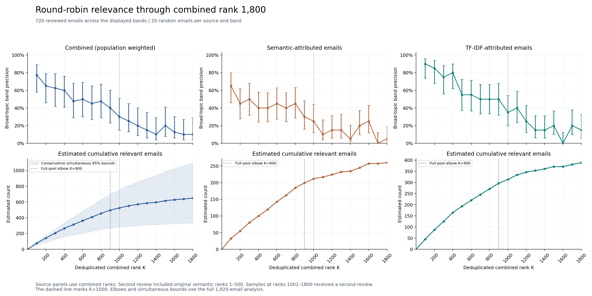

<!doctype html><html><head><meta charset="utf-8"><title>Extended round-robin precision</title><style>body{font:16px/1.6 system-ui;max-width:1400px;margin:35px auto;padding:0 24px;color:#243746}img{width:100%}table{border-collapse:collapse;font-size:13px;width:100%}td,th{padding:7px;border-bottom:1px solid #ddd;text-align:left}pre{white-space:pre-wrap;font:14px/1.6 system-ui}details{padding:10px;border-bottom:1px solid #ddd}summary{cursor:pointer}</style></head><body><h1>Round-robin relevance through K=1920</h1><p><b>Rubric:</b> Broad investigative-topic relevance, applied identically across ranks and sources: 1 for substantive or indirect connections to SPEs, off-balance-sheet or structured financing, associated transactions/documents/participants, retained obligations or financial accounting/disclosure questions bearing on the investigation. Explicitly identified target-transaction document requests and administrative leads qualify. Neither a contradiction nor knowledge of wrongdoing is required. Generic trading contracts, routine customer credit/guarantees, unrelated market misconduct, social messages and generic Enron news without such a connection receive 0. Insufficient context is coded 0 with an uncertainty flag, not assumed relevant.</p><p>Semantic max(who, how much, when) top 1000 and TF-IDF top 1000 alternate S1,L1,...; first-email-ID deduplication reduces 2000 slots to 1920 emails. Original source scores and the documented TF-IDF supplied-rank correction are retained. There is no definition-focused reranking. Source attribution follows first occurrence, so source panels are contributions within combined bands rather than standalone source-rank evaluations.</p><p>The original 400 sampled emails through combined K=1000 are retained. Nine further full bands each receive 20 random emails per source, adding 360 reviews with extension seed 6455. Nominal band 1901-2000 contains only ranks 1901-1920; both source groups are fully reviewed, adding 20. Total: 780 unique reviewed emails. Ranks 1921-2000 do not exist and are not assigned zero precision. Different email IDs with identical text remain separate email observations.</p><p>For every source stratum, p=relevant/n and estimated relevant=N*p. Combined precision sums estimates and divides by the actual band population (100 or 20). The final census has no sampling uncertainty conditional on labels. Source 95% intervals invert the hypergeometric distribution; combined-band bounds sum two 97.5% intervals. Cumulative bounds sum 40 stratum intervals at alpha=0.05/40 for conservative simultaneous coverage. Estimates and ordinary band intervals through K=1000 match the updated shorter analysis.</p><p>Labels measure broad investigative-topic relevance, including indirect and peripheral context, not wrongdoing, unique leads or corpus recall. Initial Codex screening is not human adjudicated and was not fully blinded to rank/source. Prior narrower judgments and existing exact-text judgments inform review; long messages use screening excerpts with targeted follow-up. Missing attachments are not reconstructed, though identified target documents can count as indirect leads. The same rubric applies throughout, and observed rebounds remain visible.</p><p>The targeted second review examined all 128 previously negative judgments among 196 sampled emails attributed to semantic search with original semantic ranks 1–500. The review considered concrete financing arrangements, where obligations or risks remained, and how positions or financial results were reported. The relevant count changed from 68 to 83. <a href="../round_robin_stratified/semantic_reassessment_changes.csv">See before-and-after verdicts and reasons.</a></p><p>A later full review found 87 broadly relevant emails at original semantic ranks 1–200. It updated the verdicts of overlapping samples and kept the original draws for the round-robin estimates. <a href="../round_robin_stratified/semantic_top200_review.csv">See every top-200 verdict and reason.</a></p><p>The second review covered 120 sampled emails at combined ranks 1001–1300. Reviewers checked for transaction content or an identifiable record bearing on the investigation. The relevant count changed from 39 to 26. Population-weighted precision across this range changed from 32.7% to 21.8%. <a href="middle_reassessment_changes.csv">See before-and-after verdicts and reasons.</a></p><p>The second review covered 260 sampled emails at combined ranks 1300–1920. Reviewers checked for transaction content or an identifiable record bearing on the investigation. The relevant count changed from 79 to 43. Population-weighted precision across this range changed from 29.5% to 15.4%. <a href="tail_reassessment_changes.csv">See before-and-after verdicts and reasons.</a></p><p>A later review covered 60 semantic-attributed samples at combined ranks 1101–1200 and 1401–1600. The relevant count changed from 13 to 12. <a href="semantic_band_reassessment_changes.csv">See changed verdicts, reasons and supporting records.</a></p><p>The most recent review checked all 9 previous positive labels in combined ranks 1401–1500 across both sources. 8 remained relevant. <a href="band_1401_1500_reassessment_changes.csv">See the changed label and reason.</a></p><p><b>Findings:</b> estimated broad-relevant emails: 525.2 through K=1000 and 681.2 through K=1920; the extension adds 156.0. Original-horizon geometric elbow: K=400; extended-horizon elbow: K=900. The elbow maximizes normalized cumulative distance above the origin-to-endpoint chord. Changing the endpoint can change this descriptive budget candidate; it does not establish a unique optimal stopping K.</p><p><a href="sample_verdicts_compact.csv">780 verdicts and rationales</a> | <a href="precision_by_band_and_source.csv">Chart data</a> | <a href="combined_deduplicated.csv">1920 candidate ranking</a></p><h2>Combined</h2><table border="1" class="dataframe">
  <thead>
    <tr style="text-align: right;">
      <th>band</th>
      <th>population</th>
      <th>sampled</th>
      <th>relevant</th>
      <th>precision</th>
      <th>precision_ci_low</th>
      <th>precision_ci_high</th>
      <th>estimated_relevant</th>
      <th>cumulative_estimated_relevant</th>
      <th>cumulative_precision</th>
    </tr>
  </thead>
  <tbody>
    <tr>
      <td>1-100</td>
      <td>100</td>
      <td>40</td>
      <td>31</td>
      <td>0.775</td>
      <td>0.580</td>
      <td>0.890</td>
      <td>77.500</td>
      <td>77.500</td>
      <td>0.775</td>
    </tr>
    <tr>
      <td>101-200</td>
      <td>100</td>
      <td>40</td>
      <td>26</td>
      <td>0.650</td>
      <td>0.460</td>
      <td>0.790</td>
      <td>65.000</td>
      <td>142.500</td>
      <td>0.713</td>
    </tr>
    <tr>
      <td>201-300</td>
      <td>100</td>
      <td>40</td>
      <td>25</td>
      <td>0.625</td>
      <td>0.420</td>
      <td>0.790</td>
      <td>62.500</td>
      <td>205.000</td>
      <td>0.683</td>
    </tr>
    <tr>
      <td>301-400</td>
      <td>100</td>
      <td>40</td>
      <td>24</td>
      <td>0.600</td>
      <td>0.410</td>
      <td>0.760</td>
      <td>60.000</td>
      <td>265.000</td>
      <td>0.662</td>
    </tr>
    <tr>
      <td>401-500</td>
      <td>100</td>
      <td>40</td>
      <td>19</td>
      <td>0.477</td>
      <td>0.290</td>
      <td>0.680</td>
      <td>47.650</td>
      <td>312.650</td>
      <td>0.625</td>
    </tr>
    <tr>
      <td>501-600</td>
      <td>100</td>
      <td>40</td>
      <td>20</td>
      <td>0.499</td>
      <td>0.300</td>
      <td>0.690</td>
      <td>49.900</td>
      <td>362.550</td>
      <td>0.604</td>
    </tr>
    <tr>
      <td>601-700</td>
      <td>100</td>
      <td>40</td>
      <td>18</td>
      <td>0.451</td>
      <td>0.270</td>
      <td>0.650</td>
      <td>45.100</td>
      <td>407.650</td>
      <td>0.582</td>
    </tr>
    <tr>
      <td>701-800</td>
      <td>100</td>
      <td>40</td>
      <td>19</td>
      <td>0.475</td>
      <td>0.290</td>
      <td>0.670</td>
      <td>47.550</td>
      <td>455.200</td>
      <td>0.569</td>
    </tr>
    <tr>
      <td>801-900</td>
      <td>100</td>
      <td>40</td>
      <td>16</td>
      <td>0.400</td>
      <td>0.230</td>
      <td>0.600</td>
      <td>40.000</td>
      <td>495.200</td>
      <td>0.550</td>
    </tr>
    <tr>
      <td>901-1000</td>
      <td>100</td>
      <td>40</td>
      <td>12</td>
      <td>0.300</td>
      <td>0.150</td>
      <td>0.510</td>
      <td>30.000</td>
      <td>525.200</td>
      <td>0.525</td>
    </tr>
    <tr>
      <td>1001-1100</td>
      <td>100</td>
      <td>40</td>
      <td>10</td>
      <td>0.253</td>
      <td>0.130</td>
      <td>0.450</td>
      <td>25.300</td>
      <td>550.500</td>
      <td>0.500</td>
    </tr>
    <tr>
      <td>1101-1200</td>
      <td>100</td>
      <td>40</td>
      <td>8</td>
      <td>0.199</td>
      <td>0.090</td>
      <td>0.400</td>
      <td>19.900</td>
      <td>570.400</td>
      <td>0.475</td>
    </tr>
    <tr>
      <td>1201-1300</td>
      <td>100</td>
      <td>40</td>
      <td>6</td>
      <td>0.150</td>
      <td>0.060</td>
      <td>0.350</td>
      <td>15.000</td>
      <td>585.400</td>
      <td>0.450</td>
    </tr>
    <tr>
      <td>1301-1400</td>
      <td>100</td>
      <td>40</td>
      <td>4</td>
      <td>0.101</td>
      <td>0.040</td>
      <td>0.290</td>
      <td>10.100</td>
      <td>595.500</td>
      <td>0.425</td>
    </tr>
    <tr>
      <td>1401-1500</td>
      <td>100</td>
      <td>40</td>
      <td>8</td>
      <td>0.200</td>
      <td>0.080</td>
      <td>0.410</td>
      <td>20.000</td>
      <td>615.500</td>
      <td>0.410</td>
    </tr>
    <tr>
      <td>1501-1600</td>
      <td>100</td>
      <td>40</td>
      <td>5</td>
      <td>0.128</td>
      <td>0.060</td>
      <td>0.300</td>
      <td>12.750</td>
      <td>628.250</td>
      <td>0.393</td>
    </tr>
    <tr>
      <td>1601-1700</td>
      <td>100</td>
      <td>40</td>
      <td>4</td>
      <td>0.100</td>
      <td>0.040</td>
      <td>0.270</td>
      <td>10.000</td>
      <td>638.250</td>
      <td>0.375</td>
    </tr>
    <tr>
      <td>1701-1800</td>
      <td>100</td>
      <td>40</td>
      <td>4</td>
      <td>0.102</td>
      <td>0.040</td>
      <td>0.290</td>
      <td>10.200</td>
      <td>648.450</td>
      <td>0.360</td>
    </tr>
    <tr>
      <td>1801-1900</td>
      <td>100</td>
      <td>40</td>
      <td>10</td>
      <td>0.247</td>
      <td>0.130</td>
      <td>0.450</td>
      <td>24.700</td>
      <td>673.150</td>
      <td>0.354</td>
    </tr>
    <tr>
      <td>1901-1920</td>
      <td>20</td>
      <td>20</td>
      <td>8</td>
      <td>0.400</td>
      <td>0.400</td>
      <td>0.400</td>
      <td>8.000</td>
      <td>681.150</td>
      <td>0.355</td>
    </tr>
  </tbody>
</table><h2>Semantic</h2><table border="1" class="dataframe">
  <thead>
    <tr style="text-align: right;">
      <th>band</th>
      <th>population</th>
      <th>sampled</th>
      <th>relevant</th>
      <th>precision</th>
      <th>precision_ci_low</th>
      <th>precision_ci_high</th>
      <th>estimated_relevant</th>
      <th>cumulative_estimated_relevant</th>
      <th>cumulative_precision</th>
    </tr>
  </thead>
  <tbody>
    <tr>
      <td>1-100</td>
      <td>50</td>
      <td>20</td>
      <td>13</td>
      <td>0.650</td>
      <td>0.460</td>
      <td>0.800</td>
      <td>32.500</td>
      <td>32.500</td>
      <td>0.650</td>
    </tr>
    <tr>
      <td>101-200</td>
      <td>50</td>
      <td>20</td>
      <td>9</td>
      <td>0.450</td>
      <td>0.280</td>
      <td>0.620</td>
      <td>22.500</td>
      <td>55.000</td>
      <td>0.550</td>
    </tr>
    <tr>
      <td>201-300</td>
      <td>50</td>
      <td>20</td>
      <td>10</td>
      <td>0.500</td>
      <td>0.320</td>
      <td>0.680</td>
      <td>25.000</td>
      <td>80.000</td>
      <td>0.533</td>
    </tr>
    <tr>
      <td>301-400</td>
      <td>50</td>
      <td>20</td>
      <td>8</td>
      <td>0.400</td>
      <td>0.240</td>
      <td>0.580</td>
      <td>20.000</td>
      <td>100.000</td>
      <td>0.500</td>
    </tr>
    <tr>
      <td>401-500</td>
      <td>49</td>
      <td>20</td>
      <td>8</td>
      <td>0.400</td>
      <td>0.245</td>
      <td>0.571</td>
      <td>19.600</td>
      <td>119.600</td>
      <td>0.480</td>
    </tr>
    <tr>
      <td>501-600</td>
      <td>51</td>
      <td>20</td>
      <td>9</td>
      <td>0.450</td>
      <td>0.275</td>
      <td>0.627</td>
      <td>22.950</td>
      <td>142.550</td>
      <td>0.475</td>
    </tr>
    <tr>
      <td>601-700</td>
      <td>49</td>
      <td>20</td>
      <td>8</td>
      <td>0.400</td>
      <td>0.245</td>
      <td>0.571</td>
      <td>19.600</td>
      <td>162.150</td>
      <td>0.465</td>
    </tr>
    <tr>
      <td>701-800</td>
      <td>49</td>
      <td>20</td>
      <td>9</td>
      <td>0.450</td>
      <td>0.286</td>
      <td>0.633</td>
      <td>22.050</td>
      <td>184.200</td>
      <td>0.463</td>
    </tr>
    <tr>
      <td>801-900</td>
      <td>50</td>
      <td>20</td>
      <td>6</td>
      <td>0.300</td>
      <td>0.160</td>
      <td>0.480</td>
      <td>15.000</td>
      <td>199.200</td>
      <td>0.445</td>
    </tr>
    <tr>
      <td>901-1000</td>
      <td>50</td>
      <td>20</td>
      <td>5</td>
      <td>0.250</td>
      <td>0.120</td>
      <td>0.440</td>
      <td>12.500</td>
      <td>211.700</td>
      <td>0.425</td>
    </tr>
    <tr>
      <td>1001-1100</td>
      <td>49</td>
      <td>20</td>
      <td>2</td>
      <td>0.100</td>
      <td>0.041</td>
      <td>0.265</td>
      <td>4.900</td>
      <td>216.600</td>
      <td>0.396</td>
    </tr>
    <tr>
      <td>1101-1200</td>
      <td>51</td>
      <td>20</td>
      <td>3</td>
      <td>0.150</td>
      <td>0.059</td>
      <td>0.314</td>
      <td>7.650</td>
      <td>224.250</td>
      <td>0.375</td>
    </tr>
    <tr>
      <td>1201-1300</td>
      <td>52</td>
      <td>20</td>
      <td>3</td>
      <td>0.150</td>
      <td>0.058</td>
      <td>0.327</td>
      <td>7.800</td>
      <td>232.050</td>
      <td>0.357</td>
    </tr>
    <tr>
      <td>1301-1400</td>
      <td>49</td>
      <td>20</td>
      <td>1</td>
      <td>0.050</td>
      <td>0.020</td>
      <td>0.204</td>
      <td>2.450</td>
      <td>234.500</td>
      <td>0.335</td>
    </tr>
    <tr>
      <td>1401-1500</td>
      <td>51</td>
      <td>20</td>
      <td>4</td>
      <td>0.200</td>
      <td>0.098</td>
      <td>0.373</td>
      <td>10.200</td>
      <td>244.700</td>
      <td>0.326</td>
    </tr>
    <tr>
      <td>1501-1600</td>
      <td>51</td>
      <td>20</td>
      <td>5</td>
      <td>0.250</td>
      <td>0.118</td>
      <td>0.431</td>
      <td>12.750</td>
      <td>257.450</td>
      <td>0.321</td>
    </tr>
    <tr>
      <td>1601-1700</td>
      <td>50</td>
      <td>20</td>
      <td>0</td>
      <td>0.000</td>
      <td>0.000</td>
      <td>0.120</td>
      <td>0.000</td>
      <td>257.450</td>
      <td>0.303</td>
    </tr>
    <tr>
      <td>1701-1800</td>
      <td>48</td>
      <td>20</td>
      <td>1</td>
      <td>0.050</td>
      <td>0.021</td>
      <td>0.188</td>
      <td>2.400</td>
      <td>259.850</td>
      <td>0.289</td>
    </tr>
    <tr>
      <td>1801-1900</td>
      <td>51</td>
      <td>20</td>
      <td>2</td>
      <td>0.100</td>
      <td>0.039</td>
      <td>0.255</td>
      <td>5.100</td>
      <td>264.950</td>
      <td>0.279</td>
    </tr>
    <tr>
      <td>1901-1920</td>
      <td>10</td>
      <td>10</td>
      <td>2</td>
      <td>0.200</td>
      <td>0.200</td>
      <td>0.200</td>
      <td>2.000</td>
      <td>266.950</td>
      <td>0.278</td>
    </tr>
  </tbody>
</table><h2>Tfidf</h2><table border="1" class="dataframe">
  <thead>
    <tr style="text-align: right;">
      <th>band</th>
      <th>population</th>
      <th>sampled</th>
      <th>relevant</th>
      <th>precision</th>
      <th>precision_ci_low</th>
      <th>precision_ci_high</th>
      <th>estimated_relevant</th>
      <th>cumulative_estimated_relevant</th>
      <th>cumulative_precision</th>
    </tr>
  </thead>
  <tbody>
    <tr>
      <td>1-100</td>
      <td>50</td>
      <td>20</td>
      <td>18</td>
      <td>0.900</td>
      <td>0.740</td>
      <td>0.960</td>
      <td>45.000</td>
      <td>45.000</td>
      <td>0.900</td>
    </tr>
    <tr>
      <td>101-200</td>
      <td>50</td>
      <td>20</td>
      <td>17</td>
      <td>0.850</td>
      <td>0.680</td>
      <td>0.940</td>
      <td>42.500</td>
      <td>87.500</td>
      <td>0.875</td>
    </tr>
    <tr>
      <td>201-300</td>
      <td>50</td>
      <td>20</td>
      <td>15</td>
      <td>0.750</td>
      <td>0.560</td>
      <td>0.880</td>
      <td>37.500</td>
      <td>125.000</td>
      <td>0.833</td>
    </tr>
    <tr>
      <td>301-400</td>
      <td>50</td>
      <td>20</td>
      <td>16</td>
      <td>0.800</td>
      <td>0.620</td>
      <td>0.900</td>
      <td>40.000</td>
      <td>165.000</td>
      <td>0.825</td>
    </tr>
    <tr>
      <td>401-500</td>
      <td>51</td>
      <td>20</td>
      <td>11</td>
      <td>0.550</td>
      <td>0.373</td>
      <td>0.725</td>
      <td>28.050</td>
      <td>193.050</td>
      <td>0.769</td>
    </tr>
    <tr>
      <td>501-600</td>
      <td>49</td>
      <td>20</td>
      <td>11</td>
      <td>0.550</td>
      <td>0.367</td>
      <td>0.714</td>
      <td>26.950</td>
      <td>220.000</td>
      <td>0.733</td>
    </tr>
    <tr>
      <td>601-700</td>
      <td>51</td>
      <td>20</td>
      <td>10</td>
      <td>0.500</td>
      <td>0.333</td>
      <td>0.667</td>
      <td>25.500</td>
      <td>245.500</td>
      <td>0.699</td>
    </tr>
    <tr>
      <td>701-800</td>
      <td>51</td>
      <td>20</td>
      <td>10</td>
      <td>0.500</td>
      <td>0.333</td>
      <td>0.667</td>
      <td>25.500</td>
      <td>271.000</td>
      <td>0.674</td>
    </tr>
    <tr>
      <td>801-900</td>
      <td>50</td>
      <td>20</td>
      <td>10</td>
      <td>0.500</td>
      <td>0.320</td>
      <td>0.680</td>
      <td>25.000</td>
      <td>296.000</td>
      <td>0.655</td>
    </tr>
    <tr>
      <td>901-1000</td>
      <td>50</td>
      <td>20</td>
      <td>7</td>
      <td>0.350</td>
      <td>0.200</td>
      <td>0.540</td>
      <td>17.500</td>
      <td>313.500</td>
      <td>0.625</td>
    </tr>
    <tr>
      <td>1001-1100</td>
      <td>51</td>
      <td>20</td>
      <td>8</td>
      <td>0.400</td>
      <td>0.235</td>
      <td>0.588</td>
      <td>20.400</td>
      <td>333.900</td>
      <td>0.604</td>
    </tr>
    <tr>
      <td>1101-1200</td>
      <td>49</td>
      <td>20</td>
      <td>5</td>
      <td>0.250</td>
      <td>0.122</td>
      <td>0.429</td>
      <td>12.250</td>
      <td>346.150</td>
      <td>0.575</td>
    </tr>
    <tr>
      <td>1201-1300</td>
      <td>48</td>
      <td>20</td>
      <td>3</td>
      <td>0.150</td>
      <td>0.062</td>
      <td>0.312</td>
      <td>7.200</td>
      <td>353.350</td>
      <td>0.544</td>
    </tr>
    <tr>
      <td>1301-1400</td>
      <td>51</td>
      <td>20</td>
      <td>3</td>
      <td>0.150</td>
      <td>0.059</td>
      <td>0.314</td>
      <td>7.650</td>
      <td>361.000</td>
      <td>0.515</td>
    </tr>
    <tr>
      <td>1401-1500</td>
      <td>49</td>
      <td>20</td>
      <td>4</td>
      <td>0.200</td>
      <td>0.102</td>
      <td>0.367</td>
      <td>9.800</td>
      <td>370.800</td>
      <td>0.494</td>
    </tr>
    <tr>
      <td>1501-1600</td>
      <td>49</td>
      <td>20</td>
      <td>0</td>
      <td>0.000</td>
      <td>0.000</td>
      <td>0.122</td>
      <td>0.000</td>
      <td>370.800</td>
      <td>0.464</td>
    </tr>
    <tr>
      <td>1601-1700</td>
      <td>50</td>
      <td>20</td>
      <td>4</td>
      <td>0.200</td>
      <td>0.100</td>
      <td>0.380</td>
      <td>10.000</td>
      <td>380.800</td>
      <td>0.449</td>
    </tr>
    <tr>
      <td>1701-1800</td>
      <td>52</td>
      <td>20</td>
      <td>3</td>
      <td>0.150</td>
      <td>0.058</td>
      <td>0.327</td>
      <td>7.800</td>
      <td>388.600</td>
      <td>0.431</td>
    </tr>
    <tr>
      <td>1801-1900</td>
      <td>49</td>
      <td>20</td>
      <td>8</td>
      <td>0.400</td>
      <td>0.245</td>
      <td>0.571</td>
      <td>19.600</td>
      <td>408.200</td>
      <td>0.430</td>
    </tr>
    <tr>
      <td>1901-1920</td>
      <td>10</td>
      <td>10</td>
      <td>6</td>
      <td>0.600</td>
      <td>0.600</td>
      <td>0.600</td>
      <td>6.000</td>
      <td>414.200</td>
      <td>0.431</td>
    </tr>
  </tbody>
</table><h2>Review audit</h2><details><summary>R001 | rank 1 | semantic | relevant=1 | direct | FW:</summary><p>LJM2 disclosure describes Enron-note/share-supported risk vehicles and claimed arm&#x27;s-length terms.</p><p>Email ID: bc1cd95827d5a70d89d21b16457a54b7; uncertainty: 0</p><pre>From Enron&#x27;s Proxy:

 During 2000, certain Enron subsidiaries and affiliates (defined for
purposes of the following paragraphs, &quot;Enron&quot;) entered into a number of
transactions with LJM2 Co-Investment, L.P. (&quot;LJM2&quot;), a private investment
company that primarily engages in acquiring or investing in energy and
communications-related investments, primarily involving either assets Enron had
decided to sell or risk management activities intended to limit Enron&#x27;s exposure
to price and value fluctuations with respect to various assets. Andrew S.
Fastow, Executive Vice President and Chief Financial Officer of Enron, is the
managing member of LJM2&#x27;s general partner. The general partner of LJM2 is
entitled to receive a percentage of the profits of LJM2 in excess of the general
partner&#x27;s portion of the total capital contributed to LJM2, depending upon the
performance of the investments made by LJM2. In ten of these transactions LJM2
acquired various debt and equity securities, or other ownership interests, from
Enron that were directly or indirectly engaged in the domestic and/or
international energy or communications business, while in one transaction LJM2
acquired dark fiber from an Enron subsidiary. The aggregate consideration agreed
to be paid to Enron pursuant to these eleven transactions was approximately $213
million. Also during 2000, LJM2 sold to Enron certain merchant investment
interests for a total consideration of approximately $76 million.

 Also, during 2000, Enron engaged in other transactions with LJM2 intended
to manage price and value risk with regard to certain merchant and similar
assets by entering into derivatives, including swaps, puts, and collars. As part
of such risk management transactions, LJM2 purchased equity interests in four
structured finance vehicles for a total of approximately $127 million. Enron, in
turn, contributed a combination of assets, Enron notes payable, restricted
shares of outstanding Enron stock (and the restricted right to receive
additional Enron shares) in exchange for interests in the vehicles. Enron and
LJM2 subsequently entered into derivative transactions through these four
vehicles with a combined notional amount of approximately $2.1 billion. These
transactions occurred in the ordinary course of Enron&#x27;s business and were
negotiated on an arm&#x27;s length basis with senior officers of Enron other than Mr.
Fastow. Management believes that the terms of the transactions were reasonable
and no less favorable than the terms of similar arrangements with unrelated
third parties.</pre></details><details><summary>R002 | rank 9 | semantic | relevant=1 | context | FW: Notes from Enron</summary><p>Guarantees and accurate legal-separateness representations directly inform retained-obligation and disclosure inquiries.</p><p>Email ID: 4855fa5b2be9477951c04f8bcb30d375; uncertainty: 0</p><pre>The following representations (among others) have been made to various parties in due diligence relative to both the credit agreement (with the banks) and the Preferred Stock Agreement (Dynegy) to the Boards of Transwestern (TW), Northern (NNG) and Enron Transportation Services (ETSC) and it subsidiaries, as well as to Dynegy and the banks:

The funds that are being loaned out of NNG and TW to various entities and the further loans of these funds to Enron will carry Enron Corp guaranties.
The note agreements will reimburse NNG, TW and ETSC and their subsidiaries for their actual expenses associated with these endeavors.
The credit agreements actually require a large degree of separateness and an arm&#x27;s length standard needs to be applied to dealings between ETSC and its subsidiaries and Enron and the rest of it&#x27;s subsidiaries.

Before the funding under the credit agreement takes place I would like to make sure that you two are aware of this, have agreed to and understand the conditions and further agree that you will assist me in cleaning up whatever documentation needs to be cleaned up between Enron and ETSC and it&#x27;s subs to make the above representations not be false.


Rod Hayslett
Managing Director, Chief Financial Officer and Treasurer
Enron Transportation Services Company
EB4054
1400 Smith Street
Houston, TX 77002-7361
713-853-6178
rod.hayslett@enron.com</pre></details><details><summary>R003 | rank 17 | semantic | relevant=0 | insufficient | FW: Restructuring Today Monday October 1 2001</summary><p>Unavailable generic newsletter has no identifiable target transaction in the body.</p><p>Email ID: bbb03d1c2a14427eb1b39050b2ce0ada; uncertainty: 1</p><pre>Enron stuff

-----Original Message-----
From: U.S. Publishing Co. [mailto:season@restructuringtoday.com]
Sent: Sunday, September 30, 2001 9:59 PM
To: RT Reader
Subject: Restructuring Today Monday October 1 2001


(see attached file: rt011001.pdf)

Thank you,

Season Hawksley
U.S. Publishing Co.
800-486-8201</pre></details><details><summary>R004 | rank 21 | semantic | relevant=1 | indirect | Important Announcement Regarding Document Preservation.</summary><p>Preservation instruction identifies investigation-related SPE records and provides a document-discovery lead.</p><p>Email ID: 0cad4354bfe52aa09adb201dd4ee0aaf; uncertainty: 0</p><pre>On Wednesday, October 31, I sent an email to all Enron employees worldwide in order to ensure that Enron employees retained documents that might be relevant to ongoing litigation. New lawsuits have been filed that enlarge the scope of the information that Enron will need to retain. The following list includes both the topics in the earlier email and the topics related to the new lawsuits.

Effective immediately, please do the following:

 1. If you have any voice mails that relate in any way to the LJM Deal or Chewco Investments L.P. including any accounting issues related to these transactions, please forward the voice mails to x3-6800.

2. If you have any voice mails that relate in any way to the proposed Dynegy merger or the Enron Corp. Savings Plan, including any accounting issues related to these transactions, please forward the voice mails to x3-6802.

3. If you have any voice mails that relate in any way to Enron&#x27;s public statements regarding EBS, Azurix, New Power Co., or any voice mail regarding financial transactions involving these matters, including accounting issues related to these matters, please forward the voice mails to x3-6801.

 4. If you have any voice mails that relate in any way to Enron&#x27;s public statements regarding the proposed merger with Dynegy or the Enron Corp. Savings Plan or any voice mail regarding financial transactions involving these matters, including accounting issues related to these matters, please forward the voice mails to x3-6802.

 5. If you have any e-mails that relate in any way to the LJM Deal, Chewco Investments L.P., including any accounting issues related to these transactions, please forward the e-mails to LJM.litigation@enron.com.

6. If you have any e-mails that relate in any way to the proposed Dynegy merger, including any accounting issues related to these transactions, please forward the e-mails to dynegy.merger@enron.com.

 7. If you have any e-mails that relate in any way to the Enron Corp. Savings Plan, including any accounting issues related to these transactions, please forward the e-mails to enron.savingsplan@enron.com.

 8. If you have any e-mails that relate in any way to Enron&#x27;s public statements regarding EBS, Azurix, New Power Co. or any e-mail regarding financial transactions involving these matters, including accounting issues related to these matters, please forward the e-mails to classaction.litigation@enron.com.

9. If you have any e-mails that relate in any way to Enron&#x27;s public statements regarding the proposed Dynegy merger or any e-mail regarding financial transactions involving these matters, including accounting issues related to these matters, please forward the e-mails to dynegy.merger@enron.com.

10. If you have any e-mails that relate in any way to Enron&#x27;s public statements regarding the Enron Corp. Savings Plan or any e-mail regarding financial transactions involving these matters, including accounting issues related to these matters, please forward the e-mails to enron.savingsplan@enron.com.


 &quot;LJM Deal&quot; includes LJM Cayman L.P., LJM Co-Investment L.P., TNPC1, Margaux1, Cortez (TNPC), Osprey1, Avici, Catalytica, Fishtail (Pulp &amp; Paper), Backbone, ENA CLO (Merlin), Nowa Sarzyna (Poland), Bob West, MEGS, Yosemite, EECC Turbines (Blue Dog), Raptor 1, Raptor 1a, Raptor 2, Raptor 2a, Raptor 3, Raptor 4, Rawhide, LJM2/WW Loan Agrmt, Osprey 2 LLC1, Rythms, Osprey, Cuiaba, and LJM Cayco Investments.

Also, please forward all future e-mails and voice mails that relate to the above-referenced subjects to the appropriate e-mail address or voice mail box. These procedures will ensure that our electronic documents and voice mails are properly preserved.

Shortly, our lawyers will be collecting our traditional files, i.e., written documents, for possible production in litigation. Until further notice, please retain all of your hard-copy files now in your possession or that come into your possession that in any way relate to:

1. The LJM Deal
 2. Azurix
 3. New Power Co.
 4. EBS
 5. Chewco Investments L.P.
 6. Accounting for any Enron investments
 7. Any Enron public statement made to the investment public
 8. Any Enron public filing with the SEC or other regulatory bodies
 9. The proposed merger with Dynegy
 10. The Enron Corp. Savings Plan. It is not necessary to send documents related to your personal participation in the Plan such as Plan communications to you regarding the status of your account.


 Please err on the side of retention of documents.

If you have any questions, please call Andrew Edison at x5-7105.</pre></details><details><summary>R005 | rank 23 | semantic | relevant=1 | context | Greenfield Summary</summary><p>Specific Greenfield financing debt, equity and loss exposures provide risk-allocation context.</p><p>Email ID: 8f420fc1dcfe04f49ae3191b685b1ea9; uncertainty: 0</p><pre>With the recent movement in long term interest rates, I thought I would update you on Enron&#x27;s exposure to Greenfield. Enron has a long term interest rate swap (which is in the money to Enron) in place with Greenfield, which has recently appreciated considerably. Preserving the value of this swap has become our top priority.

This is a quick summary of Enron&#x27;s exposure to Greenfield.

Greenfield (In order of seniority):
Senior Debt 110mn
Additional Sponsor Loans 55mn (Not yet funded)
ECT Interest Rate Swap 16mn
Shareholder Loans 9mn
Equity 55mn
Total 245mn

Enron Exposure (In order of seniority):
Additional Sponsor Loans 11mn (Not yet funded, no obligation to do so)
ECT Interest Rate Swap 16mn
Shareholder Loans 2.4mn
Equity 11mn
Total 29.4mn (Excluding Additional Sponsor Loan)

Current discussions center around a sale of the vessel to a third party. El Paso have recently submitted a letter indicating a potential bid of 210-215 million. If this sale were to be completed, Enron would recover the swap breakage of 16mn and the Shareholder loan of 2.4mn entirely, and would recover approximaetly $4 million of equity, resulting in an overall write off of approximately $7mn. The timing of this transaction is not yet certain, but our intention would be to delay until Q102. A sale to a third party at this level would represent the best possible solution for Enron, and our efforts are concentrated in this area

In discussions held last week with Jim Hughes, Jim indicated that he thought it was appropriate that his group should bear the loss associated with this transaction, as it was originally entered into because of Dabhol. The Global LNG group and the Finance group will continue to push as hard as possible to resolve this matter in the best interests of Enron, and we remain in constant liaison with the DPC group.

Please feel free to contact us if you have any further questions.

Thanks,
Jonathan</pre></details><details><summary>R006 | rank 27 | semantic | relevant=0 | none | Enron Principal Investments - Organizational Memo</summary><p>General investment-team organizational announcement without identified target financing or accounting issue.</p><p>Email ID: 0db79acf80c2c10f38a8c4d1e56ec47c; uncertainty: 0</p><pre>Enron Principal Investments (EPI), which was formed in the 2nd quarter, has completed its integration and the development of its new strategy. This group will be responsible for identifying, closing, managing and exiting all non-E&amp;P equity investments for Enron worldwide. Kevin Garland will lead EPI, which includes Barbara Paige, Andrew Marsden, Kevin Kuykendall, Steven Sheldon, Michele Nezi Marvin and Mark Gandy. Additionally, Dick Lydecker and the Special Asset Group will continue to report to Kevin.

EPI will pursue investments related to Enron&#x27;s core businesses, where Enron has a unique insight into the market, company or technology. Initially, this will be geographically focused in North America and Europe. This group will rely heavily on the support and cooperation of the core business units to provide information and market insight.

EPI may make investments in the form of venture capital, leverage buyouts, growth equity, or private equity in public companies. The group will not make investments in seed stage companies, other funds, subsidiaries of larger corporations, or project equity.

Please join me in supporting the efforts of Enron Principal Investments.</pre></details><details><summary>R007 | rank 35 | semantic | relevant=0 | none | Confidentiality Regarding Acquisitions</summary><p>Generic acquisition confidentiality policy.</p><p>Email ID: f72bea7327c0d0d0aca5abf762275779; uncertainty: 0</p><pre>I&#x27;m sure that many of you are aware that there has been a great deal of
activity lately related to Enron&#x27;s evaluation of possible acquisitions. John
Goodpasture&#x27;s group has kept a large number of ET&amp;S people engaged in looking
at a number of potential deals. While these deal evaluation projects have
become routine around here, we all must remember that these projects are
extremely confidential. Even after a potential seller has announced that it
is up for sale, the fact that Enron is looking at a potential deal, as well
as any of our internal analysis of the deal, remains strictly confidential.

I realize that many of you have ongoing business relationships with employees
of some of the companies that we have evaluated or may evaluate in the
future. If you find yourself in such a situation, and a business contact at
the target company asks whether Enron is evaluating the contact&#x27;s company or
assets, the only appropriate response is that Enron personnel are not
permitted to discuss potential acquisitions. Please be aware that the
confidentiality agreements that we typically sign as part of the acquisition
evaluation process preclude any communication by Enron people with employees
of the target company.

If you have any questions or concerns regarding this requirement, please do
not hesitate to give me a call. Thank you for your assistance. DF</pre></details><details><summary>R008 | rank 41 | semantic | relevant=1 | context | mariner</summary><p>Mariner equity and warrants are explicitly placed in Raptor; useful hedge structure context.</p><p>Email ID: 691f8e5ef26196a6ca1a8c78962dd8ea; uncertainty: 0</p><pre>the latest is that they are going to put equity and warrants into raptor and
not the debt.
deb, did mary leave you the questionnaire of jim&#x27;s re this asset?
that needs to go to mary/sara to do the swap (i can&#x27;t remember mary&#x27;s
vacation schedule, but sara i think she is gone now??)


Lisa J. Mellencamp
Enron North America Corp. - Legal
1400 Smith St.
Houston, TX 77002
Tel: (713) 853-7986
Fax: (713) 646-3393
E-mail: Lisa.Mellencamp@enron.com</pre></details><details><summary>R009 | rank 43 | semantic | relevant=0 | none | Re: Koch Energy Trading</summary><p>Ordinary small overdue Koch trading invoices.</p><p>Email ID: b059733c1524b2421161308765e16c64; uncertainty: 0</p><pre>Is this a receivable for LRC or Enron?


Leslie Robinson@ENRON
10/25/2000 06:12 PM
To: Susan W Pereira/HOU/ECT@ECT
cc:
Subject: Koch Energy Trading

While doing my Accounts Receivable research, I came across two outstanding
invoice for Koch Enregy totally $2,934.60 from 1997. Is it too late to
recoup the money via the settlement agreement?</pre></details><details><summary>R010 | rank 45 | semantic | relevant=1 | context | AIG Fund</summary><p>AIG Friend-of-Enron monetization structure and required Raptor hedge are related transaction context.</p><p>Email ID: f4ff7f08f614d12a0a2c4d6bb713dead; uncertainty: 0</p><pre>Guys, I would like to add the following commentary to the DASH which will
better reflect my thinking around this investment. The current text suggests
that there is significant strategic advantage for ENA to be a participant in
the fund. I do not think that is the case; however, I do see some merits in
the investment based on the needs of Enron&#x27;s Global Finance group. I would
suggest toning down the strategic advantages and add the following:

 It is unlikely that given the funds target returns that the it will be an
effective permanent monetization vehicle for ENA&#x27;s strategic and merchant
investments; however, Enron Global Finance believes that the investment is
important for the following reasons:
 a) provides an additional &quot;Friend of Enron&quot; to facilitate short to medium
term balance sheet and regulatory solution to highly structured commodity
and capital transactions in the wholesale group;
 b) provides alternative sources of short term capital liquidity and
 c) by further developing the relationship with AIG provides collateral
benefits for Enron&#x27;s overall Global Finance capability and business.

ENA would have a requirement that this investments be hedged through Raptor
and be managed by the Enron Global Finance Group.

Regards
Delainey</pre></details><details><summary>R011 | rank 51 | semantic | relevant=1 | context | Overview of Investor Conference Call</summary><p>Investor communication discusses leverage, restatements and financing vehicles; relevant disclosure context.</p><p>Email ID: 001b3fd5b207f6f7e4db352a9dd120a8; uncertainty: 0</p><pre>Today, Enron hosted a conference call to give investors a current overview of the company. Here&#x27;s an update of what we discussed during the call.

We told investors that we&#x27;re doing everything we can to protect their interests and to regain their confidence. Our focus remains on our credit quality, balance sheet and liquidity, which are essential for our continued success and expansion of our wholesale businesses.

It took more than a few weeks to get where we are today. Here&#x27;s a snapshot of significant events that led to our current situation:

-- In hindsight, we definitely made some very bad investments in our non-core businesses over the past several years. Those include investments in Azurix, India and Brazil. They have performed far worse that we could have ever imagined when we made these investments;

-- Because of these bad investments, we&#x27;ve become over-leveraged as a company. The negative impact of those investments was exacerbated through the extensive use of debt capital both on and off our balance sheet;

-- We also entered into related party transactions that led to a loss of investor confidence, which has been very damaging;

-- We&#x27;ve been criticized for our lack of transparency and our hard-to-understand financial and operating disclosures; and

-- On top of it all, we discovered errors in our financial statements, as discussed in our 8-K filing last week, that required a restatement of previously reported earnings.

We&#x27;ve taken a new look at our businesses and have separated them into three areas: core businesses, non-core businesses, and businesses under review.

Core Businesses

Our core businesses remain strong and consistent sources of significant earnings and cash flows for the company. They&#x27;re our competitive advantage. These include:

-- Natural gas pipeline businesses;

-- Gas and power businesses in North America and Europe;

-- Retail businesses in North America and Europe; and

-- Coal businesses in North America and Europe.

The events of the past few weeks have had a temporary negative impact on our projected fourth quarter profitability. It&#x27;s too early to tell at this time what impact this might have on our operating results. We are considering these actions now so that we can quickly return to normal business in 2002.

I also remain optimistic that the actions we&#x27;ve taken over the past couple of weeks have addressed our customer and counterparty credit and liquidity concerns. According to our business unit leaders, we have definitely seen improvement in our counterparty relationships.

Non-Core Businesses

Our non-core businesses include our global assets group and our broadband division. We have invested more than $8 billion in these businesses, and the return from them has been dismal.

We have an aggressive program in place to exit these businesses and expect that the sale of these businesses will generate billions of dollars in cash that we can use to repay debt and reinvest in our core businesses. We already have more than $800 million in assets contracted for sale this year. They include CEG Rio, a gas LDC in Brazil; EcoElectrica, a power plant and LNG receiving terminal in Puerto Rico; and asset sales of offshore oil and gas properties in India. The approximately $2.9 billion Portland General sale is also on target to close in late 2002 pending regulatory approvals.

Businesses Under Review

These businesses are comprised of those operations outside our power and gas wholesale businesses and include global and industrial markets. While several of these businesses have very strong future prospects, we need to determine if their capital requirements and near-term growth prospects are sufficient enough in terms of earnings and cash generation.

Reviewing our businesses this way will help determine where we need to make reductions to our work force. More information will follow as soon as it becomes available.

Credit Rating/10-Q Filing

We continue to meet regularly with credit rating agencies and believe that our liquidity enhancements and scheduled asset sales will strengthen our balance sheet and maintain our investment grade credit rating. Our current credit ratings by the three major rating agencies are as follows:

-- Moody&#x27;s at Baa3 &quot;Under Review for Further Downgrade&quot;

-- Fitch at BBB- &quot;Evolving Status&quot;

-- S&amp;P at BBB- &quot;CreditWatch Negative&quot;

We also discussed our existing financial vehicles, including Osprey, Marlin and Yosemite, in further detail. We told investors that we will file our 10-Q five days late due to our current activities. It will be filed on Nov. 19.

We will continue to have updates with investors over the coming weeks as well as our frequent updates with you. The full transcript of our conference call will be filed with the Securities and Exchange Commission in the next few days. It will also be posted on our web site at www.enron.com/corp/investors under &quot;SEC Filings.&quot;


In connection with the proposed transactions, Dynegy and Enron will file a joint proxy statement/prospectus with the Securities and Exchange Commission. Investors and security holders are urged to carefully read the joint proxy statement/prospectus regarding the proposed transactions when it becomes available, because it will contain important information. Investors and security holders may obtain a free copy of the joint proxy statement/prospectus (when it is available) and other documents containing information about Dynegy and Enron, without charge, at the SEC&#x27;s web site at www.sec.gov. Copies of the joint proxy statement/prospectus and the SEC filings that will be incorporated by reference in the joint proxy statement/prospectus may also be obtained for free by directing a request to either: Investor Relations, Dynegy Inc., 1000 Louisiana, Suite 5800, Houston, TX 77002, Phone: (713) 507-6466, Fax: (713) 767-6652; or Investor Relations, Enron Corp., Enron Building, 1400 Smith Street, Houston, TX 77002, Phone: (713) 853-3956, Fax: (713) 646-3302.

In addition, the identity of the persons who, under SEC rules, may be considered &quot;participants in the solicitation&quot; of Dynegy and Enron shareholders in connection with the proposed transactions, and any description of their direct or indirect interests, by security holdings or otherwise, are available in an SEC filing under Schedule 14A made by each of Dynegy and Enron.</pre></details><details><summary>R012 | rank 53 | semantic | relevant=1 | context | Overview of Investor Conference Call</summary><p>Investor communication discusses leverage, restatements and financing vehicles; relevant disclosure context.</p><p>Email ID: 130633ba75aca10d9e6fcd13af0b9cd6; uncertainty: 0</p><pre>Today, Enron hosted a conference call to give investors a current overview of the company. Here&#x27;s an update of what we discussed during the call.

We told investors that we&#x27;re doing everything we can to protect their interests and to regain their confidence. Our focus remains on our credit quality, balance sheet and liquidity, which are essential for our continued success and expansion of our wholesale businesses.

It took more than a few weeks to get where we are today. Here&#x27;s a snapshot of significant events that led to our current situation:

-- In hindsight, we definitely made some very bad investments in our non-core businesses over the past several years. Those include investments in Azurix, India and Brazil. They have performed far worse that we could have ever imagined when we made these investments;

-- Because of these bad investments, we&#x27;ve become over-leveraged as a company. The negative impact of those investments was exacerbated through the extensive use of debt capital both on and off our balance sheet;

-- We also entered into related party transactions that led to a loss of investor confidence, which has been very damaging;

-- We&#x27;ve been criticized for our lack of transparency and our hard-to-understand financial and operating disclosures; and

-- On top of it all, we discovered errors in our financial statements, as discussed in our 8-K filing last week, that required a restatement of previously reported earnings.

We&#x27;ve taken a new look at our businesses and have separated them into three areas: core businesses, non-core businesses, and businesses under review.

Core Businesses

Our core businesses remain strong and consistent sources of significant earnings and cash flows for the company. They&#x27;re our competitive advantage. These include:

-- Natural gas pipeline businesses;

-- Gas and power businesses in North America and Europe;

-- Retail businesses in North America and Europe; and

-- Coal businesses in North America and Europe.

The events of the past few weeks have had a temporary negative impact on our projected fourth quarter profitability. It&#x27;s too early to tell at this time what impact this might have on our operating results. We are considering these actions now so that we can quickly return to normal business in 2002.

I also remain optimistic that the actions we&#x27;ve taken over the past couple of weeks have addressed our customer and counterparty credit and liquidity concerns. According to our business unit leaders, we have definitely seen improvement in our counterparty relationships.

Non-Core Businesses

Our non-core businesses include our global assets group and our broadband division. We have invested more than $8 billion in these businesses, and the return from them has been dismal.

We have an aggressive program in place to exit these businesses and expect that the sale of these businesses will generate billions of dollars in cash that we can use to repay debt and reinvest in our core businesses. We already have more than $800 million in assets contracted for sale this year. They include CEG Rio, a gas LDC in Brazil; EcoElectrica, a power plant and LNG receiving terminal in Puerto Rico; and asset sales of offshore oil and gas properties in India. The approximately $2.9 billion Portland General sale is also on target to close in late 2002 pending regulatory approvals.

Businesses Under Review

These businesses are comprised of those operations outside our power and gas wholesale businesses and include global and industrial markets. While several of these businesses have very strong future prospects, we need to determine if their capital requirements and near-term growth prospects are sufficient enough in terms of earnings and cash generation.

Reviewing our businesses this way will help determine where we need to make reductions to our work force. More information will follow as soon as it becomes available.

Credit Rating/10-Q Filing

We continue to meet regularly with credit rating agencies and believe that our liquidity enhancements and scheduled asset sales will strengthen our balance sheet and maintain our investment grade credit rating. Our current credit ratings by the three major rating agencies are as follows:

-- Moody&#x27;s at Baa3 &quot;Under Review for Further Downgrade&quot;

-- Fitch at BBB- &quot;Evolving Status&quot;

-- S&amp;P at BBB- &quot;CreditWatch Negative&quot;

We also discussed our existing financial vehicles, including Osprey, Marlin and Yosemite, in further detail. We told investors that we will file our 10-Q five days late due to our current activities. It will be filed on Nov. 19.

We will continue to have updates with investors over the coming weeks as well as our frequent updates with you. The full transcript of our conference call will be filed with the Securities and Exchange Commission in the next few days. It will also be posted on our web site at www.enron.com/corp/investors under &quot;SEC Filings.&quot;


In connection with the proposed transactions, Dynegy and Enron will file a joint proxy statement/prospectus with the Securities and Exchange Commission. Investors and security holders are urged to carefully read the joint proxy statement/prospectus regarding the proposed transactions when it becomes available, because it will contain important information. Investors and security holders may obtain a free copy of the joint proxy statement/prospectus (when it is available) and other documents containing information about Dynegy and Enron, without charge, at the SEC&#x27;s web site at www.sec.gov. Copies of the joint proxy statement/prospectus and the SEC filings that will be incorporated by reference in the joint proxy statement/prospectus may also be obtained for free by directing a request to either: Investor Relations, Dynegy Inc., 1000 Louisiana, Suite 5800, Houston, TX 77002, Phone: (713) 507-6466, Fax: (713) 767-6652; or Investor Relations, Enron Corp., Enron Building, 1400 Smith Street, Houston, TX 77002, Phone: (713) 853-3956, Fax: (713) 646-3302.

In addition, the identity of the persons who, under SEC rules, may be considered &quot;participants in the solicitation&quot; of Dynegy and Enron shareholders in connection with the proposed transactions, and any description of their direct or indirect interests, by security holdings or otherwise, are available in an SEC filing under Schedule 14A made by each of Dynegy and Enron.</pre></details><details><summary>R013 | rank 57 | semantic | relevant=1 | context | Overview of Investor Conference Call</summary><p>Investor communication discusses leverage, restatements and financing vehicles; relevant disclosure context.</p><p>Email ID: eff1225ed874bb237484931bce7f36d7; uncertainty: 0</p><pre>Today, Enron hosted a conference call to give investors a current overview of the company. Here&#x27;s an update of what we discussed during the call.

We told investors that we&#x27;re doing everything we can to protect their interests and to regain their confidence. Our focus remains on our credit quality, balance sheet and liquidity, which are essential for our continued success and expansion of our wholesale businesses.

It took more than a few weeks to get where we are today. Here&#x27;s a snapshot of significant events that led to our current situation:

-- In hindsight, we definitely made some very bad investments in our non-core businesses over the past several years. Those include investments in Azurix, India and Brazil. They have performed far worse that we could have ever imagined when we made these investments;

-- Because of these bad investments, we&#x27;ve become over-leveraged as a company. The negative impact of those investments was exacerbated through the extensive use of debt capital both on and off our balance sheet;

-- We also entered into related party transactions that led to a loss of investor confidence, which has been very damaging;

-- We&#x27;ve been criticized for our lack of transparency and our hard-to-understand financial and operating disclosures; and

-- On top of it all, we discovered errors in our financial statements, as discussed in our 8-K filing last week, that required a restatement of previously reported earnings.

We&#x27;ve taken a new look at our businesses and have separated them into three areas: core businesses, non-core businesses, and businesses under review.

Core Businesses

Our core businesses remain strong and consistent sources of significant earnings and cash flows for the company. They&#x27;re our competitive advantage. These include:

-- Natural gas pipeline businesses;

-- Gas and power businesses in North America and Europe;

-- Retail businesses in North America and Europe; and

-- Coal businesses in North America and Europe.

The events of the past few weeks have had a temporary negative impact on our projected fourth quarter profitability. It&#x27;s too early to tell at this time what impact this might have on our operating results. We are considering these actions now so that we can quickly return to normal business in 2002.

I also remain optimistic that the actions we&#x27;ve taken over the past couple of weeks have addressed our customer and counterparty credit and liquidity concerns. According to our business unit leaders, we have definitely seen improvement in our counterparty relationships.

Non-Core Businesses

Our non-core businesses include our global assets group and our broadband division. We have invested more than $8 billion in these businesses, and the return from them has been dismal.

We have an aggressive program in place to exit these businesses and expect that the sale of these businesses will generate billions of dollars in cash that we can use to repay debt and reinvest in our core businesses. We already have more than $800 million in assets contracted for sale this year. They include CEG Rio, a gas LDC in Brazil; EcoElectrica, a power plant and LNG receiving terminal in Puerto Rico; and asset sales of offshore oil and gas properties in India. The approximately $2.9 billion Portland General sale is also on target to close in late 2002 pending regulatory approvals.

Businesses Under Review

These businesses are comprised of those operations outside our power and gas wholesale businesses and include global and industrial markets. While several of these businesses have very strong future prospects, we need to determine if their capital requirements and near-term growth prospects are sufficient enough in terms of earnings and cash generation.

Reviewing our businesses this way will help determine where we need to make reductions to our work force. More information will follow as soon as it becomes available.

Credit Rating/10-Q Filing

We continue to meet regularly with credit rating agencies and believe that our liquidity enhancements and scheduled asset sales will strengthen our balance sheet and maintain our investment grade credit rating. Our current credit ratings by the three major rating agencies are as follows:

-- Moody&#x27;s at Baa3 &quot;Under Review for Further Downgrade&quot;

-- Fitch at BBB- &quot;Evolving Status&quot;

-- S&amp;P at BBB- &quot;CreditWatch Negative&quot;

We also discussed our existing financial vehicles, including Osprey, Marlin and Yosemite, in further detail. We told investors that we will file our 10-Q five days late due to our current activities. It will be filed on Nov. 19.

We will continue to have updates with investors over the coming weeks as well as our frequent updates with you. The full transcript of our conference call will be filed with the Securities and Exchange Commission in the next few days. It will also be posted on our web site at www.enron.com/corp/investors under &quot;SEC Filings.&quot;


In connection with the proposed transactions, Dynegy and Enron will file a joint proxy statement/prospectus with the Securities and Exchange Commission. Investors and security holders are urged to carefully read the joint proxy statement/prospectus regarding the proposed transactions when it becomes available, because it will contain important information. Investors and security holders may obtain a free copy of the joint proxy statement/prospectus (when it is available) and other documents containing information about Dynegy and Enron, without charge, at the SEC&#x27;s web site at www.sec.gov. Copies of the joint proxy statement/prospectus and the SEC filings that will be incorporated by reference in the joint proxy statement/prospectus may also be obtained for free by directing a request to either: Investor Relations, Dynegy Inc., 1000 Louisiana, Suite 5800, Houston, TX 77002, Phone: (713) 507-6466, Fax: (713) 767-6652; or Investor Relations, Enron Corp., Enron Building, 1400 Smith Street, Houston, TX 77002, Phone: (713) 853-3956, Fax: (713) 646-3302.

In addition, the identity of the persons who, under SEC rules, may be considered &quot;participants in the solicitation&quot; of Dynegy and Enron shareholders in connection with the proposed transactions, and any description of their direct or indirect interests, by security holdings or otherwise, are available in an SEC filing under Schedule 14A made by each of Dynegy and Enron.</pre></details><details><summary>R014 | rank 61 | semantic | relevant=1 | direct | Enron Executives Sent Requests for Details of Affiliate Profits</summary><p>External report identifies potential Enron shortfall obligation on off-book partnership assets; secondhand lead.</p><p>Email ID: f99174753adf294b15cc4020a2065011; uncertainty: 0</p><pre>Enron Executives Sent Requests for Details of Affiliate Profits
2001-10-26 15:36 (New York)

Enron Executives Sent Requests for Details of Affiliate Profits

 Houston, Oct. 26 (Bloomberg) -- Lawyers for a shareholder
suing Enron Corp. are asking executives of the largest energy
trader to disclose any income they made from their involvement
with affiliated companies that bought and sold Enron assets.

 Lawyers have made the requests to President Greg Whalley,
Vice Chairman Mark Frevert and Chief Financial Officer Jeff
McMahon and 83 other employees arrived at Enron&#x27;s Houston offices
this week, said Paul Paradis, a partner in the New York law firm
Abbey Gardy. Requests also were sent to 17 Enron partnerships such
as Whitewing Management and Marlin Water.

 Paradis represents Fred Greenberg, an Enron shareholder who
is suing the company&#x27;s board for allowing former Chief Financial
Officer Andrew Fastow to run partnerships that cost the company at
least $35 million in cash and $1.2 billion in lost shareholder
equity.

 The requests are aimed at determining if Enron executives
benefited financially from roles as officers and directors of
partnerships that bought and sold company assets. Enron formed at
least 18 such affiliated companies, listing executives and
employees as officers and directors of the partnerships, according
to Texas secretary of state records.

 Under Texas law, failure to respond to the document requests
will result in subpoenas being issued. Subpoenas could go out next
week if responses don&#x27;t arrive by then, Paradis said. Enron
spokeswoman Karen Denne didn&#x27;t respond to requests for comment
about the document requests.

 The executives earned no income from the partnerships, Enron
spokesman Mark Palmer has said. ``There are no financial interests
in the structures themselves for any Enron employee,&#x27;&#x27; Palmer
said. He said it&#x27;s common for a company to name its executives to
the boards of affiliates.

 Affiliates Have Debts

 Texas records show Chief Executive Officer Kenneth Lay,
Frevert, Whalley, McMahon and dozens of other people who list
their address as Enron&#x27;s corporate headquarters serving as
officers and directors of limited liability companies and foreign
business corporations.

 The document requests ask Enron executives for information on
any form of compensation or benefit received from any of the
affiliates, including stock grants and options. They also ask the
executives to disclose any equity or partnership interests in the
affiliates.

 Enron formed many of the affiliates to buy company assets
such as power plants and natural-gas pipelines. That allowed Enron
to move debt associated with those projects off its books.

 The affiliates bought the assets with borrowed money. They
plan to repay the debt by eventually selling the assets. Enron
might be liable for any shortfall between the sales proceeds and
the debt. That could amount to at least $3.3 billion if the assets
don&#x27;t generate any money, a remote possibility, the company has
said.

 Few Answers

 Investors and analysts pressed Enron Chief Executive Officer
Kenneth Lay for details on the finances of the partnerships in a
conference call Tuesday.

 Today, Enron spokeswoman Karen Denne didn&#x27;t respond to
questions about one of them, ES Power 3 LLC.
 Texas records list 78 Enron executives and employees as
officers, directors and managers of ES Power 3 LLC. The entire
Enron board is also listed.

 Shares of Enron $1.15 to $15.20 in late trading.

--Russell Hubbard in the Princeton newsroom at 609-750-4651, or at</pre></details><details><summary>R015 | rank 63 | semantic | relevant=1 | context | Enron parent guarantees</summary><p>Construction parent-guarantee limits and transferability inform Enron retained-obligation context.</p><p>Email ID: 5190d1f21541899586a3cc555d8b1a12; uncertainty: 0</p><pre>With respect to future Enron guarantees, there are at least three issues to be addressed in addition to the pervasive objective of transitioning out of the parent guarantee:

 1. Excluding the value of major equipment from the guarantee. I believe this is already being done for new bids.

 2. Carving out at least part of the guarantee as within Enron&#x27;s/Nepco&#x27;s discretion to establish performance or other bonding instruments.

 3. Negotiating transferability of the guarantee, i.e. the guarantee can be assumed by another credit-worthy entity
 with at least investment grade or, if necessary, at least a rating equal to Enron&#x27;s at the time of assumption.

Since the substantive financial protection afforded by an Enron parent guarantee to the contract value would not be compromised if these are implemented, Enron&#x27;s corporate position is very likely to push very hard on these points. Logically, owners and project lenders should be willing to accept these structures--even though there undoubtedly would be strong initial pushback. On the other hand, there may be a real question whether to accept contracts that do not provide for these relatively small steps away from the traditional hell or high water parent guarantee that Enron has approved in the past. Discussion of these issues should be included in the DASH. In any event, each new contract requiring an Enron guarantee will have to be approved by Rick Buy personally.</pre></details><details><summary>R016 | rank 83 | semantic | relevant=1 | context | US Interests in Europe</summary><p>Maps Enron contracts held across separately administered entities, including a pumped-storage trade worth a reported net $50 million in a US LLC. It identifies a concrete gap between economic interests and control over the assets.</p><p>Email ID: 738a3671e68737e9329280451f7c71e7; uncertainty: 0</p><pre>Rick,
As follow-up to our discussion of today, we would like to explain our concerns.
EEL entities are under control of an administrator - Price Waterhouse - who represents the interest of the creditors of those entities.
All decisions regarding those entities are being made by the administrator. Michael Brown, Fernley Dyson, John Sherriff are not in the building and to the best of my knowledge have resigned all directorships.
Most of the remaining employees (300) are working for the administrator.
There are, however, interests of Enron Corp which are housed in Enron House may not be getting the attention they deserve or , potentially more concerning, are being used or eyed by the locals for their benefit.

Examples are :
1) the contractual assets in ECTRIC which include financial trades, weather derivatives, nordic energy, some crude and products trading.
2) large in the money pumped storage trade which is in a US-based LLC - in the money by a net $50MM
3) Enron Direct is being offered for sale (JV with EES)
4) The TXU VPS contracts (currently under termination dispute) is being negotiated solely by administrators and their employees

Transactions are being terminated by counterparties, deals are being cut between the administrators and commercial for the dispostion of assets, and value is being eroded because no support staff will work without a reasonable expectation of being paid. Finally, the administrators have been here for several weeks and seem woefully prepared to take on the task at hand.

We suggest that the Houston-based &#x27;investor&#x27; (whether that is current managment or a trustee) ought to reconstitute some form of governance over its activities in Europe so that it can be assured of receiving maximum value for its assets here.

Currently, we have little capability to cause the local staff to provide us with the information and access to make informed decisions.

Please give us a call so we can discuss a course of action, if any, you would like us to take.

Ted</pre></details><details><summary>R017 | rank 85 | semantic | relevant=1 | indirect | Re: help</summary><p>Legal questions why EPMI is named on a financial trade where it expects ENA. The chain identifies a Chase confirmation as a reference for tracing and documenting the named counterparty.</p><p>Email ID: bdd64b0f13afcb9a3a8cef07e0f4d9cc; uncertainty: 0</p><pre>Why is EPMI the Enron party for a financial trade? It should always be ENA.

Sara Shackleton
Enron North America Corp.
1400 Smith Street, EB 3801a
Houston, Texas 77002
713-853-5620 (phone)
713-646-3490 (fax)
sara.shackleton@enron.com


 Laurel Adams
 02/01/2001 03:15 PM

 To: Sara Shackleton/HOU/ECT@ECT
 cc:
 Subject: Re: help

We are requesting Chase&#x27;s confirm, so we can check their format and come up
with our own for EPMI. As soon as I have chase&#x27;s, I&#x27;ll call you to set up a
time. THanks!</pre></details><details><summary>R018 | rank 89 | semantic | relevant=0 | insufficient | HoustonStreet Transaction Legal Risk Memo</summary><p>Unseen operating-platform equity investment risk memo lacks identifiable target financing connection.</p><p>Email ID: d5ff40bcad4442a2ae20b8be28a29a5d; uncertainty: 1</p><pre>Attached is the legal risk memo related to Enron Net Work&#x27;s equity investment
in, and price posting agreement with, HoustonStreet Exchange. Please call
me with any comments or questions.


Travis McCullough
Enron North America Corp.
1400 Smith Street EB 3817
Houston Texas 77002
Phone: (713) 853-1575
Fax: (713) 646-3490</pre></details><details><summary>R019 | rank 93 | semantic | relevant=0 | none | Re: CalPeak Power RFP - Shortlist</summary><p>Power-project bid shortlist only.</p><p>Email ID: 7057a6a6be0338ee13654c74f5ccd21e; uncertainty: 0</p><pre>Enron and two other counterparties


Barry Tycholiz@ENRON
04/02/2001 03:15 PM
To: Kim Ward/HOU/ECT@ECT
cc:
Subject: Re: CalPeak Power RFP - Shortlist

Kim, how many co&#x27;s have been shortlisted?

BT


&lt;Embedded StdOleLink&gt;</pre></details><details><summary>R020 | rank 95 | semantic | relevant=0 | insufficient | EES Monthly Legal Report - December 1, 2000</summary><p>Generic legal report attachment contains no identifiable target transaction in available text.</p><p>Email ID: 8914dc6a26b70db6bbe71e579aa85794; uncertainty: 1</p><pre>The attached legal report summarizes current significant legal activities of
Enron Energy Services as of November 15, 2000. This report does not attempt
to list all transactions or include reference to ongoing maintenance of
completed transactions. Additional and/or more detailed information is
available on request. (Red lined copy also attached for your convenience.)

PRIVILEGED AND CONFIDENTIAL ATTORNEY WORK PRODUCT
Do not distribute this report unless you have prior approval from Enron
Energy Services&#x27; Legal Department.


Should you have any difficulty with the attachments, please call.

Thank you,
Leasa Lopez
713-853-6899</pre></details><details><summary>R021 | rank 8 | tfidf | relevant=1 | indirect | Quarter end transactions by Enron Corp.</summary><p>Quarter-end Ghost, Spector, Rhythms and Hawaii transaction list identifies documents and responsible reviewers.</p><p>Email ID: e5c667b634dd73781a4e7f3edeaac093; uncertainty: 0</p><pre>The following transactions are happening this week and quarter end (as to
Project Hawaii 125-0):
Project Ghost unwind
Project Spector (remaining Rhythms stock put into identical Ghost structure)
Project Hawaii 125-0 (permanent structure to handle FASB -125 deals)

Rod: I believe you looked at Ghost last year. Let me know if you have any
Spector issues.
Bill and Rod: I will send you summary terms for Project Hawaii 125-0.</pre></details><details><summary>R022 | rank 10 | tfidf | relevant=1 | direct | Re: QF projects summary</summary><p>TRS/Friend-of-Enron structures explicitly retain credit exposure despite off-balance and off-footnote description.</p><p>Email ID: 96292b3987d524cc12d0aa334d3cc697; uncertainty: 0</p><pre>No these are on credit total return swaps. As an ex-finance guy, I characterise as off-balance sheet, on credit, off footnote disclosure. Chuck


Louise Kitchen@ECT
03/27/2001 12:06 PM
To: Charles Ward/Corp/Enron@ENRON
cc:

Subject: Re: QF projects summary

When you say off the balance sheet - is it non recourse?


Charles Ward@ENRON
03/27/2001 08:19 AM
To: Louise Kitchen/HOU/ECT@ECT
cc: W David Duran/HOU/ECT@ECT, Garrick Hill/HOU/ECT@ECT, Mike Mazowita/Corp/Enron@Enron, Chip Schneider/NA/Enron

Subject: QF projects summary

All projects are owned in a TRS/FOE structure (Total Return Swap / Friend of Enron) as a result of our continued ownership in Portland General.

The two current East project companies are Motown and Cornhusker.

Motown consists of two 50% interests and has TRS of about $56 million and is on the balance sheet for about $2 million:

Michigan Power - 129 MW power plant fully contracted for power 20+ years and 14 remaining years of fixed cost gas. The PPA is deep in the money versus cost to generate (even after the swapped gas in 2015). Dynegy operates and is Managing General Partner (&quot;MGP&quot;) and Operator. Fair performance record on both at best. Michigan is currently entering into QF stranded cost filings and the time is near to propose a restructuring. We have waited for about 9 months as Doug Clifford (the origination on the purchase) had been attempting to purchase Dynegy&#x27;s interest (they have too high a book value and are accrual based).

The proposed restructuring will take the form of an upfront payment in return for an option to provide power from the market. This approach gives Consumer&#x27;s (a BBB credit) much needed cash at a time when they are significantly underrecovering due to increased fuel costs and set fuel recovery rates. Consumer&#x27;s ( like many other utilities) has a hard time seeing their exposure (purchased power cost certainty for the volume and term) and doesn&#x27;t see any regulatory filing complications with their current stranded cost filings.

The amended PPA is a non-unit contingent power short which we fill long-term with a contract from the power desk. The desk takes the obligation because Generation Investments provides a full backstop pricing through their ownership of the plant and the swapped gas (we either float past the swapped gas or contract for differences those years with the gas desk). The PPA and desk contract are securitized in the capital markets for the term of the PPA at 1.05 DSCR and about 75 bps over Consumer&#x27;s current corporate bonds. The plant essentially becomes a $0 NPV machine and the power desk has significant optionality to call from the market rather than the plant for 20+ years. During the term of the swapped gas, when the plant isn&#x27;t called by the desk we can sell the gas into the market for a profit.

It is fairly easy to see the increased value. The project is currently project financed at about 1.5 DSCR for about 14 years (lots of cash). The desk has significant optionality and always a matched cost supply with the plant. The plant gains efficiency due to revised O&amp;M, insurance, reserves, etc. which are no longer required due to the removal of project financing.

Difficulties - Dynegy and Consumers. Consumers can be rational. Dynegy either must sell or play along. Current operational/project management issues which Dynegy caused may make their interest available.

Ada - 29 MW plant fully contracted for power 20+ years. Enron is the MGP. GE operates for us. 50% owned by ConEd. Fixed gas through 2008. We would propose a restructuring at the same time as Michigan Power (this would leave Consumers with only one unrestructured PPA). Currently revisiting buying ComEd&#x27;s interest.

Cornhusker - TRS of about $206 and about $24 on balance sheet. A 100% interest in a single 250 MW plant in Texas. Small Coop which is very litigious. Plant has had some rather spectacular failures (I have pictures which make the engineers on our floor shudder which I would be glad to pass along) but the PPA only requires 60% availability before significantly in the money capacity payments are reduced (essentially an impossible to reach loss). The failures have been equipmentmanufacturer related (Westinghouse 501F). Carl Tricoli spent the first 7 months (upto February) trying to sell the project to the Coop. We spent last month determining that the Coop will never buy the project (they just don&#x27;t have the $ and we are a very expensive lender. We&#x27;re taking a last stab at a restructuring proposal in the coming month and upon appraisal of the Coop&#x27;s intentions, we&#x27;ll potentially enter the sell mode. El Paso has indicated an interest in the project already as the ex-Citizen&#x27;s employee&#x27;s over there attempted to restructure some time ago. If we sell the closing should be by 9/30/01.

Again, I apologize for the delay in getting you this info. Call with questions.

Chuck


&lt;Embedded StdOleLink&gt;</pre></details><details><summary>R023 | rank 12 | tfidf | relevant=1 | indirect | Enron/Hawaii 125-0</summary><p>Hawaii subtrust closing checklist identifies relevant transaction documentation.</p><p>Email ID: 4abfd450d4592911f9d119d8128636c4; uncertainty: 0</p><pre>the closing checklist contains the sub-trusts for Hawaii
---------------------- Forwarded by Sara Shackleton/HOU/ECT on 04/24/2000
10:20 AM ---------------------------


&quot;GUEST4&quot; &lt;GUEST4@andrews-kurth.com&gt; on 03/30/2000 11:29:37 AM
To: &quot;DAVID BARBOUR&quot; &lt;BARBD@andrews-kurth.com&gt;, &quot;DALLAS GUEST ACCOUNT #2&quot;
&lt;DGUEST2@andrews-kurth.com&gt;, &quot;DEBORAH LOWE&quot; &lt;LOWED@andrews-kurth.com&gt;,
&quot;MURIEL McFARLING&quot; &lt;MCFAM@andrews-kurth.com&gt;, &quot;TOM POPPLEWELL&quot;
&lt;POPPT@andrews-kurth.com&gt;, &quot;Mary Rembert&quot; &lt;REMBM@andrews-kurth.com&gt;, &quot;PAT
SARGENT&quot; &lt;SARGP@andrews-kurth.com&gt;, &quot;MARTHA WELMAKER&quot;
&lt;WELMM@andrews-kurth.com&gt;, &lt;esantos@baylbny.com&gt;,
&lt;alan.quaintance@enron.com&gt;, &lt;bill.w.brown@enron.com&gt;,
&lt;brenda.l.funk@enron.com&gt;, &lt;charles.delacey@enron.com&gt;,
&lt;deborah.culver@enron.com&gt;, &lt;droland@enron.com&gt;, &lt;Gareth.Bahlmann@enron.com&gt;,
&lt;Jkeller@enron.com&gt;, &lt;jodi.coulter@enron.com&gt;, &lt;kate.agnew@enron.com&gt;,
&lt;marion.sczykutowicz@enron.com&gt;, &lt;robert.eickenroht@enron.com&gt;,
&lt;ryan.siurek@enron.com&gt;, &lt;sara.shackleton@enron.com&gt;,
&lt;Stanley.Farmer@enron.com&gt;, &lt;tina.livingston@enron.com&gt;,
&lt;trevor.randolph@enron.com&gt;, &lt;Russell.clingman@funb.com&gt;,
&lt;mniebruegge@mayerbrown.com&gt;, &lt;tellwood@mayerbrown.com&gt;,
&lt;john_roberts@paribas.com&gt;, &lt;eawilburn@prickett.com&gt;,
&lt;Tamullen@prickett.com&gt;, &lt;damon@rlf.com&gt;, &lt;kenton@rlf.com&gt;,
&lt;binderg@sanpaolony.com&gt;, &lt;kate.e.agnew@us.arthurandersen.com&gt;,
&lt;arangome@us.cibc.com&gt;, &lt;kobylens@us.cibc.com&gt;, &lt;schottla@us.cibc.com&gt;,
&lt;wolfmark@us.cibc.com&gt;, &lt;aroberts@wilmingtontrust.com&gt;,
&lt;Jlawler@wilmingtontrust.com&gt;, &lt;bpace@winstead.com&gt;
cc:
Subject: Enron/Hawaii 125-0


Attached is another revised Closing Checklist for the First Drawdown
transaction.

Deborah Lowe
Andrews &amp; Kurth L.L.P.
(713) 220-4242 - Houston Office

 - 234494.wpd
 - 234494.doc</pre></details><details><summary>R024 | rank 14 | tfidf | relevant=1 | context | FW: JEDI II</summary><p>JEDI II suspension and CalPERS funding negotiations concern a target investment structure.</p><p>Email ID: d0642dee21597767bf5d17dc2145d34a; uncertainty: 0</p><pre>more pressure. rick
 -----Original Message-----
From: Hudler, Shirley A.
Sent: Wednesday, June 27, 2001 7:46 PM
To: Fastow, Andrew; Glisan, Ben; Schnapper, Barry; Mckean, George; Delacey, Charles; Boyle, Dan; Boots, Kelly H.; Castagnola, Daniel; Caudell, Greg; Despain, Tim; Freeland, Clint; Heineman, Sarah; Kopper, Michael; Mckillop, Gordon; Richardson, James; Simien, Jimmy; Siurek, Ryan; Walden, Clint; Swinford, Brian; Deffner, Joseph; Bills, Lisa; Proffitt, Tim; Dutt, Ranabir; Howard, Kevin A.; Fischer, Luitgard; Garland, Kevin; Hickey, Patrick; Lipshutz, Cheryl; Patel, Trushar; Yaeger, Anne; Causey, Richard; Perkins, Mary; Lindsey, Mark E.; Mintz, Jordan; Brown, Bill W.; McDowell, Doug; Coulter, Jodi; McMahon, Jeffrey; Ephross, Joel; Mccullough, Travis; Gorte, David; Schneider, Chip; Larson, Bradford; Buy, Rick; Josey, Scott; Thompson, C. John; Skilling, Jeff; Barbour, Karen L.; Bradford, William S.; Carson, Rick L.; Giuliani, William; Beyer, Michael J
Subject: JEDI II


The CalPERS board voted on Monday, June 18th to appoint a delegation, to be headed by San Francisco Mayor Willie Brown, to meet with chief executive officers of various energy companies (including Enron) to discuss with them CalPERS&#x27; concerns. This action is a direct result of the continuing power crisis in California and the threat of a backlash which could lead to re-regulation of the energy industry in California, which could in turn hurt the long-term value of CalPERS&#x27; energy holdings. CalPERS owns 2.6 million shares of Enron - less that 1/10th of 1% of the total value of CalPERS&#x27; assets and 6.2% of their total energy holdings.

As a result of these actions, Enron and CalPERS halted their negotiations of the amendments to the JEDI II Partnership Agreement which would have expanded the investment opportunities available to JEDI II and thus funds available to various Enron business units (i.e. EBS). Instead the partners agreed to a one year extension of the commitment period for Capital Contributions (limited to $100 million) under current Partnership Agreement terms and concurrently called a Suspension Event effective June 29, 2001.

What does this mean? A Suspension Event prohibits any new investments being made by the JEDI II Partnership until the Suspension Event period is lifted. We are uncertain at this point when that might be.

I have attached below some press releases related to the issue.

If you have any questions or concerns please give me a call.

Shirley Hudler
Senior Director
Enron Global Finance
713-853-4859</pre></details><details><summary>R025 | rank 18 | tfidf | relevant=1 | indirect | Hawaii II 125-0 Facility</summary><p>Hawaii SPE rollover and closing documentation are identifiable investigation leads despite missing attachments.</p><p>Email ID: a2ce65a27a0493fbb4a5d25170096b14; uncertainty: 0</p><pre>Mark: Can I go ahead and give to Angela? Sara
----- Forwarded by Sara Shackleton/HOU/ECT on 10/26/2000 03:45 PM -----

 &quot;MURIEL McFARLING&quot; &lt;MCFAM@andrews-kurth.com&gt;
 10/26/2000 03:38 PM

 To: &quot;Danny Sullivan&quot; &lt;SULLD@andrews-kurth.com&gt;, &lt;Alan.Quaintance@enron.com&gt;,
&lt;annmarie.tiller@enron.com&gt;, &lt;bill.bowes@enron.com&gt;,
&lt;brenda.l.funk@enron.com&gt;, &lt;brent.vasconcellos@enron.com&gt;,
&lt;charles.delacey@enron.com&gt;, &lt;Gareth.Bahlmann@enron.com&gt;,
&lt;sara.shackleton@enron.com&gt;, &lt;Trushar.Patel@enron.com&gt;,
&lt;mniebruegge@mayerbrown.com&gt;, &lt;tellwood@mayerbrown.com&gt;,
&lt;mercedes.arango@us.cibc.com&gt;, &lt;schottla@us.cibc.com&gt;, &lt;wolfmark@us.cibc.com&gt;
 cc: &quot;David Barbour&quot; &lt;BARBD@andrews-kurth.com&gt;, &quot;MURIEL McFARLING&quot;
&lt;MCFAM@andrews-kurth.com&gt;
 Subject: Hawaii II 125-0 Facility


Attached, in Word Perfect, are the initial drafts of the closing documents
necessary for the new Hawaii II 125-0 two year facility. The documents are
marked against the original Hawaii 125-0 facility entered into in March of
this year.

Please note that it is the intention of Enron to roll over all of the
tranches in the current Hawaii facility into this two year facility on the
closing date. Accordingly, we have utilized the existing trust and merely
amended and restated the trust agreement (renaming the trust Hawaii II
125-0). Because we are utilizing the same trust, I believe that we can roll
over the existing tranches with minimal paperwork - perhaps one omnibus
amendment for each series, setting forth the appropriate references to the
new Nov 15 documents.

I will send Hawaii I 125-0 Facility documents, marked against the Hawaii
II125-0 Facility documents on or before Monday morning.

The attached documents are identified as follows:

Closing Checklist (266026)
Second Amended and Restated Trust Agmt (265272)
RADA (265275)
Beneficial Interest Certificate (265276)
Distribution Agreement (265277)
Subscription Agreement (265278)
Facility Agreement (265273)
Form of Sale and Auction Agmt (266163)
Form of Amended/Restated LLC of Asset LLC (266143)
Form of Amended/Restated LLC of Transferor (266137) and
Schedule to ISDA Master Agmt (265279)

Muriel C. McFarling
Andrews &amp; Kurth L.L.P.
1717 Main Street, Suite 3700
Dallas, Texas 75201
(214) 659-4461
(214) 659-4784 (fax)

 - 266163.wpd
 - 265273.wpd
 - 265275.wpd
 - 265276.wpd
 - 265277.wpd
 - 265278.wpd
 - 265279.wpd
 - 266026.wpd
 - 266137.wpd
 - 266143.wpd
 - 265272.wpd</pre></details><details><summary>R026 | rank 20 | tfidf | relevant=1 | indirect | FW: Guaranty and Balance Sheet</summary><p>Specific guarantee and balance-sheet approval package provides an accounting/support document lead; contents unavailable.</p><p>Email ID: 392b2b2d222b8037baeb60c280e5df30; uncertainty: 1</p><pre>Rebecca:

Please review the attached balance sheet with Matt and get his sign off as
soon as possible.

Thanks,

Ben
---------------------- Forwarded by Ben Jacoby/HOU/ECT on 12/07/2000 10:17 PM
---------------------------


&quot;Keffer, John&quot; &lt;JKeffer@KSLAW.com&gt; on 12/07/2000 04:47:34 PM
To: &quot;&#x27;Ben.F.Jacoby@enron.com&#x27;&quot; &lt;Ben.F.Jacoby@enron.com&gt;
cc:
Subject: FW: Guaranty and Balance Sheet


I meant to copy you as well

-----Original Message-----
From: Keffer, John
Sent: Thursday, December 07, 2000 4:46 PM
To: Mann, C. Kay
Subject: FW: Guaranty and Balance Sheet


FYI-we&#x27;ll take a look at their drafts

-----Original Message-----
From: Reynaud, Ann [mailto:AREYNAUD@Coral-Energy.com]
Sent: Thursday, December 07, 2000 4:45 PM
To: Keffer, John; Campbell, Carolyn
Subject: Guaranty and Balance Sheet


Attached is a draft of the guaranty and balance sheet. Please call me with
your comments at (713) 767-5418.

 &lt;&lt;Balance Sheet.doc&gt;&gt; &lt;&lt;EnronNorth.doc&gt;&gt;


 Confidentiality Notice
This message is being sent by or on behalf of a lawyer. It is intended
exclusively for the individual or entity to which it is addressed. This
communication may contain information that is proprietary, privileged or
confidential or otherwise legally exempt from disclosure. If you are not the
named addressee, you are not authorized to read, print, retain, copy or
disseminate this message or any part of it. If you have received this
message in error, please notify the sender immediately by e-mail and delete
all copies of the message.


 - Balance Sheet.doc
 - EnronNorth.doc</pre></details><details><summary>R027 | rank 22 | tfidf | relevant=1 | indirect | Hawaii 125-0</summary><p>Hawaii 125-0 summary and swap documents are explicit target financing leads.</p><p>Email ID: be8ff41e17f429e44de588bc74130c1b; uncertainty: 0</p><pre>Attached are summary documents. I am in the process of reviewing the swap
piece now. Sara
---------------------- Forwarded by Sara Shackleton/HOU/ECT on 03/22/2000
11:21 AM ---------------------------

 Enron Capital Management

 From: Jodi Coulter 03/16/2000 04:56 PM


To: Carol St Clair/HOU/ECT@ECT, Sara Shackleton/HOU/ECT@ECT
cc:
Subject: Hawaii 125-0

Here are some more docs relating to 125-0. See you tomorrow at 2p.

Jodi</pre></details><details><summary>R028 | rank 26 | tfidf | relevant=1 | context | SEC VaR</summary><p>Corrects New Power hedge dates in Hawaii swaps and recalculates reported exposure.</p><p>Email ID: a9cbd455add2a4a9c8c7204abf786c5d; uncertainty: 0</p><pre>AA informed me that the hedges on the New Power Company warrants that were
monetized in the Hawaii 125-0 McGarret swaps were put on October 4, not in
September. Accordingly, I have recalculated total return swap VaR for
September.

Regards,


Eugenio</pre></details><details><summary>R029 | rank 38 | tfidf | relevant=1 | direct | Raptor Hedges</summary><p>Raptor/JEDI/Condor swaps specify economic interests and disclosure treatment.</p><p>Email ID: 875562d957bd785565090565043905f6; uncertainty: 0</p><pre>I thought I&#x27;d communicate to the group some recent developments.

1. Gordon and Ryan advise that the swaps for assets in JEDI 1 and 2 will
cover our proportionate economic interest in the asset within JEDI. Gordon
believes the spreadsheet of proposed swaps reflects this. The swap will be
between Harrier and Talon and there will be no back-to-back swap with JEDI.
There should be no required disclosures to CalPERS resulting from these
hedges.

2. Gordon and Ryan advise that for assets currently on our balance sheet that
are hedged with Raptor and then sold to Condor, there will be no reduction
in the hedge or any back-to-back hedge when it moves into Condor. The swap
will be between Harrier and Talon.

3. Mark Taylor and Bob Baird have concluded that the swaps can be terminable
by Harrier if the underlying security is sold.</pre></details><details><summary>R030 | rank 50 | tfidf | relevant=1 | direct | Re: Catalytica Write-down</summary><p>Catalytica loss is explicitly linked to Raptor protection capacity.</p><p>Email ID: 8c6afd48aee601a9976c581e41728f37; uncertainty: 0</p><pre>Thanks for the heads up.


 From: David Maxwell 12/11/2000 11:05 AM


To: Sally Beck/HOU/ECT@ECT, Shona Wilson/NA/Enron@Enron, Andrea V
Reed/HOU/ECT@ECT, Brian Redmond/HOU/ECT@ECT, Jeff Donahue/HOU/ECT@ECT,
L&#x27;Sheryl Hudson/HOU/ECT@ECT, Gordon McKillop/NA/Enron@ENRON
cc: Michael S Galvan/HOU/ECT@ECT, Ted Murphy/HOU/ECT@ECT, David Port/Market
Risk/Corp/Enron@ENRON
Subject: Catalytica Write-down

 On the 12/11 MPR to be issued on 12/12, we will be taking a $56 million loss
on Catalytica Energy Systems. This asset will begin trading on the open
market either Friday, 12/15 or Monday, 12/18 under the ticker CESIV. The
potential trading range of $10 - $20 per share is disclosed in the company&#x27;s
S-1. This asset is in Raptor I and therefore this write-down will exhaust
$56 M of the remaining Raptor I capacity.

 Please call me at x3-6983 with questions.</pre></details><details><summary>R031 | rank 58 | tfidf | relevant=1 | indirect | Hawaii Agreements</summary><p>Hawaii asset and transferor LLC drafts identify target transaction documents.</p><p>Email ID: 1e586d76c272348da1243879be88a394; uncertainty: 0</p><pre>please print
---------------------- Forwarded by Sara Shackleton/HOU/ECT on 03/17/2000
08:56 AM ---------------------------

 Enron Capital Management

 From: Jodi Coulter 03/17/2000 08:55 AM


To: Ryan H Siurek/Corp/Enron@Enron, Alicia Goodrow/Corp/Enron@ENRON, Tara
Rafter/Corp/Enron@Enron, Carol St Clair/HOU/ECT@ECT, Sara
Shackleton/HOU/ECT@ECT
cc:
Subject: Hawaii Agreements


---------------------- Forwarded by Jodi Coulter/HOU/ECT on 03/17/2000 08:55
AM ---------------------------


&quot;Cryshenda Terry&quot; &lt;TERRC@andrews-kurth.com&gt; on 03/16/2000 10:16:20 PM
To: &quot;TOM POPPLEWELL&quot; &lt;POPPT@andrews-kurth.com&gt;, &lt;alan.quaintance@enron.com&gt;,
&lt;bill.brown@enron.com&gt;, &lt;charles.delacey@enron.com&gt;,
&lt;gareth.bahlmann@enron.com&gt;, &lt;jodi.coulter@enron.com&gt;,
&lt;ryan.siurek@enron.com&gt;, &lt;trevor.randolph@enron.com&gt;,
&lt;mniebruegge@mayerbrown.com&gt;, &lt;tellwood@mayerbrown.com&gt;,
&lt;schottla@us.cibc.com&gt;, &lt;wolfmark@us.cibc.com&gt;
cc: &quot;DAVID BARBOUR&quot; &lt;BARBD@andrews-kurth.com&gt;, &quot;DALLAS GUEST ACCOUNT #2&quot;
&lt;DGUEST2@andrews-kurth.com&gt;, &quot;DEBORAH LOWE&quot; &lt;LOWED@andrews-kurth.com&gt;, &quot;Mary
Rembert&quot; &lt;REMBM@andrews-kurth.com&gt;, &quot;MARTHA WELMAKER&quot;
&lt;WELMM@andrews-kurth.com&gt;
Subject: Agreements


Per Danny Sullivan&#x27;s request, attached are drafts of the Transferor LLC
Agreement and the Asset LLC Agreement (both blacklined against Discovery) in
Word and WordPerfect formats.

If you have any questions or problems, please do not hesitate to contact me.


Cryshenda Terry
Evening Information Processing Supervisor
Andrews &amp; Kurth LLP
1717 Main Street, Suite 3700
Dallas, Texas 75201
(214) 659-4459

 - 232889 VER.1 against #509402 VER. 2.wpd
 - #232928 VER.1 against 509403 VER.5.wpd
 - 232889 VER.1 against #509402 VER.doc
 - #232928 VER.1 against 509403 VER.doc</pre></details><details><summary>R032 | rank 60 | tfidf | relevant=1 | direct | Re: Raptor</summary><p>Contrasts Raptor accounting hedge with real economic loss and JEDI buyback marks.</p><p>Email ID: ff4b545f21c6d1fcb3c4f6d7297156a2; uncertainty: 0</p><pre>That may work - I don&#x27;t want to end up with an equity position I just worked
hard to eliminate. Further, raptor may be a good accounting hedge but if we
took back JEDI&#x27;s share at existing marks we would be destroying significant
real value. Will the buy back price of the equity/debt we get back from JEDI
incorporate the write downs we think should occur?

Regards
Delainey
---------------------- Forwarded by David W Delainey/HOU/ECT on 05/11/2000
02:29 PM ---------------------------

 Enron Global Finance

 From: Mike Jakubik 05/11/2000 02:09 PM


To: David W Delainey/HOU/ECT@ECT
cc:
Subject: Re: Raptor

Dave, I assume you are asking how we hedge the portion of JEDI II investments
that will come back to us after the restructuring. As any buyout price for
CALPERS will reflect the state of the assets at closing, I think we are well
hedged until the closing of the restructuring. We can see if we can reserve
some Raptor capacity upfront to hege us moving forward from the restructuring
closin. If this does not answer your question, let me know. Mike


David W Delainey
05/11/2000 01:37 PM
To: Mike Jakubik/HOU/ECT@ECT
cc:
Subject: Re: Raptor

How do we immunize ourselves from the workouts being shed into Raptor?

Regards
Delainey</pre></details><details><summary>R033 | rank 74 | tfidf | relevant=1 | indirect | Re: Hawaii 125-0 Conference Call</summary><p>Hawaii financing conference participation identifies relevant legal personnel and review workflow.</p><p>Email ID: 7f63ac6d6fd7248eaa74dadfb5ceb82f; uncertainty: 0</p><pre>I can. Do we listen to these even when the topic is not directly swap
related?


Angela D. Davis
Enron North America Corp.
1400 Smith, Suite 3842
Houston, Texas 77002
Tele. (713) 345-8347
Fax: (713) 646-3393
e-mail: angela.davis@enron.com</pre></details><details><summary>R034 | rank 78 | tfidf | relevant=0 | none | Balance Sheet for EBS</summary><p>Generic EBS balance-sheet transmission without transaction-specific accounting or SPE lead.</p><p>Email ID: a84a1de8c80d4cca14df8d1beba0467b; uncertainty: 0</p><pre>Attached is the Balance Sheet for EBS as of 12/31/99. Let me know if you need
anything else. Thanks. DC(See attached file: EBSBalSht123199.xls)

 - EBSBalSht123199.xls</pre></details><details><summary>R035 | rank 82 | tfidf | relevant=1 | direct | LJM/Raptor valuations</summary><p>Research head refuses to support LJM/Raptor valuations without underlying contracts.</p><p>Email ID: c9732ecec3d1333cbf8ce9d461b7fe7f; uncertainty: 0</p><pre>Ryan,

In the follow up to the meeting we had on Wednesday I would like
to reinforce one point I made. I feel strongly that I cannot support
the valuations my group has produced so far for the LJM/Raptor
related transactions without examination of all the related legal documents.

I feel that we did solid work based on verbal information, but I cannot
guarantee the quality of the final product without looking at the contracts.
These transactions are too complex and controversial to bypass due diligence requirements
that you would expect from any professional.

Vince Kaminski</pre></details><details><summary>R036 | rank 90 | tfidf | relevant=1 | indirect | Re: Hawaii 125-0 Conference Call</summary><p>Hawaii swap conference review protocol provides a target-specific administrative lead.</p><p>Email ID: 842f442e15e760cc2fcf6f68a3664a87; uncertainty: 0</p><pre>Not really. I usually ask to be conferenced in when the swap is discussed,
give my comments to Danny Sullivan only (if A&amp;K is outside counsel) or listen
to as much as I need to. It&#x27;s really your call. SS


 Angela Davis@ENRON
 11/09/2000 04:18 PM

 To: Sara Shackleton/HOU/ECT@ECT
 cc:
 Subject: Re: Hawaii 125-0 Conference Call

I can. Do we listen to these even when the topic is not directly swap
related?


Angela D. Davis
Enron North America Corp.
1400 Smith, Suite 3842
Houston, Texas 77002
Tele. (713) 345-8347
Fax: (713) 646-3393
e-mail: angela.davis@enron.com</pre></details><details><summary>R037 | rank 92 | tfidf | relevant=1 | indirect | Raptor I Derivative Proposal Sheet</summary><p>Raptor/Talon derivative proposal and Avici forms identify target hedge approval records.</p><p>Email ID: dd1ad9eb09114d47340fbaba91e68a2b; uncertainty: 0</p><pre>The Raptor I structure requires that certian information be included with the
confirmation of derivative transactions with Talon. Please fill out the
attached form for the Avici swap on August 3 and submit it to me. If you
have any questions please let me know.
Thanks,
Gordon x33123
---------------------- Forwarded by Gordon McKillop/NA/Enron on 08/28/2000
04:25 PM ---------------------------


Gordon McKillop
08/28/2000 12:59 PM
To: Scott Sefton/HOU/ECT@ECT, Andrea V Reed/HOU/ECT@ECT, Stuart
Zisman/HOU/ECT@ECT
cc: Chris Loehr/HOU/ECT@ECT, Trushar Patel/Corp/Enron@Enron, Ryan
Siurek/Corp/Enron@ENRON

Subject: Raptor I Derivative Proposal Sheet

Please use the attached form with the confirmation letter to submit proposed
Raptor I derivative transactions for Talon&#x27;s approval. Please contact me if
you have any questions.


Thanks,
Gordon</pre></details><details><summary>R038 | rank 94 | tfidf | relevant=0 | none | Re: Sign Off</summary><p>Environmental employee verification and scheduling.</p><p>Email ID: 343569374937817d737d4f8dd8374c55; uncertainty: 0</p><pre>will do....


Rich Jolly on 05/15/2000 10:25:38 AM
To: Larry Campbell/ET&amp;S/Enron@Enron
cc: Team San-Juan/ET&amp;S/Enron@Enron, Butch Russell/ET&amp;S/Enron@Enron, Rick
Smith/ET&amp;S/Enron@Enron

Subject: Re: Sign Off

Have fun and let me know how Tracey comes out.


Larry Campbell
05/15/2000 10:01 AM
To: Team San-Juan/ET&amp;S/Enron@Enron
cc: Butch Russell/ET&amp;S/Enron@Enron, Rick Smith/ET&amp;S/Enron@Enron, Rich
Jolly/ET&amp;S/Enron@Enron

Subject: Re: Sign Off

Tracy, Ill meet you at the bloomfiled C/S at 8:00 am on May 25 for the
verification process.


Team San-Juan
05/15/2000 10:13 AM
To: Larry Campbell/ET&amp;S/Enron@Enron, Butch Russell/ET&amp;S/Enron@Enron, Rick
Smith/ET&amp;S/Enron@Enron, Rich Jolly/ET&amp;S/Enron@Enron
cc:

Subject: Sign Off

Larry Rick Smith sent you my Environmental Two that Butch Russell signed me
off on. I need to know when we can get together so that you can verify it.
 Tracy Kuehl</pre></details><details><summary>R039 | rank 96 | tfidf | relevant=1 | direct | re:  Raptor I Share Settled Swap</summary><p>Enron/Talon share-settled agreement and accounting guidance lock Enron-stock value in Raptor.</p><p>Email ID: 5729cd386a92f30046d0bd03b3e843af; uncertainty: 0</p><pre>FYI

----- Forwarded by Joel Ephross/Corp/Enron on 10/26/2000 09:07 AM -----

 Ryan Siurek
 10/26/2000 09:03 AM

 To: Joel Ephross/Corp/Enron@ENRON
 cc: Brent Vasconcellos/Corp/Enron@ENRON, AnnMarie Tiller/Corp/Enron@ENRON
 Subject: re: Raptor I Share Settled Swap

Here is the document we discussed this morning. Please advise me of you
comments/questions. We may potentially want to execute by end of business
today.

Ryan
----- Forwarded by Ryan Siurek/Corp/Enron on 10/26/2000 09:01 AM -----

 Ryan Siurek
 10/26/2000 07:32 AM

 To: Jordan Mintz/HOU/ECT@ECT
 cc: Rodney Faldyn/Corp/Enron@Enron
 Subject: re: Raptor I Share Settled Swap

Jordon,

Rick, Rodney and I have been exchanging voice mails regarding the issue of
locking in the value of the Enron Corp. stock within the Raptor I vehicle.
There has been some new accounting literature that has come out recently,
EITF 00-19, that we are currently working through in order to execute a share
settled agreement between Enron Corp and Talon I. I have drafted a proposed
&quot;high-level&quot; binding letter between Enron and Talon in order to facilitate
this transaction by the end of business today (assuming Rick and Andy decide
that they want this effective today). Can you please have an attorney
working on reviewing this document and making changes as appropriate to
ensure that it will be binding between the parties.

Please call me if you have any questions.

Ryan</pre></details><details><summary>R040 | rank 100 | tfidf | relevant=1 | direct | JEDI I Investments</summary><p>Chewco ownership gives Enron a stated 96.12 percent JEDI I interest relevant to Raptor exposure.</p><p>Email ID: e6d25b79a118b98f4dc19153b7022126; uncertainty: 0</p><pre>For those of you involved in any Raptor equity investments out of JEDI I, I
have been advised by Andrea Reed that Chewco Investments purchased a position
in JEDI I. Chewco is owned in part by an Enron entity. The result is that
Enron entities now have a 96.12% interest in JEDI I (60% ENA + 36.12% EGF
based upon Chewco). I hope this is helpful in your review of the Raptor
matters. The closing binders are in the file room for you to review if you
need to verify the materials. Thank you. Mary


Enron North America Corp.
Mary Cook
1400 Smith, 38th Floor, Legal
Houston, Texas 77002-7361
(713) 345-7732 (phone)
(713) 646-3490 (fax)
mary.cook@enron.com</pre></details><details><summary>R041 | rank 109 | semantic | relevant=0 | none | Memorandum on Issues Relating to Exchange Membership</summary><p>Generic exchange membership and broker fiduciary memo, without target financing connection.</p><p>Email ID: e2e78463648259d17d4b62be2579db33; uncertainty: 0</p><pre>Trena, attached please find a brief memorandum on the referenced subject. As
we discussed, this memo outlines the issues in very general terms. Some of
the legal concepts touched upon -- e.g., the exact nature of the fiduciary
relationship between a licensed broker and its customers -- are rather
complex, and would bear out very involved legal research and analysis in a
more detailed memorandum.

Mark Taylor has advised me that the legal department&#x27;s approval of the
purchase of any exchange membership (clearing or non-clearing) will require
the personal approval of Mark Haedicke, the chief legal officer of Enron
Wholesale Services.

As always, please feel free to call me with any comments or questions.
Thanks -- Bob


Robert E. Bruce
Senior Counsel
Enron North America Corp.
T (713) 345-7780
F (713) 646-3393
robert.bruce@enron.com</pre></details><details><summary>R042 | rank 113 | semantic | relevant=0 | none | Policy and Procedures regarding Trading</summary><p>Ordinary commodity trading authorization and booking procedures.</p><p>Email ID: 8bd5acdb5a8e952de497326d6e00df01; uncertainty: 0</p><pre>The reason I feel compelled to put this in writing is that there is so much
confusion regarding policy and procedures. The distribution of practices
around the firm is always surprising. You are not being singled- there are
just too many people who need to be informed to preclude a nice phone call
from me. This is not an exhaustive list, however, before we get on a sloppy
road there are a few things that need to be addressed immediately:

Only authorized traders may transact on behalf of Enron. That means that the
authorized trader memo is in my hands.
Only Enron employees can be authorized traders.
All transactions will be done on recorded phone lines in Enron offices.
All transactions will be booked to the risk management system by the COB the
day in which they are done.
All trades will be confirmed by us within 24 hours.
The person authorized by Greg and Rick to be in charge of the commodity group
is responsible for the business front- to- back. This includes p&amp;l ,
position reporting, VAR, and systems. As it relates to EnronCredit.com
effort, this is Bryan Seyfreid.

To clear up any confusion on this issue, Jeff, Rick and Greg have met
extensively with Bryan and John and are fully supportive of the effort - as
long as it continues to follow the rules and the &quot;spirit&quot; of the approval.
The &quot;spirit&quot; , as I interpret it, is that the effort is to be complementary
to the Financial Trading desk and RAC/Credit and not direct competition.
That being said, in typical Enron fashion, there is enough grey for some
overlap, so every one has to play nice.

While I do have as definitive an opinion on this as above, regarding the
control of trading through certain funnels. it has been explicit practice to
funnel certain types of transactions through &quot;central desks&quot;. This is a
good control mechanism even if it is a bit cumbersome. MY preference is to
put pressure on the &quot;central desk&quot; to provide execution services, structuring
advice and operational help rather than building ones own. As it relates to
the Credit effort, it appears doubly important due to SFA considerations.
Once again, I have a strong preference that we tread nowhere near the line
and use the procedures established by Gary Hickerson&#x27;s group to avoid any
confusion and avoid an opportunity for erroneous human interpretation of
complex issues. Additional operational complexity does not appear to be
sufficient justification for a more amorphous road map.

All comments are appreciated
Ted</pre></details><details><summary>R043 | rank 117 | semantic | relevant=0 | none | Milbank</summary><p>Technology-exchange law firm service introduction.</p><p>Email ID: cfaf16442183683b3907fdab654a96e5; uncertainty: 0</p><pre>I had a lengthy conference call with a bunch of Milbank lawyers this
afternoon to educate them on the EnronOnline structure. I received the
attached message this evening - just fyi.
----- Forwarded by Mark Taylor/HOU/ECT on 08/16/2000 08:33 PM -----

 DMummery@milbank.com
 08/16/2000 06:01 PM

 To: mark.taylor@enron.com
 cc: EFeo@milbank.com
 Subject:


Mark: It was great to &quot;meet&quot; you this afternoon -- as a tech lawyer, I have
been following? Enron&#x27;s impressive on-line activities and nimble evolution as
a true new economy company? . . . I? thought I? would mention that our
Technology Group has worked on, and is currently involved in, a number of
b-to-b exchanges, on behalf of both investors and technology providers
(including the petroleum, chemicals and logistics industries). We have been
actively involved in structuring, formation and financing issues in
particular and have advised on technology, corporate, tax, employee benefit
and IP issues as well. Please let me know if, as the ETE evolves, we can be
of any assistance to you. You can reach me via e-mail or by phone at
212-530-5720.

Regards,

Dan Mummery

This e-mail message may contain legally privileged and/or confidential
information. If you are not the intended recipient(s), or the employee
or agent responsible for delivery of this message to the intended
recipient(s), you are hereby notified that any dissemination,
distribution or copying of this e-mail message is strictly prohibited.
If you have received this message in error, please immediately notify
the sender and delete this e-mail message from your computer.</pre></details><details><summary>R044 | rank 121 | semantic | relevant=1 | context | Enron/Ponderosa: Proposed Langauge</summary><p>Cornhusker/Ponderosa bank syndication and proposed financing-document changes concern related structured-finance terms.</p><p>Email ID: 16bead13585db85773ce409368b38f57; uncertainty: 0</p><pre>PRIVILEGED AND CONFIDENTIAL ATTORNEY CLIENT COMMUNICATION


KBC is apparently having trouble syndicating the Cornhusker deal and one of
the potential syndicees, Deutsche Bank, didn&#x27;t like the way our deal was
structured thinking it wasn&#x27;t as good a deal for the banks as a different
Enron deal they were in. I think at least some of us have talked about this
before and I am reluctant, given the posture of Brazos at the current moment
to do even de minimis or seemingly non- controversial or harmless changes to
the documents because I don&#x27;t know how it might be construed or twisted
against us in a litigation scenario..having said that, I think this one does
two things..it gives DB a right to step in and act onits own behalf if Enron
doesn&#x27;t pay...this seems to me to be a clear change from a hardly maintained
position that we wanted to deal with one entity, not a dozen and in my view
is a change in the deal, but I guess is your call..the second change (I
think) adds some ability on the part of the banks to involve ponderosa in
remedial actions if there is non-payment...this seems to me to have the
advantage of reinforcing Ponderosa&#x27;s status as an owner, but may not reflect
our deal with Ponderosa and to some extent is inconsistent with the Mantra we
have consistently had of Enron&#x27;s credit being the credit which was being
bought...I note that I have made these observations from my memory of what
the docs say and request Lebouef to confirm my analysis or correct it...at
any rate if my analysis is correct I vote no, but I think we probably need a
group discussion early next week as they want to finalize the assignments on
Tuesday...Lebouef will be sending a separate memo about some other issues
that have been raised by the proposed assignments...it seems to me that our
original deal is being steadily chipped away and I really worry about it in
light of the strained relations with Brazos
----- Forwarded by Dan Lyons/HOU/ECT on 10/27/2000 03:01 PM -----

 marcus.tarkington@db.com
 10/27/2000 01:55 PM

 To: brian.kerrigan@enron.com, Sarah.Heineman@enron.com, dan.lyons@enron.com
 cc:
 Subject: Enron/Ponderosa: Proposed Langauge


Brian, as we discussed attached is the proposed language
to be added to the Assignment Agreement to address the DB policy issue.
Also, the language will facilitate the loan saleability and therefore
included in the Assignment
Agreement when we sell the loan. As indicated in the note our counsel is
reviewing the
Assignment Agreement which we just recently received from Mayer, Brown.

After you and your counsel have reviewed the language below please give me a
call.
212 250-7684
Thanks
---------------------- Forwarded by Marcus Tarkington on 10/27/2000 02:45 PM
---------------------------


Margaret M Ross@DBNA
10/27/2000 03:17 PM

To: Marcus Tarkington@Bankers_Trust
cc:
Subject: Enron/Ponderosa: Proposed Langauge

Set forth below for your consideration is proposed language relating to the
right of independent action that we have been discussing. This language
would appear at the end of the draft Assignment Agreement as a final
provision to the Miscellaneous section. Please note that I have not had the
opportunity to review the assignment and, as a result, the language set forth
below remains subject to our review of this proposed agreement:

 (n) Notwithstanding anything else provided herein or in any Loan
Document or the Swap Agreement, the parties hereto acknoledge and agree
that: (i) the term &quot;Party B&quot; (as such term is used in Section 13(b) of the
Swap Agreement) shall mean and be a reference to (A) the Agent, and/or (B) in
the case of any controversy, dispute or claim arising out of or relating to
any failure by Enron Corp. to make, when due, any payment specified under
Section 5(a)(i) of the Swap Agreement in accordance with the terms thereof,
any Lender; and (ii) the term &quot;party&quot; or &quot;parties&quot; (as such term is used in
Section 13(b) of the Swap Agreement), in the case of any Dispute referred to
in clause (i)(B) above, shall include any such Lender.


Margaret Ross</pre></details><details><summary>R045 | rank 131 | semantic | relevant=0 | none | Mark Report</summary><p>Generic indicative-price report disclaimer.</p><p>Email ID: 2ce28136f48c01dde0f8e953135a3050; uncertainty: 0</p><pre>Here is the weekend edition:


This information is for the private use of the recipient and may not be
disclosed to any other entity (including affiliates) without the prior
written consent of Enron North America. All of the above prices are
&amp;indicative8 prices and are subject to change depending upon changing market
conditions and liquidity. The transactions are also subject to negotiation
of mutually acceptable definitive agreements, satisfactory credit
arrangements and the approval of the respective management,s of our two
companies. This term sheet is not intended to create a binding or enforceable
contract nor is it an offer or a commitment to enter into any transaction.
All terms are subject to change until agreement as to a specific transaction
has been reached. ENA is not acting as a fiduciary or advisor and you should
evaluate and understand the terms, conditions, and risks of all transactions
in making your decisions with respect theret</pre></details><details><summary>R046 | rank 137 | semantic | relevant=0 | none | Deemed ISDA for AIG</summary><p>Ordinary hedge-fund counterparty default and collateral terms, not the AIG Friend-of-Enron structure.</p><p>Email ID: 30cbc18cae3755f7c7843c16d65593a4; uncertainty: 0</p><pre>Whichever one of you has the great good fortune to work on the subject,
please note the following:

All 5 additional events of default should also be Material Adverse Changes
with respect to the ability to hold collateral.

In addition to the financial triggers indicated in my earlier-emailed credit
worksheets (FYI==&gt; ), the following should be added as additional termination
events:

1 The Manager ceases to be either Joseph Kleinman or Simon Glover and an
alternate Manager acceptable to Party A has not assumed the responsibilities
of Manager.

2 In the event there exists one Manager, if the Manager resigns, is
terminated, or is otherwise incapacitated for a period exceeding one month.
In the event there exists more than one Manager, if for a coincident period
of one month, all of the Managers have resigned, been terminated, or have
otherwise been incapacitated.


Add the following definition:
 &quot;Manager&quot; means any person(s) with ultimate authority to direct the
investments of Party B, currently Joseph Kleinman and Simon Glover.

Replace Independent Amount definition with our new hedge fund standard. It
is extracted from Union Spring as follows (But change the Independent Amount
to be each of the two counterparty&#x27;s pro rata share of $50,000; The pro rata
distribution should be based on the allocation of the trade volumes):

(A) &amp;Independent Amount8 means with respect to Party A, the amount specified
as such for Party A in each Confirmation, or if no amount is specified, zero
and means with respect to Party B the amount specified as such for Party B
which may be either increased or decreased from time to time in a
Confirmation, which amount as modified shall be the Independent Amount
applicable for all outstanding Transactions, provided, however, that in no
event shall Party B,s Independent Amount be less than $100,000 if there are
any outstanding Transactions.


Add as an additional termination event and Material Adverse Change for Enron
the following:

(ii) The following will constitute an Additional Termination Event with
respect to Party A:

Party A,s Credit Support Provider,s credit rating is below BBB- by S&amp;P, or if
it has no credit rating from S&amp;P, Party A,s Credit Support Provider,s credit
rating is below Baa3 by Moody,s, or Party A,s Credit Support Provider fails
to have a rating from either S&amp;P or Moody,s.</pre></details><details><summary>R047 | rank 141 | semantic | relevant=0 | none | Re: Please read and respond</summary><p>Brief attendance response without identifiable investigation content.</p><p>Email ID: 0229a79a92497ec546e4c8c50fa607c4; uncertainty: 0</p><pre>in


 Enron North America Corp.

 From: Gary W Lamphier 01/03/2001 10:06 AM


To: Jim Schwieger/HOU/ECT@ECT, Greg McClendon/HOU/ECT@ECT, Carey M
Metz/HOU/ECT@ECT, Elsa Villarreal/HOU/ECT@ECT, Danny Conner/NA/Enron@Enron,
Eric Bass/HOU/ECT@ECT, Edward D Gottlob/HOU/ECT@ECT, Janet H
Wallis/HOU/ECT@ECT, Lauri A Allen/HOU/ECT@ECT, Daren J Farmer/HOU/ECT@ECT,
Stacey Neuweiler/HOU/ECT@ECT, Liz Bellamy/NA/Enron@Enron, James
McKay/HOU/ECT@ECT, Gary A Hanks/HOU/ECT@ECT, laura.harder@enron.com
cc:
Subject: Please read and respond</pre></details><details><summary>R048 | rank 145 | semantic | relevant=1 | direct | RE: Raptor Debris</summary><p>Raptor buyout, remaining Enron exposures and hedged asset values are explicitly discussed.</p><p>Email ID: 11515a94b1de9b84638883a204d6771b; uncertainty: 0</p><pre>Ben,
I met with Rick Buy and several members of his group last week to discuss the buyout and what the remaining exposures to Enron were. As the Raptor DPR&#x27;s were generally taking hedged values directly from ENA&#x27;s MPR, they were going to discuss the valuation on those assets with Dick Lydecker. I haven&#x27;t heard anything else from RAC since that meeting. Let me know if there is anything I can do to further this process. Thanks,
Ron

 -----Original Message-----
From: Glisan, Ben
Sent: Tuesday, October 09, 2001 12:46 PM
To: Causey, Richard; Buy, Rick; Baker, Ron; Butts, Bob; Colwell, Wes
Cc: Gorte, David; Mckean, George; Mckillop, Gordon
Subject: RE: Raptor Debris

George &amp; Gordon

Please work with RAC (Dave Gorte) to ensure that all of the Raptor Investments are being monitored.

Ben

 -----Original Message-----
From: Causey, Richard
Sent: Wednesday, October 03, 2001 11:35 AM
To: Buy, Rick; Glisan, Ben; Baker, Ron; Butts, Bob; Colwell, Wes
Cc: Gorte, David
Subject: RE: Raptor Debris


I think that all investments that were hedged in Raptor are on th MPR and are being monitored and reported against. Is this true? Ron, will you take the lead in making sure we have a smooth transition on this? Thanks
 -----Original Message-----
From: Buy, Rick
Sent: Wednesday, October 03, 2001 9:38 AM
To: Causey, Richard; Glisan, Ben
Cc: Gorte, David
Subject: Raptor Debris

Now that Raptor is blown up, should we begin valuation efforts of assets and include in merchant portfolio. I am not familiar with details of how it unwound so I don&#x27;t know what we are left with. Is this worth a meeting with you or your designesss? Rick</pre></details><details><summary>R049 | rank 153 | semantic | relevant=1 | indirect | FYI: Legal entities used by Enron Credit</summary><p>Identifies the Enron Credit legal-entity and booking map. The sender distinguishes the current entity structure from planned trade booking, making this a record to check against the credit-derivative routing in R170.</p><p>Email ID: a9b2393b81db8151354515fe8663ab65; uncertainty: 0</p><pre>?Enron Credit Legal Entities
 at
http://livelinkeu.corp.enron.com/LiveLink/LiveLink.exe?func=ll&amp;objId=368865&amp;ob
jAction=browse&amp;sort=name
 This is accurate for the structure of the legal entities.
 It is forward-looking regarding what trades are booked where!

 It will be kept up to date (I&#x27;ll fill in those mystery names for the Japanese
leg next week)

 If you have any problems accessing this URL, please seek assistance
fromEuropean Livelink Administration

Regards,
Richard</pre></details><details><summary>R050 | rank 157 | semantic | relevant=0 | none | Re: Fort James/RFQ</summary><p>Ordinary energy supply alliance termination and competitive pricing.</p><p>Email ID: f4d272b7b2a4770a5019a6ec47d0112c; uncertainty: 0</p><pre>Enron is still negotiating a termination of the FJ Energy Alliance (per the
terms of the agreement). So technically FJ remains obligated to communicate
to us any competitive energy match opportunities. If Enron is unable to
match the competitive terms, then at least we gain some market intelligence
in the process.
Good Luck!


Pierre de Gaulle@ECT
10/15/99 09:42 AM
To: Roy Poyntz/LON/ECT@ECT, Raphael Brun/LON/ECT@ECT, Delphine
Massart/LON/ECT@ECT, Justin Boyd/LON/ECT@ECT
cc: Joe Gold/LON/ECT@ECT, Dave Samuels/LON/ECT@ECT, Kevin
Hyatt/ET&amp;S/Enron@Enron
Subject: Fort James/RFQ

We received end July a request for proposal for the electricity supply to
Fort James France. At that time, I refered to the Global Strategic Energy
Alliance Agreement concluded between James River Corporation and ECT on April
17, 1999 and I asked to be communicated the essential elements of energy
proposals submitted to them by competitors.
Although ECT Houston cancelled the Alliance on Aug 16th, 1999, Fort James
have communicated to us the conditions of their best proposal, as follows:

- Contracting Quantity: 250 GWh a year
- Delivery Period: 1st Jan 2000-31st Dec. 2000 (both included)
- On site delivery to the two eligible sites of Gien (115GWh) and Hondouville
(135 GWh) on the 90Kv grid
- The supplier will have full responsability of the supply to the sites,
including transmission and metering system
- Contracting Price: FRF 18.8 cts/Kwh, including transmission, balancing
power, tax and back-up

Current contracting capacities for the sites of Gien and Hondouville are
respectively 15MW (min 11MW, max 20MW) and 18.6MW (min 14.6MW, max 22MW).
Load factor is 85%.

Load shapes for the two sites are not available. We have only obtained
aggregate load shapes for their four sites in France. Fort James is a
paper-making company, producing paper towels, napkins, plates, cups, bath and
facial tissue. Power consumption is therefore erratic but paper jams doesn&#x27;t
cause the plants to stop.

They made it very clear that they wanted full requirement for this year, due
to the transitionnal regime.

Unfortunately, I don&#x27;t think that we are able to match this offer. Your
thoughts are highly appreciated.

Thanks


Pierre</pre></details><details><summary>R051 | rank 159 | semantic | relevant=1 | context | FYI - Article</summary><p>Portuguese article links unexplained equity reduction to LJM structured-finance vehicles; secondhand disclosure lead.</p><p>Email ID: 1844c03c65c0a7efaa98cca9c22343cc; uncertainty: 0</p><pre>Enron n?o consegue explicar ajustes no balan?o
Financial Times, De Houston
A Enron colocou uma p?gina de &quot;perguntas freq?entes&quot; no seu site em resposta a uma avalancha de
quest?es dos analistas depois do pol?mico an?ncio de resultados da semana passada.
Infelizmente, os cr?ticos do empresa de energia n?o ficaram satisfeitos com as respostas. Nem a decis?o
anunciada na quarta-feira de substituir Andrew Fastow, seu diretor financeiro, acalmou as preocupa??es dos
investidores com os seus altamente complexos neg?cios financeiros.
Pelo menos, os analistas est?o satisfeitos com o fato de Kenneth Lay, principal executivo da Enron, estar
distanciando o grupo de Fastow e suas liga??es com &quot;sociedades&quot; de financiamento controversas. &quot;? um
passo na dire??o correta e estamos satisfeitos de v?-los tomando uma atitude&quot;, diz Ronald Barone, analista
da UBS Warburg.
As a??es, que despencaram desde o an?ncio dos resultados na semana passada, subiram quase 5%, para
US$ 17, 7, na tarde de ontem. Mas os analistas advertem que os pap?is v?o continuar a se arrastar bem
abaixo da alta de 52 semanas de US$ 84,87 at? que o grupo melhore sua transpar?ncia na rela??es com os
investidores e o mercado.
Uma das quest?es mais levantadas depois que sa?ram os resultados no dia 6 de outubro ? relacionada com
uma &quot;redu??o de US$ 1,2 bilh?o no patrim?nio l?quido&quot;. O valor n?o foi explicado no comunicado sobre os
resultados, mas mencionado de passagem na entrevista dada por Lay. Muitos analistas confundiram a cifra
com uma provis?o de US$ 1,01 bilh?o que aparece na demonstra??o de resultados. Desde ent?o, ela vem
sendo chamada de &quot;perda&quot; e &quot;baixa&quot; e os representantes da Enron t?m tido dificuldades de explicar o
assunto em linguagem acess?vel.
A posi??o oficial da Enron agora ? que a redu??o no patrim?nio est? relacionada a um &quot;ve?culo para
opera??es financeiras estruturadas&quot; no qual a LJM, um fundo de &quot;private equity&quot; de Fastow, era um
investidor. Quando foi tomada a decis?o de acabar com esses ve?culos, a Enron &quot;registrou uma redu??o de
US$ 1,2 bilh?o no patrim?nio e uma redu??o correspondente nas contas a receber&quot;. O receio ? que haja
mais surpresas. Raymond Niles, da Salomon Smith Barney, cita a usina de Dabhol, na ?ndia, e os
investimentos na Am?rica do Sul.
Valor Econ?mico - Empresas - 26/10/2001- P?g B-3</pre></details><details><summary>R052 | rank 161 | semantic | relevant=1 | context | Investments Meeting Agenda</summary><p>Identifies unjustified Encorp/Dais investment write-ups and required write-downs; relevant accounting context without proof of SPE conduct.</p><p>Email ID: 21d41b775fee051bee677865d0eef359; uncertainty: 0</p><pre>John, Wes and Michael,

The purpose of tomorrow&#x27;s meeting is to discuss a few of the investments that we are planning on transferring to the new investment group. The specific issues are as follows:

? Encorp - the value of this investment was written up from $3 million to $9.85 million in Q4 2000 without justification. It should be written back down at the end of this quarter. Otherwise, we are going to have a bigger problem later.
? Dais Analytic - same issue as above. Investment was written up from $8 million to $20 million. It should be written back down this quarter.
? AMPS - This is a problem. This company is going to continue to need capital (an additional $7 million immediately) well beyond what Enron should be funding. I am not willing to provide this company with ongoing funding without significant further evaluation. If it is that important to the strategic effort of ENA, then I recommend that ENA continue to manage the company and provide financing.
? Bridgeline - After further evaluation, it is clear that this is not a merchant investment and should not be moved to my group. I spoke with Jeff Donahue, and we both agree that if you want it sold, then his team should be the right one to do it.
? Copel - This one is fuzzy, but Jeff Donahue and I have agreed that one of us should take responsibility for exiting this investment. We still need to figure this one out.

KG</pre></details><details><summary>R053 | rank 167 | semantic | relevant=0 | none | Here is the report</summary><p>Generic indicative-price report disclaimer.</p><p>Email ID: 04957d327e38f493fe7eed545f254a4e; uncertainty: 0</p><pre>This information is for the private use of the recipient and may not be disclosed to any other entity (including affiliates) without the prior written consent of Enron North America. All of the above prices are &quot;indicative&quot; prices and are subject to change depending upon changing market conditions and liquidity. The transactions are also subject to negotiation of mutually acceptable definitive agreements, satisfactory credit arrangements and the approval of the respective management&#x27;s of our two companies. This term sheet is not intended to create a binding or enforceable contract nor is it an offer or a commitment to enter into any transaction. All terms are subject to change until agreement as to a specific transaction has been reached. ENA is not acting as a fiduciary or advisor and you should evaluate and understand the terms, conditions, and risks of all transactions in making your decisions with respect thereto


Mark D. Smith
Manager
Enron North America
713-853-6601
Mark.Smith@enron.com</pre></details><details><summary>R054 | rank 169 | semantic | relevant=1 | context | RE: Debt Funding to Enron Corp.</summary><p>Upstream debt funding and subsidiary creditor duties inform corporate separateness and retained-obligation context.</p><p>Email ID: 72a6c0f6796d63249309d182b58fd4f6; uncertainty: 0</p><pre>John, Rob and I are Directors of Enron Canada Corp. and Enron Canada Power Corp., and as such have independent duties to ensure that decisions are taken in the best interests of Enron Canada, considering all the circumstances. This may include the interests of its shareholder and the cross-default consequences for Enron Canada if Enron Corp. defaults. But in the circumstances it may also include preserving value within Enron Canada for Enron Canada&#x27;s creditors. To discharge this duty (and to avoid personal liability), we need to be consulted and agree that taking funds out of Enron Canada is the proper decision for Enron Canada in all the circumstances.

Peter.

 -----Original Message-----
From: Bowen Jr., Raymond
Sent: Wednesday, November 21, 2001 10:19 AM
To: Keohane, Peter
Cc: Haedicke, Mark E.; McMahon, Jeffrey
Subject: RE: Debt Funding to Enron Corp.

Peter,

What is the motive of this memo?

Ray

 -----Original Message-----
From: Crawford, Sharon On Behalf Of Keohane, Peter
Sent: Wednesday, November 21, 2001 10:45 AM
To: McMahon, Jeffrey; Bowen Jr., Raymond; Perkins, Mary
Subject: Debt Funding to Enron Corp.

Please see attached memo:

 &lt;&lt; File: memo.bowen.debt funding to Enron Corp.doc &gt;&gt;</pre></details><details><summary>R055 | rank 175 | semantic | relevant=1 | direct | SEC Information/Earnings Restatement</summary><p>Company disclosure acknowledges JEDI/Chewco consolidation and financial restatement issues.</p><p>Email ID: 333a03e4f701e7aa8cdb5ba076739df8; uncertainty: 0</p><pre>Today we released additional information about our related party and off-balance sheet transactions. We have made this information available both on our website and in a Form 8-K filing with the Securities and Exchange Commission (SEC).

The information provides further details about:

 -- the $1.2 billion charge to shareholders&#x27; equity announced in the third quarter and the transactions related to that charge;
 -- a restatement of prior years&#x27; financial statements to reflect this reduction in shareholders&#x27; equity, the consolidation of three entities and prior year proposed audit adjustments and reclassifications;
 -- the Special Committee appointed by the Enron Board of Directors to review transactions between Enron and related parties;
 -- the LJM limited partnerships, including a discussion of transactions between Enron and LJM entities; and
 -- transactions between Enron and other Enron employees.

This information addresses a number of concerns that have been raised by our shareholders and the SEC. As our Board&#x27;s new Special Committee continues its review of various matters, we will continue to cooperate fully with the SEC in its investigation, and we will continue to respond to investor requests so that they can evaluate, appreciate and appropriately value the strength of our core businesses.

Restatement of Earnings

Based on information that we have recently obtained, Enron and its auditors determined that certain off-balance sheet entities should have been included in Enron&#x27;s consolidated financial statements pursuant to generally accepted accounting principles. As a result, Enron will restate its financial statements from 1997 to 2000 and for the first and second quarters of 2001. These restatements have no material effect on Enron&#x27;s current financial position. Here are some details included in the filing:

Net income for each period will be impacted by the retroactive consolidation of Joint Energy Development Investments (JEDI) and Chewco beginning in November 1997, the consolidation of an LJM1 subsidiary for 1999 and 2000 and prior year proposed audit adjustments. Enron&#x27;s current assessment indicates that the restatement will include:

 -- a reduction of approximately $96 million in 1997
 -- a reduction of approximately $113 million in 1998
 -- a reduction of approximately $250 million in 1999
 -- a reduction of approximately $132 million in 2000
 -- an increase of approximately $17 million for the first quarter of 2001
 -- an increase of approximately $5 million for the second quarter of 2001
 -- a reduction of $17 million for the third quarter of 2001.

The consolidation of JEDI and Chewco also will increase Enron&#x27;s debt by approximately $711 million in 1997, $561 million in 1998, $685 million in 1999 and $628 million in 2000.

The restatement will have no material impact on Enron&#x27;s reported earnings for the nine-month period ending September 2001.

You can obtain more detailed information on the items described above by accessing the Form 8-K filing at &lt;http://www.enron.com/corp/sec/&gt;.

We will continue to review our strategic, operational and financial position, and we will continue to keep you updated on any developments.</pre></details><details><summary>R056 | rank 182 | semantic | relevant=1 | indirect | Another question</summary><p>Explicit Enovate/JV and asset-management default inquiry is a possible obligation-discovery lead, unanswered in text.</p><p>Email ID: 2134c659826ad13e3635a3cf40ad3c73; uncertainty: 1</p><pre>Thought I would ask a more specific question. Do you know of any transactions which Enron may be in default due to recent circumstances? I&#x27;m excluding trading deals. Maybe some of the asset management deals? Joint venture companies (enovate?)?

Thanks,

Kay</pre></details><details><summary>R057 | rank 184 | semantic | relevant=0 | none | RE: jobs</summary><p>Personal job search and sports.</p><p>Email ID: 81d7f5cbbb431e923fe8e5cf7edc08e3; uncertainty: 0</p><pre>have you heard back from enron?

 -----Original Message-----
From: &quot;Andy Shackouls&quot; &lt;ashackouls@hotmail.com&gt;@ENRON [mailto:IMCEANOTES-+22Andy+20Shackouls+22+20+3Cashackouls+40hotmail+2Ecom+3E+40ENRON@ENRON.com]
Sent: Monday, June 04, 2001 8:45 PM
To: Lenhart, Matthew
Subject: jobs


Matt,
To refresh your memory from Friday night, I got laid off and am doing independent work right now. Although the money is good, the stability is a factor. So, if there is anyone you might know at Enron to help me get an interview for that associate program, I would appreciate it. My resume is attached. Thanks for helping me out. Take care.
DAS

P.S. LSU preseason ranked #8 in CBS Sportsline power poll. Not sure how I feel about that.

Get your FREE download of MSN Explorer at http://explorer.msn.com &lt;&lt; File: http://explorer.msn.com &gt;&gt;

 - DASResume5.doc &lt;&lt; File: DASResume5.doc &gt;&gt;</pre></details><details><summary>R058 | rank 186 | semantic | relevant=0 | none | RE: ISDA Schedule/Paragraph 13</summary><p>Generic bilateral trading ISDA affiliate-transfer guarantee provision.</p><p>Email ID: 8fc273be6b7df9dc75b05181c994580d; uncertainty: 0</p><pre>Tracy:

Further to my earlier message, the following is transfer language we used for
Lehman Bros. Holding/ENE:

Party A and/or Party B may transfer its rights and obligations under this
Agreement, in whole but not in part, to any Affiliate so long as the
obligation os such Affiliate are guaranteed by Enron Corp., with respect to
Party A, and ___________, with respect to Party B, pursuant to a guaranty
substantially similar to the one provided on behalf of Party B hereunder,
provided that such transfer will not give rise to a Termination Event or an
Event of Default.

Sara Shackleton
Enron North America Corp.
1400 Smith Street, EB 3801a
Houston, Texas 77002
713-853-5620 (phone)
713-646-3490 (fax)
sara.shackleton@enron.com
----- Forwarded by Sara Shackleton/HOU/ECT on 04/19/2001 09:13 AM -----

 Sara Shackleton
 04/19/2001 08:36 AM

 To: Tracy Ngo/PDX/ECT
 cc:
 Subject: RE: ISDA Schedule/Paragraph 13

Tracy:

Can you call me and let&#x27;s get Yair on the phone so that we can finalize
Allegheny?
Thanks.

P.S. Did you hear that Janice is moving back to VA?

Sara Shackleton
Enron North America Corp.
1400 Smith Street, EB 3801a
Houston, Texas 77002
713-853-5620 (phone)
713-646-3490 (fax)
sara.shackleton@enron.com
----- Forwarded by Sara Shackleton/HOU/ECT on 04/19/2001 08:35 AM -----

 &quot;Yaish, Yair (OGC)&quot; &lt;YYaish@exchange.ml.com&gt;
 04/18/2001 06:29 PM

 To: &quot;&#x27;Sara.Shackleton@enron.com&#x27;&quot; &lt;Sara.Shackleton@enron.com&gt;
 cc:
 Subject: RE: ISDA Schedule/Paragraph 13


I apologize, I have been out sick until this afternoon and have not gotten to
it. I think, if memory serves me correctly, I think I was generally ok with
the language except for the proviso at the end because we do not know what
your internal policies are and how you would evaluate the assignee. It
basically strips out the right because it still leaves us subject to Enron&#x27;s
caprice. Could you perhaps give me a better sense as to what the criteria
would be?

Thanks

Yair Yaish
Director and Senior Counsel
Allegheny Energy Global Markets, LLC
212-236-7955


-----Original Message-----
From: Sara.Shackleton@enron.com [mailto:Sara.Shackleton@enron.com]
Sent: Wednesday, April 18, 2001 7:16 PM
To: YYaish@exchange.ml.com
Subject: RE: ISDA Schedule/Paragraph 13


Yair: Are we finished? Please let me know. Thanks.

Sara Shackleton
Enron North America Corp.
1400 Smith Street, EB 3801a
Houston, Texas 77002
713-853-5620 (phone)
713-646-3490 (fax)
sara.shackleton@enron.com


 &quot;Yaish, Yair
 (OGC)&quot; To:
&quot;&#x27;Sara.Shackleton@enron.com&#x27;&quot; &lt;Sara.Shackleton@enron.com&gt;
 &lt;YYaish@exchan cc:
 ge.ml.com&gt; Subject: RE: ISDA
Schedule/Paragraph 13

 04/13/2001
 08:42 AM


I hope to leave by 3:30 Eastern Time. Thanks for getting back to me so
quickly. Though, I&#x27;m surprised u guys are open for business today.

-----Original Message-----
From: Sara.Shackleton@enron.com [mailto:Sara.Shackleton@enron.com]
Sent: Friday, April 13, 2001 9:41 AM
To: YYaish@exchange.ml.com
Subject: RE: ISDA Schedule/Paragraph 13


Yair:

I&#x27;ve left a message with Tracy Ngo (in Portland) and will let you know as
soon as I hear from her. How long will you be in the office today?

Sara Shackleton
Enron North America Corp.
1400 Smith Street, EB 3801a
Houston, Texas 77002
713-853-5620 (phone)
713-646-3490 (fax)
sara.shackleton@enron.com


 &quot;Yaish, Yair
 (OGC)&quot; To:
&quot;&#x27;Sara.Shackleton@enron.com&#x27;&quot; &lt;Sara.Shackleton@enron.com&gt;
 &lt;YYaish@exchan cc:
 ge.ml.com&gt; Subject: RE: ISDA
Schedule/Paragraph 13

 04/13/2001
 08:28 AM


Sara, Allegheny would like to be able to assign to affilaites in the same
manner that we are allowing Enron to make an ssignment so long as the Gty
goes along. In our case, however, there is no gty, hence the stipualtion
that such assignment must be to an entity with an equal or better credit
rating. If you wish, I can limit such assignment to an entity rated at
least BBB+ or better. Would that resolve your concerns?

-----Original Message-----
From: Sara.Shackleton@enron.com [mailto:Sara.Shackleton@enron.com]
Sent: Thursday, April 12, 2001 12:26 PM
To: YYaish@exchange.ml.com
Subject: RE: ISDA Schedule/Paragraph 13


Yair:

It&#x27;s a good thing you didn&#x27;t try to get back to me! Sorrry.

(See attached file: AlleghenyCPformacceptR1.DOC)

Sara Shackleton
Enron North America Corp.
1400 Smith Street, EB 3801a
Houston, Texas 77002
713-853-5620 (phone)
713-646-3490 (fax)
sara.shackleton@enron.com


 &quot;Yaish, Yair
 (OGC)&quot; To:
&quot;&#x27;Sara.Shackleton@enron.com&#x27;&quot; &lt;Sara.Shackleton@enron.com&gt;
 &lt;YYaish@exchan cc:
 ge.ml.com&gt; Subject: RE: ISDA
Schedule/Paragraph 13

 04/12/2001
 10:16 AM


Sara, sorry i didn&#x27;t get back to you yesterday, I was out sick. I didn&#x27;t
notice anything attached, did u send a subsequent e-mail?

-----Original Message-----
From: Sara.Shackleton@enron.com [mailto:Sara.Shackleton@enron.com]
Sent: Wednesday, April 11, 2001 4:01 PM
To: YYaish@exchange.ml.com
Cc: Tracy.Ngo@enron.com
Subject: RE: ISDA Schedule/Paragraph 13
Importance: High


Yair:

Attached is my redline. Call me so that we can discuss the remaining
issues, including:

(1) Calculation Agent. We believe that the existing dispute mechanism is
adequate.

(2) Procedures for Entering into Transactions. There is no procedure for
dual confirms. This is too confusing.

(3) Transfer. We cannot agree to your assignment provision as it is too
subjective.

The other changes were not substantive.


Sara Shackleton
Enron North America Corp.
1400 Smith Street, EB 3801a
Houston, Texas 77002
713-853-5620 (phone)
713-646-3490 (fax)
sara.shackleton@enron.com


 &quot;Yaish, Yair
 (OGC)&quot; To:
&quot;&#x27;Sara.Shackleton@enron.com&#x27;&quot; &lt;Sara.Shackleton@enron.com&gt;
 &lt;YYaish@exchan cc:
 ge.ml.com&gt; Subject: RE: ISDA
Schedule/Paragraph 13

 04/10/2001
 07:46 AM


Sara, any thoughts on my comments ISDA I sent out last week?


-----Original Message-----
From: Yaish, Yair (OGC)
Sent: Thursday, April 05, 2001 6:19 PM
To: &#x27;Sara.Shackleton@enron.com&#x27;
Subject: RE: ISDA Schedule/Paragraph 13


Sara, I have good news, I think we are very close to executing this baby.

I am attahcing comments to the ISDA. They reflect comments by our outside
cousel which highlight the differences between this contract and the side
letter/ML ISDA. They are not much. I have also made some changes directly
on their draft where I either concurred with Enron or needed to make some
of my own changes. Pls review and let me know what you think.

I will be leaving the office soon, so if we can wrap it up tomorrow that
would be great (I&#x27;m out Monday for Passover).


Yair Yaish
Director and Senior Counsel
Allegheny Energy Global Markets, LLC
212-236-7346


-----Original Message-----
From: Sara.Shackleton@enron.com [mailto:Sara.Shackleton@enron.com]
Sent: Friday, March 30, 2001 4:10 PM
To: yyaish@exchange.ml.com
Subject: ISDA Schedule/Paragraph 13


Yair:

Attached is a blacklined (against the Enron North America Corp. draft of
3/15/01) Schedule and Paragraph 13 to the ISDA Credit Support Annex. I
have tried to incorporate the essence of the March 19, 2001 &quot;swap side
letter agreement.&quot; Please call me to discuss as it would be nice to
finalize by April 6. Thanks.

(See attached file: 098a Blackline ctr (Allegheny Energy Supply).doc)


Sara Shackleton
Enron North America Corp.
1400 Smith Street, EB 3801a
Houston, Texas 77002
713-853-5620 (phone)
713-646-3490 (fax)
sara.shackleton@enron.com</pre></details><details><summary>R059 | rank 194 | semantic | relevant=0 | none | ... we definitely made some very bad investments ...</summary><p>General complaint about describing international investments as bad, without specific accounting or financing mechanism.</p><p>Email ID: ea7f7f2700902fe5a5eb5a985c04dac8; uncertainty: 0</p><pre>Ken and Greg

I am part of the Enron Tax Department, assigned currently to Enron Global Assets, previously to Enron India. Your comment regarding the very bad investments Enron made in international assets is absolutely true. Perhaps the assets themselves are not all that bad, Enron just over-paid, over-built or over-leveraged. In some cases, I suspect we did all three!

But that&#x27;s not the point of this message.

When you make statements like you did in yesterday&#x27;s Investor conference call it erodes EGA&#x27;s ability to sell those assets (who wants to buy a very bad investment ?) and chokes the spirit of the employees who have remained loyal to Enron and continue to support the needs of EGA. The 100 or so members in the EGA support group did not make the bad decisions. Those were made by former and current executives, RAC, Enron&#x27;s Board of Directors, and others who were well-qualified to make such decisions. I cannot begin to tell you how hard Tax, Legal, Accounting, PR, etc. worked to make the best of what often-times looked to us to be a stupid if not bad investment.

Many of those who remain have devoted several years to Enron&#x27;s international experiment. We&#x27;ve given up dinner with our families, weekend soccer games and campouts, in many cases we have even sacrificed our good health. I suspect we will continue to make those sacrifices in order to close asset sales and efficiently return to Enron the remaining value.

Please, when you proclaim to the World the very bad investments Enron made, take some time to remind those of us who are left to unwind these investments that Enron is fortunate to have some very bright and dedicated employees diligently working to contain the damage already done.

Sincerely,

Mike Norris</pre></details><details><summary>R060 | rank 196 | semantic | relevant=1 | context | Enron Corp. equity derivatives transactions on Enron Corp. stock</summary><p>Enron own-stock derivatives, parent guarantees and issuer obligations supply financing-support context.</p><p>Email ID: b3177540477e9f593f5a911d2c02d1f4; uncertainty: 0</p><pre>Bill: I have previously discussed this issue with Rod. I would like to
revisit once again. These transactions include swaps/options/forwards on ENE
stock. There is a renewed effort coming from Treasury to use these tools
more frequently than in the past. I am in touch with Rex Rogers (Enron Corp.
securities lawyer) as registration rights issues on ENE stock are definitely
involved. Our counterparties are telling us that they prefer to look to
Enron Corp. since it is Enron Corp.&#x27;s stock that is involved. At a minimun,
even if ENA were the trading counterparty (with an Enron Corp. guaranty
capped at an appropriate level), Enron Corp. would probably have to sign each
confirmation as ISSUER OF THE STOCK (and ENA cannot make those agreements on
behalf of Enron Corp.).

I would like to discuss ASAP as we are in the midst of negotiations with CSFB
International, UBS AG, Morgan Stanley Capital Services, Inc. and Lehman
Brothers Finance S.A.</pre></details><details><summary>R061 | rank 102 | tfidf | relevant=0 | none | Re: Development Center Course Offering</summary><p>Employee course enrollment and training descriptions.</p><p>Email ID: a7db897e3075ed457b6e4ebe9fb9c52a; uncertainty: 0</p><pre>Ernie;

Pls provide a short description of Derivative I,II, III courses.

Rene


Sent by: Enron Announcements@ENRON
To: All Enron Employees North America
cc:

Subject: Development Center Course Offering

March-April Schedule

 Course Dates
Applied Finance March 2-3 April 27 &amp; 28
Derivatives I April 4 &amp; 5
Derivatives II March 16 &amp; 17 April 6 &amp; 7
Derivatives III March 7 &amp; 8
Electric Business Understanding April 4
Fundamentals of Corp. Finance April 20-21
Power Marketing April 13-14
Value at Risk March 9 &amp; 10
Wellhead to BurnerTip March 21 &amp; 22 April 11 &amp; 12

If interested in attending any of these classes, please enroll through The
Development Center or call the helpdesk at (713) 853-0357.</pre></details><details><summary>R062 | rank 108 | tfidf | relevant=1 | indirect | Raptor I Avichi</summary><p>Explicit Raptor I Avici final-document cover note identifies target hedge records.</p><p>Email ID: 261d3043adf15e5a6e6655e47097fef5; uncertainty: 0</p><pre>Attached are the final documents:</pre></details><details><summary>R063 | rank 110 | tfidf | relevant=1 | context | Re: JEDI II</summary><p>JEDI swap may remain with old entity after transfers; directly related transaction obligations.</p><p>Email ID: 235132fa6ceeb625c42045c63c522a2d; uncertainty: 0</p><pre>Carol:

As Tana mentioned in our meeting, the Credit guys are in discussions with
Aspect as to who should be the counterparty to the swap (we think it should
be JEDI, they think it should be ECT).

There is a master agreement in place between JEDI I and Inland (which
suggests that there is probably a swap in place that maybe should have been
transferred and still binds JEDI I).

Mark


Carol St Clair
01/07/99 11:24 AM
To: Mark - ECT Legal Taylor/HOU/ECT@ECT
cc:
Subject: JEDI II

Mark:
Here is the list of JEDI I assets that were transferred 100% to JEDI II in
january, 1998

Inland Resources, Inc. -preferred stock investment
Vastar Resources - 50% JV interest
Aspect Resources LLC- $16,000,000 credit facility
Sierra Well Services, Inc. - $60,000,000 credit facility and warrants
TransCoastal Marine Services - 2 credit facilities and warrants
Browning Exploartion LP - lp interest

Carol</pre></details><details><summary>R064 | rank 114 | tfidf | relevant=1 | indirect | FW: Enron/Hawaii 125-O Non-Consolidation Opinion</summary><p>Hawaii non-consolidation opinion certificates and future financing assumptions identify accounting/legal records.</p><p>Email ID: 27622547ebe9be2a04c6728afcc8e660; uncertainty: 0</p><pre>Angela D. Davis
Enron North America Corp.
1400 Smith, Suite 3817
Houston, Texas 77002
Tele. (713) 345-8347
Fax: (713) 646-3393
e-mail: angela.davis@enron.com
----- Forwarded by Angela Davis/NA/Enron on 05/01/2001 10:35 AM -----

 Gareth Bahlmann/ENRON@enronXgate
 05/01/2001 10:33 AM

 To: Angela Davis/NA/Enron@Enron
 cc:
 Subject: FW: Enron/Hawaii 125-O Non-Consolidation Opinion


 -----Original Message-----
From: &quot;Rembert, Mary&quot; &lt;maryrembert@akllp.com&gt;@ENRON
[mailto:IMCEANOTES-+22Rembert+2C+20Mary+22+20+3Cmaryrembert+40akllp+2Ecom+3E+4
0ENRON@ENRON.com] On Behalf Of &quot;Barbour, David&quot; &lt;davidbarbour@akllp.com&gt;
Sent: Friday, April 27, 2001 12:44 PM
To: Bahlmann, Gareth
Cc: Barbour, David
Subject: Enron/Hawaii 125-O Non-Consolidation Opinion

Gareth:

 Following up on our telephone conversation yesterday, attached is a
new Certificate for ENA, incorporating the pertinent parts of your
suggested language. I have also attached a draft of the Assumption that
we will need ENA to certify to on future FAS 145 deals.

 Please let me know if you have any questions. If not, please
circulate the Certificate for execution.


 - #278823-Ex. C to Cerberus sec. 541-Non Consolidation Opinion.wpd
 - RESULT OF COMPARISON 278823 VER 6.wpd
 - #293072-Insert JJ for Hawaii 125-O Non-Consol. Opin after .wpd</pre></details><details><summary>R065 | rank 126 | tfidf | relevant=1 | direct | LV Cogen Non-Recourse Debt</summary><p>Off-balance Cogen debt treatment is tied to stated minority interest and retained control through call option.</p><p>Email ID: 592c7a66a54764c498d9f863181bab13; uncertainty: 0</p><pre>I was incorrect. The existing non-recourse debt for Las Vegas ($55MM) is off-balance sheet and off-credit. It does not show up as a liability on our balance sheet and it is not part of our footnotes. If the plant blew up, we would be out $24MM, not $79MM. We get this treatment because it is a fair market value asset and we have a Friend of Enron minority investor that keeps our stated interest below 50%. Our interest for control purposes is over 50% because we have a call option on the Friend of Enron shares.</pre></details><details><summary>R066 | rank 130 | tfidf | relevant=1 | context | Re: Raptor:  Talon/Harrier/EBS Investments, L.L.C.</summary><p>Raptor Talon/Harrier/EBS swap changes and EITF accounting applicability are substantive target structure context.</p><p>Email ID: 36a14ea03211d6d52025da3d1b15555a; uncertainty: 0</p><pre>The interest component was eliminated from the terms of this Transaction (as
was the switch from a price return swap to a total return swap and the name
change). It seems that Ben and Scott S. had a subsequent conversation (after
ours) and the agreed changes were communicated to me. SS


 Kevin Garland@ENRON COMMUNICATIONS
 08/15/2000 01:20 PM

 To: Sara Shackleton/HOU/ECT@ECT@ENRON
 cc: Kevin Howard/Enron Communications@Enron Communications
 Subject: Re: Raptor: Talon/Harrier/EBS Investments, L.L.C.

I did not see the interest calculation.
KG


 Sara Shackleton@ECT
 08/15/00 08:59 AM

 To: Kevin Howard/Enron Communications@Enron Communications, Kevin
Garland/Enron Communications@Enron Communications, Kristina Mordaunt/Enron
Communications@Enron Communications, James Ginty/Enron Communications@Enron
Communications, AnnMarie Tiller/Corp/Enron@ENRON, Brent
Vasconcellos/Corp/Enron@ENRON, Ryan Siurek/Corp/Enron@ENRON
 cc:
 Subject: Raptor: Talon/Harrier/EBS Investments, L.L.C.

All: Attached are the following docs:
 (1) Talon I LLC/Harrier I LLC equity swap confirm
 (2) Harrier I LLC/EBS Investments, L.L.C. equity swap confirm
 (3) revised ISDA Master Agreement Schedule for Harrier I LLC and EBS
Investments, L.L.C.

Please review and provide me with your comments. I do not have all necessary
address and account information.
The swaps are subject to the ISDA 1996 Equity Derivatives Definitions.
Section 7.4 (of those Definitions) contains the payment obligations and
provides that the Equity Amount Payer pays a positive Equity Amount and &quot;the
other party&quot; pays the absolute value of a negative Equity Amount. Also, I
believe that Accounting Issue 00-19 is inapplicable to this Total Return Swap
or else we may have issues with the &quot;Extraordinary Events&quot; elections.
Sara</pre></details><details><summary>R067 | rank 132 | tfidf | relevant=1 | context | Re: 2000 Accomplishments</summary><p>Hawaii FASB-125 revolving financing and structured-finance funding benefits are described.</p><p>Email ID: 8c186ff8a3933086d9eb0f143541e57f; uncertainty: 0</p><pre>The following represents a sampling of my accomplishments for 2000.

1. The creation of the Hawaii 125-0 concept - the creation of a revolver for
FASB 125 transactions. The deal will ultimately be fully utilized and has
saved significant fees for Enron as well as eased execution of those deals
(single source of equity, etc)

2. The concept of an internet-distributed $3 Bln Revolver - Initiated the
concept of the distribution of the revolver over the internet which led to
the launch of Dealbench.

3. The initiation and execution of project Grayhawk - Initiated the idea to
take a large ENE stock position in January prior to the ENE equity analyst
conference and led the deal team which executed the trade. The transaction
generated $85MM in profits for EGF. In addition, identified tax leakage in
the existing structure which was remedied. Sure it looks like a no-brainer
now, but it wasn&#x27;t at the time.

4. Enron NetWorks, Enron Industrial Markets - Regional CFO - Financed MG
acquisition, created financing strategy for group and specific transactions.

5. Enron NetWorks Partners, L.P. - Structured and executed private equity
fund which will raise
$900MM of outside equity dollars. Fund will close by year-end.

6. Created structure to monetize existing Pulp &amp; Paper business through FASB
125 or alternate structure to capture $75MM - $100MM in earnings and
approximately $200MM in funds flow.</pre></details><details><summary>R068 | rank 142 | tfidf | relevant=1 | direct | Put Option Value + Payment to be made by Condor</summary><p>Condor put values and ENE interest/equity obligations explicitly interact with off-balance objectives.</p><p>Email ID: 1dc6b4c154bb070a3aea227f67ea42c1; uncertainty: 0</p><pre>Danny:

As you can see from the table below (I have also attached the worksheet) the
Adjusted Estimated Value is (for both projects) $72 mm, however the appraised
value is $76 mm. When the Trust exercises the Put Option, does PR-C/WR-C (or
Condor) have to give the Trust $76 mm (i.e. the appraised FMV) or can we just
give the Adjusted Estimated Value of $72 mm and be done with it.


Can ENE pay the interest accrued on the Notes and Certificates or do they
have to be paid by Condor/PR-C/WR-C?
With regards to the ongoing Equity Obligation -- can ENE take on that
responsibility or does it have to be Condor?

Cris,

from an accounting perspective do you have any concern. I would like ENE to
pay the interest and the ongoing equity obligation, if possible, as it would
reduce the interest/expenses that we have to pay to Condor. However, I do
want to achieve the overall objectives, which are (1) keep the assets
off-balance sheet, (2) not create a negative funds-flow; and (3) maintain
flexibility from a FAS 66 perspective in our sale to Northern Border.

Katie:

Could you find out the Ongoing Equity Obligations on ENE&#x27;s portion for Powder
(which I presume is none, but would like it reconfirmed) and Wind?

Thanks

Ranabir</pre></details><details><summary>R069 | rank 148 | tfidf | relevant=1 | context | SEC VaR</summary><p>Enron stock swaps and total-return hedge VaR methods provide related financial risk-reporting context.</p><p>Email ID: c32323565784e32a2db8681cf7e9acd1; uncertainty: 0</p><pre>In December we entered two swaps on Enron stock to hedge out the exposure we
created by granting options. We consider them trading securities, so I have
included them in the spreadsheet accordingly.

Gail Tholen explained to me that we have long term contracts to remove the
variability of revenues in Bammel Looper and Mid Texas. I have changed the
total return swap model to use the volatility of prices in 2013 (when the
contracts expire), rather than spot volatilities. As a result, December VaR
for total return swaps fell from $34 to $28 million.

With the partly offsetting effects of the new Enron stock and total return
swaps, December VaR for trading securities therefore fell from $70 to $68
million.

I recalculated total return swap VaR for the rest of 2000 using volatilities
for 2013. Nevertheless, the impact is small, since spot volatilities were
not as high throughout the year as in December. As a matter of fact, the
average, high, and low trading securities VaRs for 2000 remain largely
unchanged.

Regards,


Eugenio</pre></details><details><summary>R070 | rank 154 | tfidf | relevant=1 | indirect | Termination of JEDI II and ENA Confirm for Swallow Wells in WY</summary><p>JEDI II/ENA executed swap termination record is an identifiable transaction lead.</p><p>Email ID: 64e39737e006e32b44b1cc453dc71fa2; uncertainty: 0</p><pre>Mary,

I am sending you via interoffice mail, an original executed Termination
Letter which terminates a confirm under the Enfolio contract between JEDI II
and ENA.

Gerald, Jeff and Paul - I sent the ENA original to Bob Bowen.

joan</pre></details><details><summary>R071 | rank 156 | tfidf | relevant=0 | none | Re: 459799</summary><p>Ordinary Natsource trading sleeve booking correction.</p><p>Email ID: 03591445f6b14a46bcc5788233b865e5; uncertainty: 0</p><pre>It is with Natsource - part of a sleeve that Mike forgot to write down.

Thanks,
Kate


Kerri Thompson@ENRON
11/16/2000 12:00 PM
To: Kate Symes/PDX/ECT@ECT
cc:

Subject: 459799

i believe this deal should be under natsource.

pls let me know.</pre></details><details><summary>R072 | rank 160 | tfidf | relevant=1 | indirect | Various Projects</summary><p>Hawaii/Tahiti/Raptor legal work allocation identifies target deal records and reviewers.</p><p>Email ID: 4167ad9e8db57b59d26db5b1820c8bdb; uncertainty: 0</p><pre>Sara advised you were working a project re McGarret/Hawaii125. I will
forward emails I got today related to same shortly. There also seems to be a
&quot;Tahiti&quot; deal which is tracked off of Hawaii. I have captured the Raptor III
docs which Carol forwarded from VE. Raptor II is closed. I guess III is
another cookie cutter of I and II. Do you want Sara or I to look over Raptor
III? Maybe Sara, you and I should convene to discuss how we will handle all
of this. Mary</pre></details><details><summary>R073 | rank 162 | tfidf | relevant=0 | none | test</summary><p>Test message without substantive content.</p><p>Email ID: 8e9d1a092217f8ca5e2c293f7ad58bd9; uncertainty: 0</p><pre>testing 1 2 3.</pre></details><details><summary>R074 | rank 166 | tfidf | relevant=1 | direct | EITF Issues</summary><p>Cash make-whole raises equity accounting concerns in Talon swap drafting.</p><p>Email ID: aea521848d9f94fbc1ad5a3c771686ca; uncertainty: 0</p><pre>Per discussion with Lance this morning, the &quot;underwriting&quot; aspects of the
EITF swaps are in the nature of a cash make-whole; therefore, I wonder if it
is an appropriate concept for EITF equity classification. I am not going to
put it into the Talon swap.


Enron North America Corp.
Mary Cook
1400 Smith, 38th Floor, Legal
Houston, Texas 77002-7361
(713) 345-7732 (phone)
(713) 646-3490 (fax)
mary.cook@enron.com</pre></details><details><summary>R075 | rank 168 | tfidf | relevant=1 | indirect | Jedi II Deposits</summary><p>JEDI II investment royalty deposits provide a target-vehicle cash-flow administrative lead.</p><p>Email ID: fd1fbb86831a45f0da03d5df392f889e; uncertainty: 0</p><pre>Lisa,
I have submitted 3 checks related to Aspect Resources ORRI from HS Resources, Inc. into Jedi II-3750997143 account dated 7/27/01 for Tammy. The amounts are as follows:

1.) $710.20

2.) $7,791.66

3.) $1,831.09</pre></details><details><summary>R076 | rank 170 | tfidf | relevant=1 | context | caledonia materials</summary><p>Caledonia working balance sheet is explicitly unbalanced; accounting-document lead with missing detail.</p><p>Email ID: ce49c2011ccae7cee4694e34d9e727c8; uncertainty: 1</p><pre>Ben,
These are the latest working copies. The balance sheet is still not balanced.</pre></details><details><summary>R077 | rank 176 | tfidf | relevant=1 | context | Capital Book</summary><p>Capital policy distinguishes off-credit from off-balance/on-credit transactions and credit-capacity impact.</p><p>Email ID: 47678c0c58ba5ab2e271172c7526163e; uncertainty: 0</p><pre>To further the process of reaching the stated objectives of increasing Enron America&#x27;s Velocity of Capital and associated Return on Invested Capital, we have decided to create a Capital Book. The Capital Book will have no profit target associated with it and will be managed by Joe Deffner. The purpose of creating this book is to ensure that all transactions within Enron Americas, with any form of capital requirement, are structured correctly and are allocated the appropriate cost of capital charge.

The previous numbers used in the Business Plans at the beginning of this year will remain for all transactions in place and where we hold assets. Therefore, on any assets currently held within each business area, the capital charge will remain at 15%. Internal ownership of these assets will be maintained by the originating Business Unit subject to the Internal Ownership Policy outlined below.

The cost of capital associated with all transactions in Enron Americas will be set by Joe. This process is separate and apart from the current RAC process for transactions which will continue unchanged.

Capital investments on balance sheet will continue to accrue a capital charge at the previously established rate of 15%. Transactions which are structured off credit will receive a pure market pass through of the actually incurred cost of capital as opposed to the previous 15% across the board charge. Transactions which are structured off balance sheet, but on credit will be priced based upon the financial impact on Enron America&#x27;s overall credit capacity.

On transactions that deploy capital through the trading books, the Capital Book will take a finance reserve on each transaction, similar to the way the Credit Group takes a credit reserve. This finance reserve will be used specifically to fund the capital required for the transaction. As noted above, the Capital Book will have no budget and will essentially charge out to the origination and trading groups at actual cost.

By sending market-based capital pricing signals internally, Enron America&#x27;s sources of capital and liquidity should be better optimized across the organization.

Questions regarding the Capital Book can be addressed to:
Joe Deffner 853-7117
Alan Quaintance 345-7731</pre></details><details><summary>R078 | rank 179 | tfidf | relevant=1 | context | Raptor:  Talon/Harrier/EBS Investments, L.L.C.</summary><p>Raptor/Talon/Harrier swaps and accounting definitions are directly related structure context.</p><p>Email ID: 8fdea10f732543e60aaa1c65d6475e84; uncertainty: 0</p><pre>All: Attached are the following docs:
 (1) Talon I LLC/Harrier I LLC equity swap confirm
 (2) Harrier I LLC/EBS Investments, L.L.C. equity swap confirm
 (3) revised ISDA Master Agreement Schedule for Harrier I LLC and EBS
Investments, L.L.C.

Please review and provide me with your comments. I do not have all necessary
address and account information.
The swaps are subject to the ISDA 1996 Equity Derivatives Definitions.
Section 7.4 (of those Definitions) contains the payment obligations and
provides that the Equity Amount Payer pays a positive Equity Amount and &quot;the
other party&quot; pays the absolute value of a negative Equity Amount. Also, I
believe that Accounting Issue 00-19 is inapplicable to this Total Return Swap
or else we may have issues with the &quot;Extraordinary Events&quot; elections.
Sara</pre></details><details><summary>R079 | rank 191 | tfidf | relevant=1 | context | Potential Write-offs</summary><p>Potential write-off timing against non-recurring earnings is relevant accounting-treatment context.</p><p>Email ID: fc7c047da498c7533c54d95c77f6abe1; uncertainty: 0</p><pre>This is a follow-up on our efforts to identify potential write-offs in 2000
to utilize the possible availability of non-recurring earnings at the
Corporate level. Attached are spreadsheets for the 2nd quarter noteholders
reports balance sheets, including detailed breakdowns of balance sheet
items. We reviewed these schedules for possible additional write-off
candidates. This review confirmed that the big items had already been
identified (reg assets and south-end impairment reserve). However, reviewing
the spreadsheets reminded us that we have DOT safety user fees due in
December (~$1.1MM) and a $1.5MM annual payment to Mobil due by 1/1/2001.
While both of these items would more appropriately be charged to expense in
2001, we could probably accelerate them into 2000 without too much visibility.</pre></details><details><summary>R080 | rank 193 | tfidf | relevant=1 | context | Re: Margaux/Whitewing</summary><p>Margaux/Whitewing synthetic risk-transfer legal and tax implementation is directly related financing context.</p><p>Email ID: 012f79b119a6bbcfaa7a725fc5e2e6b5; uncertainty: 0</p><pre>no


 From: Mark Taylor 02/24/2000 02:50 PM


To: Sara Shackleton/HOU/ECT@ECT, Shari Stack/HOU/ECT@ECT, Carol St
Clair/HOU/ECT@ECT
cc:
Subject: Re: Margaux/Whitewing

Do any of you guys know about this deal?
---------------------- Forwarded by Mark Taylor/HOU/ECT on 02/24/2000 02:49
PM ---------------------------


Scott Sefton
02/24/2000 11:32 AM
To: Mark Evans/LON/ECT@ECT
cc: Stuart Schardin/LON/ECT@ECT, Mark - ECT Legal Taylor/HOU/ECT@ECT, Nora
Dobin/Corp/Enron@ENRON
Subject: Re: Margaux/Whitewing

Mark,

I finally got to speak with Mike yesterday. The short answer is that Nora
Dobin in Global Finance legal will be your contact person on everything other
than the swap. Mark Taylor (or his designee) will handle the swap.

We will rely heavily on Ron Astin and Trena Chandler of V&amp;E to assist us on
the Whitewing issues. In case you didn&#x27;t know, Ron and Trena represented us
in the creation of Whitewing (and its holding company Condor) and have been
involved in all the subsequent Condor/Whitewing transactions. Because Jeff
Eldredge has a significant role in Margaux, I hope having V&amp;E involved here
and in London will facilitate coordination on these issues.

Cheers
Scott


Mark Evans
02/24/2000 08:55 AM
To: Scott Sefton/HOU/ECT@ECT
cc: Stuart Schardin/LON/ECT@ECT
Subject: Margaux/Whitewing


Scott,

in Cynthia&#x27;s absence, can you allocate someone else from your group to
oversee this? As you can see, we are in need of some immediate assistance on
Whitewing.

Did you get the chance to speak to Mike Jakubik about Margaux? Can you help
out with Houston coordination or shall I just get on with it with Mark Taylor
and Jeff Hodge?

Thanks.


 Mark


---------------------- Forwarded by Mark Evans/LON/ECT on 24/02/2000 14:47
---------------------------


Stuart Schardin
24/02/2000 11:52
To: rastin@velaw.com, tchandler@velaw.com, Ben F Glisan/HOU/ECT
cc: Donette Dewar/HOU/ECT@ECT, Anne Edgley/LON/ECT@ECT, Mark
Evans/LON/ECT@ECT, Maroun J Abboudy/LON/ECT@ECT

Subject: Margaux/Whitewing


Ron/Trina/Ben,

I wanted to touch base with you on some Margaux-related issues for Whitewing
and determine what the appropriate course of action is.

As a brief description of the Margaux transaction, in case you have not been
updated recently, the Margaux transaction will now occur through the
synthetic transfer of risk to the Noteholders/Margaux equity. The method by
which this occurs is as follows. Whitewing continues to hold the equity
interests in the assets (excluding 56% of Trakya, ETOL, approx. 31.25% of
Sutton Bridge, 50% of Nowa Sarzyna, and approx. 50% of Teesside, all of which
are held by Enron). Whitewing enters into a fixed for floating swap with
ENA, with Whitewing making a fixed annual payment to ENA in an amount
representing the base case cash flows of the underlying assets and ENA making
a floating payment to Whitewing that is initially equal to the fixed payment
from Whitewing but is adjusted downward if certain identified negative things
happen at the various projects (thereby transferring certain of the risks of
the projects through the floating leg). Concurrently, Margaux (the Issuer)
raises approx. $511 mm of capital and, through a whollly-owned subsidiary,
purchases the floating leg (receiveable) from Whitewing for $511 MM. In
other words, Whitewing enters into the swap and immediately monetizes its
receiveable to Margaux. The net result is that Whitewing receives cash
proceeds up front, and has a fixed payment obligation to ENA, and ENA has a
floating payment obligation to Margaux. I&#x27;ve attached a structure diagram
below.

With this in mind, the following issues related to Whitewing have arisen.
The tax group would like to characterize the payment ENA receives from
Whitewing as a preferred partnership distribution (see attached note from
Donette Dewar below). My question is how do we achieve this result. First,
is Whitewing LP able to enter into this transaction itself, or does it need
to occur at a subsidiary level? In other words, does the swap fall under the
definition of &quot;Indebtedness&quot; (clause (viii) perhaps?) in the Whitewing LP
Agreement, which is prohibited at the Whitewing level? If it cannot, is SE
Acquisition the best candidate to be ENA&#x27;s counterparty, or do we run into
issues with the Natwest facility (although they&#x27;d likely consent since they
will get repaid out of the proceeds of the transaction)? Once the issue of
who is the appropriate counterparty has been determined, we need to discuss
the mechanics by which we effect the transaction. If we are indeed going to
open up the Whitewing LP Agreement, I suspect that AnnMarie will need to
revisit the Allocation and Distribution sections, which is probably no easy
task. If not, and the transaction will occur at a subsidiary level, we need
to determine where. Also, I&#x27;m sure this transaction will require
Certificateholder approval as it is in excess of the $40mm threshold. A
final logistical issue that Donette raises in her note is who will be
responsible for the legal work required at the Whitewing level.

More generally, are there any other legal or other issues that you see with
respect to this transaction from a Whitewing perspective?

If you&#x27;d like to discuss the transaction further, please let me know. I&#x27;ll
be in Houston the early part of next week, so perhaps we can spend some time
discussing these issues then. Thanks, and I look forward to seeing you next
week.

Best regards,

Stuart


---------------------- Forwarded by Stuart Schardin/LON/ECT on 24/02/2000
11:09 ---------------------------


Anne Edgley
24/02/2000 09:48
To: Stuart Schardin/LON/ECT@ECT
cc:

Subject: Re: Margaux - Whitewing Partnership amendment


---------------------- Forwarded by Anne Edgley/LON/ECT on 24/02/2000 09:49
---------------------------
From: Cynthia Harkness on 23/02/2000 12:28 CST
To: Mark Evans/LON/ECT@ECT
cc: Donette Dewar/HOU/ECT@ECT, Anne Edgley/LON/ECT@ECT, Maroun J
Abboudy/LON/ECT@ECT, Stephen Dwyer/LON/ECT@ECT, AnnMarie
Tiller/Corp/Enron@ENRON, James Ginty/Corp/Enron@ENRON, Ben F
Glisan/HOU/ECT@ECT, Scott Sefton/HOU/ECT@ECT

Subject: Re: Margaux - Whitewing Partnership amendment

Dear All,

I will be leaving Enron Global Finance this Friday to join Enron Broadband
Services, Inc. You should refer any inquiries in this regard to Scott
Sefton. It was a pleasure working with you and I wish you great success in
finalyzing Margaux! Please do not hesitate to contact me if I can help you
with anything in the future! All the best!

Cynthia


Mark Evans
02/23/2000 11:37 AM
To: Donette Dewar/HOU/ECT@ECT
cc: Anne Edgley/LON/ECT@ECT, Maroun J Abboudy/LON/ECT@ECT, Stephen
Dwyer/LON/ECT@ECT, AnnMarie Tiller/Corp/Enron@ENRON, James
Ginty/Corp/Enron@ENRON, Cynthia Harkness/HOU/ECT@ect
Subject: Re: Margaux - Whitewing Partnership amendment


Donette,

these questions need to be directed to the Whitewing legal team. I believe
this is Cynthia Harkness. I will then work with Cynthia to ensure her efforts
are coordinated with ours.


 Mark


Donette Dewar
23/02/2000 17:19
To: Mark Evans/LON/ECT@ECT, Anne Edgley/LON/ECT@ECT, Maroun J
Abboudy/LON/ECT@ECT
cc: Stephen Dwyer/LON/ECT@ECT, AnnMarie Tiller/Corp/Enron@ENRON, James
Ginty/Corp/Enron@ENRON

Subject: Margaux - Whitewing Partnership amendment

As you may recall, the tax comments to the debt term sheet reflected a need
for an amendment to the Whitewing partnership agreement to admit ENA as a
partner. You also may recall that we briefly discussed the potential for
legal/accounting/other issues that may arise as a result of any such
amendment. So that the Whitewing process can be moved forward, would you
please consider the following:

1. Have any legal/accounting/other issues been identified as resulting from
an amendment to the Whitewing partnership agreement?

2. If so, what are the potential solutions to any such issues?

3. Have definite conclusions been reached regarding the economics of ENA&#x27;s
preferred return on the Whitewing interest, such that a draft of the
necessary partnership allocations can be undertaken?

4. Has a decision been made regarding who will be charged with drafting the
amendments? Will it be the Margaux legal team? The Houston Global Finance
legal group? Other??

Thanks, in advance, for your consideration of these issues.

Kindest Regards,

DMD</pre></details><details><summary>R081 | rank 202 | semantic | relevant=0 | none | </summary><p>Bare internal fundamentals website link.</p><p>Email ID: a1e5d83e89791e87d83ac78094274354; uncertainty: 0</p><pre>http://fundamentals.corp.enron.com/main.asp</pre></details><details><summary>R082 | rank 204 | semantic | relevant=1 | context | RE:</summary><p>Bermuda multi-entity claims partnership structure and tax treatment provide related legal-separateness context.</p><p>Email ID: c6db2bbcec0d5693ad1651c51c73a43d; uncertainty: 0</p><pre>The structure is as follows: Enron Market Claims Trading Corp. (&quot;EMCT&quot;), a Texas corporation and 100 percent subsidiary of Enron Global Markets LLC (&quot;EGM&quot;), organized Enron (Bermuda) Limited (&quot;EBL&quot;), a Bermuda corporation and 100 percent subsidiary of EMCT, to serve as the Enron partner in Global Risk Strategies (Bermuda), Ltd. (&quot;GRSBL&quot;), a Bermuda organized entity that is treated as a partnership for U.S. tax purposes and in which EBL possesses a 75 percent interest. Essentially, EGM through two entities (a U.S. entity and a Bermuda entity) has organized a Bermuda based partnership (that is, GRSBL) to engage in the claims trading activity. In turn, the consequence of Enron holding its interest in the Bermuda based claims trading business in this manner is that income derived from such claims trading business will not be currently taxed by the U.S. and, in fact, will never be taxed so long as the earnings from the activity are not repatriated from EBL to EMCT (i.e., from the Bermuda entity to the U.S. entity) - this will reduce EGM&#x27;s effective tax rate because Bermuda does not tax this activity (we applied for and obtained a tax exemption). Conversely, however, should GRSBL not earn income and instead generate a loss, such loss would not provide a U.S. tax deduction and this would operate to increase the EGM effective tax rate (this is similar to the point discussed at the Monday meeting several weeks back related to EGM&#x27;s Singapore business). Finally, in order to obtain the tax benefit mentioned above, it is important that transactions undertaken by GRSBL be executed outside of the U.S. (essentially, we will lose the tax benefit if GRSBL conducts business in the U.S.). However, transactions that need (for nontax reasons) to be conducted in the U.S. can be undertaken by EMCT and (handled in this fashion) not taint GRSBL (since GRSBL is insulated from EMCT by EBL).

Accordingly, by organizing the claims trading business in the tiered subsidiary form described above, we have structured the business in a fashion that minimizes the tax consequences to EGM and this will, in turn, work to reduce the effective tax rate of EGM. I would be delighted to speak in detail regarding this should you have additional questions and can be reached at x30938 or on my cell phone at 713.817.5052. Best regards. SHD.

 -----Original Message-----
From: Aronowitz, Alan
Sent: Thursday, September 06, 2001 12:32 PM
To: Shankman, Jeffrey A.
Cc: Douglas, Stephen H.
Subject: RE:

Jeff:

I will have Steve send you a note on this. Steve, please call me about this when you get back to the office later today.

Alan

 -----Original Message-----
From: Shankman, Jeffrey A.
Sent: Thursday, September 06, 2001 11:12 AM
To: Aronowitz, Alan
Cc: Douglas, Stephen H.
Subject: RE:

What tax reasons? What is the structure?

 -----Original Message-----
From: Aronowitz, Alan
Sent: Thursday, September 06, 2001 10:18 AM
To: Shankman, Jeffrey A.
Subject: RE:

Jeff:

I just tried to call you on this matter. I left you a voice mail.

This company was set up for tax reasons to indirectly hold 100% of the shares of the new Bermudan company formed last week to trade insurance claims.

Let me know if you have any other questions.

Regards, Alan

 -----Original Message-----
From: Shankman, Jeffrey A.
Sent: Thursday, September 06, 2001 9:32 AM
To: Aronowitz, Alan
Subject:

Alan, I didn&#x27;t know we were setting up a sub of EGM for GRM. I&#x27;ve gotten a question from Whalley about it. Can you fill me in?

Jeff</pre></details><details><summary>R083 | rank 206 | semantic | relevant=1 | direct | An UGLY story</summary><p>Quoted external report links ENE stock commitments to loss classification outside income; secondhand accounting lead.</p><p>Email ID: de81dcacff5023df3e187319af0f076b; uncertainty: 0</p><pre>Hey Slinger,

It looks like Skilling was a 5-star chef at cooking the books.

From the article:
&quot;By structuring the deals as involving forward commitments to deliver Enron stock, it appears that Enron was able to assure that losses on them would not lead to reported losses, but instead to reductions of shareholder equity that had no effect on the income statement.&quot;

http://www.nytimes.com/2001/10/25/business/25ENRO.html

David.</pre></details><details><summary>R084 | rank 218 | semantic | relevant=1 | context | Raptor et al</summary><p>Specific Raptor portfolios, placement dates and hedge capacity are described.</p><p>Email ID: cc44367bd572fb626619abc83f1f2621; uncertainty: 0</p><pre>Rick, we have re-examined the portfolio as a result of our last meeting and
have an expected portfolio of $500M (gross) or $408M (net-ENA&#x27;s share) to be
placed into Raptor on September 1. We have a second tranche of $608M (gross)
or $396M (net ENA&#x27;s share) to be placed into Raptor 2 on December 1.

Kafus, Ecogas, Brigham, Crown Energy and Merlin CLO Equity Option will not be
part of either Raptor 1 or Raptor 2.

Please confirm that this is consistent with you view of capacity and timing.

Regards
Delainey</pre></details><details><summary>R085 | rank 220 | semantic | relevant=0 | none | Weird Deal Change Yesterday</summary><p>Apparent trading-system data deletion error without structured-finance or reporting-intent connection.</p><p>Email ID: e6c712cab5a2082b34efeb1a5dcb89b4; uncertainty: 0</p><pre>Something strange happened in Enpower yesterday. A deal from the STNW book was changed and we aren&#x27;t sure why. It appears that some strips from a $180 sale in NP15 were erased. Our theory is that something happened between FSP and Enpower that erased these strips. Of course, we don&#x27;t know what happened, which is why I am contacting you. This is really scary if our systems are changing deals. The only reason that we noticed was because of a huge P&amp;L hit to the STNW book. If the price of the deal had been closer to current market we wouldn&#x27;t have noticed. Please look into this and let the trading team know what happened.</pre></details><details><summary>R086 | rank 222 | semantic | relevant=0 | none | First Union National Bank (&quot;FUNB&quot;)</summary><p>Ordinary bank ISDA execution notice.</p><p>Email ID: 8922501e34143151a22c3d1188d86e53; uncertainty: 0</p><pre>With respect to Enron Credit Ltd., please note that ENA has and executed
master with FUNB. Let Susan Bailey know if you need a copy of the agreement.

Sara Shackleton
Enron North America Corp.
1400 Smith Street, EB 3801a
Houston, Texas 77002
713-853-5620 (phone)
713-646-3490 (fax)
sara.shackleton@enron.com
----- Forwarded by Sara Shackleton/HOU/ECT on 03/28/2001 10:06 AM -----

 Susan Bailey
 03/28/2001 09:49 AM

 To: Bob Bowen/HOU/ECT@ECT, Laurel Adams/HOU/ECT@ECT, Andrea R
Guillen/HOU/ECT@ECT, Larry Joe Hunter/HOU/ECT@ECT, Gordon
Heaney/Corp/Enron@ENRON, Janie Aguayo/HOU/ECT@ECT, Diane
Anderson/NA/Enron@Enron, Melissa Ann Murphy/HOU/ECT@ECT, Scott
Tackett/Corp/Enron@Enron, Celeste Cisneros/NA/Enron@Enron, Sharen
Cason/HOU/ECT@ECT, Kim S Theriot/HOU/ECT@ECT, Tiffany
Williams/NA/Enron@Enron, Dianne Seib/CAL/ECT@ECT, Bianca
Ornelas/NA/Enron@Enron, Kimberly Allen/ENRON@enronxgate, Julie
Brewer/NA/Enron@Enron, Jean Bell/HOU/ECT@ECT, Jason Fischer/NA/Enron@Enron,
Jorge A Garcia/NA/Enron@Enron, Kimberly Hundl/Corp/Enron@Enron, Stephanie
Piwetz/HOU/ECT@ECT, Melissa Rodriguez/HOU/ECT@ECT, Melinda
Whalen/CAL/ECT@ECT, William S Bradford/Enron@EnronXGate, Debbie R
Brackett/HOU/ECT@ECT, Tanya Rohauer/Enron@EnronXGate, Brant
Reves/Enron@EnronXGate, Russell Diamond/Enron@EnronXGate, Lesli
Campbell/Enron@EnronXGate, Wendi LeBrocq/Enron@EnronXGate, Edward
Sacks/Enron@EnronXGate, Veronica Espinoza/Enron@EnronXGate, Veronica
Gonzalez/Enron@EnronXGate, Paul Radous/Enron@EnronXGate, Jason R
Williams/Enron@EnronXGate, Wendy Conwell/NA/Enron@Enron, Darren
Vanek/Enron@EnronXGate, Rudwell Johnson/Enron@EnronXGate, Ken
Curry/Enron@EnronXGate, Aparna Rajaram/Enron@EnronXGate, Tom
Moran/Enron@EnronXGate, Nidia Mendoza/Enron@EnronXGate, Sara
Shackleton/HOU/ECT@ECT, Mark Taylor/HOU/ECT@ECT, Carol St Clair/HOU/ECT@ECT,
Tana Jones/HOU/ECT@ECT, Robert Bruce/NA/Enron@Enron, Brent
Hendry/NA/Enron@Enron, Mary Cook/HOU/ECT@ECT, Stephanie Panus/NA/Enron@Enron,
Cheryl Nelson/NA/Enron@Enron, Francisco Pinto
Leite/ENRON_DEVELOPMENT@ENRON_DEVELOPMENT, Frank
Sayre/ENRON_DEVELOPMENT@ENRON_DEVELOPMENT, Angela Davis/NA/Enron@Enron, Anne
C Koehler/HOU/ECT@ECT, Marilyn Colbert/HOU/ECT@ECT, Diane
Ellstrom/Enron@EnronXGate, Lynn E Shivers/LON/ECT@ECT, Bill D
Hare/HOU/ECT@ect, Leslie Reeves/HOU/ECT@ECT, Jason Moore/HOU/ECT@ECT, Dianne
Seib/CAL/ECT@ECT, Samuel Schott/HOU/ECT@ECT, Anthony Campos/HOU/ECT@ECT,
Karen Lambert/HOU/ECT@ECT, Frank L Davis/HOU/ECT@ECT, Carrie
Southard/LON/ECT@ECT, Bernice Rodriguez/HOU/ECT@ECT, Sheri
Thomas/HOU/ECT@ECT, Amber Ebow/HOU/ECT@ECT, Melissa Ann Murphy/HOU/ECT@ECT,
Linda S Bryan/HOU/ECT@ECT, Stacey Richardson/HOU/ECT@ECT, Lisa
Lees/HOU/ECT@ECT, Georgi Landau/NA/Enron@ENRON, Cheryl
Johnson/Corp/Enron@Enron, Stephanie Sever/HOU/ECT@ECT
 cc:
 Subject: First Union National Bank

We have received an executed Master Agreement:

Type of Contract: ISDA Master Agreement (Multicurrency-Cross Border)

Effective Date: March 7, 2001

Enron Entity: Enron North America Corp.

Counterparty: First Union National Bank

Transactions Covered: Approved for all products

Confirming Entity: Enron North America Corp.

Governing Law: New York

SPECIAL NOTE: Counterparty has 10 Local Business Days to dispute or accept
the terms of a Confirmation.

Copies will be distributed.

Cordially,
Susan S. Bailey
Enron North America Corp.
1400 Smith Street, Suite 3806A
Houston, Texas 77002
Phone: (713) 853-4737
Fax: (713) 646-3490
E:mail: Susan.Bailey@enron.com</pre></details><details><summary>R087 | rank 226 | semantic | relevant=1 | context | SEC Inquiry</summary><p>LJM SEC inquiry and restrictions on using it to avoid answers are relevant disclosure-process context.</p><p>Email ID: 09ccc18653faf9e550a7fc1549cc8163; uncertainty: 0</p><pre>As you know, the SEC is conducting an informal inquiry into related party transactions Enron did with LJM. We are cooperating fully and are providing the information the SEC has requested. However, we have learned today that the SEC is extremely sensitive about us using their inquiry as a &quot;shield&quot; to not answer certain questions -- i.e. &quot;I can&#x27;t answer that because of a pending SEC inquiry.&quot; As a result, we have been advised that we should not make any comment about the SEC inquiry in any context. This extends beyond media and includes any interactions with customers, regulators, etc. Please forward this message on to anyone in your group who this might impact. Call me if you have any questions.

Thank you.
Karen</pre></details><details><summary>R088 | rank 238 | semantic | relevant=1 | indirect | Impact Shares</summary><p>JEDI ownership and custody of Impact shares provide target investment records.</p><p>Email ID: ff3f4fb70c2f1815c81ca432167d940d; uncertainty: 0</p><pre>John, Milly has asked me to move the share certificates for Impact Energy to Enron Canada&#x27;s control. These shares currently reside in a Morgan Stanley account controlled by ENA. As you may recall Enron Canada bought and paid for these shares and special warrants. Enron Canada directly owns 1,595,455 shares valued at USD$1.6 million and indirectly owns 1,300,000 shares (through JEDI) which Enron Canada beneficially owns 50% worth USD$650,000. These securities are worth USD$2.25 million to Enron Canada and I believe represent the only significant non trading asset in Enron Canada. Enron Canada proposes to move all the certificates to the control of the legal group of Enron Canada. The logic is simple, Enron Canada has a fiduciary duty to its shareholders and creditors to control its assets and if they need to be disposed we are in the best position to realize full value for the securities. Please advise if you have any problems with this proposal, otherwise I will make it happen on monday November 26, 2001.

Thanks John</pre></details><details><summary>R089 | rank 240 | semantic | relevant=0 | none | </summary><p>Technology staffing insourcing commercial discussion.</p><p>Email ID: 3a26bc021aeedcf37213ff927f7df917; uncertainty: 0</p><pre>Stan/Mike, Per our meeting on Monday regarding EDS&#x27; CEO, Dick Brown, talking
to Ken Lay or Joe Sutton, below are the bullet points to reflect our
position. Please let me know if you have any comments. Thanks for your
support. Jenny


Message to EDS regarding insourcing

Enron views technology as a strategic focus, and technology staff as
strategic resources.

We want to incent these strategic resources to minimize the risk of them
leaving the organization and Enron,s compensation plans allow us to mitigate
that risk (Enron has 5% attrition, technology industry 20%). We also believe
that many of these people want to be part of the Enron organization.

This doesn,t mean we don,t want to do business with EDS, but we do want to
change the way we do business with EDS, which will position EDS to sell
services that truly are &amp;value add8 and not time and material.

EDS will continue to have a role at Enron: GPG infrastructure, Azurix,
Elektro and possibly EES (work with ATKearney).

And Enron, as a highly visible, &amp;well-decorated8 company*, will continue to
be a positive reference for EDS and it,s potential customers, including
discussions of how we have outsourced and then insourced different technology
functions and continue to maintain a positive relationship.


* Fortune,s most innovative company awards, 24th on Fortune,s best 100
companies list, etc.</pre></details><details><summary>R090 | rank 252 | semantic | relevant=0 | none | PG&amp;E BANKRUPTCY CASE-- IMPORTANT</summary><p>PG&amp;E creditors committee ethical wall, unrelated to target financing.</p><p>Email ID: 6b65b160fcd932ba92c38215ba9da7bf; uncertainty: 0</p><pre>As you may be aware, Enron Corp. is a member of the Official Unsecured Creditors&#x27; Committee appointed in the Pacific Gas and Electric Company bankruptcy case. Michael Tribolet with the Risk Assessment and Control Group is Enron&#x27;s designated representative on the committee and he is being assisted by Lisa Mellencamp in the Enron North America Corp. legal group. Please be advised that they will be restricted from disclosing certain of the information that they receive.

Attached are Ethical Wall Procedures regarding confidential information that Enron may receive as a member of the committee. It is important that you read the procedures promptly, print the Employee Certification attached and sign and return the Employee Certification to the Compliance Department as directed.</pre></details><details><summary>R091 | rank 258 | semantic | relevant=0 | none | PG&amp;E BANKRUPTCY CASE-- IMPORTANT</summary><p>PG&amp;E creditors committee ethical wall, unrelated to target financing.</p><p>Email ID: 0839167413c01ecbe1883681650a1f74; uncertainty: 0</p><pre>As you may be aware, Enron Corp. is a member of the Official Unsecured Creditors&#x27; Committee appointed in the Pacific Gas and Electric Company bankruptcy case. Michael Tribolet with the Risk Assessment and Control Group is Enron&#x27;s designated representative on the committee and he is being assisted by Lisa Mellencamp in the Enron North America Corp. legal group. Please be advised that they will be restricted from disclosing certain of the information that they receive.

Attached are Ethical Wall Procedures regarding confidential information that Enron may receive as a member of the committee. It is important that you read the procedures promptly, print the Employee Certification attached and sign and return the Employee Certification to the Compliance Department as directed.</pre></details><details><summary>R092 | rank 262 | semantic | relevant=1 | context | RE: Pipeline investments</summary><p>Pipeline subsidiaries hold significant ENE notes and disclosure of those investments is requested.</p><p>Email ID: 05c8e26a215b506c76b6f51ed16c815d; uncertainty: 0</p><pre>both have investments in financial instruments; but they are in support of the base pipeline business
both have a huge stake in enron via ene notes!!

 -----Original Message-----
From: Howard, Kevin A.
Sent: Tuesday, November 06, 2001 12:06 PM
To: Geaccone, Tracy; Saunders, James
Subject: Pipeline investments

Does TPC or NNG have any investments in any non-pipeline assets (financial or otherwise)? I was not aware of any but we need to disclose these.</pre></details><details><summary>R093 | rank 264 | semantic | relevant=1 | context | Catalytica Spark Spread Option Confirmation</summary><p>Catalytica repurchase timing, hedge effectiveness and arm&#x27;s-length appearance concern related transaction accounting.</p><p>Email ID: 459cd287b4b11b70ff283eb49de6e2e2; uncertainty: 0</p><pre>Catalytica hit us with extensive comments to the form of spark spread option
confirmation appended to the Option Repurchase Agreement between ENA and CCSI
last week in San Francisco. Sara Shackleton is negotiating directly with
CCSI&#x27;s counsel with respect to CCSI&#x27;s requested comments, but there are two
issues raised by the markup that are not strictly lawyer comments that need
to be addressed in order to finalize the confirmation.

One comment CCSI made was to request some type of collateral deposit if ENA&#x27;s
credit quality slipped in the future. You will recall that the spark spread
should be repurchased by September 30,1999, pursuant to the option
repurchase agreement, well in advance of the 2003 effective date of the spark
spread. Nevertheless, to make the spark spread appear arms length ( which it
most certainly is!), in view of the theoretical effectiveness of the spark
spread and its 2016 expiration date, CCSI decided it needed credit
protection.

In the course of negotiating the changes to the spark spread, we tendered to
CCSI for its consideration a bilateral collateral deposit agreement, wherein
each party would be required to deposit collateral if credit quality fell in
the future. Unless ENA allows CCSI to pay the spark spread premium in
installments, the credit protection would only apply to ENA since it is the
only party making payments after the effective date, and if the installment
payment request by CCSI is rejected successfully, the form will need to be
amended to apply unilaterally to ENA ( assuming we agree to give CCSI this
comfort).

The form of collateral deposit provision requires that we define an &quot;Exposure
Threshold&quot; for ENA that triggers its obligation to provide credit support in
the form of collateral for CCSI&#x27;s benefit. Normally, the calculation of an
appropriate amount would be done by credit. I understand from Sara, however,
that credit is no longer involved in this deal and that perhaps Randy can
suggest who might be the appropriate person to determine an appropriate
&quot;Exposure Threshold&quot; amount for ENA in this context. Of course, if the CCSI
premium is paid in installments, we would need to calculate an appropriate
CCSI &quot;Exposure Threshold&quot; as well.

The second issue in the CCSI revisions that the lawyers do not feel
comfortable unilaterally addressing appears in the &quot;Gas Daily Price&quot;
definition under Cash Settlement Amount. Here,CCSI&#x27;s counsel has suggested,
if the measures for determining Gas Daily Price should change, that vague
alternative measures be used to define the Gas Daily Price. I&#x27;m not sure
whether we are comfortable with what an alternative measure may yeild, and
may want an alternative process if the current measures disappear, or may
have in mind more definite alternatives. Brad, it would be useful if you
could give us some guidance on this point.

Thanks for your assistance.</pre></details><details><summary>R094 | rank 274 | semantic | relevant=1 | context | Re: BEAR Guarantee letter</summary><p>The identified Bear Stearns securities-loan agreement and credit book are being assigned from ENA to Enron Credit Inc. The chain separately calls for replacing the Enron Corp guarantee and describes that guarantee as reducing required funding to 20 percent per side.</p><p>Email ID: 7c2999e32d634e04cd784d492e861a7e; uncertainty: 0</p><pre>Here&#x27;s a recap for everyone.
Our original negotiation with Bear (for the Securities Loan Agreement) was in
the name of ENA, and, ENA had an existing account agreement with Bear.
However, Bear insisted that the account agreement was &quot;too old&quot; and that we
negotiate a new agreement. I agreed on the condition that this not hold up
execution of the Securities Loan Agreement. We have one or two final points
remaining on the new account agreement which we&#x27;ll execute for both ENA and
Enron Credit Inc.. (&quot;ECI&quot;). We have the authorized trader list for ECI and
are waiting for Richard to designate the new officer/director slate but we
are prepared for execution by the existing officers in London. The
assignment instrument will be very short for transferring the ECI book from
ENA to ECI. It will take only a few days to replace the existing ENE
guaranty for the Securities Loan Agreement.

Jeff and Sheila: Please verify that both ENA and ECI do not need the
Securities Loan Agreement. I believe it is just ECI and we can transfer the
existing agreement to ECI.

Sara Shackleton
Enron North America Corp.
1400 Smith Street, EB 3801a
Houston, Texas 77002
713-853-5620 (phone)
713-646-3490 (fax)
sara.shackleton@enron.com


 Tom Doukas@ENRON
 03/21/2001 12:28 PM

 To: Sara Shackleton/HOU/ECT@ECT
 cc: Jeff Kinneman/Enron@EnronXGate, Sheila Glover/HOU/ECT@ECT, Richard
Sage/LON/ECT@ECT, David A Wall/Risk Mgmt/LON/ECT@ECT
 Subject: BEAR Guarantee letter

Sara,

I just spoke with Russ Miron from Bear Sterans regarding our Guaranty to
Reduce funding to 20% per side.

I had asked him about when they will be executing the agreement. He said
that his lawyers are ready to sign but are under the impression that you have
one remaining point to resolve and that this point is holding up the
finalization of the agreement.

Is there an issue from our side? If not we should be able to get this
execution taken care of immediately?

Thanks,

Tom
713-853-9074</pre></details><details><summary>R095 | rank 282 | semantic | relevant=0 | none | </summary><p>Legal conference RSVP administrative codes.</p><p>Email ID: 78a68d1875b3f48f8db412509c84489a; uncertainty: 0</p><pre>When you RSVP to the Enron Legal Conf, our company no. is 0413 and our SAP/rc
is 105656</pre></details><details><summary>R096 | rank 286 | semantic | relevant=0 | none | FW:</summary><p>General liquidity-crisis news without specific target financing structure or accounting discrepancy.</p><p>Email ID: cb86a0a0dbfb0abdd0b218d5bc4929b3; uncertainty: 0</p><pre>04:33 20Nov2001 RSF-Platt&#x27;s: Enron sees cash drain, warns on survival

New York (Platts)--20Nov2001/533 am EST/1033 GMT Enron filed Q3 financials late Monday, revealing a huge cash drain, despite last week&#x27;s $1.5-bil asset-backed infusion from merger partner Dynegy. Enron said its cash Friday had fallen to $1.2-bil, even with the Dynegy payment three days earlier, $550-mil drawn on a new bank line last week and $3-bil drawn on existing lines earlier this month to pay off $1.9-bil of commercial paper. Enron blamed operating costs, trade settlements and collateral deposits paid to trading partners. Enron said it expects $800-mil soon from asset sales and got another $440-mil bank line Monday. But it warned it might not be enough to keep its investment-grade credit rating or restructure debt coming due. That could have a &quot;material adverse impact on Enron&#x27;s ability to continue as a going concern,&quot; it warned.

For Related News, Double Click on one of these codes:
[nPL2779110] [CRU] [ENE.N] [US] [PGF] [MRG] [ELG] [NGS] [PLTN] [LEN] [CRU] [ENE] [US]
 Tuesday, 20 November 2001 04:33:58
RSF [Historical News] {C}
ENDS</pre></details><details><summary>R097 | rank 288 | semantic | relevant=0 | none | Credit Language</summary><p>Generic customer collateral and parent guarantee clause.</p><p>Email ID: 06ba54164ee58810346f77d11ae328f7; uncertainty: 0</p><pre>Collateral Arrangements. Counterparty shall (at Enron,s request) either: (i)
within one Business Day of such request by Enron, provide to Enron a letter
of credit in respect of Counterparty&#x27;s obligations under any Transaction, in
such form and for such amount and from such issuer, as is acceptable to Enron
in its absolute discretion; or (ii) within such period as is specified by
Enron, provide for the benefit of Enron a parent company guarantee in such
form and for such amount as is acceptable to Enron in its absolute
discretion. Failure so to provide such letter of credit or parent company
guaranty shall constitute a default hereunder giving rise to the immediate
right of termination by Enron under this GTC.</pre></details><details><summary>R098 | rank 292 | semantic | relevant=1 | context | Re: Swap deal with EPMI Long Term Hedge</summary><p>The chain identifies an ENA hedge with EPMI that was booked as RMT versus EPMI. Legal proposes matching trades through RMT, providing a trace of the actual entities and books used for the hedge.</p><p>Email ID: 7ddd1bb8c8c9879841fa3ec1dfafd1f6; uncertainty: 0</p><pre>I didn&#x27;t think we were confirming transactions between books, but maybe this
is a first that crossed company lines - I would think we would confirm it
through RMT as one ENA RMT trade and another RMT EPMI trade. I&#x27;m assuming
that the reference to EPMI Long Term Hedge is an EnronOnline reference to one
of the EPMI trading desks and therefore it should be done as an EPMI trade.


 Tana Jones
 08/21/2000 04:14 PM

 To: Mark Taylor/HOU/ECT@ECT
 cc: Susan Bailey/HOU/ECT@ECT
 Subject: Swap deal with EPMI Long Term Hedge

Do you know what to do here?
----- Forwarded by Tana Jones/HOU/ECT on 08/21/2000 04:13 PM -----

 Larry Joe Hunter
 08/21/2000 03:54 PM

 To: Susan Bailey/HOU/ECT@ECT
 cc: Tana Jones/HOU/ECT@ECT, Kevin Meredith/Corp/Enron@ENRON
 Subject: Swap deal with EPMI Long Term Hedge

Susan/Tana,

We have recently traded a deal on Enron Online in which the entity offering
the trade was ENA and the entity entering the trade was EPMI Long Term Hedge
(Power group hedging with ENA). This is currently booked as RMT vs. EPMI
Long Term Hedge. Can we send out a confirmation based on ISDA terms since
this is an Enron subsidiary per Global Counterparty? I&#x27;m assuming this is
just like doing a deal with Enron Global Exploration and Production, EES or
ECT International, but let me know if I&#x27;m incorrect.

Thanks,
Joe</pre></details><details><summary>R099 | rank 298 | semantic | relevant=0 | none | WSJ: PG&amp;E&#x27;s Huge losses...</summary><p>Screened California utility stranded-cost and regulatory rate-recovery dispute.</p><p>Email ID: 9bb85c2c4d55cd9a85e75b5c216f6f28; uncertainty: 0</p><pre>Eliz -- I need your group to put together a search which captures the
comments of PG&amp;E and Edison officials in trade press, anlyst reports, and
speeches which would be inconsistent with the idea that they can now recover
their shortfall. In other words, when they were trying to get AB 1890
passed, when they were fighting Proposition 9, when they floated their &quot;rate
reduction bonds&quot; and when they talked to analysts and rating agencies I&#x27;m
sure they assumed that they would live under the rate freeze and take the
risk of stranded cost recovery whithin the statutory deadline.

----- Forwarded by Steven J Kean/NA/Enron on 09/27/2000 11:45 AM -----

 &quot;Dick S George&quot; &lt;dsgeorge@firstworld.net&gt;
 09/27/2000 08:04 AM

 To: &quot;Dick George&quot; &lt;dsgeorge@firstworld.net&gt;
 cc:
 Subject: WSJ: PG&amp;E&#x27;s Huge losses...

CC list suppressed...
September 27, 2000
California Utilities&#x27; LossesOn Electricity Pose Risk

By REBECCA SMITH

Staff Reporter of THE WALL STREET JOURNAL

California&#x27;s two biggest utilities are losing so much
money buying electricity in the state&#x27;s deregulated
market that they have run up deficits equivalent to half
their net worth in just four months.

If the cost of wholesale power continues to exceed the
price these utilities are allowed to bill their
customers, as currently seems likely, they could become
technically insolvent sometime next year. That would put
pressure on regulators to orchestrate a
multibillion-dollar public bailout, similar to the &quot;too
big to fail&#x27;&#x27; response that in the past pushed
governments to rescue banks.

Such a scenario is quietly being discussed by bond-rating
concerns that recently reduced their credit outlooks for
Pacific Gas &amp; Electric Co., a unit of San Francisco-based
PG&amp;E Corp., and Southern California Edison, a unit of
Edison International of Rosemead, Calif. Bond- rating
concerns say they aren&#x27;t sure how much additional debt
can be borne by the two affected utilities before they
will have difficulty paying their bills.

Probe of California Power Prices Begins, but New Plants
Aren&#x27;t Seen as Solution (Sept. 11)

Los Angeles Utility Is Benefitting, Surprisingly, From
Deregulation (Sept. 6)

California Lawmakers Vote to Limit Electricity Costs
(Sept. 1)
&quot;If this is just a seasonal aberration, the utilities can
get through it,&quot; says Lori Woodland, analyst for Fitch
IBCA. &quot;If it goes on for six or nine months, it&#x27;s a very
serious situation.&quot; Adds A.J. Sabatelle, senior credit
officer at Moody&#x27;s Investors Service Inc.: &quot;At some
point, you have a financial crisis.&quot;

The utilities say they are having no difficulty meeting
expenses and don&#x27;t envision problems in servicing their
debts. But they are vigorously lobbying state and federal
regulators to change the rules of the game, hoping
somehow to raise rates to make up for the shortfall. The
California utilities&#x27; experience may be a harbinger of
what could happen in other states where wholesale power
prices have surpassed the amount that utilities are
allowed to charge their ratepayers.

For now, utilities are making ends meet by going to the
financial markets to borrow money. PG&amp;E, a giant utility
that serves one out of every 20 Americans, is seeking
approval to increase its debt capacity by $1.4 billion.
It is borrowing $200 million, while Edison is tapping
$250 million from the commercial paper market. &quot;This is
going to be a long, tough road,&quot; says Jim Scilacci, chief
financial officer for Southern California Edison.

Today&#x27;s situation represents a complete turnabout from
what was expected when California deregulated its energy
market on March 31, 1998, which opened electricity
pricing to competition. California tried to give its
utilities a competitive edge nationally by deregulating
faster than other states and by creating a mechanism to
allow investor-owned utilities, such as PG&amp;E and Edison,
to quickly pay down debts incurred to serve customers
under the old regulatory system.

To do this, the state legislature set retail rates at
high levels, which, at first, generated fat surpluses for
the utilities. As the money piled up, utilities used it
to pay down debts for generation facilities that were
otherwise unprofitable in the new deregulated world. By
the end of this June, PG&amp;E and Edison together had
collected more than $12 billion and were on track to
finish paying down debts well ahead of the March 31,
2002, deadline set by the legislature. At that point,
rate freezes were to end and retail prices were to
fluctuate with the market.

But all that went out the window in June, when wholesale
power prices surged, topping the rates the utilities were
allowed to charge retail customers. Average prices at
state-sanctioned energy markets were four to five times
the prices of a year earlier, and three to four times the
level utilities could charge customers.

The accumulated shortfall has been so enormous at PG&amp;E,
that analysts expect its deficit to exceed $3 billion by
Oct. 31, more than half its shareholder equity of $5.7
billion, which is defined as assets minus liabilities.
Southern California Edison finished August with a deficit
of $2 billion, equivalent to almost two-thirds its net
worth of $3.2 billion. The utilities, though they have
been accumulating deficits, aren&#x27;t required to report
these as losses on their earnings statements.

That leaves utilities in a bind. They want to end the
rate freeze to be able to pass on the real cost of
electricity to consumers. But should the freeze end
before the statutory deadline of 2002, they get
clobbered. That is because they will immediately have to
book a loss on their power-purchase deficits. What&#x27;s
more, they can&#x27;t use the proceeds from planned
power-plant sales to cover those losses; instead, should
the freeze end, they will be obliged to refund some of
the proceeds to ratepayers. In PG&amp;E&#x27;s case, the refunds
could total $500 million, while in Edison&#x27;s case, the
amount is $254 million.

Publicly at least, utility executives insist a mechanism
will be found to let them recoup the money spent on
electricity.

Consumer advocates are gearing up for the fight. Nettie
Hoge, executive director for San Francisco consumer group
Utility Reform Network, says ratepayers shouldn&#x27;t end up
footing the bill for a deal cut by utilities that
benefited them before prices shot up.

Utility executives are now distancing themselves from the
legislation that got them into such a mess, which was
drafted with their assistance. PG&amp;E Chairman Robert Glynn
says it is best not to &quot;overanalyze&quot; the &quot;old deal.&quot;
Instead, he says, regulators and legislators should sit
down with utilities and construct a new agreement, since
&quot;it&#x27;s in the broad interests of the state not to have
critical energy infrastructure look like a leper.&quot;

Mr. Glynn says the current deal offers &quot;mutually assured
destruction&quot; to both utilities and ratepayers. Something
must be done, he says, or consumers throughout most of
the state will experience &quot;a San Diego-style rate shock.&quot;
The utility serving that city, San Diego Gas &amp; Electric
Co., ended its freeze a year ago and began passing
wholesale power costs directly through to ratepayers.
Legislators intervened this summer, however, and
temporarily capped retail rates when monthly power bills
nearly tripled. The utility, a unit of Sempra Energy, is
also accumulating a deficit as a result.

So long as banks and bond markets believe the utilities
will be repaid, they will be able to borrow, analysts
say. &quot;Until we hear politicians of consequence state
otherwise, our position is that we believe the utilities
will be made whole,&quot; says Richard Cortright, a director
at Standard &amp; Poor&#x27;s corporate ratings group.

But that opinion could change if it looks like the
utilities will have to swallow a big loss. The result:
lower credit ratings that would raise borrowing costs and
could trigger a downward spiral. &quot;You&#x27;re talking about
top-rated companies, though,&quot; said Ms. Woodland of Fitch
IBCA. &quot;To get to insolvency, a lot would have to happen.&quot;

In the meantime, utilities are doing all they can to
control the hemorrhaging. They have gotten authority from
regulators to buy more power under long-term contracts at
fixed prices, reducing their vulnerability to spot-market
volatility. And they have petitioned federal regulators
to declare California&#x27;s market so badly flawed that
generators should be denied market pricing and, even,
ordered to pay refunds.

Nevertheless, several forces are working against them.
Although they can sign bilateral contracts, prices remain
high for those as well. What&#x27;s more, they can&#x27;t buy less
power than their customers need. If they don&#x27;t buy
enough, the California Independent System Operator, the
organization responsible for reliability, will step in
and make purchases for them and send them the bill.

Perhaps the biggest problem facing PG&amp;E and Edison,
though, is one of timing. The California legislature is
out of session until December, and regulators haven&#x27;t
even really started to address the issue formally. In the
meantime, the utilities&#x27; deficit is growing by tens of
millions of dollars daily.

Write to Rebecca Smith at rebecca.smith@wsj.com</pre></details><details><summary>R100 | rank 300 | semantic | relevant=1 | context | Comments on Dennis&#x27; Declaration in UC/CSU Lawsuit</summary><p>Contradictory public materiality descriptions of $300m California losses are relevant financial-disclosure context, without specific SPE proof.</p><p>Email ID: db3fbcdff1e1618db1348bc287850cc6; uncertainty: 0</p><pre>Mike: Here are my comments. Apologies for the fact that they are quick and
dirty.

All Enron&#x27;s public statements that I have read, including, I think,
statements made to financial analysts, state that our exposure in California
is not &quot;material.&quot; Dennis&#x27; declaration says that the situation in California
has been a &quot;financial disaster,&quot; that &quot;Enron has lost over $300 million,&quot; and
that &quot;Enron stands to lose millions more.&quot; The losses are described as
&quot;huge.&quot; Perhaps this is information that has since been communicated to the
market, but I&#x27;m not aware of it. And if it hasn&#x27;t, it could represent a
significant conflict with previous statements. Seems prudent to run this by
IR and perhaps others before releasing.
Regarding the statements about our hedging strategy. It would seem prudent
to run this through the organization for comment and discussion prior to
making public.
Very minor technical point--I don&#x27;t think that AB 1890 was passed
&quot;unanimously.&quot; I think that there was 1 nay vote.
The statement is made that &quot;the utilities were required to sell off most of
their generating capacity.&quot; The utilities were only required to sell off 1/2
of their fossil-fired plants (which I think at the time may have amounted to
about .2-.25 of their total gen assets). They chose voluntarily to sell of
the remainder of their fossil-fired plants.
It is stated that stranded costs are &quot;investments in imprudent power
generation facilities.&quot; These investments were in fact found in the past to
be prudent by the PUC. Would therefore not seem accurate to call them
imprudent now.
Is it now &quot;virtually impossible to manage commodity risk&quot; in California?
Just wondering if judge might view the statement as overstating the situation
somewhat.
From a PR perspective, I&#x27;m wondering if we want to characterize re-sourcing
UC/CSU in the following manner, &quot;It was actually a relatively easy decision
to make.&quot; Makes Enron sound perhaps excessively hard-nosed.


Best,
Jeff</pre></details><details><summary>R101 | rank 201 | tfidf | relevant=1 | indirect | Raptor III</summary><p>Explicit Raptor III structure chart is an identifiable target document.</p><p>Email ID: da88a380fa8b11230cd50d75c0e6b244; uncertainty: 0</p><pre>Attached for your review and comment is our Raptor III structure chart.

JBV</pre></details><details><summary>R102 | rank 207 | tfidf | relevant=1 | context | Raptor:  Notice Pursuant to Equity Swap and other items</summary><p>Raptor note adjustment and swap/structure-document linkage provide substantive obligation context.</p><p>Email ID: 8ba6de03ba6583a8ab99f36e834ce473; uncertainty: 0</p><pre>1. I was not sure whose doc the referenced notice was, but I think the
address should be Talon c/o LJM2@ Co-Investment, L.P. rather than just to
Talon.

2. Vargas met with me last night. I am printing out and copying proposal
sheets and valuations and stock ownership (the latter of which they are
making corrections to and resending this morning. My asst. is coordinating a
meeting with Stuart, Sara and myself this morning to coordinate further
review actions and swap preparation.

3. Based upon the latest voice from Sefton re note adjustment, I checked
with A. Currey and she advised that nothing need be said in the swap re same
as the structure docs will automatically cause payment via adjustment.

Mary</pre></details><details><summary>R103 | rank 211 | tfidf | relevant=1 | context | FW: ATS Warrants</summary><p>ATS warrant balance-sheet overvaluation and illiquidity are explicitly questioned; accounting context.</p><p>Email ID: 3b41d977ce2d8d9066aaeb4d1abea30b; uncertainty: 0</p><pre>Cris

Bit of an issue here. I had thought we were marking purely the intrinsic value of the options due to their illiquid nature. I really think we need to mark these down to real values unless we can prove out the value by selling a proportion of the warrants into the market.

We also clearly have a write down from the number on the balance sheet which is way too high.

Please could you evaluate the warrants and come up with a proposal of how we deal with them.

Thanks

Louise


 -----Original Message-----
From: Miller, Kevin
Sent: Monday, October 15, 2001 4:09 PM
To: Kitchen, Louise
Cc: Rainer, Eva; Druzbik, Lisa; Mrha, Jean
Subject: ATS Warrants


Louise,

I do not think it is possible to begin selling the ATS Warrants at this time.

Per the ATS Warrant Certificate, the ATS Common Shares issuable on exercise of the Warrants may not be sold, transferred or otherwise traded until March 20,2002. The Warrants are also non-transferable except to an affiliate.

In addition, the ATS Warrants are valued daily using a Black-Scholes model. The spreadsheet with the result of the evaluation is attached. The current value of the Warrants is $762,600 USD using the evaluation model. However, the current ATS stock price on the Canadian Venture Exchange is $0.97C with an Warrant exercise price of $0.85C for the first 2,000,000 share tranche. The second 1,000,000 share tranche has an exercise price of $1.10C. Thus, the current value is considerably less than the Black-Scholes evaluation model is calculating.


If you have any questions please give me a call at extension 33541.

Kevin Miller</pre></details><details><summary>R104 | rank 223 | tfidf | relevant=1 | context | equity forwards on ENE stock</summary><p>ENE own-stock equity forwards identify related share-based financing exposure.</p><p>Email ID: f4e87bbcbfb0485b836744d791ad1fcf; uncertainty: 0</p><pre>Bill: Thanks for your message. Here&#x27;s the information you requested:

(1) Merrill Lynch: 1 year deal effective 8/4/00; 1,388,110 shares at
$79.125 initial price

(2) CSFB International: 1 year deal effective 5/11/00; 1,761,200 shares at
$76.125 initial price

Jeff Nogid is familiar with these transactions. Sara</pre></details><details><summary>R105 | rank 229 | tfidf | relevant=0 | none | </summary><p>Personal Hawaii travel and employee-review instructions.</p><p>Email ID: 51f8feda99577befcd1c3c56c108cb57; uncertainty: 0</p><pre>I need to do my reviews before I go to Hawaii. Please write out instructions
on how I can do them on the computer.</pre></details><details><summary>R106 | rank 233 | tfidf | relevant=0 | none | Updated Balance sheet Status Report</summary><p>Generic balance-sheet status spreadsheet and counterparty statistics without specific financing or discrepancy.</p><p>Email ID: 73328fe65ec674fe01150b40c919632a; uncertainty: 0</p><pre>Please print for me on legal size paper. Thanks.
---------------------- Forwarded by Sally Beck/HOU/ECT on 05/26/2000 12:15 PM
---------------------------


Rita Wynne
05/26/2000 11:37 AM
To: Sally Beck/HOU/ECT@ECT
cc: Brenda F Herod/HOU/ECT@ECT, Susan Harrison/HOU/ECT@ECT, Bryce
Baxter/HOU/ECT@ECT, Lisa Csikos/HOU/ECT@ECT
Subject: Updated Balance sheet Status Report

Sally,

Per your request during our meeting this morning, attached is the spreadsheet
with the changes we discussed. Bryce, Lisa and myself will continue to work
on the statistic updates (i.e. number of counterparties, responsible party,
etc.) as we discussed. If you have any questions, please let us know.</pre></details><details><summary>R107 | rank 235 | tfidf | relevant=1 | context | GTL - Next Steps</summary><p>GTL contract conditions are driven by desired quarter-end mark-to-market recognition; accounting instruction context.</p><p>Email ID: e92e7287cfff81b406e783de611eac97; uncertainty: 0</p><pre>John and Larry,

Based on the latest information, EGM wants to be able to mark-to-market $20
million on the GTL contract this quarter. To do so, we need GTL to sign and
get final approval of a contract that does not have any contingencies or
conditions precedent to its effectiveness. I will call Kevin Alexander to
explain what EGM expects to have in place by the end of this month, and if
necessary, I will go to London to work through the specific language. Based
on the latest e-mail from Kevin, he thinks that the project must achieve
financial close by June 30. This is not necessary and is obviously impossible.

In general, I will stick as closely as possible to the terms of the Marketing
Agreement already signed and remove any project related contingencies. If EGM
has the exclusive right to market GTL&#x27;s methanol, then we should be able to
mark some income. Then the discussions will focus on how much to reserve. If
necessary, I will bring up a fixed offtake price for up to 300,000 metric
tons per year, but I do not think it will be necessary. A prepay is
definitely off the table. John, I believe that your preference is not to take
any fixed price risk, rather to collect a fee for marketing methanol. This
will be easier to get approved. Any contract with a fixed price will require
sign-off from Bjorn.

After getting the proper contract to satisfy this month&#x27;s needs for income,
we will have to work hard to make the underlying project in Darwin feasible
to avoid having to reverse the M-T-M income later. This will, at a minimum,
require forcing Phillips to agree to a floating gas feedstock price and a
settlement of the East Timor dispute with Australia for the gas. Note that
this issue is a wild card and could kill the deal at any time.

Here are the very, rough numbers for what we can mark-to-market assuming a
3.5% marketing fee, ten year contract starting in 2005, 1million tons per
year, various average delivered methanol prices per ton, $500k per year of
admin expenses to market methanol, a 20% credit reserve and no other reserves:
 Price MTM Earnings

 $130 $18 million
 150 22 million
 170 25 million

Unless I hear otherwise, I will proceed with getting GTL to sign and get
approved by its board a MTM contract by the end of this month.

Jim</pre></details><details><summary>R108 | rank 239 | tfidf | relevant=0 | none | RE: Stock</summary><p>Personal stock-picking advice.</p><p>Email ID: ae39e167439416e503952d6be8414078; uncertainty: 0</p><pre>$20

DG


&quot;Brent Wallace&quot; &lt;bwallace@zahrsecurities.com&gt; on 12/18/2000 09:54:54 AM
Please respond to &lt;BWallace@zahrsecurities.com&gt;
To: &lt;Darron.C.Giron@enron.com&gt;
cc:
Subject: RE: Stock


How cheap?

-----Original Message-----
From: Darron.C.Giron@enron.com [mailto:Darron.C.Giron@enron.com]
Sent: Monday, December 18, 2000 8:58 AM
To: bwallace@zahrsecurities.com
Subject: Stock


Quick, give me a cheap stock that looks promising.

DG</pre></details><details><summary>R109 | rank 241 | tfidf | relevant=1 | context | Southwest Power Financing</summary><p>Turbopark and JEDI II bridge financing interact with fair-value accounting and planned project divestment.</p><p>Email ID: 167d218671ccfa044ddf51311d0ebb5a; uncertainty: 0</p><pre>Louise,

I spoke to Chip and he mentioned your concern/question about the financing of this project. To be clear, the turbines and some of the equipment are in Turbopark. However, Global Finance does not want to construct this project inside of Turbopark because Accounting believes that would be problematic for our fair market value treatment of our merchant investments. Global Finance&#x27;s plan is to provide a JEDI II/ENA bridge loan to the project for the non-turbine construction costs through a bridge loan from May 1 through Sep 30. The expected loan amount during this time period is $30MM, split between ENA and JEDI II. Our economics assume the bridge loan is priced at 15%. Global Finance has committed to arrange non-recourse project financing so that ENA/JEDI will have only a $40MM combined investment once the financing closes by Sep 30. Also during this time period we will be actively marketing the project with the intent to divest of it fully prior to Sep 30.

Hopefully that clarifies things.

Regards,

Chris</pre></details><details><summary>R110 | rank 243 | tfidf | relevant=1 | context | Addendum to Roseville FASH</summary><p>Roseville expenditures are restricted to preserve off-balance financing eligibility.</p><p>Email ID: 4431932052fb71163823cdd061afc000; uncertainty: 0</p><pre>Please be advised that, through the distribution of this email, Global Finance is adding the following language to the Roseville FASH dated May 9, 2001:

Add at the end of item 2: Investment terms and pricing; Financing terms and pricing:

As indicated in the DASH, the $44.6MM represents the total amount requested for expenditures on project soft costs, as defined by accounting. None of these dollars may be expended for hard costs, as defined by accounting, thereby preserving the ability to finance the power plant off balance sheet. Any additional project expenditures (including commitments) which may be requested through another DASH (for turbine payments as mentioned in this DASH or any new amounts) must be incurred by a financing vehicle/structure which will allow this power project to be financed off Enron&#x27;s balance sheet.


Lisa Bills</pre></details><details><summary>R111 | rank 245 | tfidf | relevant=1 | context | Addendum to Roseville FASH</summary><p>Roseville expenditures are restricted to preserve off-balance financing eligibility.</p><p>Email ID: 52544fe5bb5e32f832e4809f2f5a948a; uncertainty: 0</p><pre>Please be advised that, through the distribution of this email, Global
Finance is adding the following language to the Roseville FASH dated May 9,
2001:

Add at the end of item 2: Investment terms and pricing; Financing terms and
pricing:

As indicated in the DASH, the $44.6MM represents the total amount requested
for expenditures on project soft costs, as defined by accounting. None of
these dollars may be expended for hard costs, as defined by accounting,
thereby preserving the ability to finance the power plant off balance sheet.
Any additional project expenditures (including commitments) which may be
requested through another DASH (for turbine payments as mentioned in this
DASH or any new amounts) must be incurred by a financing vehicle/structure
which will allow this power project to be financed off Enron&#x27;s balance sheet.


Lisa Bills</pre></details><details><summary>R112 | rank 251 | tfidf | relevant=1 | direct | Re: FW: Raptor 2 - Sale of CEG/RioGas</summary><p>Raptor swaps, Rawhide sales and expected $30m realized loss are linked to timing-of-loss accounting concerns.</p><p>Email ID: 6c5035156be89f4d5bc0ee30ee404a14; uncertainty: 0</p><pre>Brenda: Thanks. Also, do you have a Raptor IV minibook? We don&#x27;t have any
Raptor IV documentation. Do both swap parties intend to transfer positions?


Sara Shackleton
Enron North America Corp.
1400 Smith Street, EB 3801a
Houston, Texas 77002
713-853-5620 (phone)
713-646-3490 (fax)
sara.shackleton@enron.com


 Brenda L Funk/ENRON@enronXgate
 02/28/2001 11:50 AM

 To: Joel Ephross/ENRON@enronXgate, Sara Shackleton/HOU/ECT@ECT
 cc:
 Subject: FW: Raptor 2 - Sale of CEG/RioGas

Just to clarify... the transfer of the swap has not been put on hold, but the
sale of the assets hedged by the swaps. I have been working on the asset
sale out of Rawhide, but I&#x27;m not familiar with the transfer of the swap.

Sara,

I will send executed copies of the swaps shortly.

Thanks,
B

 -----Original Message-----
From: Funk, Brenda L.
Sent: Wednesday, February 28, 2001 11:35 AM
To: Ephross, Joel
Cc: Shackleton, Sara
Subject: RE: Raptor 2 - Sale of CEG/RioGas

Just an update... I spoke with V&amp;E this morning and the sale has been put on
hold. The negotiations broke down last week and, with the holiday, there has
been no further progress.

I&#x27;ll let you know when I get an update.

Thanks,
B

 -----Original Message-----
From: Ephross, Joel
Sent: Wednesday, February 28, 2001 11:31 AM
To: Shackleton, Sara; Funk, Brenda L.
Subject: FW: Raptor 2 - Sale of CEG/RioGas


 -----Original Message-----
From: Baker, Ron
Sent: Thursday, February 15, 2001 9:12 AM
To: Siurek, Ryan; McKean, George; McKillop, Gordon; Ephross, Joel
Subject: Raptor 2 - Sale of CEG/RioGas

FYI
I was just notified that the sale of CEG and RioGas which are hedged in
Raptor 2 will likely close next week. Current estimates indicate that the
loss on the sale will be around $30MM. It is expected that the sale of the
one remaining South American LDC will result in gains that will more than
offset this loss. Obviously, those expectations can change, but I wanted to
keep everyone informed on this.

Ryan - This expected realized loss is exactly the situation which most
concerned us in the meeting with Patti this week. Is there anything we can
do to push them towards resolving that timing of realized losses is
irrelevent, and this is not an issue?</pre></details><details><summary>R113 | rank 255 | tfidf | relevant=1 | context | RE: Balance Sheet Review</summary><p>Balance-sheet review explicitly lists JEDI, Trutta, Condor, Hawaii and VPP syndication.</p><p>Email ID: 5cf1264d6bd862551d154f1a5e2b62af; uncertainty: 0</p><pre>Louise,

A detailed discussion of all of the assets currently under management by ECR is being prepared by Jesus Melendrez and is near completion. I am meeting with Pam Becton in the morning to review the various off balance sheet vehicles. The assets that are in active divestiture process are CGAS and Juniper. An agent has been engaged for the Juniper assets. We are in discussion with a group on CGAS. We expect both of these transactions to close by year end but hopefully in the 3rd quarter. The Preston I &amp; II VPPs were syndicated into Brazos in December &#x27;00 and January &#x27;01, respectively. The Crescendo ($7.5 MM) VPP was syndicated into Brazos in December &#x27;00. The remainder of the Crescendo VPPs should be moved into Brazos by year end or 1Q&#x27;02 once a second VPP transaction occurs. The KCS VPP ($159 MM) is set to close and fund no later than 6/27 according to Tim Proffitt. Hanson is an accrual and may be sold by year end if no other drilling occurs. Ameritex, Cypress, Sam Gary/Bonne Terre, Vastar, Texland are assets that are still in development. Crescendo, Westwin, Nutech and Preston Equity are recent transactions (&lt; 1yr old). Several options are being reviewed on Mariner - (i) sale or merger with another company, (ii) IPO, provided Enron gets its debt repaid and 75% of its equity sold at an enterprise valuation of $500 MM or greater (the MEGS pipeline asset would be included in this option), or (iii) continue to develop the asset. We will make our recommendation on Mariner once Allan Keel completes his analysis.

I recognize that this explanation is brief. Let me know if you need additional information or would like to meet to discuss further.

Scott
 -----Original Message-----
From: Kitchen, Louise
Sent: Thursday, June 21, 2001 9:08 AM
To: Josey, Scott
Subject: Balance Sheet Review

I am trying to get a grip on the projected balance sheet (including any off balance sheet items JEDI, Trutta, Condor, Hawaii) for end of year.

You have the following on the balance sheet - which ones are you working on removing?

Those I am looking at are:-

 Ameritex $4.4
 Crescendo 3.2
 Crescendo 450,00
Crescendo 6.0
 Crescendo VVP 200,000
 Crescendo VVP 500,000
 Cypress 21.7
 Cypress 4.8
 Hanson 1.7
 Hanson 400,000
 Juniper 8.6
 Juniper 12.9
 KCS VPP 159.0
 Mariner 130.0
 Mariner Common 363.0
 Mariner Warrants 24.5
 McGarett K/CGAS 30.0
 Nutech Energy 4.2
 Preston I Equity 569,000
 Preston II Equity 350,000
 Sam Gary/Bonne Terre 7.2
 Sam Gary/Bonne Terre 4.7
 Sam Gary/Bonne Terre 209,000
 Texland(R) 5.7
 Texland(R) 3.8
 Vastar(R) 980,000
 Westwin Energy 5.0
 Westwin Energy 2.5
 Crescendo VPP 7.5
 Preston I VPP 36.7
 Preston II VPP 22.8
 Crescendo VPP 500,000</pre></details><details><summary>R114 | rank 259 | tfidf | relevant=1 | direct | Project Raptor III (1 of 2 emails)</summary><p>Raptor III inventory identifies Enron guarantees supporting target vehicles.</p><p>Email ID: 76cc0cebde365446c6703a1c05b3e1ed; uncertainty: 0</p><pre>please print
----- Forwarded by Sara Shackleton/HOU/ECT on 08/29/2000 09:30 AM -----

 Carol St Clair
 08/29/2000 08:13 AM

 To: Sara Shackleton/HOU/ECT@ECT, Mark Taylor/HOU/ECT@ECT, Mary
Cook/HOU/ECT@ECT
 cc:
 Subject: Project Raptor III (1 of 2 emails)

Carol St. Clair
EB 3892
713-853-3989 (Phone)
713-646-3393 (Fax)
carol.st.clair@enron.com
----- Forwarded by Carol St Clair/HOU/ECT on 08/29/00 08:10 AM -----

 &quot;Curry, Alicia&quot; &lt;acurry@velaw.com&gt;
 08/28/00 01:58 PM

 To: &quot;Kopper, Michael (Enron)&quot; &lt;michael.kopper@enron.com&gt;, &quot;Tiller, AnnMarie
(Enron)&quot; &lt;annmarie.tiller@enron.com&gt;, &quot;Schnapper, Barry (Enron)&quot;
&lt;barry.schnapper@enron.com&gt;, &quot;St. Clair, Carol (Enron)&quot;
&lt;carol.st.clair@enron.com&gt;, &quot;Sefton, Scott (Enron)&quot; &lt;scott.sefton@enron.com&gt;,
&quot;&#x27;kenton@rlf.com&#x27;&quot; &lt;kenton@rlf.com&gt;, &quot;&#x27;dj@lordspv.com&#x27;&quot; &lt;dj@lordspv.com&gt;,
&quot;&#x27;aw@lordspv.com&#x27;&quot; &lt;aw@lordspv.com&gt;, &quot;&#x27;aroberts@wilmingtontrust.com&#x27;&quot;
&lt;aroberts@wilmingtontrust.com&gt;, &quot;&#x27;martha_stuart@kirkland.com&#x27;&quot;
&lt;martha_stuart@kirkland.com&gt;, &quot;Chandler, Trina&quot; &lt;tchandler@velaw.com&gt;,
&quot;&#x27;kevin.d.jordan@enron.com&#x27;&quot; &lt;kevin.d.jordan@enron.com&gt;, &quot;Astin, Ronald T.&quot;
&lt;RAstin@velaw.com&gt;, &quot;Spradling, Mark&quot; &lt;MSpradling@velaw.com&gt;, &quot;Osterberg,
Edward&quot; &lt;eosterberg@velaw.com&gt;, &quot;&#x27;Anne Yaeger&#x27;&quot; &lt;Anne.Yaeger@enron.com&gt;,
&quot;&#x27;Ian Schachter&#x27;&quot; &lt;ian.schachter@us.pwcglobal.com&gt;, &quot;&#x27;Michael Edsall&#x27;&quot;
&lt;michael_edsall@kirkland.com&gt;, &quot;&#x27;Brent Vasconcellos&#x27;&quot; &lt;bvascon@enron.com&gt;,
&quot;&#x27;Trushar Patel&#x27;&quot; &lt;trushar.patel@enron.com&gt;, &quot;&#x27;rsiurek@enron.com&#x27;&quot;
&lt;rsiurek@enron.com&gt;, &quot;&#x27;patty.grutzmacher@enron.com&#x27;&quot;
&lt;patty.grutzmacher@enron.com&gt;, &quot;&#x27;jennifer.stevenson@enron.com&#x27;&quot;
&lt;jennifer.stevenson@enron.com&gt;, &quot;&#x27;simpson@rlf.com&#x27;&quot; &lt;simpson@rlf.com&gt;
 cc: &quot;Halbert, Elaine&quot; &lt;ehalbert@velaw.com&gt;
 Subject: Project Raptor III (1 of 2 emails)


Attached please find drafts of the following documents:

1. Master Derivatives Agreement

2. Roadrunner/Bobcat ISDA Master Agreement

3. Enron/Bobcat ISDA Master Agreement

4. Put Option Confirmation

5. Stock Purchase Agreement

6. Bobcat Revolving Promissory Note

7. Roadrunner Promissory Note

8. Enron Corp. Guaranty in favor of Bobcat

9. Enron Corp. Guaranty in favor of LJM2-Bobcat, LLC

10. Registration Rights Agreement

&gt; Alicia L. Curry
&gt; Vinson &amp; Elkins L.L.P.
&gt; 2300 First City Tower
&gt; 1001 Fannin Street
&gt; Houston, Texas 77002-6760
&gt; Phone: 713-758-4428
&gt; Fax: 713-615-5688
&gt; (Licensed in New York only)
&gt;
&gt;
&gt;
&gt;
&gt; +++++++++++++++++++++++
&gt; CONFIDENTIALITY NOTICE
&gt; +++++++++++++++++++++++
&gt; The information in this email may be confidential and/or privileged.
&gt; This email is intended to be reviewed by only the individual or
&gt; organization named above. If you are not the intended recipient or an
&gt; authorized representative of the intended recipient, you are hereby
&gt; notified that any review, dissemination or copying of this email and
&gt; its attachments, if any, or the information contained herein is
&gt; prohibited. If you have received this email in error, please
&gt; immediately notify the sender by return email and delete this email
&gt; from your system. Thank You
&gt;
PRIVILEGED AND CONFIDENTIAL:
Contains attorney-client communications and/or attorney work product.


 - Two.DOC
 - Four.DOC
 - Six.DOC
 - Eight.DOC
 - Ten.DOC
 - Nine.DOC
 - Seven.DOC
 - Five.DOC
 - Three.DOC
 - One.DOC</pre></details><details><summary>R115 | rank 277 | tfidf | relevant=1 | indirect | Raptor</summary><p>Public/private Raptor hedge completion and checklist requests identify transaction review records.</p><p>Email ID: 5781a56ea0aa5a49cc5fa8a3558288f3; uncertainty: 0</p><pre>I wanted to thank each of you for your contributions to date on Project
Raptor. By the end of the day, we will have successfully completed
incorporation of the public hedge candidates into the Raptor Structure. I
appreciate the hard work that it took to get it done and apologize for being
a pain. That&#x27;s the good news. The bad news is that the private hedge
candidates must be completed ASAP. If you have any checklist response forms
that have not been completed for the private candidates, please complete and
return them to me immediately. Many thanks.

Stuart</pre></details><details><summary>R116 | rank 279 | tfidf | relevant=0 | none | RE: Wonder if its off the balance sheet?</summary><p>Screened article concerns power plant environmental siting and protests; off-balance subject is not substantive target evidence.</p><p>Email ID: 657bd05e099b940a1223a4fd2a36a2f3; uncertainty: 0</p><pre>Did Greg instead give them his collection of dead squirrels? Get it? ACORN -
Squirrel...


-----Original Message-----
From: Mann, Kay
Sent: Thu 5/24/2001 4:12 PM
To: Jacoby, Ben
Cc:
Subject: RE: Wonder if its off the balance sheet?

 They all have it now. I thought you would enjoy this one.

 Did you hear about the protest in Enron&#x27;s Chicago office. 40 ACORN members
stormed in, demanding that Gregg Penman fax a letter to Ken Lay. No kidding.

 ckm


 From: Ben Jacoby/ENRON@enronXgate on 05/24/2001 04:08 PM
 To: Kay Mann/Corp/Enron@Enron
 cc:

 Subject: RE: Wonder if its off the balance sheet?

 How about forward ing this article to legal / finance / accounting, with the
theme being that our Pompano site on a relative basis is a cake walk. I&#x27;d
like to see Duke&#x27;s financial model...


 -----Original Message-----
 From: Mann, Kay
 Sent: Thu 5/24/2001 1:19 PM
 To: Jacoby, Ben; Carnahan, Kathleen; Sole, Carlos; Engeldorf, Roseann; Gray,
Barbara
 Cc:
 Subject: Wonder if its off the balance sheet?


 Duke Energy, Environmentalists Strike Deal over California Plant
 Tom Knudson

 May. 16, 2001
 Knight Ridder Tribune Business News - KRTBN
 Copyright (C) 2001 KRTBN Knight Ridder Tribune Business News; Source: World
Reporter (TM)

 Days after state regulators gave Duke Energy the go-ahead to expand its Moss
Landing Power Plant near Monterey Bay last fall, documents show four
environmental groups made their own deal with the utility giant. The four
signed an agreement not to &quot;participate in any lawsuit (or) regulatory
challenge&quot; that might slow or stop the project in exchange for a financial
concession: $1 million from Duke for environmental &quot;monitoring and research.&quot;

 Balancing power generation and environmental protection always has been
difficult. But today, as power-starved California scrambles to find and
permit new energy sources, some fear the Moss Landing agreement shows that
money can sway even environmentalists -- and tip the scales too far in favor
of economic development.

 Environmentalists who signed the agreement, though, said that despite their
concerns about the plant expansion, they had little chance of stopping it,
especially after it was approved by the California Energy Commission and
Central Coast Regional Water Quality Control Board.

 So they took the potentially controversial step: entering into an agreement
with Duke for financial resources to pay for studies of the plant&#x27;s impact on
the marine environment.

 Other environmentalists, though, criticized that approach.

 Duke Energy&#x27;s efforts to modernize the Moss Landing Power Plant resulted in
mitigation payments to environmental and other groups, including:

 $7 million to the Elkhorn Slough Foundation to mitigate the plant&#x27;s use of
seawater.

 $425,000 to the Monterey Bay Sanctuary Foundation over three years to
monitor heated seawater discharge in the ocean.

 $1 million to the Monterey Bay Sanctuary Foundation over five years to
monitor water quality through a program sponsored by Save Our Shores, the
Center for Marine Conservation, the Friends of the Sea Otter and the Otter
Project.

 $100,000 to the Marine Mammal Center to relocate its triage center for
injured animals onto power plant property.

 $3.4 million to the Moss Landing Chamber of Commerce over 20 years for
infrastructure improvements in the Moss Landing community.

 $100,000 to design and construct a boardwalk for additional beach access in
Moss Landing.

 $60,000 for an environmental assessment for a proposed Elkhorn Slough Circle
Trail. If approved, Duke would provide an additional $250,000 endowment to
maintain the trail.

 &quot;It is very disheartening,&quot; said Carolyn Nielson, a retired teacher who
along with some other local residents is waging a battle against what they
consider an environmentally harmful power plant cooling system.

 &quot;These environmental groups have the expertise, the biologists, the
attorneys,&quot; said Nielson, who has taken her case to the State Water Resources
Control Board. &quot;We could have been much more successful with their help. But
there wouldn&#x27;t have been any financial reward in it for them.&quot;

 Such criticisms are off-base, according to Warner Chabot, regional director
for the Center for Marine Conservation, a national environmental group that
was among those to sign the deal. He said environmentalists got the best deal
possible in the current energy climate.

 &quot;Look at what&#x27;s happening with power plant approvals in California right
now,&quot; said Chabot, referring to the state&#x27;s push to bring new energy sources
on line.

 The Moss Landing project -- which is scheduled to add 1,060 megawatts in
2002, enough to serve one million homes -- is a key part of that energy
expansion plan.

 No money will go to the four environmental groups -- the Center for Marine
Conservation, along with Save Our Shores, Friends of the Sea Otter and the
Otter Project. It will be routed, in five yearly installments of $200,000
each, to the Monterey Bay Sanctuary Foundation, a nonprofit organization that
helps support sanctuary programs, including scientific research.

 Chabot helped found the sanctuary foundation and sits on its board. He said
the money will be used to monitor the health of Elkhorn Slough, a
biologically rich estuary that borders the plant and is linked to Monterey
Bay.

 &quot;Not a dime comes to the Center for Marine Conservation,&quot; he said. &quot;Not a
penny comes to me.&quot;

 Duke representatives said the controversy about the arrangement has been
stirred by a handful of people.

 &quot;It&#x27;s a million dollars worth of water quality studies,&quot; said Duke spokesman
Tom Williams. &quot;Our whole effort wasn&#x27;t to try to buy anybody off. It was
designed to help increase people&#x27;s comfort level where there wasn&#x27;t a comfort
level.&quot;

 The $1 million agreement signed in November is part of a package of more
than $12 million in Duke payments to civil, government and environmental
groups in connection with the plant modernization.

 The heftiest award -- $7 million to the Elkhorn Slough Foundation, a
nonprofit environmental organization -- was negotiated by state agencies to
&quot;mitigate&quot; environmental impacts of the plant.

 Formed in 1982, the slough foundation exists to promote &quot;the wise use and
conservation of Elkhorn Slough and surrounding wetlands,&quot; its Web site says.
However, some environmentalists say the state-approved mitigation plan is
inadequate.

 &quot;If you want to say, &#x27;Who did Duke roll with a big chunk of money?&#x27; I would
say they rolled the California Energy Commission and the Regional Water Board
for the price of mitigation,&quot; Chabot said. &quot;The agencies got bought off
cheap. And the environment got taken to the cleaners.&quot;

 Duke&#x27;s Williams strongly disagreed. Environmental mitigation &quot;must be based
on science, not on buying anybody off,&quot; he said. &quot;That is inappropriate, and
we would not participate in that.

 &quot;That suggestion is offensive to us. And it should be offensive to any
environmentalist.&quot;

 Bob Haussler, head of the Energy Commission&#x27;s environmental protection
office, said the mitigation plan is biologically sound. &quot;We are confident it
will improve the slough ecosystem,&quot; he said.

 Madeline Clark, a local businesswoman and founder of Monterey Parkway -- a
citizens group that scrutinizes local public works projects -- called the
recipients of Duke&#x27;s payments a &quot;shopping list&quot; of government agencies,
environmental groups and civic organizations. She was particularly critical
of the $1 million deal with environmental groups.

 &quot;You know what bothers me?&quot; Clark said. &quot;Environmental groups get tons of
donations. Their purpose is to protect and defend the environment. If a big
corporation like Duke can come in and buy them off, I have a real problem
with that.&quot;

 Construction began in November on Duke&#x27;s project to add 1,060 megawatts of
natural gas-fired electrical capacity to the Moss Landing plant, purchased
from PG&amp;E in 1998.

 If the expansion is finished next year, as scheduled, it would account for
more than 30 percent of all new generation in California in 2002.

 &quot;This is a big deal,&quot; said Williams, the Duke spokesman. &quot;It will be the
largest plant in California. If that plant is delayed a month or two, we lose
the summer of 2002. And that affects not only Duke Energy, but the state of
California.&quot;

 Opponents say it&#x27;s not the power they oppose, but the plant&#x27;s cooling
system, which will pump about 1.2 billion gallons of seawater each day from
Moss Landing Harbor. Such pumping, they say, will degrade Elkhorn Slough.
They argue for an alternative cooling system, such as towers that
re-circulate water.

 &quot;Basically, what that plant will do is take 25 percent of the volume of the
harbor and slough, run it through a pipe and dump it back into the ocean with
much of the marine life cooked and dead,&quot; said Steve Shimek, executive
director of the Otter Project.

 For Shimek and other environmentalists, scientific studies commissioned by
Duke during the permitting process left key questions unanswered about the
plant&#x27;s impact on the environment.

 &quot;There was no scientific evidence that would literally point to Duke causing
harm to the environment,&quot; said Vicki Nichols, executive director of Save Our
Shores. &quot;We felt we didn&#x27;t have strong standing to sue.&quot;

 Instead, the environmentalists began negotiating with Duke for financial
payments for studies of environmental impacts of the modernization project.

 The process &quot;gave me tremendous pause and great concern,&quot; Nichols said. &quot;I
knew there was going to be some perception that we were doing the wrong
thing.&quot;

 She was right.

 &quot;As far as I&#x27;m concerned, with the price-gouging going on by the energy
wholesalers, they are just receiving stolen goods,&quot; said Clark, of the
citizens group.

 Her skepticism was sharpened by the recent disclosure that Duke Energy
approached Gov. Gray Davis with a secret deal offering financial concessions
if the state dropped lawsuits and investigations into the power generator.

 Chabot, with the Center for Marine Conservation, discouraged any comparison
between the two offers, calling it &quot;grossly unfair and inaccurate.&quot;

 Regardless of what was intended with the payments, Nielson said they stain
the process. &quot;It is so destructive in terms of making everyone cynical,&quot; she
said.

 Shimek took a different view. &quot;We convinced Duke to spend $1 million toward
monitoring that, frankly, five years from now could very well come back to
haunt them,&quot; he said.

 &quot;Did we do the right thing? I have no idea. Did we try our best? Yes, we
did.&quot;</pre></details><details><summary>R117 | rank 281 | tfidf | relevant=1 | context | </summary><p>Explicit statement that Lehman and JEDI swaps do not hedge each other is a hedge-mismatch lead.</p><p>Email ID: 0e75a323d33c644635bd6313d33fdc95; uncertainty: 0</p><pre>Georgeanne just told me that the Lehman and Jedi swaps do not hedge each
other.

Regards,


Eugenio</pre></details><details><summary>R118 | rank 285 | tfidf | relevant=0 | none | Enron Online Market Descriptions</summary><p>Ordinary online commodity market description legal approvals.</p><p>Email ID: 2034f73840f8bde49995f5d9ba4b5056; uncertainty: 0</p><pre>Sign off on Canada.
---------------------- Forwarded by Tana Jones/HOU/ECT on 09/13/99 02:40 PM
---------------------------

 Enron North America Corp.

 From: Tana Jones 09/03/99 05:14 PM


To: Awais Omar/LON/ECT@ECT
cc: Alan B Aronowitz/HOU/ECT@ECT, Harry M Collins/HOU/ECT@ECT, Jeffrey T
Hodge/HOU/ECT@ECT, Shari Stack/HOU/ECT@ECT, Sara Shackleton/HOU/ECT@ECT
Subject: Enron Online Market Descriptions

Attached are the revised descriptions for SO2 and NOX. Jeff Hodge signed off
on the Canada description and said it looked fine in its current form. I
will be faxing you this evening our comments to Natural Gas. You should have
received weather by separate email from Shari Stack. Coal should be coming
shortly, paper is being looked at by the business people and we will have it
to you on Tuesday. The person responsible for power is out of the office,
but will be back in town on Tuesday, and we will get you her comments then.
Thank you for your kind patience.
---------------------- Forwarded by Tana Jones/HOU/ECT on 09/03/99 05:10 PM
---------------------------


Harry M Collins
09/03/99 03:39 PM
Sent by: Jenny Helton
To: Tana Jones/HOU/ECT@ECT
cc: Alan B Aronowitz/HOU/ECT@ECT
Subject: Enron Online Market Descriptions

Please find attached for your further handling the revised, legally approved
market descriptions for SO2 and NOx Emissions Allowance.

Please advise if I may be of further assistance.</pre></details><details><summary>R119 | rank 293 | tfidf | relevant=1 | indirect | Raptor Charts</summary><p>Raptor chart transmission is a specifically identified target document lead despite absent attachment.</p><p>Email ID: 7b0b11d388396ce7bc64325af86e1bbc; uncertainty: 0</p><pre>FYI.</pre></details><details><summary>R120 | rank 297 | tfidf | relevant=1 | context | Re: Project Raptor - Warrants</summary><p>Raptor warrant transfer and Catalytica option documentation concern target hedge assets.</p><p>Email ID: c12cb53be0eaf81791dc878ed9a1e9a3; uncertainty: 0</p><pre>fyi
----- Forwarded by Sara Shackleton/HOU/ECT on 08/30/2000 07:05 PM -----

 Barton Clark
 08/30/2000 05:36 PM

 To: Sara Shackleton/HOU/ECT@ECT
 cc: Stuart Zisman/HOU/ECT@ECT
 Subject: Re: Project Raptor - Warrants

Stuart advises that his request equally applies to the option to purchase
Catalytica Combustion Systems, Inc. capital stock held by Sundance Assets,
L.P. ( not the dreaded spark spread option which you worked on in the same
transaction, which spark spread option was repurchased and terminated some
months ago ). Let me know when you would like to discuss the matter. The 1997
Stock Purchase Agreement pursuant to which the option was originally granted
was signed today ( we are still waiting on an attachment to that agreement to
be delivered by the other side before we release the document to them), and
we did modify the option and some transfer restrictions in that Agreement
that will apply to the Raptor analysis. A registration statement registering
the CCSI common stock that would be acquired upon exercise of the option was
filed yesterday with the SEC. Let me know when you would like to meet to
discuss this matter.
----- Forwarded by Barton Clark/HOU/ECT on 08/30/2000 05:28 PM -----

 Barton Clark
 08/30/2000 11:24 AM

 To: Stuart Zisman/HOU/ECT@ECT
 cc: Richard Lydecker/Corp/Enron@Enron
 Subject: Re: Project Raptor - Warrants

Does the request apply as well to options to purchase? There is an option in
the Catalytica transaction - recently renegotiated ( we are signing the deal
up today) to purchase 500,000 plus CCSI shares on a cashless basis. The share
number is subject to adjustment in a stock split to occur upon the spin off
of CCSI prior to the merger of its parent sometime before year end. The
option expires in February 2001.


 Stuart Zisman
 08/30/2000 10:45 AM

 To: Teresa G Bushman/HOU/ECT@ECT, Lance Schuler-Legal/HOU/ECT@ECT, Travis
McCullough/HOU/ECT@ECT, Anne C Koehler/HOU/ECT@ECT, Dan Lyons/HOU/ECT@ECT,
James Grace/Corp/Enron@ENRON, Peter Keohane/CAL/ECT@ECT, Lisa
Mellencamp/HOU/ECT@ECT, Peter del Vecchio/HOU/ECT@ECT, Barton
Clark/HOU/ECT@ECT
 cc: Julia Murray/HOU/ECT@ECT, Mary Cook/HOU/ECT@ECT, Sara
Shackleton/HOU/ECT@ECT
 Subject: Project Raptor - Warrants

If any of the Raptor investments for which you are responsible is comprised,
in whole or in part, of warrants, please provide a copy of the warrants (and
any related documentation which governs the exercise of the warrants) to
either Sara Shackleton or Mary Cook. For the public companies this should be
done ASAP (i.e. no later than the end of business today) and for the privates
this should be done by the end of the week. Also, please arrange to meet
with either Mary or Sara to provide a brief explanation as to how the
derivatives work (they need to understand the nature of the derivatives in
order to properly structure the Raptor hedge). Once again, I apologize for
the short notice but hope that each of you recognizes that the internal
pressure to push investments into Raptor has increased exponentially. Thanks
in advance.

Stuart</pre></details><details><summary>R121 | rank 302 | semantic | relevant=0 | none | Re: Draft of Lay letters to Harris and Wilson</summary><p>Ontario government correspondence and ordinary energy price hedge proposal timing.</p><p>Email ID: 54ae096d0cc9d49ed5b67b06ea83e66d; uncertainty: 0</p><pre>The material re the hedge proposal has gone to Milnthorp and will go from Rob to Lavorato presumably today. Our expectation is that there will be some discussion about the term sheet, prices, and letter early next week. I would suggest that we get the Lay letters out early next week, without the reference to the hedge, because I suspect that the resolution of the hedging issue by Lavorato , at al. etc. (particularly with respect to pricing) will take another week. I would rather not have that process further delay sending Lay&#x27;s letters to Harris and Wilson.


 Richard Shapiro@ENRON 07/06/2001 11:32 AM To: Aleck Dadson/TOR/ECT@ECT cc: Subject: Re: Draft of Lay letters to Harris and Wilson


Are you going to talk to Lavorato re: letter to Wilson ... before we proceed any further?


From: Aleck Dadson@ECT on 07/06/2001 10:44 AM EDT
To: Richard Shapiro/NA/Enron@Enron
cc:

Subject: Draft of Lay letters to Harris and Wilson

 Rick, I attach drafts of letters to Harris and Wilson. The revised letter to Harris refers to the letter that Lavorato may send re the hedge proposal. That added language will obviously have to come out if Lavo decides not to send his letter or if, by the time Lay&#x27;s letter is to go, it is still uncertain whther Lavo will make his proposal. Address for copy of Wilson&#x27;s letter to Purchase is Bryne Purchase, Deputy Minister, Ministry of Energy Science &amp;Technology, Hearst Block, 4th Floor, 900 Bay Street, Toronto, Ontario, M7A 2E1; Address for copy of Wilson&#x27;s letter to Judy Hubert is Judy Hubert, Assistant Deputy Minister, Energy Policy, Ministry of Energy Science &amp;Technology, 3rd Floor, 880 Bay Street, Toronto, Ontario M7A 2C1.


&lt;Embedded StdOleLink&gt;</pre></details><details><summary>R122 | rank 310 | semantic | relevant=0 | none | EnronOnline Credit Derivatives - Reference Entities</summary><p>Generic credit-derivative reference-entity restricted-list procedures.</p><p>Email ID: 84233a6a9e8c7f608d6341fc60d3679f; uncertainty: 0</p><pre>Enron North America and Enron Europe will offer credit derivatives through
the EnronOnline website in the near future. These products will provide for
regularly scheduled payments by the purchaser and a payment by the seller in
the event of the bankruptcy of a specified &amp;Reference Entity.8

For a number of reasons, including those identified below, Enron maintains a
&amp;Restricted List8 in connection with its credit derivatives business, which
will list those entities that may not be included in the list of Reference
Entities or that have been deleted from the list of Reference Entities. This
list is designed to comply with legal requirements, to deal with potential
conflicts of interest that might result because of our diverse activities,
and to prevent the appearance of impropriety in connection with Enron,s
credit derivatives trading activities. The credit derivatives Restricted
List is designed for other purposes as well. For example, a company may be
placed on the Restricted List if Enron is not able to assume any further
credit exposure to that company or believes that market conditions do not
warrant the trading of Credit Derivatives on such Reference Entity.

A company ordinarily will be placed on the credit derivatives Restricted
List, either before or after it has become a Reference Entity on which credit
derivatives are traded, in the following circumstances:

when Enron is actively engaged in effecting a material transaction with
respect to such company that has not been publicly announced;

when Enron has an applicable standstill agreement or other confidentiality
agreement in place with such company;

when Enron has a legal duty to keep such company&#x27;s information confidential
and such company has not expressly consented to being a Reference Entity for
purposes of the trading of credit derivatives (such a legal duty may be a
fiduciary duty but may not rise to that level);

when some part of Enron acquires material, nonpublic information about a
company or its securities in the course of its business activities;

when Enron has reached or exceeded its credit limits with respect to such
company.

The purpose of this memorandum is to alert you to this new business and to
request your assistance in evaluating proposed Reference Entities prior to
the trading of credit derivatives based on such companies. Below is a list
of proposed Reference Entities. Please take a few minutes to look at this
list and then let me know if you are aware of any reason such companies
should placed on the credit derivatives Restricted List. If you have any
questions, please contact me at (713)853-7459 or Paul Simons in the London
office at 44-20-7783-6566.

Cinergy Corp.
Duke Energy Corporation
Dynegy Inc.
El Paso Energy Corporation
PG &amp; E Corporation
Southern Company Inc, The

AOL
Lucent Technology
Nortel
Qwest Communications</pre></details><details><summary>R123 | rank 312 | semantic | relevant=0 | none | CRITICAL MEETING!!! - New Cash Control Process Meeting</summary><p>Post-bankruptcy cash procedure meeting without identifiable target vehicle or accounting issue.</p><p>Email ID: 131486bd18da46fb61a5f86f5b4b5afa; uncertainty: 0</p><pre>Due to the recent filing for Bankruptcy Protection and the new debtor-in-possession (&quot;DIP&quot;) financing, there are numerous requirements we will have to report and monitor. This meeting is to discuss the procedure on receiving and paying cash out of Enron Corp, ENA , or any other entity controlled by these companies.

Please plan to attend this meeting today, December 5, 2001 at 5pm in ESC 05990 Conference Room.</pre></details><details><summary>R124 | rank 318 | semantic | relevant=1 | context | Re: Enron North America Corp. NYMEX Hedge Exemption Applications</summary><p>ENA owns LV Cogeneration interests directly and through a friendly investor structure. A ten-year swap is part of the project financing, an ENA officer signed for both sides, and the position is tracked in ENA risk books.</p><p>Email ID: 5b7dddaf78b9a20158e5efa04c2ae762; uncertainty: 0</p><pre>What the NYMEX is trying to get at is their concern that the NYMEX considers
the trades of ENA and its two other principal trading affiliates (Enron
Canada and London) to be one and the same as ENA. It is also concerned that
we might and try and set up other companies and trade of of those to try and
increase our overall trading volume with the NYMEX. Further, the NYMEX also
doesn&#x27;t want us to increase our company&#x27;s overall trading volume, by &quot;hiding&quot;
trades through accounts in the name of individual employees, The Annual
Hedge Exemptions applications require that ENA represent whether its
officers, employees, owners, or agents have a power of attorney, control or
have a financial interest in any other related commodity future(s) account
either individually or acting with another person pursuant to express or
implied agreement.as indicated in the original email from Mark. The
transaction you mentioned below doesn&#x27;t appear to be problematic, since it
flows through ENA&#x27;s risk books, thus not increasing the overall position the
NYMEX allows us to trade.

This annual email has a secondary unplanned, but helpful control purpose, it
fleshes out the trading of employees that might be in violation of the
Company&#x27;s Trading Policy.


 Michael Etringer
 06/23/2000 09:41 AM

 To: Tana Jones/HOU/ECT@ECT
 cc: Jim Gilbert/PDX/ECT@ECT, Karen E Jones/HOU/ECT@ECT
 Subject: Re: Enron North America Corp. NYMEX Hedge Exemption Applications

Tina,

I need some clarification in regards to this email. ENA holds interest in
the LV Cogeneration Limited Partnership, both directly and through its
friendly investor structure, which is a QF facility located in Las Vegas.
As part of the financing of the facility, ENA entered into a 10 year
financial NYMEX swap with LV Cogen. Brad Richter, ENA VP, signed the NYMEX
confirmations on behalf of LV Cogen (Desert Arc LLC) and ENA.

Is this transaction of interest to you and do you need additional information
with regards to this transaction?

Regards,
Mike Etringer
503-464-3836


Jim Gilbert
06/23/2000 07:18 AM
To: Michael Etringer/HOU/ECT@ECT
cc: Frank W Vickers/HOU/ECT
Subject: Enron North America Corp. NYMEX Hedge Exemption Applications

Mike,

Is this something we need to respond to? Please advise.

Thanks,
Jim


---------------------- Forwarded by Jim Gilbert/PDX/ECT on 06/23/2000 07:15
AM ---------------------------

 Enron Capital &amp; Trade Resources Corp.

 From: Mark Taylor @ ENRON 06/21/2000 04:39 PM


Sent by: Enron Announcements@ENRON
To: All Enron Houston, Everyone_in_ECT_Calgary, Everyone_in_ECT_London,
Everyone_in_ECT_Portland, Everyone_in_ECT_New York, Everyone_in_ECT_Denver,
Everyone_in_ECT_Oslo, Everyone_in_ECT_Singapore, EI-Australia, Buenos Aires
Argentina - Office Staff, Buenos Aires Argentina - TGS Office Staff, Enron
Everyone_EOG_Denver, Enron Everyone_EOG_Calgary
cc:
Subject: Enron North America Corp. NYMEX Hedge Exemption Applications


We are in the process of preparing applications for position limit exemptions
for ENA,s NYMEX energy commodities futures trading. These applications
require that ENA represent whether its officers, employees, owners, or agents
have a power of attorney, control or have a financial interest in any other
related commodity future(s) account either individually or acting with
another person pursuant to express or implied agreement.

Please direct any responses to my paralegal, Tana Jones, via intercompany
email or call her at (713) 853-3399 by the end of business Friday, June 30,
2000 if you have any power of attorney, control or have a financial interest
in any commodity futures account (other than an ENA or other trading
affiliate account).

IF YOU DO NOT HAVE A COMMODITY FUTURES ACCOUNT, YOU DO NOT NEED TO RESPOND TO
THIS REQUEST.</pre></details><details><summary>R125 | rank 324 | semantic | relevant=1 | context | Draft organizational memo</summary><p>Specifies responsibility for capital book and which finance transactions are put on Enron books.</p><p>Email ID: fd26a58a85a05b3a8b9010c9c6f3cd26; uncertainty: 0</p><pre>Ray, couple of comments:
 a) Donahue is responsible for the portfolio management function but also
incorporate the idea of Jeff being responsible for ENA&#x27;s &quot;capital book&quot; (ie)
managing existing deals and intimately involved in conjunction with Treasury
and the various origination groups of which finance transactions get or don&#x27;t
get on our books;
 b) Has Fastow clearly put Defner in the ENA Treasurer role? - if so we
should also mention this in the note;
 c) Chuck Ward ( Generation Investments); Don Miller ( Merchant Generation);
 and d) with regard to commodity structuring ensure it is clear that they
will facilitate and structure the highest priority/value transactions across
the organization even though they report to Janet (ie) they don&#x27;t just work
on East Origination deals.

Let me see the final before release. Make sure Mark is on side.

Regards
Delainey
---------------------- Forwarded by David W Delainey/HOU/ECT on 07/12/2000
12:03 AM ---------------------------


Raymond Bowen
07/11/2000 03:01 PM
To: David W Delainey/HOU/ECT@ECT, Mark Frevert/NA/Enron@Enron
cc: Jeff Donahue/HOU/ECT@ECT, Janet R Dietrich/HOU/ECT@ECT, Kay
Chapman/HOU/ECT@ECT, Marsha Schiller/HOU/ECT@ECT, Nicki Daw/NA/Enron@Enron
Subject: Draft organizational memo

Attached is a first cut of a memo. Let me know if you have any comments.

Ray

Ext. 37433</pre></details><details><summary>R126 | rank 326 | semantic | relevant=0 | none | BIOS</summary><p>Bare pressroom biography URL.</p><p>Email ID: 7a47d97436d2f921d9d7c37524e362ff; uncertainty: 0</p><pre>&lt;http://www.enron.com/corp/pressroom/&gt;</pre></details><details><summary>R127 | rank 328 | semantic | relevant=1 | context | bank lines</summary><p>Inventory and receivable-sale financing, collateral access and aggregate Enron exposure provide financing context.</p><p>Email ID: c713ca69fdccf7591efd184233b9262d; uncertainty: 0</p><pre>I had lunch yesterday with the Natural Resources Commodities Group from
Standard Chartered Bank as I had indicated to you earlier. I addressed with
them our desire to potentially use the facility that they give us as a bridge
loan in the event we were to purchase assets in the range of $75-90,000,000.
Even though this is not a committed facility, I ask that they give us their
assurance that this facility was not in jeopardy and that they bank was
pleased with the line and line of business. They were able to give me that
assurance, and in fact had planned on asking for more business at the lunch.
This group is the commodities arm of the bank and the natural resources group
produces over 75% of the revenue stream for the entire group. They are
currently at 60% in excess of their budget for year 2000. This is important
because banks generally do not cut off strong revenue generating arms.

There are global issues, as they calculate exposure to us into the total
exposure that they give to Enron companies ( not supported by Enron, but they
look at their internal exposure in the aggregate). Standard Chartered just
bought the Grindlays bank in India and of course there well be added exposure
there. They plan on revising their limits to accommodate that and did not
feel that this hinder our line in anyway. They also stated that in the event
that the market went contango in the interim, they would entertain a short
term increase over the current limits if it was needed.

as a reminder the limits are: $150,000,000 in inventory financing L+ .55 -
.75
 $100,000,000 in account receivable
sales L + .85

bear in mind however the collateral must be available in order to access
these lines.</pre></details><details><summary>R128 | rank 336 | semantic | relevant=0 | none | Re: Action points for Simmons &amp; Simmons</summary><p>Ordinary metals trading regulatory exemptions and agency arrangements.</p><p>Email ID: f09ec0f02947d898d343cf1659b3f9b9; uncertainty: 0</p><pre>Jonathan, Ned,

Enron Europe Limited would be fine, thanks.

And a couple of other questions, which blend with the ones I mentioned below.

has there been issued any statement by the CFTC or other regulatory body
regarding the point about marketing via the Internet not infringing 30/10
relief, i.e without breaching the limited marketing rules? Can LME Contracts
therefore be marketed via the EnronOnline website to US customers, bearing in
mind that the underlying principal to the LME Contract would (so far as
EnronOnline is concerned) be Enron Metals Limited (formerly known as MGL)?
As an aside, each Counterparty that is given access to the EnronOnline system
is required to execute certain &quot;access&quot; documentation - for the US, the Enron
entity to these documents is EnronOnline LLC, and for Europe, the entity is
Enron Power Operations Limited. In each case, EnronOnline LLC and Enron
Power Operations Limited execute these documents on behalf of themselves as
well as their group undertakings. But note that no cases will EnronOnline
LLC or Enron Power Operations Limited be the Enron contracting entity to any
trade concluded via EnronOnline.
is MG London Inc. (the FCM) required to act as agent or as principal under
the LME Contracts with US customers, or can it merely market to US customers
and then pass these on to Enron Metals Limited in London for execution,
whether offlline or via EnronOnline?

Thanks.
Justin


 Enron Capital &amp; Trade Resources Corp.

 From: &quot;Jonathan Melrose&quot; &lt;Jonathan.Melrose@simmons-simmons.com&gt;
 12/09/2000 13:37


To: &lt;Justin.Boyd@enron.com&gt;
cc: &quot;Ned Swan&quot; &lt;Ned.Swan@simmons-simmons.com&gt;

Subject: Re: Action points for Simmons &amp; Simmons


Thanks - will look at these and revert.

On a house keeping point, is this work for Enron Metals or a different Enron
entity?

Rgds
&gt;&gt;&gt; &lt;Justin.Boyd@enron.com&gt; 12/09/2000 11:39:34 &gt;&gt;&gt;
Dear Jonathan,

Following our conference call yesterday, I hope these action points for you
make sense:-

 Determine the scope of the 30/10 exemption, assuming it was granted to
 MGL in 1988 and confirm the benefit to MGL of changes to CFTC Rules
 since then.

 Determine the scope of the FCM authorisation granted to MG London Inc.

 Provide details of the requirements for the purpose of 30/10 and FCM
 authorisation in terms of customer warnings/documentation required to be
 given.

 Confirm alternative bases for relief under 30/10 and FCM authorisation.

 Confirm that MG London Inc. (as an FCM) may market to US customers
 without also having to act as disclosed agent for EOL.

 Confirm that marketing via the Internet, ie. the EnronOnline website,
 does not infringe any conditions of the 30/10 relief.

Thanks,

Justin Boyd</pre></details><details><summary>R129 | rank 338 | semantic | relevant=1 | context | Notes from Enron</summary><p>Funding is conditioned on accurate separateness representations and Enron guarantees.</p><p>Email ID: 66c63253f04eecb9184bc86812cdbf33; uncertainty: 0</p><pre>I need to send this to Jeff and Ray and get it back agreed to before we can actually fund otherwise I am not comfortable with the agreement and the reps we are making.


The following representations (among others) have been made to various parties relative to both the credit agreement (with the banks) and the Preferred Stock Agreeement (Dynegy) to the Boards of Transwestern (TW), Northern (NNG) and Enron Transportation Services (ETSC) and it subsidiaries, as well as to Dynegy and the banks:

The funds that are being loaned out of NNG and TW to various entities and the further loans of these funds to Enron will carry Enron Corp guaranties.
The note agreements will reimburse NNG, TW and ETSC and their subsidiaries for their actual expenses associated with these endeavors.
The credit agreements actually require a large degree of separateness and an arm&#x27;s length standard needs to be applied to dealings between ETSC and its subsidiaries and Enron and the rest of it&#x27;s subsidiaries.

Before the funding under the credit agreement takes place I would like to make sure that you two are aware of this, have agreed to and understand the conditions and further agree that you will assist me in cleaning up whatever documentation needs to be cleaned up between Enron and ETSC and it&#x27;s subs to make the above representations not be false.


Rod Hayslett
Managing Director, Chief Financial Officer and Treasurer
Enron Transportation Services Company
EB4054
1400 Smith Street
Houston, TX 77002-7361
713-853-6178
rod.hayslett@enron.com</pre></details><details><summary>R130 | rank 350 | semantic | relevant=0 | none | Re: Venice Gathering System LLC</summary><p>Physical gas pipeline imbalance trading and cashout processing.</p><p>Email ID: 854b569a528b3a884794ec9359a10009; uncertainty: 0</p><pre>In the past, Jesse would let me know about our imbalance and cashout price.
He would do the paperwork and trade out of the imbalance with another party.

Susan


 Enron North America Corp.

 From: Victor Lamadrid 03/22/2001 10:40 AM


To: Susan W Pereira/HOU/ECT@ECT
cc:
Subject: Re: Venice Gathering System LLC

Susan, Are you interested in imbalance trading for VGS?
---------------------- Forwarded by Victor Lamadrid/HOU/ECT on 03/22/2001
10:38 AM ---------------------------
To: Brenda H Fletcher/HOU/ECT@ECT
cc: Victor Lamadrid/HOU/ECT@ECT, Scott Loving/NA/Enron@ENRON, Jesse
Villarreal/HOU/ECT@ECT, Clarissa Garcia/HOU/ECT@ECT
Subject: Re: Venice Gathering System LLC

Brenda,
Victor and I totally agree with you. With the increase of wellhead
production and swings that we are seeing, we are totally revisiting the way
we handle wellhead. Beginning with March we will be taking a closer look at
what our production is doing and will enter appropriate cash out tickets on
Venice.

Just to let you know, we are going through the process of looking at wellhead
production on all our pipes and at what is the best method to handle.


Brenda H Fletcher
03/22/2001 09:30 AM
To: Katherine L Kelly/HOU/ECT@ECT
cc: Chris Germany/HOU/ECT@ECT, Kimberly S Olinger/HOU/ECT@ECT
Subject: Venice Gathering System LLC

Venice invoices for cashout on a one month lag. The February invoice cashed
out the January volume of &lt;19,385&gt; at $6.8121 for a total credit of
$132,052.55. The imbalance for February production is &lt;4455&gt; and to trade
the imbalances, VGS must be notified in writing on or before the 25th of
March.

There are no cashout tickets for VGS on the CPR cashout reports that I ran
for January and February production. From looking back at several months of
invoices, we appear to get cashed out every month. Would it be possible to
have cashout tickets entered for VGS?

If you have see any problems with the imbalance volumes reflected on the
invoice, please let me know.

Thanks,
Brenda</pre></details><details><summary>R131 | rank 352 | semantic | relevant=0 | none | RE: How&#x27;s morale!</summary><p>Merger no-shop and business-stabilization discussion without target financing or accounting substance.</p><p>Email ID: ccf3ac2bfac054b7508077db99f10e24; uncertainty: 0</p><pre>I think the answer is this: fully consistent with the successful completion of the transaction with Dynegy we are taking the actions we need to take to stabilize Enron&#x27;s situation. These actions are important to preserving the value of what Dynegy is buying. The merger agreement, of course, has a &quot;no shop&quot; provision, and it has provisions, as I understand it, to make sure Enron continues to run the business prudently. That&#x27;s what we are doing.

 -----Original Message-----
From: Denne, Karen
Sent: Wednesday, November 14, 2001 6:23 PM
To: Kean, Steven J.
Subject: FW: How&#x27;s morale!

Steve -- I&#x27;m sure there&#x27;s nothing to this, but let me know how to respond. thx. kd

 -----Original Message-----
From: Meg.Nollen@dynegy.com@ENRON
Sent: Tuesday, November 13, 2001 9:43 PM
To: Denne, Karen
Subject: How&#x27;s morale!

This deal depends on the support of your forces - I understand that folks
are upset at ENE mgt particularly Ken&#x27;s sweetheart deal

What are the chances you guys try to wiggle out of this once we stabilize
you? I&#x27;ve got to account for that on the Street if it&#x27;s a real possiblity!


Meg Nollen
Dynegy Inc.
713/767-8707
meg.nollen@dynegy.com</pre></details><details><summary>R132 | rank 358 | semantic | relevant=0 | none | Meeting and Event Expenditure</summary><p>Employee and customer event spending policy.</p><p>Email ID: dcf3bb9d0aa2d389183970f838c218f3; uncertainty: 0</p><pre>The approval process initiated in 1998 for all meeting and event expenditures in excess of $5,000 has enabled Enron Americas to better assess the business value of events, accurately track our activities and save money. These events include customer and employee meetings, and trade shows.

EA has made some modifications to the process, which are described in this memo.

The $5,000 threshold remains in effect for all customer events. However, the threshold for approval for employee meetings and events has been lowered to $500, and some additional requirements must be met prior to approval.

Please be sure to follow the procedures described below for all meetings and events, so we can continue to successfully manage these events.

1) Prior to making any commitments to customers or vendors, all customer events with anticipated costs in excess of $5,000, and all employee events with anticipated costs in excess of $500 must be reviewed by the Enron Americas Public Relations department and approved by the Enron Americas Office of the Chairman
2) The PR department will handle the site search and hotel contract negotiations for all such events. Once this is completed, the PR department will work with you to plan and produce your event in its entirety; or they can provide as much or as little assistance as you require. The PR department will be responsible for helping you achieve the best value for your program and EA.
3) A completed expenditure request form (see attached) and supporting documentation is required for each event. Employee meetings require a detailed agenda as part of the event documentation prior to approval. Please submit the completed expenditure request form and documentation to the PR department at EB 3642, or work with PR department employees to complete the form.
4) After PR review, the expenditure will be submitted to the EA Office of the Chairman for final approval.

Additionally, the PR department can assist in the procurement of tickets for various local sporting events and concerts.

If you have any questions regarding this process, would like assistance planning an event, or need tickets for a Houston event, please contact Dorie Hitchcock in the PR department at (713) 853-6978.

Thank you for your cooperation.</pre></details><details><summary>R133 | rank 360 | semantic | relevant=0 | none | 6/14/01 Final IR/FX Net Open Position Violation</summary><p>Ordinary IR/FX trading risk-limit notification routing.</p><p>Email ID: 73c674e898d1530f60578e4c3e27e5aa; uncertainty: 0</p><pre>Attached is the Enron Global Markets IR/FX Trading violation memo for Net
Open Position for June 14, 2001. The Office of the Chairman for Enron Global
Markets is responsible for printing out a hard copy of this memo, signing it
and returning the hard copy to Chris Abel at 3155a, who will forward it to
RAC to obtain their signature.

Thank You</pre></details><details><summary>R134 | rank 362 | semantic | relevant=0 | none | Repo Agreements</summary><p>Ordinary secured repo counterparty credit approval.</p><p>Email ID: 292a3c47b5421ea038ffcde1ef39633b; uncertainty: 0</p><pre>Credit has reviewed the financials of Merrill, Lynch, Pierce, Fenner &amp; Smith,
Inc. and Merrill Lynch Government Securities Inc. We approve entering into
the proposed repo agreements with these entities due to 1) the secured nature
of Enron&#x27;s potential exposure, 2) their very strong balance sheets and 3) the
relatively short term nature of our positions. Potential exposures of up to
$500 Million with each of these entities is within our credit risk tolerance
for these counterparties. We understand that there will be no guarantees
required from either counterparty.</pre></details><details><summary>R135 | rank 364 | semantic | relevant=0 | none | 6/14/01 Revised Final IR/FX Net Open Position Violation</summary><p>Ordinary IR/FX trading risk-limit notification routing.</p><p>Email ID: 1331a6809f0903ab827b2a83e75dee37; uncertainty: 0</p><pre>Attached is the Enron Global Markets IR/FX Trading violation memo for Net
Open Position for June 14, 2001. The Office of the Chairman for Enron Global
Markets is responsible for printing out a hard copy of this memo, signing it
and returning the hard copy to Chris Abel at 3155a, who will forward it to
RAC to obtain their signature.

Thank You</pre></details><details><summary>R136 | rank 374 | semantic | relevant=1 | direct | Enron Wire Articles</summary><p>External reporting identifies off-balance partnership share guarantees and contingent Enron obligations; secondhand lead.</p><p>Email ID: 6c4eb0a9c1617ed444d815cc1c682e19; uncertainty: 0</p><pre>04:33 20Nov2001 RSF-Platt&#x27;s: Enron sees cash drain, warns on survival

New York (Platts)--20Nov2001/533 am EST/1033 GMT Enron filed Q3 financials late Monday, revealing a huge cash drain, despite last week&#x27;s $1.5-bil asset-backed infusion from merger partner Dynegy. Enron said its cash Friday had fallen to $1.2-bil, even with the Dynegy payment three days earlier, $550-mil drawn on a new bank line last week and $3-bil drawn on existing lines earlier this month to pay off $1.9-bil of commercial paper. Enron blamed operating costs, trade settlements and collateral deposits paid to trading partners. Enron said it expects $800-mil soon from asset sales and got another $440-mil bank line Monday. But it warned it might not be enough to keep its investment-grade credit rating or restructure debt coming due. That could have a &quot;material adverse impact on Enron&#x27;s ability to continue as a going concern,&quot; it warned.

For Related News, Double Click on one of these codes:
[nPL2779110] [CRU] [ENE.N] [US] [PGF] [MRG] [ELG] [NGS] [PLTN] [LEN] [CRU] [ENE] [US]
 Tuesday, 20 November 2001 04:33:58
RSF [Historical News] {C}
ENDS


19:23 19Nov2001 RSF-Enron sounds debt alarm, reduces reported earnings

 By C. Bryson Hull
 HOUSTON, Nov 19 (Reuters) - Humbled energy giant Enron Corp. &lt;ENE.N&gt; on Monday warned that it could be forced to pay a $690 million debt by next week and reduced its already-abysmal third-quarter earnings.
 The Houston company sounded the debt and credit alarms once again in a filing made on Monday with U.S. Securities and Exchange Commission.
 Among the new information included is the disclosure that Enron is up against a short deadline to meet a $690 million debt obligation triggered by a credit downgrade last week. That marked the start of a nine-day period that expires on Nov. 26, during which Enron must lay down collateral against the debt owed to a third party in one of its myriad partnerships.
 If not, the partner has the right to liquidate all of the assets of the partnership, which includes a Brazilian natural gas company that Enron was counting on selling to raise $250 million in cash.
 The company is working to make alternative payment arrangements, since it can ill-afford to pay the debt now. Enron has already already maxed out its $3 billion credit line, secured roughly $2 billion in loans and is looking for more cash to stay afloat.
 Enron also reduced previously reported 2001 third-quarter earnings by 3 cents per share and increased previously reported earnings for the first 9 months of the year by a penny per share. The move reflects adjustments made after the quarter&#x27;s end, Enron said.
 On Oct. 16, Enron reported a loss of $638 million or 84 cents per share for the third quarter of 2001. On Nov 8, Enron said it had restated earnings for 1997-2000 and that net income for the four-year period was more than a half a billion lower than originally reported.
 It also warned that a further drop in its credit rating could force it to pay $3.9 billion to other partnerships, the bulk of it to Osprey Trust and Marlin Water Trust.
 Such an outcome would keep Enron from paying its revolving credit accounts and &quot;would likely have a material adverse impact on Enron&#x27;s ability to continue as a going concern,&quot; the company wrote.
 Enron had released those figures earlier, but had yet to state in such stark terms the dire risk the debts pose to its viability.
 CREDIT COULD BE A KILLER
 Moody&#x27;s Investors Service and Standard &amp; Poor&#x27;s this month cut their respective senior unsecured debt ratings for Enron to &quot;Baa3&quot; and &quot;BBB-minus,&quot; just one notch above &quot;junk&quot; status. Each warned it may cut its respective ratings again. Moody&#x27;s also cut Enron&#x27;s short-term debt rating, which affects commercial paper, to &quot;Not Prime,&quot; a junk rating.
 In nearly all of its partnership deals, Enron guaranteed the financing it received with a promise to issue Enron shares to its partners if its credit fell below investment grade and its stock price was under certain levels. At the close of trading Monday on the New York Stock Exchange, Enron shares were at $9.06 - well below the trigger prices.
 All of the partnerships, which Enron used to finance projects in a way that kept them off the balance sheet, have become the once-proud company&#x27;s bane. The SEC is investigating potential conflict-of-interest issues involving two such partnerships on which ousted Chief Financial Officer Andrew Fastow served as general partner.
 Enron had to extract itself from those partnerships, which led to a $1.2 billion reduction in Enron shareholder equity.
 The revelation of the equity reduction started one of the more stunning and rapid corporate collapses in recent memory, leaving Enron to be bought on Nov. 9 by smaller cross-town rival Dynegy Inc. &lt;DYN.N&gt; for the fire-sale price of $9 billion in stock.
 In an unusual note, Enron said that its financial statements in the filing were not audited by an independent accountant, per SEC regulations, because of &quot;the need of Arthur Andersen LLP, Enron&#x27;s independent auditors, to complete their review procedures.&quot;
 Arthur Andersen had no comment, but Enron said the ongoing investigation by a special committee appointed by Enron&#x27;s board of directors to look into its partnership dealings precludes the audit&#x27;s completion.
 (Additional reporting by Andrew Kelly in Houston and Jonathan Stempel in New York)
 ((Houston bureau, 713 210 8522, bryson.hull@enron.com))

For Related News, Double Click on one of these codes:
[nN19116158] [ENE.N] [DYN.N] [E] [U] [O] [OIL] [ELN] [BRZ] [G] [RNP] [PGE] [US] [ELG] [DBT] [USC] [RESF] [RES] [NEWS] [NGS] [BR] [MRG] [LEN] [RTRS] [ENE] [DYN]
 Monday, 19 November 2001 19:23:57
RSF [Historical News] {C}
ENDS</pre></details><details><summary>R137 | rank 376 | semantic | relevant=1 | context | EFS: Construction Services and Facility Services Groups</summary><p>Construction subsidiaries&#x27; receivable factoring, parent cash extraction and surety collateral inform separateness and retained-obligation context.</p><p>Email ID: adc0574f5e04c75e82bce4f0d87c541b; uncertainty: 0</p><pre>Ray, in EES, the Construction Services (also known as EFS) companies operate on a stand alone basis from Enron and have clear liquidation value to the parents - EES and Enron Corp. It is my opinion that we should be trying to &quot;un-buckle&quot; these companies from Enron over the short term to ensure their continued viablility as we find a sale. In my view un-buckling means a) stop the factoring of any Construction Services receivables that end up moving cash out of Construction Services up into the parents; b) utilizing those receivables plus, if necessary, Enron&#x27;s interest in Construction Services to obtain sufficient collateral to renew the St. Paul surety bond. This surety bond is necessary to continue contracting; and c) terminate the sweeping of cash from Construction Services bank accounts to Corp immediately. There will be a meeting early next week with St Paul to renew the surety bond. I am hopeful that meeting these conditions will be enough to reinstate the surety bond. The Construction Services group employs approximately 2,600 people and is worth (given current backlog) between $100 and $125 million dollars. Mark and his team are actively trying to sell over the next 60 to 90 days and we control 100% of the stock of this company.

The other part half of the former EFS is the Facility Services group (also know as ServiceCo). Again, these companies largely operate independently of Enron and have going concern value outside of Enron. Currently, we have outside technology and financial partners in the Facility Services Groups that make it impossible to factor receivables or move cash out of Facility Services bank accounts without the approval of the board which includes several outside directors. We currently own approximately 85% of the firm that employs approximately 1,400 people and is worth minimum $50 million dollars (cash value). Mark and his team are actively trying to sell or otherwise dispose over the next 60 to 90 days.

EES also manages several joint ventures (DSM and O&amp;M related mostly) with customers where we would have to have outside approvals to move cash out of these entities. These include Owens Corning Energy LLC (Owens Corning), LE Hesten Energy LLC (Lily), Tenant Services Inc. (Simon Properties), EBC Property LLC and Enron Distributed Energy Services LLC. In all cases, we need to be observant of corporate governance issues with these entities.

As officers, I thought it prudent to ensure that you and your team had all available information. I would also like your approval to move forward with my recommendations for the Construction Services group as above.

We appreciate everything you are doing.

Regards
Dave Delainey</pre></details><details><summary>R138 | rank 390 | semantic | relevant=1 | context | Business Week: The Enron Debacle</summary><p>Screened external article concerns LJM partnerships, equity charges and accounting/disclosure scrutiny.</p><p>Email ID: 65eee46fb3e84a8e8df249225eee8a16; uncertainty: 0</p><pre>NOVEMBER 12, 2001

FINANCE
Business Week
The Enron Debacle
Byzantine deals have shattered the energy outfit&#x27;s credibility
http://www.businessweek.com/premium/content/01_46/b3757078.htm
Graphics:
http://www.businessweek.com/premium/content/01_46/b3757079.htm
http://www.businessweek.com/premium/content/01_46/b3757080.htm

Executives at high-flying Enron Corp. (ENE ) never seemed overly concerned with how the rest of the world viewed their business practices. Earlier this year, the California Attorney General had to get a court order to collect documents in an industrywide investigation into energy price fixing. And when an analyst challenged former CEO Jeffrey K. Skilling in a conference call to produce Enron&#x27;s balance sheet, Skilling called him an &quot;ass----.&quot; Still, even some Enron executives worried that the company had gone too far with two complex partnerships set up in 1999 to buy company assets and hedge investments. With Enron&#x27;s then-chief financial officer acting as general manager of the partnerships and in a position to personally benefit from their investments, the potential for a conflict of interest and backlash from investors seemed overwhelming. &quot;Internally, everybody said this is not a good idea,&quot; says a source close to the company.

But no one could have predicted such a jaw-dropping outcome for the nation&#x27;s largest and most innovative energy trader. Since Oct. 16, when Enron revealed a $35 million charge to earnings to reflect losses on those partnerships and was forced to knock $1.2 billion off its shareholders&#x27; equity, the company&#x27;s stock has plunged 60%. The Securities &amp; Exchange Commission is investigating Enron&#x27;s accounting for its partnerships and whether it properly disclosed them to investors.

Suddenly the company, which brought high-tech and complex finance to energy trading, is essentially trying to avoid a run on the bank. Moody&#x27;s Investors Service has already downgraded the company&#x27;s debt. Enron says it is meeting with credit agencies to calm their fears, and analysts say Enron is working on a turnaround plan that would likely include accelerating asset sales, issuing shares, and obtaining new credit lines. Enron&#x27;s board has set up a special committee to look into its controversial partnerships. But analysts also worry that Enron&#x27;s trading partners could pull the plug if they lose confidence that it can honor its trades.

&quot;ON CRACK?&quot; Inside Enron, once-cocky employees are reeling. They were still puzzling over the abrupt Aug. 14 departure of CEO Skilling when the company announced on Oct. 24 that CFO Andrew S. Fastow, architect of the controversial private LJM investments--which got their name from the first initials of his wife and children--was removed from his post and on leave. In a tense meeting held at a Houston hotel after the latest financial disclosures, soft-spoken Chairman and CEO Kenneth L. Lay faced 1,600 employees, with another 5,000 hooked up via the Web. One irate worker asked if he was &quot;on crack.&quot; Lay, an economist by training, turned over day-to-day management in 1997. Until Skilling quit, citing personal reasons unrelated to Enron, Lay was talking about retirement, sources say. Now he is facing his biggest fight ever. &quot;Ken is looking at a 30-year career of accomplishment going down in flames. This is just awful,&quot; says one friend.

On the surface, at least, Enron&#x27;s off-balance-sheet maneuvering hardly seems the stuff that would crater a company. Amazingly, sources close to Enron claim that one rationale for Fastow&#x27;s deals was to save an estimated $30 million a year in investment-banking fees. Fastow&#x27;s involvement in the partnerships, which bought assets from Enron, including stakes in telecom and energy, was supposed to make the deals simpler for the investment bankers and thus cheaper. They were also meant, according to sources close to the company, to hedge Enron&#x27;s investments in potentially risky assets while allowing it to maintain some control over them. Enron says Fastow made money for himself on some of the deals, but insiders insist there were less controversial ways to enrich him if that were the aim. Fastow did not return calls seeking comment. Lay, who declined to comment for this story, has said that the partnerships were properly vetted by Enron&#x27;s attorneys and internal and external auditors and were approved by its board. A source familiar with Enron agrees: &quot;We had the best lawyers in the world saying, `It looks fine.&quot;&#x27;

But whatever Enron&#x27;s reasons for creating the LJM partnerships, the problems were compounded by scanty disclosure. The deals were first revealed in a 1999 proxy, raising concerns from investors and analysts. By this summer, when Enron&#x27;s stock was falling and its bets in broadband were souring, complaints about LJM grew louder. So in June, Fastow pulled out of the partnerships. When the write-offs came, Enron enraged analysts and investors further by failing to disclose the hit to equity in its third-quarter earnings press release. Instead, Lay mentioned it in a conference call with analysts. &quot;We found it disconcerting that the company waited to disclose the additional $1.2 billion charge to equity in a fleeting comment in the middle of its conference call,&quot; says UBS Warburg analyst Ronald Barone.

BAD BETS. Still, Enron&#x27;s credibility did not vanish overnight. Analysts have been lobbying for years for more information about how and where Enron makes its money in its often byzantine trading business. While the company&#x27;s revenues were soaring from $9.2 billion in 1995 to $100.8 billion in 2000 and its stock was returning 500% during the same six-year period, Enron&#x27;s aggressive, even arrogant managers could ignore Wall Street&#x27;s complaints with impunity. But after its stock price collapsed this year (chart), the company&#x27;s attitude and operational missteps quickly caught up. And there was plenty to worry about. The company&#x27;s $3 billion power plant in India wasn&#x27;t paying its bills amid a political controversy; its highly ballyhooed business for trading high-speed communications capacity was crippled by the telecom industry meltdown; and its calamitous foray into the water business with Azurix Corp. has already cost Enron at least $574 million in write-offs.

These bad bets and the expensive LJM shock have investors worried about what else might be lurking at Enron. Many aren&#x27;t sticking around to find out. &quot;I think the lack of disclosure on their financial engineering killed the credibility of the management team,&quot; says Richard A. Giesen, who manages the Munder Power Plus fund, which dumped its Enron shares about a month ago.

It&#x27;s not clear just how many off-balance-sheet financing vehicles Enron has used over time. Some were created years ago to finance oil and gas producers. Analysts and sources close to the deals say there&#x27;s no particular risk in these to Enron shareholders. Other interconnected entities, such as Whitewing, Osprey, Atlantic Water Trust, and Marlin Water Trust, were a way to get assets no longer central to Enron&#x27;s strategy off its balance sheet, freeing capital and credit for the core energy business and ventures like broadband (table).

To entice institutional investors such as pension funds and insurers into these deals, Enron promised to kick in equity if asset sales weren&#x27;t enough to cover debt. Such &quot;mandatory equity&quot; deals have been used by at least a half-dozen others in the energy and telecom industries, including El Paso (EPG), Williams, and Dominion, says Standard &amp; Poor&#x27;s director Todd A. Shipman. &quot;Nobody&#x27;s going to find anything that&#x27;s particularly unique or below board&quot; in such deals, says one investment banker specializing in the energy business.

Worst case, which Shipman considers unlikely, Enron could be on the hook for about $3 billion in its mandatory-equity deals. That could mean diluting its shares by more than 25% at today&#x27;s prices. Analyst John E. Olson at Sanders Morris Harris Inc. (SMHG ) figures a 9% dilution is more likely. Even if this $3 billion in debt were included on Enron&#x27;s balance sheet now, the debt-to-capital ratio would climb to 54% from about 49% at the end of June. Such a change would pressure Enron&#x27;s credit rating but not push it below investment grade, says Shipman.

HUGE HIT. Fastow&#x27;s LJM, a private equity fund, was a different kind of animal, according to sources familiar with the arrangements. It bought energy and other assets from Enron, which booked gains and losses on those deals. LJM was also involved in complex hedging that was supposed to reduce the volatility of some of Enron&#x27;s investments, including stakes in high-tech and telecom businesses and an interest in New Power Co., which markets power to consumers. When Enron terminated these deals in September, it took the $1.2 billion hit to equity.

But the more immediate question is whether trading partners will stick with the company. The first place that might show up is in Enron&#x27;s highly successful online platform, which trades everything from gas and electricity to weather derivatives. To reassure its partners, Enron is scrambling to shore up its liquidity. It has already tapped $3 billion in credit lines and is trying to arrange another $1 billion. Shipman says he has seen no signs of massive customer defections or drastically worsened credit terms. Still, rival traders are wary. &quot;We certainly have taken a closer look at Enron in the last week to 10 days and will continue to manage the credit risk, but we&#x27;re still doing business with the company as usual,&quot; says Keith G. Stamm, CEO of power and gas trader Aquila Inc. (ILA )

&quot;SPEEDING TRAIN.&quot; Still, with the stock battered and rating agencies considering further downgrades, that could rapidly change. In recent days, the uncertainty about Enron&#x27;s future has reduced investors&#x27; appetite for Enron debt. &quot;No one wants to speculate on the direction or their likelihood of survival,&quot; says a credit-derivatives salesperson. &quot;It&#x27;s really difficult to get in front of a speeding train.&quot;

Even if Lay can calm his trading partners, he and his management team face a much tougher task of restoring their credibility on Wall Street. With the stock now hovering around $14--down from a high of $90 in August, 2000--some even believe that Enron could be a takeover target for the likes of GE Capital or Royal Dutch/Shell Group. (RD ) Both declined to comment. Would Enron sell? One source close to the company says Enron has talked about possible mergers and strategic alliances in the past with Royal Dutch/Shell, among others. &quot;If they&#x27;re really worried about liquidity, they might take the easy way out,&quot; he says.

If Enron does pull through this crisis, some suspect it will be a humbler, more risk-averse place. The company that once believed it could expand its trading and logistics empire to all manner of commodities--from advertising space to steel--will be forced to scale back its grandiose visions. That&#x27;s something some investors applaud. &quot;The company should focus on its strengths,&quot; says William N. Adams, senior energy analyst at Banc of America Capital Management, a major shareholder. But that&#x27;s a far less exciting place than Enron&#x27;s energy cowboys ever hoped to roam.

By Stephanie Anderson Forest and Wendy Zellner in Dallas, with Heather Timmons in New York


NOVEMBER 12, 2001

FINANCE
Business Week
Derivatives Danger?
http://www.businessweek.com/premium/content/01_46/b3757081.htm
Lately, owners of Enron&#x27;s (ENE) equity, bonds, and loans have been struggling to understand how exposed the company is to risks of losses that they didn&#x27;t know about before. Now, as a fuller picture of Enron&#x27;s entanglements with partnerships begins to emerge, investors have something else to worry about: credit default swaps, known as CDSs for short.

That&#x27;s financial marketspeak for insurance on bonds and bank loans. Their owners pay a premium for coverage that reimburses them for any losses they have if their investments go bad. The CDS market has existed only for about two years, but it&#x27;s growing fast. Goldman, Sachs &amp; Co. (GS ) and others estimate that bonds and loans with a face value of between $1 trillion and $1.5 trillion are covered. Not surprisingly, big banks with hefty balance sheets such as J.P. Morgan Chase (JPM ), Merrill Lynch (MER ), and Deutsche Bank (DB ) dominate the market.

Enron, however, is a player--and the only significant one that isn&#x27;t also a bank. Competitors say that although Enron has issued only between $500 million and $700 million worth of CDSs so far this year, it had ambitious plans to offer them online. &quot;They don&#x27;t belong in this market,&quot; says one trader. &quot;They don&#x27;t understand the implications.&quot; Enron did not return calls seeking comment.

Of course, neither Enron nor others will have to pay out unless the loans and bonds they&#x27;re insuring turn bad. Trouble is, this year is potentially a doozie for losses on corporate debt. Corporate defaults could reach a record of $100 billion, says Standard &amp; Poor&#x27;s, like BusinessWeek a unit of The McGraw-Hill Companies. Regulators say shaky bank loans hit a record $193 billion by early October.

If Enron has insured any of the bad debt, it might have to take charges for losses if they exceed the premiums it has been getting. With all that has been happening in recent weeks, that&#x27;s the last thing it needs.

By Heather Timmons in New York


NOVEMBER 12, 2001

FINANCE
By Mike McNamee

Commentary: Enron&#x27;s Clout Won&#x27;t Sway the SEC
http://www.businessweek.com/premium/content/01_46/b3757082.htm
For Securities &amp; Exchange Commission Chairman Harvey L. Pitt, the SEC&#x27;s investigation into Enron Corp. (ENE) could hardly have come at a worse time. The future of Pitt&#x27;s ambitious agenda of reforms in securities regulation could depend on how well he handles this case.

Enron&#x27;s political clout and close ties to President George W. Bush create real risks for the SEC. Enron CEO Kenneth L. Lay is a longtime Bush backer, and the company was the biggest corporate contributor to the President&#x27;s campaign. A Bush appointee, Pitt is attempting a delicate balancing act. He has made it clear he wants to speed up the SEC&#x27;s enforcement, in part by rewarding companies that cooperate with probes. But he insists the SEC will still come down hard on true corporate miscreants--and knows that any signs of let-up could jeopardize the rest of his reform agenda.

Enter the Enron probe. The fine shadings of securities enforcement--where most cases are settled by negotiated penalties, not court-imposed fines--often make it hard for outsiders to tell whether the SEC is being tough or lenient. But Pitt must go out of his way to make it clear that the Enron case is handled by the book--getting the same strict scrutiny from the SEC as any other, less connected company.

For now, top SEC aides say that&#x27;s happening. The SEC Enforcement Div. in Washington is looking into whether Enron adequately disclosed to shareholders the risks of its complex deals with Andrew S. Fastow, the company&#x27;s former chief financial officer. Agency insiders say Pitt and his fellow commissioners will be briefed on the case as it proceeds. But they insist Pitt hasn&#x27;t heard from the White House or Enron&#x27;s other political allies.

TOP LOBBYIST. Enron&#x27;s connections are numerous. Besides Lay&#x27;s links to Bush, an Enron director, Wendy Lee Gramm, is the wife of Texas Senator Phil Gramm, top Republican on the Senate Banking Committee. And Enron spreads its lobbying budget--$2.13 million in 2000--across both parties. Just this year it hired four lobbying firms with Democratic roots. Enron says it lobbies heavily because it operates in regulated industries. It notes that electric utilities outspend it 35 to 1.

On Oct. 31, a special committee of Enron&#x27;s board hired William R. McLucas, former SEC enforcement director, to represent it. McLucas should know that any attempt to muscle the stock cops is likely to backfire. Pitt, who joined the SEC out of law school in 1968, &quot;remembers how the [Nixon-era] SEC tainted itself by turning a blind eye to [fugitive financier] Robert Vesco,&quot; says an agency veteran. Pitt has too much riding on the Enron probe to let its connections sway his judgment.

McNamee covers finance in Washington.</pre></details><details><summary>R139 | rank 392 | semantic | relevant=1 | context | Transfer price agreement</summary><p>Proposed transfer pricing allocates PERC peaking-facility demand charges and contingent profit between Peoples and Enron. These are cash-flow terms for the project whose separate correspondence discusses off-balance-sheet equipment and contracts (E077).</p><p>Email ID: fca20cce0f27b2ccc183066303192aef; uncertainty: 0</p><pre>I&#x27;m working on the agreement, but since it is taking longer than I had hoped,
I wanted to send you my understanding of the basic premise for your input.
I&#x27;ll continue to refine/integrate this into a real document while you review
the important stuff:


Hub Services.

&amp;Hub Services8 include (a) transactions entered into by MEH or the PGL HUB
which are subject to Peoples&#x27; Hub FERC operating statement, and (b) all
physical transactions which require the use of the Manlove or Mohammad fields
(also known as &amp;exchange8 or &amp;enhanced hub8 services).

The profit [what is profit? Obviously before tax, but otherwise a GAAP
standard?] from Hub Services shall be split as follows:

? For transactions entered into between February 15, 2000 through September
30, 2000, the profit shall be equally shared.

? For transactions entered into from October 1, 2000 to September 30, 2001
(and successive years until September 30, 2004), Peoples will receive the
first $4 million in profit (cumulative, not annual), and will Enron receive
the next $1million in profit. For any profit exceeding $5 million, Peoples
and Enron will share any on a 50/50 basis.

This arrangement excludes all agency fees paid to MEH. These fees will be
shared 50/50 from the inception.

All internal costs incurred in the normal course of business will be borne by
the party incurring same. All third party costs will be shared equally, and
require MEH board approval.

PERC Peaking Agreement

PERC has contracts with PGL and with NICOR contracts relating to the
ethane/propane peaking facility. The two existing contracts pay a total of
$2million (approximate or exact) in demand charges annually. Any profit
exceeding $2 million in a year will be shared by Peoples and Enron on a 50/50
basis.

If either of these contracts is extended in any form other than the current
form, then Peoples and Enron share the demand charge and the profit on a
50/50 basis.

Other Transactions

Peoples and Enron will split the profit from any transactions other than
those described above on a 50/50 basis.


Kay</pre></details><details><summary>R140 | rank 398 | semantic | relevant=0 | none | Confidential Information and Securities Trading</summary><p>Generic personal securities trading and confidentiality compliance policy.</p><p>Email ID: 1b4c6c5723760f4fa037a6fda77e21fa; uncertainty: 0</p><pre>To:SALISBURY, HOLDEN
Email:holden.salisbury@enron.com - 503-464-3835


Enron Wholesale Services - Office of the Chairman


From: Mark Frevert, Chairman &amp; CEO
 Mark Haedicke, Managing Director &amp; General Counsel

Subject: Confidential Information and Securities Trading

To keep pace with the fluid and fast-changing demands of our equity trading activities, Enron Wholesale Services (&quot;EWS&quot;) has recently revised its official Policies and Procedures Regarding Confidential Information and Securities Trading (&quot;Policies and Procedures&quot;). These revisions reflect two major developments: (1) our equity trading activities have been extended into the United Kingdom, and (2) in an effort to streamline the information flow process, the &quot;Review Team&quot; will play a more centralized role, so that the role of the &quot;Resource Group&quot; is no longer necessary.You are required to become familiar with, and to comply with, the Policies and Procedures. The newly revised Policies and Procedures are available for your review on LegalOnline, the new intranet website maintained by the Enron Wholesale Services Legal Department. Please click on the attached link to access LegalOnline:

&lt;http://legalonline.corp.enron.com/chinesewall.asp&gt;

If you have already certified compliance with the Policies and Procedures during the 2001 calendar year, you need not re-certify at this time, although you are still required to to review and become familiar with the revised Policies and Procedures. If you have not certified compliance with the Policies and Procedures during the 2001 calendar year, then you must do so within two weeks of your receipt of this message. The LegalOnline site will allow you to quickly and conveniently certify your compliance on-line with your SAP Personal ID number. If you have any questions concerning the Policies or Procedures, please call Bob Bruce at extension 5-7780 or Donna Lowry at extension 3-1939.</pre></details><details><summary>R141 | rank 303 | tfidf | relevant=1 | context | Raptor Questions</summary><p>Raptor price/total-return distinction, dividends and optional termination gain/loss calculations are substantive hedge terms.</p><p>Email ID: ccc14fa05805938bed2bd242eafa2fba; uncertainty: 0</p><pre>Further to Mary&#x27;s memo of 8/18/00, I would like to add the following comments:

(1) I initially drafted the share swap confirm as a PRICE RETURN swap.
Scott then requested a TOTAL RETURN swap (ie, dividends included). I met
with accounting this morning and (Ryan believes that) the swap is price
return only: the asset holder is only swapping price exposure and the
business unit should recognize the immediate dividend benefit to its asset.

PLEASE VERIFY WHETHER THE SHARE SWAPS ARE PRICE RETURN OR TOTAL RETURN

(2) With respect to the right of &quot;multiple optional partial swap
terminations&quot;, please verify that:
 (a) the business unit has the right to request that Harrier partially
terminate the swap prior to the scheduled termination, any number of times,
without restriction as to frequency, minimum or maximum number of shares, or
any other limitation, irrespective of whether the asset owner actually sells
the underlying shares. How is this right of termination (and the multiple
requests) to be documented?
 (b) the &quot;Initial Price&quot; of the shares on the Effective Date of the swap
WILL ALWAYS BE USED to calculate the gain or loss (vs. using the share price
on the date of each partial termination)</pre></details><details><summary>R142 | rank 305 | tfidf | relevant=1 | indirect | Joshua Tree/Brazos</summary><p>Joshua Tree/Brazos off-balance funding narrative identifies target financing documentation.</p><p>Email ID: c87fb251f36d2f7db71d0fe20ab7dfef; uncertainty: 0</p><pre>I thought this might be helpful to you. It is a short narrative on the off
balance sheet funding vehicle done the first round. It is this vehicle into
which the KCS 2 deal will be placed.


Cordially,
Mary Cook
Enron North America Corp.
1400 Smith, 38th Floor, Legal
Houston, Texas 77002-7361
(713) 345-7732 (phone)
(713) 646-3490 (fax)
mary.cook@enron.com
----- Forwarded by Mary Cook/HOU/ECT on 05/24/2001 05:01 PM -----

 Mary Cook
 01/12/2001 01:57 PM

 To: Carol St Clair/HOU/ECT@ECT
 cc:
 Subject: Joshua Tree/Brazos

Thought you might want to read the general narrative in the attached before
we get together. Mary


Cordially,
Mary Cook
Enron North America Corp.
1400 Smith, 38th Floor, Legal
Houston, Texas 77002-7361
(713) 345-7732 (phone)
(713) 646-3490 (fax)
mary.cook@enron.com</pre></details><details><summary>R143 | rank 313 | tfidf | relevant=1 | context | LLC structure for power development</summary><p>LLC/land separation is proposed to preserve off-balance project treatment.</p><p>Email ID: 9f6144fff2d4e26fb02ee1e3cd1fbb9a; uncertainty: 0</p><pre>Question for the team:

If it appears that we may have land which may not be able to stay off balance
sheet, is it preferable to have the land held by a different LLC than the
project LLC, with a lease to the E-Next/OBS compliant project co?

If that is the case, what about the possibility of burdening the land with
some low dollar hard costs? I don&#x27;t have anything in particular in mind, it
is more of a theoretical question.

Thanks,

Kay</pre></details><details><summary>R144 | rank 317 | tfidf | relevant=1 | context | Devil&#x27;s Tower Update</summary><p>Specific project financing proposals supply structured project-finance context, without establishing wrongdoing.</p><p>Email ID: 3f6ad94000800426fafa68ec2223b284; uncertainty: 0</p><pre>Louise,

I spoke with Tom Byargeon this morning while he was at the Offshore Technical conference. He has spoken with Rick Fowler, Dominion, and plans on visiting him in New Orleans next week. The highlights from the conversations are as follows :
? By the end of this week or next, he will have information on two more total depth wells that have been drilled. Based on the rumor mill, the reserves associated with the Devil&#x27;s Tower acreage are looking even more promising. However, nothing is definite until all data is received.
? Based on the well data, Rick has three financing options :
? Negotiate exclusively with a company like Enron
? Synthetic lease financing with a commercial bank
? Rebid
? Since Dominion is now 80% owner in Devil&#x27;s Tower (bought out Mariner&#x27;s 20%), the credit profile of the project looks better. (Pioneer is the other 20%.) Rick realizes his mistake going with a company that has no equity backing and has egg on his face with upper management. My concern is that based on his experience, he will take the easy way out and align himself with a commercial bank.
? Enron has the following in their favor:
? Convergent and Enron&#x27;s bid were very similar except Convergent had Aker. (Dominion wanted a guarantee of an Aker spar.) Tom has spoken with Bob O&#x27;Sullivan from Aker and he is interested in aligning himself with Enron. As such, we can bring Aker back to the table.
? Dominion wants to spend dollars on &quot;steel&quot; for the project by the end of June. As such, Dominion will have to make a decision quickly because it will affect whether Devil&#x27;s Tower becomes an on-balance or off-balance sheet transaction. I think that Dominion would prefer an off balance sheet deal.
? Dominion won&#x27;t rebid because the other counterparties were not competitive relative to Enron or Convergent.


So, I think our true competition is against a commercial bank for synthetic lease financing. Either way, we will have an answer quickly and since the gossip on Convergent is out, I think it will stregthen our position on other spar bids (ie., Medusa).

Regards, Mrha</pre></details><details><summary>R145 | rank 321 | tfidf | relevant=1 | indirect | Re:Project Tahiti</summary><p>Tahiti/Hawaii Fiji sale and Bali trust agreements identify target transaction records.</p><p>Email ID: b1af2b5f7356070d3dd78df2208e65b5; uncertainty: 0</p><pre>Is this more Hawaii that you are handling? Mary


 Carol St Clair
 08/29/2000 08:11 AM

 To: Sara Shackleton/HOU/ECT@ECT, Mary Cook/HOU/ECT@ECT
 cc:
 Subject: Re:Project Tahiti

Carol St. Clair
EB 3892
713-853-3989 (Phone)
713-646-3393 (Fax)
carol.st.clair@enron.com
----- Forwarded by Carol St Clair/HOU/ECT on 08/29/00 08:08 AM -----

 &quot;Cheri Strouse&quot; &lt;STROC@andrews-kurth.com&gt;
 08/25/00 05:39 PM

 To: &lt;alan.quaintance@enron.com&gt;, &lt;Brenda.L.Funk@enron.com&gt;,
&lt;carol.st.clair@enron.com&gt;, &lt;charles.delacey@enron.com&gt;,
&lt;Clement.abrams@enron.com&gt;, &lt;David.roland@enron.com&gt;,
&lt;gina.karathanos@enron.com&gt;, &lt;Joel.ephross@enron.com&gt;,
&lt;tina.livingston@enron.com&gt;, &lt;Trevor.randolph@enron.com&gt;,
&lt;trushar.patel@enron.com&gt;, &lt;mniebruegge@mayerbrown.com&gt;,
&lt;tellwood@mayerbrown.com&gt;, &lt;eawilburn@prickett.com&gt;, &lt;Tamullen@prickett.com&gt;,
&lt;kenton@rlf.com&gt;, &lt;mark.wolf@us.cibc.com&gt;, &lt;mercedes.arango@us.cibc.com&gt;,
&lt;schottla@us.cibc.com&gt;, &lt;Aroberts@wilmingtontrust.com&gt;
 cc: &quot;David Barbour&quot; &lt;BARBD@andrews-kurth.com&gt;, &quot;MURIEL McFARLING&quot;
&lt;MCFAM@andrews-kurth.com&gt;, &quot;SCOTT OLSON&quot; &lt;OLSOS@andrews-kurth.com&gt;
 Subject: Re:Project Tahiti


Attached please find the Sale and Auction Agreement for the Fiji Z Class B
Interest and the Bali Trust Agreement.

The Sale and Auction Agreement is marked against the Sale and Auction
Agreement from the Hawaii 125-0, McGarrett Series B transaction and the Bali
Trust Agreement is marked against the Alchemy Trust Agreement.

Please note that the attached documents are in Word Perfect. A subsequent
email with the documents in Microsoft Word will follow.

Please fax comments to David Barbour and Muriel McFarling at 214-659-4401 by
Monday, August 28th.

If you have any questions, please contact David Barbour at 214-659-4444.

B. Scott Olson
Andrews &amp; Kurth L.L.P.
1717 Main Street
Suite 3700
Dallas, Texas 75201
Direct: 214.659.4443
Fax: 214.659.4832

 - 255084 COMPARISON AGAINST MCGARRETT SERIES B.wpd
 - 255146 COMPARISON 220406 VER 7.WPD</pre></details><details><summary>R146 | rank 327 | tfidf | relevant=1 | direct | Re: Draft of Notice and draft of Memorandum of Understanding</summary><p>Harrier/Talon memo changes characterize internal management accounting of swap gains/losses.</p><p>Email ID: 41a95c19d01b018368307f43960e12bd; uncertainty: 0</p><pre>Sara -

Please make the following changes to the draft memo to Causey:

1. First paragraph - change &quot;... Harrier I LLC and Talon I LLC have agreed
to execute a price return swap transaction (&quot;Transaction&quot;)....&quot; to the
following &quot;.... Harrier I LLC executed a price return swap transaction
(&quot;Transaction&quot;) with Talon I LLC.....&quot;

2. Second paragraph - change &quot;... as to the accounting treatment ...&quot; to the
following &quot;.... as to the internal management accounting treatment....&quot;

3. Third paragraph - add the following clause to the front of this
sentence, &quot;For internal management accounting purposes, ...&quot;

4. Fourth paragraph - change &quot;...no longer requires the accounting treatment
[as to all or part of the Enron shares] provided ...&quot; to the following &quot;...
no longer desires the internal management accounting allocation of gains or
losses [as to all or part of the _____ shares] provided....&quot;


Kevin -

Should you or John Echols sign the Causey memo?

Regards

JAG


 Sara Shackleton@ECT
 08/30/00 04:51 PM

 To: Kevin Howard/Enron Communications@Enron Communications, Kristina
Mordaunt/Enron Communications@Enron Communications, James Ginty/Enron
Communications@Enron Communications, AnnMarie Tiller/Corp/Enron@ENRON, Brent
Vasconcellos/Corp/Enron@ENRON
 cc:
 Subject: Draft of Notice and draft of Memorandum of Understanding

Attached are drafts of the foregoing items in connection with the equity
swap. We will revise the swap again in the morning. Thanks. Sara</pre></details><details><summary>R147 | rank 329 | tfidf | relevant=1 | context | changes needed for currency trade confirmation</summary><p>Currency hedge ownership and planned off-balance entity placement are directly discussed.</p><p>Email ID: 585edf604fe8df69ed51a4136c8f268c; uncertainty: 0</p><pre>Sara,

Have you had a chance to look into this? Per Stuart, this company is owned
by Enron. We bought it outright, with the intent of putting into an
off-balance sheet company. I&#x27;m not sure if that part has happened yet, but
we theorize that when we entered into the hedge, it was still fully Enron
owned. Bob Crane would really like to get this resolved, so if you could let
me know your thoughts, I&#x27;d appreciate it. Do I need to check with Rhett
Jackson in tax as well?
---------------------- Forwarded by Laurel Adams/HOU/ECT on 04/24/2001 02:31
PM ---------------------------


Laurel Adams
04/17/2001 05:22 PM
To: Sara Shackleton/HOU/ECT@ECT
cc:
Subject: changes needed for currency trade confirmation

Sara,

Are we able to do FX deals with the company shown below? Also, would this be
an RMT confirm or an ENA confirm?
---------------------- Forwarded by Laurel Adams/HOU/ECT on 04/17/2001 05:20
PM ---------------------------
From: Ana Rizvi on 04/17/2001 04:59 PM
To: Clara Carrington/HOU/ECT
cc: Laurel Adams/HOU/ECT@ECT
Subject: changes needed for currency trade confirmation


see below...

ana


---------------------- Forwarded by Ana Rizvi/HOU/ECT on 04/17/2001 03:14 PM
---------------------------
From: Bob Crane/ENRON@enronXgate on 04/17/2001 04:51 PM
To: Ana Rizvi/HOU/ECT@ECT, William Stuart/HOU/ECT@ECT
cc:
Subject: changes needed for currency trade confirmation

Ana,

The information on the confirm executed (deal no. m439607) between EGM and
EIM needs a couple of changes. Please make the counterparty:

 Compagnie de papiers Stadacona
 Bay Wellington Tower - BCE Place
 181 Bay Street, Suite 1540, P.O. Box 822
 Toronto, Ontario, Canada
 M5J 2T3

And the bank accounts should be


Account Name Currency Notes
2013883015 EIM Holdings, (Canada) Inc. US$ Primary concentration &amp; funding account
 Co# 1469 Receives US$ deposits from BoA collections
 US$ collection
 Funds FX settlement for Can$
 Funding source for BNS US$ accounts


2013883007 EIM Holdings, (Canada) Co. Can $ Can$ deposit account
 Co# 1469 Deposit Acct for FX purchases of Can$
 Primary funding account for operations


Thank you

Bob Crane</pre></details><details><summary>R148 | rank 331 | tfidf | relevant=0 | none | Re:</summary><p>Ordinary power trades omitted from logs and subsequently entered.</p><p>Email ID: f18171d6d33a6604d7a78798028fff69; uncertainty: 0</p><pre>Mike just got back to me on this - these are good deals that he forgot to
write down. I&#x27;m entering them right now, and I&#x27;ll let you know the deal
numbers in a second.

Kate


Evelyn Metoyer@ENRON
03/07/2001 08:13 AM
To: Kate Symes/PDX/ECT@ECT
cc:

Subject:


Hi Kate,
What&#x27;s the status of these two deals?


 Kate Symes @ ECT 03/06/2001 05:41 PM

To: Evelyn Metoyer/Corp/Enron@ENRON
cc:

Subject: Re: 3/06/ Checkout

Evelyn, I&#x27;m so sorry I haven&#x27;t found these deals yet! I&#x27;ve left messages with
Mike Swerzbin and Matt Motley, but I don&#x27;t see these trades in either of
their logs - or even in the short term trade logs. One of those guys should
be back in the office momentarily, and I&#x27;ll let you know when I&#x27;ve talked to
them.

Kate


Evelyn Metoyer@ENRON
03/06/2001 03:15 PM
To: Kate Symes/PDX/ECT@ECT
cc:

Subject: 3/06/ Checkout


Amerex West
All deals checked out fine.


Bloomberg
All deals checked out fine.


Prebon

Mike Swerbin
I am missing the following deals:
Enron buys from PGET 25 mw of May PV at $272
Enron sells to EES 25 mw of May PV at $268.</pre></details><details><summary>R149 | rank 339 | tfidf | relevant=1 | indirect | Re: SWPC Letter</summary><p>LJM signature follow-up on a turbine letter identifies related participant and closing records.</p><p>Email ID: fb06ac3ee3f992268d0a5f4e9a5ef0a9; uncertainty: 0</p><pre>I need LJM. Someone in Global Finance has offered to help with that.

Kay


 Enron North America Corp.

 From: Mitch Robinson 01/03/2001 08:54 AM


To: Kay Mann/Corp/Enron@Enron
cc:

Subject: Re: SWPC Letter

Thanks Kay. So everyone on our end has signed?

Mitch


Kay Mann
01/03/2001 08:51 AM
To: Mitch Robinson/Corp/Enron@Enron
cc:

Subject: Re: SWPC Letter

I haven&#x27;t seen it come back. I spoke with Lynn around Christmas, and he said
the person who would sign was out of town, but was supposed to be back last
week. I&#x27;ll be glad to follow up. I was out last week and just haven&#x27;t
worked to that point on my &quot;to do&quot; list.

NEPCO and EECC have signed, by the way.

Kay


 Enron North America Corp.

 From: Mitch Robinson 01/03/2001 08:48 AM


To: Kay Mann/Corp/Enron@Enron
cc: Mike J Miller/HOU/ECT@ECT

Subject: SWPC Letter

Hi Kay. Hope you had a good holiday.

Any success on the letter?

Thanks,

MItch</pre></details><details><summary>R150 | rank 343 | tfidf | relevant=1 | indirect | Raptor results</summary><p>Raptor results attachment is an explicitly identified target analysis lead.</p><p>Email ID: 3f901f54604f53fa99b1baf47f72a673; uncertainty: 0</p><pre>See attached:</pre></details><details><summary>R151 | rank 347 | tfidf | relevant=1 | context | Need information concerning Co. 102, 214, and 218.</summary><p>Intercompany subsidiary-sale balance discrepancies are relevant accounting reconciliation context.</p><p>Email ID: 191b17d1bc8378930dae1ba0d3686b10; uncertainty: 0</p><pre>Hello,

I am a Tax Analyst currently working on Co. 102&#x27;s (The Protane Corporation) and Co. 214&#x27;s (Citadel Corporation Limited) federal tax returns. I need the following four issues resolved to complete their tax returns. If you are not the correct accountant(s), could you please tell me who is? I would appreciate this information by Friday, April 27.

It appears that on November 3, 2000 Co. 214 sold its 100% interest in Co. 218 (Citadel Venezolana, S.A.) to Co. 102 for 8,000,000 Venezuelan Bolivars. (If you need documentation for your research, I have the interoffice memo concerning this transaction.) There are four issues I have with this transaction:

1) As of 12/31/00, Co. 214 still has an Investment in Subsidiary balance of $1,760,000 and Equity Earnings of $494,508.83 relating to Co. 218. Should not these balances be $0? Also would there have been an intercompany gain/loss associated with this stock sale?

2) As of 12/31/00, Co. 102 shows no Investment in Subsidiary nor Equity Earnings balance relating to Co. 218. Should not there be a balance for Co. 218 which equals the USD equivalent of $8,000,000 Venezuelan Bolivars? Also, should not the Equity Earnings ($494,508.83) from Co. 218 posted on Co. 214 be posted on Co. 102?

3) As of 12/31/00, Co. 218 shows capital stock of $1,760,000 owned by Co. 214. Should not this capital stock be shown to be owned by Co. 102?

4) As of 12/31/00, Co. 214 is showing a $6,000,000 entry in &quot;Other Deductions&quot; (The credit side of the journal entry hits &quot;Deferred Credits.&quot;). I need more detail concerning this amount. Could this be the consideration received from Co. 102 relating to the stock sale mentioned above?

If you have any questions please feel free to contact me.

Thank you for your time,
Khrissy Griffin
713-345-6039</pre></details><details><summary>R152 | rank 353 | tfidf | relevant=1 | context | RE: FW: Hanover</summary><p>JEDI/Hanover sale restrictions and mark-to-market value are related investment accounting context.</p><p>Email ID: 85935a18faf787ea8b832faf6bd65481; uncertainty: 0</p><pre>GKH&#x27;s drag-alone rights only extend to stock actually owned by JEDI (or a subsequent purchaser in a &quot;non exempt&quot; transaction). To the extent we have disposed of a part of our interest in a public sale (an exempt transaction) the rights do not attach to the shares themselves.

If JEDI sells to a third party in a non-public transaction (a &quot;non exempt&quot; transaction) this stock would be subject to the drag along, tag along conditions and the other provisions of the Stockholders Agreement. There are other restrictions that restrict partial sales in a non exempt transaction to less that 50% of the original share ownership.

Enron has valued the Hanover investment at the screen price for mark to market accounting based upon the free disposition in a public transaction. There is no question that any restriction on private sales theoretically impacts value negatively. On the other hand, the &quot;tag along&quot; rights theoretically have a positive impact on value.

In your example, if GKH sells to XYZ subsequent to completion of Enron&#x27;s sale to ABC, in that case GKH could require ABC to sell to XYZ at $20. On the other hand if GKH cuts a deal to sell to XYZ at $60, ABC would have tag along rights of inclusion at $60.


 -----Original Message-----
From: Kitchen, Louise
Sent: Thursday, June 21, 2001 2:03 PM
To: Lydecker Jr., Richard
Subject: Re: FW: Hanover

Are we saying or not then that if:

Scenario

Ene sells to ABC Inc at $40
GKH sells to XYZ Inc at $20
XYZ has the right buy ABC&#x27;s shares at $20.

If this is right are we selling our shares with this drag along right, therefore heavily discounted.


From: Richard Lydecker/ENRON@enronXgate on 06/21/2001 01:10 PM
To: Louise Kitchen/HOU/ECT@ECT
cc:

Subject: FW: Hanover

Sales under a 33 Act registration and rule 144 are &quot;exempt transactions&quot; per the JEDI/GKH/Hanover Stockholders Agreement. Several months ago I confirmed with Ray Bowen that there are no other agreements that would restrict our dispositions via a public sale.

Prior to actually starting a 144 process I would advise both GKH and Hanover of our plans.

-----Original Message-----
From: Richard Lydecker/Corp/Enron
Sent: Thursday, March 08, 2001 2:31 PM
To: Dan Boyle/Corp/Enron
Subject: Hanover


Dan, although it seems that the secondary offering lockup requirements rule out
the type of transaction discussed this morning, the issue of other restrictions
on JEDI right to sell was introduced.

GKH has drag-along and JEDI has tag-along rights.

There is an agreement among the Company, GKH and JEDI that restricts but does
not preclude disposition:

 Transfers to Affiliates are OK

 A registered offering or Rule 144 disposition are OK

 Other sales involve a ROFR:

 Written notice to Company 30 days prior to proposed disposition to bona fide
purchaser

 Company has 20 days to respond to buy all or a portion of proposed
disposition on same terms and conditions

 If Company does not take all shares, any remaining offered to other
shareholder within 2 days

 The other shareholder has 7 days to respond

These are the primary provisions. We would need a more detailed assessment of
the issue once a specific structure proposed/accepted.

Let me know if I can help.

Dick.</pre></details><details><summary>R153 | rank 357 | tfidf | relevant=0 | none | RE: Arc Resources Ltd - Credit Reserve</summary><p>Ordinary customer power-trade credit reserve.</p><p>Email ID: fbfab802a80eefa93c5dd5566f2cf9ae; uncertainty: 0</p><pre>Good job! Reserve is low, historically speaking. Rick

 -----Original Message-----
From: Sacks, Edward
Sent: Wednesday, May 09, 2001 3:33 PM
To: Hardy, Trey; White, Stacey; Evans, Casey; Lewis, Jon Paul
Cc: Buy, Rick; Rohauer, Tanya; Bradford, William S.; Ngo, Tracy; Dalton III, Oscar; Baughman, Edward D.
Subject: RE: Arc Resources Ltd - Credit Reserve

Please note the following addtion to the EPMI credit reserve:

Counterparty: Old Dominion Electric Cooperative
Deal No: 602668
Deal Date: 5/4/01
Deal Specifics: EPMI sale
Term: 9/1/01 to 12/31/03
Volume: 50MW/h Flat (7x24)
Delivery Point: PJM
Fixed Price: $35.50
Marketer: Oscar Dalton

Credit Reserve: $87,000.00

Please call with any comments or questions.

Rgds,
Ed Sacks
x5-7712</pre></details><details><summary>R154 | rank 361 | tfidf | relevant=0 | none | Sithe MW Turndown --- End of Quarter True-Up Calculation</summary><p>Ordinary Sithe power price true-up side letter.</p><p>Email ID: 40659dfc234681865388ed303d9fbe7b; uncertainty: 0</p><pre>Dan,

Would you please review a draft side letter that would cover the end of
quarter
true-up calculation? With the uncertainty of the prices in the power market,
we would
like to just have a side letter to address the end of quarter true-up
payment. It also
is possible that we may want to have multilple on-peak or off-peak agreements
that will be executed.

Feel free to change as needed.

Ruth</pre></details><details><summary>R155 | rank 363 | tfidf | relevant=1 | indirect | Re: Enron/Hawaii II 125-0 Trust</summary><p>Hawaii trust facility, swap and subscription document inventory identifies relevant structure records.</p><p>Email ID: b2c346eb773aa4476491d8fb7a325824; uncertainty: 0</p><pre>Please add &quot;Angela Davis&quot; to the distribution list (angela.davis@enron.com).
Thanks. Sara


 &quot;CHRIS KRECEK&quot; &lt;KRECC@andrews-kurth.com&gt;
 10/31/2000 03:55 PM

 To: &quot;David Barbour&quot; &lt;BARBD@andrews-kurth.com&gt;, &quot;DEBORAH LOWE&quot;
&lt;LOWED@andrews-kurth.com&gt;, &quot;MURIEL McFARLING&quot; &lt;MCFAM@andrews-kurth.com&gt;,
&quot;Danny Sullivan&quot; &lt;SULLD@andrews-kurth.com&gt;, &lt;Alan.Quaintance@enron.com&gt;,
&lt;annmarie.tiller@enron.com&gt;, &lt;bill.bowes@enron.com&gt;,
&lt;brenda.l.funk@enron.com&gt;, &lt;brent.vasconcellos@enron.com&gt;,
&lt;charles.delacey@enron.com&gt;, &lt;Gareth.Bahlmann@enron.com&gt;,
&lt;Gina.Karathanos@enron.com&gt;, &lt;sara.shackleton@enron.com&gt;,
&lt;Trushar.Patel@enron.com&gt;, &lt;lkao@mayerbrown.com&gt;,
&lt;mniebruegge@mayerbrown.com&gt;, &lt;tellwood@mayerbrown.com&gt;,
&lt;eawilburn@prickett.com&gt;, &lt;Tamullen@prickett.com&gt;, &lt;kenton@rlf.com&gt;,
&lt;mark.wolf@us.cibc.com&gt;, &lt;mercedes.arango@us.cibc.com&gt;,
&lt;schottla@us.cibc.com&gt;, &lt;ARoberts@WilmingtonTrust.com&gt;,
&lt;Jlawler@wilmingtontrust.com&gt;
 cc:
 Subject: Enron/Hawaii II 125-0 Trust


Attached in WordPerfect format are Hawaii II 125-O Trust documents marked
against the previous version circulated last week:

Closing Checklist (266026)
Distribution Agreement (265277)
Schedule to ISDA Master Agmt (265279)
Beneficial Interest Certificate (265276)
RADA (265275)
Second Amended and Restated Trust Agmt (265272)
Facility Agreement (265273)
Ex. F to Facility Agmt (Independent Auctioneer) (266746)
Ex. G to Facility Agmt (Swap Confirmation) (266745)
Ex. H to Facility Agmt (Transfer and Auction Agmt) (266163)
Ex. I, Part A to Facility Agmt (LLC Agmt) (266143)
Ex. I, Part B to Facility Agmt (LLC Agmt) (266137)
Subscription Agmt (265278)


Chris Krecek, Secretary/Legal Assistant
Andrews &amp; Kurth L.L.P.
1717 Main Street, Suite 3700
Dallas, Texas 75201
Phone: (214) 659-4481
Fax: (214) 659-4401
Email: ckrecek@andrews-kurth.com

CONFIDENTIALITY NOTICE: The information in this e-mail (including any
attachments) is confidential, legally privileged and intended only for the
use of each recipient named above. If you are not an intended recipient, you
must not read, use or disseminate this information. If you have received
this e-mail in error, please notify the sender immediately by reply e-mail
and delete this e-mail from your computer.
VIRUS WARNING: Although this e-mail (including any attachments) is not
intended to contain any virus or defect that may affect your computer, you
are responsible for ensuring that no virus or defect exists. The sender
disclaims any responsibility for any loss or damages arising from any virus
or defect associated with this e-mail.


 - 266746.wpd
 - 265273.wpd
 - 265275.wpd
 - 265276.wpd
 - 265277.wpd
 - 265278.wpd
 - 265279.wpd
 - 266026.wpd
 - 266137.wpd
 - 266143.wpd
 - 266163.wpd
 - 266745.wpd
 - 265272.wpd</pre></details><details><summary>R156 | rank 371 | tfidf | relevant=1 | context | WSJ Article on Enron&#x27;s Mark to Market Accounting</summary><p>External article questions mark-to-market disclosures and earnings quality; relevant accounting context, not SPE proof.</p><p>Email ID: c1050101c04f9d945dc3939f82252398; uncertainty: 0</p><pre>Funny thing. Right after we&#x27;d discussed my company&#x27;s mark to market
accounting in class on Monday, this article showed up on Wednesday. Thought
you might be interested.

TEXAS JOURNAL --- Energy Traders Cite Gains, But Some Math Is Missing ---- By
Jonathan Weil Staff Reporter of The Wall Street Journal

Volatile prices for natural gas and electricity are creating high-voltage
earnings growth at some companies with large energy-trading units. But
investors
counting on these gains could be in for a jolt down the road.

 Shares of these companies have been on a tear lately. And some of the
biggest
players are in Houston, the center of the energy-trading industry. Dynegy
Inc.&#x27;s
stock is up more than fourfold so far this year at $53.438, and now trades
for
41 times what analysts project the company&#x27;s 2000 earnings will be, according
to
First Call/Thomson Financial. Shares of Enron Corp., the largest trader of
gas
and electricity in North America, have nearly doubled this year to $84.875,
or
60 times earnings. Meanwhile, El Paso Energy Corp.&#x27;s stock has jumped 61%
this
year to $62.375, or 24 times earnings.

 Traders at these and other companies are capitalizing on the wild price
swings
and supply fluctuations that have accompanied deregulation in some regional
markets. Natural-gas prices have more than doubled in the past year, while
supplies have tightened. And the rapid price fluctuations for electricity
have
prompted many large businesses to seek price protection through hedging or
fixed-price contracts, generating large premiums for traders.

 But what many investors may not realize is that much of these companies&#x27;
recent profits constitute unrealized, noncash gains. Frequently, these
profits
depend on assumptions and estimates about future market factors, the details
of
which the companies do not provide, and which time may prove wrong. And
because
of minimal disclosure standards in these kinds of cases, it&#x27;s difficult for
investors to assess whose assumptions might be too aggressive, or what market
changes might invalidate the assumptions -- and force earnings revisions.

 &quot;There could be a quality-of-earnings issue,&quot; says Tom Linsmeier, an
associate
professor of accounting at Michigan State University, who co-authored the
U.S.
Securities and Exchange Commission&#x27;s rules on market-risk disclosures for
financial instruments. &quot;There certainly might be great volatility that could
cause what now looks like a winning, locked-in gain to not arise sometime in
the
future.&quot;

 The companies reject any suggestion that there may be quality problems with
their earnings.

 But at the heart of the situation is an accounting technique that allows
companies to include as current earnings those profits they expect to realize
from energy-related contracts and other derivative instruments in future
periods, sometimes stretching over more than 20 years.

 So-called mark-to-market accounting is mandated by accounting-rule makers
when
companies have outstanding energy-related contracts on their books at the end
of
a quarter, such as agreements to sell electricity or buy natural gas over a
period of time at certain prices. Under those rules, companies estimate the
fair
market values of those contracts on their balance sheets each quarter as
assets
or liabilities. Changes in the value of a contract from quarter to quarter
then
are either added to or subtracted from net earnings.

 If, for instance, the market price for natural gas rises above the price
specified in a company&#x27;s contract to buy gas, generally the company will
record
an unrealized gain. That gain is recognized as income and recorded as an
asset
on the company&#x27;s balance sheet. At the end of each quarter, the contract is
revalued. The value of the previously recorded asset is increased, and any
increase in unrealized gain is recorded as additional income. Conversely, if
the
market value for gas falls, and the value of the contract has declined, any
change in the contract&#x27;s value is recorded on the company&#x27;s balance sheet,
and a
loss is recorded on its income statement. e

 Yet in their financial reports, the companies only vaguely describe the
methods they use to come up with fair-value estimates on the contracts.
Increasingly, quoted market prices offering independent guidance are becoming
readily available for several years into the future. However, with some
long-term derivative instruments, particularly electricity contracts, future
market prices don&#x27;t extend far enough to cover the full life of those
contracts.
And in those cases, companies are allowed to base valuations on their own
undisclosed estimates, assumptions and pricing models.

 &quot;Ultimately they&#x27;re telling you what they think the answer is, but they&#x27;re
not
telling you how they got to that answer,&quot; says Stephen Campbell, an analyst
at
Business Valuation Services in Dallas. &quot;That is essentially saying `trust
me.&#x27;&quot;

 Accounting-rule makers at the Financial Accounting Standards Board have
debated the subject of how to value energy-related contracts extensively in
recent months. &quot;Two companies in similar circumstances might apply different
methods to estimate the fair value of their energy-related contracts and may
arrive at widely different values,&quot; an FASB task force studying the issue
wrote
in a June report. &quot;Those differences lead to the question of whether some of
the
methods in practice yield estimated amounts that are not representative of
fair
value.&quot;

 Despite this concern, FASB isn&#x27;t inclined to offer any explicit guidance
for
how such contracts should be valued. &quot;There are just too many models and too
many different types of instruments for us to have a one-size-fits-all type
of
model,&quot; explains Timothy Lucas, FASB&#x27;s director of research in Norwalk, Conn.

 One way to determine the size of a company&#x27;s unrealized gains is to compare
the change in the values of net assets from risk-management activities from
quarter to quarter. Some companies also disclose how much they&#x27;re adjusting
their cash-flow statements to reflect unrealized gains that have been booked
as
earnings. That&#x27;s how one can determine the size of the unrealized gains at
Dynegy and Enron, for example, the two companies confirm.

 A reporter&#x27;s examination of Dynegy&#x27;s financial filings shows the company&#x27;s
earnings are highly dependent on unrealized gains from risk-management
activities. For its most recent quarter, ended June 30, Dynegy reported
earnings
of 38 cents a diluted share -- 71% of which came from unrealized gains, the
company confirms. (The company&#x27;s per-share earnings would have been 20 cents
higher if not for a one-time stock dividend.) For all of 1999, Dynegy
recorded
$115 million in unrealized gains, accounting for 51% of its earnings.

 Enron confirms it booked $747 million in unrealized gains from
risk-management
activities during the second quarter, more than the company&#x27;s total $609
million
in earnings before interest and taxes. Absent unrealized gains, the company
would have reported a quarterly loss. For the quarter, the company reported
earnings of 34 cents a diluted share, up 26% from a year earlier.

 But not all companies disclose enough information for investors to
calculate
how large their unrealized gains are. El Paso says that&#x27;s the case with its
own
quarterly reports, which disclose short-term assets and liabilities from
risk-management activities -- but not long-term risk-management assets and
liabilities.

 For the second quarter, El Paso reported that its energy marketing and
trading
unit earned $152 million before interest and taxes, 24 times what it earned a
year earlier. In an interview, El Paso&#x27;s chief financial officer, Brent
Austin,
says unrealized gains represented about a third of that total. He says most
of
the cash from those gains will materialize within a year.

 In its financial reports, Dynegy highlights the uncertainties with some
contract valuations. It explains that with some long-term contracts for which
market-price quotes aren&#x27;t available, &quot;the lack of long-term pricing
liquidity
requires the use of mathematical models to value these commitments . . .
[using]
historical market data to forecast future elongated pricing curves.&quot; Dynegy
cautions that actual cash returns may &quot;vary, either positively or negatively,
from the results estimated.&quot;

 But like Enron, El Paso and others, Dynegy provides scant details about its
mathematical models -- such as the assumptions they use for market volatility
and long-term price forecasts for natural gas and electricity. Nor is the
company required to disclose more.

 &quot;The disclosure mentions risks,&quot; says John Cassidy, an analyst who tracks
Dynegy for Moody&#x27;s Investors Service in New York. &quot;But I don&#x27;t know that the
disclosure offers enough detail for you to be able to quantify how much risk
there is.&quot;

 El Paso&#x27;s filings warn that &quot;because the valuation of these financial
instruments can involve estimates, changes in the assumptions underlying
these
estimates can occur, changing our valuation and potentially resulting in
financial losses.&quot; Enron cautions that the values it assigns to various
transactions are based on &quot;management&#x27;s best estimate.&quot;

 The companies are required to disclose what they think their maximum
potential
single-day risk-management losses might be, figures that also are based on
various undisclosed market assumptions. But energy traders cite competitive
reasons for not disclosing more.

 &quot;You don&#x27;t necessarily want to tip off everyone to what you&#x27;re doing,&quot; says
John Harrison, chief financial officer for El Paso&#x27;s merchant-energy unit.

 Echoing remarks by executives at other energy traders, Enron&#x27;s executive
vice
president and chief accounting officer, Richard Causey, says Enron runs a
relatively balanced portfolio and that the estimates factored into his
company&#x27;s
valuations are conservative. In large part, he says, those estimates are
based
on quoted market prices where available. Where they&#x27;re not available, Mr.
Causey
says Enron bases its estimates in part on long-term pricing trends, as well
as
the company&#x27;s own trading experience, which dates to 1990.

 Further, Mr. Causey says, Enron&#x27;s unrealized gains don&#x27;t depend heavily on
gains from long-term contracts that extend beyond the periods for which
market
quotes are available, reducing the potential for significant earnings
revisions.
The average length of Enron&#x27;s risk-management contracts is just two years, he
says. To be sure, though, some of Enron&#x27;s electricity contracts extend for 25
years.

 &quot;We&#x27;re getting the cash in quicker than you might think,&quot; Mr. Causey says.
&quot;They don&#x27;t stay unrealized very long.&quot;

 El Paso says its contracts have an average life of six years, with some
running as long as 20 years. Dynegy says the longest risk-management
contracts
for which it uses mark-to-market accounting are 10 years, though it doesn&#x27;t
disclose an average length. Dynegy&#x27;s chief financial officer, Robert Doty,
says
96% of the company&#x27;s gas contracts close out by 2002, while 75% of its power
contracts expire by 2003. &quot;The cash will come in,&quot; he says.

 As for why the company doesn&#x27;t disclose the extent of any bias, bullish or
bearish, it has in the market, Dynegy executives say that information, like
the
estimates behind its mathematical models, is proprietary. Such disclosures
may
be outdated anyway by the time they could be included in public financial
filings, says Michael Mott, a Dynegy vice president. Mr. Mott further
explains
that Dynegy could be realizing more cash earnings now if it wanted to. But
&quot;we
don&#x27;t see that would be in the best interests of shareholders,&quot; Mr. Mott
says,
because the company figures it can earn more later by leaving much of its
gains
unrealized for now.

 Mr. Linsmeier of Michigan State compares the current situation for energy
traders with the accounting controversies that engulfed subprime automobile
and
residential lenders during the late 1990s, though he emphasizes it&#x27;s too far
early to tell whether the consequences will be similar. Using so-called
gain-on-sale accounting (a form of mark-to-market accounting), those lenders
booked earnings from loans as soon as they were made, rather than having to
wait
for them to be paid off, as banks typically do.

 But as interest rates fell in 1998, many customers paid off their loans
earlier than expected, slashing lenders&#x27; profit margins. Compounding matters,
the market for mortgage-backed securities dried up in the wake of financial
chaos in Russia and other foreign markets, leaving lenders to bear the higher
risks of many new loans.

 Many investors complained they were blindsided, in part because these
lenders
generally hadn&#x27;t disclosed their assumptions about prepayment rates and other
variables. After the crash, subprime lenders routinely began disclosing the
key
assumptions used to value their mortgage portfolios.

 At New York University, accounting professor Baruch Lev says investors
would
be better served if energy traders&#x27; financial filings explained the effects
of
hypothetical commodity-price movements on the values of their risk-management
assets, and disclosed the basic assumptions about future commodity-price
movements ingrained in their mathematical models. Says Mr. Lev, &quot;I would like
to
see much more disclosure, particularly given that this is now becoming a
significant component of their earnings.&quot;


- - - - - - - - - - - - Document Released on 2000-09-20 02:20:08.0 EST - - -
- - - - - - - - -</pre></details><details><summary>R157 | rank 373 | tfidf | relevant=1 | indirect | Re: Hawaii</summary><p>Hawaii facility/trust/LLC/swap agreements identify target financing documents.</p><p>Email ID: 5b18ff97eeebae877dd98c1a3388b912; uncertainty: 0</p><pre>The latest swap schedule and confirm are in the documents attached. Sara
---------------------- Forwarded by Sara Shackleton/HOU/ECT on 03/27/2000
10:58 AM ---------------------------


&quot;SHARON VALE&quot; &lt;VALES@andrews-kurth.com&gt; on 03/27/2000 09:53:09 AM
To: &lt;alan.quaintance@enron.com&gt;, &lt;bill.w.brown@enron.com&gt;,
&lt;brenda.l.funk@enron.com&gt;, &lt;charles.delacey@enron.com&gt;, &lt;COULTER@enron.com&gt;,
&lt;gareth.bahlmann@enron.com&gt;, &lt;marion.sczykutowicz@enron.com&gt;,
&lt;RYAN.siurek@enron.com&gt;, &lt;sara.shackleton@enron.com&gt;,
&lt;stanley.farmer@enron.com&gt;, &lt;tina.livingston@enron.com&gt;,
&lt;trevor.randolph@enron.com&gt;, &lt;mniebruegge@mayerbrown.com&gt;,
&lt;tellwood@mayerbrown.com&gt;, &lt;kenton@rlf.com&gt;, &lt;schottla@us.cibc.com&gt;,
&lt;wolfmark@us.cibc.com&gt;, &lt;aroberts@wilmingtontrust.com&gt;,
&lt;jlawler@wilmingtontrust.com&gt;
cc: &quot;DAVID BARBOUR&quot; &lt;BARBD@andrews-kurth.com&gt;, &quot;DALLAS GUEST ACCOUNT #2&quot;
&lt;DGUEST2@andrews-kurth.com&gt;, &quot;DEBORAH LOWE&quot; &lt;LOWED@andrews-kurth.com&gt;,
&quot;MURIEL McFARLING&quot; &lt;MCFAM@andrews-kurth.com&gt;, &quot;TOM POPPLEWELL&quot;
&lt;POPPT@andrews-kurth.com&gt;, &quot;Mary Rembert&quot; &lt;REMBM@andrews-kurth.com&gt;, &quot;PAT
SARGENT&quot; &lt;SARGP@andrews-kurth.com&gt;, &quot;MARTHA WELMAKER&quot;
&lt;WELMM@andrews-kurth.com&gt;
Subject: Re: Hawaii


Attached are blacklines of:
Facility Agreement
Trust Agreement
Asset LLC Agreement
Swap Schedule
Swap Confirmation
Transferor LLC Agreement
Sale and Auction Agreement

Please call me with questions and comments at 214-659-4414.

Danny Sullivan

 - redline(.WPD
 - redline(.WPD
 - redline(.WPD
 - redline(.WPD
 - redline(.WPD
 - redline(.WPD
 - redline.WPD
 - #234544v1 -redline.doc
 - #234539v1 -redline.doc
 - #234540v1 -redline.doc
 - #234541v1 -redline.doc
 - #234542v1 -redline.doc
 - #234543v1 -redline.doc
 - #234538v1 -redline.doc</pre></details><details><summary>R158 | rank 379 | tfidf | relevant=1 | context | RE: Midway Interconnect Agreement</summary><p>Midway/ENext acquisition timing and hard costs explicitly determine project balance-sheet treatment.</p><p>Email ID: 33eb63ce193c91a3d4d77dce03150a23; uncertainty: 0</p><pre>So, based on the forgoing, assuming we can not and do not buy the property
until the LLC is owned by ENext then the terms of the POA docs should have no
balance sheet impact. Do you agree?

 -----Original Message-----
From: Mann, Kay
Sent: Wednesday, June 06, 2001 4:28 PM
To: Krause, Greg
Subject: RE: Midway Interconnect Agreement

Correct. If all we were doing was buying the property, you wouldn&#x27;t have the
timing restriction. You lose one layer of optionality.


From: Greg Krause/ENRON@enronXgate on 06/06/2001 04:06 PM
To: Kay Mann/Corp/Enron@Enron
cc:

Subject: RE: Midway Interconnect Agreement

So if we buy the property before the LLC is owned by ENext the entire project
goes on the balance sheet since we will be committed to building a road and
stormwater system. There we all must be aware that we can not close on the
property until the LLC is owned by ENext. Do you agree?

 -----Original Message-----
From: Mann, Kay
Sent: Wednesday, June 06, 2001 3:58 PM
To: Krause, Greg
Subject: RE: Midway Interconnect Agreement

Put the land on the balance sheet is a forgiveable sin. Incurring any other
type of hard costs puts the entire project (whatever that may be) on the
balance sheet.

Kay


From: Greg Krause/ENRON@enronXgate on 06/06/2001 03:53 PM
To: Kay Mann/Corp/Enron@Enron
cc:

Subject: RE: Midway Interconnect Agreement

If we buy the property before the LLC is owned by ENext, wouldn&#x27;t the big
concern be that we&#x27;ve put $1.8 million of land plus an additional $900,000 or
so of obligations to build road and stormwater system on the balance rather
than the rather small ongoing costs related to maintainance of the road and
system?

 -----Original Message-----
From: Mann, Kay
Sent: Wednesday, June 06, 2001 3:46 PM
To: Krause, Greg
Subject: RE: Midway Interconnect Agreement

As I understand it, if the option is exercised (and the property bought)
prior to the time the LLC is owned by ENext, there is a balance sheet
impact.


From: Greg Krause/ENRON@enronXgate on 06/06/2001 03:01 PM
To: Kay Mann/Corp/Enron@Enron, Ben Jacoby/ENRON@enronXgate
cc:

Subject: RE: Midway Interconnect Agreement

Probable time for them to bless the agreements; however, since these
documents will not be executed until after closing, the obligations created
under the Property Owners Association should not have a balance sheet impact.

 -----Original Message-----
From: Mann, Kay
Sent: Wednesday, June 06, 2001 12:29 PM
To: Krause, Greg; Jacoby, Ben
Subject: RE: Midway Interconnect Agreement

Greg and Ben,

So is it about time to get Lisa, Herman and Rose involved in the PAD stuff?

Kay


From: Greg Krause/ENRON@enronXgate on 06/06/2001 12:07 PM
To: Kay Mann/Corp/Enron@Enron
cc:

Subject: RE: Midway Interconnect Agreement

Kay,

A&amp;K did the title committment work and is now working on the Property
Association Documents (as is Greenberg Traurig in West Palm Beach). Ann
Elizabeth&#x27;s
last email message to me before she went on vacation was that A&amp;K was the
designated hitter for the Midway Project. You have been copied on those
docs which we desparately need to get to Cooney Midway Groves, the property
owner. As far as I know, they have not been involved in anything else
related to Midway this year.

Christi left me a message saying that Lloyd Will or one of his guys needs to
review the Interconnction Agreement. I do not know Lloyd.

Greg

PS we had a good meeting with DERM on the landfill closure issues in the
Certosa Holdings deal. I&#x27;ll try to reach you this afternoon to discuss.


 -----Original Message-----
From: Mann, Kay
Sent: Wednesday, June 06, 2001 7:45 AM
To: Krause, Greg
Subject: RE: Midway Interconnect Agreement

How much involvement has A &amp; K had on Midway? I have other counsel engaged
for the sale, but this falls into a different category.

Kay


From: Greg Krause/ENRON@enronXgate on 06/05/2001 11:35 PM
To: Ben Jacoby/ENRON@enronXgate, Kay Mann/Corp/Enron@Enron
cc: Christi L Nicolay/HOU/ECT@ECT

Subject: RE: Midway Interconnect Agreement

Please see attachment below with Christi&#x27;s comments.


-----Original Message-----
From: Jacoby, Ben
Sent: Tuesday, June 05, 2001 12:22 PM
To: Mann, Kay
Cc: Krause, Greg; Nicolay, Christi
Subject: Midway Interconnect Agreement


Kay:

Greg has Christi&#x27;s comments on the FPL Construction &amp; Connection Agreement,
and he will be sending us those comments today in a marked document. Have we
engaged outside counsel to review this agreement? I&#x27;d like to have a
commercial / legal review fully completed, and then get accounting / finance
to comment. I this something you were planning to have Carlos to work on
given his recent work on ComEd and Ameren?

Please let me know. Thanks.

Attached is the original generic form of FPL Connection and Construction
Agreement for your reference.

Ben


 &lt;&lt; File: FPL Construction Connection Agreement Generic.doc &gt;&gt;</pre></details><details><summary>R159 | rank 389 | tfidf | relevant=1 | context | Project Ghost</summary><p>Ghost trust, put and total-return swap documents identify Enron parent as swap counterparty.</p><p>Email ID: 47b19d677e5159a49f8f70a4432206cf; uncertainty: 0</p><pre>I don&#x27;t know who&#x27;s working on this deal, so I&#x27;m forwarding docs to you all.
Tax reps look ok to me. [see Total Return Swap Confirmation - Sec. 3.2;
Schedule - Part 5(l) and requirement that swap counterparty which is Enron
Corp. deliver IRS &#x27;Forms 1001 or 4224]. Please leave me voice mail or
email. Thanks. Sara

ps. this closes Friday morning
---------------------- Forwarded by Sara Shackleton/HOU/ECT on 12/15/99 04:56
PM ---------------------------


&quot;DALLAS GUEST ACCOUNT #2&quot; &lt;DGUEST2@andrews-kurth.com&gt; on 12/15/99 11:43:51 AM
To: Catherine Clark/HOU/ECT@ECT, Carol St Clair/HOU/ECT@ECT, Donald W
Herrick/HOU/ECT@ECT, Gareth Bahlmann/HOU/ECT@ECT, Alicia
Goodrow/Corp/Enron@ENRON, Sara Shackleton/HOU/ECT@ECT,
Vbuckley@lockeliddell.com, mniebruegge@mayerbrown.com, pbrito@mayerbrown.com,
eawilburn@prickett.com, Tamullen@prickett.com, Facciolo@rlf.com,
Kenton@rlf.com, clint.carlin@us.arthurandersen.com, schottla@us.cibc.com,
wolfmark@us.cibc.com, Jlawler@wilmingtontrust.com
cc: &quot;DAVID BARBOUR&quot; &lt;BARBD@andrews-kurth.com&gt;, &quot;DALLAS GUEST ACCOUNT #2&quot;
&lt;DGUEST2@andrews-kurth.com&gt;, &quot;DAVID GROVE&quot; &lt;GROVD@andrews-kurth.com&gt;,
&quot;DEBORAH LOWE&quot; &lt;LOWED@andrews-kurth.com&gt;, &quot;SCOTT OLSON&quot;
&lt;OLSOS@andrews-kurth.com&gt;, &quot;TOM POPPLEWELL&quot; &lt;POPPT@andrews-kurth.com&gt;,
&quot;MARTHA WELMAKER&quot; &lt;WELMM@andrews-kurth.com&gt;
Subject: Project Ghost


Attached in Word are blacklines of the following documents marked to show
changes from the previous version distributed:

1. Facility Agreement;
2. Trust Agreement;
3. Swap Schedule;
4. Swap Confirmation;
5. G-Present LLC Agreement;
6. G-Past LLC Agreement;
7. G-Future LLC Agreement;
8. Put Option Agreement;
9. Put Option Assignment; and
10. Notice of Assignment.

Please call me with any questions or comments. Please note that I will be
in our Houston office on Thursday and Friday. You may reach me in Houston at
(713) 220-4200; (713) 220-4285 (fax).

Danny Sullivan
Andrews &amp; Kurth L.L.P.
(214) 659-4409 (Dallas Phone)
(214) 659-4401 (Dallas Fax)


 - 221589.doc
 - 221586.doc
 - 221581.doc
 - 221592.doc
 - 221606.doc
 - 221602.doc
 - 221603.doc
 - 221604.doc
 - 221605.doc
 - 221599.doc</pre></details><details><summary>R160 | rank 391 | tfidf | relevant=0 | none | Unocal stock opportunity?</summary><p>Personal Unocal stock recommendation.</p><p>Email ID: 63c071eafba5fb06717768ec735b7b6c; uncertainty: 0</p><pre>Unocal will announce higher that anticipated 3rd quarter earnings on 10/25.
They also did not hedge their production, so are able to capture the higher
energy prices! Sounds like a good buy...already up 3/4 today.</pre></details><details><summary>R161 | rank 404 | semantic | relevant=1 | context | Swap deal with EPMI Long Term Hedge</summary><p>Identifies a specific intra-group power hedge offered by ENA and taken by EPMI, but booked as RMT versus EPMI. The request to confirm under ISDA helps trace the difference between execution and booking.</p><p>Email ID: 19065486a12c80c54e09ab7908343777; uncertainty: 0</p><pre>Susan/Tana,

We have recently traded a deal on Enron Online in which the entity offering
the trade was ENA and the entity entering the trade was EPMI Long Term Hedge
(Power group hedging with ENA). This is currently booked as RMT vs. EPMI
Long Term Hedge. Can we send out a confirmation based on ISDA terms since
this is an Enron subsidiary per Global Counterparty? I&#x27;m assuming this is
just like doing a deal with Enron Global Exploration and Production, EES or
ECT International, but let me know if I&#x27;m incorrect.

Thanks,
Joe</pre></details><details><summary>R162 | rank 406 | semantic | relevant=0 | insufficient | Comments</summary><p>Generic arbitration and confidentiality drafting with unspecified Enron put agreement; target transaction not identified.</p><p>Email ID: a8b6dbae3abfb162008158b84942ab7a; uncertainty: 1</p><pre>Alicia
The only comment that I have to the swap schedules is that I think we need to
have an exception built into the arbitration language that permits us to go
to court to enforce the remedies that we describe in the confidentiality
section. This probably hold true for all of the docs where we have
arbitration and a ca provision. Alos, there may be some defined terms that
are now used in the new confidentiality language that haven&#x27;t been defined
(i.e, Enron, Enron Put Agreement etc) Finally, should we upper case
&quot;affiliates&quot; in the confidentiality language and either use the ISDA def or
some other def?
Carol</pre></details><details><summary>R163 | rank 410 | semantic | relevant=0 | none | Scorecard Report--IHI and Canfibre</summary><p>General distressed investment recovery effort and staff praise, without specific financing or accounting issue.</p><p>Email ID: 1c3b7c5ed4dacda84965b375b1a08399; uncertainty: 0</p><pre>The biweekly April 13th report is on its way to you. I would like to draw your attention to the status summaries for IHI and Canfibre. IHI and Canfibre are second to none in the portfolio as quagmires in which we have had to manufacture any bit of leverage to protect Enron&#x27;s interests. These companies have been extremely uncooperative and more often than not have been working adversely to Enron. We are in the position of playing poker with absolutely nothing whatsoever &quot;in the hole&quot;. Normally I try to highlight credit to the appropriate individuals in Special Assets when a transaction actually closes. In both these cases, however, I would like to make you aware that John Enerson is doing an excellent job handling the deal complexities and applying persuasion, strong-arm, threats and any and all other methods to optimize value. There is not a lot of glamor working these turkeys. Nothing is certain until we have cash in the bank, but I believe we may be seeing a little light at the end of the tunnel where there had been only abyss. John deserves a great deal of credit. Dick.</pre></details><details><summary>R164 | rank 416 | semantic | relevant=0 | insufficient | Re: Advisory Council Meeting presentations</summary><p>Missing Advisory Council presentations without substantive topic details.</p><p>Email ID: 59ba6d78e633b45889c291f7979e4ece; uncertainty: 1</p><pre>The attachments are missing.


 From: Vanessa Groscrand 09/11/2000 02:57 PM


To: gavyn.davies@gs.com, pghemawat@hbs.edu, bgrady@carlylesfJames M
Bannantine/ENRON_DEVELOPMENT@ENRON_DEVELOPMENT, Cliff Baxter/HOU/ECT@ECT,
Sanjay Bhatnagar/ENRON_DEVELOPMENT@ENRON_DEVELOPMENT, Rick Buy/HOU/ECT@ECT,
Richard Causey/Corp/Enron@ENRON, Diomedes Christodoulou/SA/Enron@Enron, David
W Delainey/HOU/ECT@ECT, James Derrick/Corp/Enron@ENRON, Andrew S
Fastow/HOU/ECT@ECT, Peggy_Fowler@pgn.com, Mark Frevert/NA/Enron@Enron, Ben F
Glisan/HOU/ECT@ECT, Kevin Hannon/Enron Communications@Enron Communications,
David Haug/ENRON_DEVELOPMENT@ENRON_DEVELOPMENT, Stanley
Horton/Corp/Enron@Enron, Larry L Izzo/ENRON_DEVELOPMENT@ENRON_DEVELOPMENT,
Steven J Kean/NA/Enron@Enron, Mark Koenig/Corp/Enron@ENRON, Kenneth
Lay/Corp/Enron@ENRON, Mike McConnell/HOU/ECT@ECT, Rebecca
McDonald/ENRON_DEVELOPMENT@ENRON_DEVELOPMENT, Jeffrey McMahon/HOU/ECT@ECT, J
Mark Metts/NA/Enron@Enron, Cindy Olson/Corp/Enron@ENRON, Lou L
Pai/HOU/EES@EES, Ken Rice/Enron Communications@Enron Communications, Jeffrey
Sherrick/Corp/Enron@ENRON, John Sherriff/LON/ECT@ECT, Jeff
Skilling/Corp/Enron@ENRON, Joseph W
Sutton/ENRON_DEVELOPMENT@ENRON_DEVELOPMENT, Greg Whalley/HOU/ECT@ECT, Thomas
E White/HOU/EES@EES
cc:

Subject: Advisory Council Meeting presentations

Attached are copies of the recent Enron Advisory Council presentations.</pre></details><details><summary>R165 | rank 418 | semantic | relevant=0 | none | Equity investment by ENA employee</summary><p>Employee personal investment compliance advice.</p><p>Email ID: 396e7d39d4cf685313bee14546727844; uncertainty: 0</p><pre>This will summarize our conversation this morning in which you asked if there
was a problem with your purchase of an equity investment (through a private
placement) in an internet/communications company. My response was that Enron
prohibits the trading by employees of (i) any security on the Restricted List
maintained by the Compliance Group, (ii) any security, instrument or
commodity within that employees area of responsibility and (iii) any energy
commodity. I suggested that you contact Donna Lowry to confirm both my
understanding and that the security in question is not on teh Restricted List.

While I did not mention it on the phone, I should point out that it would be
unwise to take a position in a competitor of Enron&#x27;s that would (or might in
the future) give you control or the appearance of control or influence over
the management of that competitor.</pre></details><details><summary>R166 | rank 432 | semantic | relevant=0 | none | XOM</summary><p>Screened ordinary ExxonMobil power master government-contractor provisions.</p><p>Email ID: 8584aed48505ded7f4a9e3adb060142a; uncertainty: 0</p><pre>Alas, no agreement to execute at this point. We have come a long way,
however, and only 2 serious issues remain open. (All the others are at least
mostly resolved -- see my 5/1/01 revision w/ marginal notes made during my
5/2/01 meeting w/ them.) This file is in my office with all the others.

XOM requires that all of its contracts contain 2 provisions, both of which
are problematic for Enron.

(1) The Federal Contractor Supplement -- exhibit F to the EEI Master -- is
designed to assure XOM&#x27;s compliance w/ the U.S. federal government&#x27;s
requirements imposed on all government contractors. There are 2 categories
of requirements: environmental laws compliance and small business
participation in federal govt purchases of goods and services. Since XOM has
adoped a &quot;General Commercial Plan&quot; to comply with such requirements, XOM has
promised the U.S. govt that ALL its contracts will contain these provisions.
And that&#x27;s what the auditors from the U.S. government would be looking to
ascertain in a review of XOM&#x27;s compliance. As for Enron, we do engage in
business w/ the U.S. govt, but we have not adopted a &quot;General Commercial
Plan,&quot; so we have to address these issues on an ad hoc basis. Taking the
last paragraph of this Supplement as an example (addressing the use of women
and minority owned businesses by Enron in supplying services to XOM under
this contract), at this point, Enron isn&#x27;t really prepared to undertake such
things and all those I dealt with on this seem a bit nervous about Enron&#x27;s
ability to comply. I&#x27;ve communicated w/ Michelle Cash, George Wasaff, and
Cathy Riley (at Calvin Eakins direction) on this topic, and I asked Cathy
Riley to have her director, Calvin Eakins, phone me to discuss this further,
but he did not call. And there does not seem to be a very good solution to
this. XOM has suggested revising the language in Sec. 10.13 (based on my
5/1/01 draft) to add a final sentence &quot;The Federal Contract Supplement is
attached as Exhibit F and each Party shall comply with such requirements to
the extent appplicable.&quot; This certainly takes care of all of XOM&#x27;s concerns,
but I&#x27;m not sure this gets Enron all the way where we need to be. See, for
example, Dave Nutt&#x27;s markup of the environmental provisions (in the file),
and Cathy Riley says there are no exceptions or exemptions to the small
business requirements. We might be able to get some outside expertise on
this or get Sharon Butcher to help resolve it.

(2) Limitation of Damages -- Article 7 waives consequentials, etc. for both
parties. XOM insists that this provision must carve out damages resulting
from the &quot;gross negligence and/or willful misconduct attributable to its
managerial and senior supervisory personnel&quot;. You can see the full details
of the provisions they&#x27;re looking for in the XOM language in sec 10.4 (same
draft), the extensive indemnity language which they added in the last round
and which we generally don&#x27;t mind giving them. But this impacts Article 7
because the Enron version of the waiver expressly states that the waiver
applies to indemnities, and, of course, XOM will not tolerate any exceptions
to the liability of each party (yes, it&#x27;s mutual) for the gross negligence of
its managers, etc. There&#x27;s a true story behind all this that dates back to
the EPA emissions requirements on Reformulated Gasoline (RFG). Mobil hired a
lab to do the testing, the managers of the lab company encouraged the testing
staff to &quot;fudge&quot; the results, tons of RFG hit the market that was not in
compliance, and a huge black mark on Mobil and zillions of dollars lost were
the result. And the contract provided that the lab&#x27;s damages were limited to
the testing fees, and apparently, that worked for the lab company. So, it&#x27;s
a deal breaker for XOM b/c they say that if Enron&#x27;s managers decide to turn
off the lights at all the refineries for some specious reason, they need to
have proper recourse against Enron. I&#x27;&#x27;ve argued with them about this,
based on the nature of this contract, the power trading business, etc. but to
no avail ..... It would seem that Enron&#x27;s language in Art. 7, w/ the
following rather narrow change, might work for both parties, but it&#x27;s up to
you, now.
 UNLESS EXPRESSLY HEREIN PROVIDED, NEITHER PARTY SHALL BE LIABLE FOR
CONSEQUENTIAL, INCIDENTAL, PUNITIVE, EXEMPLARY OR INDIRECT DAMAGES, LOST
PROFITS OR OTHER BUSINESS INTERRUPTION DAMAGES, BY STATUTE, IN TORT OR
CONTRACT, UNDER ANY INDEMNITY PROVISION OR OTHERWISE provided, however, that
nothing in this Article 7 shall be interpreted to limit either Party&#x27;s
liability under Article 10.4(b).
Let me know if you have any questions about this.
Regards,
Janice

EB3811
Assistant General Counsel, Enron North America Corp.
713-853-1794 (Fax: 713-646-3490)</pre></details><details><summary>R167 | rank 436 | semantic | relevant=1 | indirect | Re: BEAR Guarantee letter</summary><p>Clarifies which assets and agreements move from ENA to Enron Credit Inc. under the Bear Stearns assignment that R094 links to Enron Corp credit support. It identifies both the credit book and the securities-loan agreement.</p><p>Email ID: e0a6993d2816b6c7369b5f55576a25a8; uncertainty: 0</p><pre>(1) The only agreement that ENA is assigning is the Securities Loan
Agreement.

(2) Remember, ENA is also assigning the &quot;credit book&quot; (identified in
Sheila&#x27;s earlier email and more clearly identified in Tom Doukas&#x27; email of
yesterday which I forwarded to ;you yesterday).

Sara Shackleton
Enron North America Corp.
1400 Smith Street, EB 3801a
Houston, Texas 77002
713-853-5620 (phone)
713-646-3490 (fax)
sara.shackleton@enron.com


 Cheryl Nelson@ENRON
 Sent by: Cheryl Nelson@ENRON
 03/28/2001 10:11 AM

 To: Sara Shackleton/HOU/ECT@ECT
 cc:
 Subject: Re: BEAR Guarantee letter

Sara, I am on hold on a conference call but wanted to talk with you about
some questions/issues re: the assignment agreement. (My questions are not
holding us up since Anna is proceeding to try to get a final draft as we know
it executed). But for my own understanding:

1. Is ENA assigning to Enron Credit Inc. any agreements other than the
Securities Loan Agreement? If so, let me know. If not, then would we need
an assignment agreement as opposed to just having Enron Credit Inc. sign a
Securities Loan Agreement?


Cheryl Nelson
Senior Counsel
EB3816
(713) 345-4693</pre></details><details><summary>R168 | rank 444 | semantic | relevant=1 | context | Re: Legal risk factors for Dash</summary><p>Specific insured swap product retains indemnity and uncovered payout risk; risk-transfer limitation context without SPE proof.</p><p>Email ID: e18b9e140c6d0dfdd8606db5f546edcd; uncertainty: 0</p><pre>Leslie:
Just 2 comments to this:

1. Should we mention their ability to exercise subrogation rights and the
effect it may have on our counterparties? This is really not a risk as much
as it is a relationship issue.

2. With respect to Section 6.1(a), based on last night&#x27;s conversation, I
doubt very much that they will remove the reference to counterparties. They
really feel that this is a risk taht we should bear given our relationship to
the counterparties. Bill is speaking with them about this issue this morning.


Carol St. Clair
EB 3892
713-853-3989 (Phone)
713-646-3393 (Fax)
carol.st.clair@enron.com


 Leslie Hansen
 06/28/2000 02:53 PM

 To: Carol St Clair/HOU/ECT@ECT
 cc:
 Subject: Legal risk factors for Dash

Carol:

Gaurav asked me to summarize all relevant risks associated with the Reliable
Power Product for the Dash. Please let me know if you think I should add or
revise anything:

1. Section 8.3 indemnity obligation -- We are required to indemnify the
insurer from any third party claims arising out of the insurer&#x27;s performance
under the policy except for a claim by a swap counterparty based upon our
refusal to pay out on the swap because the insurer denied coverage. We hope
to have a one-year limitation on this obligation; however, this limitation
would be subject to tolling in an insolvency situation.

2. The insurer is permitted to revoke coverage for up to one year if there
is a fraud or material misrepresentation or omission by ENA in obtaining
coverage. (The current version of the policy also provides for revocation if
the insurer subsequently discovers fraud on the part of the swap
counterparty. However, we intend to eliminate this from the insurance policy
if possible.) ENA is not limited to the group of employees administering the
auction but rather includes the entire organization. Therefore, we could pay
out on a swap to a counterparty after the insurer had approved coverage and
face a situation where the insurer changed its mind and decided to deny
coverage based on, e.g., a material omission by ENA in failing to provide
relevant information relating to coverage at the time the claim was
presented. Absent counterparty fraud, we would not be able to go back to our
counterparty and demand reimbursement on the swap.

3. Credit risk -- The insurer fails to pay out upon the occurrence of an
Insured Event while we are required to pay out to our swap counterparty in
the underlying swap.

4. Loss adjustment credit risk -- If the price we use to pay a counterparty
under the swap is subsequently corrected by the floating price source, we may
be require to make a payment to our counterparty under the swap before the
insurer makes a payment to us for the loss adjustment. However, if the price
adjustment results in a refund being owed to us by our counterparty, we may
have to pay the insurer the amount of the refund before we actually get a
refund from our counterparty.

5. Under Section 6.1(b), the insurer can deny coverage based upon any breach
of our duties under the policy. For instance, if we fail to comply with the
notice requirements for presenting a claim, we forego our right to coverage.
However, we will still be required to pay out on the underlying swap.

Leslie</pre></details><details><summary>R169 | rank 446 | semantic | relevant=0 | none | RE: Meeting</summary><p>Ordinary paperboard customer trading collateral and setoff negotiations.</p><p>Email ID: ca89a8901eec8792a0cf187206e4455d; uncertainty: 0</p><pre>Jack:
I will send you an open issues list shortly. I considered items # 2,3,4,6,
9, 12, 17, 18, 19 and 21 to be credit-related comments, some of which I need
my credit person&#x27;s input on. As to the remaining points, here is my response:

1. Let&#x27;s discuss exactly what language you want in item #1 as I agree with
you on the concept.

2. With respect to item #7, your interpretation is correct.

3. I am not clear on what your point is in items #9 and 21. As a general
rule, with respect to setoff rights, to the extent that ENA is the
Non-Defaulting Party and ENA&#x27;s affiliates have entered into other agreements
with Inland Paperboard and Packaging, amounts owed under those affiliate
agreements can be setoff against amounts owed under the ISDA. All the
guaranty is trying to say is that the amount guaranteed under the Guaranty
takes into account the exercise of such setoff rights.

4. I&#x27;m not sure I understand your point #10.

5. I agree with your point #13.

6. With respect to point #14, collateral is limited to cash and LC&#x27;s and the
concept of a custodial account applies when someone other than the Secured
Party is holding the cash collateral.

7. With respect to point #19, we want the ability to convert the LC into cash
collateral when an Event of Default occurs even if we have not yet terminated
all transactions. Once we have terminated and established a termination
amount, we would only draw to cover that amount if we didn&#x27;t draw earlier.

8. The &quot;deemed occurrence&quot; language is meant to cover termination events
that occur automatically without either party electing to terminate, such as
in a bankruptcy scenario where automatic early termination is elected. We
could probably take it out since there is no automatic early termination on
bankruptcy.

I look forward to hearing from you. My credit person is out this week, but
maybe you and I can make some progress.


Carol St. Clair
EB 3889
713-853-3989 (Phone)
713-646-3393 (Fax)
carol.st.clair@enron.com


 &quot;Falconi, Jack (TIFS)&quot; &lt;Jack.Falconi@guarantygroup.com&gt;
 05/29/2001 10:16 AM

 To: Carol.St.Clair@enron.com
 cc:
 Subject: RE: Meeting


Hi Carol -
Sorry for the delay. The &quot;credit person&quot; at Inland is probably Julie Beck,
although she can naturally be overruled by the Temple-Inland Treasurer, Dave
Turpin, or CFO Randy Levy, since Temple-Inland will be obtaining the letter
of credit and will serve as guarantor. Since they are at least one step
removed from the process, if you could tell me what questions/comments from
my 5/16 memo they will need to address, and ideally your
responses/commentary in some summary format, I can upstream this information
to them, obtain their feedback, and speak on their behalf.
Thanx,
Jack Falconi


-----Original Message-----
From: Carol.St.Clair@enron.com [mailto:Carol.St.Clair@enron.com]
Sent: Thursday, May 24, 2001 3:57 PM
To: Jack.Falconi@guarantygroup.com
Subject: Meeting


Jack:
My assistant will be calling you to set up a time next week when Ken Curry
and I can discuss your comments with you and your credit person. Her name
is Suzanne Adams.

Carol St. Clair
EB 3889
713-853-3989 (Phone)
713-646-3393 (Fax)
carol.st.clair@enron.com</pre></details><details><summary>R170 | rank 448 | semantic | relevant=1 | context | Re: ENA / Enron Credit.com</summary><p>Discusses whether back-to-back swaps are needed to transfer credit-derivative positions, where mark-to-market is consolidated, and how to compensate ENA for the risk it assumes when booking differs from risk management.</p><p>Email ID: 47fc3b3f14e27671247f42a450342e4f; uncertainty: 0</p><pre>The scenario outlined by Denis is consistent with advice previously provided
by the Tax group.

London based traders should be executing deals in the name of Enron
Credit.com Ltd (not ENA.)

Houston based traders should be executing transactions in the name of ENA
(not Enron Credit.com Ltd).

Back to back transactions to transfer all positions to Enron Credit.com Ltd
will simplify financial and tax reporting if ENA will on a regular basis be
laying off positions acquired by Enron Credit.com Ltd. If ENA is simply
laying off positions acquired by ENA then strictly there is no need for the
back to back.

Assuming that all positions are in fact backed to Enron Credit.com Ltd an
agreed spread or fee will need to be awarded to ENA to compensate them for
their activity and risk assumed. Please note that Erica Gut and Mahesh
Lakhani will be providing tax support for the credit trading group in the
future and they will work with Denis to put the appropriate service
agreements/fee arrangements in place.

Regards
Janine


Paul Simons
12/06/2000 17:41
To: Denis O&#x27;Connell/LON/ECT@ECT
cc: Bryan Seyfried/LON/ECT@ECT, Elaine Bannerman-Sowah/LON/ECT@ECT, David A
Wall/Risk Mgmt/LON/ECT@ECT, Mark Taylor/HOU/ECT@ECT, Janine
Juggins/LON/ECT@ECT

Subject: Re: ENA / Enron Credit.com

I agree with Denis&#x27; remarks especially about there being a single book and
hence the need for matching terms and back-to-back trades. From a regulatory
perspective, you don&#x27;t want to book ENA&#x27;s trades in London since it is not
authorised to deals here and is not acting through EEFT, our SFA regulated
entity. Hope this helps

Paul


Denis O&#x27;Connell
12/06/2000 14:01
To: Bryan Seyfried/LON/ECT@ECT
cc: Elaine Bannerman-Sowah/LON/ECT@ECT, David A Wall/Risk Mgmt/LON/ECT@ECT,
Paul Simons/LON/ECT@ECT, Mark Taylor/HOU/ECT@ECT, Janine Juggins/LON/ECT@ECT

Subject: Re: ENA / Enron Credit.com


As I understand it from a tax and legal perspectibe transactions booked in
ENA should be executed by a trader sitting in Houston. As far as I am aware
there is no brokerage or agency arrangement with either EFT or
EnronCredit.com in this regard and therefore traders sitting in London should
not execute these transactions independently of the traders sitting in
Houston.

From a booking perspective in this type of situation generally a separate
trading book should be mainatined by ENA. It may be acceptable for
EnronCredit.com to risk manage ENA&#x27;s credit derivaties postions provided the
requisite service agreement has been put in place - this is really a question
for ENA - Mark ?. I do not know if such a service agreement is in place.

Where a transaction is booked into ENA and not bt-backed with .Com the market
risk will reside with ENA - a btb with .Com would be necessary to consolidate
the mtm of the ENA credit derivatives business in .Com. In view of the fact
that Bryan is viewing all credit derivatives business as a global book, all
credit derivatives business entered into by Enron entities other than
EnronCredit.com should be back-to-backed with .Com. In situations where ENA
has sold protection and .Com has bought protection on the same name this
internal structure will permit ENA immediately Delivering on the Portfolio of
Deliverable Obligations it as received as the Seller of protection to .Com
which can in turn can Deliver on to the counterparty it has bought protection
from. As a result all hedged trandsactions should have matched terms
regardless of the Enron booking entity.

Mark, Paul can you add further clarification as to the position (particularly
where I haven&#x27;t hit the mark !).

tks,

Denis


Bryan Seyfried
11/06/2000 13:57
To: Elaine Bannerman-Sowah/LON/ECT@ECT
cc: Denis O&#x27;Connell/LON/ECT@ECT, David A Wall/Risk Mgmt/LON/ECT@ECT

Subject: Re: ENA / Enron Credit.com

In reality, I think of there being a single global book and terms should
match across internal legal entities. The only reason for booking into two
separate entities is for Tax and/or regulatory reasons. The risk is managed
out of London, I don&#x27;t think there is any reason to back-to-back trades into
EnronCredit.com but will defer to the appropriate tax, legal and control
personnel. I don&#x27;t think a services agreement has been set up yet.

We should try to close the open issues next week. Could you coordinate the
relevant parties to ensure satisfactory results.

thanks.


Elaine Bannerman-Sowah
09/06/2000 14:44
To: Bryan Seyfried/LON/ECT@ECT
cc: Denis O&#x27;Connell/LON/ECT@ECT

Subject: ENA / Enron Credit.com

Bryan

Please could you confirm that CDS trades done by ENA :

1.can be booked in London;
2. risk-managed in London
3. do not have to be back-to-backed with Enron Credit.com
4. there is a Service Agreement between the two entities.

My understanding of this is that we would not need to match the terms of
transactions, for example where ENA has sold protection and Enron Credit.com
has bought protection on the same name. We would only need to match the terms
where protection is bought and sold by the same Legal entity on the same name.

Your response will be greatly appreciated.

Thanks,
Elaine.</pre></details><details><summary>R171 | rank 450 | semantic | relevant=0 | none | RE: Terms of Business</summary><p>Broker onboarding and ordinary subsidiary financial statement availability.</p><p>Email ID: 7423dc2d4d9b56b69f33af539ed46c5a; uncertainty: 0</p><pre>Jacqui,
I have forwarded Monument&#x27;s updated document to Enron&#x27;s legal department. ECT Investements, Inc. is a wholly owned subsidiary of Enron North America Corp. which is a wholly owned subsidiary of Enron Corp. Enron Corp is a Fortune 100 company and Financial Statements are readily available on the web or from other published sources.

ECT Investments Inc does not issue any separate financial statements.

Our prime brokers are Goldman Sachs International, London, Tom Threlfall contact, 207-552-5068, and Morgan Stanley, NY, Joe Marovich, 212-762-5227.

Please do not hesitate to call if you need anything.
Regards,
Sheila

 -----Original Message-----
From: Jacqueline Tokley &lt;jtokley@monumentderivatives.com&gt;@ENRON [mailto:IMCEANOTES-Jacqueline+20Tokley+20+3Cjtokley+40monumentderivatives+2Ecom+3E+40ENRON@ENRON.com]
Sent: Tuesday, September 18, 2001 2:12 AM
To: Glover, Sheila
Subject: RE: Terms of Business


Sheila,
Please could you E Mail or Fax some information on ECT Investments Inc for
our records
Please provide latest financials together with how this entity ECT
Investment Inc fits within the group.

Please also arrange for Prime Broker details to be provided.

Many thanks for your assistance

Regards
Jacqui Tokley
&gt; -----Original Message-----
&gt; From: Jacqueline Tokley
&gt; Sent: 17 September 2001 16:58
&gt; To: &#x27;sheila.glover@enron.com&#x27;
&gt; Subject: Terms of Business
&gt;
&gt;
&gt; Further to our conversation we are pleased to attach an E Mail copy of the
&gt; Terms of Business in the name of the new entity.
&gt; Copies together with a covering letter will be forwarded to you shortly
&gt;
&gt; Regards
&gt; Jacqui Tokley &lt;&lt; File: 201543.doc &gt;&gt; &lt;&lt; File: 201544.doc &gt;&gt;
&gt; *************************************************************************
&gt; The information in this internet E-mail is confidential and is intended
&gt; solely for the addressee. Access, copying or re-use of information in it
&gt; by anyone else is unauthorized. Any views or opinions presented are
&gt; solely those of the author and do not necessarily represent those of
&gt; Monument Derivatives or any of its affiliates. If you are not the
&gt; intended recipient please contact postmaster@monumentderivatives.com
&gt; *************************************************************************
&gt;
&gt;
&gt;</pre></details><details><summary>R172 | rank 452 | semantic | relevant=1 | context | Re: Patina is marking up the Assignment Agreement</summary><p>Enron explicitly retains assigned contract exposure; peripheral retained-obligation context without SPE proof.</p><p>Email ID: 90d658b5aea9a3b9258a12e1a18ecb0a; uncertainty: 0</p><pre>You can direct Kern that we are prepared to underpin that exposure such that Enron wears that risk.... as
 1. there should be no risk anyways, and
2. if there were to be any, it should be ENA&#x27;s anyways.


BT</pre></details><details><summary>R173 | rank 462 | semantic | relevant=1 | context | EGM earnings from EOTT transaction</summary><p>Challenges public EOTT asset-sale profit description against $120m linked mark-to-market earnings.</p><p>Email ID: 1a6343bbe6b13c56f7cbb3861c7249d1; uncertainty: 0</p><pre>In today&#x27;s eSpeak session you made the following comments:
&quot;To the best of my recollection, the only asset we sold in the second quarter to a subsidiary company was our Clean Fuels business, which we sold to EOTT, and on that transaction there was virtually no profit.&quot;
In fact, EGM recognized $120 million in mark to market earnings from an offtake agreement that was inextricably linked to the sale. The recognition of these earnings would not have been possible without the sale.
My confidence in your integrity compells me to alert you of my concern with your statements from the eSpeak session. I urge you to investigate the transaction further. After you have done so, I believe you will agree with me that your statements appear misleading to anyone with a better understanding of the deal.
Regards,
Brian Terp</pre></details><details><summary>R174 | rank 469 | semantic | relevant=0 | none | EnBW</summary><p>Ordinary energy delivery force-majeure dispute.</p><p>Email ID: 119c341913924e7d9fdf0fd41367d601; uncertainty: 0</p><pre>Following are translations of the various letters sent between Enron and EnBW
since our claim for damages dated February 18, 2000:

1. EnBW response dated February 23, 2000


2. Addtional EnBW response dated February 25, 2000


3. Our response sent February 28, 2000, refusing delivery at alternative
delivery point (for lack of sufficient transmission capacity) and invitation
to meet on March 8, 2000.


4. EnBW response accepting invitation dated February 29, 2000


We are in the process of reviewing all telephone conversations, e-mails and
facsimiles between Enron and EnBW since June 1999 up to February 2000, in
order to establish the meaning and construction of the Force Majeure Clause
in the Master Agreement and theTerms and Conditions of the Transaction
Agreement. This review is structured along the attached checklist and
conducted today by outside counsel in our London offices. We will prepare a
report and risk analysis in preparation of the meeting with EnBW on March 8,
2000.


Michael</pre></details><details><summary>R175 | rank 471 | semantic | relevant=0 | none | FW: Domain Names Registered in Enron Employees&#x27; Names</summary><p>Trademark and domain-name ownership administration.</p><p>Email ID: 002c3e092499e7da86736204e4d74221; uncertainty: 0</p><pre>Over the last few weeks, we have been working diligently with Corp. legal to identify and track violations to trademark and domain names, both in and outside the company. For those outside Enron, we are sending cease and desist letters. Inside Enron, we want to take steps to protect the company, as such, Sharon Butcher has been asked, if we can institute a step in future exit interviews, that would permit us to ask employees whether they have registered any Enron sites under their name. If so, they would be asked to identify and transfer the sites to Enron as part of any severance package agreement. This is not a small issue and frequently occurred when people started new Enron businesses.

As an example:
Mr. Horning was with EBS until August, 2001and had registered the following domains:

 enronmedia.com
 enronmedia.net
 enronmedia.org

We will keep you posted on any final decisions and our progress in general.</pre></details><details><summary>R176 | rank 476 | semantic | relevant=0 | none | Existing ISDA Agreement located</summary><p>Ordinary internal trading agreement identification.</p><p>Email ID: 8da5864c6cd7eee85605b2ca3794c9ff; uncertainty: 0</p><pre>We have located an existing ISDA agreement that might be the one were were
looking for. It&#x27;s the 1997 ISDA between Enron International and Risk
Management &amp; Trading Company, which would have covered our trades since we
were part of EI at the time. I will see if this is what the CFO had in mind.

Separately, we now fall under EES jurisdiction and have no separate P&amp;L or
business line. I suppose our trades would be conducted through them. Is there
any need for a new ISDA for EECC in that case?

JWVS</pre></details><details><summary>R177 | rank 482 | semantic | relevant=1 | context | Re: Authorized Traders</summary><p>Distinguishes the intended capital hedge for the Merchant Portfolio from actual use of the Capital portfolio for CFO and Treasurer mark-to-market positions in Enron stock. It states the capital-market transfer had yet to occur.</p><p>Email ID: 92d100276df8dd9c681aa2a2be960efb; uncertainty: 0</p><pre>John,
The Policy was re-written in haste in the fall of 1998 (by some chump named
seyfried) to attempt to incorporate a new paradigm in the way we managed our
Merchant Portfolio. The new paradigm never materialized for a number of
reasons, leaving the Policy somewhat ambiguous. We had been hesitant to
change it given that we were never quite sure whether or not this thought
process would be resurrected. It appears that now would be a good time to
consider changes to reflect current business practices and add clarity. I
will take a shot at it myself for the August Board meeting, however, I would
prefer to do so with your and Lavo&#x27;s input. Please advise at your earliest
convenience.
 On some specifics:
Officially, the EIP portfolio has never been used. It was a holdover from
the SPP (supply positioning pool) associated with the Sithe transaction.
There have been those that have referenced EIP/SPP in the past, however, I
believe that this was done so in error and not in compliance with Policy.
The Capital portfolio was originally intended to provide capital market
hedges for the Merchant Portfolio and trade the stock of Enron Corp and other
Enron Corp public entitiies (EOG) on an opportunistic basis. The capital
market transfer process has yet to take place (nor does it look like it is
ever going to), therefore this portfolio has been used solely for the
CFO/Treasurer to take mark-to-market postions in Enron.
I will adjust the authorized trader list to reflect the oversight
responsibility and the change of LNG to John.
Thanks for your input.
Ted


John Sherriff
06/05/2000 09:37 AM
To: Ted Murphy/HOU/ECT@ECT
cc: John J Lavorato/Corp/Enron@Enron
Subject: Re: Authorized Traders


A couple of points and questions:

1) Is the EIP position going to get traced on the DPR - because this has
gotten fouled up in the past
2) Can we be more explicit on what constitutes the Capital Portfolio - I
think there has been
 confusion on what is here as well.
3) Also why not show if Lavo or I have the overview role. For example now
that LNG has moved under Shankman
 Lavo should take the oversight role rather than me.

John


Sent by: Veronica Valdez
To: John J Lavorato/Corp/Enron@Enron, John Sherriff/LON/ECT@ECT
cc:

Subject: Authorized Traders

Per the request below, please review the attached list, provide any changes,
sign and fax to Veronica Valdez (713) 646-2194.

Thanks,

Veronica for Ted
x31881


Gentlemen (and I use the term loosely!):
Now that you have been duly authorized by the COO and CRO of Enron to have
global risk responsibility, you need to authorize the individual responsible
for each individual commodity group delineated in the Risk Management
Policy. I took the liberty of making a stab at it for you. Please review
attachment and let me know if you have any changes. If ok, I will forward
to you for your signature and on to Rick Buy to make official. These
individuals will then be responsible for designating those that can transact
on their behalf.
Any questions, please call me asap.
Ted x3-3324</pre></details><details><summary>R178 | rank 488 | semantic | relevant=1 | indirect | Urban Financial Group, Inc.</summary><p>HEOF fund investment legal-risk memo is a possible related investment-structure document lead; attachment unavailable.</p><p>Email ID: e82a8f1919c75697f12c9335b96c34eb; uncertainty: 1</p><pre>Attached is the legal risk memo for HEOF&#x27;s investment in the above
referenced company.


Angela D. Davis
Enron North America Corp.
1400 Smith, Suite 3842
Houston, Texas 77002
Tele. (713) 345-8347
Fax: (713) 646-3393
e-mail: angela.davis@enron.com</pre></details><details><summary>R179 | rank 494 | semantic | relevant=0 | none | Rocky Mountain Elk Foundation Status</summary><p>Charitable wildlife foundation partnership.</p><p>Email ID: 2450192cfba5d7bb3c69478d796e6c92; uncertainty: 0</p><pre>John, I just spoke with Dan Walker, Vice President of Development for the
Rocky Mountain Elk Foundation about Enron&#x27;s initiative for a corporation
partnership. After we had discussed our interest and desire and what
opportunities are available with the Foundation for Enron, Dan stated that
will be visiting with the Foundation&#x27;s CEO next week and one of the issues to
be discussed will be development of an MOU or Agreement between Enron and
the RMEF. Looks like things are beginning to progress.

Im having quite a bit of interest from some of the Houston based Enron
employees about how they can get involved. Any suggestions on how I can
&quot;advertise&quot; opportunities within the Corporation for employee involvement
with the RMEF?</pre></details><details><summary>R180 | rank 497 | semantic | relevant=0 | none | Concerned Counter parties</summary><p>Sempra ordinary trading credit-exposure reduction.</p><p>Email ID: 89035797b51ab9233e3a8d0cd8838e25; uncertainty: 0</p><pre>Louise,

Sempra Energy has called and asked to &quot;cover&#x27; outstanding positions with Enron.
They have done some deals with me this morning via EOL, as well as a &quot;sleeve&quot; with EPNG in order to minimize their exposure with us. Indications were that they have longer dated power and other gas positions that they want to minimize as well, I advised them to call the respected traders first, as apposed to calling voice brokers, to see what they can facilitate.</pre></details><details><summary>R181 | rank 409 | tfidf | relevant=1 | context | Re: Raptor</summary><p>Explicit request to protect Enron from distressed assets moved into Raptor.</p><p>Email ID: a7893eb3fb7078a2c3eb807cdd7fb16d; uncertainty: 0</p><pre>How do we immunize ourselves from the workouts being shed into Raptor?

Regards
Delainey</pre></details><details><summary>R182 | rank 411 | tfidf | relevant=0 | none | Re: Roger Ondreko&#x27;s Presentation on Marked to Market Accounting and Other Accounting Issues of Interest to  ENA Lawyers</summary><p>Attendance at generic accounting training, without transaction-specific lead.</p><p>Email ID: 548ff7eac498a6dab370c9186dc56c48; uncertainty: 0</p><pre>Pat,
 Please note that you were able to open this mail without any loud noise.
Next time i might send something that could open with some type of noise that
might not stop even if you power off the computer. But not this time.

 Please put me down as attending the mark-to-market presentation. Also,
Include Stacy Dickson as an attendee.</pre></details><details><summary>R183 | rank 423 | tfidf | relevant=1 | direct | Re: out of interest</summary><p>Turbo Park/Catalytica financing retains Enron obligations and allegedly omits turbine overpricing from approval/accounting.</p><p>Email ID: 826a4e56a8680112aa6f08c65d90f023; uncertainty: 0</p><pre>This is more than you ever wanted to know about Catalytica! If there is any point to regurgitating it, that point would be that this deal didn&#x27;t make a dime for Enron, GE got a &quot;gift&quot; (as I would see it) of $10 million from Enron, and Catalytica got off scot-free.

The December 1999 DASH summarized the eight agreements associated with the transactions to &quot;permit the following: (1) sale and repurchase of the spark spread option; (2) funding XONON development in an amount equal to the proceeds of the option sale; (3) funding the turbine prepayment at the Pastoria project with the same option sale proceeds; (4) obtaining the right of first refusal on the first five commercial 7FAs equipped with XONON; and (5) purchase of the turbines on an off=balance sheet basis&quot; Enhancing the value of the equity investment in Catalytica was mentioned as a strategic benefit and potential upside. Turbine overpricing was not mentioned in the DASH or the RISK MATRIX.

When Dave added his comments to the May 2000 DASH I understood that the $10 million cost was intended to be offset by $10 million in turbine credits. Doing an allocation of the cost seemed logically to mean allocation of the credits once they were recognised. Outside of the slim chance that something blew up, the allocated cost would be offset with a subsequently allocated credit, i.e. a wash.

From an ENA perspective the issue is moot. If the decision is to allocate a portion of the turbine overpricing to the merchant portfolio but none of the credits, that clearly was not accounted for in 1999 or 2000 and certainly was not provided for in the 2001 Merchant Asset Management Plan.

---------------------- Forwarded by Richard Lydecker/Corp/Enron on 03/23/2001 11:58 AM ---------------------------


Richard Lydecker
03/23/2001 08:53 AM
To: Christopher F Calger/PDX/ECT@ECT
cc:

Subject: Re: out of interest

Chris, thanks for the clarification. Pat did confirm with Sheila that the turbines were overpriced...which seems to mean that Enron ended up giving GE a gift of $10 million. That seems strange. It also still seems to me that the December 1999 DASH did not accurately reflect the deal. Unless I missed it, I did not find any reference to turbine overpricing.

My understanding of Dave&#x27;s comment on the May 2000 DASH was to account for the acceleration period between May and September 30 and the risk that the Pastoria project would be cancelled and/or the technology development fail in that period. In May ENA gave up the opportunity to stick Catalytica with &quot;credits&quot; as payment for the repurchase of the SSO rather than cash if either of these events occured before September 30 and thereby lost the optionality of the four months. The May 2000 transaction did not change the economics of the deal in any other way than this acceleration. If the comment was intended to allocate the turbine overpricing which was part of the 1999 original transaction, I agree with you that this should have been handled at that time.

My concern has been that Enron retain the &quot;benefit&quot; of the credits referenced in the XTIA which apparently has occurred. However, the fact apparently is that the credits had been rendered valueless from the start by the turbine overpricing.

My framework had been that as long as Enron received the credits in some form, the May 2000 transaction was a wash as far as I was concerned.

Dick.


Christopher F Calger@ECT
03/22/2001 07:58 PM
To: Richard Lydecker/Corp/Enron@ENRON
cc:

Subject: Re: out of interest

Dick,,

Sounds as though this caught you by surprise - sorry for that. Your chronology seems correct. This thing makes my head hurt every time it is brought up! I believe the obligation was incurred Dec 1999, but not properly recognized/accounted for until the May,2000 DASH. Delainey&#x27;s hand-written note was the end result of people dissecting the deals with the realization that the West Power turbines were overpriced by the $9.9MM and the Catalytica equity account did not properly account for that in Dec 1999.

The turbine contract refers to a credit of $9.9MM but the gross turbine price was increased by twice that amount so that the net increase was $9.9MM. ENA agreed to it because Piper wanted to help Catalytica. Despite much protest from Dave Parquet, I agreed with Delainey and Ray Bowen that West Power would be on the hook for $3.3MM of the $9.9MM because the project got some benefit from Catalytica. Delainey wanted the payment triggered on sale of Pastoria because he did not want my group to recognize any income until the project closed. This was communicated to and acknowledged by accounting and I reminded them of it every month or two since mid-year.

I understand Pat called Sheila Tweed - I dont think she (or anyone) remembers the details, but she should be able to validate the point about turbine overpricing and the Delainey fix in May, 2000.

Regards,

Chris


Richard Lydecker@ENRON
03/22/2001 05:19 PM
To: Christopher F Calger/PDX/ECT@ECT
cc:
Subject: Re: out of interest

Chris, I couldn&#x27;t agree more about the confusing history of the Catalytica XTIA and spark spread derivative transactions. My understanding is slightly different from what you outline but you may have better sources. Neither of us were present at the creation.

I am familiar with Dave Delainey&#x27;s hand-written note on the May 22, 2000 DASH. That DASH authorised accelerating repurchase of the SSO by three months. My view is that Dave could allocate within ENA at his discretion. I did not understand the rationale, however, since it was the December 14, 1999 DASH which established the obligation for Enron to fund the $9.9 million. All the May 22, 2000 DASH did was unwind a financing arrangement three months early. It did not have anything to do with the incurrence of the obligation itself.

The objective of the complex series of agreements was for Enron to finance GE&#x27;s development of the Xonon technology and in return receive credits on turbine purchases either at Pastoria or for other xonon-equiped turbines if Pastoria were cancelled.

Original Deal

1. Catalytica agreed to purchase a spark spread option (SSO) from Enron for $9.9 million payable in four instalments. These instalments exactly matched the funding obligation to GE under the XTIA.

2. Catalytica actually paid Enron $3 million which represented the first two instalments.

3. West LB made $3 million milestone payments to GE. The Enron/West LP arrangement was an off balance sheet financing deal. At the end of the day, Enron was paying GE.

4. By September 30, 2000 Enron was obligated to repurchase the SSO from Catalytica for the amount Catalytica had paid Enron or for turbine credits if Pastoria were cancelled.

May 2000 SSO Repurchase

1. Enron bought back the SSO from Catalytica for $3 million. The three-month acceleration of repurchase was supposed to facilitate an IPO. It did not impact at all Enron&#x27;s ultimate obligation which had always been for the full $9.9 million.

 Catalytica was now out of the chain and had no further payment obligations or credit entitlements.

December 2000 Final Milestone payment to GE

1. Enron has paid GE $9.9 million through the West LB financing arrangement (now Turbo Park)


I am uncertain whether GE increased the price of the Pastoria turbines by $9.9 million as part of these transactions. My understanding was that there was concern about this when the turbine contract was negotiated, but I had thought this concern was to be guarded against in contract negotiation with GE. If in fact GE did increase the cost of the Pastoria turbines by $9.9 million the entire purpose and benefit to Enron from these incredibly complex and non-intuitive documents was totally obviated. Net, net Enron would have paid GE to develop a technology application with no compensatory value. Why Enron would have done this kind of deal I don&#x27;t know.

I&#x27;m not sure what internal income transfer would apply. I understand that GE has applied the $9.9 million credit against a progress payment billing late last year. Wouldn&#x27;t this mean that the full credit was taken by Pastoria? It is unclear to me why the sale of Pastoria should trigger anything.

At the end of the day ENA did the deal in 1999 and how we account for the consequences now is irrelevant. If the turbines were overpriced, the December 14, 1999 DASH seems to me to be misleading in not disclosing that fact when approval was requested. The DASH actually states that the $9.9 million would &quot;serve as a down payment for the Pastoria turbine package.&quot;

My summary may not be correct but this is the best I have been able to piece together on what happened. Dick.


---------------------- Forwarded by Richard Lydecker/Corp/Enron on 03/22/2001 04:54 PM ---------------------------


Louise Kitchen@ECT
03/22/2001 03:13 PM
To: Richard Lydecker/Corp/Enron@Enron
cc:

Subject: Re: out of interest


---------------------- Forwarded by Louise Kitchen/HOU/ECT on 03/22/2001 03:10 PM ---------------------------


Christopher F Calger
03/22/2001 02:56 PM
To: Louise Kitchen/HOU/ECT@ECT
cc:

Subject: Re: out of interest

Calpine reduced their purchase price because the turbine contract for Pastoria was overpriced by $9.9MM, the amount of the Catalytica credit.

A brief confusing history as I understand it...ENA East and West jointly owned the Catalytica equity account in 1999. It was written up based on expectations of an IPO value. At 12/99 it transferred to West Power because Catalytica entered into an agreement with Pastoria to provide the Project with its Zonon technology. This agreement included a commitment from GE to do research/work in order to use the Catalytica technology on GE turbines. The cost of this ($9.9MM) was added to the Pastoria turbine contract.

In Feb 2000, when I arrived in Portland, I had the Catalytica account transferred to the Portfolio because I thought it was overvalued with little synergies with ENA West Power. In mid-2000 the agreement was restructured in order to &quot;clean up&quot; Catalytica so it could IPO. At that time, Enron was credited back the $9.9MM from Catalytica and it was decided by Delainey that that amount should be split 2/3-Pastoria and 1/3Catalytica Equity, with the 2/3 going to ENA West Power upon the sale of Pastoria. Pastoria did not get the full $9.9MM back because we benefited somewhat from favourable publicity and some interest savings.

At this time, since there is no funds transfer, I believe it simply becomes an internal income transfer from the Merchant Portfolio to ENA West Power.


Louise Kitchen
03/22/2001 08:33 AM
To: Christopher F Calger/PDX/ECT@ECT
cc:
Subject: out of interest

what happens under the Pastoria deal to the Catalytica credit - did it go to Calpine or are you using it in the other turbine purchases?


&lt;Embedded StdOleLink&gt;
&lt;Embedded StdOleLink&gt;
&lt;Embedded StdOleLink&gt;</pre></details><details><summary>R184 | rank 427 | tfidf | relevant=0 | none | Huber</summary><p>Ordinary Huber commercial agreement signature and credit reserve.</p><p>Email ID: 36f7b8e76feda53d7493fcf5e34a593e; uncertainty: 0</p><pre>Huber signed the deal late on Monday. Jean I will need your sign off on the
CIG confirmation letter and the Huber Transaction Agreement. I believe that
Russel Diamond in Credit would like to initial the transaction agreement
prior to your signature. In addition we still need to establish what the
credit reserve is on the transaction. Tyrell and I will work with Chris and
Russel on that.

Mark
----- Forwarded by Mark Whitt/NA/Enron on 09/25/2000 05:12 PM -----

 Gerald Nemec@ECT
 09/25/2000 03:59 PM

 To: Russell Diamond/HOU/ECT@ECT
 cc: Mark Whitt@ECT
 Subject: Huber

Attached is the latest drafts. These went to Huber for execution this
afternoon</pre></details><details><summary>R185 | rank 429 | tfidf | relevant=0 | none | Credit Reserve Model Meeting</summary><p>Generic credit-reserve model meeting telephone details.</p><p>Email ID: 573752668c5067780f1fd9c87a5b0167; uncertainty: 0</p><pre>Vince,

The number you will need to call-in for the Credit Reserve Model Meeting on
Tuesday, February 13 at 4:00 is 713.345.3324.

If you have any questions, please do not hestitate to call me at x33565.

Thank you.

Terri Greenlee</pre></details><details><summary>R186 | rank 439 | tfidf | relevant=1 | context | Sutton Bridge</summary><p>Project sell-down transfers currency swap and hedge with reserve/P&amp;L questions; related financing-unwind context.</p><p>Email ID: 7bd1386e019a9cdfc52dbab25993bf6b; uncertainty: 0</p><pre>Trena,
No P&amp;L impact on unwinding deals, swap and hedge are Back to back
Do we have a contact to book the trades on the EDF side when appropriate?
Sara
Sara, Laurel will request copies of the original confirmations for the swap
and hedge and forwad to you
Need to coordinate day of unwind on ENA and rebooking by EDF based upon Legal
reassignment
Rod
Please advise whether a credit reserve was taken on this deal.
Thanks. Sheila

---------------------- Forwarded by Sheila Glover/HOU/ECT on 07/13/2000 08:19
AM ---------------------------


Trena McFarland
07/13/2000 05:48 AM
To: Sheila Glover/HOU/ECT@ECT, Rod Nelson/HOU/ECT@ECT, Sara
Shackleton/HOU/ECT@ECT
cc:
Subject:

Everybody

Further to the sell-down of Sutton Bridge it looks like the originators are
planning, as part of that deal to assign infinity deal number 25556, a
currency swap we have with Sutton Bridge to EDF/London Electricity. The
hedge for this deal is a back to back deal with Natwest, infinity deal number
25555.

My questions are:
When this swap was originally entered into there would have been a credit
reserve taken for it, which will have to be released. How much is this and
what is the process? I am assuming this release of credit will not effect my
traders P&amp;L. Can you please confirm this.

What else do we need to look at to complete this assignment? What are the
legal implications?


The originator is looking to do this fairly quickly and so a quick response
would be greatly appreciated.


Thanks
Trena</pre></details><details><summary>R187 | rank 445 | tfidf | relevant=1 | indirect | </summary><p>Avici hedge revisions destined for LJM identify target hedge documentation and participants.</p><p>Email ID: 89358f2887e039155f3eb6123411754f; uncertainty: 0</p><pre>i ran into ryan siurek who said that he is having changes made to the avici
hedge. has he talked to you yet? i would like to get the revised (and
hopefully final?) version to LJM. thanks.</pre></details><details><summary>R188 | rank 447 | tfidf | relevant=1 | indirect | GE and other updates</summary><p>Coyote Springs contract is explicitly being revised for off-balance treatment.</p><p>Email ID: 74efcfbfacc72e4a2d73a3123b19dd46; uncertainty: 0</p><pre>We had the legal call on Wednesday. It was Mike, Kent and me. You didn&#x27;t
miss much. They are waiting on us, and I didn&#x27;t want to give them anything
we hadn&#x27;t discussed internally.

I asked Rose to have the Coyote Springs contract OBS&#x27;ed (off balance
sheet-ed). She should have something shortly.

By the way, the contact sheet that Steve distributed was the one we prepared.

I&#x27;ll catch you up on other stuff when you have time. Nothing urgent...

Kay</pre></details><details><summary>R189 | rank 449 | tfidf | relevant=0 | none | Transfer and Assumption Agreement (&quot;Agreement&quot;)</summary><p>Ordinary trading transfer and assumption agreement guarantee-release drafting.</p><p>Email ID: 6fbe6b58696a90ee632bc3784e80851f; uncertainty: 0</p><pre>Kate:
A few points about the last draft of the Agreement:

(1) Par. 1(a): the transfer and assumption is effective as of March 16,
2001 and not as of the Collateral Return

(2) Par. 1(d): the parties have already agreed to use one set of
spreadsheets

(3) Par. 3: the ML&amp;Co. guaranties are not being released because there are
existing deals in place. The guaranties will only be released as to the
transferred Transactions

(4) Par. 6: conform language to side letters

(5) Par. 8: Please delete the last two sentences. Enron will agree to be
silent as to court actions, costs and attorneys fees.

Please call at 713-853-5620 (Sara) or 713-853-1794 (Janice). Regards.</pre></details><details><summary>R190 | rank 453 | tfidf | relevant=0 | none | Re: pricing</summary><p>Commodity price quotes use Jedi as a nickname, unrelated to the investment vehicle.</p><p>Email ID: 71d8522e96cc9ba34e9c7395df454f10; uncertainty: 0</p><pre>Much appreciated Jedi Master McKay of the Risk Management realm.


Jonathan McKay
05/30/2001 10:10 AM
To: Greg Frers/CAL/ECT@ECT
cc:

Subject: Re: pricing

Family Leisure Centre Springbank Park NE Sportsplex Hunntinton Hills

1 5.40 5.46 5.43 5.47

2 5.34 5.39 5.365 5.40

3 5.315 5.37 5.345 5.375

5 5.335 5.39 5.36 5.39


Go forth and do deals.................................


&lt;Embedded StdOleLink&gt;</pre></details><details><summary>R191 | rank 457 | tfidf | relevant=1 | indirect | Marlin</summary><p>Marlin confirmation request identifies target financing documentation.</p><p>Email ID: 466a8ef6332d4cea138fd34f83402749; uncertainty: 0</p><pre>You were going to send me a copy of the Marlin confirm - Thanks. Sara</pre></details><details><summary>R192 | rank 464 | tfidf | relevant=0 | none | confidentiality language</summary><p>Generic bank ISDA confidentiality clause negotiation.</p><p>Email ID: 2c047a8cd4d9f9021e3303cdce2d27a6; uncertainty: 0</p><pre>Richard:

Highlighted below are changes to our standard confidentiality language
requested by a banking counterparty to an ISDA agreement. Would you let me
know if it is acceptable?

(i) Confidentiality. The contents of this Agreement and all other documents
relating to this Agreement, and any information made available by one party
or its Credit Support Provider to the other party or its Credit Support
Provider with respect to this Agreement is confidential and shall not be
disclosed to any third party (nor shall any public announcement relating to
this Agreement be made by either party), except for such information (i) as
may become generally available to the public, other than as a result of a
disclosure in violation of the terms hereof (ii) as may be required or
appropriate in response to any summons, subpoena, or otherwise in connection
with any litigation or to comply with any applicable law, order, regulation,
ruling, or accounting disclosure rule or standard, whether in response
thereto or upon initiation by either party in defending itself, reducing its
liability, or protecting or exercising any of its claims, rights, remedies or
interests under or in connection with this Agreement or any Transaction (iii)
as may be obtained from a non-confidential source that disclosed such
information in a manner that did not violate its obligations to the
non-disclosing party or its Credit Support Provider in making such
disclosure, or (iv) as may be furnished to the disclosing party,s Affiliates,
and to each of such person,s auditors, attorneys, advisors or lenders which
are required to keep the information that is disclosed in confidence.


Thanks.

Sara Shackleton
Enron North America Corp.
1400 Smith Street, EB 3801a
Houston, Texas 77002
713-853-5620 (phone)
713-646-3490 (fax)
sara.shackleton@enron.com</pre></details><details><summary>R193 | rank 468 | tfidf | relevant=1 | context | 2001 Pro Forma</summary><p>Budget pro forma links prepay monetization expenses and JEDI capital charges.</p><p>Email ID: eadc0330d160c097fca689909d2eb592; uncertainty: 0</p><pre>Guys, attached you will find a completed 2001 Pro Forma budget needing Lavo&#x27;s
review and then detailed review with each team.

This workbook has a number of worksheets including:
 a) pkrs o&amp;m - this details the o&amp;m costs for the sold peakers assuming we
own throught Q2 - charged to the OOC;
 b) driftPrepay - shows the detail as provided netting drift and pre-pay
expenses - not all that relevant if you assume that increasing drift will be
offset by larger monetizations;
 c) Summary - overall completed income statement - note that non-external
capital charges are added back to reach EBIT;
 d) commercial income - guts of the commercial budget;
 e) group expenses - shows the detail on ENA net groups expenses, EIS/ENW/IT
non-allocable, corporate charges not allocated to specific commercial groups
and bonus/other comp;
 f) HP&amp;L - takes a cut at HP&amp;L income statement and balance sheet in 2001
assuming a sale by the end of Q2 - this needs some sit down work with Redmond;
 g) Balance Sheet Allocations - this defines by group the capital employed,
assets to be sold and new capital expenditures expected in 2001 - then
calculates a net capital and depreciation charge;
 h) Balance Sheet - this defines the existing balance sheet with no
anticipated sales or increases by vehicle (ie) Enserco, JEDI, etc - merchant
investments are charged @ a blended rate of 15% and strategic investments are
charged @ a blended rate of 9%.

Two action items:
 a) Print out for John - Commercial Income &amp; Summary worksheets for his
comment and review &amp;
 b) Start putting completed commercial packages together for
distribution/further comment by the business units in the next couple of
weeks - include detailed income statement, headcount, balance sheet
(including expected increases,decreases, capital charge and depreciation),
leave pages open for goals &amp; objectives and target customer list. I would
like to review format and detail for each group before distribution.


Regards
Delainey</pre></details><details><summary>R194 | rank 470 | tfidf | relevant=1 | context | Re: Orion Refining</summary><p>Specific Orion inventory financing risk controls and valuation frequency supply financing context.</p><p>Email ID: 6d475e44ff7c9f1c484955c1595d2a83; uncertainty: 0</p><pre>Thanks for the update. On the potential issues side, what do you mean by
weekly mark to market? Don&#x27;t you mean daily?


 Doug Leach
 01/29/2001 07:11 AM

 To: Jeffrey A Shankman/HOU/ECT@ECT
 cc:
 Subject: Orion Refining

Having a meeting today with Enron representatives from legal, tax,
underwriting, accounting, trading controls, finance, trading and origination
to discuss the merits and risk of the Orion inventory financing. If I have
overlooked any positives or negatives below, please advise.Will keep you
posted.
---------------------- Forwarded by Doug Leach/HOU/ECT on 01/29/2001 07:08 AM
---------------------------


 From: Doug Leach 01/29/2001 06:54 AM


To: Michael A Robison/HOU/ECT@ECT, John Viverito/Corp/Enron@Enron, Michelle
Bruce/HOU/ECT@ECT, Brent A Price/HOU/ECT@ECT, Tom Moran/HOU/ECT@ECT, Bjorn
Hagelmann/HOU/ECT@ECT, James W Lewis/HOU/EES@EES, David Gorte/HOU/ECT@ECT,
Stephen H Douglas/HOU/ECT@ECT, Jerry Seade/NA/Enron@Enron, Jim
Goughary/HOU/ECT@ECT
cc: Marc De La Roche/HOU/ECT@ECT, Larry Lawyer/NA/Enron@Enron, John L
Nowlan/HOU/ECT@ECT
Subject: Orion Refining

In preparation for our meeting today please find below a list of the positive
aspects and potential issues related to the Orion inventory financing.

Positive Aspects
Confidentiality Agreement signed
Spread on Enron&#x27;s money
Hedging opportunities
Retain title to inventory for securitization
Strength of current equity owners
Experienced management
Access to market information
Storage and blending opportunities
Contango play
Spot and term product purchase
Crude and feedstock sale
Export cargo arbitrage
Orion keeps crack spread risk
Wide light/heavy crude spread
Good coker and hydrotreating capabilities
Reformer project
Crude supply contract with Mexico/Venezuela
Good inbound/outbound logistics
Recent success

Potential issues
Insure that there are no liens against Orion impacting Enron&#x27;s title to crude
and refined products
Address environmental issues at refinery site
Commitment from equity owners
Weekly true up on yields
Weekly MTM on inventory write ups/downs
Accounting/payables/receivables/lock box issues
Evaluate hedging risk
Address shortage of hydrogen
Review reformer project plans
Review Orion&#x27;s operations including planned and unplanned maintenance
Review insurance and chartering policies
Current financials
Insure that Jack Stanley has no interest in Orion
Which Enron entity should be contracting party
Review all tax issues
Personnel requirements
Exit strategy</pre></details><details><summary>R195 | rank 477 | tfidf | relevant=1 | context | Utilicorp $1.2 million</summary><p>Credit deferral and quarter forecast earnings treatment provide peripheral accounting timing context.</p><p>Email ID: 11283c8a994f2a72216e3257adc328e1; uncertainty: 0</p><pre>I just wanted to close the loop on the question of deferring the $.7million UCU credit to 2002. The last we talked, it was decided that we could not defer the credit because of cash target concerns. If this is still the directive, we will see a positive variance to Third Current Estimate in October of $1.2 million.

Would you confirm that this is still our decision? If so, we will include the earnings upside in our Quarter Forecast next week.

Thanks</pre></details><details><summary>R196 | rank 479 | tfidf | relevant=0 | none | RE: ISDA Schedule/Paragraph 13</summary><p>Ordinary customer ISDA affiliate-transfer guarantee provision.</p><p>Email ID: 44558248edf0db269f5d3e6c78a9f9d7; uncertainty: 0</p><pre>Tracy, how is this:

Regarding the &quot;Transfer&quot; language for Allegheny (Party B), we have the
following proposal:

&quot;Party B may transfer its rights and obligations under this Agreement, in
whole but not in part, to any Affiliate provided that (1) such transfer will
not give rise to a Termination Event or an Event of Default, and (2) (i) the
creditworthiness of the Affiliate is not materially weaker than that of Party
B immediately prior to such transfer, unless Party B provides a satisfactory
guaranty or credit support to the Affiliate, or (ii) the proposed Affiliate
satisfies the criteria that Party A applies in deciding whether to offer or
make an extension of credit or to enter into transactions similar to the
Transactions subject to the proposed transfer.&quot;


Sara Shackleton
Enron North America Corp.
1400 Smith Street, EB 3801a
Houston, Texas 77002
713-853-5620 (phone)
713-646-3490 (fax)
sara.shackleton@enron.com


 &quot;Yaish, Yair (OGC)&quot; &lt;YYaish@exchange.ml.com&gt;
 04/13/2001 08:42 AM

 To: &quot;&#x27;Sara.Shackleton@enron.com&#x27;&quot; &lt;Sara.Shackleton@enron.com&gt;
 cc:
 Subject: RE: ISDA Schedule/Paragraph 13


I hope to leave by 3:30 Eastern Time. Thanks for getting back to me so
quickly. Though, I&#x27;m surprised u guys are open for business today.

-----Original Message-----
From: Sara.Shackleton@enron.com [mailto:Sara.Shackleton@enron.com]
Sent: Friday, April 13, 2001 9:41 AM
To: YYaish@exchange.ml.com
Subject: RE: ISDA Schedule/Paragraph 13


Yair:

I&#x27;ve left a message with Tracy Ngo (in Portland) and will let you know as
soon as I hear from her. How long will you be in the office today?

Sara Shackleton
Enron North America Corp.
1400 Smith Street, EB 3801a
Houston, Texas 77002
713-853-5620 (phone)
713-646-3490 (fax)
sara.shackleton@enron.com


 &quot;Yaish, Yair
 (OGC)&quot; To:
&quot;&#x27;Sara.Shackleton@enron.com&#x27;&quot; &lt;Sara.Shackleton@enron.com&gt;
 &lt;YYaish@exchan cc:
 ge.ml.com&gt; Subject: RE: ISDA
Schedule/Paragraph 13

 04/13/2001
 08:28 AM


Sara, Allegheny would like to be able to assign to affilaites in the same
manner that we are allowing Enron to make an ssignment so long as the Gty
goes along. In our case, however, there is no gty, hence the stipualtion
that such assignment must be to an entity with an equal or better credit
rating. If you wish, I can limit such assignment to an entity rated at
least BBB+ or better. Would that resolve your concerns?

-----Original Message-----
From: Sara.Shackleton@enron.com [mailto:Sara.Shackleton@enron.com]
Sent: Thursday, April 12, 2001 12:26 PM
To: YYaish@exchange.ml.com
Subject: RE: ISDA Schedule/Paragraph 13


Yair:

It&#x27;s a good thing you didn&#x27;t try to get back to me! Sorrry.

(See attached file: AlleghenyCPformacceptR1.DOC)

Sara Shackleton
Enron North America Corp.
1400 Smith Street, EB 3801a
Houston, Texas 77002
713-853-5620 (phone)
713-646-3490 (fax)
sara.shackleton@enron.com


 &quot;Yaish, Yair
 (OGC)&quot; To:
&quot;&#x27;Sara.Shackleton@enron.com&#x27;&quot; &lt;Sara.Shackleton@enron.com&gt;
 &lt;YYaish@exchan cc:
 ge.ml.com&gt; Subject: RE: ISDA
Schedule/Paragraph 13

 04/12/2001
 10:16 AM


Sara, sorry i didn&#x27;t get back to you yesterday, I was out sick. I didn&#x27;t
notice anything attached, did u send a subsequent e-mail?

-----Original Message-----
From: Sara.Shackleton@enron.com [mailto:Sara.Shackleton@enron.com]
Sent: Wednesday, April 11, 2001 4:01 PM
To: YYaish@exchange.ml.com
Cc: Tracy.Ngo@enron.com
Subject: RE: ISDA Schedule/Paragraph 13
Importance: High


Yair:

Attached is my redline. Call me so that we can discuss the remaining
issues, including:

(1) Calculation Agent. We believe that the existing dispute mechanism is
adequate.

(2) Procedures for Entering into Transactions. There is no procedure for
dual confirms. This is too confusing.

(3) Transfer. We cannot agree to your assignment provision as it is too
subjective.

The other changes were not substantive.


Sara Shackleton
Enron North America Corp.
1400 Smith Street, EB 3801a
Houston, Texas 77002
713-853-5620 (phone)
713-646-3490 (fax)
sara.shackleton@enron.com


 &quot;Yaish, Yair
 (OGC)&quot; To:
&quot;&#x27;Sara.Shackleton@enron.com&#x27;&quot; &lt;Sara.Shackleton@enron.com&gt;
 &lt;YYaish@exchan cc:
 ge.ml.com&gt; Subject: RE: ISDA
Schedule/Paragraph 13

 04/10/2001
 07:46 AM


Sara, any thoughts on my comments ISDA I sent out last week?


-----Original Message-----
From: Yaish, Yair (OGC)
Sent: Thursday, April 05, 2001 6:19 PM
To: &#x27;Sara.Shackleton@enron.com&#x27;
Subject: RE: ISDA Schedule/Paragraph 13


Sara, I have good news, I think we are very close to executing this baby.

I am attahcing comments to the ISDA. They reflect comments by our outside
cousel which highlight the differences between this contract and the side
letter/ML ISDA. They are not much. I have also made some changes directly
on their draft where I either concurred with Enron or needed to make some
of my own changes. Pls review and let me know what you think.

I will be leaving the office soon, so if we can wrap it up tomorrow that
would be great (I&#x27;m out Monday for Passover).


Yair Yaish
Director and Senior Counsel
Allegheny Energy Global Markets, LLC
212-236-7346


-----Original Message-----
From: Sara.Shackleton@enron.com [mailto:Sara.Shackleton@enron.com]
Sent: Friday, March 30, 2001 4:10 PM
To: yyaish@exchange.ml.com
Subject: ISDA Schedule/Paragraph 13


Yair:

Attached is a blacklined (against the Enron North America Corp. draft of
3/15/01) Schedule and Paragraph 13 to the ISDA Credit Support Annex. I
have tried to incorporate the essence of the March 19, 2001 &quot;swap side
letter agreement.&quot; Please call me to discuss as it would be nice to
finalize by April 6. Thanks.

(See attached file: 098a Blackline ctr (Allegheny Energy Supply).doc)


Sara Shackleton
Enron North America Corp.
1400 Smith Street, EB 3801a
Houston, Texas 77002
713-853-5620 (phone)
713-646-3490 (fax)
sara.shackleton@enron.com</pre></details><details><summary>R197 | rank 481 | tfidf | relevant=0 | none | [Fwd: Credit Support Annex]</summary><p>Screened ordinary PanCanadian collateral rounding and minimum transfer negotiation.</p><p>Email ID: 77964adaf240d96a4fcb46a747ffddda; uncertainty: 0</p><pre>Ya Hoo,

I think we may have this one done ------finally.

Please review the e-mails below with respect to the Minimum Transfer Amount.
If you recall, this person had been at a conference in which the speaker
suggests the Min. Transfer Amount be at least twice that of the Collateral
Rounding. The Speakers point, which I can understand to an extent, has to do
with discrepancies in valuing Mark-to-market between the two counterparty&#x27;s.
I can accept this, and will accept PanCanadian&#x27;s proposal of a $100,000
Minimum Transfer and $100,000 collateral rounding.

Please let me know your thoughts.

Also, I have attached and amended credit worksheet per my discussions with
PanCanadian which incorporates our credit resolutions.

Thanks
Russell


---------------------- Forwarded by Russell Diamond/HOU/ECT on 08/02/2000
10:14 AM ---------------------------


&quot;Harry Wijsman&quot; &lt;Harry_Wijsman@pancanadian.ca&gt; on 08/02/2000 09:51:00 AM
Please respond to Harry_Wijsman@pancanadian.ca
To: &quot;Diamond, Russell&quot; &lt;russell.diamond@enron.com&gt;
cc:
Subject: [Fwd: Credit Support Annex]


Russell,

For your review. Based on this explanation I recommend a minimum
transfer amount of $100,000 and a rounding amount of at least $100,000.

Also, PanCanadian Energy Services Inc.&#x27;s CFO is willing to accept the
Minimum Net Worth indicator in the MAC clause but has requested the
threshold amount to be $100,000,000. In my opinion this is reasonable as
you are setting the credit limit threshold relatively low at $2,000,000.

If you are in agreement with the above, I believe this completes the
negotiation of the agreements and we can move toward preparing execution
copies.

Please let me know....regards, Harry

Content-Transfer-Encoding: 8bit
Return-Path: &lt;aohara.lnk@ispi.net&gt;
Received: from virusscan.pcp.com ([162.139.69.194]) by
CalgaryMail.pcp.com (Netscape Messaging Server 4.05) with SMTP id
FYMA0A00.8UY for &lt;Harry_Wijsman@pancanadian.ca&gt;; Tue, 1 Aug 2000
08:09:46 -0600
Received: from 162.139.8.3 by virusscan.pcp.com (InterScan E-Mail VirusWall
NT); Tue, 01 Aug 2000 08:08:42 -0600 (Mountain Daylight Time)
Received: by trojan6.pcp.ca; id IAA02001; Tue, 1 Aug 2000 08:01:52 -0600
From: &lt;aohara.lnk@ispi.net&gt;
Received: from unknown(206.131.193.33) by trojan6.pcp.ca via smap (V5.5) id
xma001987; Tue, 1 Aug 00 08:00:53 -0600
Received: (from nobody@localhost) by basie.ispi.net (8.9.3/8.9.3) id
JAA08753; Tue, 1 Aug 2000 09:07:38 -0500 (CDT)
Date: Tue, 1 Aug 2000 09:07:38 -0500 (CDT)
Message-Id: &lt;200008011407.JAA08753@basie.ispi.net&gt;
X-Authentication-Warning: basie.ispi.net: nobody set sender to
aohara.lnk@ispi.net using -f
To: Harry_Wijsman@pancanadian.ca
Reply-To: aohara.lnk@ispi.net
References: &lt;3985F709.C14A8D32@pancanadian.ca&gt;
In-Reply-To: &lt;3985F709.C14A8D32@pancanadian.ca&gt;
MIME-Version: 1.0
Content-Type: text/plain
User-Agent: IMP/PHP3 Imap webMail Program 2.0.11
Sender: aohara.lnk@ispi.net
X-Originating-IP: 206.26.231.211
Subject: Re: Credit Support Annex

Hi Harry. Thanks for your note. It is my
understanding that when the ISDA Credit Support Annex
was first drafted, the drafters had a couple of
concerns about transfers so they addressed each concern
differently. The minimum transfer amount is used to
avoid de mininimus transfers (remember that the
original participants were all banks and finance houses
doing large dollar deals together with daily marking to
market).

The drafters provided the option of rounding to avoid
conflicts as to what the transfer amount should be.
The original thought probably was to set rounding
limits quite high so that even if Party A and Party B
had different numbers, the rounding would be large
enough to avoid disputes.

You may recall that I used an example of one party
calculating that the delivery amount should be $1.6
million and the other calculating a delivery amount of
$1.8 million. If rounding is up in integral units of
$500,000, the transfer would be for $2 million, thus
avoiding the conflict.

Some parties choose to use either minimum transfer
amount or rounding--but not both. When parties use
both, they should examine whether the numbers they have
chosen for rounding don&#x27;t interfere with minimum
transfer amount and vice versa. Many times, an
otherwise due transfer isn&#x27;t made because the rounding
or minimum transfer numbers effectively change the
transfer amount.

Rounding needn&#x27;t be less than half of the minimum
transfer amount. Parties should understand, though,
that either can interfere with a transfer otherwise
due. If you have further questions, please advise.


Quoting Harry Wijsman &lt;Harry_Wijsman@pancanadian.ca&gt;:

&gt; Ann,
&gt;
&gt; I attended and enjoyed your recent class on the above
subject in
&gt; Calgary.
&gt;
&gt; During this class you mentioned a most effective
stucture under
&gt; parargraph 13(b)(iv) Thresholds was to have the
&quot;minimum transfer
&gt; amount&quot; set at twice the amount of the &quot;rounding &quot;.
You provided an
&gt; explanation of this structure which I did not
understand or write down.
&gt;
&gt; Can you please provide me with this detailed
explanation again by return
&gt;
&gt; E-mail.
&gt;
&gt; Your assistance is most appreciated. Thank You
&gt;
&gt; Regards...Harry
&gt;
&gt;
&gt;
&gt;
&gt;</pre></details><details><summary>R198 | rank 487 | tfidf | relevant=1 | indirect | Re:</summary><p>Westinghouse settlement records clarify LJM signatory participation and turbine warranties.</p><p>Email ID: b3c02192bd205d627e649985042215ba; uncertainty: 0</p><pre>Westinghouse has agreed that LJM doesn&#x27;t need to sign it. I sent SW a letter
confirming that agreement. Lynn tells me that they should sign it soon.
Otherwise, the agreement is fully executed.

ckm


From: Stuart Zisman@ECT on 02/28/2001 03:13 PM
To: Kay Mann/Corp/Enron@Enron
cc: Don Miller/HOU/ECT@ECT, Mitch Robinson/Corp/Enron@Enron

Subject:

Kay,

What is the status of the Westinghouse settlement letter? I thought that it
had been fully executed but Mitch Robinson indicated that he thought that LJM
still needed to sign. In any case, Allegheny Energy&#x27;s attorney has requested
a copy of the letter that Westinghouse was obligated to send (regarding our
ability to increase the maximum output at the Wheatland facility without
affecting the warranties) pursuant to paragraph 3 of the letter. Please
advise ASAP.

Stuart</pre></details><details><summary>R199 | rank 489 | tfidf | relevant=0 | none | Re: Duek Energy Trading and Marketing Credit Reserve</summary><p>Ordinary Duke trade reserve allocation correction.</p><p>Email ID: cfbc01730549edaa7ffdde9673ad5c01; uncertainty: 0</p><pre>We granted a total of $320K ($220K to you and $100K to credit reserve) by
mistake. We will take the extra $100K in orig from you tonight. I
appologize for the error.

DG


Stephanie Miller@ENRON
04/06/2001 01:26 PM
To: Darron C Giron/HOU/ECT@ECT
cc:
Subject: Duek Energy Trading and Marketing Credit Reserve

Barry Tycholiz advised me that you granted $220,00 to me. $100,000 needs to
go to credit to cover exposure per memo below.

Please advise if I am mistaken.

thanks!

Stephanie
---------------------- Forwarded by Stephanie Miller/Corp/Enron on 04/06/2001
02:24 PM ---------------------------


Stephanie Miller
04/05/2001 10:27 AM
To: Darron C Giron/HOU/ECT@ECT
cc:

Subject: Duek Energy Trading and Marketing Credit Reserve

fyi
---------------------- Forwarded by Stephanie Miller/Corp/Enron on 04/05/2001
11:12 AM ---------------------------
From: Darren Vanek/ENRON@enronXgate on 04/05/2001 09:14 AM
To: William S Bradford/ENRON@enronXgate, Rick Buy/ENRON@enronXgate, Tanya
Rohauer/ENRON@enronXgate, Tracey Irvin/ENRON@enronXgate, Frank
Ermis/HOU/ECT@ECT, Stephanie Miller/Corp/Enron@ENRON, Phillip K
Allen/HOU/ECT@ECT
cc:

Subject: Duek Energy Trading and Marketing Credit Reserve

Duke Energy Trading and Marketing, L.L.C.
Deal #V16627.1
Deal Date: April 4, 2001
Amount of Reserve: $100,000
Trader: Frank Ermis

This reserve was priced for a Jan -04 through Dec -13 Rocky Mountain Basis
swap for 10,000mmbtu/day priced at ($0.14).</pre></details><details><summary>R200 | rank 500 | tfidf | relevant=1 | context | JEDI SPV I equity swap</summary><p>Specific $852.9m JEDI SPV equity derivative and inconsistent swap/forward identity are directly related structure context.</p><p>Email ID: 0186d70e9505fab375e9155b46f3d7a4; uncertainty: 0</p><pre>Jeff:

I have a copy of an &quot;equity swap&quot; between ENE and JEDI SPV I, LLC dated April
20, 2000 which wants to be a &quot;forward&quot;, and which terminates on Sept. 11,
2000. The transaction is for 12,012,804 shares and a Notional USD
852,909,084.

Can you send me a copy of the JEDI LP &quot;forward&quot; which appears on Jill&#x27;s
list? Is it meant to be the confirm above?

Sara


Sara Shackleton
Enron North America Corp.
1400 Smith Street, EB 3801a
Houston, Texas 77002
713-853-5620 (phone)
713-646-3490 (fax)
sara.shackleton@enron.com</pre></details><details><summary>R201 | rank 501 | semantic | relevant=0 | none | Re: EOL tax reps</summary><p>Ordinary online FX product tax representations.</p><p>Email ID: b156ffb1ece142150a13196c0fd323e3; uncertainty: 0</p><pre>Sara,

Which Enron entities would be a party to the transactions? Also, where would
the counterparties likely be organized and doing business?

Best regards,
Susan


From: Sara Shackleton@ECT on 02/21/2001 08:45 AM
To: Susan Musch/ENRON_DEVELOPMENT@ENRON_DEVELOPMENT
cc: Carlos Alatorre/NA/Enron@Enron

Subject: EOL tax reps

Susan:

The internal EOL FX products will be opened up to third parties shortly. I&#x27;m
reviewing the GTC&#x27;s. With respect to the tax reps which are incorporated
into the GTC&#x27;s, I think we need a &quot;universal&quot; rep since the products could be
traded by parties residing anywhere in the world. I believe that the first
week in March is the target EOL date.

Can you prepare the tax rep section for the GTC&#x27;s? I am not aware of any
other EOL product having this type of rep but I am not familiar with the
totality of EOL products.

Please call me if you have any questions. Thanks.


Sara Shackleton
Enron North America Corp.
1400 Smith Street, EB 3801a
Houston, Texas 77002
713-853-5620 (phone)
713-646-3490 (fax)
sara.shackleton@enron.com</pre></details><details><summary>R202 | rank 505 | semantic | relevant=0 | none | Trading Edge / Bond Link Agreement</summary><p>Online bond platform technology contract review.</p><p>Email ID: 9e7cccd7689c567e73655f22595746f7; uncertainty: 0</p><pre>Here&#x27;s Trading Edge (the comments are from an internal Enron group). This is
a high priority. I&#x27;ll review over the weekend and let&#x27;s talk on Monday. Sara
----- Forwarded by Sara Shackleton/HOU/ECT on 09/08/2000 12:01 PM -----

 Sara Shackleton
 09/06/2000 09:12 AM

 To: Kaye Ellis/HOU/ECT@ECT
 cc:
 Subject: Trading Edge / Bond Link Agreement

please print
----- Forwarded by Sara Shackleton/HOU/ECT on 09/06/2000 09:12 AM -----

 Mike Fowler@ENRON
 08/11/2000 01:33 PM

 To: Sara Shackleton/HOU/ECT@ECT
 cc: Laine Borgman/NA/Enron@Enron
 Subject: Trading Edge / Bond Link Agreement

The IT Contract group has been involved in reviewing documents for Trading
Edge&#x27;s Bond Link online bond trading site. George Weber, who has since moved
into another area, discussed various issues with Trading Edge early this
year. Laine Borgman, a contract administrator in the IT Contracts group, has
become involved in the Trading Edge review during the past week. Attached
below are Trading Edge agreements and their responses to issues raised by IT
Contracts.

The primary issues Laine and I discussed yesterday are as follows:

Jurisdiction:
Our preference is Texas, but we would accept New York. Trading Edge&#x27;s
response is unclear, although I believe they will readily agree to New York.

Indemnification (similar to issues with Buy Side Direct):
Agreement assigns no liability to 3rd parties which the agreement describes
as &quot;providers of software&quot;. As Trading Edge is the nominal counterparty for
all trades, this may be acceptable if the agreement held Trading Edge liable
for settling trades. However, I do not see where section 11 addresses
Trading Edge&#x27;s liability for trades.
We would also like assurances / liability regarding the accuracy of order and
trade information.

Limits of Liability:
Review language in both the Access and TIPs agreements (per Trading Edge,
they will not agree to modify the TIPs Agreement, which is dictated by a 3rd
party).

Assignment:
Trading Edge&#x27;s agreement does not allow Enron to assign the agreement to
other parties. Initially, only EnronCredit.com personnel in Houston and
possibly London would use Trading Edge&#x27;s site, so this would not be an issue
initially. Although we would prefer that the ability to assign be included,
this issue could be addressed later as needed.

Electronic Mail (#18):
We do not want to accept email communication in the event of a lawsuit. From
the tone of their previous response, I believe they will agree to include
lawsuits in the definition of extraordinary matters, for which email will not
be employed.

Sara, how would you suggest we proceed with the Trading Edge review ? I will
speak with Sheila Glover regarding the involvement of Credit and Risk Control
in our request to utilize Trading Edge&#x27;s trading platform.

Thanks.

Mike
x39990


-----Original Message-----
From: Jay Mortenson
Sent: Friday, August 04, 2000 11:38 AM
To: &#x27;Mike Fowler&#x27;
Subject: Trading Edgel legal stuff


Hi Mike-

Give me a call if you have any problems or questions.

The bilateral access agreement is our main agreement. It references the
online policies and the TIPS agreement, and I have included all of these
documents.

Regards,


Jay Mortenson
Sales Executive
Trading Edge, Inc.
2425 Olympic Blvd., Suite 500E
Santa Monica, CA 90404
310-442-6862 phone
310-314-9115 fax
310-990-1792 mobile
jmorte@tradingedge.com
www.tradingedge.com
Bondlink(tm) Get The Edge.


 - enrside2-1.doc
 - BilateralAccess.pdf
 - ONLINE policies.pdf
 - TIPS Agreement.pdf</pre></details><details><summary>R203 | rank 507 | semantic | relevant=1 | context | RE: Letter to OPIC</summary><p>OPIC project-finance funding conditions and guarantees supply structured-financing obligation context.</p><p>Email ID: 885435c3ba20d4d1faacb0088ce5e739; uncertainty: 0</p><pre>I am not sure what process is in place, but at first glance, I am not sure what this letter says, except to perhaps acknowledge that they have some reason to be concerned.

Notwithstanding the tone of the commercial discussions and negotiations to date, I am concerned that the MAC letter had an obvious purpose, which should not to be discounted. Moreover, we cannot lose this financing, and they need to be aware that they wear the risk of improperly or capriciously declaring a MAC.

Firstly, I think we need to send a written response that, although balanced is more direct (i.e. more than a comfort letter), that makes it clear that there is no reasonable basis for a MAC, thereby putting OPIC to (polite) notice that there is risk to them in not funding. The points need to be that the recent disclosures involving Enron are not in any event material, particularly in this case, given that they are lending against the value of the project, relative to the amount of their takeout financing and with our subdebt/equity obligation, and therefore that nothing has changed form the commitment they originally made.

Secondly, we need to eliminate this risk being deferred into the Financing Agreement by focusing carefully on, and appropriately qualifying, the reps, wars, covenants and MAC conditions embodied in the Financing Agreement, to ensure that we do not merely defer this risk to the funding date.

Finally, given that they have sent the letter and the circumstances, I think we need to be careful not to make admissions that could come back to allow them to legitimize not funding. As such, should not our response and our meetings be clearly expressed as being on a without prejudice basis?

Peter.


 -----Original Message-----
From: Dutt, Ranabir
Sent: Monday, November 19, 2001 8:27 AM
To: Anderson, Peter N.
Cc: Hardy Jr, John; Keohane, Peter; Gonzalez, Orlando; Wiggs, Brett; Deffner, Joseph; Engeldorf, Roseann; Chin, Julia H.
Subject: Letter to OPIC

Peter:

Attached is the letter that John proposed with my mark-up. Let me know if you have any comments. I am hoping to send it out this morning prior to our meeting tomorrow.

Ranabir

 &lt;&lt; File: Letter to OPIC, Nov 19.doc &gt;&gt;</pre></details><details><summary>R204 | rank 513 | semantic | relevant=1 | context | Re: Bridgeline, LP--Hedging Policy</summary><p>Pipeline JV hedging policy and tax characterization of related gains/losses provide transaction structure context.</p><p>Email ID: b9a82ab0cd264ec9e1f7f3ed3a5ca8f6; uncertainty: 0</p><pre>If you will provide me with a copy of Enron&#x27;s documents which establish its
hedging policy, I will be happy to get such a policy before the managing
partners of Bridgeline. bng


 From: Jordan Mintz 03/24/2000 05:47 PM


To: Barbara N Gray/HOU/ECT@ECT, Mark Taylor/HOU/ECT@ECT
cc: Stephen H Douglas/HOU/ECT@ECT, Mark E Haedicke/HOU/ECT@ECT
Subject: Bridgeline, LP--Hedging Policy

In light of the aggregation of our and Texaco&#x27;s Lousiana pipeline assets, it
would appear necessary (from a tax perspective, as well as for--perhaps--
risk managment purposes) for us to adopt a hedging policy so as to ensure we
get proper tax characterization for our taxable income and losses associated
with such JV.

I would appreciate your thoughts regarding this point and your suggestions in
our going forward to implement this program/ policy.

Jordan</pre></details><details><summary>R205 | rank 517 | semantic | relevant=1 | indirect | RE: Enron corp Confirms</summary><p>Specific Enron parent equity forward/swap inventory identifies share-based financing records.</p><p>Email ID: 9a0b314de3519cd351fce1554054fb4e; uncertainty: 0</p><pre>Tanya:

To the best of my knowledge, please see the attached review of equity forward and swap deals which I have tracked for Enron Corp. You should contact Clint Freeland (X57538) for further details.

This list does not include currency, rate or forward rate deals.

Sara


 -----Original Message-----
From: Rohauer, Tanya
Sent: Tuesday, November 13, 2001 7:46 AM
To: Shackleton, Sara
Subject: FW: Enron corp Confirms

Other than rate or currency, what else do we use these Enron Corp masters for (I seem to recall used for Enron stock stuff)? Who would I contact and be able to get details on the transactions from? Someone in Corp? Thanks!!

 -----Original Message-----
From: Rohauer, Tanya
Sent: Tuesday, November 13, 2001 7:41 AM
To: Shackleton, Sara
Subject: Enron corp Confirms

Is there a way to find out what deals exist, if any, under Enron Corp ISDAs?</pre></details><details><summary>R206 | rank 519 | semantic | relevant=0 | none | RE: Potential Conflict-Multiple Pollutant Legislation</summary><p>Energy regulatory lobbying counsel conflict.</p><p>Email ID: 7487f803b27e902e0a34b6a0fc676b20; uncertainty: 0</p><pre>We need to talk further. As I discussed yesterday, our concern goes well beyond the limited question of NSR. I did not even raise a concern about how this representation might impact the multi-pollutant legislation, although I believe Jeff Keeler may have raised this issue in his conversation with Scott. My concern is that Bracewell&#x27;s representation of this coalition creates a real and, at a minimum, practical conflict with Enron&#x27;s interest in electric transmission access and the full range of topics we have worked on under Enron&#x27;s retainer. All of our electric power and, for that matter, naural gas legislative and FERC issues are in direct conflict with EEI and Southern Co. I readily foresee a scenario where Enron&#x27;s issues are in the very same legislative negotiations as NSR. I also am uncomfortable that during our strategy sessions we constantly discuss global energy (thus environmental) strategy in conflict with Southern. Thus, at present, I do not see how a &quot;Chinese Wall&quot; or any other conflict-related strategy can adequately protect Enron. Thanks for looking into this. Please let me know how we should resolve this to everyone&#x27;s satisfaction.

-----Original Message-----
From: Marc F. Racicot [mailto:mracicot@bracepatt.com]
Sent: Tuesday, August 28, 2001 2:02 PM
To: Robertson, Linda
Subject: Potential Conflict-Multiple Pollutant Legislation


Linda: Scott, Gene and I met this morning to discuss the potential conflict issue you raised with me yesterday. I want to advise that Bracewell &amp; Patterson does not represent a client or interest adverse to the passage of multi-pollutant legislation. If you want to discuss this further, please advise. Marc</pre></details><details><summary>R207 | rank 523 | semantic | relevant=0 | none | Mark Report</summary><p>Generic market report disclaimer.</p><p>Email ID: 78aac7f93e613c7798a3004fa3fcbd3e; uncertainty: 0</p><pre>Here is today&#x27;s issue!!


This information is for the private use of the recipient and may not be
disclosed to any other entity (including affiliates) without the prior
written consent of Enron North America. All of the above prices are
&amp;indicative8 prices and are subject to change depending upon changing market
conditions and liquidity. The transactions are also subject to negotiation
of mutually acceptable definitive agreements, satisfactory credit
arrangements and the approval of the respective management,s of our two
companies. This term sheet is not intended to create a binding or enforceable
contract nor is it an offer or a commitment to enter into any transaction.
All terms are subject to change until agreement as to a specific transaction
has been reached. ENA is not acting as a fiduciary or advisor and you should
evaluate and understand the terms, conditions, and risks of all transactions
in making your decisions with respect thereto


Mark D. Smith
Manager
Enron North America
713-853-6601
Mark.Smith@enron.com</pre></details><details><summary>R208 | rank 529 | semantic | relevant=0 | none | Re: Enron North America Corp. NYMEX Hedge Exemption Applications</summary><p>Employee commodity trading and NYMEX exemption compliance.</p><p>Email ID: 89466be44d1b604cb2455a8273c6c767; uncertainty: 0</p><pre>Enron&#x27;s trading policy prohibits employees from trading any products the
company trades. If you have any questions about any specific products please
feel free to contact me or any of the London legal team.


 Mark Schroeder
 06/26/2000 04:46 AM

 To: Tana Jones/HOU/ECT@ECT
 cc:
 Subject: Enron North America Corp. NYMEX Hedge Exemption Applications

I currently do not have any such account. Would this prohibit me from
opening one in the future? thanks mcs
---------------------- Forwarded by Mark Schroeder/LON/ECT on 26/06/2000
10:48 ---------------------------

 Enron Capital &amp; Trade Resources Corp.

 From: Mark Taylor @ ENRON 22/06/2000 01:39


Sent by: Enron Announcements@ENRON
To: Everyone_in_ECT_Calgary, Everyone_in_ECT_London, Everyone_in_ECT_Denver,
Everyone_in_ECT_Singapore
cc:

Subject: Enron North America Corp. NYMEX Hedge Exemption Applications

We are in the process of preparing applications for position limit exemptions
for ENA,s NYMEX energy commodities futures trading. These applications
require that ENA represent whether its officers, employees, owners, or agents
have a power of attorney, control or have a financial interest in any other
related commodity future(s) account either individually or acting with
another person pursuant to express or implied agreement.

Please direct any responses to my paralegal, Tana Jones, via intercompany
email or call her at (713) 853-3399 by the end of business Friday, June 30,
2000 if you have any power of attorney, control or have a financial interest
in any commodity futures account (other than an ENA or other trading
affiliate account).

IF YOU DO NOT HAVE A COMMODITY FUTURES ACCOUNT, YOU DO NOT NEED TO RESPOND TO
THIS REQUEST.</pre></details><details><summary>R209 | rank 531 | semantic | relevant=0 | none | Question for Bank Meeting Today</summary><p>Screened bank questions concern general trading risk controls and collateral rather than target financing or accounting discrepancy.</p><p>Email ID: c2963f56adaefa5c9a0951c1796c6133; uncertainty: 0</p><pre>In preparation for Friday&#x27;s Bank Conference, Cheryl Lipshutz and I are sitting with the banks right now and we understand that you are meeting with them at 2pm this afternoon. Here is a list of the initial questions they are posing to the RAC group:

RAC
1. Does VAR analyses take care of the quality and predictability in regard to price risk management? (JP)
2. Is the risk control and deal approval process going to change? (B)
3. What percent of wholesale power and gas trading business does the top twenty counterparties represent? (B)
4. Has Enron been asked to raise the amount of collateral posted by any counterparties? What is the aggregate amount? (B)
5. How is the credit downgrades expected to affect Enron&#x27;s margin requirements? How much extra cash will be needed in the immediate term to cover these requirements? What would the source be for this cash? (B)
6. What is the sensitivity analysis of the trading portfolios from a liquidity and margining requirement standpoint based upon i) two standard deviations in the relevant underlying commodity price both upward and downward, ii) a one notch credit downgrade by S&amp;P, in addition to the action already taken by Moody&#x27;s and Fitch, and iii) a combination of the two scenarios? (BNP) What is the availability of sufficient liquidity to accommodate such scenarios? (BNP)
7. Provide daily average, high and low VAR for 2000 and first quarter 2001 versus month-end values as provided in filings. (S)
8. How are VAR limits established? (S)
9. What are the various VAR limits and how often have they been exceeded in the last year? How and when would VAR limits be adjusted? (S)
10. What assumptions underlie VAR calculations? Does VAR include operational risk? (S)
11. Given Enron&#x27;s VAR policy, will VAR grow as trading volumes increase? (S)
12. Why is Enron&#x27;s VAR higher than other traders, including merchant banks? (S)
13. What risk information is distributed? How timely is the information? (S)
14. What financial measures does the company consider important in tracking the success of its trading business? (S)
15. How is the VAR model validated? Is the model backtested? If so, is it a theoretical backtest where positions are held fixed or an actual backtest where actual P&amp;L is compared to the estimated VAR? How many times last year did the back tested value exceed the VAR? (S)
16. What is the model vetting process? Who is responsible for validating traders&#x27; models? What is the time lag between front office development of a model and validation? Are there any products that use unvalidated models for trading purposes or P&amp;L? (S)
17. How does the company ensure that traders use appropriate marks when marking to market? (S)
18. Who monitors limits? (S)
19. How frequently is the trading operation audited by internal and external auditors? (S)
20. Is there a formal stress test that estimates the impact of a credit downgrade? What is the qualitative assessment of such an event? (S)
21. What is the current and year end expected counterparty exposure? Gross or net of collateral? (S)
22. What is the investment/non-investment grade counterparty exposure split for 2000 and first quarter 2001? (S)
23. What percentage of investment grade counterparty credit risk is BBB+ or below? (S)
24. How often does Enron review the credit rating of counterparties? (S)
25. What is the breakdown of liabilities from price risk management activities? (H)
26. Which companies are Enron&#x27;s largest trading partners (share in trading turnover)? (H)
27. What is the total dollar amount Enron would have to post if i) downgraded to BBB- by S&amp;P/Moody&#x27;s, or ii) downgraded to non-investment grade by S&amp;P/Moody&#x27;s if called on all trading collateral accounts? (B)
28. Does Enron guarantee the obligations of the trading subsidiaries? (S&amp;P)


Michelle Wenz
Enron Global Finance
713-853-0920
michelle.wenz@enron.com</pre></details><details><summary>R210 | rank 537 | semantic | relevant=1 | context | Central Puerto</summary><p>Central Puerto hedge and intra-group counterparty choice explicitly concern which Enron entity retains risk; peripheral structure lead.</p><p>Email ID: 80c165517dde12a8b42039662633ecfa; uncertainty: 1</p><pre>The last time that we spoke, ECT was not going to hold the risk on its books.
If there is a back-to-back, which of the six &quot;Enron Argentina&quot; entities (or
some other Enron company) will the transaction be with? Sara</pre></details><details><summary>R211 | rank 539 | semantic | relevant=1 | indirect | Project Stanley</summary><p>Project Stanley controlled public-statement package is a transaction-specific disclosure lead; underlying statement unavailable.</p><p>Email ID: c6b3e3d777238909e41c246b7d326008; uncertainty: 1</p><pre>Attached is the revised document.


PRIVILEGED AND CONFIDENTIAL
- - Seeking Advice of Counsel - -

Attached is a draft public statement for your review and comment.

The groundrules for using these statements are as follows:

All press inquiries should be directed to Eric Thode.

We will use the more &quot;basic statement&quot; unless press inquiries are specific
and informed by knowledgeable industry participants.

We will use only those parts of the more detailed statement which are
necessary.

The document begins with a background piece to briefly educate Enron
personnel who may not be aware of Project Stanley but may be called upon to
respond to regulators&#x27; or customers&#x27; inquiries.

Aleck - - please get Seabrou&#x27;s help filling in the blanks.

Richard - - feel free to forward to outside counsel as you see fit.


 ( REVISED VERSION)</pre></details><details><summary>R212 | rank 563 | semantic | relevant=1 | context | Transaction Agreement</summary><p>El Paso swap monetization and credit-event letters provide financing-document context.</p><p>Email ID: fdd0ca87695fe718611c6f952906bab2; uncertainty: 0</p><pre>matt said this got bounced back so this may be duplicate or not.
note the credit event letters (see brian&#x27;s email to you with electronic
version) are referenced and attached to the tranaction agreement which el
paso signed and refer to the swap monetization.
the spread calculations referenced were tied to el paso medium term notes
that had just been issued as the most comparable public debt with a term
similar to those of the swap.
Lisa J. Mellencamp
Enron North America Corp. - Legal
1400 Smith St.
Houston, TX 77002
Tel: (713) 853-7986
Fax: (713) 646-3393
E-mail: Lisa.Mellencamp@enron.com
----- Forwarded by Lisa Mellencamp/HOU/ECT on 04/26/2001 06:41 PM -----

 &quot;Cook, Matt&quot; &lt;mattcook@velaw.com&gt;
 04/26/2001 06:17 PM

 To: &quot;&#x27;richard.sanders@enron.com&#x27;&quot; &lt;richard.sanders@enron.com&gt;
 cc: &quot;Lisa Mellencamp (E-mail)&quot; &lt;lisa.mellencamp@enron.com&gt;
 Subject: Transaction Agreement


Per Lisa Mellencamp&#x27;s request, attached is the electronic version of the
Transaction Agreement between East Coast Power and Mesquite.? Two copies of
the executed TA along with the Exhibits will be couriered to you shortly.
?
S. Matthew Cook
Vinson &amp; Elkins L.L.P.
1001 Fannin, Suite 3307
Houston, TX 77002
Ph:? (713) 758-4530
Fax: (713) 615-5759
?
 - TA.doc</pre></details><details><summary>R213 | rank 566 | semantic | relevant=0 | none | Termination of EnronOnline Trades</summary><p>Ordinary erroneous online trade termination policy.</p><p>Email ID: 7122188f4e9c8a5a12de2684f3f35fe8; uncertainty: 0</p><pre>Per my discussion with Mark Taylor and our conversation today, attached is
the form of Termination Agreement that should be used when terminating
EnronOnline mistake or &quot;oops&quot; trades. The trades should continue to be
initially run past the Legal Department to determine whether there are any
unusual circumstances surrounding the trades, but absent unusual
circumstances, Legal will then pass the trades on to the Confirmation Desk
for preparation of the Termination Letter and further handling. These same
procedure should apply to physical as well as financial transactions.

Since this is a contract, the agreement will require the initials of a lawyer
and signature of a VP or above for the relevant company. The Termination
Letter should be brought to the appropriate Legal Group for signature.

The current policy with respect to mistake trades is that the trade should be
terminated. Reverse trades should not be entered into.

If you have any questions, please call.</pre></details><details><summary>R214 | rank 568 | semantic | relevant=0 | none | Alternative language for &quot;Transfer&quot; provision of ISDA Schedule</summary><p>Generic affiliate transfer guarantee clause in trading ISDA.</p><p>Email ID: 6db2554139326b7158e787350a6b7976; uncertainty: 0</p><pre>Transfer. Section 7 is hereby amended by adding the following Subsection (c):
 &quot;(c) Party A may transfer its rights and obligations under this Agreement,
in whole but not in part, to any Affiliate so long as the obligations of such
Affiliate are guaranteed by Enron Corp. pursuant to a guaranty substantially
similar to the one provided on behalf of Party A, provided that such transfer
will not give rise to a Termination Event or an Event of Default.&quot;

Rod and I will follow up on the Letter of Credit issues. Have a nice
weekend. Regards. Sara</pre></details><details><summary>R215 | rank 572 | semantic | relevant=1 | context | Re: Enron Metals</summary><p>The proposed back-to-back metals trades move remaining economics to Enron Metals Limited while ENA signs the customer trades and is paid a spread for the credit risk it assumes. This traces both transaction routing and residual exposure.</p><p>Email ID: 610657eef29ee63c1a9d8d0f1d6227c4; uncertainty: 0</p><pre>Just a quick update on the proposed structure from the tax perspective.
London tax has been in discussion with our colleagues in Houston with respect
to this proposal and a similar transaction proposed with respect to
non-metals business (Brent Hendry - ENA Legal).

For the Metals transactions in point, the former MG London Inc would act as
agent for ENA in arranging the transaction with the US counterparty. ENA
would then back the transaction (through RMT) to Enron Metals Limited. MG
London Inc would earn a commission for arranging the transaction, and the
cost of this commission (invoiced to ENA) together with compensation for the
credit risk assumed would need to be recovered by ENA in the form of a
spread. The net result is that the income attributable to the functions
performed and risks assumed is taxed in the US, with the remaining economics
of the metals positions being assumed by Enron Metals Limited.

We are still in discussion with ENA Tax, and hope to conclude on the above
soonest.

REgards
Janine


Jeffrey T Hodge
20/10/2000 18:08
To: Justin Boyd/LON/ECT@ECT
cc: Alan Aronowitz/HOU/ECT@ECT, Janine Juggins/LON/ECT@ECT, Mark
Taylor/HOU/ECT@ECT

Subject: Re: Enron Metals

Justin:

I agree with the comments of both Alan and Mark regarding this issue. In
particular, it would seem to be important to act on Mark&#x27;s comments regarding
the impact of the FCM status of Enron Trade Services, Inc.

Jeff


 Justin Boyd
 10/16/2000 05:22 AM

 To: Alan Aronowitz/HOU/ECT@ECT, Jeffrey T Hodge/HOU/ECT@ECT, Mark
Taylor/HOU/ECT@ECT
 cc: Janine Juggins/LON/ECT@ECT
 Subject: Enron Metals

Gentlemen,

I met with Craig Young (MG US) last week, who is keen to progress metals
business with large US corporates (e.g. Anheuser Busch), on the following
basis:

o Assume ENA and US Corporate are existing parties to ISDA/Credit Support
Documents (the &quot;Master&quot;).

o ENA and US Corporate would agree to expand range of OTC products to include
OTC metal derivatives under the Master. The principals to the metals trades
would therefore be the US Corporate and ENA. These trades would however be
&quot;arranged&quot; by MG London Inc. (an FCM) as &quot;arranger&quot; in the US for ENA.

o Enron Metals Limited (EML) from London would agree to provide metals prices
to ENA and/or MG London Inc. in the US, and in return receive a commission
from MG London Inc.

o ENA would back-to-back OTC metals derivatives with EML via an intra-group
ISDA Master.

Look forward to your views.

Thanks.
Justin</pre></details><details><summary>R216 | rank 576 | semantic | relevant=1 | indirect | Brokerage account for the sale of Rhythms stock</summary><p>Rhythms share disposal brokerage records are indirect target-investment documentation.</p><p>Email ID: 12547881a0443be3688281aaf6b361fb; uncertainty: 0</p><pre>We have been asked to assist in the setting up of an account with Morgan for
the sale of this stock (through John Greene) held in the name of &quot;Enron
Communications Investments Corp.&quot;. Restrictions (technically expired on
3/12/00) on the shares are in the process of being lifted by the transfer
agent. Let me know if you need further information. We are working with Mike
Deville and Gill Melman (ECI legal). Thanks. Sara</pre></details><details><summary>R217 | rank 586 | semantic | relevant=1 | context | RE: Follow Up to our Meeting</summary><p>Documents that Portland General Electric California positions were still included in Enron corporate exposure reported to management while a divestiture was being considered. The chain identifies position and earnings reports for tracing the exposure.</p><p>Email ID: fdd43844477aece392e8a43dd2eb0bb7; uncertainty: 0</p><pre>Thanks. Bill Bradford is working closely with Bill Valach and he is thinking
about our exposure in connection with Enron&#x27;s overall exposure. Thanks for
following up on this one. I think your advocacy will pay us good returns in
getting access to Enron&#x27;s thinking on many of these corporate wide issues.

&gt;&gt;&gt; Hayslett, Rod 4/3/01 4:29:04 AM &gt;&gt;&gt;
In response to points concerning Bill Bradford and the California exposure,
here was Bill&#x27;s answer:

&quot;we have discussed with Bill Valach and his team their positions in California
and continue to incorporate them in our overall corporate exposures reported
to management. We also continue to discuss with him the entire credit
situation in the West and any actions ENA may take. I will call Bill Valach to
insure this dialogue continues given the current standing of the divestiture.&quot;


I&#x27;m still working on the curves issue.


-----Original Message-----
From: Piro, Jim
Sent: Friday, March 30, 2001 11:26 AM
To: Hayslett, Rod
Cc: Stevens, Kirk; TURINA, MARY; Stathis, Kristin; FOWLER, PEGGY;
Valach, William
Subject: Follow Up to our Meeting


I enjoyed meeting you yesterday and I thought the 2001 operating plan overview

generated a good discussion. The meeting was a good chance for us to talk
with Stan and his team about our challenges this year and the uncertainties we

have around the power situation in the west. Out of that meeting came some
assignments that I thought I would recap to make sure I did not miss anything.


PGE actions:
We will send you weekly our Position Reports (Gas &amp; Electric) and Value at
Risk (the VAR is still under development to reflect the PCA mechanism)
We will send you copies of our monthly and quarterly earnings reports that
we send to Corp
We will prepare a full reconciliation on 2000 Plan to 2000 Actuals, 2000
Plan to 2001 Plan and 2001 actualts to 2001 plan

Your Actions
You will look into getting us access to Enron curves for both electric and
gas for our use in calculating the VAR and for use in project economics such
as small plant expansions or plant upgrades. We will also need access to the
VAR models.
You will discuss our California exposure with Bill Bradford to see if we
are on his radar screen and whether we should be doing anything differently
than our current plan to collect our receivables.
You will also talk with Bill Bradford about linking us in on any decisions
on credit where we might change our views of counter parties or provide us
some leverage for us to get counter party agreements on credit. (Bill
Bradford has had some discussion with Bill Valach who heads our credit group,
so Bill Bradford might already be comfortable with how this is working)

The movement of earnings for the PCA was discussed but at this point I do not
believe we should do anything on this until we see a couple more months of
power cost. We could look into this for the second quarter and see what the 9
month result versus the 6 month result are and see if there is any
opportunities.

This is the list I have let me know if I missed anything. Feel free to call
me if you have any questions or need additional information on any aspects of
the presentation we made yesterday. 503-464-8982</pre></details><details><summary>R218 | rank 588 | semantic | relevant=0 | none | Final - 5/30/01 Enron Americas Gas Trading Daily Loss Notification</summary><p>Routine daily gas trading loss notification routing.</p><p>Email ID: df180134cdf76f1c2ab4faf72932452b; uncertainty: 0</p><pre>Attached is the Enron Americas Gas Trading notification memo for Daily Loss for May 30, 2001. The Office of the Chairman for Enron Americas is responsible for printing out a hard copy of this memo, signing it and returning the hard copy to Chris Abel at 3155a, who will forward it to RAC to obtain their signature.

Thank You</pre></details><details><summary>R219 | rank 592 | semantic | relevant=0 | none | ECTRI financial requirements</summary><p>Ordinary trading counterparty eligibility assessment.</p><p>Email ID: 4472c870b1a100546736cd37ffdbd055; uncertainty: 0</p><pre>A financial trade v24545 was done with Total International Limited. This
entity is subsidiary of a very good credit customer, TotalElf (S&amp;P rated
AA-). Risk is acceptable, small volumes, short tenor, but from a legal
standpoint, I do not think this entity is an &quot;Eligible Contract Party&quot; as we
have no guaranty support or financial statements to support trading. I
noticed that quite a bit of financial trades are currently booked in London
with this customer. Does Enron Capital &amp; Trade Resources International Corp.
(London financial) have the same ECP requirements as ENA. If so, I would
like to know how they have established eligibility.

thanks
brant</pre></details><details><summary>R220 | rank 594 | semantic | relevant=0 | none | 5/21/01 Gas Violations FINAL</summary><p>Ordinary gas trading risk-limit notification routing.</p><p>Email ID: f86bb7dfa93f7b7470e9d00e4bfff54d; uncertainty: 0</p><pre>Attached are the Enron Americas Gas Trading violation memos for Maturity Gap
Risk and Net Open Position for May 21, 2001. The Office of the Chairman for
Enron Americas is responsible for printing out a hard copy of this memo,
signing it and returning the hard copy to Chris Abel at 3155A who will
forward it to RAC to obtain their signature.

Thank You</pre></details><details><summary>R221 | rank 508 | tfidf | relevant=0 | none | EWEB - ISDA modification</summary><p>Ordinary utility trading counterparty net-worth trigger.</p><p>Email ID: 56c6c4cd20647ddfeecc1e63618fcc0a; uncertainty: 0</p><pre>Please make the following changes in bold:


&amp;Material Adverse Change8 means (a) with respect to Party A, its Credit
Support Provider,s Credit Rating is below &amp;BBB-8 by S&amp;P or its Credit Support
Provider fails to have a Credit Rating from S&amp;P; or (b) with respect to Party
B, it shall have any of the following occur at any time: (i) its Credit
Rating is below &amp;BBB-8 by S&amp;P or it fails to have a Credit Rating from S&amp;P;
or (ii) Net Worth of the Electric System falls below U.S. $115,000,000.

Previously we had proposed a Net Worth minimum based on the consolidated
balance sheet of Eugene Water &amp; Electric Board; however, since EWEB is really
made up of two seperate enterprise funds, we need to be more specific and
name the Electric System as the entity which we are measuring performance.

Comments or questions, please reply.

Ed Sacks</pre></details><details><summary>R222 | rank 512 | tfidf | relevant=0 | none | 2000 Earnings Target</summary><p>General operating budget and earnings target recap, without specific financing or challenged accounting treatment.</p><p>Email ID: b8eeb49efbde5c55065a4458c26c6acb; uncertainty: 0</p><pre>I just wanted to recap our 2000 Earnings Target, based upon our discussions
on Wednesday.

 1999 Consolidated Net Income $49.6 Million

 2000 Target Consolidated Net Income $96.6 Million
 (Included original &quot;stretch&quot; of $2.9M)

 2000 Base Operating Income Target $147.4 Million

 2000 Current Estimate Base Operating Income $154.8 Million

Through June of 2000, in our Base Operating Income we were able to cover our
original stretch of $2.9Million,
as well as a Sale of Assets shortfall of $2.6 Million, resulting in our
exceeding our Base Operating Income Target
by a net amount of $1.9 Million.

We will now put into place a plan to cover the incremental stretch of at
least $2.9 Million for 2000. Our revised 2000 Consolidated Net Income Target
is now $89.4 Million. We will be meeting in the next few days to develop and
implement our strategy to attain this target. I will advise you of the
possibilities which we will be pursuing to reach our
target.

You should also recall that we are continuing to pursue reimbursement for our
costs related to the lowering of the Black
Marlin pipeline across the Houston Ship Channel. The Purchase and Sale
Agreement for Black Marlin was
negotiated such that all dollars collected for that work will come back to
Enron as income.

In the final analysis, I am confident that we will meet, or exceed, the
target before us. If you have any questions, or wish to discuss any of this,
please call me.</pre></details><details><summary>R223 | rank 516 | tfidf | relevant=1 | indirect | Raptor Confirms:  Publics</summary><p>Raptor public swap confirmations, valuations and Talon approval records are explicit target leads.</p><p>Email ID: 3cf7defe58e79b548c6d27bc6d3c5b8a; uncertainty: 0</p><pre>O:\Legal\MCOOK\WORK-GENERAL\raptor transmittal.doc
TO: ANDREA REED
STUART ZISMAN
JULIA MURRAY
JULIA CHIN

FROM: MARY COOK

CC: MARK TAYLOR
SARA SHACKLETON
SCOTT SEFTON

SEPTEMBER 5, 2000

RE: RAPTOR CONFIRMS

ATTACHED ARE THE PUBLIC CONFIRMS, EXCEPT ACTIVE POWER WHICH WILL BE DEVELOPED
LATER THIS WEEK. WE ARE AWAITING A MEMO DESCRIBING WHAT HAS TRANSPIRED SINCE
8/3 TO ENABLE US TO DRAFT THE ACTIVE POWER SWAP.

PLEASE NOTE THAT BRIGHAM SWAPS, INLAND SWAPS AND TETONKA SWAPS ARE BEING HELD
AS IT IS OUR UNDERSTANDING THAT THEY ARE ON OUT FOR NOW.

ANDREA, WILL YOU FORWARD TO THE APPROPRIATE BUSINESS UNIT ACCOUNT MANAGERS
FOR REVIEW AND FINAL APPROVAL, AS YOU MAY DEEM APPROPRIATE?

WE ARE ASSIMILATING THE HARD COPY PACKAGES OF MATERIAL TO BE DELIVERED TO
CHIN TO COORDINATE DELIVERY AND EXECUTION MATTERS. THE PACKAGES WILL NEED
THE ADDITION OF ANY VALUATION MATERIAL TO BE SENT TO TALON.


See attached.</pre></details><details><summary>R224 | rank 522 | tfidf | relevant=0 | none | AS400 Technology Transfer</summary><p>Technology transfer approval scheduling without finance substance.</p><p>Email ID: a219e8b37c34881a1dbcb2a90dd95897; uncertainty: 0</p><pre>as discussed - we have yet to fully sign off this with MDs
---------------------- Forwarded by Mike Jordan/LON/ECT on 15/02/2001 19:46
---------------------------


Steve Whitaker
09/02/2001 13:00
To: Mike Jordan/LON/ECT@ECT
cc:

Subject: AS400 Technology Transfer


As promised

Steve</pre></details><details><summary>R225 | rank 524 | tfidf | relevant=1 | context | RE: Raptor</summary><p>Accounting-requested quarter-close Raptor entity buyout and dissolution are related transaction timing context.</p><p>Email ID: 8a9a8319e21ad9c0bdcba46feb53e93f; uncertainty: 0</p><pre>Teresa, I think Brenda has initiated the internal procedure for the purchase of several of these entities [those that are not already 100% Enron owned.] We have received the request from accounting to dissolve the entities on an expedited basis prior to the quarter close. If there are valid reasons for not doing so, we will simply need to communicate with the affected groups.

Needless to say, we need to hold off on filing until after we effect the purchases, and paid LJM for the member interests.


-----Original Message-----
From: Callahan, Teresa
Sent: Friday, September 21, 2001 3:15 PM
To: Trevino, Maricela
Cc: Essig, Carol; Abrams, Clement; Ephross, Joel
Subject: RE: Raptor
Importance: High


Maricela: The procedure for dissolving entities is that you notify us - which you have done - we are required to send a notice of intent to dissolve to the business, legal, tax and accounting groups and give them time to respond - in the event someone has a reason that entities can not be dissolved (which appears to be unlikely) we normally give them 10 days to respond - but we can make that shorter if necessary. If we do not receive any objections to the dissolutions then Corp. Legal prepares the appropriate documentation (which I will ask to have expedited) - Clement Abrams reviews and initials - and I circulate documents for signature. Upon receipt of signed documents I file the Certificates of Cancellation with the Secretary of State of Delaware. I will send out the Notice of Intent to Dissolve/Cancel this entities today. If you or Joel have any questions regarding the above - please call me. Teresa

Carol/Clement: Just giving you a heads-up that we may need some rush cancellations of the below LLC&#x27;s prepared. Carol I will touch base with you on Monday - to give you the information you may need to prepare documentation. Teresa

-----Original Message-----
From: Trevino, Maricela
Sent: September 21, 2001 3:02 PM
To: Callahan, Teresa; Bailey, Lillian
Subject: FW: Raptor


Gina advised that I check with you for procedures on dissolving entities. As Joel indicates below, 6 entities need to be dissolved next week. What do I need to do for this to take effect.

-----Original Message-----
From: Ephross, Joel
Sent: Friday, September 21, 2001 2:25 PM
To: Trevino, Maricela; Shackleton, Sara; Cook, Mary; Mckean, George;
Vasconcellos, Brent
Cc: &#x27;mspradling@velaw.com&#x27;
Subject: Raptor


Maricela, attached is a draft of one of the Purchase Agreements in conection with the Raptor unwind. Similar agreements are envisioned for each of the other Raptor structures. The plan is to dissolve each Raptor entity [except for the entities involved in Raptor 3, namely Pronghorn I LLC and Porcupine, LLC] the day following the LJM buyout -- in other words, prior to the end of the quarter. [In the case of Raptor 3, since the note is monetized into Hawaii, this will need to remain in place until the take out of the note.] Please prepare the necessary documents for filing with the Secretary of State to dissolve the following entities:

Grizzly I LLC,
Timberwolf, LLC
Roadrunner I LLC
Bobcat, LLC
Harrier I LLC
Talon, LLC


-----Original Message-----
From: Spradling, Mark [mailto:MSpradling@velaw.com]
Sent: Friday, September 21, 2001 10:48 AM
To: Mckean, George; Ephross, Joel; Vasconcellos, Brent
Cc: Osterberg, Edward; McCulloch, Bruce C.
Subject: Revised Purchase Agreement


Attached are the clean and redlined versions of the Purchase Agreement.


Mark R. Spradling
Vinson &amp; Elkins L.L.P.
2300 First City Tower
1001 Fannin
Houston, Texas 77002
713-758-2828
713-615-5545 (fax)

For more information about the full range of services offered by Vinson &amp;
Elkins, including our latest publications on legal topics, please visit our
website at www.velaw.com.
++++++CONFIDENTIALITY NOTICE+++++
The information in this email may be confidential and/or privileged. This
email is intended to be reviewed by only the individual or organization
named above. If you are not the intended recipient or an authorized
representative of the intended recipient, you are hereby notified that any
review, dissemination or copying of this email and its attachments, if any,
or the information contained herein is prohibited. If you have received
this email in error, please immediately notify the sender by return email
and delete this email from your system. Thank You</pre></details><details><summary>R226 | rank 526 | tfidf | relevant=1 | indirect | blackbird docs</summary><p>Blackbird project document set is an identifiable related financing lead; body lacks underlying terms.</p><p>Email ID: c4e211ddfe14029da63493d982d4e9f6; uncertainty: 1</p><pre>2,3 and 4
---------------------- Forwarded by Sara Shackleton/HOU/ECT on 12/20/99 10:18
AM ---------------------------


Joel Ephross@ENRON
12/20/99 10:10 AM
To: Sara Shackleton/HOU/ECT@ECT, Alicia Goodrow/Corp/Enron@ENRON
cc:
Subject: blackbird docs

attached are a complete set of the docs forwarded by Bracewell</pre></details><details><summary>R227 | rank 530 | tfidf | relevant=1 | context | RE: High Yield Portfolio Hedging</summary><p>CDO, synthetic CDO and first-loss structures explicitly propose transferring Enron credit risk.</p><p>Email ID: 7eddf4f282198017cbfed14a24772f36; uncertainty: 0</p><pre>Bill, why don&#x27;t you and I get together to discuss the proposal. As you know, we are intending to transfer credit risk through the Project X, Y and Z structures but not likely the most riskier of credits. All of the structures rely on CDO and synthetic CDO structures. In addition, we have received indications of interest on non-funded risk transfer structures, pure first loss transfer, that may be interesting to review.

 -----Original Message-----
From: Kitchen, Louise
Sent: Friday, August 31, 2001 11:27 AM
To: Deffner, Joseph; Bradford, William S.
Subject: FW: High Yield Portfolio Hedging

Any comments?

 -----Original Message-----
From: Barker-bennett, Robina
Sent: Friday, August 31, 2001 8:28 AM
To: Kitchen, Louise
Subject: High Yield Portfolio Hedging

Louise

Hope alls well and you&#x27;re enjoying life in Houston. One of the projects my group (Enron Credit - Syndication), are currently working on is to try and originate, structure and place a High Yield and / or Emerging Market CDO, which is made up of both Enron risks and externally originated risks. The plan would be to provide a cost effective way for Enron to hedge its credit exposure to riskier counterparties. I am not sure if Enron North America has any of this type of exposure, but would be interested to talk to someone and find out if there is any way that we might be able to help your group. I attach a short presentation which outlines the rationale for what we are doing.

 &lt;&lt; File: hy int pitch 020801 v2.ppt &gt;&gt;

I am going to be in Houston the week of the 17th September and would appreciate a steer as to who would be the best person to speak to on this.

Regards, Robina</pre></details><details><summary>R228 | rank 538 | tfidf | relevant=0 | none | Kern River Bid Letter</summary><p>Ordinary pipeline capacity assignment and pricing draft, without financing or challenged accounting treatment.</p><p>Email ID: 302339cefc4e8b122487ab4ba614cf6d; uncertainty: 0</p><pre>Mark, Attached is the letter agreement we discussed. Please review. It is
rough.


Some issues to note:

1. The Kern PA cannot be assigned without their consent, which shall not be
unreasonably withheld. If Kern didn&#x27;t like the fact that we are receiving
assignment from 3 or 4 other shippers, they might withhold consent if they
thought we were superceding their bid procedures. Not sure if they would,
but it is a risk.

2. If the assignment is done after the producer executes the firm transport
agreement, Kern could require to capacity to be released via capacity release
at max rate.

3. I took a stab at the mark-to-market calculation. Probably needs more
substance though.

Lets discuss.</pre></details><details><summary>R229 | rank 546 | tfidf | relevant=1 | context | RE: Raptor</summary><p>Raptor unwind, missing EITF swap copies and Hawaii-monetized note are explicit target transaction context.</p><p>Email ID: b88d7cf30d432a3fdd48ce6e7319123a; uncertainty: 0</p><pre>Ron, do you have copies of these?

-----Original Message-----
From: Cook, Mary
Sent: Friday, September 21, 2001 2:44 PM
To: Ephross, Joel; Trevino, Maricela; Shackleton, Sara; Mckean, George;
Vasconcellos, Brent; Mckillop, Gordon; Siurek, Ryan
Subject: RE: Raptor
Importance: High


Gordon and Joel, give me a call re the Enron Corp EITF 0019 swaps. I have no executed versions and do not know how many we actually consummated. Please advise and provide me executed copies. Further, are these to be terminated? If so do you want me to prepare the termination for these?

-----Original Message-----
From: Ephross, Joel
Sent: Friday, September 21, 2001 2:25 PM
To: Trevino, Maricela; Shackleton, Sara; Cook, Mary; Mckean, George;
Vasconcellos, Brent
Cc: &#x27;mspradling@velaw.com&#x27;
Subject: Raptor


Maricela, attached is a draft of one of the Purchase Agreements in conection with the Raptor unwind. Similar agreements are envisioned for each of the other Raptor structures. The plan is to dissolve each Raptor entity [except for the entities involved in Raptor 3, namely Pronghorn I LLC and Porcupine, LLC] the day following the LJM buyout -- in other words, prior to the end of the quarter. [In the case of Raptor 3, since the note is monetized into Hawaii, this will need to remain in place until the take out of the note.] Please prepare the necessary documents for filing with the Secretary of State to dissolve the following entities:

Grizzly I LLC,
Timberwolf, LLC
Roadrunner I LLC
Bobcat, LLC
Harrier I LLC
Talon, LLC


-----Original Message-----
From: Spradling, Mark [mailto:MSpradling@velaw.com]
Sent: Friday, September 21, 2001 10:48 AM
To: Mckean, George; Ephross, Joel; Vasconcellos, Brent
Cc: Osterberg, Edward; McCulloch, Bruce C.
Subject: Revised Purchase Agreement


Attached are the clean and redlined versions of the Purchase Agreement.


Mark R. Spradling
Vinson &amp; Elkins L.L.P.
2300 First City Tower
1001 Fannin
Houston, Texas 77002
713-758-2828
713-615-5545 (fax)

For more information about the full range of services offered by Vinson &amp;
Elkins, including our latest publications on legal topics, please visit our
website at www.velaw.com.
++++++CONFIDENTIALITY NOTICE+++++
The information in this email may be confidential and/or privileged. This
email is intended to be reviewed by only the individual or organization
named above. If you are not the intended recipient or an authorized
representative of the intended recipient, you are hereby notified that any
review, dissemination or copying of this email and its attachments, if any,
or the information contained herein is prohibited. If you have received
this email in error, please immediately notify the sender by return email
and delete this email from your system. Thank You</pre></details><details><summary>R230 | rank 552 | tfidf | relevant=0 | none | Re: (no subject)</summary><p>Personal homebuilding contract requests a real contractor guarantee, not an Enron SPE.</p><p>Email ID: d8e9bf9337a2ab8043cf1714666df924; uncertainty: 0</p><pre>Yes, you are correct. Todd is making the changes I requested and we probably have at least another 2 weeks before I get a final plan.

With respect to your latest Contract, I have 2 minor changes. The only one with any significance is the counterparty name. I expect Mitchell-Carroll Custom Homes to be the signator to this Agreement. Having a &quot;shell&quot; LLC entiity sign the Contract would be like me having my step-son sign the Contract.

I want the &quot;real&quot; balance sheet to be on the hook for meeting the contractual obligations, much like you want my personal balance sheet/income statement to be the responsible financial counterparty.

The other change was wording and does not effect the contract intent.

Talk to you soon.</pre></details><details><summary>R231 | rank 567 | tfidf | relevant=1 | context | SEC VaR for May</summary><p>TRS risk changes identify Blackbird, Motown, Rhythms and other financing-related exposures.</p><p>Email ID: a83f9c6f8309bfc892de0d366c54cafd; uncertainty: 0</p><pre>I know that you do not need numbers until late next month, but I thought you
might want an early look at May.

One number is particularly interesting: VaR for the Total Return Swaps. You
will notice that it decreased substantially from about $20 million in March
to about $8 million in May. We had several deals that expired (Churchill,
Piti Guam, and Blackbird), reducing risk, and only one new one (Motown).
Most importantly, we cut back on our exposure to Rhythms from 5.4 million
shares in April to 4.7 million in May, and the stock price continued to fall
from $36 to $21 to $16 per share (the less the investment is worth, the less
we can lose in it).

We will send you June numbers as we collect them.

Regards,


Eugenio</pre></details><details><summary>R232 | rank 571 | tfidf | relevant=0 | none | Hylsamex swaps for steel and gas</summary><p>Ordinary linked steel and gas customer swaps.</p><p>Email ID: 9382297f79977a1174dd4e2b3505dd14; uncertainty: 0</p><pre>Hello Mark and Brent,

Attached is the steel swap Term Sheet and the natural gas swap term sheet.
We are offering Hylsamex a discounted fixed price natural gas financial swap
and in return for this discount, we will be buying fixed price steel
(financial) from Hylsamex. The discounted natural gas swap is contingent
upon our receiving discounted steel from Hylsamex. Would you put language to
these swaps so as to make the gas swap contingent upon the steel swap.

Please send the results as soon as possible to all of the above, and
especially communicate to Jamie Williams in our Monterrey office (011 528
152-2403, as he will be sending the final term sheet to Hylsamex tomorrow
(11/2). Jaime will be expecting your communication tomorrow.


Thank you,

Tim McKone</pre></details><details><summary>R233 | rank 573 | tfidf | relevant=0 | none | meter 7361 - MTBE Plant/EGP Fuels  (was 8216)</summary><p>Physical gas-meter buyback scheduling tickets.</p><p>Email ID: aff04a898ec3717dab5a25db48e91ed2; uncertainty: 0</p><pre>Daren -
Howard came by and asked me to check with you regarding deal 717768 starting
April 6th for 2,000 - it was created by you April 5th. . He wasn&#x27;t sure if it was a buy back and if you wanted me to
link the buy back deal to 692725. The buyback deal for this is normally 544392(when it was on meter 8216). Do you want
this deal to act as the buy back or stay whole. Thanks - Julie

receipt 2,000 deal 717768 - buy back?
delivery 5,500 deal 544388 - daily swing
delivery 8,500 deal 692725 - stays whole first</pre></details><details><summary>R234 | rank 575 | tfidf | relevant=1 | indirect | Progressive Raptors</summary><p>Raptor program review workflow, personnel and information-flow issues identify target process records.</p><p>Email ID: 09de3556f76b41c8a3bdd459b633bbf4; uncertainty: 0</p><pre>We will be completing the Raptor 1 swaps by this Friday&#x27;s deadline as
requested of Sefton&#x27;s group. I am not sure which of you will be replacing
Julia Murray&#x27;s role in coordinating the work of the finance group on Raptor&#x27;s
2, 3, 4 programs and beyond; however, within the next few days, please let me
know so that I can set a meeting with you to discuss processes and procedures
for future securities and investment review in connection with the
preparation of the swaps. Raptor 1 processes were fine for the first round,
but a number of changes should be made for future programs to improve
information flow, logistics, and division of labor. Advise this week, and
then next week I will set a time to meet for discussion.


Enron North America Corp.
Mary Cook
1400 Smith, 38th Floor, Legal
Houston, Texas 77002-7361
(713) 345-7732 (phone)
(713) 646-3490 (fax)
mary.cook@enron.com</pre></details><details><summary>R235 | rank 581 | tfidf | relevant=1 | context | Garrad Hassan report on Indian Mesa II</summary><p>Specific project debt financing conditions depend on wind-resource review and board approval; peripheral project-finance context.</p><p>Email ID: 95ce7a3e1c59bbe2623d6642ca7921b3; uncertainty: 0</p><pre>Enron Wind has received report and is now getting RAC and Enron Board
sign-off. Should not be a problem to get sign-off before the Feb. 7th
deadline in the condition precedent agreement. See below for final report...
---------------------- Forwarded by Mike Curry/HOU/ECT on 01/23/2001 10:26 AM
---------------------------


Michael Payne@ENRON_DEVELOPMENT
01/23/2001 10:25 AM
To: Mike Curry@ECT, Karen L Barbour@ECT, Phillip Polsky@Enron, Edith Cross@ECT
cc: Bob Gates@ENRON, Jeff Maurer@ENRON
Subject: Garrad Hassan report on Indian Mesa II

Attached is the final Garrad Hassan analysis of the Indian Mesa II wind
resource which has now been approved by Andrew Garrad and is acceptable to EW
management. In our opinion this report will meet the requirements described
in the Enron Board resolutions relating to the debt financing of the project.

Karen, we are now prepared to complete the RAC review and would like to do so
as soon as possible.

Please don&#x27;t hesitate to contact me with any questions.

Michael
6-9690</pre></details><details><summary>R236 | rank 587 | tfidf | relevant=1 | context | re: EITF 96-13</summary><p>Own-stock derivative EITF accounting guidance supplies context for the share-supported financing investigation.</p><p>Email ID: adac9a408c85134112248849c4d2ff08; uncertainty: 0</p><pre>EITF - Emerging Issues Task Force
1996\Issue 96-13: Accounting for Derivative Financial Instruments Indexed to,
and Potentially Settled in, a Company&#x27;s Own Stock
Abstract


 EITF ABSTRACTS


 Issue No. 96-13

 Title:
 Accounting for Derivative Financial Instruments
Indexed to, and Potentially Settled in, a Company&#x27;s Own Stock

 Dates Discussed

 November 12-13, 1987; January 19, 1995; March 23,
1995; May 18-19, 1995; July 20-21, 1995; September 20-21, 1995;
 January 18, 1996; July 18, 1996; September 18-19,
1996; November 14, 1996; January 23, 1997

 References

 FASB Statement No. 80, Accounting for Futures
Contracts
 FASB Statement No. 123, Accounting for Stock-Based
Compensation
 FASB Statement No. 128, Earnings per Share
 FASB Discussion Memorandum, Recognition and
Measurement of Financial Instruments, November 18, 1991
 APB Opinion No. 9, Reporting the Results of
Operations
 APB Opinion No. 14, Accounting for Convertible Debt
and Debt Issued with Stock Purchase Warrants
 APB Opinion No. 15, Earnings per Share
 APB Opinion No. 21, Interest on Receivables and
Payables
 SEC Accounting Series Release No. 268, Presentation
in Financial Statements of &quot;Redeemable Preferred Stocks&quot;


ISSUE

For a number of business reasons, a company may enter into contracts that are
indexed to, and sometimes settled in, its own stock. Examples of these
contracts include written put options, written call options (and warrants),
purchased put options, purchased call options, forward sale contracts, and
forward
purchase contracts. These contracts may be settled using a variety of
settlement methods, or the issuing company or counterparty may have a choice
of
settlement methods. The settlement methods are:

 Physical settlement - the party designated in the contract as the buyer
delivers the full stated amount of cash to the seller, and the seller
delivers the full
 stated number of shares to the buyer.

 Net share settlement - the party with a loss delivers to the party with
a gain shares with a current fair value equal to the gain.

 Net cash settlement - the party with a loss delivers to the party with a
gain a cash payment equal to the gain, and no shares are exchanged.

The contracts described above may be either freestanding or embedded in
another financial instrument. A freestanding contract is entered into
separate and
apart from any of the company&#x27;s other financial instruments or equity
transactions, or it is entered into in conjunction with some other
transaction and is legally
detachable and separately exercisable.

This Issue applies only to freestanding derivative financial instruments (for
example, forward contracts, options, and warrants). This Issue does not apply
to
security price guarantees or other financial instruments indexed to, or
otherwise based on, the price of the issuer&#x27;s stock that are issued in
connection with a
purchase business combination [Note See STATUS section.], nor does it address
the accounting for either the derivative component or the financial instrument
when the derivative component is embedded in and not detachable from the
financial instrument. This Issue does not address the accounting for
contracts that
are issued to compensation employees or to acquire goods or services from
nonemployees.

The issue is how freestanding contracts that are indexed to, and potentially
settled in, a company&#x27;s own stock should be classified and measured.

EITF DISCUSSION

A. Framework for Accounting

The Task Force discussed the accounting for freestanding contracts that are
indexed to, and potentially settled in, a company&#x27;s own stock and reached
several
consensuses, as described below. The consensuses in this Issue are to be
applied to all freestanding derivative financial instruments that are indexed
to, and
potentially settled in, a company&#x27;s own stock; however, nonpublic companies
may continue to apply the consensus in Issue No. 88-9, &quot;Put Warrants ,&quot; to the
instruments covered by that Issue. Hereinafter, the framework for accounting
that is established in this Issue is referred to as the &quot;Model.&quot;

(1) Initial balance sheet classification

The initial balance sheet classification generally is based on the concept
that contracts that require net cash settlement are assets or liabilities and
contracts that
require settlement in shares are equity instruments. If the contract provides
the company with a choice of net cash settlement or settlement in shares, the
Model
assumes settlement in shares; if the contract provides the counterparty with
a choice of net cash settlement or settlement in shares, the Model assumes
net cash
settlement. However, this Model is not applicable when settlement
alternatives do not have the same economic value attached to them or when one
of the
settlement alternatives is fixed or contains caps or floors. In those
situations, the accounting for the instrument (or combination of instruments)
should be based
on the economic substance of the transaction.1

 1 For example, if a freestanding contract, issued together with
another instrument, requires that the issuer provide to the holder a fixed or
 guaranteed return such that the instruments are, insubstance, debt,
the issuer should account for both instruments as liabilities, regardless of
the
 settlement terms of the freestanding contract.

Accordingly, unless the economic substance indicates otherwise, contracts
would be initially classified as equity, or as assets or liabilities, in the
following
situations:

Equity instruments

 Contracts that require physical settlement or net share settlement

 Contracts that give the company a choice of net cash settlement or
settlement in its own shares (physical settlement or net share settlement).

Assets or liabilities

 Contracts that require net cash settlement

 Contracts that give the counterparty a choice of net cash settlement or
settlement in shares (physical settlement or net share settlement).

(2) Initial measurement, and subsequent balance sheet classification and
measurement

The Model requires that all instruments be initially measured at fair value
and subsequently accounted for based on the initial classification and the
assumed or
required settlement method in (1) above.2 Contracts that are initially
classified as equity are accounted for in permanent equity. If physical
settlement was
assumed or required and the company is obligated to deliver cash as part of
the physical settlement,3 then public companies should refer to ASR 268, which
provides guidance by analogy for those transactions, and account for the
transactions as provided below under &quot;Equity instruments - temporary equity.&quot;

 2 For contracts that are classified as equity instruments that
provide the company with a choice between either net share settlement or
physical
 settlement that may require that the company deliver cash, net
share settlement should be assumed. For contracts that are classified as
equity
 instruments that provide the counterparty with a choice of either
net share settlement or physical settlement that may require that the company
 deliver cash, physical settlement should be assumed.

 3 For example, if the company sells put options indexed to its own
stock that enable the holder to sell shares back to the company at the strike
 price.

Equity instruments - permanent equity

 Contracts that require that the company deliver shares as part of a
physical settlement or a net share settlement should be initially measured at
fair value
 and reported in permanent equity. Subsequent changes in fair value
should not be recognized.

 Contracts that give the company a choice of (a) net cash settlement or
settlement in shares (including net share settlement, or physical settlement
that
 requires that the company deliver shares) or (b) either net share
settlement or physical settlement that requires that the company deliver cash
should be
 initially measured at fair value and reported in permanent equity.
Subsequent changes in fair value should not be recognized. If such contracts
are
 ultimately settled in a manner that requires that the company deliver
cash, the amount of cash paid or received should be reported as a reduction
of, or
 an addition to, contributed capital.

Equity instruments - temporary equity4

 4 Classification and measurement in temporary equity is required
for public companies. ASR 268 provides guidance by analogy for transactions
 classified as temporary equity.

 Contracts that (a) require that the company deliver cash as part of a
physical settlement, (b) give the company a choice of either net cash
settlement or
 physical settlement that requires that the company deliver cash, or (c)
give the counterparty a choice of either net share settlement or physical
settlement
 that requires that the company deliver cash should be initially measured
at fair value and reported in permanent equity, and an amount equal to the
cash
 redemption amount under the physical settlement should be transferred to
temporary equity.

Assets or liabilities

 Contracts that are initially classified as assets or liabilities should
be measured at fair value, with changes in fair value reported in earnings
and disclosed
 in the financial statements. If contracts initially classified as assets
or liabilities are ultimately settled in shares, any gains or losses on those
contracts
 should continue to be included in earnings.

B. Hedging

The SEC Observer stated that the SEC staff has consistently held the position
that hedge accounting is not permitted for transactions involving the
contracts
within the scope of this Issue because those transactions have not met all
the criteria of Statement 80. The SEC staff also believes that hedge
accounting for
transactions involving those contracts is inconsistent with paragraph 28 of
Opinion 9.

Because of the SEC staff&#x27;s position, the Task Force decided to end its
discussion of whether the contracts described above can qualify for hedge
accounting.

C. Application of the Model to Specific Instruments

The following reflects several Task Force consensuses with respect to the
application of the Model, described in Section A of this Issue, to certain
freestanding
derivative financial instruments that are indexed to, and potentially settled
in, a company&#x27;s own stock.

(1) Written put options5 and forward purchase contracts

 5 Includes shareholder rights (SHARP rights) issued by the company
to shareholders that give the shareholders the right to put a specified number
 of common shares to the company for cash.

Description

The company (the buyer) agrees to buy from the seller shares at a specified
price at some future date. The contract may be settled by physical
settlement, net
share settlement, or net cash settlement, or the issuing company or the
counterparty may have a choice of settlement methods.6

 6 Application of the Model to purchased call options is discussed
in C(3).

Consensus

The Model would be applied as follows:
 One Settlement Method

 Physical (a)

 Net Share

 Net Cash


 (1) Initial Classification:

 Equity

 x


 x

 Asset Liability

 x

 (2) Initial Measurement, Subsequent Classification and Measurement:

 Fair value, permanent equity - no changes in fair value


 x

 Fair value, transfer to temporary equity an amount equal to cash redemption
 amount (b)

 x

 Fair value, asset/liability - adjusted for changes in fair value (c)


 x


(a) Physical settlement of the contract requires that the company deliver
cash to the holder in exchange for the shares.

(b) Classification and measurement guidance within temporary equity applies
only to public companies.

(c) Subsequent changes in fair value should be reported in earnings and
disclosed in the financial statements.

(d) If the contracts are ultimately settled in shares, any gains or losses on
those contracts should continue to be included in earnings.

(e) If the contracts are ultimately physically settled by the company,
requiring that the company deliver cash, or are ultimately settled in net
cash, the amount of
cash paid or received should be reported as a reduction of, or as an addition
to, contributed capital.

(f) If the contracts are ultimately settled in net cash or net shares, the
amount reported in temporary equity should be transferred and reported as an
addition to
permanent equity.

 Company Choice

 Net Share or
Physical
 (a)

 Net Share or Net Cash

 Net Cash or Physical

 (a)


 (1) Initial Classification:

 Equity

 x


 x


 x

 Asset Liability

 (2) Initial Measurement, Subsequent Classification and Measurement:

 Fair value, permanent equity - no changes in fair value

 x(e)


 x(e)

 Fair value, transfer to temporary equity an amount equal to cash redemption
 amount (b)

 x


 x(f)

 Fair value, asset/liability - adjusted for changes in fair value (c)


(a) Physical settlement of the contract requires that the company deliver
cash to the holder in exchange for the shares.

(b) Classification and measurement guidance within temporary equity applies
only to public companies.

(c) Subsequent changes in fair value should be reported in earnings and
disclosed in the financial statements.

(d) If the contracts are ultimately settled in shares, any gains or losses on
those contracts should continue to be included in earnings.

(e) If the contracts are ultimately physically settled by the company,
requiring that the company deliver cash, or are ultimately settled in net
cash, the amount of
cash paid or received should be reported as a reduction of, or as an addition
to, contributed capital.

(f) If the contracts are ultimately settled in net cash or net shares, the
amount reported in temporary equity should be transferred and reported as an
addition to
permanent equity.

 Counterparty Choice

 Net Share or
Physical
 (a)

 Net Share or Net Cash

 Net Cash or Physical

 (a)


 (1) Initial Classification:

 Equity

 x

 Asset Liability

 x

 x

 (2) Initial Measurement, Subsequent Classification and Measurement:

 Fair value, permanent equity - no changes in fair value


 x

 Fair value, transfer to temporary equity an amount equal to cash redemption
 amount (b)

 x(f)

 Fair value, asset/liability - adjusted for changes in fair value (c)


 x(d)


 x(d)


(a) Physical settlement of the contract requires that the company deliver
cash to the holder in exchange for the shares.

(b) Classification and measurement guidance within temporary equity applies
only to public companies.

(c) Subsequent changes in fair value should be reported in earnings and
disclosed in the financial statements.

(d) If the contracts are ultimately settled in shares, any gains or losses on
those contracts should continue to be included in earnings.

(e) If the contracts are ultimately physically settled by the company,
requiring that the company deliver cash, or are ultimately settled in net
cash, the amount of
cash paid or received should be reported as a reduction of, or as an addition
to, contributed capital.

(f) If the contracts are ultimately settled in net cash or net shares, the
amount reported in temporary equity should be transferred and reported as an
addition to
permanent equity.


(2) Forward sale contracts, written call options or warrants, and purchased
put options

Description

The issuing company (the seller) agrees to sell shares of its stock to the
buyer of the contract at a specified price at some future date. The contract
may be
settled by physical settlement, net share settlement, or net cash settlement,
or the issuing company or counterparty may have a choice of settlement
methods.

Consensus

The Model would be applied as follows:
 One Settlement Method

 Physical (a)

 Net Share

 Net Cash


 (1) Initial Classification

 Equity

 x


 x

 Asset/Liability

 x

 (2) Initial Measurement, Subsequent Classification and Measurement:

 Fair value, permanent equity - no changes in fair value

 x


 x

 Fair value, asset/liability - adjusted changes in fair value (b)

 x


(a) Physical settlement of the contract requires that the company deliver
shares to the holder in exchange for cash.

(b) Subsequent changes in fair value should be reported in earnings and
disclosed in the financial statements.

(c) If the contracts are ultimately settled in net cash, the amount of cash
paid or received should be reported as a reduction of, or an addition to,
contributed
capital.

(d) If the contracts are ultimately settled in shares, any gains or losses on
those contracts should continue to be included in earnings.
 Company Choice

 Net Share or
Physical
 (a)

 Net Share or Net Cash

 Net Cash or Physical


 (1) Initial Classification

 Equity

 x


 x


 x

 Asset/Liability

 (2) Initial Measurement, Subsequent Classification and Measurement:

 Fair value, permanent equity - no changes in fair value

 x


 x(c)


 x(c)

 Fair value, asset/liability - adjusted changes in fair value (b)


(a) Physical settlement of the contract requires that the company deliver
shares to the holder in exchange for cash.

(b) Subsequent changes in fair value should be reported in earnings and
disclosed in the financial statements.

(c) If the contracts are ultimately settled in net cash, the amount of cash
paid or received should be reported as a reduction of, or an addition to,
contributed
capital.

(d) If the contracts are ultimately settled in shares, any gains or losses on
those contracts should continue to be included in earnings.
 Counterparty Choice

 Net Share or
Physical
 (a)

 Net Share or Net Cash

 Net Cash or Physical

 (a)


 (1) Initial Classification

 Equity

 x

 Asset/Liability

 x

 x

 (2) Initial Measurement, Subsequent Classification and Measurement:

 Fair value, permanent equity - no changes in fair value

 x

 Fair value, asset/liability - adjusted changes in fair value (b)

 x(d)

 x(d)


(a) Physical settlement of the contract requires that the company deliver
shares to the holder in exchange for cash.

(b) Subsequent changes in fair value should be reported in earnings and
disclosed in the financial statements.

(c) If the contracts are ultimately settled in net cash, the amount of cash
paid or received should be reported as a reduction of, or an addition to,
contributed
capital.

(d) If the contracts are ultimately settled in shares, any gains or losses on
those contracts should continue to be included in earnings.


(3) Purchased call options

Description

The company (the buyer) purchases call options that provide it with the
right, but not the obligation, to buy from the seller, shares of the
company&#x27;s stock at a
specified price. If the options are exercised, the contract may be settled by
physical settlement, net share settlement, or net cash settlement, or the
issuing
company or the counterparty may have a choice of settlement methods.

Consensus

The company should follow the table included in (2) above in accounting for
the call options.

(4) Detachable stock purchase warrants

Description

An enterprise issues senior subordinated notes with a detachable warrant that
gives the holder both the right to purchase 6,250 shares of the enterprise&#x27;s
stock
for $75 per share and the right (that is, a put) to require that the
enterprise repurchase all or any portion of the warrant for at least $2,010
per share at a date
several months after the maturity of the notes in about 7 years.

Consensus

The proceeds should be allocated between the debt liability and the warrant
and the resulting discount should be amortized in accordance with Opinion 21.
The warrants should be considered, in substance, debt and accounted for as a
liability because the settlement alternatives for the warrants do not have the
same economic value attached to them and they provide the holder with a
guaranteed return in cash that is significantly in excess of the value of the
share
settlement alternative on the issuance date.

(5) Put warrants

Description

Put warrants are instruments with characteristics of both warrants and put
options. The holder of the instrument is entitled to exercise (a) the warrant
feature to
acquire the common stock of the issuer at a specified price, (b) the put
option feature to put the instrument back to the issuer for a cash payment,
or in some
cases, (c) both the warrant feature to acquire the common stock and the put
option feature to put that stock back to the issuer for a cash payment. Put
warrants are frequently issued concurrently with debt securities of the
issuer, are detachable from the debt, and may be exercisable only under
specified
conditions. The put feature of the instrument may expire under varying
circumstances, for example, with the passage of time or if the issuer has a
public stock
offering. Under Opinion 14, a portion of the proceeds from the issuance of
debt with detachable warrants must be allocated to those warrants.

Consensus

Because the contract gives the counterparty the choice of cash settlement or
settlement in shares, public companies should report the proceeds from the
issuance of put warrants as liabilities and subsequently measure the put
warrants at fair value with changes in fair value reported in earnings.
Nonpublic
companies may continue to classify and measure the put warrants in accordance
with the consensus in Issue 88-9.

D. Earnings per Share

The Task Force reached the following consensus on how written put options
affect the earnings-per-share calculation:

If the written put options are &quot;in the money&quot; during the period being
reported on, the potential dilutive effect on earnings per share should be
computed using
the reverse treasury stock method. Under that method, the incremental number
of shares is computed as (a) the number of shares that would need to be issued
for cash at the then current market price to obtain cash to satisfy the put
obligation less (b) the number of shares received from satisfying the puts.

The Task Force discussed whether it should comprehensively address issues
relating to earnings per share in this Issue. The Task Force agreed that the
FASB
should address the issues relating to earnings per share as part of its
project on earnings per share. [Note: See STATUS section.]

STATUS

In February 1997, the FASB issued Statement 128, which supersedes Opinion 15.
Statement 128 is effective for financial statements for both interim and
annual periods ending after December 15, 1997, and earlier application is not
permitted.

Statement 128 affirms the consensus reached by the Task Force on how written
put options affect the earnings per share calculation. That is, in computing
diluted EPS, Statement 128 requires use of the reverse treasury stock method
to account for the dilutive effect of written put options and similar
contracts that
are &quot;in the money&quot; during the reporting period. Statement 128 states that
purchased options should not be reflected in the computation of diluted EPS
because
to do so would be antidilutive. At the July 23 and November 18-19, 1998
meetings, an FASB staff representative made an announcement (Topic No. D-72,
&quot;Effects of Contracts That May Be Settled in Stock or Cash on the Computation
of Diluted Earnings per Share &quot;) that for those contracts that provide the
company with a choice of settlement methods, the company shall assume that
the contract will be settled in shares. That presumption may be overcome if
past
experience or a stated policy provides a reasonable basis to believe that it
is probable that the contract will be paid partially or wholly in cash. For
contracts in
which the counterparty controls the means of settlement, past experience or a
stated policy is not determinative. Accordingly, in those situations, the more
dilutive of cash or share settlement should be used.

At the July 23-24, 1997 meeting, the Task Force addressed the accounting for
contingent consideration issued to effect a purchase business combination in
Issue No. 97-8. &quot;Accounting for Contingent Consideration Issued in a Purchase
Business Combination .&quot; The Task force observed that Issue 96-13 should
be applied to freestanding contracts that are indexed to, and potentially
settled in, a company&#x27;s own stock if those instruments meet the criteria in
Issue 97-8
for recording as part of the cost of the business acquired in a purchase
business combination.

A related issue has been discussed in Issue No. 98-12, &quot;The Application of
Issue No. 96-13 to Forward Equity Sales Transactions .&quot; That Issue deals with
the accounting and earnings per share treatment of situations in which a
freestanding derivative instrument (a forward contract) that is indexed to,
and
potentially settled in, a company&#x27;s own stock is issued concurrent with the
issuance of shares of the company&#x27;s stock. This Issue is limited to
situations in which
the party to whom the common stock was sold is also the counterparty to the
forward contract.

Another related issue has been discussed in Issue No. 99-1, &quot;Accounting for
Debt Convertible into the Stock of a Consolidated Subsidiary .&quot; That Issue
deals with the accounting in the consolidated financial statements for debt
issued by a consolidated subsidiary or a parent company that is convertible
into the
stock of a consolidated subsidiary. As part of the discussion of Issue 99-1,
Task Force members agreed to consider further whether to clarify this Issue by
indicating that equity shares of any entity under the control of the
consolidated entity are considered &quot;a company&#x27;s own stock.&quot;

A related issue was discussed at the May 19-20, 1999 meeting in Issue No.
99-3, &quot;Application of Issue No. 96-13 to Derivative Instruments with Multiple
Settlement Alternatives .&quot; That Issue deals with how certain derivative
contracts indexed to, and potentially settled in, a company&#x27;s own stock that
contain
multiple settlement alternatives should be accounted for.

The Task Force discussed another related issue in Issue No. 99-7, &quot;Accounting
for an Accelerated Share Repurchase Program .&quot; That Issue addressed the
accounting for, and pooling-of-interests implications of, purchasing treasury
stock and simultaneously entering into a forward contract indexed to the
company&#x27;s own shares.

At the March 16, 2000 meeting, the Task Force discussed a related issue in
Issue No. 00-6, &quot;Accounting for Freestanding Derivative Financial Instruments
Indexed to, and Potentially Settled in, the Stock of a Consolidated
Subsidiary .&quot; That Issue addresses how freestanding derivative instruments
entered into
by a parent company that are indexed to, and potentially settled in, the
stock of a consolidated subsidiary should be classified and measured in the
consolidated financial statements.

Another related issue was discussed at the March 16, 2000 meeting in Issue
No. 00-7, &quot;Application of Issue No. 96-13 to Equity Derivative Instruments
That
Contain Certain Provisions That Require Net Cash Settlement If Certain Events
outside the Control of the Issuer Occur .&quot; That Issue deals with how certain
derivative contracts indexed to, and potentially settled in, a company&#x27;s own
stock that require a cash payment by the issuer upon the occurrence of future
events outside the control of the issuer should be accounted for.

No further EITF discussion is planned.</pre></details><details><summary>R237 | rank 589 | tfidf | relevant=0 | none | Enron North America Corp. confirmations with Bear Stearns &amp; Co Inc. (&quot;BS&amp;Co.&quot;) and Bear Stearns International Limited (&quot;BSIL&quot;)</summary><p>Ordinary broker confirmation and account-document consistency request without identified target financing.</p><p>Email ID: c3ab649f470e6a37a3110a3491752bc6; uncertainty: 0</p><pre>Gil:

(1) the BS&amp;Co. confirm references the &quot;Irrevocable Sell Order dated August 9, 2001&quot;. Please forward a copy. This apparently contains definitions for (multiple) Sell Order Execution Dates.

(2) according to your notes, the BSIL &quot;Standard Terms and Conditions of Business&quot; is subject to review by a UK lawyer. Please advise of your conclusions. Forward executed version (which is incorporated into the confirms).

(3) the BS&amp;Co. confirm references the Customer Agreement and incorporates this as a Credit Support Document. Please forward executed verison. [BS&amp;Co. also claims that deals pursuant to your Customer Agreement are Specified Transactions for purposes of OTC derivative transactions]

(4) portions of the confirm do not match the unexecuted Term Sheet which you gave me. Was a Term Sheet executed? Is there an ENE guaranty which is supposed to be a Credit Support Document under the confirm?

Sara Shackleton
Enron Wholesale Services
1400 Smith Street, EB3801a
Houston, TX 77002
Ph: (713) 853-5620
Fax: (713) 646-3490</pre></details><details><summary>R238 | rank 591 | tfidf | relevant=1 | indirect | Re: Raptor I Swaps for Private Investments</summary><p>Raptor private-investment document request identifies target hedge records.</p><p>Email ID: fc1a5a033a1ac4fb5b8766f4d06e9c57; uncertainty: 0</p><pre>Hey, Mary! Can we meet early tomorrow morning? Sara


 Mary Cook
 09/11/2000 04:01 PM

 To: Hope Vargas/HOU/ECT@ECT, Michael S Galvan/HOU/ECT@ECT, Brian
Schwertner/NA/Enron@Enron, Sara Shackleton/HOU/ECT@ECT, Lisa
Mellencamp/HOU/ECT@ECT, Peter del Vecchio/HOU/ECT@ECT, Barton
Clark/HOU/ECT@ECT, Dan Lyons/HOU/ECT@ECT, Travis McCullough/HOU/ECT@ECT,
Peter Keohane/CAL/ECT@ECT, Teresa G Bushman/HOU/ECT@ECT, James
Grace/Corp/Enron@ENRON, Scott Sefton/HOU/ECT@ECT
 cc:
 Subject: Raptor I Swaps for Private Investments

This may have been unclear in the earlier memo: all the attorneys please
provide the documents requested. If you are unable to locate, then call Hope
Vargas to see what they have. Mary


Enron North America Corp.
Mary Cook
1400 Smith, 38th Floor, Legal
Houston, Texas 77002-7361
(713) 345-7732 (phone)
(713) 646-3490 (fax)
mary.cook@enron.com
----- Forwarded by Mary Cook/HOU/ECT on 09/11/2000 03:57 PM -----

 Mary Cook
 09/11/2000 12:45 PM

 To: Hope Vargas/HOU/ECT@ECT, Michael S Galvan/HOU/ECT@ECT, Brian
Schwertner/NA/Enron@Enron, Sara Shackleton/HOU/ECT@ECT, Lisa
Mellencamp/HOU/ECT@ECT, Peter del Vecchio/HOU/ECT@ECT, Barton
Clark/HOU/ECT@ECT, Dan Lyons/HOU/ECT@ECT, Travis McCullough/HOU/ECT@ECT,
Peter Keohane/CAL/ECT@ECT, Teresa G Bushman/HOU/ECT@ECT, James
Grace/Corp/Enron@ENRON, Scott Sefton/HOU/ECT@ECT
 cc: Mark Taylor/HOU/ECT@ECT, Julia Murray/HOU/ECT@ECT, Stuart
Zisman/HOU/ECT@ECT
 Subject: Raptor I Swaps for Private Investments

Please see the attached working memo.


Enron North America Corp.
Mary Cook
1400 Smith, 38th Floor, Legal
Houston, Texas 77002-7361
(713) 345-7732 (phone)
(713) 646-3490 (fax)
mary.cook@enron.com</pre></details><details><summary>R239 | rank 595 | tfidf | relevant=1 | context | Re: Research sign off</summary><p>Research reports valuation sign-offs without full context; relevant valuation-support control issue.</p><p>Email ID: 6377d08e85ab2a7d2f305fd09346418a; uncertainty: 0</p><pre>Steve,

Sign-off from the Research Group is something that requires defining formal
rules going forward.

My concern over the last few years was that we were asked on many occasions
to sign - off on partial results of valuation, without the benefits of a full
picture.
Sometimes, we were asked to sign-off on trade ideas, over which we have no
control long-term.

I shall talk to Rick Buy and David Port about setting up more formal rules
for the Research sign-off.

Vince


Steven Leppard
01/24/2001 03:42 AM
To: Sharad Agnihotri/LON/ECT@ECT
cc: Tani Nath/LON/ECT@ECT, Ted Murphy/LON/ECT@ECT, James New/LON/ECT@ECT,
Vince J Kaminski/HOU/ECT@ECT
Subject: Research sign off

Hi Sharad

I note from our discussion earlier this morning that you&#x27;ve been asked to
sign off a calculation from another group, which is something we&#x27;re asked to
do from time to time.

I take the view that we in Research can assess a computation in terms of what
it achieves with respect to its requirements, what its shortfalls are, and
therefore what the risks associated with using this method are. We cannot
provide an opinion on whether these risks are acceptable to Enron, which I
feel falls firmly within RAC territory.

This then raises the question of can Research sign off anything for other
groups after all? To &quot;sign off&quot; means to accept something, which our opinion
in itself cannot do. It is most appropriate for us to provide a technical
note outlining the methodology, risks and shortcomings of a method, leaving
the formal &quot;sign off&quot; to those best placed to assess these risks for our
company. The alternative is for multiple groups each to have their own view
on what is acceptable risk for the company.

Steve</pre></details><details><summary>R240 | rank 600 | tfidf | relevant=0 | none | FW: Xpress/Credit</summary><p>Pipeline online-access software agreement approval.</p><p>Email ID: dd7e71ed86787578f5cdac2b1a2ec145; uncertainty: 0</p><pre>Mark,

Could you please take a look at the Access agreement attached below for CIG Express 2.0? Once you have initialed this, I will be glad to pick it up and have Jean Mrha sign off on the agreement. I can be reached at x35858.

Thanks,

Kathy Kelly

 -----Original Message-----
From: &quot;Wood, Sally&quot; &lt;Sally.Wood@ElPaso.com&gt;@ENRON [mailto:IMCEANOTES-+22Wood+2C+20Sally+22+20+3CSally+2EWood+40ElPaso+2Ecom+3E+40ENRON@ENRON.com]
Sent: Friday, August 17, 2001 2:10 PM
To: Kelly, Katherine L.
Subject: Xpress/Credit

 &lt;&lt;Xpress Packet.pdf&gt;&gt;

Sally Wood
El Paso - Western Pipelines
Contract Services
719-520-4831
sally.wood@elpaso.com


******************************************************************
This email and any files transmitted with it from the ElPaso
Corporation are confidential and intended solely for the
use of the individual or entity to whom they are addressed.
If you have received this email in error please notify the
sender.
******************************************************************

 - Xpress Packet.pdf</pre></details><details><summary>R241 | rank 602 | semantic | relevant=0 | none | Re: ETA</summary><p>Screened ordinary electronic trading website liability clause negotiation.</p><p>Email ID: 22b5832c198d469f20e19b9800a02367; uncertainty: 0</p><pre>David

Thanks for this. I have reinstated the text dealing with the use by
Counterparty of information/content on the website, and have added a new
sentence at the end of 4(a) covering waiver of consequential losses for the
benefit of SHELL. I will now submit this to SHELL and await their response.

Thanks.
Justin


 Enron Capital &amp; Trade Resources Corp.

 From: GILBERGD@sullcrom.com 24/10/2000 22:53


To: Justin.Boyd@enron.com
cc: mark.taylor@enron.com

Subject: Re: ETA


Justin: Thanks for your note. I had the following thoughts.

1. I think the revised Section 4(b) set forth below in your mail is fine;
the only thing that I believe it leaves out (and I assume you are comfortable
not having it) is the counterparty&#x27;s use of information or content on the
website. I had included that clause to cover situations in which the
counterparty uses information on the website but not in connection with an
EOL transaction (e.g., reliance on information in making trading decisions
that are executed elsewhere) or where the counterparty passes information
from the website on to a third party. I think the language in your draft
covers the most important stuff. I point this out only to be clear on why I
had included &quot;use&quot;.

2. I am not sure the lead in to 4(c) (&quot;Subject to clause 4(b)&quot;) should be
included. It seems to suggest that the counterparty could be liable for
consequential damages, etc. for the things covered in 4(b), which I suspect
will be difficult for Shell to accept.

3. Will 4(a) remain in the Agreement? I think it should, because there are
things covered in (a) that should not be mutual but should be retained; e.g.,
no liability for timeliness, accuracy, etc. and exculpation for use of the
website. However, if (a) is retained, perhaps we should strike those
portions in the current version of (a) that will be covered by (c); e.g.,
exclusion of consequential and punitive damages, etc. Otherwise, (c) will
be duplicative with respect to Enron&#x27;s liabiity, which could be confusing.

4. Two &quot;nits&quot; in Section 4(b) of the version of the ETA attached to your
e-mail --
&quot;Website&quot; is misspelled as &quot;Webiste&quot; in the sixth line, and the &quot;(ii)&quot; in the
next line should be deleted.

Please let me know if you want to discuss. Hope all is well with you.
Thanks.


&gt;&gt;&gt; &lt;Justin.Boyd@enron.com&gt; 10/24 4:22 AM &gt;&gt;&gt;

David

I had a few minor suggestions, as set out below. Please also note the
following:

 SHELL had requested that the limitation of liability in clause 4(a) be
 mutual; I have therefore left clause 4(a) as it stands, but added new
 clause 4(c) below.

 The risk of including the language in (b)(ii) below is that SHELL will
 ask for Enron for a indemnity to the extent that SHELL suffers Loss
 arising out of Enron&#x27;s breach of the Agreement. I have also sought to
 restrict the circumstances where breach by SHELL would trigger the
 indemnity - I believe sub-clauses (a), (c) and (d) of clause 2 capture
 these.


 (b) Counterparty shall indemnify, protect, and hold harmless Enron
and its directors, officers, employees and agents from and against any and
all losses, liabilities, judgments, suits, actions, proceedings,
claims, damages, and costs (including attorneys&#x27; fees) (collectively,
&quot;Loss&quot;) resulting from or arising out of (i) any Transactions executed
through the Website by any person obtaining access to the Website through
the Passwords (as defined in the Password Application), whether or not
Counterparty has authorized such access, or (ii) any material breach by
Counterparty of its obligations under clause 2(a), (c) or (d) of this
Agreement, provided that, in no event will Counterparty have any
liability under this clause 4(b) for any Loss caused by the negligence or
wilful misconduct of Enron.

 (c) SUBJECT TO CLAUSE 4(b), IN NO EVENT WILL EITHER PARTY BE LIABLE
TO THE OTHER PARTY FOR ANY SPECIAL, INDIRECT, INCIDENTAL, PUNITIVE
OR CONSEQUENTIAL DAMAGES (INCLUDING, WITHOUT LIMITATION, LOSS OF BUSINESS,
LOSS OF PROFIT, LOSS OR CORRUPTION OF DATA, LOSS OF GOODWILL OR
REPUTATION OR WASTED MANAGEMENT TIME) WHICH MAY BE INCURRED OR EXPERIENCED
ON ACCOUNT OF EITHER PARTY ENTERING INTO THIS AGREEMENT.

 (d) Nothing in this Agreement shall have the effect of limiting or
restricting either party&#x27;s liability arising as a result of fraud.


Look forward to your response.

Thanks.
Justin


 (Embedded Enron Capital &amp; Trade Resources Corp.
 image moved
 to file: From: GILBERGD@sullcrom.com
 pic24182.pcx) 18/10/2000 23:36


To: justin.boyd@enron.com
cc:

Subject: ETA


Justin: Attached is a proposed revision of Section 4(b) of the ETA, as we
discussed. I have attempted both to narrow its scope and to carve out the
negligence, misconduct or breaches of Enron. Please call or e-mail with
any thoughts or comments. Best regards.


----------------------------------

This e-mail is sent by a law firm and contains information
that may be privileged and confidential. If you are not the
intended recipient, please delete the e-mail and notify us
immediately.

(See attached file: UKETA.doc)


----------------------------------

This e-mail is sent by a law firm and contains information
that may be privileged and confidential. If you are not the
intended recipient, please delete the e-mail and notify us
immediately.</pre></details><details><summary>R242 | rank 608 | semantic | relevant=1 | context | Re: Draft New Power press release</summary><p>New Power press-release edits explicitly address how Enron risk bearing is represented publicly.</p><p>Email ID: 79331b460074786a2966a9aba24e450b; uncertainty: 0</p><pre>In the second paragraph we should delete the &quot;partnership&quot; statement. I
think it&#x27;s more effective to refer to the New Power Company&#x27;s risk management
capabilities (as provided by Enron, if necessary). That&#x27;s the basis for the
ability to guarantee savings (not economies of scale). I am also concerned
that the current statement implies that Enron is taking the risk on the
commodity price guarantees.


Peggy Mahoney@EES
08/24/2000 01:15 PM
To: Mark Koenig/Corp/Enron@ENRON, Mark Palmer/Corp/Enron@ENRON, Steven J
Kean/NA/Enron@Enron, Cedric Burgher/Corp/Enron@ENRON, Paula
Rieker/Corp/Enron@ENRON, Mike Kerns/Western Region/The Bentley
Company@Exchange, Karen Denne/Corp/Enron@ENRON, Karen S Owens@ees@EES,
Elizabeth Tilney/HOU/EES@EES
cc:

Subject: Draft New Power press release

See draft release below. I have made some suggestions. Let me know what you
think by Friday at 10:00am.
Peggy


---------------------- Forwarded by Peggy Mahoney/HOU/EES on 08/23/2000 05:36
PM ---------------------------


Kathy Johnson
08/22/2000 12:56 PM
To: Peggy Mahoney/HOU/EES@EES
cc:
Subject: Draft New Power press release

Peggy:

Attached is the first draft of an announcement that we&#x27;re targeting for
release before market opening on Monday, August 28th.
It announces our entry into the New Jersey and Pennsylvania markets (and
guess what, we&#x27;re already beginning to sign up customers as of yesterday!).
We&#x27;d put it out on PR Newswire (nationally) as well as to all the key
industry trades.

Please feel free to pass it along for comments to the usual crew at Enron.

Thanks!

Kathy</pre></details><details><summary>R243 | rank 613 | semantic | relevant=0 | none | Man Financial:  margin calculation</summary><p>Ordinary brokerage margin calculation dispute.</p><p>Email ID: 00ee4f0e3ba8dd9d0b1ea1b9430c3e1e; uncertainty: 0</p><pre>ENA received a letter 10/30/01 stating that Man would begin margining on a risk-weighted basis rather than using the NYMEX SPAN calculation. This is prohibited under our futures agreement. Man has not formally called for additional margin (which they have the right to do) but rather is withholding about $25M based upon a misunderstanding between traders about moving option positions (I&#x27;m not entirely clear about the circumstances). Man has never claimed that the $25M was &quot;additional margin&quot;. ENA faxed a letter this morning to Man demanding the return of margin in excess of the SPAN calculation, basically a response to the letter.

ENA acounting does not have the software to execute SPAN calculations. A recommendation to purchase the software was made by Sarah Wesner (who then reported to Joe Deffner) to accounting last year.

I understand that John Arnold intends to move most positions (including options) from Man to Paribas. However, this information changes frequently.

Joe Deffner signed the letter and a copy was delivered to Louise Kitchen. Let me know if you need further information.


Sara Shackleton
Enron Wholesale Services
1400 Smith Street, EB3801a
Houston, TX 77002
Ph: (713) 853-5620
Fax: (713) 646-3490</pre></details><details><summary>R244 | rank 615 | semantic | relevant=0 | none | Re: Transitional Assignments</summary><p>Temporary staffing and management assignments.</p><p>Email ID: 48452d5ae8061ec43ede9d0dcc31d2ae; uncertainty: 0</p><pre>All

I have received a few notes about this since this one but I will try to
respond to all questions here. Please see below responses in RED:


 Enron Capital &amp; Trade Resources Corp.

 From: Jane Allen 08/03/2000 17:54


To: Tara Rozen/LON/ECT@ECT
cc: Sally Beck/HOU/ECT@ECT, Brent A Price/HOU/ECT@ECT, Kim
Melodick/HOU/ECT@ECT

Subject: Transitional Assignments


Please note this is confidential at this point!

To document what we discussed by phone, I met with Sally Beck and Brent Price
today. Fernley Dyson has a vacancy that he is attempting to fill, but it may
be 3 to 6 months before the position is up and running. To accomplish the
need in the meantime, Sally and Brent have agreed to share the duties as
follows:

Brent - April 1 to June 15
Sally - June 16 to August 15

They are traveling to the UK the week of 3/20 and would like to schedule some
time with you on either Monday afternoon or Wednesday. Please let us know
what is good for you.
I have free time on the morning of the 20th. I will book out a room from
11-12am in HR. Please let me know if this is a problem.

Issues:

Housing - They will each be bringing their families with them (Brent - spouse
and 2 small children - the baby will need a crib; Sally - husband and 3
children - ages 15, 11 and 2). I understand that the houses which have been
vacated due to returning expats have all been filled, so can you have someone
arrange for corporate housing that will accommodate them? I think the best
way to go here is for us to use serviced apartments as it will be very
difficult to find a lease for such a short period for this type of
accommodation. My assistant, Lisa, has put a call in to a service who can
help us find serviced accommodation in South Kensington/Chelsea area or in
Dolphin Square where we have people now who are very satisfied. Is there a
reason you are partial to South Kensington/Chelsea? What if we find
accommodation in another nice area of London within a short commute to the
office? When I have some options, I will let you know, probably on Monday.

Immigration - Due to the fact that they will be traveling back and forth and
have made trips already, I feel it would be best to apply for work permits
versus using the visa waiver. I have sent them the forms and requested that
Brent complete his and file immediately to increase chances of getting his
sometime shortly after he arrives in the UK. I have informed him that he
should arrive without his family if the permit has not been received by April
1. Brent&#x27;s work permit will be submitted today and we may receive if before
April 1st, but it is unlikely. The way it works for this is as follows: Brent
will receive the work permit from us and if he is here, he will have to leave
the UK and enter with the work permit for it to be validated. If his family
are in Houston, they will need to receive entry clearance in the US prior to
arriving in the UK. This takes approx 7 working days and they will require
either Brent&#x27;s original passport and work permit or a certified copy of each
along with other things such as marriage and birth certificates. If Brent
decides to bring his family with him to London prior to receiving the work
permit, they must say they are coming on a vacation for a short period of
time and have a return ticket to back it up. Once the permit is received, the
family can either travel back to Houston and submit the entry clearance visas
there or they can all travel to Amsterdam where they are currenlty issuing
entry clearance without a problem. There is always a small element of risk in
going to Amsterdam, however, as do not have to issue the stamps there, they
just do it because they are nice! Work permits are arriving approx 4 weeks
from date of submission. We can discuss all of this on the 20th.

Tax - Please confirm whether PAYE will need to be paid for them during the
short term assignment and then reclaimed through a treaty benefit. PAYE is
due after 60 days; however, if Brent and Sally are really only going to be
here for approx 75 days, I am not going to inform the Revenue that they are
here. If this extends beyond the set time, we can look at options but the
only responsiblility that Brent and Sally will have is to ensure they
complete the tax organiser in order for us to get the tax back. Also, as we
would have to apply the treaty here, we need to ensure the salary costs stay
in Houston. Jane, have you discussed this point?

Benefits - I have suggested that they remain on US domestic payroll and
benefits and, if medical claims arise that exceed what they would have spent
in the US, they may claim the excess on the expense report. Agreed.

Per diem - We need to discuss the appropriate amount based on family size.
Jane, please call me to discuss. I have left you a message, thanks

Let me know of any other issues we need to address. As always, I appreciate
your help.


Jane</pre></details><details><summary>R245 | rank 627 | semantic | relevant=1 | context | BHLP</summary><p>Bridgeline partnership asset contribution and planned interest sale describe related structure and capital obligations.</p><p>Email ID: 36f0c06c62712f3447a9f639b7422b57; uncertainty: 0</p><pre>Please find attached the following items :
? Memorandum outlining immediate tasks to prepare for the sale of ENA&#x27;s forty percent interest in the Bridgeline Holdings Limited Partnership with Chevron/Texaco.
? Worksheet demarcating the composition of all investments associated with Bridgeline. Currently, capital investments associated with Enron No. 1 have not been included with the rest of Bridgeline investments. ENA is contributing this strorage facility to satisfy our capital contribution as outlined in Schedule 3, Volume I (Project Hurricane).
? Draft outline of initial strategy for &quot;Project Sugarcane.&quot; This outline authored by Brian Redmond identifies the following :

i. Deal strategy
ii. Potential structure and counter-parties
ii. Pre-Sale conditions
iv. Proposed Taskforce

In addition, Brian and I met with Don Miller this past week and gave him an overview of the partnership, its inherent assets and deal history.

Mrha</pre></details><details><summary>R246 | rank 637 | semantic | relevant=1 | context | reaction from the credit markets on the earnings call</summary><p>Credit-market account flags unclear earnings communication and ratings assurance contradicted by immediate watch announcement; peripheral disclosure context.</p><p>Email ID: ab712d15ca15962958ab5a142054ee2a; uncertainty: 0</p><pre>John thought you might be interested in the following from the credit markets....

Play by play during the call on the 5yr Enron Credit Default Swaps from Morgan Stanley:

1. 5Y BIDS GETTING HIT ON OPENING AS EARNINGS NEWS LOOKED LIKE
 CLEANING HOUSE. 250.
2. DURING THE CONFERENCE CALL; WHICH APPARENTLY WAS UNCLEAR,
 TICKED OUT 255,260,265.
3. LAY INDICATED NEAR END OF CONFERENCE &quot;NO RATINGS ACTION
 ANTICIPATED&quot;. MINUTE CONFERENCE ENDED MOODY&#x27;S WATCH NEWS
 RELEASED. 280 BID.
4. LAY ALSO MENTIONED 3Q NEG CASH FLOW DUE TO SOME CONTRACT
 ROLLOFF. UNCLEAR MESSSAGE.
5. ENE SAYS COMMITTED TO &quot;INV GRADE&quot; RATHER THAN &quot;A&quot; 280/325


Summary from Morgan Stanley after the call:

CREDIT DERIVATIVE UPDATE: ENRON CORP

AFTER THE NEWS THIS AM ($1 BIL. CHARGE), THE COMPANY HOSTED A
CALL AT 10AM NY TIME. THE CALL DID NOT GO WELL &amp; ENRON SPREADS
ARE HEADING WIDER IN CREDIT DERIVATIVE LAND. MKTS ARE SPOOKED
B/C: 1) MOODY&#x27;S WATCHLISTED CO NEGATIVE, 2) ENE STATED &quot;THEY
ARE COMMITED TO INVESTMENT GRADE RATING,&quot; WHICH IS A CHANGE FROM
THE SINGLE-A BOGEY THEY ONCE EXTOLED, 3) CO. DID NOT ADDRESS ALL
LIQUIDITY CONCERNS, AND 4) MORE CHARGES COMING?
5YR MARKETS:

 ENE (PRE-WTC): 165/185 ENE (8AM TODAY): 240/260
 ENE (WEEK AGO): 250/300 **ENE NOW: 275/350

Clearly the above are a function of what people think they heard...I did not alter any of the email. In general MSDW likes Enron credit but this is how they see the market. Enron is one of the most actively traded names in the credit derivative market. Let me know if you want updates as the market gets more clarity and works throught the details</pre></details><details><summary>R247 | rank 639 | semantic | relevant=0 | none | RE: CA question</summary><p>California retail tariff and regulatory credit policy.</p><p>Email ID: a26cd6fff312157680e761d848d5d8ab; uncertainty: 0</p><pre>Enron has continually raised the issue of a market-based approach, such as the DJ index, in lieu of a PX Credit. And has also proposed bottoms-up calculation of T and D rates. If you have bottom&#x27;s-up, you don&#x27;t need PX Credit or DJ index. We have most recently been pushing for bottoms&#x27;-up. Some of our filings suggesting a marketbased index are still sitting out there in cases that have not yet been resolved. Others, such as the 98 and 99 RAP cases, have been closed. So, our proposal is still out there, but has never been accepted by the CPUC. It is not approporiate to &quot;withdraw&quot; such proposals. I fully expect that the CPUC to continue to ignore our proposal.

 -----Original Message-----
From: Dasovich, Jeff [Mara, Susan]
Sent: Friday, October 12, 2001 10:16 AM
To: Mara, Susan; Steffes, James D.; Swain, Steve
Subject: RE: CA question

Recognizing that it was Sue&#x27;s idea (though I&#x27;m not sure, Sue, if you&#x27;re referring to the DJ index or the bottoms-up approach), isn&#x27;t it also true that Harry submitted some testimony more recently regarding the DJ index method, and didn&#x27;t ARM more recently submit some bottoms-up testimony, comments, etc.?

Best,
Jeff

 -----Original Message-----
From: Mara, Susan
Sent: Friday, October 12, 2001 12:13 PM
To: Dasovich, Jeff; Steffes, James D.; Swain, Steve
Subject: RE: CA question

All,

I think I actually was the one who proposed it in a 1998 &quot;RAP&quot; case three years ago. The case is long closed and our suggestion was not accepted. Therefore, we don&#x27;t have to worry about it. If we like the idea, we would have to find a way to propose it anew -- if we don&#x27;t like the idea, we just fail to bring it up again.

 -----Original Message-----
From: Dasovich, Jeff
Sent: Thursday, October 11, 2001 9:13 AM
To: Steffes, James D.; Swain, Steve; Mara, Susan
Subject: RE: CA question

We did recommend using the DJ index. But subsequent to that, I believe we filed as part of the &quot;ARM&quot; coalition, recommending a bottom&#x27;s-up approach. Is that right Sue? However, I don&#x27;t think it&#x27;s accurate to say that we &quot;withdrew&quot; the DJ index recommendation. Both our original DJ recommendation, and the bottom&#x27;s up recommendation, are still sitting at the PUC. I think that&#x27;s how things currently stand.

Best,
Jeff

 -----Original Message-----
From: Steffes, James D.
Sent: Thursday, October 11, 2001 11:05 AM
To: Dasovich, Jeff
Subject: FW: CA question


FYI
 -----Original Message-----
From: Steffes, James D.
Sent: Thursday, October 11, 2001 7:51 AM
To: Mara, Susan; Swain, Steve
Subject: FW: CA question

Steve --

We did originally file that the replacement for the PX Credit should be the DJ Index. My recollection is that we did withdraw this argument, however I&#x27;ve include Sue Mara on this to double check. If we haven&#x27;t, I&#x27;d guess that is no longer URM&#x27;s position?

Jim

 -----Original Message-----
From: Swain, Steve
Sent: Wednesday, October 10, 2001 4:54 PM
To: Steffes, James D.
Subject: CA question

I spoke with Mary Lynne today, and she said that once upon a time (after the PX expired) we filed something asking the CPUC to make the DJ index a substitute for the PX credit. Does this ring a bell? And the more important question -- did we ever withdraw that request? Thanks.</pre></details><details><summary>R248 | rank 641 | semantic | relevant=0 | none | RE: GISB</summary><p>Ordinary gas master contract negotiation.</p><p>Email ID: c2ced8780e8fed33c379f061c66abe55; uncertainty: 0</p><pre>Priscilla,

In response to your e-mail of 2/28 please see the following remarks.

1. Confirming Party: Enron desires to be confirming party.

2. Choice of Law: Agree to NY law.

3. Performance Obligation: ENA cannot agree to cover standard,

&quot;Special Provisions&quot;

1. ENA does not agree to the suggest change as the transaction procedure is
&quot;oral&quot;.

2. Section 11.1 Cannot agree to revisions to this section.

3. Agreed
4. Agreed

Enron does not agree to suggested Special Provisions.

Please feel free to give me a call to discuss and issues regarding this
matter.


Regards,
Debra Perlingiere
Enron North America Corp.
Legal Department
1400 Smith Street, EB 3885
Houston, Texas 77002
dperlin@enron.com
Phone 713-853-7658
Fax 713-646-3490</pre></details><details><summary>R249 | rank 643 | semantic | relevant=1 | context | Re: Vaulation Date Raptor Language: RUSH</summary><p>Raptor swap valuation-date consent and termination mechanism are related hedge terms.</p><p>Email ID: b96bd853256b538a0a6dec0be02c5e94; uncertainty: 0</p><pre>As to ENA swaps, upon discussion with Andrea and Ryan there will be no
language included in the provision in respect of trying to define when
something is or is not deemed reasonably withheld. See below. Sara is
discussing the Avici swap with EBS. I am going to prepare the ENA confirms
on this basis.

The (i) Termination Date and (ii) each date specified as such in a written
notice from either party to the other party with respect to a designated
Number of Shares specified in the notice (the &quot;Notice&quot;), to which the party
receiving such notice consents, which consent shall not be unreasonably
withheld. For the avoidance of doubt, a Notice shall be sent from either
party to the other party on the Termination Date.


Enron North America Corp.
Mary Cook
1400 Smith, 38th Floor, Legal
Houston, Texas 77002-7361
(713) 345-7732 (phone)
(713) 646-3490 (fax)
mary.cook@enron.com


 Ryan Siurek@ENRON
 09/06/2000 02:31 PM

 To: Mary Cook/HOU/ECT@ECT, Julia H Chin/NA/Enron@Enron, Kristina
Mordaunt/Enron Communications@Enron Communications, AnnMarie
Tiller/Corp/Enron@ENRON, Ryan Siurek/Corp/Enron@ENRON, Andrea V
Reed/HOU/ECT@ECT, Julia Murray/HOU/ECT@ECT, Sara Shackleton/HOU/ECT@ECT
 cc:
 Subject: Vaulation Date Raptor Language: RUSH

Mary,

Per your e-mail, I would like to delete (ii) in the defininition of
&quot;reasonably withheld&quot; as there is only one party that has a possibility to
have a material unhedged position (ie. Enron).

Thanks,

Ryan

The (i) Termination Date and (ii) each date specified as such in a written
notice from either party to the other party with respect to a designated
Number of Shares specified in the notice (the &quot;Notice&quot;), to which the party
receiving such notice consents, which consent shall not be unreasonably
withheld. For purposes of this Confirmation, the parties agree that consent
shall be deemed reasonably withheld (i) if the party receiving the Notice has
a reasonable business purpose for maintaining the Transaction (excluding any
business purpose relating specifically to the existing or anticipated value
of the Transaction or any other Transaction subject to the Agreement) or (ii)
if consenting to the Notice would result in a material unhedged exposure or
liability for the party receiving the Notice. For the avoidance of doubt, a
Notice shall be sent from either party to the other party on the Termination
Date.


---------------------- Forwarded by Ryan Siurek/Corp/Enron on 09/06/2000
02:25 PM ---------------------------


MARY COOK@ECT
09/06/2000 01:06 PM
To: Julia H Chin/NA/Enron@Enron, Kristina Mordaunt/Enron Communications@Enron
Communications, AnnMarie Tiller/Corp/Enron@ENRON, Ryan
Siurek/Corp/Enron@ENRON, Andrea V Reed/HOU/ECT@ECT, Julia Murray/HOU/ECT@ECT,
Sara Shackleton/HOU/ECT@ECT
cc: Mark Taylor/HOU/ECT@ECT

Subject: Vaulation Date Raptor Language: RUSH


Kristina, please forward as you deem necessary to EBS persons for final
approval. Thank you.

Please see attached language concerning the Raptor swaps in respect of the
Valuation Date mechanism and advise me as soon as possible of your approval
or comments, if any. We are trying to finalize all public swaps (save Active
Power) today, so your timeliness will be GREATLY appreciated by me! Mary</pre></details><details><summary>R250 | rank 647 | semantic | relevant=0 | none | RE: WPS contract</summary><p>Screened ordinary customer gas contract quantity and default terms.</p><p>Email ID: 638815465252510c6e37c27d1b82dbbd; uncertainty: 0</p><pre>Deirdre,
 A red line provided by Kim Decell is attached at the end of this email.
Without getting into the language specifics which need to be addressed, the
areas of concern relate to Transaction formation procedure (verbal versus
signed agreement), Nominated Quantity and Maximum Daily Quantity is used
interchangeably when the term most likely should be Daily Contract Quantity
or Minimum Daily Quantity. Term Purchase Quantity is used which means that a
default cannot occur until the end of the term when there is no longer any
time left for the buyer to be able to request the necessary quantities
(default to be determined by using the last day(s) of term prices eventhough
default may have occurred on the front end of transaction), Provides for
fixed prices without obligation of any fixed volumes, Point of Sale and Point
of Receipt needs to be made the same, Limitation of Liability and
Responsibility for Taxes need to be changed to Enron language, Triggering
Events needs to be expanded to fit Enron concepts, No free walks for
regulatory risks, force majeure needs to address Enron concepts, corporate
guaranty needs to be payment not performance, collateral threshold needs to
be reinserted and updated by Credit for Master verses one-off language.
----- Forwarded by Dan J Hyvl/HOU/ECT on 04/02/2001 02:06 PM -----

 &quot;Kim Decell&quot; &lt;kdecell@gassupplyconsulting.com&gt;
 03/21/2001 10:29 AM

 To: &lt;Dan.J.Hyvl@enron.com&gt;
 cc:
 Subject: RE: WPS contract


Dan,

I have attached a document which compares the draft Master Contract to last
year&#x27;s contract. The majority of the changes you will see are necessary to
convert a deal-specific contract to something more like a set of &quot;general
terms and conditions&quot; that will be supplemented with the deal-specifics in a
Transaction Confirmation. These essential changes include (1) the
replacement of any deal-specific item such as price, point of sale, contract
quantity with a reference to the Transaction Confirmation, (2) the inclusion
of language for Firm Baseload, Firm Swing and Firm Swing with Term Purchase
Quantity so that all types of purchase arrangements are addressed and (3)
the addition of Sections 1, 2 and 4 to introduce and explain &quot;Master
Contract&quot; and &quot;Transaction Confirmation&quot;. These changes necessarily lead to
more definitions.

In addition, we have created our own Events of Default language which is
almost identical to Enron&#x27;s Triggering Events language. We can discuss any
changes you might like to make to our language.

The remaining variances, with 2 notable exceptions, are subject to
negotiation and these include liability language at Section 10.3 and the
removal or replacement of Locked Prices language at Section 8.3. The 2
items we are not willing to change are (1) Section 9 Taxes and (2) the
addition of the previous Collateral Requirement/Termination Payment
Threshold language. These were accepted last year ONLY because the parties
had agreed to certain purchase terms and the effective date of the contract
had passed.

For all the reasons above, we cannot use last year&#x27;s contract verbatim.
However, I believe what we have is, with the 2 exceptions, very similar to
last year&#x27;s contract. I appreciate that we all spent a lot of time getting
last year&#x27;s contract finalized and it reinforced the need for us to have an
executed set of general terms &amp; conditions in place PRIOR to the bidding
process. We are targeting March 31 for execution of Master Contracts with
all parties desiring to bid in Wisconsin Public Service&#x27;s RFP, which is
expected to take place in early April.

I will be out of the office from 10 am today until Monday, but if you need
to contact me during this time, either leave a voice mail, which I will be
checking, or send an email which will be forwarded to Tim Sexton.

Thanks for your help Dan.

Kim Decell
Gas Supply Consulting, Inc.
(281) 558-0735

-----Original Message-----
From: Dan.J.Hyvl@enron.com [mailto:Dan.J.Hyvl@enron.com]
Sent: Monday, March 19, 2001 10:52 AM
To: Kim Decell
Cc: Deirdre.McCaffrey@enron.com
Subject: Re: WPS contract


Kim,
 I am again in receipt of the proposed Wisconsin Public Service form of
Master Contract. My comments remain the same as they were last year. If
we need to get to a contract quickly, I would suggest we start with the
version that was signed last year, or simply amend last years contract for
this years volume and price. What is your preference?


 - Enron WPS Master 2.28.01 vs 2000.doc</pre></details><details><summary>R251 | rank 659 | semantic | relevant=0 | none | Enron Announces Plans to Merge with Dynegy</summary><p>General Dynegy merger announcement without identified target vehicle or accounting discrepancy.</p><p>Email ID: 1babb0408af79bdba52b62f415ce00ca; uncertainty: 0</p><pre>Today, we announced plans to merge with Dynegy, a major player in the energy marketplace and one of our largest counterparties. Dynegy is a great company with businesses very similar to our own. We believe merging with Dynegy is the best option to preserve our core businesses that you&#x27;ve worked so hard to build. Following are the major components of the transaction.

Deal Terms

-- The transaction will constitute a stock for stock exchange based on an exchange ratio of 0.2685 Dynegy shares for every Enron share. For example, each 1,000 shares of Enron stock will be converted to 268 shares of Dynegy upon closing, plus cash for fractional shares, upon closing.
-- ChevronTexaco owns approximately 26 percent of Dynegy&#x27;s outstanding common stock. ChevronTexaco will invest $1.5 billion in Dynegy immediately and an additional $1 billion in Dynegy on closing of the merger. Dynegy will immediately invest $1.5 billion in cash in Enron&#x27;s Northern Natural Gas subsidiary in exchange for preferred stock in Northern Natural Gas.
-- Total outstanding shares of the combined company are expected to be approximately 700 million shares.
-- The transaction is subject to shareholder and regulatory approvals, and is expected to close late next year.

Enron will have immediate access to Dynegy&#x27;s $1.5 billion cash investment in Enron&#x27;s Northern Natural Gas subsidiary.

Management of Newly Formed Company

Chuck Watson will be chairman and CEO of the newly formed company, which will be called Dynegy Inc., and Steve Bergstrom will be president and COO.

I will continue to serve as chairman and CEO of Enron until the transaction closes. I will not join the Dynegy Office of the Chairman. Greg Whalley will continue to serve as president and COO of Enron until the transaction closes. Then he will become an executive vice president of the new company and will join the Dynegy Office of the Chairman. Mark Frevert will continue as vice chairman of Enron.

Management from Enron and Dynegy will work together to ensure a smooth, efficient integration. The make-up of the integration team has not yet been determined.

The merger will be a long and complex process and is expected to close by the end of the third quarter 2002. This merger will create an enormous growth engine, providing great opportunities for our employees, shareholders and customers. As with any merger, some elimination of positions is almost inevitable, and one of our key tasks will be to identify the optimal structure of the new company. We hope to be able to address any need for work force reductions through attrition and hiring reductions. Clearly, we cannot rule out involuntary separation, but Dynegy is motivated to identify and retain the best talent from both organizations. I promise you that I will do everything I can to make this transition as smooth as possible.

As I said in my video, this is a day like no other in our company&#x27;s history. We considered several options, but we believe that this merger with Dynegy is the best option to help rebuild investor and market confidence, strengthen our balance sheet and preserve our core businesses.

I know you have a lot of questions about this transaction and about next steps. We have a list of frequently asked questions posted at &lt;http://home.enron.com/updates/&gt;. If you have additional questions, please submit them to questions@enron.com &lt;mailto:questions@enron.com&gt;. We will post updates as soon as we have answers to your questions. If you receive any calls from the media, please refer them to our media team at (713) 853-5670.

I ask you to consider the enormously bright future of the newly formed company. Rather than closing doors, we are opening new ones, as this deal enables the customers and shareholders of both companies to participate in the tremendous benefit of the combined enterprise, including our market reach, financial strength and industry experience. Together, we will be a new merchant powerhouse.

And again, thank you for everything you have done for Enron.


Investors and security holders are urged to carefully read the joint proxy statement/prospectus regarding the proposed transactions when it becomes available, because it will contain important information. Investors and security holders may obtain a free copy of the joint proxy statement/prospectus (when it is available) and other documents containing information about Dynegy and Enron, without charge, at the SEC&#x27;s web site at www.sec.gov. Copies of the joint proxy statement/prospectus and the SEC filings that will be incorporated by reference in the joint proxy statement/prospectus may also be obtained for free by directing a request to either: Investor Relations, Dynegy Inc., 1000 Louisiana, Suite 5800, Houston, TX 77002, Phone: (713) 507-6400, Fax: (713) 507-6808; or Investor Relations, Enron Corp., 1400 Smith Street, Houston, TX 77002, Phone: (713) 853-3956, Fax: (713) 646-3002.

In addition, the identity of the persons who, under SEC rules, may be considered &quot;participants in the solicitation&quot; of Dynegy and Enron shareholders in connection with the proposed transactions, and any description of their direct or indirect interests, by security holdings or otherwise, are available in an SEC filing under Schedule 14A made by each of Dynegy and Enron.</pre></details><details><summary>R252 | rank 661 | semantic | relevant=0 | none | Enron Announces Plans to Merge with Dynegy</summary><p>General Dynegy merger announcement without identified target vehicle or accounting discrepancy.</p><p>Email ID: cb34c71d017c92d0a8ae2452f3986460; uncertainty: 0</p><pre>Today, we announced plans to merge with Dynegy, a major player in the energy marketplace and one of our largest counterparties. Dynegy is a great company with businesses very similar to our own. We believe merging with Dynegy is the best option to preserve our core businesses that you&#x27;ve worked so hard to build. Following are the major components of the transaction.

Deal Terms

-- The transaction will constitute a stock for stock exchange based on an exchange ratio of 0.2685 Dynegy shares for every Enron share. For example, each 1,000 shares of Enron stock will be converted to 268 shares of Dynegy upon closing, plus cash for fractional shares, upon closing.
-- ChevronTexaco owns approximately 26 percent of Dynegy&#x27;s outstanding common stock. ChevronTexaco will invest $1.5 billion in Dynegy immediately and an additional $1 billion in Dynegy on closing of the merger. Dynegy will immediately invest $1.5 billion in cash in Enron&#x27;s Northern Natural Gas subsidiary in exchange for preferred stock in Northern Natural Gas.
-- Total outstanding shares of the combined company are expected to be approximately 700 million shares.
-- The transaction is subject to shareholder and regulatory approvals, and is expected to close late next year.

Enron will have immediate access to Dynegy&#x27;s $1.5 billion cash investment in Enron&#x27;s Northern Natural Gas subsidiary.

Management of Newly Formed Company

Chuck Watson will be chairman and CEO of the newly formed company, which will be called Dynegy Inc., and Steve Bergstrom will be president and COO.

I will continue to serve as chairman and CEO of Enron until the transaction closes. I will not join the Dynegy Office of the Chairman. Greg Whalley will continue to serve as president and COO of Enron until the transaction closes. Then he will become an executive vice president of the new company and will join the Dynegy Office of the Chairman. Mark Frevert will continue as vice chairman of Enron.

Management from Enron and Dynegy will work together to ensure a smooth, efficient integration. The make-up of the integration team has not yet been determined.

The merger will be a long and complex process and is expected to close by the end of the third quarter 2002. This merger will create an enormous growth engine, providing great opportunities for our employees, shareholders and customers. As with any merger, some elimination of positions is almost inevitable, and one of our key tasks will be to identify the optimal structure of the new company. We hope to be able to address any need for work force reductions through attrition and hiring reductions. Clearly, we cannot rule out involuntary separation, but Dynegy is motivated to identify and retain the best talent from both organizations. I promise you that I will do everything I can to make this transition as smooth as possible.

As I said in my video, this is a day like no other in our company&#x27;s history. We considered several options, but we believe that this merger with Dynegy is the best option to help rebuild investor and market confidence, strengthen our balance sheet and preserve our core businesses.

I know you have a lot of questions about this transaction and about next steps. We have a list of frequently asked questions posted at &lt;http://home.enron.com/updates/&gt;. If you have additional questions, please submit them to questions@enron.com &lt;mailto:questions@enron.com&gt;. We will post updates as soon as we have answers to your questions. If you receive any calls from the media, please refer them to our media team at (713) 853-5670.

I ask you to consider the enormously bright future of the newly formed company. Rather than closing doors, we are opening new ones, as this deal enables the customers and shareholders of both companies to participate in the tremendous benefit of the combined enterprise, including our market reach, financial strength and industry experience. Together, we will be a new merchant powerhouse.

And again, thank you for everything you have done for Enron.


Investors and security holders are urged to carefully read the joint proxy statement/prospectus regarding the proposed transactions when it becomes available, because it will contain important information. Investors and security holders may obtain a free copy of the joint proxy statement/prospectus (when it is available) and other documents containing information about Dynegy and Enron, without charge, at the SEC&#x27;s web site at www.sec.gov. Copies of the joint proxy statement/prospectus and the SEC filings that will be incorporated by reference in the joint proxy statement/prospectus may also be obtained for free by directing a request to either: Investor Relations, Dynegy Inc., 1000 Louisiana, Suite 5800, Houston, TX 77002, Phone: (713) 507-6400, Fax: (713) 507-6808; or Investor Relations, Enron Corp., 1400 Smith Street, Houston, TX 77002, Phone: (713) 853-3956, Fax: (713) 646-3002.

In addition, the identity of the persons who, under SEC rules, may be considered &quot;participants in the solicitation&quot; of Dynegy and Enron shareholders in connection with the proposed transactions, and any description of their direct or indirect interests, by security holdings or otherwise, are available in an SEC filing under Schedule 14A made by each of Dynegy and Enron.</pre></details><details><summary>R253 | rank 663 | semantic | relevant=1 | indirect | ENA Org changes</summary><p>Targeted organizational context identifies Bridgeline management, HPL sale and merchant-asset monetization responsibilities.</p><p>Email ID: e752c281efc99d298d584618059f8de8; uncertainty: 0</p><pre>Enron Americas - Office of the Chairman
From: David Delainey and John Lavorato@ENRON on 12/21/2000 02:02 AM
Sent by: Enron Announcements@ENRON
To: ENA Employees
cc: Joe Kishkill/SA/Enron@Enron, Orlando Gonzalez/SA/Enron@Enron, Brett R
Wiggs/SA/Enron@Enron, Remi Collonges/SA/Enron@Enron, Jeffrey A
Shankman/HOU/ECT@ECT, Mike McConnell/HOU/ECT@ECT, Jeffrey
McMahon/HOU/ECT@ECT, Raymond Bowen/HOU/ECT@ECT, Louise Kitchen/HOU/ECT@ECT,
Philippe A Bibi/HOU/ECT@ECT, Rebecca
McDonald/ENRON_DEVELOPMENT@ENRON_DEVELOPMENT, James A
Hughes/ENRON_DEVELOPMENT@ENRON_DEVELOPMENT, Mark Frevert/NA/Enron@Enron, Greg
Whalley/HOU/ECT@ECT, Richard Shapiro/NA/Enron@Enron, Steven J
Kean/NA/Enron@Enron, James D Steffes/NA/Enron@Enron, Ben F
Glisan/HOU/ECT@ECT, Mark Koenig/Corp/Enron@ENRON, Rick Buy/HOU/ECT@ECT, John
Sherriff/LON/ECT@ECT, Jeff Skilling/Corp/Enron@ENRON, Kenneth
Lay/Corp/Enron@ENRON, Cliff Baxter/HOU/ECT@ECT, Michael R Brown/LON/ECT@ECT,
Mark Palmer/Corp/Enron@ENRON
Subject: Re-Alignment

Thanks to all of you, Enron North America has had an outstanding year in
2000. Some of the more notable accomplishments include:
a) 100% plus increase in EBIT from 1999 actuals to 2000 forecast;
b) significant rationalization of the balance sheet including the sale of the
(i) Wind River/Powder River gathering assets, (ii) East Coast Power
generating assets, (iii) HPL and (iv) five of the six Eastern Peakers;
c) ENA is the leading energy merchant by a factor of two;
d) physical electricity volume grew by 34% YTD 1999 to YTD 2000 forecast;
e) natural gas volumes grew by 82% YTD 1999 to YTD 2000 forecast;
f) 500% growth in daily transactions from November 1999 to November 2000 due
to the highly successful Enron OnLine distribution channel; and
g) ENA reaching its 25% ROCE target.

These are truly outstanding accomplishments and our expectations for growth
and opportunity in Enron North America for 2001 are consistent with that
success. In order to reach these goals, we felt it necessary to re-align a
number of our organizations. A number of these changes are completed. The
goals of such re-alignment include:
a) increase overall productivity with the goal to ensure that every employee
is in a position to contribute regardless of skill set;
b) increase overall market coverage, deal flow and information generation
with the goal to increase bid/offer income, increase the velocity of deal
flow, improve customer coverage and promote quality information transfer to
our trading organization;
c) increase deal quality and earnings quality with the goal to (i) allocate
our resources towards the best transactions and (ii) significantly increase
our &amp;mid-market8 originated transactions in our portfolio;
d) promote real time decision making and a closer tie between our trading and
origination (mid-market and structured) organizations in order to better
align those functions to reduce the amount of un-productive internal focus;
e) increase the overall velocity of the capital being utilized consistent
with our goal of a 25% plus return on capital employed; and
f) identify and recognize a host of new leaders in the organization that are
critical to meeting our goals next year.

With these objectives in mind, patterned after the successful business models
in Calgary and Portland, effective immediately the following changes are
being implemented:
a) East Power ) a single East Power Team incorporating trading, mid-market
and origination will be formed under the co-leadership of Kevin Presto and
Janet Dietrich who will report to the Enron Americas - Office of the Chairman
(EA OOC). This team will have one income statement, one book and a joint
accountability. However, a clear delineation of responsibilities inside these
teams will continue to exist in which the trading organization will manage
the risk, income statement and product development aspects of the
partnership. The originators will have the primary responsibility to generate
origination income, provide coverage, deal flow, lead strategy formulation,
provide information and generate strategic positions. Overall, the team will
be rewarded based upon increasing the value of the book, meeting
coverage/deal flow targets and meeting its strategic/growth goals in the
Eastern power markets. The team will be responsible for covering the IOU,s,
muni,s/co-ops, industrials and IPP,s and will utilize all ENA,s product
capabilities including the power commodity, assets and capital. The team will
further be broken down into several key strategic regions and business units
including:
 (i) ERCOT ) managed by Doug Gilbert Smith and Bruce Sukaly;
 (ii) NE ) managed by Dana Davis and Jeff Ader;
 (iii) Midwest ) managed by Fletch Sturm and Ed Baughman;
 (iv) SE ) managed by Rogers Herndon and Ozzie Pagan;
 (v) East Power Development ) managed by Ben Jacoby;
 (vi) East Power Structuring - managed by Bernie Aucoin; and
 (vii) East Power Fundamentals and the &amp;Genco8 ) managed by Lloyd Will

b) West Power ) there will be no changes to the Portland office which is
managed by Tim Belden and Chris Calger . Both Tim and Chris will continue to
report to the EA OOC.
c) Canada and Mexico ) there will be no changes to the Canadian or Mexican
offices which are managed by Rob Milnthorp and Max Yzaguirre respectively.
Both Rob and Max will continue to report to the EA OOC.
d) U.S. Natural Gas ) there are several changes anticipated in this business
consistent with the goals and objectives described above. The changes
primarily affect the East, Central, West and Texas gas regions. Each region
will consist of a single gas team incorporating trading, mid-market and
origination. Each team will have one income statement, one book and a joint
accountability. However, a clear delineation of responsibilities inside these
teams will continue to exist in which the trading organization will manage
the risk, income statement and product development aspects of the
partnership. The originators will have the primary responsibility to generate
origination income, provide coverage, deal flow, lead strategy formulation,
provide information and generate strategic positions. Overall, the team will
be rewarded based upon increasing the value of the book, meeting
coverage/deal flow targets and meeting its strategic/growth goals in the
Eastern, Western, Central and Texas gas markets. The team will be
responsible for covering the LDC,s, muni,s/co-ops, industrials, IOU,s, IPP,s
and the producers. There will be an increasing focus on the upstream side of
the business including the producers, transporters and storage providers in
addition to market area opportunities. The team will utilize all of ENA,s
product capabilities including the gas commodity, assets and capital. Each of
these groups will report directly to the EA OOC;
East Gas ) a single East Gas Team incorporating trading, mid-market and
origination will be formed under the co-leadership of Scott Neal and Frank
Vickers who will be returning from Portland to join this team.
West Gas ) in a similar manner, a West Gas Team will be formed co-managed by
Phillip Allen and Barry Tycholiz, who will be joining us in Houston from the
Canadian team. The Denver office under Mark Whitt will be integrated under
this team.
Central Gas ) in a similar manner, a Central Gas Team will be formed
co-managed by Hunter Shively and Laura Luce. The Chicago office will be
integrated into this team.
Texas Gas ) the Texas Gas Team will be managed by Tom Martin. This team will
continue to manage the gas trading business around HPL until the pending sale
is concluded in Q2 2001. After the sale of HPL, this team will build a Texas
gas business without ownership of the HPL assets.
Financial ) this group will continue to be managed by John Arnold with no
significant changes.
Derivatives ) this group, lead by Fred Lagrasta, will offer derivative and
financial mid-market products and services to the natural gas market
specifically targeting CFO,s and treasury departments. Fred will continue to
maintain certain existing mid-market accounts with a number of producer and
industrial accounts where relationships are well formed. Otherwise,
mid-market coverage will gravitate to the regions. The New York office gas
marketing efforts will continue to be managed by Fred.
Upstream Products ) this group, lead by Jean Mrha, will develop several
distinct product offerings for the upstream segment of the gas market. This
group will develop and market the product in conjunction with the regions.
This is consistent with our desire to have a broader product offering and
greater market penetration in the upstream segment. These products include
producer outsourcing, similar to our successful Petro-Canada and Suncor
relationships in Canada, physical storage re-engineering, compressor
services, wellhead liquidity products and offshore asset and capital
products. In addition, Jean will manage our Bridgeline joint venture with
Texaco.
Gas Structuring ) this group will be lead by Ed McMichael, reporting to Frank
Vickers, will provide structuring and deal support to all the gas teams.
Gas Fundamentals ) this group will be lead by Chris Gaskill, reporting to
Hunter Shively, will provide fundamentals to all the gas teams.

Julie Gomez will continue to support the gas floor through several identified
projects including long-term supply/demand analysis and, natural gas
transportation capacity trading opportunities.

There is an expectation of some customer overlap between the gas and power
groups; for example, the combination utilities and the IPP,s. The teams will
coordinate with regard to the combination utilities like Con. Edison or
PG&amp;E. With regard to the IPP,s, to the extent that the product offering
involves an underlying power position, the power teams will manage. We have
asked Janet Dietrich to coordinate such overlaps between the two
organizations in Houston.

e) Technical/Restructuring - In the effort to consolidate and centralize our
technical resources (engineering, development, operations, pipeline) to
ensure that this skill base is available to all ENA groups and utilized
productively across the organization, Brian Redmond will form and manage the
Technical Services Group. This group will manage ENA,s technical risks and
will provide, on a cost basis, technical services for the entire ENA
organization. This group will manage the interface with EE&amp;CC and OEC. In
addition, the Restructuring Group, currently managed by Dick Lydecker, will
report to Brian Redmond. This group is currently monetizing a large portion
of the merchant investment portfolio given our current strategies. This
group will have continuing responsibility to manage troubled commodity and
capital transactions that need considerable time and attention to manage risk
and monetize.

In addition to these responsibilities, Brian will manage the pending sale and
transition of the HPL asset over the next couple quarters as regulatory and
securities approvals are obtained in order to complete the sale. Brian will
report to the EA OOC.

f) Principal Investing ) with the departure of Jeff Donahue to new
opportunities in EBS, ENA,s venture capital function will be managed by
Michael L. Miller. This group makes small investments in distributed
generation, power quality and technology companies that can benefit from
Enron,s distribution channels and expertise. Michael will report to the EA
OOC.

g) Corporate Development ) Tim Detmering will assume the corporate
development responsibilities for ENA as Jeff transitions to his new role and
will report to the EA OOC.

h) Generation Investments ) there will be no changes to this group managed by
Dave Duran. Dave will continue to report to the EA OOC.

i) Energy Capital Resources ) there will be no changes to this group
currently lead by C. John Thompson and Scott Josey. John and Scott will
continue to report to the EA OOC.

As a final note in the interest of keeping things simple, Enron Americas will
have two operating divisions - Enron North America and Enron South America.
As a result, we will continue to conduct business under these two operating
companies; therefore, eliminating the need to change legal entities et al.
If you are currently a commercial employee of ENA or ESA you will continue to
conduct business in that company.

We look forward to another exciting year in the North American energy
market. This is certainly a company unrivaled in the marketplace with the
most talented employees. The opportunities are endless. We wish you and
your family a very happy and safe holiday season.</pre></details><details><summary>R254 | rank 675 | semantic | relevant=1 | context | financial trading by Don Black</summary><p>Holding-company suitability for booking South America trades raises a specific legal-entity/obligation allocation question.</p><p>Email ID: c4896583e81d2647307abeac43d2bec9; uncertainty: 1</p><pre>As we all know, the TBS/Enron South America LLC (&quot;ESA&quot;) confirmation issue is
draining our little brains. Let&#x27;s all conference sometime Monday to sort
through how these trades should be documented, booked and otherwise handled.
Lynn has suggested that ESA is merely a holding company and therefore, an
inappropriate vehicle for holding trades (maybe one or two trades is O.K.).
Also, any ESA documents must be executed in the U.S.

Brent: please leave me a voice or email for convenient times. Sara</pre></details><details><summary>R255 | rank 679 | semantic | relevant=0 | insufficient | Restructuring Today, Thursday September 7, 2000</summary><p>Generic unavailable Enron newsletter lacks identifiable target transaction context.</p><p>Email ID: 9494d120403ac377d3900f5c2d6331b1; uncertainty: 1</p><pre>Major Enron and Skilling stuff
---------------------- Forwarded by Susan J Mara/SFO/EES on 09/07/2000 02:22
PM ---------------------------


US Publishing &lt;season@restructuringtoday.com&gt; on 09/07/2000 09:01:28 AM
Please respond to season@restructuringtoday.com
To: &quot;RT Reader&quot; &lt;season@restructuringtoday.com&gt;
cc:
Subject: Restructuring Today, Thursday September 7, 2000


(see attached file: rt000907.pdf)

Thank you,

Season Hawksley
US Publishing
1-800-486-8201
www.restructuringtoday.com
season@restructuringtoday.com

 - rt000907.pdf</pre></details><details><summary>R256 | rank 681 | semantic | relevant=0 | none | Re: Master firm request</summary><p>Generic direction to trading swap documentation contacts.</p><p>Email ID: 4f8fd76cf86e98eef16a74927c9a3634; uncertainty: 0</p><pre>This sounds like it is a swap transaction. If so, please contact Susan
Bailey / or Stephanie Panus.

Thanks!

Debra Perlingiere
Enron North America Corp.
Legal Department
1400 Smith Street, EB 3885
Houston, Texas 77002
dperlin@enron.com
Phone 713-853-7658
Fax 713-646-3490</pre></details><details><summary>R257 | rank 689 | semantic | relevant=0 | none | Revised ETS Risk Management Procedures and Controls</summary><p>Generic risk procedure approval request without target financing or specific control discrepancy.</p><p>Email ID: 7cbb961c58e41c6243cc0ee066b69f21; uncertainty: 0</p><pre>Attached is a revised ETS Risk Management Procedures and Controls. I would like to send this to Enron RAC on Thursday, July 5 so that we can start getting the Enron RAC approvals in process. If you have any comments or questions regarding the attached, please call. I can be reached at (402) 398-7257.</pre></details><details><summary>R258 | rank 691 | semantic | relevant=0 | none | Re: Projected Vacation Schedule</summary><p>Employee vacation scheduling.</p><p>Email ID: 411b0e4dc51a174b8ef94d7d32927052; uncertainty: 0</p><pre>Have I responded to you regarding this?


 Enron North America Corp.

 From: Nicole Mendez 09/26/2000 02:07 PM


To: Dana Davis/HOU/ECT@ECT
cc:
Subject: Projected Vacation Schedule

Dana,

Can you send me a copy of your requested days so that I can update the
vacation calendar? Thanks.

Nicole</pre></details><details><summary>R259 | rank 695 | semantic | relevant=1 | indirect | Re: BEAR Guarantee letter</summary><p>Identifies the proposed transfer of the named Bear Stearns securities-loan agreement between ENA and Enron Credit Inc., the same assignment for which R094 discusses replacement Enron Corp support.</p><p>Email ID: 95ca19735b36cc3d9061adde2b9139cc; uncertainty: 0</p><pre>Sara, I am on hold on a conference call but wanted to talk with you about
some questions/issues re: the assignment agreement. (My questions are not
holding us up since Anna is proceeding to try to get a final draft as we know
it executed). But for my own understanding:

1. Is ENA assigning to Enron Credit Inc. any agreements other than the
Securities Loan Agreement? If so, let me know. If not, then would we need
an assignment agreement as opposed to just having Enron Credit Inc. sign a
Securities Loan Agreement?


Cheryl Nelson
Senior Counsel
EB3816
(713) 345-4693</pre></details><details><summary>R260 | rank 699 | semantic | relevant=1 | context | Credit Suisse First Boston International (&quot;CSFBI&quot;)</summary><p>ENE own-share swaps/forwards include price triggers, share caps and parent payment obligations.</p><p>Email ID: 5f93095881ff3610675f7a91b737c17a; uncertainty: 0</p><pre>I have reviewed the following documents from CSFBI:

(1) Cancellation letter for five (5) swaps (which were never confirmed)
(2) Equity Swap on 400,000 shares ENE
(3) Two (2) Equity Forwards on 1,025,000 shares and 1,672,000 shares ENE, respectively

The forwards contain $40 price triggers which will be adjusted through either an amendment or put. This will be documented after the swap and forwards are signed.

Please review the trade details for the swap and forwards, including share caps, floating amounts payable by ENE, spreads, etc. You have an email version of the CSFBI documents.

The documents are in the format agreed to with CSFBI on October 2.

Let me know if you have any questions. Sara

Sara Shackleton
Enron Wholesale Services
1400 Smith Street, EB3801a
Houston, TX 77002
Ph: (713) 853-5620
Fax: (713) 646-3490</pre></details><details><summary>R261 | rank 605 | tfidf | relevant=1 | indirect | my schedule</summary><p>Raptor 2 ESA swap quarter-end staffing identifies target transaction review responsibilities.</p><p>Email ID: fc1a17ced4ea3a956ad036e13daf975e; uncertainty: 0</p><pre>Scott: I just wanted to let you know that I am working on a number of
quarter-end deals and haven&#x27;t heard from anyone today about the ESA swap for
Raptor 2. I WILL NOT BE IN THE OFFICE ON FRIDAY, SEPTEMBER 29. However, I
will identify a lawyer to assist on this transaction should the need arise.
I&#x27;ll be back in the office on Monday. Sara</pre></details><details><summary>R262 | rank 609 | tfidf | relevant=1 | context | Re: Doorstep meeting</summary><p>Off-balance financing IT priority delays credit aggregation controls; relevant control and reporting context.</p><p>Email ID: fbfecf3a55062f1395b823c7f4153012; uncertainty: 0</p><pre>Mike,

Please find attached a status and time line of doorstep issues identified by
Shona Wilson and the RAC group.

Note that some specific implementation dates have not been provided by
responsible parties a of today. I have asked respective responsible parties
for specific dates and will update schedule attached as I receive the
information.

Further note that IT drives many of our critical dates. Since our last
meeting we have been advised that any AS 400 system changes will not be
considered top priority as the IT team will focus on the off balance sheet
financing that must be in place by calendar year end. Also, with the London
SAP implementation pushed off until April 2001, the credit aggregation system
will not be available until such time.

Please let me know if you have nay questions or comments to the attached.


 Mike Jordan@ECT
 11/07/00 07:45 AM

 To: Shona Wilson/NA/Enron@Enron
 cc: Sally Beck/HOU/ECT@ECT, Fernley Dyson/LON/ECT@ECT, Marcelo
Parra/NYC/MGUSA@MGUSA, Tim Poullain-Patterson/LON/ECT@ECT, Andrew
Cornfield/LON/ECT@ECT
 Subject: Doorstep meeting

Shona

Thanks for the meeting yesterday - I think the process does improve the
transparency and accountability of issues raised.

After the call I mentioned to Ted that the meetings might be &#x27;more efficient&#x27;
if the specific issues identified during doorstep visits - that underpin
report comments - were validated by the direct controller on &#x27;point&#x27; for the
office/business - in this case Marcelo. Ted replied that no harm came from
the current approach and to a certain degree I agree that it is good to get
an immediate collective response to issues raised !However, I thought we
could discuss this for future meetings ( it could be part of the &#x27;how to do a
doorstep review&#x27; that my guys requested so they are ready to do their
individual reviews next year ) -will call later

Additionally, I thought I would confirm with you the actions I took down

Marcelo and yourself to identify/communciate the specific control concerns
identified that were not part of the core tasks transfered
Marcelo to add these to existing process efficiencies ( such as systems
improvements etc ) and give a full timeline for all &#x27;doorstep&#x27; issues
Tim to send details of outward bound Commercial instructions and to validate
that no specfic exceptions have been recorded to date.
Marcelo to validate that no existing business activities conflict
systematically with the above instructions
All to prepare for full NY review so as to validate compensating controls
exist and function in NY
Marcelo / Me to identify if any cultural issues are left from recent business
communications on roles and responsibilities
Myself to ensure that doorstep issues are included within database and
monitoring process ( on timelines ) happens

Will call later

Mike</pre></details><details><summary>R263 | rank 620 | tfidf | relevant=1 | context | Yahoo! Finance Story - Yahoo - Enron CEO uses vulgarity in attack on fund manager</summary><p>Forward explicitly raises balance-sheet disclosure sensitivity in an earnings-call report; peripheral public-presentation context.</p><p>Email ID: b090f8843d40e077c2696e0381d52571; uncertainty: 0</p><pre>For those who don&#x27;t think we are balance sheet sensitive...
---------------------- Forwarded by Kay Mann/Corp/Enron on 04/18/2001 10:04
AM ---------------------------


Yahoo! Finance &lt;refertofriend@reply.yahoo.com&gt; on 04/18/2001 09:43:25 AM
Please respond to carlos.sole@enron.com
To: kay.mann@enron.com
cc:

Subject: Yahoo! Finance Story - Yahoo - Enron CEO uses vulgarity in attack on
fund manager

c sole (carlos.sole@enron.com) has sent you a news article
Personal message:
Yahoo - Enron CEO uses vulgarity in attack on fund manager
http://biz.yahoo.com/rf/010417/n17603037_2.html

 Finance Home Yahoo! - Help
[ Latest Headlines | Market Overview | News Alerts ]


Related Quotes


ENE
60.49
+0.49


delayed 20 mins - dis! claimer


Tuesday April 17, 7:29 pm Eastern Time
Enron CEO uses vulgarity in attack on fund manager
(UPDATE: Adds share price, paragraph 15)
By C. Bryson Hull
HOUSTON, April 17 (Reuters) - Enron Corp.&#x27;s (NYSE:ENE - news) top executive
on Tuesday publicly fired off the same vulgarity that brought President
George W. Bush embarrassing headlines when he unwittingly uttered it in front
of an open microphone last fall.

But unlike Bush, Enron President and Chief Executive Officer Jeff Skilling
says he knew the microphone was on when he called a fund manager an
``asshole&#x27;&#x27; during a conference call to discuss first-quarter earnings with
analysts.
Bush made headlines on the campaign trail last year when he remarked to Vice
President Dick Cheney that a New York Times reporter was a ``major-league
asshole,&#x27;&#x27; not knowing that a microphone had picked up his remark.
Skilling laid down the insult after an exchange with Richard Grubman,
managing director of Highfields Capital Management in Boston, who asked to
see Enron&#x27;s balance sheet and was told it would not be available until its
inclusion in a Securities and Exchange Commission filing later this month.
``You&#x27;re the only financial institution that can&#x27;t come up with balance sheet
or cash flow statement after earnings,&#x27;&#x27; Grubman grumbled.
``Well, thank you very much, we appreciate that. Asshole,&#x27;&#x27; Skilling
responded with a laugh.
Skilling, whose candor frequently gives his public relations staff fits, told
Reuters in a telephone interview that he knew the microphone was on.
``The specific fellow that I was not real happy with is a shortseller in the
market. I don&#x27;t think it is fair to our shareholders to give someone a
platform like that they are using for some personal vested interest related
to their stock position,&#x27;&#x27; Skilling told Reuters in an interview.
``I get a little exasperated with that sort of thing, and I want people to
know I am exasperated,&#x27;&#x27; he said.
Grubman said he felt ``pretty thin-skinned&#x27;&#x27; about the remark.
He disputed Enron&#x27;s assertion the balance sheets and cash flow statements
were not ready yet, particularly in light of Skilling&#x27;s mention during the
call that Enron reconciles its credit risks and trading book daily.
``I&#x27;m sort of at a loss as to why that was such an objectionable question,&#x27;&#x27;
Grubman said, adding:
&quot;He&#x27;s got some nerve. He and his management team sold 7 million shares into
the market last year, so he&#x27;s plugged the market for a half a billion dollars
worth of stock valued in the $70s and $80s.
``Now the stock is the high $50s-low $60s and I&#x27;m an asshole because I ask
about the balance sheet?&#x27;&#x27;
Enron&#x27;s shares closed at $60, up 56 cents, on the New York Stock Exchange on
Tuesday, after reporting better-than-expected first-quarter earnings.
Email this story - Most-emailed articles - Most-viewed articles


More Quotes and News: Enron Corp (NYSE:ENE - news)
 Related News Categories: oil/energy, US Market News, utilities

Help

Copyright , 2001 Yahoo! Inc. All rights reserved. Privacy Policy - Terms of
Service
Copyright , 2001 Reuters Limited. All rights reserved. Republication or
redistribution of Reuters content is expressly prohibited without the prior
written consent of Reuters. Reuters shall not be liable for any errors or
delays in the content, or for any actions taken in reliance thereon.

Questions or Comments?</pre></details><details><summary>R264 | rank 622 | tfidf | relevant=0 | none | RE: Have you left to LJM or are you still here?</summary><p>Resolved mistaken identity involving a different Michael Miller provides no usable LJM transaction lead.</p><p>Email ID: 2cfebcf06b559a86a0e0a6a14ab28e12; uncertainty: 0</p><pre>Too many Michael Millers - its hard

Thanks anyway

 -----Original Message-----
From: Miller, Michael J
Sent: Wednesday, September 26, 2001 10:15 AM
To: Kitchen, Louise
Subject: RE: Have you left to LJM or are you still here?

Louise,
I think you are looking for another Michael Miller (I&#x27;m with ENW / EBS). Sorry ..

 -----Original Message-----
From: Kitchen, Louise
Sent: Wednesday, September 26, 2001 10:14 AM
To: Miller, Michael J
Subject: Have you left to LJM or are you still here?

I&#x27;d like to talk to you if you&#x27;re still here.</pre></details><details><summary>R265 | rank 624 | tfidf | relevant=0 | none | EOL US Gas MTM</summary><p>Routine aggregate gas trading mark-to-market amount without challenged accounting or financing connection.</p><p>Email ID: 8b37831c3d3362592a63e3bdd99b7cb6; uncertainty: 0</p><pre>The total mark to market value for US Gas EOL deals as of 10/31/2000 was:

 $81,935,102

Physical deals totalled $2,260,496. Financial deals totalled $79,674,606.

Let me know if you have any questions.

Thanks,

Errol, X5-8274</pre></details><details><summary>R266 | rank 628 | tfidf | relevant=0 | none | Re: BEAR Guarantee letter</summary><p>Ordinary broker securities loan and parent-guarantee replacement.</p><p>Email ID: 76d798ccfa82bd96f7eac0c3e21841ed; uncertainty: 0</p><pre>Cheryl: You may want to mention to Anna (Bear) that ENA would like to
transfer the Securities Loan Agreement to Enron Credit Inc., retrieve the ENE
guaranty for ENA and have Enron Credit Inc. guaranteed under a new ENE
guaranty.

Sara Shackleton
Enron North America Corp.
1400 Smith Street, EB 3801a
Houston, Texas 77002
713-853-5620 (phone)
713-646-3490 (fax)
sara.shackleton@enron.com
----- Forwarded by Sara Shackleton/HOU/ECT on 03/22/2001 11:09 AM -----

 Sheila Glover
 03/22/2001 10:59 AM

 To: Sara Shackleton/HOU/ECT@ECT
 cc: Richard Sage/LON/ECT@ECT
 Subject: Re: BEAR Guarantee letter

Sara,
I am okay with the transfer of the Securities Loan Agreement from ENA to ECI.
Shela


From: Sara Shackleton on 03/22/2001 08:41 AM CST
To: Tom Doukas/NA/Enron@ENRON
cc: David A Wall/Risk Mgmt/LON/ECT@ECT, Jeff Kinneman/Enron@EnronXGate,
Richard Sage/LON/ECT@ECT, Sheila Glover/HOU/ECT@ECT, Cheryl
Nelson/NA/Enron@Enron
Subject: Re: BEAR Guarantee letter

Here&#x27;s a recap for everyone.
Our original negotiation with Bear (for the Securities Loan Agreement) was in
the name of ENA, and, ENA had an existing account agreement with Bear.
However, Bear insisted that the account agreement was &quot;too old&quot; and that we
negotiate a new agreement. I agreed on the condition that this not hold up
execution of the Securities Loan Agreement. We have one or two final points
remaining on the new account agreement which we&#x27;ll execute for both ENA and
Enron Credit Inc.. (&quot;ECI&quot;). We have the authorized trader list for ECI and
are waiting for Richard to designate the new officer/director slate but we
are prepared for execution by the existing officers in London. The
assignment instrument will be very short for transferring the ECI book from
ENA to ECI. It will take only a few days to replace the existing ENE
guaranty for the Securities Loan Agreement.

Jeff and Sheila: Please verify that both ENA and ECI do not need the
Securities Loan Agreement. I believe it is just ECI and we can transfer the
existing agreement to ECI.

Sara Shackleton
Enron North America Corp.
1400 Smith Street, EB 3801a
Houston, Texas 77002
713-853-5620 (phone)
713-646-3490 (fax)
sara.shackleton@enron.com


 Tom Doukas@ENRON
 03/21/2001 12:28 PM

 To: Sara Shackleton/HOU/ECT@ECT
 cc: Jeff Kinneman/Enron@EnronXGate, Sheila Glover/HOU/ECT@ECT, Richard
Sage/LON/ECT@ECT, David A Wall/Risk Mgmt/LON/ECT@ECT
 Subject: BEAR Guarantee letter

Sara,

I just spoke with Russ Miron from Bear Sterans regarding our Guaranty to
Reduce funding to 20% per side.

I had asked him about when they will be executing the agreement. He said
that his lawyers are ready to sign but are under the impression that you have
one remaining point to resolve and that this point is holding up the
finalization of the agreement.

Is there an issue from our side? If not we should be able to get this
execution taken care of immediately?

Thanks,

Tom
713-853-9074</pre></details><details><summary>R267 | rank 630 | tfidf | relevant=0 | insufficient | Mark to market</summary><p>Bare request to discuss mark-to-market has no transaction or substantive issue.</p><p>Email ID: a2ded32d4427570e3f8fc7446ddf16e0; uncertainty: 1</p><pre>Sally, Could you please give me a call regarding our discussion about the above. thanks,Fred</pre></details><details><summary>R268 | rank 642 | tfidf | relevant=1 | context | Re: Bammel Storage Cushion Gas Issue.</summary><p>Bammel cushion gas representations, re-injection obligation and accounting communication breakdown concern retained-cost reporting.</p><p>Email ID: da5ef8ff5291ac615bbcef7a473caf92; uncertainty: 0</p><pre>Jim:

From the comments I&#x27;ve heard no one is trying to make you the scape goat. If
your feeling victimized by someone, give me a call and lets talk about it.
There was a breakdown in communication between the deal team, trading and
accounting on this issue. Its not a good thing that it happened, and now we
have to deal with it.

The bottom line is that the PRM unwind cost is $203 cost plus the 5.5 bcf
re-injection cost (based on the fact that we have been representing 65.5 bcf
of pad gas since we began the process). As you mention in your note, your
use of 5.5 bcf of pad gas over the past years is independent of the balance
sheet, and has been a great way to optimize the Bammel asset.

Since we didn&#x27;t adjust the pad gas volume we represented on the balance
sheet, we are obligated to deliver 65.5 bcf and therefore must include a 5.5
bcf re-injection assumption as part of the unwind cost. What we need to do
know is decide the best way to hedge this obligation, given the forward price
curve and the uncertainty as to when Closing will occur.

Regards,
Brian


Jim Schwieger
01/10/2001 04:56 PM
To: John J Lavorato/Corp/Enron@Enron, David W Delainey/HOU/ECT@ECT, Brian
Redmond/HOU/ECT@ECT, Wes Colwell/HOU/ECT@ECT, Thomas A Martin/HOU/ECT@ECT,
Edward D Gottlob/HOU/ECT@ECT
cc:
Subject: Bammel Storage Cushion Gas Issue.

I&#x27;m very disappointed and angry with comments that have been made since the
HPL Asset Disposition Team realized the impact of what has been communicated
to them over the last six weeks regarding the level of Bammel cushion gas
that would be available on March 31, 2001. The following is designed to set
the record straight in the spirit of &quot;Facts Are Friendly&quot;.

First of all, it has been communicated multiple times over the last six -
eight weeks to Patrick Wade and Brian Redmond and brought to the attention of
Wes Colwell, Dave Delainey and John Lavorato in the meeting held before year
end to discuss the unwind cost. All parties indicated that it was not a
problem and that everyone was aware of the situation. Now Im hearing just
the opposite and in fact insinuations that the Storage Book screwed up by:
1) originally booking injection and withdrawal assumptions down to 60 BCF.
2) reversing the April, 2007 5.5 BCF injection assumption on December 31,
2000.
 1) The decision to record injection / withdrawal assumption down to 60 BCF
was made in 1992 by Kevin Hannon and Steve Smaby. This was based on
 the fact that we had been down to 60 BCF physically in the several
years proceeding 1992. Since 1992 we have been down top 60 BCF twice,
the latest being March, 1996. Throughout this entire period the
Accounting Dept was well aware of the Bammel assumptions and the
physical capabilities of the facility.
 2) The reversing of the Bammel assumptions has nothing to do with
anything. When we communicated the unwind cost of $203 million it included
the reversal of all assumptions including the April, 2007 injection.
This was appropriate since we would be down to the 60 BCF physical minimum.
In addition we were told to make sure there was no Working Gas left
in the ground. If the reversal of the assumption was the problem then it
could be reversed, but then the unwind cost would go up.
It has also been suggested to me that I should have continued to follow up
irregardless of the number of times I communicated the issue. If I was
dealing with lower level employee&#x27;s I would agree, but given the level
involved I feel this suggestion is totally out of line.

From my perspective the only way I had a chance of catching this issue was if
I had reveiwed all documents including the one specificly addressing the
cushion gas of 65.5 BCF. I beleive everyone on this memo was communicated
to and was aware of the situation. Perhaps they were involved with other
issues related to the sell? I am disappointed in the way everyone is scuring
around to cover their backside.</pre></details><details><summary>R269 | rank 644 | tfidf | relevant=0 | none | Forms Issue</summary><p>Generic legal form drafting checklist.</p><p>Email ID: fcded9f80234675eac95807f23366572; uncertainty: 0</p><pre>Susan:
Please add the following to your memo:

I(B)
Footnotes #4 and 5 - revisit why FDI Act language is added.
Consult with Richard Sanders regarding Process Agent, arbitration and Waiver
of Jury Trial issues
Footnote #22 - Sara to draft language providing for a mutual Termination Event
Consult with Shari Stack regarding the need for the additional reps in
footnote #55
Sara to confirm that language for footnote #73 can be used as part of our
form for all counterparties

II(A)

Confirm that &quot;ratings test&quot; language in definitions of Letter of Credit and
Letter of Credit Default works and is what credit wants
Decide how &quot;foreign bank&quot; language in definition of Letter of Credit should
work
Confirm that our new Custodian language works for credit

II(B)

Can footnote #2 be deleted?

Thanks.

Carol</pre></details><details><summary>R270 | rank 648 | tfidf | relevant=0 | none | RE: Wonder if its off the balance sheet?</summary><p>Screened environmental siting and protest article; off-balance subject alone is insufficient.</p><p>Email ID: 5162ff6b5634bb48b2e5bbe09cff5211; uncertainty: 0</p><pre>They all have it now. I thought you would enjoy this one.

Did you hear about the protest in Enron&#x27;s Chicago office. 40 ACORN members
stormed in, demanding that Gregg Penman fax a letter to Ken Lay. No kidding.

ckm


From: Ben Jacoby/ENRON@enronXgate on 05/24/2001 04:08 PM
To: Kay Mann/Corp/Enron@Enron
cc:

Subject: RE: Wonder if its off the balance sheet?

How about forward ing this article to legal / finance / accounting, with the
theme being that our Pompano site on a relative basis is a cake walk. I&#x27;d
like to see Duke&#x27;s financial model...


-----Original Message-----
From: Mann, Kay
Sent: Thu 5/24/2001 1:19 PM
To: Jacoby, Ben; Carnahan, Kathleen; Sole, Carlos; Engeldorf, Roseann; Gray,
Barbara
Cc:
Subject: Wonder if its off the balance sheet?


Duke Energy, Environmentalists Strike Deal over California Plant
Tom Knudson

May. 16, 2001
Knight Ridder Tribune Business News - KRTBN
Copyright (C) 2001 KRTBN Knight Ridder Tribune Business News; Source: World
Reporter (TM)

Days after state regulators gave Duke Energy the go-ahead to expand its Moss
Landing Power Plant near Monterey Bay last fall, documents show four
environmental groups made their own deal with the utility giant. The four
signed an agreement not to &quot;participate in any lawsuit (or) regulatory
challenge&quot; that might slow or stop the project in exchange for a financial
concession: $1 million from Duke for environmental &quot;monitoring and research.&quot;

Balancing power generation and environmental protection always has been
difficult. But today, as power-starved California scrambles to find and
permit new energy sources, some fear the Moss Landing agreement shows that
money can sway even environmentalists -- and tip the scales too far in favor
of economic development.

Environmentalists who signed the agreement, though, said that despite their
concerns about the plant expansion, they had little chance of stopping it,
especially after it was approved by the California Energy Commission and
Central Coast Regional Water Quality Control Board.

So they took the potentially controversial step: entering into an agreement
with Duke for financial resources to pay for studies of the plant&#x27;s impact on
the marine environment.

Other environmentalists, though, criticized that approach.

Duke Energy&#x27;s efforts to modernize the Moss Landing Power Plant resulted in
mitigation payments to environmental and other groups, including:

$7 million to the Elkhorn Slough Foundation to mitigate the plant&#x27;s use of
seawater.

$425,000 to the Monterey Bay Sanctuary Foundation over three years to monitor
heated seawater discharge in the ocean.

$1 million to the Monterey Bay Sanctuary Foundation over five years to
monitor water quality through a program sponsored by Save Our Shores, the
Center for Marine Conservation, the Friends of the Sea Otter and the Otter
Project.

$100,000 to the Marine Mammal Center to relocate its triage center for
injured animals onto power plant property.

$3.4 million to the Moss Landing Chamber of Commerce over 20 years for
infrastructure improvements in the Moss Landing community.

$100,000 to design and construct a boardwalk for additional beach access in
Moss Landing.

$60,000 for an environmental assessment for a proposed Elkhorn Slough Circle
Trail. If approved, Duke would provide an additional $250,000 endowment to
maintain the trail.

&quot;It is very disheartening,&quot; said Carolyn Nielson, a retired teacher who along
with some other local residents is waging a battle against what they consider
an environmentally harmful power plant cooling system.

&quot;These environmental groups have the expertise, the biologists, the
attorneys,&quot; said Nielson, who has taken her case to the State Water Resources
Control Board. &quot;We could have been much more successful with their help. But
there wouldn&#x27;t have been any financial reward in it for them.&quot;

Such criticisms are off-base, according to Warner Chabot, regional director
for the Center for Marine Conservation, a national environmental group that
was among those to sign the deal. He said environmentalists got the best deal
possible in the current energy climate.

&quot;Look at what&#x27;s happening with power plant approvals in California right
now,&quot; said Chabot, referring to the state&#x27;s push to bring new energy sources
on line.

The Moss Landing project -- which is scheduled to add 1,060 megawatts in
2002, enough to serve one million homes -- is a key part of that energy
expansion plan.

No money will go to the four environmental groups -- the Center for Marine
Conservation, along with Save Our Shores, Friends of the Sea Otter and the
Otter Project. It will be routed, in five yearly installments of $200,000
each, to the Monterey Bay Sanctuary Foundation, a nonprofit organization that
helps support sanctuary programs, including scientific research.

Chabot helped found the sanctuary foundation and sits on its board. He said
the money will be used to monitor the health of Elkhorn Slough, a
biologically rich estuary that borders the plant and is linked to Monterey
Bay.

&quot;Not a dime comes to the Center for Marine Conservation,&quot; he said. &quot;Not a
penny comes to me.&quot;

Duke representatives said the controversy about the arrangement has been
stirred by a handful of people.

&quot;It&#x27;s a million dollars worth of water quality studies,&quot; said Duke spokesman
Tom Williams. &quot;Our whole effort wasn&#x27;t to try to buy anybody off. It was
designed to help increase people&#x27;s comfort level where there wasn&#x27;t a comfort
level.&quot;

The $1 million agreement signed in November is part of a package of more than
$12 million in Duke payments to civil, government and environmental groups in
connection with the plant modernization.

The heftiest award -- $7 million to the Elkhorn Slough Foundation, a
nonprofit environmental organization -- was negotiated by state agencies to
&quot;mitigate&quot; environmental impacts of the plant.

Formed in 1982, the slough foundation exists to promote &quot;the wise use and
conservation of Elkhorn Slough and surrounding wetlands,&quot; its Web site says.
However, some environmentalists say the state-approved mitigation plan is
inadequate.

&quot;If you want to say, &#x27;Who did Duke roll with a big chunk of money?&#x27; I would
say they rolled the California Energy Commission and the Regional Water Board
for the price of mitigation,&quot; Chabot said. &quot;The agencies got bought off
cheap. And the environment got taken to the cleaners.&quot;

Duke&#x27;s Williams strongly disagreed. Environmental mitigation &quot;must be based
on science, not on buying anybody off,&quot; he said. &quot;That is inappropriate, and
we would not participate in that.

&quot;That suggestion is offensive to us. And it should be offensive to any
environmentalist.&quot;

Bob Haussler, head of the Energy Commission&#x27;s environmental protection
office, said the mitigation plan is biologically sound. &quot;We are confident it
will improve the slough ecosystem,&quot; he said.

Madeline Clark, a local businesswoman and founder of Monterey Parkway -- a
citizens group that scrutinizes local public works projects -- called the
recipients of Duke&#x27;s payments a &quot;shopping list&quot; of government agencies,
environmental groups and civic organizations. She was particularly critical
of the $1 million deal with environmental groups.

&quot;You know what bothers me?&quot; Clark said. &quot;Environmental groups get tons of
donations. Their purpose is to protect and defend the environment. If a big
corporation like Duke can come in and buy them off, I have a real problem
with that.&quot;

Construction began in November on Duke&#x27;s project to add 1,060 megawatts of
natural gas-fired electrical capacity to the Moss Landing plant, purchased
from PG&amp;E in 1998.

If the expansion is finished next year, as scheduled, it would account for
more than 30 percent of all new generation in California in 2002.

&quot;This is a big deal,&quot; said Williams, the Duke spokesman. &quot;It will be the
largest plant in California. If that plant is delayed a month or two, we lose
the summer of 2002. And that affects not only Duke Energy, but the state of
California.&quot;

Opponents say it&#x27;s not the power they oppose, but the plant&#x27;s cooling system,
which will pump about 1.2 billion gallons of seawater each day from Moss
Landing Harbor. Such pumping, they say, will degrade Elkhorn Slough. They
argue for an alternative cooling system, such as towers that re-circulate
water.

&quot;Basically, what that plant will do is take 25 percent of the volume of the
harbor and slough, run it through a pipe and dump it back into the ocean with
much of the marine life cooked and dead,&quot; said Steve Shimek, executive
director of the Otter Project.

For Shimek and other environmentalists, scientific studies commissioned by
Duke during the permitting process left key questions unanswered about the
plant&#x27;s impact on the environment.

&quot;There was no scientific evidence that would literally point to Duke causing
harm to the environment,&quot; said Vicki Nichols, executive director of Save Our
Shores. &quot;We felt we didn&#x27;t have strong standing to sue.&quot;

Instead, the environmentalists began negotiating with Duke for financial
payments for studies of environmental impacts of the modernization project.

The process &quot;gave me tremendous pause and great concern,&quot; Nichols said. &quot;I
knew there was going to be some perception that we were doing the wrong
thing.&quot;

She was right.

&quot;As far as I&#x27;m concerned, with the price-gouging going on by the energy
wholesalers, they are just receiving stolen goods,&quot; said Clark, of the
citizens group.

Her skepticism was sharpened by the recent disclosure that Duke Energy
approached Gov. Gray Davis with a secret deal offering financial concessions
if the state dropped lawsuits and investigations into the power generator.

Chabot, with the Center for Marine Conservation, discouraged any comparison
between the two offers, calling it &quot;grossly unfair and inaccurate.&quot;

Regardless of what was intended with the payments, Nielson said they stain
the process. &quot;It is so destructive in terms of making everyone cynical,&quot; she
said.

Shimek took a different view. &quot;We convinced Duke to spend $1 million toward
monitoring that, frankly, five years from now could very well come back to
haunt them,&quot; he said.

&quot;Did we do the right thing? I have no idea. Did we try our best? Yes, we
did.&quot;</pre></details><details><summary>R271 | rank 650 | tfidf | relevant=1 | context | Georgia - Precedent Agreements</summary><p>Project precedent and guarantee balance-sheet review provide financing commitment context.</p><p>Email ID: 0f58e83286e6c4331bfc0a7a63b63a5e; uncertainty: 0</p><pre>John,

I met with Ben regarding the Precedent Agreement this evening. He had the
following questions/comments:

1. &quot;...Shipper&#x27;s power plant construction by August 1, 2001, then either
Party may terminate this Precedent Agreement by providing the other Party
written notice of such termination. ; provided that such right to terminate
must be exercised on or before August 3, 2001. In any event, unless the
Shipper provides written notice to Transco on or before August 3, 2001 that
it will enter into a Service Agreement , the Precedent Agreement will
terminate automatically.

2. Can we make the Guaranty effective after August 3, 2001 if we do not
terminate the Precedent Agreement?

3. In talking to Gerald Nemec, it also occurred to me that we need to
determine any balance sheet effects of the Guaranty in relationship to this
project. I will check on this tomorrow and let you know.


Thanks.


RDG</pre></details><details><summary>R272 | rank 666 | tfidf | relevant=1 | context | ABB Agreement for Review</summary><p>WestLB equipment structure raises duplicated Enron support, backdating and $78m accounting reconciliation questions.</p><p>Email ID: bb10ccc7ae5a9b7756264c790dee9171; uncertainty: 0</p><pre>Here are my comments:

Assignment Language:
in (i) &quot;WestLB&quot; should be changed to &quot;Purchaser&quot;
in (ii) - although this is a business point I think it is important to
question: why should we provide credit support to the JV/partnership/llc when
we are required to keep a min. 19.5% interest? This is not a GE requirement
and it is a doubling up of Enron-type support which will make the venture
much more expensive to finance.

Purchase Agreement:
Def. of Business Day: let&#x27;s add New York since this is where WestLB funds
from.
2.1(B): It should be &quot;Agent&#x27;s&quot; person to approve change orders, not
&quot;Purchaser&#x27;s&quot;
2.2: &quot;Purchaser&quot; should be used rather than &quot;WestLB&quot; since it is not as
limiting.
7.1: Why is the Effective Date backdated to the date of the first option
agreement execution date?
Exhibit N - Purchase Amount Reconciliation: The total amount of the three
purchase amounts is $78M less than the same amounts detailed in the latest
Option Agreement. I&#x27;d like to understand why this is, especially in light of
the Effective Date in 7.1, to insure that AA won&#x27;t determine that the Option
Premiums paid were somehow a deposit or credit toward the purchase price of
the transformers.

Regards, Lisa
---------------------- Forwarded by Lisa Bills/Corp/Enron on 07/05/2000 08:45
PM ---------------------------


Matthew Berry@ECT
07/05/2000 02:43 PM
To: Lisa Bills/Corp/Enron@ENRON
cc:

Subject: ABB Agreement for Review


---------------------- Forwarded by Matthew Berry/HOU/ECT on 07/05/2000 03:42
PM ---------------------------


 From: Kay Mann @ ENRON 07/05/2000 02:36 PM


To: Herman Manis/Corp/Enron@ENRON, Matthew Berry/HOU/ECT@ECT, Carl
Tricoli/Corp/Enron@Enron, Thomas M Suffield/Corp/Enron@ENRON, Matthew F
Gockerman/HOU/ECT@ECT, Ben Jacoby/HOU/ECT@ECT
cc:
Subject: ABB Agreement for Review

Gentlemen,

I&#x27;ve made some changes to the assignment language of the ABB contract. The
language is not identical to the LM 6000 language, but is substantially the
same, and in some respects better. Please let me know if you have any
substantive comments:


I am also attaching the current draft of the contract. It is being revised
to incorporate delivery dates and to clarify the scope to include
installation obligations of ABB (haul and install). Also, in the fourth line
of the first paragraph, the word &quot;Purchaser&quot; will be added to the
parenthetical, after &quot;WestLB&quot;. Any other changes should be very minor or
technical.

We are trying to get this finished this week. Please let me know if you have
any questions or comments.

Kay


---------------------- Forwarded by Kay Mann/Corp/Enron on 07/05/2000 02:25
PM ---------------------------
From: Kathleen Clark@ENRON_DEVELOPMENT on 06/30/2000 01:40 PM
To: ben.jacoby@enron.com, kay.mann@enron.com
cc:

Subject: ABB Agreement for Review

Attached is the latest ABB agreement for your review:</pre></details><details><summary>R273 | rank 668 | tfidf | relevant=1 | indirect | Project Raptor</summary><p>Incomplete message has an explicit Raptor project subject; weak target-document/contact lead only.</p><p>Email ID: 1944e63e659e236567c8f88e3d896c15; uncertainty: 1</p><pre>Trina:
Could you please</pre></details><details><summary>R274 | rank 670 | tfidf | relevant=0 | none | Re: Lunch w/ Greg Carrow</summary><p>Personal Hawaii travel and lunch scheduling.</p><p>Email ID: 791f6f8a2b3d90a093330520e7771767; uncertainty: 0</p><pre>Darron is in Hawaii until next week. I am not going to be able to go. Sorry.
PL</pre></details><details><summary>R275 | rank 672 | tfidf | relevant=0 | none | Gallup</summary><p>Ordinary gas collateral annex and side agreement transmission.</p><p>Email ID: 804d0a24670c18bceb297acedf7bc2c6; uncertainty: 0</p><pre>Attached are redlined and clean CSA and Gas side agreement. Please review.
I am going to make further refinements over the weekend before we send to
Drew.</pre></details><details><summary>R276 | rank 678 | tfidf | relevant=0 | none | Re: Hedge Fund and CTA list</summary><p>Screened hedge-fund customer eligibility and OTC trading restrictions.</p><p>Email ID: b4fb9461a2081026a8f671f6113745a2; uncertainty: 0</p><pre>Scroll down for the Mark Taylor explanation

Sara Shackleton
Enron North America Corp.
1400 Smith Street, EB 3801a
Houston, Texas 77002
713-853-5620 (phone)
713-646-3490 (fax)
sara.shackleton@enron.com
----- Forwarded by Sara Shackleton/HOU/ECT on 01/25/2001 05:18 PM -----

 Paul Radous@ENRON
 01/25/2001 05:05 PM

 To: Sara Shackleton/HOU/ECT@ECT
 cc:
 Subject: Re: Hedge Fund and CTA list


---------------------- Forwarded by Paul Radous/Corp/Enron on 01/25/2001
05:05 PM ---------------------------


From: Paul Radous
 01/25/2001 04:23 PM


To: Sara Shackleton/HOU/ECT@ECT
cc:

Subject: Re: Hedge Fund and CTA list


---------------------- Forwarded by Paul Radous/Corp/Enron on 01/25/2001
04:23 PM ---------------------------


 From: William S Bradford @ ECT 12/17/2000 06:19 PM


To: Paul Radous/Corp/Enron@ENRON
cc: Tanya Rohauer/HOU/ECT@ECT

Subject: Re: Hedge Fund and CTA list

I am out of the loop. Include me only if needed. Breif me on any issues.

Thanks,
Bill

---------------------- Forwarded by William S Bradford/HOU/ECT on 12/17/2000
05:21 PM ---------------------------


Caroline Abramo@ENRON
12/14/2000 09:52 AM
To: William S Bradford/HOU/ECT@ECT, Paul Radous/Corp/Enron@ENRON
cc: Per Sekse/NY/ECT@ECT
Subject: Re: Hedge Fund and CTA list

these are mark&#x27;s comments for your info- CTA&#x27;s are not a segment Per and I
are going after right now on the energy side for the apparent restrictions
they have trading OTC. Metals is a different story as we do not take any
credit exposure, but the issue of linkage between the CTA customers and the
fund itself are valid.......
---------------------- Forwarded by Caroline Abramo/Corp/Enron on 12/14/2000
10:35 AM ---------------------------
From: Harry Bucalo@ECT on 12/14/2000 09:21 AM
To: Caroline Abramo/Corp/Enron@Enron
cc:

Subject: Re: Hedge Fund and CTA list

Caroline:

here is some feedback from Mark Taylor in legal. Please call me and let me
know how this view squares with your understanding of the ability to get
Hedge Funds and CTA&#x27;s approved.

Thanks
Harry Bucalo
713-853-9196
---------------------- Forwarded by Harry Bucalo/HOU/ECT on 12/14/2000 09:23
AM ---------------------------


From: Bob Shults
12/13/2000 05:54 PM


To: Harry.Bucalo@enron.com
cc: Andy Zipper/Corp/Enron@Enron, Mark Taylor/HOU/ECT@ECT
Subject: Re: Hedge Fund and CTA list

Be sure that Mark is aware of activity on this. Has Caroline had an attorney
involved in this as Mark is the EnronOnline expert.
---------------------- Forwarded by Bob Shults/HOU/ECT on 12/13/2000 05:52 PM
---------------------------
From: Mark Taylor on 12/13/2000 05:33 PM
To: Bob Shults/HOU/ECT@ECT
cc: Andy Zipper/Corp/Enron@Enron, Daniel.Diamond@enron.com
Subject: Re: Hedge Fund and CTA list

Bob:

Our issues with hedge funds are somewhat complicated. The threshold issue is
that they are severely limited by their fundamental documents (the prospectus
will spell out what they can invest in) so we have to review those documents
before trading. That is more than we do for run-of-the-mill domestic
corporates and takes a lot of legal resources that so far have been spent
elsewhere.

The other issue is more difficult because it is hard to peg down and relates
to regulatory uncertainty. About a year ago a major hedge fund (Long Term
Capital) got into serious trouble and the regulators stepped in,
orchestrating a bail-out. There was much wringing of hands and gnashing of
teeth in Washington afterwards and since then there have been a variety of
messages coming out of Washington relating to derivatives trading with hedge
funds - none of them good. Our view is that the regulators will be paying
much closer attention to hedge fund trading of derivatives than in the past
and we don&#x27;t want that spotlight shining on us. [In case you&#x27;re interested:
notwithstanding their name, hedge funds are speculators. Much of the federal
regulation of derivatives has assumed that hedging -- as opposed to
speculation -- was safer and therefore more palatable. The failure of a
large hedge fund might result in damaging ripple effects throughout the
financial markets. Hence the regulators&#x27; heightened scrutiny.]

For both of these reasons, when EnronOnline was launched it was with the
internally stated policy that we would not give access to hedge funds (or
individuals - for similar reasons).

Commodity Trading Advisors can not trade on EnronOnline on behalf of their
customers just as Brokers cannot.

Mark


 Bob Shults
 12/12/2000 10:26 AM

 To: Andy Zipper/Corp/Enron@Enron, Mark Taylor/HOU/ECT@ECT
 cc: Daniel.Diamond@enron.com
 Subject: Hedge Fund and CTA list

Andy as we discussed Harry will begin contacting the Hedge Funds. Caroline
Abramo is starting to push the CTA&#x27;s (for LME metals) and hedge funds
(metals, energy etc) through the credit hurdles and legal. Mark, you have
visited this one before any comments?
---------------------- Forwarded by Bob Shults/HOU/ECT on 12/12/2000 10:17 AM
---------------------------


From: Harry Bucalo
 12/12/2000 10:02 AM


To: Bob Shults/HOU/ECT@ECT, Daniel Diamond/HOU/ECT@ECT
cc:
Subject: Hedge Fund and CTA list


---------------------- Forwarded by Harry Bucalo/HOU/ECT on 12/12/2000 10:02
AM ---------------------------


Cai Palmer@MGUSA
12/11/2000 09:16 AM
To: Harry Bucalo/HOU/ECT@ECT, Craig Young/NY/ECT@ECT
cc: Daniel Diamond/HOU/ECT@ECT, Per Sekse/NY/ECT@ECT, TJ
Pimpinelli/NYC/MGUSA@MGUSA, Paul Radous/Corp/Enron@ENRON, William S
Bradford/HOU/ECT@ECT, Trena McFarland/NA/Enron@Enron, Vikas
Dwivedi/NA/Enron@Enron, Fred Lagrasta/HOU/ECT@ECT, Caroline
Abramo/Corp/Enron@Enron
Subject:

Harry,

Further to our conversation last week, I have listed below, in two segments,
the top CTAs who presently manage more than $100mill each, and the top Hedge
Funds, based upon their likelihood to manage assets in diversified markets,
that may include tangible commodities. My understanding of EOL is that it
presently caters primarily to this latter group and offers only tangible
commodity trading instruments.

As I explained, the principle difference between a Hedge Fund and a CTA
(Commodity Trading Advisor), is the manner in which they control the assets
that they are contracted to manage. In the case of a CTA, the money can not
be held by the CTA itself. The underlying investor will open a clearing
account with a respective Clearing House, the assets will remain in this
account and the CTA will trade based on the full monetary value of that
account - in many cases an investor may well fund this account with Notional
Funding. NF are &#x27;abstract funds&#x27; not actually deposited at the Clearing
House, but acknowledged as being available should variation or original
margin be required. The CTA has no control over these funds. All monetary
transactions must be executed by the Clearing House, and must be authorized
by the investor. The CTA does have the ability to execute trades at an other
trading house - such as Enron, through a contractual document called an
International Uniform Give-Up Agreement. We have quite a few hundred of these
agreements in NY. Essentially, all parties involved in the execution of a
trade - the CTA, the Investor, the Executing Broker and the Clearing House,
agree to allow the CTA to trade wherever he/she wishes and Give-Up that trade
to the Investor&#x27;s Clearing House. Since every regulated trade must ultimately
clear the respective exchange, for a CTA to trade OTC and Swap agreements,
would require prior notification to an investor that his/her money may be
required as collateral against such a trade, and would be required to be
deposited at Enron. A Hedge Fund has greater flexibility to trade such
instruments since in the majority of instances a Hedge Fund does exert
control over the funds it manages. A Hedge Fund typically structures its
investment vehicles as Off-Shore limited partnership funds. As such the Hedge
fund has direct control over the underlying assets and can move those assets
to wherever they may be required - if investing via Enron On-Line, it would
move the assets to Enron, for example.

This first list, below, is comprised of the top flight CTAs :


The following list is of Hedge Funds that I believe are trading Commodities
and other non-security investments. It is by no means complete ! :


I would be happy to make any introductions that I can to any of the above
names. Some we know well, others we may have to network ourselves into.
Caroline and I met a few weeks ago and I passed some names on to her - I am
not sure where that has got to yet, but if you need any further information
please call me.

Regards
Cai


Enron Trading Services Inc
520 Madison Ave., 28th Floor
New York, NY 10022
Tel: 212.715.5248
Fax: 212.715.2360
E-Mail: Cai.Palmer@enron.com</pre></details><details><summary>R277 | rank 690 | tfidf | relevant=0 | none | RE: Credit&#x27;s Sign Off</summary><p>Generic trading credit sign-off procedures without target transaction or specific control failure.</p><p>Email ID: 5c05788cb9da668764b6012a0171109b; uncertainty: 0</p><pre>Genia:

We have credit sign off on all masters, amendments, assignments and terminations--any document where credit is involved. We don&#x27;t have them initial the day to day confirms, but if there is a confirm with a lot of credit terms which may have been negotiated, then we&#x27;ll have them initial those.

Marie

 -----Original Message-----
From: Fitzgerald, Genia
Sent: Tuesday, September 25, 2001 11:18 AM
To: Heard, Marie
Cc: St. Clair, Carol; Sager, Elizabeth; Wright, Alice
Subject: Credit&#x27;s Sign Off
Importance: High

Marie,

Can you tell me what the Swap Group has credit sign off on before sending out for execution. Is it all agreements, amendments, confirms, etc.? We will be duplicating your procedures.

Thanks,
Genia</pre></details><details><summary>R278 | rank 692 | tfidf | relevant=1 | indirect | Re: Rhythms stock</summary><p>Rhythms stock disposition authorization and release paperwork identify related investment records.</p><p>Email ID: 340cc6bb271f68624e755846cf573766; uncertainty: 0</p><pre>John is the ONLY authorized trader for the Morgan account. SS


 From: Sheila Glover 03/21/2000 12:31 PM


To: Gil Melman/Enron Communications@Enron Communications, Sara
Shackleton/HOU/ECT@ECT
cc: John Greene/HOU/ECT@ECT
Subject: Re: Rhythms stock

Gil,
Thanks for the update....
The trade authorization for John Greene for Enron Communications Investements
Corp? Is is covered in the Morgan Stanley account opening paperwork?
Sheila
---------------------- Forwarded by Sheila Glover/HOU/ECT on 03/21/2000 12:28
PM ---------------------------
From: Gil Melman@ENRON COMMUNICATIONS on 03/21/2000 11:14 AM
To: Sheila Glover/HOU/ECT@ECT@ENRON
cc: Mike Deville/HOU/ECT@ECT, Donna Lowry/HOU/ECT@ECT
Subject: Re: Rhythms stock

Instruction letter from ECIC to ECT Investments is waiting on Mike Deville
to fill in minimum trade price.I owe Donna documentation of necessary
internal releases. Donna--will you authorize on a verbal release and we can
do paperwork later this week? We are only anticipating selling the 2.3
million, the remainder will be back in ECIC&#x27;s name.</pre></details><details><summary>R279 | rank 694 | tfidf | relevant=1 | indirect | Have you left?</summary><p>Explicit LJM personnel-location inquiry is a weak participant-discovery lead, without transaction facts.</p><p>Email ID: 29698ab4f8ce6e06dc6d2b163e300e39; uncertainty: 1</p><pre>Is this the right Mike Miller, did you go to LJM or are you still here?</pre></details><details><summary>R280 | rank 696 | tfidf | relevant=1 | indirect | Meeting with Bob Butts</summary><p>Dabhol transaction mark-to-market issues and accounting discussion identify specific review leads.</p><p>Email ID: 061c4fe242b51d4c9187eb31db8ec84f; uncertainty: 0</p><pre>This is scheduled for 2PM on Thursday 27th in his office EB1906. You are
welcome to join. I will give a overview of what we (Sandeep &amp;co) are trying
to do for DPC (Dabhol power) and ask him to clarify the mark-to-market issues
related to those deals.
Krishna.</pre></details><details><summary>R281 | rank 707 | semantic | relevant=1 | context | FW: EPMI Business</summary><p>Global Finance asks whether the consolidated wholesale-services description from the 10-K is accurate for ENA or instead describes activities legally performed by EPMI or others. It identifies a concrete entity-level disclosure question.</p><p>Email ID: 78275e5b5b2937ac600afc64fc32dde6; uncertainty: 0</p><pre>Further to my earlier e- and voice mails, I also am trying to put together a brief business description for ENA. I prepared the following based upon most recent 10-K and annual reports but these cover wholesale services, not just ENA. Accordingly, ENA may also be a holding company with some of these activities legally carried out by EPMI or other entities. If so, can you share your thoughts on revisions to below to make it accurate for ENA? Thanks again for your help. Regards, NJD

Enron Wholesale Services (North America) (from 2000 10-K)

[Enron North America Corp. (&quot;ENA&quot;)] purchases, markets and delivers natural gas, electricity and other commodities in North America. Customers include independent oil and gas producers, energy-intensive industrials, public and investor-owned utility power companies, small independent power producers and local distribution companies. [ENA] also offers a broad range of price, risk management and financing services including forward contracts, swap agreements and other contractual commitments. ENA also develops, constructs and operates power plants in North America.


 -----Original Message-----
From: Dobin, Nora
Sent: Sunday, November 25, 2001 3:35 PM
To: Sager, Elizabeth
Subject: EPMI Business

We need a brief description of EPMI&#x27;s business as soon as possible; you were suggested. Could you send me one by Monday morning? Thanks, NJD

Nora J. Dobin
Senior Counsel
Enron Corp. - Global Finance
1400 Smith Street, Suite 2083
Houston, Texas 77002

Phone: 713/345-7723
Fax: 713/853-9252</pre></details><details><summary>R282 | rank 711 | semantic | relevant=0 | none | Re: What to do, what to do?</summary><p>Casual social conversation.</p><p>Email ID: 15f601734c618f73a0b087d10758d8d0; uncertainty: 0</p><pre>yo, I know.


 Enron Capital &amp; Trade Resources Corp.

 From: Monique Sanchez 09/19/2000 03:06 PM


To: Susan M Scott/HOU/ECT@ECT
cc:
Subject: Re: What to do, what to do?

yo, ben is sitting across from me, w/ Randy.</pre></details><details><summary>R283 | rank 717 | semantic | relevant=0 | insufficient | Documents with Enron</summary><p>Generic unavailable Prebon agreement concern memo without identifiable target transaction.</p><p>Email ID: bae8cfaa80808ea242fb6af342734565; uncertainty: 1</p><pre>Lee/Nanette -

Please see the attached memorandum regarding the agreements with Enron and
Prebon&#x27;s general concerns.


Mark
Senior Counsel, ENA
Phone: 713-345-8897
Facsimile: 713-646-3940
E-Mail: Mark.Greenberg@enron.com</pre></details><details><summary>R284 | rank 721 | semantic | relevant=1 | context | RE: Possible press release before market open on 11/20/01</summary><p>Specific merger/debt restructuring public language is reviewed for accuracy; peripheral financing-disclosure context.</p><p>Email ID: f718da6ae6d8e2455afebb3f1340ebf3; uncertainty: 0</p><pre>First version: First paragraph probably falls under the requirements of SEC Regulation M-A (communications regarding the Enron/Dynegy merger). This could be viewed as soliciting support for the merger (&quot;?merger is in the best interests of shreholders..&quot; etc.). As such, it would have to include the Rule 425 legend and be filed with the SEC pursuant to Rule 425 (unless you can argue that the reference to the merger is only in a non-substantive way---it doesn&#x27;t read that way to me). Also, the reference in that same first paragraph to &quot;powerful competitor&quot; may not sit well with the FTC with respect to the antitrust issues (probably not fatal, but we ought to think of another desciptive word).

Second version: Technically, I would say &quot;secured&quot; by, as opposed to &quot;supported&quot; by the assets of the pipelines when referring to the credit support for the facilities. Second paragraph: Same comments as the first paragraph in the first version addressed above. Third paragraph: I don&#x27;t think it is a good idea to talk about &quot;strong verbal indications&quot; regarding the extension of maturities unless you are just about 100% confident that they will, in fact, be extended. I think we are sending a message by such a statement that this maturity will be extended. If there is a chance that it will not, I think this is a risky statement to make. If it is made, perhaps we should include a forward looking statement factor to the effect &quot;factors include Enron&#x27;s ability to restructure scheduled maturities of debt&quot; (but my first choice would be not to include the quote). I will try to be in early in the morning if you want to discuss. Thanks, Rex

 -----Original Message-----
From: Kean, Steven J.
Sent: Tuesday, November 20, 2001 8:23 PM
To: Lay, Kenneth; McMahon, Jeffrey; Whalley, Greg; Bowen Jr., Raymond; Koenig, Mark; Palmer, Mark A. (PR); Derrick Jr., James; Rogers, Rex; Causey, Richard; &#x27;james.b.lee@chase.com&#x27;; &#x27;richard.walker@chase.com&#x27;; Denne, Karen
Subject: Possible press release before market open on 11/20/01

Attached are two versions of a press release. We plan to issue one of these before market open tomorrow. The second version assumes financial close on the remainder of the secured credit facility (I need someone to confirm or deny). The first version speaks only to the merger and our debt restructuring efforts. Please review and provide comments as soon as possible to me and Karen Denne (karen.denne@enron.com). I understand that Jeff McMahon and Jimmy Lee will discuss the attached at 7:00 CST tomorrow.

 &lt;&lt; File: 112101pressrelease.doc &gt;&gt; &lt;&lt; File: 112101810pressrelease.doc &gt;&gt;</pre></details><details><summary>R285 | rank 727 | semantic | relevant=0 | none | eBiz: After the Tragedy</summary><p>General employee newsletter about September 11 response.</p><p>Email ID: a2bce72e979247562c595e17f6f83946; uncertainty: 0</p><pre>This issue of eBiz is dedicated to Enron&#x27;s response to the tragedy and how it affected our businesses and our people.

It&#x27;s all in the latest eBiz http://home.enron.com/pubs/ebiz/issues/092401. Or go to home.enron.com (http://home.enron.com ), click Publications, then click eBiz, and &quot;eBiz September 24, 2001.&quot;


&lt;Embedded &gt;</pre></details><details><summary>R286 | rank 733 | semantic | relevant=0 | none | eBiz: After the Tragedy</summary><p>General employee newsletter about September 11 response.</p><p>Email ID: 78c72fc3e7735fa840a4af798a98ac2b; uncertainty: 0</p><pre>This issue of eBiz is dedicated to Enron&#x27;s response to the tragedy and how it affected our businesses and our people.

It&#x27;s all in the latest eBiz http://home.enron.com/pubs/ebiz/issues/092401. Or go to home.enron.com (http://home.enron.com ), click Publications, then click eBiz, and &quot;eBiz September 24, 2001.&quot;


&lt;Embedded &gt;</pre></details><details><summary>R287 | rank 737 | semantic | relevant=0 | none | Re: New Hampshire Continues Restructuring</summary><p>Electricity market regulatory restructuring news.</p><p>Email ID: dc93448339d3900e221c311f033826ab; uncertainty: 0</p><pre>Would be useful to know what we (Enron) think about this? A good one, or a
poorly done restructuring. thanks mcs


From: Gavin Dillingham@ENRON_DEVELOPMENT on 12/09/2000 08:31 CDT
To: joe Hartsoe@ENRON, Sandra McCubbin@EES, Susan Mara@EES, Paul Kaufman@ECT,
Karen Denne@ENRON, Jeff Dasovich@EES, Mark Palmer@ENRON, James D Steffes@EES,
Richard Shapiro@EES, Elizabeth Linnell@EES, Jeannie Mandelker@ECT,
filuntz@aol.com, Mark Schroeder@ECT, Peter Styles@ECT, Liz@luntz.com, Mona L
Petrochko@EES, Peggy Mahoney@EES, Nicholas O&#x27;Day/AP/Enron@Enron, Mike
Dahlke/ENRON_DEVELOPMENT@ENRON_DEVELOPMENT, Rob Bradley@ENRON, Shelley
Corman@ENRON
cc:

Subject: New Hampshire Continues Restructuring


The New Hampshire Public Utilities Commission (NHPUC) on Friday, September
8th issued orders approving
a restructuring Settlement Agreement which will provide PSNH customers with
significantly lower rates and the ability to choose an energy supplier.


Consumers Utility Cooperative (NHCUC), announced today that it has money
saving electric power for sale for all
commercial, industrial, residential ratepayers, both large and small in New
Hampshire Electric Cooperative (NHEC) territory below the
5.628 cents per kwh standard offer price.</pre></details><details><summary>R288 | rank 739 | semantic | relevant=1 | context | EnTouch Newsletter</summary><p>The newsletter identifies a digital bankruptcy swap in which the shipping desk buys protection from Enron Credit against a Japanese counterparty default. It describes the intra-Enron payout and ties additional protection to shipping mark-to-market profit.</p><p>Email ID: 024fe4f3a44ea1f99d1eb1a1c6406e41; uncertainty: 0</p><pre>United Way 2001

As of 11:00 am this morning, EWS had reached $1,257,644.44 in pledges, which is 98.58% of our campaign goal of $1,276,000 and our participation rate is 75.12%. While yesterday was the official end of the campaign, EWS and Enron, as a whole, remain short of our goals, so the online United Way pledging system will remain open through Friday, August 31.

If you have made your contribution, THANK YOU! However, there are still over 1,000 EWS employees who have yet to log on to https://hrglobal.enron.com
and indicate a decision. If you are one of these employees, please take a few minutes to impact the Greater Houston area in a positive way through a contribution to the United Way. Further, if you have problems accessing the system or don&#x27;t have time, please call or e-mail Eric Thode (ext. 3-9053) with your decision and he will log it in for you. The system will then send you a confirmatory e-mail that you can check for accuracy and keep for your records.

Below are the pledge totals and participation rates by business unit/functional group:

 GROUP PLEDGES % Participation
 EA $214,106 79.56% (121 employees unaccounted for)
 EBS $161,760 45.20% (376 employees unaccounted for)
 EEOS $79,117 93.60% (13 employees unaccounted for)
 EEL $37,377 79.17% (5 employees unaccounted for)
 EGM $174,663 82.53% (64 employees unaccounted for)
 EIM $95,246 91.53% (16 employees unaccounted for)
 ENW $269,346 75.28% (403 employees unaccounted for)
 EWS Bus. Analysis $39,743 100.00% (COMPLETE)
 EWS Bus. Dev. $17,198 100.00% (COMPLETE)
 EWS HR $20,869 87.32% (9 employees unaccounted for)
 EWS Legal $68,928 97.70% (2 employees unaccounted for)
 EWS Research $24,913 100.00% (COMPLETE)
 EWS Treasury $17,981 100.00% (COMPLETE)

From a corporate perspective, EWS is in 2nd place in % of goal reached and 3rd place in participation rate. Here are the other groups&#x27; totals:

 GROUP PLEDGES % Participation % of Goal
 ETS $301,386 94.83% 87.11%
 Corporate $775,390 74.30% 98.78%
 EES $463,697 79.50% 94.06%
 Enron-wide $2,796,721 77.39% 96.40%

BUSINESS HIGHLIGHTS

Enron Global Markets
Enron&#x27;s Emissions Group is a market leader in many regional and national emission cap and trade programs including the national SO2 market and the Houston-Galveston Cap and Trade Program. The Emission group is developing into a business that entails Enron&#x27;s core skill sets. The Emission group is developing origination, mid-marketing, and finance as well as continuing to focus on the trading side of the business.

On January 1st, 2002, the Houston-Galveston Mass Emission Cap &amp; Trade Program begins in our backyard. This program is designed to reduce the emissions in the Houston-Galveston area by 90% by the year 2007. The program includes Harris county and the surrounding seven adjacent counties. Enron has emerged early as the dominant player in this cap and trade program. Enron has already become an active player by making the initial trades in NOx DERCs (Discrete Emission Reduction Credit) market. Enron has almost made numerous trades in the NOx ERC market.

Trevor Woods and Michael Taylor have recently joined the Emissions Trading Group. The group, which includes trader John Massey, looks to become a principal player in many regional and national emission cap and trade programs, including San Joaquin County and NOx SIP CALL.

Enron Engineering and Operational Services (EEOS)
ACCRO Phase III - IV
We are pleased to announce that final acceptance has been received by our client Accroven SLR (50%Enron) from PDVSA-Gas (Venezuela&#x27;s National Gas Company) for the facilities built and performance tested by our Accro Project Team. Thus completing the final major milestone on what must be considered to be one of EEOS&#x27;s most successful projects.

Although contracted as one $320MM project, the work had to be managed as four distinct jobs. The prime site, at Jose, consists of a grassroots 50,000 bpd NGL&#x27;s Fractionation Plant plus Offsite Refrigerated Storage; the latter facilities, being contained entirely within PDVSA&#x27;s existing live plant, had to be built entirely under PDVSA&#x27;s Hot-work Permitting system. In addition, the site was under constant threat of disruptive action by very vocal and active Unionized workers. Thanks to the negotiating skills of our Site Manager, Tony Burke, they were shut-down only 25% as much as three adjacent major projects .The secondary sites, at Santa Barbara and San Joaquin, contained two grassroots 400MMSCFD Propane Extraction Plants. Not only did their remoteness cause significant logistical problems for equipment delivery, but also both had significant labour relations problems peculiar to their own locations. San Joaquin suffered many days of Force Majeure delay caused by the disruptive action by several local community groups protesting lack of work.

Despite all the impediments of the local labour, logistics, and the usual customs clearance issues, the construction was essentially finished on schedule.

Commissioning and start-up brought new challenges with erratic feedstock qualities testing both the design and the expertise of our start-up crews. It is a tribute to both, that all performance tests were passed within 48 hours of receiving a reasonably stable supply and the design flow rates, and that the plants have remained online since, or available, with minimal hiccups, generating significant income for our client.

Congratulations Accro Project Team!
Bob Meckna, Tony Burke, Andy Trevino, Dennis Zitterkopf, Bill Johnson and the rest of the team at site, in Houston, and from Teesside for achieving a remarkable success for which all participants can be proud; not only has the client gotten plants that exceed performance, the team was able to bring home double the budgeted profit.


IN THE NEWS

Enron All-Employee Meeting: At the All-Employee Meeting on August 16, Ken Lay, Enron president and CEO, provided employees with a general overview of Enron&#x27;s performance to date and his expectations for the remainder of the year. Lay stated that Enron has faced a number of challenges including the California situation and Dabhol, but the company is facing and overcoming them. According to Lay, the Enron business model and strategy are sound and the exceptional employees at Enron will accelerate the company to becoming the &quot;world&#x27;s leading company.&quot; The All-Employee Meeting video will be posted on the Enron home page within the next few days.


WELCOME
New Hires
EGM - Royden Loucks, Brenda Foley, Darrell Dalton, Tim O&#x27;Neal, Dana Nelson
EIM - Carisa Arthur
ENA - Anne Eastwood


NUGGETS &amp; NOTES

Congratulations to Tracie and Dave Hill, senior specialist in HR! They are the proud and busy parents of twins born on Tuesday, August 14 at 10:00 PM. They had a boy, Joseph Thomas, who weighed 5 lbs. 5 oz. and a girl, Annalise Francis, who weighed 4 lbs. 2 oz.


EnronOnline Figures
Below are the latest figures for EnronOnline as of August 21.

? Total Life to Date Transactions &gt; 1,350,000
? Life to Date Notional Value of Transactions &gt; $ 778 billion


Enron Wholesale Services Best Practice Tips
Use Contingent Staffing Solutions for Best Pricing on Temporary Labor
Rates for temporary clerical and administrative support are up to 10% lower through Enron Contingent Staffing Solutions (CSS). CSS is managed by Corestaff for all of Enron&#x27;s temporary clerical and administrative support staffing needs. Negotiations are in progress to include accounting, engineering, and legal services by year-end. Agencies included in the existing contract include: Adecco, BestStaff Services, Brooke Staffing, Burnett Staffing, Corbett Personnel, King Staffing, and Talent Tree. Currently, pricing and service is established in Houston and is being implemented in Omaha. Negotiations for service in Portland and Seattle are in progress.

Requests for temporary staffing may be made by calling the Contingent Staffing Solutions team, located in the Three Allen Center, 12th floor, at 713-345-6899. Requests may also be made online. A link to the Contingent Staffing Solutions site is located at the iBuyit portal (ibuyit.enron.com)


NEWS FROM THE GLOBAL FLASH

EES Europe Clinches Long-Term Outsourcing Deal With Guinness
EES Europe has signed a 15-year agreement to own and operate energy assets at the Park Royal Guinness Brewery in London. The deal means EES will source gas and electricity to provide steam, compressed air, chilled water and other industrial commodities to one of the largest breweries in Europe. EES will also have responsibility for managing a series of energy reduction measures at the plant, designed to improve performance and reduce costs. These measures will include investment in new boiler, refrigeration, compressed air and effluent treatment plant.

Stuart Rexrode, Vice President of EES Europe, said: &quot;Closing this deal was an outstanding effort by the entire team and is another example of the type of innovative energy partnerships we are forming in the marketplace. This transaction, coupled with the Sainsbury&#x27;s deal, has caused the industry to start taking notice of EES, and I am confident more customers will be knocking on our door looking for similar structures.&quot;
Congratulations to everyone on the team for their dedication!

Enron signs first long-term dry bulk shipping freight origination deal with major Japanese player
Enron&#x27;s shipping freight team has signed a 10-year time charter deal for a 178,000 tonne capesize vessel with Lepta Shipping (with a performance guarantee from Mitsui &amp; Co Ltd, Tokyo, Japan). The agreement has a notional value of USD60 million and a mark-to-market value of USD 5 million. The new agreement gives Enron the option to buy the vessel in Japanese yen after the third year and the time charter period itself can be extended by us by up to an additional four years, if required. The agreement takes effect from the latter part of 2003 when the ship itself, currently being manufactured in the Imabari shipyard in Japan or any similar substitute vessel, becomes available. &quot;We are already in the process of onselling the first three years of our time charter above the curve,&quot; announces Pierre Aury, who heads up Enron&#x27;s dry bulk freight team. &quot;This deal gives us a strategic long &quot;days&quot; position and we now expect to close further deals as a result of our drive to commoditise more time charter transactions.&quot; The team is already exploring new time charter deals in the scarcer cape-size and handy-size vessel market. A combined effort between the legal, tax, credit, transport support and structuring teams was instrumental in helping to book this deal just in time for Q2. The shipping freight team is already working on a new structured deal with a major UK bank, so watch this space for future announcements...

Enron Credit Closes Deal with Enron&#x27;s Shipping Desk
On 8 August, 2001 Enron&#x27;s shipping desk bought a Digital Bankruptcy Swap (DBS) from Enron Credit in order to buy protection against a Japanese industrial/trading counterparty. Under the terms of the deal the shipping desk will receive pay-out from Enron Credit when this counterparty becomes insolvent under Japanese laws and therefore hedges the counterparty risk that the desk holds when transacting with this Japanese counterparty. When the level of the shipping desk&#x27;s mark to market profit rises above a certain amount, the desk will also have the ability to buy additional DBS protection. Similarly, if the desk&#x27;s contract with the Japanese counterparty terminates earlier, the desk can sell back any unused DBS cover to Enron Credit.

&quot;We needed to increase our credit capacity with this counterparty in order to do more deals and then realised that Enron Credit could help us,&quot; said Pierre Aury who heads up the freight team. &quot;Another driver was that we felt we needed to set a foot in the DBS market in order to go up the learning curve and develop shipping specific DBSs for the near future.&quot; &quot;The hedge between these two commercial groups is another milestone in Enron&#x27;s internal risk management. With each commercial group having to optimise its capital at risk, the services and tools Enron Credit has on offer are an excellent complement to our already sophisticated RAC process,&quot; commented Ted Murphy, Head of RAC in Europe.

Congratulations go to Andrew Feachem who originated the deal for Enron Credit and Pierre Aury.


Got a Great Idea for the EnTouch? Do you have great news you want everyone in EWS to know about? Something interesting going on in power and gas markets? Or in industrial or global markets? Send your ideas to Kathie Grabstald via email or call x 3-9610.


LEGAL STUFF
The information contained in this newsletter is confidential and proprietary to Enron Corp. and its subsidiaries. It is intended for internal use only and s


&lt;Embedded Paintbrush Picture&gt;</pre></details><details><summary>R289 | rank 741 | semantic | relevant=1 | context | EnTouch Newsletter</summary><p>The newsletter identifies a digital bankruptcy swap in which the shipping desk buys protection from Enron Credit against a Japanese counterparty default. It describes the intra-Enron payout and ties additional protection to shipping mark-to-market profit.</p><p>Email ID: cbb37cddb0615d1735b566b3098e5a97; uncertainty: 0</p><pre>United Way 2001

As of 11:00 am this morning, EWS had reached $1,257,644.44 in pledges, which is 98.58% of our campaign goal of $1,276,000 and our participation rate is 75.12%. While yesterday was the official end of the campaign, EWS and Enron, as a whole, remain short of our goals, so the online United Way pledging system will remain open through Friday, August 31.

If you have made your contribution, THANK YOU! However, there are still over 1,000 EWS employees who have yet to log on to https://hrglobal.enron.com
and indicate a decision. If you are one of these employees, please take a few minutes to impact the Greater Houston area in a positive way through a contribution to the United Way. Further, if you have problems accessing the system or don&#x27;t have time, please call or e-mail Eric Thode (ext. 3-9053) with your decision and he will log it in for you. The system will then send you a confirmatory e-mail that you can check for accuracy and keep for your records.

Below are the pledge totals and participation rates by business unit/functional group:

 GROUP PLEDGES % Participation
 EA $214,106 79.56% (121 employees unaccounted for)
 EBS $161,760 45.20% (376 employees unaccounted for)
 EEOS $79,117 93.60% (13 employees unaccounted for)
 EEL $37,377 79.17% (5 employees unaccounted for)
 EGM $174,663 82.53% (64 employees unaccounted for)
 EIM $95,246 91.53% (16 employees unaccounted for)
 ENW $269,346 75.28% (403 employees unaccounted for)
 EWS Bus. Analysis $39,743 100.00% (COMPLETE)
 EWS Bus. Dev. $17,198 100.00% (COMPLETE)
 EWS HR $20,869 87.32% (9 employees unaccounted for)
 EWS Legal $68,928 97.70% (2 employees unaccounted for)
 EWS Research $24,913 100.00% (COMPLETE)
 EWS Treasury $17,981 100.00% (COMPLETE)

From a corporate perspective, EWS is in 2nd place in % of goal reached and 3rd place in participation rate. Here are the other groups&#x27; totals:

 GROUP PLEDGES % Participation % of Goal
 ETS $301,386 94.83% 87.11%
 Corporate $775,390 74.30% 98.78%
 EES $463,697 79.50% 94.06%
 Enron-wide $2,796,721 77.39% 96.40%

BUSINESS HIGHLIGHTS

Enron Global Markets
Enron&#x27;s Emissions Group is a market leader in many regional and national emission cap and trade programs including the national SO2 market and the Houston-Galveston Cap and Trade Program. The Emission group is developing into a business that entails Enron&#x27;s core skill sets. The Emission group is developing origination, mid-marketing, and finance as well as continuing to focus on the trading side of the business.

On January 1st, 2002, the Houston-Galveston Mass Emission Cap &amp; Trade Program begins in our backyard. This program is designed to reduce the emissions in the Houston-Galveston area by 90% by the year 2007. The program includes Harris county and the surrounding seven adjacent counties. Enron has emerged early as the dominant player in this cap and trade program. Enron has already become an active player by making the initial trades in NOx DERCs (Discrete Emission Reduction Credit) market. Enron has almost made numerous trades in the NOx ERC market.

Trevor Woods and Michael Taylor have recently joined the Emissions Trading Group. The group, which includes trader John Massey, looks to become a principal player in many regional and national emission cap and trade programs, including San Joaquin County and NOx SIP CALL.

Enron Engineering and Operational Services (EEOS)
ACCRO Phase III - IV
We are pleased to announce that final acceptance has been received by our client Accroven SLR (50%Enron) from PDVSA-Gas (Venezuela&#x27;s National Gas Company) for the facilities built and performance tested by our Accro Project Team. Thus completing the final major milestone on what must be considered to be one of EEOS&#x27;s most successful projects.

Although contracted as one $320MM project, the work had to be managed as four distinct jobs. The prime site, at Jose, consists of a grassroots 50,000 bpd NGL&#x27;s Fractionation Plant plus Offsite Refrigerated Storage; the latter facilities, being contained entirely within PDVSA&#x27;s existing live plant, had to be built entirely under PDVSA&#x27;s Hot-work Permitting system. In addition, the site was under constant threat of disruptive action by very vocal and active Unionized workers. Thanks to the negotiating skills of our Site Manager, Tony Burke, they were shut-down only 25% as much as three adjacent major projects .The secondary sites, at Santa Barbara and San Joaquin, contained two grassroots 400MMSCFD Propane Extraction Plants. Not only did their remoteness cause significant logistical problems for equipment delivery, but also both had significant labour relations problems peculiar to their own locations. San Joaquin suffered many days of Force Majeure delay caused by the disruptive action by several local community groups protesting lack of work.

Despite all the impediments of the local labour, logistics, and the usual customs clearance issues, the construction was essentially finished on schedule.

Commissioning and start-up brought new challenges with erratic feedstock qualities testing both the design and the expertise of our start-up crews. It is a tribute to both, that all performance tests were passed within 48 hours of receiving a reasonably stable supply and the design flow rates, and that the plants have remained online since, or available, with minimal hiccups, generating significant income for our client.

Congratulations Accro Project Team!
Bob Meckna, Tony Burke, Andy Trevino, Dennis Zitterkopf, Bill Johnson and the rest of the team at site, in Houston, and from Teesside for achieving a remarkable success for which all participants can be proud; not only has the client gotten plants that exceed performance, the team was able to bring home double the budgeted profit.


IN THE NEWS

Enron All-Employee Meeting: At the All-Employee Meeting on August 16, Ken Lay, Enron president and CEO, provided employees with a general overview of Enron&#x27;s performance to date and his expectations for the remainder of the year. Lay stated that Enron has faced a number of challenges including the California situation and Dabhol, but the company is facing and overcoming them. According to Lay, the Enron business model and strategy are sound and the exceptional employees at Enron will accelerate the company to becoming the &quot;world&#x27;s leading company.&quot; The All-Employee Meeting video will be posted on the Enron home page within the next few days.


WELCOME
New Hires
EGM - Royden Loucks, Brenda Foley, Darrell Dalton, Tim O&#x27;Neal, Dana Nelson
EIM - Carisa Arthur
ENA - Anne Eastwood


NUGGETS &amp; NOTES

Congratulations to Tracie and Dave Hill, senior specialist in HR! They are the proud and busy parents of twins born on Tuesday, August 14 at 10:00 PM. They had a boy, Joseph Thomas, who weighed 5 lbs. 5 oz. and a girl, Annalise Francis, who weighed 4 lbs. 2 oz.


EnronOnline Figures
Below are the latest figures for EnronOnline as of August 21.

? Total Life to Date Transactions &gt; 1,350,000
? Life to Date Notional Value of Transactions &gt; $ 778 billion


Enron Wholesale Services Best Practice Tips
Use Contingent Staffing Solutions for Best Pricing on Temporary Labor
Rates for temporary clerical and administrative support are up to 10% lower through Enron Contingent Staffing Solutions (CSS). CSS is managed by Corestaff for all of Enron&#x27;s temporary clerical and administrative support staffing needs. Negotiations are in progress to include accounting, engineering, and legal services by year-end. Agencies included in the existing contract include: Adecco, BestStaff Services, Brooke Staffing, Burnett Staffing, Corbett Personnel, King Staffing, and Talent Tree. Currently, pricing and service is established in Houston and is being implemented in Omaha. Negotiations for service in Portland and Seattle are in progress.

Requests for temporary staffing may be made by calling the Contingent Staffing Solutions team, located in the Three Allen Center, 12th floor, at 713-345-6899. Requests may also be made online. A link to the Contingent Staffing Solutions site is located at the iBuyit portal (ibuyit.enron.com)


NEWS FROM THE GLOBAL FLASH

EES Europe Clinches Long-Term Outsourcing Deal With Guinness
EES Europe has signed a 15-year agreement to own and operate energy assets at the Park Royal Guinness Brewery in London. The deal means EES will source gas and electricity to provide steam, compressed air, chilled water and other industrial commodities to one of the largest breweries in Europe. EES will also have responsibility for managing a series of energy reduction measures at the plant, designed to improve performance and reduce costs. These measures will include investment in new boiler, refrigeration, compressed air and effluent treatment plant.

Stuart Rexrode, Vice President of EES Europe, said: &quot;Closing this deal was an outstanding effort by the entire team and is another example of the type of innovative energy partnerships we are forming in the marketplace. This transaction, coupled with the Sainsbury&#x27;s deal, has caused the industry to start taking notice of EES, and I am confident more customers will be knocking on our door looking for similar structures.&quot;
Congratulations to everyone on the team for their dedication!

Enron signs first long-term dry bulk shipping freight origination deal with major Japanese player
Enron&#x27;s shipping freight team has signed a 10-year time charter deal for a 178,000 tonne capesize vessel with Lepta Shipping (with a performance guarantee from Mitsui &amp; Co Ltd, Tokyo, Japan). The agreement has a notional value of USD60 million and a mark-to-market value of USD 5 million. The new agreement gives Enron the option to buy the vessel in Japanese yen after the third year and the time charter period itself can be extended by us by up to an additional four years, if required. The agreement takes effect from the latter part of 2003 when the ship itself, currently being manufactured in the Imabari shipyard in Japan or any similar substitute vessel, becomes available. &quot;We are already in the process of onselling the first three years of our time charter above the curve,&quot; announces Pierre Aury, who heads up Enron&#x27;s dry bulk freight team. &quot;This deal gives us a strategic long &quot;days&quot; position and we now expect to close further deals as a result of our drive to commoditise more time charter transactions.&quot; The team is already exploring new time charter deals in the scarcer cape-size and handy-size vessel market. A combined effort between the legal, tax, credit, transport support and structuring teams was instrumental in helping to book this deal just in time for Q2. The shipping freight team is already working on a new structured deal with a major UK bank, so watch this space for future announcements...

Enron Credit Closes Deal with Enron&#x27;s Shipping Desk
On 8 August, 2001 Enron&#x27;s shipping desk bought a Digital Bankruptcy Swap (DBS) from Enron Credit in order to buy protection against a Japanese industrial/trading counterparty. Under the terms of the deal the shipping desk will receive pay-out from Enron Credit when this counterparty becomes insolvent under Japanese laws and therefore hedges the counterparty risk that the desk holds when transacting with this Japanese counterparty. When the level of the shipping desk&#x27;s mark to market profit rises above a certain amount, the desk will also have the ability to buy additional DBS protection. Similarly, if the desk&#x27;s contract with the Japanese counterparty terminates earlier, the desk can sell back any unused DBS cover to Enron Credit.

&quot;We needed to increase our credit capacity with this counterparty in order to do more deals and then realised that Enron Credit could help us,&quot; said Pierre Aury who heads up the freight team. &quot;Another driver was that we felt we needed to set a foot in the DBS market in order to go up the learning curve and develop shipping specific DBSs for the near future.&quot; &quot;The hedge between these two commercial groups is another milestone in Enron&#x27;s internal risk management. With each commercial group having to optimise its capital at risk, the services and tools Enron Credit has on offer are an excellent complement to our already sophisticated RAC process,&quot; commented Ted Murphy, Head of RAC in Europe.

Congratulations go to Andrew Feachem who originated the deal for Enron Credit and Pierre Aury.


Got a Great Idea for the EnTouch? Do you have great news you want everyone in EWS to know about? Something interesting going on in power and gas markets? Or in industrial or global markets? Send your ideas to Kathie Grabstald via email or call x 3-9610.


LEGAL STUFF
The information contained in this newsletter is confidential and proprietary to Enron Corp. and its subsidiaries. It is intended for internal use only and s


&lt;Embedded Paintbrush Picture&gt;</pre></details><details><summary>R290 | rank 749 | semantic | relevant=0 | none | President and Fellows of Harvard College</summary><p>Ordinary Harvard trading ISDA collateral trigger negotiation.</p><p>Email ID: 29c17ebb4f3931d3313c2ebc1e27c9c3; uncertainty: 0</p><pre>All:

Just spoke with Harvard&#x27;s lawyer Kim Noble who appreciated speaking with Bill earlier this week.

ENE has triggered an Additional Termination Event under the ISDA (commercial paper rating at A-2 and ENE placed on &quot;watch&quot; status) but Harvard does not want to terminate.

Harvard will propose an amendment to the effect that our Threshold will drop to 0 as long as a short term rating is at A-3.

Sara Shackleton
Enron Wholesale Services
1400 Smith Street, EB3801a
Houston, TX 77002
Ph: (713) 853-5620
Fax: (713) 646-3490</pre></details><details><summary>R291 | rank 759 | semantic | relevant=0 | none | Were You Ready For the Enron Credit Collapse?</summary><p>Screened general credit-risk course marketing about corporate collapse, without target transaction or accounting facts.</p><p>Email ID: d2d6e3961566ec16fb970ef56b8cfbd7; uncertainty: 0</p><pre>[IMAGE] [IMAGE]
 [IMAGE]
[IMAGE] [IMAGE] [IMAGE]


 [IMAGE]
 Were You Ready for the Enron Credit Collapse? When Could You Have Known? What Could You Have Done?
 [IMAGE]
[IMAGE] The fall of Enron, the fall of the Cal-PX and the fall of the first giant, PG&amp;E, have each been significant wake up calls to the industry. The Power industry is an uncertain and volatile market rife with price, regulatory and other market risks. To the unprepared it may seem that disaster strikes unexpectedly and without warning. In reality, disaster is never all that sudden, although our realization of it may be sudden, and as such, unprepared. Looking closely at the most recent fall, that of Enron, warning signs have been present for some time indicating that all was not right with one of the world&#x27;s leading energy companies. The current clamoring of credit agencies and financial institutions is akin to the reaction a flock of birds has after one of their own has been killed by a predator, too little too late. The market participants that retain their composure are those that can foresee events coming. There are tools and methodologies available to the market savvy that allow for the mitigation of credit and other risks. Still, application of these tools requires significant knowledge and skill, but more so, the rigor, policy and corporate resolve to use the tools available. Access to a utility specific credit analysis analytic tool like ZE PowerGroup&#x27;s Credit Risk Manager (CRAM) application would have provided preemptive warning signals. As the share price dropped a score reflecting low solvency would have prompted a reduction of Enron credit limit, ultimately flagging the account early on, months prior to Enron&#x27;s current situation. Each downgrade by an agency would have generated a lower credit limit - ultimately flagging the account when it hits the first unacceptable level. Consistent downgrades would have put them on a &quot;credit watch list&quot;. When the financial statement was pulled/declared inadequate, corporate credit policy could have dictated the cessation of any further trading with ENRON without security. The demise of Enron was months in the making; average stock prices have been falling from the start of 2001. Interested parties watched as credit rating agencies such as Moody&#x27;s, Fitch and Standard &amp; Poor&#x27;s decreased Enron&#x27;s credit outlook. These declining credit ratings signaled the beginning of the end for Enron as corporate debt was called again and again. The asset light corporation was unable to stave off the downward credit spirals that ultimately lead to bankruptcy. At its height, Enron and its EnronOnline trading site were averaging over $3 billion in trade transactions per day. Enron was once the country&#x27;s top buyer and seller of natural gas, and the No. 1 wholesale power marketer. The company operated a 25,000-mile gas pipeline system, and marketed and traded metals, paper, coal, chemicals, and fiber-optic bandwidth. Enron&#x27;s bankruptcy is recorded as the largest case in history, encompassing $62 billion in assets and affecting 21,000 employees. Its shares went from $85 to $0.25 in a span of 12 months. CRAM would not have been able to predict a low of $0.25/share (nor could anybody for that matter) but the system would have capitalized on all signs and provided the proper warning signals. The figure below shows an example of how the CRAM rating of Enron based on a sample credit risk policy has changed over the last year. [IMAGE] What is interesting to Note is that the CRAM system, in the last year, has never rated Enron highly. The Table below describes the CRAM scoring and rating system. Please note that the table is only a sample as could be derived for a small public utility. CRAM is a tool that enables the development and implementation of a corporate credit policy; it is not the policy. [IMAGE] Based on this specific rating system, Enron never scored above 1850, putting it into an N3 CRAM rating (moderate risk). The first CRAM credit alert would have come right in the beginning of the year in January when the rating would have been downgraded to N4 and a much higher risk of default, i.e. market reactive. By July, and with a CRAM rating of N6, Enron would have been rated as a high risk with insufficient financial strength; Trade with Enron would have been severely curtailed. This down grading would have called for possible contract adjustments and demand for collateral, depending on whether the corporation had safeguards in its credit policy and contracting. Before December, CRAM had rated Enron as an NN, or a party with which no trade can occur. By using the CRAM, transactions with Enron would have demanded caution from throughout 2001 and there would have been severe constraints on contract amount, type and duration. As can be seen by the scoring table, the CRAM would have progressively, and aggressively reduced exposure to Enron over the year to a point where the largest contract would have been small, manageable and for short duration. The continued downgrades would have placed Enron on the Credit Watch List and transactions would have required manager approval and most likely collateral. Having a rigorous credit policy, and the means to implement it, could have minimized if not avoided any credit risk exposure to Enron, and in the best case scenario allowed the corporation to unwind high-risk deals as credit strength of the counter-party fell. CRAM primarily determines counter-party credit limits as well as clients&#x27; own credit (transactional) limitations. Through a series of rating-agency evaluations, user defined criteria and detailed counter-party financial profiles, the system dynamically creates and tracks counter-party credit and transactional limits to manage and minimize clients&#x27; credit risk exposure. CRAM utilizes these inputs to assign a client-specific credit rating, monetary trade limits and maximum contract lengths for all counter-parties. These limits are used to ensure corporate credit and risk tolerances are not jeopardized prior to authorization being given to execute a trade. As an independent tool, the application immediately enables clients to determine their existing credit risk exposure and begin ongoing, near real time, counter-party monitoring and assessment processes. The application&#x27;s effectiveness is further enhanced when integrated with the full suite of ZE PowerTools applications. [IMAGE] ZE PowerGroup offers a variety of services to enhance client credit analysis and credit mitigation. CRAM is only one tool that ZE PowerGroup offers. We also develop credit policies, provide monthly market and credit monitoring, conduct operational audits, forecast forward natural gas and electricity prices and a host of other tools. We encourage you to contact us to discuss your credit and portfolio needs. We can provide you a ready fit product or develop customized products to meet your specific requirements. Please contact: Paul Seo, Marketing Manager paul@ze.com , 604-244-1469 Aiman El-Ramly, Vice President Marketing and Business Development aiman@ze.com , 604-244-1654 For more information on other services and products go to www.zepowertools.com [IMAGE]
 [IMAGE]


 [IMAGE]
 Link to www.zepowertools.com
[IMAGE] [IMAGE] [IMAGE]
 [IMAGE]
 [IMAGE]
 You received this newsletter because your email address is on our mailing list. We hope you find our mailings useful. However, if you&#x27;d like your name taken off the mailing list, you can do so by replying to this email with UNSUBSCRIBE in the subject line.</pre></details><details><summary>R292 | rank 761 | semantic | relevant=0 | none | Memo</summary><p>Generic RAC team organization and accountability memo.</p><p>Email ID: 59c075b226b7d0b31747c434b869ca95; uncertainty: 0</p><pre>As mentioned in our floor meeting recently, attached are listings of teams that we are forming to better address the business needs of Enron as it expands both in volume and scope. Supervisors of each RAC sub group provided the names for the groups with the understanding that they may have to be adjusted from time to time. Only the more senior people were included, but others will be included as appropriate. Many will have to be multidimensional. There will be no formal leader of the teams because each member is responsible for the activities of the team, regardless of the RAC group that you are in. Following are several thoughts concerning this process for consideration.

- The purpose of this exercise is to better serve the customer, the commercial business units and achieve this within our control framework.
- Ancillary benefits include cross training of RAC employees and heightened awareness of RAC issues. &quot;De-silo-ization&quot; .
- All existing reporting relationships remain unchanged, for the moment.
- Successful implementation of this effort will require a positive attitude among the teams.
- Existing RAC responsibilities remain in effect.
- Teams should meet weekly, at least, to discuss issues. Transactions will require more frequent informal meetings.
- There are no excuses for forgetting to consider the impact on a deal of credit, market risk or our portfolio.
- All team members are responsible for all aspects of a transaction. Offer to help out if needed.
- If formal cross-training is necessary, force it to happen.
- Encourage weak links in team to perform.
- Each quarter RAC management will conduct portfolio reviews of the business unit with the team present. This may take one quarter to implement.
- If it makes sense to sit together for logistical reasons try to arrange it with your supervisor.
- Individual performance on the teams will be strongly considered in the PRC and compensation processes.

The existing EES team has been quite successful and in large part was a catalyst to the recent reorganization there. You can have an impact.

This process should begin immediately.

Thanks in advance for your cooperation in this effort.

Rick</pre></details><details><summary>R293 | rank 767 | semantic | relevant=1 | context | Investment of ERMT Corp. money</summary><p>ERMT cash investment by parent requires special authorization; related legal-separateness and funding context.</p><p>Email ID: 3949c7f9384d4687d7c4638c4064d526; uncertainty: 0</p><pre>Under normal circumstances the Enron Treasury group would invest cash on deposit in something like overnight commercial paper obligations or something like that. Can we let them do that with ERMT&#x27;s money? Would we need a written authorization to ENE to do that (we don&#x27;t usually do that for other subsidiaries)?

Mark Taylor
Vice President and General Counsel
Enron Wholesale Services
1400 Smith Street - EB3892
Houston, Texas 77008
(713)853-7459
(713)646-3490 (fax)</pre></details><details><summary>R294 | rank 769 | semantic | relevant=1 | context | Enron Corp. Strategy</summary><p>Corporate veil and separate-entity liability policy provide broad retained-risk and separateness context.</p><p>Email ID: f75bcb1b61206eb0bf2540c08508a209; uncertainty: 0</p><pre>Dear David:

Thanks so much for your voicemail message confirming your agreement and assurance that the Enron HR Global team will ensure compliance with the strategy approved by the Enron Corp. Board of Directors relating to the use of separate lines of business to manage Enron&#x27;s risks, liabilities and costs.

As you know Enron maintains many separate lines of business with separate assets, directors, officers, employees and payrolls. This provides a protective shield described or known as the &quot;corporate veil&quot;. Thus, in the event of litigation, only the assets of the individual business are subject to said litigation, its attendant risks, liabilities and costs if Enron adheres to basic corporate principles and the separate line of business is truly a separate entity. If the corporate veil is pierced and other Enron entities, including Enron Corp. are successfully subjected to the risks, liabilities and costs of said litigation, then all of the assets of Enron would be at risk. Further, litigation, risk management, accounting and finance, tax, treasury, and many other Enron Corp. groups work diligently to ensure compliance with this strategy. All filings with the federal government, including the 10K and Proxy Statements, reflect this strategy. In addition, there are certain Enron benefits, namely the Enron Corp. 1994 Deferral Plan, which require all participants in said plan be an employee of Enron Corp.

One of the additional ways Enron minimizes said risks is to ensure that employees are employed and paid by the proper employer. Thus, Enron has many payrolls and Enron Corp. is not a master payroll company. As you know, the pipelines are regulated by the FERC (Federal Energy Regulatory Commission) and separate payrolls are necessary for each pipeline. Further, Enron has separate payrolls for it union companies, its third country nationals and its expatriates. These payrolls are in addition to the local payrolls of Enron in those countries in which we do business around the world.

Thus, it is imperative that each of the Enron entities properly reflect their respective directors, officers, and employees. Here in the United States, each of our separate lines of business have separate Federal Employer Identification Numbers. During times of Enron reorganization and movement of Enron employees from one Enron entity to another, if this movement results in a change in the employee&#x27;s employer, under the U.S. Tax laws, FICA Withholding for both the new Enron employer and employee begin again. The employee may file a new W-4 form to alleviate some of the tax consequences or the employee can wait until he/she files the income tax return for the year in question and receive a refund. The Enron employer does not receive a refund or any credit when it must pay the employer&#x27;s portion of FICA even though it has been paid in whole or in part by another Enron employer. This payment by the Enron employer is a small amount to pay in comparison to the overall risks.

As we discussed, any changes with respect to this strategy, including the impact on payroll, Enron employers, and Enron employees must be reviewed and approved by the Enron Corp. Board of Directors due to the significant risks to Enron Corp., its subsidiaries, divisions, and affiliates.

I appreciate your enthusiasm for compliance with this important strategy and respectfully request your immediate assistance in communicating this strategy to your team and assuring that they in turn make sure that all of the Enron employees who are not currently employed by the proper Enron employer are transferred as soon as humanly possible in order to minimize the risks. I understand that failure to place the employee in the proper company has an impact in many areas around Enron, including PRC, compensation, ibuyit, ipayit, and benefits, just to name a few.

If you have any questions, please contact me at 713-853-7224.

Thanks so much for your help.

Sharon</pre></details><details><summary>R295 | rank 771 | semantic | relevant=0 | none | Revised Online Collateral Arrangement Language</summary><p>Generic online trading collateral and guarantee clause.</p><p>Email ID: b6cb8a029cafbbeeb982ec05c1ddb1c3; uncertainty: 0</p><pre>At Mark&#x27;s request, I am transmitting proposed changes to the collateral
arrangement language in the Online GTC&#x27;s. Please let me know if it meets
with your approval.

8. Collateral Arrangements. Counterparty shall (at Enron,s request) from
time to time and at Enron,s option either: (i) within one Business Day of
such request by Enron, provide to Enron a letter of credit in respect of
Counterparty&#x27;s obligations under any Transaction, in such form and for such
amount and from such issuer, as is acceptable to Enron in its absolute
discretion; or (ii) within such period as is specified by Enron, provide for
the benefit of Enron a guaranty from a party, in such form and for such
amount as is acceptable to Enron in its absolute discretion. Failure so to
provide such letter of credit or guaranty or any default under such letter of
credit or guaranty shall constitute a default hereunder giving rise to the
immediate right of termination by Enron under this Transaction.</pre></details><details><summary>R296 | rank 775 | semantic | relevant=0 | none | Resume - Mirari Barriola</summary><p>Recruitment and personal resume forwarding.</p><p>Email ID: 5dc4611090521aa6c2649eb9f95a2bad; uncertainty: 0</p><pre>Are you still in charge of recruiting for the collection of assest formerly
known as Enron International?
---------------------- Forwarded by Richard B Sanders/HOU/ECT on 10/18/99
05:44 PM ---------------------------


Shari Stack
10/05/99 01:38 PM
To: Richard B Sanders/HOU/ECT@ECT, Julia Murray/HOU/ECT@ECT, Steve Van
Hooser/HOU/ECT@ECT
cc:
Subject: Resume - Mirari Barriola

In case we have a position open, attached is the resume of a friend of mine,
Mirari Barriola. She is primarily a finance attorney and is fluent in
Spanish, German and English. Her husband just began the Enron associate
program and sent her resume to EI but I thought it would be worthwhile
passing it around here.


Please let me know if you are interested to meet her.

Many thanks,

Shari</pre></details><details><summary>R297 | rank 779 | semantic | relevant=1 | context | NW my comments in blue</summary><p>Turbine LLC sale includes continuing ENA payment obligations and implied commitments.</p><p>Email ID: a7c80c96e26dc4c85e02a87646eae532; uncertainty: 0</p><pre>March 23, 2001


Enron North America Corp.
1400 Smith Street
Houston, TX 77002-7361
Attention: Benjamin F. Jacoby
 Executive Director

Re: Acquisition of General Electric 7EA Turbines

Ladies and Gentlemen:

Pursuant to our discussions last week, the following summarizes the main
commercial terms agreed to by NorthWestern Corporation (&amp;NorthWestern8) and
Enron North America Corp. (&quot;ENA&quot;) regarding NorthWestern,s purchase through
the LLC referred to below or as otherwise accomplished without violation of
the Turbine Contract referred to below (the &amp;Purchase8) of two (2) General
Electric (&amp;GE8) 7EA combustion turbines (the &amp;Turbines8), the first of which
is presently located at a GE storage facility, and the second of which is
scheduled to be available for delivery in February, 2002, and both of which
are subject to purchase from GE under an agreement with GE dated as of May
31, 2000 (the &amp;Turbine Contract8) with respect to which ENA has the right to
cause a joint venture limited liability company in which, prior to commercial
operation of the Turbines, ENA holds a 20% equity interest and a wholly-owned
NorthWestern subsidiary (the &amp;NorthWestern Subsidiary8) holds an 80% equity
interest (the &amp;LLC8) to become the purchaser:

1. Purchase Price: NorthWestern will pay ENA $48.0 million for the Turbines
(subject to adjustment as described below). [Adjusted how? Need specific
reference. Is the statement that the payment is for the turbines consistent
with the structure? Definitely sounds like a UCC deal, for what that,s
worth.]
2. Closing Date of Purchase: The Purchase will close on a date on or prior
to September 1, 2001, as selected by NorthWestern by not less than 30 days,
written notice to ENA,(provided that such notice may not be given less than
30 days after the signing of a definitive agreement relating to the
Purchase). [What happens at closing? Payment of the balance? In the
interim are we going to be obligated to perform under the GE contract in a
certain manner? Are we taking on implied obligations to NW?]
3. Cash Down Payment: NorthWestern will pay ENA an $8.0 million down
payment for the Turbines. The first installment ($3.0 million) of the $8.0
million down payment will be due upon the signing of a definitive agreement
with ENA providing for the Purchase. The second installment ($5.0 million)
of the $8.0 million down payment will be due at the earlier of (i) closing of
the Purchase, or (ii) July 15, 2001. [The remaining $40m due at closing, as
well as any other amounts due to changes, etc?]
4. Liquidated Damages: If, prior to the assignment of the Turbine Contract
[is proper reference to closing?], the purchaser under the Turbine Contract
receives any liquidated damages under the Turbine Contract, then ENA will
give notice thereof to NorthWestern as promptly as possible. [Then what?]
5. Carry Period: ENA will provide an interest-free carry on the unpaid
purchase price of the Turbines until July 15, 2001. If the closing of the
Purchase occurs after July 15, 2001, then the unpaid purchase price of the
Turbines will be increased by interest at the rate of 7.5% per annum on the
unpaid purchase price of the Turbines ($40.0 million) for each day from, and
including, July 15, 2001 to, but excluding, the closing date.
6. Dual Fuel Conversion on Unit 2: ENA will not proceed with this change
order to effect the conversion. Instead, it will be the responsibility of
NorthWestern to effect the change order with GE. [does this mean they will
be negotiating a change order while E Next is still the purchaser? Are we
committing to pay for the increase? Does the purchase price increase? Is
there a limit?]
7. Unpaid Price of Second Turbine: At the time of closing, one or more
installments of the purchase price of the second Turbine will be payable to
GE under the Turbine Contract (the &amp;Unpaid Installments8). ENA will be
obligated to pay the Unpaid Installments to GE as they become due under the
Turbine Contract.
8. Guarantees: There will be no guarantee by Enron Corporation of any of
the representations, warranties, covenants, indemnities or other obligations
of ENA in connection with the Purchase. All obligations of the LLC under the
Turbine Contract, as well as all obligations of the NorthWestern Subsidiary
to ENA in connection with the transaction, will be guaranteed by NorthWestern
Corporation.

[governing law? Limit on remedies/damages for this letter? Dispute resolution?

NorthWestern and ENA have acknowledged that, subject to review and approval
of the structure of the Purchase and the negotiation of final documentation
relating to the Purchase (which documentation will incorporate the commercial
terms set forth above), the above commercial terms have received all
necessary NorthWestern and ENA internal approvals. [Is this true for Enron?]
In light of this acknowledgement, NorthWestern and ENA (by signing this
letter in the space provided below and returning the same to NorthWestern)
agree to negotiate, in good faith, to agree upon such structure and such
documentation, with a view to executing and delivering a mutually acceptable
definitive agreement relating to the Purchase as promptly as practicable. For
the avoidance of any doubt, it is expressly stated, acknowledged and agreed
that each of NorthWestern and ENA must be satisfied with such structure and
such documentation in its own discretion.

[I question whether there is enough wiggle to keep this from being a binding
obligation to sell]

By agreeing to the commercial terms set forth in this letter (by signing this
letter in the space provided below and returning the same to NorthWestern),
ENA grants NorthWestern, and NorthWestern grants ENA, an exclusive &amp;no shop8
period through the close of business on Friday, April 13, 2001; and ENA
agrees that, during such &amp;no shop8 period, ENA will not discuss or negotiate,
directly or indirectly, with any person or entity other than NorthWestern for
or in respect of the purchase or other acquisition by such person or entity
of the Turbines; and NorthWestern agrees that, during such &amp;no shop8 period,
NorthWestern will not discuss or negotiate, directly or indirectly, with any
person or entity other than ENA for or in respect of the purchase or other
acquisition by NorthWestern of turbines from such person or entity.. As
consideration for ENA agreeing to such &amp;no shop8 period, NorthWestern will
pay to ENA, via wire transfer on the date of receipt by NorthWestern of ENA,s
signed agreement, $1.0 million (the &amp; No Shop Payment8). The No Shop Payment
will not be subject to refund by ENA for any reason or upon any circumstance
(including, without limitation, failure of NorthWestern and ENA to agree upon
the structure of, and enter into a definitive agreement relating to, the
Purchase).

If ENA is in agreement with the foregoing, then please so indicate by signing
this letter in the space provided below and returning the same to
NorthWestern (by facsimile at 605/978-2840 and to the attention of the
undersigned).


 Very truly yours,


 NORTHWESTERN CORPORATION


 _____________________________
 By: Michael J. Young
 Title: Senior Corporate Counsel


AGREED AS AFORESAID AS OF THIS 23rd DAY OF MARCH 2001:


ENRON NORTH AMERICA CORP.

________________________________
By: Benjamin F. Jacoby
Title: Executive Director


[Need a different Enron signatory]</pre></details><details><summary>R298 | rank 784 | semantic | relevant=1 | indirect | </summary><p>AMPS ownership/responsibility clarification is a weak indirect lead to the investment funding issue identified elsewhere in this sample.</p><p>Email ID: 5170e87d437e33795faa38e8c263d7ee; uncertainty: 1</p><pre>There seems some confusion about the &quot;AMPS&quot; project. This project continues to be an Enron North America project.</pre></details><details><summary>R299 | rank 786 | semantic | relevant=0 | none | RE: 5/18/01 Gas Violations FINAL</summary><p>Ordinary gas trading risk-limit notification routing.</p><p>Email ID: d223ece3ec792c2de7de71a55de07f45; uncertainty: 0</p><pre>Attached is the Enron Americas Gas Trading violation memo for VaR, Maturity Gap Risk, and Net Open Position for May 18, 2001. The Office of the Chairman for Enron Americas is responsible for printing out a hard copy of this memo, signing it and returning the hard copy to Chris Abel who will forward it to RAC to obtain their signature.

Thank You</pre></details><details><summary>R300 | rank 795 | semantic | relevant=1 | context | PG&amp;E:  Enron Corp. Receivable Financing</summary><p>Explicit receivable-financing exclusions and bank notice requirements provide structured-finance disclosure context.</p><p>Email ID: 2a10e5e292e1756a70b914763dcf9337; uncertainty: 0</p><pre>Based upon our negotiations in respect of the Master Netting Agreement,
please be sure we notify the Enron Corp. banks that the following contracts
are not to be included in the receivables subject to the Enron Corp.
receivable financing arrangement. I was advised by Jeff Hodge that this line
has been restructured such that we simply provide some type of notice to the
banks regarding particular contracts that are not subject to the line.

thank you

1 Various Enfolio Spot GTC Enron North America Corp. PG&amp;E Energy Services, Energy
Trading Corp. Physical
 Gas

2 12/21/00 Master Coal Purchase and Sale Agreement Enron Coal Services Ltd. PG&amp;E Energy
Trading )Power, L.P. Physical
3 Various GTC Form Enron North America Corp. PG&amp;E Energy Trading )Power, L.P. Financial
Electricity
4 2/2/00 Master Coal Purchase &amp; Sale Agreement Enron North America Corp. PG&amp;E Energy Trading )
Power, L.P. Physical Coal
5 11/27/96 Master Energy Purchase and Sale Agreement EPMI PG&amp;E Energy Trading )Power, L.P.
(USGEN Power) Electricity Physical
6 9/1/98 Master Agreement PG&amp;E Energy Services (Assigned to EEMC and subsequently
assigned to EPMI PG&amp;E Energy Trading )Power, L.P. Electricity Physical

7 1/15/99 ISDA Master Agreement with
 ISDA Credit Support Annex and Enron Corp. Guaranty, PG&amp;E Corp. Guarantee Enron Canada
Corp. PG&amp;E Energy Trading, Canada Corp. Financial
8 3/11/97 Master Firm Gas Purchase/ Sale Agreement Enron Canada Corp. PG&amp;E Energy Trading,
Canada Corp. Physical
 Gas
9 02/01/99 Master Interruptible Purchase/ Sale Agreement Enron North America Corp. PG&amp;E Energy
Trading, Canada Corp. Physical
 Gas
10 02/01/99 Master Firm Purchase/ Sale Agreement Enron North America Corp PG&amp;E Energy Trading,
Canada
 Corp. Physical
 Gas

11 4/17/97 Master Firm Gas Purchase/ Sale Agreement Enron Canada Corp. PG&amp;E Energy Trading-Gas
Corp. Physical
 Gas
12 1/15/99 ISDA Master Agreement
 with ISDA Credit Support Annex and Enron Corp. Guaranty and PG&amp;E Corp.
Guarantee and PG7E Energy Trading Corporation Guarantee Enron North America Corp. PG&amp;E Energy
Trading-Gas Corp. Financial
13 2/1/99 Master Firm Purchase/ Sale Agreement Enron North America Corp. PG&amp;E Energy
Trading-Gas Corp.
 (original party was PG&amp;E Energy Trading, Canada) Physical
 Gas
14 2/1/99 Master Firm Purchase/ Sale Agreement Enron North America Corp. PG&amp;E Energy
Trading-Gas Corp. Physical Gas
15 1/10/01 Enfolio Spot GTC Enron North America Corp. PG&amp;E Energy Trading ) Gas Corp. Physical
 Gas
16 3/1/95 Enfolio Master Spot Purchase Sale Agreement Houston Pipe Line Co. PG&amp;E Energy
Trading-Gas Corp. Physical
 Gas
17 1/4/01 Houston Pipe Line CO. Spot GTC Houston Pipe Line Co. PG&amp;E Energy Trading )
Gas Corp. Physical
 Gas
18 4/1/98 Enfolio Master Firm Purchase Agreement EES PG&amp;E Energy Trading-Gas Corp. Physical
 Gas
19 11/1/97 Master Firm Gas Purchase/ Sale Agreement EEMC PG&amp;E Energy Trading-Gas Corp. Physical
 Gas


Cordially,
Mary Cook
Enron North America Corp.
1400 Smith, 38th Floor, Legal
Houston, Texas 77002-7361
(713) 345-7732 (phone)
(713) 646-3490 (fax)
mary.cook@enron.com</pre></details><details><summary>R301 | rank 702 | tfidf | relevant=1 | context | FCEL</summary><p>Specific investment equity/warrant package, wrap and public disclosure controls provide financing/disclosure context.</p><p>Email ID: 335508d0fa9ef90934abf034044c230c; uncertainty: 0</p><pre>Dan, please prepare a list of items you think I should sign off on and then
set up a meeting where we can review that list with the whole team. Mark
----- Forwarded by Mark E Haedicke/HOU/ECT on 09/25/2000 02:29 PM -----

 David W Delainey
 09/22/2000 06:32 PM

 To: Janet R Dietrich/HOU/ECT@ECT, Ozzie Pagan/HOU/ECT@ECT, Heather
Kroll/HOU/ECT@ECT, Charles Vetters/HOU/ECT@ECT, Jeffery Ader/HOU/ECT@ECT
 cc: Cliff Baxter/HOU/ECT@ECT, Mark E Haedicke/HOU/ECT@ECT, Jeff
Donahue/HOU/ECT@ECT, Greg Whalley/HOU/ECT@ECT, Steven J Kean/NA/Enron@Enron
 Subject: FCEL

Guys, I have spoken to Cliff and Mark and we are comfortable moving forward
under the structure we have discussed.

 FCEL: - $5MM in equity and 1.3MM warrants from corporate treasury stock that
vest based upon 60MW of orders;
 - discussion with FCEL in which we disclose ALL infromation we have about
the potential Conn. deal - I will require that myself and Mark be on that
call;
 - the transaction is fully press released immediately.

 CRRA: - subject to final due diligence on the development risks, we provide
the management and wrap for CRRA on the potential fuel cell development
opportunity that consists of between 25 and 50 MW;
 - any appropriation of funds from the government will require DPUC hearing
at which we will fully disclose in a factual manner our interest in FCEL.

I will require that Mark Haedicke manage this process and sign off on all
press releases, term sheets, disclosure discussions, contracts and regulatory
filings. I believe that we have this managed appropriately as long as we
manage the process as per the script and in a factual manner.

Thanks
Delainey</pre></details><details><summary>R302 | rank 708 | tfidf | relevant=1 | context | Re: Credit reserve update</summary><p>Outdated credit-reserve analysis and default-probability assumptions are specific valuation-support control concerns.</p><p>Email ID: 1eedbcc64ff7ce91c1e50cf7311992c8; uncertainty: 0</p><pre>We have not done any recent analysis since the end of January or maybe even
the end of December. I will have Rod Nelson and Tanya Rohauer relook at the
impact of the changing yield curve on Credit Reserve.

We have a lot of improvements we need to make on our current methodology when
we have the time and resources to dedicate to it.

Bill


Vince J Kaminski
02/17/2000 10:14 AM
To: William S Bradford/HOU/ECT@ECT
cc: Vince J Kaminski/HOU/ECT@ECT
Subject: Credit reserve update

Bill,

Most recent Vincent&#x27;s update on what&#x27;s going on with the credit model.

Another issue. I am increasingly concerned with our general approach to the
generation
of probabilities of default. Recent developments in the credit markets are
likely to
change completely the dynamics and levels of interest rate spreads. I am
curious if
you looked at the credit reserve based on the current yield curves (as of the
last few days).

Vince


---------------------- Forwarded by Vince J Kaminski/HOU/ECT on 02/17/2000
09:05 AM ---------------------------


Vincent Tang
02/15/2000 05:12 PM
To: Vince J Kaminski/HOU/ECT@ECT
cc: Grant Masson/HOU/ECT@ECT, Tanya Tamarchenko/HOU/ECT@ECT
Subject: Credit reserve update</pre></details><details><summary>R303 | rank 714 | tfidf | relevant=0 | none | Re: Follow Up On California Information</summary><p>California electricity policy and congressional presentation analysis.</p><p>Email ID: c94dfba64632851d07544feafc502207; uncertainty: 0</p><pre>Thanks, John. Couple of things.

First, I was involved with the analysis in point number one (i.e., if
California had bought at 5 cents.....), but would be happy to discuss with
those who worked on it.

Second, we&#x27;ve just about go the numbers scrubbed for #2 (working with Comnes
and Tribolet on that analysis). Key to the &quot;back up&quot; on point number two will
be internal sign off on releasing information that uses our curves as the
benchmark in the mark to market assessment. I&#x27;m checking with Steve Kean on
that and will get back to you ASAP.

Best,
Jeff


 John Shelk
 06/26/2001 09:14 AM

 To: Jeff Dasovich/NA/Enron@Enron, Alan Comnes/Enron@EnronXGate
 cc: Linda Robertson/NA/Enron@ENRON, Tom Briggs/NA/Enron@Enron, Carin
Nersesian/NA/Enron@Enron, Pat Shortridge/Corp/Enron@Enron
 Subject: Follow Up On California Information

Just following up on the Monday conference call discussion yesterday with
Rick and others about nailing down the numbers and documentation so we can
feed the Hill information on the mistakes Governor Davis made last year and
this year on power supply contracts.

As I understand it, there are two aspects of this:

 1. The offer of Enron and others last year to sell power to California
utilities for 5 cents per kw. Failure to accept these offers resulted in
higher power costs in the range of $15 billion, as I recall from yesterday&#x27;s
call.

 2. The long term contracts that California signed this year after taking
actions and making statements that drove up the forward price curves are now
under water to the tune of $20 billion.

On both counts we will be pressed for assumptions and documentation to pursue
these arguments, which parallel the comments made by senior management in
Capitol Hill meeting last week. We will work on back up on this end, but we
would greatly appreciate your assistance in this regard as well.

With Congress out of session starting COB on Thursday, we will need
information pulled together by tomorrow COB to get the final product in the
hands of congressional types and others who can use it on a timely basis.
Thanks.</pre></details><details><summary>R304 | rank 720 | tfidf | relevant=0 | none | Weyerhaueser</summary><p>Ordinary trading customer collateral and guarantee negotiation.</p><p>Email ID: 4b15db56c9c9627f389e09f04e24139b; uncertainty: 0</p><pre>Sara,

Okay, looks to me like Weyerhaueser wants us to act as their counsel. I told
Bill to propose the language he wanted, but he said his lawyer was out of
town for two weeks. Which makes me wonder if they can even sign this thing
without her consent, but I did not think to ask him this at the time.

Anyway, he basically wants to add a third party guarantee as eligible credit
support in the event of a downgrade. He said he is willing to include
language indicating that the nondowngraded party would have to accept this
guarantee, subject to a commercially reasonable objection. On its face, I
have no objection to such a provision, but would like to quickly bounce it
off of you. I&#x27;m not sure that I want to be forced to disclose what that
reason is....

And basically, I also have no objection to allowing the posting of collateral
in a form and amount acceptable to the nondowngraded party, with such amount
subject to change as conditions warrant.

Also, I thought we usually had assignability to affiliates so long as the
guarantor remained the same. I think Bill indicated we probably removed that
because we had it this way with the Canadian subsidiary. He wants to put it
back in. I want it back in as well.

Otherwise, we are increasing the guaranty amounts to $25MM, and they have
agreed to the cross default provisions.

Let&#x27;s discuss this when you get a minute. He had some additional
clarification he needed, but these seemed to be the legal issues on his
list. I don&#x27;t think there is going to be any way around this other than to
call him and explain. Sorry.

Paul

 -----Original Message-----
From: &quot;Bowman, Bill&quot; &lt;bill.bowman@weyerhaeuser.com&gt;@ENRON
[mailto:IMCEANOTES-+22Bowman+2C+20Bill+22+20+3Cbill+2Ebowman+40weyerhaeuser+2E
com+3E+40ENRON@ENRON.com]
Sent: Tuesday, March 06, 2001 11:50 AM
To: Radous, Paul
Subject: Provisions

1 - We would like the right to assign to another counterparty as well as
Enron. Something within Weyerhaeuser.

2 - If Weyerhaeuser or Enron below investment grade, can

 Post collateral, Counterparty will act in a commercially reasonable
manner

 Obtain a third party guarantee, Counterparty will act in a
commercially reasonable manner

Regards,

Bill Bowman
Phone - 253-924-3418
Fax - 253-924-3870
e-mail bill.bowman@weyerhaeuser.com

All contents in this e-mail should be considered proprietary and treated in
a confidential manner</pre></details><details><summary>R305 | rank 726 | tfidf | relevant=0 | none | ISDA</summary><p>Ordinary Harvard ISDA collateral forms and thresholds.</p><p>Email ID: 72f8608b4ef4d203324e9069c96d56e8; uncertainty: 0</p><pre>OK, this is hot off the press.
Tanya: our Performance Impairment language limited the collateral call to
1.1 times outstanding exposure. The collateral was defined only as Letters
of Credit and the issuing bank was at least A- S&amp;P rated. As to the
Threshold, well, you can read the response.
Please let me know how you would like to proceed.
SS
---------------------- Forwarded by Sara Shackleton/HOU/ECT on 08/03/99 11:18
AM ---------------------------

 Enron Capital &amp; Trade Resources Corp.

 From: &quot;Jo-Ann Bigwood&quot; &lt;bigwoodj@hmc.harvard.edu&gt;
08/03/99 11:17 AM


To: Sara Shackleton/HOU/ECT
cc:
Subject: ISDA


Sara,

Sorry for the delay in getting back to you. Internally we have been
discussing the main hurdle issues which you and I discussed in our last
telephone conversation.

The results are as follows:
Harvard will not agree to change its Additional Termination Event in favor
of your Performance Impairment clause. We find this to be too uncertain and
are more comfortable with the certainty of the ratings as set out in our
Additional Termination Event clause.
Harvard believes that it can get comfortable with the idea of Letters of
Credit, however, they must come from a middle single A or better
counterparty and we would like to know who you intend to provide such LOCs
from at the time of contract negotiation. Harvard will not provide letters
of credit as collateral but rather US Treasuries.
Harvard cannot accept or give cash as collateral.
Harvard is willing to raise the threshold for a BBB+ from $0 to $500,000,
but cannot agree to the increase of $10,000,000 which you have requested.
Harvard cannot agree to Minimum Transfer Amounts of $1 and requires the
threshold and minimum transfer amount table as set out in our CSA to remain
in tact.
Harvard will accept a guarantee from Enron Corp., however, it must be
Harvard&#x27;s standard with no changes.

Please advise where this leaves us. I will await your response prior to
addressing issues raised in your facsimile dated 7/20/99.

Regards,
Jo-Ann Bigwood
Harvard Management Company, Inc.</pre></details><details><summary>R306 | rank 734 | tfidf | relevant=1 | direct | RE: Raptor restructuring</summary><p>Raptor restructuring links vehicles&#x27; credit capacity and hedge terminations.</p><p>Email ID: f2f1c44007782791aba550aa984cfd03; uncertainty: 0</p><pre>Thanks. Since you and Carol are handling Enron &quot;equity&quot; deals, I passed my
Raptor IV assignment on to Carol.

Sara Shackleton
Enron North America Corp.
1400 Smith Street, EB 3801a
Houston, Texas 77002
713-853-5620 (phone)
713-646-3490 (fax)
sara.shackleton@enron.com


 Mary Cook
 03/09/2001 01:03 PM

 To: Sara Shackleton/HOU/ECT@ECT
 cc:
 Subject: RE: Raptor restructuring

FYI Point 2.


Cordially,
Mary Cook
Enron North America Corp.
1400 Smith, 38th Floor, Legal
Houston, Texas 77002-7361
(713) 345-7732 (phone)
(713) 646-3490 (fax)
mary.cook@enron.com
----- Forwarded by Mary Cook/HOU/ECT on 03/09/2001 01:03 PM -----

 Joel Ephross/ENRON@enronXgate
 03/09/2001 12:06 PM

 To: AnnMarie Tiller/ENRON@enronXgate, Ryan Siurek/Corp/Enron@ENRON, Ron
Baker/ENRON@enronXgate, David C Williams/ENRON@enronXgate, Danny
Wilson/ENRON@enronXgate, eosterberg@velaw.com@SMTP@enronXgate, George
McKean/NA/Enron@Enron
 cc: Brent Vasconcellos/ENRON@enronXgate, Bill Bowes/ENRON@enronXgate, James
Sandt/ENRON@enronXgate, Rex Rogers/ENRON@enronXgate, Mary Cook/HOU/ECT@ECT,
Carol St Clair/HOU/ECT@ECT, tyates@velaw.com@SMTP@enronXgate,
rastin@velaw.com@SMTP@enronXgate
 Subject: RE: Raptor restructuring

Mary/Carol: please note points 2 and 3 below.

Ron Baker: based on my discussions with Rex Rogers, if the existing Enron
shares are cancelled and new shares issued, ENA board authorization will be
required. Note that the next scheduled board meeting is in early April.

Ron Astin/Terry Yates: FYI, discuss point 5 below.....

 -----Original Message-----
From: Tiller, AnnMarie
Sent: Friday, March 09, 2001 11:56 AM
To: Siurek, Ryan; Baker, Ron; Williams, David C.; Wilson, Danny;
&#x27;eosterberg@velaw.com&#x27;; Ephross, Joel; McKean, George
Cc: Vasconcellos, Brent; Bowes, Bill; Sandt, Jim
Subject: Raptor restructuring

Gentlemen,

After talking with both Joel Ephross and Ron Baker this morning about the
Raptor restructuring, my understanding of the current plan is summarized
below. Please let me know if I have mischaracterized the proposed
approach. We have a couple concerns from a tax perspective that are also
discussed below.

1.) V&amp;E is currently drafting documents to allow each Raptor structure to
look to the other structures in terms of credit capacity.
2.) The previously proposed assignment of the LDC swaps from Raptor II to
Raptor IV is off the table. These swaps will now be terminated.
3.) Either Raptor II or Raptor IV will be used to hedge the Mariner
investment ($360M) instead.
4.) The JEDI structure is expected to be unwound thus allowing 12M Enron
Corp. shares to come back to Enron Corp. and no longer be treated as issued
and outstanding for purposes of Enron&#x27;s EPS calculation.
5.) The value of 12M new Enron Corp. shares would be used to capitalize
either Raptor II or Raptor IV (12M shares x $70 = approx. $840M).
 a.) As consideration for the contribution of the shares, the receivable owed
by the lower tier LLC to the Enron member under the grid note would be
increased by the same amount.
 b.) The credit capacity of the subject Raptor structure would increase by
an amount equal to the discount on the shares caused by their restricted
nature. ($840M x 35% to 45% = approx. $294M to $378M)
 c.) Ryan has apparently suggested that the shares actually be transferred to
a trust and that the trust issue a forward contract on the shares to the
chosen Raptor structure. We have some concerns about this approach from a
tax perspective. I would like to better understand the benefits of using a
forward contract, who would own the beneficial interest in the trust, and
what follow-on transactions might be planned regarding the trust.
 d.) I am still confused about the characterization of the contribution of
the additional shares as utilizing the credit capacity of the Raptor
structure to which they are contributed. I can understand why the shares
would not increase the credit capacity of the structure, but I am told that
the potential downside on the Enron stock would actually utilize the
structure&#x27;s capacity.

 AnnMarie

 -----Original Message-----
From: Ephross, Joel
Sent: Friday, March 09, 2001 10:31 AM
To: Tiller, AnnMarie
Cc: Vasconcellos, Brent
Subject: FW: Scheduled Meeting


 -----Original Message-----
From: Escamilla, Dolores
Sent: Friday, March 09, 2001 10:17 AM
To: Hudler, Shirley; Ephross, Joel; Mintz, Jordan; Douglas, Stephen H.; Liss,
Kevin
Cc: Mills, Jana; Trevino, Melba; Forsyth, Darlene C.; McKean, George
Subject: Scheduled Meeting

Please note - Due to schedule conflicts this meeting has been rescheduled to
start at 3:30 p.m. today. Please advise if you are not able to attend.

Thank you,
LoLa
x30515
----- Forwarded by Dolores Escamilla/HOU/ECT on 03/09/2001 10:14 AM -----


 Dolores Escamilla 03/09/2001 09:32 AM To: Shirley A Hudler/HOU/ECT@ECT,
Joel Ephross/Enron@EnronXGate, Jordan Mintz/Enron@EnronXGate, Stephen H
Douglas/Enron@EnronXGate, Kevin Liss/Enron@EnronXGate cc: Jana
Mills/HOU/ECT@ECT, Melba Trevino/Enron@EnronXGate, Darlene C
Forsyth/Enron@EnronXGate, George McKean/NA/Enron@Enron Subject: Scheduled
Meeting


A meeting has been scheduled for the following:


Date: March 9, 2001
Time: 02:30 p.m.
Location: EB2021
Re: Jedi Consolidation


Attendees:

George McKean (Host)
Shirley Hudler
Joel Ephross
Jordan Mintz
Stephen Douglas
Kevin Liss

Please advise if you are not able to attend.

Thank you,
LoLa
x30515</pre></details><details><summary>R307 | rank 738 | tfidf | relevant=0 | none | </summary><p>Sports betting selections and balances.</p><p>Email ID: 672aa5719163eded7268d43d76c4bc2b; uncertainty: 0</p><pre>Giants +6
Carolina +7 1/2
Cinci -4
Denver +1 1/2
Tease Pitt +9 under 48 1/2
Seattle Pickm
Phil +3
SF -2 1/2
Indi-jets over 44
Jack -14 1/2

All 250

I have the balance at work.</pre></details><details><summary>R308 | rank 740 | tfidf | relevant=0 | none | Re: ISDA Master Agreement between Enron and CGLI</summary><p>Ordinary bilateral Cargill trading collateral calculation.</p><p>Email ID: 93c48c9f21f019c56a680852abc81660; uncertainty: 0</p><pre>Marty: I will have a response to setoff shortly. With respect to the CSA
and calculation of the &quot;Credit Support Amount,&quot; our change should not create
any inconsistencies in the calculation of that amount among your
counterparties since it would only change IF the calculation yielded a
negative number. The only reason for &quot;specifying otherwise&quot; in Paragraph 13
is to capture the situation where the Pledgor MIGHT be holding Independent
Amounts (if there are ever any specified in a particular Transaction) of the
Secured Party as cushion (which is not meant to be returned until termination
of Transactions) and subtraction of that amount would create a negative
number when calculating the Credit Support Amount. By specifying that the
Credit Support Amount will be &quot;the higher of&quot; the amount calculated (deemed
to be zero if a negative number) or the sum of the Pledgor&#x27;s Independent
Amounts, the latter would prevail. This calculation method will make a
difference if, for example, the Secured Party asks for a Return Amount when
the Pledgor intends to retain any Independent Amounts as cushion (such that
only Posted Credit Support exceeding the sum of the Independent Amounts will
be returned). I hope this helps. Sara


Marty_Oelmann@cargill.com on 04/18/2000 04:53:26 PM
To: Sara.Shackleton@enron.com
cc: Marty_Oelmann@cargill.com
Subject: Re: ISDA Master Agreement between Enron and CGLI


 Hi Sara,
 Confirming or conversation, only 2 issues remain unresolved.

 1. Please remove subclause (B) in Part 5(g) Setoff. As we discussed,
 this contemplates including all kinds of &quot;obligations of any kind
 whatsoever&quot; and it is our intent to include only Energy trading
 under this Agreement.

 2. Please explain the reasoning for modifying the definition of
 &quot;Credit Support Amount&quot; in Paragraph 13(b)(C) of the Credit
 Support Annex. We would prefer to retain the intent of ISDA&#x27;s
 definition to maintain consistency in the way this amount is
 determined among our counterparties.

 Thank you for all your assistance and I look forward to receiving
 execution copies of the Agreement if these two issues can be resolved.

 Best regards,
 Marty Oelmann


______________________________ Reply Separator
_________________________________
Subject: ISDA Master Agreement
Author: Sara.Shackleton (Sara.Shackleton@enron.com) at admpom01-unix-mime
Date: 4/18/00 4:01 PM


Marty: Also left you a voice mail. Are we ready to send execution copies?
Sara</pre></details><details><summary>R309 | rank 742 | tfidf | relevant=0 | none | FPL/Entergy merger news article</summary><p>Screened merger news about other utilities, without Enron target transaction connection.</p><p>Email ID: b066988dda2c72f26e1e3bc2c97021be; uncertainty: 0</p><pre>FPL, Entergy Merge in $7 Billion Deal
NEW YORK (Reuters) - FPL Group Inc., the parent of Florida Power &amp; Light Co.,
said on Monday it would merge with Entergy Corp. in a stock deal worth $7
billion to create the largest U.S. power generating company.
The combined company would have a total enterprise value of more than $27
billion, consisting of $16.4 billion in equity market capitalization and
$10.7 billion in debt and preferred stock, the companies said.
The merger is expected to immediately boost earnings for both companies.
Under the terms of the agreement, FPL shareholders would receive one share of
a new holding company for each FPL share held. Entergy shareholders would get
0.585 of a share of the new holding company for each Entergy share.
Based on the companies&#x27; closing stock prices, the deal would value Entergy at
its market value of $7 billion, or about $30.89 per share. FPL shares closed
Friday at 52-13/16, off a year high of 56-5/8 but up from a low of 36-3/8.
Entergy stock ended at 30-5/16, off a high of 31-3/16 but up from a low of
15-15/16.
SHAREHOLDERS&#x27; APPROVAL REQUIRED
The combination must be cleared by shareholders as well as federal
regulators. FPL and Entergy said they hope to complete the transaction within
15 months.
``The merger combines two strategically aligned, financially healthy
companies into an organization that has no equal in the industry,&#x27;&#x27; said J.
Wayne Leonard, Entergy chief executive.
Leonard will serve as president and chief executive of the combined company
while FPL&#x27;s chief executive, James Broadhead, will serve as chairman.
The deal was billed as a merger of equals but gives FPL shareholders 57
percent of the combined company and eight of 15 seats on the board of
directors, the companies said.
Once combined, the new company is expected to see annual cost savings of $110
million to $150 million in its regulated businesses derived from eliminating
duplicate corporate and administrative positions and programs.
Competitive businesses should see annual cost savings and revenue
enhancements of $40 million to $125 million and capital expenditure savings
of $50 million to $100 million, the companies said.
FPL and Entergy said they will seek to ``minimize workforce effects of the
merger&#x27;&#x27; through a variety of unidentified efforts.
In addition, both FPL and Entergy have authorized stock buyback plans,
together worth $1 billion. FPL plans to repurchase $570 million shares while
Entergy is looking to buy back $430 million in stock, the companies said.</pre></details><details><summary>R310 | rank 750 | tfidf | relevant=1 | indirect | Happy Thanksgiving!</summary><p>Total-return swap master list and trigger-event spreadsheet are identifiable financing-risk records.</p><p>Email ID: 2dc81da48097d36ff86eef7b6e4085a2; uncertainty: 0</p><pre>Hello, Vince!

Happy Thanksgiving!

Per our talk, here is a master list of Total Return Swap deals. I am giving
it a shot to compile everything in a spreadsheet (&quot;Trigger Event&quot;), please be
advised whether it is helpful.

Thanks!


Li</pre></details><details><summary>R311 | rank 752 | tfidf | relevant=0 | insufficient | Reg Out Letter</summary><p>Generic regulatory-out side letter and control agreement lack identifiable target financing context.</p><p>Email ID: 761c01db638e4b4c80e486a6e6ab7e12; uncertainty: 1</p><pre>Susan, Attached is a draft of the side letter for regulatory out we
discussed last week along with the operational control agreement. Please
review and let me know if you have any questions.</pre></details><details><summary>R312 | rank 762 | tfidf | relevant=1 | context | LJM Model</summary><p>LJM option pricing model explicitly disregards credit issues; relevant valuation-method context.</p><p>Email ID: e3e61ddfd206ef3abc29708ecbaf55b2; uncertainty: 0</p><pre>Ryan:

This is the updated spreadsheet for pricing the LJM options disregarding any
credit issues. It produces exactly the same results as before. The only
difference tis the place it gets the model&#x27;s c code. I am placing all the
code related to this deal on a specific directory on the &quot;o&quot; drive now.
Please use this version on future pricing. I will delete the old code.


Thanks
Paulo Issler</pre></details><details><summary>R313 | rank 764 | tfidf | relevant=0 | none | FINAL (?) ISDA side letter</summary><p>Ordinary Allegheny trading ISDA side letter and guarantee transmission.</p><p>Email ID: 46be15c5f2ad3ed9c57ece3b88826423; uncertainty: 0</p><pre>Stephanie: at the moment, you&#x27;ll find an attached exhibit B which is the ENE
guaranty. Check with me in the a.m. thanks.

Sara Shackleton
Enron North America Corp.
1400 Smith Street, EB 3801a
Houston, Texas 77002
713-853-5620 (phone)
713-646-3490 (fax)
sara.shackleton@enron.com
----- Forwarded by Sara Shackleton/HOU/ECT on 03/19/2001 07:00 PM -----

 TeiglandL@sullcrom.com
 03/19/2001 04:22 PM

 To: Sshackl@enron.com
 cc:
 Subject: FINAL (?) ISDA side letter


.... is attached for your review, clean and blacklined versions.


----------------------------------

This e-mail is sent by a law firm and contains information
that may be privileged and confidential. If you are not the
intended recipient, please delete the e-mail and notify us
immediately.

 - Allegheny ENRON ISDA SIDE LETTER(v4).DOC
 - Allegheny ENRON ISDA SIDE LETTER(vRED).DOC</pre></details><details><summary>R314 | rank 766 | tfidf | relevant=1 | indirect | Project Condor</summary><p>Condor transaction/contact data entry identifies a target-vehicle administrative lead.</p><p>Email ID: c894b8dfe160a2377ba585cc90a74920; uncertainty: 0</p><pre>need to enter new transaction, contacts, etc.</pre></details><details><summary>R315 | rank 768 | tfidf | relevant=1 | indirect | RE: Raptor Lessons</summary><p>Raptor lessons-learned session requested after committee meetings provides review-process lead.</p><p>Email ID: 7eb448cb86988e73f4bc8830c2ed4e1c; uncertainty: 0</p><pre>lets discuss need gorte as well. rick

 -----Original Message-----
From: Port, David
Sent: Wednesday, October 10, 2001 2:56 PM
To: Buy, Rick
Subject: Raptor Lessons

Amongst my take-aways from the A&amp;F Comm meetings was Blake&#x27;s request for a &quot;lessons learned&quot; session on Raptor. Should we put something together?</pre></details><details><summary>R316 | rank 785 | tfidf | relevant=0 | none | Draft of Confidentiality Agreement between ENA and Cinergy</summary><p>Generic Cinergy confidentiality agreement signature approval.</p><p>Email ID: 9912db0e4c5e24ddeea9ce1414aeae42; uncertainty: 0</p><pre>Ben,

Per your request, attached is a draft of the above-referenced confidentiality
agreement. Be advised that I do not have the authority to sign off on this
document unless and until I have received approval from Tim Detmering
(pursuant to his ability to sign off on standstill and non-solicitation
provisions on behalf of the President of ENA), Mark Metts and Lance Schuler.

Stuart</pre></details><details><summary>R317 | rank 787 | tfidf | relevant=0 | none | Re: Talisman Credit Support Annex</summary><p>Ordinary Talisman trading collateral annex location.</p><p>Email ID: b1549d34a1794c15a49a06603e4839cb; uncertainty: 0</p><pre>Greg, check with Nella or Peter. The ISDA 1994 Credit Support Annex should
be contained in the binder I gave Peter during his secondment here in
Houston.</pre></details><details><summary>R318 | rank 789 | tfidf | relevant=1 | context | Mark-to-Market</summary><p>Specific India deal uses Mauritius/Cayman structure and differing GAAP/mark-to-market treatment with tax timing questions.</p><p>Email ID: 30037d043198695360d4cd5a9ce16e1d; uncertainty: 0</p><pre>Bob,

I wanted to continue the analysis on mark-to-market that I had spoken to you
about on the phone.

I thought that it was getting very difficult explaining the whole transaction
by phone, so I am having Krishnarao who is in Vince&#x27;s group explain the
transaction to you.

Krishna has been helping us structure the deal here in India, and he has just
returned to Houston from India after working with the team here.

He will seek an appointment with you to explain the transaction. I would
like you to please spend some time with him, and then based on the discussion
please send us a note detailing how sucha a transaction would be marked to
market.

Please cosider the fact that currently there are no such transactions from
the Indian side. This is a very important transaction for us, and we may
need to repeat this in coming months, hence setting up the system to account
for these maybe well worth it. Also, what I am concerned about is that there
will be an Enron India (EIPL) account in India based on Indian GAAP, and upon
consolidation there will be a US GAAP accounting in the US. It is here that
we would like to have mark-to-market accounting. EIPL is structured through
Mauritius, and then Caymen Islands.

Another key question to consider is that when we m-t-m the transaction in the
US there will be a tax accruing in the year of m-t-m (say 2000). However, in
India, as a result of the accrual accounting, there will not be any income
showing till the year 2002 or 2003. We will need to know how that would get
treated, and whether there is a way to get credit for the tax payable in the
US. I am also confused about whether US tax would be levied, since none of
the income is being brought back into the US (remains overseas - subpart-F
and other concerns).

Finally, we have been working hard in structuring a fixed price contract and
getting a fixed for floating swap in the US (this is still not allowed to
Indian Corporates). I need you to think about this too, and see if some type
of accounting will solve this issue. Krishna knows what I am talking about,
and will brief you on the same.

Krishna - Please walk Bob through the three structures we had worked here.

Look forward to your help and comments. This is going to be an exciting
project for us all.

Regards,
Sandeep.</pre></details><details><summary>R319 | rank 796 | tfidf | relevant=1 | context | Re: Margaux/Whitewing</summary><p>Margaux/Whitewing synthetic risk-transfer structure and legal/tax implementation are directly related.</p><p>Email ID: cc852d12f1adaa7969fd3f75218dc6b6; uncertainty: 0</p><pre>Do any of you guys know about this deal?
---------------------- Forwarded by Mark Taylor/HOU/ECT on 02/24/2000 02:49
PM ---------------------------


Scott Sefton
02/24/2000 11:32 AM
To: Mark Evans/LON/ECT@ECT
cc: Stuart Schardin/LON/ECT@ECT, Mark - ECT Legal Taylor/HOU/ECT@ECT, Nora
Dobin/Corp/Enron@ENRON
Subject: Re: Margaux/Whitewing

Mark,

I finally got to speak with Mike yesterday. The short answer is that Nora
Dobin in Global Finance legal will be your contact person on everything other
than the swap. Mark Taylor (or his designee) will handle the swap.

We will rely heavily on Ron Astin and Trena Chandler of V&amp;E to assist us on
the Whitewing issues. In case you didn&#x27;t know, Ron and Trena represented us
in the creation of Whitewing (and its holding company Condor) and have been
involved in all the subsequent Condor/Whitewing transactions. Because Jeff
Eldredge has a significant role in Margaux, I hope having V&amp;E involved here
and in London will facilitate coordination on these issues.

Cheers
Scott


Mark Evans
02/24/2000 08:55 AM
To: Scott Sefton/HOU/ECT@ECT
cc: Stuart Schardin/LON/ECT@ECT
Subject: Margaux/Whitewing


Scott,

in Cynthia&#x27;s absence, can you allocate someone else from your group to
oversee this? As you can see, we are in need of some immediate assistance on
Whitewing.

Did you get the chance to speak to Mike Jakubik about Margaux? Can you help
out with Houston coordination or shall I just get on with it with Mark Taylor
and Jeff Hodge?

Thanks.


 Mark


---------------------- Forwarded by Mark Evans/LON/ECT on 24/02/2000 14:47
---------------------------


Stuart Schardin
24/02/2000 11:52
To: rastin@velaw.com, tchandler@velaw.com, Ben F Glisan/HOU/ECT
cc: Donette Dewar/HOU/ECT@ECT, Anne Edgley/LON/ECT@ECT, Mark
Evans/LON/ECT@ECT, Maroun J Abboudy/LON/ECT@ECT

Subject: Margaux/Whitewing


Ron/Trina/Ben,

I wanted to touch base with you on some Margaux-related issues for Whitewing
and determine what the appropriate course of action is.

As a brief description of the Margaux transaction, in case you have not been
updated recently, the Margaux transaction will now occur through the
synthetic transfer of risk to the Noteholders/Margaux equity. The method by
which this occurs is as follows. Whitewing continues to hold the equity
interests in the assets (excluding 56% of Trakya, ETOL, approx. 31.25% of
Sutton Bridge, 50% of Nowa Sarzyna, and approx. 50% of Teesside, all of which
are held by Enron). Whitewing enters into a fixed for floating swap with
ENA, with Whitewing making a fixed annual payment to ENA in an amount
representing the base case cash flows of the underlying assets and ENA making
a floating payment to Whitewing that is initially equal to the fixed payment
from Whitewing but is adjusted downward if certain identified negative things
happen at the various projects (thereby transferring certain of the risks of
the projects through the floating leg). Concurrently, Margaux (the Issuer)
raises approx. $511 mm of capital and, through a whollly-owned subsidiary,
purchases the floating leg (receiveable) from Whitewing for $511 MM. In
other words, Whitewing enters into the swap and immediately monetizes its
receiveable to Margaux. The net result is that Whitewing receives cash
proceeds up front, and has a fixed payment obligation to ENA, and ENA has a
floating payment obligation to Margaux. I&#x27;ve attached a structure diagram
below.

With this in mind, the following issues related to Whitewing have arisen.
The tax group would like to characterize the payment ENA receives from
Whitewing as a preferred partnership distribution (see attached note from
Donette Dewar below). My question is how do we achieve this result. First,
is Whitewing LP able to enter into this transaction itself, or does it need
to occur at a subsidiary level? In other words, does the swap fall under the
definition of &quot;Indebtedness&quot; (clause (viii) perhaps?) in the Whitewing LP
Agreement, which is prohibited at the Whitewing level? If it cannot, is SE
Acquisition the best candidate to be ENA&#x27;s counterparty, or do we run into
issues with the Natwest facility (although they&#x27;d likely consent since they
will get repaid out of the proceeds of the transaction)? Once the issue of
who is the appropriate counterparty has been determined, we need to discuss
the mechanics by which we effect the transaction. If we are indeed going to
open up the Whitewing LP Agreement, I suspect that AnnMarie will need to
revisit the Allocation and Distribution sections, which is probably no easy
task. If not, and the transaction will occur at a subsidiary level, we need
to determine where. Also, I&#x27;m sure this transaction will require
Certificateholder approval as it is in excess of the $40mm threshold. A
final logistical issue that Donette raises in her note is who will be
responsible for the legal work required at the Whitewing level.

More generally, are there any other legal or other issues that you see with
respect to this transaction from a Whitewing perspective?

If you&#x27;d like to discuss the transaction further, please let me know. I&#x27;ll
be in Houston the early part of next week, so perhaps we can spend some time
discussing these issues then. Thanks, and I look forward to seeing you next
week.

Best regards,

Stuart


---------------------- Forwarded by Stuart Schardin/LON/ECT on 24/02/2000
11:09 ---------------------------


Anne Edgley
24/02/2000 09:48
To: Stuart Schardin/LON/ECT@ECT
cc:

Subject: Re: Margaux - Whitewing Partnership amendment


---------------------- Forwarded by Anne Edgley/LON/ECT on 24/02/2000 09:49
---------------------------
From: Cynthia Harkness on 23/02/2000 12:28 CST
To: Mark Evans/LON/ECT@ECT
cc: Donette Dewar/HOU/ECT@ECT, Anne Edgley/LON/ECT@ECT, Maroun J
Abboudy/LON/ECT@ECT, Stephen Dwyer/LON/ECT@ECT, AnnMarie
Tiller/Corp/Enron@ENRON, James Ginty/Corp/Enron@ENRON, Ben F
Glisan/HOU/ECT@ECT, Scott Sefton/HOU/ECT@ECT

Subject: Re: Margaux - Whitewing Partnership amendment

Dear All,

I will be leaving Enron Global Finance this Friday to join Enron Broadband
Services, Inc. You should refer any inquiries in this regard to Scott
Sefton. It was a pleasure working with you and I wish you great success in
finalyzing Margaux! Please do not hesitate to contact me if I can help you
with anything in the future! All the best!

Cynthia


Mark Evans
02/23/2000 11:37 AM
To: Donette Dewar/HOU/ECT@ECT
cc: Anne Edgley/LON/ECT@ECT, Maroun J Abboudy/LON/ECT@ECT, Stephen
Dwyer/LON/ECT@ECT, AnnMarie Tiller/Corp/Enron@ENRON, James
Ginty/Corp/Enron@ENRON, Cynthia Harkness/HOU/ECT@ect
Subject: Re: Margaux - Whitewing Partnership amendment


Donette,

these questions need to be directed to the Whitewing legal team. I believe
this is Cynthia Harkness. I will then work with Cynthia to ensure her efforts
are coordinated with ours.


 Mark


Donette Dewar
23/02/2000 17:19
To: Mark Evans/LON/ECT@ECT, Anne Edgley/LON/ECT@ECT, Maroun J
Abboudy/LON/ECT@ECT
cc: Stephen Dwyer/LON/ECT@ECT, AnnMarie Tiller/Corp/Enron@ENRON, James
Ginty/Corp/Enron@ENRON

Subject: Margaux - Whitewing Partnership amendment

As you may recall, the tax comments to the debt term sheet reflected a need
for an amendment to the Whitewing partnership agreement to admit ENA as a
partner. You also may recall that we briefly discussed the potential for
legal/accounting/other issues that may arise as a result of any such
amendment. So that the Whitewing process can be moved forward, would you
please consider the following:

1. Have any legal/accounting/other issues been identified as resulting from
an amendment to the Whitewing partnership agreement?

2. If so, what are the potential solutions to any such issues?

3. Have definite conclusions been reached regarding the economics of ENA&#x27;s
preferred return on the Whitewing interest, such that a draft of the
necessary partnership allocations can be undertaken?

4. Has a decision been made regarding who will be charged with drafting the
amendments? Will it be the Margaux legal team? The Houston Global Finance
legal group? Other??

Thanks, in advance, for your consideration of these issues.

Kindest Regards,

DMD</pre></details><details><summary>R320 | rank 798 | tfidf | relevant=1 | indirect | ENRON -- Information requests resulting from Gleason site visit</summary><p>Gleason plant sale diligence requests include reservation contracts, leases and Westinghouse terms; related asset-transaction records.</p><p>Email ID: 942fb9a00c8c1d26fb1e67ce0212a96e; uncertainty: 0</p><pre>Here are the questions from Allegheny regarding the Gleason plant. We will
try and answer these tomorrow, so please write down your answers to each
question and fax back to me at (713) 646-8863. Thanks for your help with
these questions.
Ben
---------------------- Forwarded by Benjamin Rogers/HOU/ECT on 10/19/2000
07:24 PM ---------------------------


&quot;Irwin, Thomas J.&quot; &lt;TIRWIN@alleghenyenergy.com&gt; on 10/19/2000 06:59:46 PM
To: &quot;&#x27;benjamin.rogers@enron.com&#x27;&quot; &lt;benjamin.rogers@enron.com&gt;
cc: &quot;&#x27;mitch.robinson@enron.com&#x27;&quot; &lt;mitch.robinson@enron.com&gt;, &quot;Stang, H. Roy&quot;
&lt;hstang@alleghenyenergy.com&gt;, &quot;Lapcevic, Joseph P.&quot;
&lt;JLAPCEV@alleghenyenergy.com&gt;, &quot;Pezze, Thomas A.&quot;
&lt;TPEZZE@alleghenyenergy.com&gt;, &quot;&#x27;paul.f.burton@ssmb.com&#x27;&quot;
&lt;paul.f.burton@ssmb.com&gt;
Subject: ENRON -- Information requests resulting from Gleason site visit


The following requests resulted from our site visit to Gleason Plant on
October 19, 2000:
1. Regarding the three CTs purchased and installed at Gleason, when was
the reservation agreement signed?
2. Please provide CD with Construction Drawings and Plot Plan
identified on DealBench. Please include Seimens drawings.
3. Please point out in DealBench or provide separate the documents that
contain operating budget for Gleason. Discussions identified a year 2000
budget versus actual report and a 2001 draft budget. These two would be
adequate.
4. Please provide engineering details of RTU module and associated
equipment used for plant dispatch.
5. Please provide the O&amp;M contract with Operational Energy Corporation.
6. Please provide water chemistry analysis for wells or identify
document on DealBench.
7. Please provide lease on property with Industrial Development Board.
8. Please provide any available information on Westinghouse contract.
9. Please provide chart and guarantee curves for CTs.
10. Please provide your calculations supporting the 915 hour annual
operating limit.
11. Please identify equivalent starts for each CT.
12. Please provide copy of standard operating procedure for the plant.
13. Please provide hydrological studies on aquifer used for plant water.
Please provide forecast of Price volatility for ECAR, TVA, and M</pre></details><details><summary>R321 | rank 801 | semantic | relevant=0 | none | Cal PX</summary><p>California power scheduling misconduct is outside the defined financing investigation.</p><p>Email ID: e55ad15113ce256dd95295da6ef497df; uncertainty: 0</p><pre>Attorney Client Privilege--Not Discoverable

Here is a final thought about this PX situation before I take off. In the
normal give and take of haggling that has been going on since time out of
mind in trading transactions, there is an element of deception. The seller
always bluffs that his product is much more valuable than it actually may be,
in fact, the less valuable the product, the more the bluffing. The buyer
always treats the seller&#x27;s product with disdain. It is fundamentally
necessary for an efficient market to work for buyers and sellers to be able
to string each other along with various posturing gambits. Price is the
result of two hagglers finally coming forward out of the smoke surrounding
their ritual dance and shaking hands on a number. By experimenting with the
nuances of the PX software system are traders not merely doing what they
have been doing since Biblical times, i.e. interjecting the absolutely
essential ingredient of deceptive posturing into the relatively new form of
electronic commerce?

What is the difference between (a) one of our traders getting on the phone
when we are short of power and bargaining for a good price with a supply
source as though we have plenty of power and might just be willing to help
the supplier out if he gives us a good deal, and (b) scheduling 3000 mw at
Silver Peak when there is 15 mw of physical capacity? If the technology of
electronic commerce cannot absorb the artful rituals of real haggling, maybe
it should be seen as a temporary experiment and rejected in favor of the time
honored traditions. In any event, participants should not be expected to be
punished for experimenting. --cgy</pre></details><details><summary>R322 | rank 805 | semantic | relevant=0 | none | Good New Info for WPTF&#x27;s FERC Filing</summary><p>Utility market position and regulatory recovery testimony.</p><p>Email ID: b4042fe5b15479279d6681940f5bbb03; uncertainty: 0</p><pre>Bob Anderson of APSES developed these data. They show that the utilities
took unbelievably outrageous open positions in the market this summer. There
are two possibilities: 1 they are incompetent (WRONG) or 2 they were OK from
a corporate perspective (because of other long positions) and expected to
receive regulatory relief. Bob will write it up and add as testimony in an
appendix -- Gary Ackerman likely witness.
----- Forwarded by Susan J Mara/NA/Enron on 11/21/2000 10:51 AM -----

 &quot;Anderson, Robert E(Z01841)&quot; &lt;Bob_Anderson@apses.com&gt;
 11/21/2000 09:36 AM

 To: &quot;&#x27;Sue Mara&#x27;&quot; &lt;smara@enron.com&gt;
 cc:
 Subject:


 &lt;&lt;FERC_Data11-20.xls&gt;&gt;

Sue,

Give me a call when you can.

Bob

 - FERC_Data11-20.xls</pre></details><details><summary>R323 | rank 809 | semantic | relevant=1 | context | Cristobal Prep Meeting</summary><p>Specific JV structure balances independence, control, stock contributions and recapitalization; peripheral entity/financing context.</p><p>Email ID: 9f083577cebd33a78e00c6b702119f29; uncertainty: 0</p><pre>The Cristobal Prep Meeting (preceding Enron&#x27;s hosting of the Alliance members
on Friday, February 4, 2000) to review Enron&#x27;s plans for participation in the
Alliance RTO is scheduled for Tuesday, February 1 from 9:00a-11:00a in EB
49C3. The agenda will be as follows:

Review JV analysis based on new inputs (Alliance wires and pipes) provided by
Alliance members (Lehman Brothers)
Address JV structural issues (see discussion below)
Review synergy presentation planned to be presented to the Alliance members
on the 4th (see discussion below)
Confirm steps and outcomes for the meeting on the 4th

Please call me if you have any questions or comments. Thank you, Ron.


JV Structural Issues --

Description: ENE to outline/summarize details re: all structural issues and
send to Alliance Partners prior to the 2/4 meeting in Houston.

Responsible Parties: Mike Moran, Steve Van Hooser, and LeBouef (Steve will
be extending an invitation to LeBouef for the 1st)


Issues are as Follows )

o Structure (refers to Joint Venture Diagram)
? Does our structure address the criticisms outlined in FERC,s Order
? What is the appropriate corporate entity form ) Limited Partnership or
Limited Liability Corporation
? Structure Keys are a balance of --
_ Independence
_ Value
_ Control
? Is stock contribution advantageous and does it present issues for both GPG
and Alliance entities
o Approval Rights (Reference both the Alliance Order and the summary prepared
by LeBouef)
? FERC,s conditional order took exception to the Rights outlined in the
Alliance Proposal (it should be noted that some of these rights are different
then those proposed by Enron ) see LeBouef table outlining the two proposals
on p. 25.)
? Provide cites from approved structures
o By-Laws
o Directors/Managing Partners
? Focus on election of Directors with goal of maintaining independence
o Officers (a business issue)
o Stakeholder Groups
o Native Load
o Market Power


Value Proposition/Synergies --

Purpose: Identify synergies (value) in both cost savings, revenue enhancement
and financial engineering at NewCo/TransCo.

Timing and Responsible Parties:
 Synergy Categories
Value Definitions Pipes to Pipes Pipes to Wires Wires to Wires
Cost Savings ENRON/PWC (2/4) ENRON/PWC (2/4) ALLIANCE/AA (1/28)
Revenue Enhancements
o Product/Tariff Offerings
o Expansion ENRON/PWC (2/4) ENRON/PWC (2/4) ALLIANCE/AA (1/28)
Financial Engineering (i.e., re-capitalization) ENRON/PWC (2/4) ENRON/PWC (2/4) ALLIANCE/AA (1/28)</pre></details><details><summary>R324 | rank 813 | semantic | relevant=0 | none | RWE Energy Trading</summary><p>Ordinary trading counterparty ownership lookup without target structure context.</p><p>Email ID: 02bcb2417196dbcc09bc8c5d3a5a22a2; uncertainty: 0</p><pre>Do either of you know if this is a wholly owned Enron entity. we currently
have three deals booked to RMT.

Thanks,
Joe</pre></details><details><summary>R325 | rank 815 | semantic | relevant=0 | none | Restricted List</summary><p>Generic personal securities restricted list notice.</p><p>Email ID: c3ad1eca914650b68c9f76f429b49343; uncertainty: 0</p><pre>Neither ENA/RAC/EGF employees nor family members or others living in their
household or financially dependent on the ENA/RAC/EGF employee may purchase
or sell securities of any entity (or derivatives thereof) listed on the
Restricted List for your or their personal or related accounts or recommend
the purchase or sale of such securities to any person, except with the prior
approval of the Compliance Department in consultation with the ENA Legal
Department.

In addition to the trading restrictions above, should you at any time possess
non-public material information about any public company, you, your family
members and anybody that is financially dependent on you, are restricted from
trading in that issue, and you may not disclose the non-public material
information to anyone that does not have a business need to know.


Company Name Stock Symbol

Adrian Resources
Beau Canada Exploration Ltd BAU CN
Belco Oil &amp; Gas Corporation BOG
Bonus Resource Services Corp BOU
Brigham Exploration BEXP
CanFibre Group Ltd. CFGL
Carrizo Oil &amp; Gas Inc. CRZO
Costilla Energy COSE
Crown Energy CROE
Cypress Energy CYZ
Esenjay Exploration ESNJ
Hanover Compressor Co. HC
Highridge Exploration HRE
ICE Drilling Enterprises Inc. IDF
Industrial Holdings, Inc. IHII
Inland Resources, Inc. INLN
Kafus Environmental Industries, Inc. KS
Nakornthai Strip Mill Public Co Ltd NSM SET
Paladin Resources PLC PLR LD
Paradigm Geophysical PGEOF
Place Resources, Inc. PLG CN
Quanta Services Inc. PWR
Queen Sand Resources, Inc. QSRI
Quicksilver Resources Inc. KWK
Repap Enterprises, Inc. RPP &amp; RPAPF
Repap New Brunswick, Inc.
Rhythms Netconnection Inc. RTHM
Saxon Petroleum, Inc. SXN CN
Startech SEH CN
Syntroleum Corp. SYNM
Tejon Ranch Corp. TRC
Titan Exploration TEXP
TransCoastal Marine Services, Inc. TCMS
Zargon Oil &amp; Gas ZAR CN

The Restricted List is solely for the internal use of ENA/RAC/EGF. No one
may engage in discussions regarding whether a security is or is not on the
Restricted List with persons outside ENA/RAC/EGF without specific clearance
from the Compliance Department in consultation with the ENA Legal Department.

In addition to the above, you are reminded that pursuant to Enron Corp.&#x27;s
Risk Management Policy (&quot;Policy&quot;), no ENA/RAC/EGF employee may engage in the
trading of any &quot;Position&quot; (&quot;Position&quot; means any commodity, financial
instrument, security, equity, financial asset or liability that are
authorized for trading in the Policy for the benefit of any party other than
ENA/RAC/EGF, whether for his/her own account or the account of any third
party, where such Position relates to (i) any commodity, financial
instrument, security, equity, financial asset or liability which falls within
such employee&#x27;s responsibility at ENA/RAC/EGF or (ii) any energy commodity.

The prohibitions listed above do not replace or modify the policies set forth
in ENA&#x27;s Policies and Procedures Regarding Confidential Information and
Securities Trading, Enron Corp.&#x27;s Risk Management Policy, or Enron Corp.&#x27;s
Conduct of Business Affairs. Should you have any questions regarding the
above, please contact me at ext. 31939.</pre></details><details><summary>R326 | rank 821 | semantic | relevant=0 | none | Jones, Day</summary><p>Law firm litigation conflict inquiry.</p><p>Email ID: a8204790f9859d3ff62496eb1d6951eb; uncertainty: 0</p><pre>Andy Edison has notified me that Jones, Day is representing a party in a litigation matter adverse to Enron. Please notify me if you are aware of any work that Jones, Day is performing for any Enron entity or for any lender or underwriter on an Enron matter. Thank you. Jim</pre></details><details><summary>R327 | rank 825 | semantic | relevant=1 | context | EnTouch Newsletter</summary><p>Screened newsletter describes pipeline monetization and retained net-profit position; peripheral asset risk-allocation context.</p><p>Email ID: 03f946cbe631371a8dde4830d49b6d70; uncertainty: 0</p><pre>BUSINESS HIGHLIGHTS

Enron Industrial Markets
Enron Industrial Markets announced the signing of definitive agreements with Huntco, Inc. under which over a 15-year period Enron will provide inventory price risk management services and will eventually provide more than 600,000 tons per year of hot-rolled, cold-rolled and galvanized steel products to Huntco Steel. The agreements provide Enron access to Huntco&#x27;s network of steel distribution centers nationwide. The agreements also provide for Enron&#x27;s acquisition of Huntco&#x27;s cold rolling and certain coil pickling operations in Blytheville, Arkansas.

These transactions with Huntco have the potential to fundamentally change the way steel is bought and sold in the United States. It gives Enron immediate access to physical steel and positions Enron geographically to serve the steel industry in a variety of ways. In addition to providing physical products on both a spot and term basis, EIM&#x27;s goals for the steel industry include developing commodity risk management products, providing structured finance products and establishing the market-making capabilities that Enron has brought to the natural gas, power and other commodity markets.

Enron North America-Upstream Products
Upstream Products has partnered with Duke Energy Field Services (DEFS) to close a 20-year NGL exchange and transportation deal with Formosa Hydrocarbons and Williams Energy Field Services to handle raw make product from the Williams Markham plant. Formosa Hydrocarbons is building a 40,000 BPD fractionator to handle this and other Gulf Coast NGL production. The accompanying pipeline will be known as the Seabreeze pipeline system and will be constructed by DEFS. Texas Brine LLC will provide NGL storage services for Formosa Hydrocarbons on this system. Primary production for this system is coming from the Boomvang Nansen field in the deepwater GOM and will be the first deepwater GOM production to come onshore in Texas.
Upstream Products has also worked to arrange a 20-year transportation lease agreement on the Dean Pipeline (owned by TEPPCO) for refinery grade propylene service to be utilized by Formosa Plastics. Coupled with this transaction, Enron Clean Fuels has entered into a propylene storage agreement with Formosa Plastics to utilize ECF&#x27;s Mt. Belvieu storage facilities. In addition, Enron Global Markets has been able to amend its current transportation agreement with TEPPCO to prematurely terminate a take-or-pay obligation and realize additional transportation revenues from interim NGL production coming from the Williams Markham to be delivered to Mt. Belvieu.
Upon close, Upstream Products was monetized out of its initial position by DEFS and retained a risk-free net profits position on the Seabreeze Pipeline going forward for an additional 20,000-40,000 BPD of excess capacity on the system.
ENA West Power
Southwest Power, an ENA affiliate, signed a 222MW 15-year tolling agreement with Allegheny Energy Supply for all of the output of Southwest&#x27;s Las Vegas expansion project, scheduled for completion in September, 2002. With the tolling agreement done and construction underway, the project will now be marketed to qualified generators.

IN THE NEWS

&quot;To truly understand Enron&#x27;s Jeffrey Skilling - the hypersmart, hyperconfident chief executive of what may now be the largest energy trading company on the planet - head to your local video store and check out that classic American cinema, Wayne&#x27;s World. At 15, Skilling helped launch a no-budget television station in Aurora, Illinois - the very thing that Mike Myers and Dana Carvey so famously spoofed on Saturday Night Live and in two movies. The TV skit even begins with a sketch of a teenage cameraman, the role of the real-life Skilling.&quot; --- Randall Lane, Worth Magazine. May 2001.

Calgary, Alberta -- Enron Canada has settled its lawsuit with NGX, Canadian Enerdata, OM Gruppen and Richard Zarzeczny, regarding the compilation and methodology for calculating the Alberta natural gas price indices published by the Canadian Gas Price Reporter. By the terms of the settlement there will be a joint press release issued regarding the settlement, which is to be the only public communication regarding the matter unless agreed to by all parties. Otherwise the settlement is confidential to the parties. Accordingly, there is to be no formal or informal discussion with media, colleagues, competitors, counterparties or otherwise.

WELCOME
New Hires
EGM - Salil Pradhan, Randy O&#x27;Conner, Ricardo Charvel, Greg Fields, Ken Newman, John Ashman, Rick Cantrell, Tim Klaiber, Trevor Woods,
EIM - Tim Asterman, Maxine Leclaire, Jerry Newton, Philip Siewert, Janamon Johnson, Darralyn Briskey, Theodore Rogers,
ENA - Rae Meadows, Tiffany Winship, Adrianne Engler, Kimberly Yates, Jackie Verity,

Transfers (to or within)
ENA -Christa Winfrey, Mario Alonso, Paul Rizo-Patron, Nick Ploitis, Misti Day, Robert Cothran, Susan Wilson, Diane Cutsforth, David Owen
EGM - Mark Friedman, John Groves, Deirdre McCaffrey, William Windle

EnronOnline Statistics

Below are the latest figures for EnronOnline as of May 9, 2001.

* Total Life to Date Transactions &gt; 963,575
* Life to Date Notional Value of Transactions &gt; $579 billion


NUGGETS &amp; NOTES

Reminder: Brown Bag Lunch, Thursday, May 17 at 11:30 AM in 5 C2. The speaker is Michael L. Miller discussing Principal Investments.

&quot;Historically, Newsprint has been sold under strong relationships as a highly differentiated, branded product to &quot;very discriminating&quot; buyers at newspaper publishers. EIM believed differently. By the end of March, EIM had succeeded in closing on its 2nd Newsprint mill, making it the 7th largest Newsprint manufacturer in North America. Remarkably, in just 2 months, EIM&#x27;s Newsprint team has succeeded in closing $100MM total notional value &quot;Enron commodity style&quot; fixed price contracts with terms of 1 to 5 years?..and they said it wasn&#x27;t a commodity.&quot;
Rodney Malcolm - Vice President, Forest Products Sales and Marketing

Travel Tip of the Week: Book flights 7 days in advance. The cost savings can be considerable if you plan ahead - at least 7 days.
 For example: Houston to Portland
 Less than 7 days: $ 1,652
 7 day advance ticketing $ 324


Congratulations to Kimberly and Eric Thode, director of ENA Public Relations. They are the proud parents of Whitney Marie, born on May 3. She weighed 8 lbs. 8 oz.

Congratulations to proud parents Nettelton and Louise Kitchen, COO, Enron Americas. Their son, Scott William, was born on May 9 and weighed 9 lbs.1 oz.


NEWS FROM THE GLOBAL FLASH

Enron closes major coal deal in Germany
After almost six months of negotiations, Enron&#x27;s coal team has signed a contract with Stadtwerke Bremen to supply this major German municipality with coal until 2006. Under the deal structure, Enron will deliver a total of 4.6 million tonnes of coal - equivalent to an overall contract volume of almost $200 million (DM 440 million).

The agreement represents Enron&#x27;s first significant long-term coal supply deal in Germany. The annual contractual volume amounts to around 3% of total German coal imports and provides us with continuous volume flow in Northern Germany, enabling us to grow our position in the market.

Parallel to this deal, Enron also entered into a separate agreement with HMS Bergbau Agentur, a company specialising in Polish exports. Under this agreement, HMS will be the handling agent and a potential supplier of Polish coal to us over the lifetime of the contract.

Congratulations to the whole team involved: Sven Becker, Manfred Ungethum, Cornelia Luptowitsch, Peter Bradley, Jez Peters and Michael Schuh.


LEGAL STUFF
The information contained in this newsletter is confidential and proprietary to Enron Corp. and its subsidiaries. It is intended for internal use only and should not be disclosed.</pre></details><details><summary>R328 | rank 831 | semantic | relevant=0 | none | Confidential Information and Securities Trading</summary><p>Generic securities trading confidentiality policy.</p><p>Email ID: 8952d992557372c9d931009fc5f781ec; uncertainty: 0</p><pre>To:SHACKLETON, SARA
Email:sara.shackleton@enron.com - 7138535620
?


Enron Wholesale Services - Office of the Chairman


?
From:??Mark Frevert, Chairman &amp; CEO
??????Greg Whalley, President &amp; COO
??????Mark Haedicke, Managing Director &amp; General Counsel
?
Subject:??Confidential Information and Securities Trading
?
Enron Wholesale Services (&#x27;EWS&#x27;) maintains official Policies and Procedures
Regarding Confidential Information and Securities Trading (&#x27;Policies and
Procedures&#x27;), which have been revised as of November 15, 2000 to reflect the
new EWS structure. These policies and procedures are intended to allow us
simultaneously to pursue our diverse businesses and to protect confidential
information, our reputation for integrity, and EWS and its employees from
legal liability.
?
You are required to become familiar with, and to comply with, the Policies
and Procedures. The newly revised Policies and Procedures are available for
your review on LegalOnline, the new intranet website maintained by the Enron
Wholesale Services Legal Department. Please click on the attached link to
access LegalOnline:
?
http://legalonline.corp.enron.com/chinesewall.asp
?
You must certify your compliance with the Policies and Procedures within two
weeks of your receipt of this message. The LegalOnline site will allow you
to quickly and conveniently certify your compliance on-line with your SAP
Personal ID number. If you have any questions concerning the Policies or
Procedures, please call Lance Schuler at extension 3-5419, Mark Haedicke at
extension 3-6544, Alan Aronowitz at extension 3-3214, Bob Bruce at extension
5-7780 or Donna Lowry at extension 3-1939.</pre></details><details><summary>R329 | rank 837 | semantic | relevant=0 | none | Re: Merit order dispatch: what is the real problem</summary><p>Indian power project regulatory jurisdiction dispute.</p><p>Email ID: 938a10bb188bea99717f72a0b007b1c0; uncertainty: 0</p><pre>A very senior attorney in Delhi (perhaps a retired Supreme Court justice?)
has advised Enron that MERC has no jurisdiction over the PPA and cannot
establish regulations on things like merit order dispatch, much less set the
merit order dispatch. A written legal opinion has been requested. The
thought of the Linklaters attorneys (both Sandeep Katwala and Chris Walker)
and tentatively Wade is that the MERC may be DPC&#x27;s worst enemy if it has
jurisdiction over the renegotiated PPA (which it will) and must approve it;
thus, it may be better to take the offensive and challenge its jurisdiction
over merit order dispatch. The strategy isn&#x27;t fully formed yet, but I
wonder about the wisdom of (i) taking on a regulator that could be in a
position to approve a renegotiated PPA; and (ii) how a jurisdictional
challenge to a regulator attempting to restructure squares with Enron&#x27;s
positions/reputation worldwide. I&#x27;ll be discussing this with all parties
when I get back to work after New Year&#x27;s and will let you know as this issue
progresses.

Enron is as I speak seriously contemplating pulling the letters of credit.
We&#x27;ve been told by the Chairman of MSEB that he has some money but he is not
going to pay October&#x27;s bill for DPC. According to him, DPC was forced on
MSEB by the Gov&#x27;t of Maharashtra, so we should pursue our financial and legal
remedies. The Government of course will want to renegotiate in exchange for
payment. Here we go.


---------------------- Forwarded by Jane Wilson/ENRON_DEVELOPMENT on
12/27/2000 07:54 PM ---------------------------


Mark Schroeder@ECT
12/27/2000 04:25 PM
To: Jane Wilson/ENRON_DEVELOPMENT@ENRON_DEVELOPMENT
cc: Steven J Kean/NA/Enron@Enron

Subject: Re: Merit order dispatch: what is the real problem

Jane - thanks, good note. mcs

Steve - FYI, just an overview of issues affecting Dabhol, and payment
capability. mcs


Jane Wilson@ENRON_DEVELOPMENT
27/12/2000 03:52
To: Sandeep Kohli/ENRON_DEVELOPMENT@ENRON_DEVELOPMENT, Mohan
Gurunath/ENRON_DEVELOPMENT@ENRON_DEVELOPMENT
cc: Wade Cline/ENRON_DEVELOPMENT@ENRON_DEVELOPMENT, Akshay
Singh/ENRON_DEVELOPMENT@ENRON_DEVELOPMENT, Sandeep
Katwala/ENRON_DEVELOPMENT@ENRON_DEVELOPMENT, Paul
Kraske/ENRON_DEVELOPMENT@ENRON_DEVELOPMENT, Sisir K
Podder/ENRON_DEVELOPMENT@ENRON_DEVELOPMENT, Rajesh
Sivaraman/ENRON_DEVELOPMENT@ENRON_DEVELOPMENT, Mark Schroeder@ECT, Ashok
Mehta/ENRON_DEVELOPMENT@ENRON_DEVELOPMENT, K
Seethayya/ENRON_DEVELOPMENT@ENRON_DEVELOPMENT, Mukesh
Tyagi/ENRON_DEVELOPMENT@ENRON_DEVELOPMENT, Robert
Neustaedter/ENRON_DEVELOPMENT@ENRON_DEVELOPMENT, Amr
Ibrahim/ENRON_DEVELOPMENT@ENRON_DEVELOPMENT, Sanjay
Bhatnagar/ENRON_DEVELOPMENT@ENRON_DEVELOPMENT

Subject: Merit order dispatch: what is the real problem

While I am in touch over the rest of the week, I remain more or less on
vacation with my family. Upon return after New Year&#x27;s, Akshay and I will
look at the items in italics below. Of course, we cannot do analysis out of
the context of the model. Perhaps if you sent Akshay and me the model that
is being used to work the answers to Jim&#x27;s questions (one model or two?), we
can see what we&#x27;re working with currently.

Please note the following:

1. Merit Order Dispatch in the Next Rate Case.Attached below is what my team
(Robert Neustaedter) has drafted for the rate case filing on merit order
dispatch. There is a mistake on page 5 regarding the percentage TOP that
needs to pass outside merit order dispatch (it&#x27;s 75% rather than 78%).
Further, we&#x27;ve asked Ramu to &quot;Indianize&quot; the text before we pass it back to
Mr Palumvar. Merit order dispatch has not been clearly treated by the MERC
(or any other Commission other than the Gujarat ERC), and this filing should
serve as a foundation for this rate case (and others).


2. Merit Order Dispatch &quot;Cap&quot;. The May 5, 2000, order treats two concepts as
one: the least cost purchase policy that determines what power purchase costs
are included in the rates for the rate case period is equated with merit
order dispatch, which is a day-to-day operational tool that determines
actual purchases. The rate case order of May 5, 2000, as written, did not
&quot;cap&quot; the quantities. What the rate case stated (and I am not quoting) was
that quantities in addition to those authorized could be dispatched so long
as the average realisation exceeded the cost. I would also argue that the
India obligation to serve customers provides additional grounds for further
dispatch quantities. The &quot;catch&quot; is in two places: first, whether dispatch
of DPC power meets the test (Shubh told me recently it did -- does this
continue to hold true, Mohan?), and second, the recovery of the power
purchase costs due to the variance (the difference between what is authorized
in the order and what is actually dispatched.)
3. Recovery of Variance. According to Mr Podder, the Electricity Supply Act,
1948, does not allow a carryover of these volumes from one rate case to the
next. (Typically, the variance is just included in the next rate case. This
practice actually provides a utility with an opportunity to overrecover costs
for a period of time, which is why the goal of a rate case is normally to
understate demand. We have approached the MSEB rate case, however, with a
different perspective in an attempt to get the revenues up to allow more
funds for MSEB to pay its bills.) As provided in the Act, the variance must
either be subsidised by the State or absorbed by the SEB. This is a major
financial problem for the SEBs and should be rectified by GOI. Mr. Podder is
writing down the accounting legal basis in Act, and I will forward that memo
to you.
4. MSEB Representation regarding dispatch.MSEB clearly discusses its failure
to dispatch more than 3044 MU with us in the rate case process. Mr. Palumvar
and Mr. Bakshi state that failure to dispatch additional quantities is simply
a matter of budget. The cost of 3044 MU is incuded in the rates, and the
cost of additional volumes isn&#x27;t. Since there is no way for MSEB to collect
the cost for additional volumes other than from the State, it is logically
not dispatching additional volumes.
5. MERC Jurisdiction. Thus, I have a query: let&#x27;s assume that the MERC does
not have jurisdiction to determine least cost purchases or merit order
dispatch or to determine a blend of the two. I&#x27;m not sure how that will help
MSEB to recover the full costs of its power purchases.
6. Logical Area of Focus. In my opinion, once Sandeep Katwala and team
confirms our interpretation of the Act, the most beneficial course of action
would be to work with the regulators/Government/anyone else to repair the
cost recovery mechanism of the Act. This helps DPC, this helps MSEB and
will, in the end, help the country.

Might be worth considering.
---------------------- Forwarded by Jane Wilson/ENRON_DEVELOPMENT on
12/27/2000 08:23 AM ---------------------------


Sandeep Kohli
12/21/2000 01:41 AM
To: Mohan Gurunath/ENRON_DEVELOPMENT@ENRON_DEVELOPMENT
cc: Wade Cline/ENRON_DEVELOPMENT@ENRON_DEVELOPMENT, Jane
Wilson/ENRON_DEVELOPMENT@ENRON_DEVELOPMENT

Subject: Re: Dabhol question

Mohan,

I have gone through your note, and agree with the concept.

You do have to compare end-user tariff with costs till end-user, which will
include T&amp;D losses.
You have assumed 30% loss figures which is assuming little or no improvement
(since this is the worst case scenario)
Your assumptions on Rs. devaluation are also aggressive as they need to be
for a pessimistic scenario
You have assumed that MSEB&#x27;s average realization per unit in $ terms actually
goes down due to Rs. devaluation

There are some areas where Jane can shed more light:
MSEB can increase its average realization, simply by limiting supply to agri.
customers, and by not giving any new unmetered connections
The latter is something that has been decreed by MERC (Jane please correct me
if I am wrong), while the former was the most likely cause for Bhave&#x27;s exit
Jane - Can you (with Akshaya&#x27;s help) take a crack at what the agricultural
load and unmetered customers are likely to be in the years 2002 through 2004
? Similarly, what is the likely growth in the metered cutomer categories?
Also, if Dabhol were to be despatched to the load center at Mumbai (following
Mohan&#x27;s conclusion of 75% PLF on 2400 MW), and the plants close to
Chandrapur were to despatch less, what would be the overall T&amp;D loss picture
?
The question to answer here is what portion of the 30% is theft, and what is
actual T&amp;D loss. My understanding is that betwen 16-18% is actual T&amp;D loss
due to the poor state of the network. Further, we will have to ask the
question whether the actual T&amp;D loss is more due to distribution or due to
transmission. My gut feel is that it is due to distribution.
The next logical question to tackle then would be what you see as the
improvement in distibution between now and 2004. Jane - Can you take a crack
at that ?

Mohan - My gut feel is that there will not be a 75% despatch on all three
blocks. I can envisage that type of despatch in Block B, but that will be
the optimistic rather than the pessimistic scenario. I do not see C being
used more than 6-8 hours daily, and that too only in the peak season. I had
started the team working on a stack and peak and off-peak load curves. We
need to do more on that.

Bottom line is that we need much more detailed information on the T&amp;D sector,
on the pace of reform, and most importantly on merit order deptaching of the
plants (building the stack of plants). This was Jim&#x27;s concern too when we
met this morning, and we will need to develop a plan to move that forward
further.

Regards,
Sandeep.


Mohan Gurunath
12/20/2000 09:35 PM
To: Wade Cline/ENRON_DEVELOPMENT@ENRON_DEVELOPMENT
cc: Sandeep Kohli/ENRON_DEVELOPMENT@ENRON_DEVELOPMENT, Jane
Wilson/ENRON_DEVELOPMENT@ENRON_DEVELOPMENT
Subject: Re: Dabhol question

Attached is an analysis of Jim&#x27;s question for your review/comments.


Regards
Mohan


To: Mohan Gurunath/ENRON_DEVELOPMENT@ENRON_DEVELOPMENT, Sandeep
Kohli/ENRON_DEVELOPMENT@ENRON_DEVELOPMENT, Jane
Wilson/ENRON_DEVELOPMENT@ENRON_DEVELOPMENT
cc:

Subject: Dabhol question

Can you 3 Amigos look into this and come back to me with a joint response for
Jim? I would like an answer by Thursday&#x27;s task force call, which is at 8:00
am Houston time on Thursday.

Thanks.


---------------------- Forwarded by Wade Cline/ENRON_DEVELOPMENT on
12/20/2000 04:59 PM ---------------------------


James A Hughes
12/20/2000 04:00 AM
To: Wade Cline/ENRON_DEVELOPMENT@ENRON_DEVELOPMENT
cc:

Subject: Dabhol question

Wade:

I am sure you guys are getting tired of questions. However, here is one more.

I was thinking about how to determine our worst case. While considering
this, I came up with a question I couldn&#x27;t answer: What is our breakeven
power price at the overall PLF we think would be achieved if MSEB used
marginal economic cost dispatch. If we determined that this price was at or
above the realised tariff of MSEB, then we know ultimatley we will survive,
the only question is how long it takes us to get our equity back. If it is
below, then the situation may be dire indeed.

Jim</pre></details><details><summary>R330 | rank 839 | semantic | relevant=1 | indirect | Equity Forward Confirmation</summary><p>Specific parent equity-forward confirmation identifies related Enron share-based financing records.</p><p>Email ID: a2b002b5cf88b3170349a41eb2ed668f; uncertainty: 0</p><pre>Mr. Snyder,

Attached is a copy of the Equity Forward Confirmation dated December 28, 2000 between Bear Stearns and Enron Corp.


Stephanie Panus
Enron North America Corp.
1400 Smith Street, EB3803C
Houston, Texas 77002
ph: 713.345.3249
fax: 713.646.3490
email: stephanie.panus@enron.com</pre></details><details><summary>R331 | rank 841 | semantic | relevant=0 | none | Receipt Point Elections</summary><p>Ordinary gas transport receipt-point allocations.</p><p>Email ID: 830d4cbe1705971d568f76975d840be8; uncertainty: 0</p><pre>Attached are the non-binding receipt point allocations for the existing firm agreements for Enron North America. Please call me at713-853-5539 if you have any questions.</pre></details><details><summary>R332 | rank 855 | semantic | relevant=0 | none | RE: Costing of Shahnoor Lalani</summary><p>Employee payroll cost-center reclassification.</p><p>Email ID: 0fc50bfd17683818a2e4894b4a7673a5; uncertainty: 0</p><pre>This is correct, except that a significant portion of his cost should be reapplied to Enron Direct

 -----Original Message-----
From: Panchuk, Kate
Sent: Friday, October 05, 2001 3:18 PM
To: Zufferli, John; Davies, Derek
Subject: Costing of Shahnoor Lalani


I am just wanting to confirm information I received from Tricia Henry earlier this week - that Sean Lalani should be getting charged to Cost Center 107083 - Power Trading.

To date he has been costed to 150156 - Power Originations.

Please advise whether it is correct to reclass all previous transactions to 107083.

Thanks
Kate Panchuk
Enron Canada Corp
Ph: (403) 974 6798</pre></details><details><summary>R333 | rank 861 | semantic | relevant=0 | none | Re: Global Crossing - Enron Net Works NDA</summary><p>Generic Global Crossing technology NDA negotiation.</p><p>Email ID: 4de816e5dd37858dcdaa03e068eeac51; uncertainty: 0</p><pre>Tana -

This is the same thing. They had commented back making the unilateral a
bi-lateral. The below are my comments sent back to them by Peter.

Mark
Senior Counsel, ENA
Phone: 713-345-8897
Facsimile: 713-646-3940
E-Mail: Mark.Greenberg@enron.com


 Tana Jones@ECT
 04/11/2001 05:22 PM

 To: Mark Greenberg/NA/Enron@ENRON
 cc:
 Subject: Re: Global Crossing - Enron Net Works NDA

Mark,

We emailed an Enron One Way NDA to Global Crossing, Ltd. 11/22/00 at the
request of Peter Feltman. Was there something the matter with that form or
is this for something totally different?


 Mark Greenberg@ENRON
 04/11/2001 04:41 PM

 To: Tana Jones/HOU/ECT@ECT
 cc:
 Subject: Global Crossing - Enron Net Works NDA

Tana -

FYI

Mark
Senior Counsel, ENA
Phone: 713-345-8897
Facsimile: 713-646-3940
E-Mail: Mark.Greenberg@enron.com
----- Forwarded by Mark Greenberg/NA/Enron on 04/11/2001 04:35 PM -----

 Peter Feltman/ENRON@enronXgate
 04/11/2001 01:46 PM

 To: lobrien@globalcrossing.com@SMTP@enronXgate
 cc: Mathis Conner/ENRON@enronXgate, David Berberian/ENRON@enronXgate, Rex
Shelby/ENRON@enronXgate, Mark Greenberg/NA/Enron@ENRON
 Subject: Global Crossing - Enron Net Works NDA

Laureen:

Attached please find our in-house counsel&#x27;s comments to your comments of the
Global Crossing/Enron NDA.

Please call me at 713-345-4482 or Mark Greenberg (Enron in-house counsel) at
713-345-8897 if you have any further questions or comments.

Best regards,

Peter Feltman


Peter Feltman
Director
Enron Net Works
1400 Smith Street
Houston, Texas 77002
T: 713-345-4482
X: 713-646-8583
E-Mail: peter.feltman@enron.com</pre></details><details><summary>R334 | rank 863 | semantic | relevant=0 | none | opening brokerage accounts</summary><p>Ordinary brokerage account approval procedures.</p><p>Email ID: 71c14f4fb887b77461a0da5e937439d1; uncertainty: 0</p><pre>Gil:

Before any brokerage account can be opened, you need to advise the RAC group. Please send an email to the three persons (&quot;Cc&quot;) above explaining what accounts Enron North America Corp. (&quot;ENA&quot;) requires and the purpose of those accounts (if you have not already done so). ENA has a brokerage agreement with Bear Stearns Compamies, Inc. but not with Bear Stearns International Limited. ENA already has resolutions for opening brokerage accounts.

Sara Shackleton
Enron Wholesale Services
1400 Smith Street, EB3801a
Houston, TX 77002
Ph: (713) 853-5620
Fax: (713) 646-3490</pre></details><details><summary>R335 | rank 865 | semantic | relevant=1 | context | Master Netting Agreement:  Update, Issues, Questions</summary><p>Receivable financing conflicts with netting and may leave collateral underwater; concrete financing-risk context.</p><p>Email ID: a98bd58d81e690e4e3d255c953dcee12; uncertainty: 0</p><pre>We are nearing the &quot;final&quot; form of the document for further use. I have asked Bradford to speak with you regarding use of it for major trading counterparties that may not be investment grade, but with whom Credit sees the ability to greatly enhance our liquidity via netting of margin requirements (not the small accounts).

Two issues.

1. Do you think we should write a risk memo concerning the issues surrounding the ultimate effectiveness under the Code and &quot;square setoff&quot; rights? Basically, the intent would be to clarify that if a court did not enforce the close-out netting, and then did not enforce the square setoff, our collateral position on a trading master by trading master basis could be underwater because we would have netted the positions under the master netting agreement for margining purposes. Further to this, the bankruptcy reform aspects of this issue are not moving as previously hoped due to consumer issues and current events.

2. FYI: It has come to my attention this week that Global Finance has consummated a receivable financing, and desires to consummate additional such financings which conflict with master netting agreements in place (as well as setoff language in trading contracts) and with the general concept of master netting for the future. We are meeting tomorrow with Bradford and Global Finance representatives to gather facts, sort through the issues, and try to resolve what appear to be different objectives concerning trading receivables. From a cash perspective, I would think Enron as whole would get more benefit from master netting (dollar for dollar benefit) than loan security (which would never be a dollar for dollar benefit)--do you think this is a correct analysis?

Cordially,
Mary Cook
Enron North America Corp.
1400 Smith, 38th Floor, Legal
Houston, Texas 77002-7361
(713) 345-7732
(713) 646-3393 (fax)
mary.cook@enron.com</pre></details><details><summary>R336 | rank 870 | semantic | relevant=0 | none | Re: Phil Fantle&#x27;s FERC filing</summary><p>Electricity regulatory filing participation.</p><p>Email ID: d19a6a52709c27f1e416bebfe52e92a0; uncertainty: 0</p><pre>I&#x27;m sure Enron&#x27;s stockholders would want Enron to join a filing to allow
Enron to participate in discussions between the PX and the Chairman of FERC
(and to oppose any ex parte communications) about whether the PX holds
Enron&#x27;s money. I would be interested in going to the discussion too.


From: Richard B Sanders on 02/04/2001 08:39 AM CST
To: rcarroll@bracepatt.com, dwatkiss@bracepat.com, Paul Kaufman/PDX/ECT@ECT,
Joe Hartsoe/Corp/Enron@ENRON, Mary Hain/HOU/ECT@ECT, James D
Steffes/NA/Enron@Enron
cc:
Subject: Phil Fantle&#x27;s FERC filing

We have been asked to join in this filing. Any thoughts?
----- Forwarded by Richard B Sanders/HOU/ECT on 02/04/2001 08:36 AM -----

 &quot;Fergus, Gary S.&quot; &lt;GFergus@brobeck.com&gt;
 02/02/2001 08:27 PM

 To: &quot;A. William Urquhart (E-mail)&quot; &lt;awu@qeuo.com&gt;, &quot;Alan Z. Yudkowsky
(E-mail)&quot; &lt;ayudkowsky@strook.com&gt;, &quot;Andrzej Kabarowski (E-mail)&quot;
&lt;andrzej_kabarowski@cargill.com&gt;, &quot;Arlen Orchard (E-mail)&quot;
&lt;aorchard@smud.org&gt;, &quot;Brian Currey (E-mail)&quot; &lt;bcurrey@omm.com&gt;,
&quot;&#x27;cfr@vnf.com&#x27;&quot; &lt;cfr@vnf.com&gt;, &quot;Cliff Gunter (E-mail)&quot;
&lt;cgunter@bracepatt.com&gt;, &quot;Davis Smith (E-mail)&quot; &lt;wdsmith@sempra.com&gt;,
&quot;Douglas Butz (E-mail)&quot; &lt;dmbutz@butzdunn.com&gt;, &quot;Douglas Thorpe (E-mail)&quot;
&lt;thord@perkinscoie.com&gt;, &quot;Elizabeth Sager (E-mail)&quot;
&lt;elizabeth.sager@enron.com&gt;, &quot;Gary Keltner (E-mail)&quot; &lt;gkeltner@jsslaw.com&gt;,
&quot;&#x27;gbd@vnf.com&#x27;&quot; &lt;gbd@vnf.com&gt;, &quot;Gordon P. Erspamer (E-mail)&quot;
&lt;gerspamer@mofo.com&gt;, &quot;Harry A. Olivar Jr. (E-mail)&quot; &lt;hao@qeuo.com&gt;,
&quot;&#x27;hes@vnf.com&#x27;&quot; &lt;hes@vnf.com&gt;, &quot;Jane Alfano (E-mail)&quot; &lt;jdalfano@srpnet.com&gt;,
&quot;Jean Frizzell (E-mail)&quot; &lt;jfrizzell@gibbs-bruns.com&gt;, &quot;Jeffrey D. (Dan)
Watkiss (E-mail)&quot; &lt;dwatkiss@bracepatt.com&gt;, &quot;John Fryer (E-mail)&quot;
&lt;john.fryer@pacificorp.com&gt;, &quot;John Heath (E-mail)&quot; &lt;jheath@fulbright.com&gt;,
&quot;John W. Stamper (E-mail)&quot; &lt;jstamper@omm.com&gt;, &quot;Ken Irvin (E-mail)&quot;
&lt;kirvin@mofo.com&gt;, &quot;&#x27;mbrosterman@stroock.com&#x27;&quot; &lt;mbrosterman@stroock.com&gt;,
&quot;&#x27;mgoldstein@stroock.com&#x27;&quot; &lt;mgoldstein@stroock.com&gt;, &quot;Michael Helms (E-mail)&quot;
&lt;mghelms@jsslaw.com&gt;, &quot;Nancy Loftin (E-mail)&quot;
&lt;nancy.loftin@pinnaclewest.com&gt;, &quot;Paul Fox (E-mail)&quot; &lt;pfox@bracepatt.com&gt;,
&quot;Phillip Fantle (E-mail)&quot; &lt;phillip_fantle@cargill.com&gt;,
&quot;&#x27;pjazayeri@stroock.com&#x27;&quot; &lt;pjazayeri@stroock.com&gt;,
&quot;&#x27;psteele@coral-energy.com&#x27;&quot; &lt;psteele@coral-energy.com&gt;, &quot;Richard B. Sanders
Esq. (E-mail)&quot; &lt;richard.b.sanders@enron.com&gt;, &quot;Richard Beitler (E-mail)&quot;
&lt;rbeitler@sempratrading.com&gt;, &quot;Richard Josephson (E-mail)&quot;
&lt;rcjosephson@stoel.com&gt;, &quot;Ronald Carroll (E-mail)&quot; &lt;rcarroll@bracepatt.com&gt;,
&quot;Shari Stack (E-mail)&quot; &lt;sstack@enron.com&gt;, &quot;Susan Bishop (E-mail)&quot;
&lt;sbishop@gibbs-bruns.com&gt;, &quot;&#x27;theftler@stroock.com&#x27;&quot; &lt;theftler@stroock.com&gt;,
&quot;Tim Bolden (E-mail)&quot; &lt;Timothy.Bolden@pinnaclewest.com&gt;
 cc:
 Subject: Phil Fantle&#x27;s FERC filing


 &lt;&lt;021210910001[1].gif&gt;&gt;

Thanks
Gary

=======================================================
This email message is for the sole use of the intended recipient(s) and may
contain confidential and privileged information. Any unauthorized review,
use, disclosure or distribution is prohibited. If you are not the intended
recipient, please contact the sender by reply email and destroy all copies of
the original message.

To reply to our email administrator directly, send an email to
postmaster@brobeck.com
BROBECK PHLEGER &amp; HARRISON LLP
http://www.brobeck.com


 - 021210910001[1].gif</pre></details><details><summary>R337 | rank 872 | semantic | relevant=1 | indirect | RE: Prepay Transactions</summary><p>Yosemite and Alberta prepay document search identifies target financing obligations and records.</p><p>Email ID: 5196c5c3a09ed1e622f9bc10c7490148; uncertainty: 0</p><pre>Marie, I do not believe that Enron Canada was involved in either of the prepays you have described below. To my knowledge (and I have checked with Peter and he has confirmed), the only prepay deal that has been done by ECC or out of the ECC office was the Alberta Prepay dated September 28, 2000 among ECC, Royal Bank of Canada, Toronto-Dominion Bank, ENA and Chase. The obligation was retired on September 28, 2001. I believe Tana has all of the relevant documentation relating to that deal. However, we do not have any of the documentation relating to the two deals you reference below.

Thanks
Greg

 -----Original Message-----
From: Heard, Marie
Sent: Thursday, November 15, 2001 10:13 AM
To: Johnston, Greg
Subject: Prepay Transactions
Importance: High

Hi, Greg!

Mary Cook asked me to contact you regarding locating documents in connection with a couple of prepays. The first is a prepay (December 13, 1999) among ENA, Citibank, Barclays, Royal Bank of Scotland and Toronto Dominion. Is this Yosemite II? If so, I have copies of the ISDA, swap confirms, etc. Would you have copies of any other documents, or are there any other documents? Also, they are looking for documentation in connection with the Corp. prepay for December 2000. This was among ENA, Toronto Dominion, Credit Suisse First Boston and Morgan Stanley. Do you happen to have copies of these documents or do you know the project name in case they were prepared here?

Thanks!

Marie</pre></details><details><summary>R338 | rank 881 | semantic | relevant=0 | insufficient | Status check</summary><p>Unspecified escrow and letter-agreement status lacks identifiable target financing context.</p><p>Email ID: 76e349b5fd1f069f1efa2bb04e5eb4a9; uncertainty: 1</p><pre>Where are we with regard to the escrow agreements and the amendment to the
letter agreements? The latter is especially critical to Enron.

Thanks,

Kay</pre></details><details><summary>R339 | rank 890 | semantic | relevant=0 | none | DWR</summary><p>Ordinary California energy pricing and credit transaction offer.</p><p>Email ID: 595875fdfe15f6437a4e48a7e18967e6; uncertainty: 0</p><pre>I told DWR that Enron is not comfortable with the risk/reward of the transaction. They are reviewing the following modification:

April Price: $200
May and beyond: $127
7 day payments through April 30
Standard EEI payment terms thereafter
Credit for Feb, Mar, April ($17MM) paid 7 days after investment grade bonds are issued
ENA has right to walk at any time for any reason up until the earlier of 7 days after bonds issued or Sep 1
Cal Reg Out (with termination payment) modified to include ballott initiatives and CPUC orders

This is effectively a $5MM premium for a 4MMMwhr put swaption

I will update when I hear back from them.</pre></details><details><summary>R340 | rank 900 | semantic | relevant=1 | context | RE: Credit Reserve</summary><p>Specific reserve and consumption-premium attribution confusion prevents income-statement preparation; accounting-control context.</p><p>Email ID: 5ee2f462307744ba8ba9a15fd93073f9; uncertainty: 0</p><pre>I still have some concern over the discussions John and Janet are having around the &quot;protocol&quot; for dealing with EES origination in the future. Consumption premium seems right but I don&#x27;t know if the credit decision can be made until that part is sorted out. As we discussed it is impossible to even prepare an income statement at this stage.

 -----Original Message-----
From: Stubblefield, Wade
Sent: Wednesday, May 16, 2001 12:29 PM
To: Ruffer, Mary Lynne; Eggleston, Meredith; Mills, Scott; Hong, Neil; Prihoda, Warren; Leonard, Chris
Cc: Colwell, Wes; Hughes, Kevin; Beck, Sally; Black, Don
Subject: Credit Reserve

There seems to be some confusion around which DPR captures credit reserve and consumption premium reserves and which balance sheet these items fall on.
My understanding in talking with both Don and Kevin is that since EES is, on a go-forward basis, being granted origination (which would be the residual after all reserves are applied) that all prudency/reserve items will rest on the WhEES DPR. The EES DPR will be just a single line net origination number. We do need to capture the activity related to DSM in the EES DPR (including some portion of credit reserve and drift) but until we have the system capability to capture this it may just have to be part of the whole WhEES bucket. This tracks with the idea that all future exposures (be they be wholesale price movement, tariff movement, credit exposure, etc.) be borne by EWS. If so, they need the reserves to properly offset any realized activity.

The balance sheet reserves associated with these items already rest in the ledgers that are rolling up underneath EWS now. Reflecting the positions on the WhEES DPR will make them consistent with how we are capturing them from an accounting perspective.

If anyone disagrees with this treatment, please respond to all the parties above so we can resolve this issue. If there are no objections I would recommend moving the credit reserve over at the next possible point.

Wade

P.S. This thinking only reflects how things are currently contemplated, if the mix around what is with EWS vs. EES (i.e., accounts receivable) we may want to rethink the credit reserve portion.</pre></details><details><summary>R341 | rank 808 | tfidf | relevant=0 | none | Universal/Vivendi</summary><p>Technology content and broadband commercial alliance initiatives.</p><p>Email ID: 21df99c5159e3a6776b865dac2594a76; uncertainty: 0</p><pre>Jennifer,
Due to the Vivendi merger, the Universal deal has taken on a whole new
scope. On a lead from Jeff Y., I contacted Kim Monk, Dr. Corp. Alliances,
who reports to Nebergall. Kim was interested in discussing this further and
working on best leveraging BU strategies. We are to catch up when she
returns to Houston, but this is what we discussed in our quick phone call
today:

Vivendi
Enron delivered an MOU to Vivendi (Kim may forward)
Currently 5-6 initiatives including:
Vivendi overall - bandwidth, co-location, dark fiber, PAN European network,
cable
Havas (Viviendi subsidiary) - discussions with Havas CEO for distance
learning, bandwidth, ASP and streaming initiatives
Initiatives in other subsidiaries including: Canal Plus, Digitel

Blockbuster
Due to restructuring of Vivendi/Universal, EBS to work on Blockbuster&#x27;s
year-end (Phase I) initiatives first and then (Phase II &amp; III) 3Q next year
Cox speaking with Universal in LA as content and distribution partner
(although this is Blockbuster&#x27;s obligation, Enron is also working as a third
party to secure)

Enron-Vivendi Relationship
Vivendi sees Enron as both a competitor and partner depending upon the segment</pre></details><details><summary>R342 | rank 810 | tfidf | relevant=0 | none | Value-at-Risk for NBSK/Newsprint</summary><p>Ordinary paper commodity VaR calculation.</p><p>Email ID: c89e95366f7aa0caece4c8b5dbb96ab9; uncertainty: 0</p><pre>John,

Looks like my back-of-the-envelope was off a bit.

Bob

---------------------- Forwarded by Bob Crane/HOU/ECT on 06/19/2000 03:10 PM
---------------------------


Matthew Adams@ENRON
06/19/2000 01:47 PM
To: Bob Crane/HOU/ECT@ECT
cc: Rudi Zipter/HOU/ECT@ECT
Subject: Value-at-Risk for NBSK/Newsprint

Bob -

I ran the stand-alone value-at-risk for the proposed deals:

 Combined: $28,190,257

 NBSK Only: $24,078,578

 NEWSPRINT-RISI Only: $12,968,235

Hope this helps.

Thanks,
Matthew
ext. 33298</pre></details><details><summary>R343 | rank 818 | tfidf | relevant=1 | context | TBS swap</summary><p>Specific TBS project swap, parent guarantee and side-letter responsibility identify peripheral project-risk allocation context.</p><p>Email ID: 5e4311c956dd21f8aa44a93b2cabcbb1; uncertainty: 1</p><pre>Since the Master is drafted for ECT/TBS, what does your message mean in terms
of moving the ISDA, guaranty and side letter along? As I mentioned to Ted,
what EI or an EI project company does outside of the ECT swap is not
something that I can track. Thanks. SS</pre></details><details><summary>R344 | rank 822 | tfidf | relevant=1 | context | FCEL</summary><p>FCEL equity/warrant investment and CRRA wrap require explicit public disclosure and legal review.</p><p>Email ID: 569c751cc4505c2e22ecd9d637755b1d; uncertainty: 0</p><pre>Guys, I have spoken to Cliff and Mark and we are comfortable moving forward
under the structure we have discussed.

 FCEL: - $5MM in equity and 1.3MM warrants from corporate treasury stock that
vest based upon 60MW of orders;
 - discussion with FCEL in which we disclose ALL infromation we have about
the potential Conn. deal - I will require that myself and Mark be on that
call;
 - the transaction is fully press released immediately.

 CRRA: - subject to final due diligence on the development risks, we provide
the management and wrap for CRRA on the potential fuel cell development
opportunity that consists of between 25 and 50 MW;
 - any appropriation of funds from the government will require DPUC hearing
at which we will fully disclose in a factual manner our interest in FCEL.

I will require that Mark Haedicke manage this process and sign off on all
press releases, term sheets, disclosure discussions, contracts and regulatory
filings. I believe that we have this managed appropriately as long as we
manage the process as per the script and in a factual manner.

Thanks
Delainey</pre></details><details><summary>R345 | rank 826 | tfidf | relevant=1 | context | Update on what I&#x27;m working on.</summary><p>Specific project work seeks off-balance treatment and maximized mark-to-market earnings.</p><p>Email ID: 15af8a33117455546cfc0b8c2c7c5db1; uncertainty: 0</p><pre>Per Barbara&#x27;s request, here&#x27;s a summary of much of what I&#x27;m working on:

Co Op City asset management arrangement: In this deal, Enron would build a
small power generation facility for a housing co op in the Bronx, Co Op
City. We would arrange for O &amp; M services, supply the fuel (primarily gas),
market their excess power, and, for the first 4 years, take 1/2 the offtake.
We are currently working to structure the transaction to keep if off the
balance sheet and maximize the mark. We are working on a term sheet, and I
will be in NYC later this week to continue negotations with the customer.
Mark Bernstein is the originator, Debbie Chance is the developer, and NEPCO
Houston is involved. I discussed outside counsel with Jeff, and I would
like to use John Klauberg at LeBeouf.

Sell of two development projects in Illinois. Two of the sites we have
developed (sans equipment) are up for sale, and Fred Mitro has contacted me
about supporting the transaction. Lisa Mellencamp had previously contacted
Bracewell about working on it, but I&#x27;m a little concerned about the amount of
experience of the person they have designated. I&#x27;ve asked Clark Thompson for
some information on his background.

SW 501d - our claim against SWestinghouse, and possible sale of the
equipment. We have issues with the vendor concerning the late delivery of
this equipment. We are also trying to sell the equipment (a
turbine/generator set) to Calpine.

Fuel Cells - last year Enron made a $5million investment in Fuel Cells, a
company which is developing an almost green form of power generation. We
received contingent warrants which we can cash in if we arrange for 55 mw.
We are working with an instrumentality of the state of Connecticut about them
buying 26 megawatts. We are working on the purchase agreement with FC, and
the project development agreement with the State. It is quiet right now, as
funding is figured out.

There&#x27;s TurboPark maintenance stuff which pops up weekly.

GE - Sheila and I have a weekly phone conference with GE to work on a
standard contract for buying turbines. I&#x27;ve heard a rumor that we will be
buying some more, although neither Sheila nor I have been contacted yet.

I think this is a fair summary of the big ticket items.

Kay</pre></details><details><summary>R346 | rank 828 | tfidf | relevant=1 | context | ENA / Coral Turbine Transaction</summary><p>Coral turbine letter agreement timing raises explicit balance-sheet accounting concerns.</p><p>Email ID: 8aafd79ebc9f29cc05f4caa6de54772c; uncertainty: 0</p><pre>FYI. Most recent versions. Matt, sorry I missed you call.

Roger, does signing the letter agreement cause any balance sheet problems?
We anticipate closing a few days later.

Kay
---------------------- Forwarded by Kay Mann/Corp/Enron on 12/10/2000 01:52
PM ---------------------------


&quot;Campbell, Carolyn&quot; &lt;CCampbell@KSLAW.com&gt; on 12/09/2000 10:50:09 AM
To: &quot;&#x27;gkutzxchbach@fulbright.com&#x27;&quot; &lt;gkutzxchbach@fulbright.com&gt;,
&quot;&#x27;areynaud@coral-energy.com&#x27;&quot; &lt;areynaud@coral-energy.com&gt;,
&quot;&#x27;dwhaley@coral-energy.com&#x27;&quot; &lt;dwhaley@coral-energy.com&gt;,
&quot;&#x27;TSeigler@coral-energy.com&#x27;&quot; &lt;TSeigler@coral-energy.com&gt;
cc: &quot;&#x27;Ben.F.Jacoby@enron.com&#x27;&quot; &lt;Ben.F.Jacoby@enron.com&gt;,
&quot;&#x27;Kay.Mann@enron.com&#x27;&quot; &lt;Kay.Mann@enron.com&gt;, &quot;Keffer, John&quot;
&lt;JKeffer@KSLAW.com&gt;

Subject: ENA / Coral Turbine Transaction


 &lt;&lt;2RR401!.DOC&gt;&gt; &lt;&lt;2R6LRED.DOC&gt;&gt; &lt;&lt;2RM3RED.DOC&gt;&gt; &lt;&lt;2RLSRED.DOC&gt;&gt;
&lt;&lt;2R6KRED.DOC&gt;&gt;


We have enclosed the following documents for your review:

 1. Closing Checklist

 2. Revised draft of the Letter Agreement for CA Energy
Development I, LLC, marked to reflect revisions from the draft circulated by
Fulbright and Jaworski on 12-08-2000;

 3. Revised draft of the Letter Agreement for CA Energy
Development II, LLC, which is identical to the enclosed Letter Agreement for
CA Energy Development I, LLC, marked to reflect revisions from the draft
circulated by King &amp; Spalding on 12-08-2000;

 4. Revised draft of the Letter Agreement for CA Energy
Development II, LLC pertaining to the transformer, marked to reflect
revisions from the draft circulated by King &amp; Spalding on 12-08-2000; and

 5. Revised draft of the Liability Company Agreement of CA
Energy Development I, LLC, marked to reflect revisions from the draft
circulated by King &amp; Spalding on 12-08-2000.


The conference call to discuss the enclosed documents has been rescheduled.
Please note the following dial in number and password, as well as the new
date and time. Thank you.

 Date: Sunday, December 10
 Time: 2:00 p.m. Central Time
 Dial In: 877-232-0064
 Password: 25581#


Carolyn M. Campbell
King &amp; Spalding
713-276-7307 (phone)
713-751-3280 (fax)
ccampbell@kslaw.com &lt;mailto:ccampbell@kslaw.com&gt;


Enclosures: 129280v1
 128541vR12/11
 129099v3/2
 129088v4/3
 128540v8/7


 Confidentiality Notice
This message is being sent by or on behalf of a lawyer. It is intended
exclusively for the individual or entity to which it is addressed. This
communication may contain information that is proprietary, privileged or
confidential or otherwise legally exempt from disclosure. If you are not the
named addressee, you are not authorized to read, print, retain, copy or
disseminate this message or any part of it. If you have received this
message in error, please notify the sender immediately by e-mail and delete
all copies of the message.


 - 2RR401!.DOC
 - 2R6LRED.DOC
 - 2RM3RED.DOC
 - 2RLSRED.DOC
 - 2R6KRED.DOC</pre></details><details><summary>R347 | rank 834 | tfidf | relevant=1 | indirect | Talon</summary><p>Talon Monte Carlo model spreadsheet identifies target valuation records.</p><p>Email ID: 6e037c17a3f0cca9d76eb11c6b2afd4c; uncertainty: 0</p><pre>Find attached the MC model for Talon. A copy of this spreadsheet may be found
on o:\research\custom\projects\talon\

Paulo Issler</pre></details><details><summary>R348 | rank 850 | tfidf | relevant=0 | insufficient | Re: FGT/Enron side letter agreement</summary><p>Unspecified FGT side-letter changes lack underlying transaction terms.</p><p>Email ID: 23e93af6dc951c7b8c19894c7e0666fa; uncertainty: 1</p><pre>Dan: I will likely have some modifications to this Agreement. Please
continue to keep me in the loop.\
Thanks.
Jordan</pre></details><details><summary>R349 | rank 866 | tfidf | relevant=0 | none | Re: Credit Trading OnLine - Results of Legal Due Diligence and Risk Memo</summary><p>Ordinary online credit trading product launch and software capacity checklist.</p><p>Email ID: 292c86d220579537daedafab0bc7bd55; uncertainty: 0</p><pre>Thanks very much for your memo Paul it is very helpful. I attach below for
completeness the To Do list put together by Elena in order to put Credit on
EnronOnline.
There are two remaining issues which require further thought:-

1. How do we want to display Credit on a long term basis on EnronOnline.
For the short term, we can put credit out there but the number of updates
will be restricted. Using Jay&#x27;s best guess on a slow network connection the
initialization process will take upto 4 minutes and on a normal connection
250 updates every 30 seconds would prevent people from trading. So we do
have some scaling issues? Our model doesn&#x27;t really function for simultaneouse
changing of hundreds of products so really we need to actually get a much
better specific on how many updates you envisage. Do you really envisage
that many updates? Also we haven&#x27;t yet experienced fast updates which we
will do when FX joins the system.

2. We have approximately 4000 guest id and passwords? Can these see credit
pricing from a due diligence perspective.

Elena will be leaving the EnronOnline group at the end of this week and Mark
Dilworth will be our main point of contact in Dave&#x27;s absence. Any questions
please do not hesitate to call me (713 853 3488).

Louise
Outstanding Credit Derivatives Issues Action Status Resolved by
1. Redraft Credit Derivatives GTCs Decide how many GTCs are needed ) 1, 2 or
6 ) and prepare the draft(s) accordingly with following issues in
consideration:
 ? Change &amp;Effective Date8 language to refer to the dates on the website.
 ? Cofidentiality issue ) legal advice is to leave it out. Bryan Seyfried to
make decision on commercial basis, whether not to include it at all, or
include the softer clause, for ex. that counterparties cannot use Enron name
when disclosing transactions, details.
 ? Include &amp;bad faith8 provision to prevent sleeving.
 ? Decide what entities should enter transactions on Enron side ) ECTRI for
Europe and ENA for North America (?)
 ? Get Tax sign-off Paul Simons/Edmund Cooper/Slaughter&amp;May
2. Translation of GTCs Decide whether translations are needed and, if so, prepare
them:
 ? Nordic GTC into Norwegian
 ? Swiss GTC into German Paul Simons/Edmund Cooper/Slaughter&amp;May
3. Withholding Tax Issue Do further research and take a view regarding US
Withholding Tax issue, i.e. that US entity can only transact with another US
entity. Jannine Juggins/ Paul Simons
Legal Validation of Long Descriptions Make sure that Long Descriptions are aligned with
GTCs. Edmund Cooper
4. Legal Review of Paper Confirmations Modify language in the paper confirmations according
to GTCs and Long Descriptions. Edmund Cooper
5. Translation of Paper Confirmations If necessary, prepare the following translations:
 ? Nordic Conf. - into Norwegian
 ? Swiss Conf - into German Paul Simons/Edmund Cooper
6. Draft Consent Paragraph to be included in the Marketing Letter ? Draft a
consent paragraph to be added to the Marketing Letter that goes to Ref.
Entities companies
 ? Get PR approval Paul Simons/Edmund Cooper
7. Confidentiality Lists Identify counterparties in the Confidentiality Lists (all
Enron entities) that will be used as underlying Reference Entities and get
their written consent. Paul Simons/Edmund Cooper/Mark Taylor
8. Confidentiality Procedures Prepare Procedures and educate Enron traders that
confidential information about Ref. Entities is not misused. Paul Simons
9. Prepare Counterparty List Prepare the Counterparty List and forward it to Legal
(for capacity check) and Credit for approval.
 Note: List must contain exact entity name that will be entering Cr. Deriv.
transactions Bryan Seyfried
11. Capacity Check on Counterparties Check counterparties, constitutional documents to make
sure that they have legal power and authority to trade Cr. Deriv.
 Note: Finish counterparties must be &amp;professional investors8. Paul Simons/Edmund
Cooper/Mark Taylor
12. Get Counterparties List Approvals Bryan to chase Credit/Legal/Traders to get there
sign-off. Bryan Seyfried
13. Complete Reference Entities List ? Add information on country of incorporation
and abbreviation (up to 12 characters) to the existing Ref. Entities List.
 ? Get Traders, Legal, Credit and Tax (?) approval. Bryan Seyfried/Raj Sharma
14. Attach Cr. Deriv. GTCs to all Cr. Deriv. transactions confirmations Make sure that Back
Office procedures are amended accordingly. Bryan Seyfried/Barry Pierce
15. Investigate whether companies from Canada and Germany can be used as Ref.
Entities For time-being Canadian and German companies won,t be used neither as Ref.
Entities nor they will be able to enter trades as counterparties. However,
being Ref. Entities ) needs further investigation. Paul Simons/Edmund Cooper/Mark Taylor
16. Legal Budget Estimate approx. legal fees budget for Cr. Deriv. Paul Simons
17. Short Descriptions Change Short Descriptions:
 ? Product Type should read: &amp;US Credit Dflt8, i.e. not &amp;US Cr Dflt Swap8
 ? Upload Underlying Credits (Ref. Entities) abbreviation according to Raj,s
List. Elena Kapralova/Mark Dilworth
18. Online Test Set up Cr. Derivatives in the Test environment and make test
trades. Bryan Seyfried and Cr. Deriv. traders
19. Set up New Database If decision on placing Cr. Derivatives as a separate page is
final, start working on coding a separate Cr. Derivatives Database. Mark Dilworth to
co-ordinate with IT
20. Sigma Factors Set-up Sigma factors on the Product Type level. Mark Dilworth to
co-ordinate with Credit
21. Risk Calculation Set-up methodology for risk calculation on underlying Ref. Entities. Mark
Dilworth to co-ordinate with RAC


Legal Deliverables ) Credit Derivatives


Deliverable Jurisdiction Delivery Date Status Delivered by
1. GTCs All Slaughter&amp;May
2. Long Product Descriptions Validation All Edmund Cooper
3. Translation of Norwegian and Swiss GTCs into German and Norwegian if
necessary Norway, Switzerland Slaughter&amp;May
4. Paper Confirmations All Edmund Cooper
5. Translation of Norwegian and Swiss confirmations into German and Norwegian
if necessary Norway, Switzerland Slaughter&amp;May
6. Consent Paragraph in the Marketing Letter All Paul Simons/ Edmund Cooper
7. Confidentiality Procedures N/A Paul Simons
8. Further info on Canadian and German companies as Ref. Entities Canada, Germany Paul Simons/
Edmund Cooper


Credit Derivatives ) Resolved Issues

Resolved Credit Derivatives Issues Action Status Resolved by
1.
2.
3.


Paul Simons
01/17/2000 02:01 PM
To: John Sherriff/LON/ECT@ECT, Louise Kitchen/LON/ECT@ECT
cc: Bryan Seyfried/LON/ECT@ECT, Jeffrey T Hodge/HOU/ECT@ECT, Julia
Murray/HOU/ECT@ECT, Mark Taylor/HOU/ECT@ECT, Michael R Brown/LON/ECT@ECT,
Jeffrey T Hodge/HOU/ECT@ECT, Edmund Cooper/LON/ECT@ECT, Justin
Boyd/LON/ECT@ECT, Rod Sayers/LON/ECT@ECT, Janine Juggins/LON/ECT@ECT, Mark
Frevert/LON/ECT@ECT, Rick Buy/HOU/ECT@ECT, Steve W Young/LON/ECT@ECT, Shirley
A Hudler/HOU/ECT@ECT, David Weekes/LON/ECT@ECT, David Forster/LON/ECT@ECT,
Elena Kapralova/LON/ECT@ECT

Subject: Credit Trading OnLine - Results of Legal Due Diligence and Risk Memo

NOTE - GIVEN THE PROPOSED LAUNCH DATE OF 24 JANUARY 2000 FOR THIS PRODUCT,
THIS NOTE IS INTENDED TO SERVE BOTH AS A SUMMARY OF THE RESULTS OF OUR LEGAL
DUE DILIGENCE AND AS A RISK MEMO

As you know, we have carried out legal due diligence in the eight countries
where it was intended the credit product would initially be traded via
EnronOnLine - namely, the UK, the US, Canada, Finland, Germany, Norway,
Sweden and Switzerland. Under the terms of the credit product, on the
occurrence of a bankruptcy with respect to a specified third party (the
Reference Entity) the Seller of the product (which could be either Enron or
its online counterparty) will pay a fixed, pre-agreed cash sum in an agreed
currency to the Buyer. (It should be borne in mind that this product differs
in a number of ways from the more conventional credit derivatives traded in
the international markets. This means that a change in the nature or terms of
our product or the introduction of alternative credit products will likely
change the analysis below.)

Set out below is an overview of where we have come out on the more
significant legal issues. I am also attaching a two page &quot;Executive Summary
of Legal Advice&quot; prepared by outside counsel which highlights the significant
legal issues/risks in each country and which should be read in conjunction
with this note mail. As you will see, the Executive Summary does not focus on
issues we raised which are &quot;all clear&quot; from a legal perspective, so as to
keep the summary to a sensible length (but there was plenty of good news
too!). Where a legal issue has been identified, I have either set out below
what action is to be taken, or not addressed it further on the basis that, on
the advice of foreign counsel, the risk is not very substantial or unlikely
to materialise. Therefore, where no comment is made below in relation to a
risk highlighted in the attached summary, please assume that the legal risk
is one which, in our view, it is reasonable to take.

A. Countries in which the credit product can be traded in January 2000

 Finland, Norway, Sweden, Switzerland, UK, US

B. Countries in which launch of the product via EnronOnline will need to be
delayed

 Canada, Germany (reasons set out below)

C. General Issues (applicable in all countries)

The credit product is fundamentally different from the usual energy and
related products we trade and so gives rise to new or increased legal risks
of a general nature:

(i) Capacity - We will not be able to assume generally that our
counterparties will have the legal power and authority necessary to trade the
product and so will need to check each counterparty&#x27;s constitutional
documents before allowing them to trade the product online. This applies to
almost all entities (eg corporates, municipalities, insurance companies) in
all countries. Some entities may lack the power to trade under the general
law (in which case we will not be able to deal with them at all) or under
their constitutional documents (in which case they will need to amend their
constitutional documents if they wish to trade).

The check need only be made once at the beginning of the credit trading
relationship and so can be added to our procedures. It is not a particularly
onerous job and will increase the cost of this business only incrementally.

(ii) Confidentiality - We will need to put in place procedures to ensure
that we are not misusing confidential information about our business
counterparties on whom we are offering credit protection. Misuse can occur
both in pricing the product and trading it. The procedures will not include
formal Chinese Walls separating the credit traders from our other traders or
the credit department (a point we have managed to agree with both UK and US
counsel following very detailed discussions). The procedures will include
(a) the use of a Restricted List in both the US and Europe (similar to the
procedure currently used in Houston); and (b) practical steps to ensure that
confidential information derived from other areas of our business and which
we are not entitled to use (eg because it is the subject of a confidentiality
agreement) is not imparted to the credit traders. In addition, where Enron
has an especially close relationship with a prospective reference entity, or
otherwise has confidential information relating to such an entity, we will
need its written consent before offering protection on that entity. Without
such consent, there will be an unjustifiably high risk of being sued by that
entity for breach of confidence.

D. Country Specific Issues

(i) Canada - There is a substantial risk that the product will constitute
insurance business, constituting an offence and rendering contracts in the
product unenforceable against our counterparties. We should try to resolve
this issue with the Canadian authorities before launching the product in
Canada. Timeframe for clearance is highly uncertain since it is not clear
which Canadian authority would take jurisdiction of the matter.

(ii) Germany - Again the issue is insurance. The risk is higher than in
Canada and so Germany should be excluded initially.

(iii) Norway - There is a material risk that the credit product could be
regarded as gaming in Norway, in which case trades would be void and
unenforceable. The normal way to mitigate this risk in Norway is by using a
&quot;substantial professional effort&quot; to satisfy ourselves that a trade is being
entered into for valid commercial purposes (normally hedging) by our
counterparty. Clearly, it will not be possible to take such steps on a trade
by trade basis in the context of EnronOnline. At a minimum, we should
therefore ensure at the outset of the online trading relationship in this
product with each Norwegian counterparty that there is a commercial logic
behind its trading this product type.

(iv) Switzerland - If the credit product is the main purpose of our trading
relationship with a counterparty, we should check with the Swiss supervisory
authority whether the product constitutes insurance (the position being
unclear). If a trade is insurance, it can be terminated by the counterparty
(which is obviously of greater concern if Enron is the Buyer) and an offence
will be committed since Enron is not authorised as a Swiss insurer. However,
I understand that the initial group of counterparties will be existing
business relationships, in which case we can parallel path this issue.

(v) US (New York Law)

(a) CFTC regulation - by structuring the product either as a swap or an
option (and meeting certain other conditions) we can rely on exemptions under
the US Commodities Exchange Act.

(b) US securities laws - there is a small chance that the credit product
constitutes a &quot;security&quot; under US securities laws (please see attached
Executive Summary). However, SEC regulations allow the public offering of
securities to &quot;accredited investors&quot; which will allow us to deal with
investors having at least US$5 million in assets. Since most of our
counterparties will be fairly large, sophisticated players, this test should
not impede the business.

(c) Insider trading - US counsel have advised that the risk of insider
trading occurring as a result of the product being characterised as security
(see (b) above) is relatively remote.

------------------------------------------------------------------------------
--------------------
Please feel free to call me on x36566 if you would like to discuss this
project further.

Best regards

Paul</pre></details><details><summary>R350 | rank 873 | tfidf | relevant=0 | none | Re: Fossum news rocks Enron stock</summary><p>Personal joke about executive succession and stock prices.</p><p>Email ID: 6f0710a5b28a29def696ea33694ea22c; uncertainty: 0</p><pre>Dammit Jenkins, don&#x27;t even joke about stuff like that! If the market ever
realized that I worked here, the stock would go down $10!!! You think Lay is
taking the first step toward Sec. Treas. in the new Bush admin??? That&#x27;s the
rumor I heard a month ago. Hope all goes well for you in sunny hotlanta.
Its 5 below zero here today so your whole Georgia good ole&#x27; boy lifestyle
thing sounds pretty attractive. AMF DF


&quot;Alan Jenkins&quot; &lt;ajenkins@lanlaw.com&gt; on 12/13/2000 04:35:48 PM
To: dhill@bspmlaw.com, Dhooker@caes.net, dfossum@enron.com
cc:

Subject: Fossum news rocks Enron stock


I trust you guys saw this on the wires today:

Enron&#x27;s stock was off $3-3/16 or 4.1 percent in afternoon trading at $74,
following an announcement that Jeff Skilling will become its new chief
executive officer on Feb. 12. An analyst, who asked not to be named, said
that it had been widely assumed that Drew Fossum would be named CEO;
therefore, the company&#x27;s stock traded lower on the news.</pre></details><details><summary>R351 | rank 876 | tfidf | relevant=0 | none | Collateral Requirements in Power Contracts</summary><p>Generic ordinary trading counterparty guarantee and collateral valuation policy question.</p><p>Email ID: aae1367e5c4338d27e38d3699246c8be; uncertainty: 0</p><pre>Elizabeth:
I had a question about a recurring provision that I have seen in your Power
Contracts. Looks like our credit group accepts a Guaranty from a
Counterparty&#x27;s Credit Support Provider as a form of Performance Assurance to
satisfy any collateral posting requirements. On the financial side,
Guarantys always supplement the colateral requirements such that we require
them to post cash or LC&#x27;s to us even if we are holding a parent Guaranty.
Why is there a different approach on the power side? Alos, how does credit
value a parent guaranty? For example, if the parent&#x27;s financial condition
worsens, does the value of the Guaranty drop? Let me know what you think.


Carol St. Clair
EB 3889
713-853-3989 (Phone)
713-646-3393 (Fax)
carol.st.clair@enron.com</pre></details><details><summary>R352 | rank 878 | tfidf | relevant=0 | none | Credit/Legal seminar - EB49c3 (Session 4)</summary><p>Generic credit support annex training title.</p><p>Email ID: fb8e7a31f3ec69e257aac65a34c77892; uncertainty: 0</p><pre>Session 4: The Credit Support Annex and Paragraph 13 (continued)</pre></details><details><summary>R353 | rank 880 | tfidf | relevant=1 | direct | Project Raptor III (2 of 2 emails)</summary><p>Raptor III inventory identifies parent demand note and supporting security/indemnity documents.</p><p>Email ID: 5625fce5719556c77ece50e02fb0edf0; uncertainty: 0</p><pre>Carol St. Clair
EB 3892
713-853-3989 (Phone)
713-646-3393 (Fax)
carol.st.clair@enron.com
----- Forwarded by Carol St Clair/HOU/ECT on 08/29/00 08:11 AM -----

 &quot;Curry, Alicia&quot; &lt;acurry@velaw.com&gt;
 08/28/00 01:59 PM

 To: &quot;Kopper, Michael (Enron)&quot; &lt;michael.kopper@enron.com&gt;, &quot;Tiller, AnnMarie
(Enron)&quot; &lt;annmarie.tiller@enron.com&gt;, &quot;Schnapper, Barry (Enron)&quot;
&lt;barry.schnapper@enron.com&gt;, &quot;St. Clair, Carol (Enron)&quot;
&lt;carol.st.clair@enron.com&gt;, &quot;Sefton, Scott (Enron)&quot; &lt;scott.sefton@enron.com&gt;,
&quot;&#x27;kenton@rlf.com&#x27;&quot; &lt;kenton@rlf.com&gt;, &quot;&#x27;dj@lordspv.com&#x27;&quot; &lt;dj@lordspv.com&gt;,
&quot;&#x27;aw@lordspv.com&#x27;&quot; &lt;aw@lordspv.com&gt;, &quot;&#x27;aroberts@wilmingtontrust.com&#x27;&quot;
&lt;aroberts@wilmingtontrust.com&gt;, &quot;&#x27;martha_stuart@kirkland.com&#x27;&quot;
&lt;martha_stuart@kirkland.com&gt;, &quot;Chandler, Trina&quot; &lt;tchandler@velaw.com&gt;,
&quot;&#x27;kevin.d.jordan@enron.com&#x27;&quot; &lt;kevin.d.jordan@enron.com&gt;, &quot;Astin, Ronald T.&quot;
&lt;RAstin@velaw.com&gt;, &quot;Spradling, Mark&quot; &lt;MSpradling@velaw.com&gt;, &quot;Osterberg,
Edward&quot; &lt;eosterberg@velaw.com&gt;, &quot;&#x27;Anne Yaeger&#x27;&quot; &lt;Anne.Yaeger@enron.com&gt;,
&quot;&#x27;Ian Schachter&#x27;&quot; &lt;ian.schachter@us.pwcglobal.com&gt;, &quot;&#x27;Michael Edsall&#x27;&quot;
&lt;michael_edsall@kirkland.com&gt;, &quot;&#x27;Brent Vasconcellos&#x27;&quot; &lt;bvascon@enron.com&gt;,
&quot;&#x27;Trushar Patel&#x27;&quot; &lt;trushar.patel@enron.com&gt;, &quot;&#x27;rsiurek@enron.com&#x27;&quot;
&lt;rsiurek@enron.com&gt;, &quot;&#x27;patty.grutzmacher@enron.com&#x27;&quot;
&lt;patty.grutzmacher@enron.com&gt;, &quot;&#x27;jennifer.stevenson@enron.com&#x27;&quot;
&lt;jennifer.stevenson@enron.com&gt;, &quot;&#x27;simpson@rlf.com&#x27;&quot; &lt;simpson@rlf.com&gt;
 cc: &quot;Halbert, Elaine&quot; &lt;ehalbert@velaw.com&gt;
 Subject: Project Raptor III (2 of 2 emails)


 Attached please find drafts of the following:

1. Security Agreement

2. UCC-1 Financing Statements

3. Stock Transfer Restriction Letter Agreement

4. Roadrunner LLC Agreement

5. Bobcat LLC Agreement

6. Enron Management Services Agreement

7. LJM Management Services Agreement

8. Tax Indemnification Agreement

9. Certificate of Incumbency of BSCS XXIII, Inc.

10. Opinion of Vinson &amp; Elkins L.L.P.

11. Enron Corp. Demand Note

12. Confidentiality Agreement

13. Peregrine Letter Agreement

14. List of Documents

&gt; Alicia L. Curry
&gt; Vinson &amp; Elkins L.L.P.
&gt; 2300 First City Tower
&gt; 1001 Fannin Street
&gt; Houston, Texas 77002-6760
&gt; Phone: 713-758-4428
&gt; Fax: 713-615-5688
&gt; (Licensed in New York only)
&gt;
&gt;
&gt;
&gt;
&gt; +++++++++++++++++++++++
&gt; CONFIDENTIALITY NOTICE
&gt; +++++++++++++++++++++++
&gt; The information in this email may be confidential and/or privileged.
&gt; This email is intended to be reviewed by only the individual or
&gt; organization named above. If you are not the intended recipient or an
&gt; authorized representative of the intended recipient, you are hereby
&gt; notified that any review, dissemination or copying of this email and
&gt; its attachments, if any, or the information contained herein is
&gt; prohibited. If you have received this email in error, please
&gt; immediately notify the sender by return email and delete this email
&gt; from your system. Thank You
&gt;
PRIVILEGED AND CONFIDENTIAL:
Contains attorney-client communications and/or attorney work product.


 - Ten.DOC
 - Twenty-one A.DOC
 - Twenty-two.DOC
 - Twenty-four.WPD
 - Twelve.DOC
 - Fourteen.DOC
 - Sixteen.DOC
 - Eighteen.DOC
 - Nineteen.DOC
 - Seventeen.DOC
 - Fifteen.DOC
 - Thirteen.WPD
 - Eleven.DOC
 - Twenty-three.DOC
 - Twenty-one B.WPD
 - Twenty.DOC</pre></details><details><summary>R354 | rank 882 | tfidf | relevant=1 | indirect | Raptor Reminder</summary><p>Raptor Canadian conversion language request identifies target hedge documentation.</p><p>Email ID: b2cabd020ccf696931fe7623fe692b5b; uncertainty: 0</p><pre>You will provide Tana and I with the Canadian conversion language for the
Canada public Raptor deals. Thanks!</pre></details><details><summary>R355 | rank 884 | tfidf | relevant=1 | context | Bank of America - ISDA Credit Support Annex</summary><p>Treasury proposes collateral rehypothecation using amended bank master annexes; peripheral financing/collateral reuse context.</p><p>Email ID: 1bb318ed6adf77a30469bda590974304; uncertainty: 0</p><pre>All:

Enron&#x27;s treasury group is reviewing some of the extremely high volume master
swap agreements to see if rehypothecation of collateral is an alternative.
The Bank of America (&quot;BofA&quot;) agreement is an ISDA but the credit annex is our
old format. BofA has agreed with Bill Bradford to replace the existing Annex
A (Collateral and Exposure Provisions) with the ISDA Credit Support Annex and
Paragraph 13. Soma Ghosh is spearheading this effort and she may contact one
of you to assist in this effort.

I told Soma that credit would need to provide a credit worksheeet.

Thanks. Sara</pre></details><details><summary>R356 | rank 889 | tfidf | relevant=1 | context | CA Devel I &amp; II Facilityl Agreements</summary><p>CA development financing facility refund obligations and credits provide related project-finance context.</p><p>Email ID: 20459ed34adf528bcb2063f716fedb44; uncertainty: 0</p><pre>don&#x27;t want you to feel left out
---------------------- Forwarded by Kay Mann/Corp/Enron on 12/22/2000 11:15
AM ---------------------------


&quot;George Kutzschbach&quot; &lt;gkutzschbach@fulbright.com&gt; on 12/22/2000 10:57:51 AM
To: kent.shoemaker@ae.ge.com, peterthompson@akllp.com, Kay.Mann@enron.com,
lee.johnson@ss.ps.ge.com
cc: DPedigo@INTERGEN.com

Subject: CA Devel I &amp; II Facilityl Agreements

Although InterGen has not completed its review of the Facility
Agreements, at Kay Mann&#x27;s suggestion and to expedite matters, I am
passing on changes which InterGen requires with respect to Sections
17.3(a) and 17.4.1 of both Facility Agreements:

1. Section 17.3(a) should be revised to read as follows:

&quot;promptly refund the Maximum Liability Amount (less any unpaid portion
of the Purchase Amount) and pay Cover Damages plus Termination Costs
described in Sections 17.4.2(i) and 17.4.2(iv) described below; or&quot;

2. The third and fourth sentences of Section 17.4.1 should be revised
to read as follows:

&quot;If the Maximum Liability Amount (less any unpaid portion of the
Purchase Amount) is greater than the Proper Scope Value, the difference
between such amount and the Proper Scope Value (the &quot;Refund Amount&quot;)
shall be settled between the parties in accordance with Section 17.4.4
below. If the Maximum Liability Amount (less any unpaid portion of the
Purchase Amount) is less than the Proper Scope Value, the difference
between such amount and the Proper Scope Value (the &quot;Scope Value Due&quot;)
shall be settled between the parties in accordance with Section 17.4.4
below.&quot;

It is InterGen&#x27;s understanding that the Purchase Amount is currently
$1,829,000, subject to adjustment by future change orders, and that the
amounts previously paid plus the Purchase Amount are equal to the
Maximum Liability Amount of $14,352,000, subject to adjustment by future
change orders. It is essential to InterGen that CA Development I and CA
Development II receive credit for the amounts previously paid and that
they not be required to go outside of the Facility Agreement to
determine such amounts.

George Kutzschbach
713-651-3702</pre></details><details><summary>R357 | rank 891 | tfidf | relevant=0 | none | Re: Credit Reserve Analysis</summary><p>Short praise of a credit-reserve response without substantive transaction details.</p><p>Email ID: 28f3441055ce546a53d4a7917fd51cf8; uncertainty: 0</p><pre>This was an excellent response. No need to take too much grief though. Rick</pre></details><details><summary>R358 | rank 893 | tfidf | relevant=0 | insufficient | Re: FGT/Enron side letter agreement</summary><p>Meter-payment side-letter and tax gross-up reference lack identifiable target financing context.</p><p>Email ID: 26e08e962b283fcaad96946865d684eb; uncertainty: 1</p><pre>Dan,

Do we need to reference the payment for the meter in this document since
there will be no tax gross-up paid?</pre></details><details><summary>R359 | rank 895 | tfidf | relevant=1 | indirect | Re: Global Finance Deals: year-end, quarter-end, year round</summary><p>Global Finance structured swaps and prepays review coordination identifies financing documents and responsible credit personnel.</p><p>Email ID: ced79920cb3b2649b08fa5d93c02d7a6; uncertainty: 0</p><pre>Please keep Bill and I in the loop. Thanks.


From: Sara Shackleton on 11/22/2000 05:27 PM
To: Tanya Rohauer/HOU/ECT@ECT
cc:
Subject: Global Finance Deals: year-end, quarter-end, year round

Tanya:

This year is no different from any other year and we are always asked to
review the swap component of the Global Finance structured deals. We are
also seeing lots of prepays.

Who is the credit person to be apprised of these transactions? Should we
immediately involve you and Bill?

At the moment, Mary Cook, Angela Davis (legal finance group) and I are
juggling the deals.

Please let me know and I&#x27;ll alert the swap group. Thanks. Sara</pre></details><details><summary>R360 | rank 897 | tfidf | relevant=0 | none | RE: NYMEX Hedge Exemption</summary><p>NYMEX commodity hedge exemption signature request.</p><p>Email ID: b19d06225e3936d2e4534e8fd31b290f; uncertainty: 0</p><pre>No problem.

-----Original Message-----
From: Belden, Tim
Sent: Monday, August 06, 2001 12:26 PM
To: Presto, Kevin M.
Subject: NYMEX Hedge Exemption


I&#x27;m told that the deadline is today. They need an original signature. Could you sign off on the Palo Verde hedge exemption for me? One of the attorneys (I can&#x27;t remember her name) will bring it to you.</pre></details><details><summary>R361 | rank 902 | semantic | relevant=1 | context | T-D Morgan Stanley Prepay - Funding/Margining Implications</summary><p>Specific prepay structure could create $80m margin calls undermining its funding objective; financing-risk lead.</p><p>Email ID: 01a5d106e1ffb3e566e51394db7faa83; uncertainty: 0</p><pre>I am preparing a more complete assessment of the entire transactions, but I&#x27;d
like to articulate one potentially critical point (that Treasa and I were
just discussing).

Problem:
If we are to confirm the price risk management component (leg) of the
transaction (WTI swap) under the existing Morgan Stanley Capital Group Inc.,
please be aware that Morgan Stanley would have the contractual right to
margin Enron for any positive incremental MTM value associated with this
trade. The contract contains a collateral threshold of $15MM; however, our
current exposure is approximately $130MM out-of-the-money with Enron
currently posting in excess of $110MM in cash and L/Cs. Consequently, any
incremental MTM in Morgan Stanley&#x27;s favor would require the posting of margin
in that amount. For example, for the transaction contemplated, a $5 decline
in the forward price curve would equate to incremental margin requirement of
$80MM (assuming 16MM Bbl volume).

From a credit management standpoint, I have no objections. However, the
potentially significant margining requirements may undermine the funding
objective of your structure.

Solution:
One solution would be to confirm this trade under the above-referenced master
trading contract (not an ISDA), but exclude this transaction for margining
purposes. Both parties would retain setoff rights; and since our existing
positions are grossly out-of-the-money, it is very unlikely that Enron would
incur any incremental credit risk due to the transaction.

Rod</pre></details><details><summary>R362 | rank 904 | semantic | relevant=0 | none | Snyder</summary><p>Ordinary Snyder trading master collateral, default and guarantee terms.</p><p>Email ID: 0f2984d499d25697cda2c7ef7d424474; uncertainty: 0</p><pre>John:
Here is a summary of the 2 Snyder Agreements. As we discussed last week,
there is one trade (a basis swap that will expire in August 2004) that they
want to remain under the 1194 Master. Let me know what you want to do.

!. 1994 Agreement

cross default threshold - $10,000,000 for Snyder and $25,000,000 for us
automatic termination if bankruptcy occurs
setoff includes affiliates
collateral is LC&#x27;s only
collateral threshold - credit rating matrix
 Below BB- - 0
 BB- $2,500,000
 BB $5,000,000
 BB+ $6,000,000
 BBB- to BBB+ $10,000,000
 A- and above $15,000,000

$15,000,000 Enron Guaranty

2. 1996 ISDA Agreement

cross default threshold - $50,000,00 for us and $25,000,000 for them
no automatic termination upon bankruptcy
setoff includes affiliates
collateral includes LC&#x27;s and cash
collateral threshold - $10,000,000 for both parties
MAC trigger is below BBB- for us and BB- or below for them
no Enron Guaranty

Carol</pre></details><details><summary>R363 | rank 906 | semantic | relevant=0 | none | Draft OF CA</summary><p>Data confidentiality and technology derivative works contract.</p><p>Email ID: c2070e96c1cc401c984b82472e0d5661; uncertainty: 0</p><pre>Mary:
Enclosed is a draft of the CA agreement. I spoke with DSavid this morning
about the point that you had raised as item #3 in your last e-mail and given
what Enron has done and might in the future do in this area, from a legal
standpoint, I cannot get comfortable placing any further limitations on Enron
in this agreement other than the disclosure and use limitations that are
currently in the CA which we feel should protect RMS. Ones interpretation of
what is meant by &quot;creating derivative works of&quot; the data is to ambiguous for
me to feel comfortable putting ahytning further in this CA. I look forward
to hearing from you.
Carol</pre></details><details><summary>R364 | rank 916 | semantic | relevant=1 | context | Deacero, SA</summary><p>Specific credit-insurance hedge leaves Enron first loss and duration risk; peripheral risk-transfer limitation context.</p><p>Email ID: 116439ad45adb3abc3643ab53a01a704; uncertainty: 0</p><pre>Louise - some news and views for yourself on this credit.

Hedging this name for any duration past 5 years is all but impossible at present.
Insurance companies will write protection, with 10% first loss being taken by ENE; but proof of loss must exist and all covents must be adhered to otherwise payout can be made void. Believe the offering you have from Zurich should be used to cover first 35 mil of 65 mil exposure at the front end. This is the cheapest alternative but does come with certain hindrances; ie timeliness of payments and proof of loss. An additional constraint here is the BB or better private rating ENE must get for Deacero.

What EnronCredit can offer is to hedge the excess exposure above the insurance coverage. We would cover failure to pay and bankruptcy of said name. We would offer protection in either a 2 or 3 year rolling tranche format. Protection can either be bought for the duration (15yrs NPV) at 3.5%, cash settlement (Louise you get paid out 100- recovery (of financial assets)= payout). Or on a rolling basis at 30 Bpts over where EnronCreit hedges itself in the market (expect to get 2 yr protection off at 2% per annum at present). We have the ability to structure this tranche on an accreting or amortising basis to either suit the P95 or actual exposures (payment can be made digital; cost would be stated cost/(1-.35%(expected recovery)).

Louise if you want to call me today to discuss I will be in till 18:00 London time.

Bill, we would hedge out the credit exposure on a 1to1 basis and run the duration risk, require permission from yourself to run/manage this risk.

MKF</pre></details><details><summary>R365 | rank 930 | semantic | relevant=0 | none | FX Business</summary><p>Ordinary FX regulatory authorization and marketing compliance.</p><p>Email ID: 7ba45b5d8fdff662a652926c8e6bdc9d; uncertainty: 0</p><pre>Gary, Trena,

The key points are:

1. Any FX business conducted from London must in most cases be done by or
through a specifically authorised SFA-regulated entity. None of the MG
London entities is authorised to conduct this type of business. The choices
therefore are:

- Set up a new SFA-regulated entity specifically authorised to carry on this
type of business (up to 6 months to implement)

- Change the current authorisation of the regulated MG London entities to
permit this type of business (this would involve a material change to its
current authorisation )

- Consider using Enron Europe Finance &amp; Trading Limited (&quot;EEFT&quot;), which is
SFA-regulated. However, the approval of SFA would be required to extend
the scope of its current SFA authorisation to include this type of
business. Note also that EEFT Enron Europe Finance &amp; Trading Limited
currently acts as agent only and not as principal - this is primarily for
regulatory capital reasons for unregulated entity. Any proposed extension
of EEFT&#x27;s current authorisation must also be carefully considered in the
light of the potential increased risk of consolidated supervision from a
regulatory capital perspective.

2. Enron carries on all of its current investment business with commercial
enterprises, and not private individuals. And there are good reasons for
this. From a legal and regulatory perspective, this exposes Enron to fewer
potential risks and to a significantly lower degree of regulatory
compliance. If Enron were to carry on this business with private
individuals, this would materially increase the level of regulatory
compliance; it also may give the individual additional rights of recourse
against Enron for breach of its regulatory duties, and could also expose
Enron to a greater risk of potential claims as to existence of a special or
fiduciary relationship between itself and the private individual. There
would therefore need to be an overwhelming commercial rationale to support
the decision to take on private individuals as customers.

Justin</pre></details><details><summary>R366 | rank 933 | semantic | relevant=0 | none | Covanta Confidentiality Agreement</summary><p>Ordinary acquisition confidentiality agreement standstill notice.</p><p>Email ID: daf7412e165a6079c6909257af7161dd; uncertainty: 0</p><pre>I believe Jeff Bartlet will be seeking your approval to the standstill provision in the above agreement. I just wanted to make sure that you are aware that Enron Corp. as an affiliate of ENA would be bound by the provision, since (i) it will have access to the confidential information or (ii) if it takes any of the actions prohibited by paragraph 5 of that letter at the direction of ENA. Please let me know if you have any questions about this.

Angela D. Davis
Enron North America Corp.
1400 Smith Street, EB3817
Houston, Texas 77019
Tel: (713) 345-8347
Fax: (713) 646-3393
e-mail: angela.davis@enron.com</pre></details><details><summary>R367 | rank 934 | semantic | relevant=0 | none | EWEB</summary><p>Ordinary utility trader authorization and counterparty board resolution.</p><p>Email ID: dc4180c4255a8c5cffb94a31c0171322; uncertainty: 0</p><pre>Holli:

EWEB&#x27;s Board Resolution of December 5, 2000 permits financial hedging in
general and authorizes:

&quot;The General Manager or other authorized officers as noted in the Power Risk
Management Guidelines to execute confirmations of transactions within the
limits specified in the Power Risk Management Guidelines.&quot;

Each time ENA trades with EWEB, the trader must verify whether the EWEB
trader is authorized under the then current version of the Power Risk
Management Guidelines. Each date you execute a trade: (1) you will need a
list of authorized traders (authorized to enter into derivative transactions)
certified by EWEB&#x27;s secretary to be correct as of the Trade Date and (2) a
statement certified by EWEB&#x27;s secretary that the Transaction falls within the
limits specified in the most current version of the Power Risk Management
Guidelines, effective as of the Trade Date.

We have only a portion of the Power Risk Management Guidelines and it is
dated April 19, 1999. Our version is incomplete and probably outdated.
Maybe EWEB will provide you with the current version.

It would be a lot easier if EWEB&#x27;s resolution simply authorized it to enter
into financial trades documented under the ISDA (which is what most
resolutions permit). However, EWEB did not obtain a broad resolution.

To Melissa, Sharen and Kim: We should also verify that our confirmations
contain these representations. Please talk to me.

Sara Shackleton
Enron North America Corp.
1400 Smith Street, EB 3801a
Houston, Texas 77002
713-853-5620 (phone)
713-646-3490 (fax)
sara.shackleton@enron.com</pre></details><details><summary>R368 | rank 936 | semantic | relevant=1 | context | </summary><p>JV structure, stock/asset contributions, ownership and valuation agenda provide peripheral entity/finance context.</p><p>Email ID: c007007962b68a7af9c2debfa3df34ee; uncertainty: 0</p><pre>Gentlemen,

We received the top financials in aggregate form. Thanks.

As a followup to last week&#x27;s discussions, Please forward to me those who will
be participating from your respective Companies. This will help firm up the
agenda and also give me an idea what conference room arrangements we may need
to make (per Craig&#x27;s voice mail over the weekend).

I have incorporated comments on next weeks agenda as shown below. Please
forward other comments as needed.

Agenda for the 29th is as follows (and in order of appearance):
Enron presents synergy, growth and financial opportunities (including impact
on earnings and market value)
pipes to pipes
pipes to wires
Alliance presents synergy, growth and financial opportunities (will include a
discussion regarding the area where savings and growth will occur but will
not identify the impact on earnings and market value)
wires to wires
Outline Joint Venture Structural Form. We would like to discuss in detail
and will provide a handout at the meeting. The discussion will include:
type and timing of contribution (stock or asset)
governance
type of ownership (passive and active)
Valuation (this will require participation from Financial or Corporate
Development areas of your respective organizations)
Agree on Process
Agree on Method
Timing

Participants from Enron will be --

Stan Horton (Chairman &amp; CEO of GPG)
Mark Metts (Exec. VP Enron Corp. -- Corporate Development)
Rod Hayslett (Sr. VP of GPG)
Randy Maffett (VP -- ENA)
Dwight Larson (VP -- Corporate Development)
Ron Tapscott (Director -- ENA)

Thanks, Ron.</pre></details><details><summary>R369 | rank 941 | semantic | relevant=0 | none | Re: EFCU QuickTeller Phone Service Unavailable This Sunday</summary><p>Employee credit union telephone service outage.</p><p>Email ID: e0bffed8612a43696000948884d2744b; uncertainty: 0</p><pre>Enron Federal Credit Union


From: Enron Federal Credit Union@ENRON on 09/28/2000 06:12 PM CDT
Sent by: Enron Announcements@ENRON
To: All Enron Worldwide
cc:
Subject: EFCU QuickTeller Phone Service Unavailable This Sunday


Due to communication equipment upgrades by Enron, QuickTeller, Enron Federal
Credit Union&#x27;s Automated Phone Account Service, will be unavailable Sunday,
October 1st, from 7 a.m. to 12 p.m. If you need access to your credit union
accounts, QuickLink PC Banking is available through our web site at
www.efcu.enron.com. If you are not yet set up for QuickLink access, please
send us an e-mail and we will be glad to get you set up.

We apologize for any inconvenience. Thank you!</pre></details><details><summary>R370 | rank 943 | semantic | relevant=0 | none | Re: EFCU QuickTeller Phone Service Unavailable This Sunday</summary><p>Employee credit union telephone service outage.</p><p>Email ID: dc81097828e84bb0151d2b1e37d218a2; uncertainty: 0</p><pre>Enron Federal Credit Union


From: Enron Federal Credit Union@ENRON on 09/28/2000 06:12 PM CDT
Sent by: Enron Announcements@ENRON
To: All Enron Worldwide
cc:
Subject: EFCU QuickTeller Phone Service Unavailable This Sunday


Due to communication equipment upgrades by Enron, QuickTeller, Enron Federal
Credit Union&#x27;s Automated Phone Account Service, will be unavailable Sunday,
October 1st, from 7 a.m. to 12 p.m. If you need access to your credit union
accounts, QuickLink PC Banking is available through our web site at
www.efcu.enron.com. If you are not yet set up for QuickLink access, please
send us an e-mail and we will be glad to get you set up.

We apologize for any inconvenience. Thank you!</pre></details><details><summary>R371 | rank 951 | semantic | relevant=0 | none | EnronOnline Guest Access</summary><p>Ordinary online trading guest access instructions.</p><p>Email ID: 2c8b3cebe6d40652cd9afeedc729a193; uncertainty: 0</p><pre>Attention: Reuters
 Jim Perrello

Thank you for your interest in EnronOnline.

Following is a guest password that will allow you temporary view only access to EnronOnline. Please note that the Guest User ID and Guest Password are CASE SENSITIVE.

Guest User ID: JOR46769
Guest Password: KR43EF52

Please visit our web site at http://www.EnronOnline.com, and select the Register for EnronOnline link. We look forward to receiving your completed Password Application and Registration Form so that your company may be considered for transaction access.

Sincerely,

Danny Lee
EnronOnline
713-853-HELP(4357)</pre></details><details><summary>R372 | rank 953 | semantic | relevant=1 | context | 20/20 Structures</summary><p>20/20 project assignment alternatives retain or replace Enron project guarantees.</p><p>Email ID: 55b17486ca19ec3097d2bb93700cd9ce; uncertainty: 0</p><pre>CONFIDENTIAL ATTORNEY CLIENT PRIVILEGED INFORMATION

Listed below are some possible structures for 20/20 under the terms currently
in the LOU

1. Assign the Lost Creek and Fort Union Firm Gathering Agreements to Enron
Midstream Services LLC, or other NBP entity as designated, from ENA at the
close.
 -Replace the Enron Corp. Guarantees related to the project finance for Fort
Union and to the Lost Creek LLC and project finance at closing.
 -ENA enter into a tiered gathering agreement with Enron
Midstream Services, LLC with 16 months of firm demand charges, a variable fee
for all gas actually transported by ENA on Enron Midstream Services and Fort
Union and a first right to use any other capacity on Enron Midstream Services
and Fort Union.

2. Assign the Lost Creek and Fort Union Firm Gathering Agreements to Enron
Mistream Services LLC effective 16 months from the closing date.
 -leave Enron Corp. guarantees in place for that 16 month
period? [ Can we get lender consent now for an assignment to occur in 16
months?]
 -ENA enter into a gathering agreement with Enron Midstream
Services, LLC with a variable fee for all gas actually transported by ENA on
Enron Midstream Services only for the first 16 months and on Enron Midstream
Services and Fort Union therafter and a first right to use other capacity on
Enron Midstream Services and Fort Union. [This is to support the existing ENA
purchase agreements]

3. Don&#x27;t assign the Lost Creek and Fort Union Firm Gathering Agreements, but
have a covenant requiring the assignment effective 16 months from the closing
date.
 -everything else the same as 2 above</pre></details><details><summary>R373 | rank 957 | semantic | relevant=0 | none | RE: Constellation Power Source, Inc. (&quot;Constellation&quot;)</summary><p>Ordinary customer trading master netting negotiation.</p><p>Email ID: 7b456c2692a53e2257de531e1d5c65a4; uncertainty: 0</p><pre>Andrew:
Ed will be calling to you on this. Given Enron&#x27;s situation, we are only focusing on Master Netting Agreements that our counterparties are requiring from us in order to trade with us. I thought that this was one, but according to Ed, it is not.

Carol St. Clair
EB 4539
713-853-3989 (phone)
713-646-8537 (fax)
281-382-1943 (cell phone)
8774545506 (pager)
281-890-8862 (home fax)
carol.st.clair@enron.com

 -----Original Message-----
From: Ralston, Andrew
Sent: Monday, November 5, 2001 11:22 AM
To: St. Clair, Carol
Cc: Bailey, Susan; Sacks, Edward; Rohauer, Tanya
Subject: RE: Constellation Power Source, Inc. (&quot;Constellation&quot;)

The business guys are Jeff Ader and Mark Bernstein. They are in EES&#x27; supply group.

AR


From: Carol St Clair/ENRON@enronXgate on 11/05/2001 10:53 AM
To: Susan Bailey/ENRON@enronXgate
cc: Andrew Ralston/HOU/EES@EES, Edward Sacks/ENRON@enronXgate, Tanya Rohauer/ENRON@enronXgate
Subject: RE: Constellation Power Source, Inc. (&quot;Constellation&quot;)

Andrew:
Who are the &quot;commercial guys&quot;? Also, our position generally is that we do not include EES contracts in Master Netting Agreements.


Ed and Tanya:
How do you want to handle this?

Carol St. Clair
EB 4539
713-853-3989 (phone)
713-646-8537 (fax)
281-382-1943 (cell phone)
8774545506 (pager)
281-890-8862 (home fax)
carol.st.clair@enron.com

 -----Original Message-----
From: Bailey, Susan
Sent: Monday, November 5, 2001 10:10 AM
To: St. Clair, Carol
Cc: Ralston, Andrew
Subject: Constellation Power Source, Inc. (&quot;Constellation&quot;)


Carol,

Andrew wanted you to know that his commercial guys want to respond to Constellation&#x27;s comments on the Master Netting Agreement -- TODAY.

I have mentioned this to Ed Sacks as well.

Susan
 -----Original Message-----
From: Ralston, Andrew
Sent: Monday, November 05, 2001 8:47 AM
To: Bailey, Susan
Subject: Re: Master Netting Agreement


---------------------- Forwarded by Andrew Ralston/HOU/EES on 11/05/2001 08:46 AM ---------------------------

 &lt;&lt; OLE Object: Picture (Device Independent Bitmap) &gt;&gt;
Andrew Ralston
11/05/2001 08:10 AM
To: &quot;Osteen, Randall D&quot; &lt;Randall.Osteen@constellation.com&gt; @ ENRON, Carol St Clair/Enron@EnronXGate
cc: Mark Bernstein/HOU/EES@EES, Jeff Ader/HOU/EES@EES, mbrown9@enron.com
Subject: Re: Master Netting Agreement &lt;&lt; OLE Object: StdOleLink &gt;&gt;

Carol

I am forwarding Constellation&#x27;s comments on the Master Netting Agreement. Its my understanding that you have been working with Ed Sachs on this document

Andrew Ralston


 &lt;&lt; OLE Object: Picture (Device Independent Bitmap) &gt;&gt;
&quot;Osteen, Randall D&quot; &lt;Randall.Osteen@constellation.com&gt; on 11/04/2001 08:06:35 PM
To: &quot;&#x27;aralsto@enron.com&#x27;&quot; &lt;aralsto@enron.com&gt;
cc: &quot;Sims, David&quot; &lt;David.Sims@Constellation.Com&gt;
Subject: Master Netting Agreement


Andy - very few changes to the Master Netting Agreement - I don&#x27;t have
Carol&#x27;s email address, can you forward this to her?? I am reviewing
Collateral Annex next and I will call her in the am to discuss further. I
have highlighted the Security Interest section to discuss further. My
commercial folks are currently reviewing a revised 2.3 which I should have
to you by 11 am tomorrow if all goes well.

 &lt;&lt;Enron Master Setoff Agmnt blck.doc&gt;&gt;

 - Enron Master Setoff Agmnt blck.doc &lt;&lt; File: Enron Master Setoff Agmnt blck.doc &gt;&gt;</pre></details><details><summary>R374 | rank 963 | semantic | relevant=1 | context | Bridgeline master - Additional Event of Default</summary><p>Bridgeline JV trading support depends explicitly on continued majority Enron ownership; peripheral structure/recourse context.</p><p>Email ID: c4bb2e02241289efc96b356aada82981; uncertainty: 0</p><pre>Jason:

Here&#x27;s my suggestion for item (ix) [Additional Event of Default] event on
page 2 of the Schedule:

&quot;In the case of Party B, Enron North America Corp. .... owns less than a
majority interest in Party B unless within five (5) Local Business Days of
such occurrence, Party B posts collateral with Party A (i) in an amount equal
to Party A&#x27;s Exposure under this Agreement plus $250,000, but in no event
greater than 125% of Party A&#x27;s Exposure, and (ii) in a form satisfactory to
Party A in Party A&#x27;s reasonable discretion.

&quot;Exposure&quot; shall mean for any relevant date for which Exposure is calculated,
the amount, if any, that would be payable to Party A by Party B pursuant to
Section 6(e)(ii)(2)(A) of this Agreement as if all Transactions were being
terminated as of the relevant date; provided that Market Quotation will be
determined by Party A using its estimates at mid-market of the amounts that
would be paid for Replacement Transactions (as that term is defined in the
definition of &quot;Market quotation&quot;) in order to ensure that Party A does not
suffer an economic penalty.&quot;

I think that we agreed on everything else.

Please send new blackline. Thanks.

Sara

Sara Shackleton
Enron North America Corp.
1400 Smith Street, EB 3801a
Houston, Texas 77002
713-853-5620 (phone)
713-646-3490 (fax)
sara.shackleton@enron.com</pre></details><details><summary>R375 | rank 971 | semantic | relevant=0 | none | EnTouch Newsletter</summary><p>Screened general employee services and business newsletter without identified target financing passage.</p><p>Email ID: 0ec663a0f648d67771f306353027ff96; uncertainty: 0</p><pre>BUSINESS HIGHLIGHTS

eSource
eSource, Enron&#x27;s research group, has experienced an overwhelmingly positive response to the research training which it has hosted. Participation and interest by Enron employees has exceeded expectations and many classes were quickly filled. As a result, repeat classes have been offered and new sessions have been added to the program. In addition to the Lexis-Nexis and Dow Jones classes, eSource has now begun hosting sessions on Piranha (financials and pricing information), Investext (analyst reports and market analysis), Global Access (financials and corporate activity), and Securities Data Corp. (M&amp;A, debt). eSource has also arranged long distance sessions using interactive web tools for Enron employees around the world. Watch for e-mails announcing new training sessions, either in Houston or in a virtual desktop mode.

Since our launch in December, the eSearch website has received over 230,000 hits. The site today offers Enron employees access to 34 electronic databases. These databases offer the latest financial and business on-line research capabilities in a cost-effective manner. In this era of information explosion, databases are constantly being reviewed to ensure that Enron&#x27;s research needs are being met. If you know of a professionally relevant database that might be added to eSearch, let us know. Meanwhile, to further fulfill Enron&#x27;s research needs, eSource is arranging for desktop access to good-old-fashioned libraries too. Books from public and local university libraries can be located, borrowed and delivered to employees&#x27; desks. This should be particularly helpful for those with more specialized or technical research needs.

We are also proud to report that at a recent local research conference, Enron&#x27;s eSource was featured as an industry trailblazer for having invented itself into a combined virtual library and intranet-based research center capable of delivering a broad range of research products and services via the user&#x27;s desktop. Attendees from Reliant, Shell, Halliburton and ExxonMobil and others were duly impressed.

As for the future, watch for Version 2.0 of the eSearch website, http://esource.enron.com, scheduled to launch soon. It will feature greater functionality and additional content. Look for new features like &quot;Industry Overviews&quot; and links to information providers like Frost &amp; Sullivan, Country Watch, and World Energy Markets.


IN THE NEWS

Chicago And Its Suburbs Pick Enron, ComEd For Power Deals
06/06/2001 Dow Jones Energy Service (Copyright (c) 2001, Dow Jones &amp; Company, Inc.)
CHICAGO -(Dow Jones)-The City of Chicago and 47 suburban communities have decided to divide new deals for 400 megawatts of power between Enron Corp. (ENE) and local utility Commonwealth Edison Co., Chicago officials said Wednesday.
In the largest power purchase agreement in Illinois since the state choose to deregulate the industry in 1997, the local government groups will get 60% of their power from Enron and 40% from Exelon Corp.&#x27;s (EXC) ComEd. The municipalities use the power for public buildings and public transportation.
Chicago announced Monday that the group has picked ComEd to meet the renewable target by providing 80 megawatts of power created with landfill gas, wind and other sources. ComEd will also provide the coalition with another 80 megawatts of power generated with fossil fuel and nuclear plants, and Enron will provide the other 240 megawatts. The new contracts are expected to go into effect this year.
&quot;We used our purchasing power as local governments to get the best price we could and at the same time to promote competition in Illinois. Enron gave us the most competitive price,&quot; Chicago Mayor Richard M. Daley said at a press conference.


WELCOME
New Hires
EGM - Jennifer Morris, Mike Reen, Daniel Fuller, Jason Paterniti
ENA - Craig Hawkins, Carol Langston, Mark Morrow, Harlan Murphy, Bruce Petitt, Emily Schwarzbach, Alice Wright, Allyson Zykorie

Transfers (to or within)
ENA - Thomas Kalb, Debra Brannen, Juan Camarillo, Richard Orellana
EGM - Joana Bekerman, Eric Tipp, Kellie Metcalf, Ricardo Charvel, Jason Andrade
EIM - Jaime Araoz, Gabriel Chavez, Enrique Cadena, Rosalinda Castillo, Kimberly Chick, Ana Morena, William Brown, Grisela Escamilla, Paul Burkhart, Jodi Coulter, Douglas McDowell, Catherine Pernot


NUGGETS &amp; NOTES

Enron is hosting the Chicago Energy Risk Management Seminar at The Drake Hotel in Chicago on June 14, 2001. Topics include: Power Outlook, Natural Gas Outlook, Hedging Strategies, Weather Risk Management and Pulp and Paper Risk Management. The RSVP deadline is June 8th so please contact Laura Pena as soon as possible at x 3-5376. This is a great event for &quot;new&quot; as well as established customers. There will be a cocktail reception immediately after the presentations. Enron will also be hosting seminars in Atlanta, Houston, Denver and San Francisco. Dates to be announced soon.

Congratulations to Kathy and Craig Taylor, manager in East Origination. They are the proud parents of a baby girl, Katherine Montgomery, born on May 25.

Travel tip of the week:
When booking through TAP or ClickTrip, use preferred domestic airline carriers to recognize special Enron discounts.
 American 28% American West 15%
 Continental 17% Delta 10-28%
 Northwest 20% TWA 19-25%
 United 20% US Airways 30%

Please note: discounts are confidential and should not be disclosed to anyone other than Enron employees.


EnronOnline Statistics
Below are the latest figures for EnronOnline as of June 5, 2001.

* Total Life to Date Transactions &gt; 1,045,000
* Life to Date Notional Value of Transactions &gt; $630 billion


experience Enron
Announcing enhancements to experience Enron:
? To begin your customer&#x27;s Enron experience, we will send out customized invitations with a Guest Check-In Card that contains detailed instructions about check in.
? experience ENRON has partnered with the Plaza Reception Desk Staff to create a less stressful check in process for your customers. Once they present their card, the Plaza Reception Desk Staff will welcome them and present them with a prepared experience ENRON name badge.
? experience ENRON has also created a new look for your meetings. Our new table tents, welcome folders, name badges, agendas and presentation templates all have the same look to maintain a consistent feel throughout the visit.
? All of this is to ensure that your guest has a unique and customized experience that will exceed their expectations and help you reach your business goals faster.
For more information on experience ENRON, visit our website at experience.Enron.com.


LEGAL STUFF
The information contained in this newsletter is confidential and proprietary to Enron Corp. and its subsidiaries. It is intended for internal use only and should not be disclosed.</pre></details><details><summary>R376 | rank 977 | semantic | relevant=0 | none | Universal (JPI) sponsorship</summary><p>Children&#x27;s educational entertainment sponsorship.</p><p>Email ID: 02d03ecd00859dbc537d9ed66acbec8a; uncertainty: 0</p><pre>Mike,
In reference to our conversation today, attached is further information on
the Universal sponsorship and Enron-Universal business opportunities.

Jurassic Park Institute- A dinosaur-based educational/entertainment resource
targeting children/families.
Sponsorship&#x27;s Four Components:
JPI Virtual Institute - Global online program (March, 2001)
JPI In-school Program - Grade-specific curriculum (August, 2002)
JPI Museum Tour - Cross-country tour (TBD)
JPI Headquarters - To be located in Universal Hollywood and Japan (2002)

Sponsorship donations begin at $250K and this could be divided among multiple
business units.

Enron Opportunities with Universal:
EBS - Content for Blockbuster
EMS
Enron Weather
Enron Credit
Enron Plastics &amp; Petrochemicals

Colleen Koenig
Analyst, Enron Corp
Global Strategic Sourcing, Business Development
713.345.5326</pre></details><details><summary>R377 | rank 981 | semantic | relevant=0 | none | Re: Government agencies</summary><p>Ordinary government bond trading and settlement procedures.</p><p>Email ID: 326042220f99faefe1117352580e253d; uncertainty: 0</p><pre>To my knowledge, we will trade these instruments via internal broker
platforms (i.e., ENA traders will trade online rather than over the phone),
such as Goldman Sachs, or directly over the phone. All trades will be
confirmed either online or verbally and ENA will receive a daily statement
reflecting trades done the previous day. ENA does not prepare a confirmation
but will need to check out the broker statements.

I believe that these debt securities are issued in either book-entry form (in
variable denominations) or as registered certificates (e.g., undivided
interests in a mortgage pool).

We will trade US agencies and Japanese bonds with Goldman.

Please let me know if you have any questions.

Sara Shackleton
Enron North America Corp.
1400 Smith Street, EB 3801a
Houston, Texas 77002
713-853-5620 (phone)
713-646-3490 (fax)
sara.shackleton@enron.com


 Laurel Adams
 01/08/2001 09:08 AM

 To: Sara Shackleton/HOU/ECT@ECT
 cc:
 Subject: Government agencies

Sara, I&#x27;m at home sick this morning, but plan to go into work this
afternoon. Could you take a look at the email below and give me your
thoughts? I&#x27;m not at all familiar with these instruments. Thanks.
---------------------- Forwarded by Laurel Adams/HOU/ECT on 01/08/2001 08:59
AM ---------------------------


 From: Sheila Glover 01/08/2001 08:55 AM


To: Ellen Su/Corp/Enron@Enron, Kevin Lee/Corp/Enron@Enron, Clara
Carrington/HOU/ECT@ECT, Laurel Adams/HOU/ECT@ECT
cc: Jonathan Le/HOU/ECT@ECT, Tim Abasov/HOU/ECT@ECT
Subject: Government agencies

Gary has gotten approval to use Governement Agencies as hedging vehicles.
Per Ellen, they will use Fannie Mae, Freddie Mac, and Federal Home Loan Bank
instruments. What do we need to do to trade, confirm and settle these
instruments?
We will get together at 4:30 today to discuss the changes required.
Thanks. Sheila</pre></details><details><summary>R378 | rank 983 | semantic | relevant=0 | none | FSA Letter</summary><p>Online trading regulatory advocacy and licensing representations, outside financing investigation.</p><p>Email ID: b8f7b8bbce1a37c1c34ee03ad0a8b4cc; uncertainty: 0</p><pre>Paul:

Here is the FSA letter with my comments inserted in red. I have tried to
make it a bit stronger by deleting references to our positions being merely
&quot;arguable.&quot; The language I deleted in the first part of 3.4 I thought was
unnecessary and just point out doors that may remain open for the SFA. The
language added in 3.5 was an attempt to show how much EEFT does vs.
EnronOnline.

Is there a reason we are referring to Net Works rather than EnronOnline LLC?
It is also a Delaware limited liability company. Are we afraid it may have a

I also wonder if the discussion of EPOL&#x27;s involvement in 2.2 and 4.2 is
really needed since the ETA is entered into on EEFT&#x27;s behalf. If this has
not yet been raised by the SFA, it doesn&#x27;t seem necessary to flag it for
them. My position would be that EEFT is a party to that agreement whenever
it is necessary in connection with an investment.

Mark</pre></details><details><summary>R379 | rank 989 | semantic | relevant=0 | none | 5/11 Gas Violation and Notification</summary><p>Ordinary gas trading VaR and daily loss memo routing.</p><p>Email ID: 82b8fe1af1e44360ee3d50ef95de8b20; uncertainty: 0</p><pre>Attached are memos for the Enron Americas Gas Trading VaR and the Enron
Americas Gas Trading Daily Loss for May 11, 2001. The Office of the Chairman
for Enron Americas is responsible for printing out a hard copy, signing them
and returning the hard copies to Chris Abel who will forward it to RAC to
obtain their signature.</pre></details><details><summary>R380 | rank 999 | semantic | relevant=0 | none | Final 6/18/01 Gas Violations</summary><p>Ordinary gas trading risk-limit memo routing.</p><p>Email ID: 4fc83b6255f414861d29a82ec12dc3c0; uncertainty: 0</p><pre>Attached is the Enron Americas GasTrading violation memos for Maturity Gap
Risk and VaR for June 18, 2001. The Office of the Chairman for Enron
Americas is responsible for printing out a hard copy of this memo, signing it
and returning the hard copy to Chris Abel at 3155a, who will forward it to
RAC to obtain their signature.

Thank You</pre></details><details><summary>R381 | rank 903 | tfidf | relevant=0 | none | RE: Congratulations on the Fortune recognition</summary><p>Response to company award recognition.</p><p>Email ID: bbc318bbcf3f5813f232b42014e4b0d8; uncertainty: 0</p><pre>thanks - stupid though isn&#x27;t it!

 -----Original Message-----
From: Shults, Bob
Sent: Thursday, October 04, 2001 10:30 AM
To: Kitchen, Louise
Subject: Congratulations on the Fortune recognition


Bob Shults
EnronOnline LLC
Houston, Texas 77002-7361
713 853-0397
713 825-6372 cell
713 646-2126
bob.shults@enron.com</pre></details><details><summary>R382 | rank 905 | tfidf | relevant=1 | indirect | Raptors</summary><p>Raptor spreadsheet and assumptions are an explicit target valuation-document lead.</p><p>Email ID: d30ea4d2fca3ef8e95215101c9046d4b; uncertainty: 0</p><pre>Here is the most recent version of the spreadsheet and the accompanying
assumptions.</pre></details><details><summary>R383 | rank 909 | tfidf | relevant=1 | indirect | Re: Raptor II</summary><p>Raptor II document delivery follow-up identifies target records and responsible contact.</p><p>Email ID: ad734c2ba30a90977ce326ca816c10f3; uncertainty: 0</p><pre>Carol St. Clair
EB 3892
713-853-3989 (Phone)
713-646-3393 (Fax)
carol.st.clair@enron.com
----- Forwarded by Carol St Clair/HOU/ECT on 07/07/2000 09:33 AM -----

 &quot;Curry, Alicia&quot; &lt;acurry@velaw.com&gt;
 07/07/2000 09:27 AM

 To: &quot;St. Clair, Carol (Enron)&quot; &lt;carol.st.clair@enron.com&gt;
 cc:
 Subject: Re: Raptor II


Terrie Harshfield will be sending them out. I will pass along your request.
I hope all is well with you and the baby to be!


Alicia L. Curry
Vinson &amp; Elkins L.L.P.
2300 First City Tower
1001 Fannin Street
Houston, Texas 77002-6760
Phone: 713-758-4428
Fax: 713-615-5688
E-mail: acurry@velaw.com
(Licensed in New York only)</pre></details><details><summary>R384 | rank 919 | tfidf | relevant=0 | none | RE: California Rate Exposure</summary><p>California regulatory rate and utility revenue modeling, not Enron financing or challenged accounting.</p><p>Email ID: c1b712d23574e827db47a7bf36cee7df; uncertainty: 0</p><pre>All:

I changed the following:

1. Reduced total load from 185,000 GWh to 178,000 GWh.
2. Allocated the &quot;costs&quot; by utility based on total demand
3. Changed the DWR negative MTM on contracts from $7.5B to $9.55B
4. Added an undercollection of $.932 Billion for SDG&amp;E (more below)

I did not:

1. Add the Nuclear decommissioning as it is funded on balance sheet.


I added the following:

1. Allocated the Bonds and Contracts on DWR share of Revenue Requirement %.
2. The CTC is the softest assumption. The utilities wrote off considerable Transition Revenue Account (undercollection) and Transition Cost Balancing Account Balance (primarily stranded cost) at year end. The Regulatory Asset for PG&amp;E and Edison is assumed to be primarily TCBA at 6-30-01, but there is no footnote to absolutely corroborate this. The Undercollection for SDG&amp;E is assumed at the Regulatory Asset balance at 6-30-01. This is due to the rate freeze having ended for SDG&amp;E and therefore their TCBA should be recovered (reduced to zero).

Results:

One of the key driver to the utility-by-utility allocation is the difference between total volume and share of DWR costs. DWR allocated costs to have a uniform &quot;rate&quot; across the net short by utility. Thus those with a larger portion of their total demand (SDG&amp;E and to a lesser extent PG&amp;E) which is covered by DWR, have a higher unit cost across all rates for the Bonds and Contracts. Edison has the converse.

Any changes in assumptions are welcomed.


Regards,


Michael


 -----Original Message-----
From: Neustaedter, Robert
Sent: Tuesday, August 21, 2001 5:28 PM
To: Tribolet, Michael
Cc: Dasovich, Jeff; Steffes, James D.; Thome, Jennifer
Subject: California Rate Exposure

Michael,

Jim has asked Jennifer and me to estimate the potential exposure (worst case) to the Company&#x27;s book position for DA customers in California. Starting from the model you and Jeff developed we have added other possible categories of charges allowed by existing regulations.

We would appreciate if you could please review the attached and provide us with any feedback. If available we would like to call you Wednesday morning to discuss.

 &lt;&lt; File: direct access.xls &gt;&gt;</pre></details><details><summary>R385 | rank 923 | tfidf | relevant=0 | none | Re: Monthly MTM</summary><p>Routine aggregate gas mark-to-market report without specific financing or accounting discrepancy.</p><p>Email ID: 50d77d4da3ee30a11392e426d2f37349; uncertainty: 0</p><pre>The total mark to market value for US Gas EOL deals as of 09/29/2000 was:

 $513,520,526

Physical deals totalled $1,961,760. Financial deals totalled $511,558,766.

Let me know if you have any questions.

Thanks,

Errol, X5-8274


From: Torrey Moorer @ ECT
 10/06/2000 09:19 AM


To: Errol McLaughlin/Corp/Enron@ENRON, Jeffrey C Gossett/HOU/ECT@ECT, Stacey
W White/HOU/ECT@ECT, Kathy Reeves/CAL/ECT@ECT, Brian Kristjansen/CAL/ECT@ECT,
Dutch Quigley/HOU/ECT@ECT, Timothy M Norton/HOU/ECT@ECT, John
Swinney/HOU/ECT@ECT, Allan Ford@Enron_Development, Tracy
Beardmore/NA/Enron@Enron
cc:

Subject: Monthly MTM

Hi Everyone,

I just wanted to let you all know that we will need the end-of-month MTM
numbers from each group by Thursday of next week. The MTM values provided
should be as of close of business 9/30/2000 and should be broken out between
physical and financial. Just give me a call at x36218 if you have any
questions or need any additional information. Thanks!

Torrey</pre></details><details><summary>R386 | rank 929 | tfidf | relevant=0 | none | Risk Control Slide</summary><p>Generic trading risk controls slide without target financing or specific control failure.</p><p>Email ID: eaa42ae2769062ba6d5bcfbe4fa576d2; uncertainty: 0</p><pre>Here is the language for the risk control slide. Sorry I can&#x27;t send it to you as a slide but what they sent me was actually 31 slides that Ken and I&#x27;ve distilled down to one.


Enron Risk Assessment and Control (RAC)

Market Risk Management
Policy approved by Board of Directors
Trading Limits
Value at Risk daily reports -- stress testing
Application of Extreme Value Theory

Credit Risk Management
 Counterparty credit exposure aggregation and management
 Counterparty Value at Risk models

Segregation of Duties; Independence of RAC optimizes focus on risk identification and performance measurement</pre></details><details><summary>R387 | rank 931 | tfidf | relevant=0 | none | Re:</summary><p>Brief Enron stock-price remark.</p><p>Email ID: 4efc181615526ada42410f7fe23e2095; uncertainty: 0</p><pre>ENE - 77!</pre></details><details><summary>R388 | rank 939 | tfidf | relevant=1 | indirect | Re: MASTER ISDA Agreement</summary><p>TD/Morgan Stanley master choice provides indirect document context for the TD/Morgan prepay described elsewhere in this sample.</p><p>Email ID: 65d06db2313af24fdbeebbba7106d6f7; uncertainty: 1</p><pre>There are TWO (2) Enron affiliates having master agreements with Morgan
Stanley Capital Group Inc. (&quot;MSCG&quot;):

(1) ECTRIC has an ISDA Master Agreement with MSCG dated 3/25/99 but
effective as of 8/29/97

(2) ECT (now ENA) has a Master Energy Price Swap Agreement with MSCG dated,
and effective, as of 6/16/92

With respect to the TD (TEXAS) master agreement having a &quot;RESTRICTED&quot; status,
I will need to speak with Rod Nelson.

Sara


 Treasa Kirby
 11/15/2000 09:50 AM

 To: Sara Shackleton/HOU/ECT@ECT
 cc: Marcus Von Bock Und Polach/LON/ECT@ECT
 Subject: MASTER ISDA Agreement

Sara,
I have spoken to Kim Theriot and she has said that that you are the person
who needs to sign off on the Master ISDA agreement which TD wish to use.
Could you let me me know if this is ok, I need to get back to TD today. Kim
has confirmed that the ISDA has been fully executed.
Also could tell me which ISDA, ENA have in place with Morgan Stanley Capital
Group Inc. Kim says its was executed on 2nd March &#x27;99 but I don&#x27;t know if it
is the same ISDA as the one TD want to use.


Regards

Treasa</pre></details><details><summary>R389 | rank 940 | tfidf | relevant=0 | none | compliments</summary><p>General compliment on a company-profile article.</p><p>Email ID: 3991d25c4f7d277d27a2346f0af8e3cd; uncertainty: 0</p><pre>My public policy consultant here in London, Charles Miller, called me today
to say the piece in the FT on Jeff&#x27;s new role, written by Hillary Durgin, was
the best, succinct description of what Enron does he had ever seen, and by an
independent third party. Just thought I wuould pass along the compliment,
which you two no doubt had a hand in. mcs</pre></details><details><summary>R390 | rank 942 | tfidf | relevant=0 | none | PGE stock</summary><p>Casual comment on PG&amp;E stock price.</p><p>Email ID: e23f2a7e79017b06b394745f9f0bed8e; uncertainty: 0</p><pre>Did you see pacific ga sna delectric &#x27; stock today?</pre></details><details><summary>R391 | rank 946 | tfidf | relevant=0 | none | The Morning Market Call - Friday April 20th, 2001.</summary><p>Screened general market and company research newsletter without identified target finance passage.</p><p>Email ID: 6a11439494c346a9da3266e7314cf2b8; uncertainty: 0</p><pre>&lt;&lt;MF April 20th 2001.pdf&gt;&gt;

 Good Friday Afternoon - Comments From The Local
Guys!

One of the reasons that we, the Local Guys are pretty exited about the
recent rate cut by the Federal Reserves is that we think it will make a real
difference. Over the last few months, there has been considerable talk that
while capital spending (especially information technology spending) has been
budgeted by corporations for 2001, it has, to a large extent, been &#x27;frozen&#x27;
as the economic uncertainty had taken a grip of corporate comptrollers. We
believe that this latest rate cut (and possible future cuts), could well
spur greater corporate confidence (as well as spur greater liquidity from
the capital markets) and thus free up already allocated budgets for
corporate spending.


The 30-year US T-Bond yield is 5.81%.
The 10-year yield is 5.30%.
The 5-year is trading at 4.81%.
Spot crude oil is trading at $28.03 p/b.
Natural Gas - Henry Hub - is trading at $5.06 p/mcf.

AD Time:
 The Local Guys! - Who We Are.

- The partnership of Jordan Larimore and David Morris manages investments
for individual and corporate clients.
- We help investors achieve their personal and professional portfolio goals.

- We manage individual portfolios..
- We use Outside Money Managers.
- We utilize the top Mutual Fund Families.
- We help with portfolio re-diversification - taking investors out of highly
concentrated equity situations and rediversifying those dollars.
- We also work on Corporate Stock Option Plans and 144 Restricted Stock
issues.

- We welcome hearing from you! Call us toll-free at 1-800-227-4537.


 Lehman&#x27;s Research.

IMPACT CALLS

Network Associates(NETA) 2 - Buy I. Hernandez, .415.274.5395
Upgrading from Market Perform to Buy (C)
OLD NEW STREET P/E
Price: $9.27 EPS 2000 N/A -$0.16 N/A N/A
52 Wk Ra: $27 - 3 EPS 2001 -$0.22E -$0.16E -$0.30E N/A
Mkt Cap: $1.3B EPS 2002 N/A N/A -$0.29E N/A
FY: 12/31 Price Target N/A $16
Rank 3 2
*We are upgrading Network Associates from a 3-Market Perform to a 2-Buy. We
are also establishing a 12-month price target of $16-
$18 per share using a conservative sum of parts valuation.
*Improving visibility-after yesterday&#x27;s solid 1Q results, we are raising our
FY01 revenue estimates from $755 million to $763 million
and reducing our loss estimates from ($0.22) to ($0.16).
*Closing the credibility gap: results indicate that new management is
focused on delivering on expectations which should drive
multiple expansion.
*New cost cutting initiatives and new strategic sales hires in Europe &amp; Asia
should drive NETA towards 4Q profitability and improve
2002 sales outlook.
*Sniffer product can provide upside potential to top-line numbers as
enterprises look to optimize performance of existing network
infrastructure.
*Security sector outlook remains positive.

Cable Communications Services L. Warner, .202.452.4705
Cable 1Q01 Performance Should Turn Heads
*We believe 1Q01 results for the cable industry will serve as a major
catalyst for the group by reinforcing that new services growth
remains strong despite a slowing economy. As a result, cables revenue and
cash flow projections are not only intact, but may in fact
be conservative for 2001.
*We believe each of the cable operators will deliver new services net adds
between 3Q00 and 4Q00 levels with no signs of slowing
demand.
*As a result, revenue growth for 1Q01 will accelerate from 2000 levels by
100-200 basis points and is poised for 200-500 basis points
in acceleration by 4Q01.
*Cash flow growth in 1Q01 will represent the low water mark for the year
with 2H marking significant acceleration as new services
continue to scale and high speed data breaks even

Omnicom Group(OMC) 2 - Buy K. Sullivan, .212.526.2341
1Q01 Earnings Preview
OLD NEW STREET P/E
Price: $92.5 EPS 2000 N/A $2.40 N/A N/A
52 Wk Ra: $98 - 68 EPS 2001 $2.78E $2.78E $2.79E 33.3
Mkt Cap: $17.5B EPS 2002 $3.25E $3.25E N/A 28.5
FY: 12/31 Price Target $95 $95
Rank 2 2
*Omnicom is due to report 1Q results on Tuesday, April 24th before the
market opens.
*We are looking for earnings of $0.50 p/s (+12.8% Y/Y) on revenue of $1.58
billion (+14.3% Y/Y). Consensus forecast is $0.51 p/s.
*We continue to believe Omnicom has the best growth prospects in the
industry based on powerful new business wins during &#x27;00 and
1Q01.
*We project organic growth of 13%-14% and modest 20 bps improvement in
operating margins.
*The primary focus will be on forward guidance as the U.S. ad market has
clearly weakened and we suspect some marketing services
are under pressure.
*OMC is up 12% over the past two weeks and now trades at 31.8x our &#x27;01 est.
We believe earnings upside will be needed to maintain
current valuation levels.

eBay, Inc(EBAY) 3 - Market Perform H. Becker, .212.526.1764
eBay Reports Solid 1Q&#x27;01 (C)
OLD NEW STREET P/E
Price: $49.99 EPS 2000 N/A $0.24 N/A N/A
52 Wk Ra: $82 - 27 EPS 2001 $0.33E $0.36E $0.36E 138.9
Mkt Cap: $13.9B EPS 2002 $0.62E $0.62E $0.64E 80.6
FY: 12/31 Price Target N/A N/A
Rank 3 3
*As expected, eBay reported solid 1Q&#x27;01 results that were ahead of our
estimates.
*EPS came in at $0.11 ($0.03 better than our est which was in-line with
consensus) on revenue of $154 mm vs our estimate of $150
mm.
*Growth in key operating metrics was robust as well- gross merchandise sales
were up 72%YoY, registered users were up 135% YoY,
and auctions listed were up 66% YoY.
*We are increasing our 2001 revenue est. from $662 mm to $679 mm (up 58%
YoY) and maintaining EPS estimates for the next three
quarters.
*Despite these strong results, we continue to believe that at 136x 2001E
EPS, the risk reward of the stock is not favorable. We remain
concerned that new initiatives may struggle to take off and hold back
profitability.
*Given our concerns about growth and valuation, we are maintaining our 3
(Market Perform) rating.

INITIATING COVERAGE
KPMG Consulting(KCIN) 2 - Buy K. Keirstead, .212.526.0442
Initiate With 2-Buy Rating (C)
OLD NEW STREET P/E
Price: $16 EPS 2000 N/A $0.50 N/A N/A
52 Wk Ra: $24 - 11 EPS 2001 N/A $0.78E N/A 20.5
Mkt Cap: $2.5B EPS 2002 N/A $0.94E N/A 17.0
FY: 6/30 Price Target N/A $21
Rank N 2
*We initiate coverage of KPMG Consulting shares with a 2-Buy rating and a
12-month price target of $21 per share, based on an
assumed multiple of 20 times our CY02 EPS estimate of $1.05 per share. KPMG
Consulting is one of the worlds largest consulting
and IT services firms and completed a $2.3 billion IPO in early February at
$18 per share.
*Yesterday after the close KPMG pre-announced in-line March quarter revenues
and headcount cuts of 5% of the workforce. We
expect EPS of 24 cents, just below current consensus of 25 cents. In our
view, these results will be viewed as a positive. Our CY01
EPS estimate of 90 cents and our CY02 estimate of $1.05 (up 16%) are
moderately below Street consensus. KPMG expects to report
after the close on May 1st.
*At $16 per share, KPMG Consulting shares trade at 18 times our CY01 EPS
estimate and 15 times our CY02 EPS estimate. In our
view this multiple is very fair but unlikely to rally near-term due to the
difficult market conditions and challenges faced by KPMG&#x27;s
major alliance partners Oracle, SAP and Cisco.

FOCUS STOCKS

Nortel Networks(NT) 2 - Buy T. Luke, .212.526.4993
Weak 1Q01, Limited Visibility, Ests Lowered (A)
OLD NEW STREET P/E
Price: $17.45 EPS 2000 N/A $0.74 N/A N/A
52 Wk Ra: $86 - 13 EPS 2001 $0.25E $0.05E $0.17E 349.0
Mkt Cap: $55.5B EPS 2002 $0.60E $0.50E $0.58E 34.9
FY: 12/31 Price Target $17 $17
Rank 2 2
*Post close yesterday, Nortel reported weak 1Q01 results following its
recent preannouncement. We consider NT&#x27;s decision not to
provide guidance for FY01 &amp; suggestion the usually seasonally stronger 2Q
could potentially below 1Q underlines ongoing weakness
in the service provider comm equipment market. We are once again lowering
our ests &amp; see few n-term catalysts for shares at current
levels.
*Sales of $6.2B down 2%YoY reflected particular weakness in long haul
optical (-30% impacted by excess capacity/pricing) &amp;
circuit switching with optical metro &amp; wireless (+38% YoY) seeing solid
growth. US -23%, ROW +38%. Book to Bill 0.80.
*Gross margins down from 45.5% 4Q00 to 30.1% 1Q01 with n-term outlook
uncertain, announced further 5,000 job cuts now @
20,000 in total. Bal sheet broadly intact, slight QoQ decline in
receivables, inventories
*Ests Move to $0.05 in 01 &amp; $0.50 in 02 from $0.25 &amp; $0.60. 01 revs $27B
-11%. With shares at 35xCY02 would be more aggressive
at $12-13 range

Microsoft Corp(MSFT) 1 - Strong Buy M. Stanek, .650.289.6027
MSFT 3Q Results - A Penny Saved Is A Penny Earned (C)
OLD NEW STREET P/E
Price: $65.43 EPS 2000 N/A $1.70 N/A N/A
52 Wk Ra: $83 - 40 EPS 2001 $1.78E $1.81E $1.78E 36.1
Mkt Cap: $362.4B EPS 2002 $1.87E $1.91E $2.01E 34.3
FY: 6/30 Price Target $115 $115
Rank 1 1
*MSFT beat our estimate by $200M and $0.02 with results of $6.4B and $0.44
EPS. The diff vs. our estimates was recognition of
$130M ($0.02) in deferred revs.
*Guidance for Q4 called for $6.4B and $0.42. FY02 estimates 12% topline
growth (about 2% better than expected) and 6% EPS
growth. We expect to see some operating margin pressure due to Windows XP
and XBox marketing blitzes.
*Overall the product line-up is strong, and the financial leverage to MSFT
apparent. But while unit growth still remains weak now, we
do expect a pick-up in seasonal PC shipments into the high single digit
range.
*To rationalize the current valuation, MSFT needs to get to 12-15% EPS
growth we believe they can achieve this going into the
holiday selling season. Given that the stock is up 10% in a week, and 40%
YTD, we would accumulate on weakness knowing that it
will be a slow summer.

Sun Microsystems(SUNW) 1 - Strong Buy G. Elling, .212.526.3823
Disappointing Q, with More Tough Comps Ahead (C)
OLD NEW STREET P/E
Price: $20.71 EPS 2000 N/A $0.51 N/A N/A
52 Wk Ra: $65 - 13 EPS 2001 $0.48E $0.44E $0.47E 47.1
Mkt Cap: $69.5B EPS 2002 $0.60E $0.52E $0.85E 39.8
FY: 6/30 Price Target $40 $40
Rank 1 1
*Yesterday Sun reported 3Q01 results, with revs below our ests., and EPS
in-line. Sun faced a trying quarter, with a combination of
several pressures weighing in, including tough comps &amp; weak US demand. The
quarter was disappointing, with the shorter-term
outlook still tenuous. Nonetheless, looking out to CY02, our belief is that
several catalysts can drive Sun to renewed momentum.
These include U-III portfolio of products, storage, Internet Infrastructure,
iPlanet and Cobalt-based products. While worldwide IT
spending upturn may be a few quarters away, in our view, Sun&#x27;s shares are
among those to own once the cycle turns. We continue to
view Sun as well-positioned and maintain our 1-Strong Buy rating.
*Due to near term uncertainty, we are reducing our current estimates. For
4Q01, we are estimating revs to decline by 16.9% and EPS
at $0.05, down 75%, making FY01 ests.17.2% rev growth and EPS at $0.44. In
FY02, we are lowering our rev growth est. to 15.1%
and EPS est. to $0.52.

Textron Inc(TXT) 3 - Market Perform D. Zwyer, .212.526.2008
Lowers Guidance For 2001; Reports 1Q01 Results (A)
OLD NEW STREET P/E
Price: $56.76 EPS 2000 N/A $4.65 N/A N/A
52 Wk Ra: $66 - 41 EPS 2001 $4.05E $4.05E $4.74E 14.0
Mkt Cap: $8.1B EPS 2002 $4.45E $4.45E $5.26E 12.8
FY: 12/31 Price Target $48 $48
Rank 3 3
*Although 1Q01 EPS of $1.00 (vs. $1.06 a yr. ago) was above our $0.88 est.,
TXT lowered its EPS guidance for the yr. and now
expects EPS for 2001 at $4.65, flat with 2000 levels vs. its previous 5%
growth forecast. Textron expects 2Q01 EPS to be about
$1.10, down 11% from last year. We are keeping our 2001 est. at $4.05 and
maintain our cautious 3 Market Perform rating. We
believe investors are too complacent about the negative impact of the weak
economy on TXT&#x27;s businesses.
*Aircraft results improved in 1Q01 vs. last yr. However this is the first
qtr. since &#x27;98 where backlog at Cessna dropped on a sequential
basis. Backlog at Bell declined for the 5th consecutive qtr. These trends
support our cautious view on the segment although the
current backlog is still quite strong.
*Automotive sales were down 19% &amp; profits dropped 25%. Fastening Systems
sales declined 14% with profits down 19%. Results in
these segments were essentially in-line with our expectations. Textron
Financial revenues were below our expectations, but profits
were higher than our forecast.

COMPANY/INDUSTRY UPDATES
International Game Tech(IGT) 3 - Market Perform J. Minor, .617.342.4120
Reiterate 3-Rating, Smaller Jackpot in 2H01 (A)
OLD NEW STREET P/E
Price: $54.56 EPS 2000 N/A $1.77 N/A N/A
52 Wk Ra: $59 - 24 EPS 2001 $2.55E $2.72E $2.57E 20.1
Mkt Cap: $4.2B EPS 2002 $2.85E $3.00E $2.88E 18.2
FY: 9/30 Price Target N/A N/A
Rank 3 3
*Yesterday, IGT reported F2Q01 EPS of $0.70 vs. $0.34 in F2Q00, $0.04 above
us and $0.05 above consensus (less than the $0.13
surprise of F1Q01). The quarter was strong, but the 2H jackpot won&#x27;t be as
large as it: 1) will not have the pricing spike of 1Q, 2)
has no unit growth (vs. +43% in 1H), and, 3) has less demand from Native
Americans in California. In addition, we remain
unconvinced that cashless will accelerate replacement. With a historically
high valuation despite earnings growth deceleration, we
maintain our 3-Market Perform rating.
*Better than expected pricing was responsible for the $0.05 upside surprise.
IGT expressed comfort with the high end of consensus for
2001. We are upping our estimates to reflect the surprise and somewhat less
conservative pricing assumptions, though we forecast
pricing below the spiked level of F2Q01.
*Unit growth will no longer provide a boost to earnings, as production of
30,000 or so is flat Q/Q going forward vs. up 43% in F1H01.

IDEC Pharmaceuticals(IDPH) 2 - Buy M. Wood, .212.526.4035
IDEC 1Q EPS Consistent with Pre-Announcement (A,C)
OLD NEW STREET P/E
Price: $54.65 EPS 2000 N/A $0.30 N/A N/A
52 Wk Ra: $78 - 19 EPS 2001 $0.55E $0.52E $0.56E 105.1
Mkt Cap: $8.1B EPS 2002 $0.77E $0.67E $0.78E 81.6
FY: 12/31 Price Target $49 $49
Rank 2 2
*IDEC quarter consistent with pre-announced numbers. We are adjusting our
model to reflect delayed Zevalin launch.
*IDEC reported 1Q 2001 EPS of $0.12 per share, representing a profit of
$20.8 million. This was consistent with the numbers pre-announced
on April 12th.
*Sales for lead product Rituxan were $168 million in the 1st quarter, making
it the fourth consecutive impressive quarter for the drug.
*IDEC management confirmed that it expects to receive a Complete Review
Letter on Zevalin from the FDA in early May, and it does
not anticipate an invitation to the June advisory panel meeting. We are now
assuming Zevalin launch in 1Q 2002.
*Our EPS forecasts are at $0.52, $0.67, and $0.82 per share in the years
2001-2003, down from $0.55, $0.77 and $0.86. Our EPS
changed because of reductions in our Zevalin forecast and increases in our
expense projections.


David C. Morris
Sr. VP Lehman Brothers
713-652-7112/800-227-4537
dcmorris@lehman.com

Disclosure Legend: A-Lehman Brothers Inc. managed or co-managed within the
past three years a public offering of securities for this company. B-An
employee of Lehman Brothers Inc. is a director of this company. C-Lehman
Brothers Inc. makes a market in the securities of this company. G-The
Lehman Brothers analyst who covers this company also has position in its
securities.
Key to Investment Rankings: This is a guide to expected total return (price
performance plus dividend) relative to the total return of the stock&#x27;s local
market over the next 12 months. 1 = Strong Buy (expected to outperform the
market by 15 or more percentage points); 2=Buy (expected to outperform
the market by 5-15 percentage points); 3=Market Perform (expected to perform
in line with the market, plus or minus 5 percentage points); 4=Market
Underperform (expected to underperform the market by 5-15 percentage
points); 5=Sell (expected to underperform the market by 15 or more
percentage
points).
This document is for information purposes only. We do not represent that
this information is complete or accurate. All opinions are subject to
change.
The securities mentioned may not be eligible for sale in some states or
countries. This document has been prepared by Lehman Brothers Inc., Member
SIPC, on behalf of Lehman Brothers International (Europe), which is
regulated by the SFA. ?Lehman Brothers, Inc.


------------------------------------------------------------------------------
This message is intended only for the personal and confidential use of the designated recipient(s) named above. If you are not the intended recipient of this message you are hereby notified that any review, dissemination, distribution or copying of this message is strictly prohibited. This communication is for information purposes only and should not be regarded as an offer to sell or as a solicitation of an offer to buy any financial product, an official confirmation of any transaction, or as an official statement of Lehman Brothers Inc. Email transmission cannot be guaranteed to be secure or error-free. Therefore, we do not represent that this information is complete or accurate and it should not be relied upon as such. All information is subject to change without notice.


 - MF April 20th 2001.pdf</pre></details><details><summary>R392 | rank 948 | tfidf | relevant=1 | context | </summary><p>EOG unhedged shares inside total-return swap and SEC VaR quantify financing-related exposure.</p><p>Email ID: cfac7023cbd38f021b698bf6108e7eaf; uncertainty: 0</p><pre>We are for the most part finished with SEC VaR. We are missing October and
December Brent Crude Commodity Positions. When we get these numbers we will
reissue this report, but they are not likely to be different enough from the
guesses we inserted to make a difference.

Total VaR is the highest I have seen at $92 million.

One reason is that trading commodities VaR remains very high at $66 million
(though it is down from the $81 million of November).

The other reason is that trading securities VaR is by far the highest it has
been at $63 million. Merchant Assets (with a VaR of $29 million) and total
return swaps (with a VaR of $56, up from $24 in November) are at all time
highs.

Bacchus and Riva (both originated in December) conspired to increase total
return swap VaR. Nevertheless, the biggest culprit is Cerberus (a fixed for
EOG shares swap we put on in November). Cerberus contains ten million
unhedged shares of EOG. The value of the shares increased from $42 in
November to $55 in December, raising VaR substantially.

Regards,


Eugenio</pre></details><details><summary>R393 | rank 950 | tfidf | relevant=1 | context | ComEd Term Sheet - Plano</summary><p>Specific tolling term sheet requires accounting cooperation to maintain mark-to-market viability.</p><p>Email ID: 0a9b2c4cdbf67c2056f2a86ba7074987; uncertainty: 0</p><pre>Attached are the clean and red-line versions of the ComEd Tolling term sheet
on the Plano site. I will fax the clean version to ComEd&#x27;s wholesale group
this afternoon.

I inserted a section on the last page related to finance/accounting issues
which Buyer (ComEd) shall reasonably co-operate with. I will meet with
Herman Manis next week to discuss the specific issues/language needed to
maintain mark-to-market viability.

The main goal of this term sheet is to guage ComEd&#x27;s level of interest in
buying capacity and energy from the Plano site, thereby mitigating the
transmission risk and significantly enhancing the value of the site in a
sell-down transaction.

Call me to discuss any of this information.


Fred</pre></details><details><summary>R394 | rank 960 | tfidf | relevant=0 | none | LEGAL SIGN OFF MEETING - MONDAY, 9TH AUGUST</summary><p>Generic legal sign-off meeting scheduling without identifiable target transaction.</p><p>Email ID: e58cecc9f5faf3f2dbc32f45a6bc5f95; uncertainty: 0</p><pre>FYI
---------------------- Forwarded by Mark - ECT Legal Taylor/HOU/ECT on
08/02/99 07:57 AM ---------------------------


Tracy Foy
08/02/99 06:20 AM
To: Louise Kitchen/LON/ECT@ECT, Justin Boyd/LON/ECT@ECT, Mark - ECT Legal
Taylor/HOU/ECT@ECT, Scott Sefton/LON/ECT@ECT, David Forster/LON/ECT@ECT,
Janine Juggins/LON/ECT@ECT, Elena Kapralova/LON/ECT@ECT, Edmund
Cooper/LON/ECT@ECT, timothy.hughes@cliffordchance.com,
christopher.millard@cliffordchance.com
cc: Meagan Brinkworth/LON/ECT@ECT, Nikki Slade/LON/ECT@ECT
Subject: LEGAL SIGN OFF MEETING - MONDAY, 9TH AUGUST

As requested a &quot;final&quot; meeting has been arranged on Monday, 9th August at
Clifford Chance (a room has been booked for the full day). Could you please
let me know asap if this is going to be a problem.

I am waiting to hear from David Gilbert/Ken Raisler of Sullivan &amp; Cromwell to
ascertain who will be attending. I will follow up this pm.

Andrew Wilkinson will not be able to attend this meeting - he is on paternity
leave at present.

Thank you.

Regards.


Tracy - Ext. 7374</pre></details><details><summary>R395 | rank 964 | tfidf | relevant=0 | none | Run-Hours Data for Brownsville</summary><p>Plant engineering run-hours and emissions calculations.</p><p>Email ID: 0827684be4e88ff2f46278d46ed2aa0a; uncertainty: 0</p><pre>Ben and Jinsung,

Below are my calculations for run-hours and annual MWs. The starts/year is
an estimate and fuel use/start are estimates only. I would say that these
estimates are conservative and are used to make sure that emissions are kept
below limits.

Rick


 Heat Rate Basis:
 Unit 1 &amp; 2 - 11,200
 Unit 3 &amp; 4 - 11,800

 Output Basis:
 Unit 1 &amp; 2 - 115 MW
 Unit 3 &amp; 4 - 125 MW

 Emissions Limits:
 NOx - 249 tons/yr
 CO - 225 tons/yr
 Fuel - 7,127,857 MMBtu/yr</pre></details><details><summary>R396 | rank 974 | tfidf | relevant=1 | indirect | Project 20/20 - Condor Issues</summary><p>Condor/20/20 purchase-sale mechanics and previously conveyed interests identify target transaction records.</p><p>Email ID: 3373589dd009ce1fca952c67a1110594; uncertainty: 0</p><pre>Gareth,

Attached below is the first draft of the Project 20/20 purchase and sales
agreement. Please let me know how you think we need to handle the mechanics
of this sale relating to the interests conveyed to the condor entity earlier
this year. Shonnie</pre></details><details><summary>R397 | rank 978 | tfidf | relevant=0 | none | 4/9/01 Loss Notification</summary><p>Ordinary daily trading loss-limit notification.</p><p>Email ID: 18e82b8da7c6394a245f2c5c81e2f634; uncertainty: 0</p><pre>Enron Total Trading Daily Loss

 Limit - ($125.00 Million)

 Loss - ($193.51 Million)


*Note: The DPR is currently preliminary and subject to change which may cause an adjustment to the total loss.</pre></details><details><summary>R398 | rank 980 | tfidf | relevant=0 | none | Vacation</summary><p>Employee vacation and physical gas scheduling coverage.</p><p>Email ID: 8508710016df0bd3bc8255785258c4fb; uncertainty: 0</p><pre>I will be out on vacation the week of July 3, back at the office on July
10th. My main contact will be Stella Morris at ext. 3319. My desk will be
split as follows:

Stella - NNG-Blackmarlin (onshore), Black Marlin (offshore), Amoco third
party, Centana (on &amp; off system, storage), Eastrans

Aimee - Carthage, Tufco updates, Bridge Back

Mark McCoy - Katy Lonestar (on &amp; offsystem)

Tom Acton - Send nominations MOPS to POPS

Please pass this to other members of your groups, thanks.

Carlos</pre></details><details><summary>R399 | rank 984 | tfidf | relevant=1 | context | Transactional Finance</summary><p>Specific credit-insurance financing proposal distinguishes protected sales from uncovered long-dated mark-to-market exposure.</p><p>Email ID: a4a1a9f94719be5939a53ea9d9f14744; uncertainty: 0</p><pre>Rick/Bill
The steel team (Bruce Garner et al) here is considering a credit insurance product to support their sales into uk market. Paul Maley, who is from the insurance world, has been part of the discussions and believes that there is a viable product for a portion of the business. Not a fix for long-dated mark-to-market exposure out of Russia, but probably could release some credit capacity for sales to weak industry names on a delivered/unpaid basis into first world legal environments. A bit pricey but may be less expensive on a per $ basis if lots of transactions. He has been in touch with David Marshall in Global Risk Managment (Houston Insurance guy). I suggested that Paul and I get together with you guys to go through in some detail. This is encouraging that people are working on such things, but it would be great if we set the pace and organized the process. Speak to you tomorrow or Thurs.
Ted</pre></details><details><summary>R400 | rank 990 | tfidf | relevant=0 | none | NNG &amp; TW Functional / Entity Earnings Models - Update (Incl. Non Earnings / Cash Flow Data)</summary><p>Generic pipeline operating earnings/cash-flow spreadsheet transmission without financing structure or accounting discrepancy.</p><p>Email ID: 0bf21db56f6abd5ee61586187698125c; uncertainty: 0</p><pre>Please find attached updated files. Page 8 for each company includes cash flow items which aren&#x27;t a part of earnings, but would still be needed provided balance sheet / cash flow reports. All capex is included in Operations at this time until further breakout is made available.</pre></details><details><summary>E001 | rank 1005 | semantic | relevant=0 | none | Final 8/14/01 Gas Violation</summary><p>Routine gas trading maturity-gap memo routing.</p><p>Email ID: db0d216a8a1e02cff8af3192f0028843; uncertainty: 0</p><pre>Attached is the Enron Americas GasTrading violation memo for Maturity Gap Risk for August 14, 2001. The Office of the Chairman for Enron Americas is responsible for printing out a hard copy of this memo, signing and returning the hard copy to Chris Abel at 3560f, who will forward it to RAC to obtain their signature.

Thank You</pre></details><details><summary>E002 | rank 1007 | semantic | relevant=0 | none | 6-04 Gas Trading MatGap.doc</summary><p>Routine gas trading maturity-gap memo routing.</p><p>Email ID: f57a2df786e0208c77cc10438c08f2d8; uncertainty: 0</p><pre>Attached is the Enron Ameriaca Gas Trading violation memo for Maturity Gap
Risk for June 4, 2001. The Office of the Chairman for Enron Americas is
responsible for printing out a hard copy of this memo, signing it and
returning the hard copy to Chris Abel at 3155A, who will forward it to RAC to
obtain their signature.</pre></details><details><summary>E003 | rank 1009 | semantic | relevant=0 | none | Final</summary><p>Routine gas trading risk-limit memo routing.</p><p>Email ID: 2fb2ae0b7be3fc662d9a340ce0155455; uncertainty: 0</p><pre>Attached is the Enron Americas GasTrading violation memos for Maturity Gap
Risk and VaR for June 18, 2001. The Office of the Chairman for Enron
Americas is responsible for printing out a hard copy of this memo, signing it
and returning the hard copy to Chris Abel at 3155a, who will forward it to
RAC to obtain their signature.

Thank You</pre></details><details><summary>E004 | rank 1011 | semantic | relevant=0 | none | Enron/Dynegy Merger; Antitrust Issues</summary><p>Merger antitrust independence and communication policy without target financing or accounting issue.</p><p>Email ID: 37d1ce50572865f48219b97405054955; uncertainty: 0</p><pre>As you know, Enron has signed a merger agreement by which Dynegy will
acquire Enron. We expect the transaction to close following shareholder
and regulatory approvals and various conditions to closing.

Even though Enron has entered into this agreement, U.S. and foreign
antitrust laws require that Enron and Dynegy continue to operate
independently of each other. In particular, to the extent that Enron and
Dynegy are competitors in various businesses or markets, their respective
activities must be undertaken at arm&#x27;s length until the transaction has
closed. Therefore, for antitrust purposes you should treat Dynegy as you
would any other unaffiliated company notwithstanding the merger agreement.

In addition, all information, documents and communications related to the
merger between Enron and Dynegy should be coordinated through and approved
by Mark Muller, Lance Schuler, Robert Eickenroht, Mark Haedicke, Rob Walls
or Greg Whalley of Enron. It is absolutely critical that this procedure be
maintained. To the extent that information is required to be disclosed to
Dynegy under the merger agreement, then such disclosure should be approved
by one of the foregoing individuals.

If you have any questions concerning this notice, please contact Lance
Schuler (713/853-5419), Robert Eickenroht (713/853-3155), Mark Haedicke
(713/853-6544) or Rob Walls (713/646-6017). Thank you for your help in
this matter.</pre></details><details><summary>E005 | rank 1013 | semantic | relevant=1 | context | FW: Non US Locations</summary><p>Ownership tracing identifies LJM Brazilco and external owners among Enron entities.</p><p>Email ID: d6c2822b27e06956383ffc04a8c64b4a; uncertainty: 0</p><pre>A few more details ................ Again, most of the EGA companies&#x27; ownership trail includes all Enron ownership through a number of Enron entities. Through further research, we found a few more that don&#x27;t totally fit that mold:

Elektro - Electricidad e Servicos S.A. in Brazil .... 38% of this company if publicly held with the remainder held by Enron entities.
EPE - Empresa Productora de Energia Ltda in Brazil has outside owners including Shell and LJM Brazilco and Interjuris S/C Ltda. a.k.a. Shell Cuiaba Holdings owns two shares and has a 1% direct ownership interest and one Board vote.
Energia Ltd, another Brazil operation, is owned by ENBRAS which in turn in owned by Enron Corp. (Shares of the company are pledged to Westdeusche Landesbank Gironzentrale as of 22 Feb. 01.

Again, this may be more information than you ever wanted or needed but thought you might like to know.


-----Original Message-----
From: Davis, Hardie
Sent: Wednesday, December 05, 2001 10:17 AM
To: Kean, Steven J.
Subject: RE: Non US Locations


Steve:

As stated earlier, many of the company names on the list that was provided either do not exactly match what we have in corporate records or there is such a long list with very similar names that we have just made assumptions in most cases regarding ownership.

We can assure you that, for the most part, you have placed the companies in the correct business bucket (i.e., Corp., ENA, EES, etc.). There are a few, however, that may be incorrectly categorized, as follows:

EA: ECT Non U.S. Payroll Company (there is no such entity, but I would assume these folks are paid by ENA)
 Enron Capital &amp; Trade Resources in London, UK (may actually be Enron Europe company called Enron Capital &amp; Trade Resources Limited)

EBS: Broadband Solutions Pvt. Ltd. (actually comes up to Corp. through a long complicated chain of companies associated with Atlantic Commercial Finance)

EEOS: Enron Engineering &amp; Construction and the former NEPCO are both organized under EESO whose ownership remains Enron Corp.
 The NEPCO in the UK could actually be NEPCO Europe Ltd. whose ownership is tied to Enron Europe.

EES: Enron Direct LTD Partnership is actually an Enron North America entity
 The others are either EES or bundled under EES even though they are thought of as Enron Facilities Services/Limbach companies

EGA: Here&#x27;s where the going gets tough because the vast majority of these Enron Global Assets entities have very complicated organization structures with
 complicated, multi-layers structures that eventually lead back to Enron Corp. ownership. As you know all of the old subsets (i.e. APACHI, CALME, etc.) have
 gone away and everything international is now EGA. To the best of our knowledge, all of these entities and their employees are Enron managed.
 Following are the exceptions and/or unusual organizational structure that should be noted:
 Electricidad Enron de Guatemala S.A. actually reports up through ENA
 San Juan Gas Company, Inc. in Puerto Rico is a direct sub of Enron Corp. (100% owned)
 Enron American del Sur, S.A. is an Enron Corp./Enron Transportation Services entity
 No entity called Enron Singapore .... more than likely Enron Capital &amp; Trade Resources International Singapore which is Enron North America company.

EIM: No Stadacona Paper Company but it is probably Compagnie Papier Stadaconda which is owned in a complicated structure through a Netherlands EIM
 Holdings Company and then through Sundance Industrial Partners including Enron Industrial Markets GP Corp. as the general partner and a list of Limited
 Partners including ENA, Enron Corp. and a non-Enron entity (Salomon Brothers Holding Company, Inc.)

ENW: Enron Net Works, LLC is a wholly owned Enron Corp. company

EWC: The Enron Wind Group is all part of Enron Renewable Energy Corp. which is owned by Smith Street Land Co., an Enron Corp. company, but many of the
 names listed here do not correspond to any official names on our list. For instance there is no Enron Wind Greece but it may be Enron Wind Hellas, S.A.;
 no Enron Wind UK, no Enron Wind India .... but regardless, they are all part of the EWC/EREC family.

GLOBAL These entities all are a part of Enron Global Exploration &amp; Production, Inc., which is owned by Enron Corp., but one has indirect outside ownership.
 EP: Enron Oil &amp; Gas India Ltd., for instance, is owned by Enron Asst Holdings, which is owned by Enron Finance Partners, which is part of a complex ownership
 structure that includes one non-Enron entity (Zephyrus Investments, LLC) with a small interest.

Again, I hope this information is helpful. For the most part the list appears to be in order except for the ones mentioned and for the fact that so many of the names are incomplete and hard to definitively track. Let my group know if we can be of additional assistance.

Hardie

Angus H. Davis
Vice President
Corporate Secretary Department
Enron Corp. &amp; Subsidiaries/Affiliates
(713) 853-6941
hardie.davis@enron.com


[Davis, Hardie] -----Original Message-----
From: Kean, Steven J.
Sent: Tuesday, December 04, 2001 3:01 PM
To: Davis, Hardie
Subject: FW: Non US Locations


Per our conversation
-----Original Message-----
From: Schultea, Kathryn
Sent: Tuesday, December 04, 2001 11:30 AM
To: Kean, Steven J.
Subject: Non US Locations


Here you go. Call with questions.</pre></details><details><summary>E006 | rank 1020 | semantic | relevant=0 | none | Risk Metrics</summary><p>Commercial credit data software development agreement.</p><p>Email ID: 06d6b96598abc8b438dfe25e951ea527; uncertainty: 0</p><pre>Denis -

Below is an excerpt from an e-mail forwarded to me by Brian Cruver regarding
Risk Metrics and the development of the Risk Track product. I wanted to make
you aware of this and solicit your feedback on whether or not you want me to
move forward with negotiating the agreement. If so, I will be happy to do so
and welcome your comments.

Thanks.

Hope all is well.

&quot;Mark:

To summarize: RiskMetrics and EnronCredit are co-developing a web-based
product called RiskTrack, which will be used by customers to track and
analyze credit data. RiskTrack will use Enron Credit data (delivered by Enron
to the back-end of the RiskMetrics system), but the application will be
managed and delivered by RiskMetrics.

The best description of the revenue sharing agreement with RiskMetrics is in
the contract itself (see Section 4); there&#x27;s nothing else I could send you
that outlines the development deal more clearly than this. Let me know if
this is not what you&#x27;re looking for.

Also, this contract covers our agreement with RiskMetrics to develop
&quot;RiskTrack&quot;; the end users of RiskTrack will be dealing directly with
RiskMetrics for subscriptions, implementation, service, etc. - and will have
a contract/agreement with RM and not Enron. I asked for a copy of that
agreement as well to get your approval (attached).

Call me if you have questions.

&quot;


Mark
Senior Counsel, EWS
Phone: 713-345-8897
Facsimile: 713-646-3490
E-Mail: Mark.Greenberg@enron.com</pre></details><details><summary>E007 | rank 1022 | semantic | relevant=0 | none | Enron In Talks With 3 Financial Companies For Joint Venture</summary><p>Post-bankruptcy coverage of a proposed venture to restart trading and obtain new financing. It concerns a separate recovery effort.</p><p>Email ID: 3291f34d5870e11d3a3e16d54526e24c; uncertainty: 0</p><pre>Enron In Talks With 3 Financial Companies For Joint Venture
Updated: Monday, December 3, 2001 06:52 PM ET
NEW YORK -(Dow Jones)- Enron Corp. is negotiating with three financial institutions of &quot;impeccable creditworthiness&quot; regarding a joint venture aimed at restarting its trading operation, said Martin Bienenstock, a lawyer for the company.
Enron expects to announce its joint venture partner within weeks, according to Bienenstock.
The joint venture would use that institution&#x27;s financial means to guarantee that Enron would pay its bills.
Also Monday, at a court hearing Enron announced $1.5 billion in debtor in possession financing from a syndicate led by J.P. Morgan Chase &amp; Co. and Citigroup Inc.
The company said that it needs about $250 million for immediate operating needs. Currently, Enron has about $500 million in cash.
-By Kathy Chu, Dow Jones Newswires; 201-938-5392.
(This story was originally published by Dow Jones Newswires)
Copyright (c) 2001 Dow Jones &amp; Company, Inc.
All Rights Reserved</pre></details><details><summary>E008 | rank 1024 | semantic | relevant=0 | none | Enron/Dynegy Merger; Antitrust Issues</summary><p>Merger antitrust independence and communication policy without target financing or accounting issue.</p><p>Email ID: f9ab187e4d58bbc90337f05bfa85aefe; uncertainty: 0</p><pre>As you know, Enron has signed a merger agreement by which Dynegy will
acquire Enron. We expect the transaction to close following shareholder
and regulatory approvals and various conditions to closing.

Even though Enron has entered into this agreement, U.S. and foreign
antitrust laws require that Enron and Dynegy continue to operate
independently of each other. In particular, to the extent that Enron and
Dynegy are competitors in various businesses or markets, their respective
activities must be undertaken at arm&#x27;s length until the transaction has
closed. Therefore, for antitrust purposes you should treat Dynegy as you
would any other unaffiliated company notwithstanding the merger agreement.

In addition, all information, documents and communications related to the
merger between Enron and Dynegy should be coordinated through and approved
by Mark Muller, Lance Schuler, Robert Eickenroht, Mark Haedicke, Rob Walls
or Greg Whalley of Enron. It is absolutely critical that this procedure be
maintained. To the extent that information is required to be disclosed to
Dynegy under the merger agreement, then such disclosure should be approved
by one of the foregoing individuals.

If you have any questions concerning this notice, please contact Lance
Schuler (713/853-5419), Robert Eickenroht (713/853-3155), Mark Haedicke
(713/853-6544) or Rob Walls (713/646-6017). Thank you for your help in
this matter.</pre></details><details><summary>E009 | rank 1027 | semantic | relevant=0 | none | Merrill/Allegheny deal Pre/post transfer invoicing</summary><p>Ordinary power contract assignment invoicing and collateral timing.</p><p>Email ID: 993d91f443bdb070a060ad1044f12b97; uncertainty: 0</p><pre>Here we go again. I guess it hasn&#x27;t dawned on them that if we do separate
invoicing for March, we&#x27;ll still have M-L credit risk until the invoice is
paid in April, so we&#x27;re not going to be interested in letting go of their
collateral......... What do we usually do w/ this? Do we need to talk to
someone in Settlements? Please let me know so we can work out this detail
for them.............
Regards,
Janice

EB3861
Assistant General Counsel, Enron North America Corp.
713-853-1794 (Fax: 713-646-4842)
----- Forwarded by Janice R Moore/HOU/ECT on 03/19/2001 08:05 PM -----

 TeiglandL@sullcrom.com
 03/19/2001 07:39 PM

 To: Janice.R.Moore@enron.com
 cc: GilbergD@sullcrom.com
 Subject: Pre/post transfer invoicing


Janice, one final (we hope) point to think about from Yair. He is concerned
about how invoicing will be done for the month of March by Enron with respect
to the &quot;Transactions&quot;. Would it be operationally possible for Enron to
invoice MLCS for obligations incurred prior to the transfer date, and
Allegheny for the post-transfer? If not, we need to figure out how a single
monthly invoice w/ pre- and post- transfer obligations will get paid and
address it in the Transfer Agrt. Any thoughts you have on this would be
helpful.

-----Original Message-----
From: &lt;Janice.R.Moore@enron.com&gt;
Sent: Monday, March 19, 2001 3:16 PM
To: Teigland, Lauren
Cc: Sara.Shackleton@enron.com; Tracy.Ngo@enron.com;
yyaish@exchange.ml.com
Subject: Re: Power Master - blacklined


Just got all these docs to print -- at last. Are we really going to close
this puppy today?
The physical power master amendment is ok , but I think we really ought to
refer to the FERC Order (see below for wording), and we need quotes around
the text of the definition amendments in para. 2(v).
I still can&#x27;t understand why Global is part of the 2d para. as one of the
parties that &quot;agree as follows&quot; or on the signature page -- look at the
first full para. on page 3 -- there, it&#x27;s just Supply and EPMI. And, after
all, this really is just Allegheny Energy Supply&#x27;s master -- at least for
now.
To add a reference to FERC Order, just add the following to the end of the
second sentence in the second para. on page 1, so it reads: &quot; ... (the
&quot;Transfer Agreement&quot;), as approved by the Federal Energy Regulatory
Commission March 14, 2001 Order issued in connection with Global&#x27;s
acquisition of the MLCS energy trading business.&quot;
Thanks, Lauren.
Regards,
Janice

EB3861
Assistant General Counsel, Enron North America Corp.
713-853-1794 (Fax: 713-646-4842)


 TeiglandL@sul

 lcrom.com To: Janice.R.Moore@enron.com
 cc:

 03/19/2001 Subject: Power Master - blacklined
 01:36 PM


Here is a blackline showing our recent changes. Note the spacing nit which
I have fixed in 2(i) (Yair caught this one when I cc&#x27;d him on the execution
copy earlier). If you are OK w/ this, I will re-send you a clean copy.


----------------------------------

This e-mail is sent by a law firm and contains information
that may be privileged and confidential. If you are not the
intended recipient, please delete the e-mail and notify us
immediately.


----------------------------------

This e-mail is sent by a law firm and contains information
that may be privileged and confidential. If you are not the
intended recipient, please delete the e-mail and notify us
immediately.

(See attached file: Allegheny ENRON Physical Master amendment(vRED).DOC)


----------------------------------

This e-mail is sent by a law firm and contains information
that may be privileged and confidential. If you are not the
intended recipient, please delete the e-mail and notify us
immediately.


----------------------------------

This e-mail is sent by a law firm and contains information
that may be privileged and confidential. If you are not the
intended recipient, please delete the e-mail and notify us
immediately.</pre></details><details><summary>E010 | rank 1033 | semantic | relevant=0 | none | EnTouch Newsletter</summary><p>Screened general employee/business newsletter without identified target structure or accounting issue.</p><p>Email ID: 067ccffafefe3eb19f4b24ee0d4ca24b; uncertainty: 0</p><pre>BUSINESS HIGHLIGHTS

Enron Industrial Markets
EIM has recently formed a Forest Products Origination team led by Rob Saltiel to pursue structured transactions. Typically, these deals employ a combination of physical supply/offtake, price risk management and/or finance to bring value to Enron and our customers. Priority commodities include pulp, newsprint, recycled papers, linerboard, and lumber. Response to the new team&#x27;s efforts has been positive, as many of the Forest Products companies have needs for commodity and capital solutions that are currently unavailable.

Enron Freight Markets
During its first month in the over-the-road (OTR) trucking business, Enron Freight Markets has completed over 120 spot OTR trades. On Friday, March 18, there was a shortage in the Houston outbound market and capacity was selling for $1.65 per mile. By comparison, average market price has stayed in the $1.05-$1.10 per mile range in recent weeks.

EnronOnline
On May 23, Enron Corp. announced that it completed its one-millionth transaction on EnronOnline, the world&#x27;s largest web-based e-commerce platform for commodities. As an online extension of its successful wholesale energy business, EnronOnline began transacting natural gas and electricity on November 29, 1999. Since that time, the company has extended the platform to approximately 1500 wholesale commodity products ranging from energy-related commodities to bandwidth, metals, forest products, plastics, petrochemicals, and weather and credit derivatives.

Approximately 60 percent of all Enron transactions are now conducted online, and the cost of processing the transactions has been reduced by 75 percent.

EnronOnline Statistics

Below are the latest figures for EnronOnline as of May 23, 2001

? Total Life to Date Transactions &gt; 1 million
? Life to Date Notional Value of Transactions &gt; $600 billion


IN THE NEWS
Enron Corp. Chief Executive Officer Jeff Skilling likes to say that the nation&#x27;s leading energy merchant was ready for the Internet long before there was anything.com. Enron&#x27;s business of buying and selling commodities - by phone or fax - was a natural fit for the Web. The challenge now is to get the new broadband Internet trading unit on solid footing by proving that bandwidth can be traded like a commodity. BusinessWeek e.biz/May 14,2001.


WELCOME
New Hires
EGM - Gregory Sharp, David Cho
EIM - Rosie Carrizal-Moulinet, Thomas Mathieu
ENA - John Poppa, Brandy Powell

Transfers (to or within)
EGM - Rhonna Palmer


NUGGETS &amp; NOTES

Travel tips of the week:
1) Fly Coach. Elite members of frequent flyer programs are often upgraded to first class at no additional charge.
2) Consider Alternate Airports. If you live within driving distance of two or more airports, examine fares for each airport carefully. Sometimes special fares are offered for flights into specific airports.


LEGAL STUFF
The information contained in this newsletter is confidential and proprietary to Enron Corp. and its subsidiaries. It is intended for internal use only and should not be disclosed.


&lt;Embedded Picture (Metafile)&gt;</pre></details><details><summary>E011 | rank 1043 | semantic | relevant=0 | none | EnTouch Newsletter</summary><p>Screened ordinary utility generation outage hedge and business newsletter.</p><p>Email ID: eb1260b31671a0478d19e6569bc9496b; uncertainty: 0</p><pre>BUSINESS HIGHLIGHTS

Enron Global Markets
In a combined effort, Global Risk Markets (GRM), a unit of Enron Global Markets, and Southeast Power Origination, part of Enron Americas, closed Enron&#x27;s first Contingent Call Outage Option in the 1st quarter 2001. The product was created to provide customers with a cost effective risk management tool to hedge against high commodity prices after experiencing an unplanned power generation outage.

The transaction was entered into with UtiliCorp United to manage its generation risk for summer 2001. This risk is associated with a forced outage of their largest coal unit during peak summer demand. The transaction, which was developed jointly with the Southeast Power group, highlights the benefits of cooperation between business units within Enron. GRM is working with a number of business units to integrate this risk management product into other Enron businesses to enhance value to our customers. For additional information on the product, please call David Hoog in the New York office at 212 702 3920.


IN THE NEWS

WORTH Magazine Names the Top 50 CEO&#x27;s
NEW YORK--(BUSINESS WIRE)--April 23, 2001--Fifty of the country&#x27;s chief executive officers have been chosen by WORTH magazine as the top business leaders in the nation, it was announced by W. Randall Jones, CEO, Worth Media.
The third annual listing of CEO&#x27;s by WORTH is determined based on each leaders &quot;foresight, judgment, and competitive juice to make their investors happy.&quot; Rounding out the top 5 are the following best leaders:
1. Steve Ballmer, CEO, Microsoft 2. Jeffrey Skilling, CEO, Enron 3. Philip Purcell, CEO, Morgan Stanley 4. James Morgan, CEO, Applied Materials
5. Margaret Whitman, CEO, eBay
&quot;We selected this year&#x27;s list based on our belief in the CEO&#x27;s ability to deliver long-term shareholder value,&quot; said Jones. &quot;The real test is not to recognize past achievements but to be able to look back in five or ten years from now. As a matter of fact, some CEO&#x27;s we&#x27;ve chosen haven&#x27;t made money for share holders in the past few years, but we believe they are poised to do so now.&quot; WORTH&#x27;s methodology for selecting the 50 best CEO&#x27;s strives to balance their possession of a vision with a demonstrated ability to execute under stress and when confronted by urgent challenges.


WELCOME
New Hires
EGM - Chrishelle Berell, Paul Murray, Yong Yi
EIM - Jeff Nutt
ENA - Keegan Farrell

Transfers (to or within)
ENA - Joe Parks, Mike Purcell
EGM - Samuel Enochian


NUGGETS &amp; NOTES

Travel Tip of the Week: Book non-refundable tickets. Airlines typically allow unused non-refundable tickets to be applied towards subsequent travel. Even if you need to make a change at a rate of $100, in many cases the change fee plus the ticket price is still less than a refundable ticket.
 For example: Houston to Washington, D.C.
 Refundable: $ 1,447
 Non-refundable $ 540


LEGAL STUFF
The information contained in this newsletter is confidential and proprietary to Enron Corp. and its subsidiaries. It is intended for internal use only and should not be disclosed.</pre></details><details><summary>E012 | rank 1045 | semantic | relevant=0 | none | 6/11 Gas Maturity Gap Violation and Gas VaR Violation</summary><p>Routine gas trading risk-limit memo routing.</p><p>Email ID: e236caba2e9081e6b39b1e9cd5d7e5ff; uncertainty: 0</p><pre>Attached is the Enron Americas Gas Trading violation memos for Maturity Gap
Risk and VaR for June 11, 2001. The Office of the Chairman for Enron
Americas is responsible for printing out a hard copy of this memo, signing it
and returning the hard copy to Chris Abel at 3155a, who will forward it to
RAC to obtain their signature.</pre></details><details><summary>E013 | rank 1055 | semantic | relevant=0 | none | Confidential Information and Securities Trading</summary><p>Generic securities trading confidentiality compliance notice.</p><p>Email ID: 8deb48170e1fb4101d33c786e1a19779; uncertainty: 0</p><pre>To:GRIFFITH, JOHN
Email:john.griffith@enron.com - 713-853-6247
?


Enron Wholesale Services - Office of the Chairman


?
From:??Mark Frevert, Chairman &amp; CEO
??????Greg Whalley, President &amp; COO
??????Mark Haedicke, Managing Director &amp; General Counsel
?
Subject:??Confidential Information and Securities Trading
?
Enron Wholesale Services (&#x27;EWS&#x27;) maintains official Policies and Procedures
Regarding Confidential Information and Securities Trading (&#x27;Policies and
Procedures&#x27;), which have been revised as of November 15, 2000 to reflect the
new EWS structure. These policies and procedures are intended to allow us
simultaneously to pursue our diverse businesses and to protect confidential
information, our reputation for integrity, and EWS and its employees from
legal liability.
?
You are required to become familiar with, and to comply with, the Policies
and Procedures. The newly revised Policies and Procedures are available for
your review on LegalOnline, the new intranet website maintained by the Enron
Wholesale Services Legal Department. Please click on the attached link to
access LegalOnline:
?
http://legalonline.corp.enron.com/chinesewall.asp
?
You must certify your compliance with the Policies and Procedures within two
weeks of your receipt of this message. The LegalOnline site will allow you
to quickly and conveniently certify your compliance on-line with your SAP
Personal ID number. If you have any questions concerning the Policies or
Procedures, please call Lance Schuler at extension 3-5419, Mark Haedicke at
extension 3-6544, Alan Aronowitz at extension 3-3214, Bob Bruce at extension
5-7780 or Donna Lowry at extension 3-1939.</pre></details><details><summary>E014 | rank 1056 | semantic | relevant=0 | none | Restricted List</summary><p>Generic restricted securities trading notice.</p><p>Email ID: 4e276b2400c0fef83a1b18cba3581b60; uncertainty: 0</p><pre>Neither EWS/RAC/EGF employees nor family members or others living in their household or financially dependent on the EWS/RAC/EGF employee may purchase or sell securities of any entity (or derivatives thereof) listed on the Restricted List for your or their personal or related accounts or recommend the purchase or sale of such securities to any person, except with the prior approval of the Compliance Department in consultation with the ENA Legal Department.

In addition to the trading restrictions above, should you at any time possess non-public material information about any public company, you, your family members and anybody that is financially dependent on you, are restricted from trading in that issue, and you may not disclose the non-public material information to anyone that does not have a business need to know. With respect to investments in privately held companies, you are responsible for complying in all respects with the policy entitled &quot;Conflicts of Interest, Investments, and Outside Business Interests of Officers and Employees&quot; in the July, 2000 Enron Corp. Code of Ethics. Please consult the Compliance Department with any questions you may have regarding a potential investment in a privately-held company.


Company Name Stock Symbol

3 TEC Energy Corp. TTEN
Active Power ACPW
Adrian Resources ADRRF
Applied Terravision Systems, Inc. TER
CanFibre Group Ltd. CFGL
Carrizo Oil &amp; Gas Inc. CRZO
Catalytica Energy Systems, Inc. CESI
Crown Energy CROE
CyNet, Inc. CYNE
Enserco Energy Service Company, Inc. ERC
eSpeed, Inc. ESPD
FuelCell Energy, Inc. FCEL
Hanover Compressor Co. HC
ICE Drilling Enterprises Inc. IDF
Impact Energy IEY
Industrial Holdings, Inc. IHII
Kafus Environmental Industries, Inc. KS
KCS Energy KCS
Nakornthai Strip Mill Public Co Ltd NSM SET
Paladin Resources PLC PLR LD
Southwest Royalties SWROY
Syntroleum Corp. SYNM
Tejon Ranch Corp. TRC
TransCoastal Marine Services, Inc. TCMS
Verado VRDO

The Restricted List is solely for the internal use of EWS/RAC/EGF. No one may engage in discussions regarding whether a security is or is not on the Restricted List with persons outside EWS/RAC/EGF without specific clearance from the Compliance Department in consultation with the ENA Legal Department.

No employee of any Enron Business Unit may engage in the trading of any Position for the benefit of any party other than an Enron Business Unit (whether for their own account or for the account of any third party) where such Position relates to (i) any financial instrument, security, financial asset or liability which falls within such employee&#x27;s responsibility at an Enron Business Unit, or (ii) any other commodity not covered by (i) included in any Commodity Group.

Position shall mean, collectively, the risk components (including, but not limited to, price risk, basis risk, index risk, credit risk and liquidity risk) of all products (commodities, financial instruments, securities, equities, financial assets or liabilities) which have been authorized for trading in the Enron Corp. Risk Management Policy, any of the Enron Corp. Policies or approved for trading through any amendments to this Policy.

The prohibitions listed above do not replace or modify the policies set forth in EWS&#x27;s Policies and Procedures Regarding Confidential Information and Securities Trading, Enron Corp.&#x27;s Risk Management Policy, or Enron Corp.&#x27;s Code of Ethics . Should you have any questions regarding the above, please contact me at ext. 31939

Donna Lowry
Sr. Director
RAC Compliance
(713) 853-1939
(713) 646-4039 fax</pre></details><details><summary>E015 | rank 1063 | semantic | relevant=1 | context | Enovate loan facility</summary><p>Enovate JV overdraft recourse leaves Enron liable if its partner fails to fund.</p><p>Email ID: 0cbaaff8d2a61c8db3cb44b812004f61; uncertainty: 0</p><pre>Enovate&#x27;s bank account is already set up under the Enron global agreement
with Citibank.

The facility will be lent by ENE and People&#x27;s. If People&#x27;s does not fund its
half of enovate obligatiosns and an overdraft of the enovate Citibank account
occurs, ENE would eventually be liable for the overdraft amount to Citi
(Sam-please confirm.) If Enron would be liable under its gloabal account
agreement then Enron needs an indemnification/guarantee from People&#x27;s in the
event that People&#x27;s does not fund its half.</pre></details><details><summary>E016 | rank 1067 | semantic | relevant=0 | none | Re: NSM cases in California</summary><p>Operating securities partnership ownership confirmation without target financing or accounting question.</p><p>Email ID: 3cc00a75a4e2f36b86a21d092ff8ad11; uncertainty: 0</p><pre>I confirmed that all the LPs and GPs of ECT Securities LP are Enron cos,
incorperated in Delaware with offices in Houston.</pre></details><details><summary>E017 | rank 1073 | semantic | relevant=0 | none | EnTouch Newsletter</summary><p>Screened ordinary coal trading business and employee newsletter.</p><p>Email ID: c8c4608837ddf48ebdf2ccc08beaf579; uncertainty: 0</p><pre>BUSINESS HIGHLIGHTS

Enron Global Markets - Coal and Emissions Trading
The first Enron Online synfuel trade occurred this past week, establishing EnronOnline as the only online marketplace for synfuel. The purpose of bringing synfuel on EnronOnline is to provide market transparency between the coal/synfuel spread.

The coal cash book, which began trading only two months ago, has traded over 2 million spot tons. The fundamental purpose of this book is to capture short term market discrepancies, while also adding liquidity to the spot market to further long term trading and marketing of coal.

Enron Energy and Operational Services - ENA Solid Fuel Initiative
ENA started development of a Coal Initiative late last year to support the electricity trading desk and to provide Enron with a hedge in the event that the cost of natural gas continues to escalate above current long term projections. Because of the culture shock associated the use of the words &#x27;Enron&#x27; and &#x27;coal&#x27; in the same sentence, consideration was been given to changing the name to DNG (Dense Natural Gas); however, we went with Solid Fuel Initiative.

This initiative is developing multiple sites throughout the country where ENA feels there is the greatest opportunity for long term corporate benefit. The primary areas are Texas, Florida, southeastern Ohio and the central Rocky Mountain Area. There are 2 principal areas currently being aggressively pursued: Brownsville, TX and Brighton FL. In Brownsville, the Team secured formal Owner approval to lease a 600 acre site near the Brownsville Ship Channel. This approval will allow the formal permitting activities to proceed without delay.

A 500 MW facility is being considered for Brownsville. As conceptualized, it will consist of two - 250 MW (net) CFB units (Circulating Fluidized Bed) Boilers. The boilers will be fired by petroleum coke (petcoke) and use a technology that will generate electricity in the most environmentally friendly way currently possible. One of the advantages of locating this facility near Brownsville is that it remains a steady growth area and there is already serious interest by others to take substantial initial base load capacity. There is further synergy with other developing projects in the area that could lock down additional base capacity. As stated the plant is initially 500 MW, but will be designed to be expanded to a 1000 MW facility.

The EEOS team is starting to grow and currently includes Hilda Akin &amp; Cheryl Kent, Project Admin Assistants, Bill Fox as PEM, and Paula Solomon as PCM. As the project develops there will be more team members required. In addition, as the Florida opportunity develops we plan to establish a separate team.

eSource
eSource, Enron&#x27;s research group, recently posted on its website a Forrester report as well as analyst reports for various industry and companies. These reports are free and available to all Enron employees on the eSource Hot Topics page at http://esource.enron.com/hot_topics.asp &lt;http://esource.enron.com/hot_topics.asp&gt;. To date, over 1,600 employees have downloaded &quot;Spending Wisely on Private Hubs&quot;, a report valued at $2,000. Over 1,100 employees to date have viewed the analyst reports, provided by Investext. The reports, which are updated continuously, are presented in folders by company and industry. New folders are being added upon request. To submit a suggestion for a new folder, please complete the suggestion form at http://esource.enron.com/suggestion.asp &lt;http://esource.enron.com/suggestion.asp&gt;.

Watch for the new eSource bulletin, The Source. It will feature frequently requested searches, tips on finding information, new products, services, and events.

Meanwhile, to further fulfill Enron&#x27;s information needs, eSource has arranged for analysts and bureau chiefs of various organizations and publishing houses to offer seminars to Enron employees.

Enron Freight Markets
EFM signed a firm contract with Streamline Shippers Association last week to provide truckload capacity for one-year with EFM&#x27;s option to extend the contract for up to an additional year. Streamline transloads international shipments that enter the U.S. through the ports of Long Beach and Los Angeles. Streamline then consolidates the shipments into full truckloads destined to the major population centers throughout the country. EFM will begin moving shipments to northeast destinations this week.

IN THE NEWS

We are pleased to announce that Sally Beck has been named Chief Operating Officer for Enron Net Works. She will join Greg Piper, President and Chief Executive Officer and Mark Pickering, Chief Technology Officer in the Enron Net Works Office of the Chair.

In her current role as Managing Director for Enron Net Works, Sally heads up Enron&#x27;s Global Risk Management Operations. She brings more than 20 years professional experience to Enron, joining the Company in 1992. She graduated from the University of Texas at Austin with a B.B.A. in Marketing and an MBA with a concentration in Finance.

WELCOME
New Hires
EGM - Robert Bogucki, Adam Gianonne
EIM - Sylvia Miller
ENA - Theresa McBride, Sriram Vasudevan, Jonathan McKay

Transfers (to or within)
ENA -Brandon Cavazos
EGM - Michael Garcia

NUGGETS &amp; NOTES

Congratulations to Rahul Kumar for passing the CFA Level III Exam.

Weather Risk Management
The weather group is pleased to welcome several new people to their group. Trevor Nathan and Norm Trethewey have joined the Australia office and Kaoru Hijikata has joined the Tokyo office. Please welcome them to our team.

EnronOnline Figures

Below are the latest figures for EnronOnline as of September 7

 ? Total Life to Date Transactions &gt; 1,420,000
 ? Life to Date Notional Value of Transactions &gt; $809 billion

Enron Best Practice Tips
United Parcel Service (UPS) Delivers the Following Air Products:
UPS Next Day Air Early A.M. - 8:30 a.m. to selected zip codes
UPS Next Day Air - guaranteed by 10:30 a.m.
UPS Next Day Air Saver - guaranteed by 3:00 p.m.
UPS 2nd Day Air AM - guaranteed by 12:00 p.m.
UPS 2nd Day Air - guaranteed by end of second day
UPS 3-Day Select - guaranteed by end of third day
UPS International Service - World-wide Express Plus, by 8:30 a.m. to select cities in Europe
UPS World-wide Express - second business day

For questions about selected cities and zip codes, please call the Enron Preferred Customer Associate at 800-432-2877.
UPS is Enron&#x27;s preferred vendor for express deliveries.


LEGAL STUFF
The information contained in this newsletter is confidential and proprietary to Enron Corp. and its subsidiaries. It is intended for internal use only and should not be disclosed.

&lt;Embedded Paintbrush Picture&gt;</pre></details><details><summary>E018 | rank 1083 | semantic | relevant=0 | none | FW: WSPP Proposal</summary><p>Screened standard power trading collateral annex policy debate.</p><p>Email ID: a7719f3b2ffdc0aba765ecad08e47c38; uncertainty: 0</p><pre>Here is a good example of exactly what I was talking about in our EEI/WSPP comparison session yesterday. Today and tomorrow the WSPP contract committee is meeting in a palatial setting in southern California, many Club Members taking two and a half days off from their &quot;busy&quot; schedules to go there, AG warnings of terrorism threats notwithstanding, and, what are they doing? they are discussing another piece of the EEI agreement and deciding whether or not to adopt it, (which they will in a botched up form) this particular item is a Collateral Annex document, designed to strengthen the margin taking aspect of the WSPP agreement. Nobody can complain that this topic is not a relevant topic, but, what nobody seems to be noticing, as the years go by, is that this catch up side show by these guys is a big waste of the industry&#x27;s time and money, and, the whole thing could be brought to a tidy ending by a Joint WSPP/EEI drafting Committee. Why should the market be confused by having two agreements, one of which is forever amending itself to look ever more and more like the other, all the while pretending to be vitally and significantly different? The WSPP is like the Emperor&#x27;s new clothes story. It is proudly standing up there in front of the world but it has nothing on, it looks ever more like the very agreement it tries to be different from. This fundamental absurdity of creeping imitation needs to be recognized for what it is. This really is our biggest beef against the WSPP: CREEPING IMITATION. As mid-marketers, you could begin planting the seed of the idea, (couching it all in very positive remarks about the wonderful efforts of the WSPP), that we have made enought progress now and that the time for merger is upon us. The solution is a joint drafting committee to harmonize the agreements once and for all. If enough counterparties began talking about this, it might happen. If we, as Enron lawyers bring it up, we are sarcastically dismissed for being cruel and unusual punishers of Mike Small. Please think about this and factor it into your conversations with counterparties. While you are doing that, we lawyers will have the pleasure of another four to 6 hours of phone conference work as the committee toils on, the comic and absurd road show entering at least its 4th year of this debacle. ----cgy


 -----Original Message-----
From: Sager, Elizabeth
Sent: Thursday, November 01, 2001 8:02 AM
To: Yoder, Christian; Hall, Steve C. (Legal)
Subject: FW: WSPP Proposal

This is Reliant&#x27;s version - while I haven&#x27;t read it I&#x27;m sure it is the best proposal yet.


Elizabeth Sager
713-853-6349

 -----Original Message-----
From: ntillett@reliant.com@ENRON On Behalf Of drusso@reliant.com
Sent: Monday, October 29, 2001 5:08 PM
To: lrgroff@aep.com; rosteen@powersrc.com; fmdutton@adep.com; Sager, Elizabeth; SStack@reliant.com
Subject: WSPP Proposal


 Attached is the most current draft WSPP Proposal and Cover Sheet.

 Give me your comments/thoughts.


Dede Russo
Senior Attorney
Reliant Energy Law Department
P.O. Box 1384
Houston, TX 77251-1384
1111 Louisiana St., Suite 4300 (77002)
Phone: (713) 207-5240
E-Mail: drusso@reliant.com
Fax: (713) 207-0161


(See attached file: WSPP Collateral Annex 102901.doc) (See attached
file: WSPP Collateral Annex Cover Sheet 102901.doc)


The preceding e-mail message contains information that is confidential, may
be protected by the attorney/client or other applicable privileges, and may
constitute non-public information. It is intended to be conveyed only to
the designated recipient(s). If you are not an intended recipient of this
message, please do not read, copy or disclose the contents of this
communication to others and please notify the sender at (713) 207-5241. If
you are not the intended recipient, we would appreciate your forwarding the
message back to us and deleting it from your system. Unauthorized use,
dissemination, distribution, or reproduction of this message is strictly
prohibited and may be unlawful. Thank you.
 - WSPP Collateral Annex 102901.doc
 - WSPP Collateral Annex Cover Sheet 102901.doc</pre></details><details><summary>E019 | rank 1087 | semantic | relevant=0 | none | New England Power Company (NEP)</summary><p>Ordinary utility energy purchase and trading-credit terms.</p><p>Email ID: c7c93ba15bea7562c22324a42dede896; uncertainty: 0</p><pre>This is a heads up about a NEP deal that may be coming to EPMI Friday
afternoon (6/23). John Llodra (mid-marketer, part of Ed Baughman&#x27;s group)
would like to be ready to send out our paper if we are selected as the
winning bidder. Our bid contained two alternatives (physical or financial),
and NEP could pick either one. We&#x27;ve prepared a physical contract and wanted
to alert you that there may be a need for a financial one -- which I assume
would be in the form of an &quot;Omnibus&quot; agreement (as far as I can tell, we do
not have an ISDA in place w/ NEP). John will let us know tomorrow either
way, so we&#x27;ll be in touch. In the meantime, please let me or John know if
you have any questions. Thanks for your help.
Regards,
Janice

EB3861
Assistant General Counsel, Enron North America Corp.
713-853-1794 (Fax: 713-646-4842)
----- Forwarded by Janice R Moore/HOU/ECT on 22/06/2000 14:43 -----

 Tracy Ngo
 21/06/2000 19:24

 To: Genia FitzGerald/HOU/ECT@ECT
 cc: John Llodra/Corp/Enron@ENRON, Janice R Moore/HOU/ECT@ECT, Edward
Sacks/Corp/Enron@Enron, Veronica Gonzalez/HOU/ECT@ECT, Rhonda L
Denton/HOU/ECT@ECT, Kim S Theriot/HOU/ECT@ECT
 Subject: New England Power Company

Genia,

Attached please find a credit worksheet containing terms for an EEI Master
Power Agreement between New England Power Company and EPMI. Please note that
S&amp;P does not provide a credit rating for senior, unsecured debt, therefore, I
am electing to use the &quot;long-term credit rating&quot; by S&amp;P and senior, unsecured
debt to apply to Moody&#x27;s. Please see the cws for the color allocation.

I am available should you have any questions, x3-0554.

Regards,
Tracy</pre></details><details><summary>E020 | rank 1099 | semantic | relevant=0 | none | </summary><p>Employee name cards and co-employer benefit liability issue.</p><p>Email ID: 8f0fd52ba768455814b922a978e0c0d0; uncertainty: 0</p><pre>Michelle,

Jay Epstein from the EIM Pulp &amp; Paper Group tells me that certain Garden
State Paper employees are providing technical support services on sales calls
for newsprint. He asks whether they can be given Enron name cards in
addition to GSP name cards. It is possible that these individuals will be
supporting Crane sales as well. I told him I needed to check with you in
light of your concerns regarding co-employer liability. I guess this issue
also raises questions regarding whether we are opening the door to claims by
these GSP employees that they are entitled to Enron benefits.

Thoughts?

Pete


****************************************************
Peter del Vecchio
Senior Counsel
Enron Wholesale Services
1400 Smith, 38th Floor
Houston, TX 77002
Tel: (713) 853-9875
Fax: (713) 646-3393
e-mail: Peter.del.Vecchio@enron.com
*****************************************************</pre></details><details><summary>E021 | rank 1004 | tfidf | relevant=0 | none | Master Firm Purchase/Sale Agreement</summary><p>Ordinary gas master contract negotiation.</p><p>Email ID: 3a205517c916d3f6c12bb0e3126e5986; uncertainty: 0</p><pre>Curt Hribernik
Proliance Energy, LLC

I am receipt of your e-mail concerning comments to the Master Agreement. As
previously discussed, we await a letter of credit from your company. My
comments are as follows:

Article 2.3 Equipment and Transaction Tape
 We do not agree to the suggest change to language in this section.

Article 2.4 Confirmations
 We agree to extend the response time to confirms to 48 hours.

Article 3.2 Seller&#x27;s Failure to Schedule
 We do not agree to the suggest change to language in this Article.

Article 4. Defaults and Remedies
 We do not agree to delete &quot;any or&quot; and &quot;selected by it&quot; in this section or
references to arbitration. This agreement is draft in order that selection
can be made by either party as to transactions to cancel or retain.

Article 4.2. Triggering Event
 The amounts in this Article are from the credit department. Please provide
me with your suggested changes and I will forward same to credit.

Article 4.4 Offset
 We do not agree to suggested changes to this section.

Article 4.6 Collateral Requirement/Termination Payment Threshold
 The amounts in this Article are from the credit department. Please provide
me with your suggested changes and I will forward same to credit.

Article 6.2 New Taxes
 We refer you to Article 6.1 and Section 4.1.

Article 7.1 Title, Risk of Loss, Indemnity and Balancing
 We do not agree to suggested changes to this section as sections on
&quot;Representations and Warranties&quot; and &quot; Gas Specifications&quot; speak to quality
standards.

Article 8.5 Applicable Law
 We agree to suggested New York law.

Appendix 1. Enfolio General Provisions
 Changes to &quot;Material Adverse Change&quot; are credit decisions. I will forward
your remarks to credit.

Appendix 1. Enfolio General Provisions
 Gas Specifications: We do not agree to suggest changes to this provision.

Appendix 1. Enfolio General Provisions
 Multiple Delivery Point Utilization: We do not agree to suggest changes to
this provision.

Appendix 1: Arbitration Disputes to be Arbitrated
 We do not agree to suggest changes to this provision.


Please do not hesitate to contact me with any questions and or comments
regarding this matter.

Regards,
Debra Perlingiere
Enron North America Corp.
Legal Department
1400 Smith Street, EB 3885
Houston, Texas 77002
dperlin@enron.com
Phone 713-853-7658
Fax 713-646-3490</pre></details><details><summary>E022 | rank 1006 | tfidf | relevant=0 | none | Credit Support Value for MG and PaperCo</summary><p>Values credit support for MG and PaperCo using modeled swap defaults. The email gives no link to an SPE or a purported transfer of that exposure.</p><p>Email ID: edfb3401db9ee4c83e0928e454b4e418; uncertainty: 0</p><pre>Find below a spreadsheet with my very rough calculation of the value of
credit support for MG and PaperCo.

My approach is as follows:

1. Assume all contracts can be modelled as financial swaps.
2. Spread the notional trading volumes over the estimated swap tenors.
3. Calculate the value of defaulting at each period of the swap (the
default option) using Black&#x27;s formula.
4. Treat the value of the default options as risky cash flows. That is
treat this value just like you would an annuity stream. By discounting back
this stream of cash flows at the original risky rate and at the risk-reduced
rate, I find the value of credit enhancement as the difference in the two
NPV&#x27;s.

Please give your comments, especially if this makes no sense to you.

Stinson</pre></details><details><summary>E023 | rank 1014 | tfidf | relevant=0 | none | RE: Meeting - Emission Credits for MeOH Plant (EB12C2)</summary><p>Discusses how a plant shutdown declaration affects emissions credits and the plant write-down. The issue is asset valuation and regulatory treatment.</p><p>Email ID: 706319847e86b39f6d22a7d667b9e5db; uncertainty: 0</p><pre>Gentlemen,
Thank you all for taking the time to meet with us today. I hope we were able to shed some light on what is a convoluted process. Though the process can be difficult there is some value which we will deliver to Enron. I&#x27;ve jotted down some next steps from the meeting. Please let me know if there is anything else I can do to help.

Next Steps
1) Find out the whether a shutdown declaration to the TNRCC would negatively impact the Methanol Plant write down.
a. If there are negative ramifications how can they be resolved with the understanding that the units could always be restarted with the purchase of more ERCs?
i. Brian Hendon has offered his help with your accountants and experts.
b. The question is important because it determines whether VOC and NOx can be turned into ERCs.
i. If there is no issue then
1. The opportunity to monetize VOC ERCs and NOx ERCs or allowances would exist
ii. If declaring a shutdown negatively impacts the write down:
1. Any present VOC value would be lost.
2. There would be no option of taking NOx ERCs.
3. The sole emissions value would be in the NOx allowances.
2) Marc Phillips or Mike Taylor will check if there is any emissions penalty or devaluation for not declaring the shutdown immediately.
3) Let&#x27;s speak after we know the answers to question 1 or after Air Liquide comes in with an offer.

Thanks again for your time,
Trevor Woods
 3-3810

 -----Original Message-----
From: Goodpasture, John
Sent: Tuesday, October 02, 2001 9:52 AM
To: Prentice, James; Bush, David; Phillips, Marc; Woods, Trevor
Cc: Hogan, Janice; Robertson, Audrey
Subject: Meeting - Emission Credits for MeOH Plant (EB12C2)

EB12C2 has been reserved at 2:00 PM Wednesday 10/3 for a discussion re: monetization options for the various emission credits/allowances at the methanol plant. Your attendance is requested.

Thanks, John Goodpasture</pre></details><details><summary>E024 | rank 1019 | tfidf | relevant=0 | none | RE: Clickpaper Password App.</summary><p>Ordinary online password application and side-letter liability terms.</p><p>Email ID: 8c5ad85c7a36cf3226bef6ad5286ffd6; uncertainty: 0</p><pre>Marla -

The best way to do this is by a side letter agreement. That way we do not
have to modify the existing document and only need to address the issue with
those counterparties that raise it. We can do the side letters from our
office. This needs to be coordinated with either me or Tana Jones.

Mark
Senior Counsel, ENA
Phone: 713-345-8897
Facsimile: 713-646-3940
E-Mail: Mark.Greenberg@enron.com


 Marla Thompson/ENRON@enronXgate
 02/22/2001 11:16 AM

 To: Mark Greenberg/NA/Enron@ENRON
 cc:
 Subject: RE: Clickpaper Password App.

Should Clickpaper create the new password ap and insert the language you sent
or should we do a letter as an addendum to the password ap?
Regards,
Marla Thompson

 -----Original Message-----
From: Greenberg, Mark
Sent: Tuesday, February 20, 2001 2:42 PM
To: Thompson, Marla
Cc: McCullough, Travis; Taylor, Mark; Jones, Tana
Subject: Clickpaper Password App.

Marla -

I appreciate the patience on the Password issue. I realize it has been a
while since we first spoke about this point.

I have reviewed the concern about hackers and Enron use of Passwords and the
best we can do is insert language into the Password App. similar to that
appearing in the attached document (which is the same type of language used
in the ETA&#x27;s). It is intended only to cover the situation where Clickpaper
personnel use the password or otherwise access the website, in an
unauthorized manner, on behalf of a counterparty. The language does not
address the hacker situation as we place the burden in that situation upon
the counterparty.

Finally, since the Password App. is a legal, electronic agreement, any
amendments or modifications for a counterparty must come through my office or
through Tana Jones ((x. 33399). Accordingly, those counterparties who have
raised the issue should call either one of us if further action is
necessary. We do not actually revise the form agreements, but do provide
side letters indicating modifications to the form agreement.

Once again, please accept my apologizes for the delay. Let me know if you
should need anything further.

 &lt;&lt; File: passwordlanguage(2-01).doc &gt;&gt;

Mark
Senior Counsel, ENA
Phone: 713-345-8897
Facsimile: 713-646-3940
E-Mail: Mark.Greenberg@enron.com</pre></details><details><summary>E025 | rank 1023 | tfidf | relevant=1 | indirect | Project Raptor - Warrants</summary><p>Raptor warrant documents and pressure to complete hedges identify target deal review records.</p><p>Email ID: 610a6d0cc1851b5b532c8e0f17dc22db; uncertainty: 0</p><pre>If any of the Raptor investments for which you are responsible is comprised,
in whole or in part, of warrants, please provide a copy of the warrants (and
any related documentation which governs the exercise of the warrants) to
either Sara Shackleton or Mary Cook. For the public companies this should be
done ASAP (i.e. no later than the end of business today) and for the privates
this should be done by the end of the week. Also, please arrange to meet
with either Mary or Sara to provide a brief explanation as to how the
derivatives work (they need to understand the nature of the derivatives in
order to properly structure the Raptor hedge). Once again, I apologize for
the short notice but hope that each of you recognizes that the internal
pressure to push investments into Raptor has increased exponentially. Thanks
in advance.

Stuart</pre></details><details><summary>E026 | rank 1032 | tfidf | relevant=1 | indirect | Form of Raptor Swap</summary><p>Explicit Raptor share-swap form is a target-document lead.</p><p>Email ID: 17983bf262e86aaff0201596ad103856; uncertainty: 0</p><pre>Attached is the form for share swaps.</pre></details><details><summary>E027 | rank 1038 | tfidf | relevant=1 | direct | Raptor Position Reports for 1/29/01</summary><p>Raptor I credit capacity is negative $110.8m with specified asset losses; direct protection-adequacy lead.</p><p>Email ID: ed956c574f3250abd566e459a98c8a9e; uncertainty: 0</p><pre>Vince, These spreadsheets have the most up to date numbers for the Raptor
structures. The summary sheet summarizes the assets and liabilities in all
four.

--Stinson


---------------------- Forwarded by Stinson Gibner/HOU/ECT on 02/02/2001
04:10 PM ---------------------------


Rakesh Bharati@ENRON
02/02/2001 10:27 AM
To: Stinson Gibner/HOU/ECT@ECT
cc:
Subject: Raptor Position Reports for 1/29/01


---------------------- Forwarded by Rakesh Bharati/NA/Enron on 02/02/2001
10:30 AM ---------------------------
From: Gordon McKillop on 01/31/2001 09:36 AM
To: Rakesh Bharati/NA/Enron@Enron
cc:

Subject: Raptor Position Reports for 1/29/01


----- Forwarded by Gordon McKillop/NA/Enron on 01/31/2001 09:35 AM -----

 Gordon McKillop
 01/30/2001 03:58 PM

 To: Ben F Glisan/HOU/ECT@ECT, Andrew S Fastow/HOU/ECT@ECT, Richard
Causey/Corp/Enron@ENRON, Rick Buy/HOU/ECT@ECT, Greg Whalley/HOU/ECT@ECT
 cc: Barry Schnapper/Corp/Enron@Enron, Andrea V Reed/HOU/ECT@ECT, Ryan
Siurek/Corp/Enron@ENRON, Kevin D Jordan/Corp/Enron@ENRON, Michael
Kopper/HOU/ECT@ECT, Chris Loehr/HOU/ECT@ECT, Anne Yaeger/HOU/ECT@ECT, Rodney
Faldyn/Corp/Enron@Enron, Ron Baker/Corp/Enron@ENRON,
amy.flores@ljminvestments.com, L&#x27;Sheryl Hudson/HOU/ECT@ECT, Wes
Colwell/HOU/ECT@ECT, Kevin Howard/Enron Communications@Enron Communications,
David Port/Market Risk/Corp/Enron@ENRON, Jordan Mintz/HOU/ECT@ECT, Maria
LeBeau/HOU/ECT@ECT, David Maxwell/HOU/ECT@ECT, Susie Ayala/HOU/ECT@ECT, Hope
Vargas/HOU/ECT@ECT, Bob Butts/GPGFIN/Enron@ENRON, Marnie Lamb/NA/Enron@Enron
 Subject: Raptor Position Reports for 1/29/01


The Raptor I credit capacity is $ (110.8) million as a result of the Merlin
Credit Derivative ($63) and Heartland Steel ($38) being reflected in the MPR
for 1/29.

Raptor IV has a notional capacity of $522 million available.</pre></details><details><summary>E028 | rank 1040 | tfidf | relevant=1 | indirect | SW letter</summary><p>Westinghouse settlement letter clarifies LJM signature participation in related turbine records.</p><p>Email ID: 92abbb190a55f9c90215bbc586263dcc; uncertainty: 0</p><pre>Stuart,

If you need a copy of the executed Westinghouse letter, you can find the
original on my desk, I believe on the left hand corner (looking out). The
letter we are waiting for is merely an acknowledgement that LJM doesn&#x27;t need
to sign. I think getting the letter is probably belts and suspenders, but I
requested it anyway.

Kay</pre></details><details><summary>E029 | rank 1044 | tfidf | relevant=1 | context | TECO Delmarva peaker deal</summary><p>Specific TECO project debt structure and offsetting contracts provide financing-risk context.</p><p>Email ID: b74dd2e0cec14ed12386b413455482e9; uncertainty: 0</p><pre>Bill,

Thanks for your time today. Attached are some materials I&#x27;ve written on my
structure and an enhanced schematic. When combined with what I gave you and
this note you should have a pretty good idea of what I&#x27;m trying to accomplish.

First step is for Enron to come up with a prospective valuation for this
plant each year for the next twenty years. That valuation will set the
maximum amount of debt we will allow the plant to carry in any given year up
to a twenty year final maturity. At some point, the plant valuation going
forward will exceed the outstanding debt because the debt amortises to zero
whereas the plant will always have residual value to the end of its remaining
useful life and at a minimum scrap value.

Enron will then enter into two parallel and offsetting price risk management
contracts which will pay a demand charge equal to debt service in exchange
for formula floating payments. The formula floating payments will be
calculated as the positive difference, if any, between the generator strike
price and a market index price for energy. The two contracts will contribute
to the credit of the project by their respective positions in the project
flow of funds. The top contract, (i.e. financial buy), will pay a demand
charge to the project and will be on a parity in the flow of funds with debt
service. The lower contract (i.e. financial sell) will receive a demand
charge and will be subordinate in the flow of funds to debt service and O&amp;M
costs. The two contracts are engineered so that project revenue
deficiencies will show up in the projects ability or inability to make the
demand charge to Enron under the financial sell contract. Therefore, the two
contracts are opposite and identical except for their credit exposure to the
project. Flow of funds is as follows:

Revenues:
Merchant marketing activities to third parties
Demand payments from Enron under financial-buy
Energy payments from Enron under financial-sell
Other

Flow of funds:
Variable O&amp;M
Debt service and financial-buy energy payments to Enron
Fixed O&amp;M
Demand payment to Enron under financial-sell contract
Repayment of moneys owed Enron
Reserve replenishment
Equity

Payments owed Enron under both contracts will be secured by a subordinate
lien on the same security package as the senior debt.

The two contracts should not create any MTM earnings effects or commodity
desk VAR effects until one of them disappears. At that point we hopefully
have commodity hedge values that will offset the MTM valuation and VAR effect
of the remaining exposed contract.

The contracts will be written directly to the trustee to avoid bankruptcy
issues involving treatment of executory contracts. The contracts will also
be written through our Bermuda insurance subsidiary with offsets back to EPMI
in order to avoid potential insurance issues.

My plan is to charge a fee for entering into these two contracts which will
be paid up-front. Other features of the two contracts include:

No cross default,
The financial buy contract cannot be terminated for bankruptcy filing or any
other such credit signal trigger,
Either contract can be terminated for non-performance (since financial this
means payment default),
Either contract can be terminated at any time by either party by making a MTM
payment except the financial-buy contract can only be terminated by Enron for
non-performance.

Any questions, please feel free to call me at 3-4750.

regards,

Don</pre></details><details><summary>E030 | rank 1048 | tfidf | relevant=0 | none | Credit Support Annex</summary><p>Generic omnibus trading credit annex form inquiry.</p><p>Email ID: fe814d448b4e55a6438264613c6df1c9; uncertainty: 0</p><pre>Tana -

Does a Credit Support Annex exist for transactions perfected on the long form
(omnibus) confirmation? Is there such an animal? If you have something like
that, can I get a copy?

Thanks again, Karen</pre></details><details><summary>E031 | rank 1050 | tfidf | relevant=0 | none | Pug&#x27;s Fax</summary><p>General risk policy, board reporting and trading limits without specific target transaction or valuation failure.</p><p>Email ID: eaa46ceae5fb65f772ff23716c40051b; uncertainty: 0</p><pre>Here are my thoughts on some of Pug&#x27;s comments (Karen has faxed the memo from Pug I believe):

1 Roles of Audit and Finance Committees

I agree with the distinction he draws and I don&#x27;t see why the entire Board should not see risk/return information. We can tweak the policy to bring this to the fore.

2 Post-Audit

I&#x27;ll talk to Gorte

3 Capital Allocation

Complex. Charges for risk capital would not be as difficult as allocating funding. Building balance sheets is key.

4 Trading Limits

In my last tome I have effectively limited the use of D-VaR to the levels specified by the concentration buckets, so I think we have satisfied that concern.

With position limits I would argue that ones needs them where VaR does not &quot;callibrate&quot; well, for example with Steel trading where there is no observable options market, you need more metrics to tell you about the risk. Conversely in US Gas I think the market is fairly deep and the VaR tells us much about the risk. Also, in a similar fashion to &quot;model approval&quot; under Basle Capital Adequacy rules, the quality of the risk administration process and other controls could make us more comfortable about just using VaR.

5 Reporting

Policy Section 4.1.2.3.1 talks about violations and notifications. He is asking should he not be called for a five day loss (c) and an ETL excess (d), in addition to the usual corporate VaR breach and one day loss &gt; VaR. I think the five day loss actually would warrant a Pug call because under the new method (5 day loss &gt; 225% of VaR), the number could be very large (but also less likely). For ETL I would advise against having a Pug call on this since we still need to get the metric bedded down properly (and all the usual arguments about the math played out).

The phrase &quot;at their discretion&quot; to which he refers means that the Risk Committee can tell who they like about violations, as they deem necessary - so its just built-in flexibility.

6 Liquidity

We are cranking this right now.

Other news

Gas off approximately 15c across the strip today - Friday was quiet.
George has made $9m over the last 5 days as crude has come off 50 - 60c
ENE is $36 (horrible)

DP</pre></details><details><summary>E032 | rank 1052 | tfidf | relevant=1 | indirect | 9/26/00 Rhythms Sales</summary><p>Rhythms sale attachment identifies related investment disposal records.</p><p>Email ID: 88134df5061a02de5c08caffd58ee695; uncertainty: 0</p><pre>Please see attached.</pre></details><details><summary>E033 | rank 1054 | tfidf | relevant=0 | none | Cross-Commodity Guarantee</summary><p>Generic cross-commodity guarantee template approval.</p><p>Email ID: 2ffe94e9736e9e444dce0668a433ad89; uncertainty: 0</p><pre>Harry:
FYI. Is there anyone else that needs to sign off on this before we roll this
form out?
Carol
----- Forwarded by Carol St Clair/HOU/ECT on 06/21/2000 08:51 AM -----

 Jeffrey T Hodge
 06/21/2000 04:40 AM

 To: Carol St Clair/HOU/ECT@ECT
 cc: Stacy E Dickson/HOU/ECT@ECT, Leslie Hansen/HOU/ECT@ECT
 Subject: Cross-Commodity Guarantee

Carol:

At long last I have had an opportunity to review the Multi-Purpose Form of
Guaranty you circulated in early June. I am fine with that form as something
that we can use and that Credit can send to counterparties.

As an aside, the attached e-mail indicates that you forwarded something
yesterday. If so, I did not see that.

I join in Leslie&#x27;s request to be forwarded a copy of the final form of
guarantee. Should you have any questions or comments, please contact me at
your convenience.

Thanks,

Jeff
----- Forwarded by Jeffrey T Hodge/HOU/ECT on 06/21/00 04:32 AM -----

 Leslie Hansen
 06/20/00 12:08 PM

 To: Carol St Clair/HOU/ECT@ECT
 cc: Jeffrey T Hodge/HOU/ECT@ECT
 Subject: Cross-Commodity Guarantee

Carol:

As we discussed, Elizabeth and I are fine with the Cross-Commodity Guarantee
you circulated yesterday. (By the way, we are revising our current physical
power guarantee to eliminate the 15-day cure period.) One question: Is ENA
the proper notice recipient in Section 7? We direct notice to Enron Corp. in
our standard form.

After you have received Jeff&#x27;s (et al.) feedback, please send me a copy of
the final form of cross-commodity guarantee so that we can include in our
form file for all requests.

Thanks,

Leslie</pre></details><details><summary>E034 | rank 1057 | tfidf | relevant=1 | context | Raptor - confirm - blackline</summary><p>Raptor confirmation recast as price-return swap concerns target hedge structure.</p><p>Email ID: eca0c4e91b44abc776cd6afeac7f9d3b; uncertainty: 0</p><pre>Latest draft.
----- Forwarded by Sara Shackleton/HOU/ECT on 08/23/2000 10:39 AM -----

 Sara Shackleton
 08/21/2000 02:27 PM

 To: Kevin Howard/Enron Communications@Enron Communications, Kevin
Garland/Enron Communications@Enron Communications, James Ginty/Enron
Communications@Enron Communications, Kristina Mordaunt/Enron
Communications@Enron Communications, Gordon McKillop/NA/Enron@ENRON, AnnMarie
Tiller/Corp/Enron@ENRON, Brent Vasconcellos/Corp/Enron@ENRON, Ryan
Siurek/Corp/Enron@ENRON
 cc:
 Subject: Raptor - confirm - blackline

All: Please review for content. This deal has been recast as a &quot;Price
Return Swap&quot; and I hope it is self-explanatory (i.e., you won&#x27;t have to drag
out the 1996 Equity Definitions). I will forward a draft letter shortly.</pre></details><details><summary>E035 | rank 1061 | tfidf | relevant=0 | none | Re: Credit Derivatives</summary><p>Ordinary trading credit-derivative collateral approval and booking coordination.</p><p>Email ID: c42ecc3f626a8087e4fecd54848b1da3; uncertainty: 0</p><pre>Sara,

Please contact either Paul Radous or me on credit derivatives in the U.S.
Rod Nelson is the lead credit support for EnronCredit.com and should also be
available in London, if necessary. I am not aware of these recent trades but
I am having lunch with Jeff Kinneman on Thursday to discuss among other
things Credit support for his business.

It does concern me that we would offer to provide collateral DLJ without
Treasury&#x27;s approval.

Bill


From: Sara Shackleton on 08/28/2000 06:53 PM
To: William S Bradford/HOU/ECT@ECT
cc: Mark Taylor/HOU/ECT@ECT
Subject: Credit Derivatives

I am seeing more and more credit derivatives. The trades originating in
Houston are coming from Jeff Kinneman&#x27;s bond/debt traders but are booked in
the name of ECT Investments, Inc. or ENA. I can&#x27;t be certain if these are
backed to EnronCredit.com Limited.

In particular, there is a proposed total return bond trade with DLJ
International Capital requiring ECT Investments to post collateral. We have
no master with this party. Who in Houston credit is looking at credit
derivatives?

FYI, other credit deals seem to be transacted wtih Deutsche Bank and UBS AG.</pre></details><details><summary>E036 | rank 1070 | tfidf | relevant=0 | none | October Reserves - Talisman Deal #813319</summary><p>Ordinary customer swap credit reserve.</p><p>Email ID: 25d685ef49cd95b70948b7ab72e0e441; uncertainty: 0</p><pre>Please note the following addition to the credit reserve for October 2001:

CP: Talisman Energy Inc.
Deal No: 813319
Deal Date: 10/10/01
Deal Specifics: ECC sells financial swap to CP
Term: 1/1/2002 thru 12/31/2010
Volume: 2 MW/h, 7x24
Price: Fixed $41.90 CAD
Region: Alberta Power Pool
Trader/Mid-Marketer: John Zufferli/Derek Davies
Credit Reserve Amount: $65,000 CAD

RAC: transaction confirmed under 3/4/99 ISDA Master Agreement between ECC and Talisman Energy Inc.

Please call with questions or comment.

Thank you
Wendy Conwell</pre></details><details><summary>E037 | rank 1076 | tfidf | relevant=1 | context | Corp Prepay</summary><p>Corporate prepay uses parent guarantee and cross-default loan to trigger bank credit protection.</p><p>Email ID: 18439dc83cf34168b56421269adbe479; uncertainty: 0</p><pre>As you are aware TD were concerned about the basis risk embedded in the
prepaid swap structure . They plan to hedge their Enron exposure by buying
credit default swaps in the market. However under credit default swaps, only
a default on debt as defined by GAAP is included as a credit event, and
swaps are excluded from this definition . This basis risk therefore occurs
where Enron defaults on the oil swap but has not defaulted on any debt. This
does not trigger a payout to TD under their credit protection, their recourse
will then be through the Corp guarantee with time delays.

To mitigate that risk it was proposed that in the event of an Enron default
under the prepaid swap, the MTM termination value of the swap would be
converted into a loan and Enron would automatically default on that loan.
TD&#x27;s counsel came back late on Friday to say that they could not give a clean
legal opinion on this structure.

We therefore proposed an alternative structure which involves TD and Enron
entering into a loan of $10.1m at the same time as the swap is executed. This
loan will be in the name of Enron Corp. In the event of an Enron default on
the prepaid swap, this will cross default into the $10.1m loan and that
forms the required trigger for TD&#x27;s credit default swaps. The lawyers
signed off on this last night and Norton Rose are now preparing the loan
documentation.
They are basing it on the May 2000, 364 day Enron Corp facility and we are
expecting first draft tomorrow. I will forward this to you when I receive it.


The deal itself is still undefined as TD have credit approval subject to
presyndicating the loan to two other banks and putting a certain level of
credit protection in place prior to executing the trade.
The confirm/term sheet has not changed from two weeks ago and I have
forwarded Sara&#x27;s comments to TD but their focus has been on getting credit
approval rather than docs until today. We have not sent a confirm to Morgan
Stanley yet as we plan to replicate whatever confirm we agree with TD.

I will keep you informed as to TD&#x27;s progress.

Regards</pre></details><details><summary>E038 | rank 1084 | tfidf | relevant=0 | none | </summary><p>Models internal capacity payments and rebooking for a wholly owned plant. The email describes accounting between Enron books with no identified SPE or purported external transfer of risk.</p><p>Email ID: 6aba11b5348aa61e114c4bcc6c1e54e2; uncertainty: 0</p><pre>The following points refer to the methodology that we are taking to rebook
the New Albany Plant. Please send me a note immediately if you disagree.
Assume that NewAlb is a non mark to market entity and Enron is the mark to
market entity. However, it is fully owned and operated by us for now.


* The power mark to market book will pay NewAlb a capacity payment of $4.87
for 5 years. We shaped this payment as follows:

2001 - $5.06
2002 - $4.96
2003 - $4.86
2004 - $4.75
2005 - $4.65

* This payments allows Enron to supply gas to NewAlb and receive power.

* Enron will pay NewAlb $1000 per unit start.

* Enron will also pay NewAlb $2.00/MW hour for varialbe o&amp;m.

* This will create an entity &quot;NewAlb&quot; that will return 9% assuming a book
value of $336/kw on 12/31/2005 vs. 409 currently.

* If NewAlb pays the 9% out that entity should be relatively flat each year
for the next five.</pre></details><details><summary>E039 | rank 1086 | tfidf | relevant=0 | none | </summary><p>Models internal capacity payments and rebooking for a wholly owned plant. The email describes accounting between Enron books with no identified SPE or purported external transfer of risk.</p><p>Email ID: dc88e60acb11ce812e4c5926a85c012b; uncertainty: 0</p><pre>The following points refer to the methodology that we are taking to rebook the New Albany Plant. Please send me a note immediately if you disagree.
Assume that NewAlb is a non mark to market entity and Enron is the mark to market entity. However, it is fully owned and operated by us for now.


* The power mark to market book will pay NewAlb a capacity payment of $4.87 for 5 years. We shaped this payment as follows:

2001 - $5.06
2002 - $4.96
2003 - $4.86
2004 - $4.75
2005 - $4.65

* This payments allows Enron to supply gas to NewAlb and receive power.

* Enron will pay NewAlb $1000 per unit start.

* Enron will also pay NewAlb $2.00/MW hour for varialbe o&amp;m.

* This will create an entity &quot;NewAlb&quot; that will return 9% assuming a book value of $336/kw on 12/31/2005 vs. 409 currently.

* If NewAlb pays the 9% out that entity should be relatively flat each year for the next five.</pre></details><details><summary>E040 | rank 1100 | tfidf | relevant=0 | none | CSFB 2001 Equity Swap Basket Documentation</summary><p>Screened ordinary equity-basket swap documentation without identified Enron own-stock or target financing connection.</p><p>Email ID: 18dd53eb44660fa4679407215ba042a3; uncertainty: 0</p><pre>Good Morning Sara,

I wanted to touch base with you regarding the CSFB 2001 Equity Swap Basket documentation. Since the last time we spoke here are some of the issues discussed along with some additional recommendations.

1) Finalizing the Master ISDA Agreement with Credit Suisse First Boston (Europe) Limited. I see that the status is under Credit Review.

2) Definitions:
 a) Interest Payment Date- should state &quot;3 business days after the Valuation Date&quot;
 b) Reference Price- amend the phrase &quot;..last regular way trade...&quot; to state &quot;...Official Closing Price...&quot; in (i) and (ii)(b)(iii).
 c) Securities- Omit the reference to &quot;Bonds&quot;. The definition should only read: &quot;are the securities specified as such in the Confirmation&quot;.
 d) Valuation Date (s)- October 15, 2001, November 15, 2001, ... October 15, 2002

3) Section 5.1 (i)- Omit the reference to Bonds. This section (i) should read: &quot;If a Security pays a dividend or makes another distribution, the payment to be made by the Seller shall be equal to the gross amount of the cash dividend or distribution per share (excluding for the avoidance of doubt any tax credits), as the case may be, multiplied by the Dividend Percentage, multiplied by the Contract Quantity&quot;.

We should include a definition for &quot;Dividend Payment Date&quot; to read, &quot;The Equity Payment Date relating to the Valuation Date (s) on which the relevant Dividend Period ends&quot;. We should also include a definition for &quot;Dividend Amount&quot;. The &quot;Dividend Amount&quot; definition should read, &quot;100% of all ordinary cash dividends where; (i) the ex-dividend date occurs during the period from the day following the Trade Date to and including the final Valuation Date and (ii) the date on which the related ordinary cash dividend would have been received by persons who held the Shares comprising the Basket during such period is during the relevent Dividend Period&quot;.

I believe we should address Section 5.2 &quot;Potential Adjustment Event&quot;. We should recommend replacing the language similar to the Intra-Period Adjustment language we utilitized in the Enron Credit Confirmation. Their section allows CSFB to &quot;determine&quot; the provisions of the Intra-Period Adjustments. CSFB should not have control over determining any additonal payment or adjustment of the Opening Price or Contract Quantity. The Intra-Period adjustment language is comprehensive in covering all provisions therein.

4) Schedule to Basket Swaps:
 a) Applicable Interest Rate Cycle: should read &quot;1 month&quot;
 b) Termination Date: should read &quot;1 year&quot;
 c) Business Day Convention: should be the standard ISDA &quot;Modified Following Business Day Convention&quot; language.

5) We should also include the Annex structure to be able to monitor the positions held, along with any subsequent adjustments, in the Equity Swap Basket at any time throughout the deal.

Please advise if you like to meet to discuss the documentation in further detail.

Regards,

Jorge A. Garcia
Manager- Risk Managment
Enron Global Markets LLC
713/853-5596</pre></details><details><summary>E041 | rank 1101 | semantic | relevant=0 | none | Settelement Request for an Equistar &quot;Buyback&quot; ticket with ENA as Shipper</summary><p>Physical gas customer buyback scheduling ticket.</p><p>Email ID: 3cc0a7dd3326fee161f434cb6023415e; uncertainty: 0</p><pre>Daren wanted me to make this request to you for an Equistar Buyback Ticket
on Enron North America{ENA}.

 Equistar has nominated activity on ENA for June and July 2000 production.

 Settlement seems to think a Buyback ticket is necessary to properly account
for Equistar&#x27;s monthly activity.</pre></details><details><summary>E042 | rank 1109 | semantic | relevant=0 | none | EBR, 6 November</summary><p>European energy export charge advocacy and business benefit slide.</p><p>Email ID: f9a8864a274650acdc6fdaf9e785b68a; uncertainty: 0</p><pre>Steve - After last week&#x27;s &quot;win&quot; on the European export charge (you have
received a few e-mails from me on this), I think we might want to change the
one slide that touches upon this issue before the EBR. I do not have the
relevant slide here with me in Tokyo, but could work with Elizabeth on
Friday, changing my earlier materials. In the prior materials, we showed
this a big &quot;defensive&quot; issue (risk to be mitigated). I (very) conservatively
put the value to Enron at $5MM for 2001 (Joe Gold says it saves him several
hundred thousand this Q4 alone, and that number is low because he realigned
his supply portfolio in anticipation of the charge being effective Oct. 1,
which realignment he says he has not done/did not do yet for 2001, hence the
bigger figure. Any way, if you want to make the change, if Elizabeth will
call me Friday, we can work to incorporate it. thanks mcs</pre></details><details><summary>E043 | rank 1113 | semantic | relevant=0 | none | EnTouch newsletter</summary><p>Screened charity and employee newsletter without target financing passage.</p><p>Email ID: 1bc88997f80ead652e78f42b25c8b0b0; uncertainty: 0</p><pre>UNITED WAY 2001

Building Houston&#x27;s Future, Enron&#x27;s 2001 United Way Campaign ends on Friday, August 17. Enron&#x27;s goal this year is $2.9 million and the EWS goal is $1,276,000. As of 4:30 pm on Wednesday, August 15, EWS had reached $1,034,190 or 81.1% of our goal with a 49% participation rate.

We want to reach 100% of our goal and participation. If you haven&#x27;t logged in and chosen to contribute or decline to contribute, please do so TODAY.

ON-LINE PLEDGING
We are again using an on-line pledging system. Please click on https://hrglobal.enron.com to make your contribution and learn more about this year&#x27;s campaign. You will need your GIS ID (which is your &quot;9...&quot; number, not your &quot;P...&quot; number) and password. If you are not sure what your ID and password are, please go to https://ehronline.enron.com, click the &quot;Accept&quot; button, and then click on &quot;Forgot your User ID or Password?&quot; If you have questions regarding access, please call the HRGIM help desk at ext. 3-5666.

Please make your electronic pledge no later than Friday, August 17.

For those with a competitive streak, here are the pledge totals and participation rates by business unit/functional group:

 GROUP PLEDGES % Participation
 EA $179,772 47.69%
 EBS $96,370 21.95%
 EEOS $70,323 78.22%
 EEL $32,296 39.13%
 EGM $133,083 51.23%
 EIM $85,498 59.47%
 ENW $220,191 49.04%
 EWS Bus. Analysis $39,623 97.25%
 EWS Bus. Dev. $13,558 100.00%
 EWS HR $18,427 63.38%
 EWS Legal $65,345 68.48%
 EWS Research $24,263 84.78%
 EWS Treasury $17,981 100.00%


BUSINESS HIGHLIGHTS

Enron Global Markets
Enron Global Markets has entered into a five-year marketing services agreement with Anker Coal Group, Inc. EGM will provide Anker with marketing and related services for all coal produced from mines owned by the company. Anker has mining operations in West Virginia, Maryland, and Kentucky. It is expected that Anker&#x27;s operations will produce approximately eight million tons of coal per year.

Also, George McClellan, managing director, Enron Global Markets, and Paul Pizzolato, director of trading, have been elected to the board of directors of Anker.


IN THE NEWS

Enron Named Leading U.S. Wholesale Electric Power Marketer: Enron North America was named the leading U.S. wholesale electric power marketer in Wholesale Power 2001: Strategies, Assets and Trading Patterns of 50 Leading Energy Companies, a new report issued by Platts. The report profiles the leading industry players that buy, sell and trade electric power in the U.S. and details each company&#x27;s strategy, power and gas assets, position in the wholesale power and gas markets, retail customer bases in electricity and gas and retail marketing operations. Platts, the energy market division of the McGraw Hill Companies, is the world&#x27;s largest and most authoritative provider of energy market information.


WELCOME
New Hires
EIM - Emil Campos
ENA - Karthik Rajan, Michael Mier

Transfers (to or within)
ENA - Andrea Woodland, Shirley Cox, Kevin Golden, Alan Quaintance, Kelly Reves, Joseph Capasso, David Forster
EIM - Ezequiel Benitez, Javier Chavarria, Jennifer Adams, Steven Young
EGM - Adriane Schultea, Darren Maloney


NUGGETS &amp; NOTES

Congratulations to Ann and Rodney Malcolm, vice president in EIM. They are the proud parents of an 8 lb. 4 oz. baby boy named Scott. He was born on Saturday, August 11, 2001.

Congratulations! Bennett and Sarah Brown, Enron Wholesale Accounting Manager, became the proud parents of a baby boy on Sunday, August 12, 2001. His name is Baker Bennett Brown and he weighed 8 lbs.12 oz.

EIM Trivia
Enron Industrial Markets currently owns two paper mills - Garden State Paper in Garfield, NJ and Papiers Stadacona in Quebec City, Quebec, Canada. The combined annual newsprint capacity is 620,000 tonnes, which roughly translates to 137 billion square feet. If you assume that the average width of a newspaper page is 25 inches, then this translates into Enron producing enough newsprint in a year to get us to Jupiter and half-way back to Earth. Papiers Stadacona also produces approximately 100,000 tonnes per year of directory paper. This translates into roughly 50 million telephone and trade directory books. That&#x27;s a lot of phone numbers!


Enron Wholesale Services Best Practice Tips

Utilize Kinko&#x27;s for Negotiated Discounts on Products and Services
Enron employees are encouraged to utilize Kinko&#x27;s for all special copying and binding projects outside of the Houston office. (Houston employees should utilize the Enron Copy Center when possible.) Pre-negotiated discount rates are available on a variety of items. The following is a sample of these:
? Color copies on 8 ? x 11
? Spiral binding
? Coil binding
? 20 lb. regular stock paper
? 28 lb. regular stock paper

The pre-negotiated discount is available in Houston, Omaha, Seattle, and Portland.
If your city is not listed, or your Kinko&#x27;s does not recognize the Enron discount, please contact George Weber in Global Strategic Sourcing at 713-345-6198.


Congratulations to Amitava Dhar and Vasant Shanbhogue who recently passed the Chartered Financial Analyst Level III exam.
First awarded in 1963, the CFA charter has become the designation of professional excellence within the global investment community. Around the world, employers and investors recognize the CFA designation as the definitive standard for measuring competence and integrity within the profession of investment management. Those who earn the right to use the CFA designation demonstrate a commitment to lifelong learning that is essential to providing the high-quality service that today&#x27;s investment industry demands.
The CFA Program is divided into three levels, each culminating in an examination.

EnronOnline Figures
Below are the latest figures for EnronOnline as of August 13

? Total Life to Date Transactions &gt; 1,315,000
? Life to Date Notional Value of Transactions &gt; $ 760 billion


LEGAL STUFF
The information contained in this newsletter is confidential and proprietary to Enron Corp. and its subsidiaries. It is intended for internal use only and should not be disclosed.


&lt;Embedded Paintbrush Picture&gt;</pre></details><details><summary>E044 | rank 1127 | semantic | relevant=0 | none | Re: QBR HPL/LRC/Upstream Origination</summary><p>Quarterly business meeting scheduling without specific target transaction topic.</p><p>Email ID: 8c1b92e73eb800413143f5b107180ef2; uncertainty: 0</p><pre>Enron North America Corp.

 From: David W Delainey 07/12/2000 03:54 PM


Sent by: Kay Chapman
To: Brian Redmond/HOU/ECT@ECT, Jean Mrha/NA/Enron@Enron, Julie A
Gomez/HOU/ECT@ECT, Mark Frevert/NA/Enron@Enron, John J
Lavorato/Corp/Enron@Enron
cc: Lillian Carroll/HOU/ECT@ECT, Melissa Jones/NA/Enron@ENRON, Venita
Coleman/Corp/Enron@Enron, Jennifer Burns/HOU/ECT@ECT, Nicki
Daw/NA/Enron@Enron, Kimberly Hillis/HOU/ECT@ect
Subject: Re: QBR HPL/LRC/Upstream Origination

Well, we have a slight problem. Mark has just replied to my memo and he will
not be in Houston on that date. Could we make it for August 28, 2000 ?

Thanks,

Kay 3-0643


 Enron North America Corp.

 From: David W Delainey 07/12/2000 03:40 PM


Sent by: Kay Chapman
To: Brian Redmond/HOU/ECT@ECT, Jean Mrha/NA/Enron@Enron, Julie A
Gomez/HOU/ECT@ECT, Mark Frevert/NA/Enron@Enron, John J
Lavorato/Corp/Enron@Enron
cc: Lillian Carroll/HOU/ECT@ECT, Melissa Jones/NA/Enron@ENRON, Venita
Coleman/Corp/Enron@Enron, Jennifer Burns/HOU/ECT@ECT, Nicki
Daw/NA/Enron@Enron, Kimberly Hillis/HOU/ECT@ect
Subject: QBR HPL/LRC/Upstream Origination

Dave and Mark have asked me to arrange a meeting, QBR HPL/LRC/Upstream
Origination, and I would like to know if August 22, 2000 from 1:00 - 5:00 pm
will work for all of you?

Thank you in advance for your promt attention to this matter.


Thanks,

Kay 3-0643</pre></details><details><summary>E045 | rank 1134 | semantic | relevant=0 | none | RE: EAMR Transactions</summary><p>Sets operating procedures for affiliate service contracts, including approvals, cost recording and allocation of ordinary service losses. It identifies no structured financing deal or disputed risk transfer.</p><p>Email ID: 74f135248d73c2851f42709c829a6964; uncertainty: 0</p><pre>Service agreements and construction jobs, as well as capital expenditure, obligate Enron and as a result the rules for RAC approval for commitments apply. Please get Denis or James involved on all appropriate deals.

Thanks.
Rod

 -----Original Message-----
From: Smith, Sarabeth
Sent: Monday, October 22, 2001 6:33 PM
To: Hayslett, Rod
Subject: FW: EAMR Transactions

Rod,
Here is the memo I mentioned in the Shared Employees Agreement e-mail.

 -----Original Message-----
From: Hawkins, Don
Sent: Monday, October 22, 2001 7:54 AM
To: Teal, Mike; Weatherford, Allan; Mertz, Tom; Jolly, Rich; Gaines, David; Maestas, Gary; Asante, Ben; Kendrick, William; Clark, Scott; LeBeau, Randy; Gilbert, Tom; Odneal, Dave; McGillivray, RR; Gilbert, Tom; Odneal, Dave; Stephens, LD; Gottsponer, Morgan; Bonnstetter, Mike
Cc: Lowry, Phil; Craig, Rick; Nelson, Mike; Rice, Randy; Pribble, Dan; Martin, Jerry D.; Melton, Richard ; Brassfield, Morris; Harris, Linda C.; Keller, John R.; Shafer, John; Raker, Colleen; Soldano, Louis; Smith, Sarabeth
Subject: EAMR Transactions


This memo is being forwarded to you to address issues that have developed during recent Enron Asset Management Resources (EAMR) transactions and to establish appropriate procedures for going forward. EAMR, as you are probably aware, is an affiliate of Enron Transportation Services Company that performs services for third parties as well as other Enron affiliate companies.

When EAMR enters into a contract with non Enron customers to deliver services, EAMR assumes all of the risk for any losses in the transaction Additionally, EAMR is not to be supported financially by the affiliated pipelines. All costs such as employee payroll expenses, travel and other related employee expenses, equipment usage fees, etc associated with an employee performing services for a customer under an EAMR transaction must be accurately recorded pursuant to prudent accounting procedures.

Going forward, to ensure that there are no financial or contractual obligations that are not in the best interest of EAMR, the following process will be used on all transactions.

1) Cost estimates for services through EAMR will be sent to Sarabeth Smith in Houston for review and approval. Sarabeth will ensure that all costs and appropriate margins are included in the cost structure and then release it through a non-binding agreement for presentation to the customer by appropriate marketing personnel. Cost estimates, given to customers outside of this step in the process, run the possibility of having to be retracted due to the risk of committing EAMR to a transaction that is not contractually or financially sound.

2) It is the responsibility of every employee performing services for EAMR to be diligent in recording their time and expenses required to perform the services to the appropriately assigned project number. Monthly reviews of the expenses associated with each project will be conducted to ensure that all costs have been accurately recorded. Sarabeth will be the point of contact with the transaction originator, contract administration and legal to ensure draft agreements as well as the final agreement have been coordinated through all appropriate groups. Legal agreements will not be issued without proper sign-off of authorization.

3) All contracts must adhere to fundamental risk parameters set forth by management. These mandates are very clear concerning contract language and operating parameters for EAMR transactions. Your cooperation by adhering to the processes described in this memo is critical to the continued success of EAMR as a revenue generating entity as well as another &quot;marketing tool&quot; for the customer.

Contact Information for EAMR will Sarabeth Smith at 713-345-5023, sarabeth.smith@enron.com, 1400 Smith 3AC-3147, Houston, TX 77002.

Please pass this memo on to team members or other members of your staff that currently work or may work on EAMR transactions.

Thanks for your support in this endeavor.</pre></details><details><summary>E046 | rank 1138 | semantic | relevant=0 | none | RE: ... Urgent Weather Derivative Advice ...</summary><p>Screened ordinary weather trading legal authorization and regulatory jurisdiction question.</p><p>Email ID: 5b6c14fb6bed1cf55e6667f9171b4534; uncertainty: 0</p><pre>Initial thoughts -

Can we use Enron Australia as the counterparty to avoid these issues for now,
and then when a book has been established assign all the positions to Enron
Japan?

Can we get (or maybe give?) the rep if we soften it a bit by taking out the
word &quot;ordinary&quot; or maybe the entire phrase &quot;in the ordinary course of its
business&quot;?

Is there a government agency that can give us an opinion or &quot;no action&quot; type
of letter to give us some comfort that we are OK? It may not be quick enough
to get us through this trade but it might open the door for future business.

If the end result is that there is no adequate fix and local counsel advises
that we are taking significant potential criminal liability, I would think
that both parties would be willing to agree to unwind the trade. If
necessary, my suggestion would be to raise the potential for criminal
sanctions issue to Mark H. (What are the potential sanctions?)


 Jane McBride@ENRON
 10/20/2000 05:26 AM

 To: Jeremy.Pitts@BAKERNET.com
 cc: Alan.Aronowitz@enron.com, Mark.Evans@enron.com, Mark.Taylor@enron.com,
Paul.TYO.Davis@BakerNet.com
 Subject: RE: ... Urgent Weather Derivative Advice ...

Have spoken with Joe Hirl. If there was any way we can take advantage of or
use for the purposes of establishing Enron Japan weather exposure, all the
exposure of other Enron companies, this should help us to establish
legitimate weather exposure. Enron always has weather risk and we keep a
global weather book although of course we have open positions sometimes.

Obviously we are mostly concerned about criminal liability.

It seems to us that if we cant do the first deal, there is no position for
market makers here, which just doesn&#x27;t make sense.

Thanks.

Jane McBride
Senior Legal Counsel
Enron Japan Corp.

Otemachi 1st Square Bldg.
West 11th Floor
1-5-1 Otemachi, Chiyoda-ku
Tokyo 100-0004
Japan

Tel.: 81-3-5219-4500 (Main)
 81-3-5219-4553 (Direct)
Fax: 81-3-5219-4510

Assistant (Maggy Yamanishi)
Tel.: 81-3-5219-4554
Email: Yo.Yamanishi@enron.com


 Jeremy.Pitts@BAKERNET.com
 10/20/2000 06:17 PM

 To: Jane.McBride@enron.com
 cc: Alan.Aronowitz@enron.com, Mark.Evans@enron.com, Mark.Taylor@enron.com,
Paul.TYO.Davis@BakerNet.com
 Subject: RE: ... Urgent Weather Derivative Advice ...

Thanks Jane - I am scheduled to meet the Japanese lawyers on Monday morning
and
will let you have our reply as soon as I can.

Best regards

Jeremy

 -----Original Message-----
 From: Jane.McBride@enron.com [mailto:Jane.McBride@enron.com]
 Sent: Friday, October 20, 2000 6:18 PM
 To: Jeremy.Pitts@BAKERNET.com
 Cc: Alan.Aronowitz@enron.com; Mark.Evans@enron.com;
Mark.Taylor@enron.com
 Subject: ... Urgent Weather Derivative Advice ...

 &lt;&lt; File: Weather-HDD-Floor-OTC-ToaRejmb2000-10-20!.doc &gt;&gt; Dear
Jeremy,

 Pls see for your information my email to Alan, Mark and Alan.

 As discussed, your answers to my questions can be quite brief
and pls cross
 reference previous advice rather than repeating it.

 I think the answer to question 1 - whether we can give the
warranty - has
 got to be no. So short and sweet on this is fine.

 Re whether we can go ahead without the same (c)(ii) from them
(but with
 (c)(iii)) is a harder question and I understand that all you can
do is
 explain our risk and exposure, in light of the current factual
situation.

 This is a risk appetite question at the end of the day.

 Jane


 ----- Forwarded by Jane McBride/AP/Enron on 10/20/2000 05:57 PM
-----


 Jane McBride

 To: Alan
Aronowitz/HOU/ECT@ECT, Mark Taylor/HOU/ECT@ECT
 10/20/2000 cc:
Jeremy.Pitts@BAKERNET.com, John Viverito/Corp/Enron@Enron,
 05:57 PM Jonathan
Whitehead/AP/Enron@Enron, Mark Evans/Legal/LON/ECT@ECT,

Paul.TYO.Davis@BakerNet.com, Morten E Pettersen/AP/Enron@Enron, Joseph P
 Hirl/AP/ENRON@ENRON

 Subject: ... Urgent
Weather Derivative Advice ...(Document link: Jane
 McBride)


 Dear Alan and Mark,

 I am going to need you to help me make a risk decision. I
welcome input
 from Mark Evans but he may be more comfortable leaving this up
to Alan and
 Mark because Alan and Mark have been involved in this gambling
issue from
 the beginning.

 Jeremy Pitts and I have had a brief conversation re my email to
him below,
 this afternoon, but he will not be able to get written comments
signed off
 by Japanese lawyers to me until Monday.

 The situation relates to the Tokyo&#x27;s office&#x27;s first weather
derivatives
 deal, which is with a company called Toa Reinsurance. In a
nutshell the
 situation is that negotiations have come to a standstill because
neither
 side can move on their positions re the gambling warranties.
The deal of
 course though has already been done over the telephone several
weeks ago.

 In a nutshell then, based on discussions with Jeremy Pitts, but
to be
 clarified by Japanese lawyer on Monday, the situation is:

 1. In terms of Enron Japan&#x27;s ability to trade weather
derivatives here,
 we are operating in the grey even if we can get warranty
5(c)(ii) from
 them.

 2. ToaRe will not give us the important warranty - 5(c)(ii)
below,
 because they say they can&#x27;t. They say they are not actually
&quot;entering into
 the deal to hedge weather related risks arising in the ordinary
course of
 their business&quot; - which is what the subject warranty says. B&amp;M
have
 advised that the obtaining of this warranty from a counter party
helps keep
 us in the grey and out of the red in terms of what we are doing
and also
 gives us comfort that the counter party can do the deal.

 3. ToaRe is, in addition, separately asking us to give them
the same
 warranty.

 Jane McBride analysis

 Re 3 - Given that our legal situation is grey at best, I do not
think we
 should be giving the warranty they have requested. They say
they will not
 give us that warranty. The issue then is whether we can go
ahead without
 getting the warranty from them, bearing in mind that a binding
telephone
 deal has been done.

 If you agree with me that we can&#x27;t give the warranty, then we
have to
 decide whether we can go ahead without getting the warranty
referred to in
 (2) above, from them. I am not sure however that in practice we
even have
 a choice given that the trade has been done.

 If we go ahead without giving and without getting the warranty,
the risk to
 us is that we are more likely to be in breach of the prohibition
on
 gambling in the Criminal Law. Are we willing to take this risk
and who
 needs to give me this answer?

 Jane


 Jane McBride

 To:
Jeremy.Pitts@BAKERNET.com
 10/20/2000 cc:
Paul.TYO.Davis@BakerNet.com, Alan Aronowitz/HOU/ECT@ECT, John
 02:06 PM
Viverito/Corp/Enron@Enron, Mark Evans/Legal/LON/ECT@ECT, Jonathan

Whitehead/AP/Enron@Enron, Mark Taylor/HOU/ECT@ECT
 Subject: ... Urgent
Weather Derivative Advice ...(Document link: Jane
 McBride)


 (See attached file:
Weather-HDD-Floor-OTC-ToaRejmb2000-10-20!.doc)


 Dear Jeremy,


 I would like to refine the following instructions. There are
two (only)
 issues on which we need specific written advice and they both
relate to
 Warranty (c)(ii) of the draft which says &quot;XYZ is entering into a
weather
 derivative transaction to hedge weather related risks arising in
the
 ordinary course of its business&quot;.

 1. (a) Can Enron Japan give the warranty at this stage in its
growth?
 Have we already had any written advice from you on whether Enron
Japan can
 warrant along these lines? If so, when? If not, the facts seem
to be
 that:

 Enron Japan plans to trade commodities which are energy
related but
 because we are still building up the business we are not
trading these
 products yet.
 As you know, we are getting into the power market. If we
have done a
 weather derivative, then we can of course offer better prices
on the
 electricity deals we are negotiating.
 Other Enron companies are of course already trading many
weather
 dependant commodities and power.

 It could be argued therefore that unless we can rely on the
weather related
 risks of other Enron companies to justify our weather derivative
 transacting in these early days, that this is a speculative
transaction
 constituting gambling (depending on how the law on this works).
It is
 understandable that ToaRe would want us to warranty in effect
that we are
 not gambling because we are asking them to do so. I know we
have had sign
 off from B&amp;M re our weather derivative trading but I wonder if
anyone
 considered what the situation would be before we ourselves had
other
 transactions giving us weather related risks.

 (b) If not, how could it be amended so that we can give it?

 (c) If still relevant in the context of your answers to (a) and
(b) above,
 they did offer previously to take out all warranties so that
neither party
 gives any warranties. The deal cannot be cancelled because it
was done on
 the telephone late Sept. Accordingly, what is the practical
risk of us
 proceeding without the benefit of any warranties from ToaRe
(including the
 warranty that they are under the Insurance Business Law - ie an
insurance
 company.)?

 2. They are insisting they not give (ii) and that we be
satisfied with
 (iii) only for the purposes of the Gambling Law Pls confirm in
writing
 whether you think we can still go ahead on this basis.

 Thanks.

 Jane McBride
 Senior Legal Counsel
 Enron Japan Corp.

 Otemachi 1st Square Bldg.
 West 11th Floor
 1-5-1 Otemachi, Chiyoda-ku
 Tokyo 100-0004
 Japan

 Tel.: 81-3-5219-4500 (Main)
 81-3-5219-4553 (Direct)
 Fax: 81-3-5219-4510

 Assistant (Maggy Yamanishi)
 Tel.: 81-3-5219-4554
 Email: Yo.Yamanishi@enron.com


 Jane McBride

 To:
Jeremy.Pitts@BAKERNET.com, Paul.TYO.Davis@BakerNet.com
 10/20/2000 cc:

 10:57 AM Subject: RE: ToaRe
documentation(Document link: Jane McBride)</pre></details><details><summary>E047 | rank 1142 | semantic | relevant=1 | direct | RE: Raptor Debris</summary><p>Raptor unwind leaves uncertainty over Enron assets and valuation monitoring.</p><p>Email ID: 393f3efd85277abda93f3e01de44f642; uncertainty: 0</p><pre>I think that all investments that were hedged in Raptor are on th MPR and are being monitored and reported against. Is this true? Ron, will you take the lead in making sure we have a smooth transition on this? Thanks
 -----Original Message-----
From: Buy, Rick
Sent: Wednesday, October 03, 2001 9:38 AM
To: Causey, Richard; Glisan, Ben
Cc: Gorte, David
Subject: Raptor Debris

Now that Raptor is blown up, should we begin valuation efforts of assets and include in merchant portfolio. I am not familiar with details of how it unwound so I don&#x27;t know what we are left with. Is this worth a meeting with you or your designesss? Rick</pre></details><details><summary>E048 | rank 1144 | semantic | relevant=0 | none | RE: EDF request</summary><p>Ordinary futures broker margin negotiation.</p><p>Email ID: 8460fce3e8d277b8fab5a58733b18965; uncertainty: 0</p><pre>Tell them that margin will be posted as normal, no excess nor any intraday calls. Since ENE is flush with liquidity, he should be very comfortable that we can pay our bills. The positions will roll off through time until the position gets very small and then we will x-pit everything out of Man and close the account. Anything different and all dealings between Man and Enron in energy will be terminated in both OTC and futures.

 -----Original Message-----
From: Wesner-Soong, Sarah
Sent: Wednesday, November 14, 2001 3:47 PM
To: Arnold, John
Cc: Deffner, Joseph; Shackleton, Sara
Subject: EDF request

John - I returned a call to Ira Polk and Kevin Davis today at Man. Ira was not in so I spoke with Kevin.

Kevin asked me if Enron would consider posting more margin than required by NYMEX on our option positions. He said that &quot;given ENE is now flush with liquidity&quot; he thinks it would make Enron &quot;look good&quot; in front of the EDF Board. He asked for twice the margin required by NYMEX but stated that he would be &quot;ecstatic&quot; with 1.5x (about $5 million.) He specifically asked me not to elevate this request to your level but I feel you have a right to know what EDF is asking of ENE. He also told me that if we did not post the additional margin then EDF would have to give us intraday calls every time the market moved against our positions. Kevin also state that EDF is too small compared to a bank and that he would prefer if EDF odes only execution of ENE deals and we clear all ENE transactions through a bank.

I have been out of town so may be missing on part of the story but I think it&#x27;s ridiculous that EDF wants us to do them a favour when they ditched us when Enron was in a severe liquidity crisis. I told Kevin that I did not think we would meet his request but that would check on it internally.


 -----Original Message-----
From: Deffner, Joseph
Sent: Wednesday, November 14, 2001 2:31 PM
To: Wesner-Soong, Sarah
Subject: This came yesterday


 -----Original Message-----
From: Arnold, John
Sent: Tuesday, November 13, 2001 12:29 PM
To: Deffner, Joseph
Subject:

I talked to Man and they agreed to back off. They will not call for more margin nor will they require us to move positions, as of this minute anyway. If you hear any differently, please call me.
John</pre></details><details><summary>E049 | rank 1148 | semantic | relevant=0 | none | Re: Trading Contracts and Arrangements</summary><p>Ordinary Exelon energy trading assignment and access.</p><p>Email ID: f34391e8fdc8dd7f24baca3be7c063e7; uncertainty: 0</p><pre>Lin

As you know Enron Power Marketing, Inc (&quot;EPMI&quot;) had executed an EEI Master
Agreement with Commonwealth Edison Company and with the assignment and
assumption of this Agreement, amongst others, and with no EEI Master
Agreement in place with PECO, unless otherwise agreed by the parties we will
assume that this EEI Master Agreement will govern future transactions between
EPMI and Exelon Generating Company, LLC (&quot;Exelon&quot;). There may be some credit
issues going forward, however while we have the Exelon Corp. guaranty in
place in its current form, we do not have any credit issues insofar as they
relate to physical power trading.

However, in the interim, we will need to clearly identify, at an operational
level, with whom we are trading. To that end we will be terminating access to
EnronOnline to all users who are still trading under either PECO or ComEd
identifications. While we realise that they are trading for and on behalf of
Exelon, this is an operational matter and we will need to carry out this task
to reflect the legal position.

This is not to be taken as, and is not a consent by EPMI to any such
assignment or assumption, but solely a suggested way forward in the short
term to ensure clarity in any dealings between the new legal entity that is
Exelon and EPMI


Kind regards,

Marcus</pre></details><details><summary>E050 | rank 1150 | semantic | relevant=0 | none | ANZ Bank</summary><p>Ordinary ANZ trading ISDA and parent guarantee form.</p><p>Email ID: 5fb0629f326045c6e5ce74759d1eb799; uncertainty: 0</p><pre>Michael:

Attached for your immediate review is the form of Enron Corp. (&quot;Enron&quot;)
guaranty which would be utilized to guaranty all financial trading
obligations pursuant to an ISDA Master Agreement and transactions thereunder
which would be entered into between Enron North America Corp. and ANZ Bank.
Jason Williams (in Enron&#x27;s risk control group) asked that you receive a copy
of Enron&#x27;s form of guaranty if you had not already received one. We are in
the process of preparing a draft ISDA Master Agreement and will forward it
to you next week. Please let us know if you have any questions.


Samantha M. Boyd
Sr. Legal Specialist
Enron North America Corp.
1400 Smith, EB3802A
Houston, TX 77002
Phone: (713) 853-9188
Fax: (713) 646-3490
email: samantha.boyd@enron.com</pre></details><details><summary>E051 | rank 1152 | semantic | relevant=0 | none | ENRON HOSTS ANNUAL ANALYST CONFERENCE PROVIDES BUSINESS OVERVIEW AND GOALS FOR 2000</summary><p>Screened general business goals and analyst conference overview without identified target financing or challenged accounting.</p><p>Email ID: 486950e509b70366483a868e97ad626c; uncertainty: 0</p><pre>HOUSTON - Enron Corp. hosted its annual equity analyst conference today in
Houston. Ken Lay, Enron chairman and chief executive officer, opened the
conference by highlighting Enron,s tremendous growth across all businesses
and the outstanding 700 percent return to shareholders over the past decade.
Enron presented key objectives for 2000:
? Continued strong growth in the core Wholesale Energy businesses.
? Break-out performance from Retail Energy Services.
? Rapid development of Enron Broadband Services.

Enron,s ability to extend core skills and competencies to new markets was a
recurring theme throughout the day.

Wholesale Energy Business
Growth prospects remain strong for Wholesale Energy Operations and Services,
Enron,s largest business. Wholesale energy growth in North America is
expected to be driven by the continuing deregulation of power markets in the
United States and large-scale energy outsourcing by utilities and large
energy consumers. Enron expects to continue to broaden its early lead across
the European continent as markets quickly open to competition. Finally,
Enron is rapidly expanding its wholesale presence in other markets such as
Japan, where large customers will be permitted to choose their electricity
provider in March 2000.
EnronOnline will provide additional wholesale growth as incremental sales are
generated through this innovative, Internet-based transaction system. Over
450 customers around the world have used EnronOnline and over 10,000
transactions have been completed since its introduction in late November
1999. Yesterday, EnronOnline transaction levels reached a new record with
over 700 transactions, representing a notional value of $250 million.
Transaction processing costs with EnronOnline are significantly lower than
costs associated with traditional transaction methods.
Enron,s Gas Pipeline Group is also well positioned to continue growing, with
expansions planned or underway on several of its systems.

Retail Energy Services
With over 16,500 facilities under management, the infrastructure is in place
to service customers worldwide. As the strong contracting momentum
continues, Enron Energy Services is poised to rapidly increase earnings in
2000. Enron Energy Services, goal for 2000 is to sign new contracts
representing $16 billion in future expenditures by customers for energy and
energy services, nearly double the level in 1999.

Enron Broadband Services
The new name of Enron,s communications business, Enron Broadband Services,
reflects its role in the very fast growing market for premium broadband
services. Enron is deploying an open, flexible global broadband network
controlled by software intelligence, which precludes the need to invest in a
traditional point-to-point fiber network. This Enron Intelligent Network is
widely interconnected to both other wholesale bandwidth carriers and to
Internet service providers, thus providing the platform for two new Enron
business centers, bandwidth intermediation and broadband content delivery.
A direct transfer of Enron,s core market making and risk management skills
from its energy businesses, bandwidth intermediation will provide
capacity-holders a vast array of alternatives for flexible, low cost
capacity. Enron will also provide premium broadband content services, such
as high-quality video-streaming and large broadband file transfer, with
differentiated levels of quality in a usage-based business model.
As announced in a separate release, Enron also reached an agreement with Sun
Microsystems that provides for accelerated development of broadband Internet
services.
Enron is one of the world,s leading electricity, natural gas and
communications companies. The company, which owns approximately $34 billion
in energy and communications assets, produces electricity and natural gas,
develops, constructs and operates energy facilities worldwide, delivers
physical commodities and financial and risk management services to customers
around the world, and is developing an intelligent network platform to
facilitate online business. Enron,s Internet address is www.enron.com, and
the stock is traded under the ticker symbol, &amp;ENE.8
##
This press release includes forward looking statements within the meaning of
Section 27A of the Securities Act of 1933 and Section 21E of the Securities
Exchange Act of 1934. Although Enron believes that its expectations are based
on reasonable assumptions, it can give no assurance that its goals will be
achieved. Important factors that could cause actual results to differ
materially from those in the forward looking statements herein include
political developments in foreign countries, the ability to penetrate new
wholesale and retail natural gas, electricity and broadband services markets,
including the energy outsource market, in the United States and Europe, the
timing and extent of changes in prices for crude oil, natural gas,
electricity and those relating to broadband services and content, the timing
and effect of changes in interest rates, the timing and success of Enron,s
efforts to develop domestic and international power, pipeline,
communications, internet-related and other infrastructure projects, and
conditions of the capital markets and equity markets during the periods
covered by the forward looking statements.</pre></details><details><summary>E052 | rank 1154 | semantic | relevant=0 | none | WSJ - Enron Price Target @ $9 !!</summary><p>The article focuses on valuation, acquisition speculation and liquidity. It briefly mentions a CFO-related SEC inquiry, but supplies no transaction terms, retained obligation, or details of the filings under scrutiny.</p><p>Email ID: e4ba4bfd4b735d2275d23da8389e0c64; uncertainty: 0</p><pre>With growing revenue, a dominant position in major energy-trading markets
and a depressed stock price, Enron Corp. would logically be prime takeover
bait. But in the topsy-turvy world of Enron, what constitutes logic
anymore?

Takeover speculation has swirled around Wall Street and the energy markets
in recent days as Enron shares have plummeted by about two-thirds to their
lowest level in a decade, a selloff sparked by a loss of investor
confidence in the Houston energy-trading company following big
third-quarter write-downs and the disclosure of a Securities and Exchange
Commission inquiry into transactions involving its former chief financial
officer. Among the names bandied about as potential buyers of all or at
least a substantial chunk of Enron are General Electric&#x27;s GE Capital unit,
Warren Buffett&#x27;s Berkshire Hathaway and Royal Dutch/Shell. GE and Berkshire
had no comment. A spokesman for Shell couldn&#x27;t be reached.

Meanwhile, Enron has approached at least one major institutional investor,
seeking a capital infusion, according to a person familiar with the matter.
But Enron was turned down because of uncertainties over its financial
condition, this person says.

While Enron shares, which are trading at about book value, look cheap by
historical standards and even compared with two weeks ago, it isn&#x27;t clear
whether history is much guide when evaluating Enron these days, say
analysts and others. Even fans of the stock have long complained about
difficulty understanding how Enron operates because of its enormously
complex financial structure and relatively sparse disclosure. For years
while Enron&#x27;s stock price was soaring, much of Wall Street didn&#x27;t seem to
care about such issues.

Moody&#x27;s Downgrades Enron&#x27;s Debt, Maintains Review; Stock Drops 10% (Oct.
30)

Enron Is in Discussions With Banks for Credit Line of up to $2 Billion
(Oct. 29)

Enron Taps $3 Billion From Bank Lines in Pre-Emptive Move to Ensure
Liquidity (Oct. 26)

Enron Replaces Fastow as Finance Chief; Move Follows Concerns Over
Partnerships (Oct. 25)

Now with Enron&#x27;s stock dropping, that lack of understanding is haunting the
company. &quot;How bad could Enron get? That&#x27;s really the question,&quot; says
Prudential Securities analyst Carole Coale. Tuesday, Ms. Coale reduced her
price target for Enron shares to $9 and maintained the &quot;sell&quot;
recommendation she recently put on the stock. At 4 p.m. Tuesday in New York
Stock Exchange composite trading, Enron shares were down $2.65, or 19%, to
$11.16, down from nearly $85 a year ago.

&quot;When a business like this starts a down cycle, they&#x27;ve got to stop it and
stabilize before anyone will be willing to have a really intelligent
conversation with them,&quot; says Peter J. Solomon, head of Peter J. Solomon
Co., an investment-banking boutique.

An Enron spokesman says the company won&#x27;t comment on takeover speculation;
nor will it comment on whether it had approached potential investors about
a possible capital infusion. However, the continued plunge in Enron shares
and turmoil surrounding the company are a significant &quot;overreaction in the
marketplace. Our core businesses are strong,&quot; he says. The company has said
that it is taking steps to restore investor confidence.

For example, Enron is trying to negotiate a new credit line with its major
banks. Late Tuesday, Enron&#x27;s bankers were putting the final touches on a
new credit line of more than $1 billion, according to people familiar with
the discussions.

Analysts and other observers say that one uncertainty surrounding Enron is
the condition of its vast energy-trading operation. As the nation&#x27;s biggest
energy trader, Enron is a principal in one-quarter of all electricity and
natural-gas trades. Enron&#x27;s EnronOnline Internet-based trading platform has
transacted more than $884 billion of trades since it was created in
November 1999 and does about $4 billion a day in transactions.

One worry is that Enron&#x27;s trading partners, edgy about the turmoil swirling
around the company, will start demanding much tougher credit terms from the
Houston company or simply cut back doing business. Such a trend, if it
picked up enough momentum, could have troubling consequences for Enron. &quot;We
are all in suspense. ... It all depends on how the market reacts,&quot; says
Susan Abbott, a managing director at Moody&#x27;s Investors Service. On Monday,
Moody&#x27;s downgraded Enron&#x27;s long-term debt.


There were some warning signs of unease among trading partners even before
the company&#x27;s third-quarter earnings release set the stage for the huge
drop in the stock price. About six to seven weeks ago, Entergy Corp. became
worried about its level of exposure in Enron-related deals, says Wayne
Leonard, chairman and chief executive officer of the big New Orleans energy
company. Since then, Entergy has cut its Enron exposure to about $10
million to $20 million from $90 million to $100 million, he says. Mr.
Leonard didn&#x27;t specify what prompted the worries, which appear to have
arisen after the surprise August announcement by Jeffrey Skilling that he
was resigning as Enron president and chief executive. Mr. Skilling cited
personal reasons as well as his concerns over the falling stock price.

While the Enron spokesman says the company doesn&#x27;t comment on specific
trading arrangements, he adds that Entergy is one of his company&#x27;s smaller
trading partners. He says major trading partners are doing business with
Enron on &quot;essentially the same terms and conditions&quot; and that overall &quot;our
trading operations are as strong as ever.&quot;

The company spokesman adds that a few smaller trading partners in Europe
are seeking revised credit terms from Enron. &quot;We are working to put
together credit terms, which they are more comfortable with,&quot; says the
spokesman, who declines to be more specific.

In an effort to bolster its liquidity and position in the marketplace,
Enron last week drew down some $3 billion, accounting for the bulk of its
existing credit lines. While it used most of that money to buy its
outstanding commercial paper, a short-term corporate IOU, the company
retained about $1 billion of the borrowings as cash.

A friendly takeover of all or part of Enron would be likelier than a
hostile one. Among the most obvious candidates would be other companies
with big trading operations and experience in risk management. Two possible
deterrents to a would-be buyer: a flurry of recent shareholder lawsuits
filed against Enron and the continuing SEC probe


This message is for the designated recipient only and may contain
privileged or confidential information. If you have received it in error,
please notify the sender immediately and delete the original. Any other
use of the email by you is prohibited.</pre></details><details><summary>E053 | rank 1156 | semantic | relevant=1 | direct | Enron Mentions</summary><p>Specific external reports quantify contingent Enron recourse for off-balance partnership debt and liabilities.</p><p>Email ID: 210696eba43bdf483a0bfb01becc2da8; uncertainty: 0</p><pre>Don&#x27;t Bet It All On Your Employer ; The plunge of Enron stock serves as a warning that workers should not invest too much in their company
Time Magazine, 12/03/01
Pick One Stock; Our annual Love Only One stock-picking contest.
Forbes Magazine, 12/10/01
The Informer
Forbes Magazine, 12/10/01
Can shoppers save the economy?; Four-star defense; An anthrax enigma; Smokeout; Gore, capitalist; Falling star; Forward Spin
U.S. News &amp; World Report, 12/03/01
Enron, Dynegy Work to Salvage Merger Deal
The Wall Street Journal, 11/28/01
Deals &amp; Deal Makers: Banks, Too, Have Stake in Enron Merger --- Stature, Money Are Both on the Line
The Wall Street Journal, 11/28/01
Energy-Trading Market Survives Enron for Now
The Wall Street Journal, 11/28/01
Business World: Enron Is History, Says History
The Wall Street Journal, 11/28/01
Trying to Restore Confidence in Enron to Salvage a Merger
The New York Times, 11/28/01
Enron, Dynegy pursue the right price
Houston Chronicle, 11/28/01
Cooperation from Enron key in probe
Houston Chronicle, 11/28/01
Dynegy Completes $600 Mln Purchase of U.K. Gas Storage Assets
Bloomberg, 11/28/01

Natural Gas, Electricity Trading Appears Resilient, WSJ Reports
Bloomberg, 11/28/01

J.P. Morgan, Citigroup Have Stakes in Enron Purchase, WSJ Says
Bloomberg, 11/28/01

Enron&#x27;s 401(k) Savings Plan Was Set Up for a Fall: David Wilson
Bloomberg, 11/28/01

Enron Receives Proposal for $1 Billion Investment, FT Says
Bloomberg, 11/28/01

GLOBAL INVESTING - Enron faces lawsuits over handling of pension plan ENERGY TRADER&#x27;S EMPLOYEES ALLEGE ...
Financial Times, 11/28/01
COMPANIES &amp; FINANCE THE AMERICAS - Enron works to save Dynegy bid.
Financial Times, 11/28/01
WORLD STOCK MARKETS - Black clouds of pessimism hang over Wall Street AMERICAS.
Financial Times, 11/28/01
Enron&#x27;s Many Victims
Los Angeles Times, 11/28/01
Dynegy Asks Enron for New Terms
The Washington Post, 11/28/01
Dynegy Refigures Enron Offer Takeover: Buyer lowers price; energy trader&#x27;s stock stabilizes. Rating agencies show restraint.
Los Angeles Times, 11/28/01
Ratings agencies agree to hold off on ratings move on Enron for now - WSJ
AFX News, 11/28/01
Dynegy Completes BG Storage Ltd Buy
Dow Jones News Service, 11/28/01
Dynegy Completes Acquisition of UK Natural Gas Storage Assets
Business Wire, 11/28/01

INDIA: India&#x27;s ONGC says rejects BG offer on fields.
Reuters English News Service, 11/28/01
AUSTRALIA: Pacific Hydro to select wind turbine maker.
Reuters English News Service, 11/28/01
Dynegy confirms it&#x27;s renegotiating Enron deal
The Daily Deal, 11/28/01
Dynegy confirms move to renegotiate Enron takeover
Chicago Tribune, 11/28/01
USA: UPDATE 6-Enron, Dynegy hammer away at new merger deal.
Reuters English News Service, 11/27/01
New negotiations for Dynegy purchase of Enron sends shares higher
Associated Press Newswires, 11/27/01
USA: Enron woes bite into its energy trading.
Reuters English News Service, 11/27/01
Enron/Dynergy Renogotiate MergerCNNfn
CNNfn: Markets Impact, 11/27/01
Enron Board Agrees to Lower Dynegy Purchase Price, Paper Says
Bloomberg, 11/27/01

Enron Finding It Harder to Trade, Competitors Say (Update2)
Bloomberg, 11/27/01


Personal Time/Your Money
Don&#x27;t Bet It All On Your Employer ; The plunge of Enron stock serves as a warning that workers should not invest too much in their company
Sharon Epperson

12/03/2001
Time Magazine
Time Inc.
79
(Copyright 2001)

Steve Lacey, 45, an emergency-repair dispatcher for a utility company in Salem, Ore., has a personal life that reads like a holiday greeting card. He recently married his longtime love, and after packing boxes over Thanksgiving weekend, they are set to move into their dream house in the country, just in time for Christmas. Lacey&#x27;s retirement plans, however, are in ruins. He works for the embattled energy-trading firm Enron, and has all his 401(k) savings in Enron stock, which plunged from $90 a share in late 2000 to $4.71 at the end of last week.
Much of that decline has come since October when Enron reported it had lost $638 million in the third quarter and later admitted it had overstated earnings from 1997 to 2000. As their life savings shriveled, all Lacey and his co-workers could do was watch. From Oct. 17 to mid-November, Enron blocked its employees from shifting investments in their 401(k) accounts, while it switched to a new plan administrator.
Lacey has joined a federal lawsuit that accuses Enron of breaching its fiduciary duty to employees by encouraging them to invest in Enron stock even after executives became aware of serious financial problems that would hurt the stock price. &quot;There was a lot of promotion inside the company to invest in Enron and help us grow, so everybody got into it,&quot; Lacey told TIME&#x27;s Cathy Booth Thomas. Enron says it doesn&#x27;t comment on pending lawsuits.
Lacey and his colleagues could not have anticipated that they would be stuck with a plummeting stock. But their woes should be seen as a warning not to hold too much of your employer&#x27;s stock in your 401(k) and to regularly monitor the diversification of your investments.
Like Enron&#x27;s, many firms&#x27; 401(k) plans can have blackout periods lasting from a few days to a few weeks when they change plan administrators. &quot;That&#x27;s not necessarily wrong or illegal,&quot; says Alden Bianchi, chairman of the employee-benefits group at the Mirick O&#x27;Connell law firm in Westborough, Mass. Employees need to make sure their 401(k) investments are diversified at all times--in case they can&#x27;t shift them for a while.
Like Enron, many other big firms match employee contributions with company stock. Your allocation to that one investment can grow very quickly. And you might not be allowed to reallocate those matching funds into other investments until age 50 to 55. At the end of last year, a whopping 39% of total assets in profit sharing and 401(k) plans were invested in the stock of the sponsoring company. Among employees who are allowed to hold their employer&#x27;s stock in their 401(k) account, 18% invested half or more of their savings in that stock.
Financial planners will tell you it&#x27;s a mistake to bet so much on a single stock--especially that of the company you work for, whose fortunes already affect your job security and career advancement. Planners often advise investors to hold as little of their employer&#x27;s stock as they can--say, only the amount the company gives them as a matching contribution. Then they should shift assets out of even that matching stock into a mix of diversified stock-and-bond mutual funds as soon as they are old enough to do so. Similarly, if your employer gives you options to buy company stock, don&#x27;t buy and hold the stock; cash it in and invest the proceeds in a diverse blend of stocks and bonds or mutual funds.
Remember that it&#x27;s your responsibility to arrange your investments so that they can survive any financial trouble your employer might suffer. As financial planner Clare Wherley of New Providence, N.J., says, &quot;It&#x27;s not the company&#x27;s responsibility to make sure your investments go up.&quot;
Sharon Epperson is a correspondent for CNBC Business News. E-mail her at sharon.epperson@nbc.com
DIVERSIFY YOUR 401(K) ASSETS
Steve Lacey invested 100% of his savings plan in his employer&#x27;s stock. Experts say even the average worker, who holds 39% of his 401(k) assets in company stock, is poorly diversified
Average allocation of assets in employee profit-sharing and 401(k) plans
Company&#x27;s stock 39.2% Stock funds 35.4% Bond funds 5.9% Cash/Money market 3.4% Other 16.1%
Source: Profit Sharing/401(k) Council of America

COLOR PHOTO: SUSAN SEUBERT FOR TIME COLOR CHART
Copyright ? 2000 Dow Jones &amp; Company, Inc. All Rights Reserved.


Pick One Stock; Our annual Love Only One stock-picking contest.
Andrew T. Gillies and Megan E. Mulligan

12/10/2001
Forbes Magazine
176
Copyright 2001 Forbes Inc.

Bearish Wall Streeters again dominate our annual Love Only One stock-picking contest. 2002 may not be so easy.
Our year-end Love Only One contest invites analysts and money managers to stick their necks out by choosing one stock to buy or to sell short. Those who beat the market over the next 12 months get return invites.
Our 12 bulls, with an 18% average decline, fared somewhat better than the S&amp;P500, which fell 20% from Nov. 13, 2000 to Nov. 1, 2001. Not much to write home about. But it was a great year to finger rotten stocks. Our five bears&#x27; picks fell an average 56%. Four bears qualified to reenter, and three chose to do so.
ProFund Advisors&#x27; William Seale hit the bull&#x27;s-eye by selecting Transmeta as a stinker. In the past year the stock has fallen 95%. He&#x27;s back this year with a rap on Carnival Corp. Already, one big cruise line, American Classic Voyages, has declared bankruptcy. Now Carnival, despite being stronger than most cruise operators, will suffer as the heavy burden of overhead is spread among fewer vacationers, he says. At a recent $23 Carnival is trading at 16 times estimated 2002 earnings per share and is eminently shortable.
Stephen N. Worthington of Barbary Coast Capital Management foresaw trouble with the burn rate and debt load at wireless service provider Metricom, trading a year ago at $15.75. Nice call. In July 2001 the company filed for Chapter 11 protection.
This year Worthington sees trouble brewing on the balance sheet of PacifiCare Health Systems. He cites an impending writeoff of the HMO&#x27;s intangibles (mostly goodwill), now 42% of assets.
Martin Weiner of Comstock Partners correctly anticipated that a sagging market would dent enthusiasm for stock trading, as he picked broker Charles Schwab, which fell 57%. For 2002, Weiner estimates a 20% drop in capital spending for the semiconductor industry. So he says you should short Applied Materials, the big supplier of chipmaking equipment.
Two new bears sign on for the year ahead: Timothy Ghriskey of Ghriskey Capital Partners and Cengiz Searfoss, portfolio manager at West Broadway Partners. Ghriskey sees a slide in Nestle, as investors lose their appetite for food stocks in an eventual market rebound. Searfoss targets Eastman Kodak for the stiff competition it confronts in a low-margin business.
Now for the bulls. Jean-Marie Eveillard, manager of the First Eagle SoGen Global Fund, gained 21% with timber producer Rayonier. For next year Eveillard still likes timber, as well as real estate and gold stocks. His choice for our contest is Security Capital, a holding company for a number of real estate investment trusts and private real estate entities.
Morgan Stanley chief investment strategist Byron Wien rode retailer Target to a 23% increase. Now he likes Oracle, arguing that it will outlast its competitors and that its share price already reflects the technology spending downturn.
Thrya Zerhusen, manager of the ABN AMRO/Talon Mid Cap Fund, beat the market last year with a 9% gain on American Power Conversion, the manufacturer of backup power supplies. Now she opts for Unisys shares, at just 0.5 times sales and 9 times her 2002 earnings estimate.
Six new bulls join the contest. Subodh Kumar, chief investment strategist at CIBC World Markets, picks Intel on the theory that chip companies lead technology rallies. Michael Mauboussin, chief U.S. investment strategist with Credit Suisse First Boston, goes for Enron, suggesting that the acquisition by Dynegy will take place on current terms. Enron shares are trading at a 19% discount to their Dynegy value.
Anna Dopkin, manager of the T. Rowe Price Financial Services Fund, considers troubled insurer Safeco a promising turnaround. Wendy Trevisani, associate portfolio manager with Thornburg Investment Management, says E-Trade will succeed with its diversification from pure trading into banking and lending products.
Kurt Von Emster, portfolio manager of MPM BioEquities Fund, bets on Regeneron Pharmaceuticals: &quot;This biotech has a prolific pipeline, a hoard of cash and fantastic science.&quot; Sandi Gleason, a portfolio manager with Kayne Anderson Rudnick, recommends Syncor International on the strong projected growth of its radiopharmaceuticals business.
To track current quotes on these stocks, go to www.forbes.com/love.

The Long and Short of It

Eight newcomers, plus nine reigning winners from last year&#x27;s contest,
enter our annual Love Only One scrum.


Name/affiliation
Stock Price
Buzz
Richard E. Cripps/Legg Mason
Computer Sciences $33.94
higher government tech spending
Anna Dopkin/T. Rowe Price
Safeco 31.28
new management
David Elias/Elias Asset Mgmt
J.P. Morgan Chase 36.34
cheap at 11 times 2002 estimated EPS
Kurt Von Emster/MPM Capital
Regeneron 22.09
obesity drug in phase-3 trials
Jean-Marie Eveillard/First Eagle SoGen Funds
Security Capital 18.67
market shift into real estate
Grace Keeney Fey/Frontier Capital Mgmt
General Mills 47.00
predictable &amp; sustainable profits
Sandi Gleason/Kayne Anderson Rudnick
Syncor International 29.59
recession-proof growth
Subodh Kumar/CIBC World Markets
Intel 25.94
new products &amp; aggressive pricing
Michael J. Mauboussin/Credit Suisse First Boston
Enron 11.99
market overreaction; Dynegy deal
Wendy Trevisani/Thornburg Investment Mgmt
E-Trade 6.79
growing bank &amp; mortgage business
Byron R. Wien/Morgan Stanley Dean Witter
Oracle 14.17
long-term winner in tech
Thyra Zerhusen/ABN AMRO Funds
Unisys 9.35
services account for 70% of sales
SHORT-SELLERS

Timothy Ghriskey/Ghriskey Capital Partners
Nestle S.A. 53.02
P/E well above 9-year average
William Seale/ProFund Advisors
Carnival 22.65
decline in travel &amp; high overhead
Cengiz Searfoss/West Broadway Partners
Eastman Kodak 26.80
heavy debt &amp; digital competition
Martin Weiner/Comstock Funds
Applied Materials 36.99
reduced spending in chip industry
Stephen Worthington/Barbary Coast Capital Mgmt
PacifiCare Health System 18.26
razor-thin margins, dying business


2001 Roundup


Collectively, our bulls barely outperformed the market&#x27;s 20% decline
over the course of the contest. The bears had more fun-on average
their picks tumbled 56%.


Name/affiliation

Ticker Stock change*
Michelle R. Clayman/New Amsterdam Partners

BBOX Black Box -20%
Richard E. Cripps/Legg Mason

T AT&amp;T -5
Gail Dudack/independent strategist

CPHD Cepheid -25
David Elias/Elias Asset Mgmt

HD Home Depot 3
Jean-Marie Eveillard/First Eagle SoGen Funds

RYN Rayonier 21
John R. Hickman/Juricka &amp; Voyles

DSWT Duraswitch -30
Mark C. Jordan/AG Edwards

CDO Comdisco -96
Grace Keeney Fey/Frontier Capital Mgmt

TMO Thermo Electron -18
Ron H. Muhlenkamp/Muhlenkamp Funds

SFP Salton -51
Byron R. Wien/Morgan Stanley Dean Witter

TGT Target 23
Martin Whitman/Third Avenue Value Funds

AVX AVX -29
Thyra Zerhusen/ABN AMRO Funds

APCC Amer Power Conv 9
SHORT-SELLERS


Lou A. Cardinali/Fiero Brothers

KKD Krispy Kreme 57
Mark Coffelt/First Austin

JNPR Juniper Networks -87
William Seale/ProFund Advisors

TMTA Transmeta -95
Martin Weiner/Comstock Funds

SCH Charles Schwab -57
Stephen Worthington/Barbary Coast

MCOM Metricom -99

Copyright ? 2000 Dow Jones &amp; Company, Inc. All Rights Reserved.


Departments
The Informer
Janet Novack, Justin Doebele, William P. Barrett, Lynn Cook, Benjamin Fulford, Daniel Fisher

12/10/2001
Forbes Magazine
54
Copyright 2001 Forbes Inc.

Almost Makes Boesky a Saint
The U.S. Tax Court says Chicago-based FMC Corp. can&#x27;t take a $218 million tax deduction for theft losses blamed on the big mid-1980s insider trading scandal involving infamous arbitrager Ivan F. Boesky. The court held that FMC&#x27;s complaint--Boesky&#x27;s dealings caused it to pay that much more to buy back its own stock--was erased when it lost a nontax case making the same claim against an investment firm whose employee had leaked then-Forbes 400 member Boesky the information. FMC, the court said, was asserting the &quot;remarkable proposition&quot; that its own shareholders had received too much. --Janet Novack
Watch What We Do, Not What We Say
Goldman Sachs Group is preparing to sell shares of a real estate investment trust it created consisting of commercial property in Japan. A big pitch: Rental yields are juicy compared with other investments available to domestic investors. Yet sources say Goldman itself is holding back on signing a lease for new digs in Tokyo, expecting rents to drop in coming months, which could happen. An ongoing building boom is expected to add a glut-inducing 25% to downtown Tokyo prime office space by 2004. No comment from the venerable Goldman. --Justin Doebele
Regulators Get Hang of Law
After criticism on this page and elsewhere, NASD Regulation, the brokerage-owned regulatory agency, is finally moving to make it harder for errant stockbrokers to hide their sins from investors. Under proposed rules, brokers who settle (i.e., pay money to end) a client&#x27;s arbitration claim before a hearing would generally no longer be able to keep the matter out of an NASDR database accessible to the public. Also, NASDR would drop its legally absurd position that it had to honor expungement orders won by brokers in state courts even if it wasn&#x27;t a party. --William P. Barrett
A Buying Opportunity, Y&#x27;all?
Energy-company mergers--Enron-Dynegy and Chevron-Texaco--likely will help swell the office vacancy rate under Houston&#x27;s glittering skyline from a tight 2% to a not-so-tight 15%. Also heading south: prime space rent, already cheap by major-city standards at $27 per square foot per year. Big landlord losers: Canadian real estate investment trust TrizecHahn and Fort Worth&#x27;s Crescent Real Estate Equities. --Lynn Cook
Soap Opera
In Japan, Sanyo, the big appliance maker, has just rolled out a washing machine the company claims needs no detergent at all. Soapmakers are foaming at the mouth as they try to disprove the new contraption&#x27;s effectiveness. Amid the claims and counterclaims, machine sales appear brisk. --Benjamin Fulford

If Your Company Wants to Put Its Name on a Stadium, Think About Selling


With the sudden collapse of its stock, Enron becomes the latest public
company to join the growing list of big firms whose share price
underperformed the market after buying the naming rights to a
professional sports arena. --Daniel Fisher


VENUE/CITY


YEARNAMED PERFORMANCEVS. S&amp;P 500*
3Com Park/San Francisco


1995 -186%
Pro Player Field**/Miami


1996 -171
PSINet Stadium/Baltimore


1999 -111
Compaq Center/Houston


1998 -95
CMGI Field/Foxborough, Mass.


2000 -69
Bank One Ballpark/Phoenix


1996 -65
Cinergy Field/Cincinnati


1996 -63
Coors Field/Denver


1991 -52
Enron Field/Houston


1999 -52
Network Associates Coliseum/Oakland


1998 -48
Adelphia Coliseum/Nashville


1999 -47
Safeco Field/Seattle


1998 -35

Copyright ? 2000 Dow Jones &amp; Company, Inc. All Rights Reserved.

Top of the Week
Can shoppers save the economy?; Four-star defense; An anthrax enigma; Smokeout; Gore, capitalist; Falling star; Forward Spin
Lisa Stein

12/03/2001
U.S. News &amp; World Report
10
c Copyright 2001 U.S. News &amp; World Report. All rights reserved.

Can shoppers save the economy?
Seems that when consumers get the blues they go shopping. And that&#x27;s good news for the nation&#x27;s wobbly economy.
After a second consecutive week of sunnier reports, economists wonder whether their gloom--as well as their growth--forecasts may be in need of tinkering. After all, the slowdown was supposed to feel like a recession by now.
But don&#x27;t tell that to shoppers: Michigan&#x27;s consumer sentiment index actually rose in November to 83.9. The Conference Board&#x27;s index of leading economic indicators went up 0.3 percent in October while retail sales jumped 7.1 percent.
What&#x27;s more, for the fourth consecutive week, initial jobless rates dipped, this time to 427,000. The economy, in fact, is suddenly beginning to look a lot like it did on September 10--not robust maybe, but not hopeless either. Some optimistic analysts were ready to break out the champagne.
&quot;These data scream that the biggest job losses are now over,&quot; says Ian Shepherdson of High Frequency Economics. Adds economic adviser Joel Naroff: Such &quot;positive news could lead to a much happier holiday than anyone could have dreamed of two months ago.&quot;
Four-star defense
Pentagon commanders are assigned to keep tabs on almost every country in the world--except the United States. Now there may be a commander in chief--or CINC, in Pentagon-speak--for the homeland too. If the brass get its wish, CINC USA will oversee fighter jets, National Guard troops, chemical-weapons experts, and other forces that defend America&#x27;s skies, borders, and cities. It&#x27;s not a new idea. But until September 11, critics concerned about violating restrictions on the domestic use of military troops had rebuffed it. The bigger issue now is identifying a single authority--one who reports to the president--who would oversee the military defense within U.S. borders. The Pentagon wants to give the responsibility either to the North American Aerospace Defense Command, or NORAD--which monitors the nation&#x27;s skies--or to Joint Forces Command, which develops new fighting concepts.
A point of friction: the role of the National Guard, which is clinging to its tanks and artillery even though the Pentagon sees it as better-suited for domestic guard duty.
An Anthrax Enigma
Clueless In Connecticut
Investigators are scouring the home of Ottilie Lundgren, the 94-year-old Connecticut woman who died of inhalation anthrax. The suspected culprit: her mail. Nearby postal workers were prescribed a regimen of antibiotics while officials questioned relatives and tested the home for traces of the lethal spores. &quot;This is a very unusual case that we hope will give us more clues,&quot; says Jeff Koplan, director of the Centers for Disease Control and Prevention.
But officials say Lundgren&#x27;s death--like that of Bronx hospital worker Kathy Nguyen--could yield more questions than answers.
Smokeout
Tobacco Wars
Beware lighting up in your home in Montgomery County, Md. If the smell offends your neighbor, you could face a hefty fine. The suburban Washington, D.C., county last week passed one of the nation&#x27;s stiffest antismoking packages, treating tobacco smoke the same as other pollutants like asbestos and radon. Violators could be fined as much as $750. &quot;This does not say that you cannot smoke in your house,&quot; says council member Isiah Leggett. &quot;What it says is that your smoke cannot cross property lines.&quot;
Tobacco companies threaten legal action; ditto, the American Civil Liberties Union.
Gore, Capitalist
Taking Care Of Business
Just days after a consortium of newspapers decided Al Gore might have won the Florida recount and become president if only he had insisted that the overvotes be counted as well as the undervotes--you remember overvotes and undervotes, don&#x27;t you?--Gore announced he was forsaking politics for money, at least for now. Gore will become vice chairman of Metropolitan West Financial Inc., a financial services company in Los Angeles. Avoiding the big question--will he keep the beard?--the former veep said: &quot;For more than 25 years, I have worked on business and economic issues from the perspective of a public servant engaged in public policy. I am eager to learn more about business as an active executive of this dynamic and community-oriented company.&quot;
While some of Gore&#x27;s former aides had hoped their ex-boss would join a think tank pending another run for the presidency in 2004, they now insist that a private-sector job doesn&#x27;t take him out of the race.
Falling Star
The Art Of The Deal
Early this year, Enron executives groused that Wall Street didn&#x27;t appreciate their innovative business model, arguing that the company was severely undervalued at $80 per share. If only investors showed that kind of disrespect for Enron today. The beleaguered Houston energy trader&#x27;s stock price tumbled to as low as $4 last week, threatening a merger deal with Dynegy that is seen as Enron&#x27;s best survival hope. The latest free fall came after Enron disclosed the severity of its credit crunch to regulators.
Both Dynegy and Enron insist the deal&#x27;s still on, and Enron&#x27;s shares recovered slightly after its lead lender gave it more time to pay off a $690 million loan. Still, it could take six to nine months to finalize the deal.
Forward Spin
HELPING HANDS Congress returns from Thanksgiving recess to work that will involve a lot of giving and no small measure of thanks. The defense appropriations bill will get early and generous attention, followed by an economic stimulus bill that will be greeted with hands extended, asking that time-honored question: Where&#x27;s mine?
NEXT STOP? The last day in November is the deadline for ending sanctions against Iraq. That seems highly unlikely given the uncertainty over any role Baghdad might have played in propping up Osama bin Laden or even in supporting terrorist attacks.
FAIL-SAFE After dismal academic performance and a projected $1.2 billion deficit, Philadelphia&#x27;s school district will now be under the watchful eye of not only Pennsylvania Gov. Mark Schweiker but also Edison Schools Inc. Schweiker backed off a proposal to allow Edison to take over school management. Instead, the private company will serve as consultants and help in recruiting new managers for the troubled school district.

Picture: Can shoppers save the economy? (WILL LESTER--INLAND VALLEY DAILY BULLETIN / AP); Picture: REFLECTED GLORY. President Bush lauded Robert F. Kennedy last week as the Justice Department renamed its main building to honor the former attorney general and liberal icon. (JIM LO SCALZO FOR USN&amp;WR); Picture: Ottilie Lundgren (IMMANUEL LUTHERAN CHURCH / AP); Picture: Gov. Mark Schweiker (DAN LOH--AP)
Copyright ? 2000 Dow Jones &amp; Company, Inc. All Rights Reserved.

Enron, Dynegy Work to Salvage Merger Deal
By Rebecca Smith and Gregory Zuckerman
Staff Reporters of The Wall Street Journal

11/28/2001
The Wall Street Journal
A3
(Copyright (c) 2001, Dow Jones &amp; Company, Inc.)

Top executives of Enron Corp. and Dynegy Inc. raced to salvage a deal to combine the two energy-trading companies amid growing signs that Enron is facing cash-flow problems as a result of a sharp downturn in its core trading business.
The executives&#x27; task gained urgency amid worries that Enron&#x27;s debt may soon be downgraded to junk status by leading credit-rating agencies. After holding talks with executives of Enron and Dynegy, representatives of Moody&#x27;s Investors Service Inc., Standard &amp; Poor&#x27;s Ratings Group and Fitch Inc. agreed to hold off on making any ratings move yesterday, people familiar with the discussions said. J.P. Morgan Chase &amp; Co. and Citigroup Inc.&#x27;s Citibank, which are shepherding the merger and have already loaned $1 billion and agreed to invest an additional $500 million in the merged company, may arrange still more funding for Enron, these people said.
&quot;I hope they err on the conservative side and stockpile cash,&quot; said Ralph Pellecchia, analyst for Fitch, the credit-rating agency.
With few viable options remaining, Enron&#x27;s board late yesterday informally agreed to a new share-exchange ratio of 0.12 shares of Dynegy for each Enron share tendered, down more than 50% from the original offer of 0.2685 Dynegy share for each Enron share, according to one person familiar with the situation. But the talks were still fluid as of late yesterday.
The latest proposed share-exchange ratio values Enron at $4.91 a share, or a total of $4.17 billion. This would compare with the original value of $10.98 a share, or $9.33 billion. In exchange for reducing the purchase price, some members of the Enron team were insisting on more control over the merged company. Dynegy also was considering an additional $250 million cash investment in Enron. Dynegy, together with ChevronTexaco Inc., has already injected $1.5 billion into Enron in an effort to stabilize the company.
Talks between Enron and Dynegy were said to be tense and occasionally acrimonious.
At 4 p.m., Enron shares were up 10 cents to $4.11, while Dynegy shares were up $1.64 to $40.89, in New York Stock Exchange composite trading.
Talks between Enron and Dynegy began in earnest over the weekend to cut the price of the all-stock transaction after Enron&#x27;s share price had plummeted in the wake of disclosures that its future earnings wouldn&#x27;t be as high as originally anticipated. On Nov. 9, Dynegy originally agreed to buy Enron after the emergence of damaging revelations concerning a series of deals that allowed Enron executives to profit personally at the expense of the company and its shareholders. Those deals are now the subject of a Securities and Exchange Commission investigation.
While struggling to keep the planned merger alive, Enron also has been seeking to extend the maturity dates of some of its borrowings. Enron has a total of about $13 billion of debt, of which about $9 billion comes due by the end of next year. The company may find itself on the hook for an additional $7 billion in off-balance-sheet debt and another $3.9 billion in potential liabilities, related to troubled investment partnerships, if its credit rating drops to below investment grade, says Mr. Pellecchia, the Fitch analyst. A cut to a junk-status credit rating could deal a fatal blow to Enron, which needs huge sums of cheap money to keep its trading operations alive.
Enron, nowadays, seems to be generating less cash from that business, which accounted for more than 90% of its profit in the most recent quarter. In the five weeks since Enron&#x27;s problems became widely known, its trading partners have sought to protect themselves by shifting deals elsewhere from the dominant EnronOnline trading exchange and to limit their exposure to the Houston-based company. About a week ago, Enron said it had about $1.6 billion in cash, which surprised analysts who expected a number at least $1 billion higher given the most recent infusions from Dynegy and the banks.
Enron spokeswoman Karen Denne said the company &quot;is continuing to meet all our obligations.&quot; She added that trading activity at the EnronOnline unit had been &quot;below average&quot; in recent days, but that the company believes &quot;it has stabilized.&quot;
Analysts say cash on hand doesn&#x27;t appear to be enough to keep Enron alive for long, given the reluctance of its trading partners and creditors. Rebecca Followill, an analyst at Howard Weil in Houston, says that Enron needs a bigger cash hoard than ever to rebuild confidence. She reckons Enron needs $4 billion to $5 billion on hand while the merger deal winds its way through shareholder and regulatory approvals.
---
Robin Sidel and Jathon Sapsford contributed to this article.

Copyright ? 2000 Dow Jones &amp; Company, Inc. All Rights Reserved.

Deals &amp; Deal Makers: Banks, Too, Have Stake in Enron Merger --- Stature, Money Are Both on the Line
By Jathon Sapsford and Kara Scannell
Staff Reporters of The Wall Street Journal

11/28/2001
The Wall Street Journal
C1
(Copyright (c) 2001, Dow Jones &amp; Company, Inc.)

As important as completing the Enron Corp.-Dynegy Inc. merger is for the two companies, it is almost as critical for the banks that have backed it.
J.P. Morgan Chase &amp; Co. and Citigroup Inc. have emerged as prominent financiers and cheerleaders behind the problem-plagued transaction, putting hundreds of millions of dollars of their own money into Enron in hopes of keeping the deal alive. Late yesterday, that effort continued, with the banks scrambling for new terms to avoid a credit downgrade that could scuttle the deal.
But in addition to putting their money behind the proposed merger, the two lending giants have also staked their reputations -- and perhaps even some of their prowess in the mergers-and-acquisitions business itself -- on completing this transaction.
Both J.P. Morgan and Citigroup officials have said privately that the pending deal is a bellwether. That is because it could illustrate how big banking institutions can use their lending muscle to offer customers one-stop shopping, thus usurping business from the other, more-traditional investment-banking institutions.
Because the banks offered financing to Enron on short-notice to grab the advisory business, the deal has the &quot;potential for either giving a boost to a bank&#x27;s stature on the street or to sling some mud in its face,&quot; said Samuel Hayes, professor of finance at Harvard Business School. &quot;This is a high-stakes assignment.&quot;
And an expensive one, if the deal doesn&#x27;t happen. Each bank has commitments outstanding to Enron, in the form of various loans, of roughly $700 million to $800 million, according to officials familiar with the matter, and roughly half of that is in unsecured debt. The two companies, these officials say, have also committed an additional equity investment of $250 million each so far, though there is a possibility Enron could get more.
As mergers go, the deal is relatively small, and it has gotten smaller in recent days as investors have hammered lower Enron&#x27;s stock, which at 4 p.m. yesterday stood at $4.11, up 10 cents in composite trading on the New York Stock Exchange.
But on Wall Street, the importance of the deal goes well beyond its size, where the transaction is seen as a high-profile example of the new era of finance in which large financials exploit the crumbling walls between once-separate businesses like lending, underwriting and mergers advisory.
Goldman Sachs Group, an investment bank that doesn&#x27;t traditionally extend large loans to clients, was denied a piece of the merger business because it declined to extend the sort of loans that J.P. Morgan and Citigroup provided last week.
Should this deal fall through, it will make Goldman look smart. &quot;There is a lot more to this deal for the banks than just [mergers and advisory] fees,&quot; says Andy Collins, an analyst at U.S. Bancorp Piper Jaffray.
It is also seen as well as a major test of the decision in 1999 to repeal Depression-era laws under the Gramm-Leach Bliley Act.
For decades, the U.S. financial system effectively banned commercial banks from lending to the same clients they served as an investment bank. The thinking was that commercial banks, the federally insured guardians of deposits, shouldn&#x27;t be betting in the securities markets with depositor money.
Now with those laws repealed, some worry about risks creeping back into the system. Roy Smith, a business professor at New York University, says the banks&#x27; lending to the same clients from which they seek to win securities business could encourage banks to over-lend for the purpose of closing deals.
&quot;You can&#x27;t believe the chairman of the bank is up at night thinking about this,&quot; says Mr. Smith.
The banks, while conceding some exposure to Enron, decline to confirm specific amounts, citing client confidentiality. But in private conversations, banks say they regularly sell loans to companies in which they may be too exposed in an active secondary market. Moreover, they use other credit derivatives to effectively transfer the risk of loans to other investors.
Some of the recent documentation of Enron debt suggests that much of the debt has been diversified across many investors. In May 2001, for example, Citigroup and J.P. Morgan arranged a large $2.25 billion credit facility for Enron, part of the total of approximately $13 billion in debt on Enron&#x27;s balance sheet (not including commitments to other financial institutions).
Those two banks, as lead arrangers of that financing, helped divide that loan up among 50 different banks, according to Loan Pricing Corp., a research institute the follows the lending business. Many of those banks divided their shares into even smaller pieces and sold them off to other investors. One banker familiar with the matter said that, all told, more than 100 financial institutions have exposure to Enron.
Yet J.P. Morgan and Citigroup, who have served as the top underwriters of this debt, would rather avoid being blamed for letting Enron&#x27;s debts go bad. Even more importantly, they also hold their own portion of that debt. Thus, both banks recently provided an additional credit line to Enron totaling $1 billion.
That additional lending, while enhancing the value of existing loans to Enron, is also relatively safe because it is secured with hard assets. Should Enron default, the banks would take an interest in that collateral. &quot;That additional credit line is bullet proof,&quot; says one banker.
The banks, ultimately, have had a string of successes with similar strategies with other firms, though few are as high-profile as Enron. These two banks, for example, are credited with saving companies like Lucent Technologies from a financial crisis earlier this year with a similar combination of financing and investment banking advise. But speaking privately, bankers concede that a failure of the Enron deal would smart beyond what the damage might be to the banks&#x27; loan portfolio.
&quot;If it falls apart,&quot; says Mr. Hayes, the Harvard professor, &quot;it will be a source of embarrassment.&quot;
---
Robin Sidel contributed to this article.

Copyright ? 2000 Dow Jones &amp; Company, Inc. All Rights Reserved.

Energy-Trading Market Survives Enron for Now
By Wall Street Journal staff reporters Peter A. McKay in New York, Chip Cummins in Washington, and Alexei Barrionuevo and Thaddeus Herrick in Houston

11/28/2001
The Wall Street Journal
C1
(Copyright (c) 2001, Dow Jones &amp; Company, Inc.)

Enron Corp.&#x27;s precarious financial condition has unnerved investors and trading partners, but the largely invisible natural-gas and electricity trading industry that it helped build appears relatively resilient -- at least so far.
Veteran traders say many firms began to take precautionary steps a month ago against an energy-market meltdown related to Enron, when the first tidbits of the Houston-based company&#x27;s woes were reported. Trading volume has moved from the popular EnronOnline electronic platform to other venues, some traders have unwound complex financial bets, and others have simply worked around their onetime trading partner.
As a result, insiders say natural-gas prices, in particular, haven&#x27;t really been affected so far by Enron&#x27;s problems, and any impact is expected to be moderate.
Unlike a traditional commodities exchange, open to all, natural gas and electricity are traded privately, with many transactions reflecting deals between two players. EnronOnline, for instance, acts as both the buyer and seller, setting the price for which it will buy or sell commodities such as natural gas or electricity. Players such as Enron, which had transformed itself from a natural-gas pipeline company, make money by buying and selling energy many times over, capturing the difference between bids from buyers and offers from sellers. But actual trading strategies are tightly kept secrets, which has made the business difficult to track and assess.
While the energy market has held up amid Enron&#x27;s woes, it remains edgy, especially given the uncertainty about what might happen if Dynegy Inc.&#x27;s agreement to acquire Enron is aborted. &quot;Companies have stopped doing business with Enron to the best of their ability,&quot; says Art Gelber, principal of Gelber &amp; Associates, a Houston energy-consulting and asset-management firm. But, he adds, Enron has such an enormous presence in the energy-trading marketplace that it is impossible to stop doing business with the company altogether. &quot;We have customers with long-term commitments to Enron, and they&#x27;re scared to death,&quot; Mr. Gelber notes. &quot;If they had to start anew, it wouldn&#x27;t be with Enron.&quot;
For the most part, major natural-gas producers, such as Devon Energy Corp. of Oklahoma City, say they have made adjustments in their contracts with Enron. Devon currently has a few contracts for physical gas sales to Enron totaling less than 1% of Devon&#x27;s total gas sales, said Darryl Smette, Devon&#x27;s senior vice president of marketing. So far, Enron has met all its obligations.
At the same time, other trading players have stepped in to fill the void. Those benefiting most include American Electric Power Co., Duke Energy Corp., Koch Energy Trading, Morgan Stanley, El Paso Corp. and Dynegy itself, according to traders who deal with Enron.
&quot;We certainly see a lot of customers calling us, more trying to revive relationships that have been dormant for a while,&quot; says one trading executive.
The relative calm is surprising to those both inside and outside the markets, because so many of the natural-gas and electricity trades are intertwined.
Last year, the value of energy-based contracts outstanding among the 12 big traders tracked by Swaps Monitor, a trade publication, more than tripled over 1999 to $2.19 trillion. Electricity trading accounted for $365 billion of that amount, up from just $39 billion the year before. Yet just 10 companies accounted for about 60% of the electricity traded in North America, making the companies highly dependent on each other.
Even Enron employees have tried to head off a crisis, notes the head of power trading for one big energy-trading company, who asked not to be identified. He says Enron traders have worked for several weeks with traders at other firms to make arrangements in the event that Enron contracts need to be liquidated or the partners decide Enron isn&#x27;t creditworthy enough.
To do this, Enron traders have been pairing Enron customers up with each other. For instance, a customer who bought electricity from Enron at a certain price is being matched up with another customer who sold electricity to Enron. The three-party transaction allows two Enron customers to meet their power needs while at the same time reducing their exposure to Enron.
&quot;Enron has been cooperating in packaging large deals to enable people to do that,&quot; this trader explains. The traders may have a motive, he says, adding that &quot;the people who are helping you are likely to be looking for a job in two months.&quot;
Companies have been unwinding exposure to Enron for several weeks, adds this trader, who estimates that many companies are likely to have reduced exposure by about half by now.
If more bad news rocks Enron, the power and natural-gas markets may move upward -- though excess supply and low prices are likely to make any sort of spike relatively insignificant, compared with the volatility of a year ago.
Still, the perception that Enron might not be able to deliver against its positions has nudged natural-gas prices a little, says Guy Gleichmann, senior energy trader at Barkley Financial. He estimates that natural-gas prices have an &quot;Enron premium&quot; of about 25 cents built in; gas closed at $2.62 a million British thermal units in New York Mercantile Exchange trading yesterday.
Even in a worst-case scenario, however, most traders assume that whoever takes control of the company&#x27;s assets will probably handle delivery of commodities against its contracts, he says.
&quot;Enron has caused some short-term price moves, but it&#x27;s not a big part of what the market is going to do in the long run,&quot; says Bill O&#x27;Neill, director of commodity research at Merrill Lynch &amp; Co. &quot;You have to remember that the fundamentals for energy, particularly demand, are not too good right now, because of the economy.&quot;
Indeed, natural-gas storage is nearly full, and so far, warm fall weather hasn&#x27;t helped demand any. &quot;A growing inventory of natural gas should have a moderating effect on any transitional difficulties that might arise because of a continued downward path for Enron,&quot; says Jon Rasmussen, an economist at the Department of Energy&#x27;s Energy Information Administration.
One clear impact has been on EnronOnline, Enron&#x27;s electronic trading arm that had become the dominant energy e-trading platform in recent years, accounting for as much as 25% of the country&#x27;s natural-gas and electricity deliveries. The rival IntercontinentalExchange Inc. has reported a 34% jump in its weekly electricity volume since October, 13% in natural gas, and a 45% increase in crude oil. The Atlanta-based concern is owned by about 100 energy and metals traders, brokers and banks.
Other traders have returned to doing trades over the phone, a less transparent method than pulling prices off a screen. &quot;This is doing a lot to re-establish human contact,&quot; says one trading executive.

Copyright ? 2000 Dow Jones &amp; Company, Inc. All Rights Reserved.

Business World: Enron Is History, Says History
By Holman W. Jenkins Jr.

11/28/2001
The Wall Street Journal
A19
(Copyright (c) 2001, Dow Jones &amp; Company, Inc.)

Back in the mid-1980s, a pipeline executive called Ken Lay was fishing around for a name for his company, produced by a merger of Houston Natural Gas and Omaha-based InterNorth. He consulted with consultants, politicked with politicians, and came up with a moniker. The company would be called &quot;Enteron.&quot;
Three weeks later, fed up with the wisecracks from a press that had looked up the dictionary definition of &quot;enteron&quot; (n. the intestine), he changed the company&#x27;s name again. Henceforth it would be known as Enron.
A columnist less devoted to high standards of decorum might be tempted to extend the metaphor of the company&#x27;s misbegotten name. In recent weeks, after all, we&#x27;ve seen Enron&#x27;s stock collapse over indigestible accounting and the emergence of dealings between the company and its senior officers that exude an odor of genuine malfeasance. The evidence is far from clear, but for the sake of Mr. Lay&#x27;s reputation one hopes these missteps will prove one more case of a company fooling itself rather than setting out deliberately to defraud the markets.
Enron grew to be much more than a pipeline hauler of natural gas, becoming the pre-eminent trader and marketer of all kinds of energy contracts and a vocal proponent of deregulation. Now, all but overnight, it&#x27;s kaput, just waiting to find out if its fate will be bankruptcy or absorption by an erstwhile rival.
We cannot help be put in mind of another commodity wunderkind in the 1970s, Phibro (short for Philipp Brothers). Hard to believe, but Phibro was once a name that made grown men quiver on Wall Street. Fattened by trading profits from the great commodity inflation of the 1970s, which some mistook for a permanent new age of scarcity, it scooped up the Street&#x27;s oldest partnership, Salomon Brothers, tucking it into its back pocket and renaming the combined firm Phibro-Salomon. Here was a powerhouse of unlimited potential, investors told themselves.
Flash ahead to California&#x27;s electricity meltdown earlier this year. Enron saw its revenues quadruple partly as a result of the inflated prices being quoted in the California market. Many foresaw a new scarcity megatrend, but there was no true energy shortage. Posted prices on the California power exchange may have skyrocketed, but the effective price was zero dollars and zero cents, because the utilities had no cash to pay and politicians were thumbing their noses at piles of IOUs.
When prices are zero, suppliers take a hike -- that&#x27;s what economics teaches. But once the state government started pumping its own cash into the market, the phony posted prices plummeted and supplies became plentiful again. Now California is swimming in power and nobody talks about an &quot;energy crisis&quot; anymore.
You can date the loss of investor confidence in Enron almost exactly to the moment when the California fiasco began to repair itself. Fortune Magazine put the inaugural nail in Enron&#x27;s coffin in March, noting that the company&#x27;s growing dependence on trading had turned it into an oil-patch version of Goldman Sachs. Goldman&#x27;s stock sells at a price-earnings multiple of 17, reflecting investors&#x27; well-founded distrust of trading earnings to be reproduced reliably year after year. So why, the magazine asked, was Enron awarded a multiple of 60-plus? Mmm . . .
Enron did yeoman service as a champion of deregulation. Boss Ken Lay, a believer in technology and the power of markets, was a true visionary, to the point of annoying people who didn&#x27;t care for his air of being a man on the right side of history. The moldering pipeline he took over would certainly have been an also-ran if he had not thrown Enron headlong into trading and marketing.
But deregulation doesn&#x27;t confer permanent advantage on anybody. A deregulated environment favors constant innovation and a continual upsetting of plans and strategies.
Add the fact that, despite the California bubble, there is no reason to believe energy prices won&#x27;t continue their long-term relative decline as technology advances more quickly than the depletion of conventional resources. Add also the likelihood that information technology will continue to lower the barriers to entry to Enron&#x27;s trading business, which means more competition and shrinking margins. Enron begins to look a lot like Phibro.
The great commodity-trading machine was already running down by 1981, when it bought Salomon and Wall Street was swooning. Inflation was being quelled by Paul Volcker. The products that Phibro traders bought and sold were increasingly being traded transparently on electronic exchanges. &quot;Four or five years ago, they used to be able to take other companies to the cleaners, because they knew where the market was and others didn&#x27;t,&quot; a trader explained. &quot;With everyone knowing, within a few cents, where the price of any product was, Phibro&#x27;s ability to make a profit off its superior knowledge disappeared.&quot;
Not only is this true of Enron, but of its would-be bottom fisher, Dynegy, run by Mr. Lay&#x27;s Houston homeboy, Chuck Watson. Dynegy&#x27;s proposed takeover of its former nemesis was hanging by a negotiation yesterday.
While Enron in recent years was selling hard assets and concentrating on electronic market-making, Mr. Watson was doing the opposite. His big play in the Enron deal is to get his hands on the original HNG-InterNorth pipeline, now known as Northern Natural Gas. By having both feet planted in the real business, he claims his firm will be able to make a profitable sideline out of trading despite growing competition and transparency.
We&#x27;ll see. Dynegy and Enron were born at the same time, and of the same motive. Dynegy was originally created by six pipeline companies, a Washington law firm and Morgan Stanley to take advantage of new opportunities in deregulated natural gas. But the gnats are already circling.
Gas producers who have claimed for years that the duo control too much of their fate now insist they shouldn&#x27;t be allowed to merge. Don&#x27;t listen to the fussbudgets. If this was a business in need of trustbusting, Enron wouldn&#x27;t have been resorting to funny accounting to make its earnings. As Merrill Lynch&#x27;s Donato Eassey has pointed out, wholesale margins have been steadily thinning as trading becomes more transparent and competitive.
Wishful accounting has time and again proved the last refuge of companies whose dearly held &quot;visions&quot; were not panning out. Enron prided itself on being realistic and adaptive, but it failed to see that its own beliefs about the world needed overhauling.

Copyright ? 2000 Dow Jones &amp; Company, Inc. All Rights Reserved.

Business/Financial Desk; Section C
THE MARKETS: Market Place
Trying to Restore Confidence in Enron to Salvage a Merger
By RICHARD A. OPPEL Jr. and ANDREW ROSS SORKIN

11/28/2001
The New York Times
Page 1, Column 2
c. 2001 New York Times Company

The Enron Corporation and Dynegy Inc. worked yesterday to find ways to bolster confidence in Enron&#x27;s weakened energy-trading business as the companies&#x27; negotiators continued talks on revising the terms of their merger, executives close to the talks said.
The renegotiated deal would cut the value of the acquisition by half, they said, to roughly $4 billion. Dynegy, they said, was also prepared to invest at least an additional $250 million in Enron, on top of the $1.5 billion cash infusion from Dynegy&#x27;s biggest investor, ChevronTexaco, included in the initial deal announced Nov. 9. But Dynegy wants the new cash backed by hard assets, and the companies were trying to identify and value enough Enron holdings not already mortgaged to other creditors, the executives said.
Before a series of financial disclosures sent Enron&#x27;s stock into collapse and the company into the arms of Dynegy, its Houston rival, Enron&#x27;s natural gas and electricity trading floors did more business than the two largest competitors combined. They also accounted for the majority of Enron&#x27;s profits by far.
But traders and Wall Street analysts said the business had steadily deteriorated amid questions about the depths of Enron&#x27;s financial straits. Many traders have curtailed dealings with Enron, and the executives close to the talks said Dynegy officials scouring Enron&#x27;s books were having difficulty this week figuring out how much cash the trading operation was generating.
The executives close to the talks said that the renegotiated terms for Dynegy&#x27;s acquisition of Enron would lower the price to about 0.13 Dynegy share for each share of Enron, cutting by half the value of the deal announced Nov. 9, when Dynegy offered 0.2685 share. If a deal is struck at 0.13 Dynegy share, at yesterday&#x27;s closing prices, Dynegy would be paying about $5.32 an Enron share, a 29.4 percent premium over Enron&#x27;s diminished stock price. The premium was 20.6 percent over Enron&#x27;s closing price on the day that the deal was announced.
Both companies are seeking promises from Enron&#x27;s bank lenders to extend debt repayment dates until after the merger closes. And they are also discussing adding provisions that could limit Dynegy&#x27;s ability to back out of the combination.
The two companies are also working to arrange a cash infusion of $500 million from J. P. Morgan Chase and Citigroup that would provide Enron with desperately needed new cash.
But there is growing concern that the cash infusion from the banks will not calm investors&#x27; fears or reassure energy traders, leading Dynegy to seek an additional $500 million in cash for Enron. Late yesterday, the two companies were hung up over whether Enron, which has already used many of its most prized assets as collateral for loans, has enough assets left to serve as collateral for the additional money, according to executives close to the talks.
A number of Enron assets were being examined, including some that have already been used to obtain other loans, the executives said. The assets include: Transwestern Pipeline, a major natural gas pipeline that links the gas-producing basins of Texas and the Southwest with California; Enron&#x27;s stake in other gas-pipeline assets; its 9.8 percent stake, worth about $400 million, in EOG Resources, a former subsidiary that is now an independent publicly traded oil and gas company; and its indirect stake in Hanover Compressor, which manufactures equipment used to increase the pressure of natural gas and facilitate its flow on interstate pipelines.
Yesterday, investors anxiously awaited a report by Moody&#x27;s Investors Service, which like other major credit-rating firms, currently ranks Enron&#x27;s debt at the lowest investment-grade level. If Enron were to lose its investment-grade status, it could be forced to repay or refinance up to $3.9 billion in debt, while other traders would probably further curtail business. But by late yesterday, Moody&#x27;s decided not to issue a statement after receiving assurances from Enron and Dynegy officials that a renegotiated deal would be announced soon, the executives said. A Moody&#x27;s spokesman declined comment.
Executives close to the talks said that they hoped that new cash from Dynegy would reassure both Wall Street and the energy-trading markets that Enron&#x27;s trading floor would survive and remain a valuable asset.
But analysts and investors are having difficulty figuring how much value the trading operation has already lost, and how much the business has been reduced because of credit concerns.
&#x27;&#x27;I believe Dynegy is probably seeing that deterioration in the core business and wants to renegotiate the purchase price as a result,&#x27;&#x27; said Andre Meade, head of United States utilities research for Commerzbank Securities in New York. &#x27;&#x27;I don&#x27;t think anyone can estimate the earning power of Enron over the next three to four quarters, and I&#x27;m not sure Enron has a good estimate.&#x27;&#x27;
Mr. Meade said he did not believe that Dynegy&#x27;s earlier estimate that the acquisition would add 90 cents a share to its earnings was &#x27;&#x27;reliable today, given how sharply the business seems to have deteriorated.&#x27;&#x27; By Mr. Meade&#x27;s calculations, if Enron&#x27;s trading volumes were to fall 50 percent next year -- even if normal volume growth levels returned in 2003 -- that would wipe out nearly all the value in the stock.
Karen Denne, an Enron spokeswoman, said the company had experienced a decline in energy trading volume and in the number of traders doing business with it, but both stabilized yesterday. She declined to elaborate or quantify the decline.
She also said that Enron&#x27;s trading operation remained profitable, though she could not quantify it, and she also said she did not know whether the company was working on a possible bankruptcy filing or other contingency plans should its business and liquidity worsen. &#x27;&#x27;We&#x27;re moving forward with the merger,&#x27;&#x27; she said.
Dynegy officials did not return telephone calls yesterday.
Shares of Enron rose yesterday on news of a possible revised acquisition agreement. They closed at $4.11, up 2.5 percent, or 10 cents. Shares of Dynegy closed at $40.89, up 4.2 percent, or $1.64.
Though yesterday&#x27;s gains halted a four-day slide in Enron shares, the stock is down 95 percent this year after disclosures of major losses as well as significant accounting errors that led Enron to admit it overstated profits during the last five years by nearly $600 million.
Now, difficulties within Enron&#x27;s trading operation are exacerbating the company&#x27;s overall liquidity problems in three ways, according to some analysts and rival energy-trading executives.
First, other traders are requiring Enron to put up greater margin on its trades. On top of that, in some cases Enron&#x27;s traders are being forced to pay more to buy natural gas than traders at other companies. This credit premium in some transactions has ranged from 3 cents to 6 cents for every million British thermal units of gas Enron buys, these people say.
Additionally, many traders, like the Mirant Corporation, have either scaled back or stopped doing business with Enron, hurting its trading revenue.
Mr. Meade of Commerzbank said &#x27;&#x27;end-use customers and trading counterparties appear to be shifting their business to competitors as a result of Enron&#x27;s credit concerns and are reluctant to increase their exposures to Enron.&#x27;&#x27;

Copyright ? 2000 Dow Jones &amp; Company, Inc. All Rights Reserved.

Nov. 28, 2001
Houston Chronicle
Enron, Dynegy pursue the right price
By LAURA GOLDBERG
Copyright 2001 Houston Chronicle
Dynegy and Enron Corp. continued discussions Tuesday on several issues, including new terms for Dynegy&#x27;s deal to buy Enron and an equity infusion for Enron, according to people familiar with the talks.
There was no sense talks were breaking down, but instead there were a lot of pieces that needed to be put in place, the people said.
Sources told the Chronicle on Monday that the two Houston-based energy traders were negotiating a lower exchange rate for Dynegy&#x27;s stock deal to buy Enron.
The sources also said Enron and Dynegy were working with a group of banks to reach a so-called &quot;override&quot; agreement to extend, until after the merger closes, maturity dates for certain Enron debt, and that the two energy companies were working to finalize terms for equity infusion into Enron of around $500 million, expected to come from J.P. Morgan Chase &amp; Co. and Citigroup.
Dynegy, one source said Tuesday, could also be a contributor to that $500 million.
Under the Nov. 9 deal, Enron shareholders would receive 0.2685 share of Dynegy stock per Enron share owned. Since then, there have been increasing worries about Enron&#x27;s core trading business and new troubling financial disclosures from Enron.
The sources said Tuesday the new ratio being discussed is around 0.15.
Dynegy spokesman John Sousa said Tuesday he could confirm only that Dynegy was in discussions with parties involved in transactions related to the deal.
Investors appeared optimistic Tuesday that Dynegy and Enron would work out an arrangement to save the merger. Shares in Dynegy closed up $1.64 at $40.89, while shares in Enron closed up 10 cents at $4.11.
Wall Street expects Dynegy to either cut its purchase price or walk away. That Dynegy is negotiating a lower exchange ratio shows it is very intent on keeping the deal together, said Jeff Dietert, an analyst with Simmons &amp; Co. International in Houston.
If the deal falls apart, Enron would likely see its credit rating cut to so-called junk status, which would trigger a series of negative consequences. Among them: Enron&#x27;s ability to run its trading business would be severely hampered. In turn, Enron could quickly be forced into bankruptcy.
Enron&#x27;s trading operation, which is highly dependent upon access to cash and credit, is already suffering. Enron hopes another equity infusion will spur other traders to return the business they&#x27;ve taken elsewhere.
&quot;It appears that trading counterparties have moved significant volumes away from Enron over the past few weeks as a result of credit concerns,&quot; Andre Meade, an analyst at Commerzbank Securities in New York, wrote in a report Tuesday morning.
That new deal terms are being discussed &quot;confirms our fears that Enron&#x27;s core trading and marketing business has been rapidly deteriorating and is worth much less today than several weeks ago,&quot; Meade said.
Tuesday afternoon, word spread among analysts and investors that Moody&#x27;s Investors Service would issue a rating report on Enron before day&#x27;s end. They were waiting to see if Moody&#x27;s would have soothing words on Enron or drop its credit rating to junk, but no report was released.
Enron is expected to lay off employees this week.


Nov. 28, 2001
Houston Chronicle
Cooperation from Enron key in probe
By TOM FOWLER
Copyright 2001 Houston Chronicle
Federal officials say they are willing to be more lenient with companies that cooperate in securities fraud cases, an attitude that could help get Enron Corp. off the hook in its current SEC investigation.
But it could also put individual executives -- including its former chief financial officer and other former employees -- in the hot seat.
In the months since he took over as head of the Securities and Exchange Commission, Chairman Harvey Pitt has laid out policies that will give companies credit for coming forward to report misconduct such as improper accounting. The message has been that cooperation could spare companies harsher penalties.
The SEC is so serious about its new attitude that late last month it took the highly unusual step of outlining the reasons it decided not to bring an enforcement action against Seaboard Corp. of Shawnee Mission, Kan.
The pork processing and cargo shipping company issued misstatements in its annual and quarterly reports from December 1995 to March 2000 based on improper entries booked by a controller at a Florida division.
In a statement, the SEC said the company&#x27;s conduct was key to it avoiding the enforcement action because within a week of finding the alleged misconduct, internal auditors did a preliminary review and advised management and its board of directors, who then hired an outside law firm to do an independent review.
Four days later the controller who covered up the problems was fired, along with two supervisors, and the public was notified of the problem. The SEC reached a settlement directly with the former controller, where she agreed not to violate securities laws in the future.
While the Seaboard case is the only enforcement action to occur since the new policies were put in place, observers say it&#x27;s likely they could be applied to Enron in the SEC investigation.
&quot;You won&#x27;t see the SEC be easy on anyone,&quot; said Frank Velie, a former U.S. attorney and partner with New York-based Salans Hertzfeld Heilbronn Christy &amp; Viener. &quot;But if you have an individual, or a small group of individuals who acted illegally, and the company acts swiftly to fire them, turn over information to the SEC and cooperate, in many cases the company can escape prosecution.&quot;
Since SEC officials began looking into a number of off-balance-sheet partnerships formed by Enron&#x27;s former CFO, Andrew Fastow, the company has gone to great lengths to appear cooperative and to distance itself from anyone associated with the partnerships.
The day after an earnings report last month revealed Enron would lose $35 million and take a $1 billion hit on shareholder equity because of the complex financing partnerships, Enron Chairman and Chief Executive Officer Ken Lay and the company&#x27;s board of directors said they stood by Fastow. The board had approved all the partnerships and dealings, it was noted.
A week later, however, on Oct. 24, the company replaced Fastow.
On Oct. 31, the day Enron said the SEC had upgraded its review of the finances from a simple inquiry to a formal investigation, the company announced it&#x27;s board of directors had created an investigation committee of its own with the power to take disciplinary action against any Enron employee, officer or director who it determined &quot; ... improperly participated in the transactions.&quot;
The committee took action shortly after, as several employees were fired for their involvement in the deals, a spokesman said, including Ben Glisan, a managing director and treasurer of Enron Corp., and Kristina Mordaunt, a managing director and general counsel of an Enron division. Other employees who were determined to have invested in the partnerships, including Fastow and executives Michael Kopper, Kathy Lynn and Anne Yeager, no longer work for Enron.
In its SEC filing that outlined more details of the partnerships earlier this month, Enron again tried to distance itself from the deals by saying that it was aware of the partnerships but required that certain safeguards be put in place and that the transactions be approved and reviewed regularly.
Painting the company as a relative innocent that fell victim to the dealings of renegade employees may make sense in the face of the SEC inquiry, but it won&#x27;t ensure safe passage for Enron, says Henry Hu, a law professor at the University of Texas in Austin.


Dynegy Completes $600 Mln Purchase of U.K. Gas Storage Assets
2001-11-28 07:37 (New York)

Dynegy Completes $600 Mln Purchase of U.K. Gas Storage Assets

 Houston, Nov. 28 (Bloomberg) -- Dynegy Inc., which is buying
rival U.S. energy trader Enron Corp., completed its acquisition of
BG Group Plc&#x27;s U.K. natural gas-storage subsidiary for about
$600 million, its first purchase of energy assets in Europe.

 Dynegy used cash and short-term borrowings to pay for the
acquisition, which was announced in July. BG Storage is expected
to boost 2002 earnings, Houston-based Dynegy said in a statement.

 The purchase includes two storage terminals, Rough and
Hornsea, which are used by about half of the U.K.&#x27;s gas shippers
and can store 111 billion cubic feet, Dynegy said. The business
also has 19 miles of pipeline and an onshore gas-processing plant
in Easington, England. BG Storage&#x27;s 260 workers will become
employees of Dynegy.

 Dynegy, which trades gas in Germany, the Netherlands,
Switzerland and Scandinavia, has said it needs physical energy
assets in Europe to support its trading business. Dynegy is in
talks to lower the price of its acquisition of Enron, the biggest
energy trader, from its current $23 billion in stock and assumed
debt.

 Shares of Dynegy rose $1.64 to $40.89 yesterday. They have
fallen 27 percent this year. Enron, also based in Houston, rose 10
cents to $4.11. The stock has plunged 95 percent this year.

--Mark Johnson in the Princeton newsroom (609) 750-4662

Natural Gas, Electricity Trading Appears Resilient, WSJ Reports
2001-11-28 06:32 (New York)


 Houston, Nov. 28 (Bloomberg) -- Despite Enron Corp.&#x27;s
precarious financial condition, the natural gas and electricity
trading industry appears relatively resilient and prices haven&#x27;t
yet been affected, the Wall Street Journal said.

 Trading companies, which began to take precautionary steps a
month ago when news about Enron&#x27;s woes were first reported, have
moved trading from EnronOnline to other venues, the paper said.
Some traders have unwound complex financial bets, while others
have simply worked around Enron.

 Unlike a traditional commodities exchange, open to all,
natural gas and electricity are traded privately, often with
contracts between two parties, the Journal said. EnronOnline acts
as a buyer and seller, setting the price for which it will buy or
sell commodities.

 However, the energy market remains concerned given the
uncertainty of what might happen if Dynegy Inc.&#x27;s purchase of
Enron falls through. Companies that would benefit from a potential
trading void include American Electric Power Co., Duke Energy
Corp., El Paso Corp. and Morgan Stanley Dean Witter &amp; Co.


J.P. Morgan, Citigroup Have Stakes in Enron Purchase, WSJ Says
2001-11-28 05:53 (New York)


 New York, Nov. 28 (Bloomberg) -- J.P. Morgan Chase &amp; Co. and
Citigroup Inc., as of late yesterday, were looking for new terms
in Dynegy Inc.&#x27;s planed purchase of Enron Corp. in order to
maintain their banking stature, the Wall Street Journal said.

 The banks, which have put hundreds of millions of dollars
into completing the purchase, have also placed their reputations
in the mergers and acquisitions business on this transaction, the
paper said. The banks are also trying to avoid a credit downgrade
that could scrap the transaction.

 Officials at both banks, whom the Journal didn&#x27;t name, said
the pending transaction is a bellwether because it shows how banks
like J.P. Morgan and Citigroup can use their lending ``muscle&#x27;&#x27; to
offer one-stop shopping.

 Each bank has committed $700 million to $800 million in the
form of various loans, the paper reported, citing officials
familiar with the matter. Half of that amount is unsecured debt.
The banks also have committed $250 million each.


Enron&#x27;s 401(k) Savings Plan Was Set Up for a Fall: David Wilson
2001-11-28 06:02 (New York)

Enron&#x27;s 401(k) Savings Plan Was Set Up for a Fall: David Wilson

 (Commentary. David Wilson is a columnist for Bloomberg News.
The opinions expressed are his own.)

 Princeton, New Jersey, Nov. 28 (Bloomberg) -- Enron Corp.
employees participating in a company-sponsored savings plan were
more vulnerable than usual to this year&#x27;s 95 percent plunge in its
share price.

 Common and convertible preferred shares of Enron, the largest
energy trader, increased as a percentage of the plan&#x27;s assets last
year for the first time since 1994, according to filings submitted
to the U.S. Securities and Exchange Commission.

 The stock amounted to 62 percent of assets in the so-called
401(k) plan, designed to help people save for retirement, at the
end of 2000. That figure was the highest in six years; in both
1998 and 1999, it had been less than a majority.

 Participants in the plan, which had $2.14 billion in assets
available for benefits, could only do so much to diversify their
investments. Enron, like many other companies, uses stock rather
than cash to match employee contributions and restricts sales of
the shares.

 And they could only guess at the year-end makeup of the
plan&#x27;s assets until the end of June, reflecting SEC disclosure
standards for savings plans. By that time, the stock&#x27;s drop was
already well under way.

 Trio of Lawsuits

 Enron has since reported $1.01 billion in third-quarter
charges; ousted Chief Financial Officer Andrew Fastow, who ran
partnerships that accounted for some of the charges; restated its
results since 1997; become the target of an SEC investigation into
its accounting; and accepted a takeover bid from Dynegy Inc., its
biggest rival.

 The company&#x27;s shares, which ended last year at $83.13, fell
as low as $3.83 yesterday amid concern that Dynegy might abandon
its offer for the Houston-based company. They closed at $4.11.

 In response to the plunge, employees in the 401(k) plan --
which allows workers to defer part of their pay and build tax-free
savings, and takes its name from a section of the Internal Revenue
Service code -- have filed three lawsuits against Enron.

 The suits allege, among other things, that Enron prevented
employees from shifting investments within the plan between Oct.
17, the day after its disclosure of the charges, and Nov. 19 as
the company made administrative changes.

 All three seek class-action status on behalf of the plan&#x27;s
participants. The most recent filing came from the Gottesdiener
Law Firm, based in Washington, on Monday. It covers the longest
time period: November 1995 to now.

 Falling Percentages

 Enron shares accounted for 64 percent of the savings plan&#x27;s
assets at the end of 1994, the year before the period associated
with the Gottesdiener suit began. The figure reflected a one-time
contribution of preferred stock, and rose from 62 percent in 1993.

 Each preferred share has a face value of $100 and is
convertible into 27.304 common shares. This translates into a
conversion price of $3.66 a share, about 12 percent lower than
yesterday&#x27;s closing price.

 The plan also owned a stake in Enron&#x27;s former oil and gas
unit, which became EOG Resources Inc. after gaining independence
in 1999. Add in those shares, and company stock represented about
two-thirds of the 1994 assets.

 Enron&#x27;s common and preferred shares fell to 60 percent of
401(k) assets available for benefits in 1995, 58 percent in 1996
and 53 percent in 1997 as the U.S. stock market rallied, lifting
the value of participants&#x27; investments in equity mutual funds.

 The shares represented 49 percent of the plan&#x27;s assets in
1998. The proportion hit bottom at 46 percent in 1999, when the
assets more than doubled -- exceeding the 56 percent increase in
Enron&#x27;s share price that year -- to $1.62 billion.

 How Much Choice?

 Then came last year, when the common stock recorded its best
performance in more than two decades even as U.S. stocks stumbled.
Enron rallied 87 percent amid soaring electricity and natural gas
prices, while the Standard &amp; Poor&#x27;s 500 Index, a market benchmark
that includes the company, fell 10 percent.

 Company shares in the plan rose in value by $652.7 million,
according to an SEC filing. The total includes shares bought and
sold throughout the year. By contrast, mutual-fund holdings fell
by $47 million and ``other investments&#x27;&#x27; rose by just $134,000,
the filing said.

 At year-end, the 401(k) plan owned 13.9 million Enron common
shares and 70,000 preferred shares, valued at $1.32 billion. This
total encompasses not only Enron&#x27;s matching contributions to the
plan, but also employees&#x27; investments with their own money.

 The company generally provides a 50 percent match, in stock,
for the first 6 percent of pay that goes into the plan. Employees
can&#x27;t sell the shares and move the proceeds into other investment
choices until they reach the age of 50.

 About 11 percent of the plan&#x27;s stock holdings came from the
contributions, said Karen Denne, an Enron spokeswoman. The figure
suggests participants invested more heavily in their company than
usual for 401(k) participants.

 Waiting for Data

 For the average U.S. plan account, company stock amounted to
19 percent of assets at the end of last year, according to a study
done by the Employee Benefit Research Institute and the Investment
Company Institute and published last week.

 In any case, Enron&#x27;s approach to matching ensures that as
much as one-third of the contribution to an employee&#x27;s account
takes the form of shares that they can&#x27;t sell right away.

 Anyone who wanted to gauge how this approach, and Enron&#x27;s
stock performance, affected the plan&#x27;s financial position last
year had to wait until June 27. That&#x27;s when the filing cited
earlier arrived at the SEC.

 Employee savings and stock-purchase plans, such as 401(k)
plans, don&#x27;t have to submit annual reports until 180 days after
their fiscal year ends. They can even get a 15-day extension of
the deadline if they need one.

 By the time Enron&#x27;s plan made its annual report, it was
already a bit too late to act on the information. The company&#x27;s
shares dropped 44 percent between the end of 2000 and the date of
the submission. As the filing demonstrated, employees looking to
save for retirement had been set up for a fall.

--David Wilson in the Princeton newsroom (609) 750-4546


Enron Receives Proposal for $1 Billion Investment, FT Says
2001-11-28 00:01 (New York)


 New York, Nov. 28 (Bloomberg) -- Enron Corp. has received a
proposal from a group of investors willing to provide the energy
trader with more than $1 billion, the Financial Times reported,
citing an unidentified person close to the talks.

 The funding would be provided through an equity investment in
the Houston-based company, the Financial Times reported. The
investment could assure Dynegy Inc. that Enron can survive for the
nine months it may take for Dynegy to acquire the company, the
paper reported.

 The new proposal is believed to be different from Enron&#x27;s
efforts to secure $500 million in financing from J.P. Morgan and
Citigroup Inc., the paper reported. It is not clear who is
involved in the new consortium, whether Enron will accept the
proposal or on what terms it was made, the Financial Times
reported.

 Karen Denne, a spokeswoman for Enron, told the paper that the
company was trying to secure $500 million to $1 billion worth of
equity financing and to restructure its debt, the paper said.


GLOBAL INVESTING - Enron faces lawsuits over handling of pension plan ENERGY TRADER&#x27;S EMPLOYEES ALLEGE ...
By ELIZABETH WINE.

11/28/2001
Financial Times
(c) 2001 Financial Times Limited . All Rights Reserved

GLOBAL INVESTING - Enron faces lawsuits over handling of pension plan ENERGY TRADER&#x27;S EMPLOYEES ALLEGE ASSETS WERE FROZEN.
Enron, the troubled energy trading company, is facing four lawsuits for its handling of its employee retirement plan, one of which claims $850m in losses. Enron employees allege that the company froze the plan&#x27;s assets, stopping them from selling company shares they held in the plan as the stock price plunged.
The third suit, filed on Monday night by the Washington, DC-based Gottesdiener Law Firm, also claims Enron breached its fiduciary duty over the retirement plan when it sold employees company stock knowing the share price was artificially high. Enron shares have fallen from a high of $90 in August 2000 to a 52-week low of $4.01 as of Monday&#x27;s close. Its shares began a rapid fall from about $30 in mid-October on news of improper accounting practices.
Between October 17 and November 19, Enron &quot;locked down&quot; the retirement plan, barring employees from selling their shares. From the market&#x27;s close on October 16 to November 19, Enron shares lost 73 per cent of their value. Eli Gottesdiener, Gottesdiener&#x27;s principal, said that his claim of $850m was based on the drop in the value of the company stock in the pension fund from $1.3bn at the start of the year to about $100m today.
Enron shares accounted for about 60 per cent of the $2.1bn plan&#x27;s assets at the end of 2000, according to another of the lawsuits, filed by the law firm Campbell Harrison last week.
That amount was far too high for prudent diversification of investment, Mr Gottesdiener said. This was in addition to his objection to Enron&#x27;s &quot;lockdown&quot;, which forced employees to watch as their retirement savings plunged while the fund underwent administrative changes. &quot;We allege a breach of fiduciary duty under the circumstances,&quot; he said. &quot;Knowing that people would want to sell their stock, and realising that Enron was not the company they thought it was, under those circumstances, to lock people in, was grossly negligent and a violation of Enron&#x27;s duty.&quot;
The lawsuits raise several issues, such as a company&#x27;s fiduciary duty in offering its own shares to employees in a retirement plan, and its right to ban employees from selling shares.
Defined contribution plans such as Enron&#x27;s, in which employees allocate their retirement money from a menu of choices including mutual funds and company stock, are regulated by the Labor Department. They are not overseen by the Securities and Exchange Commission, which oversees traditional mutual funds.
No regulation limits companies&#x27; ability to start such &quot;lockdowns&quot;, beyond basic fiduciary duty. As a result, there is little day-to-day oversight of the management of the investments, said Geoff Bobroff, a former SEC attorney and financial services industry consultant.
An older type of employee retirement plan - a defined benefit plan - has a 10 per cent limit on the amount of company stock that can be held in the pension fund because these plans are administered entirely by the company. But the legislation does not extend to defined contribution plans. Mr Gottesdiener said part of the reason he was bringing the lawsuit was to push for legislation to place the same 10 per cent cap on company stock in defined contribution plans that exists for defined benefit plans.
He added that when a company matched the employee contribution with its own stock alone, it pushed employees to buy more company stock, forsaking prudent diversification. &quot;As long as companies match their employees&#x27; contributions in their own stock, people take that as implicit investment advice.&quot;
Enron&#x27;s only matching contributions were in company stock.
(c) Copyright Financial Times Ltd. All rights reserved.
http://www.ft.com.

Copyright ? 2000 Dow Jones &amp; Company, Inc. All Rights Reserved.

COMPANIES &amp; FINANCE THE AMERICAS - Enron works to save Dynegy bid.
By ANDREW HILL and SHEILA MCNULTY.

11/28/2001
Financial Times
(c) 2001 Financial Times Limited . All Rights Reserved

Enron was yesterday locked in negotiations with Dynegy, its energy trading rival, about reworking the details of Dynegy&#x27;s rescue bid.
Dynegy is understood to be considering halving the value of the all-stock bid in the light of Enron&#x27;s deepening financial crisis.
John Sousa, spokesman for Dynegy, said: &quot;I can confirm that we are in discussions with the parties involved in the transaction related to the structure of the deal.&quot;
Dynegy&#x27;s bid, launched on November 9, is worth $11 a share - or $9.4bn - but the Enron shares were trading yesterday morning at $4.12.
Enron&#x27;s fate still depends on Dynegy&#x27;s commitment to the deal, lenders&#x27; willingness to restructure their loans, and credit ratings agencies&#x27; decision not to downgrade Enron debt to junk status.
A downgrade by the large rating agencies would trigger a series of collateral calls by trading counterparties. It would also oblige Enron to repay about $3.3bn of bonds. Karen Denne, Enron spokeswoman, said: &quot;We&#x27;re still working on an equity infusion of $500m to $1bn. And we&#x27;re still working on restructuring our debt.&quot;
The most likely investors are JP Morgan Chase and Citigroup, which have already extended a $1bn secured credit line to Enron and are the energy group&#x27;s principal advisers on the Dynegy deal.
&quot;You have five moving parts: Dynegy, Chevron-Texaco (which owns 26 per cent of Dynegy), Enron, Citigroup and Chase. All these people are horse trading,&quot; said John Olson, of Sanders Morris Harris, a Houston-based investment banking and securities firm.
People close to the negotiations said Enron was seeking further guarantees from Dynegy that it would not pull out of the deal. Enron is also seeking further cash on top of the $1.5bn Dynegy has already committed with the backing of ChevronTexaco.
Andre Meade, an analyst with Commerzbank Securities, said that even if the deal were completed &quot;the underlying earnings associated with Enron&#x27;s trading and marketing business may be significantly lower than Dynegy anticipates&quot;. Creditsights, a credit research group, said the mounting shareholder and employee litigation against Enron risked triggering a clause that allows Dynegy to walk away if potential liabilities exceed $3.5bn.
(c) Copyright Financial Times Ltd. All rights reserved.
http://www.ft.com.

Copyright ? 2000 Dow Jones &amp; Company, Inc. All Rights Reserved.

WORLD STOCK MARKETS - Black clouds of pessimism hang over Wall Street AMERICAS.
By MARY CHUNG.

11/28/2001
Financial Times
(c) 2001 Financial Times Limited . All Rights Reserved

US stocks posted sharp losses in morning trading as unexpectedly weak consumer confidence data sparked a broad sell-off on Wall Street.
By midsession, the Dow Jones Industrial Average was off 111.26 at 9,871.49 while the S&amp;P 500 index had given up 11.33 at 1,146. The Nasdaq Composite lost 27.91 at 1,913.32.
After overcoming the previous session&#x27;s gloomy news that the economy is officially in recession, investors turned decisively pessimistic after the consumer confidence index dropped for the fifth consecutive month.
Technology stocks were hit the hardest. Intel fell 2 per cent to $31.28, Microsoft 3.4 per cent at $62.94 and
Cisco Systems shed 1.3 per cent at $19.67.
Online retailers, that saw sharp gains following the Thanksgiving weekend as optimism grew for a surge in online holiday sales, lost momentum. Amazon dropped 6.4 per cent at $11.43 and Ebay shed 3 per cent at $63.13.
&quot;We had weaker-than-expected confidence data, which spurred some profit taking,&quot; said Bryan Piskorowski, a market commentator for Prudential Financial. &quot;But all said and done, we had a nice run and it&#x27;s not surprising to see the market give back some ground.&quot;
Telecommunications stocks slid after Nokia, the world&#x27;s largest mobile phone maker, downgraded estimates for worldwide handset sales for 2001 and painted a cautious picture for 2002. Motorola retreated 2.2 per cent at $17.56.
A US court issued an injunction preventing Rambus from asserting some of its patents against Infineon, the German memory chip maker. Rambus shed 7 per cent at $9.40.
Retail stocks were lower as Kmart dropped 5.4 per cent at $6.48 after the discount retailer reported a heavier quarterly loss than a year ago. Wal-Mart slipped 0.6 per cent at $55.40 and Home Depot gave up 5 per cent at $43.35 and was the biggest loser on the Dow.
Dow components were all trading lower with American Express off 1.7 per cent at $34.51 and Exxon Mobil down 0.3 per cent at $37.57.
Enron, the embattled energy trading company, dipped 0.2 per cent to $4, weighed down by talk of renegotiations with Dynegy.
Toronto edged lower in early trading as the weak opening for US equities sparked technology stock selling and countered the day&#x27;s good news story - a 50 basis points cut for interest rates by the Bank of Canada.
By midsession the S&amp;P 300 composite index was off 0.1 per cent at 7,457.70. Nortel Networks shed 16 cents at C$12.57 and Celestica came off 75 cents at C$66. Talisman Energy overcame concerns about crude oil prices, adding 22 cents at C$55.60.
(c) Copyright Financial Times Ltd. All rights reserved.
http://www.ft.com.

Copyright ? 2000 Dow Jones &amp; Company, Inc. All Rights Reserved.

California; Metro Desk
Enron&#x27;s Many Victims

11/28/2001
Los Angeles Times
Home Edition
B-12
Copyright 2001 / The Times Mirror Company

Enron, the Houston energy company that helped throw California into crisis last year, spirals downward. Its stock has fallen from a high of near $85 to $4 Tuesday. A planned rescue-merger is being renegotiated, and Enron&#x27;s executives are disgraced.
The only shame in this is that 15,000 Enron employees have seen their retirement accounts tank right along with the company stock. We can only wish them luck in their lawsuit filed this week against the company, which urged them right up until the stock crashed to keep buying Enron, then froze the retirement fund so employees couldn&#x27;t sell their stock while the price skidded. The freeze was billed as an administrative necessity while plan managers were being changed.
Considering that Enron Chairman Kenneth L. Lay made about $145 million on his stock options in 2000 and the first few months of 2001 alone, maybe he&#x27;ll volunteer to cover some of the $890 million in retirement plan losses. Fat chance. Ditto the nearly $60 million that former Enron President Jeffrey K. Skilling cleared on his options in 2000. It was Skilling&#x27;s August resignation that helped trigger Enron&#x27;s decline--that and disclosures that its executives had formed off-the-books partnerships that essentially concealed company debt.
Enron&#x27;s employees aren&#x27;t the only ones holding the bag. Enron and its chairman, Lay, essentially invented market trading in electric power. Lay was also a chief energy advisor to President Bush, as he had been to Bush&#x27;s father. Along with a handful of other companies, Enron profited so handsomely from deregulation that California consumers, except those in areas with municipal power like Los Angeles, will pay the price in higher electric bills for years. Pacific Gas &amp; Electric declared bankruptcy, and Southern California Edison nearly did. The state itself is deeply in debt for the power it was forced to buy. Major shareholders in Enron, including the state employee pension fund, got burned. There is a lot of blame to pass around--after all, Edison itself was a main cheerleader for deregulation--but Enron remains a fat target.
Lay&#x27;s tendency to fulminate at the state and its officials at the height of the electricity crisis for not getting onto the free-market bandwagon deepened the wounds. When the price bubble fell victim to this year&#x27;s cool summer, a declining economy and the state&#x27;s purchase of long-term power contracts, the damage was done.
Californians can hope that the Securities and Exchange Commission will require companies to disclose the sorts of shenanigans that concealed Enron&#x27;s debt. Voters can ask themselves whether state legislators&#x27; inexperience, a product of term limits, helped produce such a shoddily constructed deal on deregulation.
Nothing will bring back the ordinary shareholders&#x27; lost money. At least the Enron employee lawsuit stands a chance of recovering some percentage of the retirement fund loss, even if not a penny comes from Kenneth Lay&#x27;s $145 million.

Copyright ? 2000 Dow Jones &amp; Company, Inc. All Rights Reserved.

Financial
Dynegy Asks Enron for New Terms
Peter Behr
Washington Post Staff Writer

11/28/2001
The Washington Post
FINAL
E01
Copyright 2001, The Washington Post Co. All Rights Reserved

Dynegy Inc. is insisting on steeply cutting the price of the $23 billion rescue offer it made to energy trading competitor Enron Corp., as the companies&#x27; executives yesterday continued to hash out financial and legal issues standing in the way of a new agreement.
Dynegy confirmed that it was pressing Enron for new terms, following the latest collapse of Enron&#x27;s stock price after the companies&#x27; original Nov. 9 acquisition agreement.
Neither company would discuss the parameters of a new deal. Dynegy is believed to be seeking a reduction of about 45 percent in its original offer, which involved a stock swap and assumption of about $15 billion in Enron debt.
More critical than the stock exchange ratio, however, is how Enron will raise more cash and capital to stay solvent over the six to nine months that regulators are expected to take to review a Dynegy-Enron deal, analysts said. Enron has $7 billion in debts that come due over the next 12 months.
Under the original deal, Enron shareholders would receive about $10.50 a share -- more than twice the stock&#x27;s current market value. Enron shares closed yesterday at $4.11, up 10 cents, while Dynegy closed at $40.89, up $1.64.
The New York Times and Wall Street Journal reported details of the negotiations on Monday.
Enron has little if any leverage, analysts said, predicting that a breakdown in the negotiations could trigger a series of events that would force the nation&#x27;s largest energy trading firm and champion of deregulation into bankruptcy reorganization.
&quot;I don&#x27;t think they have a choice,&quot; said Ralph Pellecchia, a credit analyst with the Fitch Inc. bond-rating service.
Enron&#x27;s stock -- which traded as high as $84 earlier this year -- plummeted after a chain reaction of shocks over the past month tied to Enron&#x27;s disclosures that some executives were involved in investment partnerships whose debts were kept off Enron&#x27;s balance sheet. The Securities and Exchange Commission launched an investigation of Enron&#x27;s finances and Enron had to make a $1.2 billion reduction in shareholders&#x27; equity and acknowledge a $586 million reduction in earnings for the past four years.
Ratings services have withheld new assessments of Enron&#x27;s creditworthiness while the companies attempt to restructure their deal.
The ratings assessments are critical because Enron&#x27;s debt is now rated just one step above junk bond status. If it sinks to that level, lenders could begin demanding repayment on more than $3 billion in Enron debt, precipitating what would likely be a fatal cash drain, analysts said.
&quot;Enron&#x27;s investment grade rating is based in great part on the expectation that the merger with Dynegy will go forward,&quot; Pellecchia said.
Growing concerns about Enron&#x27;s survival have stymied attempts by its bankers, J.P. Morgan Chase &amp; Co. and Citigroup Inc., to raise as much as $2 billion for Enron over the past two weeks. The two banks are prepared to advance $250 million each and are trying to find other lenders willing to advance up to $1.5 billion more, according to sources familiar with the plan.
Meanwhile, some companies have avoided selling energy to Enron&#x27;s trading operation, fearing they won&#x27;t be paid.
Investors and lenders urgently need a clear signal that Dynegy is determined to proceed, on new terms, Pellecchia and other analysts said. The combination of the two companies would create a dominant trading operation in energy products and related financial instruments, but regulatory reviews are likely to extend for six months or more, and investors want to see whether Dynegy is prepared to stay that course.
Another ongoing issue is the mounting lawsuits against Enron by shareholders and employees. Under the merger agreement, Dynegy can walk away if it judges that the successful claims against Enron from such suits will exceed $3.5 billion.
Several Enron employees have filed suit claiming that the company mismanaged its 401(k) employee retirement plan, which, combined with concealment of its financial problems, has devastated employees&#x27; savings.
The suit cites Enron&#x27;s policy that the company&#x27;s matching contributions would be made only in Enron stock, and that employees could not sell these shares until they reached age 50.
Additionally, Enron froze the retirement accounts from the close of trading Oct. 26, about the time when the depth of its problems was becoming clear, until the morning of Nov. 13, in order to make a planned change in the management of the account, a company spokesman said. (The employee lawsuit contends that the freeze covered a slightly longer period.) During the freeze, employees could not sell Enron shares that they had purchased as their retirement contribution.
&quot;The message to employees [investing in Enron stock] was, everything was going great,&quot; said Washington lawyer Eli Gottesdiener, who represents the employees in the suit.


http://www.washingtonpost.com
Copyright ? 2000 Dow Jones &amp; Company, Inc. All Rights Reserved.

Business; Financial Desk
Dynegy Refigures Enron Offer Takeover: Buyer lowers price; energy trader&#x27;s stock stabilizes. Rating agencies show restraint.
THOMAS S. MULLIGAN
TIMES STAFF WRITER

11/28/2001
Los Angeles Times
Home Edition
C-3
Copyright 2001 / The Times Mirror Company

NEW YORK -- The dramatic slide in the stock of energy trader Enron Corp. halted Tuesday, as its intended rescuer, rival Dynegy Inc., confirmed that it is renegotiating the terms of the takeover.
Wall Street read the news as a sign of at least some improvement in the chances that the deal will go through. But Enron stock rose only 10 cents to $4.11 in New York Stock Exchange trading, so confidence in Enron&#x27;s survivability remains tepid, traders said.
Dynegy shares rallied $1.64, or 4%, to $40.89 on the Big Board, as investors anticipated a new deal at a lower price.
Reached Tuesday evening, a spokeswoman for Enron said, &quot;We don&#x27;t expect an announcement tonight.&quot;
The two companies, both based in Houston, have agreed on a new price of 0.15 Dynegy share for each Enron share, or $6.13 a share at Tuesday&#x27;s closing price for Dynegy, a person familiar with the negotiations said Tuesday. That revalued figure is more than 40% below the original price announced Nov.9.
The terms also would include another interim infusion of cash to help stabilize Enron&#x27;s trading business and enable it to make a $690-million payment due creditors Dec. 14, the person said.
He said it was unclear how big the infusion would be and whether the money all would come from Dynegy and its 26% owner, ChevronTexaco Corp., or whether a portion would come from Enron&#x27;s bankers as part of a restructuring of Enron&#x27;s debt.
ChevronTexaco provided Enron an immediate $1.5 billion in cash at the time the takeover was announced. In return, Enron agreed to sell its Northern Natural Gas Co. pipeline subsidiary to Dynegy.
Enron&#x27;s efforts to attract additional equity investments of up to $2 billion so far have failed. Bloomberg News reported Tuesday that Enron&#x27;s bankers, led by J.P. Morgan Chase &amp; Co., have had their overtures rejected by Saudi Prince Alwaleed bin Talal, Carlyle Group Inc. and Blackstone Group.
The major credit-rating agencies again Tuesday refrained from downgrading Enron&#x27;s bonds to junk status, awaiting word of a restructured deal.
Some analysts theorized that, by deferring a downgrade of Enron&#x27;s bonds to junk status, rating agencies were cutting the company more slack than normal because they are conscious that such a downgrade would send the company into bankruptcy. That in turn could cause what one analyst termed a meltdown of financial markets, given Enron&#x27;s long reach in accounting for as much as 25% of all electric power and natural gas traded globally.
Ronald M. Barone, analyst at Standard &amp; Poor&#x27;s rating agency in New York, said he was surprised no deal was struck as of Tuesday evening. &quot;We&#x27;re still waiting,&quot; he said.
Under the terms of some of its controversial deals involving limited partnerships established and run by former Enron executives, a rating cut to below investment grade would trigger a requirement that Enron make immediate cash payments to creditors. Such payments would total $3.9 billion, Enron said in a recent filing with the Securities and Exchange Commission.
The SEC is investigating the limited-partnership arrangements and the circumstances that caused Enron to dramatically restate its official financial statements, erasing more than $580 million in reported profit since 1997.
Enron also faces a raft of lawsuits by ordinary stockholders and by employees who contend they were misled about the firm&#x27;s financial condition and induced to invest in company stock when executives knew it was overvalued.
Enron&#x27;s core trading business has been deteriorating as nervous trading partners have reduced their exposure to a possible bankruptcy, said energy analyst Michael Heim at A.G. Edwards &amp; Co. in St. Louis.
Although Enron&#x27;s trading volume reportedly has been holding up, reaching as much as 80% of normal levels, Heim said such volume mainly represents short-term trades.
Enron is best-known for long-term, structured trades, which are more complex and far more profitable; those deals are evaporating as Enron&#x27;s fate remains uncertain, he said.

Copyright ? 2000 Dow Jones &amp; Company, Inc. All Rights Reserved.


Ratings agencies agree to hold off on ratings move on Enron for now - WSJ

11/28/2001
AFX News
(c) 2001 by AFP-Extel News Ltd

NEW YORK (AFX) - Representatives of Moody&#x27;s Investors Service Inc, Standard &amp; Poor&#x27;s Corp and Fitch Inc yesterday agreed to hold off on making any ratings move on the long-term debt of Enron Corp, which is currently just one notch above junk status, the Wall Street Journal reported citing people close to the talks.
The ratings agencies yesterday met with executives of Enron and Dynegy Inc, which is trying to buy Enron, as the companies continued talks aimed at salvaging their two-week old deal.
A downgrade to junk status would be critical for the troubled Enron, as it would trigger payment obligations on a large part of its debt, which totals about 13 bln usd, 9 bln usd of which is due by the end of next year.
The company may find itself on the hook for an additional 7 bln usd in off-balance-sheet debt and another 3.9 bln usd in potential liabilities, related to troubled investment partnerships, if its credit rating drops to below investment grade, Fitch analyst Ralph Pellecchia said, according to the paper.
It would also make it more expensive for the company to raise the financing needed to keep its trading operations alive.
Enron yesterday informally agreed to a new share-exchange ratio of 0.12 shares of Dynegy for each Enron share owned, down more than 50 pct from the original ratio of 0.2685 Dynegy shares for each Enron share owned, the paper said.
But the new ratio, which values Enron at 4.91 usd a share, or a total of 4.17 bln usd, compared with the original value of 10.98 usd a share, or a total of 9.33 bln usd, has not been officially agreed upon, and talks -- which are reported to be tense -- are set to continue.
The talks began at the weekend, sparked by a steep decline in Enron&#x27;s share price in the past two weeks following revelations of new liquidity problems in a filing to the SEC last week.
cl/jad

Copyright ? 2000 Dow Jones &amp; Company, Inc. All Rights Reserved.


Dynegy Completes BG Storage Ltd Buy

11/28/2001
Dow Jones News Service
(Copyright (c) 2001, Dow Jones &amp; Company, Inc.)

HOUSTON -(Dow Jones)- Power holding company Dynegy Inc. (DYN) closed the acquisition of BG Storage Ltd. from BG Group PLC (BRG) for about $600 million cash.
In a press release Wednesday, Dynegy said BG Storage -whose assets include 30 wells, five offshore platforms and 19 miles of natural gas pipelines - should be accretive to earnings in 2002 and beyond.
Dynegy used cash on hand and short-term borrowings to pay for the acquisition, which was announced in July.
The company expects to close its acquisition of Enron Corp. (ENE) by the end of the third quarter.
The Wall Street Journal reported that Enron&#x27;s board late Tuesday informally agreed to lower the initially proposed share-exchange ratio by more than 50%, to value the deal at about $4.17 billion. Talks were still fluid as of late yesterday, the Journal said.
-Pamela Tate; Dow Jones Newswires; 201-938-5400

Copyright ? 2000 Dow Jones &amp; Company, Inc. All Rights Reserved.

Dynegy Completes Acquisition of UK Natural Gas Storage Assets

11/28/2001
Business Wire
(Copyright (c) 2001, Business Wire)

HOUSTON--(BUSINESS WIRE)--Nov. 28, 2001--Dynegy Inc. (NYSE:DYN) today announced the completion of the previously announced acquisition of BG Storage Limited (BGSL) and its natural gas storage facilities and related assets in the United Kingdom. The transaction has been approved by The Gas and Electricity Markets Authority and The Department of Trade and Industry and has been cleared by the Competition Minister following advice from the Director General of Fair Trading in the UK. Dynegy Europe Limited and BG Group plc (NYSE:BRG.N) originally announced the signing of a definite agreement with respect to the transaction on July 16, 2001.
The acquisition of BGSL&#x27;s 30 wells with five offshore platforms, nine salt caverns, approximately 19 miles (32 kilometers) of pipelines and an onshore natural gas processing terminal establishes the cornerstone of Dynegy&#x27;s European physical energy convergence presence. BGSL&#x27;s 260 employees will remain employed under its new name of Dynegy Storage Limited.
&quot;This acquisition strengthens our competitive position in the UK and is a significant step toward our long-term goal to replicate our North American energy delivery network throughout Europe,&quot; said Chuck Watson, chairman and chief executive officer of Dynegy Inc. &quot;When combined with our marketing, risk management and logistics capabilities in the UK, these assets will support the creation of even greater value for our customers and our shareholders.&quot;
Rough and Hornsea, two of the facilities included in the transaction, are key providers of physical storage space in the UK natural gas market and are used by approximately half of the UK&#x27;s natural gas shippers. The deliverability rate of Rough, an offshore depleted natural gas field, is 1.5 billion cubic feet per day (455 GWh/day). The deliverability rate of Hornsea, an onshore salt cavity installation, is 620 million cubic feet per day (195 GWh/day). The two facilities are capable of storing 111 billion cubic feet (Bcf) of natural gas.
As part of this transaction, Dynegy also acquired the Easington natural gas processing terminal. The facility processes Rough and third-party natural gas streams and delivers into the UK natural gas transportation network. BGSL previously announced plans to develop the Aldbrough storage facility, a salt cavern with an expected storage capability of 6 Bcf and deliverability rate of 600 MMcf/day (185 GWh/day). Dynegy Europe will examine the feasibility of Aldbrough&#x27;s development plans in the future.
Dynegy Europe has already consulted with existing and potential customers on enhancements and additions to the storage services and has established an e-mail address (storage.consultation@dynegystorage.co.uk) to allow customers to provide further views. To request information about storage services, customers can also contact Dynegy at inquiry@dynegystorage.co.uk.
&quot;We are committed to providing flexible and innovative products to meet the special requirements of our new and existing storage customers,&quot; said Gary Cardone, president of Dynegy Europe. &quot;We are also committed to working with our customers and incorporating their insight on essential storage needs into our comprehensive product development portfolio.&quot;
Under the terms of the purchase agreement, Dynegy paid approximately $600 million (421 million pounds) for BGSL and its assets. Dynegy used a combination of cash on hand and short-term borrowings to complete the purchase. The ownership of BGSL is expected to be accretive to earnings in 2002 and beyond.
Dynegy Inc. is one of the world&#x27;s premier energy merchants. Through its global energy delivery network and marketing, trading and risk management capabilities, Dynegy provides innovative solutions to customers in North America, the United Kingdom and Continental Europe.
Through Dynegy Europe, Dynegy has been an active participant in UK energy markets since 1994 when it became a leading player in the development of a liberalized natural gas market. In 1999, Dynegy Europe entered the UK and Nord Pool electricity markets. With offices in Austria, Switzerland, Holland, Italy and Spain, Dynegy Europe is one of Europe&#x27;s largest energy marketers and traders and is a significant participant in the communications marketplace.
Dynegy Inc. and Enron Corp. recently announced the execution of a definitive agreement for a merger of the two companies. Upon completion of the merger, which is expected by the end of the third quarter 2002, the new Dynegy is expected to have revenues exceeding $200 billion and $90 billion in assets. In addition, the new Dynegy&#x27;s delivery network will include more than 22,000 megawatts of generating capacity and 25,000 miles of pipelines.

Certain statements included in this news release are intended as &quot;forward-looking statements&quot; under the Private Securities Litigation Reform Act of 1995. These statements include assumptions, expectations, predictions, intentions or beliefs about future events. Dynegy cautions that actual future results may vary materially from those expressed or implied in any forward-looking statements. Some of the key factors that could cause actual results to vary from those Dynegy expects include changes in commodity prices for energy or communications products or services; the timing and extent of deregulation of energy markets in the U.S. and Europe; the timing of required approvals for the Dynegy/Enron merger and the success of integration and cost savings measures relating to the merger; the effectiveness of Dynegy&#x27;s risk management policies and procedures and the creditworthiness of customers and counterparties; the liquidity and competitiveness of wholesale trading markets for energy commodities, including the impact of electronic or online trading in these markets; operational factors affecting Dynegy&#x27;s power generation or Dynegy&#x27;s midstream natural gas facilities; uncertainties regarding the development of, and competition within, the market for communications services in the U.S. and Europe; uncertainties regarding environmental regulations or litigation and other legal or regulatory developments affecting Dynegy&#x27;s business; general political, economic and financial market conditions; and any extended period of war or conflict involving the United States or Europe. Moreover, Dynegy&#x27;s expectation that the acquisition will be accretive to earnings in 2002 and beyond is based upon achieving certain sales projections, meeting certain cost targets and successfully integrating the acquired assets. More information about the risks and uncertainties relating to these forward-looking statements are found in Dynegy&#x27;s SEC filings, which are available free of charge on the SEC&#x27;s web site at http://www.sec.gov.


CONTACT: Dynegy Inc. Media: U.S. John Sousa or Steve Stengel, 713/767-5800 or Europe David Keane, 020 8334 7266 or Analysts: Margaret Nollen, Arthur Shannon or Katie Pipkin, 713/507-6466
06:10 EST NOVEMBER 28, 2001
Copyright ? 2000 Dow Jones &amp; Company, Inc. All Rights Reserved.

INDIA: India&#x27;s ONGC says rejects BG offer on fields.

11/28/2001
Reuters English News Service
(C) Reuters Limited 2001.

BOMBAY, Nov 28 (Reuters) - India&#x27;s Oil and Natural Gas Corporation (ONGC) has rejected a bid by British energy giant BG Plc to become the operator of three prized oil and gas fields off India&#x27;s west coast, an ONGC spokeswoman said on Wednesday.
The decision could jeopardise the British oil and gas producer&#x27;s $388-million deal to buy a 30 percent stake in the fields from U.S. energy firm Enron Corp .
The deal, signed in October, was conditional on BG becoming the operator of the fields with full control over day-to-day management.
The ONGC board, which met late on Tuesday evening, decided that BG&#x27;s offer was not &quot;sufficiently responsive&quot; for it to become the operator of the fields, the spokeswoman told Reuters. She did not elaborate on the reasons for rejecting the BG bid. ONGC&#x27;s move could also affect Enron, which desperately needs cash to stave off a mounting debt crisis in the United States. The Houston-based energy trader needs at least $1 billion cash to shore up its balance sheet and keep rating agencies from junking its debt.
The spokesman for BG was not immediately available for comment.
The Panna, Mukta and Tapti fields, considered one of India&#x27;s prized discoveries in the last two decades, were being jointly owned by ONGC, Enron Oil and Gas India Ltd, wholly-owned unit of Enron Corp, and Reliance Industries Ltd , the country&#x27;s biggest petrochemicals maker.
The Panna-Mukta oilfields have recoverable reserves of 184 million barrels of oil and oil equivalent gas. They are proposed to be expanded to 214 (MMBOE). The Tapti gas field has reserves of 96.3 billion cubic metres of gas equivalent.
Enron, with 30 percent stake, was the sole operator, and BG wanted that situation to continue after the buyout.
But this was opposed by ONGC and Reliance. Both companies staked their own independent claims, saying that they had the expertise to manage the fields on their own.
BG then tried to solve the dispute by offering ONGC the right to operate another field in Brazil if it withdrew its claim for Panna, Mukta and Tapti.

Copyright ? 2000 Dow Jones &amp; Company, Inc. All Rights Reserved.

AUSTRALIA: Pacific Hydro to select wind turbine maker.

11/28/2001
Reuters English News Service
(C) Reuters Limited 2001.

MELBOURNE, Nov 28 (Reuters) - Renewable power generator Pacific Hydro Ltd said on Wednesday it expected to select a wind turbine company to set up Australian manufacturing for its proposed A$300 million Portland wind farm by mid-January.
Pacific Hydro managing director Jeff Harding said the company had shortlisted Danish company NEG Micon and a consortium of Enron Corp and Siemens .
&quot;We will select them within the next six to eight weeks or so, but the manufacturing will only go ahead if we get approval for the project,&quot; he said.
The selected manufacturer would initially provide turbines for the Portland project, but Harding said it was expected to provide the base for other wind project manufacturing.
A number of companies are looking at boosting wind generation in Australia as a result of a Federal Government target to boost renewable energy use by two percent by 2010.
Pacific Hydro&#x27;s Portland project would comprise 120 wind generators with a capacity of about 180 MW, and is expecting to gain environmental approvals around April next year.
The company, which also has a range of hydro projects in Australia and Asia, has identified 2,991 MW of potential Australian wind generation projects.
&quot;We expect to have a minimum of 500 MW operational within three to four years,&quot; Harding said.
Pacific Hydro is a joint venture partner with Aboitiz in the Phillipines 70 MW Bakun hydro project which started operation during the past financial year.
Work on the second stage of Bakun, which will boost output by 50 percent, is due to start in 2002, with Pacific Hydro and Aboitiz, also planning another hydro project.
Pacific Hydro reported a net profit after tax and abnormals of A$26.9 million for the year ended June 30, up from A$8.8 million the year previously due to the start of Bakun and an abnormal foreign exchange benefit.
Harding said the profit growth would slow this financial year, with the Portland project not likely to make its first contribution until 2002/03.
&quot;It will be slightly ahead of last year but we won&#x27;t have that quantum jump which we had this last year, that reflected the completion of Bakun,&quot; he said.
Pacific Hydro shares ended Wednesday up seven cents at A$4.30, while the broader market was down 0.1 percent.

Copyright ? 2000 Dow Jones &amp; Company, Inc. All Rights Reserved.

InPlay
Dynegy confirms it&#x27;s renegotiating Enron deal

11/28/2001
The Daily Deal
Copyright (c) 2001 The Deal LLC

Enron Corp. - Dynegy Inc.
Houston energy firm Dynegy Inc. confirmed Tuesday it is renegotiating its acquisition of crosstown rival Enron Corp. Dynegy spokesman Steve Stengel said the company is in discussions with the parties involved in the transaction &quot;in relation to the structure of the deal.&quot; He would not elaborate. Enron did not return calls seeking comment. Sources close to the transaction said Monday the two were back at the negotiating table after a steep drop in Enron&#x27;s stock price, and analysts said Dynegy was pushing for $5.25 per share. The Wall Street Journal said the two were discussing a valuation haircut of about 40%, from $10.41 per share, or a total of $9 billion, to less than $6 per share, or a total of about $5 billion. -Claire Poole www.TheDeal.com


Copyright ? 2000 Dow Jones &amp; Company, Inc. All Rights Reserved.

Business
Dynegy confirms move to renegotiate Enron takeover
From Tribune news services

11/28/2001
Chicago Tribune
North Sports Final ; N
3
(Copyright 2001 by the Chicago Tribune)

The high-profile deal to merge energy marketers Enron Corp. and Dynegy Inc. has gone back to the drawing board.
Meanwhile, Enron reportedly has made progress securing more than $1.5 billion in new cash to keep its business stable while it renegotiates with Dynegy.
Dynegy confirmed Tuesday that it is in talks to renegotiate its $9 billion deal to buy its larger but troubled rival.
The disclosure sent Enron shares up 2.5 percent, apparently easing some investors&#x27; concerns that the deal would fall through.
In trading on the New York Stock Exchange, Enron shares rose 10 cents to close at $4.11--a stark contrast to days of double-digit declines. Dynegy shares rose $1.64, to $40.89.
&quot;There are discussions occurring related to the structure of the transaction,&quot; said Dynegy spokesman Steve Stengel.
While news that the two Houston-based companies were renegotiating temporarily appeased investors, observers said they won&#x27;t be confident about the deal&#x27;s future until they hear details about new cash infusions to help keep Enron afloat.
&quot;Putting more money into the deal to shore up Enron&#x27;s credit situation, that would be a sign that Dynegy would be committed to the deal going through,&quot; said analyst Mike Heim of A.G. Edwards &amp; Sons.
Late Tuesday, The Financial Times of London reported on its Web site that a consortium of investors is proposing a $1 billion equity investment in Enron, citing a person close to the talks. The newspaper didn&#x27;t identify these investors, but said an agreement could be announced Wednesday.
Separately, The Wall Street Journal reported on its Web site that J.P. Morgan Chase &amp; Co. and Citigroup Inc.&#x27;s Citibank, which are advising on the Dynegy buyout, have agreed to invest $500 million in the merged company and have said they would consider increasing that amount if they fail to find additional outside investors for the deal.
The Journal, citing people close to the discussions, also said Dynegy and Enron have tentatively agreed to cut the value of the all- stock deal in half. Under the new deal, Enron shareholders would get 0.12 Dynegy share for each Enron share held.
That would value Enron at $4.17 billion. The original deal, valued at $9 billion, was based on an exchange rate of 0.2685 Dynegy share for each Enron share.

Copyright ? 2000 Dow Jones &amp; Company, Inc. All Rights Reserved.

USA: UPDATE 6-Enron, Dynegy hammer away at new merger deal.
By C. Bryson Hull and Arindam Nag

11/27/2001
Reuters English News Service
(C) Reuters Limited 2001.

HOUSTON, Nov 27 (Reuters) - Energy trader Dynegy Inc. and floundering rival Enron Corp. hammered away at new terms for their proposed merger late Tuesday, and sources said talks included a buyout offer half the original price and fervent efforts to secure financing to stave off a credit downgrade.
The sources familiar with the negotiations said investment banks J.P. Morgan and Citigroup, who are advisors and have already loaned Enron a total of $1 billion, may have to step up with a combined $500 million to help save the deal.
This follows several rebuffs of Enron by prominent private equity firms, although a source said the Houston company was entertaining an offer of $1 billion from outside investors.
Dynegy had planned to buy its Houston rival for $9 billion in stock and is currently in a &quot;due diligence&quot; examination of Enron&#x27;s complex financial records that began before the Thanksgiving holiday last Thursday.
The first buyout offer, finalized Nov. 9, would have had Dynegy paying about $10.41 for each share of Enron, but Enron&#x27;s shares have since cratered to near $4, stoking investor fears the merger will not go through.
It is abundantly clear that the deal will be changed if it is to proceed. Sources close to the negotiations said the stock exchange ratio is likely to fall into the range of 0.12 to 0.15 Dynegy shares for each Enron share, about half of the originally proposed valuation of 0.2685 to 1.
Enron had tentatively accepted the lower end of that range, but a source cautioned that the talks were still very active and the terms very fluid.
Also on the table were negotiations to extend maturation of Enron&#x27;s debt past the close of the merger, expected in the third quarter of 2002, as another move against a credit cut.
OUTSIDE OFFER ENTERTAINED
As for the outside offer of $1 billion, a source said the investment is designed to shore up Enron&#x27;s balance sheet and keep rating agencies from junking its credit. A credit downgrade would cause some $3.9 billion in obligations to become due immediately.
&quot;It&#x27;s all about getting money to protect assets and intellectual property,&quot; the source told Reuters.
An announcement could come as early as Wednesday, but it could take longer, the source said.
The source declined to identify the parties, and would neither confirm or deny that Goldman Sachs was among them. Sources close to the investment bank have told Reuters recently that Goldman is looking at ways to be part of Enron&#x27;s power trading business.
Dynegy spokesman John Sousa declined to comment on what he termed speculation about parties to the deal.
Enron&#x27;s shares bounced slightly on Tuesday after Dynegy confirmed the restructuring talks. Shares closed up 13 cents at $4.14 on the New York Stock Exchange. Dynegy&#x27;s shares gained 4.2 percent or $1.64 to $40.89 on the NYSE.
Another set of clouds darkening Enron&#x27;s sky is the fact that its pursuit of private equity financing has found few takers among the more prominent private equity firms.
Three New York-based buyout firms, Blackstone Group, Clayton Dubilier &amp; Rice and Warburg Pincus LLC have all passed on Enron, according to people familiar with Enron&#x27;s efforts.
And Washington, D.C.-based Carlyle Group, another major private equity firm, is also not interested in Enron, Carlyle spokesman Chris Ullman said.
Some private equity executives who have looked at Enron say too much remains unclear about Enron&#x27;s financial condition to commit funds in the near future.
One certainty is that layoffs are in Enron&#x27;s future. Three sources confirmed to Reuters that Enron&#x27;s equity trading unit is being closed and that the roughly 60 employees there are being laid off. An Enron spokesman would not comment on the cuts.
Those layoffs, part of broader job cuts expected as part of the Dynegy buyout, point to an acute problem for Enron - the loss of volume in its trading franchise, the crown jewel most coveted by Dynegy. Enron&#x27;s trading partners have been cutting back transactions with North America&#x27;s largest energy trader because of credit concerns.
&quot;This business is hugely dependent on volumes and volume growth. It is the principal reason that Dynegy is making the deal. If it&#x27;s worth a lot less, then Enron is worth less. It&#x27;s vital to stop the bleeding in its core trading and marketing business,&quot; said Commerzbank analyst Andre Meade.
(Nag reported from New York. Additional reporting by Jeff Goldfarb, Dane Hamilton, Janet McGurty and Jonathan Stempel in New York).

Copyright ? 2000 Dow Jones &amp; Company, Inc. All Rights Reserved.

New negotiations for Dynegy purchase of Enron sends shares higher
By JUAN A. LOZANO
Associated Press Writer

11/27/2001
Associated Press Newswires
Copyright 2001. The Associated Press. All Rights Reserved.

HOUSTON (AP) - The high-profile deal to merge energy marketers Enron Corp. and Dynegy Inc. has gone back to the drawing board.
Meanwhile, Enron reportedly has made progress securing more than dlrs 1.5 billion in new cash to keep its business stable while it renegotiates with Dynegy.
In a move that sent Enron shares higher after days of double-digit declines, Dynegy confirmed Tuesday that it is in talks to renegotiate its dlrs 9 billion deal to buy its larger but financially troubled rival.
The disclosure that the two companies are revisiting the terms sent Enron shares up 2.5 percent, apparently easing some investors&#x27; concerns that the deal would fall through.
&quot;There are discussions occurring related to the structure of the transaction,&quot; said Dynegy spokesman Steve Stengel, who declined to elaborate.
While news that the two Houston-based companies were renegotiating temporarily appeased investors, observers said they won&#x27;t be confident about the deal&#x27;s future until they hear details about new cash infusions to help keep Enron afloat.
&quot;Putting more money into the deal to shore up Enron&#x27;s credit situation, that would be a sign that Dynegy would be committed to the deal going through,&quot; said Mike Heim, an analyst with A.G. Edwards &amp; Sons.
Late Tuesday, The Financial Times of London reported on its Web site that a new consortium of investors is proposing making a dlrs 1 billion equity investment in Enron, citing a person close to the talks. The newspaper didn&#x27;t identify these investors, but said an agreement could be announced as soon as Wednesday.
Separately, The Wall Street Journal reported on its Web site that J.P. Morgan Chase &amp; Co. and Citigroup Inc.&#x27;s Citibank, which are advising on the Dynegy buyout, have agreed to invest dlrs 500 million in the merged company and have said they would consider increasing that amount if they fail to find additional outside investors to take part in the deal.
The Journal, citing people close to the discussions, also said Dynegy and Enron have tentatively agreed to cut the value of the all-stock deal in half. Under a deal informally agreed to by Enron&#x27;s board, Enron shareholders would get 0.12 Dynegy share for each Enron share held.
That would value Enron at dlrs 4.17 billion. The original deal, valued at dlrs 9.3 billion, was based on an exchange rate of 0.2685 Dynegy share for each Enron share.
As a condition of the reduced price, Enron executives were seeking more control of the combined company, the Journal said.
Raymond James analyst Jon Kyle Cartwright said the buyout will hinge on Dynegy&#x27;s ability to reinvigorate Enron&#x27;s trading operation, which has been hurt as some energy companies have stopped selling it power and natural gas for fear they won&#x27;t be paid.
Many energy traders who have shied away from doing business with Enron worry that the company will go bankrupt, said Charlie Sanchez, energy markets manager for Gelber &amp; Associates, a Houston-based energy trading firm.
Restoring customer and investor faith &quot;is not impossible. But it&#x27;s more of an issue of gradually rebuilding (Enron&#x27;s) confidence and legacy and developing confidence in the new legacy under Dynegy. It&#x27;s just going to take time,&quot; he said.
But Fadel Gheit, an analyst with Fahnestock &amp; Co. Inc. said Enron is a bad investment and that Dynegy underestimated its potential liabilities after it announced Nov. 9 that it would buy the company at a price valuing Enron at about dlrs 10 per share. Under the terms of the deal, Dynegy also would assume dlrs 13 billion in Enron debt.
&quot;Chasing Enron is like trying to catch a falling knife,&quot; Gheit wrote Tuesday in a research note to investors.
Stengel, the Dynegy spokesman, declined comment when asked if an announcement of renegotiated terms is expected soon. Enron spokesman Vance Meyer said the company had no comment about any discussions related to the merger and that Enron expected the deal to be completed.
In trading on the New York Stock Exchange, Enron shares rose 10 cents to close at dlrs 4.11 - a stark contrast to trading a day earlier that saw Enron shares dip to an all-time low of dlrs 3.76 before closing down 15 percent at dlrs 4.01. Dynegy shares rose dlrs 1.64 to dlrs 40.89 on the NYSE.
Enron&#x27;s stock has plummeted more than 95 percent from its February 52-week high of dlrs 84.87, after a series of disclosures relating to the company&#x27;s complicated finances raised concerns about its financial viability.
Enron last month revealed that partnerships run by its executives had allowed the company to keep about half a billion in debt off its books and allowed the executives to profit from the arrangements. Enron&#x27;s dealings with those partnerships are now the subject of a Securities and Exchange Commission investigation.
The company ousted its top financial officer in October, and several weeks ago restated its earnings back to 1997 - eliminating more than dlrs 580 million in reported income.
---
On the Net:
http://www.enron.com
http://www.dynegy.com

Copyright ? 2000 Dow Jones &amp; Company, Inc. All Rights Reserved.

USA: Enron woes bite into its energy trading.
By James Jelter

11/27/2001
Reuters English News Service
(C) Reuters Limited 2001.

SAN FRANCISCO, Nov 27 (Reuters) - Former energy trading giant Enron&#x27;s financial straits and plunging share price are drying up its core business as other market players seek out safer trading partners.
While most U.S. utilities and trading houses say they are still striking deals with Enron, they also admit now to slashing their financial exposure to the battered company.
&quot;We haven&#x27;t stopped trading with Enron,&quot; said Terry Francisco, a spokesman for rival Duke Energy .
&quot;We will continue to closely monitor the situation and make prudent adjustments when necessary in accordance with our credit policies,&quot; he added.
For Enron, those policies are starting to sting.
The company has seen its credit rating cut to just above &quot;junk&quot; status following disclosure of off-balance sheet dealings by a senior officer and a downward revision of its earnings for the past four years.
Enron, which until recently handled 20 percent of the North American electricity and natural gas market, has seen its share price plummet from a year high of $84.88 to close today at a mere $4.14 on the New York Stock Exchange.
Cross-town rival Dynegy Inc. agreed earlier this month to buy Enron in a stock deal valued at $10.55 a share.
But given Enron shares&#x27; continued slump, Dynegy said Tuesday it was seeking to renegotiate the deal.
DEARTH OF SELLERS
Amid all this bad news, energy traders said they were now reluctant to sell energy to Enron.
This, in turn, has raised concerns Enron might have a hard time securing enough power and gas to meet its long-term sales commitments, though there so far has been no evidence it has missed any deliveries or failed to pay for what it buys.
Nevertheless, Mirant Corp. , another of the nation&#x27;s top energy trading houses, confirmed Tuesday it was no longer willing to sell energy products to Enron.
&quot;Right now, we&#x27;re just purchasing from them,&quot; Mirant spokesman Chuck Griffin said.
This cautionary approach was also confirmed at several municipal and federal power companies, including the mighty Bonneville Power Administration (BPA) in Portland, Oregon.
&quot;We have severely limited our business with Enron,&quot; said Stephen Oliver, vice president of power marketing for BPA, which sells wholesale electricity from a string of huge dams along the Northwest&#x27;s Columbia River.
Oliver said BPA, which has done business with Enron for six years, owes the company money but he declined to say how much.
&quot;We have zeroed out their credit limit, and any business going forward with Enron would be within the amount of money owed to them,&quot; he said.
PAYMENT UP FRONT
Enron&#x27;s shaky financial status has prompted some traders to demand payment up front, a move taken by the Western Area Power Administration (WAPA), which markets hydroelectricity from 56 federal dams for the U.S. Department of Energy.
WAPA spokeswoman LaVerne Kyriss said some of their regional offices have halted spot market dealings with Enron and are seeking to renegotiate a 10-year deal to buy power from Enron.
&quot;We are working to protect our utility customers and the federal government,&quot; Kyriss said.
Traders throughout the utility industry said they had curbed or dropped long-term trades with Enron, which involve deals lasting anywhere from a week to several years.
As Enron&#x27;s financial woes deepen, traders said they are searching for &quot;sleeves&quot;, or middlemen, to provide a financial buffer in brokered spot market deals with the company.
In such a deal, a utility, for example, will offer to sell its surplus electricity or gas through a broker, trusting the broker to line up the best anonymous bid in the market.
If the top bidder turns out to be Enron, many utilities will turn down the deal unless they have a middleman willing to take ownership and guarantee payment of the energy being sold.
This allows a utility trader to indirectly conduct business with Enron while staying within the utility&#x27;s credit limits.
TAKING A TOLL
The toll all this is taking on Enron&#x27;s business is hard to measure.
Enron, like most trading houses, does not disclose its market positions or how much of its activity is wrapped up at any given time in natural gas or electricity - its two biggest markets - or its other energy and financial transactions.
&quot;We don&#x27;t break things out by type of product,&quot; Enron spokesman Eric Thode said.
Thode said the company had seen a drop in trading volume, about 60 percent of which is conducted over its prized EnronOnline Internet trading system and 40 percent in the over-the-counter market.
But the company&#x27;s 30-day rolling trade average showed Enron was doing about 5,400 transactions a day, with a daily notional value of $2.8 billion, which is well within its daily average of 4,700 to 5,700 transactions this year.
&quot;Certainly, our volumes have dropped below our 30-day rolling average ... but confidence is still being shown by the great majority of our trading partners,&quot; Thode said.

Copyright ? 2000 Dow Jones &amp; Company, Inc. All Rights Reserved.

Business
Enron/Dynergy Renogotiate MergerCNNfn
Bruce Francis, Kathleen Hays

11/27/2001
CNNfn: Markets Impact
(c) Copyright Federal Document Clearing House. All Rights Reserved.

BRUCE FRANCIS, CNNfn ANCHOR, MARKETS IMPACT: Well, some on Wall Street doubt that Enron (URL: http://.www.enron.com/) can survive until the merger. And our next guest is one of them.
KATHLEEN HAYS, CNNfn ANCHOR, MARKETS IMPACT: Brian Youngberg is a utilities analyst at Edward Jones. He`s joining us now from St. Louis. Welcome.
BRIAN YOUNGBERG, UTILITIES ANALYST, EDWARD JONES: Thank you for having
me.
HAYS: Well, we`re happy to have you here, Brian.
But this unhappy situation with Enron, this is like a soap opera that just gets worse and worse by the day. And you`re -- you are
then fairly pessimistic that anything`s going to come of this.
YOUNGBERG: Well, I think they may announce some sort of restructuring. You know, the problem I have right now is really the time frame. You know, you`re
talking of having the company, Enron, surviving for another nine months or so on its own. It`s struggled to survive these last two weeks since the original deal was announced.
So, you
know, Dynegy (URL: http://www.dynegy.com/) has to decide, you know, how much more capital they want to put into Enron to help shore up the company before they get to closing. So, you know, even if they
do announce a restructuring, it`s still not a done deal.
FRANCIS: Could it be clear to Dynagy at this point that there are assets at Enron that are worth accept -- taking on
all that risk?
YOUNGBERG: Well, I think Dynagy, you know, has to be evaluating that. You know, the thing they`re buying here as far as assets is really -- are really the people and the trading
floor. The pipelines they`re acquiring, which are good pipelines, but they have a lot of debt against them.
So, you know, they have to decide, you know, is this worth continuing to pursue, or let it
go by the wayside and move forward on their own. You know, Dynagy in general is viewed as a very solid company, whether or not they acquire Enron or not.
HAYS: So -- and I guess besides
the debt they would take on, we were just -- Casey Wian in Houston just talking to an attorney who`s getting all kinds of clients who feel they were betrayed, and obviously
there`s, you know, legal ramifications. I guess that`s another liability that Dynagy has to assess in whether or not it makes this transaction.
YOUNGBERG: Right. I think Dynagy has already looked at -- you know, they assume that
there will be some significant litigation, you know, issues and losses, possibly, as far as shareholder lawsuits and so forth. And I think they`ve already built that into it.
The question is, you know, is there something
more out there that we don`t know, and maybe even Dynagy itself doesn`t know?
FRANCIS: Is there another potential acquirer out there, or is Dynagy the acquirer of the last resort for (inaudible)...
YOUNGBERG: I really
do believe that Dynagy is really the only party that`s really that interested in Enron at this point in time. You know, there`s just too much hanging over the company right
now with an SEC investigation, possible further losses, a declining share in mar -- in energy trading and so forth, liquidity issues.
There`s just too much for, I think, most other companies to really take on. And if
any company knows the insides of Enron, I think it would probably be Dynagy at this point in time.
HAYS: (inaudible), you know, this is -- I can`t think of anything to offset any of
this, because everything you say, it`s hard to find an argument against.
In fact, if anything, you`d think Dynagy would be better off to wait until they`re in bankruptcy proceedings and then buy
whatever pieces of the company are on the block.
FRANCIS: Or just steal the customers.
HAYS: Yes.
YOUNGBERG: Well, I think the problem with waiting for them to go into bankruptcy, and Dynagy has to weigh this
also, is that you get in that situation, you don`t know what the bankruptcy judge could decide in those situations. There could be other parties that, you know, partake in the bidding
for the pipelines, for example. You know, they may not get all the assets they really do want.
So they do have to make some very tough decisions. And I think that`s why they`re -- they`ve
taken this past weekend, they`ve taken at least a couple more days here, and they really want to make sure, you know, their next step is the right one for
them. And, you know, we`ll just have to wait and see, you know, what comes of this.
You know, our view is, we are recommending individual investors that hold shares of Enron to sell, move on. There`s plenty of
other better companies in the sector that have better track records, better outlooks, and really just overall better fundamentals at this point in time.
FRANCIS: Brian Youngberg, thank you for joining us, we
appreciate it.
YOUNGBERG: Thank you.
KATHLEEN HAYS, CNNfn ANCHOR, MARKETS IMPACT:

Copyright ? 2000 Dow Jones &amp; Company, Inc. All Rights Reserved.

Enron Board Agrees to Lower Dynegy Purchase Price, Paper Says
2001-11-27 23:43 (New York)


 Houston, Nov. 27 (Bloomberg) -- Enron Corp.&#x27;s board agreed to
a reduced Dynegy Inc. purchase offer that values the energy
trader&#x27;s equity at $4.17 billion, less than half of the original
price, the Wall Street Journal reported, citing a personal
familiar with the plan.

 The new exchange ratio of 0.12 share of Dynegy for each Enron
share would value Enron at $4.91 a share, the Journal said. That&#x27;s
19 percent above Enron&#x27;s closing stock price today and down from
the original ratio of 0.2685. The agreement isn&#x27;t final, the paper
said.

 Enron and Dynegy executives are trying to save the
transaction amid growing concern about Enron&#x27;s cash-flow problems.
Enron shares have fallen 95 percent this year as investors
questioned whether the company was using affiliated partnerships
to hide losses and debt, and some lenders stopped providing Enron
with cash.

 In exchange for a lower purchase price, some at Enron are
seeking more control over the combined company, the Journal said.

 Dynegy is prepared to invest at least $500 million in Enron,
on top of the $1.5 billion in cash from Dynegy investor
ChevronTexaco Corp., the New York Times said, citing executives
close to the talks. Dynegy wants the cash backed by assets, and
the companies are having a hard time finding enough Enron holdings
that aren&#x27;t already mortgaged to creditors, the paper said.


Enron Finding It Harder to Trade, Competitors Say (Update2)
2001-11-27 19:32 (New York)

Enron Finding It Harder to Trade, Competitors Say (Update2)

 (Adds Magnum Hunter comment in 21st-23rd paragraphs.)

 Houston, Nov. 27, (Bloomberg) -- Enron Corp. is finding it
harder to buy natural gas or power because some trading partners
have lost confidence the company will have the cash to pay bills,
spokesmen for other energy companies say.

 Mirant Corp. traders won&#x27;t sell natural gas or power to
Enron, though the Atlanta-based energy trader will buy from the
company, said James Peters, Mirant spokesman. Aquila Inc.&#x27;s
business with Enron also is ``all on the buy side,&#x27;&#x27; said Al
Butkus, an Aquila spokesman.

 Dynegy is in talks to lower the price of its acquisition of
Enron from its current $23 billion in stock and assumed debt. The
talks are a sign that the trading operations, which provide more
than 90 percent of Enron&#x27;s revenue, are in trouble, analysts say.

 ``If they are renegotiating, it confirms our fears that
Enron&#x27;s crown jewel -- its marketing and trading business -- is
deteriorating,&#x27;&#x27; said Andre Meade, an analyst with Commerzbank
Securities.

 Enron spokesman Eric Thode said Enron&#x27;s trading operations
remain strong. Volume on EnronOnline, the company&#x27;s Internet-based
trading site, has averaged 5,400 transactions a day with a value
of $2.8 billion over the last 30 days. EnronOnline handles about
60 percent of the company&#x27;s trading business, Thode said.

 Paying Higher Premiums

 Companies that continue to do business with Enron are forcing
it to pay premium prices, said Arthur Gelber, president of Gelber
&amp; Associates Corp. in Houston, which advises 18 producers on their
trading strategies.

 Companies are charging Enron about $1.72 for a million
British thermal units of natural gas, where they would charge a
buyer with better credit $1.70, Gelber said.

 Profit margins on energy sales are slim, and ``it&#x27;s very
difficult&#x27;&#x27; for Enron&#x27;s traders to turn a profit if they have to
pay more than competitors, Gelber said.

 Other sellers are requiring Enron to provide large letters of
credit showing it has the cash to complete a deal, Gelber said. A
typical natural gas deal, such as a delivery of 10 billion British
thermal units a day for a month, might require a letter of credit
for as much as $690,000.

 Competitors don&#x27;t face some of the problems that Enron does
guaranteeing trades, analysts said, because they have their own
power plants and natural gas supplies to meet commitments. Enron
has few such assets, and must purchase most of its supplies.

 ``We&#x27;re seeing the repercussion of Enron&#x27;s strategy that had
been so unorthodox -- for them to not rely on physical generation
assets,&#x27;&#x27; said Will McNamara, director of electric industry
analysts at consultant Scientech Inc.

 ``Because they don&#x27;t have their own assets to rely on,
they&#x27;ve got to go out and get the power from somebody else,&#x27;&#x27;
which is becoming more difficult and expensive because of the
company&#x27;s credit problems, McNamara said.

 Lowering Exposure

 Some partners have long-term contracts with Enron and don&#x27;t
want it to fail until they can find alternative suppliers or hedge
existing contracts, traders say.

 ``Most people want Enron to survive for a certain amount of
time to get their exposure down,&#x27;&#x27; said Mike Loya, president of
Vitol SA, a closely held energy company with offices in Houston.
``We continue to trade with Enron cautiously.&#x27;&#x27;

 Companies that are buying from Enron may be doing so to
offset agreements to sell back to the company later, a technique
for reducing the potential losses if a partner fails to meet its
obligations, traders said.

 Shares Declined

 Enron shares have fallen 95 percent this year as the
investors questioned whether the company was using affiliated
partnerships to hide losses and debt, and some lenders stopped
providing Enron with cash.

 Enron shares rose 13 cents to $4.14 today, down from a high
of $84.63 on Dec. 28. Dynegy rose $1.64 to $40.89, down 4.3
percent from Nov. 9 when the merger was announced. Shares of
ChevronTexaco, which owns 26 percent of Dynegy, rose 42 cents to
$85.62.

 In October, the company said shareholder equity was lowered
by $1.2 billion because it used stock to pay off a partnership&#x27;s
debt. On Nov. 8, the company lowered earnings back to 1997 by $586
million to reflect losses incurred by the partnerships.

 Last week, Enron said it may be forced to pay a $690 million
note owed by one of the partnerships and may write off $700
million in the fourth quarter to reflect a debt it is backing for
another partnership with stock.

 Debt

 Enron is trying to renegotiate more than $9 billion in debt
payments owed before the end of 2002, as well as secure as much as
$2 billion from outside investors who will take a stake in the
company. Without more money, Enron may run short of cash it needs
to guarantee trades, analysts say.

 Credit concerns prompted Magnum Hunter Resources Inc., an oil
and natural gas producer in Irving, Texas, to stop selling gas to
Enron from the largest producing property it controls in the Gulf
of Mexico.

 The company is still selling gas to Enron from two smaller
properties, with the purchases backed by letters of credit,
because Enron was one of the few companies willing to give small
companies credit a few years ago, when oil and gas prices were
low.

 ``We have always appreciated them standing by us when
commodity prices were low,&#x27;&#x27; said Magnum Hunter Chief Financial
Officer Chris Tong.

 Some large industrial natural gas and electricity users are
avoiding signing long-term contracts with Enron, industry
consultants said.

 ``Why would you go with a supplier where there&#x27;s uncertainty,
when you can go with one where there&#x27;s certainty?&#x27;&#x27; asked Mark
Boyer, chief operating officer of Summit Energy Services Inc. in
Louisville, Kentucky, which advises metals, chemical and paper
companies on their energy-purchasing decisions.

--Eileen O&#x27;Grady in Houston, (713) 353-4876</pre></details><details><summary>E054 | rank 1168 | semantic | relevant=0 | none | RE: Deal</summary><p>Ordinary Duke trade confirmation.</p><p>Email ID: 8a1aba5d1b5e1e7f9e6bec5cdda9ce7f; uncertainty: 0</p><pre>Agreed that enron is buying from Duke
see file for volumes and terms</pre></details><details><summary>E055 | rank 1170 | semantic | relevant=0 | none | EnronOnline and Putting the Energy into Ecommerce</summary><p>Online marketing slogan trademark inquiry.</p><p>Email ID: ccbca751980d0c43f23a75c968d6c533; uncertainty: 0</p><pre>EnronOnline
Putting the energy into ecommerce

and now

Taking the big deal out of the big deal.

Did we TM these?

Paul was doing all of this before he left.</pre></details><details><summary>E056 | rank 1174 | semantic | relevant=0 | none | Re: Lehman NDA</summary><p>Generic Project Offline bank NDA without identifiable target financing or accounting substance.</p><p>Email ID: 91f401b099860467652d8c1a3220fff9; uncertainty: 0</p><pre>I don&#x27;t think you got this on Wednesday. My computer hung up as I was
sending. We have agrements with Lehman, but
none that would be a problem with this since I&#x27;m guessing Lehman is going to
protect our information. That is the case in all the other agreements that
we have with them.


Kay C. Young
Legal Specialist
Enron North America Corp.
713-853-6794 Phone
713-646-3393 Fax
kay.young@enron.com


 Tana Jones
 05/02/2001 09:53 AM

 To: Kay Young/HOU/ECT@ECT
 cc:
 Subject: Lehman NDA

Any conflicts?
----- Forwarded by Tana Jones/HOU/ECT on 05/02/2001 09:52 AM -----

 Mark S Palmer/ENRON@enronXgate
 05/02/2001 09:09 AM

 To: Tana Jones/HOU/ECT@ECT
 cc:
 Subject: Lehman NDA

Can I come down and get this this am?

Thanks,
Mark P.


Input info for the NDA
--------------------------------

Legal name of the company:
 Lehman Brothers Inc.

Business contact name at the company (who will receive the NDA):
 Jarett Wait

Business contact email &amp; phone (&amp; fax, if applicable):
 jwait@lehman.com

Company&#x27;s address:
 3 World Financial Center
 10th Floor
 New York, NY 10285

Nature of discussion:
 Project Offline

NDA delivery method:
 Hard-copy (return to Mark S. Palmer)

Other delivery needed? (hard copy sent by mail, Fedex, fax):
 No

Legal contact at the company (optional but helpful):</pre></details><details><summary>E057 | rank 1182 | semantic | relevant=0 | none | Ajilon Technoligies, Inc.</summary><p>Technology vendor conflicts inquiry.</p><p>Email ID: 90f413bd5d49aafbd74b3965a08043b0; uncertainty: 0</p><pre>Another request for the EnronOnline Team. Any conflicts?</pre></details><details><summary>E058 | rank 1188 | semantic | relevant=0 | none | RE: Enron Corp. Exposure - ETS</summary><p>The email forwards a general ETS exposure inventory and asks about credit support on downgrade. The only identified guarantee concerns Mavrix, a wholly owned pipeline-capacity trading affiliate. The available text does not tie the support inventory to a target financing arrangement.</p><p>Email ID: f7851ff850e6be452a8b6225e4adcb97; uncertainty: 0</p><pre>Since we are no longer using Maverix, that guarantee can be done away with. Are the rest all really with Enron? In the underlying deals do we have any ability to ask for better than a guarantee if enron is downgraded?

 -----Original Message-----
From: Cherry, Paul
Sent: Tuesday, November 20, 2001 2:02 PM
To: Hayslett, Rod; Peters, Jerry; Howard, Kevin A.
Cc: Lastovica, Karen; Sheffield, Sandy; Homan, Rita; White, Angela
Subject: Enron Corp. Exposure - ETS

In reference to recent developments and financings, attached for your review is a consolidated listing by business entity of the Enron Corp. credit support that is held or in process. Also, I have included the unsecured trading positions.

If there are any questions or additional information is needed, please advise.

Regards.


 &lt;&lt; File: Enron Corp EXPOSURE.xls &gt;&gt;</pre></details><details><summary>E059 | rank 1196 | semantic | relevant=1 | context | FW: Enron Capital Trust I (12b) and Enron Capital Trust II (12b)</summary><p>Capital trusts have no operations and parent-guaranteed preferred securities; SEC disclosures depend on Enron financials.</p><p>Email ID: aa6001dac7af280714c3d6572da13905; uncertainty: 0</p><pre>Please see attached the final drafts of the Enron Capital Trust I and Enron Capital Trust II Forms 12b-25 Notification of Late Filing for the late filing of the 10-Qs for these two entities. You may be more familiar with these entities known as TOPrS I and TOPrS II (Trust Originated Preferred Securities). Both of these securities are listed on the NYSE, and both file 10-Qs with the SEC. Since the obligations for payments under these securities are guaranteed by Enron, the information in the Enron Corp. 10-Q (which we are filing on Monday) is important to any TOPrS investors----so these two 10-Qs are being filed on the same schedule. Ray: I understand that you have succeeded to Ben Glisan&#x27;s role as Regular Trustee (the person who signs documents on behalf of the Trust---this is essentially an administrative function, since these trusts have no assets or operations or activities). I don&#x27;t think anyone will pay much attention to these filings, but they must be filed today. Please let me know at your earliest convenience if you have any questions. Thanks, Rex

 -----Original Message-----
From: Murray, Tanja
Sent: Thursday, November 15, 2001 7:19 AM
To: Rogers, Rex
Subject: Enron Capital Trust I (12b) and Enron Capital Trust II (12b)


Enron Capital Trust I 12b


Enron Capital Trust II 12b


Tanja Murray
Enron Corp. - Legal
EB 4841
(713) 853-7273 phone
(713) 646-5847 fax</pre></details><details><summary>E060 | rank 1200 | semantic | relevant=0 | none | subordination arrangements</summary><p>Screened ordinary trading customer margin alternatives and subordination discussions.</p><p>Email ID: 47c307cbb81ff88ef54b6f24b9f5e516; uncertainty: 0</p><pre>Sara, I think the credit issues that I was going to have to address with
Russell have been resolved in that it looks like Russell is just going to do
a margin call on this counterparty (North Coast Energy). However, I think
these issues could come up again with other counterparties, and I think it
might be beneficial to have a general meeting with credit to establish some
guidelines (especially since there are so many new people in credit).

The issue, basically, is alternative ways of gaining comfort if we want to
forego a margin call -- the North Coast situation is a good example. North
Coast started as a simple ISDA amendment to raise the collateral threshold so
that we wouldn&#x27;t have to margin call. Russell (as he has on another deal)
asked to provide that North Coast&#x27;s substantial debt to its parent company be
subordinated to us. As we were considering this arrangement, North Coast&#x27;s
counsel called to tell us that they had just signed up a big bank line that
they used to pay off the intercompany debt. He told us that the bank
syndicate had also agreed, essentially, to let Enron share secured creditor
status with the bank group -- on the same debt priority level -- for up to $5
million on a pari passu basis. But I think Russell felt that North Coast had
gotten over leveraged, and so it looks like he&#x27;s going to do a margin call.

I have tried to impress upon Russell that gaining debt priority -- whether
through an intercompany subordination agreement or pursuant to an arrangement
described above -- is not a simple thing to effect legally. Obviously, on
this particular deal, we&#x27;ve got too much on our plates in-house to spend time
reviewing the 82-page loan agreement, negotiating intercreditor documents,
and doing due diligence on the liens. I did tell Russell that if North
Coast was willing to pay for outside counsel to do this for us, then I would
have to ask you or Mark Taylor if we could go this route (we never made this
offer to the counterparty).

It seems to me that there is a lot of potential for these situations to come
up again. I would think that the rise in gas prices has resulted in a lot of
exposures, and for business relationship purposes, we like to consider
alternatives to margin call if the counterparty can come up with another way
to give us comfort (this afternoon I got a call from one of our marketers who
was rather irate about the North Coast margin call). If we are going to be
considering alternatives like subordination or secured creditor status, I
think it would be a good idea if we impressed upon everybody in credit that
these arrangements are not achieved as easily as they are conceived, and that
they will have to engage in a bit of cost-benefit analysis, and consider the
logistics involved, before agreeing to these arrangements.

Let me know what you think. -- Bob


Robert E. Bruce
Senior Counsel
Enron North America Corp.
T (713) 345-7780
F (713) 646-3393
robert.bruce@enron.com</pre></details><details><summary>E061 | rank 1104 | tfidf | relevant=1 | context | Project Raptor - Private Hedge Candidates</summary><p>Raptor private hedge asset, Catalytica transfer restrictions and financing agreements are described.</p><p>Email ID: d124e17b4ba3a0862db23af5c8f6c73c; uncertainty: 0</p><pre>Enron North America Corp.
Mary Cook
1400 Smith, 38th Floor, Legal
Houston, Texas 77002-7361
(713) 345-7732 (phone)
(713) 646-3490 (fax)
mary.cook@enron.com
----- Forwarded by Mary Cook/HOU/ECT on 09/12/2000 09:13 AM -----

 Barton Clark
 09/11/2000 07:06 PM

 To: Lisa King/HOU/ECT@ECT
 cc: Stuart Zisman/HOU/ECT@ECT, Richard Lydecker/Corp/Enron@Enron, Mary
Cook/HOU/ECT@ECT
 Subject: Project Raptor - Private Hedge Candidates

PRIVILEGED AND CONFIDENTIAL.

I think I am one of the people who raised the issue about the Asset
Description in my mark-up of the Raptor I Derivative Proposal Sheet that I
received this am from Stuart and returned to him midday. As I read the memo
below, I am instructed to advise you about the nature of the underlying
asset.

The asset is Series B Preferred Stock of Catalytica Combustion Systems, Inc.,
and an option to acquire same. Currently, pursuant to a Series B Stock
Purchase Agreement among Catalytica Combustion Systems, Inc. ( CCSI),
Catalytica, Inc. ( CCSI&#x27;s parent and currently holder of Series A and common
stock of CCSI representing approximately 83% of the ownership of CCSI ) and
Enron Ventures Corp. ( predecessor in interest to Sundance Assets, L.P.),
Sundance owns 1,339,286 shares of Series B Preferred Stock and an option to
purchase 535,715 shares of Series B Preferred Stock.

There are provisions calling for the adjustment of the number of option
shares subject to the option but I am not aware that any transactions that
would cause such adjustment provisions, other that the stock split referred
to below, to apply. The Series B stock is convertible to CCSI common stock,
is restricted stock, and the Stock Purchase Agreement provides for
registration rights. Currently, Tom White and Jack Urquhart both serve on the
CCSI Boards of Directors, and Jack serves on the Catalytica Inc. Board.

Under an Omnibus Agreement entered into in September 2000, in connection with
the restructuring of Enron&#x27;s transactions with CCSI and in connection with
the proposed acquisition of Catalytica, Inc, by a third party ( DSM, a Dutch
pharmaceutical company) and the distribution of Catalytica&#x27;s CCSI shares to
Catalytica&#x27;s stockholders immediately prior to that acquisition, we agreed to
convert the Series B to CCSI common, agreed to vote for a 2 for 1 stock
split, and negotiated a cashless exercise of the option after the effective
date of the spin off. The effectiveness of these provisions is dependent upon
the effectiveness of distribution and acquisition The option itself ( as
amended by the Omnibus Agreement and otherwise ) expires January 14, 2001.
The distribution is expected to occur in the fourth quarter of 2000, but is
subject to a variety of conditions. After the distribution and concurrent
closing of the Catalyica acquisition transaction, CCSI ( which formerly
looked to its parent for financing and much of its administrative and other
support) will be a stand- alone public company listed on NASDAQ, with the
uncertainties attendant thereto.

The Omnibus Agreement also contains provisions amending Sundance&#x27;s
registration rights, the board representation provisions in the original
Stock Purchase Agreement, and certain transfer restrictions ( to liberalize
them and allow the Raptor transaction to take place). There are also
agreements related to Enron North America&#x27;s Xonon Technology Implementation
Agreement with GE and West LB, which do not directly affect the Series B
Preferred. These provisions instead go to the development program for CCSI&#x27;s
technology, to which ENA contributes funding, and conform that agreement to a
change in CCSI&#x27;s and GE&#x27;s strategy for commercializing the technology. The
funding obligation itself is interconnected with the turbine purchases for
ENA&#x27;s Pastoria project in California, but I don&#x27;t believe that transaction
needs analysis for these purposes,

To comply with SEC rules in connection with the distribution, CCSI has filed
an S-1 registration statement registering the CCSI common stock to be
distributed to Catalytica&#x27;s shareholders with the SEC, and Catalytica, Inc.
has filed a merger proxy statement with the SEC in connection with its
solicitation of Catalytica stockholder approval to the acquisition
transaction. Comments are expected from the SEC in 4 to 6 weeks.

Please give me a call if you wish to discuss this matter further, and I am
instructed to request that you return the revised copy of the Raptor I
Proposal Sheet to me and copy Mary Cook and Lisa Mellancamp thereon. The
foregoing description may be more than you need for the summary, but it
really is a very abbreviated snapshot of the transaction. All the documents
related to the Preferred Stock and Option, including the executed Omnibus
Agreement and the Stock Purchase Agreement, have been previously delivered to
Sara Shackleton and Hope Vargas.
----- Forwarded by Barton Clark/HOU/ECT on 09/11/2000 06:18 PM -----

 Stuart Zisman
 09/11/2000 05:15 PM

 To: James Grace/Corp/Enron@ENRON, Barton Clark/HOU/ECT@ECT, Dan
Lyons/HOU/ECT@ECT, Peter del Vecchio/HOU/ECT@ECT, Peter Keohane/CAL/ECT@ECT,
Anne C Koehler/HOU/ECT@ECT, Travis McCullough/HOU/ECT@ECT, Teresa G
Bushman/HOU/ECT@ECT, Lance Schuler-Legal/HOU/ECT@ECT
 cc: Julia Murray/HOU/ECT@ECT, Lisa Mellencamp/HOU/ECT@ECT, Mary
Cook/HOU/ECT@ECT, Sara Shackleton/HOU/ECT@ECT
 Subject: Project Raptor - Private Hedge Candidates

It has come to my attention that questions have been raised in reviewing the
Raptor I Derivative Proposal Sheets regarding the type of information that
should be set forth in the category entitled &quot;ASSET DESCRIPTION&quot;. The Master
Derivatives Agreement (&quot;MDA&quot;) requires that the Proposal Sheets describe the
&quot;Assets&quot; with respect to which the derivative transaction is to be executed.
For purposes of the MDA, &quot;Assets&quot; is defined as &quot;assets, including without
limitation common stock, partnership interests, member interests. other
ownership interests, and other financial and physical assets.&quot; Therefore,
the description should include both the nature of the &quot;Asset&quot; (i.e. whether
it is an equity interest, a loan, working interest, etc.) and a little bit
about the company (the entity in which ENA holds the interest or has the loan
or working interest).

Any comments to the Proposal Sheets should be delivered ASAP to the &quot;Enron
person completing this form&quot; (This is the 3rd line under the heading
&quot;GENERAL&quot; on each of the Proposal Sheets) along with a request that a revised
Proposal Sheet be returned to the lawyer providing comments with copies to
both Mary Cook and Lisa Mellencamp.

The pressure to complete these Raptor hedges remains high and therefore your
immediate attention is greatly appreciated. Many thanks.

Stuart</pre></details><details><summary>E062 | rank 1106 | tfidf | relevant=0 | none | Re: Ideas on Blue/Green Files</summary><p>Generic legal file retention efficiency discussion without identified target records.</p><p>Email ID: 5764351b33bed927fe4aa66415e5be5d; uncertainty: 0</p><pre>Things have come up w/Mark &amp; Sara and there is a clear indication from their
front that we need to retain the green files. Maybe we need to discuss this
with the whole group...?


 Mary Cook
 04/23/2001 09:50 AM

 To: Stephanie Panus/NA/Enron@Enron, Tana Jones/HOU/ECT@ECT
 cc:
 Subject: Ideas on Blue/Green Files

Per our discussion about a month ago, have you been able to discuss further
ideas regarding how to more efficiently utilize the blue/green files?


Cordially,
Mary Cook
Enron North America Corp.
1400 Smith, 38th Floor, Legal
Houston, Texas 77002-7361
(713) 345-7732 (phone)
(713) 646-3490 (fax)
mary.cook@enron.com</pre></details><details><summary>E063 | rank 1116 | tfidf | relevant=0 | none | credit Issues</summary><p>Ordinary customer trading collateral, guarantee caps and setoff terms.</p><p>Email ID: fcc3fb1968234c684bbbf8745f0bafb0; uncertainty: 0</p><pre>Brant:
I need your help in answering the following questions:

EL PASO

Is the collateral threshold for both of us $50,000,000?
What are the Guaranty caps?
Is the cross default threshold now for both of us $100,000,000?
Should cross default only apply to the Credit Support Providers or should it
apply to the parties and their credit support providers?

OCCIDENTAL

Should we insist on our &quot;affiliate&quot; setoff language?

Carol</pre></details><details><summary>E064 | rank 1126 | tfidf | relevant=0 | none | Buy Side Direct Issues</summary><p>Trading platform execution and settlement liability contract review.</p><p>Email ID: 1bf5c3126db6ba3c107a922dfef3f2b6; uncertainty: 0</p><pre>The following are my comments regarding the Buy Side Direct agreement:

4.6 Clarify justification for cancelling trades. For example, user input
error is not acceptable justification.

4.7 Specify required lead time for Buy Side Direct to communicate changes in
the agreement to subscribers ?

4.10 I do not have an objection to this clause.

8. Per section 5, subscriber is obligated to settle trades based on
information subscriber inputs to system. However, section 8 references no
obligation on the part of Buy Side Direct to settle a trade in the event the
other counterparty does not. Given that the system will be anonymous, with
Buy Side Direct acting as the counterparty for all trades, this obligation
should be referenced. (However, the agreements for all of the internet
trading sites we are considering also appear to be silent on this issue.)

 Buy Side Direct should be responsible for the accuracy of order and trade
terms.

12. Should the agreement specify how and / or to whom Buy Side Direct will
communicate material changes ?

17. Jurisdiction: My understanding is that Enron&#x27;s 1st choice is Texas but
that we would accept New York.

Sheila, Madhur and I are scheduled to speak Monday morning regarding
involving Risk Control and Credit in the evaluation process.

Thanks.

Mike
x39990</pre></details><details><summary>E065 | rank 1133 | tfidf | relevant=0 | none | ABB transformer purchase</summary><p>Ordinary transformer vendor storage/buyback and title clauses without target financing connection.</p><p>Email ID: 05b39ca61b2150b0570575cb52b305cd; uncertainty: 0</p><pre>I&#x27;m circulating some language for the ABB transformer purchase agreement.
Please let me know if you have any problem with the language.

The buy back language is new. The assignment language is intended to address
some concerns raised by ABB - the changes are marked in red.

Buy back option. (5.4.3)

At Purchaser,s option, Seller will arrange for storage of the Unit or Units
to be stored for up to one year following the successful conclusion of
factory testing. Purchaser shall pay the Purchase Amount in full, and will
pay the actual storage charges, billed quarterly during the year the Unit or
Units are stored. Title and risk of loss shall be with Purchaser during this
storage period. Purchaser shall have the right (but not the obligation) to
sell the Unit(s) back to Seller for 30% of Purchase Amount of the Unit(s)
after the end of the one year storage period. Payment will be due 30 days
after receipt of written notification by Purchaser of its intent to exercise
this option. Title and risk of loss shall be with Seller as of the time of
payment.

If Purchaser desires to sell the Unit(s) prior to the expiration of the one
year storage period, Purchaser may request, and Seller agrees to act, as
broker for the re-sale of the Unit(s). The terms of the remarketing agreement
will be subject to mutual agreement.


Changes to assignment language.


22.2 Assignment by Purchaser. This Agreement or any right or obligation
contained herein may be assigned, from time to time, by Purchaser without
Seller,s consent to:

(i) Agent (in the case of an assignment by Purchaser) or an Affiliate of
either WestLB or Agent;

(ii) a joint venture, partnership, limited liability company or other similar
entity in which Agent or any of its Affiliates is a venturer, partner or
participant with no less than a nineteen and one-half percent (19.5%) equity
interest;

(iii) any Lender;

(iv) any Indemnified Party;

(v) any entity for the purposes of financing or sale of the Facility;

(vi) any party (1) for which Agent or any of its Affiliates has agreed to
construct or develop a facility using the Equipment, or (2) to which the
Agent or any of its Affiliates has agreed to convey a power plant project
which it has under development; or

(vii) any contractor or developer (including, without limitation, Enron
Engineering &amp; Construction Company and/or NEPCO) which is retained by Agent
or any of its Affiliates to construct or develop a Facility using the
Equipment.

In the case of an assignment to a party described in (ii), (vi), or (vii)
(other than Enron Engineering &amp; Construction or NEPCO), Seller shall be
entitled to request and receive an appropriate guaranty, letter of credit,
payment bond or other reasonable form of payment security, in amount not to
exceed the amount of the Purchase Amount remaining to be paid at the time of
the assignment, unless the assignor agrees to remain liable for all future
liabilities under this Agreement. A letter of guaranty, letter of credit, or
payment bond provided by an entity rated BBB+ or better shall be deemed to be
an appropriate form of security for the purpose of this provision.

Except for (i) through (vii) above, this Agreement may not be assigned by
Purchaser to other parties without the prior written consent of Seller which
shall not be unreasonably withheld, conditioned or delayed. Seller agrees to
respond to any request for consent within thirty (30) Days following its
receipt of such request. Any failure to respond within the foregoing time
period shall be deemed to be a grant by Seller of its consent to the proposed
assignment. In determining whether Purchaser shall be permitted to assign
this Agreement, Seller shall only be deemed to be reasonable in withholding
its consent if the proposed assignee does not have substantially the same or
better credit quality than Agent unless (a) the proposed assignee provides
appropriate guaranties, letters of credit or other assurances of payment
issued by an entity or person with substantially the same or better credit
quality than Agent, or (b) the assignor agrees to remain liable for all
future liability under this Agreement. Purchaser shall have the right to
assign or pledge, from time to time, all or any portion of its right, title
and interest in, to and under the Agreement as collateral for financing of
any Facility without Seller,s consent.

When duly assigned in accordance with the foregoing (including, following any
collateral assignment, upon foreclosure by any collateral assignee) (i) this
Agreement shall be binding upon and shall inure to the benefit of the
assignee (and all rights hereunder, including, without limitation, any and
all warranty rights, shall be assigned to the assignee as if such assignee
were an original party hereto), and (ii) the assignor shall be irrevocably
relieved and forever discharged of all liability under this Agreement so long
as the assignee executes an assumption of such liabilities. Any other
assignment by Purchaser shall be void and without force or effect.

Notwithstanding the generality of the foregoing, in connection with any
assignment permitted under this Section 22.2 to any assignee, the Purchaser
shall have the right, from time to time by Notice to Seller and without
Seller,s consent, to (i) designate such assignee to be the successor of
WestLB hereunder, (ii) designate such assignee to be the successor of
&amp;Agent8 hereunder, (iii) designate such assignee as a sub-agent of the Agent
hereunder, and (iv) designate that such assignee has succeeded to all of the
rights and obligations of both WestLB and Agent, whereupon (notwithstanding
the first WHEREAS clause hereof, but subject to any subsequent appointment of
an &amp;Agent8 hereunder) each reference to &amp;Purchaser8 hereunder shall be deemed
a reference to such assignee acting in its individual capacity and each
reference to an &amp;Agent8 herein shall be deemed deleted.

Upon any permitted assignment of the rights under this Agreement to acquire a
Unit or Units, and the assumption (in accordance with the terms hereof) of
the obligations related thereto, Seller shall enter into a separate purchase
agreement with the permitted assignee (each, a &amp;Facility Agreement8). The
terms of each Facility Agreement will be in strict conformity with the terms
and conditions of this Agreement, except for site specific changes as agreed
by the Seller and such assignee. In no way shall the Facility Agreement
increase the liability or responsibility of Seller, Purchaser, or Agent under
this Agreement.

The parties further agree that the provisions of this Agreement relating to
assignment will only control the assignment of Purchaser,s or Agent,s rights
and obligations under this agreement prior to Acceptance of the Unit to be
assigned. Following Acceptance, Purchaser or Agent shall be permitted,
without Seller,s consent, to: (i) assign its rights under this Agreement,
(ii) convey any ownership interest that it may have in the Facility and/or
(iii) convey any ownership interest that it may have in the entity which may
own the Facility.</pre></details><details><summary>E066 | rank 1135 | tfidf | relevant=1 | context | Re: Metal Trade Finance - Risk Memo</summary><p>Specific metal sale-and-repurchase trade-finance structure raises title-passage risk.</p><p>Email ID: 91c2779019d30297b815cf31c24f0db8; uncertainty: 0</p><pre>I have one principal concern in respect of one of the three structures called
the &quot;Commodity Transit Trade&quot; structure. The concern relates to the passing
of title to the metal forming the subject-matter of the contract. Under this
structure, MCC sells metal to the counterparty (&quot;Counterparty&quot;) on a spot
basis with payment deferred (Contract 1). Counterparty simultaneously sells
back the metal to MCC, also on a spot basis, but not on deferred payment
terms (the spot payment received Counterparty therefore constitutes the
finance) - Contract 2.

The concern is that, as the transaction has been explained to us, there may
be a delay of two or three days between (i) legal title to the metal passing
to Counterparty under Contract 1 and (ii) legal title passing back again to
MCC under Contact 2. There is therefore a risk that an event could occur in
the interim which prevents title passing back to MCC. The most likely event
would be the insolvency of the counterparty, but other events (eg supervening
illegality due to the imposition of sanctions) are conceivable. More
specifically, a liquidator of Counterparty could seek to disclaim (or set
aside) Contract 2 if the market price of metal has increased during the
interim.

Consequences

The consequences stem from the fact that the metal forming the subject matter
of these financings will typically be on the high seas bound for a third
party (ie not counterparty). MCC will have a contractual obligation to
transfer good title to the metal to that third party. If title to the metal
remains vested in Counterparty then Enron cannot fulfil this obligation to
the third party. Conversely, if MCC completes the sale to the third party,
MCC cannot be said to have passed good title to Counterparty under Contract 1
above. In other words, MCC could be sued for breach of contract for failure
to transfer good title to Counterparty or the third party, on the basis that
it has sold the same goods twice.

The likely downside is that Enron could be forced to perform both to
counterparty and to the third party at a loss (or to perform to one and pay
market damages to the other). However, there is a remote possibility that
punitive damages could also be awarded against MCC on the basis that it has
sold the same goods twice, or possibly on the basis that the transactions are
not &quot;genuine&quot; sales of goods, but a sham (this danger should not be
exagerated and is mitigated by the choice of English law as the governing law
of the contract).

A further consequence would of course be that the financing itself would not
be capable of being completed, with the attendant loss of fees/commissions
etc, but this is probably a minor consideration.

Mitigants?

There are possible mitigants of the risk highlighted above, as follows:

Cross default - Contracts 1 and 2 will include cross default language to the
effect that if Counterparty does not execute Contract 2, Contract 1 is
cancelled. Care should be taken to ensure that this language is wide enough
to cover all circumstances (eg if Counterparty has &quot;executed&quot; but not
performed Contract 2, would the cross default apply?). More significantly,
even if the cross default language works contractually, it may be overriden
by the bankruptcy laws of the Counterparty, as invoked by Counterparty&#x27;s
liquidator. In other words, the liquidator may be able to &quot;cherry pick&quot;
Contract 1 while renouncing Contract 2. This could be checked on a
jurisdictional basis, if considered appropriate.

As mentioned, English law, as the governing law of the contracts, may
mitigate the risk described above to some degree, but local insolvency law in
the country of Counterparty could override the parties&#x27; choice of English law.

Probability - As a matter of crude probability, it may be regarded as fairly
unlikely that, within a narrow window of a few days or so (i) a Counterparty
goes bankrupt (ii) in a rising market and (iii) its liquidator takes the
point and insists on performance of Contract 1 while renouncing Contract,
particularly in light of the fact that Counterparty does not have posssession
of the metal and possession would be difficult to obtain. This may be why
the issue appears not to have arisen under past transactions. It is however
no assurance that these circumstances will not arise in the future.

Conclusion

There is a real risk of loss to MCC should the Counterparty go bankrupt after
Contact 1 above, but before performance of Contract 2. This risk is most
accute in a rising market and is relatively unlikely to materialise in a
given case. If it does materialise, it is hard to assess definitively the
possible loss involved, but this would be likely to be, at a minimum, the
difference between the then prevailing market price and the price of the
metal under Contract 1.

Please (anyone) let me know if you would like to discuss this before we move
to a formal DASH.

Thanks

Paul


Olivier Herbelot
01/09/2000 15:00
To: Paul Simons/LON/ECT@ECT
cc:

Subject: Re: Metal Trade Finance


Paul: Did you have any big concerns from your point of view after this
morning&#x27;s meeting ? Olivier</pre></details><details><summary>E067 | rank 1143 | tfidf | relevant=0 | none | Enron Mentions</summary><p>Screened general energy news digest without identified target financing or accounting discrepancy.</p><p>Email ID: 2dbe509f90d89aefc1abc936aacef950; uncertainty: 0</p><pre>Electricity Trading Builds Oh-So Slowly In France
Dow Jones Energy Service, 03/23/01

India: Dabhol guarantee: Govt awaiting Law Ministry view
Business Line (The Hindu), 03/23/01

India: Foreign companies facing tax harassment: Japanese envoy
Business Line (The Hindu), 03/23/01

&#x27;Panel to clear Tannir Bhavi project deal&#x27;
The Times of India, 03/23/01

Enron comfortable with profit projection
Houston Chronicle, 03/23/01

USA: Transmission Texas&#x27; only dereg hurdle-state grid manager.
Reuters English News Service, 03/22/01

Despite Talk, Bandwidth-Trading Cos Say They&#x27;re Hiring
Dow Jones Energy Service, 03/22/01

USA: UPDATE 1-Bush accused of protecting oil firms in power crisis.
Reuters English News Service, 03/22/01

USA: Enron stock slides despite earnings reassurance.
Reuters English News Service, 03/22/01

STOCKWATCH Enron lower amid market deterioration after reaffirming guidance
AFX News, 03/22/01

Enron `comfortable&#x27; with earnings estimates, but shares slide
Associated Press Newswires, 03/22/01

Energy Researcher Says California Not Fixing Power Problems
Bloomberg, 03/22/01

Enron Reaffirms 2001 Forecast After Stock Price Falls (Update1)
Bloomberg, 03/22/01

Enron Corp.&#x27;s India Unit Faces $88.2 Mln Penalty, Paper Says
Bloomberg, 03/22/01


Electricity Trading Builds Oh-So Slowly In France
By Sarah Wachter
Of DOW JONES NEWSWIRES

03/23/2001
Dow Jones Energy Service
(Copyright (c) 2001, Dow Jones &amp; Company, Inc.)

PARIS -(Dow Jones)- Although electricity trading volumes are creeping higher
in France, activity will probably remain subdued and irregular until a
satisfactory regulatory regime is put in place.
Traders complain about the uncertainty caused by the temporary rules of grid
operator RTE, and about tariffs for access to the network. Volumes won&#x27;t take
off without well-designed, permanent rules, they said.
Even then Europe&#x27;s second-largest electricity market may never become much of
a trading hub because of the dominance of state utility Electricity de France
(F.EDF) which, with its huge installed nuclear capacity, is already among
Europe&#x27;s cheapest electricity suppliers.
&quot;There&#x27;s so much missing,&quot; said Katrin Durwald, an energy analyst with HEW
Energy Trading, talking about RTE&#x27;s tariffs and rules.&quot;Nothing is really
clear in France,&quot; she said.
Traders are especially upset over RTE&#x27;s congestion costs, which only new
market entrants share and which can add as much as 50% to the price of
electricity.
Other traders say access charges to the medium- to low-voltage network are
impossible to figure out. But permanent tariffs won&#x27;t go into effect until
July 1 at the earliest, French electricity regulator CRE says.
Permanent grid rules won&#x27;t reach the regulator&#x27;s desk for review until early
summer, reckons RTE President Andre Merlin.
Even with clearer regulation, the dominance of EDF will hold back the market.
Former monopoly supplier EDF is a formidable competitor, a predominantly
nuclear power producer with some of the lowest electricity prices in Europe.
Traders estimate between 20 and 50 trades are going through monthly in
France, mostly for electricity delivered the next day or next week.
That&#x27;s a far cry from neighboring Germany before the launch of spot
electricity exchanges there, when 160 short-term transactions were struck
daily, HEW Energy Trading estimates.
More immediately, what&#x27;s missing in France is a steady stream of one-year
supply deals, a sign that foreign power companies are regularly furnishing
electricity to French industrial consumers.
&quot;I seriously doubt whether there are companies taking risk and supplying
customers,&quot; a trader with a large European power company said.
French high-voltage grid operator RTE said 325 grid access contracts were
signed this year for all transactions, as of March 12, equilavent to an
average of four of five deals a day.
There are, nonetheless, some pockets of activity in France.
Traders are exchanging blocks of electricity to help industrial consumers
curb costly imbalance charges, by grouping the companies&#x27; electricity needs
to even out consumption patterns.
RTE says 21 companies are authorized to furnish or buy back imbalance
electricity.
Swiss hydro producers are also exporting spot electricity to France, analysts
said, notably Elektrizitaetsgesellschaft Laufenburg AG (Z.EGL) and
Aare-Tessin AG fuer Elektrizitaet (Z.AAR).
&quot;Germany and France are the biggest export countries for Swiss spot hydro,&quot;
Durwald said.
At the same time, two Dutch energy distributors, NUON NV (N.NUN) and REMU NV,
have been active in France, traders said.
NUON purchased a few small hydroelectric producers, which are bound under an
eight-year contract to sell electricity exclusively to EDF.
But NUON can sell electricity to new customers above the contract price EDF
is obliged to pay under its single buyer obligation, Durwald said.
Some traders see opportunities cropping up this year from changes to the way
transport capacity is allocated on France&#x27;s interconnectors with the U.K. and
with Italy.
&quot;Cogenerators (gas-fired power plants) in France with surplus capacity could
sell to traders in Germany looking to import electricity into Italy,&quot; a
trader at a large pan-European trading organization said.
RTE forbids electricity ordered and delivered on the same day sourced from
Germany and Switzerland to be imported to Italy.
That trader also expects the daily transfer capacity auction on the
U.K.-France Interconnector, which starts March 31, to spark more electricity
trading in both countries.
&quot;The day-ahead risk is rather limited, not only in France but also in the
U.K.,&quot; he said.
The following are traders and power companies said to be active in France, in
addition to those concerns already mentioned in the article, according to a
Dow Jones Newswires survey: Belgium&#x27;s Electrabel SA(B.ELE)
Spain&#x27;s Grupo Endesa SA(E.EDS)
TXU Europe Energy Trading(TXU)
French independent producer SNET
Enron Europe Ltd.(U.ENE)
TotalFinaElf(TOT)
Dynegy Europe Ltd.(DYN)
Electricite de Laufenbourg SA
RWE Trading AG(G.RWE)
E.On AG(G.EOA)
Electricite de France(F.EDF)
HEW Energy Trading AG

Web site: http://www.rtefrance.com
-By Sarah Wachter, Dow Jones Newswires; 33-1-4017-1740;
sarah.wachter@dowjones.com

Copyright , 2000 Dow Jones &amp; Company, Inc. All Rights Reserved.


India: Dabhol guarantee: Govt awaiting Law Ministry view

03/23/2001
Business Line (The Hindu)
Copyright (C) 2001 Kasturi &amp; Sons Ltd (KSL); Source: World Reporter (TM) -
Asia Intelligence Wire

NEW DELHI, March 22. THE Government is awaiting the opinion of the Law
Ministry on the claim of the Dabhol Power Company (DPC) for the bill of Rs
102 crore under the counter-guarantee cover, for the 740-MW Dabhol power
project, before deciding on making the next payment to the utility.
The Union Government has sought the opinion of the Law Ministry, as the
Maharashtra Government had written to it, suggesting that the claim should
not be honoured, as the DPC had not complied with load despatch instructions.
The Law Ministry&#x27;s views are crucial to any decision on going in later for
future course of action which could be either arbitration or High Court
proceedings.
The Government has sought an early response from the Law Ministry as the
15-day interest free period for payment of DPCs&#x27;s contentious bill for the
month of December 2000 ends on Friday.
According to the counter guarantee agreement, the Government will have to pay
with interest (at Bank rate) the outstandings, if it is paid after 15 days of
the receipt of the notice to the Government of India.
The Government has one month&#x27;s time from the date of presentation of the
claim by the company to meet its obligations.
Last time, the Maharashtra Government managed to make a payment to the MSEB
in the nick of time, after DPC invoked the guarantee.
This time the cause for conflict is the counter claim put forth by the
Maharashtra Government seeking a rebate of Rs 400 crore from the power
project sponsors.
The conflict hinges on a technical issue involving legal interpretation of
the Power Purchase Agreement (PPA) between the Maharashtra State Electricity
Board and project developers led by Enron.
MSEB&#x27;s contention is that the PPA requires Enron to make available power
corresponding to 90 per cent &#x27;Plant Availability&#x27; within a period of three
hours of the requisition.
On a particular day in January, Dabhol took five hours to achieve this task,
according to the MSEB. Hence, MSEB has sought rebate as penalty for non
compliance of despatch instructions.
DPC, meanwhile, has contended that the despatch instructions were not in the
format prescribed in the PPA.
Our Bureau

Copyright , 2000 Dow Jones &amp; Company, Inc. All Rights Reserved.


India: Foreign companies facing tax harassment: Japanese envoy

03/23/2001
Business Line (The Hindu)
Copyright (C) 2001 Kasturi &amp; Sons Ltd (KSL); Source: World Reporter (TM) -
Asia Intelligence Wire

CHENNAI, March 22. THE Japanese Ambassador in India, Mr Hiroshi Hirabayashi,
today complained that there were &quot;numerous instances&quot; of foreign companies
established in India, being harassed by tax officials.
Delivering a speech at the Indo-Japan Centre here, Mr Hirabayashi that the
tax collectors &quot;seem to view foreign companies as an easy prey from whom they
could collect as much as possible without being bothered by political
pressure.&quot;
Out &quot;of frustration and decreased chance of making profit, not a few Japanese
companies have closed their businesses.&quot;
Mr Hirabayashi said he had taken up the matter with the Finance Minister, Mr
Yashwant Sinha, and had given the message that &quot;tax officers are indeed
killing the goose that lay golden eggs.&quot;
In a particularly blunt speech, Mr Hirabayashi said one of the reasons why
Japanese companies are hesitant to invest in India is because &quot;what they hear
is mostly sob-stories, stories of hardships faced by foreign investors.&quot;
Foreign companies are carefully watching the development of Enron and
Suzuki-Maruti ventures, for instance, he said.
Japanese companies found East and South-East Asian countries more
investor-friendly and preferred to invest there.
The Ambassador cited two more reasons for poor Japanese investments in India:
poor infrastructure and red- tapism. &quot;While the single window system for
foreign investment is set up, yet, when a foreign investor actually
establishes a new venture, he has to use much nerve and money in obtaining
plethora of clearances and permissions.&quot;
Mr Hirabayashi was also critical of the investment climate in Maharashtra,
where &quot;foreign companies are constantly hammered by unlawful elements.&quot;
On the other hand, he spoke warmly of Haryana, Madhya Pradesh and Andhra
Pradesh, mentioning the names of the Chief Ministers by name.
He said that he found in their attitude &quot;perceptible changes for the better.&quot;
Our Bureau

Copyright , 2000 Dow Jones &amp; Company, Inc. All Rights Reserved.


&#x27;Panel to clear Tannir Bhavi project deal&#x27;
The Times of India News Service

03/23/2001
The Times of India
Copyright (C) 2001 The Times of India; Source: World Reporter (TM)

BANGALORE: The controversial Power Purchase Agreement (PPA) on the 410 MW
Tannir Bhavi barge-mounted project will be submitted for approval to the
Karnataka Electricity Regulatory Commission (KERC), Power Minister Veerakumar
A. Patil told the Assembly on Thursday.
Replying to the debate on the power tariff hike, Patil said: ``As soon as
generation is started at Tannir Bhavi, the PPA will go to the KERC. All PPAs
have to be cleared by the KERC before implementation.&#x27;&#x27;
Earlier, A. Ramdas (BJP) alleged that the Karnataka Power Transmission
Corporation (KPTC) had to pay a steep Rs 5.63 per unit for Tannir Bhavi power
as per the terms of the PPA.
``Even if we don&#x27;t buy the power, we have to pay Rs 650 crore, in dollars,
absorbing the differences in the price of naphta, as per the PPA. What is the
government&#x27;s vested interest in this project?&#x27;&#x27; he asked.
Patil said the PPA, which includes escrow cover, had to be honoured following
a direction from the Karnataka High Court. ``We are facing power shortage,
specially at the height of summer, and are buying power from wherever
possible. The KPTC Chairman and I are going to Delhi to see if we can get
more power from the central grid,&#x27;&#x27; he added.
Maharashtra had offered power at Rs 3.90 per unit from Enron. ``It is
expensive, but if we have no alternative, we will buy power from them,&#x27;&#x27; he
indicated.
Referring to the bribery case in the 220 KV Kadra project, he seven of the
eight accused had been arrested. ``Director (Distribution) Vijaybhaskar,
however, has taken anticipatory bail,&#x27;&#x27; he added.
Responding to Araga Jnanendra&#x27;s (BJP) allegation that the government had
handed over the Mavalagi project across Kali river to a independent power
producer instead of the profit-making and government-owned Karnataka Power
Corporation (KPC), Patil said: ``The KPC has taken a policy decision not to
go for projects below 250 MW.&#x27;&#x27;
The minister ruled out subsidies to sectors other than agriculture, for which
the government has agreed to release Rs 144 crore to KPTC. ``There are review
petitions from other sectors before the KERC, which will decide. But the
government is not in a position to give any more money,&#x27;&#x27; he maintained.

Copyright , 2000 Dow Jones &amp; Company, Inc. All Rights Reserved.


March 23, 2001
Briefs: Houston &amp; state


Enron comfortable with profit projection
Enron Corp. assured investors Thursday it &quot;remains very comfortable&quot; with a
previously announced 2001 earnings estimate of between $1.70 and $1.75 per
share.
According to First Call/Thomson Financial, the average estimate of 2001
earnings among industry analysts is $1.74 per share.
The Houston-based energy giant also said it would bring investors up to date
today with a conference call.


USA: Transmission Texas&#x27; only dereg hurdle-state grid manager.
By C. Bryson Hull

03/22/2001
Reuters English News Service
(C) Reuters Limited 2001.

HOUSTON, March 22 (Reuters) - Improving power transmission capacity is the
biggest challenge Texas faces heading into deregulation next year, the
manager of the state&#x27;s power grid said on Thursday.
California&#x27;s Achilles&#x27; heel, a lack of generating capacity, is not Texas&#x27;
problem, Electric Reliability Council of Texas (ERCOT) chief executive
officer Tom Noel said.
&quot;Capacity is not the only issue. Serving this 200,000 square miles of
territory and 6 million customers requires an awful lot of transmission,
distribution and wire,&quot; Noel said in a speech at the Houston Energy Expo.
&quot;Also important are the constraints that exist.&quot;
Currently, has 65,000 MW of generation and a 2000 peak summer load of around
57,000 MW. Twenty-two new power plants have been built in Texas in the past
five years, 15 are under construction and 30 are on the drawing board, he
said.
Moving that power from often remote plants to the biggest markets presents a
challenge, particularly in four areas served by ERCOT, which manages 85
percent of the Texas power grid.
&quot;You can&#x27;t get it from there to here,&quot; Noel said of the trouble spots.
Transmission constraints exist in moving power from the south to the north,
where fast-growing Dallas creates a high demand; inside Dallas itself; from
the Rio Grande Valley to Austin and San Antonio in Central Texas; and from
lightly populated West Texas to the eastern half of the state.
In the last case, several companies including Enron Corp. have committed to
building wind power facilities out on the western plains, to supply power to
the more densely populated eastern half of Texas.
INCENTIVES TO BUILD TRANSMISSION
Though companies have already anted up to erect power lines in the problem
areas, the state will have to provide attractive rates of return to encourage
continuing infrastructure investments, he said.
&quot;The rate of return is going to have to be a little higher than it was in the
past,&quot; Noel said.
He expected that the Texas Public Utility Commission, which negotiates such
rates with the utilities, would look to a range of 10-12 percent return on
investment, as opposed to current rates in the neighborhood of eight percent.
Transmission is the only major part of the state&#x27;s electricity market which
will still be regulated after retail deregulation kicks off, he said. The
wholesale market has been deregulated since 1995.
&quot;We believe the infrastructure has to be regulated,&quot; Noel said.
&quot;Part of our plan is to make sure that someone who owns the wires cannot
become a market player and cut out people who have power to sell and can&#x27;t
get to market because they can&#x27;t get to the lines,&quot; he said.
Under the Texas deregulation plan, generators will sell power directly to
customers but will send it via wires likely owned by other companies. That is
part of the reason traditional regulated Texas utilities like TXU Corp. and
Reliant Energy Inc. are splitting their regulated and unregulated businesses
into separate entities.
Noel said ERCOT and the state government are both committed to starting
deregulation on schedule on Jan. 1, 2002. The first active move toward that
end comes on April 2, when ERCOT will conduct a mock market.
Noel acknowledged &quot;it&#x27;s not going to be pretty,&quot; because of some delays in
setting up the computer hardware and software needed to undertake the testing
prior to the start date. A pilot program for 5 percent of retail customers is
next up on June 1.

Copyright , 2000 Dow Jones &amp; Company, Inc. All Rights Reserved.


Despite Talk, Bandwidth-Trading Cos Say They&#x27;re Hiring
By Erwin Seba
Of DOW JONES NEWSWIRES

03/22/2001
Dow Jones Energy Service
(Copyright (c) 2001, Dow Jones &amp; Company, Inc.)

HOUSTON -(Dow Jones)- While market-maker Enron Corp.&#x27;s (ENE) stock tumbled
Wednesday on rumors that it plans to lay off people in its broadband unit,
other bandwidth-trading companies said Thursday they have plans to add
employees.
Williams Communications Group (WCG), El Paso Corp. (EPG) and Aquila Broadband
Services, a unit of Utilicorp United Inc. (UCU), said they are looking for
some additions among traders and in other deal-making positions.
Additionally, Enron spokesman Mark Palmer said the rumored layoffs are
redeployments of some personnel within the company.
&quot;Redeployment is an everyday occurrence at Enron,&quot; Palmer said. &quot;Our
broadband business is growing and hitting its performance metrics as we laid
them out in January.&quot;
Enron Chief Executive Jeff Skilling is scheduled to have a telephone
conference with investors at 1 p.m. EST Friday. Palmer said Skilling would
discuss the bandwidth unit at that meeting.
In a research report Thursday, Salomon Smith Barney reaffirmed its estimate
of Enron&#x27;s earnings and discounted the layoff rumors saying the redeployment
was for noncommercial personnel. Palmer declined to comment on the Salomon
Smith Barney report.
At Aquila Broadband Services, Sushil Nelson expects to add two more traders
to a staff of eight by the end of this year.
The broadband unit has 36 employees, said Nelson, who serves as senior vice
president and general manager.
&quot;We&#x27;re looking to hire people with origination experience,&quot; he said. The
company has 10 deal originators. Nelson declined to say how many deal
originators the company plans to add by the end of the year.
Williams Communications has five traders on its bandwidth desk.
&quot;As our business evolves, we certainly have room for more people,&quot; said Chris
Lemmer, executive director of bandwidth trading and risk management at
Williams Communications.
A similar view was taken by Greg Jenkins, chief executive of El Paso Global
Networks.
&quot;We are continuing with our strategy and adding commercial people to our
organization,&quot; Jenkins said in a statement released by the company. &quot;We
believe this is a good moment to be building our business.&quot;
Jenkins said the company plans to double its trading staff by the end of the
year. He declined to say how many traders the company currently has.
-By Erwin Seba, Dow Jones Newswires, 713-547-9214 erwin.seba@dowjones.com

Copyright , 2000 Dow Jones &amp; Company, Inc. All Rights Reserved.

USA: UPDATE 1-Bush accused of protecting oil firms in power crisis.
By Tom Doggett

03/22/2001
Reuters English News Service
(C) Reuters Limited 2001.

WASHINGTON, March 22 (Reuters) - Washington Democratic Senator Patty Murray
accused the Bush administration on Thursday of caring more about the
financial interests of big oil companies than trying to protect consumers in
Western states from the economic effects of high electricity prices and power
supply shortages.
&quot;I think it is a real concern to all of us in my home state of Washington and
the entire West Coast that we have been facing an energy crisis for four
months now,&quot; Murray told reporters on Capitol Hill.
&quot;I can only assume the influence of the oil industry in the Bush
administration is keeping them from helping our economic crisis in the state
of Washington,&quot; said Murray, adding that some of her constituents are facing
a 60 percent surcharge in their electricity bills.
Energy firms, many of them based in Bush&#x27;s home state of Texas, supply
natural gas and electricity to California&#x27;s utilities. However, some
suppliers have been reluctant to keep doing business with the nearly-bankrupt
utilities.
California&#x27;s utilities have racked up billions in debts from skyrocketing
electricity costs that the firms are prohibited from passing on to consumers
under the state&#x27;s deregulation law.
Like President Bush, many of the energy firms oppose a price cap on wholesale
electricity prices in the West as proposed by California Governor Gray Davis
and other governors in the region. Bush fears a price cap would discourage
energy firms from building new power plants.
&quot;A TOUGH-LUCK APPROACH&quot;
&quot;We have an administration that has failed to come forward with a policy...to
put in place an energy price cap immediately to begin to solve this problem,&quot;
Murray said. &quot;Unfortunately, this administration has advocated a tough-luck
approach.&quot;
Murray is co-sponsoring a Democratic energy bill unveiled on Thursday that
includes language to limit the prices generating companies can charge for
wholesale power in 11 western states.
The White House defended the administration&#x27;s policy against price curbs for
electricity. &quot;The reason why we oppose price caps is because they don&#x27;t work,
they would make the problem worse by driving away supply and failing to
promote (energy) conservation,&quot; White House deputy press secretary Claire
Buchan said on Thursday.
Despite Murray&#x27;s accusations of neglect by the president, Buchan said the
administration cares how the energy crisis is affecting consumers in the
West.
&quot;The president is very sympathetic to the concerns and anxiety of individuals
in western states as they view the mounting energy issues in that area,&quot; she
said.
Bush and Vice President Dick Cheney were plagued with accusations during last
year&#x27;s campaign of being too cozy with big oil firms.
The oil industry gave millions of dollars to Bush&#x27;s presidential campaign and
other Republican races throughout the country last year.
Bush also depended on advice from executives of several energy firms,
including natural gas giant Enron Corp. , in developing an energy policy for
his new administration.
Bush, a former Texas oilman, has named Vice President Dick Cheney, a former
top executive of oilfield services giant Halliburton Co. to head a White
House task force to come up with recommendations to solve America&#x27;s energy
problems that includes the West&#x27;s power crisis.

Copyright , 2000 Dow Jones &amp; Company, Inc. All Rights Reserved.

USA: Enron stock slides despite earnings reassurance.
By Andrew Kelly

03/22/2001
Reuters English News Service
(C) Reuters Limited 2001.

HOUSTON, March 22 (Reuters) - Shares of electricity and natural gas marketing
giant Enron Corp. slid further on Thursday amid broader weakness in energy
stocks despite a reassurance from the company that it would hit its
previously stated earnings target for this year.
Enron was off $3.34, or 6 percent, at $52.55 per share Thursday afternoon
after falling 8 percent on Wednesday. So far this year, Enron&#x27;s stock is down
about 37 percent, versus a 16 percent decline for Standard &amp; Poor&#x27;s utilities
index.
Seeking to reassure investors, Enron issued a statement on Thursday saying it
was &quot;very comfortable&quot; with its 2001 earnings target of $1.70 to $1.75 per
diluted share. On average, Wall Street analysts expect Enron to post earnings
of $1.74 per share, according to data compiled by Thomson Financial/First
Call.
The Houston-based company said it was confident about its strong business
prospects for the year, adding that it would host a conference call for
analysts and investors on Friday.
Analysts who track the company said the decline in its stock price did not
appear to be related to business developments at Enron but rather to poor
stock market sentiment, particularly in the areas of technology and
telecommunications.
&quot;A lot of the breakout in Enron&#x27;s stock in 2000 was in relation to their
strategy in new areas like business-to-business and broadband
telecommunications, and that&#x27;s just out of favor right now,&quot; said CIBC World
Markets analyst William Hyler.
BUILDING A BROADBAND BUSINESS
Since early last year Enron has been building a high-speed broadband
communications network that it plans to use as a base to build a bandwidth
marketing and trading business similar to its huge natural gas and
electricity trading operation.
Excitement among investors about the broadband business and about Enron&#x27;s
success in developing a strong Internet-based trading platform for energy and
other commodities drove an 87 percent rise in the company&#x27;s share price last
year, outpacing a gain of 54 percent for the S&amp;P utilities index.
On Wednesday Enron spokesman Mark Palmer denied rumors of impending layoffs
at the company&#x27;s broadband unit, although he confirmed that staff were being
redeployed within the business.
Salomon Smith Barney analyst Ray Niles said in a research note that he was
not concerned about the redeployments, nor about the recent cancellation of a
deal with Blockbuster Inc. to deliver movies on-demand via Enron&#x27;s broadband
network.
&quot;We have always placed a greater value on the bandwidth trading portion of
Enron&#x27;s bandwidth strategy, rather than on content delivery,&quot; he said. Niles
maintained a Buy rating on the company&#x27;s stock and a 12-18 month price target
of $100.
Other U.S. energy stocks were also broadly weaker on Thursday, reflecting
investor&#x27;s concerns that a global economic slowdown could lead to reduced
demand for energy and correspondingly lower prices for crude oil and natural
gas.
Williams Cos., a company with a business mix similar to Enron&#x27;s, saw its
stock decline $3.34, or 8 percent, to $38.10.
Apache Corp., a leading U.S. oil and gas exploration company, was off $3.02,
or 5 percent, at $57.20 while Halliburton Co., the world&#x27;s biggest oilfield
services company, was down $1.61, or over 4 percent, at $37.18.

Copyright , 2000 Dow Jones &amp; Company, Inc. All Rights Reserved.


STOCKWATCH Enron lower amid market deterioration after reaffirming guidance

03/22/2001
AFX News
(c) 2001 by AFP-Extel News Ltd

NEW YORK (AFX) - Shares of Enron Corp were lower in late morning trade,
falling 7.4 pct, pressured by the general share market deterioration as the
company&#x27;s reaffirmation of its earnings guidance failed to boost the stock,
dealers said.
At 11.37 am, the stock was down 4.14 usd at 51.75, as the DJIA traded down
318.9 points at 9,168.09, and the Nasdaq composite down 31.78 at 1,798.45.
Dealers attributed the stock&#x27;s failure to rally, despite its positive
earnings news, to the market&#x27;s rapid deterioration this week, noting
extremely negative market breadth.
On the NYSE, only 471 stocks were higher, 2,693 lower, and 195 stocks
unchanged.
Earlier today Enron reiterated its guidance that it expects its 2001 earnings
per share to be 1.70-1.75 usd. The Thomson Financial/First Call 2001 EPS
estimate for Enron is for 1.74 usd.
Despite Enron&#x27;s price declines yesterday and today, Salomon Smith Barney
energy and commodities pricing analyst Raymond Niles said the falls were not
justified by company fundamentals or recent concerns over its bandwidth unit.
&quot;Specifically, we are not at all concerned about non-commercial bank office
deployments of personnel with the bandwidth group.&quot;
&quot;We remain confident that bandwidth trading, the key segment within Enron&#x27;s
bandwidth strategy, will show strong growth in the first quarter.&quot;
law/gc For more information and to contact AFX: www.afxnews.com and
www.afxpress.com

Copyright , 2000 Dow Jones &amp; Company, Inc. All Rights Reserved.


Enron `comfortable&#x27; with earnings estimates, but shares slide

03/22/2001
Associated Press Newswires
Copyright 2001. The Associated Press. All Rights Reserved.

HOUSTON (AP) - Enron Corp. assured investors Thursday it &quot;remains very
comfortable&quot; with a previously announced 2001 earnings estimate of between
$1.70 and $1.75 per share.
According to First Call/Thomson Financial, the consensus estimate of 2001
earnings among industry analysts $1.74 per share.
In a brief news release, the Houston-based energy giant also said it would
bring investors up to date with a conference call on Friday, which will be
simulcast on the corporate Web site.
Still, shares of Enron fell $4.13, or 7.4 percent, to $51.76 amid a broad
sell-off on Wall Street.
---
On the Net: http://www.enron.com

Copyright , 2000 Dow Jones &amp; Company, Inc. All Rights Reserved.


Energy Researcher Says California Not Fixing Power Problems
2001-03-22 16:34 (New York)

Energy Researcher Says California Not Fixing Power Problems

 (For more stories on the California energy crisis, see
{EXTR &lt;GO&gt;}.)

 Washington, March 22 (Bloomberg) -- The director of energy
consultant Cambridge Energy Research Associates told the U.S.
Congress that California&#x27;s actions to address its energy crisis
won&#x27;t increase power supplies and could harm the state&#x27;s finances.
 California should accelerate power-plant construction to add
supply and remove consumer-rate controls to damp electricity
demand, Lawrence Makovich, Cambridge Energy&#x27;s senior director, said
in printed testimony for the U.S. House of Representatives
subcommittee on energy and air quality. The state also should avoid
signing long-term supply contracts with high fixed prices, he said.
 California has spent more than $3.2 billion this year buying
electricity for its nearly insolvent investor-owned utilities,
which have been forced to buy power on the open market for more
than they can charge consumers under a 1996 state deregulation law.
With demand heavy and affordable wholesale power scarce, California
has endured rolling blackouts this week and in January.
 ``If this crisis drives California back to the heavy-handed
regulation that launched deregulation in the first place, or to an
expansive public power authority, then the state is likely to find
its electric sector becoming increasingly inefficient and
expensive,&#x27;&#x27; Makovich&#x27;s testimony said.
 The state is attempting to buy the transmission lines of
California&#x27;s three largest utilities, PG&amp;E Corp.&#x27;s Pacific Gas &amp;
Electric, Edison International&#x27;s Southern California Edison and
Sempra Energy&#x27;s San Diego Gas &amp; Electric, to provide the utilities
with funds.
 The state faces years of high energy payments by signing long-
term energy contracts with companies such as Calpine Corp., Enron
Corp., and Duke Energy Corp. during a shortage, Makovich said.
California could discourage investment needed to build new power
plants by an attempt to gain ownership of much of California&#x27;s
electricity grid, he added.
 California has an energy shortage because no significant power
plants were built in the state in the last decade, even as demand
skyrocketed. Drier-than-normal weather has also reduced electricity
supplies from hydroelectric plants in the northwestern U.S.

--Mark Johnson in the Princeton newsroom (609) 279-4017, or at
mjohnson7@bloomberg.net /atr


Enron Reaffirms 2001 Forecast After Stock Price Falls (Update1)
2001-03-22 16:56 (New York)

Enron Reaffirms 2001 Forecast After Stock Price Falls (Update1)

 (Updates percentage decline in first paragraph and closes
shares.)

 Houston, March 22 (Bloomberg) -- Enron Corp., whose shares
have fallen 17 percent in the past week on concern the company&#x27;s
telecommunications business won&#x27;t generate the expected profit,
said it still expects to earn $1.70 to $1.75 a share this year.
 The largest energy trader raised its 2001 profit estimate in
January, citing growth in European and North American trading and
more business from its fiber-optic network. It previously forecast
profit of $1.60 to $1.70 a share.
 Enron&#x27;s shares fell 11 percent on March 12 after the collapse
of an agreement for Blockbuster Inc. to deliver movies on demand
over Enron&#x27;s fiber-optic system. The shares continued to fall this
week, partly on speculation Enron may exit the broadband business,
Credit Suisse First Boston analyst Curt Launer said in a report.
 ``The market is panicked to a certain extent,&#x27;&#x27; said Dain
Rauscher Wessels analyst Mark Easterbrook, who has a ``strong
buy&#x27;&#x27; rating on Enron shares.
 Shares of Houston-based Enron fell 87 cents to $55.02 after
touching a 52-week low of $51.51 earlier.
 ``Broadband is a core business of Enron&#x27;s,&#x27;&#x27; spokesman Vance
Meyer said. ``All of our businesses are doing very well, and we
plan to hit our earnings targets, and that includes broadband.&#x27;&#x27;
 Investors also are concerned that falling natural-gas prices
and California&#x27;s energy crisis may hurt Enron&#x27;s trading business,
analysts said. Enron also has failed to get the Indian government-
owned Maharashtra State Electricity Board to pay its December
power bill.
 Easterbrook said he expects the shares to rebound once Enron
reports first-quarter earnings on April 17.
 ``The stock may act weak here, it may continue to act weak
for the next several days,&#x27;&#x27; he said. ``But I think first-quarter
earnings will be a pretty good catalyst.&#x27;&#x27;
 The company is expected to earn 44 cents a share in the first
quarter, the average estimate of analysts surveyed by First
Call/Thomson Financial. It earned $338 million, or 40 cents, a
year earlier.

(Enron has scheduled a conference call for tomorrow at 1 p.m. New
York time ``to provide investors with a general update on the
company,&#x27;&#x27; it said. A live Webcast of the call will be available
through the Investors section of http://www.enron.com.)

--Margot Habiby in Dallas, (214) 740-0873 or
mhabiby@bloomberg.net, through the Princeton newsroom (609) 279-
4000/slb/jmg


Enron Corp.&#x27;s India Unit Faces $88.2 Mln Penalty, Paper Says
2001-03-22 23:04 (New York)


 New Delhi, March 23 (Bloomberg) -- Dabhol Power Co., Enron
Corp.&#x27;s India unit, has been asked by Maharashtra state to pay a
fine of 4.12 billion rupees ($88.2 million) for not generating at
full capacity within three hours of being asked to do so, the
Economic Times reported, without citing sources.
 The move is part of a tussle between the two sides over dues.
Earlier this month, Dabhol said it had asked the federal
government to pay a 1.02 million-rupee power bill run up by the
Maharashtra State Electricity Board, or MSEB, for December.
 The government of Maharashtra, the western Indian state where
Dabhol is located, last month had to pay $17 million as its
November dues after the company invoked a federal government
guarantee.
 The Maharashtra government asked the federal government not
to pay the bill for December and instead offset it against the
penalty, the report said.
 Dabhol didn&#x27;t respond to requests in time in the last three
months of 2000, the paper reported. The federal government is
expected to decide on the issue in a day or two, the paper said.

(The Economic Times, 3-23, pg. 1)

For the Web site of the paper, click on {ECNT &lt;GO&gt;}.</pre></details><details><summary>E068 | rank 1145 | tfidf | relevant=1 | context | Alamac/AIG Letter Agreement and Term Sheet</summary><p>AIG power-asset sale includes put, agency resale and future hedge commitments; related asset risk allocation.</p><p>Email ID: 0b82b786d7b25c1482b8949d5356508d; uncertainty: 0</p><pre>To all:

Attached below please find the draft agreement and term sheet between ENA and AIG/Highstar regarding the purchase and sale of the North Carolina Power Holdings coal facilities (Alamac). The term sheet outlines 1) the asset sale, 2) the short-term call option agreement with CP&amp;L, 3) a short-term financial put option between EPMI and AIG, 4) the asset management services agreement, 5) the agency or &quot;brokerage&quot; agreement whereby Enron acts on AIG&#x27;s behalf to resell the plants to a third party, and 6) an agreement to offer AIG a financial hedge for 2002 or a long-term power purchase agreeement in the future if the plants are not sold as expected.

I have sent these drafts to AIG and expect to finalize them next week.

Regards,

Heather</pre></details><details><summary>E069 | rank 1147 | tfidf | relevant=0 | none | Credit Reserve - Talisman</summary><p>Ordinary Talisman trading swap reserve.</p><p>Email ID: dbf309a23a1829224256317d103543c2; uncertainty: 0</p><pre>Please note the following addition to the credit reserve for September 2001:

CP: Talisman Energy Inc.
Deal No: 796307.1
Deal Date: 9/28/2001
Deal Specifics: ECC sells financial swap to CP
Term: 1/1/2002 thru 12/31/2010
Volume: 2MW/h, 7x24
Price: Fixed $38.95
Region: Alberta Power Pool
Trader/Mid-Marketer: John Zufferli/Derek Davies
Credit Reserve Amount: $65,000 CAD

RAC: transaction confirmed under 1/1/99 ISDA Master Agreement between ECC and Talisman Energy Inc.

Please call w/any questions.

Thanks,
Ed Sacks</pre></details><details><summary>E070 | rank 1155 | tfidf | relevant=0 | none | NYMEX Technical Update</summary><p>Natural gas technical price-market analysis.</p><p>Email ID: 37d4e39d6f441d824b96fae65192d08a; uncertainty: 0</p><pre>Market Structure on Prompt Continuation

Since our last update on Thursday, August 23, the long term trend continues to remain down, and the market structure remains unchanged. From an intermediate to short term view, the recent 3.620 high as a result of the bogus AGA report a couple of weeks ago appears to be the origin of the current five wave decline, with 2.070 and 2.010 as the likely downside targets. Before one can turn bullish, this five wave move from 3.620 must complete itself first.

For Elliott Wave followers, count the 2.881 to 3.620 rally as the wave &lt;IV&gt; bear market correction of the larger five wave decline from the 10.100 high. Of the expected five leg decline needed to complete the final wave &lt;V&gt; down from 3.620, count 2.250 as the conclusion of wave -III- down, with 2.520 as top of wave -IV-, and 2.070 as -I- = -V-.

In summary (macro):
10.100 to 5.615 &lt;I&gt; down
 5.615 to 7.100 &lt;II&gt; up
 7.100 to 2.881 &lt;III&gt; down
 2.881 to 3.620 &lt;IV&gt; up
 3.620 to ???? &lt;V&gt; down

Five wave move down from 3.620 (Intermediate to short term):
 3.620 to 3.160 -I- down
 3.160 to 3.395 -II- up
 3.395 to 2.250 -III- down
 2.250 to 2.520 -IV- up
 2.520 to ???? -V- down


Market Structure Application to Cal 02 Strip (Non-Basis Adjusted)

Since Cal 02 strip does not trade on continuation, I use the 12-month strip continuation to dervie a market structure for Cal 02. Because most of the components of the 12-month strip this time of year are the same as Cal 02 components, the current price action for 12 month strip correlates quite nicely with Cal 02.

Currently, Cal 02 is trading at 3.167. next level of support is 2.696 and most bearish scenario remains 2.471.</pre></details><details><summary>E071 | rank 1165 | tfidf | relevant=0 | none | Liquidity Ratio Calculation and Definitions in Policy</summary><p>Discusses general liquidity limits and policy definitions. Borrowing capacity appears as a calculation input without a transaction-specific connection to the investigation.</p><p>Email ID: 7b2a96ef12d99ec808c636abb2929c96; uncertainty: 0</p><pre>Ben/David/Bill -

Please see the what we have for the following policy excerpts at the end of this message, and address the following:

1. Advisory Limit Setting - is it by the BOD or by the CEO? Our presentation says CEO, but also specifies the trigger as 3.0 for P50 and 1.5 for P99. If it&#x27;s CEO level, we don&#x27;t need to specify in the policy what the trigger limit is, as CEO can change. If it&#x27;s in the Policy itself, it&#x27;s considered a Board approved limit.
a. Let&#x27;s decide - if CEO level, let&#x27;s change to say &quot;a certain multiple of...&quot; instead of 3.0 and 1.5
b. If at Board level, don&#x27;t we need to specify a time horizon? If not, why bother to specify the trigger - if one&#x27;s going to be at CEO discretion and consequently not specified in the policy itself, why not all of it?

2. Definitions in 3.4 excerpt below - Rick Buy wants these definitions hard coded and clearly defined in the policy

? Future Available Cash -
? Is this straight off a daily report from Accounting? What does this # represent and what do we want in the policy?
? which individual is going to provide this daily, and when?
? Borrowing Capacity -
? I defined this by pulling terms straight from the slide in the Joint Audit/Finance Committee presentation - do you agree?
? who is going to calculate this daily and provide to RAC, and by when?
? Potential Future Cash Requirements -
? is this clear enough? any specific collateral assumptions given contractual cash posting optionality? worst case assumption?

3. Does RAC really need to calculate this if GRMO is going to report it on the Executive Report Viewer, and the calculations are hard-coded above? Seems like we could implement a process by which the 3 pieces of information get fed to GRMO to calculate and report, like all the other market risk metrics.

Please call me in the morning so I can run through any required changes.

Regards,
Cassandra.


3.4 Risk Measurement for Liquidity/Funding Risk
Liquidity/funding risk focuses on whether the Company is able to raise enough capital (whether through debt, equity, or counterparty collateral) to meet its cash and collateral requirements, and is a function of funding liquidity and position liquidity. Margin deposits received and margin deposits required under the Company&#x27;s Trading Portfolio have a significant impact on the Company&#x27;s funding requirements, and are often determined by changes in commodity prices. Position liquidity refers to the extent to which a position can be liquidated quickly, and in large volume, without substantially affecting the position&#x27;s price. Key determinants of the liquidity of a position and the cost of liquidation include: (a) the level of third-party interest and market activity in the asset, (b) the time period available to convert the asset to cash, (c) the size (value or volumes) of the asset, and (d) perception of the Company in the marketplace. Active management of funding requirements and capital availability should minimize funding shortfalls. See Section 4.4 for the limit structure and reporting guidelines.
The Liquidity Exposure Ratio (&quot;Liquidity Ratio&quot;) is the primary metric of the Company&#x27;s liquidity/funding risk to be implemented under a transition period determined by the Risk Management Committee. The Liquidity Ratio shall be calculated daily over a specified time period by dividing (a) the sum of the Company&#x27;s (i) Future Available Cash and (ii) Borrowing Capacity, by (b) the Company&#x27;s Potential Future Cash Requirements. Future Available Cash shall represent the Company&#x27;s current cash-flow forecast as determined by the Accounting department, considering operating and investing activities. Borrowing Capacity shall be determined by the Treasury department, and shall be calculated as the sum of: (a) commercial paper; (b) uncommitted bank lines and loan sales lines; (c) letter of credit facilities; (d) accounts receivable; (e) shelf registrations for public debt issues; and (f) shelf registrations for public equity issues. Potential Future Cash Requirements shall be calculated by the Trading Portfolio&#x27;s risk systems and shall represent a simulation of margin exposure and collateral requirements for the Trading Portfolio.
Liquidity stress testing shall be performed periodically, as determined by the Chief Risk Officer, to quantify the liquidity/funding risks associated with specific positions. Such stress testing may include specific asset liquidity stress tests to quantify the risks associated with illiquid positions. Results of liquidity stress testing will be made available to the CEO and to other parties at the discretion of the Chief Risk Officer.

4.4 Capital Associated with Liquidity/Funding Risk
Liquidity/funding risk arises from the potential that funding requirements will exceed funding availability for a given time period. Funding requirements may vary over time as a result of: (a) exchange margin requirements, collateral obligations and collateral receivables primarily related to Trading Portfolio activities; (b) new investments; (c) the payment of interest and dividends; and (d) the maturing of debt and other obligations. Funding availability may vary over time as a result of: (a) available cash; (b) access to capital markets; (c) available collateral; and (d) the time required to convert positions to cash or liquid assets.
The Company shall use the Liquidity Ratio, liquidity stress testing and other methods as specified by the Chief Risk Officer to measure liquidity/funding risk.
4.4.1 Limit Structure for Liquidity/Funding Risk
The CEO shall approve an advisory limit for liquidity/funding risk (&quot;Liquidity Ratio Advisory&quot;) to be implemented under a transition period approved by the Risk Management Committee. This shall be based on the Liquidity Ratio discussed in Section 3.4 of this Policy. The Liquidity Ratio shall be calculated using two different assumptions to calculate Potential Future Cash Requirements, the denominator of the calculation: (a) a 50% confidence level, and (b) a 99% confidence level.
4.4.2 Administration/Reporting for Liquidity/Funding Risk
The Liquidity Ratio shall be calculated on a daily basis and reported by GRMO to the CEO, the Chief Risk Officer, and the Treasury department designee. If the Liquidity Ratio is (a) less than 3.0 using a 50% confidence level to calculate Potential Future Cash Requirements or (b) less than 1.5 using a 99% confidence level to calculate Potential Future Cash Requirements, the Chief Risk Officer shall notify the CEO and others at his discretion. The CEO shall direct senior management to take certain actions to mitigate the Company&#x27;s liquidity/funding risk.</pre></details><details><summary>E072 | rank 1169 | tfidf | relevant=0 | none | Letters of Credit; Preference; Swap Transactions</summary><p>Generic trading netting and bankruptcy treatment of letters of credit.</p><p>Email ID: 4b9048625fe6a6808d3e2a60602f3cbc; uncertainty: 0</p><pre>Julia sent me a copy of your memo following up on one of the questions asked at the session earlier this week. I would like to ask a follow-up question:

Do we lose the benefit of the special treatment under the bankruptcy code when we enter into cross-product (i.e. physical and financial products) netting and joint credit support arrangements. If we agree with a counterparty to net all of our trading exposures under multiple agreements (swap agreements and gas, power, steel, coal, etc. trading agreements) to determine how much credit support should be posted and then only ask for a single LC that supports the whole shebang, do we lose this protection since arguably we are no longer just &quot;under a swap agreement?&quot;</pre></details><details><summary>E073 | rank 1171 | tfidf | relevant=0 | none | Letters of Credit; Preference; Swap Transactions</summary><p>Generic trading netting and bankruptcy treatment of letters of credit.</p><p>Email ID: fc459e62f0c0da1f3735e3ffbe515d46; uncertainty: 0</p><pre>Julia sent me a copy of your memo following up on one of the questions asked
at the session earlier this week. I would like to ask a follow-up question:

Do we lose the benefit of the special treatment under the bankruptcy code
when we enter into cross-product (i.e. physical and financial products)
netting and joint credit support arrangements. If we agree with a
counterparty to net all of our trading exposures under multiple agreements
(swap agreements and gas, power, steel, coal, etc. trading agreements) to
determine how much credit support should be posted and then only ask for a
single LC that supports the whole shebang, do we lose this protection since
arguably we are no longer just &quot;under a swap agreement?&quot;</pre></details><details><summary>E074 | rank 1173 | tfidf | relevant=1 | context | BNY Project Review</summary><p>Brooklyn Navy Yard purchasing and project approvals interact with off-balance financing requirements.</p><p>Email ID: 9ba3c6873559c682ac794b9b86c2e459; uncertainty: 0</p><pre>Please find the following Action Items for the Tech Services team stemming from today&#x27;s DASH review meeting with L. Kitchen. Bob V. can you take point on this with D. Williams. Mike Coleman attended the meeting in Dan&#x27;s absence and can provide feedback on some of the technical discussion.

1. Please develop a project schedule showing the inter-relationship between permitting, engineering, procurement, fabrication, construction and start-up activities. Key issues include:
 a) ability to get equipment ordered and delivered given vendor availability
 b) inter-play between equipment purchasing and off balance sheet financing requirements.
 c) delay in construction caused by a delay in the air permit
 d) securing a construction permit - given that site remediation has not been signed off on by the state/city
 e) construction activities in the winter
 f) other permits required

2. Provide a review of the O&amp;M budget and long term performance factors to ensure we are comfortable with cost and plant performance used in the pro forma.

3. Provide an assessment of the cost/ability to put in place an EPC contract to meet the pro forma assumptions (labor rates in NYC, unions, RAC requirements, etc).


As we have discussed, we need to be proactive in the DASH process and conduct a technical review meeting before the DASH is written and circulated. This will ensure that we have identified and have addressed/modeled/mitigated/reserved for technical issues before the DASH is submitted to EWS management for signature. Our Thursday meetings are a perfect platform for getting these issues out on the table. This did not occur in the case of Brooklyn Navy Yard, and we were left scrambling trying to answer technical questions in respect of the DASH. Much of the analysis was done, however, we need to present a clear review of technical risks and mitigation impacts of the project. Failing to do so puts the project at risk and creates doubt that Tech Services has a firm grasp of the Technical Risk in ENA. If there are issues getting access to information or you are being left out of the technical analysis in compiling the DASH please let me help.

Regards,
Brian</pre></details><details><summary>E075 | rank 1175 | tfidf | relevant=0 | none | Re: Organizational Announcement</summary><p>Screened employee promotion congratulations.</p><p>Email ID: fd9edfdf13449e7c776f7730a8eef5c8; uncertainty: 0</p><pre>Thanks for your note. I do believe that this indicates a recognition within
the organization of the importance of the work of the whole group. That is
nice to see!!--Sally


Diane H Cook
01/31/2001 10:00 AM
To: Sally Beck/HOU/ECT@ECT
cc:
Subject: Organizational Announcement

Wow - what a spectacular accomplishment. This also
reflects so well on our entire organization.

It&#x27;s nice to see employees in non-commercial roles get so well
recognized for their performance.

Congratulations, Diane


---------------------- Forwarded by Diane H Cook/HOU/ECT on 01/31/2001 09:57
AM ---------------------------

 Enron North America Corp.

 From: Louise Kitchen &amp; Philippe Bibi @ ENRON
01/31/2001 01:46 AM


Sent by: Enron Announcements@ENRON
To: ENW-Employees
cc:
Subject: Organizational Announcement

We are pleased to announce the following promotions within Enron Net Works.
These promotions will be effective February 1, 2001. We would like to thank
these individuals for their past contributions and recognize their
instrumental roles in the growth and success of the organization. Please
join us in congratulating the following employees, and wishing them continued
success with Enron.

To Managing Director
Sally Beck

To Vice President To Senior Specialist
David Forster Luis Aybar
David Samuels Matthew Burleigh
Jay Webb Heather Busby
 Stephen(Steve) Harrington
To Senior Director Wei Hu
Scott Mills Aneela Charania
Kevin Sweeney Diane Ellstrom
 David Rae
To Director Shifali Sharma
Michael(Mike) Croucher Gang(George) Ji
Rahil Jafry Jorge Mancero
Savita Puthigai Kirti Patel
Ganapathy Ramesh Virendra Patel
Drew Ries Raleigh(Trey) Rhodes
Stuart Reed Mark Symms
Thresa Allen Carlos Uribe
Jeffrey Gossett Ye Wang
Kim Theriot Amelia Alland
Stacey White Cynthia Balfour-Flanagan
 Stacey Brewer
To Manager Marlene Hilliard
Nilay Basu Dawn Kenne
Frank Coles Errol McLaughin
Mark Davidson Kevin Meredith
Daniel(Dan) Dietrich Meredith Mitchell
Colin Tonks Thien-Huong Ngo
Danielle Marcinkowski Brian Palmer
Kari Oquinn Mark Schrab
Tai Nguyen Stephanie Sever
Cornelio Pua Christopher Spears
Amy Spoede Tara Sweitzer
Gerald(Jake) Staffel Sabrae Zajac
Vernell Vallejo
Jing Fang(Jennifer) Zhou To Specialist
Christopher Abel Robert Henry
David Baumbach Benjamin(Ben) Jordan
Rebecca Ford Nikolay Kraltchev
Ngiam(Jeremy) Wong Grace Warren
Matthew Brown Kenneth(Kenny) Lim
Clara Carrington Victoria Sorkina
Richard Cross Patrick Marchand
John Swinney Sumit Shah
Maya Beyhum Kori Loibl
Patricia Sullivan Bruce Mills
Patricia Spence Mathew Motsinger
Dimitri Taylor Bernice Rodriquez
Darron Giron Brandi Wachtendorf
Kristen Hanson Patryk Wlodarski
Larry Hunter
William Kasemervisz To Staff
Kam Keiser Norma Yeverino
Monica Lande Geralynn Gosnell
David Maxwell Judith Walters
Melissa Ratnala Richard Miley
 Joan Winfrey
Technical Consultant Guy Freshwater
Xiaozhuo(Sean) Yang Brent Storey
Show-Yien(Show) Lee Stuart Thom
Nai-Chung(Jesse) Wang Jonathan White
Jin Yu
 To Executive Assistant
Associate To Manager Peggy McCurley
Jason Althaus Tammie Schoppe
Cheryl Ingstad
Ross Mesquita To Administrative Coordinator
Leonardo Pacheco Heather Choate

To Administrative Assistant I To Senior Clerk
Ali De Hoyos Matthew Davies
 Demonica Lipscomb
To Senior Assistant Mark Pilkington
Barbara Lewis Daniela De Lisi
Sarah Knott Tresea Parker
Thais Hensch Angela Barnett
 Laura Vargas</pre></details><details><summary>E076 | rank 1177 | tfidf | relevant=0 | none | RE: forward prices simulations in the Credit Reserve Model</summary><p>Simulates natural gas forward prices for a general credit reserve model. It does not address an SPE transaction, external risk transfer or related accounting instruction.</p><p>Email ID: b37aeb1c4fc8206a405569e7a6fc5c7b; uncertainty: 0</p><pre>Bill and Mark,
the figure below shows you what happens when we simulate forward prices using
current methodology of our Credit Reserve Model.
The time scale on this figure goes from 0 to 30 years. I started with $5.2
gas prices at time 0 and used the NG forward volatility curve which
has 50% volatilities in the front and 13.5% vols for long-term contracts. You
can see from the figure, that, for example, at 30 years horizon
the price will be more than $13.4 with probability 5% but less than $22.1
with probability 99%. The corresponding lower bounds are
$1.17 and $0.71.

Tanya


From: William S Bradford/ENRON@enronXgate on 03/26/2001 11:22 AM
To: Mark Ruane/ENRON@enronXgate, Naveen Andrews/ENRON@enronXgate, Tanya
Rohauer/ENRON@enronXgate, Debbie R Brackett/HOU/ECT@ECT, Tanya
Tamarchenko/HOU/ECT@ECT, Rabi De/NA/Enron@ENRON, Wenyao Jia/ENRON@enronXgate
cc:
Subject: RE: GBM vs Reversion

Both seem to provide fairly unrealistic values. $50 gas over the term seems
improbable, however, a $6 gas peak does not represent capture all potential
price movement at 99% confience interval.

What were your assumptions on price curves, volatilty curves, and trend
reversion?

Bill


 -----Original Message-----
From: Ruane, Mark
Sent: Monday, March 26, 2001 11:11 AM
To: Bradford, William S.; Andrews, Naveen; Rohauer, Tanya; Brackett, Debbie;
Tamarchenko, Tanya; De, Rabi; Jia, Winston
Subject: GBM vs Reversion

A quick example of the impact of using GBM based simulation: Based on a five
year swap, the expected losses are 18% higher as a result of GBM. Attached
chart shows the relative long-term gas prices under both processes. &lt;&lt; File:
gbmcht.xls &gt;&gt;
Mark</pre></details><details><summary>E077 | rank 1181 | tfidf | relevant=1 | context | Re: PERC Negotiations</summary><p>PERC project development explicitly seeks to keep equipment and construction obligations off balance sheet.</p><p>Email ID: 319070506a5f19c446aac1f8e11aead3; uncertainty: 0</p><pre>Rusty,

Let&#x27;s meet at your convenience. We need to identify some of the tripping
points and critical path items, especially since our goal (I assume) will be
to keep equipment, EPC contracts, land (?), etc off Enron&#x27;s balance sheet
while things are developing. Talking through the process should help.

Kay


Rusty Stevens
06/28/2000 10:51 AM
To: Kay Mann/Corp/Enron@Enron
cc: Fred Mitro/HOU/ECT@ECT, Ben Jacoby/HOU/ECT@ECT, Laura
Luce/Corp/Enron@Enron, Sheila Tweed/HOU/ECT@ECT

Subject: PERC Negotiations

Attached is a proposal that was shared with PERC last week. We are now
awaiting PERC&#x27;s response. I am assuming that they will agree to the terms
since their alternative is to lose $ on the units at resale with no
opportunity for recapture.

I wanted to give you a &quot;heads-up&quot; since the timing will be is tight once I
get the green light to proceed with legal docs. Please let me know what
documents we will need and how you suggest we expedite the process (LOI or
otherwise).

Calumet Project Participation (with ABB&#x27;s):
ENA has verbally told them we will not participate in Calumet and the LLC
term to get to execution has expired.
Upon release by Laura/Ben - need to send them formal notice under the PDA
that we are withdrawing our notice of interest to participate in Calumet.

Going Forward:
We need to put the general terms in the proposal into a formal document.
Letter of Intent authorizing us to take control of the development/site sales
process at our expense - if they the deal unwinds we get reimbursed for our
direct costs spent to further perfect/sell their sites.
Assess PERC&#x27;s legal position with ABB (was it fraud or gross negligence that
ABB failed to mention this problem they&#x27;ve known about for 10 years?).
Authorization/indemnification from PERC to negotiate with ABB to grant
contract concessions that will benefit Enron Canada as subsequent owner.
Enron Canada will likely be involved as lead negotiater with ABB - who in
legal will work with ENA/Enron Canada on this ?

Timing:
Enron Canada - To meet their 2001 schedule we need to have legal
authorization to engage ABB by early-July.
&quot;Pitch Book&quot; - In its current form includes Calumet/Torrence we need
authorization from PERC - Bruce is expecting to begin circulation by week of
July 10th.
EPC contractors - They bid Calumet using ABB, and we want them to re-bid for
LM 6000&#x27;s. Need authorization from PERC (July 14th or sooner) with cost
coverage provisions, since the EPC contractors are likely to want to charge
us $50-$100k to re-bid the deal.</pre></details><details><summary>E078 | rank 1183 | tfidf | relevant=0 | none | Enron Mentions</summary><p>Screened general earnings/broadband news digest without identified specific financing mechanism or accounting discrepancy.</p><p>Email ID: afb7db26302c34a1854e12be943a0c81; uncertainty: 0</p><pre>Public Service Says 1st-Qtr Profit Fell 5.9 Percent (Update2)
Bloomberg, 04/17/01

Enron Bandwidth Unit Reports Loss For First Quarter
Dow Jones Energy Service, 04/17/01

USA: Enron CEO uses naughty word on conference call.
Reuters English News Service, 04/17/01

Enron, Dynegy post healthy profit gains on energy demand
Associated Press Newswires, 04/17/01

USA: Enron Broadband posts expected loss amid mixed growth.
Reuters English News Service, 04/17/01

WSJ.COM WRAP: Enron, Dynegy Post Immpressive Results
Dow Jones News Service, 04/17/01

Action on energy trading floors reverberate in power-hungry California
Associated Press Newswires, 04/17/01

Energy Trading-Floor Gambits Perturb Power-Hungry US West
Dow Jones Energy Service, 04/17/01

High demand for power behind Enron&#x27;s increased earnings
Associated Press Newswires, 04/17/01

Enron CEO: Earnings Target Up By A Nickel
CNNfn: Market Coverage - Morning, 04/17/01

Enron Corp. Says First-Quarter Profit Rose 20 Percent (Update6)
Bloomberg, 04/17/01

Dynegy&#x27;s 1st-Qtr Profit Rises 73% on Gas, Power Sales (Update4)
Bloomberg, 04/17/01

Red Herring 100 Celebrates Top Companies Reshaping Business
PR Newswire, 04/17/01

Enron Says PG&amp;E Owes About $570 Million, CNBC Says (Update1)
Bloomberg, 04/17/01


Public Service Says 1st-Qtr Profit Fell 5.9 Percent (Update2)
2001-04-17 17:25 (New York)

Public Service Says 1st-Qtr Profit Fell 5.9 Percent (Update2)

 (Updates with profit from operations in second paragraph and
possible expansion in California in second section. For more on
the California electricity crisis, see {EXTRA &lt;GO&gt;}.)

 Newark, New Jersey, April 17 (Bloomberg) -- Public Service
Enterprise Group Inc., owner of New Jersey&#x27;s largest utility, said
first-quarter profit fell 5.9 percent because of a rate cut and
higher fuel costs.
 Profit from operations fell to $254 million, or $1.22 a
share, from net income of $270 million, or $1.25, a year earlier,
spokesman Paul Rosengren said. Revenue rose 13 percent to
$2.81 billion from $2.48 billion.
 The company has been trying to expand outside New Jersey as
the state opens its energy markets to competition. Talks to buy
Cinergy Corp., owner of Cincinnati&#x27;s utility, for about $5.6
billion fell apart in March, possibly because it offered only a
slight premium, according to newspaper reports.
 The company&#x27;s Public Service Electric &amp; Gas utility has
3.5 million New Jersey customers. Utility profit fell 11 percent
because of a 2 percent power-rate cut and costs to refinance debt,
the Newark, New Jersey-based company said.
 Profit at PSEG Power, the company&#x27;s U.S. trading and power-
generation unit, fell 19 percent because of higher fuel costs and
interest expenses. Public Service uses natural gas to fuel some of
its power plants. Gas prices more than doubled from a year ago.
 A $2 million charge for a debt payment and a $9 million gain
from an accounting change made net income $261 million, or $1.25 a
share, the company said. Public Service had 208 million shares
outstanding in the latest quarter. It had 216 million shares
outstanding a year earlier.
 Operating profit of PSEG Energy Holdings, which includes
international business, rose 88 percent. Public Service expects to
have 3.7 million customers outside the U.S. after some
acquisitions are complete, the company said.

 California

 Public Service is talking with California officials about
expanding six power plants in the state, Rosengren said. The
plants, owned 50 percent by Public Service, generate enough power
for 150,000 U.S. homes and might be ``substantially enlarged&#x27;&#x27;
with turbines Public Service has on order, provided the state
confirms payment for power, he said.
 He declined to provide details on the size of the expansion.
 Shares of Public Service rose 90 cents to $46.08. They have
fallen 5.2 percent this year.


Enron Bandwidth Unit Reports Loss For First Quarter

04/17/2001
Dow Jones Energy Service
(Copyright (c) 2001, Dow Jones &amp; Company, Inc.)

HOUSTON -(Dow Jones)- Enron Broadband Services was the only one of Enron
Corp.&#x27;s (ENE) business sectors to report a loss for the first quarter of
2001, company executives said in a conference call with analysts Tuesday.
Before interest and taxes, Enron reported a loss for Broadband Services of
$35 million for the first quarter of this year compared to a break-even
quarter a year ago.
&quot;Only one sector is down from what we expected and that&#x27;s broadband,&quot; Enron
President and Chief Executive Jeff Skilling told investors. &quot;The other
sectors are up, significantly up.&quot;
Enron Corp. reported earnings of $405 million on revenues of $50.1 billion
for the first quarter of 2001. The per-diluted share earnings were 49 cents,
compared with 40 cents in the year-ago period.
Company executives also revised upward their per-share earnings goal for 2001
from $1.73 to the $1.75-$1.80 range.
The Broadband Services loss came on $83 million in revenues compared to $59
million last year. The total value of contracts for the first quarter 2001
was $45 million, compared with $31 million in the first quarter 2000.
Broadband Services delivered 43,400 terabytes of capacity in the first
quarter 2001, up from 6,005 terabytes a year ago. For all of last year, the
company delivered a total of 72,406 terabytes of bandwidth.
Skilling said the company has contracts to deliver 40% of its goal of 570,000
terabytes this year.
&quot;We&#x27;re making excellent progress in creating a commodities market,&quot; he said.
Broadband Services did a total of 580 transactions in the first quarter of
2001, double the 236 transactions it did in the fourth quarter of last year.
In all of 2000, the company did 321 trades.
In the first quarter, Enron added 70 new customers, bringing its total up to
120, Skilling said.
He added that 70% of those customers are carriers or network service
providers.
Skilling said he is disappointed with the slow growth of the long-term deal
origination segment of the bandwidth operation.
&quot;We face one big issue in this market, the counterparties have no credit
capacity,&quot; he said.
The Broadband Services loss wasn&#x27;t due to increased costs of seeking
video-on-demand partners to replace Blockbuster Inc. (BBI). Enron and
Blockbuster canceled an exclusive agreement to distribute movies via the
Internet in the first quarter.
Enron will seek to make deals with motion picture companies directly. The
biggest snag in making those deals are Hollywood&#x27;s desires.
&quot;They want to keep as much of the money as they can,&quot; said Ken Rice, chairman
and chief executive of Broadband Services.
-By Erwin Seba, Dow Jones Newswires, 713-547-9214 erwin.seba@dowjones.com

Copyright , 2000 Dow Jones &amp; Company, Inc. All Rights Reserved.


USA: Enron CEO uses naughty word on conference call.

04/17/2001
Reuters English News Service
(C) Reuters Limited 2001.

(Editors note language)
By C. Bryson Hull
HOUSTON, April 17 (Reuters) - Enron Corp.&#x27;s top executive Tuesday publicly
fired off the same vulgarity that brought President George W. Bush
embarrassing headlines when he unwittingly uttered it in front of an open
microphone last fall.
But unlike Bush, Enron President and Chief Executive Officer Jeff Skilling
says he knew the microphone was on when he called a fund manager an &quot;asshole&quot;
during a conference call to discuss first-quarter earnings with analysts.
Bush made headlines on the campaign trail last year when he remarked to Vice
President Dick Cheney that a New York Times reporter was a &quot;major-league
asshole,&quot; not knowing that a microphone had picked up his remark.
Skilling laid down the insult after an exchange with Richard Grubman,
managing director of Highfields Capital Management in Boston, who asked to
see Enron&#x27;s balance sheet and was told it would not be available until its
inclusion in a Securities and Exchange Commission filing later this month.
&quot;You&#x27;re the only financial institution that can&#x27;t come up with balance sheet
or cash flow statement after earnings,&quot; Grubman grumbled.
&quot;Well, thank you very much, we appreciate that. Asshole,&quot; Skilling responded
with a laugh.
Skilling, whose candor frequently gives his public relations staff fits, told
Reuters in a telephone interview that he knew the microphone was on.
&quot;The specific fellow that I was not real happy with is a shortseller in the
market. I don&#x27;t think it is fair to our shareholders to give someone a
platform like that they are using for some personal vested interest related
to their stock position,&quot; Skilling told Reuters in an interview.
&quot;I get a little exasperated with that sort of thing, and I want people to
know I am exasperated,&quot; he said.
Grubman said he felt &quot;pretty thin-skinned&quot; about the remark.
He disputed Enron&#x27;s assertion the balance sheets and cash flow statements
were not ready yet, particularly in light of Skilling&#x27;s mention during the
call that Enron reconciles its credit risks and trading book daily.
&quot;I&#x27;m sort of at a loss as to why that was such an objectionable question,&quot;
Grubman said, adding:
&quot;He&#x27;s got some nerve. He and his management team sold 7 million shares into
the market last year, so he&#x27;s plugged the market for a half a billion dollars
worth of stock valued in the $70s and $80s.
&quot;Now the stock is the high $50s-low $60s and I&#x27;m an asshole because I ask
about the balance sheet?&quot;

Copyright , 2000 Dow Jones &amp; Company, Inc. All Rights Reserved.


Enron, Dynegy post healthy profit gains on energy demand
By The Associated Press

04/17/2001
Associated Press Newswires
Copyright 2001. The Associated Press. All Rights Reserved.

Energy wholesalers Dynegy Inc. and Enron Corp. posted healthy profit gains
Tuesday, beating Wall Street&#x27;s expectations, as demand for electricity and
natural gas surged during the first quarter.
Both companies saw revenues jump as well, with Enron&#x27;s sales coming in nearly
four times that of the previous quarter.
Carol Coale, an analyst with Prudential Securities Inc. in Houston, said
Enron&#x27;s results were no surprise because of increased demand for power and
gas in power-strapped California and across the country.
&quot;Clearly the California energy crisis has raised the bar on those power and
gas trading and marketing profits,&quot; she said. &quot;Opportunities have existed
outside California as well.&quot;
Meanwhile, Dynegy, a major power generator in California, said it was being
&quot;unfairly and inaccurately&quot; accused of withholding power from the state&#x27;s
power market. It said that sales there &quot;did not make a material contribution&quot;
to first-quarter results.
Enron Corp.
Houston-based Enron, the world&#x27;s top buyer and seller of natural gas and
electricity, said Tuesday that it earned $425 million, or 49 cents per share,
in the three months ended March 31, compared with $338 million, or 40 cents
per share in the year-ago period.
This year&#x27;s results include a $19 million, or 2 cents per share gain, due to
the adoption of new accounting standards; excluding the item, Enron earned
$406 million, or 47 cents per share.
The result beat comparable expectations of analysts surveyed by Thomson
Financial/First Call, who predicted earnings of 45 cents per share.
First-quarter revenues nearly quadrupled to $50.1 billion, compared to
revenues of $13.1 billion in the first three months of 2000.
Enron also increased its 2001 overall earnings prediction to $1.75 to $1.80
per share. Previously, the company said it expected 2001 earnings of $1.70
and $1.75 per share, and the consensus of analysts was for $1.74 per share.
&quot;Enron&#x27;s wholesale business continues to generate outstanding results.
Transaction and volume growth are translating into increased profitability,&quot;
said Jeff Skilling, president and CEO of Enron.
The company attributed the increase to continued growth in its wholesale
energy-trading business, acceleration in its retail energy services and in
its broadband Internet business.
In its wholesale business, Enron resells power and gas to utilities and other
large customers. That business accounted for 96 percent of its first-quarter
revenues.
Shares of Enron rose $1.04 to $60.48 in trading Tuesday on the New York Stock
Exchange.
Dynegy Inc.
The Houston-based energy marketer said Tuesday it earned $139.5 million, or
41 cents a share, in the first three months of 2001, more than double that
from first-quarter 2000 earnings of $69 million, or 26 cents per share.
Analysts surveyed by Thomson Financial/First Call expected Dynegy&#x27;s
first-quarter earnings to be 40 cents a share. The results include a $2
million gain for an accounting change, which did not affect the per-share
figure.
Revenues for the first three months of the year were $14.2 billion, nearly
triple the $5.3 billion reported in the same period a year ago.
Dynegy chairman and chief executive officer Chuck Watson attributed the
increase to cold weather demands in northern states, not the California power
shortage.
In a statement following the release of the earnings, president and chief
operating officer Steve Bergstrom defended the company, saying it had been
&quot;unfairly and inaccurately accused of withholding power from the California
market.&quot;
&quot;As we have repeatedly communicated to California policy-makers and
regulators and to industry officials, we remain ready and willing to generate
and sell power to any and all buyers, at fair and reasonable prices, when
they are able to provide appropriate assurances that they will fulfill their
obligation to pay for those purchases, Bergstrom said.
Dynegy said it has softened nearly all of its prospective credit exposure in
the California market through an agreement with the California Department of
Water Resources to provide the state with up to 2,300 megawatts of
electricity through 2004.
Shares of Dynegy rose $2.17 to $55.32 in trading on the NYSE.
---
On the Net: http://www.enron.com
http://www.dynegy.com

Copyright , 2000 Dow Jones &amp; Company, Inc. All Rights Reserved.


USA: Enron Broadband posts expected loss amid mixed growth.
By C. Bryson Hull

04/17/2001
Reuters English News Service
(C) Reuters Limited 2001.

HOUSTON, April 17 (Reuters) - Enron Corp.&#x27;s nascent broadband Internet
division posted an expected quarterly loss on Tuesday amid a weak
telecommunications market and mixed growth in the Houston energy giant&#x27;s
flashiest unit.
Enron Broadband Services reported a loss of $35 million on $83 million in
revenue, compared with a break-even first quarter in 2000, when it had $59
million in revenues.
Enron has consistently said it did not expect its broadband arm to record a
profit until 2002 and instead has offered other measures of growth by which
to benchmark the unit&#x27;s progress.
The broadband unit encompasses two distinct segments: the bandwidth
intermediation business, which turns Internet bandwidth into a tradeable
commodity; and the content services division, which engages in sales and
transmission of Internet content.
The bandwidth trading unit recorded 580 transactions in the first quarter of
2001, compared with 321 in all of last year. It delivered 43,400 terabytes -
a unit equal to one trillion bytes - in the first quarter, compared with
6,000 in the similar year-ago period, a more than sixfold increase.
But Enron President and Chief Executive Jeff Skilling said he was
disappointed with the rate at which Enron is signing large, structured
bandwidth contracts, which he said are a casualty of the low credit capacity
of potential counterparties.
&quot;If you look at most of the large telecom companies right now, you would be
hard-pressed to assume they could perform on a contract that is anything more
than six months to a year long,&quot; Skilling said.
Enron&#x27;s bread-and butter, developed in the natural gas business, is creating
long-term commodity deals that are geared to combat price volatility for its
customers.
Skilling said Enron is looking at ways to use the inherent credit of
telecommunication companies&#x27; assets to finance the deals, much as Enron did
with credit-poor natural gas companies in the mid-1980s.
&quot;This is going to come a little slower than what we expected,&quot; he
acknowledged.
The content services unit had suffered some setbacks during the first
quarter, including the premature dissolution of its marquee 20-year video on
demand deal with Blockbuster Inc.
EBS also trimmed 20 percent of its staff last month, moving them out of the
unit and into other parts of the parent company.
&quot;The losses in bandwidth have nothing to do with Blockbuster,&quot; Skilling told
investors.
Rather, the changes came as a result of Enron slashing $500 million off the
$750 million it had set aside to build its network. The weak telecom market
means a long bandwidth supply and an easy way for Enron to secure contractual
access to bandwidth at low prices, Skilling has said.

Copyright , 2000 Dow Jones &amp; Company, Inc. All Rights Reserved.


WSJ.COM WRAP: Enron, Dynegy Post Immpressive Results

04/17/2001
Dow Jones News Service
(Copyright (c) 2001, Dow Jones &amp; Company, Inc.)

A WSJ.COM News Roundup
HOUSTON -(Dow Jones)- Electricity suppliers Enron Corp. (ENE) and Dynegy Inc.
(DYN) posted strong first-quarter results as their wholesaling and trading
businesses thrived in a market roiled by California&#x27;s energy crisis.
Enron on Tuesday reported net income that rose 26% to $425 million, or 49
cents a diluted share, compared with net income of $338 million, or 40 cents
a share, a year earlier.
Results in the latest quarter include a gain related to the required adoption
of new accounting standards. Excluding the gain, the company earned $406
million, or 47 cents a share, two cents better than the estimate from
analysts surveyed by Thomson Financial/First Call.
Revenue in the quarter surged to $50.13 billion from $13.15 billion a year
earlier.
The energy giant also boosted its earnings outlook for 2001 to $1.75 to $1.80
a share. As recently as March 23, the company said it expected to earn $1.70
to $1.75 a share. The current consensus estimate of analysts is $1.75 a share
for 2001.
&quot;Enron&#x27;s wholesale business continues to generate outstanding results.
Transaction and volume growth are translating into increased profitability,&quot;
Jeff Skilling, Enron&#x27;s president and chief executive, said in a prepared
statement. &quot;In addition, our retail energy services and broadband
intermediation activities are rapidly accelerating.&quot;
The company&#x27;s wholesale-services operations reported a 76% increase in income
before interest, minority interests and taxes, or IBIT, to $755 million, led
by growth in its natural-gas and power businesses. In addition, Enron&#x27;s new
wholesale commodity businesses, including coal, steel and forest products,
contributed to the quarter&#x27;s strong results.
Enron&#x27;s assets and investments unit posted a 73% drop in IBIT to $59 million
because of lower earnings from merchant investments and related assets.
Enron said IBIT at its retail energy services group surged to $40 million
from $6 million a year earlier, amid a 60% increase in contracting in the
period. The company said its new long-term energy-management customers
include Owens-Illinois Inc., Quaker Oats Co., Eli Lilly &amp; Co., J.C. Penney
Co. and Saks Inc.
The transportation-services unit reported IBIT that inched up 3.9% to $133
million, amid strong demand for natural-gas pipeline services. Its Portland
General Electric investor-owned utility posted a 43% drop in IBIT to $60
million, which reflects higher power costs, reduced investment income and the
effect of certain regulatory events.
Enron&#x27;s broadband-services operations reported a $35 million loss before
interest, minority interests and taxes for the quarter. The company said it
added 70 new broadband customers this quarter for a total of 120 customers.
Unlike beleaguered utilities such as PG&amp;E Corp.&#x27;s Pacific Gas &amp; Electric Co.
and Edison International&#x27;s Southern California Edison Co., Enron&#x27;s Portland
General has benefited from the power crisis in California, where a botched
utility-deregulation plan combined with general power shortages have driven
average wholesale prices 10 times as high as a year ago.
Before the energy crisis, Portland General locked in low prices and more
power than it needed through long-term contracts. Then, by the third quarter
of 2000, Portland General nearly tripled its revenue from selling excess
power on the wholesale market. The higher revenue led to higher profits,
which allowed the company to rescind a 17% rate increase that was to go into
effect in January.
Meanwhile, the inability to keep up with soaring electricity prices forced
Pacific Gas to seek Chapter 11 bankruptcy protection earlier this month.
Pacific Gas and Southern California Edison weren&#x27;t allowed to fully pass on
the high power costs to customers because, under deregulation, they agreed to
assume the risk of fluctuating power prices. For the first two years of this
arrangement, wholesale prices were so low that the utilities collected
billions of dollars extra that they used to pay down old debts.
But with skyrocketing wholesale costs, Pacific Gas and Edison accrued
billions of dollars of power-purchase liabilities. By early this year, both
had stopped paying many of their obligations to conserve cash.
Dynegy&#x27;s Net Income, Revenue More Than Double
Dynegy, a big supplier of electrical energy to the California market, saw its
first-quarter net income more than double amid a surge in revenue.
The Houston-based company posted net income of $139.5 million, or 41 cents a
diluted share, compared with net income of $69 million, or 23 cents a share,
a year earlier.
Excluding a $2 million gain from an accounting change, Dynegy earned $137.5
million, or 41 cents a share, a penny better than the mean estimate from
analysts surveyed by Thomson Financial/First Call.
Revenue in the quarter more than doubled to $14.17 billion from $5.35
billion.
Dynegy&#x27;s earnings a year earlier include a gain of $33.8 million from the
sale of certain power-generation facilities, and a charge of $44.2 million
for merger-related costs and the sale and impairment of certain liquids
assets. Excluding the items, the company earned $79.4 million, or 26 cents a
share, for the 2000 first quarter.
The company&#x27;s outstanding shares rose 16% to 337.7 million as of March 31
from 291.9 million shares a year earlier.
Dynegy attributed first-quarter growth to &quot;nationwide asset optimization,
increased customer origination and risk-management activities.&quot; The company
said it benefited from strong industry fundamentals in both natural gas and
power. It capitalized on a return to seasonal winter weather and the supply
and demand imbalances affecting multiple energy commodities.
Earlier this month, Dynegy raised its first-quarter earnings outlook to 40
cents a share. At the time, analysts had expected the power supplier to earn
31 cents a share.
Dynegy&#x27;s marketing and trading unit, which also runs power generators, turned
in another strong performance, accounting for 73% of the company&#x27;s net income
for the quarter. The segment earned $100.3 million for the first quarter,
nearly double the $50.3 million it posted a year earlier.
The company said its marketing and trading operation benefited from seasonal
winter weather across the U.S. and strong supply and demand fundamentals,
which allowed for higher prices. Increased origination activity from Dynegy&#x27;s
European operations also contributed to the segment&#x27;s positive results.
Dynegy said generation operations at West Coast Power, its joint venture with
NRG Energy Inc., Minneapolis, didn&#x27;t make a &quot;material contribution&quot; during
the quarter. But the venture reduced its prospective credit exposure in the
California market through its agreement with the California Department of
Water Resources to provide the state with up to 2,300 megawatts of energy
through 2004.
In February, Dynegy joined Reliant Energy Inc. and Mirant Corp. to form a
creditors committee to explore options for getting paid for electricity sold
to the California Independent System Operator and California&#x27;s investor-owned
utilities, amid frustration with the slow progress in California&#x27;s attempts
to solve the energy crisis.

Copyright , 2000 Dow Jones &amp; Company, Inc. All Rights Reserved.


Action on energy trading floors reverberate in power-hungry California
By MICHAEL LIEDTKE
AP Business Writer

04/17/2001
Associated Press Newswires
Copyright 2001. The Associated Press. All Rights Reserved.

In Houston, it&#x27;s known as &quot;the power corner.&quot; Separated by just a few city
blocks, four major power wholesalers run trading exchanges that have a strong
influence on energy prices nationwide.
The trading floors run by Enron Corp., Reliant Energy Inc., Dynegy Inc. and
Duke Energy Corp. represent ground zero in a power crisis threatening the
quality of life in much of the western United States this summer.
By seizing upon opportunities created by deregulation, the energy traders
have turned up the juice in the electricity business in ways similar to how
junk bond traders ignited Wall Street in the 1980s and venture capitalists
fueled Silicon Valley last decade.
And thanks to an exemption granted in the early 1990s, nobody monitors daily
trading to detect unfair or illegal practices.
Utility bills in California have gone up nearly fourfold in the past year, to
$27.1 billion. Without fundamental changes in the energy market, this year&#x27;s
bill will rise to $70 billion - more than $2,000 for every person in the
state, according to operators of the state&#x27;s power grid.
The staggering electricity price increases have pushed the state&#x27;s largest
utility, Pacific Gas and Electric, into bankruptcy and left No. 2 Southern
California Edison on the brink of insolvency. California&#x27;s once-ample budget
surplus also has shriveled, as the state is spending about $50 million a day
to buy enough power to keep the lights on.
The energy wholesalers say they&#x27;re doing nothing wrong.
They blame the high prices on the rising price of natural gas, burned to
generate electricity, and the state&#x27;s botched deregulation plan. By failing
to line up reliable power ahead of time and by imposing price caps for
consumers, the state put itself into this mess, the companies say.
&quot;There have been accusations of wrongdoing for eight months now and there
isn&#x27;t a shred of evidence to support the allegations,&quot; said Gary Ackerman,
executive director of the Western Power Trading Forum, a Menlo Park, Calif.,
trade group. &quot;People are very angry and frustrated about electricity right
now and attorneys are trying to take that anger out on us.&quot;
Attorneys general in Washington, Oregon and California are probing whether
the wholesalers have violated antitrust laws or engaged in unfair business
practices. A California state senate committee may issue subpoenas for
records and the testimony of top energy executives, and at least five
lawsuits accuse energy companies of market abuses.
&quot;This is the best fraud I have ever seen,&quot; attorney Michael Aguirre of San
Diego, who is involved in one of the class-action suits. &quot;The generators are
doing everything that you think that they might be doing, only it&#x27;s worse
than you ever imagined.&quot;
The lawsuits and investigations allege that generators have conspired to
hijack billions of dollars from consumers and taxpayers by withholding
electricity from energy-starved California until the last minute, and then
supplying it at exorbitant prices.
At Enron&#x27;s headquarters in Houston, energy specialists among the company&#x27;s
1,500 traders swap electricity and natural gas contracts like stocks and
bonds. Mathematicians, meteorologists and economists make complex
calculations to identify where to buy the cheapest power and where to deliver
it at the greatest profit.
&quot;They are extremely good at what they do,&quot; said Severin Borenstein, director
of the University of California at Berkeley&#x27;s energy institute.
The Internet has provided the traders with the tools to do their jobs even
better. Online marketplaces and password-protected exchanges provide them
with invaluable real-time information on the buying and selling patterns of
their rivals.
Two lawsuits allege that traders have parlayed the sensitive information
collected online to fix prices artificially high, a violation of antitrust
laws.
Aguirre has spent six months assembling reams of data about traders and their
activities, but he has yet to develop concrete evidence to prove his
price-fixing allegations.
A March 21 report by California&#x27;s electricity grid managers concluded that,
between last May and November, 98 percent of trading bids were driven up by
noncompetitive patterns of behavior.
The California Independent System Operator report stopped short of accusing
wholesalers of illegal market manipulation, but it did determine that the
wholesalers collected as much as $6.9 billion in &quot;unjust and unreasonable&quot;
rates.
Enron says its trading system, particularly the online exchange, has resulted
in fairer and more efficient markets. The allegations of market abuse are
&quot;just some sour grapes from people who didn&#x27;t come up with the idea in the
first place,&quot; said Enron spokesman Eric Thode.
The online exchanges and other industry Web sites provide the energy traders
with a window to see the energy availability and bids in markets around the
country.
Power industry critics, however, contend the Web&#x27;s instant access provides
the traders a way to exploit a delicate supply-demand balance. If the scale
is tipped even slightly toward an inadequate supply, they say, prices soar
and energy traders reap huge gains.
&quot;The whole trading thing is just a front that lets them game the market,&quot;
Aguirre said. &quot;They can get away with it because no one (outside the
industry) can figure out what they are doing.&quot;
Whatever the energy traders are doing, it&#x27;s not closely monitored by
government regulators.
In 1993, the trading of energy products received an exemption from oversight
by the Commodity Futures Trading Commission, a federal agency that oversees
commodity and options trading to protect markets from fraud and manipulation.
Energy is the only commodity that has received a blanket CFTC exemption.
The exemption was shepherded beginning in 1992 by then-CFTC chairwoman Wendy
Gramm, wife of Texas Sen. Phil Gramm. She left the CFTC three months before
the exemption received final approval in 1993. That same year, she joined the
Enron board of directors, a post that last year earned her $50,000.
Gramm, an economist at the Mercatus Center at George Mason University, said
she doesn&#x27;t recall talking with Enron about the exemption, which she
characterized as a routine matter triggered by an antitrust case involving
crude oil.
&quot;It really didn&#x27;t have anything to do with Enron or any specific company,&quot;
said Gramm. &quot;It had to do with a general market problem.&quot;
In granting the exemption, the CFTC accepted the industry&#x27;s contention that
it shouldn&#x27;t be subjected to the government&#x27;s usual commodities regulation
because its markets are dominated by &quot;large sophisticated commercial
entities&quot; capable of protecting themselves - in short, that there would be no
little people to hurt.
At the time, then-CFTC commissioner Sheila Bair scoffed at the reasoning,
comparing energy traders to boiler room sales operations that had the
potential to violate federal anti-fraud laws.
&quot;Is it really that much of burden on market participants (for the CFTC) to
retain a sliver of authority regarding fraudulent activity?&quot; Bair wrote in a
dissenting opinion.
Wholesale electricity prices negotiated by the traders are eventually
compiled in quarterly reports and reviewed by the Federal Energy Regulatory
Commission. And while FERC by law is supposed to prevent unfair prices, a
majority of its commissioners have advocated a hands-off approach to
California&#x27;s energy crisis, insisting that the market can correct itself.
That posture may finally be changing somewhat. On Wednesday in San Jose,
Calif., FERC chairman Curt Hebert told lawmakers that his agency hopes to
begin &quot;monitoring and mitigating&quot; the wholesale electricity market by May 1.
This could allow FERC to preemptively influence prices.
Energy economists who have studied the market see signs of ruthless, but
perfectly legal, behavior.
Paul Joskow, an MIT economist, concluded in January that electricity
producers deliberately withheld power to drive up prices.
&quot;Every business exercises market power when it can, so I don&#x27;t know why
people are so surprised that (the generators) used their market power,&quot;
Joskow said. &quot;I didn&#x27;t see any evidence of collusion in what they did ... It
was just good business.&quot;
Enron&#x27;s specific trading methods remain a mystery even to industry analysts,
partly because the company considers its techniques to be proprietary. But it
yielded a big payoff last year - an operating profit of $1.6 billion, up 160
percent from $628 million in 1999.
When electricity and natural gas prices soared to record highs in the fourth
quarter, Enron&#x27;s trading profit more than tripled to $538 million.
Without providing specifics, Enron officials said the profits poured in from
all over the country.
&quot;Our success is linked to efficient markets, not higher prices in California,
or anywhere else for that matter,&quot; Steve Kean, an Enron executive vice
president, said in January testimony before the U.S. Senate. &quot;What we are
interested in is competitive and well-functioning markets. Our financial
success is not built on California&#x27;s back.&quot;

AP Photo FX101 of April 16, AP Graphic POWER PLAYERS

Copyright , 2000 Dow Jones &amp; Company, Inc. All Rights Reserved.


Energy Trading-Floor Gambits Perturb Power-Hungry US West

04/17/2001
Dow Jones Energy Service
(Copyright (c) 2001, Dow Jones &amp; Company, Inc.)

HOUSTON (AP)--In Houston, it&#x27;s known as &quot;the power corner.&quot; Separated by just
a few city blocks, four major power wholesalers run trading exchanges that
have a strong influence on energy prices nationwide.
The trading floors run by Enron Corp. (ENE), Reliant Energy Inc. (REI),
Dynegy Inc. (DYN) and Duke Energy Corp. (DUK) represent ground zero in a
power crisis threatening the quality of life in much of the western U.S. this
summer.
By seizing upon opportunities created by deregulation, the energy traders
have turned up the juice in the electricity business in ways similar to how
junk bond traders ignited Wall Street in the 1980s and venture capitalists
fueled Silicon Valley last decade.
And thanks to an exemption granted in the early 1990s, nobody monitors daily
trading to detect unfair or illegal practices.
Utility bills in California have gone up nearly fourfold in the past year, to
$27.1 billion. Without fundamental changes in the energy market, this year&#x27;s
bill will rise to $70 billion - more than $2,000 for every person in the
state, according to operators of the state&#x27;s power grid.
The staggering electricity price increases have pushed the state&#x27;s largest
utility, Pacific Gas and Electric (PCG), into bankruptcy and left No. 2
Southern California Edison (EIX) on the brink of insolvency. California&#x27;s
once-ample budget surplus also has shriveled, as the state is spending about
$50 million a day to buy enough power to keep the lights on.
The energy wholesalers say they&#x27;re doing nothing wrong.
They blame the high prices on the rising price of natural gas, burned to
generate electricity, and the state&#x27;s botched deregulation plan. By failing
to line up reliable power ahead of time and by imposing price caps for
consumers, the state put itself into this mess, the companies say.
&quot;There have been accusations of wrongdoing for eight months now and there
isn&#x27;t a shred of evidence to support the allegations,&quot; said Gary Ackerman,
executive director of the Western Power Trading Forum, a Menlo Park, Calif.,
trade group. &quot;People are very angry and frustrated about electricity right
now and attorneys are trying to take that anger out on us.&quot;
Attorneys general in Washington, Oregon and California are probing whether
the wholesalers have violated antitrust laws or engaged in unfair business
practices. A California state senate committee may issue subpoenas for
records and the testimony of top energy executives, and at least five
lawsuits accuse energy companies of market abuses.
&quot;This is the best fraud I have ever seen,&quot; attorney Michael Aguirre of San
Diego, who is involved in one of the class-action suits. &quot;The generators are
doing everything that you think that they might be doing, only it&#x27;s worse
than you ever imagined.&quot;
The lawsuits and investigations allege that generators have conspired to
hijack billions of dollars from consumers and taxpayers by withholding
electricity from energy-starved California until the last minute, and then
supplying it at exorbitant prices.
At Enron&#x27;s headquarters in Houston, energy specialists among the company&#x27;s
1,500 traders swap electricity and natural gas contracts like stocks and
bonds. Mathematicians, meteorologists and economists make complex
calculations to identify where to buy the cheapest power and where to deliver
it at the greatest profit.
&quot;They are extremely good at what they do,&quot; said Severin Borenstein, director
of the University of California at Berkeley&#x27;s energy institute.
The Internet has provided the traders with the tools to do their jobs even
better. Online marketplaces and password-protected exchanges provide them
with invaluable real-time information on the buying and selling patterns of
their rivals.
Two lawsuits allege that traders have parlayed the sensitive information
collected online to fix prices artificially high, a violation of antitrust
laws.
Aguirre has spent six months assembling reams of data about traders and their
activities, but he has yet to develop concrete evidence to prove his
price-fixing allegations.
A March 21 report by California&#x27;s electricity grid managers concluded that,
between last May and November, 98% of trading bids were driven up by
noncompetitive patterns of behavior.
The California Independent System Operator report stopped short of accusing
wholesalers of illegal market manipulation, but it did determine that the
wholesalers collected as much as $6.9 billion in &quot;unjust and unreasonable&quot;
rates.
Enron says its trading system, particularly the online exchange, has resulted
in fairer and more efficient markets. The allegations of market abuse are
&quot;just some sour grapes from people who didn&#x27;t come up with the idea in the
first place,&quot; said Enron spokesman Eric Thode.
The online exchanges and other industry Web sites provide the energy traders
with a window to see the energy availability and bids in markets around the
country.

Power industry critics, however, contend the Web&#x27;s instant access provides
the traders a way to exploit a delicate supply-demand balance. If the scale
is tipped even slightly toward an inadequate supply, they say, prices soar
and energy traders reap huge gains.
&quot;The whole trading thing is just a front that lets them game the market,&quot;
Aguirre said. &quot;They can get away with it because no one (outside the
industry) can figure out what they are doing.&quot;
Whatever the energy traders are doing, it&#x27;s not closely monitored by
government regulators.
In 1993, the trading of energy products received an exemption from oversight
by the Commodity Futures Trading Commission, a federal agency that oversees
commodity and options trading to protect markets from fraud and manipulation.
Energy is the only commodity that has received a blanket CFTC exemption.
The exemption was shepherded beginning in 1992 by then-CFTC chairwoman Wendy
Gramm, wife of Texas Sen. Phil Gramm. She left the CFTC three months before
the exemption received final approval in 1993. That same year, she joined the
Enron board of directors, a post that last year earned her $50,000.
Gramm, an economist at the Mercatus Center at George Mason University, said
she doesn&#x27;t recall talking with Enron about the exemption, which she
characterized as a routine matter triggered by an antitrust case involving
crude oil.
&quot;It really didn&#x27;t have anything to do with Enron or any specific company,&quot;
said Gramm. &quot;It had to do with a general market problem.&quot;
In granting the exemption, the CFTC accepted the industry&#x27;s contention that
it shouldn&#x27;t be subjected to the government&#x27;s usual commodities regulation
because its markets are dominated by &quot;large sophisticated commercial
entities&quot; capable of protecting themselves - in short, that there would be no
little people to hurt.
At the time, then-CFTC commissioner Sheila Bair scoffed at the reasoning,
comparing energy traders to boiler room sales operations that had the
potential to violate federal anti-fraud laws.
&quot;Is it really that much of burden on market participants (for the CFTC) to
retain a sliver of authority regarding fraudulent activity?&quot; Bair wrote in a
dissenting opinion.
Wholesale electricity prices negotiated by the traders are eventually
compiled in quarterly reports and reviewed by the Federal Energy Regulatory
Commission. And while FERC by law is supposed to prevent unfair prices, a
majority of its commissioners have advocated a hands-off approach to
California&#x27;s energy crisis, insisting that the market can correct itself.
That posture may finally be changing somewhat. On Wednesday in San Jose,
Calif., FERC chairman Curt Hebert told lawmakers that his agency hopes to
begin &quot;monitoring and mitigating&quot; the wholesale electricity market by May 1.
This could allow FERC to preemptively influence prices.
Energy economists who have studied the market see signs of ruthless, but
perfectly legal, behavior.
Paul Joskow, an MIT economist, concluded in January that electricity
producers deliberately withheld power to drive up prices.
&quot;Every business exercises market power when it can, so I don&#x27;t know why
people are so surprised that (the generators) used their market power,&quot;
Joskow said. &quot;I didn&#x27;t see any evidence of collusion in what they did... It
was just good business.&quot;
Enron&#x27;s specific trading methods remain a mystery even to industry analysts,
partly because the company considers its techniques to be proprietary. But it
yielded a big payoff last year - an operating profit of $1.6 billion, up 160
percent from $628 million in 1999.
When electricity and natural gas prices soared to record highs in the fourth
quarter, Enron&#x27;s trading profit more than tripled to $538 million.
Without providing specifics, Enron officials said the profits poured in from
all over the country.
&quot;Our success is linked to efficient markets, not higher prices in California,
or anywhere else for that matter,&quot; Steve Kean, an Enron executive vice
president, said in January testimony before the U.S. Senate. &quot;What we are
interested in is competitive and well-functioning markets. Our financial
success is not built on California&#x27;s back.&quot;

Copyright , 2000 Dow Jones &amp; Company, Inc. All Rights Reserved.


High demand for power behind Enron&#x27;s increased earnings
By KRISTEN HAYS
Associated Press Writer

04/17/2001
Associated Press Newswires
Copyright 2001. The Associated Press. All Rights Reserved.

HOUSTON (AP) - High demand for electricity and natural gas helped Enron
Corp.&#x27;s first-quarter net income surge more than 25 percent. The company also
announced increased earnings expectations for 2001.
Houston-based Enron, the world&#x27;s top buyer and seller of natural gas and
electricity, said Tuesday that it earned $425 million, or 49 cents per share,
in the three months ended March 31, compared with $338 million, or 40 cents
per share in the year-ago period.
This year&#x27;s results include a $19 million, or 2 cents per share gain, due to
the adoption of new accounting standards; excluding the item, Enron earned
$406 million, or 47 cents per share.
The result beat comparable expectations of analysts surveyed by Thomson
Financial/First Call, who predicted earnings of 45 cents per share.
First-quarter revenues nearly quadrupled to $50.1 billion, compared to
revenues of $13.1 billion in the first three months of 2000.
Enron also increased its 2001 overall earnings prediction to $1.75 to $1.80
per share. Previously, the company said it expected 2001 earnings of $1.70 to
$1.75 per share, and the consensus of analysts was for $1.74 per share.
&quot;Enron&#x27;s wholesale business continues to generate outstanding results.
Transaction and volume growth are translating into increased profitability,&quot;
said Jeff Skilling, president and CEO of Enron.
Carol Coale, an analyst with Prudential Securities Inc. in Houston, said
Enron&#x27;s earnings reports were no surprise because of increased demand for
power and gas in power-strapped California and across the country.
&quot;Clearly the California energy crisis has raised the bar on those power and
gas trading and marketing profits,&quot; she said. &quot;Opportunities have existed
outside California as well.&quot;
Coale said volatile electricity prices have helped trading profits, and
demand remains strong despite an economic slowdown.
The company attributed the increase to continued growth in its wholesale
energy-trading business, acceleration in its retail energy services and in
its broadband Internet business.
In its wholesale business, Enron resells power and gas to utilities and other
large customers. That business accounted for 96 percent of its first-quarter
revenues.
Shares of Enron rose $1.29 to $60.73 in trading Tuesday on the New York Stock
Exchange.
---
On the Net: http://www.enron.com

Copyright , 2000 Dow Jones &amp; Company, Inc. All Rights Reserved.


Business
Enron CEO: Earnings Target Up By A Nickel
Rhonda Schaffler, Gregg Hymowitz

04/17/2001
CNNfn: Market Coverage - Morning
(c) Copyright Federal Document Clearing House. All Rights Reserved.

RHONDA SCHAFFLER, CNNfn ANCHOR, MARKET CALL: Markets are down. We`re going to
talk about one stock moving higher, though. North America`s largest gas and
electricity maker is bucking the current earnings trend. Enron (URL:
http://.www.enron.com/) is raising its earnings forecast for this year by a
nickel. The company also earned 47cents a share for its first quarter, 2
pennies better than estimates and 7 cents better than the year ago. Revenues
rose a healthy 282 percent. Jobs cuts and the end of its video on demand deal
with Blockbuster (URL: http://www.blockbuster.com/) put pressure on the
stock, which has fallen from $90, to significantly lower level right now,
about $60 a share.
Joining us from Houston with an inside look at Enron is the company`s CEO,
Jeff Skilling.
Jeff, welcome back to &quot;Market Call.&quot;
JEFFREY SKILLING, CEO, ENRON CORP.: Thank you, Rhonda. Glad to be here.
SCHAFFLER: Let`s talk about the revenue growth because it is rather
impressive. You`re an old economy company with a new twist. Where was most of
the revenue growth from?
SKILLING: Well, surprisingly, it came from our natural gas and electricity
business.
SCHAFFLER: No, well that`s not surprising. It`s a key part of your business.
As opposed to your broadband, do you mean?
SKILLILNG: Well, just about 90 percent of our earnings-
I`m going to pull this out of my ear because I`m getting some feedback on the
earphone. Actually that`s working better now.
About 90 percent, or 95 percent, of our revenues are in the natural gas and
electricity business, so as long as that business is healthy, our business
overall is healthy.
GREGG HYMOWITZ, CNNfn GUEST HOST, MARKET CALL: Jeff, it`s Gregg Hymowitz. Can
you discuss, as related to that business, the pricing of megawatt hours going
forward, what we`ve seen it at. And also can you just touch upon fiber-optic
bandwidth pricing lately?
SKILLING: Sure-a tale of two cities. The electricity business is seeing very
strong prices. In California, for example, probably a year and a half ago
power sold for about $20 to $22 a megawatt hour. Right now in California,
we`re probably closer to $550 a megawatt hour for the summer. And this is
just because we have a short supply situation. There`s a lot of demand growth
in California. We just haven`t built the power plants to serve it.
Now, conversely in the fiber business, we`ve seen enormous capital
investments over the last several years. Supply much exceeds demand and in
that market prices have collapsed. In fact by our numbers, as you know, we`re
in the process of creating a market for bandwidth, those prices are dropping
in some cases by 30 percent a month.
SCHAFFLER: Let`s talk about California for a moment. Pacific Gas &amp; Electric
(URL: http://www.pgecorp.com/) owes you some money. You`ve taken reserves
against that. I`m wondering if you feel a need to increase reserves going
forward or you`re comfortable with the situation as it is?
SKILLING: We`re very comfortable. What we had said to investors, as long ago
as December, was that we felt very comfortable with the $1.70 to $1.75 number
for this year. As you mentioned, we`re raising that from $1.75 to $1.80. And
we feel very comfortable with that number really regardless of what happens
with the credit situation in California.
HYMOWITZ: Jeff, getting back to that tale of two markets, discuss what could
potentially happen to change the trend in both markets?
SKILLING: Well, I think in the electricity market, we`ll have tight prices
for another couple of years. It takes that long to get the construction cycle
going. But once that construction cycle gets going it`s pretty easy to bring
on capacity and prices will drop significantly. And probably the $30 to $40
megawatt hour area in the next couple of years and I think that`s very
possible. In fact, I think that`s probable.
In the bandwidth market, very, very different situation. The problem, to
date, is that we built what amounts to an interstate highway system for
bandwidth, or for data, with no on ramps and no off ramps. We need to get
this last-mile problem fixed, so that people can get data from these networks
all the way out to end-use customers. Once that happens, we`ll see a lot of
applications developed that use bandwidth. It will soak up some of that
excess supply and we might see prices coming back. I think that`s a much
longer term proposition.
SKILLING: Jeff, we`ve heard so much about this last-mile for so many years
now. I mean when is it going to actually happen?
SKILLING: Well, it`s just been slower. You were just mentioning the earnings
of Sprint FON (URL: http://www.sprint.com/) . Many telecom companies are
working to put DSL cable systems on, that helped bridge the last-mile
problem, but it`s come much slower than people expected. These are enormously
capital intensive investments. They take a long time to put in. There are
still technical issues with some of these solutions. So, I just think we have
a little ways to go. It will take some more time.
SCHAFFLER: You had incredible revenue growth, which we mentioned, up 282
percent. Do you do anything different in this quarter? It`s always hard to
top the last great act on Wall Street.
SKILLING: The revenue numbers are not as important as our volume growth
numbers. What really drives our profitability is growth in volume, physical
volumes. They were up about 69 percent. Actual revenue numbers will be
influenced by price changes. Price changes really don`t make that much of a
difference for us. We don`t have any exposure to the commodity price cycle.
So, what we look at is physical volumes transported through the system. And
we`ve had just a tremendous track record for the last couple of years on
volume. As I mentioned, this quarter up 69 percent in physical volumes. We
think that`s a function of our market share position. And what amounts to a
unique, logistics capability in North America and Europe. No one else can
match it.
SCHAFFLER: Jeffrey Skilling, we`ll leave it at that. Congratulations on the
quarter.
SKILLING: Thank you, Rhonda.

Copyright , 2000 Dow Jones &amp; Company, Inc. All Rights Reserved.


Enron Corp. Says First-Quarter Profit Rose 20 Percent (Update6)
2001-04-17 16:04 (New York)

Enron Corp. Says First-Quarter Profit Rose 20 Percent (Update6)

 (Adds closing share price in eighth paragraph.)

 Houston, April 17 (Bloomberg) -- Enron Corp., the largest
energy-trading company, said first-quarter profit rose 20 percent
as increased electricity and natural-gas demand sent prices
surging in California and other parts of the U.S.
 Profit from operations rose to $406 million, or 47 cents a
share, from $338 million, or 40 cents, in the year-earlier period,
Enron Chief Executive Jeffrey Skilling said. Revenue almost
quadrupled to $50.1 billion from $13.1 billion.
 ``The market is perfect for a trader and marketer,&#x27;&#x27;
Commerzbank Capital Markets Co. analyst Andre Meade said. ``Volume
is growing, prices are high and prices are volatile.&#x27;&#x27;
 Enron sold 90 percent more power and 32 percent more gas in
North America than in the year-earlier quarter as prices surged.
About one-fifth of the power-sales increase came from the western
U.S. as California electricity prices averaged nine times higher
than a year earlier. The rest came from the eastern U.S., which
also has had power shortages.
 The Houston-based company also raised its 2001 profit
forecast to $1.75 to $1.80 a share, from its January projection of
$1.70 to $1.75.
 Once just a natural-gas pipeline company, Enron has spent
more than a decade creating a trading operation that buys power,
gas and other commodities and resells them to utilities and other
large consumers, a business made possibly by deregulation of U.S.
energy markets in the 1980s and 1990s.
 As a result, the company&#x27;s sales have risen an average of 66
percent annually for the past five years. Enron had 2000 revenue
of $101 billion, making it the second-largest U.S. energy company
behind Exxon Mobil Corp. Revenue will total as much as
$170 billion this year, Skilling estimated in March.
 Enron shares rose 56 cents to $60. They had fallen 28 percent
this year on concerns about the company&#x27;s telecommunications
business and an India power project.

 California Business

 Electricity prices in California were higher in the first
quarter than a year earlier as a power shortage continued and
generators demanded higher payments to offset the risk of selling
to the state&#x27;s utilities. Prices for gas, used to fuel power
plants, were more than double the year-earlier average.
 The higher prices have left California utilities more than
$14 billion in debt because regulators won&#x27;t let them pass on all
the cost of power purchases on to consumers.
 Enron is owed $570 million by PG&amp;E Corp.&#x27;s Pacific Gas &amp;
Electric, Skilling said in an interview. Pacific Gas &amp; Electric,
California&#x27;s biggest utility, filed for Chapter 11 bankruptcy
protection April 6.
 Enron has set aside money to cover potential California
losses and doesn&#x27;t expect the energy crisis to affect 2001
earnings, Skilling said. He wouldn&#x27;t say how much was set aside.
Investors are entitled to know how much Enron has put in reserves,
analysts told Skilling on a conference call today. Skilling
disagreed.
 ``I think that would hurt our competitive position,
particularly when people are jostling for position in
bankruptcy,&#x27;&#x27; Skilling said.
 Enron&#x27;s business in energy-services contracts has escalated
as a result of California&#x27;s power crisis. Skilling has said demand
is increasing as companies look to cut energy costs and protect
themselves from the risks of energy-price movements.
 ``If you or I were running a factory around New York right
now, we&#x27;d be calling Enron or a company like them to lock in
energy prices,&#x27;&#x27; Credit Suisse First Boston analyst Curtis Launer
said. ``That business is going gangbusters.&#x27;&#x27;
 Contracts increased nearly 60 percent to $5.9 billion in the
quarter. Enron, which recently signed contracts with Owens-
Illinois Inc., Quaker Oats Co. and Eli Lilly &amp; Co., manages energy
buying and consumption at more than 31,000 facilities. It is the
largest manager of customer energy assets, Skilling said.

 Energy Deregulation

 The company&#x27;s Wholesale Energy Operations and Services
business, which includes trading and power-plant development, saw
first-quarter profit before interest, minority interests and taxes
rise 76 percent to $755 million from $429 million.
 In the first quarter, gas volumes more than tripled outside
North America and rose 55 percent worldwide. On the power side,
worldwide volumes more than doubled, while sales outside North
America more than quadrupled.
 Enron has gained customers through EnronOnline, its Internet
trading site. EnronOnline handled $162 billion in transactions in
the quarter, Skilling said. It has handled more than $525 billion
since it opened in late 1999.
 Enron&#x27;s broadband unit, set up to build a U.S. fiber-optic
network and help trade space on such networks, had a quarterly
loss of $35 million on revenue of $83 million. It broke even a
year earlier. Enron added 70 broadband customers in the latest
quarter, for a total of 120.

 Broadband Woes

 Shares of Enron fell 11 percent on March 12 after the
collapse of an agreement for Blockbuster Inc., the largest video-
store chain, to deliver movies on demand over Enron&#x27;s fiber-optic
system. The stock continued to fall on speculation Enron would
exit the broadband business, analysts said. Enron denied the
speculation.
 Enron has been trying to get paid for power sold by its India
unit to the western Indian state of Maharashtra. Enron&#x27;s
$3 billion, 740-megawatt project is the biggest foreign investment
in India.
 A first-quarter gain of $19 million, or 2 cents a share, for
an accounting change, made net income $425 million, or 49 cents a
share. There were no charges or gains in the year-earlier period.
 The company was expected to make 45 cents a share, the
average estimate of analysts polled by First Call/Thomson
Financial. Estimates ranged from 43 cents to 47 cents.


Dynegy&#x27;s 1st-Qtr Profit Rises 73% on Gas, Power Sales (Update4)
2001-04-17 16:21 (New York)

Dynegy&#x27;s 1st-Qtr Profit Rises 73% on Gas, Power Sales (Update4)

 (Adds company comment on future earnings and additional
generation capacity in the fifth paragraph, closes shares. For
more on California, see {EXTRA &lt;GO&gt;}.)

 Houston, April 17 (Bloomberg) -- Dynegy Inc., a U.S.
electricity and natural gas trader, said first-quarter profit rose
73 percent as colder winter weather boosted gas and power sales.
 Profit from operations rose to $137.5 million, or 41 cents a
share, from $79.4 million, or 26 cents, a year earlier, the
company said in a statement. Revenue more than doubled to $14.2
billion from $5.35 billion.
 Marketing and trading profit almost doubled to $100.3
million, or 73 percent of net income as the average price of gas
more than doubled from a year ago. Power sales to California, hit
by a 10-month electricity crisis, ``did not make a material
contribution&#x27;&#x27; to earnings, the statement said.
 ``It&#x27;s not just a California ballgame,&#x27;&#x27; UBS Warburg analyst
James Yanello said. ``Lots of areas around the country have supply
and demand imbalances, and this is one of the big players capable
of resolving those supply and demand issues.&#x27;&#x27;
 Company executives remain comfortable with their earlier
second-quarter earnings guidance of 35 cents a share, Chairman
Chuck Watson told analysts during a conference call. Next year&#x27;s
earnings likewise should increase by up to 25 percent as Dynegy
continues to build or acquire power plants, he said.
 ``What&#x27;s driving the train for Dynegy for the past few years
is the continued adding to our portfolio in generation across the
country, and I don&#x27;t see that slowing down in 2002,&#x27;&#x27; Watson said.

 California Reserves

 Dynegy has a reserve to cover money it might not get from
power sales to California, canceling out profit from the state,
spokesman Steve Stengel said.
 The company was owed $265 million from power sales to
California as of Feb. 28, a filing with the U.S. Securities and
Exchange Commission said.
 Dynegy, based in Houston, and joint venture partner NRG
Energy Inc. have sold 2,300 megawatts of power to the state&#x27;s
Department of Water Resources through 2004. That has cut credit
risk from the state&#x27;s cash-strapped utilities, the company said.
 California power prices rose ninefold last quarter from a
year ago. A megawatt is enough power to light about 1,000 U.s.
home.
 Shares of Dynegy rose $2.80 to close at $55.95. They are
almost unchanged for the year.

 Northeast

 Dynegy&#x27;s electricity sales and production rose 19 percent
last quarter to 26.1 million megawatt-hours from a year ago,
boosted by the addition of 1,100 megawatts of generation in the
2000 second half and the purchase last quarter of New York state
power plants that can produce 1,700 megawatts.
 ``Dynegy is in a good position to earn good returns from
those plants,&#x27;&#x27; analyst Anatol Feygin of J.P. Morgan Securities
Inc. said. ``The press is full of prognostications that the New
York area and the Northeast are the next California.&#x27;&#x27;
 New York and New England won&#x27;t have enough generators or
power lines to meet demand if temperatures are higher than normal
this summer, industry officials have said. Few were built in the
Northeast in recent years because of regulatory hurdles, even as
economic growth boosted electricity consumption.

 Broadband Loss

 Dynegy&#x27;s new Global Communications division, which markets
and trades broadband, had a $11.6 million loss from start-up and
expansion costs.
 Profit from the processing and marketing of natural-gas
liquids fell 5.4 percent to $22.9 million. Last year&#x27;s profit
included about $4 million from assets that have been sold.
 Profit at Dynegy&#x27;s Illinois Power utility, with 650,000 gas
and power customers in southern Illinois, more than quintupled to
$25.9 million on cost reductions and higher winter demand.
 The company was expected to earn 40 cents, based on the
average estimate of analysts surveyed by First Call/Thomson
Financial.
 A gain of $2.03 million in the quarter from an accounting
change made net income of $139.5 million, or 41 cents a share. A
year ago, a gain of $33.8 million from a power-plant sale and a
charge of $44.2 million made net income $69 million, or 23 cents.


Red Herring 100 Celebrates Top Companies Reshaping Business

04/17/2001
PR Newswire
(Copyright (c) 2001, PR Newswire)

Magazine Chooses 50 Private and 50 Public Companies That Continue to Reshape
Markets Despite Current Economic Trends
SAN FRANCISCO, April 17 /PRNewswire/ -- In the fifth annual Red Herring 100,
editors of Red Herring, the leading magazine on the business of technology
and innovation, identify the 100 companies whose products, services or
business models - despite current economic uncertainties-continue to forge
new markets. The leaders are profiled in Red Herring&#x27;s May 1 double issue and
are posted at http://www.rh100.redherring.com.
The Red Herring 100 stands apart because companies are not measured by
statistics alone, but are also reviewed on the subjective and metrical
criteria favored by venture capitalists and investment bankers, including: a
company&#x27;s potential for disrupting its market, its execution of a sound
strategy, the quality of its management and its financial performance, which
is summed up by &quot;The Herring Take&quot;.
The listing favors companies whose promise is based on innovative and
defensible technology with more than a dozen sectors represented, including
software, biotechnology and communications services. Major category shifts
were recognized in this year&#x27;s Red Herring 100 in sectors like data storage,
enterprise software and semiconductors, while entire sectors that failed to
remain innovative are gone: Linux companies, PC makers, wireless
communications and commerce.
Editor Jason Pontin explained that companies were chosen for the Red Herring
100 based upon the magazine&#x27;s belief in certain broad trends: continuing
importance of IP telephony, critical advancements in energy production, the
sudden glamour of biotechnology, and the utility of reconfigurable
microchips.
&quot;In short, the Red Herring 100 are companies that retain the capacity to
disrupt existing markets or create entirely new ones,&quot; Pontin exclaims. &quot;As
we shout on our cover, whatever the state of public and private equity
markets, these companies still matter.&quot; The Red Herring 100
50 Private Companies 50 Public Companies
Accel Partners Akamai Technologies
Accenture AOL Time Warner
Aimster Applied Micro Circuits Corporation
AirFiber Ballard Power Systems
Altra Energy Technologies Charles Schwab
Amber Networks Check Point Software Technologies
Asera Ciena
Bang Networks Cisco Systems
Bertelsmann Citigroup
Bowstreet Corning
Centerpoint Broadband Technologies Credit Suisse Group
Cereva Networks eBay
Cytokinetics Electronic Arts
eCredit.com Enron
Excelergy EMC
Foliofn Exodus Communications
Genoa Flextronics
ID Software Gemstar-TV Guide
Intira Genentech
Jamcracker Goldman Sachs
Kleiner Perkins Caufield &amp; Byers Homestore.com
LaserComm i2 Technologies
Layton BioScience IBM
Matrix Partners Illumina
Mellanox Technologies Immunex
Metro-Optix JDS Uniphase
NerveWire Juniper Networks
Nishan Systems McLeodUSA
PhotonEx Metromedia Fiber Network
PurpleYogi Microsoft
RealChip Communications Morgan Stanley Dean Witter
Savi Technology Network Appliance
Scale Eight Nortel Networks
Science Applications International Corp. NTT DoCoMo
SeeCommerce Oracle
Sequoia Capital Palm
SmartPipes PMC-Sierra
Telseon Qwest Communications
Tensilica Research in Motion
Thomas Weisel Partners Siebel Systems
Tradescape.com Singapore Telecommunications
Troika Networks Sun Microsystems
Tropian Sycamore Networks
VBrick Systems Taiwan Semiconductor Manufacturing Co.
Voxeo Texas Instruments
Walmart.com Veritas Software
Xacct Technologies Vitesse Semiconductor
Xenoport Vivendi Universal
Yipes Communications Vodafone Group
Zaplet Yahoo
About Red Herring Communications, Inc.

Red Herring Communications, Inc. is an integrated network of media properties
connecting the people, companies and industries whose ideas and technological
innovations are inspiring and reshaping the world of business. Founded in
1993, Red Herring magazine, the company&#x27;s flagship platform, provides
in-depth analysis and reporting on the business of technology, innovation and
entrepreneurialism. RedHerring.com, Red Herring Research and Red Herring
Events offer a unique blend of news, commentary, financial analysis, investor
tools and access to leaders of emerging technologies and markets. A privately
held company, Red Herring Communications, Inc. is headquartered in San
Francisco and has offices in New York, Los Angeles, Boston and London.


/CONTACT: Deirdre Hussey of Red Herring Communications, Inc., 415-486-2879,
dhussey@redherring.com/ 16:47 EDT

Copyright , 2000 Dow Jones &amp; Company, Inc. All Rights Reserved.


Enron Says PG&amp;E Owes About $570 Million, CNBC Says (Update1)
2001-04-17 11:08 (New York)

Enron Says PG&amp;E Owes About $570 Million, CNBC Says (Update1)

 (Adds earlier report in fifth paragraph.)

 Houston, April 17 (Bloomberg) -- Enron Corp. is owed about
$570 million in gross receivables by PG&amp;E Corp., Enron President
and Chief Executive Jeffrey Skilling said in an interview with
financial news network CNBC.
 Enron, the largest energy trader, is fully reserved and has
some offsets against that amount, Skilling said. PG&amp;E filed for
bankruptcy this month.
 &#x27;&#x27;It&#x27;s not a good situation when a state allows a company
with a 100-year history to go bankrupt,&#x27;&#x27; Skilling said. ``It&#x27;s
kind of surprising.&#x27;&#x27;
 There is a big threat of politicizing the energy situation in
the West, Skilling said. Some proposals in various state
legislatures ``would be enough to make an economist cry,&#x27;&#x27; he
said.
 The Houston Chronicle reported the $570 million figure this
weekend, citing a letter from Enron to a bankruptcy trustee. Enron
refused to confirm the figure until today.</pre></details><details><summary>E079 | rank 1191 | tfidf | relevant=0 | none | Enron Mentions - 05/01/01</summary><p>Screened lengthy general energy/business news digest without identified target financing passage.</p><p>Email ID: 54b161d40ff3c4cd4aa7c12afb12530f; uncertainty: 0</p><pre>Enron CEO Skilling Reinvents Company, Unnerving Investors
Bloomberg, 05/01/01

World Watch
Wall Street Journal, 05/01/01

Setting The Agenda
Enron&#x27;s Kenneth Lay on the Energy Crunch
SmartMoney, 05/01/01

WIND ENERGY PROJECT
Caribbean Update, 05/01/01

Sector Watch
Filling the Generation Gap
SmartMoney, 05/01/01

COMPANIES &amp; FINANCE UK: Scot Power eyes Enron utility
Financial Times, 05/01/01

ScottishPower in talks to buy Portland utility
The Independent, 05/01/01

Scottish Pwr FY00 Income Seen Dn On US, Regulatory Woes
Dow Jones Energy Service, 05/01/01

City briefing
The Guardian, 05/01/01

Pupils learn to work with water
The Northern Echo, 05/01/01

Home Depot, UPS chiefs ranked among America&#x27;s 50 best CEOs BUSINESS PRESS
The Atlanta Constitution, 05/01/01

Henry McKinnell - Pfizer, Roger Joslin - State Farm, Other Top CEOs to
Highlight New ``Win-Win&#x27;&#x27; Corporate Strategies in Low-Income Communities
Business Wire, 05/01/2001

Arkansas Today
Associated Press Newswires, 05/01/01

Indian Lenders to Enron Unit Ask Govt to Pay Bill, Paper Says
Bloomberg News, 05/01/01

INDIA: Indian state to renegotiate Enron project-paper.
Reuters, 05/01/01

INDIA: PRESS DIGEST - Indian newspapers - May 1.
Reuters, 05/01/01

Enron amenable to reworking power pact with MSEB
The Economic Times, 05/01/01

BRIEFING - ASIA ENERGY - MAY 1, 2001
Asia Pulse, 05/01/01

NCS seeks strategic alliances with Indian firms
The Times of India, 05/01/01

India: ADB to provide over $5-b assistance to India
Business Line (The Hindu), 05/01/01

India: Enron renegotiation panel announced
Business Line (The Hindu), 05/01/01

India: Watching outcome of Enron issue: Ambani
Business Line (The Hindu), 05/01/01

Enron imbroglio not to affect ADB loans for India
Business Standard, 05/01/01

Loss-wary FIs ask govt to defuse Dabhol crisis
Business Standard, 05/01/01

USA: Enron buys Huntco&#x27;s steel ops, makes supply deal.
Reuters, 05/01/01

San Francisco-Based Financial Firm Executives To Assume Some of CEO&#x27;s Duties
San Jose Mercury News, 05/01/01

Jesse Jackson Opens Houston Project Office
Houston Chronicle, 05/01/01

Investing/MONEY 30
A Slamarama For The New Economy
Money Magazine, 05/01/01


Enron CEO Skilling Reinvents Company, Unnerving Investors
2001-05-01 03:09 (New York)

Enron CEO Skilling Reinvents Company, Unnerving Investors

 (Published in May issue of Bloomberg Markets.)

 Houston, May 1 (Bloomberg) -- A year ago, Enron Corp.
CEO Jeffrey Skilling put up a banner in the lobby of his
company&#x27;s Houston office tower that welcomed visitors to
``The World&#x27;s Leading Energy Company.&#x27;&#x27; Skilling, 47, has
now decided that the company&#x27;s tag should be more ambitious:
``The World&#x27;s Leading Company,&#x27;&#x27; the banner says today.
 It&#x27;s no shock that even the CEO isn&#x27;t sure how to
describe Enron, for it&#x27;s a company swept by constant change.
In the 1990s, Skilling transformed a regulated gas-pipeline
company into the largest competitor in the business of
trading energy, mainly natural gas and electric power.
 Now Skilling is pushing the company into Internet
trading of all sorts of things: paper products, plastics,
metals, fiber-optic bandwidth, commercial credit, pollution
emission controls, and even weather derivatives.
 All of this morphing unnerves investors, and some of
the company&#x27;s ventures may not be growing as fast as Enron
says, according to analysts and industry insiders.
 They say the company is overstating the value of the
new businesses it&#x27;s entering. Some investors are
increasingly concerned about a lack of clarity regarding
where the company is going -- and what exactly it does now.
 ``Owning Enron is a bit of a leap of faith,&#x27;&#x27; said John
Hancock Advisers Inc. mutual fund manager Greg Phelps, who
invests $1.1 billion in utility stocks and doesn&#x27;t own any
Enron. ``I want to buy a stock where I have absolute
certainty about the business and direction it&#x27;s headed.&#x27;&#x27;

 Exuding Nervous Energy

 Skilling, a man who exudes nervous energy and speaks in
rapid-fire bursts, says his track record should ease
investors&#x27; concerns. In the first quarter of 2001, Enron&#x27;s
profit from operations rose 20 percent to $406 million as
revenue almost quadrupled to $50.1 billion.
 Enron shares have soared more than 11-fold since the
start of the decade, four times the gain of the Standard &amp;
Poor&#x27;s 500 Index. Enron&#x27;s shares have dropped 25 percent
this year, closing at $62.72 on April 30.
 Enron isn&#x27;t merely a trading company, Skilling says.
It&#x27;s a logistics concern that ties together supply and
demand for any given commodity and then figures out the most
cost-efficient way to deliver that commodity to its
destination.
 Skilling, who joined Enron in 1990 after leading
McKinsey &amp; Co.&#x27;s energy and chemical consulting practices,
is unapologetic about moving the company in so many
different directions. ``In five years, we&#x27;ll be a different
company,&#x27;&#x27; he said. ``We&#x27;re not finished reinventing
ourselves.&#x27;&#x27;

 $65 Billion in Assets

 Enron owns $65 billion in assets, including 32,000
miles of pipeline that span 21 states and transport 15
percent of all of the natural gas consumed in the U.S. The
company owns an 18,000-mile fiber-optic network in the U.S.
and controls 51 power plants and other energy projects in 15
countries on four continents.
 Pinpointing what Enron does isn&#x27;t easy. Some businesses
are simple to grasp: In 2000, Enron won $16.1 billion in
energy management contracts from such giant corporations as
Owens-Illinois Inc. and International Business Machines
Corp.
 The bulk of Enron&#x27;s money -- 93 percent of revenue and
more than four-fifths of profit in 2000 -- came from
wholesale energy operations and services: what it calls
``the financialization of energy.&#x27;&#x27;

 Cloaked in Secrecy

 This is largely the gas and electricity trading
business it pioneered. Enron cloaks the details of that
business in secrecy, citing competitive reasons, which makes
its bread-and-butter activities as difficult to understand
as the abstract Joan Miro lithograph that looms behind
Skilling&#x27;s desk.
 ``Enron keeps a lot of facts close to the vest,&#x27;&#x27; said
Andre Meade, an analyst at Commerzbank Capital Markets.
``That makes constructing earnings models a real
challenge.&#x27;&#x27;
 Even many of Enron&#x27;s employees are shielded from the
intricacies of Enron&#x27;s business. Signs in stairwells and on
office walls forbid employees from freely moving around the
building into trading rooms and other off-limits areas.
 For now, Wall Street is betting that behind closed
doors, Skilling and company will figure out how to extend
Enron&#x27;s trading prowess into fast-growing industries.
 Of the 22 analysts who track Enron, 19 of them rate the
stock a buy.
 Enron traded at 40 times 2000 earnings on April 30.
That&#x27;s exactly double the price-earnings ratio of 20 for
rival Duke Energy Corp., the biggest U.S. utility owner and
energy trader, and 42 percent higher than the S&amp;P 500&#x27;s
April 30 multiple.

 `GE of the New Economy&#x27;

 ``Enron is uniquely positioned to be the GE of the new
economy,&#x27;&#x27; said Merrill Lynch&#x27;s Donato Eassey. ``This isn&#x27;t
a management team to bet against.&#x27;&#x27;
 With analyst expectations so positive, some longtime
Enron holders are selling stock.
 ``Especially with its high valuation, the stock&#x27;s
risky, and I don&#x27;t see much upside,&#x27;&#x27; said Timothy Ghriskey,
senior portfolio manager at Dreyfus Corp., which controls
funds that sold about 1.55 million Enron shares at the end
of 2000. ``If they fail to deliver for one reason or
another, things could get ugly.&#x27;&#x27;
 Enron says its 2001 sales will swell to at least $160
billion. Analysts and investors say there are several
trouble spots that could slow its growth.

 Trading Broadband Bandwidth

 At a late-January meeting in Houston, Skilling told 170
analysts and investors -- and dozens of others hooked in via
the Web -- that Enron&#x27;s biggest immediate opportunity is its
plan to trade broadband bandwidth: space on the fiber-optic
networks that zip voices, data, and images around the
planet.
 Skilling says that based on discounted cash flow,
Enron&#x27;s broadband business is worth $36 billion, or $40 a
share. That&#x27;s a hefty valuation considering the business
lost $60 million on $408 million in revenue in 2000.
 Enron has already hit a major roadblock in part of its
broadband plan: delivering videos over its own high-speed
fiber-optic network. In March, Enron and Blockbuster Inc.
broke off a planned 20-year venture to deliver movies and
other content directly into customers&#x27; homes.
 Enron says Blockbuster didn&#x27;t provide the quantity and
quality of movies needed to deliver the service.

 Enron and Blockbuster Disagree

 Blockbuster has a different take. ``Blockbuster wanted
out of the deal basically because we had a lack of
confidence in Enron,&#x27;&#x27; said Karen Raskopf, Blockbuster&#x27;s
vice president of corporate communications.
 Specifically, Blockbuster maintains that Enron couldn&#x27;t
handle technical issues such as protecting the copyright of
the films that were to be distributed. ``Maybe Enron could
have worked those details out,&#x27;&#x27; Raskopf said, ``but we
decided there were plenty of other carriers out there that
were more sophisticated technically.&#x27;&#x27;
 Several analysts and industry executives say that
Enron&#x27;s broadband business isn&#x27;t worth anywhere near the
valuation that Skilling talks about.
 ``I don&#x27;t want to be disrespectful, because Enron&#x27;s
made remarkable progress from its days as a regulated
pipeline,&#x27;&#x27; said Leo Hindery Jr., former CEO of Global
Crossing Ltd., which like Enron has a nationwide fiber-optic
network. ``But they&#x27;re way out of their league in the
telecommunications business. The [valuation] numbers they
throw around are laughable; they&#x27;ll be a bit player at
best.&#x27;&#x27;

 California Energy Crisis

 The California energy crisis is likely to derail
ongoing efforts to deregulate electricity markets in about
25 states and could slow the opening of markets in several
Asian and European countries as well, analysts and
consultants say, eliminating future profit streams.
 Not so, says Skilling. Deregulation is here to stay
despite the problems in California, he said, adding:
``Deregulation doesn&#x27;t cause problems. Stupid deregulation
does.&#x27;&#x27;
 Besides, he said, Enron merely trades and doesn&#x27;t
produce power in California. The company&#x27;s biggest business
is in the wholesale market, serving utilities and big
industrial suppliers, not retail customers.

 &#x27;Japan and Europe Are Opening Up&#x27;

 Plus, wholesale markets in Japan and Europe are rapidly
opening up. ``California won&#x27;t nick us,&#x27;&#x27; he said.
 Critics charge that Enron, which doesn&#x27;t reveal its
California financial results, has been reaping huge profits
during the crisis.
 ``California has been a feeding frenzy, with every
trading company in the world feasting on it, and Enron is
the biggest and shrewdest of them all,&#x27;&#x27; said Michael
Shames, executive director of the Utility Consumers&#x27; Action
Network.
 Doubters wonder whether Enron can succeed in new
businesses like fiber. ``I don&#x27;t think this industry is
going to evolve as swiftly as Enron believes it will,&#x27;&#x27; said
Rod Woodward, a telecom services industry analyst at
consultancy Frost &amp; Sullivan Inc.
 Skilling brushes off such skepticism. ``People who
throw stones at us don&#x27;t keep me up at night,&#x27;&#x27; he said. ``I
worry about whether the air conditioner will blow and knock
out our computer servers.&#x27;&#x27;

 Proving Naysayers Wrong

 Skilling contends he&#x27;s proved the naysayers wrong once
before. In 1991, at the Colorado ski resort of Beaver Creek,
in his first presentation to energy analysts and investors,
Skilling outlined his plan to transform Enron from an asset-
based pipeline company into a trading company.
 ``I basically laid out our trading model for them,&#x27;&#x27;
said Skilling. ``The crowd yawned. They didn&#x27;t get it. I was
brilliant. So we went out and proved we were right.&#x27;&#x27;
 Skilling&#x27;s intensity permeates Enron&#x27;s headquarters. In
the lobby, about 20 employees wait in line for a Starbucks
coffee jolt -- at 4:30 p.m. In the company&#x27;s elevators, TVs
blare with messages to ``maximize revenue.&#x27;&#x27;
 There aren&#x27;t many private offices in Enron&#x27;s
headquarters building; most floors are open to encourage
communication between workers. Of the few walls that are
around, many are write and wash to encourage extemporaneous
diagramming.
 Skilling&#x27;s office is filled with toys: a mini
basketball hoop, Koosh Ball rackets for his two sons. (He&#x27;s
divorced and also has a daughter.)

 182-Mile Bicycle Ride

 He&#x27;s working himself into shape so this spring he can
lead about 500 employees on a 182-mile bicycle ride from
Austin to Houston for charity. He says he hates his 50th-
floor office, with its 20-foot ceilings, mahogany paneling,
and sweeping views of the nation&#x27;s fourth-largest city.
 ``It&#x27;s too quiet and too removed from any action,&#x27;&#x27; he
said.
 So he&#x27;s moving to the seventh-floor trading room of a
40-story tower being built across the street from Enron&#x27;s
current headquarters.
 Even on vacations, Skilling doesn&#x27;t kick back. Every
year, the Pittsburgh native and Harvard Business School
graduate takes important customers on a trip. This isn&#x27;t the
sedate corporate golf outing to Augusta National or Pebble
Beach. Skilling leads such jaunts as a seven-day trek
through the Australian outback and a thousand-mile dirt bike
expedition in Mexico.
 ``If I can&#x27;t bust up a couple bikes, I don&#x27;t really
want to go,&#x27;&#x27; he said.

 Gung-Ho Atmosphere

 That sort of gung ho atmosphere is a far cry from
Enron&#x27;s early days in 1985, when it was formed by the $2.4
billion merger of InterNorth and Houston National Gas and
became the largest natural-gas pipeline company in the U.S.
 The industry was in the midst of great upheaval, as the
Federal Energy Regulatory Commission began deregulating the
gas pipeline business. Until then, the business could have
been the poster boy for overregulation.
 By federal law, companies that owned pipelines could
sell gas only to a handful of gas and electric utilities
along their routes. If there were a big freeze in Chicago or
a heat wave in Atlanta, for instance, pipelines couldn&#x27;t
reroute their supply to meet demand.
 In 1985, Chairman Kenneth Lay retained Skilling, who
was then a consultant at McKinsey, to help spot
opportunities as the business deregulated.

 Government Loosens Rules

 Over the next few years, as the government slowly
loosened rules, Skilling put together a plan to buy natural
gas reserves and package them for sale at various prices to
any number of customer specifications: fixed prices,
floating prices with minimum and maximum caps, guaranteed
increases in supply if temperatures soared or plummeted.
 Both Enron officials and outside analysts say that
companies would save as much as 50 percent of their cost of
buying gas and Enron would profit from the trades and from
packaging other lucrative services such as futures and swaps
contracts that companies use to hedge their energy costs.
 ``There was a lot of initial resistance,&#x27;&#x27; said
Skilling, who joined Enron permanently in August 1990.
``Enron engineers had no concept about what we were trying
to do. They wanted to see the gas. It was like trading pork
bellies and asking to see the pigs.&#x27;&#x27;

 Big Trading Floors

 With Lay&#x27;s backing, Skilling pressed ahead. He ripped
out walls and built big trading floors to foster
interaction. At first, the business grew slowly, through
phone-based trading desks.
 ``In the early days, we&#x27;d sit on our hands a lot,&#x27;&#x27;
said Keith Hannon, who was in Enron&#x27;s power business and is
now president and chief operating officer of Enron&#x27;s
broadband unit. ``It took a while to find buyers and sellers
and convince them what we could do.&#x27;&#x27;
 In the late 1990s, Enron extended its gas-trading
business to electricity. The U.S. government encouraged
competition in 1992 via the Energy Policy Act. About half of
the states began enacting laws or rules to let electricity
generators compete for retail customers on price, which
opened the door for Enron to replicate its buy-and-sell gas-
trading model for electricity.
 In April 1999, as Internet mania began sweeping through
even old-line corporations, John Sherriff, head of Enron&#x27;s
European operations, and Greg Whalley, who was head trader
at the time, decided to take another look at using the
Internet to boost trading volumes.

 Torpedoes Previous Efforts

 Skilling had torpedoed previous online efforts, fearing
the complexity of trading energy online and concerned that
opening up the system would expose Enron to too much risk.
 So well-known was his aversion to risk that the team
of employees that created EnronOnline didn&#x27;t even tell
Skilling about it until two weeks before it was ready to
launch.
 It isn&#x27;t a typical business-to-business exchange that
brings buyers and sellers together to negotiate trades. At
EnronOnline, which cost $20 million to put together, Enron
does all of the buying and selling. A trader with gas to
market sells it to Enron, which then finds a buyer for the
fuel.
 Enron either finds a way to deliver the gas or ships it
through its own pipes. That system enables Enron to skim a
profit at every stage of the transaction -- buying, selling,
and transporting the commodity -- in addition to packing on
lucrative services, such as swaps, options, and forwards.
 Competitors say that energy buyers won&#x27;t be satisfied
with a site that allows them to buy from only one supplier.

 EnronOnline

 ``A market is buyers, sellers, and speculators,&#x27;&#x27; said
Harvey Padewer, president of Duke Energy Group, which
oversees Duke Energy&#x27;s nonutility business. ``EnronOnline
is, `Come buy from me,&#x27; and that isn&#x27;t a market.&#x27;&#x27;
 Skilling counters that Enron&#x27;s results speak for
themselves. In 2000, its first full year of operation,
EnronOnline completed 548,000 transactions with a total
value of $336 billion, and its European business posted a
threefold increase in power trading and a fourfold gain in
gas trading.
 Enron&#x27;s trading and risk management business did
especially well last year, with revenue up 150 percent and
profit up 10 percent, because of wide price swings in
California and other markets this past winter. Those swings
prompt energy buyers and sellers to try to lock in prices,
which Enron does with futures, forwards, and other financial
instruments.
 ``Volatility is what a trader like Enron thrives on,&#x27;&#x27;
said Merrill Lynch&#x27;s Eassey.

 Volatility Brings Competitors

 The volatility also brought in scores of competitors.
Last July, six of Enron&#x27;s biggest rivals, including Duke and
El Paso Energy Corp., bought stakes in the Intercontinental
Exchange as part of a plan to take business from
EnronOnline.
 Entergy Corp., a New Orleans power company, and Koch
Industries Inc., a closely held refiner and gas pipeline
owner, formed an energy-trading venture in April.
 Other companies, including Bloomberg L.P., parent
company of Bloomberg News, and BayCorp Holdings Ltd., owner
of a New Hampshire utility, have developed electronic
marketplaces for energy.

 Room For Everyone

 Skilling says there&#x27;s room for everyone. The total
wholesale gas and power market in North America, Europe, and
Japan will grow to $1.7 trillion over the next several years
from $660 billion today, according to Enron estimates.
 ``Only about 40 percent of that market has
deregulated,&#x27;&#x27; said Skilling. ``So we still have more than
half of the market to go. I think a lot of that will be
transacted online.&#x27;&#x27;
 While the competition is catching up in the business
that Enron pioneered, the company is forging ahead into new
opportunities -- such as weather.
 ``People laugh when they hear about us, and I hate
that,&#x27;&#x27; said Gene Taylor, 30, marketing director of Enron&#x27;s
weather risk management business. ``We&#x27;ve processed 2,000
transactions since 1997 and have been profitable in each of
the last three years.&#x27;&#x27;
 Weather brokers at other companies say that Enron&#x27;s
claims sound reasonable. This past autumn, for example, an
executive at Bombardier Inc., a Montreal aerospace company
that also makes snowmobiles, did an Internet search for
weather trading and found Enron. Bombardier was offering
customers who bought new snowmobiles by October 1 a $1,000
refund if total snowfall in their area was less than half of
the average of the prior three years.

 Bombardier Example

 Enron collected money from Bombardier for each
snowmobile sold and paid premiums in March so Bombardier
could refund customers in low-snowfall areas.
 Enron has doubled, to 26, the size of its weather-
trading staff and has tripled, to 9, the number of
meteorologists, plucking talent from places like the Weather
Channel, to grow the business.
 Taylor says his analysis of earnings reports reveals
that the bottom lines of 45 percent of all publicly traded
companies are somehow affected by weather.
 ``I see no reason why anyone should wear weather risk
when they hedge away things like currency fluctuations,&#x27;&#x27;
Taylor said. ``By bringing weather trading online, we have a
big opportunity to bring in hundreds of companies and
process thousands of weather trades.&#x27;&#x27;
 Other major players in this business include Southern
Co., Aquila Inc., and Koch Energy Trading.

 Fiber-Optic Broadband Opportunity

 Skilling says weather is a sideshow compared with
Enron&#x27;s biggest business opportunity: fiber-optic broadband,
the hair-thin glass tubing that transmits data at the speed
of light.
 Until now, telecommunications carriers -- AT&amp;T and
Level 3 Communications Inc., among them -- had sold
bandwidth in fixed-rate monthly contracts, locking buyers
into paying for capacity they didn&#x27;t always need. Enron can
offer customers only as much bandwidth as they need -- and
on short notice.
 In October, for example, Enron signed a three-year pact
to manage the fiber-optic needs of i2 Technologies Inc., a
Dallas-based Internet software company.
 Under the deal, terms of which weren&#x27;t disclosed, Enron
will provide i2 with the capacity to link its headquarters
with offices in Parsippany, New Jersey; Tokyo; Brussels; and
Mumbai and Bangalore, India, on an as-needed basis. Enron
will use its own network as well as other, unspecified
network providers.

 Where Profits Will Come From

 Skilling expects to profit in the broadband business in
other ways as well. He hopes Enron&#x27;s trading system will
sell more service through its own network, which covers
18,000 miles -- a small portion of the 200,000 miles of
fiber in the U.S.
 He also expects to make money on the spread between buy
and sell prices for the bandwidth, as well as on related
activities like risk management.
 If successful, Enron says, the business could prove to
be a gold mine. The global broadband market will expand to
as much as $388 billion in 2005 from $155 billion in 2001,
Skilling says, and he estimates it could generate $1 billion
in annual operating profits in five years.

 Aggressive Estimates

 Those estimates are too aggressive, several analysts,
consultants, and industry executives say, especially since
at least 16 different fiber-optic networks span North
America alone, and excess capacity has driven prices down
about 75 percent in a year.
 ``I give them credit for trying to change the market,
but they&#x27;re spreading a lot of misinformation,&#x27;&#x27; said Chris
Lemmer, executive director of broadband trading and risk
management at rival Williams Communications Group Inc. in
Tulsa, Oklahoma.
 Lemmer says Skilling is looking at the entire broadband
universe -- wholesale, retail, and residential services --
when he projects industry growth. It&#x27;s unlikely, Lemmer
charges, that Enron can get a healthy slice of each of these
disparate businesses.
 Competitors like Lemmer say that Enron isn&#x27;t being
realistic and that its lack of expertise in the business is
showing. ``This isn&#x27;t the gas business, where you can stick
pipe in the ground and leave it there for 20 years,&#x27;&#x27; said
Lemmer. ``In this business, infrastructure continually
changes, and Enron seems to be ignoring that because it
interferes with the propaganda they&#x27;re trying to spread.&#x27;&#x27;

 $36 Billion Value For Business

 So far, the results don&#x27;t seem to justify Skilling&#x27;s
$36 billion value for the business.
 Though Enron says the number of broadband trading
transactions in the first quarter of 2001 has risen to
400-500 from just 3 in the same period a year ago, the
business isn&#x27;t yet profitable.
 In the fourth quarter, the broadband business reported
a $32 million loss on revenue of $63 million. ``They really
have to post the numbers and show that the broadband
business is going somewhere,&#x27;&#x27; said Commerzbank analyst
Meade.

 Company History

 A glimpse at company history reveals that Enron doesn&#x27;t
always deliver what it promises. A case in point is the
company&#x27;s October 1998 purchase of Wessex Water Plc of the
U.K. for $2.8 billion in cash and assumed debt.
 Enron officials spoke of the water business in much the
same way they now talk about broadband: It&#x27;s a fragmented
international market worth $300 billion a year, and Enron
could extend its expertise to this business and win a huge
share of that market.
 Lay tapped Enron vice chairman Rebecca Mark, one of the
most prominent women in U.S. business, as chairman and CEO
of Azurix Corp., an Enron subsidiary that was supposed to
win projects to repair, build, or buy government-owned water
systems.
 Mark cut a distinctive figure in the male-dominated
industry, wearing spike heels and miniskirts as she traveled
the globe negotiating complex energy projects.
 Azurix&#x27;s performance never matched expectations. The
company was spun off in an initial public offering at $19 a
share in June 1999. The stock rose to a high of $24.25 in
August 2000 and then plunged all the way down to $3.38 by
October.

 Executive Quits

 That prevented Azurix from using its stock for
acquisitions as the company had originally planned. Mark
quit in August and resigned from Enron&#x27;s board. An Azurix
official says Mark plans to be a private investor in other
water businesses.
 In December, Enron bought back Azurix for $327.5
million, or $8.38 a share.
 Skilling says he&#x27;s learned lessons from Enron&#x27;s
struggles, helping him create what he describes as the
prototype 21st-century corporation.
 ``It&#x27;s part of the learning curve,&#x27;&#x27; he said. ``I think
our legacy will be that we proved you can build a business
on intellectual capital, not physical assets.&#x27;&#x27;
 A self-described business history buff, Skilling argues
that the era of corporate success based on gathering assets
is over. He says modern companies that try to emulate J. P.
Morgan&#x27;s assembling of U.S. Steel or Harold Geneen&#x27;s buying
spree to form ITT are making a mistake.

 Exxon Mobil Merger

 He cites in particular the 1999 creation of Exxon Mobil
Corp. and Daimler-Benz AG&#x27;s cross-border acquisition of
Chrysler Corp. ``Mergers like Exxon/Mobil were good ideas to
cut costs, but they&#x27;ll run out of opportunities, and we
won&#x27;t,&#x27;&#x27; he said.
 That&#x27;s because, he argues, Enron isn&#x27;t tied to its
assets in the same way as a big integrated company. ``If
you&#x27;re stuck with a whole bunch of concrete that you can&#x27;t
move, you&#x27;re in trouble,&#x27;&#x27; he said.
 Only about 20 percent of Enron&#x27;s $65 billion in assets
is tied up in plants and equipment, and Skilling says he&#x27;s
willing to sell anything anytime. Skilling says he&#x27;d rather
spend money retaining good people, who are easily shifted
around to new businesses.
 ``We&#x27;re brain-power intensive,&#x27;&#x27; Skilling said.
 When Enron created its broadband business, for example,
it moved 60 people -- mainly from Enron&#x27;s energy-trading
units -- into the new division in the space of a week.

 Skilling Not Shy

 Skilling doesn&#x27;t shy away from voicing his opinions
publicly. In December, he stunned the crowd at Arthur
Andersen LLP&#x27;s annual Energy Symposium in Houston by
predicting the demise of Exxon Mobil, an enterprise with
$17.7 billion in profit in 2000, and BP Amoco Plc, the third-
largest publicly traded oil company.
 He said that integrated oil companies -- ones that
drill for oil and natural gas, transport and refine it, and
sell the resulting fuels to consumers -- can&#x27;t possibly be
the low-cost provider and producer in all of their
businesses.
 ``The odds of that are zero,&#x27;&#x27; he said. ``We have a
marketplace now that can provide virtual integration,
getting all those components quicker and cheaper. These big
companies will topple over from their own weight.&#x27;&#x27;
 Soon after that speech, Skilling was promoted to CEO,
as Lay stepped aside. Lay, who remains chairman, said the
best time for succession to occur was when the company is
doing well.

 Fine Judgments

 There&#x27;s always the danger that Skilling will misjudge
which industries are ripe for Enron&#x27;s Internet trading
platform and that some of Enron&#x27;s biggest initiatives, like
its much-ballyhooed plans to shake up the broadband
business, won&#x27;t meet their lofty expectations.
 There are heightened competition and the possibility
for unfavorable changes in the regulatory environment to
worry about as well. Skilling says his new job and the
challenges that come with it won&#x27;t change too much the way
he operates. ``I&#x27;ll probably have to be a little less
blunt,&#x27;&#x27; he said.
 For all of Enron&#x27;s grand plans, that might be this
former pipeline company&#x27;s biggest pipe dream.

--Adam Levy in Atlanta (404) 507-1305 or
adamlevy@bloomberg.net/kl


International
World Watch
Compiled by David I. Oyama

05/01/2001
The Wall Street Journal
A21
(Copyright (c) 2001, Dow Jones &amp; Company, Inc.)
THE AMERICAS
BRIEFLY:
-- Petroleo Brasileiro will likely pay $240 million for the stake owned by
Enron in natural-gas distributor Cia. Distribuidora de Gas do Rio de Janeiro,
or CEG, a Petrobras official close to the negotiations said.


The Agenda
Setting The Agenda
Enron&#x27;s Kenneth Lay on the Energy Crunch
By Noah Rothbaum

05/01/2001
SmartMoney
74
(c) 2001 SmartMoney. All rights reserved.
We&#x27;ve all seen what energy deregulation has done to California. Could it
happen in your state this summer? We put the question to Kenneth Lay,
chairman of Enron, North America&#x27;s largest marketer of electricity and
natural gas. An early supporter of deregulation, Lay has testified before
Congress on numerous occasions advocating deregulation.
Q. What went wrong in California?
A. They didn&#x27;t deregulate. They tried to, but they never got there.
California was halfway in between: The wholesale market was deregulated, but
prices for customers were fixed, and fixed in a way that competitors could
not compete for customers without losing money.
Q. Do you still think deregulation is a good idea?
A. We think complete deregulation with consumer choice and competition will
result in the lowest prices and the best alternatives for consumers,
including a lot of innovations.
Q. Are there other deregulated states that may run into problems?
A. The New England states aren&#x27;t nearly as competitive. There is a good
chance they will have problems this summer. It could be a power crisis, or
their consumers will not end up with the benefits that customers in places
like Pennsylvania get. New York will probably be very tight. But it moved
very quickly after last summer to buy turbines. I am told they will be
generating electricity by this summer, so New York well may avoid a serious
problem.
Q. Will we see blackouts in other states besides California this summer?
A. The most vulnerable area this summer is California. And because of that,
other western states will be vulnerable to problems. The West is probably the
most interconnected [electricity] reliability area in the country.


WIND ENERGY PROJECT

05/01/2001
Caribbean Update

Copyright 2001 Gale Group Inc. All rights reserved. COPYRIGHT 2001 Caribbean
Update, Inc.
In early February, the National Congress approved the decree for the Enron
Wind Energy Project to continue to negotiate its power purchase agreement
(PPA) with the National Electric Energy Co. (ENEE). President Flores was
expected to sign on soon afterwards. Enron is prepared to invest US$75
million in a 60 mw wind generation project.

The project would be the first to operate under Honduras&#x27; recently approved
Renewable Energy Incentives Law, part of a wider effort to expand rural
electrification.


Street Smart
Sector Watch
Filling the Generation Gap
By Odette Galli

05/01/2001
SmartMoney
32
(c) 2001 SmartMoney. All rights reserved.
These are dark days in Silicon Valley. Literally.

Not only are tech companies watching their stock prices race downhill faster
than Picabo Street at Lillehammer, they don&#x27;t even know if the lights will
stay on.

Take Solectron, the world&#x27;s largest contract-electronics manufacturer.
Rolling blackouts ordered by California&#x27;s desperate utilities cut off power
to seven of the company&#x27;s buildings for two hours in January, costing &quot;in the
neighborhood of a handful of millions of dollars,&quot; in the careful phrasing of
spokesman Kevin Whalen. It&#x27;s enough to make a company think about getting off
the grid. And some are.

The Silicon Valley Manufacturing Group, whose members include industry
heavyweights Cisco, Intel and Exodus, is reviewing options for
self-generation, also called distributed generation. Known to the cognoscenti
simply as &quot;DG,&quot; distributed-generation technologies include microturbines
(small-scale generators), fuel cells (which generate electricity with an
electrochemical reaction) and flywheels, which store kinetic energy within a
rapidly spinning wheel.

And while it appears to be a drastic move even for power-hungry companies, DG
offers tantalizing possibilities to investors who can stomach the risk of an
emerging technology.

One thing&#x27;s for sure -- the energy shortage isn&#x27;t going away. The U.S. power
grid is facing an alarming supply and demand imbalance. According to Scott
Sitzer, an economist at the Energy Information Administration, U.S.
consumption of electricity increased at a 2.2 percent annual rate between
1990 and 1999, while capacity rose just 0.8 percent a year. For the next 20
years, the agency forecasts demand growth of 1.8 percent per year, which will
require at least 410,000 megawatts of additional capacity to satisfy. But
only 40,000 megawatts worth of power plants have been approved for
construction over the next five years, according to John Hammerschmidt,
portfolio manager and energy analyst at the top-performing mutual fund
company Turner Investment Partners.

And supply isn&#x27;t the only problem -- quality matters too. Even a one-second
interruption in power can wreak havoc on data centers, which require 24/7
reliability. &quot;The U.S. baseload power grid can only offer three nines
reliability, or 99.9 percent, which means in one year you&#x27;ll be down an
average of eight hours,&quot; says Hammerschmidt. &quot;The digital economy can&#x27;t take
blips; it needs to get up to six nines.&quot;

So it&#x27;s easy to see why DG could be a hot growth area. &quot;Over the next 10 to
15 years, DG could become 10 to 20 percent of U.S. generating capacity,&quot; says
Bernie Ziemianek, director of distributed resources at the Electric Power
Research Institute, a Palo Alto, Calif.-based R&amp;D firm. Hammerschmidt agrees.
He launched the Turner Energy &amp; Power Technology fund on Mar. 1. &quot;There are
126 IPOs on the shelf in this area,&quot; he says. &quot;This is going to be a very,
very hot investable area, providing great returns over the next several
years.&quot;

These volatile stocks are not for the faint-hearted. Having been caught up in
the tech frenzy of last year, many have crashed to sobering levels with the
Nasdaq. Most are losing money. But Hammerschmidt doesn&#x27;t see a dot-com-style
bubble for DG. &quot;I don&#x27;t think they will get hyped to ridiculous valuation
levels,&quot; he says, &quot;because they&#x27;re competing against the cost of a
kilowatt-hour.&quot;

One of his favorites is Active Power (ACPW, $18), which is down 77 percent
from its 52-week high. Active is a leader in flywheel technology, which
Hammerschmidt sees as better than batteries for backup before a generator
kicks in, which can take seven or eight seconds. Unlike batteries, &quot;which
need to be replaced . . . flywheels need no maintenance and basically last
forever,&quot; he says. He also likes the fact that Active has a marketing
agreement with Caterpillar, the No. 1 manufacturer of diesel generators. &quot;So
when you buy a [generator] from CAT, they&#x27;ll try to sell you a flywheel,&quot; he
explains. &quot;The numbers are staggering when you look at all the [generators]
now hooked up to batteries.&quot; Hammerschmidt owns 750,000 shares, or about 2
percent of the company, across the Turner funds, and he expects Active to
turn a profit by the third quarter of 2002.

David Smith, who recently launched coverage of several power-technology
stocks at Salomon Smith Barney, likes Capstone Turbine (CPST, $23.88), which
is off 76 percent from its high.

&quot;They already have commercial products out in the market, so they have a
first-mover advantage. They are technologically more advanced than any others
out there, and the timing is right,&quot; Smith says. Indeed, Capstone just opened
a subsidiary in California. Soon after, Harza Energy, a Chicago-based
engineering and energy-consulting firm, announced its intention to purchase
2,000 Capstone microturbines for the Association of California Water
Agencies.

Quinten Nufer, the power-tech analyst at UBS Warburg, rates FuelCell Energy
(FCEL, $47.50), down 56 percent from its high, a strong buy. Nufer says
FuelCell&#x27;s molten-carbonate cell is more efficient than competing products,
and he likes the fact that the company has customers, including
DaimlerChrysler and the Los Angeles Department of Water and Power. And Nufer
is pleased that FuelCell has a partner in Enron, which has agreed to place a
large order in exchange for warrants to purchase 9 percent of the company.
&quot;FuelCell&#x27;s commercialization is upon us,&quot; Nufer says. &quot;They&#x27;ll start
shipping units in May, right around the time we have power outages this
summer, and you watch, we will.&quot;

Performance data from 12/14/00 to 3/5/01.
Source: Dow Jones Interactive


COMPANIES &amp; FINANCE UK: Scot Power eyes Enron utility
Financial Times; May 1, 2001
By ANDREW TAYLOR

Scottish Power is in talks with Enron, the US energy group, about buying its
Oregon-based electricity utility Portland General.
The Enron subsidiary supplies most of Portland&#x27;s electricity. Talks are at an
early stage and a deal is not thought to be imminent.
Scottish Power bought PacifiCorp electricity group, which has its
headquarters in Portland, in a deal worth Pounds 3.86bn in 1999. Scottish
Power declined to confirm that it was in negotiations with Enron. The group&#x27;s
shares slipped 1 3/4p yesterday to 445p.
A previous attempt by Enron to sell Portland to Sierra Pacific Resources
broke down after the Nevada-based utility ran into power shortage problems on
the US west coast. Andrew Taylor
Copyright: The Financial Times Limited


Business
ScottishPower in talks to buy Portland utility

05/01/2001
The Independent - London
FOREIGN
19
(Copyright 2001 Independent Newspapers (UK) Limited)

SCOTTISH POWER has held talks with Enron about buying its Oregon- based power
utility Portland General, which industry sources said would be a good
geographic fit for the group&#x27;s existing US arm, PacifiCorp.

&quot;It&#x27;s an obvious one and, yes, there have been discussions,&quot; said one source,
speaking after the official breakdown last week of Enron&#x27;s talks to sell
Portland to a Nevada-based utility, Sierra Pacific Resources.

PacifiCorp operates in six US states including Oregon, and has its
headquarters in Portland, the state&#x27;s largest city. Sierra, a utility holding
company, had been preparing to pay about $2bn (pounds 1.4bn) for Portland and
assume $1bn in debt. But the deal ran into trouble as the US West Coast power
crisis unfolded earlier this year, and talks were officially called off on
Thursday.

Reports that ScottishPower might step in for Portland&#x27;s 700,000 customer base
and 2,000 megawatts of generating capacity surfaced at the weekend.
PacifiCorp faces its own power crisis fallout, including $1m-a-day buying- in
costs resulting from the failure of one of its generators.

The problems have helped depress ScottishPower&#x27;s share price, and it has
underperformed the sector by 5 per cent over the past two years. Yesterday,
ScottishPower was tightlipped. &quot;We do not comment on market speculation,&quot; a
spokesman said. ScottishPower&#x27;s shares fell 1.75p to 445p.

Scottish Pwr FY00 Income Seen Dn On US, Regulatory Woes
By Andrea Chipman
Of DOW JONES NEWSWIRES

05/01/2001
Dow Jones Energy Service
(Copyright (c) 2001, Dow Jones &amp; Company, Inc.)
LONDON -(Dow Jones)- Scottish Power Plc&#x27;s (SPI) earnings for the 2000 fiscal
year are expected to be significantly lower than the previous year due to
punishing costs from a U.S. generator&#x27;s outtage and a strict price control
regime for its regulated businesses.
A survey of five analysts by Dow Jones Newswires produced a consensus
estimate for Scottish Power&#x27;s full-year pretax profit before exceptional
items, goodwill and amortization, of GBP647 million, compared with GBP736
million in fiscal 1999.
Individual pretax profit forecasts for the year ended March 31 varied from
GBP569 million to GBP685 million. Analysts said the wide range was due to
Scottish Power&#x27;s decision last year to move to a different accounting system,
and consequent disagreement over how much tax the company will report.
Analysts predicted the company, slated to issue results Thursday, will have
adjusted earnings per share of GBP30 pence.
Those interviewed said they are hoping for a progress report on the status of
the Utah-based Hunter power plant, owned by Scottish Power&#x27;s Pacificorp unit,
which has been out of operation since November at a cost of $1 million a day.
Market participants said they are eager to know the extent to which Scottish
Power is recovering its costs through the regulatory process, and to learn
more about the company&#x27;s plans in the U.S. A British newspaper reported this
week that the U.K. utility is considering bidding for Enron Corp.&#x27;s (ENE)
Oregon-based utility Portland General.
&quot;Most of the focus is going to be on the States,&quot; said Bruce Bromley, a
utilities analyst at Credit Lyonnais in London. &quot;We need clarity. We haven&#x27;t
had very much news flow, and we want to know what&#x27;s happening with Hunter.&quot;
The analysts also said they are hoping for strong statements from Scottish
Power on its plans for telecommunications unit Thus Plc (U.THS) - whose
shares have languished recently - and Southern Water. Thus Tuesday reported a
2000 fiscal year loss before interest, taxation, depreciation and
amortization of GBP21.4 million.
Scottish Power has said it&#x27;s considering various options for the water unit,
including a sale.
Company Web site: http://www.scottishpower.com
-By Andrea Chipman, Dow Jones Newswires; 44-207-842-9259;
andrea.chipman@dowjones.com


City briefing

05/01/2001
The Guardian
Copyright (C) 2001 The Guardian; Source: World Reporter (TM)
Help sought from drug firms

Gordon Brown is to press pharmaceuticals companies to help tackle HIV, Aids,
malaria and tuberculosis by agreeing to cut prices and carry out more
research on infectious diseases in poor countries.

The chancellor and Clare Short, the development minister, are to meet with
multilateral organisations as well as some of the world&#x27;s wealthiest
charitable foundations in New York today to elicit support for the fund.

Details of the total raised, expected to be in the region of Dollars
3bn-Dollars 4bn, could be released as early as June at a special meeting on
Aids hosted by the United Nations. &#x27;We call upon pharmaceutical companies to
respond,&#x27; said Mr Brown. Scottish Power finds US target Scottish Power has
been holding talks in the US about a possible Dollars 3bn ( pounds 2bn)
takeover of Portland Power. Discussions with Portland&#x27;s parent, Enron,
followed the collapse of negotiations last week to sell Portland to Sierra
Pacific Resources.

The Glasgow-based utility has made no secret of its desire to expand across
the Atlantic following its successful purchase of PacifiCorp and the
opportunities for post-merger cost-savings.

Sources confirmed talks between Enron and Scottish Power had taken place but
the British company declined to comment on what it described as &#x27;market
speculation&#x27;.


Pupils learn to work with water

05/01/2001
The Northern Echo
11
Copyright (C) 2001 The Northern Echo; Source: World Reporter (TM)
STUDENTS have plunged themselves into a new GNVQ science course thanks to
help from Enron, on Teesside.
About 60 pupils from Keldholme School, Middlesbrough, visited the Wilton
International site of Enron to see water filtration in action in an
industrial environment.
Working in groups of ten, the students tackled a project to clean river water
using standard school equipment.
They visited Enron&#x27;s water treatment plant, where performance manager Gordon
Harris and quality control chemist Clive Gallagher demonstrated various
filtration techniques.
Mr Harris said: &quot;We showed them how to filter water and analyse samples in
the laboratory and then toured the site to look at the large industrial sand
filter units in operation.
&quot;We also showed them how we backwash the filters to clean and reuse the
sand.&quot;
The students were also told about the other utilities and services provided
by Enron and given an outline of the type of career opportunities available
across the Wilton International site.


Business
Home Depot, UPS chiefs ranked among America&#x27;s 50 best CEOs BUSINESS PRESS
Tom Walker
STAFF

05/01/2001
The Atlanta Constitution
Home
E.4
(Copyright, The Atlanta Journal and Constitution - 2001)

James Kelly of United Parcel Service, and Robert Nardelli, who joined Home
Depot in December, rank 24th and 31st, respectively, on this year&#x27;s &quot;50 best
CEOs&quot; list compiled by Worth (May) magazine.

The magazine describes the top 50 as &quot;business leaders with the foresight,
judgment and competitive juice to make their investors happy.&quot;

The top five are Steve Ballmer of Microsoft; Jeffrey Skilling, Enron; Philip
Purcell, Morgan Stanley; James Morgan, Applied Materials; and Margaret
Whitman, Ebay.

The wealth effect myth

The value of common stocks has plummeted, but consumers keep on spending.
What gives? Not the consumer&#x27;s willingness to spend, says Forbes (May 14),
since most people don&#x27;t worry about their stock holdings when shopping.

This seems to contradict the &quot;wealth effect,&quot; or the concept that rising
stock prices buoy consumer spirits and prompt them to save less from ordinary
income and spend more, even if the money is borrowed.

But Forbes cites research by the New York Federal Reserve Bank showing that
temporary fluctuations in stock values &quot;have virtually no impact on
consumption.&quot; The researchers say that consumers distinguish between
&quot;permanent wealth,&quot; such as bank savings, and &quot;transitory wealth,&quot; such as
stocks whose value can erode.

Return of the IPOs

IPO almost became a dirty word last year when investors who put their money
in initial public offerings watched as their shares plunged. But Business
Week (May 7) sees a revival of the IPO market.

&quot;After a long, harsh winter, signs of IPO life seem to be popping up like
crocuses in spring,&quot; the magazine says. &quot;There&#x27;s the pending $5 billion Kraft
Foods offering, a deal by Prudential Insurance to raise $3.9 billion, and the
announcement of plans by Accenture, the former Andersen Consulting, to move
ahead with a $1 billion offering.&quot;

But don&#x27;t be fooled, says Business Week. &quot;This season&#x27;s bloom isn&#x27;t anything
like the good old days, when the IPO of anything.com could be counted on to
rocket upward. Now the IPO market is dominated by old-line traditional
companies that, for the most part, have size, brand name recognition and most
importantly, profits.&quot;

The latest Barron&#x27;s (April 30) also gauges the health of the IPO market.
Worth mentioning ... Many strategists scoff at seasonality, or the idea that
stocks perform in certain recurring patterns. But Mutual Funds (May) says
this strategy would have beaten the market in the past 20 years. Example: Buy
three trading days before a holiday - -- the market typically has a
short-term rally right after a holiday. Inc. Magazine (May 15) says scores of
companies are discovering the potential of inner-city markets. The magazine
for entrepreneurs says inner cities &quot;are hotbeds of activity for minority-
and women-owned companies, with (success) rates far above the national
average.&quot;


Henry McKinnell - Pfizer, Roger Joslin - State Farm, Other Top CEOs to
Highlight New ``Win-Win&#x27;&#x27; Corporate Strategies in Low-Income Communities
05/01/2001
Business Wire
(Copyright (c) 2001, Business Wire)
NEW YORK--(BUSINESS WIRE)--May 1, 2001--

Unprecedented Report from the Ford Foundation to be Released
Audio Conference at 11 AM (EST) on May 8, 2001
Speak with Henry McKinnell (Pfizer) and Roger Joslin (State Farm), and
business experts Michael Porter (Harvard Business School) and Carl Stern
(Boston Consulting Group), just a few of the CEOs who are featured in a
first-ever Ford Foundation report highlighting a new economic trend:
&quot;Win-Win: Competitive Advantage Through Community Investment,&quot; in an audio
press briefing on Tuesday, May 8, 2001 at 11 AM EST.
The CEOs will discuss innovative business strategies companies are using to
achieve bottom-line benefits from their investments in inner-city and
low-income communities. They will explain how these strategies helped them
address business problems in areas such as employee recruitment and
retention, the development of untapped markets, purchasing of quality goods
and services, and building brands. The Ford Foundation will announce the
report&#x27;s findings and its impact on corporate strategies in these
communities. A Question-Answer period will follow the presentation.
The Ford Foundation&#x27;s report, &quot;Win-Win: Competitive Advantage Through
Community Investment,&quot; chronicles a new trend: Major corporations, many of
them Fortune 500, leveraging their investments in inner-city and low-income
communities to impact their bottom-line while also creating economic
opportunities in these communities. Companies featured in the report include
Dell, DreamWorks, Enron, Sears, Target, Bank of America, and many others.
The Ford Foundation, one of the largest philanthropic institutions in the
world, launched the $30 million Corporate Involvement Initiative in 1996 to
encourage corporate-community alliances that produce win-win scenarios. The
&quot;Win-Win&quot; report is a product of this initiative.
Media Briefing to Unveil Ford Foundation &quot;Win-Win&quot; Report

WHO: Henry McKinnell, CEO, Pfizer
Roger Joslin, Chairman, State Farm
J.W. Marriott Jr., Chairman and CEO, Marriott International
Bruce Nordstrom, Chairman, Nordstrom
Carmen Castillo, CEO, Superior Design International
Jerry Shroat, CEO, Personal Lines Property, Travelers
Insurance
Richard Hartnack, Vice Chairman, Union Bank of California
Michael Porter, C. Roland Christensen Professor of Business
Administration, Harvard Business School
Carl Stern, CEO, Boston Consulting Group
Melvin Oliver, Vice President, Ford Foundation
Michele Kahane, Program Officer, Ford Foundation

WHEN: May 8, 2001 -- 11 AM Eastern Standard Time
DIAL-IN NUMBER: For dial-in number and access code, please call 310/575-9200.
CONTACT: Laufer Green Isaac Judith S. Lederman, 310/575-9200 or 800/575-3263
Judy@lauferpr.com
06:02 EDT MAY 1, 2001


Arkansas Today

05/01/2001
Associated Press Newswires
Copyright 2001. The Associated Press. All Rights Reserved.
Blytheville plant to close, affecting 100 workers
BLYTHEVILLE, Ark. (AP) - A plant related to the steel industry announced
Monday it would close its operation in Blytheville, putting 100 employees out
of work.
Huntco Inc., an intermediate steel processor, said the plant would close in
60 days. The company said it has an agreement to sell the cold rolling and
coil pickling plant to Houston-based Enron Industrial Markets as part of a
larger transaction.
&quot;We plan to permanently suspend our cold rolling and pickling operations
whether or not the transactions with Enron are ultimately consummated,&quot; said
Robert Marischen, president and CEO of Huntco, based in Town &amp; Country, Mo.
He said the move would benefit Huntco and its shareholders, as well as its
remaining workers. &quot;Notwithstanding this, we regret the impact that this
closure may have in the near term on our workforce in Blytheville,&quot; Marischen
said.
The company expects to meet open sales commitments over the next two weeks.
Limited operations will be conducted thereafter until shutdown. Affected
workers will be paid through the next 60 days.
Huntco Inc. is an intermediate steel processor, specializing in processing
flat rolled carbon steel.


Indian Lenders to Enron Unit Ask Govt to Pay Bill, Paper Says
2001-05-01 00:18 (New York)


 New Delhi, May 1 (Bloomberg) -- Indian financial institutions
that loaned money to Enron Corp.&#x27;s local unit asked the federal
government to honor guarantees and pay dues owed by a provincial
utility, Business Standard reported, citing a letter to the
finance ministry.
 The Maharashtra State Electricity Board, or MSEB, has refused
to pay bills of 3 billion rupees ($64 million) owed to Dabhol
Power Co., saying they are too high. The $3 billion unit of the
world&#x27;s largest energy trader has invoked counter-guarantees, or
guarantees by the federal government, against the non-payment.
 The lenders have demanded that the federal government pay the
1.02 billion rupee bill for December 2000 to help prevent Dabhol
filing for insolvency, the paper said.
 Last week, Dabhol&#x27;s board authorized the company to issue a
termination notice to its sole customer, the MSEB. That may
include a declaration of bankruptcy, the paper said.
 Dabhol has borrowed about $2 billion from lenders, including
ABN Amro Holding NV, to build the 740-megawatt capacity plant. The
rupee portion of the loan doesn&#x27;t carry a repayment guarantee from
the government. Dabhol is 65 percent owned by Enron.

(Business Standard, 5/1, p.1)

--Nabeel Mohideen in the New Delhi newsroom (91-11) 334-8807 or at
nmohideen@bloomberg.net/apj


INDIA: Indian state to renegotiate Enron project-paper.

05/01/2001
Reuters English News Service
(C) Reuters Limited 2001.
NEW DELHI, May 1 (Reuters) - India&#x27;s Maharashtra state, seeking to defuse a
payments row with Enron Corp&#x27;s Dabhol Power Co, has set up a group to explore
restructuring the troubled power project, a financial daily said on Tuesday.
The negotiating group, to be headed by former bureaucrat Madhav Godbole, will
look at cutting power tariffs as well as third-party sales if the utility
cannot absorb power generated by Dabhol&#x27;s 740 MW plant, the Business Standard
newspaper said.
Dabhol Power Co - 65 percent owned by Enron - is embroiled in a bitter
payments dispute with Maharashtra and faces a cash crunch as the Maharashtra
State Electricity Board (MSEB) has defaulted on payments worth 2.26 billion
rupees ($48.3 million).
Houston-based Enron, India&#x27;s single largest foreign investor, is setting up a
$2.9 billion, 2,184 MW power project in the western Maharashtra state. The
project&#x27;s 740 MW first phase is in operation while the 1,444 MW second phase
is expected to be commissioned later this year.
The newspaper also said Indian term-lenders to Dabhol had written to the
federal government asking it to honour its counter-guarantee and pay 1.02
billion rupees owed to Dabhol by MSEB for power bought in December.
The domestic lenders, led by the Industrial Development Bank of India, want
the government to step in save the banks from posting &quot;irreparable losses&quot; if
Enron walked out of the project, the newspaper said.
Last week, Enron&#x27;s board of directors gave Dabhol&#x27;s managing director
permission to seek to end the contract at any time.
Dabhol owes money for power bought in December and January. Last month, MSEB
paid 1.34 billion rupees for power bought in March.
The newspaper said the terms of reference for Godbole&#x27;s group includes talks
with Dabhol on separation of the LNG facility from the power project and
whether power could be sold to federal government-owned distribution
companies.
The group is to submit its report within a month. ($1=46.8 rupees).

INDIA: PRESS DIGEST - Indian newspapers - May 1.

05/01/2001
Reuters English News Service
(C) Reuters Limited 2001.
Following is a summary of major Indian business and political stories in
leading newspapers prepared for REUTERS by Business Databases Pvt Ltd, New
Delhi. Tel:+91-11-3312051/84/86 Fax:+91-11-3351006.
Reuters has not verified these stories and does not vouch for their accuracy.
Business Standard
INSTITUTIONS ASK GOVERNMENT TO DEFUSE DABHOL CRISIS
Indian lenders to the Enron-promoted Dabhol Power Company (DPC) have asked
the government to honour its counterguarantee to end the impasse over the
project. Financial institutions have asked the government to immediately step
in to defuse the crisis and save them irreparable losses if Enron walks out
of the project. This is possibly the first instance of onshore lenders moving
the finance ministry to save a project.


Enron amenable to reworking power pact with MSEB
Girish Kuber

05/01/2001
The Economic Times
Copyright (C) 2001 The Economic Times; Source: World Reporter (TM)
MUMBAI
US energy major Enron has shown willingness to renegotiate the power purchase
agreement with the Maharashtra State Electricity Board, accoding to state
government officials.
Meanwhile, the Madhav Godbole panel has been asked to negotiate with Dabhol
Power Company for the separation of its LNG facility.
Enron, though the state government yet to communicate to them about the
renegotiating panel officially, has informally expressed its willingness for
renegotiations, a senior official from the states administration informed ET
on Monday.
We have some informal channels of communication and they are still alive
despite the public rhetoric, he said. However, when contacted, Enron
officials refused to react to the proposed renegotiation.
Meanwhile, the state government has asked the Godbole panel to negotiate with
DPC to restructure the project including separation of LNG facility, to bring
down the tariff and all other related aspects. The state government on Monday
announced the formation of the renegotiating panel.
The panel has been given a months time to finish its task. It will negotiate
with DPC for direct sale of surplus power, not needed by MSEB, to third
parties including the Government of India or their agencies.
The panel will invite DPC formally for discussion very soon, say sources.
As reported by ET on April 28, the Madhav Godbole committee has been
entrusted the responsibility of renegotiating the Enron deal.
The other members of the panel are Deepak Parikh, RK Pachauri, Dr EAS Sarma,
Kirit Parikh, Central governments nominee, states energy secretary Vinay
Mohan Lal, finance secretary SK Srivastav, chairman MSEB Vinay Bansal and the
chairman of the central electricity authority.
The Infrastructure Development Finance Company will be assisting the panel.
The most important task before the panel will be to delink the LNG facility
created by Enron from the DPC to bring the project cost down.
The Godbole panel has blamed Enron for clubbing around $500m, the cost of LNG
facility, with the project cost and recommended the separation of two.
The LNG facility, which is part of the second phase (1,444 mw) of DPC,
includes a receiving terminal, storage tanks and a re-gassification plant.
The construction of the facility is almost complete and the first delivery of
LNG is expected by the end of 01. The receiving terminal would create
infrastructure to enable the supply of 130,000 cubic meters of natural gas by
LNG tankers.


BRIEFING - ASIA ENERGY - MAY 1, 2001

05/01/2001
Asia Pulse
(c) Copyright 2001 Asia Pulse PTE Ltd.
An executive briefing on energy for May 1, 2001, prepared by Asia Pulse
(http://www.asiapulse.com), the real-time, Asia-based wire with exclusive
news, commercial intelligence and business opportunities.
ENRON OF THE US NOT INTERESTED IN COMPLETION OF INDIAN PROJECT
MUMBAI - India&#x27;s Enron-backed Dabhol Power Company (DPC) said it is &quot;not
interested&quot; in completing the US$3 billion power project in India&#x27;s western
state of Maharashtra, following non-payment of dues by the state electricity
board (MSEB) and the federal government&#x27;s refusal to honour the Rs 1.02
billion counter-guarantee.
In DPC&#x27;s board meeting in London on April 25, Enron India managing director K
Wade Cline and DPC president Neil McGregor made it clear that they were &quot;not
very keen to complete the project, because management felt that both the
state government and the the federal government were undermining the gravity
of the situation,&quot; a senior state government official who attended the
meeting told PTI.
CHAMBER CHIEF CALLS FOR PRIVATISATION OF INDIA&#x27;S POWER SECTOR REFORMS
NEW DELHI - Confederation of Indian Industry (CII) has demanded
&#x27;depoliticisation&#x27; of power sector reforms to &#x27;enthuse and encourage&#x27; private
investment even as it said that the Enron controversy would not impact future
investments in the sector.
&quot;We need to depoliticise tariff fixation and set up a strong and independent
regulator without interference from state governments,&quot; Sanjeev Goenka,
President, CII told PTI.
(C) Asia Pulse Pte Ltd.


NCS seeks strategic alliances with Indian firms
Satya Prakash Singh

05/01/2001
The Times of India
Copyright (C) 2001 The Times of India; Source: World Reporter (TM)
BANGALORE: A new era of technology collaboration is dawning between India and
Singapore. A series of meetings between Union IT minister Pramod Mahajan and
his Singaporean counterpart, Yeo Cheow Tong, has ushered in a fresh paradigm
in the relationship between the two countries.
&quot;Made in India and showcased in Singapore,&quot; seems to be the new maxim.
In order to take this new &#x27;thinking&#x27; forward, National Computer Systems
(NCS), a leading Singapore-headquartered systems and network integrator, is
scouting for Indian partners to form strategic alliances to address the
booming Asian services market.
This initiative is expected to kick-start the &#x27;Asian Ecosystem&#x27; - to
steamroll the new economy.
In this connection, NCS chief K.C. Lee is in India to meet prospective
technology companies for such partnerships. He will be meeting a few key
infotech companies located in Bangalore, New Delhi and Mumbai.
``The objective of these strategic alliances will be to leverage the
technical skills of the Indian companies and then showcasing the combined
offerings in Singapore,&#x27;&#x27; Lee said. He says NCS, a part of the reputed
Singapore Telecom, on its part will bring in its expertise in the areas of
banking, finance, infrastructure and e-governance, besides the marketing
activities.
The idea is to use Singapore as a test care point and roll out the offerings
that are made in India. According to Lee, India has a strong brand name in IT
services and Singapore offers a better marketing platform, and the proposed
alliances offer a win-win situation to both.
Once this model is successful in Asia, NCS plans to extend it to Europe and
USA. ``Nothing stops us from going to Europe and the US.&#x27;&#x27; Lee added.
In India over the last two-and-a-half years, NCS has executed a few key
projects in the areas of banking, finance, large corporates and service
providers. These include HDFC bank, ICICI Bank, Epson, ISPs like SpectraNet,
and even an Internet Data Centre for Enron among others.
Under the ambitious `Singapore 2001&#x27; project, the whole island-nation was
networked with an efficent connectivity infrastructure.
NCS is also keen on exceuting e-governance projects in India. Despite the
sloth seen among state governments to implement e-governance initiaves, Lee
says that he is patient and not giving up hope.
``With the state governments asked to apportion definite resources, we may
see some e-governance-related projects being initiated,&#x27;&#x27; Lee pointed out. He
feels that although most of the government departments have some elementary
computerisation in place, they still need to develop strong back-end
operations __ integrating several arms of the government.


India: ADB to provide over $5-b assistance to India

05/01/2001
Business Line (The Hindu)
Copyright (C) 2001 Kasturi &amp; Sons Ltd (KSL); Source: World Reporter (TM) -
Asia Intelligence Wire
NEW DELHI, April 30. AFTER a spell of deceleration in lending following
sanctions on India in the last couple of years in the last decade, the Asian
Development Bank (ADB) is all set to make good by extending over $5 billion
by way of its Country Assistance Programme to India in the next four years.

Disclosing this to newspersons here, a senior official from the Manila-based
regional development bank, Mr Klaus Gerhaeusser, said that for the current
year the Bank&#x27;s lending to India would be of the order of $1.6 billion,
including $500 million to earthquake affected Gujarat, $300 to $350 million
for power sector in Madhya Pradesh and an additional $300 million for private
sector participation in infrastructure, $240 million for western corridor of
the Prime Minister&#x27;s Golden Quadrilateral highway project and $210 million
for West Bengal&#x27;s Metro Rail Project.

Mr Gerhaeusser said that from 2002 to 2004, India would get on average $1.2
billion a year so that the medium-term country assistance to India would
reach $1.6 billion beyond 2004.

He said the ADB officials held intensive discussion with Indian Government
officials both at the Centre and in the States during the last two weeks to
wrap up the Bank&#x27;s Medium- Term Lending Programme covering 2001-2004
four-year period.

He said the States under focus, from the Bank&#x27;s point of view, include Madhya
Pradesh, Gujarat and Kerala, though during the current visit of the Bank
mission exploratory talks were initiated with the newly-formed State
Government of Chhattisgarh.

Besides, these States, other States keen on getting lending from the ADB
include Tamil Nadu and Karnataka, he said adding that the Bank enters into
comprehensive dialogue with the respective States about the sector in which
loan was being made so that reforms in this sector and overall macroeconomic
position of the State could be thoroughly reviewed to make the future project
lending to them &quot;sustainable&quot;.

Alongside, he said, the Bank discusses the tax reform, expenditure
management, debt management including restructuring and reform of State-owned
enterprises. He said one of the mandates of this mission is to discuss with
State governments to what extent they are committed to undertake reforms and
sustain them so as to qualify for continued future assistance from the Bank.

On the loan assistance programme, he said traditionally the Bank supported
power sector in States but now it was extended to the Centre also.

&quot;Discussions are ongoing with Power Finance Corporation to leverage reform in
other reform-minded States, particularly given the importance of power sector
in rural electrification,&quot; he said.

Once the National Highway Development Programme (NHDP) is through by 2003,
the Bank would start dialogue with the National Highway Authority of India
(NHAI) for assisting the Golden Quadrilateral highway corridor programme in
which the Bank could provide technical assistance in the form of capacity
building for executing agency to prepare project preparation and logistics
management, Mr Gerhaeusser said.

He said the Bank&#x27;s offer of assistance for West Bengal in the highway
corridor programme was mainly due to &quot;sub- regional considerations, given the
strategic location of the State in that area&quot;.

Asked about whether the Enron tangle would have any effect on the Bank&#x27;s
assistance to power sector lending programme in India, Mr Gerhaeusser said
that &quot;we do not like to comment on this issue. The Government of Maharashtra
and the Central Government were dealing with this&quot;.

He, however, said that the Bank undertakes power sector programme with the
State Government concerned only after thoroughly satisfying itself with
various parameters of the concerned State&#x27;s commitment to reform in the
sector.

To a query about how much component of over $5 billion loan assistance to
India would comprise soft loans being extended from the Bank&#x27;s Asian
Development Fund (ADF), Mr Kazu Sakai, Programme Manager of India at ADB said
that last year negotiations for fresh pledge to ADF were over.

&quot;Unfortunately, both India and China were not to get this assistance. So all
the assistance for India would be from the Bank&#x27;s Ordinary Capital
Resources(OCR),&quot; bearing market- related interest.

To a specific query about the Bank&#x27;s commitment to extend loan for
restructuring Indian Railways, Mr Gerhaeusser clarified that the Expert
Committee on Restructuring of Indian Railways had not completed its final
report and there was a delay of one and a half year. He said that assuming
that report would be ready within the next few months, it would be discussed
thoroughly by all the people concerned and &quot;it is premature to talk about
assistance in terms of big loans for restructuring Railways&quot;, he added.
- Our Bureau


India: Enron renegotiation panel announced

05/01/2001
Business Line (The Hindu)
Copyright (C) 2001 Kasturi &amp; Sons Ltd (KSL); Source: World Reporter (TM) -
Asia Intelligence Wire
MUMBAI, April 30. THE Government has announced the Dabhol project
renegotiation committee.

The persons on the panel include Mr Vinay Bansal, Chairman, Maharashtra State
Electricity Board, Mr Sudhir Shrivastava, Secretary, Expenditure, and Mr
Ashok Lavasa, Joint Secretary in the Economic Cell at the Centre, apart from
all the members of the Godbole Committee.

The Energy Review Committee headed by Dr Madhav Godbole had Mr E.A.S Sarma,
Mr Deepak Parekh, Mr Rajendra Pachauri, Mr V.M. Lal and Mr Kirit Parikh as
members.

The new panel&#x27;s terms of reference include restructuring of the project and
tariff, finding out if any central power utilities or States would be willing
to lift surplus power generated by DPC, and any other issue or aspect it (the
panel) deems fit to include.

Meanwhile, sources said DPC has slowed down construction work at the project
site. They said the company retrenched about 2,500 construction workers
recently. A company spokesman, however, said it is because of the project
nearing completion and the workers were no more required.

Such retrenchment has been going on for some time now.
- Our Bureau


India: Watching outcome of Enron issue: Ambani

05/01/2001
Business Line (The Hindu)
Copyright (C) 2001 Kasturi &amp; Sons Ltd (KSL); Source: World Reporter (TM) -
Asia Intelligence Wire

MUMBAI, April 30. THE Reliance group is closely &quot;watching and waiting&quot; the
outcome of the on-going controversy over Enron&#x27;s Dabhol power project to make
any further move vis-a-vis its Patalganga power project expansion.

Mr Anil Ambani, Managing Director, Reliance Industries, said the company is
waiting for the State Government&#x27;s decision regarding independent power
producers (IPPs) and also how the reforms in the power sector shape up.

&quot;They (Government) are also saying that the State would not need the power.
In any case, there is provision in our power purchase agreement (PPA) with
MSEB to sell power outside,&quot; Mr Ambani said.

Asked if Reliance is interested in taking over the Dabhol Power Company
(DPC), he merely said the company has an open mind. &quot;Enron is still running
DPC. They are our partners in oil exploration. We look at value propositions
as and when they arise. We have an open mind,&quot; he said.

The 447-MW, LNG-based Patalganga project had run into trouble when the
Maharashtra State Electricity Board (MSEB) declined to provide escrow cover
citing financial constraints. The project, which is yet to achieve financial
close, is awaiting the Government&#x27;s decision on the matter.

The Energy Review Committee headed by Dr Madhav Godbole, had recommended in
its interim report that all PPAs with IPPs be deferred and they also be made
public.

&quot;Neither of the two IPPs - Reliance Patalganga and Ispat Bhadravati - are
today contractually structured to meet the needs of intermediate and peaking
load in either MSEB or Maharashtra... allowing these IPPs to proceed, as
currently structured, will only result in a problem similar to DPC re-
emerging in future. Therefore, the panel recommends that MSEB defer all PPAs
with IPPs and re-examine them in accordance with a Least-Cost Plan and, in
any case till such time the demand levels in the State permit, full
absorption of power generation from such IPPs,&quot; the panel had observed.
- Our Bureau


Enron imbroglio not to affect ADB loans for India
Our Economy Bureau New Delhi

05/01/2001
Business Standard
2
Copyright (c) Business Standard
The Asian Development Bank has said the Enron saga will not affect its
assistance to power sector reforms in India.

The bank which finalised the details of its country lending programme for
India today in consultation with the finance ministry, will continue with its
support to power sector reforms in Madhya Pradesh and Gujarat.

Senior programmes officer Klaus Gerhausser, who deals with the India
portfolio for ADB told reporters, that they have considered &quot;all material
aspects including tariffs, models and reforms for finalising the details of
the loan programme&quot; for each state. Gerhausser said ADB has finalised a $1.6
billion country loan programme for India in the current year, which makes the
country the largest borrower from ADB. This includes a $500 million package
for Gujarat earthquake relief.


Loss-wary FIs ask govt to defuse Dabhol crisis
Tamal Bandyopadhyay Mumbai

05/01/2001
Business Standard
1
Copyright (c) Business Standard

Indian lenders to Dabhol Power Company (DPC), led by the Industrial Deve-
lopment Bank of India (IDBI), have asked the Centre to honour its
counter-guarantee and pay Rs 102 crore for the December 2000 bill
immediately, to end the impasse over the $3 billion Dabhol Power Company
(DPC) project in Maharashtra.

In a letter to finance secretary Ajit Kumar despatched on Saturday, the
domestic lenders said the Centre must immediately step in to defuse the
crisis and save them from posting irreparable losses if Enron walks out of
the project.

This is possibly the first instance of onshore lenders moving the finance
ministry to save a project. &quot;This is unprecedented. As a last-ditch attempt
the financial institutions are putting pressure on the Centre to save the
project and their money,&quot; said a source in the ministry.

The lenders suspect that DPC may eventually declare itself bankrupt as the
company had hinted at roping in a bankruptcy lawyer at last week&#x27;s meeting in
London against the backdrop of the Maharashtra State Electricity Board (MSEB)
having defaulted on its payments.

&quot;The MSEB&#x27;s payment of Rs 134 crore `under protest&#x27; has not helped its cause
much as DPC will classify the payment as a `contingent liability&#x27; in its
balance sheet and may declare itself insolvent if MSEB continues to pay up
this way,&quot; pointed out an institutional source. At the London meeting, the
&quot;bankruptcy law&quot; issue was raised, even though DPC did not clearly spell out
its future course of action on this.

The Indian lenders persuaded DPC not to go ahead with its proposal to
terminate the power purchase agreement (PPA) against the stiff resistance of
the foreign lenders. But they have merely bought a three-week reprieve. &quot;In
case the issues are not sorted out within three weeks, the situation may
worsen as the EPC contractor Bechtel may pull out if DPC fails to pay up. The
EPC contractor may serve the pull out notice in June. The government must
resolve these issues on a war-footing,&quot; said another source familiar with
developments.

The lenders&#x27; letter to the finance ministry has listed a host of issues,
ranging from the delay in giving technical clearance for pollution control to
DPC, to honouring the Centre&#x27;s as well as the Maharashtra government&#x27;s
counter-guarantees. It has categorically said if the project fails, both
foreign and Indian lenders will take a hit.


USA: Enron buys Huntco&#x27;s steel ops, makes supply deal.

05/01/2001
Reuters English News Service
(C) Reuters Limited 2001.
HOUSTON, April 30 (Reuters) - Enron Corp.&#x27;s Industrial Markets unit said on
Monday it acquired Huntco Inc.&#x27;s cold rolling and certain coil pickling
operations in Blytheville, Ark.
The companies also signed a deal under which, over a 15-year period, Enron
will provide inventory price risk management services and more than 600,000
tons per year of hot-rolled, cold-rolled and galvanised steel products to
Huntco Steel.
The agreements include the extension of a term loan from Enron to Huntco
under transactions totalling $27.0 million.
All transactions are slated to close on or before June 30, and are subject to
satisfactory completion of Enron&#x27;s due diligence and obtaining applicable
consents and approvals. Further financial terms of the deals were not
disclosed.
Shares of Enron closed Monday at $62.72, Huntco closed at $1.10.


San Francisco-Based Financial Firm Executives To Assume Some of CEO&#x27;s Duties
Deborah Lohse

05/01/2001
KRTBN Knight-Ridder Tribune Business News: San Jose Mercury News - California
Copyright (C) 2001 KRTBN Knight Ridder Tribune Business News; Source: World
Reporter (TM)
Three JP Morgan H&amp;Q executives will help take over some of the duties of
Chairman Daniel H. Case III, who recently relinquished his role as chief
executive after surgery for a malignant brain tumor, the firm said Monday.

Cristina Morgan, now co-director of investment banking at the San
Francisco-based investment bank, will become vice chair of J.P. Morgan Chase
&amp; Co., the firm&#x27;s New York-based parent. A top rainmaker with decades of
experience in bringing small tech companies public, Morgan said her new
duties will include counseling large companies about &quot;the many trends and
innovations we are seeing.&quot; She said she&#x27;s already met with executives at
Ford Motor, Bechtel and Enron.

David Golden, another investment-banking co-director, will become co-head of
JPMorgan H&amp;Q&#x27;s global telecommunications, media and technology investment
banking, along with Julie Richardson, an investment-banking managing
director.

Case -- whose brother is Steve Case, chairman of AOL Time Warner -- had the
surgery March 23, a few weeks after diagnosis with the cancerous tumor. He
plans to diminish his workload and focus on recovery, including radiation
treatments, and on spending time with his family, said representatives of
JPMorgan H&amp;Q. The surgery was successful and Case has had no impairment to
his speech or motor abilities, according to the company.

The firm announced the appointments at its annual technology conference in
San Francisco. The firm has not sent out news releases on Case&#x27;s health,
calling it a &quot;sensitive, personal story&quot; that isn&#x27;t considered &quot;material&quot; by
federal securities-law standards to J.P. Morgan Chase &amp; Co.

Case joined H&amp;Q in 1981, when the firm was a little more than a decade old.
He became co-CEO in 1992, at the age of 34. A former Princeton Phi Beta Kappa
and Rhodes Scholar, he had never held a regular, full-time job at any place
other than H&amp;Q, and worked his way up through the ranks from the corporate
underwriting department. The firm was bought by Chase Manhattan, which later
bought J.P. Morgan, in 1999.


Jesse Jackson Opens Houston Project Office
David Kaplan

05/01/2001
Houston Chronicle - Texas
Copyright (C) 2001 KRTBN Knight Ridder Tribune Business News; Source: World
Reporter (TM)
Corporate America without the full participation of minorities is like
baseball without Hank Aaron, Willie Mays and Bob Gibson.
&quot;We did not know how good baseball could be until everybody could play,&quot;
civil rights activist Jesse Jackson said Monday in Houston, comparing the
corporate world to the great American pastime.
Jackson was in town to mark the opening of the Texas bureau of the Wall
Street Project, at 1600 Smith, as part of a national Rainbow/PUSH Coalition
initiative to increase minority involvement in the corporate world.
The Wall Street Project, which has 10 offices nationwide, lobbies
corporations to hire more minorities, name more minorities to corporate
boards and award more business to minority companies.
In a matter of days, Jackson said, the project intends to purchase $2,000
worth of stock in each of the 50 major energy companies, including Exxon
Mobil Corp., Texaco, Enron Corp., Reliant Energy and Dynegy Corp.
Begun in 1997, the Wall Street Project has offices in Chicago, Atlanta,
Washington, D.C, Los Angeles, Detroit and New York.
By securing the stock, Jackson said his group will help nurture the
attainment of economic equity for minorities. Such an effort he said is the
next phase of the civil rights movement.
Jackson noted that most major energy companies have few minorities or women
on their boards. By buying stock ownership, he said, those groups will have a
greater voice in corporate decision making.
&quot;We will attend their meetings not as sharecroppers but as shareholders,&quot; he
said.
Within the past few years, labor and environmental groups have employed
similar strategies.
Joining Jackson in opening ceremonies at the Wall Street Project&#x27;s offices
were City Councilman Jew Don Boney and the project&#x27;s local bureau chief,
William-Paul Thomas.


Investing/MONEY 30
A Slamarama For The New Economy
Erica Garcia

05/01/2001
Money Magazine
Time Inc.
45
(Copyright 2001)

Like the NASDAQ, the S&amp;P 500 and even the less tech-dependent Dow, the MONEY
30 was slammed during the month that ended March 14. Our index of stocks
representing the New Economy fell almost 14%. The usual suspects--Motorola,
Sun, Oracle, Cisco--all tumbled more than 20%. But it wasn&#x27;t just tech that
suffered. Charles Schwab--the biggest loser for the month-- plunged almost
33% on news that online trading was slowing everywhere. Even mighty Enron, a
steady climber, fell more than 20%. Another big loser was manufacturer Tyco
International, which announced that it would buy finance company CIT
Group--and saw its stock drop 24% for the month.

There was one gainer: Mattel. The long-suffering toy company, which has been
climbing since late January, added another 11% for the month after investors
finally heard good news about the Learning Company, a troubled software
company that Mattel sold to a buy-out firm in exchange for a share of future
profits. Those profits may come sooner than expected.

--ERICA GARCIA
THE MONEY 30 INDEX, WHICH TRACKS THE PERFORMANCE OF 30 BLUE-CHIP GROWTH
STOCKS AT THE FOREFRONT OF TODAY&#x27;S ECONOMY, FELL 14%--TO 2846- -FROM FEB. 16
TO MARCH 14. (JANUARY 1996 EQUALS 1000.) GO TO WWW.MONEY.COM FOR REGULAR
PRICE UPDATES.
[BOX]

% total return P/E Revenue Company Price 1 month 1 year ratio (billions)
American International Group (AIG) $75.70 -15.4% 32.7% 26.8 $42.0
Amgen (AMGN) 65.00 -12.4 24.4 53.5 3.6
AOL Time Warner (AOL) 40.04 -15.8 -35.0 32.6 36.0
AT&amp;T (T) 22.42 -1.7 -56.3 61.3 66.0
Cisco Systems (CSCO) 20.25 -31.5 -69.3 33.1 24.0
Citigroup (C) 44.90 -19.0 21.9 14.5 93.0
Coca-Cola (KO) 47.67 -21.3 12.1 28.7 20.0
Colgate (CL) 55.47 -5.7 30.3 29.1 9.4
Disney (DIS) 27.09 -16.7 -19.6 29.4 26.0
Enron (ENE) 62.75 -21.2 -3.0 36.5 101.0
Fannie Mae (FNM) 74.65 -9.0 45.8 15.2 40.0
General Electric (GE) 41.03 -13.3 -1.7 27.5 130.0
Notes: Prices are as of March 14. P/E ratios are based on estimated fiscal
year 2001 earnings. Revenues are for the latest 12 months. Source: Baseline.</pre></details><details><summary>E080 | rank 1193 | tfidf | relevant=0 | none | </summary><p>Commodity curve prices and daily trading book shift.</p><p>Email ID: 1f25486ba5f6949a86ba5614073b7c17; uncertainty: 0</p><pre>Q settled 3.153
cal 2 3.777
cal 3 3.837
cal 4 3.839

2/3 roll trading 2.5 - 4
3/4 roll trading 1.5 - 3

curve shift on the big book - 5,735,431

Let me know if you need anything</pre></details><details><summary>E081 | rank 1203 | semantic | relevant=1 | context | RE: VMAC Transaction</summary><p>VMAC/FSA credit wrap uses Enron collateral and limits insurer risk to joint default; explicit risk-allocation structure.</p><p>Email ID: 942106115a9743f88be0713af2008be1; uncertainty: 0</p><pre>Seems like something which takes time to implement particularly as we do not have margin contracts with our counterparty - this changes the function of EnronOnline to a margin exchange mechanism. Long run not a short term solution.

 -----Original Message-----
From: Eichmann, Marc
Sent: Wednesday, November 21, 2001 2:51 PM
To: Kitchen, Louise; Lavorato, John
Cc: Richter, Brad
Subject: VMAC Transaction

Louise and John:

Here is a general description of the transaction we are negotiating with VMAC (Virtual Markets Assurance Corporation)-FSA (Financial Securities Assurance). FSA is an AAA rated insurance company large enough to provide us with a credible deal.

Here are the deal highlights:

FSA would wrap Enron&#x27;s credit exposure as follows:

1) In case of default FSA would liquidate the contracts sleeved to them by Enron and use the proceeds of in the money transactions to pay for out of the money transactions.

2) In case Enron is out of the money in the portfolio of trades sleeved to VMAC. FSA would pay the counterparties with the 100% collateral previously posted by Enron and managed on a day to day basis.

FSA has mentioned the possibility of extending a line of credit to Enron based on its net collateral position (~$1.3 billion as of today) and the net mark to market position (~ $1.4 billion to date). Haircuts on the line of credit would have to be negotiated and might be significant.

FSA-VMAC would receive as compensation the fee structure described under terms and conditions. Under the current structure the only risk FSA- VMAC is exposed to is the risk of simultaneous default by Enron and another counterparty and the operational risk of marking to market the positions and liquidating the contracts.

Please find enclosed the following:

1) Transaction structure : Describes the payment logic in case of default
2) Terms and conditions : Describes the terms and conditions under negotiation for the contract
3) Collateral Haircuts : Describes the collateral haircuts on the securities posted to FSA to guarantee our net mark to market position (if out of the money)
4) FSA snapshot
5) FSA rating: AAA qualification of FSA by Moody&#x27;s

Please feel free to contact me or Brad Richter to clarify any doubts with respect to this,

Marc Eichmann
Work 713 345-8422, Cell 713 870-2696
Manager Transaction Development
EnronOnline LLC

 &lt;&lt; File: VMAC Transaction structure.doc &gt;&gt; &lt;&lt; File: VMAC Term and Conditions.doc &gt;&gt; &lt;&lt; File: Collateral Haircuts.doc &gt;&gt; &lt;&lt; File: FSA snapshot.doc &gt;&gt; &lt;&lt; File: FSA rating.pdf &gt;&gt;</pre></details><details><summary>E082 | rank 1205 | semantic | relevant=0 | none | Re: what if i give you a put on the last $2.5 million in stock? let you lock it in?</summary><p>Commercial eSpeed proposal rejection without target financing connection.</p><p>Email ID: 083da0d33d67e46277c5506edeb8264d; uncertainty: 0</p><pre>Jonathan,

As stated in my previous message. The letter and your two subsequent emails confirm that Enron and eSpeed are not close to any agreement and in order to ensure no time is wasted on the part of either Enron or eSpeed, we have no further wish to pursue any further discussions. The draft proposal we sent was not subject to negotiation.

Regards


Louise Kitchen
COO
Enron Americas

cc: Tom McKeever, Enron Metals
 Justin Boyd, Enron Legal - Europe
 Travis McCullough, Enron Legal - Americas
 Andy Zipper - EnronOnline
 Greg Whalley - Enron Wholesale
 David Tregar - Enron Metals


 Enron Capital &amp; Trade Resources Corp. From: &quot;Uman, Jonathan&quot; &lt;JUman@cantor.com&gt; 03/14/2001 01:07 PM


To: &quot;Louise Kitchen (E-mail)&quot; &lt;lkitchen@enron.com&gt;
cc:

Subject: what if i give you a put on the last $2.5 million in stock? let y ou lock it in?</pre></details><details><summary>E083 | rank 1211 | semantic | relevant=0 | none | Restricted List</summary><p>Generic restricted securities compliance notice.</p><p>Email ID: 255ebfcce88ea274dfe08c162fd4f17c; uncertainty: 0</p><pre>Neither ENA/RAC/EGF employees nor family members or others living in their
household or financially dependent on the ENA/RAC/EGF employee may purchase
or sell securities of any entity (or derivatives thereof) listed on the
Restricted List for your or their personal or related accounts or recommend
the purchase or sale of such securities to any person, except with the prior
approval of the Compliance Department in consultation with the ENA Legal
Department.

In addition to the trading restrictions above, should you at any time possess
non-public material information about any public company, you, your family
members and anybody that is financially dependent on you, are restricted from
trading in that issue, and you may not disclose the non-public material
information to anyone that does not have a business need to know.


Company Name Stock Symbol

3 TEC Energy Corp. TTEN
Active Power ACPW
Adrian Resources ADRRF
Beau Canada Exploration Ltd BAU CN
Belco Oil &amp; Gas Corporation BOG
Bonus Resource Services Corp BOU
Brigham Exploration BEXP
CanFibre Group Ltd. CFGL
Carrizo Oil &amp; Gas Inc. CRZO
Costilla Energy COSE
Crown Energy CROE
CyNet, Inc. CYNE
Cypress Energy CYZ
Esenjay Exploration ESNJ
FirstWorld Communications Inc. FWIS
Hanover Compressor Co. HC
ICE Drilling Enterprises Inc. IDF
Industrial Holdings, Inc. IHII
Inland Resources, Inc. INLN
Kafus Environmental Industries, Inc. KS
Nakornthai Strip Mill Public Co Ltd NSM SET
Paladin Resources PLC PLR LD
Paradigm Geophysical PGEOF
Place Resources, Inc. PLG CN
Quanta Services Inc. PWR
Queen Sand Resources, Inc. QSRI
Quicksilver Resources Inc. KWK
Saxon Petroleum, Inc. SXN CN
Southwest Royalties SWROY
Startech SEH CN
Syntroleum Corp. SYNM
Tejon Ranch Corp. TRC
Tetonka Drilling TDI
TransCoastal Marine Services, Inc. TCMS


The Restricted List is solely for the internal use of ENA/RAC/EGF. No one
may engage in discussions regarding whether a security is or is not on the
Restricted List with persons outside ENA/RAC/EGF without specific clearance
from the Compliance Department in consultation with the ENA Legal Department.

In addition to the above, you are reminded that pursuant to Enron Corp.&#x27;s
Risk Management Policy (&quot;Policy&quot;), no ENA/RAC/EGF employee may engage in the
trading of any &quot;Position&quot; (&quot;Position&quot; means any commodity, financial
instrument, security, equity, financial asset or liability that are
authorized for trading in
the


Policy for the benefit of any party other than ENA/RAC/EGF, whether for
his/her own account or the account of any third party, where such Position
relates to (i) any commodity, financial instrument, security, equity,
financial asset or liability which falls within such employee&#x27;s
responsibility at ENA/RAC/EGF or (ii) any energy commodity.

The prohibitions listed above do not replace or modify the policies set forth
in ENA&#x27;s Policies and Procedures Regarding Confidential Information and
Securities Trading, Enron Corp.&#x27;s Risk Management Policy, or Enron Corp.&#x27;s
Conduct of Business Affairs. Should you have any questions regarding the
above, please contact me at ext. 31939.</pre></details><details><summary>E084 | rank 1213 | semantic | relevant=0 | none | Background Information for Lay/Fox Meeting</summary><p>Generic company background package for executive meeting.</p><p>Email ID: e0b79f6d655b991e5c31cd10f2e2d2e2; uncertainty: 0</p><pre>Ricardo -- Per your request, here is some general information about Enron
that should be helpful in providing background materials for the Lay/Fox
meeting.
I&#x27;ve attached the corporate fact sheet, second quarter earnings analyst
presentation, EBS profile and recent news articles about Enron. Please let
me know if you need additional information.

Thanks.
Karen
713-853-9757

http://www.businessweek.com/2000/00_30/b3691034.htm?scriptFramed

http://www.fortune.com/fortune/2000/08/14/pre.html

http://www.fortune.com/fortune/technology/2000/01/24/eco.html

http://www.fortune.com/fortune/fortune500/enr.html

http://www.forbes.com/forbes/00/0724/6517145a3.htm

http://www.businessweek.com/common_frames/bws.htm?http://www.businessweek.com/
2000/00_20/b3681075.htm

http://www.businessweek.com/common_frames/bws.htm?http://www.businessweek.com/
ebiz/0007/0713skilling.htm

http://www.business2.com/content/magazine/indepth/2000/06/01/11888

http://www.forbes.com/tool/html/00/jul/0720/mu4.htm

http://cbs.marketwatch.com/archive/20000410/news/current/diligence.htx?source=
htx/http2_mw

http://eeshou-etv02.ees.enron.com/moneyline/moneyline.ram</pre></details><details><summary>E085 | rank 1215 | semantic | relevant=0 | none | Earnings Up, Broadband Changes</summary><p>Employee newsletter headline on ordinary earnings and broadband business changes.</p><p>Email ID: f521433aa449a22d7bfb00a896590e8b; uncertainty: 0</p><pre>Enron announces a 40 percent increase in second quarter net income, but a drop in broadband revenue prompts EBS to restructure.

Also in this issue:
Good news from FERC
Enron sues California Senate committee
PGE re&quot;spawns&quot; to salmon incident
Enron direct lands in Calgary
What does an originator do?

It&#x27;s all in the latest eBiz (http://home.enron.com/pubs/ebiz/issues/071301/). Go to home.enron.com
(http://home.enron.com ) click Publications, then click eBiz, and &quot;eBiz July 13, 2001.&quot;</pre></details><details><summary>E086 | rank 1217 | semantic | relevant=0 | none | Re: Credit Derivatives</summary><p>Ordinary credit-derivative affiliate booking and trading collateral approvals.</p><p>Email ID: 08409fdcdbdcd33cebc5fe4538aeeee8; uncertainty: 0</p><pre>Bill: Thanks for the info. I also spoke with Jeff about how
EnronCredit.com Ltd. was going to work since Dennis O&#x27;Connell (London lawyer)
is responsible for that group. Maybe you will be able to clarify which of
Jeff&#x27;s &quot;positions&quot; will be hedges and which will be backed to EnronCredit.
Maybe Rod will be handling most of Jeff&#x27;s credit. I&#x27;d appreciate an update.
Sara


 William S Bradford
 08/29/2000 07:24 AM

 To: Sara Shackleton/HOU/ECT@ECT
 cc: Mark Taylor/HOU/ECT@ECT, Paul Radous/Corp/Enron@ENRON, Rod
Nelson/LON/ECT@ECT
 Subject: Re: Credit Derivatives

Sara,

Please contact either Paul Radous or me on credit derivatives in the U.S.
Rod Nelson is the lead credit support for EnronCredit.com and should also be
available in London, if necessary. I am not aware of these recent trades but
I am having lunch with Jeff Kinneman on Thursday to discuss among other
things Credit support for his business.

It does concern me that we would offer to provide collateral DLJ without
Treasury&#x27;s approval.

Bill


From: Sara Shackleton on 08/28/2000 06:53 PM
To: William S Bradford/HOU/ECT@ECT
cc: Mark Taylor/HOU/ECT@ECT
Subject: Credit Derivatives

I am seeing more and more credit derivatives. The trades originating in
Houston are coming from Jeff Kinneman&#x27;s bond/debt traders but are booked in
the name of ECT Investments, Inc. or ENA. I can&#x27;t be certain if these are
backed to EnronCredit.com Limited.

In particular, there is a proposed total return bond trade with DLJ
International Capital requiring ECT Investments to post collateral. We have
no master with this party. Who in Houston credit is looking at credit
derivatives?

FYI, other credit deals seem to be transacted wtih Deutsche Bank and UBS AG.</pre></details><details><summary>E087 | rank 1221 | semantic | relevant=1 | indirect | mariner</summary><p>Specific Mariner Raptor swap terms request identifies target hedge documents.</p><p>Email ID: 6207de198638da8060309bff63f72792; uncertainty: 0</p><pre>gordon what will the terms of the raptor swap on mariner be??
Lisa J. Mellencamp
Enron North America Corp. - Legal
1400 Smith St.
Houston, TX 77002
Tel: (713) 853-7986
Fax: (713) 646-3393
E-mail: Lisa.Mellencamp@enron.com</pre></details><details><summary>E088 | rank 1231 | semantic | relevant=0 | none | The Mark Report</summary><p>Generic indicative price report disclaimer.</p><p>Email ID: 48048badca3cacb50eb08c33504e2938; uncertainty: 0</p><pre>Here is today&#x27;s Edition.....ON-TIME!!!


This information is for the private use of the recipient and may not be
disclosed to any other entity (including affiliates) without the prior
written consent of Enron North America. All of the above prices are
&amp;indicative8 prices and are subject to change depending upon changing market
conditions and liquidity. The transactions are also subject to negotiation
of mutually acceptable definitive agreements, satisfactory credit
arrangements and the approval of the respective management,s of our two
companies. This term sheet is not intended to create a binding or enforceable
contract nor is it an offer or a commitment to enter into any transaction.
All terms are subject to change until agreement as to a specific transaction
has been reached. ENA is not acting as a fiduciary or advisor and you should
evaluate and understand the terms, conditions, and risks of all transactions
in making your decisions with respect theret</pre></details><details><summary>E089 | rank 1237 | semantic | relevant=0 | none | The Mark Report</summary><p>Generic indicative price report disclaimer and software delay.</p><p>Email ID: daf9fedde2a497dde66711384d398348; uncertainty: 0</p><pre>Conversion to Windows 2000....I think it is a month long process...sorry for
the delay!!


This information is for the private use of the recipient and may not be
disclosed to any other entity (including affiliates) without the prior
written consent of Enron North America. All of the above prices are
&amp;indicative8 prices and are subject to change depending upon changing market
conditions and liquidity. The transactions are also subject to negotiation
of mutually acceptable definitive agreements, satisfactory credit
arrangements and the approval of the respective management,s of our two
companies. This term sheet is not intended to create a binding or enforceable
contract nor is it an offer or a commitment to enter into any transaction.
All terms are subject to change until agreement as to a specific transaction
has been reached. ENA is not acting as a fiduciary or advisor and you should
evaluate and understand the terms, conditions, and risks of all transactions
in making your decisions with respect theret</pre></details><details><summary>E090 | rank 1249 | semantic | relevant=0 | none | BFM</summary><p>California physical power risk and market trading instructions.</p><p>Email ID: 6218212cf7ee56e2beb85b7b78f40831; uncertainty: 0</p><pre>Bob,

Two things:

1. Send these sentence to the Cal Px:

&quot;Enron thinks that the elimination of physical risk during the month of
August will be of commercial benefit because Enron expects that during the
month of August there will be transmission line derations affecting the hour
ahead market which will lead to TO debit charges by the CAISO. The
elimination of TO debit charges is a commercial benefit to Enron. &quot;

I will call them and discuss this with them when I get back on next Tuesday.

2. Do not do any financial BF trades in September. Let&#x27;s sort it back
through with them. The letter is surprising and we need to figure out why
they sent it. One month of financial at 50% is ok, but lets not do any more
till we talk to them. ----cgy</pre></details><details><summary>E091 | rank 1253 | semantic | relevant=1 | indirect | Alberta Prepay</summary><p>Alberta Prepay parent guarantee and legal opinion identify financing support records.</p><p>Email ID: 4c7951ba17e7b0f9d44bc05c7475efe4; uncertainty: 0</p><pre>Attached is the Enron Corp. guarantee and the in-house legal opinion with
respect to the above. Should you have any questions or comments, please feel
free to contact me at (713) 8 53-5986 or by facsimile (713) 646-5847.

Regards,

Clement

GUARANTEE:


OPINION:</pre></details><details><summary>E092 | rank 1255 | semantic | relevant=0 | none | Re: Tenaska 2/01</summary><p>Processes a purchase demand fee to remit proceeds of a Brazos gas sale to Tenaska IV. The chain documents an ordinary settlement entry.</p><p>Email ID: 47e2dbb1f7abe8b7119a1ce5c64e2c54; uncertainty: 0</p><pre>done.


 Enron North America Corp. From: Megan Parker @ ENRON 03/29/2001 04:41 PM


To: Daren J Farmer/HOU/ECT@ECT
cc:
Subject: Tenaska 2/01

I am trying to forward this money to Tenaska tomorrow, so if you could change this before 8:00am tomorrow, I&#x27;d appreciate it.

Megan
---------------------- Forwarded by Megan Parker/Corp/Enron on 03/29/2001 04:39 PM ---------------------------

 From: Megan Parker 03/29/2001 07:47 AM


To: Daren J Farmer/HOU/ECT@ECT
cc:

Subject: Tenaska 2/01

We need to forward the money from the Feb 2001 Brazos sale to Tenaska IV. I am assuming you want to handle this as before by entering a purchase demand fee on deal 529856 in the amount of $1,143,484.53. There is already a demand fee for Feb 2001 for $29,851.64, so I think we just need to change that to the new amount. Let me know if you want to handle this differently.

Megan</pre></details><details><summary>E093 | rank 1257 | semantic | relevant=0 | none | EIP Update, Week of November 20, 2000</summary><p>Summarizes portfolio companies and their business funding. The bridge loans and fundraising updates do not identify Enron obligations retained under a purported risk-transfer deal.</p><p>Email ID: 37c42b23ce1f25bdd142bf9286e39838; uncertainty: 0</p><pre>Portfolio Companies
Visual Bridge - Negotiating debt financing secured by stock of business
partner EGlobe. Proceeding with video encoding contract negotiations for
Pegasa, Televisa, Latinanet and NBC. Implementing dial-up operations with
Telephonica in El Salvador and ITV in Guatamala. The company is still in the
fund raising mode and the CEO, Felix Moreno, is also negotiating bridge
financing to protect against cash flow shortfalls over the next three months.
Community Call Centers - Discussions with MBNA to increase outbound minutes
and initiate inbound minutes in first quarter 2001 proceeding. Primary
revenue constraint is recruiting/training sufficient personel. Discussions
with IBM and DCC about cross sale.
Creole Shack - In discussions to hire Cabo, L.P. as management group for
restaurant.
Beal&#x27;s Town Car - Evaluating financing alternatives or possible sale of
company to either grow or exit operations.
Cynet - Negotiating sale of fax broadcast business with initial close
expected December 15, 2000. Addressing implementation delays with Enron&#x27;s IT
organization.
ACS - Working with IBM, through DCC, for cable installation opportunities.
Journee Software - New CEO on board. Evaluating strategic marketing study
alternatives and potential for closing two to three clients before expected
spring fund-raising.
Treasury Connect - Preparing private label portals for Paribas and World
Bank. RFP&#x27;s for new clients, including Chase. Fundraising is not going well
with VC community, but strong interest from strategic investors.
DCC Wireless - Implementing IBM strategic relationship. Finalizing bandwidth
contracts with EBS, Level 3 and Worldcom.
Equal Access Media - Ahead of EBITDA projections for first two months at Wave.
Cabo&#x27;s - On target with EBITDA projections through October despite poor
weather conditions. Expect to open private room this week with bookings from
Conneco and other corporate clients. Received liquor license, should
increase cash flow by $25,000 per month.
Wilson Financial - Negotiating with Chase Bank for financing of Lowen
acquisitions.

Expected Closings
Oatis Enterprises - Documents with OmniBank for final comments.
Urban Financial Group - Expect to close in November. Final subscription
agreements signed by HEOF.

Please call if you have any questions.

Thanks,
Mark

Enron Investment Partners
333 Clay St., suite 3800
Houston, TX 77002
p 713-853-7408
f 713-345-7670</pre></details><details><summary>E094 | rank 1263 | semantic | relevant=0 | none | Re: Paul Quilkey</summary><p>Personnel promotion announcement.</p><p>Email ID: 2d1d2e26ca190f98859f65835e078a10; uncertainty: 0</p><pre>Enron North America Corp.

 From: Rebecca A. McDonald @ ENRON 02/18/2000 05:51
PM


Sent by: Enron Announcements@ENRON
To: All Enron Worldwide
cc:
Subject: Paul Quilkey

Please join me in congratulating Paul Quilkey in his new role as Vice
President leading our efforts in Australia. Joe Hirl has assumed a leading
role in the formation of our business in Japan. Joe also has regional
responsibility for trading activity.

Paul&#x27;s appointment is in recognition of the critical role Paul has played in
Enron Australia&#x27;s successful commencement and the body of outstanding work he
has accumulated to date in his career with Enron. It is worth noting that
Paul joined Enron as recently as the Associate intake of 1995. In the short
time since then Paul has developed and grown through various positions to his
current Trading and Origination role, a position of great responsibility in a
dynamic young business making aggressive inroads into the Australian market,
and far from Enron&#x27;s traditional US markets.

Please join me in congratulating Paul on his appointment.

Rebecca</pre></details><details><summary>E095 | rank 1267 | semantic | relevant=0 | none | Gil Melman&#x27;s Assistance in the Asset Disposition World</summary><p>Generic asset-disposition legal staffing without target financing or accounting substance.</p><p>Email ID: 7a105f6592bc0ec951646a1924736cd3; uncertainty: 0</p><pre>Rex: Would you take exception to my pulling Gil into some of our M&amp;A activities? A number of them (for example, NEPCO) fall within the Dick Lydecker world and I would think this makes sense as we organize our efforts to sell investments/assets/businesses.. Please advise.

Jordan</pre></details><details><summary>E096 | rank 1276 | semantic | relevant=0 | none | FW: Assignment Letters</summary><p>Resolves consent and supplier charges for assignment of two natural gas contracts. The dispute concerns a routine contractual payment rather than structured financing or a represented transfer of material loss exposure.</p><p>Email ID: bdf028385966272639c9720e7d060fda; uncertainty: 0</p><pre>Robert, The original contribution agreement called for Bridgeline Holdings, L.P. to acquire consent for these assignments. They were required to use &quot;all reasonable efforts to obtain such Consents&quot;. To the extent they did not do so, ENA should not be liable for the $25,000 per month. I assume Hugh Connett at Bridgeline is the proper person contact person at Bridgeline. What is the current status of this $25,000 per month bill. Has Bridgeline invoiced us?

 -----Original Message-----
From: Nemec, Gerald
Sent: Tuesday, November 13, 2001 1:56 PM
To: Bryan, Linda S.
Cc: Hall Jr., Robert L.
Subject: RE: Assignment Letters

Attached are the consent to assignment letters. We will need two executables of each. Let me know if you will be the one sending these out for execution.


 -----Original Message-----
From: Bryan, Linda S.
Sent: Tuesday, November 13, 2001 11:14 AM
To: Nemec, Gerald
Subject: Assignment Letters


What is the status on the assignment letters assigning the LGS Natural Gas Co. and Entergy New Orleans contracts to Bridgeline?


Linda S. Bryan
Ext. 3-3538</pre></details><details><summary>E097 | rank 1281 | semantic | relevant=0 | none | Re: GE Language</summary><p>Screened ordinary GE procurement indemnity and liability negotiation without identified financing structure.</p><p>Email ID: 421b93fabdc0c691ec2dc6402158f7bb; uncertainty: 0</p><pre>I think that I agree with the points and comments you folks raised in the
first echange on indemnities below, but don&#x27;t have the document to refer
to. Scott, please drop by and brief me on these. Cognizant Gov&#x27;t? Never
heard of the term, and itis not one of the usual defined terms. Don&#x27;t know
how it&#x27;s used here, suggest you decline andmake them clarify.

LOL ISSUES:
1. I suppose that this is a NY law contract. I do not think you can
effectively limit your liability for gross negligence or wilful misconduct
in NY. Regardless of choice of law, we generally cannot get this limited
or excluded in contracts with owners, either. I think you should not
accept any GE attempt to limit this by means of the cap on liability or
otherwise , and should avoid muddying the water on the point by taking any
&quot;to the fullest extent permitted by law&quot; clause or other such stuff as a
compromise. It will be important every time we wrap the GE equipment.

2. Generally, I do not think they should be able to limit their indemnity
for Haz Mat, patents, etc.

3. They have consistently refused to clarify that the indemnity for all
third party losses includes third party consequentials when Brian or
whoever else over here has been the lead negotiator with GE in the past. I
would like to think that we could get it clarified now that the larger
Enron is working it. Please try it again if you can.


Scott Dieball
09/11/2000 07:29 PM

To: Kay Mann/Corp/Enron@ENRON
cc: Brian D Barto/ENRON_DEVELOPMENT@ENRON_DEVELOPMENT, John
 Schwartzenburg/ENRON_DEVELOPMENT@ENRON_DEVELOPMENT, Martin W
 Penkwitz/NA/Enron@Enron, Roseann Engeldorf/Corp/Enron@ENRON, Sheila
 Tweed/HOU/ECT@ECT@ENRON, Ben Jacoby/HOU/ECT@ECT@ENRON

Subject: Re: GE Language (Document link: John Schwartzenburg)

See my comments in blue below.


To: Scott Dieball/ENRON_DEVELOPMENT@ENRON_DEVELOPMENt, Brian D
 Barto/ENRON_DEVELOPMENT@ENRON_DEVELOPMENT, John
 Schwartzenburg/ENRON_DEVELOPMENT@ENRON_DEVELOPMENT, Martin W
 Penkwitz/NA/Enron@Enron, Roseann Engeldorf/Corp/Enron@ENRON, Sheila
 Tweed/HOU/ECT@ECT, Ben Jacoby/HOU/ECT@ECT
cc:

Subject: GE Language

I&#x27;m not particularly wild about many of the changes proposed by GE. Agree.
Seems that it would be a good idea to get a consensus on how to respond.
Here are the issues I see:

Indemnity issues:
They should indemnify us from claims by their employees/subcontractors.
Kay - Is your comment in connection with GE&#x27;s comment to Section 27.1(iii)
(carve out of the 100% LOL for &quot;gross acts&quot; of its subcontractors, vendors,
ect.)? GE is in an aggressive outsource mode and needs to remain solely
and totally responsible for the actions and liabilities for its
subcontractors and vendors. I think Section 20.2(a) as written covers
simple negligence of GE&#x27;s subcontractors and vendors and I would argue that
we need to keep Section 27.1(iii) as written dealing with gross negligence
of GE&#x27;s subcontractors and vendors.
Indemnity should be triggered by strict liability as well as negligence.
Agree - Maybe we could agree to GE&#x27;s strike out in 20.2(a) provided the
phrase &quot;negligent or willfully wrongful&quot; is replaced with &quot;negligent, at
fault or strictly liable without fault&quot; (or some variation thereof).
What is a cognizant government? Don&#x27;t know! This was not discussed with
MIke so I am not sure what is the meaning of adding this term. We need to
also think in terms of how we could be harmed in a situation where GE fails
to comply with law, and instead of Enron incurring a monetary penalty, is
ordered to shut down the facility.

Limit of liability issues:
They want to limit their indemnity obligations for complying with laws,
patent infringement, liability for haz. waste and liens to 100% of purchase
price.
They want the limit of liability to apply to gross negligence, if possible.
Agree - See 1st comment above re indemnity.
They don&#x27;t want to clarify that they have to indemnify us for another
party&#x27;s claim for consequentials (as in a personal injury claim). Agree.

We&#x27;ve don&#x27;t have anything concrete on assignment yet. Agree.

Comments? I suggest we get together before our next scheduled conf. call
to discuss our game plan.

Sheila has asked that we change Wednesday&#x27;s call to 1100 Central, or 100
Central if 1100 doesn&#x27;t work. Is this a problem? Works for me...just let
me know when, where, ect.

Kay


They should have to
---------------------- Forwarded by Kay Mann/Corp/Enron on 09/11/2000 04:07
PM ---------------------------


michael.barnas@ps.ge.com on 09/07/2000 07:46:07 PM

To: stephen.swift@ps.ge.com, Sheila.Tweed.@enron.com,
 Roseann.Engeldorf@enron.com, Kay.Mann@enron.com,
 Scott.Dieball@enron.com, Martin.W.Penkwitz@enron.com
cc: kent.shoemaker@ae.ge.com

Subject: GE Language


Folks,

Having conferred at last with my colleagues, I can now forward to you our
draft language for the Indemnity and LOL clauses. As Steve mentioned in
his
earlier message, he has suggested some issues to discuss which could bring
us closer to resolution on that issue. Please let me know if you have any
question!

Best regards,


 Mike
g _____________
Michael C. Barnas
Counsel, Power Plants Commercial Operations
GE Power Systems
One River Road - Building 37, Room 307
Schenectady, NY 12345 USA
Phone 8*235-7602 (518) 385 7602
Fax 8*235 5466 (518) 385 5466
Mobile 518 369 9538


(See attached file: MajorClausesGE01.doc)


 - MajorClausesGE01.doc</pre></details><details><summary>E098 | rank 1283 | semantic | relevant=0 | none | Paper/Pulp Confirmations</summary><p>Generic commodity omnibus confirmations and online terms.</p><p>Email ID: 2119b13532f31801c1683ab9b5a94782; uncertainty: 0</p><pre>See the attached language per the following.


Pursuant to the request of the paper/pulp trading desk via Jay Epstein, the
foregoing language should be included in all paper/pulp confirmations
prepared as omnibus confirmations. This language should not be inlcuded
where an ISDA is in place because the ISDA already includes pertinent
language.

MarkTaylor and Tana Jones: The trading desk has also requested that this
language/concept be included in all online transactions via Enron Online or
Click Paper. Tana, please speak with Mark and Jay about how this can be
implemented. Of course, the language will have to be conformed to the online
documentation/definitions.


Cordially,
Mary Cook
Enron North America Corp.
1400 Smith, 38th Floor, Legal
Houston, Texas 77002-7361
(713) 345-7732 (phone)
(713) 646-3490 (fax)
mary.cook@enron.com</pre></details><details><summary>E099 | rank 1293 | semantic | relevant=0 | none | Re: Infineum</summary><p>Commercial litigation case staffing and pleading review without identified financing issue.</p><p>Email ID: dda65c1219e0eaeec16a437622ae4d25; uncertainty: 0</p><pre>Yes. I am the contact person at Enron. The LLGM attys should send me copies
of all pleadings and drafts of any important pleadings--answers,
counterclaims or motions for summary judgement--before they are filed. As for
contact with the ECP people, I think your litigators can call them directly
for incidental information. Any strategy calls should be made through me. I
would suggest that they give me the option of participating on the initial
calls w/ the ECP witnesses. I wil;l likely decline because of time
constraints. Is that as clear as mud?


 &quot;JOHN G KLAUBERG&quot; &lt;JKLAUBER@LLGM.COM&gt;
 07/25/2000 09:12 AM

 To: &lt;Richard.B.Sanders@enron.com&gt;
 cc:
 Subject: Infineum


Richard: Could you let me know at your convenience if you should be the
contact person for any LeBoeuf lawyer with respect to any correspondence,
papers, questions, etc. in this matter. Do you want us to be sending any
drafts of court papers that we prepare, for example, to ECP simultaneously
with sending them to you or after you have reviewed them? I assume our
litigators can contact the ECP folks directly to obtain any information or
other materials that they may need, but please let me know if you would
rather that they work through you. Thanks, Richard. I hope that all is
going well. John

&quot;This e-mail, including attachments, contains information that is
confidential and it may be protected by the attorney/client or other
privileges. This e-mail, including attachments, constitutes non-public
information intended to be conveyed only to the designated recipient(s). If
you are not an intended recipient, please delete this e-mail, including
attachments and notify me by return mail, e-mail or by phone at 212
424-8125. The unauthorized use, dissemination, distribution or reproduction
of the e-mail, including attachments, is prohibited and may be unlawful.

John Klauberg
LeBoeuf, Lamb, Greene &amp; MacRae, L.L.P.
212 424-8125
jklauber@llgm.com

&quot;This e-mail, including attachments, contains information that is
confidential and it may be protected by the attorney/client or other
privileges. This e-mail, including attachments, constitutes non-public
information intended to be conveyed only to the designated recipient(s). If
you are not an intended recipient, please delete this e-mail, including
attachments and notify me by return mail, e-mail or by phone at 212
424-8125. The unauthorized use, dissemination, distribution or reproduction
of the e-mail, including attachments, is prohibited and may be unlawful.

John Klauberg
LeBoeuf, Lamb, Greene &amp; MacRae, L.L.P.
212 424-8125
jklauber@llgm.com</pre></details><details><summary>E100 | rank 1294 | semantic | relevant=0 | none | Communication of Deferral Plan Status for Active and Inactive Employees</summary><p>Employee deferred compensation and bankruptcy claims instructions.</p><p>Email ID: f4950516f4d6a8e8dceca3efda84ea7b; uncertainty: 0</p><pre>Attached please find information which has been sent to active and inactive deferral plan participants regarding the status of their deferred compensation accounts. The information consists of a letter which provides details of account balance(s) by plan, life-to-date contributions under most plans, general Q&amp;A&#x27;s regarding top hat non-qualified deferral plans, the process for preserving a claim with the bankruptcy court and a sample claim form. We have received many calls and think that this will answer most questions. Any additional questions regarding deferrals may be forwarded to executive.compensation@enron.com, voice mail 713-345-7960, or to P. O. Box 1188 in care of the Deferral Plan Administration group for a written response.

We will continue to work with Weil, Gotshal, and Manges LLP to exhaust any reasonable effort as it relates to making payments to the participants of Enron&#x27;s deferral plans.

If you have questions, please call me at x35816.

Pam Butler</pre></details><details><summary>E101 | rank 1204 | tfidf | relevant=1 | indirect | Raptor I Swaps for Private Investments</summary><p>Raptor private-investment working memo is an explicitly identified target record.</p><p>Email ID: ae18550d01b6abb0a94b80ef20267e9b; uncertainty: 0</p><pre>Please see the attached working memo.


Enron North America Corp.
Mary Cook
1400 Smith, 38th Floor, Legal
Houston, Texas 77002-7361
(713) 345-7732 (phone)
(713) 646-3490 (fax)
mary.cook@enron.com</pre></details><details><summary>E102 | rank 1208 | tfidf | relevant=0 | none | Counterparty Approval List for 11/09/00</summary><p>Ordinary trading counterparty approval list.</p><p>Email ID: 2af0858dd2e90d0adccbb5eb7b0cc009; uncertainty: 0</p><pre>I am sending down this list, with all counterparties approved except Calpine,
which I am still waiting on Credit approval on the Calpine Power
Services/Energy Services merger. As soon as I get their sign off I will send
down an amended spreadsheet.</pre></details><details><summary>E103 | rank 1212 | tfidf | relevant=0 | none | ETS Risk Management Policy</summary><p>General risk management policy and daily trading reporting controls.</p><p>Email ID: 138e29cb30e316b8520a0cdf73af6ddb; uncertainty: 0</p><pre>I would like Sally Beck and Cassandra Schultz to review the attached Risk
Management Policy to tell us if they have any concerns about ETS management
approving the document. The second document titled Procedures are the
controls that are in place or in some cases will be in place by the end of
the 1st quarter of 2001. (Daily Position Reporting will be available upon
implementation of the planned trading system.)

We are asking the Marketing VPs to review the policy and accompanying
procedures with an eye toward recommending the trading limits as allowed by
the policy. Also, please note the last page of the procedure document which
provides an example of the Hedge Documentation, (provided to us by the
Corporate SFAS 133 team) that will be required to maintain hedge accounting.


Drew, Tony, Lee, Bob and myself thank you for your input before the documents
go for final approval. If you feel a meeting is needed to discuss the
content, it will be arraigned.</pre></details><details><summary>E104 | rank 1216 | tfidf | relevant=0 | none | FW: THIRD PARTY POSTINGS POPUP LANGUAGE..</summary><p>Online third-party price-posting disclaimer approval.</p><p>Email ID: 337a5c9b1af29ebf1a498528bdfbc02a; uncertainty: 0</p><pre>Mark, I previously forwarded this to you for &quot;sign off&#x27; or &quot;comments&quot; while you were on vacation (yes, although it seems the distant past, you did have a wonderful vacation)....at your convenience, I would like to get this finalized. I think clients will probably CHOKE at the length...........thanks bng
 -----Original Message-----
From: GilbergD@sullcrom.com@ENRON [mailto:IMCEANOTES-GilbergD+40sullcrom+2Ecom+40ENRON@ENRON.com]
Sent: Sunday, September 09, 2001 10:01 PM
To: Gray, Barbara N.
Subject: RE: THIRD PARTY POSTINGS POPUP LANGUAGE...my attempts to shorten and eliminate overlap thanks bng

Thanks, Barbara. I thought your changes looked good. I hope your trip went
well and that the brief getaway was restful. I&#x27;ll speak to you soon.

-----Original Message-----
From: Barbara.N.Gray@ENRON.com [mailto:Barbara.N.Gray@ENRON.com]
Sent: Wednesday, September 05, 2001 4:20 PM
To: GilbergD@sullcrom.com
Cc: Mark.Taylor@ENRON.com
Subject: THIRD PARTY POSTINGS POPUP LANGUAGE...my attempts to shorten
and eliminate overlap thanks bng


 &lt;&lt;EOL Third Party Posting POPUP.doc&gt;&gt;
 &lt;&lt;EOL Third Party Posting POPUP.doc&gt;&gt;


**********************************************************************
This e-mail is the property of Enron Corp. and/or its relevant affiliate and
may contain confidential and privileged material for the sole use of the
intended recipient (s). Any review, use, distribution or disclosure by
others is strictly prohibited. If you are not the intended recipient (or
authorized to receive for the recipient), please contact the sender or reply
to Enron Corp. at enron.messaging.administration@enron.com and delete all
copies of the message. This e-mail (and any attachments hereto) are not
intended to be an offer (or an acceptance) and do not create or evidence a
binding and enforceable contract between Enron Corp. (or any of its
affiliates) and the intended recipient or any other party, and may not be
relied on by anyone as the basis of a contract by estoppel or otherwise.
Thank you.
**********************************************************************


----------------------------------

This e-mail is sent by a law firm and contains information
that may be privileged and confidential. If you are not the
intended recipient, please delete the e-mail and notify us
immediately.</pre></details><details><summary>E105 | rank 1222 | tfidf | relevant=0 | none | Ft. Pierce EPC Term Sheet</summary><p>Circulates a plant construction contract draft and suggests a different form. The template reference does not identify a financing arrangement or retained exposure in this project.</p><p>Email ID: 593734e0731737c10dd91258f93a5fe8; uncertainty: 0</p><pre>Attached is a VERY PRELIMINARY draft of the EPC Term Sheet for review and
comment. It has a lot of hole&#x27;s, and needs to be read in that light. I will
give it more time and attention after input from the project team.

If the Term Sheet is intended to go to third party EPC contractors, I would
strongly suggest that we do no use it. We would be much better off using the
draft of the Turbo Park EPC Contract as modified for Fountain Valley.

Larry</pre></details><details><summary>E106 | rank 1224 | tfidf | relevant=0 | none | Additional Raptor SWAP Processes Meeting</summary><p>Calendar request and invitation for a Raptor meeting. The message contains no swap terms, review material or identifiable transaction document.</p><p>Email ID: 6aefef962305eb4ca88d1d27c046d74d; uncertainty: 0</p><pre>pls put on my calendar
----- Forwarded by Sara Shackleton/HOU/ECT on 09/25/2000 02:19 PM -----

 Chaundra Woods
 09/25/2000 11:24 AM

 To: Mary Cook/HOU/ECT@ECT, Lisa Mellencamp/HOU/ECT@ECT, Travis
McCullough/HOU/ECT@ECT, Sara Shackleton/HOU/ECT@ECT, Andrea V
Reed/HOU/ECT@ECT, Scott Sefton/HOU/ECT@ECT, Julia H Chin/NA/Enron@Enron,
Michael S Galvan/HOU/ECT@ECT, Hope Vargas/HOU/ECT@ECT, Brian
Schwertner/NA/Enron@Enron
 cc: Linda J Simmons/HOU/ECT@ECT, Linda J Noske/HOU/ECT@ECT, Kaye
Ellis/HOU/ECT@ECT, Joyce Dorsey/HOU/ECT@ECT, Melba Trevino/NA/Enron@Enron,
Nicole Mendez/HOU/ECT@ECT
 Subject: Additional Raptor SWAP Processes Meeting

The additional Raptor SWAP meeting is scheduled for Tuesday, September 26,
2000 at 9:30 a.m. in EB38C1.</pre></details><details><summary>E107 | rank 1228 | tfidf | relevant=1 | context | Re: Westinghouse LDs</summary><p>LJM signature controls timing of a $1.567m Westinghouse peaker settlement payment.</p><p>Email ID: aa4f0f35870b53342736ee0e14ae6f0b; uncertainty: 0</p><pre>I&#x27;ve sent it to the Finance group who will obtain LJM signature. If I have
any problem (ie, it looks like it won&#x27;t be done this week), I&#x27;ll let you know
so maybe you can expedite on the commercial side. I&#x27;d like to give them a
day or two first.

Kay


 Enron North America Corp.

 From: Mitch Robinson 01/30/2001 03:11 PM


To: Theresa Vos/Corp/Enron@ENRON
cc: Jody Pierce/HOU/ECT@ECT, Mike J Miller/HOU/ECT@ECT, Kay
Mann/Corp/Enron@Enron

Subject: Re: Westinghouse LDs

That&#x27;s the correct amount. The payment is due, according to the contract,
&quot;10 business days of complete execution of this agreement&quot;. Kay is getting
the last sig now. Kay, can you advise when you expect execution?

Mitch


From: Theresa Vos on 01/30/2001 03:00 PM
To: Mitch Robinson/Corp/Enron@Enron
cc: Jody Pierce/HOU/ECT@ECT, Mike J Miller/HOU/ECT@ECT

Subject: Westinghouse LDs

Mitch -

We are trying to finalize the costs for the 2000 peakers and Mike Miller said
that you are working on the settlement with Westinghouse. Is the amount
still estimated at $1,567,099? Do you know when this payment will need to be
made?


thanks,
theresa
x58173</pre></details><details><summary>E108 | rank 1232 | tfidf | relevant=0 | none | Doyle Equity Earnings Loss</summary><p>Ordinary internal allocation of openly reported Doyle investment losses.</p><p>Email ID: bca5ef67cddda832868c83d866565d38; uncertainty: 0</p><pre>Hi Louise,
To refresh your memory, ENA OOC took a loss of ($1.4M) in 2nd quarter for Doyle equity earnings per Ben Jacoby&#x27;s request. He is to reimburse you upon the sale of this investment.

I am now told that he will not sell Doyle until October. The 3Q forecasted loss for Doyle is ($662K). Should I again flash this loss in OOC, or to East Development (Jacoby)? Please advise. Thanks!</pre></details><details><summary>E109 | rank 1238 | tfidf | relevant=0 | insufficient | EEMC Side Letter re Corporation vs Inc.</summary><p>Bare ordinary trading side-letter delivery instruction without transaction substance.</p><p>Email ID: 93b7db1585f78e79ee8f8218277b1e79; uncertainty: 1</p><pre>Please deliver to Peter ASAP thanks</pre></details><details><summary>E110 | rank 1248 | tfidf | relevant=0 | none | Re:</summary><p>Personal job search and Hawaii location discussion.</p><p>Email ID: eba4ceeb87d3316493e74cc42f088cff; uncertainty: 0</p><pre>No. I am actually pretty busy these days. They expect work out of me.
Imagine that. How goes the job search? Found that position in Hawaii yet?


 Mandy.Bowles@email.moore.com
 12/14/2000 04:43 PM

 To: gerald.nemec@enron.com
 cc:
 Subject:


did i scare you or what?

i was only kidding, ya know...........</pre></details><details><summary>E111 | rank 1252 | tfidf | relevant=0 | none | Re: BEAR Guarantee letter</summary><p>Ordinary brokerage credit-book and parent guarantee replacement.</p><p>Email ID: ed77888ce162583481878af9da86964c; uncertainty: 0</p><pre>Wednesday, March 28 is the target execution date for the ECI customer
agreement and assignment (from ENA) of the Securities Loan Agreement/credit
book. I am not certain if Cheryl was able to expedite delivery of the new
ENE guaranty.

Sara Shackleton
Enron North America Corp.
1400 Smith Street, EB 3801a
Houston, Texas 77002
713-853-5620 (phone)
713-646-3490 (fax)
sara.shackleton@enron.com


 Sheila Glover
 03/27/2001 02:10 AM

 To: Tom Doukas/NA/Enron@ENRON, Sara Shackleton/HOU/ECT@ECT
 cc: Richard Sage/LON/ECT@ECT, Jeff Kinneman/HOU/ECT
 Subject: Re: BEAR Guarantee letter

Tom,
The day i received this I responded to Sara and cc&#x27;d richard that I was okay
with transferring the Stock Loan Agreement from ENA to ECI. The ENA was
executed and the ECI piece is what is in process.

Sara,
Any update? How far are we away from exectution? Do you need anything from
anyone?

Thanks. Sheila


Tom Doukas@ENRON
03/26/2001 11:59 PM
To: Sara Shackleton/HOU/ECT@ECT
cc: David A Wall/Risk Mgmt/LON/ECT@ECT, Jeff Kinneman/Enron@EnronXGate@ECT,
Richard Sage/LON/ECT@ECT, Sheila Glover/HOU/ECT@ECT, Cheryl
Nelson/NA/Enron@Enron
Subject: Re: BEAR Guarantee letter

Just wanted to follow up to see if we have a time frame as to when the letter
will be fully executed.

Thanks,

Tom


From: Sara Shackleton@ECT on 03/22/2001 08:41 AM
To: Tom Doukas/NA/Enron@ENRON
cc: David A Wall/Risk Mgmt/LON/ECT@ECT, Jeff Kinneman/Enron@EnronXGate,
Richard Sage/LON/ECT@ECT, Sheila Glover/HOU/ECT@ECT, Cheryl
Nelson/NA/Enron@Enron

Subject: Re: BEAR Guarantee letter

Here&#x27;s a recap for everyone.
Our original negotiation with Bear (for the Securities Loan Agreement) was in
the name of ENA, and, ENA had an existing account agreement with Bear.
However, Bear insisted that the account agreement was &quot;too old&quot; and that we
negotiate a new agreement. I agreed on the condition that this not hold up
execution of the Securities Loan Agreement. We have one or two final points
remaining on the new account agreement which we&#x27;ll execute for both ENA and
Enron Credit Inc.. (&quot;ECI&quot;). We have the authorized trader list for ECI and
are waiting for Richard to designate the new officer/director slate but we
are prepared for execution by the existing officers in London. The
assignment instrument will be very short for transferring the ECI book from
ENA to ECI. It will take only a few days to replace the existing ENE
guaranty for the Securities Loan Agreement.

Jeff and Sheila: Please verify that both ENA and ECI do not need the
Securities Loan Agreement. I believe it is just ECI and we can transfer the
existing agreement to ECI.

Sara Shackleton
Enron North America Corp.
1400 Smith Street, EB 3801a
Houston, Texas 77002
713-853-5620 (phone)
713-646-3490 (fax)
sara.shackleton@enron.com


 Tom Doukas@ENRON
 03/21/2001 12:28 PM

 To: Sara Shackleton/HOU/ECT@ECT
 cc: Jeff Kinneman/Enron@EnronXGate, Sheila Glover/HOU/ECT@ECT, Richard
Sage/LON/ECT@ECT, David A Wall/Risk Mgmt/LON/ECT@ECT
 Subject: BEAR Guarantee letter

Sara,

I just spoke with Russ Miron from Bear Sterans regarding our Guaranty to
Reduce funding to 20% per side.

I had asked him about when they will be executing the agreement. He said
that his lawyers are ready to sign but are under the impression that you have
one remaining point to resolve and that this point is holding up the
finalization of the agreement.

Is there an issue from our side? If not we should be able to get this
execution taken care of immediately?

Thanks,

Tom
713-853-9074</pre></details><details><summary>E112 | rank 1254 | tfidf | relevant=1 | context | Catalytica S-1 PDF</summary><p>Catalytica/Raptor transfer restrictions and public filing review concern target hedge assets.</p><p>Email ID: 8fa6ee87da0c833348a9dea871d44128; uncertainty: 0</p><pre>I&#x27;ve asked my secretary to give you a copy of the omnibus agreement dated as
of August 29,2000, delivered to Catalytica today, among ENA, Sundance
Assets,L.P. ( holder of the Catalytica Combustions Systems, Inc. Class B
Preferred Stock and option to purchase ), Catalytica Combustion Systems, Inc.
and Catalytica, Inc., together with a copy of the 1998 Preferred Stock
Purchase Agreement pursuant to which Enron Ventures, predecessor to Sundance,
acquired the stock and option. The attached is an S-1 registration statement
filed yesterday by Catalytica Combustion Systems, Inc. with the SEC related
to the distribution of CCSI shares held by its parent, Catalytica Inc, to its
stockholders in connection with the merger of the parent with DSM, N. V. A
merger proxy statement summarizing the DSM transaction will follow. The S-1
and merger proxy statement may be overkill for your purposes, but they will
help make sense of the omnibus agreement if you have questions about that
agreement. Note that modifications to the share transfer restriction and
assignment provisions in the 1998 Agreement to accommodate Raptor and the
grant of the right to exercise the option on a cashless basis are included in
the omnibus agreement. The S-1 and proxy statement should be of interest in
analyzing the disclosure obligations under the securities laws with respect
to the Raptor transaction.
----- Forwarded by Barton Clark/HOU/ECT on 08/31/2000 04:46 PM -----

 RR Donnelley Financial &lt;paloalto@rrdfin.com&gt;
 08/28/2000 05:46 AM
 Please respond to paloalto

 To: ergun.gen@us.pwcglobal.com, linda.keenan@us.pwcglobal.com,
barton.clark@enron.com, rbl@mv.catalytica-inc.com,
ckitchen@mv.catalytica-inc.com, pevans@mv.catalytica-inc.com,
jmessers@mv.catalytica-inc.com, ewh@mv.catalytica-inc.com, wgroll@cgsh.com,
jsorkin@cgsh.com, bburns@cgsh.com, jolson@hewm.com, ralexander@hewm.com,
tnoordermeer@hewm.com, kguse@hewm.com, john.eicholz@ey.com,
lwb@mv.catalytica-inc.com, jcp@mv.catalytica-inc.com, rishii@wsgr.com,
sliu@wsgr.com, louis.pugliese@ey.com, eric.krickhan@ey.com,
scott.leahy@ey.com, michael.brandt@ey.com
 cc:
 Subject: Catalytica S-1 PDF


--
RR Donnelley Financial
Customer Service
855 California Avenue
Building A
Palo Alto, CA 94304
(650) 845-6600 Fax (650) 845-6700
paloalto@rrdfin.com


 - 21276acr.PDF
 - paloalto.vcf</pre></details><details><summary>E113 | rank 1256 | tfidf | relevant=0 | none | Credit Reserve - El Paso Merchant Energy, L.P.</summary><p>Ordinary customer power-trade credit reserve.</p><p>Email ID: c0933be1c66f770bccb48fd9ecf4f253; uncertainty: 0</p><pre>Please note the following addition to the credit reserve:

Counterpary: El Paso Merchant Energy, L.P.
Enron Entity: EPMI
Deal#: 750378
Deal Date: 8/27/01
Term: 1/1/11 to 12/31/12
Deal Type: 25MW/h, on-peak, EPMI sale
Marketer: Matt Motley

Reserve Amount: $20,000.00

RAC - Confirmed under Master Power Purchase and Sale Agreement dated 3/1/01.

Please let me know if you should have any questions on the above.

Rgds,

Ed Sacks
(713) 345-7712</pre></details><details><summary>E114 | rank 1258 | tfidf | relevant=0 | none | Unit Contingent Outage Options - Hedge for Notional P100 Risk</summary><p>Screened ordinary generation outage option portfolio risk simulation, without target financing or accounting dispute.</p><p>Email ID: 1fa0cdadad7a0145f4ea9e3ffb002fa2; uncertainty: 0</p><pre>Working with Amitava Dhar, Vasant Shanbhogue and John Best, we completed
the following analysis to determine max loss for our portfolio of
transactions for the balance of 2001.

A Model simulation yields max loss of less than $60 million for our total
portfolio in 2001.

 Comments: We ran several simulations in the model with 10,000 trials
showing a max loss without hedges of $49,500,000 - $52,000,000. In
otherwords, the highest possible loss experienced in all runs was less than
$52 million. We also ran one simulation at 30,000 trials and the max loss
did not vary significantly from the earlier trials. Our conclusion from the
results of the model runs is that the 1 in 100,000 trial would produce a max
loss (P99.999) of less than $60 million vs the notional P100 payout of $280
million.

 This does not address the &quot;Venus falling into the Sun&quot; scenario. Since
running the simulation does not produce a max loss approaching the P100, we
had to go outside the model and create a spread sheet that would force a
scenario that generated the full loss.

B. Worst case scenario of all units down on day 1 hits maximum payout of
$280 million over 5 days.

 Comments: In the spread sheet we assumed an unrealistic scenario that all
units go down on day one for 5 days. Taking the total MWh covered for each
unit, we then calculated the power price necessary to hit the maximum dollar
payout for each unit given a 5 day outage. The 5 day price spike for each
power market ranged from $1,500 in Entergy to $700 in PJM. Under this
unrealistic scenario we would reach our maximum payout of $280 million in 5
days.

C. Power option hedges generate offsetting cash value of $ 215 million,
reducing our net P100 exposure to less than $65 million

 Comments: We then layered our proposed hedging strategy on top of the
unrealistic spread sheet scenario in 2 above. Assuming the 5 day price spike
replicated the forward curve in the MidWest during 1999, a spot market at
$1,500 pulled forward prices up to a range of $250-$300/MWh. The option
hedges we would put in place would cost $14-15 million and would yield $215mm
in positive MTM to offset the payout of $280 million, giving us the net
Maximun risk of $65 million.

We need to present our calculations to Vince tomorrow morning to get his sign
off and can then go over the analysis in detail with you and Greg immediately
afterwards. We are still not recommending we put the full hedge in place to
cover this unrealistic scenareo, but the analysis shows we can significantly
cover the tail risk in our book without having insurance in place. Our
recommendation remains to put a smaller hedge in place while we continue to
pursue a insurance partner during the month of June.

Speak to you tomorrow.
Per</pre></details><details><summary>E115 | rank 1260 | tfidf | relevant=0 | none | Unit Contingent Outage Options - Hedge for Notional P100 Risk</summary><p>Screened ordinary generation outage option portfolio risk simulation, without target financing or accounting dispute.</p><p>Email ID: 78606eda5cf259a3c639daeaf36abd60; uncertainty: 0</p><pre>Working with Amitava Dhar, Vasant Shanbhogue and John Best, we completed the following analysis to determine max loss for our portfolio of transactions for the balance of 2001.

A Model simulation yields max loss of less than $60 million for our total portfolio in 2001.

 Comments: We ran several simulations in the model with 10,000 trials showing a max loss without hedges of $49,500,000 - $52,000,000. In otherwords, the highest possible loss experienced in all runs was less than $52 million. We also ran one simulation at 30,000 trials and the max loss did not vary significantly from the earlier trials. Our conclusion from the results of the model runs is that the 1 in 100,000 trial would produce a max loss (P99.999) of less than $60 million vs the notional P100 payout of $280 million.

 This does not address the &quot;Venus falling into the Sun&quot; scenario. Since running the simulation does not produce a max loss approaching the P100, we had to go outside the model and create a spread sheet that would force a scenario that generated the full loss.

B. Worst case scenario of all units down on day 1 hits maximum payout of $280 million over 5 days.

 Comments: In the spread sheet we assumed an unrealistic scenario that all units go down on day one for 5 days. Taking the total MWh covered for each unit, we then calculated the power price necessary to hit the maximum dollar payout for each unit given a 5 day outage. The 5 day price spike for each power market ranged from $1,500 in Entergy to $700 in PJM. Under this unrealistic scenario we would reach our maximum payout of $280 million in 5 days.

C. Power option hedges generate offsetting cash value of $ 215 million, reducing our net P100 exposure to less than $65 million

 Comments: We then layered our proposed hedging strategy on top of the unrealistic spread sheet scenario in 2 above. Assuming the 5 day price spike replicated the forward curve in the MidWest during 1999, a spot market at $1,500 pulled forward prices up to a range of $250-$300/MWh. The option hedges we would put in place would cost $14-15 million and would yield $215mm in positive MTM to offset the payout of $280 million, giving us the net Maximun risk of $65 million.

We need to present our calculations to Vince tomorrow morning to get his sign off and can then go over the analysis in detail with you and Greg immediately afterwards. We are still not recommending we put the full hedge in place to cover this unrealistic scenareo, but the analysis shows we can significantly cover the tail risk in our book without having insurance in place. Our recommendation remains to put a smaller hedge in place while we continue to pursue a insurance partner during the month of June.

Speak to you tomorrow.
Per</pre></details><details><summary>E116 | rank 1268 | tfidf | relevant=0 | insufficient | Re: EOL Credit Responses 2/3</summary><p>Online credit override letter logistics without identifiable target financing.</p><p>Email ID: bf4154b4e926564beffc33668ff54ce0; uncertainty: 1</p><pre>How do they override letters go out? Do you tell someone, do I need to?</pre></details><details><summary>E117 | rank 1270 | tfidf | relevant=0 | none | Re: LEGAL REVIEW OF THIRD PARTY ELECTRONIC TRADING PLATFORMS</summary><p>Generic third-party electronic trading platform legal approval policy.</p><p>Email ID: 62b5617779b665a502ef4d41f2a03e7e; uncertainty: 0</p><pre>Thanks.


From: Mark E Haedicke@ECT on 03/05/2001 04:05 PM
To: Vicki Sharp/HOU/EES@EES
cc:
Subject: LEGAL REVIEW OF THIRD PARTY ELECTRONIC TRADING PLATFORMS

fyi
----- Forwarded by Mark E Haedicke/HOU/ECT on 03/05/2001 04:02 PM -----

 Mark Haedicke@ENRON
 Sent by: Enron Announcements@ENRON
 03/02/2001 04:51 PM

 To: All_ENA_EGM_EIM, Enron Global Assets
 cc:
 Subject: LEGAL REVIEW OF THIRD PARTY ELECTRONIC TRADING PLATFORMS

In order to ensure adequate, consistent legal review of on-line terms and
conditions governing use of third party electronic trading platforms, you
must have all registration documentation (including, for example, password
applications and access agreements) approved by the On-Line Trading Legal
Contact before such documentation is submitted or executed. Any document
that requires acceptance by &amp;clicking8 should be treated like any other legal
document. You are not authorized to accept any such click agreement without
written approval of the On-Line Trading Legal Contact. In addition, the
On-Line Trading Legal Contact must review and approve all product
descriptions and other on-line terms and conditions applicable to a product
before a password may be used to trade that product on a third party
electronic trading platform. Accordingly, before any master user or subuser
uses a password to trade a product, he or she must confirm that the On-Line
Trading Legal Contact has approved all applicable product descriptions and
terms and conditions applicable to such product.

The current On-Line Trading Legal Contact is Mark Greenberg (extension 58897)
(or in his absence, Mark Taylor (extension 37459)).</pre></details><details><summary>E118 | rank 1274 | tfidf | relevant=0 | none | Re: Insurance</summary><p>Personal insurance, family and stock-price conversation.</p><p>Email ID: af8700ea08c7e10cec254282d7e1015a; uncertainty: 0</p><pre>I called and asked for an information packet on the Enron insurance plan (it
is through MetLife) last week. I will let you know as soon as it comes.

Thanks for the update on Tim &amp; Sharon. I guess the down-side of a 2 year old
is that she may already have a fairly well formed personality, but the
up-side is they will know she is healthy and she is still young enough to
learn a new language easily.

Feel free to let me know when the bank statement comes - I seem to remember
that we came up with a scheme to deal with that last year. I&#x27;ll bet we can
do it again! And until then we can just bask in the light of this amazing
run in the ENE stock price - wow!</pre></details><details><summary>E119 | rank 1288 | tfidf | relevant=0 | none | Duke Energy Trading and Marketing, L.L.C.</summary><p>Ordinary trading reference-credit eligibility for a utility affiliate.</p><p>Email ID: f4128a84b09ea199e834332449c47c3f; uncertainty: 0</p><pre>Duke Energy Trading and Marketing, L.L.C. is NOT and approved reference
credit because this entity does not prepare independent financials. Duke
Energy Trading and Marketing&#x27;s &quot;A-&quot; S&amp;P rating is based on implied credit
support from Duke Energy which owns a substantial portion of the entity&#x27;s
membership equity. Our policy thus far is that all reference credit must (i)
be S&amp;P rated and (ii) prepare entity level financials.

Rod</pre></details><details><summary>E120 | rank 1292 | tfidf | relevant=0 | insufficient | </summary><p>Unspecified spreadsheet instruction with no substantive context.</p><p>Email ID: 99e4f8ae69552a3aee6e6b5a1f4e735b; uncertainty: 1</p><pre>look at sheet 2</pre></details><details><summary>E121 | rank 1302 | semantic | relevant=0 | insufficient | Re: Assignment &amp; Contribution</summary><p>Generic indemnity wording edit without identifiable target assignment.</p><p>Email ID: b4b21df1f0c0294b84d191c02cd2cab6; uncertainty: 1</p><pre>In Section 7 Indemnity in the first sentence, after the words &quot;causes of
action&quot; I added suits, awards, liabilities, fines, costs, fees, expenses.
This was missed earlier.


 Enron Capital &amp; Trade Resources Corp.

 From: &quot;Heather Brown&quot; &lt;BROWHL@bracepatt.com&gt;
06/29/99 08:19 PM


To: Gerald Nemec/HOU/ECT
cc:
Subject: Re: Assignment &amp; Contribution


My copy isn&#x27;t showing the redline (probably b/c of the Word/Word Perfect
difference), and my copy of the prior version left the building with Sheryl.

What was the change?

Thanks. HB</pre></details><details><summary>E122 | rank 1304 | semantic | relevant=0 | none | Re: Credit GTC</summary><p>Generic credit trading terms and reference-entity restrictions.</p><p>Email ID: 070bf6185acf3e8bdfae828179c53a56; uncertainty: 0</p><pre>David,

Thank you for your comments on the US GTC.

Taking each of your main points in turn:

Section 2(e)(i)(1) - This Section does not preclude us from doing business
with banks or other financial institutions.

As you anticipate, breach of warranty constitutes an Event of Default
entitling termination.

Section 1 - Your main concern appears to focus on the issue of sleeving. As
you will see, we have included in Section 1 of all GTCs a provision
prohibiting transactions to be entered into by the reference entity itself or
by any of its affiliates. Any purported transaction of that sort is
automatically void. We considered carefully (both internally and with
outside counsel) going further than this by including a provision stopping
parties acting in concert with reference entity groups. We concluded that
such a provision would be inappropriate for two main reasons. First, as a
practical matter, it is almost impossible to police such a provision and
detect cases of such collusion. Secondly, if we were to find out about such
collusion, we would be entitled to withhold payment (regardless of any
contractual provision) on the basis that such collusion constitutes fraud.

It is also worth pointing out in this context that sleeving is not an issue
germaine only to credit derivatives trading online. It is possible in the
existing OTC credit derivatives markets for this kind of activity to be
perpetrated. You will not find any provisions in existing market
documentation addressing this point - indeed, the new 1999 ISDA Credit
Derivatives Definitions are consistent with this.

I only hope that reference entities do not follow the devious thought
processes set out in your options (a)-(c) (and we will clearly have to keep
an eye on you if you ever decide to pursue a different career!).

It is not &quot;nasty&quot; defining Enron as the &quot;Determination Agent&quot;. This accords
with the standard ISDA Master Agreement and, in fact, is less dramatic than
the ISDA insofar as all Enron will be required to do as Determination Agent
is to verify the validity of notices submitted under transactions (in the
context of ISDA, all sorts of complex calculations and subjective evaluations
fall to be made by the &quot;Calculation Agent&quot;).

Thanks very much for thinking through the issues on the GTC and reviewing it.

Please let me know if you would like to discuss this further.

Best regards.


Paul Simons


David Forster
18/02/2000 03:14
To: Bryan Seyfried/LON/ECT@ECT, Mark Taylor/HOU/ECT@ECT, Edmund
Cooper/LON/ECT@ECT, Paul Simons/LON/ECT@ECT
cc: Mark Dilworth/LON/ECT@ECT

Subject: Credit GTC

All,

I have looked over the U.S. credit GTC and the long descriptions. I see we
have decided to go with quarterly billing, rather than monthly. Will the
payment/collections cycle cause any heartburn for the back office?

I didn&#x27;t spot any problems with the long descriptions.

A few relatively minor comments on the GTC&#x27;s - which you may or may not want
to consider:

- Clause 2.(e) (i) (1) - Does this clause preclude us from doing business
with banks or other financial institutions? Could we append: &quot;with regard to
the Transaction&quot;?

- What happens if a Rep or Warranty is broken? Does that constitute
sufficient breach to terminate the contract? I&#x27;m thinking specifically about
sleeving, which is perhaps covered by Clause 2(e)(ii)(1)? I still think that
sleeving is one of the most significant commercial risks faced by online
trading of derivatives. If I were working for a third party, I&#x27;d immediately
look for ways to set up a sleeving service to sell credit protection to the
Reference Entities where the Reference Entity or its affiliate views its own
risk differently from Enron. If I were the Reference Entity in question, I&#x27;d
consider:
 a) Buying a load of protection via sleeving and then declaring bankruptcy -
then do a Phoenix (in the UK at least)
 b) Buy a load of protection via sleeving, then take the Credit Derivatives
to another third party financial institution and using the credit derivatives
as collateral to increase my line of credit - I&#x27;m no expert, but I suspect
there might be an interesting leverage effect here, which might actually
cause a significant increase in Enron&#x27;s risk exposure.
 c) Like (b), only the financial institution could buy the credit derivative
with or without the need for sleeving - we probably need a restriction on
this? (I know financial institutions are not our preferred counterparts up
front, but if I were a financial insitution, I&#x27;d quickly find a way around
this limitation - Affiliates or Sleevers.

- Do you think it would beneficial to strengthen our protection against
sleeving by adding something to Clause 2, like: &quot;It is not entering into a
Transaction for the purpose of concluding a similar transaction with the
party (or any Affiliate of such party) which is the Reference Entity in the
Transaction&quot;.

- Should Def&#x27;n of &quot;Contract Currency&quot; be &quot;Contractual Currency&quot;?
(&quot;Contractual&quot; is also used in the Long Descriptions)

- Def&#x27;n of &quot;Credit Product&quot; - after &quot;Entity&quot;, should we insert &quot;which is&quot;?

- Are we being a bit too nasty by defining the Determination Agent as
&quot;Enron&quot;? As the reference to Determination Agent in the contract is in a
context similar to that of an arbitrator, it seems a bit cheeky to then
define ourselves as the arbitrator - would this be enforceable if we were in
court?

I&#x27;m assuming the other GTC&#x27;s are very similar to the U.S. one and I have not
read them.


Dave</pre></details><details><summary>E123 | rank 1306 | semantic | relevant=0 | none | Enron&#x27;s Supreme Court Case</summary><p>Electricity regulatory court case identification.</p><p>Email ID: f3428d87a945b325b077be18c51040c1; uncertainty: 0</p><pre>Enron Power Marketing, Inc. v Federal Energy Regulatory Commissions, et al.</pre></details><details><summary>E124 | rank 1310 | semantic | relevant=0 | none | Jeff Girth of NYT</summary><p>Journalist discussion of energy derivatives markets and regulation.</p><p>Email ID: b57fb427f984fd86773a83d82574ba56; uncertainty: 0</p><pre>As I mentioned earlier to Mark, Jeff Girth of the NYT again today contacted Lee Sachs about Enron. You recall Lee was Asst Secretary of Treasury for Financial Markets during the Clinton Administration. From his conversation, Lee reports the following items were raised by Girth: a) the state of energy trading products and investment climate; b) Enron&#x27;s role in this market; c) whether and how financial energy products drive pricing and supply of physical energy products (Lee told him emphatically no); and, c) whether government regulators understand these issues. Lee said this is clearly an Enron specific story. Lee thinks Girth came away from the conversation with more of a right perspective (namely that these are important markets and that we play a vital role). Lee said that Girth was less focussed on passage of the CEA and the politics than Girth had been in an earlier conversation; almost all of today&#x27;s conversation was forward looking. Girth told Lee that he had not told Lee &quot;all&quot; that is behind this story, but did say that there is an interesting twist (Lee thinks Girth perhaps something specific either on a document front or source). Lee gave Girth a list of experts to talk to who are unbiased but clearly right thinking on the subject. Lee suggested that Girth to: Pat Parkinson at the Fed (the godfather of the &quot;hands off&quot; regulatory perspective for the OTC market), Bill Rainer, and Ed Rosen (a prominent attorney in NY). Lee expects Girth to keep calling him.</pre></details><details><summary>E125 | rank 1316 | semantic | relevant=0 | none | Requests for return of cash collateral</summary><p>Ordinary terminated trading customer&#x27;s cash collateral return.</p><p>Email ID: 084b09793646c9e80e16e92b6ed9cad8; uncertainty: 0</p><pre>Lisa:

ENA has received a second written request from a financial counterparty (Union Spring Fund Ltd.) for the return of $150,000 cash collateral plus interest. The cash was posted as initial margin on trade date of the swaps. We have confirmed that all trades were terminated as of mid-December, 2001. The counterparty has not sent a &quot;termination letter&quot; as there was nothing to terminate, but has sent a letter requesting return of the collateral.

Although we may not want to return the cash, aren&#x27;t we obligated to do so?

Sara Shackleton
Enron Wholesale Services
1400 Smith Street, EB3801a
Houston, TX 77002
Ph: (713) 853-5620
Fax: (713) 646-3490</pre></details><details><summary>E126 | rank 1318 | semantic | relevant=0 | none | Metropolitan Atlanta Rapid Transit Authority Guaranty and Certificates</summary><p>Ordinary transit-authority trading confirmation parent guarantee execution.</p><p>Email ID: 8f396664e15759805ee0d2e2e78c79f8; uncertainty: 0</p><pre>Attached for execution is the form of Enron Corp. Guaranty in favor of the
referenced Counterparty, which guarantees the obligations of ENA under an
Omnibus Confirmation. We will need the standard executed copy.

 In addition, we will need the following closing documents: (i) Secretary&#x27;s
Certificate re: Incumbency and certified copy of Enron Corp.,s articles of
incorporation and bylaws, and (ii) Secretary&#x27;s Certificate certifying
coverage of the Guaranty under the Policy for issuance of Guarantees. I have
attached copies of these certificates.


 Upon approval and execution, please call me at x33399 to pick up the
documents. Thank you for your assistance in this matter.</pre></details><details><summary>E127 | rank 1320 | semantic | relevant=0 | none | Enron Comments on NERC Legislation</summary><p>Electricity reliability legislation comments.</p><p>Email ID: ed908db61141164dd1d9c26debe38d5d; uncertainty: 0</p><pre>Attached below are the Enron comments submitted to NERC and the other parties involved in the NERC-led discussions on reliability legislation. The comments indicate that Enron does not support the final version on which comments were requested by today. The comments as submitted were reviewed by Jim, Sarah and Charles and reflect their suggested changes. Thanks to them for their assistance.</pre></details><details><summary>E128 | rank 1332 | semantic | relevant=0 | none | RE: Heartland Industrial Partners</summary><p>Private equity investment management allocation without specified target financing or accounting issue.</p><p>Email ID: 541af3e82e7d924c220dab42d3d03709; uncertainty: 0</p><pre>Heartland Industrial Partners is one issue we did not discuss this morning. These e-mails summarize the situation. I have not been able to get resolution yet on who provides the home for this investment. It doesn&#x27;t fit ENA. Bowen doesn&#x27;t want it in EIM. EES does not want to invest this kind of capital (although Delainey did ask for some additional information).
---------------------- Forwarded by Richard Lydecker/Corp/Enron on 02/13/2001 03:39 PM ---------------------------


Richard Lydecker
02/12/2001 01:42 PM
To: David W Delainey/HOU/ECT@ECT
cc: Brian Redmond/HOU/ECT@ECT

Subject: RE: Heartland Industrial Partners

With respect to your questions concerning the Heartland Industrial Partners fund and current investments:

Heartland is a private equity buyout fund with $1.2 billion in commitments. The targeted size of the fund is $2 billion. The fund is headed by David Stockman, former managing director at The Blackstone group. Stockman was director of OMB under Reagan.

Heartland&#x27;s objective is an IRR of 30% gross (26% to the limited partners). The limiteds get an 8% preferred return after which the GP gets a 20% carried return. The GP also receives a 1.5% management fee. In my experience these terms are consistent with most private equity funds.

The fund&#x27;s objective is to acquire and expand industrial companies &quot;in sectors ripe for consolidation and growth.&quot; These &quot;industrial platform scaleups&quot; are targeted to be in sectors such as aerospace components and materials, automotive suppliers, capital goods, chemicals, plastics conversion, metal working, etc.

The fund has two investments currently:

MascoTech is a merger of three fund companies. It is a leading global designer and supplier of high quality, low-cost metal formed components, assemblies and modules for the transportation industry. Products include noise vibration and harshness products, transmission and transfer case components, engine components, wheel end and suspension components, axle driveline components. Estimated revenues were $1.9 billion in 2001. The company has 50 facilities in 11 countries. 9,500 employees.

An agreement to purchase Collins &amp; Aikman Corporation was signed in January 2001. C &amp; A is a leader in automotive floor and acoustic ceilings and a leading supplier of automotive fabric, interior trim and convertible top systems with 2000 sales of $1.9 billion.

The original DASH in April 2000 predicated that &quot;ENA will receive the exclusive right to provide all energy-related products and services to each platform company owned by the fund...ENA will submit a comprehensive, long-term, energy managment plan for each platform company. HIP will be obligated to accept and implement the plan as long as the plan provides a cost benefit relative to the platform company&#x27;s current practices after accounting for switching costs. The expected value of this business to ENA is about $20 - 50 MM.&quot;


---------------------- Forwarded by Richard Lydecker/Corp/Enron on 02/12/2001 01:04 PM ---------------------------
From: Raymond Bowen/ENRON@enronXgate on 02/09/2001 07:04 PM
To: David W Delainey/HOU/ECT@ECT, Richard Lydecker/Corp/Enron@Enron
cc: Brian Redmond/HOU/ECT@ECT, Wes Colwell/HOU/ECT@ECT, Raymond Bowen/HOU/ECT@ENRON, Jeffrey McMahon/ENRON@enronXgate

Subject: RE: Heartland Industrial Partners

Dave,

Congrats on your new role. Heartland Industrial Partners was an investment pursued solely for the purpose of providing deal flow for energy outsourcing opportunities when ENA&#x27;s Industrial Group was following a broad based energy outsourcing business plan. It has zero relevance to EIM&#x27;s business. In fact, Heartland has been reflected on ENA&#x27;s balance sheet ever since the creation of EIM last August. Brad Dunn has administered the relationship as a transitional matter in the intervening months. Brad has attempted to get EES to take on the transaction, but they have expressed no interest in the capital commitment. However, EES wants the option to look at the energy outsourcing opportunities in the transaction. If I thought I could get a free option, I would take the same position. If Enron is to get anything out of Heartland Industrial Partners beyond the return on our invested dollars, that value will come to EES. Since there is no paper or steel aspect to Heartland, it doesn&#x27;t belong in EIM and I don&#x27;t want it. I would be happy to discuss.

On a different note, there are lots of opportunities for EES and EIM to work together on (i) energy opportunities in EIM&#x27;s pulp &amp; paper and steel customer base and on (ii) paper or steel opportunities in EES&#x27; client base. Jeremy Blachman and I had agreed on a revenue sharing plan to incent the groups to cooperate, but I assume you will want to understand it now. Janet and I talked about it today and she was going to follow up with Jeremy.

Take Care,

Ray
 -----Original Message-----
From: Delainey, David
Sent: Friday, February 09, 2001 6:01 PM
To: Lydecker, Richard
Cc: Redmond, Brian; Colwell, Wes; Raymond Bowen/HOU/ECT@ENRON
Subject: Heartland Industrial Partners

Richard, it is my understanding that this investment is currently in Ray Bowen&#x27;s business. In my ENA shoes, I would say we would have no interest in taking on that responsibility. In my EES shoes, I would like to take a closer look at the possible connections. Please send me some info on the investment fund and their current investments portfolio.

I have also heard that Tom White has been talking to you about EES taking on the Catalytica investment. With my EES shoes on, no way!!!!

Regards
Delainey
---------------------- Forwarded by David W Delainey/HOU/ECT on 02/09/2001 05:56 PM ---------------------------


Richard Lydecker@ENRON
02/07/2001 09:01 AM
To: David W Delainey/HOU/ECT@ECT
cc: Brian Redmond/HOU/ECT@ECT, Wes Colwell/HOU/ECT@ECT
Subject: Heartland Industrial Partners

Dave, in May 2000 Enron North America committed to invest up to $30 million in Heartland Industrial Partners L.P., a private equity fund. The terms of the fund investment are fairly typical (and not particularly exciting for a limited partner such as we). The deal was &quot;sold&quot; on the basis of ENA getting exclusive rights to provide energy management services to companies owned by the fund if these were cost effective. The claimed benefits for the energy management tie were calculated at $20 - 50 million. The deal was originated by Brad Dunn who now is in EIM. Ownership of this commitment had been assigned to Jim Ajello.

The kinds of energy management services associated with this deal are now provided by EES. While they are happy to exploit any opportunity, their business plan does not contemplate investment substantial capital in this kind of deal. In short, they have no interest in picking up the commitment (and capital employed) via an intercompany transfer.

Private equity funds such as this are highly illiquid by design and the normal investment cycle is at least 5 - 7 years. The Heartland partnership has a 10-year life, Enron did negotiate the right to sell its LP interest after 3 years. As a practical matter, that right guarantees neither a fair price or even a market.

There is no logical home for this investment that I know of in ENA except in my portfolio. Question: is this an ENA responsibility or would it move to EIM&#x27;s balance sheet? If we (ENA) have no choice but to retain the investment, my group will take responsibility for it and do our best to monetize funds invested to-date (about $6 million) and sell the remaining commitment. Since the fund itself is still marketing limited partnership interests, however, it will be extremely difficult to get out of our investment/commitment in the foreseeable future. Under any circumstances finding a buyer will be time-consuming and expensive. (This is a poster child for &quot;patient&quot; investment capital).

I want to ensure that you are aware of the situation in case your view is that the obligation should be transferred to EIM which I believe has assumed the charter of the ENA group that formerly managed this investment. Dick.


&lt;Embedded Picture (Device Independent Bitmap)&gt;</pre></details><details><summary>E129 | rank 1335 | semantic | relevant=0 | none | </summary><p>Screened ordinary power pool membership performance assurance requirements.</p><p>Email ID: 5e1a89b9e478e64a2446bd91933b6026; uncertainty: 0</p><pre>Rogers,

Enron Energy Services, Inc. (&quot;EESI&quot;) submitted application to become a NEPOOL member, to be effective January 1, 2000. EESI was approved by the NEPOOL Participants Membership Subcommittee at its January 24, 2000 meeting. One requirement of NEPOOL membership is to satisfy the Financial Assurance Policy for NEPOOL Members. EESI, Enron Energy Marketing Corp, and Enron Power Marketing, Inc. are all members of NEPOOL and have chosen to satisfy the Financial Assurance Policy by issuance of Performance Bond(s), rather than corporate guaranty, due to Enron&#x27;s disagreement with the Form of Corporate Guaranty required by NEPOOL.

EESI, via Fireman&#x27;s Fund Insurance Company, issued a Performance Bond in the amount of $8,000,000 in June 2000; the Performance Bond was reissued in June 2001 in the amount of $8,000,000. EESI received a letter from ISO New England dated October 10, 2001, addressed to Becky Pitre (EESI Settlements) and received by Becky probably October 12, 2001, indicating that EESI&#x27;s current Performance Bond was insufficient and that EESI needed to increase the amount to $11,703,018.75 to cover EESI&#x27;s current activity level. Becky delivered the October 10th letter to my attention whereby I took the letter to EESI Legal Department (Karen Cordova) and informed Karen that EESI needed to increase the Performance Bond to $20,000,000. Karen requested Credit Department (Nichole Gunter) initiate an increase in the Performance Bond to the $20,000,000 level; to the best of my knowledge the initial conversation with Credit Department was October 12, 2001. In telephone conversations with ISO-NE, Enron&#x27;s Credit Department personnel were informed by ISO-NE that in order to avoid Financial Assurance Default the matter needed to be resolved within ten (10) days of the date of the October 10, 2001 letter (October 19, 2001), however the letter did not indicate such.

I was notified by Credit Department on October 16, 2001 that the bond company Enron utilizes for performance bond(s) would not process our Performance Bond request for increase until Enron paid the bond company for outstanding invoices for &quot;other&quot; performance bonds (bond renewals), approximately $150,000. The &quot;other&quot; performance bond invioces had been bounced around EESI, since June 2001, to various individuals (i.e. Greg Sharp, Mark Mueller, Jeff Golden, Scott Mills) and had still remained unpaid. Payments for the &quot;other&quot; performance bonds were made and the bond company processed our request for increase in the EESI NEPOOL Performance Bond to $20,000,000, which was issued by the bond company on October 23, 2001, executed by EESI on October 23, 2001 and forwarded via FAX and Overnight Mail to ISO-NE on October 23, 2001. EESI was unable to comply with the October 19, 2001 deadline to resolve the Financial Assurance Default due to complications with the bond company as mentioned above. Credit Department personnel informed ISO-NE personnel that EESI would not meet the October 19, 2001 deadline, but was working diligently to resolve the matter; Credit Department personnel sent via FAX, a copy of the request to the bond company for revisions to the Performance Bond to ISO-NE personnel on October 19, 2001.

I notified Dan Allegretti, (Enron Government Affairs &amp; Chariman, NEPOOL Participants Committee) of the entire situation prior to October 19, 2001. Dan indicated that he did not think there would be any problems, but to get the matter resolved as quickly as possible. Dan advised me that the implications of the Financial Assurance Default would result in communications to the Membership Subcommittee and that when the next letter was published, the following month, EESI would no longer be listed as being in default. On October 19, 2001 another letter was sent to Becky Pitre (EESI Settlements) from Edward McKenna, Vice President &amp; Chief Financial Officer informing EESI that &quot;Enron Energy Services, Inc. has not maintained the required level of financial assurance for 10 days or more, and has had a total combination of 3 financial assurance and/or payment defaults in the last 12 months, which qualifies them as having 2 (two) Level 1 defaults. The ISO has been in contact with Enron Energy Services, Inc. through multiple telephone communications, and to date the financial assuvance default has not been cured. Therefore, per the established procedure, we are forwarding this information to the NEPOOL Membership Subcommittee for action by them.&quot; According to Dan Allegretti the Memberhsip Subcommittee reports to him, as Chariman of the Members Subcommittee, and he would discuss the issue with them. The previous two Financial Assurance Defaults mentioned the October 19, 2001 letter occurred (i) December 2000, when payment was received 1-2 days late and was automatically resolved when payment was received and (ii) September 2001, when Financial Assurance Default occurred and was resolved through market activity. To the best of my knowledge, EESI was unaware of either the December 2000 Payment Default or the September 2001 Financial Assurance Default, and no information was received by EESI from ISO-NE relative to either incidence.

According to (i) Protocal for the Initation of Membership Termination Proceedings and (ii) conversations with Dan Allegretti, the issue should be resolved with the receipt on October 24, 2001 of the Performance Bond by ISO-NE. I have also advised the ISO-NE, in the future, to send communications to EESI&#x27;s Credit Department and not EESI&#x27;s Settlements. Also, Dan Allegretti is investigating the facts leading the the October 19, 2001 letter with representatives from ISO-NE.

I left message for Molly Harris as you requested. I was able to speak to Denise Furey and Nichole Gunter, who both indicated that they would speak with Molly as they all work together.

Let me know if you need any additional information.

Richard</pre></details><details><summary>E130 | rank 1339 | semantic | relevant=0 | none | Re: Sorry, one more thing ...</summary><p>Pipeline capacity online-posting NDA administration.</p><p>Email ID: e5d71f7e88d0fbd4e372202708df16b3; uncertainty: 0</p><pre>EnronOnline, not Enron Net Works, entered into a NDA with the Enron Gas
Pipeline Group. Would you like a copy of it.


 Travis McCullough
 01/08/2001 06:50 PM

 To: Tana Jones/HOU/ECT@ECT
 cc: David Forster/Corp/Enron@Enron
 Subject: Sorry, one more thing ...

Did Enron Net Works enter into a confidentiality agreement with the pipeline
group with respect to posting pipeline capacity on EnronOnline?

Travis McCullough
Enron North America Corp.
1400 Smith Street EB 3817
Houston Texas 77002
Phone: (713) 853-1575
Fax: (713) 646-3490</pre></details><details><summary>E131 | rank 1341 | semantic | relevant=0 | none | MG London, Inc.</summary><p>Ordinary acquired broker licensing and regulatory registration inquiry.</p><p>Email ID: 99e300add4d2a2c1d814586616d12fdc; uncertainty: 0</p><pre>Hello, Justin and Jon, this is Bob Bruce with the Enron North America legal
department in Houston. Sara and I were wondering about a few things; perhaps
David Gilberg or someone else is already addressing these issues --

(1) Given MG London&#x27;s status as a licensed FCM and CTA, did Enron&#x27;s
acquisition of MG require any CFTC filing? If so, Sara and I would like to
get a copy of the filing.

(2) Sara and I were also curious as to whether, or to what extent, CFTC
licensing/registration/disclosure requirements may apply &quot;upward&quot; to any
Enron entities or their officers.

Please let us know if you can shed any light on these areas, or if there is
someone else we should be checking with on these matters. Thanks -- Bob</pre></details><details><summary>E132 | rank 1343 | semantic | relevant=0 | none | Data Retention Reminder</summary><p>Document retention for California wholesale power litigation, not target financial structures.</p><p>Email ID: b198bd09e5c9f58d38521317e8e5895f; uncertainty: 0</p><pre>As most people are aware, there are a variety of proceedings and investigations pertaining to the western wholesale power markets. More than 50 market participants are involved in litigation on both the state and federal level. We have no reason to believe that Enron has been singled out in any of these investigations.

Each person in the Portland office needs to be aware of and comply with our data retention policies. These policies are not new. I have previously sent out e-mails delineating our policy. This e-mail simply serves as a reminder.

If you have any questions or concerns please let me know.


The purpose of this message is to update employees on the
status of the California Attorney General&#x27;s order regarding the preservation
of business information. Please NOTE THE IMPORTANT POLICIES DESCRIBED
BELOW.

Please continue to ahdere to the following business information retention policies:

(1) PERSONAL EMAIL: can be kept, discarded,
etc. at will.

(2) BUSINESS EMAIL: do not delete any
business email sent or received for 24 hours. This 24 hour delay will allow
the network to save a backup copy of the email. After 24 hours, BUSINESS
EMAIL may be kept, discarded, etc. at will.

(3) WORD PROCESSING FILES OR FILE FRAGMENTS:
do not delete any SAVED FILE or any FILE FRAGMENT. This policy covers any
FILE or FILE FRAGMENT that you have saved on your hard disk or the network.

(4) DATABASES: do not delete any information
in DATABASES.

(5) EXCEL SPREADSHEETS: do not delete any
information in EXCEL SPREADSHEETS.

(6) CALENDARS OR SCHEDULING PROGRAMS: do not
delete any information.

(7) OTHER ELECTRONIC DATA: do not delete any
OTHER ELECTRONIC DATA.

(8) HARD DRIVE CAPACITY: in the event that
you run out of disk space on your personal computer, you may copy files to
the network (where they will be backed up), then delete the files from your
personal computer to create the work space you need. DO NOT DELETE ANY FILE
BEFORE YOU HAVE COPIED IT TO THE NETWORK.


In our negotiations we have discovered no
reason to believe that Enron has been singled out for investigation by the
Attorney General. We will update you as we learn more.

Thanks for your help in this matter.

Tim Belden</pre></details><details><summary>E133 | rank 1345 | semantic | relevant=0 | none | Lackawanna - Letter of Credit</summary><p>Project bond indenture and completion-date letter of credit dispute. The thread supplies no link to an SPE risk transfer or related accounting.</p><p>Email ID: 9f2f39e4f7c4c76e43daeb995bdea183; uncertainty: 0</p><pre>Based on my conversation with Ann-Ellen Hornidge last night (counsel to
Bondholders), we need to reconsider our strategy regarding how to prevent the
$4.5 million letter of credit from being drawn. There is currently a letter
of credit issued in the amount of $3.0 million. This letter of credit is to
increase by $4.5 million (to a total of $7.5 million) on the Completion
Date. Although our rights are set forth in the Subordinated Loan Agreement,
and the Subordinated Loan Agreement contains a definition of Completion Date,
the letter of credit uses Completion Date as defined in the Indenture.

The definition of Completion Date in the Indenture and the Subordinated Loan
Agreement both contain references to the EPC Contract and the required
tests. They both contain the same language of events that happen in the
event that the EPC Contract is terminated. Nevertheless, although the
definitions of Completion Date in the Indenture and Subordinated Loan
Agreement are identical, there is a subtle difference that could have a
severe consequences. (Someone should investigate why this difference
occurred). Enron North America is not a party to the Indenture. Thus, for
purposes of the Indenture, the EPC Contract (and the required tests) can be
amended and changed provided that all parties agreed (this would be the
trustee and Can Fibre Lackawanna). This would be a default under our
Subordinated Loan agreement, but we have no remedies. For purposes of
certification under the Letter of Credit, all the trustee needs to receive is
the documentation stating that the Completion Date has occured.

Obviously, this is not what we want. Richard and Andy - please provide your
thoughts on how to prevent this from happening. My suggestion is that we
immediately take control of Can Fibre via the Section 38 proceeding. We
revoke all authority (and notify all parties of such) to amend or execute any
changes to the EPC Contract with Board approval (which would be us). We
could show some accomadation about any new EPC Contract, but as to the key
factors, we would stick to the language in the documents that say the test
have to be as close to the originals.

Obviously, this has to be scrubbed from a legal perspective regarding how to
can control and how to limit our exposure. We also need to anticipate any
reactions (for example, changing control is probably a default under the
senior loan and they can enforce some remedy). The point is that if we do
nothing, there is a good chance that we lose $4.5 million. We need to be
very aggressive.</pre></details><details><summary>E134 | rank 1363 | semantic | relevant=0 | none | Carolina Power &amp; Light EEI</summary><p>Ordinary utility trading master collateral and assignment terms.</p><p>Email ID: 3d7e282bd528029076de7bcbdcd8c789; uncertainty: 0</p><pre>Ed:
We are really close on finalizing the EEI. The following are open credit
points with them:

1. They want their cross default to be $100 million too instead of $50.

2. They want to exclude from the affiliate definition Florida Power &amp; Light
and its subs. Their lawyer is sending me a list.

3. They want to raise both collateral thresholds from $20 to $50 million.

4. In the assignment language in section 10.5, they want to specify a
creditworthiness test in clauses (ii) and (iii), such that if the assignee or
its guarantor is rated BBB- or Baa3, the assignment is permitted. Clauses
(ii) and (iii) relate to assignments to affiliates and assignments that occur
as a result of mergers or asset transfers. Right now the test is a generic
creditworthiness test.

I look forward to hearing from you.

Carol St. Clair
EB 3889
713-853-3989 (Phone)
713-646-3393 (Fax)
carol.st.clair@enron.com</pre></details><details><summary>E135 | rank 1365 | semantic | relevant=0 | none | Return of Confidential Materials</summary><p>Routine confidentiality agreement return of acquisition materials.</p><p>Email ID: 740ad13b9ca1a233e0650db7ccadadee; uncertainty: 0</p><pre>In order to comply with terms of the Confidentiality Agreement that Enron executed in connection with our evaluation of UAE, we must destroy or return all confidential materials (including the Offering Memorandum). Accordingly, please either send your materials to me by interoffice mail or destroy all your materials AND send me an email confirming that you have done so.
thanks,
Jeff


Jeffrey M. Bartlett
Director, Enron Americas
713-853-5629
jeff.bartlett@enron.com</pre></details><details><summary>E136 | rank 1369 | semantic | relevant=1 | indirect | Project Ghost</summary><p>Ghost swap parent payment account confirmation identifies target financing administration.</p><p>Email ID: 6a856c32c3f6f38e479be8de18f2f916; uncertainty: 0</p><pre>Please confirm the Enron Corp. account for the swap:

Citibank
ABA #021000089
A/C = 0076486</pre></details><details><summary>E137 | rank 1375 | semantic | relevant=0 | none | Re: Helsinki Report</summary><p>Helsinki trading-loss reporting dispute concerns lost trading positions. The text supplies no link to an SPE, structured hedge or transferred exposure.</p><p>Email ID: b40de9924ba26b3b1c021978a066170c; uncertainty: 0</p><pre>Fernley,
Generally, this seems to be fine. I think that Steve and I would like to
clarify the credit limit review issue. Please see him for some semantical
changes to that one line.
Regarding the expected/maximum exposure calculation, I believe that this is
incredibly misleading and if not changed would be inclined to forward my own
interpretation. WE LOST $18MM!!!!!!!!!!!!!!!!!!! - NOT $5MM. I think
that we should make a distinction between what has already been realized as
opposed to what writedowns need to be taken, but it all better add up to
$18MM. Regarding the additional exposures, my impression is that our true
expectation for counterparty claims is close to zero while we do expect to
terminate one or more employees which would incur severance cost.
Ted


Fernley Dyson
01/31/2000 11:10 AM
To: Sally Beck/HOU/ECT@ECT, Ted Murphy/HOU/ECT@ECT, Wes Colwell/HOU/ECT@ECT
cc:
Subject: Helsinki Report

Dear all

I&#x27;ve been through the attached with Steve Young and Mark Frevert.

Would welcome any thoughts/comments.

Thanks

Fernley
---------------------- Forwarded by Fernley Dyson/LON/ECT on 31/01/2000 17:02
---------------------------


Fernley Dyson
31/01/2000 16:36
To: Richard Causey/Corp/Enron@ENRON
cc:

Subject: Helsinki Report

Rick,

The attached report is an updated version of the document we discussed on
Friday of last week. Some of the numbers in the exposure analysis are still
draft and I expect firm numbers in the next few hours.

My aim would be to streamline this report for the presentation to Joe Sutton,
but I would welcome your steer on how you plan to conduct the meeting and
whether or not this format is appropriate.

Regards

Fernley</pre></details><details><summary>E138 | rank 1377 | semantic | relevant=0 | none | Mission Statement for Government Affairs</summary><p>Generic government affairs mission statement.</p><p>Email ID: 129aa4dfe9b0bf8ecac27da01360a845; uncertainty: 0</p><pre>The Government Affairs group communicates Enron&#x27;s interests to government
officials and policymakers in multiple countries throughout the world and at
all levels of government - multinational, federal, state, and local.
Our mission is four-fold:
(1) advocate through administrative, political, and regulatory channels
Enron&#x27;s vision for competitive and open markets in the energy and
telecommunications industries,
(2) support deal teams in securing the necessary regulatory approvals and
permission for complex transactions,
(3) manage all global regulatory risk inherent within our business dealings,
and
(4) develop innovative opportunities for Enron&#x27;s businesses.</pre></details><details><summary>E139 | rank 1387 | semantic | relevant=0 | none | Re: Perry Gas -SAP Override issue</summary><p>Screened ordinary customer payment error caused by software outage.</p><p>Email ID: 0e21c3aa0bedb57e03135088995c5376; uncertainty: 0</p><pre>The cause of this was the timing of when SAP went down. SAP had a major
system crash the day Willie finaled his supply verification in Unify. Before
Willie went into SAP to net the payable (same day), SAP crashed. By the time
SAP came up, the treasury run had already picked up the payable and wired the
cash. When we issued the recall, the money was already out the door.

As a result, we put a policy in place that all supply verifications for
netout customers must be overridden as soon as they are finaled in Unify.
This causes them to be blocked in SAP and not picked up by treasury until the
payment block is removed. This policy went into effect at the beginning of
September.

However, this still relies on human intervention to ensure the procedure
works. To ensure we don&#x27;t &quot;accidentally&quot; release cash, I have asked Unify IT
to change the interface to send all purchases for ENA to SAP blocked, which
will require the coordinator to release funds. This is an added step, but is
worth it considering the stakes. This change will go into effect on Monday,
9/25. If you have any questions, please let me know.

Bryce


 Enron North America Corp.

 From: Sally Beck 09/22/2000 04:33 PM


To: Bryce Baxter/HOU/ECT@ECT, Leslie Reeves/HOU/ECT@ECT
cc:
Subject: Re: Perry Gas -SAP Override issue

I have read this series of e:mails but I am not sure that I fully understand
the issue. Did Willie not do his job? Are there problems with how SAP
works? Are both of these an issue? Please let me know if we have a far
reaching problem with SAP and netting. Thanks. --Sally
---------------------- Forwarded by Sally Beck/HOU/ECT on 09/22/2000 04:29 PM
---------------------------


 From: William S Bradford 09/22/2000 04:04 PM


To: Sally Beck/HOU/ECT@ECT
cc: Debbie R Brackett/HOU/ECT@ECT
Subject: Re: Perry Gas -SAP Override issue

Sally,

Are you aware of the problems with SAP? This error caused an incremental
$600,000 credit loss to Perry Gas Companies that could have been prevented.

Let me know if you have any questions.

Bill

---------------------- Forwarded by William S Bradford/HOU/ECT on 09/22/2000
04:02 PM ---------------------------


From: Russell Diamond
 09/22/2000 03:01 PM


To: William S Bradford/HOU/ECT@ECT, Debbie R Brackett/HOU/ECT@ECT
cc:
Subject: Re: Perry Gas -SAP Override issue

FYI-

---------------------- Forwarded by Russell Diamond/HOU/ECT on 09/22/2000
03:01 PM ---------------------------


 From: Bryce Baxter 09/22/2000 02:47 PM


To: Russell Diamond/HOU/ECT@ECT
cc:
Subject: Re: Perry Gas -SAP Override issue

Russell - as I remember, Willie finaled the Supply Verification and it was
interfaced to SAP. This is fine, and then Willie was going to net the A/P
and A/R. SAP went down after the statement was interfaced, but before Willie
was able to block or net the payment. When SAP came back up the next day,
the payment had already gone out and we were unable to recall the wire. If
you have any further questions about this, call me. Thanks.


From: Russell Diamond
 09/22/2000 01:46 PM


To: Willie Stewart/HOU/ECT@ECT
cc: Audrey Cook/HOU/ECT@ECT, Bryce Baxter/HOU/ECT@ECT
Subject: Perry Gas -SAP Override issue

Willie,

Per our earlier conversation, can you or Audrey or Bryce, please give further
explain to me as to why the funds were wired to Perry Gas for purchases from
the counterparty instead on netting the amounts between purchases and sales.
You mentioned to me the process of overriding the counterparty&#x27;s that net on
SAP, although because of timing, the override did not take place.

Thank you,

Russell</pre></details><details><summary>E140 | rank 1399 | semantic | relevant=0 | none | Re: Draft Capital Charge Memo</summary><p>General internal trading desk capital charge policy complaint without target financing details.</p><p>Email ID: d2c760ea602038a784798957a7518b6b; uncertainty: 0</p><pre>as a desk that has generated a tremendous amount of cash over the last couple of years and holds vastly more margin from its counterparties than our counterparties are holding of ours, how does this policy change impact us? i have asked this question every six months for the last two years and the answer has typically been that it is too hard to implement. with respect to capital, the west power desk has been subsidizing other parts of ena for a while.</pre></details><details><summary>E141 | rank 1303 | tfidf | relevant=1 | context | Power origination and development under TurboPark</summary><p>TurboPark project actions can break the structure and return assets to balance sheet; accounting sensitivity context.</p><p>Email ID: ea37295cd83530d47e12cc8532ed2a42; uncertainty: 0</p><pre>Barbara/Jeff:

In the TurboPark world there will be certain impacts on how power projects
involving physical capacity are structured and implemented. I know some (but
not all) of it. I can say that it is fairly easy to bust the structure and
wind up with assets on the balance sheet, and that the commercial folks
aren&#x27;t always (or even usually) sensitive to the issues. Maybe after the
first of the year those group members who will be working on the power
origination and development side could get briefed by the finance and
accounting folks.

Kay</pre></details><details><summary>E142 | rank 1309 | tfidf | relevant=0 | none | Revised EIM Meeting Notes (inclusive of notes from 9/17 &amp; 9/18 meetings)</summary><p>Steel desk risk controls and earnings incentives are discussed in general. No specific off-balance transaction, retained loss or inaccurate accounting is identified.</p><p>Email ID: ef6337a48b1b7589619cb44d8b128023; uncertainty: 0</p><pre>Challenge

Appetite for credit capacity is much greater than what is justifiable given credit quality of industry and liquidity of transactions.

General Themes

Dearth of liquidity in market (bearing in mind that EIM&#x27;s purpose is to stimulate liquidity)
Poor credit quality
Highly structured nature of steel transactions (inventory management, illiquid options, etc.)
M-T-M Accounting and incentives related to achieving earnings targets
Size, tenor and rating drive credit exposure; size and tenor drive transaction value -- therefore ratings drive credit limits.
Producers are naturally long; end-users are naturally short; Enron is neither and explicitly takes credit/market risk on both sides of a transaction

Short-term Solutions

Consider expanding &quot;risk pool&quot; (with concentration limits) to provide more flexibility to commercial teams (Pitfall: could be rapidly depleted to achieve short-term budget targets)
Reduce size of transactions and increase volume to achieve greater diversity and less concentration
Prioritize counter-parties to give consideration to those of greater strategic importance
Clarify/[expand?] purpose of E-DASH

Action Items

Plan more formal education for Steel Group centered around:
M-T-M Accounting
Basic Credit Analysis and drivers of credit exposure
Market Risk Analysis
Determination of Credit Lines
Calculating Credit Reserves
Link Budget Process to Credit and Market Risk capacity allocations
More clearly define view of liquidity with regard to different types of transactions/commodities
Explore risk syndication options
Compare credit evaluation results across business units to ensure conformity throughout Enron--study should take into consideration credit rating, size of company, size of transaction, tenor of transaction and collateral rights


Regards,

Chip Schneider
713-853-1789
ECN2864</pre></details><details><summary>E143 | rank 1311 | tfidf | relevant=0 | none | hedge funds</summary><p>Ordinary hedge-fund customer terms pause.</p><p>Email ID: 68a80773419d251758b1028f2b299b0e; uncertainty: 0</p><pre>Jason: please hold off on hedge funds for the moment. Paul may need to
rethink the provisions. Sara</pre></details><details><summary>E144 | rank 1313 | tfidf | relevant=0 | none | Midway Toll term sheet &amp; LOI - comments</summary><p>Ordinary tolling term-sheet transmission and scheduling without financing or accounting substance.</p><p>Email ID: 5eeee9321dd9814f1c82b1a8ef394203; uncertainty: 0</p><pre>Life being what it is, I&#x27;ve received a mark up of the tolling term sheet,
which crossed in the mail with the mark up you sent.

Kay
---------------------- Forwarded by Kay Mann/Corp/Enron on 06/06/2001 11:21
AM ---------------------------
From: Fred Mitro/ENRON@enronXgate on 06/01/2001 05:56 PM
To: Kay Mann/Corp/Enron@Enron, Ben Jacoby/ENRON@enronXgate
cc: Dave Kellermeyer/ENRON@enronXgate

Subject: Midway Toll term sheet &amp; LOI - comments


Ben/Kay:

Attached are my comments on the Midway Tolling term sheet and LOI.

I will be out on Monday but will have my cell phone on. My conversations
will be regularly interrupted by golf strokes, but I will do my best to be
available.

Call me if you have specific questions/issues to discuss. I have asked Dave
Kellermeyer to call either one of you on Monday with an answer to the minimum
block size for the tolling term sheet. I am taking the air permit home to
review and will leave you a message if I determine the answer.

Fred</pre></details><details><summary>E145 | rank 1319 | tfidf | relevant=0 | none | Enpower changes</summary><p>Trading-system risk flag change requested for ordinary imbalance settlements.</p><p>Email ID: 8f2133e33fc3c0ad21205a62fa953d82; uncertainty: 0</p><pre>Duong,

Can I get a change in Enpower? We have done this type thing on the West desk:

For every counterparty &quot;Ercot Imbalance&quot; , I would like the Risk Mark to market flag set to &quot;off&quot; automatically. When this manual process does not get done, we have settlement problems.

What do you think?

JForney</pre></details><details><summary>E146 | rank 1323 | tfidf | relevant=0 | none | RE: FW: Louis Dreyfus Corporation Credit Reserve</summary><p>Ordinary customer swap reserve and booking month discussion.</p><p>Email ID: 8042bd19a9fc990cc8799adbff737d33; uncertainty: 0</p><pre>Is this going into the April or May books?

Thanks

Trey

 -----Original Message-----
From: McLaughlin, Errol
Sent: Thursday, May 03, 2001 12:00 PM
To: Hardy, Trey
Subject: Re: FW: Louis Dreyfus Corporation Credit Reserve

Trey,

I will book this tonight.

Thanks,

Errol


From: Trey Hardy/ENRON@enronXgate on 05/02/2001 03:08 PM
To: Errol McLaughlin/Corp/Enron@ENRON
cc:

Subject: FW: Louis Dreyfus Corporation Credit Reserve

As a follow up to my voice mail, I wanted to forward this to you as well.


Thanks


Trey

 -----Original Message-----
From: Williams, Jason R.
Sent: Wednesday, May 02, 2001 7:47 AM
To: Hardy, Trey
Cc: Buy, Rick; Bradford, William S.; Rohauer, Tanya; Quigley, Dutch; Dawson,
Sherry
Subject: Louis Dreyfus Corporation Credit Reserve

Please note the following addition to the ENA credit reserve:

Counterparty: Louis Dreyfus Corporation
Deal Number: V67542.1
Originator: Dutch Quigley
Date: April 30, 2001
Amount: $70,000

The reserve covers a NYMEX swap transaction where Enron bought fixed price @
$4.305/MMBTU. The deal begins in January 2003 and runs through December
2005, with a volume of 6 contracts/month.

Please call me if you have any questions.


Jay Williams
Ext. 53923</pre></details><details><summary>E147 | rank 1329 | tfidf | relevant=0 | none | Raptor Dinner</summary><p>Raptor closing dinner invitation and RSVP. It supplies no transaction terms, review records or contemporaneous discussion of the financing.</p><p>Email ID: 7c1b51423d17c28cf12546bfb0fc68f3; uncertainty: 0</p><pre>Bill:
I would like to go to this. Okay with you?
Carol
----- Forwarded by Carol St Clair/HOU/ECT on 06/08/2000 10:00 AM -----

 Joyce Dorsey
 06/06/2000 11:09 AM

 To: rastin@velaw.com, acurry@velaw.com, tchandler@velaw.com, Ben F
Glisan/HOU/ECT@ECT, eosterberg@velaw.com, mspradling@velaw.com, Scott
Sefton/HOU/ECT@ECT, Trushar Patel/Corp/Enron@Enron, Ryan
Siurek/Corp/Enron@ENRON, Carol St Clair/HOU/ECT@ECT, AnnMarie
Tiller/Corp/Enron@ENRON, Brent Vasconcellos/Corp/Enron@ENRON
 cc: rlawton@velaw.com, tharshfield@velaw.com, Inez Dauterive/HOU/ECT@ECT,
lchubb@velaw.com
 Subject: Raptor Dinner

PROJECT RAPTOR CLOSING DINNER

at

BRENNAN&#x27;S
Chef&#x27;s Dining Room

3300 Smith Street
Houston, Texas 77006

Monday, June 12, 2000
6:30 p.m.


Please R.S.V.P. regrets only to
Joyce Dorsey @ 713/853-3516</pre></details><details><summary>E148 | rank 1331 | tfidf | relevant=0 | none | RE: City of Palo Alto - credit reserve</summary><p>Ordinary utility power-trade reserve.</p><p>Email ID: c3eac771c63c870dc85f6e4728ae4efa; uncertainty: 0</p><pre>The city buys power? Has PA been downgraded due to dot com flops? Rick

 -----Original Message-----
From: Ngo, Tracy
Sent: Wednesday, May 09, 2001 12:02 PM
To: Hardy, Trey; Chang, Fang; Law, Samantha; Dunton, Heather
Cc: Rosman, Stewart; Badeer, Robert; Belden, Tim; Buy, Rick; Bradford, William S.; Rohauer, Tanya; Sacks, Edward; Conwell, Wendy; Radous, Paul
Subject: City of Palo Alto - credit reserve

Please note the following addition to the domestic credit reserve for May 2001:

CP: City of Palo Alto
Enron Entity: EPMI
Deal #: 605356.1
Deal Specifics: EPMI Sale
Term: 6/1/2001 thru 1/31/2005
Delivery Point: NP-15 (Firm CAISO Energy)
Volume: 25MW, 7X24; 804,600 nominal MWh)
Price: $95.00
Trader/Mid-Marketer: Bob Badeer/Stewart Rosman
Credit Reserve Amount: $185,000 (one hundred eighty-five thousand USD)

RAC: Deal confirmed under new EEI Master Power Purchase and Sale Agreement w/margin rights.

Please let me know if you have any questions to the above.

Regards,
Tracy Ngo
503-464-8755</pre></details><details><summary>E149 | rank 1334 | tfidf | relevant=1 | context | Lehman Bros. forward with ENE</summary><p>Specific Lehman forward on Enron own shares supplies share-financing exposure context.</p><p>Email ID: 88277c4bee9a6f165fae551549e758ac; uncertainty: 0</p><pre>FYI only.

I have a deal ticket dated 9/21/01 for a forward on 400,00 shares of ENE stock at $28.2657.

I will send the confirm to you upon receipt.

Sara Shackleton
Enron Wholesale Services
1400 Smith Street, EB3801a
Houston, TX 77002
Ph: (713) 853-5620
Fax: (713) 646-3490</pre></details><details><summary>E150 | rank 1340 | tfidf | relevant=0 | none | Urgent - Pastoria Update</summary><p>Operating terms and approvals for the proposed Pastoria sale. The transport exposure here arises if the sale fails, and the email expressly brings it to the board for approval.</p><p>Email ID: e6580b90149b5ad93f581f1e3cb73e0c; uncertainty: 0</p><pre>Water:
We have reached agreement with Kern Water Bank on a detailed term sheet for the Backup Water Supply. Azurix has assisted in the process, but will not be part of the definitive agreement. Kern Water Bank says that we can have the definitive agreement done this month - we think it might take longer because they are slow.

Calpine Negotiations:

- Big Issue - The condition precedent to closing related to the water agreement: We want to attach the Kern Water Bank term sheet and say that the definitive agreement must be materially similar to the term sheet - Calpine will want it to be precise.

- Big Issue - Natural Gas Transport: We need Calpine to commit to taking the transport regardless of what credit support Kern requires for the assignment. Tycholiz is working with Kern to nail that down. Kern&#x27;s original credit proposal was that they wanted a $40MM letter of credit to backstop the transport.

- Purchase Price Adjustment - 0 - $10MM based on water bank deal (minimum gain to Enron of $30MM plus upside).

- Upside - Provision in the purchase and sale agreement that allows ENA to pursue a contract with DWR and if the price of the contract is greater than $56/MWh and the implied spark spread from a bona fide gas offer is greater than 11,400 (based on Rockies plus transport), then ENA gets $0.50 per Mwh. This could be worth $10MM +++

- Minor Stuff - Transition Agreement - how we work together and share risk after signing and before closing - development continues, Calpine needs to work with GE, Site Owner, CEC, etc.

- Timing - Expect to sign on March 13 and close as soon as the Water Bank deal is done, but no later than April 30, 2001.


Natural Gas Transport:

- March 15 we must commit to Kern expansion capacity for the project. This is very hairy: Without the transport, the project can not get gas. The transport without the project is a big potential liability ($40MM+). We are looking at 100,000/Day for 15 years. Tycholiz is working on this to try to limit the liability by having the project put up a L/C - I dont think Kern will accept it. I recommend we commit to the transport with a clear put to Calpine concurrent with closing the project sale. If for some reason the project sale to Calpine does not close, we will have a permitted CA project with equipment and gas supply. If we wanted to break up the project assets, we would have to remarket the capacity for a potential significant loss.

Approvals:

- There are two DASHes that are circulating - (i) Divestiture and (ii) for ongoing development costs and commitment to Kern. Divestiture DASH gives us authority to sell to Calpine. The second DASH seeks approval for additional development $ and the Kern Transport. RAC is still debating over the form of this DASH. The Daily VAR estimate on the transport is $5MM and with a 45 Day liquidation period, the VAR is $34MM.

Enron Board of Directors:
The second DASH requires approval by the executive committee of the ENE Board, which is scheduled to meet by conference call on Monday, March 12. The three-page presentation for that meeting is due to Rebecca Carter on Friday.</pre></details><details><summary>E151 | rank 1348 | tfidf | relevant=0 | none | Pemex Fuel Supply - Vitro Project</summary><p>Ordinary Pemex supply credit support and possible clawback on reimbursement. No financing vehicle or corresponding transfer or accounting claim appears.</p><p>Email ID: 9f6b6b92a0208de84c0bdcce2aa43f9d; uncertainty: 0</p><pre>Mark:

As I mentioned in my voice mail to you last Saturday, in addition to the
choice of Mexican law, there is another outstanding issue that may result in
increased risk to Enron Corp. I did not go into detail on this issue this
morning when we spoke because discussions are still ongoing relative to the
issue and I sensed that you had a very limited amount of time available. The
issue has not yet been resolved and I want to assure that you are aware of
the issue before I leave the office for the holiday.

Enron Corp. will provide a letter of credit to Pemex as required under the
Fuel Supply Agreement. The letter of credit will be in an amount equal to
150% of two months of estimated gas purchases under the Fuel Supply
Agreement. The lenders have required that Enron Corp. evidence in writing
its commitment to provide such letter of credit and, therefore, a FSA Credit
Support Agreement (the &quot;FSA Support&quot;) is currently under negotiation.

The following issue arises under the repayment mechanism currently set forth
in FSA Support and, therefore, it is possible that it may become moot when
the negotiations relative to the FSA Support are concluded.

The repayment mechanism for the fuel supply letter of credit states that
Enron Energia Industrial de Mexico, S. de R.L. de C.V. (&quot;EEIM&quot;) will
reimburse Enron Corp. for any disbursements made under the letter of credit.
This mechanism may subject Enron Corp. to the risk that, after repayment by
EEIM to Enron Corp. of an outstanding debt resulting from EEIM&#x27;s
reimbursement obligation and the resulting reinstatement of the letter of
credit, the repayment by EEIM could be withdrawn as a preferential payment if
EEIM went into bankruptcy. In such event, Enron Corp. would be in the
situation of having an outstanding letter of credit and an unpaid
reimbursement obligation.

To reiterate, the FSA Support is still under negotiation but such
negotiations must be concluded before the lenders will close. I will request
that Robert Stephens, the Bracewell Patterson attorney working on the FSA
Support, keep you updated on the status of this issue in my absence. Robert
will be in Washington, D.C., through Wednesday.

Should you have any questions, please do not hesitate to contact me.</pre></details><details><summary>E152 | rank 1350 | tfidf | relevant=0 | none | Option Valuation</summary><p>Risk-adjusted pricing of a Turkish project option and general hedge theory. No specific SPE or reporting treatment is discussed.</p><p>Email ID: 62a448b53d9cc9dfc8e171038b96b0d2; uncertainty: 0</p><pre>John,

I think the crucial distinction is between recognition of risks and
elimination of
risks through hedges (as correctly pointed out in other messages). Being
aware of risk
does not mean that one does not want to be compensated for it.

Now a few more detailed comments.

1. I think that illiquidity discount represents double counting when combined
with
a project finance discount rate. Illiquidity discount, in my view,
should be applied to financial options that trade in a market without
sufficient depth.
One should apply a haircut if liquidating a position takes a long time. The
approach used in valuation
of the Turkish transaction is the same as approach used in valuation of
investments in physical
assets, which are by definition illiquid. This illiquidity is recognized
through other aspects
of valuation technology used in RAROC.

If we apply an illiquidity correction in this case, we should be consistent
and use
this approach across the board for all project finance type cases (not that
I recommend this course of action).

2. Valuation of an unheadgable options.

Let&#x27;s look at it from the position of a seller of the option.

He cannot hedge a short call or put and Black-Scholes valuation becomes the
floor for
the valuation: the seller has to be compensated for taking a price risk (as
opposed to taking a vol
risk when he hedges). The issue of the compensation he will require becomes
fuzzy.
The option really becomes an insurance type product and pricing depends on
two factors:

1. risk preference
2. existing portfolio positions

Risk preference. Insurance companies typically require a payment that
consists of two parts:
expected loss + unexpected loss. The latter is typically defined as 1 to 2
standard deviations.
The number of standard deviations depends on risk appetite and the ability
to absorb the loss.
I admit that it is a bit fuzzy, but this is the way the world works. We
looked into insurance pricing at the
request of Jere Overdyke. You can talk to Vasant Shanbhogue to find out more
about it.

Existing portfolio positions. An additional contract may increase or decrease
the risk of the overall portfolio.
I would expect the deal to provide some risk diversification, but it does not
look to me as a deal that reduces risk
(given all our positions in this region).

What are the practical implications? Pricing depends on risk appetite (the
utility function of a decision maker
in technical jargon) and becomes to some degree arbitrary.

If we are short an option embedded in a deal and the option cannot be hedged,
we should subtract from the value of the contract
the value of the option (that is greater than the Black - Scholes value).
If we don&#x27;t price this option explicitly,
the valuation of a contract will be based on a discount rate with a risk
premium.

In the case of an option buyer, the situation is reversed. If he cannot
hedge, he should recognize the risk
of losing the value of his investment and apply a discount to the value of
the option.
How big is the discount? See the comments above.

In the special case, where hedging is possible and the Black-Scholes-Merton
paradigm applies, both values
will become equal (ignoring transaction costs). The values of an option form
the point of view of
a seller and a buyer will converge.

3. What happens in case we use simulation technology?

We can discount at the risk free rate along each scenario (each scenario will
recognize the downside and/or
upside at different points in time in different states of the world).
If we run a sufficient number of scenarios, we shall get a distribution of
NPV as of today.
Knowing this distribution means that we can estimate risk, but in most cases
we are still holding
it. The expected value should be, therefore, adjusted for risk. This is
equivalent to using a
discount rate with a risk premium.

I hope this helps. Please, call me with additional questions. Sorry for a
delay in responding
to this question. I ran my response by Stinson and Vasant, to make sure we
all agree.
It&#x27;s a very complicated technical problem and the financial theory does not
have
good answers.


Vince</pre></details><details><summary>E153 | rank 1352 | tfidf | relevant=0 | none | ISDA Master Agreements</summary><p>Ordinary external hedge-fund ISDA NAV definition and signatory administration.</p><p>Email ID: 99bab3e29f2f5b3869f77be1be8e77ec; uncertainty: 0</p><pre>Attached for your review are clean and blacklined drafts of each of the following:

1. Schedule to the ISDA Master Agreement and Paragraph 13 to the ISDA Credit Support Annex - Enron North America Corp. and Catequil Partners, L.P.

2. Schedule to the ISDA Master Agreement and Paragraph 13 to the ISDA Credit Support Annex - Enron North America Corp. and Catequil Overseas Partners, Ltd.

We have revised the definition of &quot;Net Asset Value&quot; set forth in Part 5(p)(b) of each agreement and feel this will take care of the issues.

Please provide us with the date of the investment management agreement for each fund.

In addition, please verify that Catequil Associates LLC is the correct party to sign both agreements as general partner of each of the limited partnerships.

Please do not hesitate to contact Frank Sayre (713/345-7894; frank.sayre@enron.com) or me with any questions or comments. We look forward to hearing your comments.</pre></details><details><summary>E154 | rank 1354 | tfidf | relevant=0 | none | Re: Resignations of CAED I &amp; II Man. Dir. &amp; Officers</summary><p>CAED officer names and resignation execution. The chain contains no related financing document or description of obligations.</p><p>Email ID: 3ae39a60b33d4fe8eab94186fee4fb14; uncertainty: 0</p><pre>You might have this info anyway....
---------------------- Forwarded by Kay Mann/Corp/Enron on 01/22/2001 12:12
PM ---------------------------


 From: Kathleen Carnahan 01/22/2001 12:03 PM


To: Kay Mann/Corp/Enron@Enron
cc:

Subject: Re: Resignations of CAED I &amp; II Man. Dir. &amp; Officers

Kay,

The following are the officers of CAED I &amp; II:

David W. Delainey President
Janet R. Dietrich Managing Director
Mark E. Haedicke Managing Director and General Counsel
Robert J. Hermann Managing Director and General Tax Counsel
Julia Heintz Murray Managing Director, General Counsel, Finance and Secretary
Ben F. Glisan Vice President, Finance and Treasurer
Michael J. Miller Vice President
Stephen H. Douglas Vice President and Tax Counsel
Elaine V. Overturf Deputy Corporate Secretary
Teresa R. Callahan Assistant Secretary
Kate B. Cole Assistant Secretary
Denise A. Ernest Assistant Secretary


Kay Mann
01/22/2001 10:12 AM
To: Kathleen Carnahan/NA/Enron@Enron
cc:

Subject: Resignations of CAED I &amp; II Man. Dir. &amp; Officers

Could you let me know how many there are, so I&#x27;ll know how we want to handle
this.


---------------------- Forwarded by Kay Mann/Corp/Enron on 01/22/2001 10:10
AM ---------------------------


&quot;George Kutzschbach&quot; &lt;gkutzschbach@fulbright.com&gt; on 01/19/2001 06:14:02 PM
To: kay.mann@enron.com
cc: DPedigo@INTERGEN.com, CCampbell@KSLAW.com

Subject: Resignations of CAED I &amp; II Man. Dir. &amp; Officers


Kay,

Please have the appropriate managing directors and officers of CAED I
and CAED II execute the attached resignations and return the executed
resignations to Doug Pedigo. If any other persons were manging
directors or officers of CAED I or CAED II prior to closing, please have
them execute similar resignations and furnish them to Doug. Thanks.

George

 - 5bx_j01_.DOC</pre></details><details><summary>E155 | rank 1358 | tfidf | relevant=0 | none | Is Enron Overpriced?</summary><p>Forwarded article questions valuation and the general opacity of Enron earnings. The supplied excerpt does not identify an SPE transaction or accounting treatment bearing on it.</p><p>Email ID: d5210fd9295df9a9b0c4df6fe3a94699; uncertainty: 0</p><pre>A colleague has sent you this article from Fortune (http://www.fortune.com).
Reply to your colleague at george.kneisley@enron.com
I believe this is the article===
=-=-=-=-=-=-=-=-=-=-=-=-=-=-=
ENRON
Is Enron Overpriced?
It&#x27;s in a bunch of complex businesses. Its financial statements are nearly
impenetrable. So why is Enron trading at such a huge multiple?
Bethany McLean
Mon Mar 05 00:00:00 EST 2001

In Hollywood parlance, the &quot;It Girl&quot; is someone who commands the spotlight
at any given moment--you know, like Jennifer Lopez or Kate Hudson. Wall
Street is a far less glitzy place, but there&#x27;s still such a thing as an &quot;It
Stock.&quot; Right now, that title belongs to Enron, the Houston energy giant.
While tech stocks were bombing at the box office last year, fans couldn&#x27;t
get enough of Enron, whose shares returned 89%. By almost every measure, the
company turned in a virtuoso performance: Earnings increased 25%, and
revenues more than doubled, to over $100 billion. Not surprisingly, the
critics are gushing. &quot;Enron has built unique and, in our view, extraordinary
franchises in several usiness units in very large markets,&quot; says Goldman
Sachs analyst David Fleischer.

Along with &quot;It&quot; status come high multiples and high expectations. Enron now
trades at roughly 55 times trailing earnings. That&#x27;s more than 2 1/2 times
the multiple of a competitor like Duke Energy, more than twice that of the
S?500, and about on a par with new-economy sex symbol Cisco Systems. Enron
has an even higher opinion of itself. At a late-January meeting with
analysts in Houston, the company declared that it should be valued at $126 a
share, more than 50% above current levels. &quot;Enron has no shame in telling
you what it&#x27;s worth,&quot; says one portfolio manager, who describes such
gatherings as &quot;revival meetings.&quot; Indeed, First Call says that 13 of Enron&#x27;s
18 analysts rate the stock a buy.

But for all the attention that&#x27;s lavished on Enron, the company remains
largely impenetrable to outsiders, as even some of its admirers are quick to
admit. Start with a pretty straightforward question: How exactly does Enron
make its money? Details are hard to come by because Enron keeps many of the
specifics confidential for what it terms &quot;competitive reasons.&quot; And the
numbers that Enron does present are often extremely complicated. Even
quantitatively minded Wall Streeters who scrutinize the company for a living
think so. &quot;If you figure it out, let me know,&quot; laughs credit analyst Todd
Shipman at S&amp;P. &quot;Do you have a year?&quot; asks Ralph Pellecchia, Fitch&#x27;s credit
analyst, in response to the same question.

To skeptics, the lack of clarity raises a red flag about Enron&#x27;s pricey
stock. Even owners of the stock aren&#x27;t uniformly sanguine. &quot;I&#x27;m somewhat
afraid of it,&quot; admits one portfolio manager. And the inability to get behind
the numbers combined with ever higher expectations for the company may
increase the chance of a nasty surprise. &quot;Enron is an earnings-at-risk
story,&#x27;&#x27; says Chris Wolfe, the equity market strategist at J.P. Morgan&#x27;s
private bank, who despite his remark is an Enron fan. &quot;If it doesn&#x27;t meet
earnings, [the stock] could implode.&quot;

What&#x27;s clear is that Enron isn&#x27;t the company it was a decade ago. In 1990
around 80% of its revenues came from the regulated gas-pipeline business.
But Enron has been steadily selling off its old-economy iron and steel
assets and expanding into new areas. In 2000, 95% of its revenues and more
than 80% of its operating profits came from &quot;wholesale energy operations and
services.&quot; This business, which Enron pioneered, is usually described in
vague, grandiose terms like the &quot;financialization of energy&quot;--but also, more
simply, as &quot;buying and selling gas and electricity.&quot; In fact, Enron&#x27;s view
is that it can create a market for just about anything; as if to underscore
that point, the company announced last year that it would begin trading
excess broadband capacity.

But describing what Enron does isn&#x27;t easy, because what it does is
mind-numbingly complex. CEO Jeff Skilling calls Enron a &quot;logistics company&quot;
that ties together supply and demand for a given commodity and figures out
the most cost-effective way to transport that commodity to its destination.
Enron also uses derivatives, like swaps, options, and forwards, to create
contracts for third parties and to hedge its exposure to credit risks and
other variables. If you thought Enron was just an energy company, have a
look at its SEC filings. In its 1999 annual report the company wrote that
&quot;the use of financial instruments by Enron&#x27;s businesses may expose Enron to
market and credit risks resulting from adverse changes in commodity and
equity prices, interest rates, and foreign exchange rates.&quot;

Analyzing Enron can be deeply frustrating. &quot;It&#x27;s very difficult for us on
Wall Street with as little information as we have,&quot; says Fleischer, who is a
big bull. (The same is true for Enron&#x27;s competitors, but &quot;wholesale
operations&quot; are usually a smaller part of their business, and they trade at
far lower multiples.) &quot;Enron is a big black box,&quot; gripes another analyst.
Without having access to each and every one of Enron&#x27;s contracts and its
minute-by-minute activities, there isn&#x27;t any way to independently answer
critical questions about the company. For instance, many Wall Streeters
believe that the current volatility in gas and power markets is boosting
Enron&#x27;s profits, but there is no way to know for sure. &quot;The ability to
develop a somewhat predictable model of this business for the future is
mostly an exercise in futility,&quot; wrote Bear Stearns analyst Robert Winters
in a recent report.
?

http://www.fortune.com/indexw.jhtml?channel=artcol.jhtml&amp;doc_id=200625

Colleague at Fortune
http://www.fortune.com</pre></details><details><summary>E156 | rank 1364 | tfidf | relevant=1 | indirect | Rhythms stock</summary><p>Rhythms disposal account, sale releases and price instructions identify related investment records.</p><p>Email ID: 32a78826c3e59002bb0777d5cf9c7c0a; uncertainty: 0</p><pre>Just an example of &quot;brokerage account stuff&quot; that can occur with respect to a
single account. SS
---------------------- Forwarded by Sara Shackleton/HOU/ECT on 03/21/2000
11:47 AM ---------------------------


 From: Sheila Glover 03/21/2000 10:49 AM


To: Gil Melman/Enron Communications@Enron Communications
cc: Donna Lowry/HOU/ECT@ECT, John Greene/HOU/ECT@ECT, Sara
Shackleton/HOU/ECT@ECT, Mike Deville/HOU/ECT@ECT, Terri Harlan/HOU/ECT@ECT
Subject: Rhythms stock

Gil,
I received my copy of the instructions to Morgan Stanley and the letter to
the transfer agent.
I have faxed a copy to Frank Moy at Morgan Stanley who has not received the
original,as yet.
I have requested his verification that the account is open and an anticipated
timing for the transfer agent.

Have instructions been provided with the account opening authorizing John
Greene to trade for Enron Communications Investments Corp?
Has Donna been provided with the necessary internal releases for the sale?
Are we anticipating only selling 2,392,058 in the near term since that is the
only piece being registered in street-name?
John Greene will be provided with instructions requesting him to sell and
acceptable pricing guidelines.

Thanks Sheila</pre></details><details><summary>E157 | rank 1368 | tfidf | relevant=0 | none | The Morning Market Call - Friday May 11th, 2001.</summary><p>Screened general market research newsletter without identified target financing passage.</p><p>Email ID: a2913d844207d4b3cab28df4286f35c7; uncertainty: 0</p><pre>&lt;&lt;MF May 11th, 2001.pdf&gt;&gt;

 Good Friday Morning - Comments From The
Local Guys!

Economic data so far this quarter has been extremely ambiguous. On the one
hand, the employment figures released last Friday were soft, with net hiring
shrinking for the second consecutive month and the unemployment rate rising
to 4.5%. On the other hand, consumer sentiment has improved, and the April
retail sales figures were stronger than anticipated. As we have mentioned,
this mixed data has increased the odds the Federal Reserve will ease by only
25bp next Tuesday. At this stage, Lehman Brothers&#x27; economists still think
the odds favor a 50bp cut, given the underlying weakness in the economy,
particularly in high-tech and manufacturing, together with the abysmal
employment data.

The change in the perception on the strength of the economy can be seen in
the higher interest rates posted below.

The 30-year US T-Bond yield is 5.87%.
The 10-year yield is 5.47%.
The 5-year is trading at 4.98%.
Spot crude oil is trading at $28.62 p/b.
Natural Gas - Henry Hub - is trading at $4.27 p/mcf.

 AD Time:

New Federal Insider-Trading Rule (Rule 10b5-1) have been adopted by the SEC
under the Securities Exchange Act of 1934. This rule greatly enhances an
insider&#x27;s/employee&#x27;s ability to trade his/her corporate shares during
blackout periods.
Previously, without the protection of this new SEC rule, employees and
insiders could safely trade only outside of designated blackout windows.
Under this new rule, insiders/employees may have the ability to purchase and
sell their corporate shares even during blackout periods if a written plan
was established and in force when the insider/employee was not in possession
of material, non-public information.
The new rule contains other restrictions and should be reviewed carefully.

Lehman Brothers has established a turn-key plan that take into account the
regulatory procedures for establishing such a plan. Please email us or
call us for more information.

 Lehman Brothers&#x27; Research.

IMPACT CALLS

Entertainment S. Linde, .212.526.4009
Upfront Preview: CBS and FOX Appear Well Positioned
*With the WGA negotiations all but settled, the Entertainment industry will
now turn its sights to the upfront selling cycle, which
commences May 14 with presentations from the major Networks lasting through
May 17.
*The current ad market has created fears of a weak upfront market. Ad buyers
must be careful not to look at the current economic
environment as a proxy for the future. Based on this premise, there may be
upside to our 5%-10% estimated decline in upfront sales
(based on 65%-70% inventory sales with low to mid single digit price
increases).
*In our opinion, VIAB and FOX are the best positioned for this year&#x27;s
upfront given that improved ratings in the key 18-49
demographic combined with our expectation for modest CPM increases will
boost unit pricing.

Reebok Intl Ltd(RBK) 2 - Buy R. Drbul, .212.526.4714
Preview of Investor Day on May 21 (C)
OLD NEW STREET P/E
Price: $27.20 EPS 2000 N/A $1.41 N/A N/A
52 Wk Ra: $32 - 12 EPS 2001 $1.77E $1.77E $1.73E 15.4
Mkt Cap: $1.7B EPS 2002 $2.05E $2.05E $2.00E 13.3
FY: 12/31 Price Target $36 $36
Rank 2 2
*On May 21, Reebok will be hosting an investor day in Canton, Massachusetts.
We believe that this event should be highly
informative as investors will have the opportunity to view the crucial back
to school product line as well as hear several key
executive presentations.
*We expect to hear presentations from David Perdue, a Reebok veteran and
recently appointed president of the Reebok brand, Jay
Margolis, president of the specialty division (Rockport, Ralph Lauren
footwear and Greg Norman brands) and Terry Pillow,
President of the Rockport brand, among others.
*We will also be looking for additional information on the company&#x27;s new NFL
licensing deal, which could generate $200 million and
be accretive by $0.05 in 2002 (included in our 2002 estimate).
*We believe that an inflection point in the stock could be the 3Q01, where
we are estimating $60 million of NFL revenues. This
incremental revenue should aid in 12% overall revenue growth for RBK.

FOCUS STOCKS
StorageNetworks, Inc(STOR) 2 - Buy H. Blount, .212.526.9128
Meeting with Management--Demand Remains Robust (C)
OLD NEW STREET P/E
Price: $16.8 EPS 2000 N/A -$1.37 N/A N/A
52 Wk Ra: $154 - 7 EPS 2001 -$1.31E -$1.31E -$1.32E N/A
Mkt Cap: $1.6B EPS 2002 -$1.10E -$1.10E -$0.87E N/A
FY: 12/31 Price Target $28 $28
Rank 2 2
*Our meeting with senior management yesterday confirmed that demand for
STOR&#x27;s services remains strong; we believe that the stock
is still undervalued at current levels despite its recent rise.
*STOR&#x27;s management stated that the pipeline of activity for new customers
continues to be robust and that its current customer base is
also growing.
*We believe that STOR is benefiting from the increasing complexity of
managing enterprise data storage environments.
*We believe STOR is funded to profitability.
*The company&#x27;s maturing sales force should lead to continued productivity
gains. In addition, STOR is shifting its revenue mix to
higher margin services.
*We believe that the stock overhang stemming from the lock-up expiration is
largely behind us.
*Despite its recent run, the stock is still trading at a discount to its
peer group.

McDonald&#x27;s Corp(MCD) 1 - Strong Buy M. Speiser, .212.526.3255
Reducing &#x27;01 EPS not on Ops/adj share base &amp; int expense
OLD NEW STREET P/E
Price: $27.2 EPS 2000 N/A $1.46 N/A N/A
52 Wk Ra: $40 - 25 EPS 2001 $1.50E $1.46E $1.50E 18.6
Mkt Cap: $37.6B EPS 2002 $1.71E $1.66E $1.69E 16.4
FY: 12/31 Price Target $38 $38
Rank 1 1
*Our lower EPS view is not based on weakening Operations, but is due to
adjustments to our share base &amp; interest expense estimates.
So we do not expect much impact on the stock. Lowering already-weak EPS
expectations will likely prove to be beneficial for the
stock. Maintain Op outlook
*Reducing our &#x27;01 EPS view from $1.50 to $1.46, now flat vs. a yr-ago &amp; the
low on the Street
*Our revision reflects adjustments to our share base &amp; interest expense
estimates. With $1.2b in buyback targeted in &#x27;01 &amp; $452m
done in 1Q, our previous forecast reflected more aggressive repo; mgmt is
adamant that &#x27;01 buyback would not pass $1.2b. Also,
higher debt levels will not likely be offset by weak currencies as much as
we thought
*Imp&#x27;rtantly our Op outlook albeit weak is unchanged
*Maintain 1-rating. We&#x27;re now confident that our &#x27;01 EPS view will not be
lowered anymore. With the shares at a 4+ year valuation
low &amp; the bar on expectations very low, the risk/reward is favorable

IBM Corp(IBM) 1 - Strong Buy G. Elling, .212.526.3823
Innovate and Integrate: Gerstner Gives Vision for Future
OLD NEW STREET P/E
Price: $116.98 EPS 2000 N/A $4.44 N/A N/A
52 Wk Ra: $135 - 80 EPS 2001 $4.90E $4.90E $4.85E 23.9
Mkt Cap: $212.0B EPS 2002 $5.45E $5.45E $5.47E 21.5
FY: 12/31 Price Target $160 $160
Rank 1 1
*Yesterday IBM hosted its annual meeting for security analysts in New York.
While there were no major surprises, CEO Lou Gerstner
did outline some trends for the future, and stressed the importance of
innovation and integration (i.e., Technology and Services) for
the company going forward.
*Gerstner emphasized the importance of services as a driving force in all IT
spending, including hardware and software. Gerstner also
cited the need for continued technological development as a way to avoid
price wars driven by commoditization of products.
*Gerstner stressed IBM&#x27;s commitment to high single-digit revenue growth and
double-digit earnings growth in the future. Gerstner
indicated that the company would not simply grow revenue at any cost, but
was instead focused on EPS and cash flow driven by an
operational execution.
*We maintain our current estimates and reiterate our 1-Strong Buy rating on
IBM shares.
IT Consulting &amp; Computer Services K. Keirstead, .212.526.0442
Gerstner&#x27;s View of IT Services
*Yesterdays comments from the CEO Lou Gerstner and the head of IBM Global
Services Doug Elix represent positive long-term
statements about the IT services industry. IBM is positioning itself as a
services-lead company and claimed that the services business
is now the most important segment of the technology sector. The meeting
supports our positive view of EDS while the comments
about the consulting and systems integration market make us incrementally
more worried about Sapient and Computer Sciences.

Electronic Arts(ERTS) 3 - Market Perform F. Kantor, .212.526.5562
Upside to Q; Outlook Bullish; Wish Stock Were Cheaper (C)
OLD NEW STREET P/E
Price: $54.52 EPS 2000 N/A $0.00 N/A N/A
52 Wk Ra: $62 - 25 EPS 2001 $0.84E $0.89E $0.68E 61.3
Mkt Cap: $7.6B EPS 2002 N/A $1.71E $1.74E 31.9
FY: 3/31 Price Target N/A N/A
Rank 3 3
*There is no doubt in our minds that ERTS is one of the premier publishers
in the industry. The co&#x27;s solid performance in a difficult Q
makes it easy to believe that when hurdles are absent (i.e. an abundance of
game consoles) they can outperform. That said, we wish
the stock were not so pricey. Due to valuation, we reiterate our market
perform.
*1Q01 operating EPS of $(0.09) vs $0.08 were better than our $(0.15) est.
Most of the upside came from EA Core, where in line revs
were bolstered by lower op. exp. At EA.com, slightly higher revs were offset
by lower margins.
*We are raising our consol. FY02E to $0.89 from $0.84 and are initiating
quarterly EPS of $(0.13), $(0.05), $0.87 and $0.20. We are
also initiating a consol. FY03E EPS of $1.71.
*Adjusting for EA.com, ERTS currently trades at a forward P/E of 35.3x -
higher than hist averages. Though ERTS is on the cusp of
solid growth, this valuation indicates that it is currently in the stock.

IDEC Pharmaceuticals(IDPH) 2 - Buy M. Wood, .212.526.4035
IDEC: Response on Zevalin to the FDA by mid-July. (A,C)
OLD NEW STREET P/E
Price: $54.19 EPS 2000 N/A $0.30 N/A N/A
52 Wk Ra: $78 - 19 EPS 2001 $0.52E $0.52E $0.55E 104.2
Mkt Cap: $6.9B EPS 2002 $0.67E $0.67E $0.84E 80.9
FY: 12/31 Price Target $49 $49
Rank 2 2
*IDEC expects to answer the FDA&#x27;s questions on Zevalin by mid-July. Our
assumption for launch in 1Q02 remains intact.
*The FDA has issued a Complete Review Letter on Zevalin, asking IDEC to
address a number of clinical and CMC issues.
*The FDA is not requiring additional Phase III trials or further imaging on
patients for the BLA submission.
*The timing for Zevalin at the FDA remains a question. There are currently
no completion requirements for the FDA, although we are
clearly encouraged by IDEC&#x27;s ability to respond quickly.
*We continue to expect launch in 1Q02. We maintain our sales projections for
Zevalin in 2002 and 2003 at $70.9 million and $119.8
million, respectively.

David C. Morris
Sr. VP Lehman Brothers
713-652-7112/800-227-4537
dcmorris@lehman.com

Disclosure Legend: A-Lehman Brothers Inc. managed or co-managed within the
past three years a public offering of securities for this company. B-An
employee of Lehman Brothers Inc. is a director of this company. C-Lehman
Brothers Inc. makes a market in the securities of this company. G-The
Lehman Brothers analyst who covers this company also has position in its
securities.
Key to Investment Rankings: This is a guide to expected total return (price
performance plus dividend) relative to the total return of the stock&#x27;s local
market over the next 12 months. 1 = Strong Buy (expected to outperform the
market by 15 or more percentage points); 2=Buy (expected to outperform
the market by 5-15 percentage points); 3=Market Perform (expected to perform
in line with the market, plus or minus 5 percentage points); 4=Market
Underperform (expected to underperform the market by 5-15 percentage
points); 5=Sell (expected to underperform the market by 15 or more
percentage
points).
This document is for information purposes only. We do not represent that
this information is complete or accurate. All opinions are subject to
change.
The securities mentioned may not be eligible for sale in some states or
countries. This document has been prepared by Lehman Brothers Inc., Member
SIPC, on behalf of Lehman Brothers International (Europe), which is
regulated by the SFA. ?Lehman Brothers, Inc.


------------------------------------------------------------------------------
This message is intended only for the personal and confidential use of the designated recipient(s) named above. If you are not the intended recipient of this message you are hereby notified that any review, dissemination, distribution or copying of this message is strictly prohibited. This communication is for information purposes only and should not be regarded as an offer to sell or as a solicitation of an offer to buy any financial product, an official confirmation of any transaction, or as an official statement of Lehman Brothers Inc. Email transmission cannot be guaranteed to be secure or error-free. Therefore, we do not represent that this information is complete or accurate and it should not be relied upon as such. All information is subject to change without notice.


 - MF May 11th, 2001.pdf</pre></details><details><summary>E158 | rank 1370 | tfidf | relevant=0 | none | EOL/ Hedge Funds</summary><p>Ordinary hedge-fund customer online trading onboarding.</p><p>Email ID: 84beb4dcd0cf8054213697b536d70d97; uncertainty: 0</p><pre>Billy

We need to hedge funds.
----- Forwarded by John J Lavorato/Corp/Enron on 01/22/2001 10:00 PM -----


 Caroline Abramo 01/22/2001 12:18 PM To: Andy Zipper/Corp/Enron@Enron cc: Per Sekse/NY/ECT@ECT, Jeffrey A Shankman/HOU/ECT@ECT, John J Lavorato/Corp/Enron@Enron Subject: EOL/ Hedge Funds


Most of the macro hedge funds want to trade global crude products and gas options immediately. However, I am having a big problem getting Tudor and like funds up and running on EOL-

Problems:
#1: Credit- major back-log on new names - we don&#x27;t have enough resources to deal with these names (the structures of the funds can be complex- not like dealing with industrials).
#2: With those that we have docs, credit has said we can not trade on-line. (???)

The only differences I see with funds trading online is that their trades need to go to credit&#x27;s (Bill Bradford&#x27;s group) to be included in daily MTM and 5 day VAR reports. We calculate variation margin off these reports so its essential credit gets the trades...

AND

In the case of Tudor, they allocate trades between funds- the EOL trades would need to go to me or the backoffice, so we could allocate them.

I think the EOL reporting issues can easily be resolved- the credit back log is the real killer at the moment.

Rgds,
Caroline


Andy Zipper
01/22/2001 11:15 AM
To: Caroline Abramo/Corp/Enron@Enron
cc:

Subject: Re:

Now that gas options have been launched how are they being received ? Have you been able to convince any funds to trade. I&#x27;ve heard that Tudor is a huge player. where do they stand ?


&lt;Embedded StdOleLink&gt;
&lt;Embedded StdOleLink&gt;</pre></details><details><summary>E159 | rank 1378 | tfidf | relevant=0 | none | Oxy meeting</summary><p>Screened Saudi operating-project business strategy and capital allocation discussion without specific financing or accounting discrepancy.</p><p>Email ID: 0068e89221aaebe80ad197577356cf5c; uncertainty: 0</p><pre>We just finished the meeting with Dale Laurance and Casey Olson. Here&#x27;s a
recap.

Oxy wanted to meet with Mike for two reasons:

 1) Make sure Enron and Oxy had a project team in place asap and the
resources are committed to do a world class job on the January 29 submission
and subsequent presentations. As Mike noted- we are in sudden death overtime
and the 29th could be the end of the tournament.
 2) Revisit the &quot;street talk&quot; about Enron redeploying capital.

Mike walked through the EGM organization, talked about our stock multiple
and how an announcement that we were putting huge dollars in Saudi would
hurt our stock price.

Dale talked about their low multiple (between 4 and 5), noted that the market
viewed Oxy as a company that could do deals, buy and sell assets, but really
wasn&#x27;t a growth company. They now have a stable cash flow, but need a new
beach head in the Middle East to demonstrate they are growing. The point of
this conversation was to tell us that debt reduction is also a top priority
so they were also not interested in a big announcement about money being
dumped into Saudi Arabia

They characterized the Saudi perspective as being one where they are looking
for strategic partners who will be there for a long time and invest capital.
They agree on a division of labor: Oxy can do E&amp;P, processing and
petrochemicals and look to us for pipelines and power plants although Oxy can
do those too. They realize that only Enron has the marketing, structuring
and regulatory expertise.

Casey did revisit his conversation with you about in the end Enron ends up as
some type of &quot;merchant banker.&quot; That&#x27;s OK in the end- Dale even said they
would take over our part of any project-- but we can&#x27;t project that role
initially. We need to be on the same side of the table as Oxy.


The point here is that we have to be in step with a consistent approach to
the projects. They expect our competitors to say they&#x27;ll finance things on
balance sheet and we need initially to say the same thing although later we
will open discussions on other ways to finance. Mike and I agree that this is
probably the biggest sticking point in the discussion today. Oxy believes
that such an initial statement will never be public and we aren&#x27;t really
locked in an on-balance sheet approach. Maybe we can do this, maybe we can&#x27;t.

They see this as a year long process with PDA&#x27;s stretching well into next
year, and 2002 when the real money would be spent. The short term crisis is
January 29 and we need a submission with lots of pages: we were criticized
that although our proposal was well thought through and technically superb,
it didn&#x27;t have enough pages- reams of paper to impress the technocrats. We
will also need to prepare a smaller 15 page digest to be used for our
official February presentation and a three page walk around summary. Casey
thinks the production center has to be in the US.

We also all agreed that the Jan 29 questions allow us to lay out all of our
downstream concerns and establish a placeholder for issues that must be
resolved during the PDA discussions before we would do a project. I have had
the greatest success around the world when we don&#x27;t try to force immediately
on a country a perfect gas or electric market but adapt to &quot;local
conditions&quot; and implement the most important first couple of steps with the
rest to follow later. In this respect, our projects can include suggested
regulatory concepts that if successful can be used elsewhere in the Kingdom.

Over and over we came back to the project team which they want on the ground
in Saudi. Casey will be 100% Saudi for the foreseeable future and can make
all decisions. Who will be our lead person with the same authority? They
don&#x27;t want to deal with someone who later says Houston changed it&#x27;s mind ( a
little arrogant). When can we identify bodies and assignments and location?
They want full time dedicated people. Either Dale or Casey noted that the old
Enron would have parachuted a team in by now (Like South America where we
landed in a swamp and spent the next five years beating alligators over the
head with a stick). This is a very complicated political and technical
effort,. The leader has to be good at both. Casey was excited that Rob would
be assigned to the project (I guess you discussed this with him).

They both were quick to say that the working relationship to date has been
excellent and that they appreciate the effort we have put into this.

Mike committed that we would go balls to the wall for the 29th deadline, I
committed that I would designate a project team by the first week in January
(we had our first conference call yesterday), but Mike said he wanted to
think about the decision point person and process ( we aren&#x27;t about to
sacrifice a deliberative strategic/consensus thought process because they
are in a hurry).

We spent a lot of time talking about the process. We agree that the Saudi&#x27;s
will eliminate one or two participants, that each project will have subparts
with different combinations and leads of companies with a master JV on top.

They minimized the capital investment although they are prepared to spent
$200-300 million over the next 3-5 years. They see core project 2 costing
$600 million, 60% Oxy/Enron assuming one other partner and Enron half of
that. We aren&#x27;t talking billions (spoken like a true major).

They are sure Exxon /Mobil will be our Red Sea partner if only to earn face
with possibly Marathon as the other. Exxon is more interested in the chemical
focus which Oxy will concede to them. Mike noted was that our worst nightmare
was a partner (Exxon) who would throw away money just to have a presence).
We were assured that Oxy&#x27;s only goal was to make money and if he projects
didn&#x27;t, they would walk away.

The real danger in the upstream is the risk money for exploration. Oxy hopes
to hedge this risk with downstream investments (pipelines and plants) and
hopes that if the exploration is successful and reserves are added it will
lead to a whole new series of projects.

They are very proud of Oxy&#x27;s role in this, claim that they were instrumental
in getting Petry Parkman and Morgan selected as advisors, that Irani is the
most respected American Arab business man and has great access in the
Kingdom, and that they already know what investments partners are acceptable
to the Saudi&#x27;s.

We all left great friends in good Christmas spirit.

From our perspective:

 Saudi is the largest economy in the Middle east and the driver in
international oil and liquids markets

 Enron needs to get inside and establish relationships with the key Saudi
people. We need a foot print in the Kingdom with which to earn their
respect. Can we do it with minimal capital investment?

 Saudi is about to embark of a complete electric and gas restructuring,
regulatory included. They want the repatriation of petro dollars and dollars
held offshore by Saudi nationals. The country can be a tremendous source of
capital.

 It looks like 2001 can be managed with a minimum burn rate with the most
intense period of activity being in January. We need to set up the team for
the January effort. I&#x27;ll have this done by Jan 1. There is the question of
sorting out conflicts with other ME priorities.

 Although it may be too soon to answer (we don&#x27;t know yet what is possible
but we can shape that outcome), what is the end game, what do we want out of
Saudi Arabia?

 We seem to have a clear division of labor and strategy with Oxy although we
need to sort out what we say about on balance sheet financing. We also need
to keep in mind that our other yet to be met partners will have a lot to say.

 Oxy wants to take the lead on the Core Venture 2 (Red Sea). I agree- this is
a perfect laboratory to address all of the market structure issues that will
make the Kingdom a great place to do business.


 Mike- I&#x27;m sure you can add more. Rick -it&#x27;s up to you if you want to send
this around to the Saudi team. Merry Christmas.</pre></details><details><summary>E160 | rank 1396 | tfidf | relevant=0 | none | Options approach for EOL price setting</summary><p>Ordinary online market-making bid/ask price methodology.</p><p>Email ID: 1fadeadca6ab119792f5f21894b29a30; uncertainty: 0</p><pre>Vince,

Over the weekend, I fomulated the idea using option pricing for the EOL
price seeting rules. The initial results look interesting. I will write it up for
your inputs.

Also attach is the program SnagIt, for printing window.

Zimin


-------------------- main idea ------------------------------

A market maker fulfills the obligation to provide liquidity,
therefore he should be compensated for his service. In the option
langauge, the market maker sells options to the traders, for a
market order to buy, the market maker has to sell at the ask price
and for a market order to sell, the market maker has to buy at the
bid price. When the ask price is hit the trader exercised a call
option against the market maker, when the bid price is lifted, the
trader exercised a put. The option premium that the traders paid
to the market maker is implicitly embedded in the bid-ask spread.

There is a capital requirement for the market making. In a rising
(falling) market, the market maker will accumulate a net short
(long) position. There are two kind of costs. The first is
associated to carry the market-to-market(MTM) value to the next
period. The market maker needs to charge a risk-free interest for
the carrying the inventory to the next period. The second is the
charge for the risk capital. If the ask (bid) were hit (lifted) in
a rising (falling) market, the market maker would realized a loss
reflecting the MTM change. Thus, the risk capital that the market
maker laid aside is the amount of money that he is prepared to
lose, in exchange for some return. The risk adjusted return on
capital or RAROC rate reflects the risk attitude of the market
maker in providing the liquid to the market participants.

In balance, the market maker sells options to compensate his costs
in provide market liquidity. From this train of thoughts, I derive
a formula for the bid and ask prices as function of the last
executed price, inventory level, price volatility, trade size,
order arrival rate, risk-free interest rate and RAROC rate. The
limit orders are not considered here, since there are very few
limit orders traded on EnronOnLine (EOL).</pre></details><details><summary>E161 | rank 1405 | semantic | relevant=0 | none | new power</summary><p>Discusses replacing cash margin with eligible receivables and other collateral under the bilateral New Power master agreement. New Power also appears in Raptor records, but the collateral amendment identified here is separate from the Raptor warrants and hedge.</p><p>Email ID: e36bfb47900481c378224b9131594b9c; uncertainty: 0</p><pre>1. the defn of eligible accounts: UNBILLED-20%, NEW POWER BILLED-80%, UTILITY BILLED-30%
also, the 61 days goes from invoice date.
2. the collateral defn which includes general intangibles and proceeds will stay same.
3. re acquisitions-no change to the way they can approve now re acquisition process, so 70% comes out. (robert-i did talk to bill and michael about and they are ok with as is b and b).
4. amend 7(c) of master agreement to say that they have to provide covenant compliance cert. which says whether or not they have a MAC--right now ways that they have to say they have no MAC. this amendment should survive the replacement collateral period and be for all time. that way they have to tell us only one way or the other and the MAC does not cause an independent default in 2(a) of the master. this is how we think should have worked to begin with consistent with our other masters.
5. keep negative pledge.
6. severance cap: say that no executive deferred compensation or &quot;parachutes&quot; or similar will be paid during the period with our released cash or any other cash unless we are fully margined with cash and they have released the a/r and inventory. they can pay &quot;pay as you go severance&quot; during the period (i.e. no lump sum/ and limited to what the person would have received in monthly salary ordinarily). they can also pay any other severance stuff (i.e. $ under employment contract )capped at $500,000.
david and elizabeth will turn the docs from last night with some other nits etc. fixed up for last internal look before we send. robert see if we haven&#x27;t gotten what you have if you would so can keep going.
shout back anyone if disagree with above. have just confirmed this list with michael.</pre></details><details><summary>E162 | rank 1409 | semantic | relevant=0 | none | CHAD - Attorney Client Privlege - Confidential</summary><p>Ordinary resolution of post-sale gas, interest, imbalance and litigation items. The email does not tie the issues to a financing vehicle or its accounting.</p><p>Email ID: 6f8ae29fe3f60d946e37d31879ba0668; uncertainty: 0</p><pre>Confidential - Attorney Client Privlege

Please give me your thoughts on the attached proposal to resolve the &quot;dangling chads&quot; with AEP. I have attached the proposal and a &quot;value analysis&quot; of the proposal, both of which I propose to send to AEP. The key benefits of the proposal from Enron&#x27;s perspective are the following:

1. Removes us from the vagueness and uncapped exposure of the Ducote deal with Entex for additional costs. AEP can capture the economics of future gas deliveres to Entex associated with this capital expenditure.

2. Captures the leverage that AEP will have in the Entex audit. I think for ENA to pursue Entex would be difficult/time consuming and may lead to a tortious interference suit from AEP.

3. Gives up the interest payment we think AEP owes us. This is true value we are giving up, but do we really want to fight with AEP in court over this (to the extent they are not bluffing)?

4. Removes us from having to process imbalances - saving manpower costs and further removing us from hassles with AEP. AEP is better able to capture value from these imbalances then we are, since they have the pipe.

5. Gets us out of the Coastline law suit. I&#x27;m pretty sure Coastline is at least owed the $1.4MM that we would contribute. AEP has a chance to minimize any further costs, which are capped by the value of the claim at a further $2.2MM.

Please do not circulate this.

Thanks,
Brian</pre></details><details><summary>E163 | rank 1417 | semantic | relevant=1 | context | ERMT LLC Contribution Agreements</summary><p>The contribution agreements trace $350 million and fourteen Chiricahua LLC interests into ERMT. Related internal records identify ERMT as part of the Swapco structure and describe proposed weather-swap assignments to two of the LLCs with parent guarantees and a planned return of the positions to ENA.</p><p>Email ID: ece4c8c6391c3e319c14c01b8fa6b8a9; uncertainty: 0</p><pre>Mark,

Steve asked that I forward to you the three attached contribution agreements that provide for the following

1. Enron Corp. contributes $350 million to ENA;

2. ENA contributes $350 million to RMT; and

3. ENA contributes a license to ERMT LLC granting ERMT the right to use EnronOnline, and RMT contributes fourteen Chiracahua LLC interests and $350 million.

The open issues are as follows:

1. Exact name of ERMT LLC;

2. choice of law under the &quot;Applicable Law&quot; section; and

3. the ERMT LLC member interests to be received by ENA and RMT in exchange for their respective capital contributions described above. Such interests should equal the contributing entities&#x27; economic interests in ERMT LLC based on the fair market value of the contributed assets. Susan and I will follow up with you tomorrow morning to resolve this issue.


Best regards.</pre></details><details><summary>E164 | rank 1419 | semantic | relevant=0 | none | Doorpost - Post Doorstep</summary><p>Stale daily trading position reports create operating risk. No target financing, transferred exposure or related accounting is identified.</p><p>Email ID: da53a0f9961b83443e674a36e86bcf82; uncertainty: 0</p><pre>In my response to Brent Price on the London Doorstep review I alluded to the
incompleteness of the list of issues. As I outlined, the key point has been
identified, but its knock - on effects are widespread and worrying,
especially as they concern the Continental Power operation:

As of today the most recent finalised DPR for this business was for 11th May,
and during the period between then and now we have seen (although in milder
form) a repeat of the turmoil on the Amsterdam Power Exchange (APX) that we
witnessed in January this year. This is not the time or the market to not
know our position.

The business is soon to apply for higher limits to accommodate a new
transaction on the Polish border. I am bound to comment that based on the
state it appears to be in, I would not recommend higher limits.

To add insult to injury, as a result of the way this area has been allowed to
develop, much of the know-how is in the heads (and spreadsheets) of certain
key individuals who it seems are now bound rapidly for EBS.

UK Gas seems to have slipped too. Yesterday they reported a $7m loss due to
the value of a set of options which were part of a structured deal, booked
&quot;off-system&quot; and not revalued for over a month. Worryingly, there seemed to
be more time spent arguing over the nuances of a Loss Notification memo, than
answering some fundamental questions about why it happened.

As a corollary, our process of performing &quot;risk reviews&quot; has become all the
more important in identifying holes in our capture and treatment of market
risk in the firm. I expect these to play a big part in our effort to
stabilise these areas.

DP


---------------------- Forwarded by David Port/Market Risk/Corp/Enron on
05/17/2000 10:31 AM ---------------------------


From: David Port
05/17/2000 09:30 AM


To: Brent A Price/HOU/ECT@ECT
cc: Mike Jordan/LON/ECT@ECT, Steve W Young/LON/ECT@ECT, Tani
Nath/LON/ECT@ECT, Mark Pickering/LON/ECT@ECT, Joe Gold/LON/ECT@ECT, James
New/LON/ECT@ECT, Richard Lewis/LON/ECT@ECT, Michael R Brown/LON/ECT@ECT,
Fernley Dyson/LON/ECT@ECT, Sally Beck/HOU/ECT@ECT, Ted Murphy/HOU/ECT@ECT,
John Sherriff/LON/ECT@ECT

Subject: Re: Project Doorstep Responsibility Matrix


Thanks for the summary. I was out last week so apologies if my comments
arrive too late. Here they are anyway:


1 Socrates

I think it inappropriate for me, or anyone in RAC for that matter, to have
primary responsibility for this system/project.

But if I were responsible the first thing I would want to know is why this
project, which commenced in May 1998, as I recall, is still incomplete, given
that it now contains possibly the largest energy derivative position in
history, concentrated in a single commodity with a single counterpart.


2 Exhaustive ?

It doesn&#x27;t look like an exhaustive list and I suspect it was not intended to
be so - nevertheless we should ensure it is not viewed as such.


3 Symptoms or Causes ?

Many of the points look like the former, and addressed as they stand will
likely leave us with a Band-aid solution which will drop off when pressure is
applied.
In fact many of them look like they are a result of Point 5 :

 &quot;Prioritisation of system projects has resulted in a lack of certain control
functionality...&quot;

because that explains partly why models get built and forgotten, confirmation
errors get made, deliveries go astray and trades get missed - usually bright
people are simply too immersed in manual processes to have time to think
about changing the way they work. And, for example, when those people move
on, as they surely will, the institution has no memory of how to do what they
did.

I am still amazed at how much we pay relatively senior people to work on
Microsoft Excel all day, everyday.


4 Overall

I think this is a good exercise if we react to it in the right way. Rather
than a list of irritating issues we have to do just enough to justify ticking
off, we should use it as a tool to analyse the way we operate.

As a hypothesis, if most issues stem from Point 5, then I would ask why has
prioritisation of system projects resulted in a lack of certain control
functionality ?

DP


Brent A Price@ECT
05/08/2000 11:08 AM
To: Mike Jordan/LON/ECT@ECT, Steve W Young/LON/ECT@ECT, Tani
Nath/LON/ECT@ECT, Mark Pickering/LON/ECT@ECT, Joe Gold/LON/ECT@ECT, James
New/LON/ECT@ECT, Richard Lewis/LON/ECT@ECT, Michael R Brown/LON/ECT@ECT,
Andrew Cornfield/LON/ECT@ECT, Tim Davies/LON/ECT@ECT, Rebecca
Millerchip/LON/ECT@ECT, Kevin Sweeney/HOU/ECT@ECT, Pablo
Pissanetzky/LON/ECT@ECT, Gail Hill/LON/ECT@ECT, Eric Virro/LON/ECT@ECT,
Richard Sage/LON/ECT@ECT, Tim Poullain-Patterson/LON/ECT@ECT, Ian
Sloman/LON/ECT@ECT, David Port/Market Risk/Corp/Enron@ENRON
cc: Fernley Dyson/LON/ECT@ECT, Sally Beck/HOU/ECT@ECT, Ted
Murphy/HOU/ECT@ECT, John Sherriff/LON/ECT@ECT

Subject: Project Doorstep Responsibility Matrix

Attached is a responsibility matrix for London - Project Doorstep action
steps. The listing consists of controls findings, action steps, proposed
timelines, and proposed sponsors and responsibility assignments for the
completion of the action steps. The purpose of this matrix will be to review
and monitor it on an ongoing basis to ensure that items are being
appropriately addressed and completed. Please take a moment to review all
sections of the listing and communicate any comments or revisions you may
have to me as soon as possible. We would like to have a final version of
this document in place by May 12.</pre></details><details><summary>E165 | rank 1421 | semantic | relevant=0 | none | Claims v. PG&amp;E</summary><p>Ordinary PG&amp;E customer bankruptcy claims summary.</p><p>Email ID: de97cc3cd26709dbf2e636c4c46cf91a; uncertainty: 0</p><pre>The following is a summary of the claims filed by Enron against PG&amp;E. Please note that this summary does not reflect any of the claims filed by Portland General, which would also add to Enron&#x27;s &quot;total.&quot;


Please direct any questions to Michael Tribolet, or myself.

Thanks,
Bryan

x52430</pre></details><details><summary>E166 | rank 1423 | semantic | relevant=1 | indirect | RE: meeting</summary><p>Identifies the Harris County Costilla pleading involving JEDI. The related stay correspondence connects it to the Zapata County case, which contemporaneous reporting links to a JEDI financing dispute and an investment loss Enron said it did not separately identify in SEC filings.</p><p>Email ID: b5ef427c6dcc9dfe054ff87c85664eb5; uncertainty: 0</p><pre>That is probably our lawsuit. Joint Energy Development Investments (JEDI) is an Enron LLC with Calpers-- the California State pension fund. Lets take a look.

-----Original Message-----
From: Brownfeld, Gail
Sent: Tuesday, September 11, 2001 11:19 AM
To: Sanders, Richard B.
Subject: FW: meeting


FYI. I&#x27;ll keep you informed of our efforts to find the suit, assuming one has been filed.

-----Original Message-----
From: Shilliday, Daniel B.
Sent: Tue 9/11/2001 10:49 AM
To: Brownfeld, Gail
Cc:
Subject: RE: meeting


No. We don&#x27;t have computer access to the Midland State Court, but our investigator was trying to work with the Clerk to assess captions of recently filed cases.

We went back through the Harris County filing reports, and Ben Hall did file, a couple weeks ago, a case in the 281st styled &quot;Costilla Energy v. Joint Energy Developers&quot;... I&#x27;ve instructed our investigator to get a copy of the pleading, but it didn&#x27;t sound like the suit we were anticipating.

-----Original Message-----
From: Brownfeld, Gail [mailto:Gail.Brownfeld@ENRON.com]
Sent: Tuesday, September 11, 2001 10:29 AM
To: Shilliday, Daniel B.
Subject: RE: meeting


Did you find anything in Galveston, Midland or elsewhere indicating that there was a lawsuit filed?

-----Original Message-----
From: Shilliday, Daniel B.
Sent: Tue 9/11/2001 9:52 AM
To: Brownfeld, Gail
Cc:
Subject: meeting


I heard that Enron&#x27;s buildings are being evacuated. In view of the chaos, I am assuming we will not be meeting this afternoon. Call me if that&#x27;s not right.

Thanks
Dan


Daniel B. Shilliday
Vinson &amp; Elkins, LLP
Suite 3000, First City Tower
1001 Fannin
Houston Texas 77002-6760
phone 713-758-3440
fax 713-615-5069


++++++CONFIDENTIALITY NOTICE+++++ The information in this email may be confidential and/or privileged. This email is intended to be reviewed by only the individual or organization named above. If you are not the intended recipient or an authorized representative of the intended recipient, you are hereby notified that any review, dissemination or copying of this email and its attachments, if any, or the information contained herein is prohibited. If you have received this email in error, please immediately notify the sender by return email and delete this email from your system. Thank You

**********************************************************************
This e-mail is the property of Enron Corp. and/or its relevant affiliate and may contain confidential and privileged material for the sole use of the intended recipient (s). Any review, use, distribution or disclosure by others is strictly prohibited. If you are not the intended recipient (or authorized to receive for the recipient), please contact the sender or reply to Enron Corp. at enron.messaging.administration@enron.com and delete all copies of the message. This e-mail (and any attachments hereto) are not intended to be an offer (or an acceptance) and do not create or evidence a binding and enforceable contract between Enron Corp. (or any of its affiliates) and the intended recipient or any other party, and may not be relied on by anyone as the basis of a contract by estoppel or otherwise. Thank you.
**********************************************************************


++++++CONFIDENTIALITY NOTICE+++++ The information in this email may be confidential and/or privileged. This email is intended to be reviewed by only the individual or organization named above. If you are not the intended recipient or an authorized representative of the intended recipient, you are hereby notified that any review, dissemination or copying of this email and its attachments, if any, or the information contained herein is prohibited. If you have received this email in error, please immediately notify the sender by return email and delete this email from your system. Thank You</pre></details><details><summary>E167 | rank 1428 | semantic | relevant=0 | none | AEP Master Netting Agr</summary><p>Ordinary AEP trading master netting terms.</p><p>Email ID: 10246312dc65aac346c9c111324da4fa; uncertainty: 0</p><pre>Lech - A high priority Master Netting and Setoff Agreement (see attached) is in the late stages of negotiation with the below-referenced AEP affiliates. The agreement is currently intended to be limited to masters/ transactions between ENA &amp;/or EPMI and two major AEP trading affiliates, American Electric Power Service Corporation as Agent for the AEP Operating Companies (&quot;AEP&quot;) and AEP Energy Services, Inc. (&quot;AEPESI&quot;). The Netting Agreement explicitly identifies enabling agreements between those entities relating to trading physical gas, physical power, and financial swaps. Earlier today the Enron Credit group indicated that ENA trades (using GTCs) physical coal and physical synfuel with American Electric Power Service Corporation. Please contact me with any questions. -- David

David A. Portz
Senior Counsel
Enron North America Corp.
1400 Smith, EB 3805a
Houston, Texas 77002-7361

Phone: 713-853-9239
Fax: 713-646-3491
Assistant: Linda Simmons (Ext. 57851)</pre></details><details><summary>E168 | rank 1432 | semantic | relevant=0 | none | RE: Reply Requested: Do You Code Or Approve Invoices?</summary><p>Greeting without substantive content.</p><p>Email ID: d13182c0ebd77d768f2e1cafc09f2afd; uncertainty: 0</p><pre>Hello, Enron.</pre></details><details><summary>E169 | rank 1434 | semantic | relevant=1 | direct | ONCE-MIGHTY ENRON STRAINS UNDER SCRUTINY</summary><p>External article identifies Enron share top-up obligations on Marlin/Osprey off-balance debt.</p><p>Email ID: 8900e355e8411e3d0e0e90c4af75fa1e; uncertainty: 0</p><pre>ONCE-MIGHTY ENRON STRAINS UNDER SCRUTINY.
By ALEX BERENSON and RICHARD A. OPPEL Jr.

10/28/2001
New York Times News Service
c. 2001 New York Times Company

(For release Sunday, Oct. 28)
Is time running out for Enron?
At the beginning of this year, the Enron Corp., the world&#x27;s dominant energy trader, appeared unstoppable. The company&#x27;s decade-long effort to persuade lawmakers to deregulate electricity markets had succeeded from California to New York. Its ties to the Bush administration assured that its views would be heard in Washington. Its sales, profits and stock were soaring.
And under the leadership of Jeffrey K. Skilling, its chief executive, Enron&#x27;s arrogance had grown even more quickly.
The company, based in Houston, dripped contempt for the regulators and consumer groups that stood between it and fully deregulated markets - for electricity, water and everything else. Everyone would win under deregulation, Enron said - especially its shareholders, whose stock would soar as the company profited from creating new markets.
&quot;We are on the side of angels,&quot; Skilling said in March, dismissing those who saw the company as a profiteer in California&#x27;s energy crisis. &quot;People want to have open, competitive markets. They want fair competition. It&#x27;s the American way.&quot;
But less than a year later, everybody seems to have lost, especially Enron&#x27;s investors. Enron&#x27;s stock is plunging, and questions about its finances are mounting.
Some experts in the energy industry worry that if the crisis at the company worsens, trading in natural gas and electricity could be seriously disrupted and energy prices could grow more volatile. In a worst-case outlook, Enron could become the 2001 version of Long-Term Capital Management, the huge hedge fund whose collapse roiled financial markets during the fall of 1998. Enron&#x27;s shares have fallen more than 80 percent this year, erasing $50 billion in shareholder value.
Enron closed on Friday at $15.40, down 95 cents, after hitting a 52-week low of $15.04 earlier in the day.
Enron, trying to reassure investors that it has ample liquidity, began to repurchase all its outstanding commercial paper Friday, using $3.3 billion it borrowed from banks by using all of its lines of credit.
An Enron spokesman said that when the commercial paper repurchases are completed the company would retain more than $1 billion in cash.
The future of electricity deregulation is in doubt, due to blackouts and soaring power prices in California earlier this year - a crisis that ended only when that state contradicted deregulation&#x27;s basic tenets by intervening deeply in the power market. Enron&#x27;s efforts to become a profit-making water supplier and to create a new market in broadband communications capacity have been expensive failures. In August, Skilling quit, forcing Kenneth L. Lay, his predecessor as chief executive and still Enron&#x27;s chairman, to resume day-to-day control of the company.
The company declined to make senior executives, including Lay, available for comment, and asked that questions be submitted in writing. Skilling could not be reached.
Enron&#x27;s problems boiled over earlier this month, when it disclosed that its shareholders&#x27; equity, a measure of the company&#x27;s value, dropped by $1.2 billion in the last quarter because of a deal disclosed only very hazily in Enron&#x27;s regular financial statements. The Securities and Exchange Commission is looking into the company&#x27;s financial reporting, and some investors question whether Enron has overstated profits at its primary business of trading electricity and natural gas.
The slump in the company&#x27;s shares accelerated after Enron revealed the fall in its shareholders&#x27; equity. On Wednesday, the company forced out its chief financial officer, Andrew S. Fastow, who is at the center of the controversy over Enron&#x27;s confusing finances. The company, which six months ago seemed to be reaping billions of dollars from California&#x27;s energy crisis, today faces a potential cash crunch.
The surprise about shareholder equity inflamed investors&#x27; smoldering concern about Enron&#x27;s opaque financial statements. Now, with Wall Street analysts and bond-rating agencies demanding more information about the complex transactions that have fueled the company&#x27;s profits, Enron has been reduced to issuing news releases assuring investors that it has adequate access to cash.
Enron does not appear to be in immediate danger of running out of cash. On Thursday, the company drew down a $3.3 billion credit line it had previously arranged with a group of banks led by Citigroup and J.P. Morgan Chase, which have each extended at least $400 million. But because of Enron&#x27;s importance in the natural gas and electricity markets, industry experts say that any problem at the company could disrupt energy trading nationwide.
The supply of natural gas and electricity would probably not be affected even if the company failed, because Enron is mainly a trader, rather than a producer, of energy. But a crisis at the company might increase the volatility of energy prices, which have swung wildly in the last year.
Philip K. Verleger Jr., an energy-markets economist, emphasized that he thought Enron would survive this crisis. But he said it was not clear what would happen if Enron ran out of cash or if traders that use the company&#x27;s EnronOnline Internet trading marketplace defaulted on their obligations.
&quot;You suddenly have all these positions they have taken on there - are they good? Are the firm&#x27;s hedges good? What&#x27;s the situation?&quot; Verleger said. &quot;It&#x27;s got everyone scared.&quot;
In the short run, Enron&#x27;s credit rating may be its biggest problem. If the company&#x27;s rating falls below investment grade, Enron could be forced to issue tens of millions of shares of stock to cover loans that it has guaranteed. But creating new shares would make the shares that already exist less valuable, because those shares would no longer represent full ownership of the company.
A drop in the company&#x27;s credit rating could also prompt other energy traders and producers to back away from doing business with Enron, hurting the company&#x27;s sales and profits.
Enron&#x27;s credit rating stands several notches above the critical point. But its bonds, which are publicly traded, have fallen so low that they are now offering interest rates of almost 10 percent, comparable with many junk bonds. Two of the three major credit-rating agencies, Moody&#x27;s Investors Service and Fitch Investors Service, have put Enron&#x27;s bonds on review for possible downgrades.
&quot;The issue that&#x27;s in the front of everybody&#x27;s mind right now is credit,&quot; said Mark Gurley, senior vice president and general manager for trading at Aquila Inc., one of the nation&#x27;s largest energy traders. Aquila is based in Kansas City, Mo.
For now, Aquila and other major energy traders and producers, including Reliant Energy, the El Paso Corp. and Dynegy, are continuing to do business with Enron. And Gurley said that Enron&#x27;s own trading in the electricity and natural gas markets did not suggest the sort of frenzied selling reminiscent of the collapse of Long-Term Capital Management in 1998.
&quot;They haven&#x27;t done anything trading-wise that gives me any indication they are closing their books down,&quot; he said.
Still, some executives at other companies said they were looking more carefully at transactions with Enron, especially long-term contracts. They also said risk-management and credit officers were calling each other regularly to discuss the situation.
Mark Palmer, an Enron spokesman, said on Friday that no energy-trading company had stopped doing business with Enron. He declined to say whether any of the company&#x27;s trading partners had suspended or altered credit terms. He said the company was continuing to see normal volumes of business.
But the crisis that Enron will face if its credit rating is downgraded is just a symptom of the bigger problem the company must confront. For years, the details of Enron&#x27;s finances have been a mystery even to the Wall Street analysts whose job it is to follow the company, and to the investors who own its stock and bonds. When Enron&#x27;s profits were soaring and it was creating lucrative new markets, shareholders did not seem to care about the impenetrability of its financial statements.
Now they do. Yet the company seems incapable of offering straight answers to the questions investors ask.
To others in the industry, the opaqueness of the company&#x27;s financial statements parallels Enron&#x27;s efforts to keep its energy-trading business lightly regulated and free of disclosure requirements. Though they do not expect Enron to crumble like Long-Term Capital Management, they say that, like the giant hedge fund, Enron uses a lot of debt, regulatory oversight is limited and outsiders have a difficult time figuring out its finances.
The most pressing concerns are a series of partnerships and trusts Enron created to move some of its assets and debt off its balance sheet. With names like Marlin and Osprey, the partnerships have at least $3.3 billion in bonds outstanding, backed by assets like a stake in Azurix, Enron&#x27;s water company subsidiary. Enron has promised that if the partnerships&#x27; debts exceed the value of their assets, Enron will issue enough new shares to make up the difference.
Deals with partnerships formed by Fastow, who was chief financial officer when they were organized, led to the $1.2 billion write-off in shareholders&#x27; equity that Enron announced last week. The company has offered only skimpy details of its transactions with those partnerships.
Enron ended its relationships with those partnerships in the last quarter, after being criticized by shareholders. In the process, it wrote off a promissory note that it had carried on its books, reducing its shareholders&#x27; equity by $1.2 billion. But, because of complex accounting rules, the transaction was not apparent in Enron&#x27;s quarterly earnings report.
The transaction disturbs investors because it suggests that Enron may have found a way to hide losses, throwing the accuracy of its financial statements into question. When Enron released third-quarter earnings on Oct. 16, it reported a loss from $1 billion in write-offs on failed investments. The earnings statement did not mention the additional $1.2 billion equity write-down. But the company said its core business had been solidly profitable, and its shares rose.
In a conference call with analysts after the announcement, Lay, Enron&#x27;s chairman, also disclosed the reduction in shareholder equity. The reference was a brief one, however, and some listeners did not catch it. Those analysts were angered when they found out the next day what Enron had done, and many were confused by the accounting procedure. Enron&#x27;s stock began to slide, and investors clamored for more information about the write-off. But so far, the company&#x27;s efforts to clear up the situation have further unnerved investors.
Lay has met with investors during the last two weeks to try to explain the deals, but some on Wall Street say they have come away with doubts about Lay&#x27;s grasp of the situation. They say that the two people at Enron who appear to have been most knowledgeable about the deals - Skilling and Fastow - have both left the company.
In an interview in late August, Lay said he did not know some details about the deals involving Fastow. In response to one question about them, he said, &quot;You&#x27;re getting way over my head.&quot;
Palmer of Enron disputed any suggestion that Lay did not have a grasp of the investments at issue, saying Lay was handicapped in talking about them because of the SEC investigation. &quot;There is not a whole lot we can say, or should say, about them,&quot; Palmer said. He also said the company expected to generate about $3 billion in cash through asset sales by the end of next year.
In a conference call on Tuesday, analysts pressed Lay and other top Enron executives to reveal more information about the LJM write-down and its other partnerships. Instead, they offered only vague explanations of the deal, leaving Wall Street worried that more write-offs might be coming.
David Fleischer, a Goldman, Sachs analyst and a longtime supporter of the company, was among those who came away concerned. &quot;If Enron is unable to clarify its off-balance-sheet transactions and restore confidence in the very near term by assuring investors that no more surprises are forthcoming that would affect the balance sheet or liquidity position, then the company will likely lose access to the capital markets,&quot; he wrote in a research note after the call.
To try to reassure investors, Enron said late Thursday that EnronOnline, its Internet-based trading exchange, executed more than 8,400 trades that day, a higher-than-normal volume.
&quot;We know we have our work cut out for us if we are to rebuild our credibility with the investment community - and we&#x27;re working on that,&quot; Lay said in a statement. &quot;But in the meantime, the best evidence of our strength is the willingness of customers to bring their business to Enron.&quot;
But those reassurances apparently are no longer enough for Wall Street. Enron&#x27;s stock tumbled almost 6 percent Friday, to its lowest levels in six years.
Now analysts are scrambling to figure out the extent of Enron&#x27;s off-balance-sheet debt and to assess the risk that the company will have to issue new shares to make good on its partnership guarantees.
Carol Coale, an analyst at Prudential Securities in Houston, calculates that Enron may have close to $9 billion in off-balance-sheet debt. She said that Enron had for two years been trying to sell about $6 billion in foreign assets - including properties in Latin America and a power plant in India embroiled in a dispute with the state government - and she worries about those prospects for sale in light of Enron&#x27;s problems and the souring economy.
&quot;As Enron is forced to sell assets to keep the ratings agencies off their backs, they may have to write those assets down,&quot; Coale said. On Wednesday, she downgraded her rating on Enron to &quot;sell&quot; from &quot;neutral.&quot;
&quot;The bottom line is, it&#x27;s really difficult to recommend an investment when management does not disclose the facts,&quot; Coale said.
Short-sellers, who attacked Enron&#x27;s accounting even before the company disclosed the write-off, say the company&#x27;s problems may run even deeper than analysts fear. Enron may have used the partnerships not just to finance money-losing investments but to hide losses in its core trading business, they say.
&quot;The company still isn&#x27;t disclosing enough to know whether the core business, the trading business, is profitable,&quot; said Mark Roberts, director of research at Off Wall Street, which recommended shorting Enron&#x27;s stock on May 7, when it stood at $59.43. &quot;The issue remains: why are they doing these transactions? Our theory has been that the core operations aren&#x27;t that profitable.&quot;
James Chanos, a leading short-seller who has bet that Enron&#x27;s stock will fall, said, &quot;Is Enron booking gains when it has real profits, but hiding the losses when deals go against it?&quot; Palmer of Enron said the company stood by its reported energy-trading profits.
Even traders at other energy companies say they do not have a clear picture of Enron&#x27;s positions. Enron maintains that it is in no danger of being wiped out by a sharp move in electricity or gas prices because it keeps its trading book balanced - meaning the energy it has agreed to sell is offset, in roughly equivalent amounts, by energy it has agreed to buy.
&quot;With these guys, they tell us - and all you&#x27;ve got is their word - that they&#x27;re hedged,&quot; said Verleger, the economist.
In fact, Enron has lobbied forcefully over the years to limit regulation and disclosure of its trading operations. Last year, the company successfully lobbied Congress to effectively ensure that its Internet-trading platform would be exempted from regulation by the Commodity Futures Trading Commission.
Enron and other power traders do file limited information in reports to the Federal Energy Regulatory Commission, the agency that oversees wholesale electricity and natural gas markets. But the commission does not keep track of specific transactions and prices.
Large-scale energy trading has existed for only about a half-dozen years. Enron pioneered the business, and now dominates it, accounting for about one-quarter of all trading in the United States.
Before Congress and federal regulators opened up the market for wholesale electricity, a process that began in earnest a decade ago, the power business was a simpler affair. Utilities were given areas of monopoly service, and their rates - and ability to deliver enough electricity - were overseen by state regulators. But with the move to deregulate the business, independent and unregulated generators and traders have flourished, providing an ever-growing portion of the nation&#x27;s power.
Beginning in the 1980s, the sale and transportation of natural gas was also deregulated, spurring Enron, which used to be primarily a gas-pipeline company, to move into the trading business.
The company&#x27;s shift to trading gas and electricity accelerated in the mid-1990&#x27;s, with the ascension of Skilling, who became chief executive in February, just six months before his unexpected resignation. Underscoring the change in direction, in securities filings this year Enron described its principal business as &quot;security brokers, dealers and flotation.&quot; Before, it had said it was in the business of &quot;wholesale-petroleum and petroleum products.&quot;
For most of its ascent, Enron reported outstanding profit figures and Wall Street accepted them with pleasure. A year ago, when it disclosed the first transactions with partnerships led by Fastow, the company&#x27;s former chief financial officer, analysts who asked questions were told that the deals were routine and were being disclosed only because of Fastow&#x27;s involvement.
Enron does not appear to face an immediate cash crunch. But the bank credit lines that it drew on last week to pay off its short-term debt will have to be renegotiated next spring. The controversial partnerships do not have to pay their debts until the following year - unless Enron loses its investment-grade credit rating before that.
Enron Will also need to maintain its large trading positions, which could suffer if participants in those markets grow more nervous about Enron&#x27;s credit. When Long-Term Capital was stumbling in 1998, some Wall Street rivals sold the securities they thought Long-Term owned, trying to force Long-Term to sell its positions quickly and at a loss. Something similar in energy markets might be possible. If so, Enron might find, as Long-Term did, that positions that should offset each other do not.
Enron&#x27;s new chief financial officer may yet persuade investors that in fact the company&#x27;s profits are real, and that its condition is better than the short-sellers believe. As questions are answered, confidence, and the share price, could rebound.
But for now, investors are skittish, and some competitors are eager to take advantage of Enron&#x27;s plight.
Copyright (c) 2001 The New York Times Company. All rights reserved. Information may not be stored in electronic format.
Please note: Users must not download the paper in its entirety, they must choose either a topic or keyword. Archiving rights remain unaltered for RBB Search, the NYT is still only available for 24 hours on Search.

Copyright ? 2000 Dow Jones &amp; Company, Inc. All Rights Reserved.


BUSINESS
Enron taps credit line; stock slides / Company says cash will boost confidence
TOM FOWLER
Staff

10/27/2001
Houston Chronicle
3 STAR
1
(Copyright 2001)

Enron Corp.&#x27;s stock price hit its lowest point in more than five years Friday after it tapped into more than $3 billion in revolving credit in an effort to re-assure investors and customers.
Shares fell 95 cents on Friday to $15.40, a level not seen since 1995, as analysts continued to muddle through a complicated series of bookkeeping issues revealed after the company&#x27;s earnings announcement earlier this month. The stock is down more than 50 percent in two weeks, and the company lost almost $14 billion in market value.
Late this week the company decided to convert $3 billion in revolving credit it has through various banks into cash. The company put about $1.1 billion in the bank in an effort to reassure business partners and investors of its liquidity and is using the $2.2 billion balance to begin an orderly repurchase of a certain kind of short- term corporate IOU known as commercial paper.
&quot;Nothing spells confidence quite like cash, which is what we want investors to understand,&quot; said Enron spokesman Mark Palmer of the $1.1 billion banked this week.
Palmer could neither confirm nor deny that the company is negotiating further lines of credit with banks but described such actions as &quot;good management decisions.&quot;
Enron&#x27;s most recent woes began Oct. 16 when its third-quarter earnings release drew renewed attention to an issue investors and analysts had previously been unhappy about: Then-Chief Financial Officer Andrew Fastow, with the Enron board&#x27;s approval, had formed and run two investment partnerships that could have created a conflict of interest.
The partnerships, LJM Cayman and LJM2 Co-Investment, did complex financing and hedging deals with Enron and were formed originally as a way to offset risks associated with some of the company&#x27;s newer businesses such as broadband trading.
Fastow had resigned from his roles in the partnerships months ago when Wall Street began to question whether he could watch out for the interests of Enron&#x27;s shareholders and the investment partnership simultaneously. But last week when the company reported a $35 million loss related to ending its LJM ties as well as a $1.2 billion reduction in shareholder equity, new questions began to arise.
The Securities and Exchange Commission&#x27;s Division of Enforcement launched an informal inquiry into the partnerships, and earlier this week Fastow was put on a leave of absence.
Now Enron will begin repurchasing its commercial paper. This is a way for companies to raise money over a short period at rates that are usually slightly better than what banks offer, and often with more flexible terms.
&quot;To some extent, redeeming the commercial paper is at the expense of the capital markets, which look at it negatively,&quot; said Anatol Feygin, an analyst with J.P. Morgan.
But reducing the company&#x27;s debt exposure through commercial paper and putting it back into more traditional financial tools, like a revolving line of credit, could give great peace of mind to Enron&#x27;s investors, he said.
&quot;It helps them shore up their support behind their energy trading business, which is really the core of their operations,&quot; Feygin said.
Carol Coale, an analyst with Prudential Securities, still sees the move as somewhat confusing.
&quot;Just last week they were touting their unused lines of credit as a plus, but the fact that they tapped those now sends a strange, mixed message,&quot; she said. &quot;Do they need the cash to keep the rating agencies off their back? Is it a gesture for customers? It first struck me as another one of these strangely timed actions on the part of management.&quot;
Jeff Dietert, an analyst at Simmons &amp; Co., said Enron management needs to continue to make clear the issues that have investors confused and concerned.
In a worst-case scenario, investor fears could create a vicious cycle that continues to drive the stock down, which would force bond rating agencies to consider downgrades of Enron. That could lead to lower credit ratings, which would force Enron&#x27;s energy trading partners to limit their exposure to the company and cut back on business with it.
&quot;Thus, we see a big incentive for Enron to clarify the issues,&quot; Dietert wrote in a report Friday. &quot;Our gut feel is that Enron can pull it off.&quot;
Feygin said he also believes the company will continue to do better in revealing its financial dealings but thinks there may be more surprises in store.
For example, a Wall Street Journal article Friday discussed for the first time another business entity with ties to Enron known as Chewco. It was formed in 1997 with about $400 million in financial backing to buy interests in unnamed Enron assets.
Chewco was run by Michael Kopper, a managing director of Enron&#x27;s Global Equity Markets Group.

Copyright ? 2000 Dow Jones &amp; Company, Inc. All Rights Reserved.


Business/Financial Desk; Section C
Enron Taps All Its Credit Lines To Buy Back $3.3 Billion of Debt
By FLOYD NORRIS

10/27/2001
The New York Times
Page 2, Column 5
c. 2001 New York Times Company

The Enron Corporation, trying to reassure investors that it has ample liquidity, began to repurchase all its outstanding commercial paper yesterday, using $3.3 billion it borrowed from banks by depleting its lines of credit.
An Enron spokesman said that when the commercial paper repurchases are completed the company will retain more than $1 billion in cash.
The moves did not appear to reassure investors, as Enron&#x27;s share price fell to another six-year low. Shares traded as low as $15.04 yesterday, before ending the day at $15.40, down 95 cents.
The move will raise the interest expense for the company, because banks normally charge more than companies have to pay in the commercial paper market, and because its outstanding debt will rise by the additional $1 billion.
Enron&#x27;s debt is rated investment grade. But its bonds now trade below investment grade levels, although not so low that it appears investors fear an early default. But with the bonds trading so low, it is unlikely Enron will be able to sell more commercial paper.
Enron&#x27;s stock has been plunging since Oct. 17, shortly after it disclosed that its third-quarter balance sheet, which has yet to be released, will show a $1.2 billion reduction in shareholder equity as a result of complicated transactions involving partnerships formerly controlled by Andrew Fastow, who was the company&#x27;s chief financial officer until he was replaced on Wednesday.
The stock has lost more than half its value since the earnings announcement, and the company has disclosed that the Securities and Exchange Commission has asked questions about its accounting practices.

Copyright ? 2000 Dow Jones &amp; Company, Inc. All Rights Reserved.

BUSINESS
Enron says Microsoft breached contract
Staff

10/27/2001
Houston Chronicle
3 STAR
2
(Copyright 2001)

Enron Corp. filed suit against Microsoft Corp. in state district court in Houston this week, claiming the software giant breached a contract over a new high-speed Internet service.
The companies entered into an agreement last June in which Enron would provide Internet bandwidth to Microsoft as it rolled out its MSN Broadband service. Enron&#x27;s broadband network would link MSN customers in over two dozen states, including Texas.
Qwest Communications is providing the Internet infrastructure in 14 other states for MSN.
On Oct. 23, Microsoft said that Enron would have breached the contract if it didn&#x27;t provide an operational bandwidth system by Oct. 25, according to Bloomberg News. In the lawsuit, Enron claims Microsoft failed to deliver the ordering and billing system it needed to deliver its end of the project&#x27;s first phase.
The lawsuit appears to be blocking the launch of the MSN service in all but the 14 states served by Qwest.
Enron officials declined to comment. A Microsoft spokesman said the company had not reviewed the filing but was &quot;confident that we have upheld our agreement with Enron.&quot;

Copyright ? 2000 Dow Jones &amp; Company, Inc. All Rights Reserved.</pre></details><details><summary>E170 | rank 1439 | semantic | relevant=0 | none | Re: Data Sheet</summary><p>Newport project-financing catalog entry states only a proposed provision of financing. No identifiable target arrangement or relevant obligation is described.</p><p>Email ID: 136e0d43e766eb4fe6bf9684e4cb2f71; uncertainty: 0</p><pre>Agreement dated 10/30/2000 with Newport re proposed provision by ENA of
financing relating to certain of Newport&#x27;s proposed power generation projects
for 2 years - Dave Duran&#x27;s group

Kay C. Young
Legal Specialist
Enron North America Corp.
713-853-6794 Phone
713-646-3393 Fax
kay.young@enron.com


 Gerald Nemec
 03/02/2001 02:27 PM

 To: Kay Young/HOU/ECT@ECT
 cc:
 Subject: Data Sheet

Please see attached. Thanks.</pre></details><details><summary>E171 | rank 1443 | semantic | relevant=0 | none | Indian Mesa Sale - Bankruptcy Court Approval</summary><p>Bankruptcy court instructions for sale proceeds and working capital. The disclosed parent loan repayment does not address pre-sale SPE risk or its representation.</p><p>Email ID: d067301adb0b783819310c122a1ce82b; uncertainty: 0</p><pre>The Bankruptcy Court has approved our sale of the IM Project to AEP. The Court&#x27;s formal order will be entered sometime Friday morning. With this approval, we expect to close the sale either Friday or Saturday. Approval was conditioned upon our agreement to the following procedures with respect to the net sale proceeds (approximately $108mm):

 - $25mm will be returned to Enron (repayment of the post-petition working capital loans made to EW);
 - $10mm will be retained by EW for working capital to use over the next 2 weeks;
 - $78mm (the remaining balance) will be set aside in a restricted account of EW, pending approval by the creditor&#x27;s committee of the use of those funds for payment of existing obligations and for ongoing working capital by EW.

We have until 15 January to obtain creditors&#x27; committee approval for the use of the remaining balance, at which time if no approval is obtained, we can ask the BK Court to rule on the matter. Obtaining creditors&#x27; committee approval will require that we (a) demonstrate that the continued operation of EW as a going concern is in the bankruptcy estate&#x27;s best interest (because it will enhance or at least maintain the value of EW for sale) - this demonstration will need to be made by Enron (Mark) and CSFB (Matt), and will need to include an overview of EW&#x27;s value on sale, including arguments why there is significant value in the EW - Americas business unit notwithstanding the short-term issues facing the US business, and an update on the sale process; and (b) demonstrate the legitimacy of EW&#x27;s current obligations and future working capital needs - this will need to be done by Umanoff and Westbeld (we initially projected that we would need approximately $54mm of the $78mm through the end of Q1, a likely closing date for sale of EW; Mike and his team will be scrubbing these numbers over the next week). We are targeting early in the week of Jan 7 to make our case to the creditors&#x27; committee, although no firm date has been set.

One final note - a representative of GE attended the BK court hearing and is aware that our request to use the remaining balance to pay our past due obligations (including $9mm owing to GE) was denied pending implementation of the above procedure. We can expect continued pressure from GE.

Call me with any questions.</pre></details><details><summary>E172 | rank 1445 | semantic | relevant=0 | insufficient | Re: Project Slugger (formerly Project True North)</summary><p>One-line inquiry about a possible contingent liability. No terms identify the obligation or its relationship to an SPE transfer.</p><p>Email ID: 957e102113929cbaa7a8eeb5d050adb7; uncertainty: 1</p><pre>Peter, is there any real risk that contingencies from LGEC could spill over
to Enron Canada? Mark</pre></details><details><summary>E173 | rank 1453 | semantic | relevant=0 | none | 8/17 Business Unit Natural Gas Violation</summary><p>Ordinary gas trading risk-limit memo routing.</p><p>Email ID: 199fa3b14dd4055541fc946da9672da9; uncertainty: 0</p><pre>Attached is the Enron Americas GasTrading violation memo for August 17, 2001. The Office of the Chairman for Enron Americas is responsible for printing out a hard copy of this memo, signing and returning the hard copy to Chris Abel at 3560f, who will forward it to RAC to obtain their signature.

Thank You</pre></details><details><summary>E174 | rank 1457 | semantic | relevant=0 | none | Re: Update to the FAQ&#x27;s</summary><p>Generic online trading FAQ edits and legal review without target financing or discrepancy.</p><p>Email ID: fe169c22cabd079164200be2bb362b6e; uncertainty: 0</p><pre>Transacting Question 4 - last line &quot;accepted or rejected immediately upon
receipt by the EnronOnline system&quot; or &quot;accepted or rejected by the
EnronOnline system immediately upon receipt.&quot;
 Question 5 - similar comment - build in concept of processing immediately
upon receipt by the system.
 Question 9 - Can the Master User give others Master User privileges or can
traders within a company view each other&#x27;s transactions if the Master User
authorizes it? If so, deleat Back Office User and substitute &quot;and others
authorized by your Master User&quot;. If not, is it possible there will be more
than one Back Office User? I so, insert (s).

Products Question 6 - last line &quot;at the best price available on the
EnronOnline system (if it is within the range you specify)&quot;

Registration Question 13 - still needs an answer. Should it also apply to
trader user ID&#x27;s &amp; passwords?

Legal Question 3 - Password Application,not Agreement; &quot;framework for
transactions carried out&quot;

Earnings Related Questions - Will these be posted for all to see? If so, we
should have a Corp. lawyer look these over (SEC concerns). These seem more
appropriate as answers for PR and IR to have ready in case anyone asks.

You will no doubt recognize that I have exercised the utmost restraint -
contrary to my every lawerly instinct - in commenting only on provisions that
were identified as current changes.</pre></details><details><summary>E175 | rank 1463 | semantic | relevant=0 | none | In re ICTS</summary><p>Screened ordinary shipping-agent insolvency freight claims.</p><p>Email ID: 1ef78f5df6542c52011e2ff29f821286; uncertainty: 0</p><pre>PRIVILEGED AND CONFIDENTIAL: ATTORNEY-CLIENT COMMUNICATION, ATTORNEY WORK
PRODUCT

Nicole and Bob:

This will confirm our telephone conference today regarding the issue whether
Enron Metals should be sending out 180-day notice of contest letters to the
various carriers who have tried to collect unpaid freight from Enron Metals
as a result of the reported insolvency of ICTS, Enron Metals&#x27; former shipping
agent.

Bob advised that the carrier&#x27;s claims he has received in the New York office
total in the neighborhood of $30,000-$35,000. Of those, three carriers
apparently have claims of $5,400, $16,000 and $13,210. With respect to those
three carriers, Bob&#x27;s office has sent some type of letter indicating that
Enron Metals already paid ICTS for this shipment and that those carriers
should look to ICTS for payment. The remaining claims are reportedly
relatively small (and Bob will be sending me his file containing those claims
shortly).

Nicole advised that the claims she has received in the Montreal office total
in the neighborhood of $40,000. Close to 90% of those reportedly involve
shipments that were completed prior to the end of April. It is Nicole&#x27;s
understanding that she and her office were still a part of Barclay&#x27;s until
the end of April. She is not, however, aware of how responsibility would
have been apportioned between Barclay&#x27;s and MG Metals at the time for claims
such as these. Nicole will shortly send me an e-mail which sets forth what
bills concern shipments that occurred after the end of April. No notice of
contest letter of any kind has been sent to these carriers.

Both of you indicated that the telephone calls you had been receiving from
the carriers has tapered off.

Based on the foregoing, I recommended to you, and you agreed, that the best
strategy was to &quot;let sleeping dogs lie&quot;--i.e., not to attract attention to
Enron Metals by sending out 180-day notice of contest letters to the various
carriers. The risk here is that if one or more of these carriers does file
suit, you may not be able to assert any defense on behalf of MG Metals, such
as a late or inaccurate bill (and I have not researched your bills to
determine whether such defenses exist). Should a carrier file suit, you
would probably be liable for the principle and interest, along with
attorneys&#x27; fees.

However, given our preliminary impression that MG Metals is secondarily
liable on these bills if ICTS defaults, and the relevatively small size of
most of these bills, I think a &quot;reactive&quot; rather than &quot;proactive&quot; defensive
strategy makes sense.

Nicole and I agreed that I would run down exactly how Barclay&#x27;s and MG Metals
decided to apportion liability for charges such as these at the time of that
transaction. By copy of this e-mail, I am asking Marcus if he knows the
right person to advise me on this (or if he has access to the relevant
documents).

I will continue to keep you advised.

Britt</pre></details><details><summary>E176 | rank 1467 | semantic | relevant=1 | context | Revised Raptor I Swaps</summary><p>Raptor partnership/LLC swaps are revised to allow partial terminations.</p><p>Email ID: 5e663cc0709aba07e308d232f3477585; uncertainty: 0</p><pre>Pursuant to the request to have the partneship and membership interests be
partially terminable as the other investments, attached are revised swaps
reflecting such rights in the same manner as reflected in the other equity
swaps. The attached cover all the partnerships and llcs on my list. If I
omitted any, please call. Please print these out and substitute for prior
swaps. No hard copies will be sent separately. Mary


Enron North America Corp.
Mary Cook
1400 Smith, 38th Floor, Legal
Houston, Texas 77002-7361
(713) 345-7732 (phone)
(713) 646-3490 (fax)
mary.cook@enron.com</pre></details><details><summary>E177 | rank 1473 | semantic | relevant=0 | none | FW: Answer to your questions</summary><p>General historic shareholder return and company value query.</p><p>Email ID: 8077b54ebd7bc8ccb1c50050441d2c16; uncertainty: 0</p><pre>Irwin is on Enron&#x27;s advisory council. Could one of you send him a reply?

-----Original Message-----
From: Stelzer@aol.com [mailto:Stelzer@aol.com]
Sent: Tuesday, November 13, 2001 9:42 AM
To: Kean, Steven J.
Subject: Re: Answer to your questions


Sorry -- I was not cleaqr. I am after the company&#x27;s value in the olden days
when Ken appeared on the scene and you guys were still a small pipeline. My
recollection is that something like $2 billion is the number, but I could be
way off. What I am hoping to be able to say is that those investors who
bought in at that long-ago time and stayed in have had their investment
quintuple. Right?</pre></details><details><summary>E178 | rank 1477 | semantic | relevant=0 | none | NDA - Loudcloud, Inc.</summary><p>Generic technology vendor NDA form.</p><p>Email ID: 73502f195065c2b1baf0575a89c881b7; uncertainty: 0</p><pre>Thank you for submitting your form of Non-Disclosure Agreement. However,
Enron prefers to use its form of Non-Disclosure Agreement in these types of
transactions. In that regard, I am attaching our form of agreement. If you
have any comments or questions please call Mark Greenberg, Senior Counsel, at
(713) 345-8897. We look forward to hearing from you.</pre></details><details><summary>E179 | rank 1488 | semantic | relevant=0 | none | FW: CA for Green Mountain</summary><p>Ordinary trading customer financial statements NDA.</p><p>Email ID: 985deffb57158a38db6f1eb825a8aacc; uncertainty: 0</p><pre>An NDA for EOL, this time it would protect the counterparty so we can receive
copies of their financial statements.
----- Forwarded by Tana Jones/HOU/ECT on 05/17/2001 09:18 AM -----

 Adriane Schultea/ENRON@enronXgate
 05/15/2001 11:47 AM

 To: Tana Jones/HOU/ECT@ECT
 cc:
 Subject: FW: CA for Green Mountain

thanks,
Tana!!!

 -----Original Message-----
From: &quot;Smith, Timothy M&quot; &lt;smithtm6@bp.com&gt;@ENRON
[mailto:IMCEANOTES-+22Smith+2C+20Timothy+20M+22+20+3Csmithtm6+40bp+2Ecom+3E+40
ENRON@ENRON.com]
Sent: Wednesday, May 09, 2001 12:09 PM
To: Schultea, Adriane
Subject: CA for Green Mountain

Adriane,

Here&#x27;s our Confidentiality Agreement for execution before we release our
financials. Please let me know if you have any feedback. Thanks.

TMS

 &lt;&lt;Form Unilat Confidentiality Agt - Application Service Provider ENRON
5-3-011.ZIP&gt;&gt;

 - Form Unilat Confidentiality Agt - Application Service Provider ENRON
5-3-011.ZIP</pre></details><details><summary>E180 | rank 1494 | semantic | relevant=0 | none | Re: Allegheny Energy Supply Company LLC - Merrill Lynch Capital Services, Inc.</summary><p>Screened ordinary energy trading assignment notice and mailing-list correction.</p><p>Email ID: dbdbdfa9aa40d6ab5da9b8c5cb5d67d3; uncertainty: 0</p><pre>Mary Hain has resigned her position with Enron. Please remove her from all
your mail lists.

Thank you.

Lysa Akin
Gov&#x27;t Affairs - Sr. Admin. Ass&#x27;t.


Rhonda L Denton
03/21/2001 03:43 PM
To: Tim Belden/HOU/ECT@ECT, Christian Yoder/HOU/ECT@ECT, Dana
Davis/Enron@EnronXGate, Genia FitzGerald/HOU/ECT@ECT, Christi L
Nicolay/HOU/ECT@ECT, Leslie Reeves/HOU/ECT@ECT, Gretchen Lotz/HOU/ECT@ECT,
Dean Laurent/HOU/ECT@ECT, Cara Semperger/PDX/ECT@ECT, Jan M King/HOU/ECT@ECT,
Mike Swerzbin/HOU/ECT@ECT, Mary Hain/HOU/ECT@ECT, Michael
Etringer/HOU/ECT@ECT, John Malowney/HOU/ECT@ECT, Elizabeth Sager/HOU/ECT@ECT,
Laura Jones/HOU/ECT@ECT, Corry Bentley/HOU/ECT@ECT, Matt Lorenz/HOU/ECT@ECT,
Thresa A Allen/HOU/ECT@ECT, David Portz/HOU/ECT@ECT, Sharen
Cason/HOU/ECT@ECT, Veronica Gonzalez/HOU/ECT@ECT, Kimberly Allen/HOU/ECT@ECT,
William S Bradford/HOU/ECT@ECT, Debbie R Brackett/HOU/ECT@ECT, Brant
Reves/HOU/ECT@ECT, Russell Diamond/HOU/ECT@ECT, John Suttle/HOU/ECT@ECT,
Tanya Rohauer/HOU/ECT@ECT, Rod Nelson/HOU/ECT@ECT, Stephanie
Piwetz/HOU/ECT@ECT, Tom Moran/HOU/ECT@ECT, Leslie Hansen/HOU/ECT@ECT, Russell
T Kelley/HOU/ECT@ECT, Stewart Rosman/HOU/ECT@ECT, Holli Krebs/HOU/ECT@ECT,
Paul Choi/SF/ECT@ECT, Chris H Foster/HOU/ECT@ECT, Sean Crandall/PDX/ECT@ECT,
Jeff Richter/HOU/ECT@ECT, Phillip Platter/HOU/ECT@ECT, Smith L
Day/HOU/ECT@ECT, Robert Badeer/HOU/ECT@ECT, D Brett Hunsucker/HOU/ECT@ECT,
John M Forney/HOU/ECT@ECT, Edward D Baughman/HOU/ECT@ECT, Kayne
Coulter/HOU/ECT@ECT, John Kinser/HOU/ECT@ECT, Robert Benson/Corp/Enron@Enron,
Larry Valderrama/HOU/ECT@ECT, Paul J Broderick/HOU/ECT@ECT, Edward
Sacks/Corp/Enron@Enron, Janet H Moore/HOU/ECT@ECT, Janice R
Moore/HOU/ECT@ECT, Shari Stack/HOU/ECT@ECT, Kevin M Presto/HOU/ECT@ECT, Jesse
Bryson/HOU/ECT@ECT, Stanley Cocke/PDX/ECT@ECT, Michael M
Driscoll/PDX/ECT@ECT, Doug Gilbert-Smith/Corp/Enron@ENRON, Kimberly
Hundl/Corp/Enron@Enron, Joy Werner/Corp/Enron@ENRON, Elsie Lew/HOU/ECT@ECT,
Amy Horton/Corp/Enron@ENRON, Kim Durham/HOU/ECT@ECT, Rhonda
Robinson/HOU/ECT@ECT, Rudy Acevedo/HOU/ECT@ECT, Diana Allen/Corp/Enron@ENRON,
Don Baughman/HOU/ECT@ECT, Lisa Burnett/Corp/Enron@Enron, Carla
Hoffman/PDX/ECT@ECT, Mark Guzman/PDX/ECT@ECT, Larry F
Campbell/NA/Enron@Enron, Mike Carson/Corp/Enron@Enron, Jason
Choate/Corp/Enron@ENRON, Lawrence Clayton/Corp/Enron@Enron, Kevin
Cline/Corp/Enron@Enron, Terri Clynes/HOU/ECT@ECT, Keith
Comeaux/Corp/Enron@Enron, Karla Compean/HOU/ECT@ECT, Jason
Crawford/Corp/Enron@Enron, Mike Curry/HOU/ECT@ECT, Oscar Dalton/HOU/ECT@ECT,
Clint Dean/Corp/Enron@Enron, Todd DeCook/Corp/Enron@Enron, George
Diaz/Corp/Enron@ENRON, Tom Dutta/HOU/ECT@ECT, Joe Errigo/Corp/Enron@Enron,
David Fairley/HOU/ECT@ECT, Miguel L Garcia/NA/Enron@ENRON, Gerald
Gilbert/HOU/ECT@ECT, Joe Gordon/Corp/Enron@Enron, Juan
Hernandez/Corp/Enron@ENRON, Jim Homco/HOU/ECT@ECT, George Hopley/HOU/ECT@ect,
Richard Hrabal/HOU/ECT@ect, Rika Imai/NA/Enron@Enron, Alton
Jackson/Corp/Enron@Enron, Larry Jester/Corp/Enron@ENRON, Gary
Justice/NA/Enron@Enron, MICHAEL KELLY/ENRON@Gateway, Grace
Kim/NA/Enron@Enron, Jeff King/Corp/Enron@Enron, Madhup
Kumar/Corp/Enron@ENRON, Justin Laverell/Corp/Enron@ENRON, Chris
Lenartowicz/Corp/Enron@ENRON, Peter Makkai/NA/Enron@Enron, Posey
Martinez/HOU/ECT@ECT, Tom May/Corp/Enron@Enron, Keller
Mayeaux/Corp/Enron@Enron, Doug Miller/Corp/Enron@Enron, Jeffrey
Miller/NA/Enron@Enron, Narsimha Misra/NA/Enron@Enron, Steve
Olinde/Corp/Enron@Enron, Andy Pace/NA/Enron@Enron, Juan
Padron/NA/Enron@Enron, Ricardo Perez/NA/Enron@Enron, Joseph
Piotrowski/NA/Enron@Enron, Joe Quenet/NA/Enron@Enron, Bill Rust/HOU/ECT@ECT,
David Ryan/Corp/Enron@ENRON, Eric Saibi/Corp/Enron@ENRON, Zachary
Sampson/NA/Enron@ENRON, Anna Santucci/NA/Enron@Enron, Janelle
Scheuer/HOU/ECT@ECT, Erik Serio/Corp/Enron@Enron, Doug Sewell/HOU/ECT@ECT,
Robert Stalford/NA/Enron@Enron, Chad Starnes/Corp/Enron@Enron, Joe
Stepenovitch/Corp/Enron@Enron, Mark Symms/Corp/Enron@ENRON, Paul D
Thomas/NA/Enron@Enron, Greg Trefz/Corp/Enron@ENRON, Maria
Valdes/Corp/Enron@Enron, Joseph Wagner/NA/Enron@Enron, Watts/NA/Enron@Enron,
Lloyd Will/HOU/ECT@ECT, George Wood/Corp/Enron@Enron, Alex
Wong/Corp/Enron@Enron, Tracy Ngo/PDX/ECT@ECT, Karen Lambert/HOU/ECT@ECT,
Valarie Sabo/PDX/ECT@ECT, Fran Chang/PDX/ECT@ECT, Lisa Lees/HOU/ECT@ECT, Kate
Symes/PDX/ECT@ECT, Audrey Cook/HOU/ECT@ECT, Stacey W White/HOU/ECT@ECT, Jenny
Latham/HOU/ECT@ECT, Donald Wayne Vinson/HOU/ECT@ECT, Andrea
Dahlke/NA/Enron@ENRON, Casey Evans/Corp/Enron@Enron, Jon Paul
Lewis/HOU/ECT@ECT, Steve Gim/NA/Enron@Enron, Wendy Conwell/NA/Enron@ENRON,
Monica Lande/PDX/ECT@ECT, Mark Confer/HOU/ECT@ECT, Benjamin
Rogers/HOU/ECT@ECT, Kim S Theriot/HOU/ECT@ECT, Melissa Ann
Murphy/HOU/ECT@ECT, Russell Ballato/NA/Enron@Enron, Richard
Broussard/Corp/Enron@Enron, Chris Dorland/HOU/ECT@ECT, Claudia
Guerra/NA/Enron@ENRON, Gautam Gupta/HOU/ECT@ECT, Patrick Hanse/HOU/ECT@ECT,
Marcus Nettelton/NA/Enron@ENRON, Rogers Herndon/HOU/ECT@ect, John
Llodra/Corp/Enron@ENRON, Mitch Robinson/Corp/Enron@Enron, Paul
Schiavone/ENRON@enronXgate, Eric Smith/Contractor/Enron Communications@Enron
Communications, Fletcher J Sturm/HOU/ECT@ECT, Clayton
Vernon/Corp/Enron@ENRON, Kerri Thompson/Corp/Enron@Enron, Evelyn
Metoyer/Corp/Enron@Enron, Diana Scholtes/HOU/ECT@ECT, Tom Alonso/PDX/ECT@ECT,
Mark Fischer/PDX/ECT@ECT, Chris Mallory/PDX/ECT@ECT, Matt Motley/PDX/ECT@ECT,
Lester Rawson/PDX/ECT@ECT, Holden Salisbury/PDX/ECT@ECT, Leaf
Harasin/PDX/ECT@ECT, Geir Solberg/PDX/ECT@ECT, Ryan Slinger/PDX/ECT@ECT, Bert
Meyers/PDX/ECT@ECT, David V Porter/PDX/ECT@ECT, Monika Causholli/PDX/ECT@ECT,
Mark Guzman/PDX/ECT@ECT, Bill Williams III/PDX/ECT@ECT, Laura
Dewett/HOU/ECT@ECT, Amy Clemons/Corp/Enron@ENRON, Lisa Brown/NA/Enron@Enron,
Gwendolyn Williams/ENRON@enronXgate, Paul Radous/Enron@EnronXGate, Jason R
Williams/Enron@EnronXGate, Jennifer N Stewart/Enron@EnronXGate, Billy
Braddock/Enron@EnronXGate
cc:
Subject: Allegheny Energy Supply Company LLC - Merrill Lynch Capital
Services, Inc.

Almost all trades executed under Merrill Lynch have been assigned to
Allegheny. It is my understanding that Merrill will no longer be trading
financial or physical power. The deals that Merrill will retain are as
follows
217397
425780
513602
517785
528054

If you have questions, please let me know.</pre></details><details><summary>E181 | rank 1408 | tfidf | relevant=1 | context | Enron Mentions</summary><p>Forwarded reporting describes Enron assets and own shares placed in Fastow-linked partnerships and concerns about their financial disclosure.</p><p>Email ID: b117217f179621606c2055296bc17286; uncertainty: 0</p><pre>Enron Prepares To Become Easier to Read
The Wall Street Journal, 08/28/01
The State PG&amp;E&#x27;s Power Bill May Go Up Energy: The PUC wants to shift some of the state&#x27;s cost of buying electricity away from Edison. It also proposes a 12% rate hike for SDG&amp;E.
Los Angeles Times, 08/28/01

Enron Names Whalley, Frevert to Chairman&#x27;s Office (Update1)
Bloomberg, 08/28/01

USA: Enron names Greg Whalley president, COO.
Reuters English News Service, 08/28/01
Enron Names Greg Whalley President, Oper Chief
Dow Jones News Service, 08/28/01
INDIA PRESS: Fincl Cos Look For Enron Stake Buyers
Dow Jones Asian Equities Report, 08/28/01
Enron denies seeking sanctions over Dabhol
The Times of India, 08/28/01
Markets / Your Money Stocks Ease After Friday&#x27;s Big Gains Markets: NYSE trading is light. Among commodities, natural gas prices see 18-month lows.
Los Angeles Times, 08/28/01
Vignette Rises as eBay, Yahoo Fall Amid Seesaw Day for Tech Stocks
The Wall Street Journal, 08/28/01
Enron works to shore up confidence
Houston Chronicle, 08/28/01


Heard on the Street
Enron Prepares To Become Easier to Read
By Rebecca Smith and John Emshwiller
Staff Reporters of The Wall Street Journal

08/28/2001
The Wall Street Journal
C1
(Copyright (c) 2001, Dow Jones &amp; Company, Inc.)

Can a humbler, more-informative Enron refuel investor enthusiasm?
That&#x27;s the hope of Kenneth Lay, founder and chairman as well as the once and once-again chief executive of this Houston energy and trading company. Enron has been regarded as one of the nation&#x27;s most innovative -- though bedevilingly complicated -- companies. Mr. Lay acknowledges that Enron, which grew into a colossus over the past decade with a hard-charging, in-your-face management style, has &quot;lost some credibility&quot; with the investment community.
&quot;I want to make sure we restore that credibility,&quot; he said in an interview last week.
He promises fuller disclosures, and Enron has a lot riding on whether investors find them sufficient -- and soothing. Last summer, the company&#x27;s stock price hit $90 a share, giving Enron a dazzling price-to-earnings ratio exceeding 60. As of 4 p.m. in composite trading yesterday on the New York Stock Exchange, Enron was at $37.76, up $1.41, sporting a more-conventional P/E ratio of about 21 times this year&#x27;s expected earnings.
The stock slide has multiple causes, including uncertainty about trading profits, due to the slower economy and a drop in energy prices as well as mounting concerns about the difficulty that investors face in figuring out how the company&#x27;s extremely complex operations make money.
Layer on management turnover. Earlier this month, Enron lost its chief executive when Jeffrey Skilling, Mr. Lay&#x27;s longtime lieutenant and handpicked successor, unexpectedly resigned after only about six months in the top job. The 47-year-old Mr. Skilling was widely credited with helping to build Enron into the nation&#x27;s leading energy trader and personified the company&#x27;s brash manner. During an investor conference call in April, for example, when a caller criticized Enron&#x27;s schedule for releasing financial information, Mr. Skilling responded by calling him an &quot;ah.&quot; Mr. Skilling, who is on a river rafting trip, couldn&#x27;t be reached for comment but others at the company, including Mr. Lay, say it was an unfortunate word choice that continues to haunt the company. At the time, Mr. Skilling said he regretted if anyone was offended by his remark.
Though Mr. Skilling initially said his resignation was strictly for personal reasons, he added in a later interview that his own feelings of failure over the plummeting stock price had contributed greatly to his early departure. The 59-year-old Mr. Lay resumed the chief executive&#x27;s job that he had previously held for 15 years.
Jeff Dietert, an analyst from Simmons &amp; Co. International in Houston, figures that Enron&#x27;s P/E is likely to be permanently lower, though still somewhat higher than the average for its peer group. Mr. Dietert views Dynegy as the premium energy stock, which will fetch the highest trading multiple.
While Mr. Lay insists that Enron&#x27;s overall operating and financial condition is very strong, the unexpected exit of Mr. Skilling has some wondering if &quot;there isn&#x27;t another shoe about to drop,&quot; says Carol Coale, an analyst at Prudential Securities.
To lessen such concerns, Mr. Lay promises to address the longtime analyst and investor complaint that Enron doesn&#x27;t provide enough information about its extremely complex operations, which include not only construction of natural-gas pipelines and power plants but the trading of an ever-expanding array of commodities. Nowadays, Enron trades everything from telecommunications capacity to weather-linked derivative contracts.
&quot;I truly do not understand all their financial arrangements, and I&#x27;ve sent information on their deals to accountant friends and they don&#x27;t understand them either,&quot; says Rebecca Followill, an analyst at Howard Weil, who refers to Enron&#x27;s accounting methods as a &quot;black box.&quot;
Yet analysts long put out buy recommendations on Enron stock, in large part because the company has issued consistently strong earnings. In 2000, for example, the company reported net income rose 10% to $979 million on revenue that more than doubled to $100 billion. Assets over the past five years more than quadrupled to about $65 billion.
&quot;When the stock price and earnings were going up so quickly, less attention was paid to the quality of earnings,&quot; says Zach Wagner, an analyst at Edward Jones in St. Louis. With the stock price down, &quot;Enron has to show that they do have quality earnings. The only way to do that is to open up the books,&quot; he says.
Mr. Lay says Enron will start putting out more detailed information on individual business segments and &quot;give a better idea of the profitability of various businesses&quot; such as its wholesale-services category where a lot of business activities gets lumped.
In another bow to criticism, Chief Financial Officer Andrew Fastow as of July 31 quietly ended his ownership and management ties with certain limited partnerships. Over the past two years, Enron has placed billions of dollars of assets and millions of shares of its stock into complex transactions with these partnerships. Enron executives say the transactions were perfectly proper and that the company asked Mr. Fastow to take part in the deals, which were done to reduce the risk of fluctuating market prices. An Enron spokesman says Mr. Fastow has no comment on the matter.
Yet some analysts say they have been concerned about having Enron&#x27;s top financial executive in a fiduciary position at entities that, at least potentially, stood to gain if the company lost in the transactions -- and vice versa. Mr. Lay says the transactions involving Mr. Fastow had become a &quot;lightning rod&quot; for criticism so &quot;we&#x27;re better off not doing it.&quot;
Of course, it&#x27;s still a challenge trying to make sense of these transactions. Consider the following snippet from Enron&#x27;s second-quarter report concerning some Fastow-related deals: &quot;Enron has entered into agreements with entities formed in 2000, which included the obligation to deliver 12 million shares of Enron common stock in March 2005 and entered into derivative instruments which eliminated the contingent nature of existing restricted forward contracts executed in 2000. . . . In exchange, Enron received notes receivable from the Entities totaling approximately $827.6 million. In addition, Enron entered into share settled costless collar arrangements with the Entities on the 12 million shares of Enron common stock. Such transactions will be accounted for as equity transactions when settled. Enron received a $6.5 million note receivable from the Entities to terminate share-settled options on 7.1 million shares of Enron common stock. The transactions resulted in noncash increases to noncurrent assets and equity.&quot;
Reading Enron&#x27;s financial statements can make &quot;you kind of step back and say, `What?&#x27;&quot; says Jeff Dietert, the analyst at Simmons.
Enron faces challenges beyond just financial opaqueness. It is owed $500 million for power delivered to California&#x27;s troubled utilities -- a much bigger unpaid tab than analysts originally believed. In India, Enron is having difficulty getting paid for electricity from its 65%-owned, $3-billion Dabhol power project because of a dispute with government officials over power prices. Mr. Lay says Dabhol is among the approximately $5 billion in overseas assets that Enron plans to sell over the next three years while keeping $4 billion in such holdings.
Mr. Lay also must create a post-Skilling succession plan. He says he will soon recommend to the board the names of one or two executives to join him in the office of chairman.
When all is said and done, will the world really see a softer side of Enron? &quot;I&#x27;m not sure that Enron is exactly humbled,&quot; says UBS Warburg analyst Ron Barone. &quot;But they&#x27;re certainly under a new kind of pressure.&quot;

Copyright ? 2000 Dow Jones &amp; Company, Inc. All Rights Reserved.

California; Metro Desk
The State PG&amp;E&#x27;s Power Bill May Go Up Energy: The PUC wants to shift some of the state&#x27;s cost of buying electricity away from Edison. It also proposes a 12% rate hike for SDG&amp;E.
NANCY VOGEL; TIM REITERMAN
TIMES STAFF WRITERS

08/28/2001
Los Angeles Times
Home Edition
B-8
Copyright 2001 / The Times Mirror Company

SACRAMENTO -- California regulators plan to shift roughly $250 million a year of the cost of buying power for the state away from financially troubled Southern California Edison to Pacific Gas &amp; Electric, which already is in bankruptcy.
The move, part of a draft decision issued Monday by Loretta M. Lynch, president of the state Public Utilities Commission, is a step toward completing plans for repaying the state treasury for money spent buying electricity on behalf of the state&#x27;s three major private utilities--Edison, PG&amp;E and San Diego Gas &amp; Electric.
The PUC also issued a draft decision that would increase the electricity rates of San Diego customers by an average of 12%.
Another draft decision would suspend the ability of electricity customers statewide to choose their own power provider. That decision was a blow to electricity-generating firms, such as Enron and AES NewEnergy, which had lobbied hard to maintain the ability to sell directly to customers--mostly large businesses--that have chosen not to buy power from the local utility.
The five-member commission will vote on the measures Sept. 6.
The proposals are designed to assure a flow of revenue to the state Department of Water Resources, which has been buying power for utility customers most of this year. The state&#x27;s power crisis saddled the utilities with so much debt that earlier this year they became financially unable to buy power on behalf of their customers.
The Department of Water Resources has been paying for power out of the state treasury. To reimburse the treasury, the state plans to float a $12.5-billion bond issue. Those bonds would be paid off by customers of the three utilities.
One of the issues before the PUC has been how much of the cost of those bonds should be carried by each of the three utility companies.
The Department of Water Resources had proposed charging each utility the same amount per customer. But the PUC&#x27;s proposed order calls for splitting the cost among the utilities according to how much it costs the department to provide power to each of them. &quot;The utilities argued that it was discriminatory to have their customers subsidizing other customers&#x27; costs,&quot; Lynch told a news conference. &quot;And we agreed.&quot;
&quot;Instead of giving all utilities the same allocation of cost equally,&quot; she said, &quot;we instead dig down behind the numbers to determine how much it actually costs&quot; to serve each of the utility&#x27;s customers.
The PUC&#x27;s analysis determined that the cost of serving Edison is lower than the cost of serving PG&amp;E. The resulting decision shifts $500 million in payments from Edison to PG&amp;E over the next two years.
Edison customers, however, will not see a drop in their electricity bills. Whatever money is left over after the Department of Water Resources takes its share can be used by Edison to cover the costs of its own power production and purchases. The PUC is now holding hearings to determine just how much of what is left over should go to Edison.
Whether the rates paid by PG&amp;E customers would actually go up under the PUC proposal remains unclear. But PG&amp;E officials condemned the shift as unfair.
&quot;If adopted by the [PUC] this would lock our customers into 40% to 55% higher rates for DWR power over the next 10 years, compared to customers of Southern California Edison and SDG&amp;E,&quot; the company said in a statement. &quot;This massive cost shift was not proposed by DWR, discriminates against PG&amp;E&#x27;s customers, and has not been subject to public review, due process, or cost justification by DWR or the [PUC].&quot;
The PUC&#x27;s actions are intended to convince Wall Street that the state will be able to repay the bond issue. In general, the draft orders issued Monday mirror an earlier proposed agreement that essentially insulates the Department of Water Resources from PUC reviews of electricity rate increases. But the decision by the PUC to alter the way the department&#x27;s power-buying costs are allocated among the major utilities was a significant change.
Steve Maviglio, Gov. Gray Davis&#x27; press secretary, said the fact that the PUC was putting in place the legal machinery necessary for the bond sale is &quot;a positive step in moving the ball forward.&quot;
Maviglio denied that PG&amp;E was being punished for choosing bankruptcy earlier this year rather than cooperate with the Davis administration on a possible rescue plan. &quot;It&#x27;s all based on numbers and math; politics is not in the equation,&quot; he said.
Spokesmen for Edison and SDG&amp;E said they needed to study the draft decisions before commenting. The PUC will require the Department of Water Resources to give it an updated revenue requirement in February, spelling out the agency&#x27;s actual expenditure for the last year. That information will be used by the PUC to decide whether to adjust the electricity rates of utility customers up or down. Any changes would show up in customers&#x27; bills next June, Lynch said.
If approved by the full PUC, the proposed agreement would mean that the Department of Water Resources, which has entered into $43 billion in long-term contracts for power, will not be subject to PUC reviews. Lynch said state legislation gives the department the responsibility to review its own costs.
That lack of independent review worried consumer advocate Lenny Goldberg, a lobbyist for the Utility Reform Network. &quot;Just accepting DWR at whole cloth is an abdication of how ratepayers ought to be treated,&quot; he said.
Goldberg said he hopes the Legislature passes a bill by Sen. John Burton (D-San Francisco) that would give the PUC authority to scrutinize the water agency&#x27;s costs.
But Davis&#x27; advisors say such scrutiny could frighten Wall Street investors and hurt the state&#x27;s ability to sell bonds at a favorable price. The proposed PUC order raising electricity rates for many of SDG&amp;E&#x27;s 1.2 million customers would become effective no later than Oct. 1. Rates for PG&amp;E and Edison customers were increased earlier this year. The average rate hike for SDG&amp;E customers amounts to 1.4 cents per kilowatt-hour--less than half of the rate hike approved for utility customers elsewhere.
Lynch said the proposed increase for SDG&amp;E is lower because its customers bore the full cost of electricity in California&#x27;s haywire electricity market last summer. While Edison and PG&amp;E customers were protected by a rate freeze, SDG&amp;E customers saw their bills double and in some cases triple before the Legislature stepped in to cap rates last September.
To encourage conservation, the San Diego rate hike is structured so that residential customers who use no more than 130% of a baseline amount would not experience any increase. Baseline is the number of kilowatt-hours that supposedly meets the minimum needs of an average household in a particular region. The average increases would be 18% for small commercial customers and 19% for industrial firms.
The move to suspend the right of consumers to buy power directly from generators would put an end to one of the major selling points for the state&#x27;s failed 1998 deregulation plan. Supporters of direct access, as the consumer-choice provision is known, were especially dismayed that the PUC said it would suspend choice retroactive to July 1. Some companies, including AES NewEnergy, had pushed in recent weeks to sign up new customers before the option was eliminated. Those contracts would appear to be invalid if the PUC adopts the draft decision.
Enron spokeswoman Karen Denne said the suspension of the so-called direct access program &quot;is incredible bad news for business.&quot;
&quot;It appears the only way to escape the California energy debacle is to escape California,&quot; she said.
State officials have said they could not allow direct access in order to ensure that all customers pay their share of the cost of reimbursing the state for its power purchases.
*
Times Staff Writer Nancy Rivera Brooks contributed to this story.

Copyright ? 2000 Dow Jones &amp; Company, Inc. All Rights Reserved.

Enron Names Whalley, Frevert to Chairman&#x27;s Office (Update1)
2001-08-28 08:13 (New York)

Enron Names Whalley, Frevert to Chairman&#x27;s Office (Update1)

 (Adds background on the executives in second paragraph.)

 Houston, Aug. 28 (Bloomberg) -- Enron Corp., the largest
energy trader, named company executives Greg Whalley and Mark
Frevert to the office of the chairman, two weeks after the
resignation of Jeffrey Skilling as chief executive.

 Whalley, 39 years old, was also named president and chief
operating officer. He previously held those titles for Enron
Wholesale Services, the energy- and commodity-trading unit that
accounted for almost all of the company&#x27;s $50.1 billion in second-
quarter revenue. Frevert, 46, was chairman and chief executive of
Wholesale Services. He was named vice chairman, Enron said.

 Skilling, Enron&#x27;s CEO since February, and Chairman Kenneth
Lay were the only executives in the office of the chairman, which
decides company strategy. Lay, who preceded Skilling as CEO, took
back that job after Skilling resigned. Lay&#x27;s contract has been
extended to 2005.

 Skilling said Aug. 14 he resigned for personal and family
reasons, though he later said the recent drop in Enron&#x27;s stock
price contributed to his decision. Shares of Houston-based Enron
have fallen 55 percent this year.

 The stock rose $1.41 to $37.76 yesterday.


USA: Enron names Greg Whalley president, COO.

08/28/2001
Reuters English News Service
(C) Reuters Limited 2001.

HOUSTON,, Aug 28 (Reuters) - U.S. energy giant Enron Corp. on Tuesday named Greg Whalley as president and chief operating officer, continuing a management shake-up that started earlier this month.
Whalley, 39, was most recently president and chief operating officer of Enron Wholesale services.
On August 14, Jeffrey Skilling resigned as Enron chief executive and president, and Chairman Kenneth Lay resumed his duties as president and CEO at the wholesale energy marketer and trader.
Also on Tuesday, Enron named Mark Frevert, 46, as vice chairman.

Copyright ? 2000 Dow Jones &amp; Company, Inc. All Rights Reserved.


Enron Names Greg Whalley President, Oper Chief

08/28/2001
Dow Jones News Service
(Copyright (c) 2001, Dow Jones &amp; Company, Inc.)

HOUSTON -(Dow Jones)- Enron Corp. (ENE) named Greg Whalley president and chief operating officer, and Mark Frevert vice chairman. Both men will join Kenneth Lay in the office of the chairman.
The appointments come two weeks after Jeffrey Skilling resigned as president and chief executive after serving only six months at the job. Shortly afterward, Lay, who preceded Skillings, returned to the helm of the utilities company and announced plans to recommend his next level of succession.
Since Skilling&#x27;s resignation, Enron&#x27;s stock dropped sharply. On Aug. 13, a day before the news hit, the company&#x27;s stock closed at $42.16. It closed Monday at $37.76, up $1.41, or 3.9%, on the New York Stock Exchange.

Whalley, 39, most recently was president and chief operating officer of Enron Wholesale Services.
Frevert, 46, was chairman and chief executive of the same unit.
-Maria P. Vallejo; Dow Jones Newswires; 201-938-5400

Copyright ? 2000 Dow Jones &amp; Company, Inc. All Rights Reserved.

INDIA PRESS: Fincl Cos Look For Enron Stake Buyers

08/28/2001
Dow Jones Asian Equities Report
(Copyright (c) 2001, Dow Jones &amp; Company, Inc.)

NEW DELHI -(Dow Jones)- The search for a buyer for U.S. energy company Enron Corp.&#x27;s (ENE) stake in Dabhol Power Co., its Indian unit, has started with financial institutions initiating discussions with potential buyers, reports the Economic Times.
&quot;FIs (Financial Institutions) have been told to work out details about the prices that each of the interested buyers can offer for the Dabhol project,&quot; said the newspaper, quoting India&#x27;s Finance Secretary Ajit Kumar.
Enron has a controlling 65% stake in Dabhol Power Co., located in the western Indian state of Maharashtra. The project&#x27;s first phase, a 740-megawatt power plant, hasn&#x27;t been in operation since May 29. DPC&#x27;s sole buyer, the Maharashtra State Electricity Board, stopped drawing electricity as it said the company&#x27;s tariffs were &quot;exorbitant and unaffordable.&quot;
Work on DPC&#x27;s second phase, a 1,444-megawatt power plant which is around 95% complete, has also stopped due to DPC&#x27;s financial difficulties.
Enron has put a $1.1 billion price tag for its stake in DPC, according to local media reports.
Costing $2.9 billion, DPC is the single largest foreign investment in India to date.
Web site: www.economictimes.com
-By Himendra Kumar; Dow Jones Newswires; 91-11-461-9426; himendra.kumar@dowjones.com

Copyright ? 2000 Dow Jones &amp; Company, Inc. All Rights Reserved.

Enron denies seeking sanctions over Dabhol
Sanjay Dutta

08/28/2001
The Times of India
Copyright (C) 2001 The Times of India; Source: World Reporter (TM)

NEW DELHI: US energy trading major Enron Corp has denied approaching Washington seeking sanctions against India over the dispute with the Maharashtra government over the $2.9 billion Dabhol power project, even as domestic financial institutions hinted at increasing their exposure in the project by about $483 million (Rs 2,270 crore) for its completion.
In a letter to Prime Minister Atal Bihari Vajpayee on Saturday, a copy of which was available with The Times of India, Enron CEO Kenneth said: &quot;A recent story in the Financial Times, which mischaracterised discussions with me, appears to have caused significant, unintended concern. Counter to the impression given in the story, I have not asked anyone in the US government to consider imposing sanctions.&quot;
Lay said in his letter that Enron&#x27;s approach was to settle the issue amicably by selling its stake. &quot;Furthermore, I did not say that the Dabhol power plant had been expropriated. Upon questioning from the publicator (publisher) I did factually explained the several possible options available, including how one might get to expropriation and about the US laws in place to protect its businesses. However, that is far from suggesting that we have decided to pursue these mechanisms,&quot; Lay said.
&quot;Our preferred approach approach continues to be to resolve this issue amicably by selling our stake to Indian governmental and financial institutions,&quot; Lay said.
However, Lay tempered his conciliatory stand by adding, &quot;Without agreement on that, we have little choice but to follow the termination procedures jointly agreed under the power purchase agreement.&quot;
Lay also sent copies of the letter to finance minister Yashwant Sinha and power minister Suresh Prabhu.
PTI ADDS: The IDBI-led FIs&#x27; consortium may increase their exposure to enable the project to be completed and negotiate Daphol Power Company&#x27;s equity at a 25 per cent discount to its face value.
The FIs are exploring a possibility of taking out offshore equity by investment institutions and utilities after 12-18 months from Phase-II completion, the report said.
If this proposal was accepted by the joint committee of the FIs, then IDBI&#x27;s revised exposure would be at Rs 2,742 crore from existing Rs 2,121 crore, ICICI Rs 1,904 crore from Rs 1,473 crore, SBI Rs 2,261 crore from Rs 1,749 crore, IFCI Rs 587 crore from Rs 454 crore and Canara Bank Rs 526 crore from Rs 407 crore.
&quot;Even in the best case, the exposure requirements from domestic institutions exceed the prudential exposure norms,&quot; the report quoted FI sources as saying. Subsequent participation by all other FIs and banks like IDFC, PFC, PNB, Union Bank, Bank of India among others would be accrued through syndication.
FIs may also seek a guarantee from the Centre as a backup for their exposure, the report quoted the sources as saying.
Last week, the FIs had made a presentation to the finance ministry on a possible bailout package for Dabhol. The proposals envisage concessions from stakeholders, around 22.38 per cent concessional duty on the energy major&#x27;s liquefied natural gas plant, a mega power project status and offset of custom duties on LNG supply.

Copyright ? 2000 Dow Jones &amp; Company, Inc. All Rights Reserved.

Business; Financial Desk
Markets / Your Money Stocks Ease After Friday&#x27;s Big Gains Markets: NYSE trading is light. Among commodities, natural gas prices see 18-month lows.
From Times Staff and Wire Reports

08/28/2001
Los Angeles Times
Home Edition
C-4
Copyright 2001 / The Times Mirror Company

The stock market posted modest losses Monday after Friday&#x27;s big rally, as trading volume slowed to a crawl.
In commodity trading, natural gas prices plunged to 18-month lows amid an expected drop in demand from electricity generators this week.
On Wall Street the Dow industrials eased 40.82 points, or 0.4%, to 10,382.35 while the Nasdaq composite slipped 4.39 points, or 0.2%, to 1,912.41.
On Friday the Dow soared 194.02 points and Nasdaq jumped 73.83 points after Cisco Systems said its sales so far this quarter are meeting expectations. The report raised fresh hopes that the technology sector is bottoming.
But the bulls couldn&#x27;t keep the momentum going Monday. Losers outnumbered winners by 17 to 13 on the New York Stock Exchange and by 20 to 16 on Nasdaq.
A weak report Monday on existing-home sales in July may have weighed on investor sentiment.
NYSE volume was anemic; it was the fourth-slowest full-day session this year.
&quot;For the market to make a convincing case that we&#x27;ve ended the decline, it&#x27;s going to have to put together a few days in a row of advances or people are going to look upon up days as an isolated situation,&quot; said Barry Hyman, chief investment strategist at Ehrenkrantz King Nussbaum.
Still, some analysts argued that the lack of heavy profit taking Monday was a good sign.
&quot;I would have thought that . . . we would have given back half of Friday&#x27;s gains, and we didn&#x27;t,&quot; said Larry Wachtel, market analyst for Prudential Securities.
In the bond market, long-term yields were marginally higher.
Commodity trading was dominated by the action in natural gas prices. Near-term futures in New York fell 16.2 cents to $2.54 per million British thermal units, an 18-month low.
Traders said cooler weather in much of the country this week is expected to cut demand for electricity to run air conditioners. Many power plants use natural gas to generate electricity, so gas demand could slide.
Among Monday&#x27;s highlights:
* In the tech sector, Cisco slipped 24 cents to $18.01, Compaq lost 38 cents to $13.27 and Veritas Software was off 66 cents to $34.83.
But Microsoft added 26 cents to $62.31 and Intel was up 7 cents to $29.15.
In the telecom sector, Verizon Communications fell 76 cents to $51.35 while Sprint FON edged up 27 cents to $22.72.
* Energy stocks were mixed despite the plunge in natural gas prices. Enron gained $1.41 to $37.76 and El Paso rose 89 cents to $51.91, but Unocal lost 31 cents to $35.87 and Chevron fell 70 cents to $92.10.
* Blockbuster sank $1.60 to $20.35. The video chain&#x27;s growth may be threatened by a film-studio joint venture that would deliver movies over the Internet, Barron&#x27;s magazine said.
* The July home-sales report may have hurt online home-listing site Homestore.com, which tumbled $2.98 to $18.60.
* Bank and thrift stocks were weak. Comerica fell $1.15 to $61.01, FleetBoston lost 96 cents to $38.05 and City National eased 53 cents to $48.01.
* Some health-maintenance organization stocks resumed their recent rally. WellPoint Health gained $1.56 to $108.54 and Oxford Health was up 92 cents to $30.50. But Aetna fell $1.23 to $28.77.
In foreign trading, Japan&#x27;s Nikkei-225 index rose nearly 1%. Germany&#x27;s main index added 0.4%. The Mexican market slipped 0.3%.
Market Roundup, C11, C12

Copyright ? 2000 Dow Jones &amp; Company, Inc. All Rights Reserved.

Abreast of the Market
Vignette Rises as eBay, Yahoo Fall Amid Seesaw Day for Tech Stocks
By Karen Talley
Dow Jones Newswires

08/28/2001
The Wall Street Journal
C2
(Copyright (c) 2001, Dow Jones &amp; Company, Inc.)

NEW YORK -- Technology shares tried, and failed, to buck the negative trend and turn in a positive performance. After spending much of the afternoon in the black, they turned lower during the final minutes of trading.
Old Economy stocks spent most of the session on the downside and offered up more examples of how employment softness is extending beyond technology.
Traders said it was disappointing that stocks couldn&#x27;t advance again, but they noted the pullback was modest and hardly canceled out Friday&#x27;s surge. &quot;I think the market is telling us it doesn&#x27;t want to go down dramatically from here,&quot; Charles Johnson, head of trading at Blaylock &amp; Partners, said.
Mr. Johnson said the market is moving on sparse volume, indicating an absence of big institutions whose buying power can help create a solid floor.
The Dow Jones Industrial Average fell 40.82 points, or 0.39%, to 10382.35 and the Nasdaq Composite Index fell 4.39 points, or 0.23%, to 1912.41.
On the New York Stock Exchange, decliners outpaced advancers 1,760 to 1,360. Volume on the Big Board was 849 million shares, with up volume of 359 million and down volume of 479 million.
It was a tale of two directions for Internet stocks. Providers of services such as online security were among the session&#x27;s best-performing groups, with Vignette gaining $1.06, or 15%, to $7.93, Check Point Software adding 91 cents, to 34.79 and CheckFree rising 1.70, or 8%, to 22.75.
But Internet-commerce stocks were among the session&#x27;s weakest performers, with eBay declining 2.61, to 56.40, HomeStore.com off 2.98, or 14%, to 18.60 and Yahoo shedding 69 cents, to 13.42.
Old Economy stocks moved marginally on word that cutbacks were occurring. Deere fell four cents to 43.91 on plans to sell its Homelite consumer-products business and restructure its construction and forestry division -- moves that will result in a pretax charge of as much as $240 million and the elimination of 300 jobs.
Georgia-Pacific fell 15 cents to 37.02 after saying it will shut four paper machines at its Camas, Wash., mill that are responsible for 11% of white-paper output. The move will eliminate 250 positions.
J.P. Morgan Chase added 17 cents to 41.10 after a report in the Financial Times that the bank has begun its third round of cost-cutting since merging with Chase Manhattan during the past year.
Cutbacks in the technology area continued. Hughes Electronics, the General Motors unit that operates DirecTV, tumbled 20 cents, to 19.45 on plans to lay off about 800 employees to cut costs amid a slow economy and several disappointing quarters at its flagship satellite-broadcast unit.
Savings and loans were the session&#x27;s worst performers, for a second day, on sentiment that profits won&#x27;t be as robust now that the Federal Reserve may be close to finishing its interest-rate reductions. Mortgage lenders whose volume benefits from lower rates include Astoria Financial, which dropped 1.22, to 55.85, New York Community Bancorp, which fell 1.97, or 5.1%, to 36.92 and Washington Mutual, down 1.71, to 36.25. The savings and loans still have their champions, including Lehman Brothers analyst Bruce Harting, who called the selling &quot;irrational,&quot; and said the stocks have a lot of merit.
Water and gas utilities were the day&#x27;s strongest groups, but their gains were lukewarm, illustrating the lack of a breakout by any sector. American Water Works added 1.26, to 34, Enron was up 1.41, to 37.76 and Nicor fell two cents to 38.98.
Tyco International rose 21 cents to 53.61 after being named to the &quot;Top Picks&quot; list at Deutsche Banc Alex. Brown. Tyco &quot;offers the `complete package&#x27; for investors, with growth plus cash flow and acquisition acumen,&quot; said analyst Harriet Baldwin, who has a 12-month price target of $81.
Gilead Sciences rose 1.25, to 61.76 after Germany&#x27;s Degussa Corp. said it bought the remaining 49% stake of Proligo LLC, a genetics concern, from Gilead for $14.3 million.
Bergen Brunswig added 1.45, or 6.4%, to 24.10 and AmeriSource Health gained 2.81, to 65 after the Federal Trade Commission ruled the nation&#x27;s third- and fourth-largest drug wholesalers can proceed with their $7 billion merger.
NRG Energy gained 84 cents, to 18.24 after Banc of America Securities started coverage of the stock with a buy rating. NRG&#x27;s expansion plans &quot;offer geographic, functional and fuel diversity,&quot; analyst Ali Agha said in a note to clients.
Williams-Sonoma added 76 cents, to 32.97 after jumping 13% on Friday when the kitchen and bath-products retailer posted second-quarter net income of two cents a diluted share, beating analysts&#x27; expectations for break-even results.
Quest Diagnostics gained 1.12, to 65.86 after Morgan Stanley initiated coverage with an outperform rating. &quot;Baby boomers, price discipline and genomics are driving top-line growth&quot; for the clinical-laboratory operator, Morgan Stanley analyst David Zimbalist said.
Blockbuster shed 1.60, or 7.3%, to 20.35 and Movie Gallery dropped 3.55, or 11%, to 27.75 after an article in Barron&#x27;s said Hollywood studios and cable companies pose a threat to video chains. Barron&#x27;s is published by Dow Jones &amp; Co., which also publishes The Wall Street Journal. Earlier this month, five film studios announced a joint venture to deliver video on demand through the Internet.
Best Buy was unchanged at 61.23 after showing a loss for most of the day, perhaps as investors followed the advice of Merrill Lynch. &quot;We would use any price weakness as a buying opportunity as this dominant retailer gains market share with its customer-preferred big-box shopping format,&quot; Merrill analyst Peter Caruso said in a note to clients.
Brokerage houses edged lower after Goldman Sachs again cut its full-year outlook for several in the sector. Among stocks mentioned by Goldman, Lehman Brothers shed five cents to 68.30, Morgan Stanley fell 25 cents to 56.35 and Charles Schwab dropped 38 cents, to 13.01. The companies&#x27; fundamentals &quot;remain in the doldrums,&quot; although the stocks&#x27; valuations show some signs of improving, Goldman analyst Richard Strauss said in a note.

Copyright ? 2000 Dow Jones &amp; Company, Inc. All Rights Reserved.

Aug. 28, 2001, 2:02AM
Houston Chronicle
Enron works to shore up confidence
Taking a long view
By LAURA GOLDBERG
Copyright 2001 Houston Chronicle
Even though nothing major appears to be wrong at Enron Corp., investor confidence in the world&#x27;s largest energy trader remains shaky.
Wall Street stock analysts agree with Houston-based Enron that its core business in wholesale energy trading and marketing is strong. But investors are concerned over a series of issues that when taken together give them pause about Enron&#x27;s stock.
Among them: whether the &quot;real&quot; reason for CEO Jeff Skilling&#x27;s sudden departure two weeks ago is still to come out; who will replace Skilling; analysts&#x27; inability to get a detailed understanding of Enron&#x27;s financial performance because Enron hasn&#x27;t given them more detailed and segmented data; and ongoing disputes surrounding a power plant project in India.
&quot;The first thing they need to do is they need to get investor confidence back,&quot; said Carol Coale, a Prudential Securities analyst in Houston who follows Enron. &quot;There&#x27;s 10 points in the stock related to uncertainty surrounding Skilling&#x27;s sudden departure.&quot;
It may take a quarter or two for investors to believe that &quot;there was not another shoe to drop related to Skilling&#x27;s resignation,&quot; she said.
Enron&#x27;s stock already had taken a beating this year, trading as high as $82 at the end of January and closing just under $43 before Skilling&#x27;s announcement.
After Skilling, a key player in Enron&#x27;s transformation from a pipeline company to a trader of energy and other commodities such as metals and pulp and paper, said he was leaving Enron for personal and family reasons, the stock fell further, closing at $36.25 four trading days after the announcement.
The stock rose $1.41 to close in regular trading at $37.76 Monday.
Enron, analysts said, should be able to boost investor confidence by taking a number of steps.
One -- expected to happen today -- is the naming of potential successors to Skilling.
But the company also give must analysts the financial data they&#x27;ve been seeking, resolve the India situation, sell off underperforming international assets and turn out positive earnings reports.
Enron got a fresh round of questions after Skilling left. That was despite assurances from Skilling and Enron Chairman Ken Lay, who stepped back into the chief executive and president roles, that Skilling wasn&#x27;t fired and no negative disclosures about Enron were on the way.
Even though many analysts, some of whom met with Lay after Skilling left, generally seem to believe both points are true, investors apparently remain skeptical, especially in light of Enron&#x27;s stock performance this year.
The stock took a big hit when Enron&#x27;s broadband business fell apart as the telecommunications industry melted down.
Some analysts, though, believe Enron and Skilling oversold the business and that some on Wall Street overvalued it. Based on certain calculations, Enron touted broadband as an enterprise worth as much $40 a share in the stock price.
Enron&#x27;s link with telecommunications meant it got caught both on the upside and downside of the bubble, said Raymond Niles, an analyst at Salomon Smith Barney. Before Skilling left, the broadband reaction had already come out of the stock, he said.
&quot;The fundamentals do not justify the stock drop to the magnitude we&#x27;ve seen this year,&quot; said Lay, noting that second-quarter net income rose 40 percent year over year. &quot;Enron has performed incredibly well.&quot;
Lay said attacks by Gov. Gray Davis and others in California on Enron and other out-of-state energy companies also dragged the stock down. But California&#x27;s energy crisis is on the path to resolution and the &quot;blame game&quot; has tapered off, he said.
In a blitz of recent meetings with analysts and fund managers, Lay said Enron would respond to requests for more detailed and segmented financial data, but without divulging information that is proprietary or damaging to its competitive position.
Analysts likely will see some of the new data at the end of the third quarter and even more by year&#x27;s end, Lay said. Whether what&#x27;s provided satisfies them remains to be seen.
&quot;The struggle is it&#x27;s hard to project Enron earnings,&quot; said Jeff Dietert, an analyst with Simmons &amp; Co. International in Houston. &quot;It&#x27;s hard to develop metrics that you can use to project their earnings. ... There are still questions as to how they make their money.&quot;
Enron, Coale said, tends to group businesses into one sector so &quot;that it is difficult to see the trees that make up the forest. We refer to their earnings as a black box.&quot;
Investors also harbor fears about Enron&#x27;s cash flow, said Andre Meade, an analyst at Commerzbank Securities. He described it as more of misperception than a problem, as the cash flow can be &quot;fairly lumpy&quot; because of the way Enron&#x27;s trading business operates.
When Lay names two Enron executives to join him in the office of the chairman, they will be seen as the probable candidates for chief executive. But other Enron executives not named to the office also may be on the CEO short list, Lay said.
It could take as long as two or three years to groom a successor, which would also give Wall Street time to become comfortable with the person.
Names bandied about on Wall Street as possible successors included Mark Frevert, CEO of Enron Wholesale Services; Lawrence &quot;Greg&quot; Whalley, chief operating officer of Enron Wholesale Services; and Dave Delainey, CEO of Enron Energy Services.
Enron is also working to resolve the disputes surrounding its Dabhol power project in India.
Enron holds a 65 percent stake in the project, which it&#x27;s seeking to sell. But Enron says any deal must allow it to recover its approximately $1 billion in costs, which include $875 million of equity investment and unpaid bills for power the plant has supplied.
Lay also expects to announce some large asset sales in the next 12 to 18 months.
Enron plans to stay on its current strategic path, which includes broadening its trading into a range of other commodities.
&quot;We&#x27;re just going to keep doing what we&#x27;re doing,&quot; Lay said. &quot;The most important thing right now is to continue the strong performance at Enron, and eventually the market will catch up with us.&quot;</pre></details><details><summary>E182 | rank 1412 | tfidf | relevant=0 | none | ANNGTC - Alberta Gas Balance for 2007</summary><p>Physical Alberta gas supply/demand forecast.</p><p>Email ID: d1da9255f69c5290d9d5f41ac1a69664; uncertainty: 0</p><pre>I was able to obtain an Alberta gas balance forecast for 2007. This is not an &quot;official&quot; Enron view, but at least it provides some indication of the future. Please advise if you have other info available.

Supplies (incremental)
- Alaska 4.0 Bcf/d
- Delta 1.5 Bcf/d
- WCSB 1.2 Bcf/d
Total 6.7 Bcf/d


Demands (incremental)
- Alta (1.2) Bcf/d
- Alliance (0.7) Bcf/d
- PGT (0.5) Bcf/d
- TCPL (1.4) Bcf/d
Total (3.8) Bcf/d

Imbalance ~3.0 Bcf/d

Reasonable people can have different perspectives on this, but this indicates that infra-structure reinforcements and expansions is required downstream of the Alaska Highway Pipeline.

Michael Ratner: please have Jebong Lee liase with Julie Gomez to validate this gas balance.</pre></details><details><summary>E183 | rank 1414 | tfidf | relevant=0 | none | Term Sheet</summary><p>Ordinary producer gas purchase term sheet transmission.</p><p>Email ID: 5ede435b838fb9ee4d79f02e789d7f5a; uncertainty: 0</p><pre>Term sheet for Huber deal.

----- Forwarded by Gerald Nemec/HOU/ECT on 01/24/2001 10:07 AM -----

 Gerald Nemec
 07/26/2000 05:38 PM

 To: Michael J Legler/HOU/ECT@Enron
 cc: Chris Hilgert/HOU/ECT@ect
 Subject: Term Sheet

Attached is my draft revised term sheet for the producer purchase
agreements. Let me know if you have any comments.</pre></details><details><summary>E184 | rank 1418 | tfidf | relevant=0 | none | Entex</summary><p>Ordinary Entex gas requirements supply contract terms.</p><p>Email ID: d0eb0c4097318e08a3d36f8185282465; uncertainty: 0</p><pre>Barbara,
 According to the Restructuring of Gas Purchase and Sales Contracts between
ENA and
Entex, Entex is to purchase their natural gas requirements for General
Service Customers from ENA except for
(i) approximately 30 Bcf per year to be purchased from other suppliers at
points other than Conroe;
(ii) gas currently purchased from 2 other suppliers at Conroe;
(iii) 10,000 MMBtu of gas per day purchased from a third party during the
period 4/1/99-3/31/2002;
(iv) volumes Entex purchases from HPL under 2/8/76 gas supply agreement;
(v) 6,000 MMBtu per day Entex currently transports on HPL under 1991
transportation agreement.</pre></details><details><summary>E185 | rank 1422 | tfidf | relevant=1 | context | Re: ABB Agreement for Review</summary><p>WestLB/ABB project credit support and effective-date/accounting questions receive substantive explanations, including a price discrepancy correction.</p><p>Email ID: d89e3507830d4076872e065fcd79d734; uncertainty: 0</p><pre>Lisa,

Thank you for the timely comments.

Credit support. On the issue of credit support for a project company
partially owned by Enron, ABB has some concerns even when Enron still holds
an equity interest due to some late payment problems they had in the past
with an Enron project company. Also, the ABB and GE payment schedules are
different, with GE being more front end loaded. For example, GE will have
received 45% of the total payments due by the time the first 4 units are
ready to ship; by the time the last 6 units are ready to ship, they will have
received 95% of the payment. In contrast, we hold 25% of the price of each
ABB unit until delivery (15%) and acceptance (10%) of that particular unit.

Effective date. The typical reason for an earlier effective date is to
capture any work which ABB may have chosen to do during the option period in
order to hold their guaranteed completion dates. In the GE contract we
addressed the issue in section 30.3, stating that it governs all work
performed pursuant to the agreement in principle. It is fine with me to make
the effective date a current one.

 Price change. I will confirm why the prices changed $78,000 from the latest
option agreement. I suspect there were changes in the specifications since
the data sheets have changed.

Hope this was helpful.

Kay


 Enron North America Corp.

 From: Lisa Bills 07/05/2000 09:02 PM


To: Kay Mann/Corp/Enron@Enron
cc: Ben Jacoby/HOU/ECT@ECT, Herman Manis/Corp/Enron@ENRON, Matthew
Berry/HOU/ECT@ECT, Carl Tricoli/Corp/Enron@Enron, Thomas M
Suffield/Corp/Enron@ENRON, Matthew F Gockerman/HOU/ECT@ECT, Roseann
Engeldorf/Corp/Enron@ENRON, robtaylor@andrews-kurth.com

Subject: ABB Agreement for Review

Here are my comments:

Assignment Language:
in (i) &quot;WestLB&quot; should be changed to &quot;Purchaser&quot;
in (ii) - although this is a business point I think it is important to
question: why should we provide credit support to the JV/partnership/llc when
we are required to keep a min. 19.5% interest? This is not a GE requirement
and it is a doubling up of Enron-type support which will make the venture
much more expensive to finance.

Purchase Agreement:
Def. of Business Day: let&#x27;s add New York since this is where WestLB funds
from.
2.1(B): It should be &quot;Agent&#x27;s&quot; person to approve change orders, not
&quot;Purchaser&#x27;s&quot;
2.2: &quot;Purchaser&quot; should be used rather than &quot;WestLB&quot; since it is not as
limiting.
7.1: Why is the Effective Date backdated to the date of the first option
agreement execution date?
Exhibit N - Purchase Amount Reconciliation: The total amount of the three
purchase amounts is $78M less than the same amounts detailed in the latest
Option Agreement. I&#x27;d like to understand why this is, especially in light of
the Effective Date in 7.1, to insure that AA won&#x27;t determine that the Option
Premiums paid were somehow a deposit or credit toward the purchase price of
the transformers.

Regards, Lisa
---------------------- Forwarded by Lisa Bills/Corp/Enron on 07/05/2000 08:45
PM ---------------------------


Matthew Berry@ECT
07/05/2000 02:43 PM
To: Lisa Bills/Corp/Enron@ENRON
cc:

Subject: ABB Agreement for Review


---------------------- Forwarded by Matthew Berry/HOU/ECT on 07/05/2000 03:42
PM ---------------------------


 From: Kay Mann @ ENRON 07/05/2000 02:36 PM


To: Herman Manis/Corp/Enron@ENRON, Matthew Berry/HOU/ECT@ECT, Carl
Tricoli/Corp/Enron@Enron, Thomas M Suffield/Corp/Enron@ENRON, Matthew F
Gockerman/HOU/ECT@ECT, Ben Jacoby/HOU/ECT@ECT
cc:
Subject: ABB Agreement for Review

Gentlemen,

I&#x27;ve made some changes to the assignment language of the ABB contract. The
language is not identical to the LM 6000 language, but is substantially the
same, and in some respects better. Please let me know if you have any
substantive comments:


I am also attaching the current draft of the contract. It is being revised
to incorporate delivery dates and to clarify the scope to include
installation obligations of ABB (haul and install). Also, in the fourth line
of the first paragraph, the word &quot;Purchaser&quot; will be added to the
parenthetical, after &quot;WestLB&quot;. Any other changes should be very minor or
technical.

We are trying to get this finished this week. Please let me know if you have
any questions or comments.

Kay


---------------------- Forwarded by Kay Mann/Corp/Enron on 07/05/2000 02:25
PM ---------------------------
From: Kathleen Clark@ENRON_DEVELOPMENT on 06/30/2000 01:40 PM
To: ben.jacoby@enron.com, kay.mann@enron.com
cc:

Subject: ABB Agreement for Review

Attached is the latest ABB agreement for your review:</pre></details><details><summary>E186 | rank 1427 | tfidf | relevant=0 | none | Re: RAC Cross-training: The Credit Reserve Model</summary><p>Generic credit-reserve training schedule follow-up.</p><p>Email ID: 32cd95525b47d090314c6625a94e3e62; uncertainty: 0</p><pre>This slipped thru the cracks- are we still going to do? Did you do it
already? Rick</pre></details><details><summary>E187 | rank 1431 | tfidf | relevant=0 | none | RE: completed mission sheet ???</summary><p>Flight mission distance and duration.</p><p>Email ID: ee5e75d40c5f7acc8627ae8c66181cc1; uncertainty: 0</p><pre>700 NM, 4 hrs total</pre></details><details><summary>E188 | rank 1438 | tfidf | relevant=0 | none | BRAZOS - PREPARED AT THE REQUEST OF COUNSEL</summary><p>Brazos power-contract litigation valuation and recovery terms concern a commercial PPA. No related financing vehicle or risk-transfer presentation is discussed.</p><p>Email ID: fd96d9af0e00543a93e8d26d51cc0a98; uncertainty: 0</p><pre>Some initial reactions to your questions...

The implied enterprise value at June 30 based on PPE/ENA&#x27;s net purchase price
and outstanding project-level debt was $1,457/kW; this value reflects
fully-contracted cash flow under the terms of the existing PPA. As a pure
merchant plant, the value might range from $50/kW (i.e., the &quot;scrap value&quot;
based on a view that the margins realized from running the plant are
insufficient to warrant keeping the doors open) to $350/kW (based on a view
that the plant runs 7x24 and achieves prices at levels forecasted by Pace
Global Energy (Pace) in a study that we had completed to facilitate
commercial discussions with Brazos earlier this year).

The attached slide will give you a feel for where PPA prices are relative to
market prices, again using Pace&#x27;s numbers to illustrate &quot;market&quot;. ENA&#x27;s
ERCOT 7x24 curve is probably higher at the front end and lower on the back
end than what we see from Pace, reflecting (1) at the front end, what we&#x27;re
seeing in today&#x27;s gas forward markets (i.e., higher prices than Pace predicts
from an &quot;econometrics&quot; point of view) and (2) at the back end, lower overall
inflation. In general, I think it&#x27;s safe to say that we see the spread
between PPA and market prices widening, especially in light of the fact that
current gas market conditions narrow the spread considerably during the
period of time in which a Brazos breach is most likely.

Based on the facilitation material we&#x27;ve seen, it appears that Brazos will
argue that its staff was lead to believe that Tenaska IV would earn no more
than 20% return on equity. However, we&#x27;ve always viewed this as a somewhat
disingenuous line of argument because Brazos has gone on public record as
saying that it looked at a number of competing solutions to meet its members&#x27;
needs and chose the least cost alternative in contracting with Tenaska IV.
In fact, the all-in price projections we&#x27;ve seen in correspondence between
Tenaska IV and Brazos in the contracting process appear to be in line with
actual results. To the extent the project has earned a return in excess of
20%, this can generally be attributed to the cost savings realized in
construction and strict enforcement of the contract. It&#x27;s also important to
note that Tenaska IV took on all of the development risk in this project; it
could have easily underbudgeted costs and found itself earning significantly
less.

See the historical perspective that follows the forward projections contained
in the attached. We generally agree that Brazos has not been harmed by the
current contract to date, but is in an above-market contract on a going
forward basis.

Brazos appears to have three options at the end of the primary term (1) walk
away, (2) purchase the plant for PV5 of future capacity payments, or (3) live
with the contract by paying scheduled contract prices (i.e., capacity charges
and gas agency fees) plus operating costs. If Brazos selects options (2) or
(3), Tenaska IV has certain &quot;put-back&quot; rights, but the plant is generally
Brazos&#x27; for the taking. These provisions of the PPA should yield prices that
are below prevailing market prices in most years (i.e., other than those in
which major maintenance will occur) as illustrated in the attached.
Accordingly, we view the contract as more of an &quot;accelerated payment plant&quot;
that front end loads capital recovery to Tenaska IV. Patton Boggs&#x27; argument
puts a new &quot;spin&quot; on the contract structure, one that we&#x27;ve not heard up to
this point.

If you have any questions or need additional information, please call me at
713-853-6027.

Rick Hill
Generation Investments Group


---------------------- Forwarded by Garrick Hill/HOU/ECT on 11/07/2000 03:01
PM ---------------------------


Dan Lyons
11/07/2000 11:00 AM
To: Garrick Hill/HOU/ECT@ECT
cc:
Subject: Brazos

More Grist
----- Forwarded by Dan Lyons/HOU/ECT on 11/07/2000 10:59 AM -----

 &quot;Harvin, David&quot; &lt;dharvin@velaw.com&gt;
 11/06/2000 02:58 PM

 To: &quot;Lyons, Dan (Enron)&quot; &lt;dan.lyons@enron.com&gt;, &quot;Richard Sanders (E-mail)&quot;
&lt;richard.b.sanders@enron.com&gt;
 cc: &quot;Stern, Karl&quot; &lt;kstern@velaw.com&gt;, &quot;Thomas J. Moore (E-mail)&quot;
&lt;TMOORE@LLGM.COM&gt;
 Subject: Brazos


There are some factual assertions in Brazos&#x27; memo that caught my eye. I
wondered what information we have on these points:

1) at the bottom of p. 2 is a reference to a March 10, 1994 memo in which
someone claimed Tenaska planned to develop this site irrespective of Brazos.
The suggestion is that Tenaska would have an adequate remedy by selling
power elsewhere. What is our reaction to that?

2) at the bottom of p. 5 is an assertion that we must be predicting that the
difference between market and contract prices will increase over time. Is
that our position? If we apply a contract v. market measure, I know we seek
to base the contract portion on the escalated contract prices, but what do
we use for market? (Their piece of course does not address what is the
market.)

3) in the middle of p. 6 is the claim that representations were made to
Brazos that Tenaska would earn a modest profit under the PPA. Do we know
what that refers to?

4) at the bottom of p. 6 is a statement that under present market conditions
Brazos cannot even exercise this buyout option (presumably because its
payments under the PPA do not cause Brazos to be non-competitive). That is
interesting. If so, what is Brazos&#x27;s complaint?

5) at the bottom of p. 7 is a claim that the option period was designed as
an alternative to Brazos&#x27;s owning the plant at the end of the primary term.
What do we know about that? What would be the effect of the pricing in the
renewal term?


 ++++++CONFIDENTIALITY NOTICE+++++
The information in this email may be confidential and/or privileged. This
email is intended to be reviewed by only the individual or organization
named above. If you are not the intended recipient or an authorized
representative of the intended recipient, you are hereby notified that any
review, dissemination or copying of this email and its attachments, if any,
or the information contained herein is prohibited. If you have received
this email in error, please immediately notify the sender by return email
and delete this email from your system. Thank You</pre></details><details><summary>E189 | rank 1440 | tfidf | relevant=0 | none | VEPCO PPA</summary><p>Ordinary VEPCO power contract review asks whether mark-to-market is available. The text gives no link to an SPE or financing risk transfer.</p><p>Email ID: c8726fc9966204179f4ddc689d7cdf96; uncertainty: 0</p><pre>Heather / Jeff:

Thanks for a copy of the draft PPA. I&#x27;ve addressed this to both of you as
some of my questions are based on the interaction of the PPA vs. development
timeline and risk. Here are my thoughts / comments:

1. The PPA is really a free option through Nov. 30th, at which time we can
choose to exercise our position and proceed. How does this fit with our
expectations regarding PUC approval of our CPCN (which seems to be our
highest risk development item)? Have we gone back and submitted a
modification to our CPCN for the 2- LM6000, and 1- SW501D5A config?

2. Do we need to define the Facility as &quot;dual&quot; fuel? It will not initially be
dual fuelled as we intend to field engineer the dual fuel capability.

3. Section 3.1 (c). This provision should acknowledge our right to sell base
Contract Capacity (as opposed to excess) to any Person to the extent that
VEPCO has not exercised their option to purchase such Contract Capacity. In
other words, this section should be consistent with sales allowances to other
Persons in Section 3.4 (b) (although that section only references energy
sales).

4. Section 3.4. Can we sell both day ahead energy and capacity to any Person
to the extent VEPCO does not exercise their call by providing us the notice
contemplated in Section 3.4 (b) (the section only references an allowance for
energy sales)?

5. Section 3.4(c) Do the &quot;additional costs&quot; which this section requires Buyer
to pay (to the extent Buyer provides an intra-day notice) include
&quot;lost-profit&quot; costs arising from sales of energy and capacity by Seller to
other Persons as permitted in Section 3.4 (b)? If so, I would suggest that
this section make a specific reference, such as &quot;including any and all of
Seller&#x27;s lost-profit and transaction costs associated with energy and
capacity sales to other Persons&quot;.

6. Do we have a project LLC formed which can serve as the entity signing the
PPA? Do we think VEPCO will ask for any corp. or ENA guarantees to the extent
we use an LLC?

 7. Have we worked with the accountants to make sure we can use MTM
accounting given the terms of this PPA?

Jeff: Please provide a brief development summary to the group outlining (in
order of highest risk to lowest) the various significant development items
we&#x27;ll need to deal with for this site (i.e. zoning, groundwater supply vs.
municipal water supply, etc.). It would be helpful if you would use the
project development control matrix.

Please let me know if you have any questions.

Regards,

Ben</pre></details><details><summary>E190 | rank 1442 | tfidf | relevant=0 | none | RE: ETS Risk Management Procedures and Controls</summary><p>General trading controls for hedge designation and consolidated effectiveness reporting. The thread gives no specific target arrangement or accounting exception.</p><p>Email ID: 6377263e71baf2f1394a6a4146773de1; uncertainty: 0</p><pre>Cheryl,

I have a few updates/comments.

1) Under &quot;Trading Controls and Procedures&quot;, 5th bullet - &quot;Daily Positions and P&amp;L Reports are approved and signed off by trading&quot; - when would this occur, at night or in the morning? and by whom - the head trader?
2) Same as above, 6th bullet - Traders will not check third party confirms for accuracy before Trader approval is input into the system. Traders only run the deal checkout report to see that the trade is entered into the system as transacted and then mark the trade with a &quot;C&quot; so that Accounting knows that the deal is OK and then Accounting can print a confirm from the system to send out.
3) Under &quot;Risk Assessment and Control (ETS RAC), 6th Bullet, yes the bullet is appropriate. RAC must monitor the last 5 days P&amp;L for limits.
4) Same as above, 7th bullet - whether in a spreadsheet or in the system, RAC must monitor these limits.
5) Under &quot;Accounting Settlement and Financial&quot;, 7th bullet - &quot;Trades designated as hedges are to be segregated into unique portfolios.&quot; Deals that are hedges and deals that are not hedges may be in the same book. They can be segregated for reporting purposes so rather than say they are segregated into separate portfolios, recommend we just simply state that they can be reported separately.
6) Same as above, 9th bullet - &quot;Financial/Gas Accounting will get/identify the third party off-setting position(s) from the Enron affiliate and forward deal sheets to the traders to enter the deal(s) into the System as an off-setting position in a separate book to judge the effectiveness of the hedge(s) on a consolidated Enron basis.&quot; This was discussed as a potential option to ease the administrative burden on Accounting. A final decision has not yet been reached. There are potential system-wide impacts that need to be assessed and resolved before we go forward with this process. Rather than spelling out the exact terms here on the &quot;how&quot;, I recommend that we just say that third party effectiveness will be assessed by Accounting on a consolidated Enron basis.
7) Under &quot;Change Controls&quot;, &quot;Price/Volatility Curves&quot; I recommend this reads as follows: &quot;NNG &amp; TW have entered into confidentiality agreements with a third party provider of Forward Curve information. This information is loaded into the system directly from its source. In addition, this information is used to calculate correlations and historic volatilities which is separately loaded into the system. The third party provider is independent from our activities and is routinely audited in accordance with Enron&#x27;s policy.&quot;
8) Same as above, &quot;VaR Calculations&quot; - I recommend this reads as follows: &quot;The VaR calculation method used in the Zai*Net system is the commonly used Risk Metrics model for assessing VaR. This is embedded in the code of Zai*Net and can only be changed by Caminus.&quot;
9) Appendix B - &quot;Book Structure&quot; - I recommend that this be described as an example and further that a desciption of each layer of the hierarchy be shown since this is an expandable book structure. For example, if we wanted to &quot;book&quot; a deal to a certain profit center, it could be done for any business line. Further, we can add new business lines.

Let me know if you have any questions.

Thanks for your help!


 -----Original Message-----
From: &quot;Cheryl Perchal&quot; &lt;perchal@huntel.net&gt;@ENRON [mailto:IMCEANOTES-+22Cheryl+20Perchal+22+20+3Cperchal+40huntel+2Enet+3E+40ENRON@ENRON.com]
Sent: Wednesday, June 27, 2001 10:47 PM
To: Peters, Jerry; Fancler, Dan; Ferrell, Lee; Hayslett, Rod; Neubauer, Dave; Miller, Kent; jim.saunders@enron.com; Mercaldo, Vernon; vince.strohmeyer@enron.com
Cc: Perchal, Cheryl; Jesse III, John; Hayden, Frank; Schultz, Cassandra
Subject: ETS Risk Management Procedures and Controls


ETS needs to attach an ETS Risk Management Procedures and Controls document with its Interim Trading Application. With the help of Frank Hayden, of Enron RAC, the latest draft of the ETS Risk Management Procedures and Controls has been revised. I have attached the revised version for your review. I do have some questions included within the document and would like your comments concerning those. I would like to get this document finalized as soon as possible so that we can submit our interim trading application to Rick Buy by either late this week or early next week. I&#x27;d appreciate your comments/revisions tomorrow, if possible.


 - ETS.procedure1-vns-pres1a.doc &lt;&lt; File: ETS.procedure1-vns-pres1a.doc &gt;&gt;</pre></details><details><summary>E191 | rank 1444 | tfidf | relevant=0 | none | Re: Price Posting Agreement and Side Letter for Review - eMetra</summary><p>Ordinary electronic metals price-posting platform contract.</p><p>Email ID: f2147b04b202d9eda560872026e91c27; uncertainty: 0</p><pre>fyi only - understand that you and Bruce have discussed many of the points
below with Justin already.
---------------------- Forwarded by Amita Gosalia/LON/ECT on 29/11/2000 12:12
---------------------------


Amita Gosalia
29/11/2000 11:08
To: Justin Boyd/LON/ECT@ECT
cc:

Subject: Re: Price Posting Agreement and Side Letter for Review - eMetra

Hi J

These are my initial comments and have not spoken to Andy about them. Andy
has sent his comments to you already.

Comments re Price Posting Agreement:

 Enron should retain for itself the ability to choose which counterparties
can trade on its prices - the physical platform will be open to more than the
LME members.
 Schedule A - do the phys metals guys intend to post prices for all the
metals in Schedule A? Currently we only post phys aluminium and copper on
EnronOnline.
 Clause 4 - need to decide now who is responsible for building the
interface. Would prefer them to build.
 Clause 4.1 - the mutually agreeable protocol to be developed and implemented
prior to Interface Completion Date.
 Clause 5.1 - how does this work vis a vis our GTCs - especially for the
physical platform?
 Clause 9.1.1 - date for physical platform to be 31 March 2001.
 Clause 10 - confidentiality for specified period?
 Clause 12, Line 5 - have some extra words &quot;...theory of liability ...&quot;
 Clause 18 - need to refer to both eMetra platforms.

Comments re the Price Posting Agreement - Side Letter:

 What is eMetra&#x27;s fee structure for both platforms?
 eMetra not to waive or change fee structure without notice to and consent of
Enron.
 Itemised breakdown of fee income to include all participants.

Justin - we also need to deal with the indicative price feed that our
technology guys are currently working on - can we include in this agreement?

Regards

A


Justin Boyd
23/11/2000 20:04
To: Bruce Garner/LON/ECT@ECT, Amita Gosalia/LON/ECT@ECT, Andy
Zipper/Corp/Enron@Enron
cc:

Subject: Price Posting Agreement and Side Letter for Review - eMetra

I attach (very much) first drafts for your comments - thanks. In the
interests of reaching speedy commercial settlement, I have made the docs as
short and simple as possible.

Justin</pre></details><details><summary>E192 | rank 1450 | tfidf | relevant=0 | none | Re: Risk Management &amp; Trading Corp. (&quot;RMT&quot;) Guidelines</summary><p>Generic internal trading swap confirmation guidelines.</p><p>Email ID: c70f1cb1ef7838220b2e85b19e63513b; uncertainty: 0</p><pre>Can I sent a copy of this down to Credit? How about Joe Hunter?


 Mark Taylor
 12/12/2000 09:08 AM

 To: Robert Bruce/NA/Enron@Enron, Mary Cook/HOU/ECT@ECT, Brent
Hendry/ENRON_DEVELOPMENT@ENRON_DEVELOPMENT, Cheryl Nelson/NA/Enron@Enron,
Sara Shackleton/HOU/ECT@ECT, Susan Bailey/HOU/ECT@ECT, Samantha
Boyd/NA/Enron@Enron, Tana Jones/HOU/ECT@ECT, Stephanie Panus/NA/Enron@Enron,
Justin Boyd/LON/ECT@ECT, Edmund Cooper/LON/ECT@ECT, Mark
Evans/Legal/LON/ECT@ECT, Denis O&#x27;Connell/LON/ECT@ECT, Paul Simons/LON/ECT@ECT
 cc:
 Subject: Risk Management &amp; Trading Corp. (&quot;RMT&quot;) Guidelines

I thought I&#x27;d send this around just as a reminder of the RMT guidelines. As
far as I know these have not changed since Rhett&#x27;s memo last year.
----- Forwarded by Mark Taylor/HOU/ECT on 12/12/2000 09:07 AM -----

 Rhett Jackson
 11/01/1999 10:08 AM

 To: Sally Beck/HOU/ECT@ECT, Dale Neuner/HOU/ECT@ECT, Peter
Keohane/CAL/ECT@ECT, Sara Shackleton/HOU/ECT@ECT, Jefferson D
Sorenson/HOU/ECT@ECT, Shari Stack/HOU/ECT@ECT, Carol St Clair/HOU/ECT@ECT,
Mark Taylor/HOU/ECT@ECT, Bob Shults/HOU/ECT@ECT, Tony Harris/HOU/ECT@ECT
 cc: Morris Richard Clark/HOU/ECT@ECT, Stephen H Douglas/HOU/ECT@ECT, James
Ginty/Corp/Enron@ENRON, Jordan Mintz/HOU/ECT@ECT, James Sandt/LON/ECT@ECT,
AnnMarie Tiller/Corp/Enron@ENRON
 Subject: Risk Management &amp; Trading Corp. (&quot;RMT&quot;) Guidelines

Attached please find the most recent guidelines for confirming swap
transactions with RMT. Please distribute this memorandum to others involved
in the confirmation process, as appropriate, and feel free to call me at
X34718 if you have any questions or comments.

Regards.
Rhett Jackson</pre></details><details><summary>E193 | rank 1454 | tfidf | relevant=0 | none | ISDA Master Agreements</summary><p>Ordinary external hedge-fund ISDA and signatory administration.</p><p>Email ID: 4da9d8d82042edcd20ef0bdd9e7f88b7; uncertainty: 0</p><pre>Mr. Giordano:

Attached for your review are clean and blacklined drafts of each of the following:

1. Schedule to the ISDA Master Agreement and Paragraph 13 to the ISDA Credit Support Annex - Enron North America Corp. and Catequil Partners, L.P.

2. Schedule to the ISDA Master Agreement and Paragraph 13 to the ISDA Credit Support Annex - Enron North America Corp. and Catequil Overseas Partners, Ltd.

Please provide us with the following information needed to complete Parts 5(p)(b) and 5(p)(d) of each Schedule:

1. Date of each limited partnership agreement; and

2. Date of each investment management agreement.

In addition, please verify that Catequil Associates LLC is the correct party to sign both agreements as general partner of each of the limited partnerships.

Please do not hesitate to contact Frank Sayre (713/345-7894; frank.sayre@enron.com) or me with any questions or comments. We look forward to hearing your comments.

Marie Heard
Senior Legal Specialist
Enron North America Corp.
Phone: (713) 853-3907
Fax: (713) 646-3490
marie.heard@enron.com</pre></details><details><summary>E194 | rank 1458 | tfidf | relevant=0 | none | October Reserve Addition - Alberta Direct #812159</summary><p>Ordinary customer power-swap reserve.</p><p>Email ID: 12345db2875578c912e236f93ef69a1d; uncertainty: 0</p><pre>Please note the following addition to the credit reserve for October 2001:

CP: Alberta Direct - Hedges
Deal No: 812159
Deal Date: 10/09/01
Deal Specifics: ECC sells financial swap to CP
Term: 1/1/2002 thru 12/31/2007
Volume: 3.17494 MW/h, 7x24
Price: Fixed $67.044 CAD
Region: Alberta Power Pool
Trader/Mid-Marketer: John Zufferli/Derek Davies
Credit Reserve Amount: $67,000 CAD

RAC: transaction confirmed under 9/4/01 ISDA Master Agreement between ECC and Enron Direct Canada Corp

Please call with questions or comment.

Thank you
Wendy Conwell</pre></details><details><summary>E195 | rank 1468 | tfidf | relevant=0 | none | Ken Lay on Enron&#x27;s stock price volatility</summary><p>General explanation of stock-market volatility without financing or accounting facts.</p><p>Email ID: d00f33ff17a58819cd0e70d15e04660c; uncertainty: 0</p><pre>Why is Enron&#x27;s stock so volatile now? Since today&#x27;s session started, ENE
 has lost another $2.50!

 Mr. Ken Lay replies
 I haven&#x27;t had a chance to check our stock today, but I think for several
reasons
 it&#x27;s more volatile. But before I comment on that, our stock price is
still up even
 if it went down that much today. It&#x27;s up 40% since the beginning of the
year
 when the Dow was down. As recently as mid-December, the stock price is up
 about 75%. That&#x27;s one reason why it&#x27;s so volatile. Some people bought in
 along the way, they&#x27;ve had a good strong increase, particularly with the
 uncertainty in the marketplace, people just want to take some money off
the
 table. As we become more of a technology stock, a high P/E stock, a
growth
 stock held by growth portfolios, you&#x27;re going to have more volatility,
just like all
 the other companies that fit into that category. Throughout the market,
 technology stocks quite often go up or down not just $3-$4 a whack, but
often
 $10-$12-$15 a whack. What I tell Mark Koenig is I love that volatility
on the
 upside, but I hate it on the down side.

 We&#x27;ve had a change in the ownership of our stock. Increasingly, it&#x27;s
being
 bought by the growth portfolio managers, and increasingly it&#x27;s being
sold by
 the value and other portfolio managers that picked it up at much lower
 valuations, and now at these values they want to take their money and
put it
 back into lower P/E stocks. I know this makes everybody a little
nervous, but
 this is probably the world we&#x27;re in now. I&#x27;d rather be in this world
with a 50 P/E
 than the more stable world with a 20 P/E.</pre></details><details><summary>E196 | rank 1476 | tfidf | relevant=1 | direct | FW: Raptor 2 - Sale of CEG/RioGas</summary><p>Raptor/Rawhide asset-sale loss and swap timing raise realized-loss accounting concerns.</p><p>Email ID: e4c3badab0eff6fe58629a01c0413e3b; uncertainty: 0</p><pre>Just to clarify... the transfer of the swap has not been put on hold, but the
sale of the assets hedged by the swaps. I have been working on the asset
sale out of Rawhide, but I&#x27;m not familiar with the transfer of the swap.

Sara,

I will send executed copies of the swaps shortly.

Thanks,
B

 -----Original Message-----
From: Funk, Brenda L.
Sent: Wednesday, February 28, 2001 11:35 AM
To: Ephross, Joel
Cc: Shackleton, Sara
Subject: RE: Raptor 2 - Sale of CEG/RioGas

Just an update... I spoke with V&amp;E this morning and the sale has been put on
hold. The negotiations broke down last week and, with the holiday, there has
been no further progress.

I&#x27;ll let you know when I get an update.

Thanks,
B

 -----Original Message-----
From: Ephross, Joel
Sent: Wednesday, February 28, 2001 11:31 AM
To: Shackleton, Sara; Funk, Brenda L.
Subject: FW: Raptor 2 - Sale of CEG/RioGas


 -----Original Message-----
From: Baker, Ron
Sent: Thursday, February 15, 2001 9:12 AM
To: Siurek, Ryan; McKean, George; McKillop, Gordon; Ephross, Joel
Subject: Raptor 2 - Sale of CEG/RioGas

FYI
I was just notified that the sale of CEG and RioGas which are hedged in
Raptor 2 will likely close next week. Current estimates indicate that the
loss on the sale will be around $30MM. It is expected that the sale of the
one remaining South American LDC will result in gains that will more than
offset this loss. Obviously, those expectations can change, but I wanted to
keep everyone informed on this.

Ryan - This expected realized loss is exactly the situation which most
concerned us in the meeting with Patti this week. Is there anything we can
do to push them towards resolving that timing of realized losses is
irrelevent, and this is not an issue?</pre></details><details><summary>E197 | rank 1478 | tfidf | relevant=0 | none | Park Place Entertainment (PPE)</summary><p>Park Place customer proposal describes off-balance operating leases without identifying the lessor, lease terms or allocation of financing losses. The dollar guarantee concerns customer energy savings under the service proposal and provides no specific link to a purported transfer of Enron loss exposure.</p><p>Email ID: 172055ab3e2ed6a8d668f6eb87339ba1; uncertainty: 0</p><pre>Background:

We&#x27;ve been working with this company for a long time. As a matter of fact its been almost two years. It has undergone all of the org changes on our side and was handed to my group in the 4th quarter of 2000. There have also been numerous changes in their organization. The crazy markets in California finally got them to transact with us for a 5yr power and gas deal about 60 days ago. We did a fixed priced all in retail rate for them as they really wanted price and budget certainty. They spend about $50mm/ yr on gas and power. There has been a lot of concern by the street about the impact of power prices on the gaming industry. As a matter of fact, Bear Stearns issued a report specifically highlighting the streets concerns about rising power prices in the gaming industry and the adverse effect on EPS/

We are currently trying to close the second part of this deal which involves a demand-side management program. In essence we estimate that we would invest about $20-22mm in capital (thru off-balance sheet operating leases) to reduce their demand and provide them with about $27mm in nominal savings over the next 10 years. This translates into guaranteed savings to them $2.8mm/yr for the first 5 years and then $2.6mm/yr for the back 5 years.

We are trying to close this portion of the deal by the end of the week. It creates great value for both companies.

Between Park Place and Harrah&#x27;s we are in a great position to sign-up the other big gaming players, such as MGM/Mirage and Mandalay Bay. As a matter of fact we sponsored an event in Vegas last week where we had all of the top people from these companies.


The Issue and the reason for your call:

Tom Gallagher, who is the CEO of Park Place and recently joined them from Hilton Hotels earlier this year, is not convinced the he should do the demand side management program, despite support from his CFO, Scott LaPorta and his head of Operations, Mark Dotson. A call from you addressing the issues outlined below, I think, would help put this one over top. In particular, I think the first point is his greater concern.

He lives in California and has seen all of the &quot;bad&quot; press about Enron and is concerned about what he is reading and whether or not he wants to get deeper with Enron. In essence, hearing from you about what is really going on in California and that we are on the side of Angels in essential. It is also nice for him to know that if things do go wrong, he can call someone like you.

He doesn&#x27;t understand why his in-house team can&#x27;t do the demand side program themselves. This as you know, is the classic issue of insource vs outsource. Since it has taken so long to get to this point, he is a bit concerned that it will take us another 18 months to get consumption reduction projects going. We have done all of the necessary due diligence, priced and valued the opportunity and are ready to pull the trigger across all of his 9 facilities. We are the ones responsible for identifying, designing and executing. We clearly have the expertise, scale and technical capability that he just doesn&#x27;t have in-house or they would have done this already. Again, just hearing from you, at a high-level, should help convince him why he should look to us vs his in-house people. We are also going to have him reference Art Coppola, CEO of Macerich to re-affirm why they decided to turn over demand side management to Enron.

His number is 702-699-5100. The 1-on-1 call from you would really help. He is meeting with his management committee tomorrow to make the go/no-go call on this.

Thanks so much and let me know if you have any questions. I will be in Chicago tomorrow working on our deal with City Airports, but my assistant Sharon Dick, can reach me if you have any questions. She is at 3-6761.
Thanks,
Jeremy</pre></details><details><summary>E198 | rank 1487 | tfidf | relevant=0 | none | RE: Cash Collateral</summary><p>Screened ordinary counterparty cash collateral registration and trading annex legal advice.</p><p>Email ID: 20ae5127ba5b2210a3480a9e801153d5; uncertainty: 0</p><pre>Carol,

I&#x27;m assuming we&#x27;d have to do this all over again once we have an ISDA (I
guess we register the credit support annex?)... Does this process compromise
any confidential information?

Paul

 -----Original Message-----
From: &quot;Chris Garrod&quot; &lt;CGGarrod@cdp.bm&gt;@ENRON
[mailto:IMCEANOTES-+22Chris+20Garrod+22+20+3CCGGarrod+40cdp+2Ebm+3E+40ENRON@EN
RON.com]
Sent: Wednesday, April 18, 2001 11:02 AM
To: Carol.St.Clair@enron.com
Cc: Hendry, Brent; Abramo, Caroline; Radous, Paul; Shackleton, Sara
Subject: Re: Cash Collateral

Carol:

The total estimated cost would be in the region of $1,250 - $1,500, including
disbursements.

Please feel free to let me see a copy of the charging document.

Kind regards
Chris Garrod

&gt;&gt;&gt; &lt;Carol.St.Clair@enron.com&gt; 04/18/01 12:18PM &gt;&gt;&gt;

Chris:
Thanks for your prompt response. I think that we do need to register the
charge document which in this case would be the confirmation that will be
executed. Can you provide me with an estimate of the total cost?

Does everyone at Enron agree?

Caroline,
I will redraft the Bermuda confirm to change from LC&#x27;s to cash and send to
you. Please make sure that the counterparty is aware that we plan to
register/file the confirm in Bermuda.

Carol St. Clair
EB 3889
713-853-3989 (Phone)
713-646-3393 (Fax)
carol.st.clair@enron.com


 &quot;Chris
 Garrod&quot; To: &lt;Carol.St.Clair@enron.com&gt;
 &lt;CGGarrod@cdp cc: &lt;Brent.Hendry@enron.com&gt;,
&lt;Caroline.Abramo@enron.com&gt;,
 .bm&gt; &lt;Paul.Radous@enron.com&gt;,
&lt;Sara.Shackleton@enron.com&gt;
 Subject: Re: Cash Collateral
 04/18/2001
 09:50 AM


Dear Carol

Under Bermuda law, there is no real concept of &quot;perfecting&quot; security since
it is not necessary to ensure the enforceability in Bermuda that a charge
be registered in Bermuda. However, although it is not necessary for a
security interest to be registered in order for it to be valid, the charge
document itself can be registered in Bermuda in the Register of Charges in
accordance with Section 55 of the Companies Act 1981 in order to ensure the
priority in Bermuda of the charge. On registration, any charge evidenced
in the charging document will have priority over any unregistered competing
charge or any subsequently registered competing charge in respect of the
assets which are the subject of the charge (i.e. the cash).

If the agreement will be governed by either Texas or New York law, it will
be a matter of the laws of either Texas or New York as to the actual nature
of the security interest which is created by the charge.

If you would like us to effect the registration of the charge, we would
need an original (or a certified true copy) of the executed document which
creates the security interest. There is no time limit on such
registration. However, please note that, in addition to our professional
fees, there is a filing fee of $446 which is payable in respect of the
registration.

I trust that the above is of some assistance. If you have any questions
please do not hesitate to contact me.

Kind regards.

Chris Garrod


Christopher Garrod
Conyers Dill &amp; Pearman
Clarendon House, 2 Church Street
Hamilton HM 11, Bermuda
Direct dial 441 299 4923
Fax: 441 292 4720
email cggarrod@cdp.bm

&gt;&gt;&gt; &lt;Carol.St.Clair@enron.com&gt; 04/17/01 06:54PM &gt;&gt;&gt;
Christopher:
We have done a trade with a Bermuda hedge fund and have negotiated
collateral provisions that may require them to post csah to us. The
agreement will be governed by either Texas or New York law. We need your
advice on how to perfect our interest in any cash posted to us that we
would hold in an account in the United States. Could you please call
either me or Sara Shackelton (713)853-5620 if possible tomorrow or you can
send me an e-mail if that is easier. I&#x27;m hoping that our possession of the
cash is enough. Sorry for the short fuse on this. If you need any
additional information, please contact me or Sara. I will be unavailable
from 9-11 and 2-3 tomorrow Houston time.

Carol St. Clair
EB 3889
713-853-3989 (Phone)
713-646-3393 (Fax)
carol.st.clair@enron.com</pre></details><details><summary>E199 | rank 1493 | tfidf | relevant=1 | context | swap on Ponderosa shares of Enron International Brazil 2000 Ltd.</summary><p>Raptor 2 swap termination and contingent asset-sale dates concern target hedge terms.</p><p>Email ID: ee51a443aa332935c070d8aa2e6665e5; uncertainty: 0</p><pre>Attached is a first draft of the swap for the Raptor 2 structure. Please
consider the following questions and I will amend the confirmation
accordingly:

1. I have bracketed the concept of multiple notices for purposes of multiple
partial terminations and therefore multiple Valuation Dates. Before we
eliminate this concept, I just want to make certain that everyone is in
agreement as to how this swap will terminate. [Do we want partial
terminations based upon partial asset sales?]

2. Assuming that termination occurs upon sale of 100% of the assets, I need
to be sure that the word &quot;sale&quot; is sufficient. Should we use &quot;financial
close&quot; or some other term of art? I have concerns that a sale may be
contingent or subject to some waiting period.</pre></details><details><summary>E200 | rank 1500 | tfidf | relevant=0 | none | FW: DASH re Cuiaba GSA with YPF/Andina</summary><p>Ordinary gas supply contract approval risk policy; Cuiaba name alone does not establish target financing content.</p><p>Email ID: bf2095cbe870f711b488cfc2cbe9b63c; uncertainty: 0</p><pre>Jim- J Block was just a gas contract. At Enron, risk is controlled through one of two mechanisms: a book structure with approved limits and daily reporting of P&amp;L or through a one off approval of a Dash. No risk should be taken on outside of these boundaries. Even though there is no capital, a gas contract contains market and credit risk and should be approved, providing it doesn&#x27;t fit into a book. Rick

 -----Original Message-----
From: Tribolet, Michael
Sent: Tuesday, June 19, 2001 1:34 PM
To: Gorte, David; Buy, Rick
Subject: FW: DASH re Cuiaba GSA with YPF/Andina


 -----Original Message-----
From: Weidler, Peter E
Sent: Tuesday, June 19, 2001 10:16 AM
To: Tribolet, Michael
Subject: FW: DASH re Cuiaba GSA with YPF/Andina

Michael - can you confirm it is needed.

Pete

 -----Original Message-----
From: Hughes, James A.
Sent: Tuesday, June 19, 2001 10:07 AM
To: Hannon, Kevin; Lavorato, John; Weidler, Peter E
Subject: RE: DASH re Cuiaba GSA with YPF/Andina

Help me understand why a DASH is being done for a gas contract? The DASH process exists to approve uses of capital, not entering into a gas contract? Am I missing something?

 -----Original Message-----
From: Cerisoli, Federico
Sent: Tuesday, June 19, 2001 8:41 AM
To: Haedicke, Mark E.; Schuler, Lance; Novak, John; Hannon, Kevin; Lavorato, John; Weidler, Peter E; Kishkill, Joe; Tribolet, Michael; Gorny, Vladimir; Landivar, Erwin; Ospina, Felipe; Hughes, James A.; Wiggs, Brett; Daniels, Eddy
Subject: Re: DASH re Cuiaba GSA with YPF/Andina

Attached is the latest DASH we sent to RAC (Michael Tribolet) last night. Thanks, Fede.

 &lt;&lt; File: GSA DASH 6-18-01.doc &gt;&gt;


From: Eddy Daniels/ENRON@enronXgate on 06/18/2001 08:36 PM CDT
To: Mark E Haedicke/Enron@EnronXGate, Lance Schuler-Legal/ENRON@enronXgate, John Novak/SA/Enron@Enron
cc: Kevin Hannon/Enron Communications@Enron Communications, John J Lavorato/ENRON@enronXgate, Peter E Weidler/ENRON@enronXgate, Joe Kishkill/SA/Enron@Enron, Michael Tribolet/ENRON@enronXgate, Vladimir Gorny/ENRON@enronXgate, Federico Cerisoli/SA/Enron@Enron, Erwin Landivar/SA/Enron@Enron
Subject: Legal Risk Memo re Cuiaba GSA with YPF/Andina

Find attached the legal risk memo re this matter. I believe the DASH for the matter has been distributed by Federico Cerisoli earlier this evening. Please call or email with any questions.

Regards,

EDD

 &lt;&lt; File: 000004rev1a.doc &gt;&gt;</pre></details><details><summary>E201 | rank 1501 | semantic | relevant=0 | none | Re: company description for the King &amp; Spalding Roundtable for the Te xas Lawyer</summary><p>Generic company press description request.</p><p>Email ID: fe8a0895da34bc07ed218067505dd890; uncertainty: 0</p><pre>I&#x27;m out of pocket the rest of the week. I think the best description is the
general Enron Corp description. It is very generic, and is found at the
bottom of all Enron press releases. If I get access, I&#x27;ll forward it to you -
unfortunately I can&#x27;t access it now. It is one of those &quot;Enron is a leading
blah blah blah&quot; things. Lots of help I am!</pre></details><details><summary>E202 | rank 1507 | semantic | relevant=0 | none | RE: corporate guaranty - BEAR STEARNS</summary><p>Ordinary broker margin lending and account guarantee negotiation.</p><p>Email ID: 57f1f14baa1351de5cb413c6b180a8f9; uncertainty: 0</p><pre>Clem:

Attached to this email you should find a marked version of the Enron Corp.
guaranty. A few points:

(1) Bear claims that the &quot;cap&quot; language which we typically include is
inadequate because the wording implies (under NY law) that if a lesser amount
is owed at any time, then the cap is reduced to that amount. I&#x27;ve not heard
of this before. I believe that they can send the treatise background info if
you&#x27;d like.

(2) The guaranty covers obligations of ENA in its Bear account and with
respect to the margin lending agreement. Bear has added &quot;performance&quot; to the
guaranty as a guarantor obligation. ENA&#x27;s account obligations pertain to the
payment of money (margin); under the margin lending agreement, ENA could have
to deliver securities sold short in the market pursuant to a loan from Bear.
Failure to deliver these securities would trigger a default (which is
essentially reduced to a payment of money).

(3) Although Bear removed our Setoff/Counterclaim paragraph, you should
refer to Par. 5 to see their own version!

Please call me to discuss as ENA is anxious to reduce our margin rates with
Bear. The Bear lawyer is leaving town tomorrow afternoon.

Thanks.

Sara Shackleton
Enron North America Corp.
1400 Smith Street, EB 3801a
Houston, Texas 77002
713-853-5620 (phone)
713-646-3490 (fax)
sara.shackleton@enron.com
----- Forwarded by Sara Shackleton/HOU/ECT on 02/14/2001 11:46 AM -----

 &quot;Meytina, Anna Confidential Memo-Counsel (Exchange)&quot; &lt;ameytina@bear.com&gt;
 02/13/2001 03:06 PM

 To: &quot;&#x27;Sara.Shackleton@enron.com&#x27;&quot; &lt;Sara.Shackleton@enron.com&gt;
 cc: &quot;Chernick, Sharon Confidential Memo-Counsel (Exchange)&quot;
&lt;SChernick@bear.com&gt;
 Subject: RE: corporate guaranty


Sara:

Per our conversation, attached please find (i) a black lined version of the
Guaranty, marked to show our changes, and (ii) the marked and clean
Institutional Account Agreement.

Please call us once you have had a chance to review the attached documents.


Regards,

Anna Meytina

 &lt;&lt;056 Guaranty ( Bear Stearns - Enron Corp Form).doc&gt;&gt; &lt;&lt;IAA021301.doc&gt;&gt;
&lt;&lt;IAA021301execution.doc&gt;&gt;


&gt; -----Original Message-----
&gt; From: Sara.Shackleton@enron.com [SMTP:Sara.Shackleton@enron.com]
&gt; Sent: Thursday, February 08, 2001 1:40 PM
&gt; To: ameytina@bear.com
&gt; Subject: corporate guaranty
&gt;
&gt; Anna:
&gt;
&gt; Attached is the form of Enron corp. guaranty.
&gt;
&gt; (See attached file: 056 Guaranty ( Bear Stearns - Enron Corp Form).doc)
&gt;
&gt;
&gt; Sara Shackleton
&gt; Enron North America Corp.
&gt; 1400 Smith Street, EB 3801a
&gt; Houston, Texas 77002
&gt; 713-853-5620 (phone)
&gt; 713-646-3490 (fax)
&gt; sara.shackleton@enron.com &lt;&lt; File: 056 Guaranty ( Bear Stearns - Enron
&gt; Corp Form).doc &gt;&gt;

 - 056 Guaranty ( Bear Stearns - Enron Corp Form).doc
 - IAA021301.doc
 - IAA021301execution.doc
***********************************************************************
Bear Stearns is not responsible for any recommendation, solicitation,
offer or agreement or any information about any transaction, customer
account or account activity contained in this communication.
***********************************************************************</pre></details><details><summary>E203 | rank 1513 | semantic | relevant=0 | none | RE: Western Wholesale Activities - Gas &amp; Power Conf. Call Privileged &amp; Confidential Communication Attorney-Client Communication and Attorney Work Product Privileges Asserted</summary><p>Western power reliability and FERC regulatory meeting agenda.</p><p>Email ID: 94b059bf49e949f2c773fc18e3559c5b; uncertainty: 0</p><pre>Another agenda item

I got a call today from Bob Pease, Attorney with Market Oversight and Enforcement at FERC, 202-208-0131, to invite Enron to a meeting called by Chairman Wood at the CAISO offices on 24-25 Sep 01. The purpose of the meeting is to try to get the FERC, CAISO, DWR and other market participants to work out issues related to reliability that have arisen in recent months. Issues include those that that affect operations and reliability such as the must-offer requirements, ramping, etc. He was not clear as to whether they would address creditworthiness issues. From the FERC staff &quot;non-decisional&quot; employees will attend. He invited solutions/proposals in advance of the meeting. Enron needs to decide who to send.

Alan Comnes

 -----Original Message-----
From: Alvarez, Ray
Sent: Wednesday, September 12, 2001 8:31 AM
To: Comnes, Alan; Walton, Steve; Mara, Susan; Lawner, Leslie; Cantrell, Rebecca W.; Fulton, Donna; Dasovich, Jeff; Nicolay, Christi L.; Steffes, James D.; &#x27;jalexander@gibbs-bruns.com&#x27;; Allen, Phillip K.; Noske, Linda J.; Perrino, Dave; Black, Don; Frank, Robert; Miller, Stephanie; Tycholiz, Barry; Novosel, Sarah; Thome, Jennifer; Hall, Steve C. (Legal); Lindberg, Susan
Subject: RE: Western Wholesale Activities - Gas &amp; Power Conf. Call Privileged &amp; Confidential Communication Attorney-Client Communication and Attorney Work Product Privileges Asserted

PLEASE MARK YOUR CALENDAR
Date: Every Thursday
Time: 7:30 am Pacific, 9:30 am Central, and 10:30 am Eastern time
 Number: 1-888-271-0949
 Host Code: 661877 (for Ray only)
 Participant Code: 936022 (for everyone else)

The table of the on-going FERC issues and proceedings is available to all team members on the O drive. Please feel free to revise/add to/ update this table as appropriate.

Proposed agenda for tomorrow:

 CAISO filed Amendment No. 40 which would suspend the use of
preliminary invoices and disbursements.

CA refund proceeding status.

Please feel free to communicate any additional agenda items to the group .</pre></details><details><summary>E204 | rank 1528 | semantic | relevant=1 | indirect | LJM Questions from Employee Meeting</summary><p>Employee LJM questions and proposed response publication identify target disclosure records.</p><p>Email ID: 236533f2b7b1001514a46e7433b84093; uncertainty: 0</p><pre>Attached are the remaining LJM questions from the all-employee meeting today. I have not included questions that were answered in full during the meeting. I have also tried to eliminate the majority of duplicates. You&#x27;ll note a lot of references to ethics and values, as we anticipated. Mark Frevert asked if we were going to post these questions and their responses on the intranet or elsewhere (we could do it in eMeet). Please let us know if we need to begin preparations for this.


Sarah Palmer
Internal Communications Manager
Enron Public Relations
(713) 853-9843</pre></details><details><summary>E205 | rank 1530 | semantic | relevant=0 | none | Schedule to Master Agreement - Bridgeline/ENA</summary><p>Ordinary bilateral Bridgeline ISDA terms and proposed support caps. The text does not link the guarantees to a financing transfer or related accounting issue.</p><p>Email ID: d327b0e3393511d68f2c8ed00655a7d4; uncertainty: 0</p><pre>Brant:

Please call me or schedule time to discuss Bridgeline (&quot;CP&quot;). In particular,
you should note the following:

(1) CP requests cross default with US 100 million for ENA and US 20 million
for itself.
(2) Change in ownership as default trigger is different from your proposal.
(3) CP requests US 15 million Enron Corp. guaranty and increases its
guaranty cap to US 15 million
(4) Docs to be delivered: ONLY CP&#x27;s guarantor to deliver annual
unaudited/quarterly unaudited consolidated financials
(5) Review setoff (elimination of affiliates)
(6) Review transfer because CP has a proposal for ENA
(7) Change to collateral thresholds - bilateral US 15 million

Also, I think Susan verified with you that you did not intend to use a
non-specific MAC (even though the credit worksheet is marked as such).

I&#x27;ll wait to hear from you.

Sara
----- Forwarded by Sara Shackleton/HOU/ECT on 12/13/2000 11:48 AM -----

 &quot;Peters, Jason&quot; &lt;jasonpeters@akllp.com&gt;
 12/08/2000 03:05 PM

 To: &lt;sara.shackleton@enron.com&gt;
 cc: &lt;trevor.mihalik@bhlp.com&gt;, &lt;brant.reves@enron.com&gt;
 Subject: Schedule to Master Agreement - Bridgeline/ENA


 Sara,

Attached for your review, please find a blacklined copy of the
above-referenced Agreement marked to show our requested changes to the
draft prepared by ENA in March. Please call me at 713-220-4124 with any
comments or questions.

Thanks,

Jason
 &lt;&lt;Blackline 594071.2 vs. .1 Schedule to Master Agreement -
Bridgeline.DOC&gt;&gt;
 - Blackline 594071.2 vs. .1 Schedule to Master Agreement - Bridgeline.DOC</pre></details><details><summary>E206 | rank 1532 | semantic | relevant=0 | none | Re: MG - US Regulatory Status...</summary><p>Acquired broker regulatory registration and licensing disclosure burdens, outside target finance/accounting issue.</p><p>Email ID: 927424bc8a8aae3371ed7abeafc89ac0; uncertainty: 0</p><pre>In addition to the exchange seats, MG London is also licensed as an FCM and
CTA with the CFTC --- the Enron acquisition requires a re-registration with
respect to these licenses, and perhaps a great deal of unwanted
disclosure/reporting burdens on Enron


 Mark Taylor@ECT
 08/04/2000 10:59 AM

 To: Sara Shackleton/HOU/ECT@ECT, Robert Bruce/NA/Enron@Enron
 cc:
 Subject: Re: MG - US Regulatory Status...

FYI
----- Forwarded by Mark Taylor/HOU/ECT on 08/04/2000 10:58 AM -----

 Jon Barrett@MGLTD
 08/04/2000 10:58 AM

 To: Justin Boyd/LON/ECT@ECT
 cc: Mark Taylor/HOU/ECT@ECT
 Subject: Re: MG - US Regulatory Status...

Justin

Sorry for the delay in catching up with my e-mails. Yes, MG London Inc is the
clearing member of NYMEX/COMEX and is FCM &amp; CTA. The only other MG companies
who have any exchange/regulatory registrations are in the UK and are
Metallgesellschaft Ltd (LME &amp; SFA, also LIFFE to come), MG Brokers Ltd (LME &amp;
SFA), MG Metal &amp; Commodity Co Ltd (LME only).

Rgds

Jon


Justin Boyd@ECT
31/07/2000 20:53
To: Jon Barrett/MGLTD_London/MGLTD@MGLTD
cc: Mark Taylor/HOU/ECT@ECT

Subject: MG - US Regulatory Status...

Jon,

Grateful if you could complete the picture for me and for Mark Taylor. Is
MG London Inc. the entity that is the Clearing Member of NYMEX + a Futures
Commission Merchant and Commodity Trading Advisor? Do any other (MG)
entities have similar registrations, and if so, what are these?

Thanks

Justin


---------------------- Forwarded by Justin Boyd/LON/ECT on 31/07/2000 20:47
---------------------------
From: Mark Taylor on 28/07/2000 16:44 CDT
To: Justin Boyd/LON/ECT@ECT
cc:

Subject: MG

Justin:

Do you know whether we have acquired any companies with CFTC registrations of
any kind (e.g. Commodity Trading Advisor or Futures Commission Merchant)? I
was wondering who was responsible for compliance matters if we have.

I hope you&#x27;re well and all my best to Fran.

Mark</pre></details><details><summary>E207 | rank 1534 | semantic | relevant=0 | none | Re: Prudencies</summary><p>Ordinary gas desk reserve and management-fee reminder.</p><p>Email ID: 5912d5ecfbd8f94fb205fea522dc99f7; uncertainty: 0</p><pre>99 volume reserve for entex (schedule c)


 Enron Capital Management

 From: David Baumbach 12/04/2000 08:51 AM


To: Eric Bass/HOU/ECT@ECT
cc:
Subject: Prudencies

I can only think of the Storage Puts and the Desk Mgmt fee ($120,000) as
prudencies still out there. Is there any others you might remember?

Dave</pre></details><details><summary>E208 | rank 1544 | semantic | relevant=0 | none | Consensual Terminations</summary><p>Generic trading position consensual termination procedures.</p><p>Email ID: 5edd70bbb83b1a32ace6349dfa9de901; uncertainty: 0</p><pre>As you are aware, legal is coordinating with the trading/origination groups in handling consensual termination transactions of our in-the-money positions with counterparties that are willing to do so. Could you please spread the word that these transactions should NOT be done by entering into offsetting trades, but rather by entering into a Termination Agreement with our counterparty and the counterparty paying to Enron the agreed upon value. Thanks.

Carol St. Clair
EB 4539
713-853-3989 (phone)
713-646-3393 (fax)
281-382-1943 (cell phone)
8774545506 (pager)
281-890-8862 (home fax)
carol.st.clair@enron.com</pre></details><details><summary>E209 | rank 1546 | semantic | relevant=0 | none | EnTouch Newsletter</summary><p>Screened ordinary commodity business and employee newsletter without identified target financing passage.</p><p>Email ID: 852ce7e74052eb14c1ca1bd2988cea33; uncertainty: 0</p><pre>BUSINESS HIGHLIGHTS

Weather Risk Management
The weather risk management group recently completed two deals. The first one was a four-year rainfall put that offered protection to an agricultural company from lower than normal rainfall levels. The second deal was a rainfall cap with Grubbs Construction Company. This option helps Grubbs shield their increased costs associated with above normal rainfall. Both deals were innovative and unique to these industries. Partho Ghosh was the originator for both transactions.

Enron Industrial Markets
EIM Steel closed 2 transactions with Duferco (an international steel producer having facilities in Belgium, Italy, South Africa and United States). The first transaction is a hedge against 201 with a 100,000 ton long position and 200,000 ton free calls for material already in Pennsylvania. The second transaction provides a 20-year tolling right for 900,000 tons per year giving EIM Steel access to US Steel products in Western Pennsylvania.

This contract also puts us in the international scene as a slab buyer with a &quot;home&quot; for more than 600,000 tons/year allowing the book to take position of the cheapest commodity (smallest contango) having no shelf life.


IN THE NEWS
Charity gets a time at bat from Enron
By GREG HASSELL (Copyright 2001 Houston Chronicle/October 2, 2001)
When Houstonians gather at Enron Field this week, Barry Bonds&#x27; attempt to rack up 71 homers in a single season won&#x27;t be the only unprecedented feat on display.
Just above the scoreboard that will record any homers Bonds might send screaming out of the ballyard is a sign bearing the United Way logo. It looks ordinary enough, like the dozens of other ads that dot the stadium.
But the last time the Astros played at home, the sign bore the Enron Corp. logo. Late last week Enron donated the sign to United Way, which will get the space through the 2002 season. It&#x27;s the first time a naming rights sponsor of a modern U.S. stadium has donated a major sign to charity.
According to advertisers familiar with rates at Enron Field, the sign is worth about $500,000 a year. Since Enron maintains a small logo on the sign, the actual value of the gift would be less.
&quot;This tells the world that, as powerful as Enron is, they put a lot of stock in what we do,&quot; said Jackie Martin, president of the United Way of the Texas Gulf Coast. &quot;That&#x27;s beyond the power of dollars. It&#x27;s priceless.&quot;


WELCOME
New Hires
EIM - Brittany Lothe
ENA - Carlos Braune, Tey Canacoo, James Monroe, Robert Morris, Lizzette Palmer, Syed Ahmed


NUGGETS &amp; NOTES

CHAIRMAN&#x27;S AWARD 2001

Do you have a colleague that deserves to be recognized for their dedication and commitment to Enron&#x27;s core values - Respect, Integrity, Communication, Excellence? The 2001 Chairman&#x27;s Award is your chance to put forward someone you know who really captures the spirit, philosophy and the day-to-day business practices of our company in their work, their attitude and in how they regard their colleagues. All Enron employees can nominate fellow employees at any level - from the top down or bottom up.

The nomination process is simple. Submit a completed nomination form, available on &lt;http://home.enron.com&gt; by Wednesday October 10, 2001. The award winner and finalists will be announced at the annual Enron Management Conference in San Antonio, Texas on November 16, 2001.


EnronOnline Figures
Below are the latest figures for EnronOnline as of October 1

? Total Life to Date Transactions &gt; 1,500,000
? Life to Date Notional Value of Transactions &gt; $841 billion


Enron Wholesale Services Best Practice Tips
United Parcel Service (UPS) to Offer In-bound Freight Services
The Enron/UPS agreement will be enhanced to include in-bound shipments into Houston and other destinations supporting Enron business activities. There will be significant additional savings by incorporating these additional volumes.
For more information on this contract, contact Glenn Lewis (GSS) at 713-646-7512.
UPS is Enron&#x27;s preferred vendor for express deliveries.


INFORMATION TOOLS YOU CAN USE

eBiz
For news you can really use, click on the eBiz link below to catch up on the latest stories from around the globe. Latest edition:

New York &amp; Washington , DC -- find out how our New York and DC colleagues coped during the recent attacks on their cities.
California Update -- despite the terrorist tragedies, California continued to deal with its energy crisis - catch up on the latest in the CA energy debate.

http://home.enron.com/pubs/ebiz/issues/082401/

ETHINK - ETHINK.ENRON.COM
ethink@enron.com
eThink is a very cool online internal communication and business tool available to you and Enron employees worldwide. The three applications currently on the site include:
eSpeak - Scheduled interactive Q&amp;A sessions hosted by Enron leaders and innovators (and sometimes external celebrities) who answer questions submitted by employees across the globe. The site crosses international boundaries by allowing pre-submission of questions for those on different time zones - or anyone who is unable to make the live event - and access to transcripts 24 hours a day after an event.
eMeet - Interactive bulletin-board like forum, open 24/7, where you can exchange information and build knowledge communities. If you submit a question, comment or new topic, you will be automatically emailed when people respond.
The ThinkBank - Creativity and collaboration clearinghouse that includes an idea vault where you can deposit your well-developed business ideas. There also is a resource library and a &quot;Good Sense&quot; tips and techniques section on creativity and teamwork.

Houston&#x27;s ETV
Are you interested in running a segment? Contact Courtney Votaw, Internal Communications
X 3-9390, Questions about ETV? Send them a note at etv@enron.com.


NEWS FROM THE GLOBAL FLASH

Enron&#x27;s Cross-Selling Initiative Starts to Pay Off
A major cross-selling initiative within Enron Europe is becoming increasingly successful, as more and more customers are encouraged to broaden their relationship with the company to increase the number of commercial opportunities.

The initiative is being co-ordinated by Bob Manasse, Vice President Origination, EES Europe, and aims to maximise business relationships, develop multiple transactions and increase revenue with a single customer.

&quot;The co-operation of the various Enron teams involved so far has been very positive and the work we&#x27;ve done with Pirelli (Ed. - see our second last edition of GlobalFlash!) is a good example of what we&#x27;re able to achieve with cross-selling, &quot; said Bob. &quot;Pirelli had an existing relationship with Enron through the metals group and as that relationship has flourished, we&#x27;ve been able to secure plastics trades and a three-year EES deal for energy efficiency projects, with a right-to-match supply contract in Italy and the UK.&quot;

Pirelli is now discussing further opportunities with EnronOnline and Enron Credit. Similarly, Abbey National has agreed a deal with Enron Credit and is now discussing potential deals with EES and the weather desk.

Other big names Enron is targeting include: Siemens (discussions with EBS, EES, Enron Credit, EnronOnline, Enron Petrochemicals and Plastics, Enron Pulp and Paper), British Airways (discussions with EBS, EES, Enron Credit, renewables team, weather desk), Ford (discussions with EES, renewables team) and Safeway (discussions with EES and weather desk).

Work is also being done with the Global Sourcing Group to improve cross-selling by leveraging the existing relationships Enron has with its suppliers. For further information on cross-selling opportunities or ideas, please contact Bob Manasse (ext 34963) or Stephanie Hess (ext 34237).

Enron closes 6 year coal management deal in the UK with British Energy Plc.
The innovative six-year deal provides total outsourcing of Eggborough&#x27;s coal supply requirements. As part of this agreement, Enron will manage all of British Energy&#x27;s existing contracts with UK coal mines (6 million tonnes) as well as provide an additional 3 million tonnes of international coal supplies. The virtual assignment of British Energy&#x27;s contracts to Enron gives the UK coal team total operational flexibility in the form of weekly call and put options on all UK tonnes for the duration of the agreement. In addition to taking advantage of quality and geographical basis spreads made possible by this arrangement, it will also add significant volumes to Enron&#x27;s growing rail transportation business. Stuart Staley captured the feeling of the coal team with the words &quot;this is a business transformer&quot;.

Congratulations to Riaz Rizvi, John Moran, Tiffany Cochran, Paddy Thuraisingham, Robert Quick, Paul Maley, Hector Godoy, Anastasia Karabatsos and the whole coal and freight team.

Enron&#x27;s Shipping Freight desk supports Enron Metals with first freight deal
In a pioneering example of cooperation between two Enron groups, Enron&#x27;s Freight trading desk in London has chartered a Handysize vessel for Enron Metals in Sydney to move 25,000 tonnes of alumina from Bunbury, Australia to China over a 30 day period. &quot;The advantage to the Metals group is that we can move an important cargo for one of our clients without letting the competition know we&#x27;re doing it,&quot; explains Max Sobol, the Enron Metals trader, based in the Sydney office. Michael Schoenig, based on the Freight desk in London, managed the port-to-port logistics for the cargo and adds: &quot;We were very pleased to be able to demonstrate our expertise in this fast-growing area of Enron&#x27;s business. We&#x27;d also be glad to speak to other groups within Enron who need to move freight around the world too.&quot;

Greece Power Licence Awarded
Congratulations to our South Eastern European team! The Greek Regulatory Authority for Energy (RAE) has announced that it will grant an electricity power trading licence to Enron&#x27;s Greek subsidiary Enron Power MEPE. The five-year licence, which takes effect from October 1, 2001, allows Enron to approach customers consuming more than 100GWh of electricity up to a combined total peak capacity of 350MW.

ATEL, CINERGY and ENEL were the only other successful recipients in this first-ever round of licences to be granted to external parties. Electricity will be imported through Greece&#x27;s northern borders and via the new submarine Italy/Greece interconnector when it comes online at the end of 2001.

Cefn Croes Windfarm Project Clears Local Planning Hurdles
Enron Wind has cleared the final local planning hurdle with Ceredigion County Council in relation to its plans for a ?35 million windfarm at Cefn Croes in Wales. The council&#x27;s planning committee had voted in favour of the windfarm itself but had reservations about the separate application for overhead power lines to connect the development to the National Grid. Joint developers Enron Wind and the Renewable Development Company revised and resubmitted their plans, winning the approval of councillors who voted 14 - 5 in favour of the new scheme.

The final decision on both applications will be made by the Department of Trade and Industry. The Cefn Croes windfarm, 16 miles outside Aberystwyth, would have an output of 58.5 megawatts from 39 turbines, and supply around one per cent of Wales&#x27;s electricity.


LEGAL STUFF
The information contained in this newsletter is confidential and proprietary to Enron Corp. and its subsidiaries. It is intended for internal use only and should not be disclosed.

&lt;Embedded Paintbrush Picture&gt;</pre></details><details><summary>E210 | rank 1548 | semantic | relevant=1 | context | DJ Enron Dn-3: Enron Hurting From Fears Of More Disclosures</summary><p>External reporting questions LJM partnership disclosures and loss charges.</p><p>Email ID: 14e8f859aadaf5630f72f6519a3a1c37; uncertainty: 0</p><pre>=DJ Enron Dn-3: Enron Hurting From Fears Of More Disclosures
2001-10-19 14:40 (New York)

 A.G. Edwards analyst Michael Heim also said Enron&#x27;s stock drop is &quot;probably
related to the articles that have been run in The Wall Street Journal.&quot;

 He said there is now a feeling within the financial community that there
might be more surprises and more charges from Enron on the horizon. Heim can&#x27;t
remember more than general allusions to the LJM2 partnership in filings with
the Securities and Exchange Commission. There were no details as to the
quantity of the impact of transactions between Enron and the partnership, he
said.

 &quot;I don&#x27;t feel any certainty that there&#x27;s not other similar problems that
might not be revealed,&quot; Heim said.

 Credibility is particularly important for Enron, he said, because it is
difficult for analysts to model due to its tens of thousands of trading
contracts changing on a daily basis in oil, gas, power, coal, and other areas.

 &quot;Companies like Enron rely a lot more on reputation than other companies
given the clandestine nature of its earnings,&quot; Heim said. But Enron has a
history of meeting its earnings guidance, which helps, he added.

 A spokesperson at the company was not immediately available for comment.

 While Heim is not totally convinced there won&#x27;t be future charges that could
take a toll on Enron&#x27;s balance sheet, he still thinks the severity of the stock
drop over the last few days might be overdone.

 &quot;My gut feel is that the market has probably overreacted to this,&quot; he said.

 -By Tom Locke, Dow Jones Newswires; 303-293-9294; tom.locke@dowjones.com


Enron Shares Fall on Concern Over CFO&#x27;s Partnerships (Update2)
2001-10-19 14:40 (New York)

Enron Shares Fall on Concern Over CFO&#x27;s Partnerships (Update2)

 (Adds more businesses with Fastow ties in seventh paragraph.)

 Houston, Oct. 19 (Bloomberg) -- Enron Corp.&#x27;s shares have
fallen as much as 28 percent in the past three days on concern the
biggest energy trader&#x27;s dealings with partnerships run by its
chief financial officer contributed to investment losses.

 Shares of Enron fell as much as 13 percent today. Enron&#x27;s
board cost the company at least $35 million by allowing Chief
Financial Officer Andrew Fastow to manage LJM Cayman and LJM2
Co-Investment, partnerships that bought Enron assets, a
shareholder alleged Wednesday in a lawsuit.

 The lawsuit came the day after Enron reported $1.01 billion
in third-quarter losses from failed investments. The Wall Street
Journal reported $35 million of the losses were connected with the
two limited partnerships. Enron also reduced shareholders&#x27; equity
by $1.2 billion when it bought back 55 million shares from the
partnerships, the paper reported yesterday.

 ``It looks sleazy,&#x27;&#x27; said Roger Hamilton, a manager at John
Hancock&#x27;s Value funds, which own 600,000 shares. ``If you are
someone who invests in a company&#x27;s management, it&#x27;s almost time to
punt with Enron.&#x27;&#x27;

 Enron spokeswoman Karen Denne didn&#x27;t return calls or written
requests seeking comment.

 Fastow and a handful of associates made more than $7 million
last year in management fees and about $4 million in capital
increases on an investment of about $3 million in one of the
partnerships, the Journal reported today.

 Buying Enron Assets

 Fastow is involved in 17 other similar companies and
partnerships that appear to have ties to Houston-based Enron,
based on filings with the Texas secretary of state.

 The foreign business corporations and limited liability
companies have directors, officers or managers whose address is
listed as 1400 Smith Street in Houston, Enron&#x27;s corporate address,
according to Texas records.

 Fastow is listed as a director, officer or managing member in
each one. At least one of the companies bought and sold Enron
assets, including foreign power plants.

 Whitewing Management, which lists Fastow as its managing
member, received $807 million from the sale of Enron debt last
year.

 Under the terms of the debt sale, Whitewing is allowed to use
the proceeds to buy power plants from Enron or make other
``permitted investments.&#x27;&#x27; Whitewing has bought 14 Enron plants or
companies since 1999 and sold four.

 Enron&#x27;s Denne has not responded to written requests about
Fastow&#x27;s role at Whitewing or whether he used his knowledge of the
value of Enron assets to benefit outside investors or company
executives at Enron&#x27;s expense.

 Shares of Enron fell $3.40 to $25.60 in midafternoon trading.
Earlier, the shares touched $25.15. They have fallen 67 percent in
the past 12 months, and 69 percent this year.

--Russell Hubbard in the Princeton newsroom at 609-750-4651, or at
rhubbard2@Bloomberg.net and Jim Kennett in Houston, (713) 353-4871
or jkennett@bloomberg.net/pjm/alp


USA: Enron stock sustains further heavy losses.

10/19/2001
Reuters English News Service
(C) Reuters Limited 2001.

HOUSTON, Oct 19 (Reuters) - Enron Corp. stock sustained further heavy losses on Friday as investor confidence in the former Wall Street favorite remained at a low ebb after it reported its first quarterly loss in over four years.
In early afternoon trading the energy giant&#x27;s stock was off $3.32 or 11.45 percent at $25.68 per share, making a cumulative loss of 28 percent for a week in which it reported a third-quarter loss of $638 million.
Analysts said investor confidence had been rattled by severalarticles in the Wall Street Journal this week alleging possible conflict of interest on the part of Chief Financial Officer Andrew Fastow, who until recently ran a limited partnership that bought assets worth hundreds of millions of dollars from Enron.
Enron has rejected the suggestion that there was anything improper about the arrangements, but Fastow severed his ties with the LJM2 partnership earlier this year to allay concerns raised by investors and analysts about his dual responsibilities.
&quot;For a company that had a lot of question marks around it already, these questions about financial dealings are really worrisome for investors,&quot; said Commerzbank Securities analyst Andre Meade. &quot;It points to poor decision-making on behalf of the board and top management at Enron,&quot; he said.
Enron, North America&#x27;s biggest buyer and seller of natural gas and electricity, was one of Wall Street&#x27;s high flyers last year when its stock posted a gain of 87 percent.
The stock&#x27;s ascent was driven by enthusiasm for the company&#x27;s plans to build a broadband telecommunications business and the success of its EnronOnline Internet energy trading platform.
This year Enron&#x27;s shares have fallen 69 percent as sentiment toward broadband and the Internet soured, new chief executive Jeff Skilling resigned after six months in the job and a power plant project in India became mired in a financial dispute.
Moody&#x27;s Investor Service said earlier this week that it had placed all of Enron&#x27;s long-term debt obligations on review for a possible downgrade after Enron took $1.01 billion in writedowns and charges, substantially reducing valuations for several non-core businesses including broadband and water services.
Some of Enron&#x27;s financing arrangements require the company to maintain investment grade credit ratings.

Copyright ? 2000 Dow Jones &amp; Company, Inc. All Rights Reserved.</pre></details><details><summary>E211 | rank 1550 | semantic | relevant=0 | none | Week of December 4, 2000 Update</summary><p>Portfolio-company operating and funding update. The sales and collateral items are not tied to a target Enron financing or accounting arrangement.</p><p>Email ID: 0b24a54455867c5bb4919b3d1f0f80fc; uncertainty: 0</p><pre>Client Companies
Visual Bridge - The company is negotiating content/streaming transactions
with two Latin American clients. Expect to close one or both transactions by
year end. Initiated discussions with EBS to review technology for EBS
clients.
Cynet - Expect to close sale of fax broadcast business by December 15, but
will have to finance $3.5 mm of $7.0 mm purchase price. We are evaluating
alternative structures to address collateral issues and pay down a portion of
our existing preferred position.
Illusions Screen Printing - Moore Business Systems (an Enron Vendor) is very
late on a significant receivable for the company. We are working with Enron
personel to address the issue.
American Communication Services - Increasing SWB agency business and
developing prime contractor relationship with SWB.
Treasury Connect - The company is having limited success in fund raising.
Currently the company is negotiating with TH Lee, Softbank and Reuters for
investments. Paribas has committed to a private label portal transaction and
Deutsche Bank is reviewing a proposal. With no new revenues, the company
will run out of cash at the end of January. If currently anticipated
consulting and private label transactions are completed, the company should
be able to operate through March without additional financing.
Cabo&#x27;s - Indicated that their liquor license had not been issued yet because
of delays caused by a background review of one of the limited partners.
Expect to have this addressed shortly.

New Transactions
Urban Financial - Expect closing December 15. Our client negotiated a
significant reduction in the purchase price, in large part, because of an
equity funding shortfall. Capital ratios for the bank will remain strong and
the new bank has already received indications of commitments from State of
Connecticut agencies.
Custom Feeds - Omni Bank is preparing their documents. All other documents
have been drafted and are being reviewed.
Wilson Financial - Received financing term sheet from Chase Bank.

If you have any questions, please call.

Thanks,
mark


Mark Lay
Enron Investment Partners
333 Clay St., suite 3700
Houston, TX 77002
p 713-853-7408
f 713-345-7670</pre></details><details><summary>E212 | rank 1551 | semantic | relevant=0 | none | Re: FW: Request for exception</summary><p>Generic securities-filing email retention exception without identifiable target transaction.</p><p>Email ID: 03cdde188f4d3ac00117e41c581a6eb6; uncertainty: 0</p><pre>Rex: We are trying to make this as limited as possible. Can you define
specifically what requires an exception? I am the signoff for the wholesale
group, but it makes sense to be consistent across Enron.

Regards,

Mark


 Sharon Morgan/ENRON@enronXgate
 02/13/2001 11:11 AM

 To: Mark E Haedicke/HOU/ECT@ECT
 cc:
 Subject: FW: Request for exception


Mark - Would you please approve this for Rex?

 -----Original Message-----
From: Wulfson, Cyndi
Sent: Tuesday, February 13, 2001 9:04 AM
To: Morgan, Sharon
Subject: RE: Request for exception

Sharon - Exceptions are handled through an approval from Mark Haedicke. If he
approves the exception, then we will not subject the mail file in question to
the retention agent. Please let me know if I can be of further assistance.

Thanks-
Cyndi


 -----Original Message-----
From: Morgan, Sharon
Sent: Monday, February 12, 2001 3:59 PM
To: Wulfson, Cyndi
Subject: Request for exception

I am requesting that Rex Rogers, Vice President and Associate General
Counsel, of our Enron Corp. Legal Department be granted an exception to the
length of time that he can retain his messages. He has some emails from 1999
that are important for him to retain because they deal with Securities and
Exchange Commission filings, the Enron Corp. Form 10-K, and other vital
information. Thank you for your consideration.

Sharon Morgan
x37273</pre></details><details><summary>E213 | rank 1555 | semantic | relevant=0 | none | Cash collateral and Canadian law</summary><p>Ordinary Canadian trading customer cash collateral legal issue.</p><p>Email ID: 083ccd6d8be4dcf050f819b7192e977f; uncertainty: 0</p><pre>Brent: In connection with the &quot;research memoranda&quot; which I gave to you, the
specific issue about whether ENA can hold cash collateral posted by a
Canadian party has arisen in connection with a company named J.D. Irving,
Limited. ENA legal has spoken with Peter Keohane, two Canadian law firms and
one US law firm, and previously concluded that it was easier to simply not
accept cash. Please see what you can do! Thanks. Sara</pre></details><details><summary>E214 | rank 1561 | semantic | relevant=0 | none | Ag priorities</summary><p>Ordinary agricultural trading regulatory and product rollout priorities.</p><p>Email ID: 5f1d9e28e35230b1884cb0fc9a03a12d; uncertainty: 0</p><pre>In response to your voice-mail:

(1) UBS/Enron Australia/Macquarie put option on sugar -- am coordinating
with Jeff Blumenhal (tax) and w/ David Minns in Sydney

(2) OTC options -- (a) control procedures for traders (b) revision to &quot;trade
option&quot; rep in master/confirms (c) training of confirm personnel

(3) Enron Online -- rolling out in January sugar/coffee/cocoa swaps tied to
NYBOT and LIFFE prices, as well as basis swaps; coordinating w/ Trena
McFarland; one issue: what is proper Enron entity for trades done out of
London? leads into . . .

(4) Trading out of London -- consult with UK counsel re (a) what special
restrictions, if any, exist re derivatives based on ag commodities (start
with UK/EU; will eventually need to look at other European jurisdictions) (b)
should we use UK Enron entity rather than U.S. entity (i.e., are UK
capitalization requirements preferable to U.S. law restrictions on ag
options). I have conference call scheduled w/ Mark Evans to discuss
efficient use of outside UK counsel on this. Obviously our tax department
will also be closely involved in considering these issues.

(5) Physical transactions -- one prototype has been developed for grains,
another for meats -- Billy Lemmons will head the origination group on this.
Sometime after Thanksgiving, he and I will go to Chicago to meet with Sidley
&amp; Austin -- we will present these prototypes to them and ask them to scrub
the legal issues.

(6) International physical transactions -- Consult w/ Alan Aronowitz re
expertise for GATT, WTO, EU and other international trade issues involved


Robert E. Bruce
Senior Counsel
Enron North America Corp.
T (713) 345-7780
F (713) 646-3393
robert.bruce@enron.com</pre></details><details><summary>E215 | rank 1563 | semantic | relevant=0 | insufficient | Merrill Lynch International</summary><p>Unspecified Merrill guarantee transaction lacks identifiable financing context.</p><p>Email ID: 4f409c5d8d5af527cd8df64822ee377a; uncertainty: 1</p><pre>Rod: I spoke with Merrill legal and the biggest issue is the capped guaranty
(particularly since Merrill expected Enron Corp. to be the counterparty) .
Please call Peter Barna to discuss at 212-449-6763. Thanks. Sara</pre></details><details><summary>E216 | rank 1572 | semantic | relevant=1 | direct | Re: VPP Vehicle</summary><p>VPP trust/bank vehicle leaves ENA reservoir risk and subordinates swap recovery to bank debt.</p><p>Email ID: ff0dbd9620be9886665679d3e151726c; uncertainty: 0</p><pre>Generally speaking we have only documented that kind of concern when there
were separate legal entities involved (like getting a comfort letter or
guaranty from EI when ECT had to do the swap for one of their deals). I
think we can get away with pointing out the issue to both commercial sides.


 Mary Cook
 12/14/2000 03:30 PM

 To: Mark Taylor/HOU/ECT@ECT
 cc:
 Subject: VPP Vehicle

The VPP swap vehicle is being structured such that if a major adverse
reservoir event occurs (no gas!) and as a result the Partnership (owned by
Trust/banks) cannot fund the swap payments, then as swap default occurs and
if termination payment is owed to ENA, the termination payment will in
essence be subordinated to the bank loan repayment. This is clearly a free
walk on ENA on the swap (ENA in essence wears reservoir risk on the swap).
If this is the commercial deal, so be it. However, I am concerned that the
&quot;$ fallout&quot; in such event be charged internally to the finance originators
and not the trading arm, but I do not know who to talk to about this. Any
ideas? Or should I assume it resolves itself internally as and when it may
occur?
Mary


Cordially,
Mary Cook
Enron North America Corp.
1400 Smith, 38th Floor, Legal
Houston, Texas 77002-7361
(713) 345-7732 (phone)
(713) 646-3490 (fax)
mary.cook@enron.com</pre></details><details><summary>E217 | rank 1574 | semantic | relevant=1 | context | Articles</summary><p>Forwarded commentary identifies the CFO-linked partnership, SEC request for related-party transaction information and the proxy section describing the arrangements.</p><p>Email ID: 8b2d205456063d56a2faedf18a4abcdf; uncertainty: 0</p><pre>Here are some samples of the articles I mentioned during our phone call


Copyright ? 2000 Dow Jones &amp; Company, Inc. All Rights Reserved.


Enron&#x27;s Bonds Tell the Tale: Stay Away
By Herb Greenberg &lt;&lt;mailto:hgreenberg@thestreet.com&gt;&gt;
Senior Columnist
RealMoney.com
10/24/2001 03:40 PM EDT
URL: &lt;&lt;http://www.thestreet.com/p/rmoney/herbonthestreet-rm/10002953.html&gt;&gt;

Updated from 2:47 p.m. EDT
If you ever have questions about whether a battered stock is cheap, check out its bonds. Bond analysts almost always know best because they&#x27;re looking at the guts of a company -- the ability of a company to service its debt. If it can&#x27;t service the debt, stockholders are at a greater risk of getting pummeled because debtholders always come before stockholders when it comes to getting paid.
Which brings us to Enron (ENE:NYSE - news - commentary) . The only reason to mention it is that some analysts are really reiterating buys based on its low multiple. (Low, fellas, is relative to reality!) Cramer today talks about his hunch that the stock is vulnerable because, as he says, &quot;accounting irregularities = sell.&quot;
Good point. Now let&#x27;s back that up with the bond market&#x27;s view, which can be seen in the so-called &quot;swap spread,&quot; which is bond-traderspeak for the spread between the LIBOR interest rate and the interest rate for comparable paper, or swaps. It&#x27;s a benchmark bond traders use to determine risk. Tuesday, that spread on Enron&#x27;s five-year notes was 650 basis points, or about 6.5 percentage points. Today, it&#x27;s 1,000 points, or 10 percentage points. As one bond trader told me today, anybody would be crazy to pay that much. Another bond trader told another friend the same thing.
Why? As of June 30, Enron had cash of just $847 million and debt of nearly $13 billion.
And this observation: Those five-year notes currently yield more than 11%. That&#x27;s a junk-bond yield for what is still rated as an investment-grade debt; anything more than 9% is considered ultra-high risk. So while you can make 11%, that&#x27;s still not enough &quot;where the accounting is questionable,&quot; one bond trader says. &quot;You&#x27;re not being adequately compensated for the fact that the company could default. You have to worry about your recovery value.&quot;
Not the kind of risk/reward an investor wants to see when the company in question still has a market cap of about $12.5 billion with a capital B.
Speaking of bonds and stocks: Even with its stock at about $1.16, Global Crossing (GX:NYSE - news - commentary) still has a market cap that exceeds $1 billion. But while its stock has rallied, its bank debt has stayed relatively flat at around 50 cents to 53 cents on the dollar. Similar stories can be told for XO Communications (XOXO:Nasdaq - news - commentary) , with a market cap of about $473 million and bank debt trading at around 52 cents on the dollar; Level 3 Communications (LVLT:Nasdaq - news - commentary) , with a market cap of $1.2 billion and bank debt trading at 66 cents; and McLeodUSA (MCLD:Nasdaq - news - commentary) , with a market cap of $462 million and debt that trades at 53 cents.
Where are opportunistic bond investors, who should be hopping on such cheap debt -- especially bank debt, which is at the top of the getting-paid-back food chain? They&#x27;re nowhere to be seen, for the same reasons they&#x27;re not jumping to buy Enron&#x27;s bonds: Too much risk, because when companies like those go bad, their assets trade for less than the bonds are currently trading. (Try telling that to &quot;hope-springs-eternal&quot; stock investors!)
Providian pratfalls: Turns out an item here back in May was more fortuitous than it appeared. The item noted how institutional bond investors, who often pony up a slight premium to LIBOR to buy so-called credit default-protection insurance, couldn&#x27;t find any at any price for Providian (PVN:NYSE - news - commentary) . The insurance is sold by investment banks such as J.P. Morgan Chase and typically involves a complex hedge of stocks and options that requires an investor to take the other side of the trade. If nobody&#x27;ll take the other side of the trade -- or will charge a ridiculously high price to do so -- investors should beware. Which brings us back to Enron: It is possible to buy credit insurance, but at more than a whopping 1,000 basis points over LIBOR. Hardly a vote of confidence.


Waiting for the Other Shoe to Drop on Enron
By James J. Cramer &lt;&lt;mailto:jjcletters@thestreet.com&gt;&gt;

RealMoney.com
10/24/2001 10:33 AM EDT
URL: &lt;&lt;http://www.thestreet.com/p/rmoney/jamesjcramer/10002911.html&gt;&gt;

Accounting irregularities = sell. Those three words and an equals sign have always served me well. They remain squarely posted on the base of my quote machine, always in view. They have never let me down. When I have deviated from them I have had to pay severely, as I did when I ignored the accounting irregularities in Cendant (CD:NYSE - news - commentary) initially or when, because of my four-month holding period, I couldn&#x27;t sell Qwest (Q:NYSE - news - commentary) .
Which is why I came in with guns blazing on this Enron (ENE:NYSE - news - commentary) , telling you to sell it. The stock has now lost half its value and all I can say is, I still can&#x27;t see why you have to tempt fate and own this one. The notion that the businesses are fundamentally sound, that it has a great core business, is just hokum. Who the heck knows? Who has any idea of what this company can really earn? Who knows what it did earn?
All I know is that soon the drumbeat will be on from the Democrats that the Justice Department is playing political favorites by not pursuing Enron (noted Republican-giving company) for alleged fraud.
When that happens, when that shoe drops, wherever Enron is, then maybe it is worth some scrutiny.
But I bet I still won&#x27;t like it.


Enron&#x27;s Excuses Sound Familiar
By James J. Cramer &lt;&lt;mailto:jjcletters@thestreet.com&gt;&gt;

RealMoney.com
10/23/2001 01:43 PM EDT
URL: &lt;&lt;http://www.thestreet.com/p/rmoney/jamesjcramer/10002874.html&gt;&gt;
If you disclose something that is wrong, and you get accountants to check off that wrong deed, and outside lawyers to check off on that wrong deed, is it therefore right?
That&#x27;s what Enron (ENE:NYSE - news - commentary) is asking us to believe. By telling us that its ridiculous dealings with the chief financial officer and his private partnership were all sanctioned by outside professionals, they have simply compounded the error. Next they will tell us that Janus, the largest shareholder, knew and wanted those partnerships to generate upside surprises!
What they are doing at Enron is, well, positively -- here we go -- &#x27;80s! In the &#x27;80s, you had all of these savings-and-loan jokers pleading that the outside accountants and lawyers checked off on massive chicanery. Somehow it was supposed to make the chicanery kosher.
Nope.
What it ended up doing was getting the lawyers and accountants in trouble. The government ended up going after them, too, for abetting the travesties.
Enron didn&#x27;t use taxpayers&#x27; money, so it is arguably not as clear-cut. But the more we probe this Enron, the more we check it out, the more we know it really stinks and that Jeffrey Skilling didn&#x27;t leave because the stock got hammered, or some other authentic Wall Street gibberish, but because of this nasty, unseemly situation.
We don&#x27;t want an SEC probe here. We want a Justice Department probe. This isn&#x27;t about unclear disclosure. This could end up being about fraud.
In the meantime, I wouldn&#x27;t touch this stock with a 10-foot pole. This one&#x27;s gonna get real nasty before it gets nice. If it ever does.

FOOL ON THE HILL
Enron&#x27;s Disdain for Investors
The Motley Fool.com
10/24/01
While recent coverage of Enron centers on the CFO&#x27;s past partnerships, a smaller -- and more obvious -- omission is what should really make individual investors turn the heat up on this company. Not only does it not release its cash flow statement during each quarter&#x27;s conference call and press release, something we don&#x27;t like but is prevalent, it also doesn&#x27;t release its balance sheet. The company must think we&#x27;re idiots. They&#x27;re wrong.
By Tom Jacobs &lt;&lt;http://www.fool.com/About/staff/tomj.htm&gt;&gt; (TMF Tom9)
October 24, 2001
Enron&#x27;s (NYSE: ENE) &lt;&lt;http://quote.fool.com/uberdata.asp?symbols=ENE&gt;&gt; troubles just don&#x27;t stop. On Monday, the company announced &lt;&lt;http://www.enron.com/corp/pressroom/releases/2001/ene/70-LJMfinalltr.html&gt;&gt; that the Securities and Exchange Commission (SEC) had requested information on &quot;certain related party transactions &lt;&lt;http://www.fool.com/specials/2001/sp010802e.htm&gt;&gt;.&quot; That was a veiled reference to partnerships until recently organized and directed by Enron CFO Andrew Fastow. There has been a flurry -- a hailstorm -- of financial media attention to this. There are only three possibilities, and none is palatable:
The company&#x27;s board allowed this deal in order to -- using corporate speak -- &quot;incentivize&quot; the CFO, and it was not legal;
It was legal, but unethical; or
Enron has been less than forthcoming, perpetuating a pattern of disdain for investors and keeping them in the dark.
The accounting machinations involve mind-numbing terms and obfuscation, making a simple explanation of what is being alleged above my capacity to provide. The New York Times&#x27; Floyd Norris calls them &quot;some of the most opaque transactions with insiders ever seen.&quot; That leads me to one conclusion when I think about burying myself with the company&#x27;s SEC filings, accounting texts, my high-speed Web connection, and some beer: that of Shakespeare&#x27;s King Lear -- &quot;that way madness lies.&quot;
On the one hand, I know that pulling all this apart might teach me useful things about accounting, reading financial statements, and finding trouble. (To read what this is all about, check the &quot;Certain Transactions&quot; section of the company&#x27;s latest proxy statement &lt;&lt;http://quote.fool.com/sec/sec.asp?date=03/27/2001&amp;currTicker=ene&amp;symbols=ene&amp;guid=%7B5D0F1D1D%2D5DB7%2D4F4E%2D9BD9%2DFA154603F662%7D&gt;&gt;.) I fully intend to do that -- someday. For now, though, all I need to know about Enron as an investment is that the company has not made these issues transparent.
What&#x27;s worse, though, is that Enron has made it a habit to keep investors in the dark, and not only about the potentially troublesome CFO issue. The company goes out of its way to hide its true financials. That really cheeses me off.
The quarterly call and press release parade
Most companies hold quarterly conference calls and simultaneously spew press releases (for which the companies pay good money to Business Wire and PR Newswire for dissemination) that allegedly state their latest quarter&#x27;s numbers and talk about the business. Sometimes, when they have cleaned off their glasses enough for visibility and run it by their lawyers, execs will even venture to speak about the business climate ahead. At least thanks to Regulation Fair Disclosure &lt;&lt;http://www.fool.com/Specials/2001/sp010418.htm&gt;&gt; -- &quot;Reg. FD&quot; -- analysts don&#x27;t get a secret call with the &quot;real&quot; numbers at another time than the public. We like that.
Perhaps in a world of pro forma numbers &lt;&lt;http://aol.fool.com/portfolios/rulemaker/2001/rulemaker010815.htm&gt;&gt; and EBITDA &lt;&lt;http://aol.fool.com/portfolios/rulemaker/2001/rulemaker010906.htm&gt;&gt; -- both of which Phil Weiss has skewered appropriately in past columns -- the calls and press releases could never be expected to be that substantive. That makes individual investors increasingly correct to greet such information with cries of &quot;bullfeathers!&quot; It only takes a few reviews of earnings press releases to make anyone a skeptic. The PR department carefully dresses them with spin, leaving the details for the fine print. Headline: &quot;Earnings up!&quot; (Revenues down 40%.) Headline: &quot;Revenues up!&quot; (Earnings down 40%.) The skullduggery of spin and pro forma mangles earnings to meaninglessness &lt;&lt;http://www.fool.com/news/foth/2001/foth010504.htm&gt;&gt;.
At least the conference calls themselves allow you a sense of managers as people and potentially some information about the business, but the financials are not helpful. Why?
Hiding the cash flow statement
Because almost every company gives up only part of the financial picture at call and press release time. If the income statement is increasingly unhelpful, at least the balance sheet tells you whether the company has increased or decreased cash, right? Well, not quite.
You really need the cash flow statement -- the best measure of how the company&#x27;s business actually performs. Even then, you may need to make further adjustments &lt;&lt;http://aol.fool.com/portfolios/rulemaker/2001/rulemaker010906.htm&gt;&gt;. Yet the overwhelming majority of companies do not provide the cash flow statement at the call and press release time.
Check the companies you own. If they don&#x27;t release cash flow statements with their earnings -- or, at least, prior to SEC filings, you should write and otherwise hound investor relations to push management to do so. Encourage your fellow investors to do so too, and tell the company that The Motley Fool sent ya. They will maintain that the numbers aren&#x27;t ready at earnings time. Tell them to wait until they are. The numbers are certainly ready in time for the SEC deadline, and wouldn&#x27;t we be happy to wait a week or two for the complete picture? Or, hey, why not do two releases -- one when the earnings are ready and another for the cash flow?
If not releasing the cash flow statement were Enron&#x27;s only sin, it wouldn&#x27;t be that big a deal. It has plenty of company. But this pre-Halloween &lt; &lt;http://www.fool.com/specials/2001/sp011024.htm&gt;&gt; scary tale gets worse. Unfortunately for Enron investors, the company does the hide-the-cash-flow-statement gig one better.
Hiding the balance sheet
For at least the last three quarters that I checked, Enron hides the balance sheet until SEC filing time. That&#x27;s right: Not just the cash flow statement, but the balance sheet too. All they release is the income statement -- though, in truth, it does provide pages of income statement information for its many businesses. But why fail to release the balance sheet?
The only conclusion can be that management doesn&#x27;t want to show its cash balances until it can slip them into SEC filings it thinks people won&#x27;t bother to read. When questioners on a conference call earlier this year urged former Enron CEO Jeffrey Skilling to provide a balance sheet at earnings release, Skilling reportedly &quot;called the questioner a common vulgarity that surprised many listeners.&quot;
Off his meds that day? Or a symptom of the company&#x27;s attitude towards shareholders? Looks like the latter: Skilling&#x27;s gone, but the practice hasn&#x27;t changed.
It&#x27;s about management
We don&#x27;t depend on management for the numbers during the quarterly public calls and releases. A publicly traded company&#x27;s financials will appear a few weeks later through its SEC filings available through our Quotes &amp; Data page &lt;&lt;http://quote.fool.com/&gt;&gt;. No investor should be buying -- or holding -- stock in companies if they don&#x27;t read their filings carefully. It&#x27;s hard enough to discern what&#x27;s going on in a business without doing so, and even in those filings -- such as with options grants to management -- the real meat is buried in footnotes. Not reading 10-Qs and 10-Ks is like getting married without dating, or buying a car by paint color only.
What Enron&#x27;s failure to release this information says is that its management and corporate governance are sub-par. It says management is willing to hold these events, but it&#x27;ll be darned if it&#x27;ll present anything meaningful or make it easy for individual investors to find out anything other than management&#x27;s spin. In Enron&#x27;s case, its former CEO heaped abuse on someone who dared ask for a change. Does that make Enron&#x27;s earnings releases circuses? Draw your own conclusion.
Is management listening? Perhaps. It hastily pulled together a conference call yesterday. TMF community member emschulze took notes &lt;&lt;http://boards.fool.com/Message.asp?mid=15974151&gt;&gt;:
&quot;On call, analyst asks why no balance sheet with recent earnings release given company&#x27;s previous claim that it will work to offer investors greater transparency in measuring its performance... response was that balance sheet doesn&#x27;t normally come together until the week after its earnings release and that it will be included in 10-Q to be filed by Nov. 14... CEO indicates that it will do a better job of improving timing of release of earnings and balance sheet in future, implying that investors won&#x27;t have to wait all the way until 10-Q filing deadlines to see balance sheet.&quot;
That&#x27;s a good sign. But until the company makes an unambiguous commitment to provide the balance sheet at earnings time, Enron should be in the doghouse.
Good corporate governance means companies release all their quarterly financial statements and discuss them at the same time because today&#x27;s income statements and pro forma numbers are borderline useless. If it means a delay or a second release to get the numbers together, what&#x27;s the problem? Shareholders should demand no less. When a company trumpets an income statement, as Enron has, no one should be surprised when smoke appears. And perhaps much more.
Tom Jacobs (TMF Tom9) would like to improve his own cash flow statement. At press time, he owned no shares of Enron. To see his stock holdings, view his profile &lt;&lt;http://boards.fool.com/Profile.asp?uid=633241&gt;&gt;, and check out The Motley Fool&#x27;s disclosure policy. &lt;&lt;http://www.fool.com/help/disclosure.htm&gt;&gt;


Bonds Of Troubled Enron Quoted In Dollars, Not Spreads
By Michael C. Barr

10/24/2001
Capital Markets Report
(Copyright (c) 2001, Dow Jones &amp; Company, Inc.)
Of DOWJONES NEWSWIRES

NEW YORK -(Dow Jones)- The bonds of embattled Enron Corp. (ENE) are trading on a dollar basis and not on a yield margin or spread to Treasurys - another sign of increasing investor skittishness about the once high flying energy trader.
The bonds, which carry investment-grade ratings, &quot;started trading with a dollar price two days ago,&quot; said Gary Brown, managing director and head of corporate trading, Wachovia Securities, Charlotte, N.C.
Bonds are being offered at dollar prices in the high 80&#x27;s to low 90&#x27;s, say traders.
Investment grade bonds typically trade on a spread margin over comparable Treasury issues. &quot;Credit bonds,&quot; which have questions about their quality, are traded in dollar quotes, said one analyst.
Moody&#x27;s Investors Service rates the company&#x27;s senior unsecured debt Baa1, but recently placed the debt on review for downgrade. Both Standard &amp; Poor&#x27;s Corp. and Fitch rate the debt triple-B-plus.
But the company &quot;may be going into the double-B (non-investment grade) sector, &quot; said Harold Rivkin, principal of H. Rivkin &amp; Co., a distressed debt brokerage firm, Princeton, N.J.
&quot;I am starting to get inquiry from investment grade holders about the market for Enron bonds,&quot; Rivkin said, noting that some high-grade portfolios can&#x27;t have paper below investment-grade.
Houston-based Enron, the nation&#x27;s biggest energy trader, recently announced a large third-quarter loss and an investigation by the Securities and Exchange Commission into a partnership arrangement that involves the company&#x27;s chief financial officer, Andrew S. Fastow.
Enron has approached Citicorp (C) about obtaining a possible $750 million loan, according to a source close to the bank. But the source indicated Tuesday that nothing has proceeded past the preliminary inquiry.
The company&#x27;s stock, while once a favorite of the investment community, has taken a pounding. It traded early this year at more than $80 a share. Late Wednesday, it was at $15.70 a share.
And, in a reflection of current investor sentiment, for the second time this week analyst Carol Coale of Prudential Securities downgraded the company to a sell recommendation from a hold. Her concern is &quot;not because of the things we know but because of the things that we potentially don&#x27;t know.&quot;

-By Michael C. Barr, Dow Jones Newswires; 201-938-2008; michael.barr@dowjones.com
(David Feldheim contributed to this article.)


Copyright ? 2000 Dow Jones &amp; Company, Inc. All Rights Reserved.

USA: Group to put corporate directors under microscope.
By Kevin Drawbaugh

10/24/2001
Reuters English News Service
(C) Reuters Limited 2001.
WASHINGTON, Oct 24 (Reuters) - Directors of corporations will be graded according to their performance by a service expected to be launched soon by business research group The Corporate Library, the group&#x27;s cofounder said on Wednesday.
In a move that could cause some sweaty palms in boardrooms across the country, long-time shareholder activist Nell Minow said directors will be awarded grades of A, B, C and lower, based on meeting attendance and other benchmarks.
&quot;It&#x27;s always been my dream to rate individual directors like bonds. Directors have not had the scrutiny they deserve,&quot; said Minow, who said the service will be called Board Analyst.
Planned as an added feature on an existing Web site, thecorporatelibrary.com, Board Analyst is still in testing stages but is expected to launch next year, she said.
Only directors of U.S. companies will initially be evaluated. Non-U.S. directors may be added later.
Minow and partner Robert Monks have written several books on corporate governance and shareholder rights. They formerly managed the Washington-based shareholder activist Lens Fund, which they sold last year to British fund management group Hermes.
Their latest venture may find a receptive audience on the institutional buy-side, said industry spokespersons.
&quot;There&#x27;s been growing interest within our membership in board membership, in general, and individual directors, in particular. I definitely think there would be interest in more information on individual directors,&quot; said Ann Yerger, spokeswoman for the Council of Institutional Investors, which represents America&#x27;s large pension funds.
The corporate governance movement since its beginnings in the 1970s has focused on making directors more accountable and responsible. Many companies have responded by requiring more outside directors and more meaningful stock ownership among directors. But examples of lax board oversight still abound.
One example would be Enron Corp. , whose stock has plunged in recent days since the company said the Securities and Exchange Commission was investigating transactions involving certain outside partnerships and the company&#x27;s chief financial officer, Minow said.
&quot;Where was the Enron board in all of this?&quot; she asked. &quot;Boards and outside consultants are supposed to vet ideas for partnerships like these. That apparently didn&#x27;t happen here.&quot;
Taking the corporate governance argument a step further, Minow argued that effective board membership is more than a theoretical question. It should be an issue for investors to evaluate when they consider buying stock in a company.
&quot;This isn&#x27;t just a corporate governance thing. This is part of investment analysis,&quot; she said.
Institutional investors routinely examine corporate management when analyzing stocks. Whether they will begin to examine directors, as well, remained an open question.
&quot;Nell and Bob Monks have been shareholder activists for a long time and have moved corporate governance in a positive direction,&quot; said Peter Gleason, vice president of research and development at the National Association of Corporate Directors, which represents more than 3,000 corporate directors.
Surveys by the association recently showed that corporate directors rank self-evaluation high on their list of concerns. &quot;More and more directors are saying this is something we should be doing,&quot; Gleason said.


Copyright ? 2000 Dow Jones &amp; Company, Inc. All Rights Reserved.</pre></details><details><summary>E218 | rank 1576 | semantic | relevant=0 | none | Instinet Corporation</summary><p>Ordinary broker trading geography and tax registration issue.</p><p>Email ID: 3ae8b9aa1d2e55344f37f5680f8f9aa1; uncertainty: 0</p><pre>John: I hear that you are trying to trade in the name of Enron North America
Corp. while you sit in London. Althought both ECT Investments, Inc. and
Enron North America Corp. have agreements with Instinet Corporation, those
companies are all U.S. companies without any presence in the U.K. (those
companies do not pay U.K. taxes!) I have asked the ENA tax lawyers to review
the implications of your proposed activity. I will try to speak with you
Monday before things go too far. Please provide an immediate response and
copy the tax lawyers noted above. Thanks. Sara</pre></details><details><summary>E219 | rank 1585 | semantic | relevant=0 | none | FW: Linking Agreements - Indemnity Issue</summary><p>Ordinary technology platform trademark indemnity contract.</p><p>Email ID: 4a94bf5884ac9092143aba107621ef5a; uncertainty: 0</p><pre>Mark, what are your thoughts on attached from EOL perspective? Envera&#x27;s
proposal is inconsistent with Enron legal policy on punitive, consequential,
lost profit type damages. Please let me know your thoughts. Thanks, NJD

Nora J. Dobin
Senior Counsel
Enron Global Finance
Enron Corp.
1400 Smith Street
Houston, Texas 77002

713/345-7723 (phone)
713/853-9252 (fax)
E-mail: nora.dobin@enron.com
----- Forwarded by Nora Dobin/Corp/Enron on 01/11/01 09:59 AM -----

 &quot;Harvey, Dean&quot; &lt;dharvey@velaw.com&gt;
 01/11/01 09:56 AM

 To: &quot;Dobin, Nora (Enron)&quot; &lt;nora.dobin@enron.com&gt;
 cc:
 Subject: FW: Linking Agreements - Indemnity Issue


-----Original Message-----
From: Pond, Jonathan [mailto:JPond@hunton.com]
Sent: Thursday, January 11, 2001 9:36 AM
To: Alderden, Emily; Stockbridge, Edward T; &#x27;Harvey, Dean&#x27;
Cc: &#x27;michael.a.robison@enron.com&#x27;; &#x27;douglas.s.friedman@enron.com&#x27;;
&#x27;suresh.raghavan@dealbench.com&#x27;; &#x27;Biff Pusey (E-mail)&#x27;; &#x27;Mike Giesler
(E-mail)&#x27;; LeBey, Daniel
Subject: Linking Agreements - Indemnity Issue


Envera still has an issue with the indemnity offered under the Linking
Agreements. As we discussed in our conference yesterday, Envera cannot
permit DealBench or EnronOnline to disclaim consequential damages that may
be payable to a plaintiff in a trademark infringement action. Envera is not
seeking to recover Envera&#x27;s own lost profits or consequential damages, just
those that Envera must pay to a plaintiff in an infringement action.

Envera&#x27;s request is that a statement be added to the indemnity section
clarifying that any damages awarded in a final judgment or paid in
settlement of an infringement claim be deemed &quot;direct&quot; damages. Dean stated
in yesterday&#x27;s e-mail that DealBench, as a matter of policy, does not agree
to such requests.

After some discussion among Envera business people, Envera is uncomfortable
with the position taken by DealBench and Enron on this issue. If DealBench
and Enron are not prepared to stand behind the trademarks that they so
vigorously protect in the Linking Agreements, then Envera is not prepared to
shoulder the risk that Envera would be required come out of pocket for a
plaintiff&#x27;s lost profits. Envera is not able to control the risk that
EnronOnline and DealBench have chosen infringing trademarks, other than by
not establishing the links at all.

If the concern of DealBench and EnronOnline is that they could be required
to pay punitive damages that arise from Envera&#x27;s misuse of the trademarks,
this eventuality is already covered in the indemnity provision. Neither
party is required to indemnify Envera for infringement claims based upon any
use of the marks not expressly authorized under the Linking Agreements.

I have attached drafts of the two Linking Agreements, marked to show the
language that Envera would like added to Section 4(c). Please review the
proposed changes and let me know whether they are acceptable to DealBench
and EnronOnline. If not, Envera will need to consider whether it will even
establish the links.

Regards,

Jonathan

Jonathan R. Pond
HUNTON &amp; WILLIAMS
Riverfront Plaza, East Tower
951 E. Byrd Street
Richmond, Virginia 23219
DIRECT DIAL: 804 * 788 * 8598
FAX: 804 * 788 * 8218
MOBILE: 804 * 647 * 7871
EMAIL: jpond@hunton.com


This message is confidential and subject to the attorney-client privilege.
If you have received it in error, please notify the sender by return e-mail
and destroy the message and any attachments.

 &lt;&lt;11 Jan DealBench Linking Agreement - H&amp;W.doc&gt;&gt; &lt;&lt;11 Jan EOL Linking
Agreement - H&amp;W.doc&gt;&gt;
 ++++++CONFIDENTIALITY NOTICE+++++
The information in this email may be confidential and/or privileged. This
email is intended to be reviewed by only the individual or organization
named above. If you are not the intended recipient or an authorized
representative of the intended recipient, you are hereby notified that any
review, dissemination or copying of this email and its attachments, if any,
or the information contained herein is prohibited. If you have received
this email in error, please immediately notify the sender by return email
and delete this email from your system. Thank You


 - 11 Jan DealBench Linking Agreement - H&amp;W.doc
 - 11 Jan EOL Linking Agreement - H&amp;W.doc</pre></details><details><summary>E220 | rank 1593 | semantic | relevant=1 | context | SOX Financing Update</summary><p>Off-balance emissions-credit financing retains Enron cash collateral and swap default obligations.</p><p>Email ID: ca0cff5a2fc84527251dbb8904fc5c7f; uncertainty: 0</p><pre>The SO2 Emissions Credits Inventory transaction with Barclays Bank PLC has been extended for 12 more months as of yesterday, November 6. Barclays has arranged a facility of $170 million, of which $158 million was used as of yesterday. As a condition of extending the term past yesterday, Barclays required collateral in the form of a cash deposit or an L/C from an acceptable bank. We have posted cash until L/C lines become available. The cash raised, net of collateral posted, was approx $98 million, with capacity to put more SO2 credits into the facility. The facility allows Enron to raise cash off-balance sheet without leaving us with short positions in our SO2 book.

As a condition of Barclays accepting cash collateral instead of an L/C, we amended the Swap Master between ENA and Barclays PLC to reduce the number of days to pay to avoid a payment default to one business day from three business days after notification by Barclays. This amendment automatically reverts back to the original three business days immediately upon Enron posting an L/C to replace the cash collateral. Further, Barclays has agreed to review the need for collateral in six months, such that if our credit situation improves sufficiently Barclays will release the collateral while leaving the facility in place.

The terms of the transaction allow EGM to sell SO2 Credits into the facility and call back the credits on one day&#x27;s notice multiple times over the next year. We pay interest expense in advance as a call option premium; if we call any credits back early, however, we receive a refund on the unused interest expense. The upfront fee was 50bp on $170 mm for the year (though we really have 13 months) and the spread is 65 bp.

Please contact Soma Ghosh or me if you would like further updates.


On behalf of Soma Ghosh
and
Jim Lewis</pre></details><details><summary>E221 | rank 1502 | tfidf | relevant=0 | insufficient | Credit Worksheet for City of Lakeland Transaction</summary><p>Customer credit worksheet and unidentified Sonat participation lack target financing details.</p><p>Email ID: 35a26ffba70af5d503df150a76a2e733; uncertainty: 1</p><pre>Here is the credit sheet.
---------------------- Forwarded by Jeffrey T Hodge/HOU/ECT on 08/13/99 02:49
PM ---------------------------


 From: Christopher Smith 08/13/99 12:56 PM


To: Jeffrey T Hodge/HOU/ECT@ECT
cc: William S Bradford/HOU/ECT@ECT, David L Fairley/HOU/ECT@ECT, Richard A
Blandford/HOU/ECT@ECT, Evan Betzer/HOU/ECT@ECT, Janet R Dietrich/HOU/ECT@ECT
Subject: Credit Worksheet for City of Lakeland Transaction

Jeff, attached is the captioned. Please feel free to contact me with any
questions. Please keep me and Bill Bradford copied on all the contracts
surrounding this transaction once the drafting process has begun.
Separately, please let me know what contracts are being drafted as it relates
to Sonat&#x27;s participation in this deal.

Thank you

Christopher</pre></details><details><summary>E222 | rank 1506 | tfidf | relevant=0 | none | US Gas EOL Market Value</summary><p>Routine aggregate gas trading mark-to-market report.</p><p>Email ID: af4c43ca1ff71791cf08cd4b1dd915dd; uncertainty: 0</p><pre>The total mark to market value for US Gas EOL deals as of 08/31/2000 was:

 $332,200,027

Physical deals totalled $(5,441,280). Financial deals totalled $337,641,307.

Let me know if you have any questions.

Thanks,

Errol, X5-8274</pre></details><details><summary>E223 | rank 1516 | tfidf | relevant=0 | insufficient | Credit Support provider Language</summary><p>Unspecified credit-support-provider wording lacks identifiable target financing context.</p><p>Email ID: 5c07cba4c59470ad2226eea4a562b251; uncertainty: 1</p><pre>Randy:
We are still discussing internally the time period that should be specified
in the definition of Credit Support Provider. We are not comfortable with
specifying October 2002 as the date. What is the reason for this? We are
trying to make this language as transaction specific as possible. Is there
anything else that we can add to it to make it more precise? Please call me
in the morning. I&#x27;m in by 8:30. Thanks.

Carol St. Clair
EB 3889
713-853-3989 (Phone)
713-646-3393 (Fax)
carol.st.clair@enron.com</pre></details><details><summary>E224 | rank 1518 | tfidf | relevant=0 | none | Transwestern Contract Approval Request</summary><p>Ordinary pipeline transportation discount contract approval.</p><p>Email ID: 5e950c45b29c9d303898171f6c2d1e0d; uncertainty: 0</p><pre>Please give me a sign off if this is OK. Thanks DF
---------------------- Forwarded by Drew Fossum/ET&amp;S/Enron on 12/22/99 03:24
PM ---------------------------


Christine Stokes
12/22/99 08:33 AM
To: Steven Harris/ET&amp;S/Enron@ENRON, Glen Hass/ET&amp;S/Enron@ENRON, Mary Kay
Miller/ET&amp;S/Enron@ENRON, Drew Fossum/ET&amp;S/Enron@ENRON, Lorraine
Lindberg/ET&amp;S/Enron@ENRON
cc:

Subject: Transwestern Contract Approval Request

TRANSWESTERN CONTRACT APPROVAL REQUEST

Please review the provided non-standard discount letter for Duke Energy
Trading &amp; Marketing. Duke&#x27;s 18,000 Dth/d Ignacio to Blanco contract has a
one year term and a seasonal based 1-part rate structure. Transportation on
an alternate basis is provided for on a south to north flow direction at an
incremental $.01 charge based upon actual utilization of the described path.

Please provide an indication of approval via REPLY WITH HISTORY. If any
questions arise, please contact me at x35702.</pre></details><details><summary>E225 | rank 1533 | tfidf | relevant=0 | none | RE: Valuation Overview</summary><p>Ordinary power contract delivery and option valuation negotiation.</p><p>Email ID: 95ce7e706e7c9c36439fea8f3ed498c7; uncertainty: 0</p><pre>The market last week for the flat MC was about $31: that difference would be 9.50 = $2,654,02 nominal for the increased mws. The loss of the delivery value is about $.75/MWh- (about $2.3 million nominal). The loss of the option is probably about $1 million. Overall, you did a very job I think its worth $1.5 million- if you go by the numbers its 0.

 -----Original Message-----
From: Rosman, Stewart
Sent: Wednesday, October 03, 2001 11:43 AM
To: Swerzbin, Mike
Subject: Valuation Overview


MWHRs = 4 Years and 1 quarter Flat so that equals approximately 37,250 Hours

The difference between 102 (the new amount) and 94.5 (the old average flat amount) = 7.5 MW * 37,250 HRs = 279,375 MWhrs

I was under the impression that a 100 MW flat amount would equal $3 million value (a $16 difference between market and $21.50). This would indicate the 102 equals a $4,100,000 valuation. As to the discount in value due to the flexibility and delivery point I am looking to you for leadership. If my assumptions are wrong then let me know.

Stewart</pre></details><details><summary>E226 | rank 1535 | tfidf | relevant=0 | none | ISDA Master Agreement between ENA and Morgan Guaranty Trust Company (&quot;Morgan Guaranty&quot;)</summary><p>Ordinary bank energy trading master and parent guarantee replacement.</p><p>Email ID: ccfcd7f2ba795bb5823be235c77a0423; uncertainty: 0</p><pre>Attached for your review and comment is a draft of the Schedule and Credit
Support Annex to the referenced agreement. It is our intention to replace
the existing Master Energy Price Swap Agreement dated as of May 28, 1992
between Enron Risk Management Services Corp. (now known as Enron North
America Corp.) and Morgan Guaranty (the &quot;Existing Master Agreement&quot;) with
the ISDA Master Agreement. Under the exisiting Master Agreement, Enron
Corp. executed a $50,000,000 Guaranty in favor of Morgan Guaranty. The
draft ISDA Master Agreement includes our updated form of Guaranty. We can
either amend the exisiting form of Guaranty or amend and restate the
exisiting Guaranty with our updated form of Guaranty.

 Should you have any questions or comments, please call either Sara
Shackleton (attorney) at (713) 853-5620 (email address:
sara.Shackleton@enron.com) or me (paralegal) at (713) 853-0975 (email
address: susan.flynn@enron.com). We look forward to hearing from you.</pre></details><details><summary>E227 | rank 1541 | tfidf | relevant=0 | none | Response to Comments</summary><p>Standard trading ISDA loss, collateral and termination clause negotiation.</p><p>Email ID: b528a0d96b513afd9011e16d9a42b5c1; uncertainty: 0</p><pre>Susan:
We have finally had a chance to internally discuss the comments that you sent
to Marie Heard on March 21 by e-mail and here is our response:

ISDA Comments

1. Item #1 is fine

2. We will agree to $100,000,00 for both parties

3. It is Enron&#x27;s Policy to use Loss instead of Market Quotation, which I
believe is the standard that is currently used in the existing Master. As a
compromise, we can agree to Market Quotation for Transactions with a term of
2 years or less as of the applicable termination date and Loss for all others.

4. Item #4 is fine.

5. Our credit people want to keep MAC where it is as a trigger that reduces
the collateral threshold to zero.

6. I would like to discuss with you what we are doing with the existing
Guarantys.

7. Item #7 is okay but we would prefer a separate termination agreement.

8. I need to discuss with you items #8 and 10

CSA COMMENTS

1. Item #1 is fine

2. We cannot agree to item #2 and would like for it to remain at 20

3. I would like to discuss item #3 with you

Also, some of the changes that were made were not marked (i.e., no fault
termination was not in our draft, but in yours). Could you please e-mail me
your latest versions so that I can make sure that I have seen all of the
changes? With respect to no-fault termination, we cannot as a policy matter
agree to that. I look forward to hearing from you.

Carol (713-853-3989)</pre></details><details><summary>E228 | rank 1543 | tfidf | relevant=0 | none | Legal Risks - QLR</summary><p>Screened retail energy deregulation legal risks.</p><p>Email ID: 832779e8da28a822de5881f856e4bb34; uncertainty: 0</p><pre>Mark, as we discussed, I see one of the growing legal risks for Canada (and
perhaps elsewhere) resulting from &quot;retail&quot; deregulation and the pressure to
increase transaction flow/market scope in energy markets by transacting
behind and through the distribution company (or at &quot;point of delivery&quot;).
Although generally speaking this is described as &quot;retail&quot;, it also affects
&quot;wholesale&quot; as (i) EWS will manage risk for EES, and (ii) the distinctions
between &quot;retail&quot; and &quot;wholesale&quot; are not always clear (ex. depending on size
and complexity, traders/originators in EWS will do &quot;point of delivery&quot;
transactions).

The risks tend to be additional to the customary commodity, price, legal and
credit risk management in wholesale transactions, as they also involve: (i)
volume/load balancing risk between the counterparty and the Disco,
particularly for &quot;all requirements&quot;, &quot;use&quot; or &quot;load following&quot; transactions
and particularly where the balancing obligation between the counterparty and
the Disco is &quot;unhedged&quot; or &quot;mismatched&quot; (ex. balancing with the counterparty
for excess or unused volumes may be at daily index on the date of
consumption, whereas balancing with the Disco may be at the monthly index for
the next month based on actual, estimated or aggregated data); (ii) terms and
conditions/tariff risk to the Disco (ex. the distribution terms and
conditions/tariffs pass a number of risks on to the commodity supplier, such
as obligations to continue delivery after counterparty default or
termination, options to the Disco to source supply after default or
termination, broad third party indemnifications to the Disco for conduct of
the counterparty, allocation of force majeure risk (that may differ from the
counterparty agreement); (iii) additional or incremental credit obligations
to the Disco; and (iv) pressure in these markets to used more simplified
(often government regulated) non-master contract forms - although the forms
used tend to be more unilateral to the commodity supplier.

The mitigant is to understand clearly both the formal and practical market,
rules, requirements, procedures, regulations and distribution terms and
conditions applicable to delivering the commodity behind and through the
Disco, if possible to get involved in shaping those in a proactive way
through the deregulation process, and developing risk management procedures
around the formal and practical requirements of the market.

For your risk memo you could briefly describe the risk as: &quot;Point of
Delivery Risk (retail or wholesale) for energy commodities behind and through
the Distribution Company, including balancing commodity use between the Disco
and the customer, distribution tariff/terms and conditions risks, incremental
credit obligations between wholesale markets and the Disco, and commercial
and regulatory requirements for contracting.&quot;

Please call if you want to discuss further. Peter.</pre></details><details><summary>E229 | rank 1545 | tfidf | relevant=0 | none | RE: Master ISDA and Credit Support Annex</summary><p>Ordinary TXU energy trading master request.</p><p>Email ID: 4c833ed41246a336e9d1ebad953e4021; uncertainty: 0</p><pre>Hi, Brian:

The ISDA is being faxed to you now.

Marie

 -----Original Message-----
From: Brian.Kerrigan@TXU.com@ENRON [mailto:IMCEANOTES-Brian+2EKerrigan+40TXU+2Ecom+40ENRON@ENRON.com]
Sent: Monday, October 01, 2001 5:58 PM
To: Heard, Marie
Subject: Master ISDA and Credit Support Annex


Marie, - I would appreciate you sending me a copy of the Master ISDA
Agreement and associated Credit Support Annex between Enron and TXU. The
Agreement is dated October 19, 1995 between Enron and Enserch. TXU
acquired Enserch approximately 1-2 yrs. ago. If you have any questions,
please call me at 214-875-9603.

If you could fax me a copy of it at 214-875-9063 I would appreciate it.


Thanks again for your assistance.</pre></details><details><summary>E230 | rank 1552 | tfidf | relevant=0 | none | Re: Name Change</summary><p>Personal vacation balance query.</p><p>Email ID: 36a6bb621cd54775c0a7d8b831ec034b; uncertainty: 0</p><pre>Would you see how much vacation I have taken for the year please. I took my
floating holiday and 1/2 day of vaca on my last time sheet.</pre></details><details><summary>E231 | rank 1558 | tfidf | relevant=0 | none | Re: Rogas Line -- USFW Approval</summary><p>Screened environmental habitat approval and compensation acreage.</p><p>Email ID: 292dbd516ede6f3a48755cfa28839a17; uncertainty: 0</p><pre>John, Scott Jones, I believe is still on vacation in Hawaii of all places.
And I believe you are correct that we have around 15 acres of existing
credit. Kenny, let me know what you want me to do in this.


John.Shafer@enron.com on 02/21/2001 06:50:22 AM

To: Kenny.Maltby@enron.com, Scott.Jones@enron.com
cc: Matt_Hughes@Enron.com, Bob.Jacobs%Eott@EOTT.COM,
 Molly.Sample%Eott@EOTT.COM, Larry.Campbell@enron.com,
 Rich.Jolly@enron.com, Lawrence.Clayton@enron.com,
 Dana.Gibbs@enron.com, Louis.Soldano@enron.com,
 William.Kendrick@enron.com, Edward.Attanasio@enron.com,
 Phil.Lowry@enron.com

Subject: Re: Rogas Line -- USFW Approval


Kenny and Scott,

I agree with Ed&#x27;s note concerning the need to move expeditiously in the
purchase of compensation acreage noted by the US Fish and Wildlife Service
(Service) in there approval letter. This in indeed &quot;good news&quot; and EOTT
must move ahead to fulfill its obligation as per the MOU and Incidental
Take Permit. By copy of this email, I am asking Larry Campbell to work
with both of you to assist in the proper fulfillment of EOTT&#x27;s obligation
as promptly as possible.

It is also my understanding, from what research I have been able to do,
that EOTT does have approximately 14 to 15 acres of credit at the North
Coles Levee Preserve. You should verify the exact credit number and
furnish the Service with such verification. That is acreage EOTT will not
have to purchase in satisfying the obligation of the permit.

Keep me posted as you move forward on this issue. John Shafer


Edward_Attanasio@eott.com on 02/20/2001 07:49:31 PM

To: Kenny_Maltby@eott.com, Scott_Jones@eott.com
cc: Matt_Hughes@eott.com, Bob_Jacobs@eott.com, Susan_Ralph@eott.com,
 Molly_Sample@eott.com, Larry_Campbell%Enron@EOTT.COM,
 Rich_Jolly%Enron@EOTT.COM, John_Shafer@Enron.com,
 Louis_Soldano%Enron@EOTT.COM

Subject: Rogas Line -- USFW Approval


 Randi McCormick just forwarded to me a letter addressed to EOTT, dated
February 14, 2001 from the US Fish and Wildlife Service approving our
project &quot;for participation in the Kern Water Bank Compensation Bank,&quot; and
authorizing the Water Bank &quot;to extend their incidental take authority to
you and your entire project under their Master Permit.&quot; This is, of
course, very good news.

 The letter notes, however, that we still need to purchase compensation
acreage both at North Coles Levee and at the Kern Water Bank.
Specifically, we must do the following: (1) contact Cheryl Harding of Kern
Water Bank to acquire 23.1 acres of compensation credits, and to get
included in their Master Permit; and (2) get Cheryl Harding a letter from
the Coles Levee Ecosystem Preserve (Mark Poe of Aera) stating that we have
purchased 15.3 acres of credits for North Coles Levee, or that we have set
aside that amount from credits we have in the past purchased.

 While I could make these contacts, I do not believe that would be wise
because -- as Kenny can attest -- our past experience has been that
whenever a lawyer contacts the Water Bank, it prompts them to automatically
get their lawyers involved. And our experience has been that this only
slows things down -- or worse.

 My suggestion therefore is that one or both of you gentlemen contact
Cheryl as soon as practical and ask her for (1) proposed contract for
acquisition of 23.1 acres of compensation credits and (2) perperwork to
include EOTT (and its contractors) in their Master Permit. She should also
be informed that, while we have not yet purchased the 15.3 acres of NCL
credits, we will by the end of this week have a letter of credit posted as
security, as allowed under our State Take Permit, to cover this amount of
acreage. Ask whether a copy of this LC will suffice for her purposes, or
whether we will need to have the actual acreage purchased.

 As this would remove a major impediment to construction of the new
lines, it is important that we move on this will all deliberate speed.
Please call me if you have any questions, or if you would like otherwise to
discuss how to approach this issue. Thanks a lot.

 --ETA</pre></details><details><summary>E232 | rank 1564 | tfidf | relevant=0 | none | Re: Enron Trading Services Study</summary><p>Ordinary brokerage clearing service business plan and regulatory capital study.</p><p>Email ID: 0d4cc588bdd5942548ab635b28447240; uncertainty: 0</p><pre>Alan, our goal is for Enron Trading Services to clear Enron&#x27;s futures and
leverage broker/order routing service through EOL.

The first step is to pull together an internal study via David Dupre and
Sarah Wesner Soong in Houston to define tangibles/financial return. Sarah
voiced concern with providing this information without legal authorization.
Please consider the issue and advise

Regards
Craig Young

Study should include:

List of exchanges traded
List of clearing firms and fee/brokerage structure
Finance packages offered by the firm
High/Low/Average open margin
Total commission per quarter
Firm relationships/special services
Daily volume of exchange traded contracts x units x value

Heading Examples for Clearig Firms:

Exchange/Commodity
Clearing Fee
Exchange Fee
NFA Fee
EFP Fee
Pit Brokerage
Clearing Fee
Delivery Fee
Option exercise/assignment Fee
Access or Globex Fee
Give-up Fee
Half Turn Commissions
Credit
Special services

From this study Enron can define:

Amount of regulated capital- proprietary/customer
Exchange memberships requirements
Order routing and systems
Value information provided through order flow/open positions
Ability/Cost to provide service on EOL
Added dollar velocity through EOL
Regulation issues or concerns
Risk assessment -- real time mark to market
Centralise cash management and efficiencies
Reduced overall margin
Credit cost/opportunity
Human resources


From: Alan Aronowitz on 10/03/2000 04:35 PM
To: craig.young@enron.com
cc:
Subject: Your call

Got your voice mail. I&#x27;m in meetings right now. Could you call me tomorrow
morning so we can discuss what you would like for us to do?

Alan</pre></details><details><summary>E233 | rank 1566 | tfidf | relevant=0 | none | RE: Transwestern pipeline Colorado Audit FEIN 74-1294795 (Account L80-30571) To April 2001</summary><p>Pipeline sales/use tax audit, outside target financing accounting issue.</p><p>Email ID: 226c630da994978677b63d8dd87db12b; uncertainty: 0</p><pre>Tracy, I talked to the Colorado Sales and Use Tax auditor today. The auditor will submit two assessments: Assets and Compressor Fuel.

Compressor fuel will be assessed, but I believe the following are plausible arguments that might succeed and favorably adjust the estimated $350,000 liability (Plus Penalty &amp; Interest):

 (2)(b)(ii) &quot;Purchase Price&quot; should be adjusted to reflect TWP as a market maker, that could purchase natural gas lower than market could supply and transportation in San Juan Index
 (Price should be $1.80 / MMBTU down from Avg $1.90/ MMBTU)
 (b)(iii) The correct tax rate would be 3%, not 5%, local tax should not be applicable. Formal research is required.


Assuming $1.80/MMBTU, the original estimate ($350k) might be adjusted down to $231,218.46, or as low as $138,731.08, as follows:

 2,569,094 Consumption MMBTU
 $ 1.80 Price / MMBTU
 $4,624,369.20 Purchase
 $92,487.38 Local Tax
 $138,731.08 State Tax
 $231,218.46 Total Tax

Please call if you would like to meet and discuss this issue.

Dan Rittgers
Ext 35734


-----Original Message-----
From: Rittgers, Dan
Sent: Monday, October 01, 2001 12:21 PM
To: Geaccone, Tracy
Cc: Hrna, Sandra
Subject: FW: Transwestern pipeline Colorado Audit FEIN 74-1294795
(Account L80-30571)


Tracy, I called the auditor last week, following our conversation. The auditor has not returned my call. Field work is complete and no formal assessment has been issued. I have unresolved issues which the auditor must consider before issuing the assessment. In Summarizing our conversation last week:

1) I have not seen a preliminary assessment, which I hoped would be coming in October.
2) During the auditor&#x27;s field audit, the auditor proposed to assess tax on the following issues:
 a) Assets Purchase $500,000 in Tax, Penalty &amp; Interest. I might protest almost all assessed
 amounts for this category.
 b) Expenses (Compressor Fuel) Estimate $350,000 for audit Period. Issues not resolved:
 i) My position is that no tax is due, except for domestic fuel consumption.
 ii) If &quot;Compressor Fuel&quot; is taxable, what is the &quot;Purchase Price&quot;.
 iii) Is the 2% local tax applicable to &quot;Compressor Fuel&quot;?
 iv) Should tax be calculated prospectively, rather than retroactively?
 v) If assessed, Transwestern requests that the current regulation be revised to
 reflect a change for this issue (Tariff may accommodate a pass through without
 a rate case?).

I will provide a copy of the assessment for your records and subsequent consideration, when available. The auditor was promoted during my audit and is transition. Considering this transition and my challenges, response time is unpredictable.

-----Original Message-----
From: Chandler, Bob
Sent: Tuesday, August 28, 2001 5:22 PM
To: Rittgers, Dan
Cc: Geaccone, Tracy; Zahn, Gary
Subject: FW: Transwestern pipeline Colorado Audit FEIN 74-1294795
(Account L80-30571) Tour, Status and Protest (COMPRESSOR FUEL)


Could you please give the Transwestern Business Unit Coordinator some advice on when this audit will be resolved and what you think the best estimate is on the amount of compressor fuel tax (PPI) that have to expense.

Thanks

-----Original Message-----
From: Geaccone, Tracy
Sent: Tuesday, August 28, 2001 4:28 PM
To: Chandler, Bob
Subject: RE: Transwestern pipeline Colorado Audit FEIN 74-1294795 (Account L80-30571) Tour, Status and Protest (COMPRESSOR FUEL)

What is the timing of this?
-----Original Message-----
From: Chandler, Bob
Sent: Tuesday, August 28, 2001 10:40 AM
To: Geaccone, Tracy
Subject: RE: Transwestern pipeline Colorado Audit FEIN 74-1294795
 (Account L80-30571) Tour, Status and Protest (COMPRESSOR FUEL)


-----Original Message-----
From: Geaccone, Tracy
Sent: Tuesday, August 28, 2001 10:06 AM
To: Chandler, Bob
Subject: RE: Transwestern pipeline Colorado Audit FEIN 74-1294795 (Account L80-30571) Tour, Status and Protest (COMPRESSOR FUEL)

So, I can&#x27;t tell what my exposure is here. Which line do I use?
The maximum shown on the schedule is $1.1MM (expand column width on Column A). Although it looks from the spreadsheet as if $300 to $600K may be more realistic for the compressor fuel tax through 4/01. However, there could be $11K/month going forward.
The other issue would be the sales tax on our purchase of personal property from NWP. Whatever that may turn out to be, it should not be an earnings concern, but would be capitalized as part of the plant.
If you need more specificity, I suggest you give Dan a call.

-----Original Message-----
From: Chandler, Bob
Sent: Tuesday, August 28, 2001 9:52 AM
To: Geaccone, Tracy
Cc: Zahn, Gary
Subject: RE: Transwestern pipeline Colorado Audit FEIN 74-1294795
 (Account L80-30571) Tour, Status and Protest (COMPRESSOR FUEL)


I&#x27;m sure Jerry is aware of this. He isn&#x27;t Dan&#x27;s boss, but they&#x27;re in the same CC and only a couple of cubes away in the Jefferson bldg.
I don&#x27;t think we have any reserves/accruals for these on the TW balance sheet.
-----Original Message-----
From: Geaccone, Tracy
Sent: Tuesday, August 28, 2001 8:48 AM
To: Chandler, Bob; Zahn, Gary
Subject: RE: Transwestern pipeline Colorado Audit FEIN 74-1294795 (Account L80-30571) Tour, Status and Protest (COMPRESSOR FUEL)

Has Jerry Moore from the tax group been involved in this? Do I have anything on the balance sheet for this?
Tracy
-----Original Message-----
From: Chandler, Bob
Sent: Tuesday, August 28, 2001 8:45 AM
To: Zahn, Gary
Cc: Geaccone, Tracy
Subject: FW: Transwestern pipeline Colorado Audit FEIN 74-1294795
 (Account L80-30571) Tour, Status and Protest (COMPRESSOR FUEL)


FYF Tax exposure.
-----Original Message-----
From: Rittgers, Dan
Sent: Monday, August 27, 2001 11:15 AM
To: &#x27;Petersen, John&#x27;
Cc: Russo, Gavin; Hrna, Sandra
Subject: RE: Transwestern pipeline Colorado Audit FEIN 74-1294795 (Account L80-30571) Tour, Status and Protest (COMPRESSOR FUEL)

John, I have prepared a more formal position regarding the exemption of &quot;Compressor Fuel&quot; consumed in a &quot;continuing business activity&quot; (Gas services). Before I submit this position to you, I will circulate my position letter within the company and validate the facts.
I will be relying primarily on Colorado Regulations 26-102.21 or 39-26-104.1(d.1). Have these regulations changed recently? My service may be out of date.
Attached below are schedules for Compressor and Domestic fuel consumption for the audit period.
-----Original Message-----
From: Petersen, John [mailto:jpetersen@spike.dor.state.co.us]
Sent: Monday, July 30, 2001 2:16 PM
To: Rittgers, Dan
Subject: RE: Transwestern pipeline Colorado Audit FEIN 74-1294795
 (Account L80-30571) Tour, Status and Protest


Dan,
Here is my initial response. I haven&#x27;t had time to do too much research on
this, but this preliminarily the Department&#x27;s position. Sorry this took so
long but I am working on a bankruptcy case which has my first priority. jp

&gt; ----------
&gt; From: Rittgers, Dan[SMTP:Dan.Rittgers@ENRON.com]
&gt; Sent: Monday, July 23, 2001 12:20 PM
&gt; To: Petersen, John
&gt; Cc: Russo, Gavin; Hrna, Sandra
&gt; Subject: RE: Transwestern pipeline Colorado Audit FEIN 74-1294795
&gt; (Account L80-30571) Tour, Status and Protest
&gt;
&gt; &lt;&lt;File: REG.doc&gt;&gt;&lt;&lt;File: industrial use.doc&gt;&gt;
&gt; The trip was very helpful for me as well. I learned a lot from Terry
&gt; the day before.
&gt;
&gt; The decision to proceed further will not be my decision, but I will
&gt; prepare an internal analysis, along three main points. In preparing
&gt; this internal analysis, it would be helpful to know your (Colorado&#x27;s)
&gt; position on the following issues:
&gt;
&gt; ASSETS/PURCHASE AND SALE AGREEMENT (PSA)
&gt;
&gt; Our original position related to the characterization of our purchase as
&gt; the purchase of real property, rather than TPP. Regarding your
&gt; acquiescence of the pipeline from the original jeopardy assessment under
&gt; this argument, thanks that is a big chunk of the original assessment.
&gt; My tentative concern under this argument is that foundation, conduit,
&gt; wires, pipe and valves remain on the schedule. The compressor might be
&gt; a bit more difficult to argue under this position.
&gt;
&gt; Further, Friday, I submitted a copy of the &quot;Operating and Sale
&gt; Agreement&quot;. This agreement will further support my position that the
&gt; PSA was not a purchase of TPP, but was the purchase of a 77% equity
&gt; interest or right to the pipeline&#x27;s capacity. Using this agreement, my
&gt; position is that the transaction is fully exempt as provided by Reg.
&gt; 26-102.15 (SEE Reg.doc ATTACHED). It says,&#x27; &quot;Tangible personal
&gt; property&quot; does not include intangible personal property constituting
&gt; mere rights of action...&quot;&#x27; Transwestern is acquiring a &quot;right&quot; to
&gt; capacity on the pipeline, as stipulated under the terms of &quot;Exhibit C&quot;.
&gt; Given the &quot;Operating and Sale Agreement&quot;, do you see this as a viable
&gt; conclusion?
If the operating agreement constituted the entirety of the writing
accompanying the transfer of cash from Enron to Northwest Pipeline Corp., I
might agree. But, the purchase agreement lists assets acquired for cash.


&gt; COMPRESSOR FUEL/DOMESTIC FUEL
&gt;
&gt; I&#x27;ll get the Compressor and domestic consumption numbers soon, and the
&gt; price will be determined a little later. There are separate meters for
&gt; measuring Compressor and Domestic fuel consumption. Friday, I submitted
&gt; my tax exempt position for Compressor Fuel consumed for Gas Services
&gt; (SEE industrial use.doc BELOW).
&gt;
I don&#x27;t believe that the statute and regulation support that position.
Transporting gas would have to qualify as providing gas or electric service
to qualify for the exemption. I don&#x27;t believe it does. I definitely need
more research on this.

&gt; PENALTY &amp; INTEREST
&gt;
&gt; I will be requesting a waiver of penalty and interest on any assessment.
&gt;
The disposition of penalty and interest will be resolved at a level above the auditor level.
&gt; -----Original Message-----
&gt; From: Petersen, John [mailto:jpetersen@spike.dor.state.co.us]
&gt; Sent: Monday, July 23, 2001 9:52 AM
&gt; To: Rittgers, Dan
&gt; Subject: RE: Transwestern pipeline Colorado Audit FEIN 74-1294795
&gt; (Account L80-30571) Tour, Status and Protest
&gt;
&gt;
&gt; Dan
&gt;
&gt; Good morning. Thanks for the tour of the La Plata Facility. It was
&gt; very
&gt; helpful. I&#x27;ll remove the $4,803,629 for the &#x27;pipe 30&quot; x .325&#x27; from the
&gt; proposed taxable amount. Everything else I&#x27;ll keep as previously
&gt; determined
&gt; unless I receive additional information from you.
&gt;
&gt; Also, I look forward to receiving the gas consumed figures for both
&gt; domestic
&gt; use, which I understand is taxable, and the compressor use which remains
&gt; unagreed. If you have a proposal for the valuation of the gas consumed,
&gt; that
&gt; would be helpful also. Thanks again for the tour and your assistance in
&gt; completing the audit. John Petersen, 303-355-0400 x 622.
&gt; &gt; ----------
&gt; &gt; From: Dan.Rittgers@enron.com[SMTP:Dan.Rittgers@enron.com]
&gt; &gt; Sent: Monday, July 02, 2001 10:08 AM
&gt; &gt; To: jpetersen@spike.dor.state.co.us
&gt; &gt; Subject: RE: Transwestern pipeline Colorado Audit FEIN 74-1294795
&gt; &gt; (Account L80-30571) Tour, Status and Protest
&gt; &gt;
&gt; &gt;
&gt; &gt; Return Receipt
&gt; &gt;
&gt; &gt;
&gt; &gt; Your RE: Transwestern pipeline Colorado Audit FEIN 74-1294795
&gt; &gt;
&gt; &gt; document (Account L80-30571) Tour, Status and Protest
&gt; &gt;
&gt; &gt; :
&gt; &gt;
&gt; &gt;
&gt; &gt;
&gt; &gt; was Dan Rittgers/ENRON@enronXgate
&gt; &gt;
&gt; &gt; received
&gt; &gt;
&gt; &gt; by:
&gt; &gt;
&gt; &gt;
&gt; &gt;
&gt; &gt; at: 07/02/2001 11:08:50 AM
&gt; &gt;
&gt; &gt;
&gt; &gt;
&gt; &gt;
&gt; &gt;
&gt; &gt;
&gt; &gt;
&gt;</pre></details><details><summary>E234 | rank 1571 | tfidf | relevant=0 | none | Hartmann AG</summary><p>Ordinary paper customer swap credit reserve.</p><p>Email ID: 7ccec462a049dcc17ca0b3d4059ee862; uncertainty: 0</p><pre>Tracy,

Please note the following addition to the EIM credit reserve:

Counterparty: Paul Hartmann AG
Deal No: QD5697.1
Deal Date: December 1, 2000
Originator: Tom Bruce-Jones
Amount: $85,000

The reserve covers a five year pulp swap wherein ENA pays $582 and receives
FOEX.

Please call if you have any questions.

Thanks,
Tanya</pre></details><details><summary>E235 | rank 1578 | tfidf | relevant=0 | none | Global Business Controllers Conference</summary><p>General controller conference roles and risk systems without specific target transaction or reporting failure.</p><p>Email ID: 225de0c4b12785302e8d3b3567e7c087; uncertainty: 0</p><pre>All

Sally Beck, and I discussed sometime ago the need for a meeting of the key
business unit controllers across all commodities and locations, to promote
a global contact network ( surprisingly, this is absent with only a few
business unit controllers known outside of their location )
common standards and best practices
a defined role of business controller - to raise the bar for these key people
common infrastructure - where possible, given the timing/importance of
individual business priorities
a focus on assessing operational risk within businesses - that should lend
itself to cross prioritisation of &#x27;Corporate&#x27; resources / attention

Given my definition of the role of a business controller .....
provide the overall operational risk assessment facing the business unit
assess the capacity constraints within the full business process - front to
back - and design mitigation strategies to ensure continued growth despite
barriers
provide the single point of contact for support the business unit heads
Own the validitation process of the business balance sheet
Own the implementation plans for the business risk systems ( the total
rewrite of the documentation, settlement and trade accounting systems are
owned by me )
identify, recruit and manage the talent pool within the risk function of the
business unit
identify opportunities to make the support infrastructure a commercial
competetive advantage

I have planned to take the following staff to the conference in Houston
Mike Jordan European Middle Office
James New Gas, Power and Credit Controller
Mike Wellings UK Power Controller
Coralie Evans Continental Power Controller
Robert Yeo UK and Continental Gas Controller
Paul D,Arcy Structured Transactions Controller
David Wall Credit Controller
Andrew Cornfield Metals&#x27; Risk Manager ( representing Kevin Rhodes &amp; Howard
Carter )

This is an investment in our key risk staff and I believe the upside from
their participation is significant. However, I have been keen to minimise
costs and time out of the office ( by flying on Sunday ) and have obtained
&#x27;discounts&#x27; where possible. The cost per person for the trip equates to

Economy Flights for all o401 + tax of o56
Hotel $250 for 2 nights
Share of meals / entertainment cost $300 for 2 nights ( estimated )

Total EEL budget for offsite $10,000

Additionally - taking all the lead risk managers / controllers out of the
office for 2 working days represents a risk - however this is mitigated by
the cover now in place below this team ( who are actually &#x27;doing&#x27; the process
) and the fact that the offsite is in Houston which would allow us to log on
from the houston office within a few hours of being contacted by mobile phone.

If you have any questions / concerns please contact me on 34703

Mike</pre></details><details><summary>E236 | rank 1582 | tfidf | relevant=0 | none | 1/2 day meeting in Portland</summary><p>Generic legal meeting travel arrangements.</p><p>Email ID: cea8b12d461873e271aeb6a72730d71f; uncertainty: 0</p><pre>Please make arrangements to leave on the afternoon of the 4th and return the
morning of the 6th. I will stay at the Marriott.
----- Forwarded by Richard B Sanders/HOU/ECT on 03/09/2001 11:02 AM -----

 Jan M King
 03/09/2001 10:15 AM

 To: Elizabeth Sager/HOU/ECT@ECT, Richard B Sanders/HOU/ECT@ECT, Mark E
Haedicke/HOU/ECT@ECT, Tim Belden/HOU/ECT@ECT, Steve C Hall/PDX/ECT@ECT,
Christian Yoder/HOU/ECT@ECT
 cc: Brenda Whitehead/HOU/ECT@ECT, Twanda Sweet/HOU/ECT@ECT, Janette
Elbertson/HOU/ECT@ECT, Debra Davidson/PDX/ECT@ECT
 Subject: 1/2 day meeting in Portland

Thank you all for responding so promptly. The meeting has been set for
Thursday, April 5, in Portland from 1 PM to approx. 6 PM. Please let me know
if I can assist you with any travel plans. I have reserved the Mt. Hood
conference room for this meeting.</pre></details><details><summary>E237 | rank 1584 | tfidf | relevant=0 | none | Credit Reserves for New Power Company Transaction</summary><p>Ordinary New Power trading swap reserve without target hedge structure.</p><p>Email ID: 46b85e789478796c0c674fdcebc48495; uncertainty: 0</p><pre>To all:

Counterparty: The New Power Company - deals done by Sheetal Patel on 8/23/01

Deal Number: VY2586.4
-Credit Reserve: $8,000

Thank You</pre></details><details><summary>E238 | rank 1588 | tfidf | relevant=0 | none | 2000 Write Off Package Review - EB4194</summary><p>Generic write-off review calendar entry without specific transaction or accounting issue.</p><p>Email ID: c60dd9690cfed6537576c39b90ace2d7; uncertainty: 0</p><pre>CALENDAR ENTRY: APPOINTMENT

Description:
 2000 Write Off Package Review - EB4194

Date: 9/7/2000
Time: 1:00 PM - 2:00 PM (Central Standard Time)

Chairperson: Outlook Migration Team

Detailed Description:</pre></details><details><summary>E239 | rank 1597 | tfidf | relevant=0 | none | FW: Black Marlin</summary><p>Physical pipeline deal pathing error, not the Marlin financing vehicle.</p><p>Email ID: 362f1ebaf42ef0557884f85c57e290cd; uncertainty: 0</p><pre>Have you had a chance to look at this yet?

 -----Original Message-----
From: Schumack, Sherlyn
Sent: Friday, September 07, 2001 4:41 PM
To: Olsen, Michael
Cc: Farmer, Daren J.
Subject: Black Marlin

Mike,
I show you pathed deal 951474 on 8/23/01 for production months January and February 2001. This deal expired 12/31/00, and the late pathing has caused a bridgeback error for January and February 2001.


&lt;Embedded Picture (Metafile)&gt;</pre></details><details><summary>E240 | rank 1599 | tfidf | relevant=0 | insufficient | Changes in OTC equity options effective on November 1, 2000</summary><p>Generic external equity option document changes lack own-stock or target accounting details.</p><p>Email ID: cd31c0f93185f2ff4a2a86cab32c057b; uncertainty: 1</p><pre>Sara,
 I am forwarding to you some documentation I received from Goldman Sachs
related to changes that will apply to all OTC equity options entered into on
or after November 1, 2000. Please review documentation. They are looking
for us to sign off and return the enclosed documents.


Thanks,
Theresa Brogan</pre></details><details><summary>E241 | rank 1603 | semantic | relevant=0 | none | 5/15 Natural Gas VaR Violation</summary><p>Routine gas VaR notification routing.</p><p>Email ID: f2a31cf09a677858881e796ea7bd1b47; uncertainty: 0</p><pre>Attached is the Enron Americas Gas Trading VaR violation for May 10, 2001. The Office of the Chairman for Enron Americas is responsible for printing out a hard copy of this memo, signing it and returning the hard copy to Chris Abel who will forward it to RAC to obtain their signature.</pre></details><details><summary>E242 | rank 1605 | semantic | relevant=0 | none | West Linn Power Company ISDA request</summary><p>Ordinary paper customer trading ISDA request.</p><p>Email ID: b36f1fe94c8752ffa231a7596c2b6e26; uncertainty: 0</p><pre>Legal,

Per the request of John Malowney, please prepare an ISDA between Enron North America and West Linn Paper Company. Kortney Brown or myself are you credit contacts. Please note that all deals done with this counterparty need to be fully secured.


Thanks,

Susan</pre></details><details><summary>E243 | rank 1616 | semantic | relevant=0 | none | RE: Deal 93836</summary><p>Physical pipeline invoicing counterparty record correction.</p><p>Email ID: a6039976b8d45a8545c076ef1328feac; uncertainty: 0</p><pre>Prior to 7/99 this was ENA not HPL, but there may be some issues on it as well for 3/99 to 6/99. The deal ticket we used was 62717. I will have to look further into the ENA activity because I know we still have some invoices that were paid under one company and we still have drafts under the other.

 -----Original Message-----
From: Farmer, Daren J.
Sent: Thursday, November 15, 2001 10:42 AM
To: Schumack, Sherlyn
Subject: RE: Deal 93836

This ticket starts with 7/99 production. How were all of the other months paid?

D

 -----Original Message-----
From: Schumack, Sherlyn
Sent: Thursday, November 15, 2001 10:32 AM
To: Farmer, Daren J.
Subject: Deal 93836

Daren,

I am trying to get some payments out to Williams for old months 11/2000 and 1/2001 but global counterparty said this deal should have Black Marlin Pipeline Company Inc. instead of Black Marlin Pipeline Company effective 3/99. The Black Marlin Pipeline Company was for an internal record (when it was an Enron entity).</pre></details><details><summary>E244 | rank 1618 | semantic | relevant=0 | none | Re: Online Trading</summary><p>Ordinary trading master entity coverage query.</p><p>Email ID: b195c9dc851c06ffb736a6efe050f461; uncertainty: 0</p><pre>Master Agreements will cover trades with that entity only.


 Enron North America Corp.

 From: Tana Jones 10/27/99 01:03 PM


To: Mark Taylor/HOU/ECT@ECT
cc:
Subject: Online Trading

How did we ever resolve the two signed masters situation for Elf Trading S.A.
(ECT &amp; ECt Int&#x27;l)?</pre></details><details><summary>E245 | rank 1622 | semantic | relevant=0 | none | Org Announcement</summary><p>Generic online operations and technology team organization.</p><p>Email ID: 3c50434d2666deb3df433edc80c1ead9; uncertainty: 0</p><pre>To better leverage intellectual capital across Enron Net Works, we have several organizational announcements to share with you:

Sally Beck, Tom Gros and Beth Perlman will work together to direct our efforts to &quot;commercialize&quot; our mid and back office services. They will report to the ENW Office of the Chair. Sally will continue to lead the day-to-day operations of our mid &amp; back office. In addition to leading the development and marketing of Commodity Logic, Tom will have primary responsibility for the marketing of our mid &amp; back office services. Beth will continue to lead IT development for the Americas, including Commodity Logic and all other systems necessary to deliver mid &amp; back office services. Joining Tom&#x27;s marketing team are Sheri Thomas, Frank Davis, Andrea Crump, Jeff Harbert and Fred Philipson.

The EnronOnline Product Control function, currently reporting to Sheri Thomas, will fold into EnronOnline Operations. Savita Puthigai will lead the combined group, which will have responsibility for all non-IT day-to-day operations. Sheri will move to the mid &amp; back office commercialization effort reporting to Tom Gros. Jennifer Denny will assume Sheri&#x27;s responsibilities as the lead for product control.

Amita Gosalia, director of EnronOnline Europe Support, has accepted a new position with EBS in London. With her departure, Lara Fields will assume responsibility for the EnronOnline support team in Europe and report to Savita. Paul Goddard will continue to lead our marketing efforts in Europe and report directly to Andy Zipper, who will continue to lead all of EnronOnline&#x27;s activities. Angela Connelly will continue to manage EnronOnline&#x27;s content in Europe and report to Kal Shah. Additionally, John Pavetto, John Cummings, John Allario, Mike Haney and Jake Staffel will join Andy&#x27;s team to focus on origination opportunities around the EnronOnline application.

Rex Shelby and David Berberian will focus on special initiatives and new business opportunities. Brandon Wax will manage ENW&#x27;s investment portfolio. Mark S. Palmer will lead the Transaction Development and Structuring team. In their new roles, Rex, Brandon and Mark will report to the ENW Office of the Chair.

Please join us in congratulating everyone on their new responsibilities and thank you for your continued support as we position ENW for the future.</pre></details><details><summary>E246 | rank 1628 | semantic | relevant=0 | none | Re: Tennessee Purchase of Physical Gas</summary><p>Screened physical gas purchasing regulatory permissions.</p><p>Email ID: a9d2d6ccd51cc345aeed27ebdb55e6bf; uncertainty: 0</p><pre>Thank you for the info. I call if I have questions after I review further.


 Enron North America Corp.

 From: Rebecca W Cantrell 02/01/2001 05:53 PM


To: Scott Neal/HOU/ECT@ECT
cc:
Subject: Tennessee Purchase of Physical Gas

Scott, this is all I could find about Tennessee&#x27;s right to buy system gas.
There was nothing specific to fuel, and of course nothing at all about
financial transactions. I don&#x27;t read it to prohibit them from buying on a
forward basis, but they would probably be at risk if prices moved against
them too much.

Basically, Tennessee can buy or sell gas as required to balance and to
maintain system integrity. And they can buy or sell it either (1) on a first
come/first served basis at posted prices, (2) through an auction or gas
trading system, or (3) through direct negotiations. They no longer have a
fuel tracker. Since they are supposed to be retaining fuel from their
transportation customers, they shouldn&#x27;t be buying fuel, per se.

The Order 497 regulations deal only with information about transportation, so
Tennessee would not be required, absent a tariff provision, to post or report
its purchases from affiliates at the time it does them. They do, however,
have to file a report of their cashout transactions, including any purchases
they make for balancing. If one suspected they had overpaid their affiliate
for such gas purchases and it could be substantiated in the filing, the issue
could be raised in the cashout report proceeding at FERC. Purchases made for
system integrity purposes, if not tied to cashout, would have to be addressed
in the next rate case.

 Fifth Revised Sheet No. 209A
 Schedule LMS - MA
 Load Management Service - Market Area (continued)


 (ii) Operational Transactions: Operational Transactions
are those
 Operational Purchases and Operational Sales which
Transporter may from
 time to time, in its discretion, enter into with
third parties to
 balance Transporter&#x27;s system and to maintain
operational integrity.
 Pursuant to this Section 7(g)(ii), Transporter may
purchase gas
 quantities for receipt into its system and may sell
gas quantities for
 delivery out of its system. These Operational
Transactions may be
 conducted on a first-come/first-served basis at
posted prices, or
 pursuant to an open auction or electronic gas trading
system, or
 negotiated directly with third parties.

 The Operational Transactions utilized to reconcile
Net Cashout
 Activity pursuant to Section 7(g)(i) Item No. 2 of
this Rate Schedule
 must occur during the Annual Cashout Period;
provided, however, that
 if the quantity of Operational Purchases or
Operational Sales, as
 applicable, is insufficient to offset the quantity of
Net Cashout
 Activity, then an additional month of Operational
Transactions, ending
 on September 30, thirteen months after the start of
the Annual Cashout
 Period, shall be included in the Cashout Report in
order to reconcile
 Net Cashout Activity. Gas quantities from an
Operational Transaction
 which are used to offset Net Cashout Activity in one
Cashout Report
 cannot be used to offset cashout activity in a
subsequent Cashout
 Report.

 (iii) Annual Cashout Report: Transporter shall include in
the Cashout
 Reports filed pursuant to this Section 7(g) monthly
detail for Item
 Nos. 1, 4 and 5 as described in Section 7 (g)(i).
Such detail shall
 include a listing of monthly imbalances in dekatherms
 and dollars by
 cashout shipper in support of the cashout activity in
the report.
 Transporter will include a list in the Cashout Report
of all
 Operational Purchases and Operational Sales
transactions by month
 during the applicable Annual Cashout Period, plus the
additional month
 provided pursuant to Section 7(g)(ii), if applicable,
and will show
 the derivation of the weighted average price of the
Operational
 Transactions utilized to reconcile Net Cashout
Activity for the Annual
 Cashout Period as described in Item No. 2 in Section
7(g)(i). In
 addition, Transporter shall include in the Cashout
Report detailed
 support for any required Balancing Entry, Balancing
Entry Pricing and
 Balancing Entry Pricing Adjustment pursuant to Item
No. 3 of Section
 7(g)(i) of this Rate Schedule.</pre></details><details><summary>E247 | rank 1630 | semantic | relevant=0 | none | Re: setoff</summary><p>Standard bilateral trading setoff clause interpretation.</p><p>Email ID: 7fab6fdaf10894f433b04eabf922857f; uncertainty: 0</p><pre>I spoke to Mark yesterday about (B) of the Setoff clause. He says it has
been in our form since time immemorial; he is not sure at whose behest it was
put in there or for what specific reasons, although he did confirm what we
concluded -- it is meant to allow the Non-defaulting party to hold back
payment if it is not paid amounts that, for whatever reason, do not qualify
for Setoff. To this end, he authorized me to elaborate on the phrase &quot;other
obligations&quot; by changing it to &quot;obligations (other than those pursuant to
Section 6(e))&quot;


Robert E. Bruce
Senior Counsel
Enron Wholesale Services
T (713) 345-7780
F (713) 646-3393
robert.bruce@enron.com


 Sara Shackleton@ECT
 04/12/2001 12:38 PM

 To: Robert Bruce/NA/Enron@Enron
 cc:
 Subject: setoff

Bob:

(1) got a vm from Carol and she really needs the EES C.A. - I know she left
you a vm

(2) surprise! I just received an email from Cargill asking about none other
than setoff Part (b)! Let me know what you find out.


Sara Shackleton
Enron North America Corp.
1400 Smith Street, EB 3801a
Houston, Texas 77002
713-853-5620 (phone)
713-646-3490 (fax)
sara.shackleton@enron.com</pre></details><details><summary>E248 | rank 1642 | semantic | relevant=0 | none | Alliance</summary><p>Generic investor meeting agenda and stockholding notice without identified financing or disclosure discrepancy.</p><p>Email ID: 59b30fcf550de468a070bc1d57ecd0f2; uncertainty: 0</p><pre>We have a video conference call scheduled with Alliance&#x27;s Minneapolis office on Friday afternoon at 1:30 p.m.Houston time from our Board Room. Allliance owned 3 MM ENE shares at 9/30/00, accumulated up to a balance of 18 MM shares by 3/31/01and now owns 19.8 MM shares.

A few thoughts on the session:
Attendees - Expect broad range of ENE knowledge, from the CIO and Dan Nordby (Sr. PM-Large Cap, attended the recent NYC meeting) who both own the stock to novices
Format - 10-15 minute overview geared to those who do not know Enron, followed by Q&amp;A
Specific areas of interest:
Risk management systems, process and limits
Capital allocation and in-house management of return on capital
Cash flow
Deposit activity
Historic lumpiness
Insider sales
Outlook for both profit and volume growth if pricing becomes less volatile

They will have copies of the recent analyst presentation as well for reference. I look forward to seeing you Friday. Paula</pre></details><details><summary>E249 | rank 1643 | semantic | relevant=0 | none | Deutsche Bank</summary><p>Ordinary Deutsche Bank online trading access agreement.</p><p>Email ID: 1fa31a96722f02bf3e36f0bcf36dd9b2; uncertainty: 0</p><pre>Denis -

Deutsche Bank recently completed an ISDA with ENA. On the heals of this
agreement, they are now working on getting access to EOL for financial
trading. They originally provided five pages of comments to the ETA and
Password Application, but it was clear from the comments they really did not
understand how EOL was presented for use. I provided a letter to them better
explaining the way EOL works. They have recently provided additional
comments to both documents.

Tana suggested that you may have worked on an ETA with Deutsche Bank for
EnronCredit. Accordingly, before I move forward and respond to/negotiate the
changes, I wanted to check with you and see if this was accurate and, if so,
whether or not you agreed to changes in the document. If so, could you
please give me a heads up as to what areas were modified and were big issues.

Let me know at your convenience.

Cheers!!

Mark
Senior Counsel, EWS Legal
Phone: 713-345-8897
Facsimile: 713-646-3940
E-Mail: Mark.Greenberg@enron.com</pre></details><details><summary>E250 | rank 1645 | semantic | relevant=0 | none | Proposed Enron Corp. Resolutions</summary><p>Generic parent brokerage signatory resolution update.</p><p>Email ID: e0728f69dadd7977de07e12c2b9f2d4f; uncertainty: 0</p><pre>Rebecca:

In connection with the upcoming Enron Corp. Board Meeting, we have prepared proposed resolutions authorizing the opening of brokerage accounts on behalf of Enron Corp. The current resolutions are outdated because certain of the offices no longer exist or have changed. In addition, Gary Hickerson&#x27;s group typically goes to Andy Fastow when documents need to be signed or written or oral instructions need to be given to brokers to authorize the transfer of funds from Enron Corp.&#x27;s brokerage account(s), in particular the account at Morgan Stanley. Andy&#x27;s title has changed and he has also asked that Ben Glisan and Tim DeSpain be authorized to sign documents and to give instructions in connection with these brokerage accounts.

The attached resolutions have been drafted using the December 13, 1994 resolutions authorizing the opening of brokerage accounts, with the exception of the deletion of non-existing offices, change in officer titles and the addition of Ben Glisan and Tim DeSpain. I am attaching a copy of the certificate we sent to Morgan Stanley in connection with the opening of the account for Enron Corp. certifying the December 13, 1994 resolutions.

Thanks for your assistance and, please let us know if you have any questions or need any additional documentation.

Marie
x33907</pre></details><details><summary>E251 | rank 1655 | semantic | relevant=0 | none | Re: prime broker account numbers</summary><p>Ordinary brokerage credit-book account transfer.</p><p>Email ID: ddd3c7037a6cd902ded4af437fb684c1; uncertainty: 0</p><pre>The accounts at Bear owned by the credit book are:

The old account under ECT name: 102-04919
This account is empty but not yet closed

The current ENA acct is: 102-06181
This is where the positions are now held

These are the accounts that need to go to Enron Credit Inc

Thanks,

Tom


From: Sara Shackleton@ECT on 03/27/2001 10:22 AM
To: Tom Doukas/NA/Enron@ENRON
cc:

Subject: prime broker account numbers

Tom: Which accounts are being transferred to Bear? Are these internal
account numbers? Thanks

Sara Shackleton
Enron North America Corp.
1400 Smith Street, EB 3801a
Houston, Texas 77002
713-853-5620 (phone)
713-646-3490 (fax)
sara.shackleton@enron.com
----- Forwarded by Sara Shackleton/HOU/ECT on 03/27/2001 10:20 AM -----

 Sheila Glover
 03/08/2001 11:31 AM

 To: Sara Shackleton/HOU/ECT@ECT
 cc:
 Subject: prime broker account numbers</pre></details><details><summary>E252 | rank 1657 | semantic | relevant=0 | none | Rep Agreement</summary><p>Routine repo securities-substitution appendix. The generic FAS 125 classification is cited with no connection to a target transfer or accounting issue.</p><p>Email ID: e88d267310bd96cc94e47967e211ae3c; uncertainty: 0</p><pre>Sara, in the interest of time this morning, I thought I would send a quick
e-mail. I have read the appendix to the repo agreement and think it is OK.
No accounting issues, I think they just want to address the substitution
mechanics. Technically, repo transactions are FAS 125 transactions (sales of
financial assets), so I presume that is why the &quot;FAS 125&quot; is noted at the top
of the page (I don&#x27;t believe it is necessary - what value does it add?). I
think the issue is one for Treasury - are we OK with the counterparties
ability to terminate the contract if we do not agree to the replacement
(substituted) securities? Hope this helps.</pre></details><details><summary>E253 | rank 1661 | semantic | relevant=0 | none | Confidentiality Agreement</summary><p>Technology vendor NDA transmission.</p><p>Email ID: 586c42f7df0dbd247cdf3912314395f0; uncertainty: 0</p><pre>At Rex Shelby&#x27;s request I am sending the proposed agreement between Sungard
and Enron Net Works for your review. If you have questions or comments you
may contact Rex, Travis McCullough, Senior Counsel or Tana Jones, Legal
Specialist or myself.


Kay C. Young
Legal Specialist
Enron North America Corp.
713-853-6794 Phone
713-646-3393 Fax
kay.young@enron.com


Kay C. Young
Legal Specialist
Enron North America Corp.
713-853-6794 Phone
713-646-3393 Fax
kay.young@enron.com</pre></details><details><summary>E254 | rank 1668 | semantic | relevant=0 | none | RE: EPNG Proposal II</summary><p>Permian pipeline transport optionality and negotiating value are discussed. The gap between internal valuation and commercial asking value is unrelated to an SPE transfer.</p><p>Email ID: 2f78e39f2e2d519e03696c21e1314650; uncertainty: 0</p><pre>I had not heard that there was a discussion today. However, since we ran the economics for Huber and discovered that Enron&#x27;s books do not appropriately value the Permian capacity, we have been trying to convince BP that the value of the capacity is greater than the basis spread becase of the optionality associated with the variable costs of fuel and commodity. We used to have a model that the transport group used to use to value that optionality based upon the volatility of the basis spreads and the variable costs. Steph and Phil are running numbers to determine Enron&#x27;s &quot;extrinsic value&quot;. We need to discuss how and what information we share with BP in order to convince them that the capacity is worth more than the value than that the outright basis markets .

 -----Original Message-----
From: Tycholiz, Barry
Sent: Wednesday, October 31, 2001 2:19 PM
To: Whitt, Mark
Subject: RE: EPNG Proposal II

that was today... I had heard they were sniffing around about optionality values?

It is not in the agreement. just a question.

 -----Original Message-----
From: Whitt, Mark
Sent: Wednesday, October 31, 2001 3:18 PM
To: Tycholiz, Barry
Subject: RE: EPNG Proposal II

We decide to leave out the $ value in order to focus them on the structure. I do not see the conversation about option values on the pipe?

 -----Original Message-----
From: Tycholiz, Barry
Sent: Wednesday, October 31, 2001 2:10 PM
To: Whitt, Mark
Subject: FW: EPNG Proposal II

I thought we were going to show them a number to work with.... What is this conversation about option values on the pipe?

BT

 -----Original Message-----
From: Nemec, Gerald
Sent: Monday, October 29, 2001 4:37 PM
To: Fuller, Dave; Whitt, Mark
Cc: Miller, Stephanie; Tycholiz, Barry
Subject: RE: EPNG Proposal II

Attached is the document with one change.

 &lt;&lt; File: EPNG Capacity Proposal II1.doc &gt;&gt;

 -----Original Message-----
From: Fuller, Dave
Sent: Monday, October 29, 2001 2:56 PM
To: Whitt, Mark
Cc: Nemec, Gerald; Miller, Stephanie; Tycholiz, Barry
Subject: EPNG Proposal II

All,

Here is a draft document for BP, please review and comment.

Dave

 &lt;&lt; File: EPNG Capacity Proposal II.doc &gt;&gt;</pre></details><details><summary>E255 | rank 1670 | semantic | relevant=0 | none | RE: Commodity Trading Account</summary><p>Employee personal commodity trading restriction.</p><p>Email ID: ef50441641b3a6e769d1a4337fc16f52; uncertainty: 0</p><pre>Thanks for your email.

As you aleady appear to be aware, Enron Company Policy prohibits employees
from tading any products the company trades. As you may or may not be
aware, the products the company trades has expanded beyond energy
commodities, we trade interest rates &amp; currencies, pulp &amp; paper, weather, and
metals. I am sure this product base will continue to expand. If you have
any questions about trading a particular product, please call me at x33399 (I
am a paralegal in the Legal Dept.), Mark Taylor, VP &amp; General Counsel of
Trading, at x37459, or Ted Murphy, Control, at x33324.


 Robert Sandling@EES
 06/22/2000 09:26 AM

 To: Tana Jones/HOU/ECT@ECT
 cc:
 Subject: RE: Commodity Trading Account

I have a commodity trading account, however I do not trade energy contracts.


thanks,
robert</pre></details><details><summary>E256 | rank 1678 | semantic | relevant=0 | none | RE: EOL</summary><p>Ordinary erroneous online trade cancellation and enforceability procedures.</p><p>Email ID: a44af164a2e8a5b4d282b492fbd9bc89; uncertainty: 0</p><pre>Thanks for your note. Just so you have the whole picture -- our analysis from a US law perspective is that there is a tension between wanting the transactions on the system to be enforceable and wanting out of the mistake trades. The offline unwind is by far the best approach when the mistake is not blatant since it assumes the binding nature of the original trade. We have been handling these by using a written termination rather than a reverse trade. This is universally the approach we have taken when our traders have agreed to let a customer out of a trade the customer claims was done by mistake on their part. This happens often enough that we have given the confirm desk a termination agreement form to use as needed (Tana can get you a copy if you want it). But when the counterparty refuses to let us out of a trade that is a mistake on our part, our only hope is that the mistake is so blatant that we can claim mutual mistake. Under US law when there is mutual mistake the contract is actually never formed. In that case, the original trade is not enforceable and there is nothing to unwind. One alternative we have used is to simply remove the transaction from the customer&#x27;s &quot;completed transactions&quot; section as if it had never happened. As far as I know, we have only had to do this once or twice.

 -----Original Message-----
From: Boyd, Justin
Sent: Wednesday, September 26, 2001 8:55 AM
To: Taylor, Mark E (Legal)
Subject: EOL

Mark

We do have mistakes from time to time, as you suspected. In almost all cases, the respective traders agree to cancel these by entering into a back to back offline trade. None has been of sufficiemt gravity to be brought to my attention

J</pre></details><details><summary>E257 | rank 1680 | semantic | relevant=0 | none | Re: brokerage account</summary><p>Generic brokerage account signing controls and operating holding-company account timing.</p><p>Email ID: 4b921efe2b4518e1797ec447aa8d6ddf; uncertainty: 0</p><pre>I hope that there is no more confusion!

The opening of each brokerage account should require two signatures for
control purposes. ONE of those signature MUST BE either of Ted Murphy or
Rick Buy (their titles frequently change but check the Enron Corp. corporate
workbook). The SECOND signature MUST BE an officer of the entity opening the
account. We suggest the level of authority used by ENA but certainly
whatever appears in the entity&#x27;s unanimous consent or resolution authorizing
the opening of brokerage accounts. I think that Marie previously sent you a
form. Let us know if you have any questions.

What is the timing on the Enron Brazil Power Holdings XII Ltd. account?

Regards. Sara


Nancy Muchmore@ENRON_DEVELOPMENT
10/08/99 11:48 AM
To: Marie Heard/HOU/ECT@ECT
cc: Sara Shackleton/HOU/ECT@ECT, Robert H
George/ENRON_DEVELOPMENT@ENRON_DEVELOPMENT, Bruce
Harris/ENRON_DEVELOPMENT@ENRON_DEVELOPMENT
Subject: Re: brokerage account

I guess I meant Enron South America generally--Enron Brazil Power Holdings
XII Ltd. is one of its companies. I think you answered my question on a
general basis--thanks very much. Sorry if I confused you.

Also, I need to know if anyone from ENA needs to be appointed in addition to
ESA people.

Robert: Who at Enron South America should be appointed?

Nancy


Marie Heard@ECT on 10/08/99 11:35:17 AM
To: Nancy Muchmore/ENRON_DEVELOPMENT@ENRON_DEVELOPMENT
cc: Sara Shackleton/HOU/ECT@ECT, Robert H
George/ENRON_DEVELOPMENT@ENRON_DEVELOPMENT, Bruce
Harris/ENRON_DEVELOPMENT@ENRON_DEVELOPMENT

Subject: Re: brokerage account

Nancy,

I am confused by your e-mail. I thought the brokerage account was going to
be opened for Enron Brazil Power Holdings XII Ltd., not Enron South America.
We typically require any one of the President, any Managing Director or the
Vice President, Finance and Treasurer, together with any one of the Managing
Director, Legal, Rick Buy or Ted Murphy. Of course, the level of officers
may vary from entity to entity.

Marie


Nancy Muchmore@ENRON_DEVELOPMENT
10/07/99 03:35 PM
To: Marie Heard@ECT
cc: Sara Shackleton@ECT, Robert H George/ENRON_DEVELOPMENT@ENRON_DEVELOPMENT
Subject: brokerage account

Marie: Who are the people you normally appoint to sign, etc., on brokerage
accounts? Should Enron South America consider using the same people in order
set up this account? We could then appoint Enron South America people
later. Thanks. Nancy
---------------------- Forwarded by Nancy Muchmore/ENRON_DEVELOPMENT on
10/07/99 03:35 PM ---------------------------


Robert H George
10/07/99 03:16 PM
To: Nancy Muchmore/ENRON_DEVELOPMENT@ENRON_DEVELOPMENT
cc:

Subject: brokerage account


---------------------- Forwarded by Robert H George/ENRON_DEVELOPMENT on
10/07/99 06:17 PM ---------------------------


Patrick H Hickey@ECT
10/07/99 11:32 AM
To: Bruce Harris/ENRON_DEVELOPMENT@ENRON_DEVELOPMENT
cc: Robert H George/ENRON_DEVELOPMENT@ENRON_DEVELOPMENT

Subject: brokerage account

I spoke with Ted Murphy regarding setting up the brokerage account for the
Copel shares. He indicated that the easiest thing to do is coordiante with
Sara Shackelton (ECT finance lawyer). Typically, she sets up the paperwork
and Ted (or Rick) signs off on setting up the account (she has done this many
times). Robert may have already done this or it may not be necessary in this
case - I will leave that up to him. Regardless, Ted (or Rick) does need to
be one of the people who sign the documents. Sorry for the delay.

Patrick</pre></details><details><summary>E258 | rank 1688 | semantic | relevant=0 | insufficient | EWS/Enron Global Markets Litigation Update</summary><p>Generic litigation update attachment without identifiable target financing topic.</p><p>Email ID: 743bd54b9737a02b7c9fb57afdafbdec; uncertainty: 1</p><pre>Attached is the EWS/Enron Global Markets Litigation Update. Please let me
know if you have any questions. Thank you.</pre></details><details><summary>E259 | rank 1697 | semantic | relevant=0 | none | Master Repurchase Agreement with Enron North America Corp.</summary><p>Standard bank repo/ISDA dispute and documentation clauses without specific financing accounting issue.</p><p>Email ID: 3ad27d857cc02eb6799440528f96c263; uncertainty: 0</p><pre>Andy:

In the spirit of &quot;full disclosure&quot;, I thought I would let you know what ENA
has agreed to on the ISDA side with various Merrill entities.
ENA has ISDA&#x27;s with Merrill Lynch International Bank (8/25/95), Merrill Lynch
Capital Services Inc. (12/2/92) and Merrill Lynch International (8/25/95).
There is no arbitration provision in any of these agreements; there is merely
silence as to jurisdiction (ENA began negotiating arbitration around 1997).
All of these agreements contain our standard limitation of liability language
(in boldface) and all permit some type of assignment to an affiliate (in
general, without negative tax impact or with sufficient credit support). All
of the agreements provide for setoff (including affiliates of non-defaulting
parties) and all contain confidentiality provisions.

I would therefore propose the following changes to Annex I:

change the margin deadline time to 10:00 a.m. (NY time)
delete Par 9(b) - and you can send your additional no custody required
language
delete the arbitration provision in its entirety

I hope that you can resond to the remaining issues tomorrow morning so that
we can finalize docs by the afternoon. Thanks for your assistance.

Sara</pre></details><details><summary>E260 | rank 1699 | semantic | relevant=0 | none | Re: Contract review for Sales force automation software</summary><p>Sales automation software procurement contract review.</p><p>Email ID: 5536676a2b9d385736385ff6d48e4b76; uncertainty: 0</p><pre>Jake -

I looked at the attached. Here are a couple of points to be aware of (that
would be revised under other circumstances):

1. Paragraph 5 - Method of payment is at the discretion of UpShot. This
means payment could be required by any means listed or modified at UpShot&#x27;s
discretion. Dependent upon the means required, it may be in conflict with
our payables system.

2. Paragraph 6 - Enron is totally responsible for security surrounding
passwords and id&#x27;s. Generally this is fine, but we try to carve out
liability for any use of our passwords by the ASP and its employees. This is
generally in relation to the trading environment, but could be applicable
here.

3. Paragraph 7 - Agreement (and thus payment) is automatically renewed on a
monthly basis regardless of usage. Enron is required to give 30 notice prior
to the renewal in order to terminate. This means if we wanted to terminate
as of May 31, we would have to give notice on May 1. Generally, we want to
dispense with automatic renewal provisions because of administrative concerns
and modify renewal provisions to be based upon agreement of the parties. In
the electronic environment, it is almost beneficial to sign new agreements
each month. This would ensure we see any changes to the agreement. Also,
note there is a bit of an inconsistency in this paragraph as there are also
provisions that discuss reduction in &quot;Services&quot; being applicable upon 10 days
written notice. The 30 days above also relates to reduction of service
levels.

4. Paragraph 8 - The disclaimer includes a disclaimer of any warranty of
noninfringement. This is generally deleted as the ASP is in a much better
position to know of any infringement of its product than a user and should be
the party responsible for any infringement. A change in this area also
generally brings about an addition to the liability provisions for indemnity
of Enron by the ASP for infringement claims.

5. Paragraph 12 - This provision contains a requirement that any action in
relation to the site must be brought within 1 year after the cause of action
arose or it is barred. This type of provision is generally revised to
reflect that actions are to be brought within statutory periods since
statutory periods provide a longer time to bring claims.

Other than the above, the agreement is fine. If this is truly a take-it or
leave-it deal, moving forward is a business decision your group needs to make
as none of the above are critical to the agreement.


Mark
Senior Counsel, EWS
Phone: 713-345-8897
Facsimile: 713-646-3490
E-Mail: Mark.Greenberg@enron.com


 Jake Staffel/ENRON@enronXgate
 04/30/2001 01:09 PM

 To: Mark Greenberg/NA/Enron@ENRON
 cc: Mike Haney/ENRON@enronXgate
 Subject: Contract review for Sales force automation software

Mark,

I don&#x27;t know if you are the person I need to be talking to on this issue but
I thought I would start with you and you could direct me as to where I need
to go.

Attached is the standard agreement with an ASP (Upshot.com) which is a sales
force management (mostly contact management) software. This is a take or
leave proposition. Who in legal do I have review the contract for acceptance.

Any help you can give me on this would be greatly appreciated.Please let me
know who I need to talk to

Thanks


Jake</pre></details><details><summary>E261 | rank 1601 | tfidf | relevant=1 | direct | Raptor Debris</summary><p>Raptor collapse leaves uncertainty over Enron retained assets and valuation monitoring.</p><p>Email ID: 62772fbf98adc3e2d1cd09809865face; uncertainty: 0</p><pre>Now that Raptor is blown up, should we begin valuation efforts of assets and include in merchant portfolio. I am not familiar with details of how it unwound so I don&#x27;t know what we are left with. Is this worth a meeting with you or your designesss? Rick</pre></details><details><summary>E262 | rank 1608 | tfidf | relevant=0 | none | ROCAR Update</summary><p>Routine commercial deal ROCAR and market-risk comparison without financing structure or accounting discrepancy.</p><p>Email ID: 5da5e2316d57495cd9df96c5848c24b3; uncertainty: 0</p><pre>Last week we completed preliminary ROCAR calculations on the following deals:

 ROCAR

Georgia Pacific/Leaf River 29.03%

Owens DSM 10.75%

Project Oz 2.74%


These results place Georgia Pacific at the high end of all of the deals we have looked at so far. The ROCAR for GP includes the impact of the swap which only slightly improved the return (versus the asset only) due to the credit risk associated with a BBB minus credit.

Owens is about on par with other energy management deals we have seen coming out off EES. Operational risk (implementation/contract risk) is considered low due to the ongoing nature of the project.

Project Oz is one of the worst deals we have analyzed. Margins are very thin, and due to the illiquid nature of the asset, market risk is very large (1 day VAR $45MM).

Since most of the ROCAR&#x27;s are still not included on the DASH, I will provide you with weekly updates on the current deals we are analyzing.

Regards,

Mark</pre></details><details><summary>E263 | rank 1610 | tfidf | relevant=0 | none | Re: Volume II of the Technical Corner Collection</summary><p>Research publication editing and distribution.</p><p>Email ID: d17da106b316cea357ec802885d5570d; uncertainty: 0</p><pre>Sam,

Yes, let&#x27;s omit the guys who left the company, but we can include
the summer interns.

Vince


 Enron North America Corp.

 From: William Smith @ ENRON 01/09/2001 01:56 PM


To: Vince J Kaminski/HOU/ECT@ECT
cc: Mike A Roberts/HOU/ECT@ECT
Subject: Re: Volume II of the Technical Corner Collection

Vince,

Sounds good! It will take two or three days for me to strip out, reformat,
and assemble the Kaminski columns(since we didn&#x27;t do this last year, I&#x27;m
guessing you mean all columns since the beginning), so I envision us being
ready with the completed set the first part of next week. I assume that you
would like me to omit those people who have moved on?

Also, on page three of the first volume, you had written an introduction. I
have updated the content for volume two, but would you perhaps like to do a
new one?

Sam


Vince J Kaminski@ECT
01/09/2001 01:43 PM
To: William Smith/Corp/Enron@ENRON
cc: Vince J Kaminski/HOU/ECT@ECT, Mike A Roberts/HOU/ECT@ECT

Subject: Re: Volume II of the Technical Corner Collection

Sam,

This is a partial list of people to whom I would like to send the volumes:

Volume 1 &amp; 2

Winokur (Enron Board member, Shirley has his address)
Jeff Skilling
Ken Lay
Mark Frevert
Greg Whalley
Rick Buy
Jeff Shankman
John Lavorato
Dave Delainey


I shall write the cover letter.


Also, we can add additional volume for Kaminski&#x27;s columns (just 10 copies),
including bios and my contributions.
I would like to show the depth of talent we have in the group.

Vince


 Enron North America Corp.

 From: William Smith @ ENRON 01/09/2001 01:07 PM


To: Vince J Kaminski/HOU/ECT@ECT
cc:
Subject: Volume II of the Technical Corner Collection

Vince,

I have successfully integrated Martin&#x27;s article into Volume II and am
following Mike&#x27;s instructions for reproduction. I&#x27;m also having some
additional Volume I&#x27;s printed, too. Would you mind disposing of the other
set I gave you? I wouldn&#x27;t want things to get confused. Also, I&#x27;m doing 20
Volume I&#x27;s and 60 Volume II&#x27;s. Please let me know how many you personally
need and I will deliver them to your office.

Thank You,

Sam</pre></details><details><summary>E264 | rank 1615 | tfidf | relevant=0 | none | Re: EnergyDesk</summary><p>Trading software model validation and who should sign off. No target deal, valuation of an SPE position or related accounting issue appears.</p><p>Email ID: cfafb0222f46a0ac8d3e497c4b5d969f; uncertainty: 0</p><pre>Hi Vince

James New from London Risk Mgt has asked me to sign off the computations in
EnergyDesk.com for use in Oslo office&#x27;s new system. I&#x27;m a little
uncomfortable with this since:
1. Sign off of models is something that I&#x27;ve been brought up to consider to
be the domain of RAC. They disagree in part (see below), which leads me to...
2. London Research is not the &quot;owner&quot; of Exotica, and we don&#x27;t necessarily
have the time/resource/expertise to audit Houston Research&#x27;s code. Indeed,
can Research group sign off their own efforts? By definition the originating
group for a piece of code thinks it&#x27;s OK, or they wouldn&#x27;t have written it
that way.
3. I&#x27;m concerned about Research group code being sold to external clients
without Research involvement. (I received a query a couple of weeks ago from
an EnergyDesk.com guy, Jan Lillehammer, who said he was planning to sell our
VaR system, and asked if he could have a copy!)

I&#x27;ve tried to emphasise that we support Exotica for internal purposes only,
and that our entire setup presupposes the presence of resident quants on the
trading floor to support the tools that Research write.

Your advice/guidance would be appreciated.

All the best,
Steve

---------------------- Forwarded by Steven Leppard/LON/ECT on 11/12/2000
09:46 ---------------------------


From: David Port @ ENRON
 08/12/2000 19:54


To: James New/LON/ECT@ECT
cc: Steven Leppard/LON/ECT@ECT, Suzanne Bain/LON/ECT@ECT, Sandip
Joshi/LON/ECT@ECT

Subject: Re: EnergyDesk

James

I called and left a voicemail but I thought for the benefit of the CC&#x27;s on
this, my view is that RAC have never been required to sign off on valuation
methods. The standard models used at Enron, like SPRDOPT and other routines
in Exotica.xls are written by Research and therefore I have always assumed
endorsed by Research. Having said that I do believe firmly that all RAC - MRM
folks should have a deep understanding of the way products are valued and be
able to assess and challenge a method.

I am also happy to provide assistance in the process of designing a method
but I wouldn&#x27;t want either of us to feel that RAC are in the way of progress
by being embedded in a project plan.

In this instance, given the appropriate documentation, I would imagine the
time taken to assess the EnergyDesk methodology would be very short - what do
you have that I could look at ?

DP


James New@ECT
12/08/2000 12:38 PM
To: David Port/Market Risk/Corp/Enron@ENRON, Steven Leppard/LON/ECT@ECT
cc: Suzanne Bain/LON/ECT@ECT, Sandip Joshi/LON/ECT@ECT

Subject: EnergyDesk

I would like to try to clear up a few things regarding the proposed
implementation of EnergyDesk into Oslo.

I thought that it was a requirement that all valuation engines (and any
future changes to the valuation code) are required to be signed off by
research and RAC before they can be used to value the firm&#x27;s positions. If
this is true then this is all I am looking to get onto the project plan the
time estimates you need to complete your review process. If there is no
requirement for RAC or research to sign off new or changed valuation engines
then I will trouble you no further.

Thanks James</pre></details><details><summary>E265 | rank 1617 | tfidf | relevant=0 | none | NYMEX Technical Update</summary><p>Natural gas technical price-market analysis.</p><p>Email ID: 91d5b36519c678b556cb5356ea841254; uncertainty: 0</p><pre>As I indicated in the Friday, July 20 morning meeting, Thursday&#x27;s price action whereby prompt August took out the previous low of 3.003 on the continuation chart has opened the door for significant downside potential. With an Access low of 2.881 and Friday&#x27;s close at 2.955, here&#x27;s a look at the current market structure:

4.640 to 3.003 = &lt; III&gt; dn
3.003 to 3.450 = &lt;IV&gt; up
3.450 to ???? = &lt; V&gt; dn

Assuming 3.450 marked the end of the corrective wave &lt;IV&gt; up, the end of impulse wave &lt;V&gt; down has three realistic targets (2.615, 2.365, and 1.970) which essentially remain in effect until prices close &gt; 3.145. In summary:


3.145 = minimizes the 1.970 downside target if closes &gt; 3.145 (.7862 of 3.215 to 2.881)

3.070 = overlap point; for this current move down to look like bottoming action, spot futures must at least close &gt; 3.070.

2.955 = Friday, July 20 close for NGQ1.

2.615 = minimum implied target

2.365 = .852 of entire 1.020 to 10.100 multi-rear rally from Jan 92 to Dec 00.

1.970 = most bearish long-term scenario; where length of wave &lt;I&gt; from 10.100 equals length of wave &lt;V&gt;.


Call if you have any questions. LP</pre></details><details><summary>E266 | rank 1619 | tfidf | relevant=0 | none | Enron Mentions</summary><p>The reported PG&amp;E receivables concern a utility customer bankruptcy and reserve disclosure. No link to an SPE risk transfer appears in the reviewed passages.</p><p>Email ID: d112dced423dd52d3f1a4fbd520a5e3c; uncertainty: 0</p><pre>Enron Faces Calls for Big Changes in Indian Power Project --- Maharashtra
State Panel Wants Debt Moratorium And Other Concessions
The Wall Street Journal, 04/13/01

Utility owes Enron $570 million
Houston Chronicle, 04/13/01

Texas energy company owed hundreds of millions in California
Associated Press Newswires, 04/13/01

Up &amp; down and all around, its a merry dance alright
The Economic Times, 04/13/01

Power sale: Godbole wants DPC freed
Business Standard, 04/13/01

Brief: India to renegotiate Enron power prices
Houston Chronicle, 04/13/01

Enron Owed $570 Million by Pacific Gas &amp; Electric, Paper Says
Bloomberg, 04/12/01


International
Enron Faces Calls for Big Changes in Indian Power Project --- Maharashtra
State Panel Wants Debt Moratorium And Other Concessions
By Daniel Pearl
Staff Reporter of The Wall Street Journal

04/13/2001
The Wall Street Journal
A8
(Copyright (c) 2001, Dow Jones &amp; Company, Inc.)

BOMBAY, India -- A government panel called for sweeping changes in a contract
to supply power from Enron Corp.&#x27;s landmark Indian energy project to the
industrial state of Maharashtra, warning that the changes would require
&quot;significant financial sacrifices&quot; for the project&#x27;s financial backers.
Maharashtra, which faces a cash crunch and hasn&#x27;t been able to pay its bills
for electricity generation, created the panel. The recommendations, released
yesterday, are likely to serve as the state&#x27;s initial bargaining position as
it seeks to reopen a power-supply contract that one Maharashtra government
reached with Enron-led Dabhol Power Co. in 1993 and another renegotiated in
1996. Enron has indicated it is willing to reopen the contract yet again.
The $3 billion project has been watched closely by U.S. officials, since
Dabhol is India&#x27;s largest foreign investment to date, and the U.S.
Export-Import Bank is a major lender. Yesterday&#x27;s report slams the Dabhol
contracts as based on &quot;extremely questionable assumptions&quot; about oil prices,
foreign-exchange rates and the state&#x27;s demand for power. With a second phase
expected to bring the project to 2,184 megawatts of capacity shortly, the
report concludes, the state couldn&#x27;t afford to sell power from Dabhol at the
levels needed to make the project economical, even if the state&#x27;s electricity
board made years&#x27; worth of distribution reforms overnight.
The 200-page report recommends converting the project&#x27;s dollar-based equity
and debt to Indian rupees, reducing Dabhol&#x27;s return on equity to 16% from as
much as 39% and putting a moratorium on debt payments until the state can
afford to buy more of the plant&#x27;s power. The five-member panel, which
included a top Indian banker and several energy specialists, also suggested
the project&#x27;s liquefied-natural-gas facility sell gas to others. Dabhol is
the sole user of the gas, which is shipped from the Arabian Gulf, and
Maharashtra is responsible for paying for most of it no matter how much is
used.
A Dabhol spokesman said the company hasn&#x27;t seen a copy of the report and
declined to comment. Dabhol has disputed the 39% figure, and denied that its
power rates are unusually high.
The power project&#x27;s lenders, meanwhile, are expected to meet next week to
convey their views to Enron. One official of a lending bank said lenders are
more concerned with the power company&#x27;s immediate difficulties getting paid
than with the prospects of having to renegotiate terms, though any new
contract would need to be approved unanimously.
Dabhol&#x27;s lenders include the Japanese government, the Industrial Development
Bank of India, ICICI Ltd. and scores of other Indian and international banks.
Enron holds 65% of Dabhol&#x27;s equity, with Bechtel Group Inc., General Electric
Co. and the state electricity board splitting the rest.

Copyright , 2000 Dow Jones &amp; Company, Inc. All Rights Reserved.


April 13, 2001
Houston Chronicle
Utility owes Enron $570 million
California&#x27;s PG&amp;E in bankruptcy
By MICHAEL DAVIS
Copyright 2001 Houston Chronicle
Enron Corp. is owed $570 million by bankrupt utility Pacific Gas &amp; Electric
Co., the Houston company has disclosed in a letter to the utility&#x27;s
bankruptcy trustee.
Other Houston companies have said they are owed large amounts, but Enron&#x27;s
disclosure was the first indication to Wall Street that the bankrupt utility
owes the Houston company such a substantial amount, said M. Carol Coale,
energy analyst with Prudential Securities in Houston.
&quot;They told the investment community that their California receivables were
not material and that they were fully reserved against them,&quot; Coale said.
Even so, &quot;This is not going to be received favorably.&quot;
This disclosure came as Enron became one of the companies named late
Wednesday to the creditors&#x27; committee for San Francisco-based Pacific Gas &amp;
Electric&#x27;s Chapter 11 bankruptcy. The committee represents the parties with
the largest claims in a bankruptcy case.
A letter to the trustee overseeing the case disclosing how much Enron is owed
was part of Enron&#x27;s effort to secure a seat on the committee appointed by
U.S. Trustee Linda Stanley, a Justice Department official.
Mark Palmer, an Enron spokesman in Houston, declined to comment Thursday on
what Enron is owed. He said Enron has taken adequate reserves to protect its
balance sheet against any outstanding debts owed it by Pacific Gas &amp;
Electric.
Enron&#x27;s shares closed Thursday at $57.30, down $1.21 per share. The stock
markets are closed today in observance of Good Friday.
Pacific Gas &amp; Electric filed for bankruptcy protection one week ago, listing
assets of more than $24 billion and debts of $18 billion, including more than
$9 billion in uncollected costs for power purchases. The utility&#x27;s creditor
list is so long and varied that creditors are expected to form numerous
subgroups based on the types of claims they hold against the company.
The case is expected to take months, if not years, to settle. It is the
largest utility bankruptcy ever filed and the third largest business
bankruptcy in U.S. history, based on assets, behind Texaco in 1987 and
Financial Corporation of America in 1998.
Pacific Gas &amp; Electric sells electricity and natural gas to the San Francisco
and Northern California areas. The company said it filed Chapter 11 because
negotiations with California over how to resolve the state&#x27;s power crisis
were going nowhere.
Enron is scheduled to make its first-quarter earnings report on Tuesday.
Enron is expected to report 45 cents per share for the quarter, up from 40
cents per share in the first quarter of last year, according to earnings
estimates compiled by First Call/Thomson Financial in Boston.
&quot;We are still confident that we will earn $1.70 to $1.75 per share for the
year,&quot; Palmer said.
He would not specify how much Enron has reserved to cover Pacific Gas &amp;
Electric&#x27;s debt.
The prevailing wisdom had been that Enron&#x27;s exposure in California was
minimal because it does not own power plants there. Companies such as Reliant
Energy and Dynegy, which own power plants in California, have been forced to
sell power with no guarantee of payment.
Although Enron is one of the larger creditors of Pacific Gas &amp; Electric,
others are owed substantially more.
The largest unsecured creditor is Bank of New York, with a $2.2 billion
claim.
The California Power Exchange, which once served as the marketplace for power
sales in the state&#x27;s deregulated power markets, holds a claim against Pacific
Gas &amp; Electric of $1.9 billion. The Power Exchange filed for bankruptcy prior
to Pacific Gas &amp; Electric&#x27;s filing.
Enron was dealt another setback in California earlier this week when a
federal judge ordered the company to keep supplying low-cost power to
California&#x27;s state university systems after Enron tried to shift
responsibility for buying the school&#x27;s power to the state&#x27;s troubled
utilities.
The school systems argued that if Enron were allowed to dump them as &quot;direct
access&quot; customers who receive power bought and resold directly by the
company, they would lose the ability to manage their power most efficiently,
which could cost the taxpayers of California millions.
Enron said it would file an emergency appeal to the 9th U.S. Circuit Court of
Appeals in San Francisco to overturn U.S. District Judge Phyllis Hamilton&#x27;s
ruling in the lawsuit brought by the California State University and
University of California systems.
Enron said it is honoring all terms of the contracts, but the company added
that it believes it has the legal right to shift the school systems back into
the hands of the utilities, a spokeswoman said.


Texas energy company owed hundreds of millions in California

04/13/2001
Associated Press Newswires
Copyright 2001. The Associated Press. All Rights Reserved.

HOUSTON (AP) - Texas-based-Enron Corp.&#x27;s executives say financially troubled
utility Pacific Gas &amp; Electric Co. owes them $570 million, according to a
letter to the utility&#x27;s bankruptcy trustee.
Enron&#x27;s disclosure was the first indication to Wall Street that the West
coast utility owes the Houston company such a substantial amount, an energy
analyst said.
&quot;They told the investment community that their California receivables were
not material and that they were fully reserved against them,&quot; M. Carol Coale,
energy analyst with Prudential Securities in Houston, told the Houston
Chronicle in Friday&#x27;s editions. &quot;This is not going to be received favorably.&quot;
Enron late Wednesday became one of the companies named to the creditors&#x27;
committee for San Francisco-based Pacific Gas &amp; Electric&#x27;s Chapter 11
bankruptcy. The committee represents the parties with the largest claims in a
bankruptcy case.
Mark Palmer, an Enron spokesman in Houston, said the company has taken
adequate reserves to protect its balance sheet against any outstanding debts
owed it by Pacific Gas &amp; Electric.
Enron officials used the letter to the trustee overseeing the case disclosing
how much Enron is owed as part of Enron&#x27;s effort to secure a seat on the
committee appointed by U.S. Trustee Linda Stanley, a Justice Department
official.
A week ago, Pacific Gas &amp; Electric filed for bankruptcy protection. The
company listed assets of more than $24 billion and debts of $18 billion,
including more than $9 billion in uncollected costs for power purchases.
Officials of Pacific Gas &amp; Electric, who sell electricity and natural gas to
the San Francisco and Northern California areas, say they sought Chapter 11
bankruptcy protection because negotiations with California over how to
resolve the state&#x27;s power crisis were going nowhere.
The case is the largest utility bankruptcy ever filed and the third largest
business bankruptcy in U.S. history, based on assets, behind Texaco in 1987
and Financial Corporation of America in 1998, officials said.
Enron, scheduled to make its first-quarter earnings report on Tuesday, was
expected to report 45 cents per share for the quarter, up from 40 cents per
share in the first quarter of last year, according to earnings estimates
compiled by First Call/Thomson Financial in Boston.
Earlier this week, Enron was dealt another setback in California when a
federal judge ordered the company to keep supplying low-cost power to
California&#x27;s state university systems after Enron tried to shift
responsibility for buying the school&#x27;s power to the state&#x27;s troubled
utilities.

Copyright , 2000 Dow Jones &amp; Company, Inc. All Rights Reserved.


Up &amp; down and all around, its a merry dance alright
Girish Kuber

04/13/2001
The Economic Times
Copyright (C) 2001 The Economic Times; Source: World Reporter (TM)

MUMBAI
IT COULD be a classic case for management students to study. In a span of
just eight years the Enron controversy has repeated itself with a reversal of
roles.
First it was the Sharad Pawar-led Congress government that went all out to
persuade the US energy major to set up shop in Maharashtra. The general
election that followed changed Pawars fortunes.
A Sena-BJP government came to power but not before painting Enron black
thanks to its Rs 64 crore expenditure on `education that had become an
election issue back then.
So the first thing that the Sena-BJP government did after assuming power was
to scrap the Enron project. Subsequently the `review committee headed by
Kirit Parikh, Professor Emeritus, IGIDR, once a bitter critic of Enron, came
up with a new look power purchase agreement. The new PPA cobbled together
phase I and II of the Dabhol Power Company.
The next election was in 1999. By this time Pawar had deserted the Congress.
The Sena-BJP alliance bit the dust at the hustings and a paralysed Congress
was forced to join hands with Sharad Pawar. All for the sake of a
power-sharing arrangement in the state.
By this time Enrons partner, the Maharashtra State Electricty Board, had
weakened further and it wanted the state government to help it pay Enrons
bills. The equally bankrupt state government was obviously unable to spare
the funds.
The situation was perfectly ripe to rake up the Enron controversy. Once
again. Whats more, it seemed politically correct too. The Vilasrao Deshmukh
government did exactly this. It installed Vinay Bansal, a no-nonsense
bureaucrat known for taking on ministers, as MSEB chairman to give the Enron
dispute some much needed credibility.
Bansal caught Enron napping when it failed to supply electricity as per the
MSEBs demand. MSEB invoked the PPA clause and slapped Rs 402 crore penalty on
the American utility. This provided the trigger for the fight which was
waiting to happen.
Meanwhile, the state governments review committee led by Madhav Godbole
submitted its report and recommended a renegotiation of the project.
Interestingly, this committee too had Parikh as a member. His inclusion had
raised many eyebrows and N D Patil, convenor of the ruling coalition in the
state criticised Parikh for his flip-flop on the project.
In the end, Parikh kept himself away from the committee. The committee has
observed that the then political leadership had shown ``great haste for
signing the current PPA.
It noted that even the cost of constructing a jetty at Dabhol has been
included in the cost of power by the DPC. The committee wants to delink
dollar-rupee equation for tariff to lower the bill.
A large chunk of the loans taken by Enron have a bigger foreign currency
component and the committee wants the Indian currency component in these
loans to be increased.
Interestingly, Enron has preferred to remain silent on the Godbole committee
report. It has already invoked the political force majeure clause, has
invoked the state and Centre guarantee and even announced its decision to go
in for arbitration.
The next twist in this longdrawn-out tale depends on Enrons reaction to the
report. However, experts feel that the Dabhol case clearly highlights some of
the major failures in past decision-making in the power sector. Firstly,
before inviting IPPs, necessary reforms like setting up of independent
regulatory bodies should have been in place.
The problem of realisation of dues from defaulting customers and poor
maintenance of transmission and distribution systems require that reform
should begin at the distribution end, so that any supplier of power has the
assurance that dues will be collected and payments effected for power sold.
There is also need to correct the imbalance in terms of base-load versus
peak-load power capacity.
The SEBs supply power to farmers and domestic users at ridiculously
subsidised prices. Moreover, many customers do not pay their bills and like
other SEBs, MSEB too is unable to initiate action to collect these dues.
The T&amp;D losses too, which include pilferage of power, have gone up
substantially in recent years. In this situation, the more MSEB purchases
from Dabhol the more it loses through subsidies and T&amp;D.

Copyright , 2000 Dow Jones &amp; Company, Inc. All Rights Reserved.


Power sale: Godbole wants DPC freed
Renni Abraham MUMBAI

04/13/2001
Business Standard
1
Copyright (c) Business Standard

The Madhav Godbole committee has recommended to the Maharashtra government
that the Enron-promoted Dabhol Power Company should be allowed to sell power
to entities other than the Maharashtra State Electricity Board (MSEB). It has
also recommended that the tariff should be benchmarked to the lowest cost of
supply of power from gas-based projects elsewhere, and restructured into a
two-part tariff.
&quot;The committee recommends that the DPC tariff be re-defined using principles
contained in the government of India guidelines and the availability-based
tariff order of the Central Electricity Regulatory Commission, to convert it
into a two-part tariff but limit equity return substantially,&quot; the report
says.
Further, the committee has recommended that the equity returns for the
redefined DPC tariff be defined in rupee terms, rather than in dollar terms.
It has also suggested that the escrow agreement with DPC should be scrapped,
as the current agreement &quot;would soon give rise to a situation where virtually
all of MSEB&#x27;s revenues would be escrowed to meet DPC&#x27;s payments, leaving
little for wages and fuel, let alone additional power purchase.&quot;
The report, &quot;Energy review, Maharashtra and the DPC issue,&quot; was submitted to
the state legislature on Thursday by minister for energy Padmasinh Patil.
Business Standard obtained a copy of the 198-page report. Godbole panel
suggestions
The second part of the report will focus on the future course of action for
reforms in the state energy sector. It is to be submitted to the state
government on May 10.
The first report recommends that DPC be allowed to sell power if it
designates a certain capacity for sale outside the MSEB system and &quot;the fixed
charges on account of MSEB are reduced in proportion to this designated
capacity.&quot; Alternatively, if DPC felt it has prospects of earning better
return if it had the contractual freedom to sell power to other parties
directly, it could do so only if it agreed to relieve MSEB of all its
contractual obligations relating to the power plant, the committee said.
The committee said that only benchmarking of the tariff against lowest gas
based power projects elsewhere would make third party sale to other states
and the power trading corporation possible. Otherwise negotiations with DPC
will prove futile, the report states.
Significantly, the committee has argued that in view of the un-sustainability
of the DPC project, the power major should forego a portion of the return on
its equity to make the project viable.In other words it wants the current
rate of return of equity of 16 per cent to be lowered.
&quot;The maturity of the debt of DPC should be increased preferably to 15 years,
with an initial moratorium of five years. An indicative interest rate for
such debt could be 12 per cent (in rupee terms which would be around six per
cent in dollar terms). In case such maturity is not possible for foreign
loans, the foreign debt should be converted to rupee debt and restructured
accordingly. Concomitantly, the equity may be restructured into deferred
preference capital so that the impact on tariff is felt only in later years,&quot;
the report said.
It also makes a case for separating Enron&#x27;s LNG project from DPC. As a
separate facility, the gas could be marketed to other buyers of gas distinct
from power projects. &quot;That such buyers exist is demonstrated by Enron&#x27;s own
MetGas initiative and by Petronet&#x27;s larger project plans. It is critical that
costs of this facility be distributed over its entire capacity and not just
over the amount sold to the power plant, as is currently the case. The
facility&#x27;s capital costs should also be reflected in the fuel charge, not as
take or pay, but only in proportion to the extent of fuel re-gasified for
power generation, compared to the total re-gasificatio capacity,&quot; it noted.

Copyright , 2000 Dow Jones &amp; Company, Inc. All Rights Reserved.


April 13, 2001, 12:53AM
Briefs: City and state


India to renegotiate Enron power prices
BOMBAY, India -- A government-appointed committee recommended renegotiating a
power supply agreement with U.S. energy giant Enron Corp. to lower prices
being charged to a western Indian state.
The panel also called for reform of a state power utility that defaulted on
payments to Enron, which is based in Houston.
State government ministers have been critical of Dabhol Power Co., Enron&#x27;s
Indian subsidiary, saying the power supplied by the 2-year old plant is
&quot;unaffordable.&quot;


Enron Owed $570 Million by Pacific Gas &amp; Electric, Paper Says
2001-04-12 23:01 (New York)


 Houston, April 12 (Bloomberg) -- Pacific Gas &amp; Electric Co.,
the bankrupt subsidiary of Pacific Gas &amp; Electric Corp., owes
Enron Corp. $570 million, the Houston Chronicle reported on its
web site, citing a letter from Enron to a bankruptcy trustee.
 Enron, a Houston-based electricity and natural gas marketer,
disclosed the amount to secure a seat on the creditors&#x27; committee
for the San Francisco-based utility, the report said. The $570
million was more than Enron previously indicated it was owed, the
paper said, citing Carol Coale, a Prudential Securities analyst.
 Pacific Gas &amp; Electric filed for bankruptcy protection last
Friday after incurring more than $9 billion in debt buying
electricity at soaring prices and selling it at capped rates.
 The Bank of New York is the utility&#x27;s largest unsecured
creditor, owed $2.2 billion, the Houston Chronicle said.
 Four power generation companies asked a bankruptcy judge
yesterday to excuse them from supply contracts with the utility,
saying the agreements could push them to financial ruin.</pre></details><details><summary>E267 | rank 1621 | tfidf | relevant=0 | none | Enron Mentions</summary><p>Screened general energy news digest without identified target financing or accounting issue.</p><p>Email ID: a9661276e80d2da8c51c273812f2f6ad; uncertainty: 0</p><pre>Ontario should open power market
National Post 04/05/01

California lawmakers want windfall profits tax on energy companies
Houston Chronicle, 04/05/01

SURVEY - SITE FEED - WORLD PULP AND PAPER: Online trading gets the cold
shoulder The industry seems to be taking a cautious attitude towards the web
Financial Times; Apr 5, 2001

COMPANIES &amp; FINANCE UK: BG to get Pounds 51m from Enron NEWS DIGEST
Financial Times; Apr 5, 2001

COMPANIES &amp; FINANCE THE AMERICAS: Duke outlines its Dollars 1bn Europe plan
Financial Times; Apr 5, 2001

UK: UPDATE 1-Britain gears up for offshore wind power.
Reuters English News Service, 04/05/01

INDIA: Enron issues arbitration notice to India govt.
Reuters English News Service, 04/05/01

FDI proposals worth Rs 545 crore cleared
The Economic Times, 04/05/01

Law Lords order Enron to pay pounds 100m over pipeline
The Daily Telegraph, 04/05/01

Merger Increases Value of King of Prussia, Pa., Video-Conferencing Company
KRTBN Knight-Ridder Tribune Business News: The Philadelphia Inquirer -
Pennsylvania, 04/05/01

Bandwidth Mkt: Price Adjustments Fail To Spur Action
Dow Jones Energy Service, 04/04/01


Financial Post: Editorial
Ontario should open power market
Kenneth L. Lay
National Post

04/05/2001
National Post
National
C19
(c) National Post 2001. All Rights Reserved.

In the face of the California crisis, it is all the more important for
legislators and policymakers -- and for the public generally -- to remember
why a competitive market structure is so important for electricity consumers.
The time is right to leave behind the central planning, socialized risk
structure that resulted in the billions of dollars of stranded costs and
stranded debt left to consumers in many regions of North America (not just
Ontario) by poor management, bad planning and enormous cost overruns. That
can&#x27;t happen again, and will not happen again in a competitive open market.
In a restructured and competitive electricity market, the risk and cost of
new investment in generation will be borne by investors and shareholders
rather than by ratepayers. This protects consumers from bearing the cost of
bad decisions.
Last week, the government and Ontario Power Generation (OPG) announced an end
to the freeze of Ontario&#x27;s bulk power rates that has been in place for about
eight years. That will represent an increase of 12% to 15% in bulk power
rates. It was explained on the basis of the need to pay for the mistakes of
the past. At Enron, we cannot think of any other jurisdiction in North
America where a price freeze has been in place for that length of time.
In future, a competitive market can deliver lower prices than a regulated
structure can. This is borne out by the experience in Pennsylvania, England
and other European markets. Pennsylvania estimates that consumers have saved
US$3-billion over the past three years. In England&#x27;s first year of customer
choice (June, 1999 -- June, 2000) consumers saved in excess of
(ps)299-million ($673-million). In Germany, industrial prices have fallen by
over 50% since 1995. In Finland, industrial prices have fallen over 23% since
1995.
Competition gives customers choice, which gives suppliers and retailers a
strong incentive to improve customer service, lower prices and develop
demand-side (load management) solutions.
This leaves the issue of timing for the opening of the market.
The Electricity Market Readiness Plan adopted by the Ontario Energy Board and
the Independent Market Operator targets the systems, processes and other
requirements of the wholesale and retail markets to be ready for a market
opening in October/November, 2001. This represents a realistic and achievable
approach to market opening.
We see real benefits to opening the market this fall, rather than waiting
until 2002. Major institutions are gearing up for a market opening later this
year, and the momentum is ours to lose. Indeed, many participants, including
large industrial customers, have already entered into the commercial
arrangements necessary for market opening and the post-market opening period
in the expectation of market opening later this year. Those commercial
arrangements with respect to power procurement, power supply, risk
management, and settlement and dispatch services have helped and are helping
industrial consumers lock in prices.
Opening the market in the fall will preserve those arrangements for which
parties have bargained, leaving just those consumers who have chosen to enter
the market unhedged, and giving them seven or eight months to experience the
operation of the market prior to the summer of 2002.
This was a key consideration in the decision to open the New York market in
November, 1999, rather than the spring of the following year. Remember that,
although Ontario&#x27;s demand traditionally peaks in the winter, we would expect
prices to peak in the summer months. Moreover, because the summer is the
period of peak demand across the Eastern interconnect as a whole, the summer
months generally see relatively more operational/transmission related
constraints than the winter.
A fall opening will also enhance the efforts to &quot;decontrol&quot; or divest OPG
assets. Those entities which might have an interest in acquiring OPG assets
will, for valuation purposes, want to have as much information as possible
about pricing in the Ontario market. Opening in the fall will give those
entities a longer period of time over which to observe the way the
price-setting mechanisms in the Ontario market actually operate.
Accordingly, opening in the fall will help reduce uncertainty over the
valuation of Ontario Power Generation assets. This would mean that the
decontrol initiative will attract more potential buyers, and that those
buyers will pay more than they otherwise would in the face of uncertainty.
Focusing on getting the market open this fall will help maintain the
commitment of those, like Enron, who have already devoted significant
resources and capital to the market, while attracting more new players,
sooner, into the province.
The Ontario government should have confidence that the best way forward is to
proceed with the implementation of that plan and with the opening of the
Ontario wholesale and retail markets in the fall of 2001. The case for open
markets is strong.

Copyright , 2000 Dow Jones &amp; Company, Inc. All Rights Reserved.


April 5, 2001
Houston Chronicle
California lawmakers want windfall profits tax on energy companies
Reuters News Service
SACRAMENTO, Calif. -- A coalition of California lawmakers Wednesday
introduced a bill that would slap a windfall profits tax on power generators
they claim have made a killing from the state&#x27;s unfolding power crisis.
&quot;This says to the large generators who are gouging us that we are going to
set a reasonable rate of return, and reasonable profits, and anything beyond
that would be returned to the state of California,&quot; said Assembly member Dion
Aroner.
&quot;They&#x27;ve been gouging us, and it is time to gouge them. We&#x27;re sick of paying
these outrageous bills to the Texans.&quot;
A spokesman for Gov. Gray Davis, who has been scrambling to address his
state&#x27;s escalating energy emergency, said he would have no comment on the
bill until it reached his desk.
Aroner said the bill, proposed by a coalition of Democratic women, calls for
the state to establish a formula to determine &quot;reasonable&quot; profits for
generators and tax back anything over that amount.
Major power generators, many of them based in Texas, have reported sharply
higher earnings as wholesale power prices skyrocketed in the Western U.S.
spot market. Last year at this time, prices were $30 to $40 per megawatt hour
of electricity. This year, that same electricity costs between $300 and $400.
Those high prices, combined with a botched 1996 state deregulation effort
that kept caps on consumer rates, have pushed California&#x27;s two largest
utilities close to bankruptcy, forced the state into the energy-buying
business and led to several days of rolling blackouts from San Diego to the
Oregon border.
Richard Wheatley, a spokesman for Houston-based Reliant Energy, said any
windfall profit tax was a terrible idea.
&quot;We would oppose any such form of legislation,&quot; Wheatley said. &quot;It does
nothing to solve the fundamental problem that confronts California consumers
-- namely, the lack of adequate power supplies.&quot;
Wheatley said the proposed tax also could exacerbate the situation by
removing incentives for power producers to build plants and bring more power
on line through investing in upgrades of aging facilities.
Enron Corp. and other power sellers continued to reap the benefits of
California&#x27;s electricity shortage in the first quarter, with some bringing in
record profits, analysts said Wednesday.
Earnings at Houston-based Enron rose about 13 percent, analysts estimated.


 SURVEY - SITE FEED - WORLD PULP AND PAPER: Online trading gets the cold
shoulder The industry seems to be taking a cautious attitude towards the web
Financial Times; Apr 5, 2001
By NICHOLAS GEORGE

 World Pulp and Paper survey
 THE INTERNET by Nicholas George
 It has been billed as the marriage of the old and new economies, but, so far,
the union of the internet and the pulp and paper industry has been marked by
suspicion rather than harmony.
 Only 18 months ago, it seemed that newly-started dotcoms were stumbling over
each other to set up online marketplaces, which, they claimed, would
revolutionise the industry. Technologies and target groups differed slightly,
but the message being preached was largely the same.
 Buying and selling pulp and paper products had, for too long, been
characterised by inefficiencies and high costs.
 For an industry whose products have become global commodities, the internet
could give the flexibility and price transparency producers and consumers
deserve.
 Yet, far from embracing the new breed of online marketplaces, the paper
producers&#x27; reaction has ranged from caution to outright distrust.
 According to Jorma Saarikorpi, head of e-business at papermaker UPM-Kymmene,
neither customers nor producers have much to gain from third party
marketplaces. Moreover, the concept of an open marketplace is ill-suited to
the businesses&#x27; structure. &quot;If you think about the customer relationships in
the industry, it is big suppliers and big customers and the number of
suppliers and customers are decreasing all the time,&quot; he says.
 Such scepticism has made it tough going for the dotcoms, and some of the
smaller projects, such as AccessPaper.com, have fallen by the wayside.
 AccessPaper blamed its failure on boom conditions in the industry, which
meant producers had no incentive to look for new sales channels.
 &quot;We are not synchronised with the market or the players in the market,&quot; says
Michael Palm, a co-founder. &quot;At present, the current sales channels are
screaming for products, and sales staff just do not want to hear of new
channels.&quot;
 But even the bigger and better funded start-ups have had to adapt to the
negative reaction of the industry. For example, the European-based PaperX.com
now focuses much less on its marketplace functions and more on its ability to
offer software solutions to forest product companies setting up their own
sites.
 Bengt Roselund, project leader of Papinet, the European industry&#x27;s own
internet initiative, says the marketplaces &quot;scared the producers away when
they said they wanted a commission of 2-3 per cent on each trade. That is an
enormous amount of money&quot;.
 He adds: &quot;The marketplaces realised they had done the wrong thing, but the
damage was done and the industry does not trust them. That&#x27;s a pity because
the marketplaces could have played a role.&quot;
 Papinet was set up to standardise the terms used in electronic trading
messages.
 Although it was started in Europe, it is now attempting to create a more
global standard. By doing so, it aims to cut the cost and complexity of
e-commerce. This is vital if e-commerce is to gain wide scale acceptance,
says Mr Roselund.
 In the US, the independent marketplace, PaperExchange, also has to compete
against industry-backed rivals. However, Bob Brenner, chief executive, is
convinced his company has a role. The problem, he believes, has been that the
industry has misunderstood what the internet marketplaces are for. They are
not an alternative for traditional long-term customer relationship, but a
channel for a certain type of product or inventory, he says.
 Mr Brenner points out that 10 per cent of pulp and paper sales are already
being conducted on the spot market, a market that is often expensive for
producers to use.
 PaperExchange, which has now launched in Europe, had trading levels of nearly
42,000 tonnes last year.
 &quot;Twelve months ago, people were experimenting, while six months ago they were
using the site as a way to move extra product. Now, people are thinking of it
as a channel for selling, or as a part of their sourcing strategy,&quot; says Mr
Brenner.
 Other companies also see the advantages of an internet market. Enron, which
has been offering risk management products to the pulp, paper and wood
industry since 1997, expanded its Clickpaper.com site to Europe in January.
 So far, the industry has preferred to find its own solutions by modernising
its existing electronic links with customers. Outsiders, in the form of
third-party marketplaces, still have their work cut out to convince
management they really do have a big role to play.
 March 1 2001
 Copyright: The Financial Times Limited


 COMPANIES &amp; FINANCE UK: BG to get Pounds 51m from Enron NEWS DIGEST
Financial Times; Apr 5, 2001
By DAVID BUCHAN

 BG to get Pounds 51m from Enron
 BG, the gas group, said yesterday it would receive Pounds 51m from Enron&#x27;s
Teeside Gas subsidiary after the House of Lords ruled in its favour in a
dispute over unpaid gas transit fees and interest.
 The dispute centred on a 1990 contract by Teeside Gas to reserve capacity in
the Central Area Transmission System, owned 51 per cent by BG. In 1993 the
CATS pipeline was completed and Teeside Gas started making payments even
though it had no need for capacity at that time. In 1995 it stopped payments
and reclaimed past payments, at which the owners of CATS - chiefly BG, BP
Amoco and Amerada Hess - took it to court.
 The UK court of appeal ruled in Teeside&#x27;s favour in 1999, but this was
yesterday overturned by the House of Lords. BG&#x27;s share of the House of Lords
award will be Pounds 34m in back-payment, plus Pounds 17m in interest. David
Buchan
 Copyright: The Financial Times Limited


 COMPANIES &amp; FINANCE THE AMERICAS: Duke outlines its Dollars 1bn Europe plan
Financial Times; Apr 5, 2001
By MATTHEW JONES

 Duke Energy, the US power and gas group, is aiming to spend up to Dollars 1bn
this year on European generation assets.
 The plans, outlined by the company yesterday, are part of a group-wide
strategy to move into deregulating energy markets. They mark a relatively
late entrance into Europe compared with other US energy companies such as
Enron.
 Bruce Williamson, president of Duke Energy International, said the group was
looking to secure between 1,000MW and 2,000MW of generation capacity to
underpin a large increase in its electricity trading. The company plans to do
this either by entering into long-term agreements with generators or by
buying flexible coal or gas-fired power stations.
 &quot;Our aim is to spend between Dollars 500m and Dollars 1bn in Europe in the
next 12 months,&quot; he said.
 Duke is one of the largest US power generators and energy traders with assets
worth Dollars 58bn and a market capitalisation of Dollars 28bn.
 It currently trades natural gas in the UK, Belgium, Germany and the
Netherlands but only trades electricity in Italy.
 Mr Williamson said the group wanted to extend its power trading activities
across all five countries and was talking seriously to &quot;between five and a
dozen&quot; companies about generation plant deals.
 Its first move would be in the UK, where it would aim to secure at least
500MW by the middle of the year. Analysts cited TXU, Edison Mission Energy
and Innogy as possible sellers of plant.
 Duke is focusing the rest of its international expansion on Australia, New
Zealand and Brazil. The group is aiming to double its investment in these
countries in the next two to three years, representing a total spend of about
Dollars 3bn. www.ft.com/utilities
 Copyright: The Financial Times Limited


UK: UPDATE 1-Britain gears up for offshore wind power.
By Andrew Callus

04/05/2001
Reuters English News Service
(C) Reuters Limited 2001.

LONDON, April 5 (Reuters) - Britain cleared the way on Thursday for a 1.6
billion pound ($2.3 billion) offshore wind power investment, the first large
scale British attempt to tap the clean energy source.
Built around the windswept UK coastline, 540 sets of blades spinning more
than 100 metres above the waves should be supplying one percent of Britain&#x27;s
energy needs by 2004-2005. The Crown Estate, manager of land and territorial
waters owned by Britain&#x27;s Queen, said it was issuing seabed leases to 18
companies at 13 sites that will produce between 1,000 and 1,500 megawatts of
power altogether.
The set of projects goes one tenth of the way towards a government plan to
see 10 percent of the UK&#x27;s energy needs produced from renewable sources by
2010, according to the British Wind Energy Association (BWEA), which
represents most of the businesses involved.
Offshore wind is more expensive to tap than onshore, but local resistance to
noise and to the sight of tall land-based turbines has made it an option
worth exploring.
The BWEA believes wind energy blowing across the seas around Britain could
supply its electricity needs three times over, and says wind power onshore
and offshore already competes effectively with alternatives at between 1.9
and 3.0 pence per kilowatt hour compared with 1.8-2.2 pence for gas.
&quot;We don&#x27;t need subsidies any more. We are price competitive,&quot; said a
spokeswoman for the BWEA.
The association already backs a pilot offshore wind project at Blyth on
England&#x27;s northeast coast that began delivering electricity in December last
year.
Companies involved in the projects still have to obtain planning permission
from the government and other planning bodies, and must gain all consents
within three years or lose their lease.
But the UK Department of Trade and Industry aims to set up a &quot;one-stop shop&quot;
to help them through other planning hurdles. Developers include global energy
names like Enron and Royal Dutch/Shell , British power and construction
companies Powergen and AMEC , and smaller specialist companies.
In all, 540 high-tech windmills producing three megawatts of power each will
be installed in groups of 30, with the nearest turbine of each sited between
1.5 and 10 kilometres offshore.
More than half will be positioned in the Irish Sea along England&#x27;s northwest
coast between Liverpool and the Scottish border.
Others will spring up on the east coast off East Anglia and in the mouth of
the Thames estuary, further north at Teesside, and in the coastal waters of
south Wales in the Severn estuary.
Environmental groups Greenpeace and Friends of the Earth backed the plan, but
urged the government to catch up with countries like Denmark, where the wind
industry already employs 14,000 people.
&quot;After thirty years of opposing industrial abuse of our seas, Greenpeace can
at last welcome a move to exploit the fantastic renewable energy resources
off our coastline,&quot; said Matthew Spencer, head of Greenpeace&#x27;s Climate
Campaign.
&quot;Let&#x27;s hope this signals a new commitment to developing Britain&#x27;s renewable
energy industry,&quot; he said.

Copyright , 2000 Dow Jones &amp; Company, Inc. All Rights Reserved.


INDIA: Enron issues arbitration notice to India govt.

04/05/2001
Reuters English News Service
(C) Reuters Limited 2001.

BOMBAY, April 5 (Reuters) - The Indian unit of Enron Corp has issued a notice
of arbitration to the Indian government to try to recover 1.02 billion rupees
($21.88 million) it says is owed for supplying power to the Maharashtra State
Electricity Board (MSEB).
The notice means the dispute will be taken to the Court of Arbitration in
London.
MSEB wanted the power bill offset against a four billion rupee fine it levied
on Enron&#x27;s controversial Dabhol Power Co for what it said was the non-supply
of power for intermittent periods between October and the end of January.
The Indian government asked the two companies to sort out the dispute before
it would consider covering any of the payment from central coffers.
Government officials could not be reached for comment.
&quot;We strongly believe that the federal government&#x27;s position is in direct
conflict with the power purchase agreement as was explained to them in legal
opinions,&quot; a Dabhol statement said.
&quot;This step was necessary in order to preserve our rights in the project, and
to ensure that all parties honour their existing contractual obligations,&quot;
Dabhol said.
The move heightens the confrontation between Enron and India and threatens to
further damage the country&#x27;s efforts to attract foreign investment in the
power sector.
Dabhol&#x27;s 2,184 megawatt power station is the biggest power investment in
India. Critics object to Dabhol charging 7.1 rupees per kilowatt hour for its
power versus 1.5 rupees charged by other suppliers.
Dabhol originally sought payment of the 1.02 billion rupees from the
government in March. The payment covered the supply of electricity during
December.
The payment was due from MSEB on January 25 and was the latest default from
the state electricity board.
Under a 1996 counter guarantee agreement, the federal government is obliged
to pay Enron when MSEB defaults.
Enron invoked the counter guarantee for the first time to cover payment of
790 million rupees for electricity supply in November. The amount was later
paid by the Maharashtra state government.
($=46.6 Indian rupees).

Copyright , 2000 Dow Jones &amp; Company, Inc. All Rights Reserved.

FDI proposals worth Rs 545 crore cleared
Our Bureau

04/05/2001
The Economic Times
Copyright (C) 2001 The Economic Times; Source: World Reporter (TM)

NEW DELHI
FORTY four FDI proposals involving a total inflow of Rs 545 crore, including
those of Eli Lilly Ranbaxy to buy out Ranbaxys holding of 50 per cent in the
joint venture, Abbott Equity Holding of the UK, General Electrical
International and Indian Infrastructure Equipments were cleared by Commerce
and Industry minister Murasoli Maran on Wednesday.
Eli Lilly will buy out Ranbaxys 50 per cent stake for Rs 79.9 crore and thus
convert the JV into 100 per cent subsidiary.
General Electric International has been permitted to set up a 100 per cent
subsidiary to venture into infrastructure and information technology enabled
services, telecommunications and internet. The company will invest Rs 47
crore in the project.
Abbot Equity Holding Ltd has been allowed to bring in Rs 106.27 crore to pick
up 20 per cent stake in project to manufacture pharmaceutical formulations.
Indian Infrastructure Equipments has been permitted to issue 49.8 per cent
equity stake worth Rs 24.91 crore and FCCBs worth Rs 97.29 crore.
Compaq Computer of Mauritius will bring in Rs 18.5 crore for 7.88 per cent
stake in an e-commerce venture.
Berjaya Vacation Club Berhad of Malaysia has been allowed to set up a 100 per
cent subsidiary with investment worth Rs 70.5 crore to operate hotels and
resorts, providing holiday accommodation and other tourism related services.
Enron GmbH of Germanys plan to enter the wind energy business with a 100 per
cent subsidiary involving investment of Rs 9.4 crore has also been cleared.
Astra Pharmaceuticals of Sweden has been allowed to increase holding in IDL
to 56.49 per cent from the existing level of 51.5 per cent. The Swedish
company will bring Rs 16.75 to acquire additional stake.
Other proposals cleared today include those of Schenectady (India) Holdings
to ease foreign holding in one project from 80 per cent to 94.97 per cent,
and in another from 58.37 per cent to 80.66 per cent, Blaser Swisslube of
Switzerland to set up 100 per cent subsidiary with investment of Rs 4.60
crore to import and distribute cutting fluids, and Danisco Ingredients
(India) to increase foreign equity to 100 per cent from the existing level of
74 per cent.
Danisco will buy out its Indian partners for Rs 10 crore.

Copyright , 2000 Dow Jones &amp; Company, Inc. All Rights Reserved.


Law Lords order Enron to pay pounds 100m over pipeline
Sophie Barker

04/05/2001
The Daily Telegraph
Copyright (C) 2001 The Daily Telegraph; Source: World Reporter (TM)

ENRON, the American oil company, was yesterday forced to pay out around
pounds 100m to the shareholders in a North Sea pipeline, led by BG, after the
House of Lords overturned a previous Court of Appeal decision over
transportation payments.
The dispute between Enron and shareholders in the Central Area Transmission
Systems (CATS) dates back to 1995, when Enron&#x27;s Teesside Gas Transportation
subsidiary stopped payments to the pipeline, which transports gas from
central North Sea fields.
Enron&#x27;s Teesside subsidiary had previously signed an agreement with the CATS
shareholders for certain pipeline transportation rights.
The CATS shareholders claimed payments were due once the pipeline was
completed, but Enron claimed that CATS was not available for use.
BG will receive around pounds 35m plus pounds 17m in interest, in line with
its 51.18pc stake in CATS.
BG declined to comment, while Enron expressed its &quot;disappointment&quot; but said
that the payment &quot;would not materially impact earnings&quot;.

Copyright , 2000 Dow Jones &amp; Company, Inc. All Rights Reserved.


Merger Increases Value of King of Prussia, Pa., Video-Conferencing Company
Patricia Horn

04/05/2001
KRTBN Knight-Ridder Tribune Business News: The Philadelphia Inquirer -
Pennsylvania
Copyright (C) 2001 KRTBN Knight Ridder Tribune Business News; Source: World
Reporter (TM)

V-Span Inc., a King of Prussia provider of video-conferencing services, has
reached an agreement to acquire Peer Digital Inc., of Boulder, Colo., in a
merger that the companies say will position V-Span as one of the industry&#x27;s
top companies.
The companies expect the merger to close in two weeks. The headquarters will
remain in King of Prussia.
The companies, both founded in 1995, declined to put a value on the
stock-for-stock deal but said the combined company would have annual revenues
of around $42 million. About two-thirds of that would come from V-Span, and
one-third from Peer Digital.
Elliot Gold, publisher of TeleSpan, a teleconferencing industry newsletter
that predicted the merger last month, estimated that V-Span paid $20 million
to $28 million for Peer Digital.
The merger will allow the combined company to become profitable more quickly,
J. Kenyon Hayward, V-Span&#x27;s founder and chief executive officer, said.
Executives for the two companies, however, declined to predict when the
merged entity might gain profitability.
V-Span said it raised $28 million last year from investors including Goldman
Sachs &amp; Co., Comcast Interactive Capital, Motorola Inc. and Enron Corp.
The merger positions V-Span as one of the largest five companies in the world
that sell video-conferencing from multiple locations, Gold said. The
industry, while still small at around $250 million in annual sales, is
growing by about 35 percent per year, he said.
&quot;I think [Peer Digital] started looking at the competition and realized ...
they would be stronger&quot; if they merged, Gold said. &quot;Both were growing nicely,
but V-Span was growing faster.&quot;
Peer Digital had struggled in sales but has superior teleconferencing
infrastructure and technology, said Gold, while V-Span excelled at sales but
&quot;was having a problem with the infrastructure.&quot;
The combined company would have about 325 employees. Executives would not
comment on whether consolidation would lead to layoffs.
&quot;This is a growing business, and we expect to expand worldwide,&quot; said John D.
Field, Peer Digital&#x27;s chief executive, who will become V-Span&#x27;s president.
&quot;We expect to see more offices added.
&quot;We all believe this is a great consolidation of a major piece of the
industry,&quot; Field said. &quot;And we intend to be one of the leaders in
consolidating this industry.&quot;
But Gold said V-Span could &quot;end up on the other end of the Pac-Man battle.&quot;
&quot;There is consolidation in the industry on a global basis ... and there are
several companies, such as Genesys Conferencing, that have been acquiring
companies like mad,&quot; he said. &quot;I think there is a reasonable chance that
V-Span will be acquired over time. They are positioning themselves to be
acquired.&quot;

Copyright , 2000 Dow Jones &amp; Company, Inc. All Rights Reserved.


Bandwidth Mkt: Price Adjustments Fail To Spur Action

04/04/2001
Dow Jones Energy Service
(Copyright (c) 2001, Dow Jones &amp; Company, Inc.)

HOUSTON -(Dow Jones)- Bandwidth traders adjusted prices Wednesday trying to
spur trades but didn&#x27;t get any results.
Prices moved higher for several contracts covering bandwidth this year in the
eastern half of the country. Lower prices were quoted for one route this year
in the western half of the country and for other contracts covering bandwidth
next year.
For OC3 bandwidth between Seattle and Los Angeles for calendar year 2002, the
bid was $.0015 a DS0 mile a month, down $.0005/DS0 mile/month from Tuesday&#x27;s
price.
The offer on that contract moved higher for bandwidth delivered to Enron
Corp. (ENE) pooling points and lower for bandwidth delivered to LighTrade
pooling points, traders said.
The offer was $.003/DSO mile/month for delivery to Enron pooling points, up
$.0004/DS0 mile/month from Tuesday.
The offer for delivery to LighTrade Inc. pooling points fell to $.0021/DS0
mile/month, down $.0005/DSO mile/month from Tuesday.
The variations were based on differing views held by market-makers using the
pooling points.
One trader attributed the lack of buyers in the West to falling prices.
&quot;Everybody thinks the price is going to go down and nobody wants to be long,&quot;
he said.
Another trader agreed that prices are expected to fall, but rejected the idea
buyers fear being stuck with over-priced capacity.
In Eastern markets, prices generally rose Wednesday for contracts with
delivery dates this year. Those increases were seen in the New
York-Washington, D.C.; New York-Chicago and New York-Dallas markets.
Sellers are seeking higher prices because buyers are running out of time to
get deals done on contracts that include bandwidth for June. There&#x27;s less
than two months left for provisioning circuits for June.
In most of those same markets, prices fell on contracts with delivery dates
in calendar year 2002.
The exception was the market for OC3 bandwidth for calendar year 2002 between
New York and Washington, D.C. The bid remained at $.0021/DS0 mile/month while
the offer moved to $.0047/DS0 mile/month, up $.0015/DS0 mile/month.
-By Michael Rieke, Dow Jones Newswires, 713-547-9207, michael.rieke@wsj.com
and Erwin Seba, Dow Jones Newswires, 713-547-9214 erwin.seba@dowjones.com

Copyright , 2000 Dow Jones &amp; Company, Inc. All Rights Reserved.</pre></details><details><summary>E268 | rank 1623 | tfidf | relevant=0 | none | ENA resolutions</summary><p>Generic trading signatory authorization resolution.</p><p>Email ID: b254a55a6aa5e19d13ad6e9bb1152f7f; uncertainty: 0</p><pre>Matt:

Here is the proposed language re appointing agents and attorneys-in-fact to sign confirmations. We may need to run these by Mark Taylor for approval, as he approves the trading resolutions. We need to make the appointments effective as of 5/1/01. Also, Bryan Burnett, Edward Ondarza and Stewart Seeligson are with EBS, so I don&#x27;t know if they are still officers of ENA. Didn&#x27;t Max Yzaguirre leave Enron altogether?

Let me know if you have any questions or need anything else.

Thanks!

Marie</pre></details><details><summary>E269 | rank 1633 | tfidf | relevant=0 | none | Nokia Expects to Meet Earnings Forecast Despite Lowered Sales, Industry Outlook</summary><p>Nokia operating earnings news unrelated to Enron financing.</p><p>Email ID: 2e42d6c4821bb344874ebc1ea7e56162; uncertainty: 0</p><pre>Nokia Expects to Meet Earnings Forecast
Despite Lowered Sales, Industry Outlook
Dow Jones Newswires
HELSINKI, Finland -- Despite market conditions that have cut into its sales
growth, Nokia Corp. said Thursday that it expects to meet its earnings target
for the first quarter of 2001, thanks to better-than-anticipated profit
margins.
Nokia estimates it is likely to earn 19 European cents a share in the first
quarter, in line with estimates it provided in January.
Nokia&#x27;s shares received a boost from the statement, rising 2.60 euros, or
11%, to 27.15 euros in early-afternoon trading in Helsinki. In midday trading
in the U.S., shares of Nokia were up $3.20, or 15%, to $25 on the New York
Stock Exchange.
The company said it expects year-on-year sales growth in its networks
division during the first quarter to be 30% to 35%, and 15% to 20% in the
mobile-handsets division. Total sales growth is expected to be around 20%,
the company said.
That is lower than the 25% to 30% sales growth the company forecast in
January, when it released full-year results for 2000. The company said it has
had to confront &quot;difficult market conditions,&quot; particularly in the U.S.
&quot;We feel confident about our strengths and our performance during the early
months of the year,&quot; Nokia Chairman and Chief Executive Jorma Ollila said.
&quot;Despite the more difficult market conditions, we have been able to show good
progress. We expect to see solid growth for the first quarter as a whole,
with better-than-anticipated margins.&quot;
As a result of the tougher conditions, Nokia said it now expects global
handset sales for 2001 to be between 450 million and 500 million units. It
had previously forecast a range of 500 million to 550 million units, saying
sales near the bottom end were more likely.

1Motorola Announces More Job Cuts In Wireless-Phone Handset Business (March
14)
2Ericsson Issues Profit Warning Amid Sagging Economy, Sales (March 13)
3Ericsson to Outsource Handset Sector to Stem Losses in Consumer Goods (Jan.
29)

Just last year, manufacturers were expected to sell about 650 million
cellphones world-wide in 2001, but the industry is slumping as many consumers
delay buying or upgrading their phones.
Nokia&#x27;s statement comes three days after Swedish rival Telefon AB L.M.
Ericsson warned that it expected a substantial loss in the first quarter
because of slowdowns in both its handset and networks businesses.
And Motorola Inc. of the U.S. said Tuesday that it will slash 7,000 jobs in
its cellphone- and pager-manufacturing business, and will take a
still-unspecified charge against first- and second-quarter earnings.
Including the latest cuts, Motorola has set plans to eliminate 18,000 jobs
since December, or 12% of its 147,000-member work force.
Ericsson, meanwhile, has taken the unusual step of deciding to outsource its
entire phone production to a third party -- a major retreat by a company once
famous for manufacturing the most-sophisticated cellular phones in the world.
Nokia said it has reacted to the changing market conditions by accelerating
programs to improve efficiency and cut costs, but it didn&#x27;t provide details.
The company also said it has widened its market share in the handset market
above the 32% it achieved in 2000. And it said its own stock levels, as well
as the stock levels of Nokia phones already shipped to stores, are lower than
at the end of 2000.
&quot;More challenging times like these test your mettle as a company,&quot; Mr. Ollila
said. &quot;We believe that truly great companies emerge from challenging times
much stronger.&quot;
The company said it would comment further on its performance on April 20,
when it releases first-quarter results.
URL for this Article:
http://interactive.wsj.com/archive/retrieve.cgi?id=SB984654324403927366.djm

Hyperlinks in this Article:
(1)
http://interactive.wsj.com/archive/retrieve.cgi?id=SB984492874612250695.djm
(2)
http://interactive.wsj.com/archive/retrieve.cgi?id=SB98440752335536227.djm
(3)
http://interactive.wsj.com/archive/retrieve.cgi?id=SB980501096275845838.djm</pre></details><details><summary>E270 | rank 1635 | tfidf | relevant=0 | none | RE: EPSA Draft Paper on Assuring Adequate Capacity in a	Competitive Market</summary><p>Electricity reliability reserve and market-design white paper.</p><p>Email ID: 4cbe1fd3a60243c52f25c0df02dfc724; uncertainty: 0</p><pre>I don&#x27;t agree with either 7 or 8. The 0.1 LOLP generally results in 20-25% reserve margins which are excessive. Reserve margin is a meaningless measure in an efficient commodity market because supply and demand adjust to price signals to keep the market in balance.

My view is that ICAP should be eliminated completely and, if utilized, transitional only for a 1-2 year period. The other alternative is the ISO to have a reliability auction whereby quick-start units contract directly with an ISO for meeting reliability reserve reqs.

 -----Original Message-----
From: Hoatson, Tom
Sent: Wednesday, May 30, 2001 9:48 AM
To: Aucoin, Berney C.; Decker, Charles; Nicolay, Christi; Baughman, Edward D.; Steffes, James; Scheuer, Janelle; Thompkins, Jason; Ader, Jeff; Meyn, Jim; Quenet, Joe; Presto, Kevin M.; Bernstein, Mark; Davis, Mark Dana; Hamlin, Mason; Politis, Nick; Broderick, Paul J.; Hammond, Pearce; Martinez, Posey; Wheeler, Rob; sscott3@enron.com; Novosel, Sarah; Montovano, Steve
Cc: Allegretti, Daniel; Fromer, Howard
Subject: EPSA Draft Paper on Assuring Adequate Capacity in a Competitive Market

Below is the draft white paper prepared by EPSA as a result of the workshop held on May 15 on assuring adequate capacity (discussed in a previous email from me). The purpose of the paper is to outline possible EPSA positions on the issues. EPSA could would like comments on the paper by Monday, June 4 (you could forward them to me and I will pass them on to EPSA). In summary the paper presents 14 principals for assuring adequate capacity that I believe Enron could support. Most of the principals discuss a liquid, efficient energy market and robust forward markets are capable of assuring adequate capacity; load needs to see prices and demand needs to respond; barriers to construction of new generation and entry for LSE&#x27;s need to be eliminated; and any capacity market must be designed to create a level playing field between old and new market entrants. The most controversial are #7 and #8.

Number 7 states:

&quot;During a limited transition to fully competitive markets, an administratively-determined mandatory reserve requirement can serve to ensure that adequate capacity is available to meet reliability needs within politically acceptable limits of price volatility. A mandated reserve requirement should be tied to specific reliability criteria for that system, such as the one day in ten years loss of load probability.&quot;

Number 8 states:

&quot;Suppliers must be fully compensated for supplying needed reserves. This can be accomplished through a well-designed Installed Capacity (ICAP) market, a separate capacity market, imbalance trading or call options.&quot;

----- Forwarded by Tom Hoatson/NA/Enron on 05/30/2001 09:31 AM -----


 &quot;Jackie Gallagher&quot; &lt;JGallagher@epsa.org&gt; 05/29/2001 03:32 PM To: &lt;acomnes@enron.com&gt;, &lt;bhawkin@enron.com&gt;, &lt;carin.nersesian@enron.com&gt;, &lt;christi.l.nicolay@enron.com&gt;, &lt;donna.fulton@enron.com&gt;, &lt;janelle.scheuer@enron.com&gt;, &lt;jhartso@enron.com&gt;, &lt;john.shelk@enron.com&gt;, &lt;jsteffe@enron.com&gt;, &lt;Linda.J.Noske@enron.com&gt;, &lt;ray.alvarez@enron.com&gt;, &lt;rshapiro@enron.com&gt;, &lt;Sarah.Novosel@enron.com&gt;, &lt;sscott3@enron.com&gt;, &lt;Susan.J.Mara@enron.com&gt;, &lt;tom.hoatson@enron.com&gt; cc: Subject: EPSA Draft Paper on Assuring Adequate Capacity in a Competitive Market


MEMORANDUM

TO: Regulatory Affairs Committee
 Power Marketers Working Group

FROM: Jim Steffes, Regulatory Affairs Committee Chair
 Bob Reilley, Power Marketing Working Group Chair
 Julie Simon, Vice President of Policy

DATE: May 29, 2001

RE: EPSA Draft Paper on Assuring Adequate Capacity in a
 Competitive Market
 ? Initial Comments Due on Monday, June 4th
 ? Conference Call on Friday, June 8th at 11:00 a.m. (EDT)

On May 15th EPSA held a workshop on assuring adequate capacity in a restructured market. Following the discussion, EPSA staff offered to draft a short White Paper outlining a possible EPSA position on the issues raised during the discussion. Attached is the first draft of that paper.

To use our time as efficiently as possible, please forward any written comments on the attached draft to Julie Simon at EPSA (by fax at 202-628-8260 or e-mail to jsimon@epsa.org) by Monday, June 4th. We will then circulate a revised draft before a conference call on Friday, June 8th at 11:00 a.m. (EDT). To access the conference call, dial 1-800-937-6563 and ask for the EPSA/Julie Simon call. If you have any questions or concerns, please contact Julie at 202-628-8200.


Attachment

 - EPSA POSITION STATEMENT ON ASSURING ADEQUATE CAPACITY IN A COMPETITIVE MARKET.doc &lt;&lt; File: EPSA POSITION STATEMENT ON ASSURING ADEQUATE CAPACITY IN A COMPETITIVE MARKET.doc &gt;&gt;</pre></details><details><summary>E271 | rank 1637 | tfidf | relevant=1 | context | ENE- Forward Termsheet and Forward Confirmation Template</summary><p>Parent total-return swaps are replaced with equity forward purchase contracts; share-financing context.</p><p>Email ID: d4301d97596e38b8a38884f352397270; uncertainty: 0</p><pre>Sara/Jill -

Here is a termsheet and sample confirmation for the termination of the Total
Return Swaps and the booking of a Forward Purachase contract.

JEff
---------------------- Forwarded by Jeff Nogid/HOU/ECT on 08/09/2000 04:11 PM
---------------------------


&quot;Lyons, Maureen (CICG - Equity Linked Capital Markets)&quot;
&lt;malyons@exchange.ml.com&gt; on 08/09/2000 04:17:50 PM
To: &quot;&#x27;jeff.nogid@enron.com&#x27;&quot; &lt;jeff.nogid@enron.com&gt;
cc:
Subject: ENE- Forward Termsheet and Forward Confirmation Template


Hi Jeff,

Per our conversation this afternoon, I have attached the draft forward
purchase termsheet and forward transaction confirmation template for your
review. Please give us a call to discuss terminating the Total Return Swap
as of Friday, 08/04/2000, and entering into a forward purchase contract at
your earliest convenience.

If you have any questions or need additional information, please let us
know. We are looking forward to speaking with you soon!

 &lt;&lt;ENE-Forward-Draft termsheet.doc&gt;&gt;
&lt;&lt;Forward-Confirmation-Template-8-9.doc&gt;&gt;

Thank you,
Maureen Lyons
Merrill Lynch
Equity Linked Capital Markets
212-449-6763 (T)
212-738-1069 (F)


Maureen Lyons
Merrill Lynch
Equity Linked Capital Markets
212-449-6763 (T)
212-738-1069 (F)


 - ENE-Forward-Draft termsheet.doc
 - Forward-Confirmation-Template-8-9.doc</pre></details><details><summary>E272 | rank 1639 | tfidf | relevant=0 | none | Fw: What We&#x27;ve Learned From Watching Porn......</summary><p>Forwarded social humor and personal travel.</p><p>Email ID: 7621ebb623b6a85835042ceb0b41b137; uncertainty: 0</p><pre>this is funny. i just wanted to send it off to you guys before i leave to
cayman. i hope the weather is good in houston for you guys this weekend. it
is supposed to be a low of 77 and high of like 87 in cayman. rough life.
---------------------- Forwarded by Matthew Lenhart/HOU/ECT on 03/29/2001
10:12 AM ---------------------------


&quot;Ryan Lee&quot; &lt;ralee@rmi.net&gt; on 03/27/2001 05:39:29 PM
To: &quot;Ted Leighty&quot; &lt;tedleighty@yahoo.com&gt;, &quot;Pedar Kjesth&quot;
&lt;pederleifkjeseth@hotmail.com&gt;, &lt;merlinm@uswest.net&gt;,
&lt;matthew.lenhart@enron.com&gt;, &quot;JAKE Istnick&quot; &lt;jakeistnick@hotmail.com&gt;, &quot;David
Shaw&quot; &lt;davidishaw@yahoo.com&gt;, &lt;danielkbrock@hotmail.com&gt;, &quot;Claude.Aldridge&quot;
&lt;Claude.Aldridge@yellowglobal.com&gt;, &quot;Chris Tuttle&quot; &lt;cbtuttle@hotmail.com&gt;,
&quot;Brian Beggs&quot; &lt;brbeggs@hotmail.com&gt;, &quot;Ben Abendroth&quot; &lt;bda76@yahoo.com&gt;,
&quot;Bagby, Joel&quot; &lt;jbagby@caprock.com&gt;, &quot;Andy Patton&quot; &lt;andy.patton@wcom.com&gt;
cc:

Subject: Fw: What We&#x27;ve Learned From Watching Porn......


SO TRUE!!
?
----- Original Message -----
From: Lee, Ryan
To: &#x27;ralee@rmi.net&#x27;
Sent: Tuesday, March 27, 2001 3:55 PM
Subject: FW: What We&#x27;ve Learned From Watching Porn......

?
-----Original Message-----
From: Williams, Zach
Sent: Tuesday, March 27, 2001 3:39 PM
To: Lee, Ryan
Subject: FW: What We&#x27;ve Learned From Watching Porn......


?
?
Message-ID: &lt;F174Ba1kg3AmsfGdMNF00001bcb@hotmail.com&gt;
From: Steve Renz &lt;steverenz@hotmail.com&gt;
To: salwolf93@yahoo.com, jamesadamic@hotmail.com, johnbucklar@hotmail.com,
cdolan17@hotmail.com, Banjoglass@hotmail.com, joegregg@earthlink.net,
mjmorty@hotmail.com, lakerob@yahoo.com, MWright4u@aol.com
Subject: Fwd: What I&#x27;ve Learned From Watching Porn
Date: Tue, 27 Mar 2001 13:21:05 -0700
MIME-Version: 1.0
X-Mailer: Internet Mail Service (5.5.2653.19)
Content-Type: multipart/alternative;
boundary=&quot;----_=_NextPart_003_01C0B711.156EBDC0&quot;


----Original Message Follows----
From: &quot;Brett Beezley&quot; &lt;b_beezley@hotmail.com&gt;
To: ALBOULWARE@YAHOO.COM, matha@kumc.edu, TOBLOOMER@YAHOO.COM,
briancboukalik@eaton.com, BRANTPETERSON@HOTMAIL.COM,
Aaron_Brinkman@na.dole.com, bej2147@hotmail.com, PDT2139@aol.com,
cpete26689@aol.com, alexgfranz@hotmail.com, ajennings2@yahoo.com,
jeremiahdavis@teleline.es, JOHNNYWARREN98@YAHOO.COM, mkopes@yahoo.com,
kkrehbiel@kumc.edu, NWARREN48@YAHOO.COM, MTAYLOR7@KC.RR.COM,
steverenz@hotmail.com, forth23@hotmail.com, lakerob@yahoo.com,
mikedrussell@hotmail.com, TRENTMARQUARDT@HOTMAIL.COM,
treyprice_2000@yahoo.com, tennistucker@aol.com, ryan.vanhorn@labone.com,
rossvogel@birch.net, wyatt_22311@yahoo.com
Subject: Fwd: What I&#x27;ve Learned From Watching Porn
Date: Tue, 27 Mar 2001 13:08:16 -0600


&gt;From: &quot;Jacob Reimer&quot; &lt;jrjhawk@hotmail.com&gt;
&gt;To: jcoffin@ukans.edu, pmcgiffert@hotmail.com, b_beezley@hotmail.com,
&gt;bherrman@eagle.cc.ukans.edu, dardots@aol.com, jgarner77@hotmail.com,
&gt;gizz1dmb@hotmail.com, urdaddy15@hotmail.com, bhagman30@hotmail.com,
&gt;rhymus@aol.com, mcmahonsean@hotmail.com, snewcs@yahoo.com,
&gt;mike_newhouse@hotmail.com, peter.crump@escout.com, kpolian@echelontech.com,
&gt;psak19@hotmail.com, chacer@eagle.cc.ukans.edu, rjwoody@eagle.cc.ukans.edu,
&gt;franksciara@hotmail.com, johnny@genesishealthclub.com,
&gt;tavis.crump@valrad.com, tmcasc1925@aol.com
&gt;Subject: Fwd: What I&#x27;ve Learned From Watching Porn
&gt;Date: Tue, 27 Mar 2001 12:52:05 -0600
&gt;
&gt;
&gt;
&gt;
&gt;&gt;From: &quot;Robert Fanelli&quot; &lt;fanelli44@hotmail.com&gt;
&gt;&gt;To: mfanelli@twcny.rr.com, jbarryiipoops@hotmail.com,
&gt;&gt;gizz1dmb@hotmail.com, roepanimal@hotmail.com, jrjhawk@hotmail.com,
&gt;&gt;drc@hotmail.com, jake50k@myvzw.com, billymags@hotmail.com,
&gt;&gt;jtv5407@hotmail.com, melissawilbur@hotmail.com, Timmit1971@hotmail.com
&gt;&gt;Subject: What I&#x27;ve Learned From Watching Porn
&gt;&gt;Date: Tue, 27 Mar 2001 10:06:47 -0500
&gt;&gt;
&gt;&gt;What I&#x27;ve Learned From Watching Porn
&gt;&gt;
&gt;&gt;1.? Women wear high heels to bed.
&gt;&gt;2.? Men are never impotent.
&gt;&gt;3.? When going down on a woman 10 seconds is more than satisfactory.
&gt;&gt;4.? If a woman gets busted masturbating by a strange man, she will not
&gt;&gt;??? scream with embarrassment, but rather insist he have sex with her.
&gt;&gt;5.Women smile appreciatively when men splat them in the face with sperm.
&gt;&gt;6.? Women enjoy having sex with ugly, middle-aged men.
&gt;&gt;7.? Women moan uncontrollably when giving a blowjob.
&gt;&gt;8.? Women always orgasm when men do.
&gt;&gt;9.? A blowjob will always get a woman off a speeding ticket.
&gt;&gt;10. All women are noisy fucks.
&gt;&gt;11. People in the 70&#x27;s couldn&#x27;t fuck unless there was a wild guitar solo
&gt;&gt;??? in the background.
&gt;&gt;12. Those tits are real.
&gt;&gt;13. A common and enjoyable sexual practice for a man is to take his
&gt;&gt;??? half-erect penis and slap it repeatedly on a woman&#x27;s butt.
&gt;&gt;14. Men always groan &quot;OH YEAH!&quot; when they cum.
&gt;&gt;15. If there is two of them they &quot;high five&quot; each other.(and the girl
&gt;&gt;??? isn&#x27;t disgusted!)
&gt;&gt;16. Double penetration makes women smile.
&gt;&gt;17. Asian men don&#x27;t exist.
&gt;&gt;18. If you come across a guy and his girlfriend having sex in the
&gt;&gt;??? bushes, the boyfriend won&#x27;t bash seven shades of shit out of you
&gt;&gt;??? if you shove your cock in his girlfriend&#x27;s mouth.
&gt;&gt;19. There&#x27;s a plot.
&gt;&gt;20. When taking a woman from behind, a man can really excite a woman by
&gt;&gt;??? giving her a gentle slap on the butt.
&gt;&gt;21. Nurses suck patient&#x27;s cocks.
&gt;&gt;22. Men always pull out.
&gt;&gt;23. When your girlfriend busts you getting head from her best friend,
&gt;&gt;??? she&#x27;ll only be momentarily pissed off before fucking the both of
&gt;&gt;??? you.
&gt;&gt;24. Women never have headaches... or periods.
&gt;&gt;25. When a woman is sucking a man&#x27;s cock, it&#x27;s important for him to
&gt;&gt;??? remind her to &quot;suck it&quot;.
&gt;&gt;26. Assholes are clean.
&gt;&gt;27. A man ejaculating on a woman&#x27;s butt is a satisfying result for all
&gt;&gt;??? parties concerned.
&gt;&gt;28. Women always look pleasantly surprised when they open a man&#x27;s
&gt;&gt;??? trousers and find a cock there.
&gt;&gt;29. Men don&#x27;t have to beg.
&gt;&gt;30. When standing during a blowjob, a man will always place one hand
&gt;&gt;??? firmly on the back of the kneeling woman&#x27;s head and the other
&gt;&gt;??? proudly on his hip
&gt;&gt;
&gt;&gt;
&gt;

_________________________________________________________________
Get your FREE download of MSN Explorer at http://explorer.msn.com</pre></details><details><summary>E273 | rank 1641 | tfidf | relevant=1 | indirect | BLUE DOG</summary><p>Blue Dog contract is explicitly identified as an LJM document.</p><p>Email ID: 23467126eb515ce7588f82caf37746a4; uncertainty: 0</p><pre>Folks, for your convenience I am attaching a clean copy of the Blue Dog
Contract. Call me if I can be of further assistance. This is are first LJM
document.

Cheryl Costa
6.6254</pre></details><details><summary>E274 | rank 1644 | tfidf | relevant=0 | none | FW: Balance Sheet</summary><p>Ordinary trading customer&#x27;s financial statements and credit review.</p><p>Email ID: 631e7751cac9f19d5968a91e5c0c0d19; uncertainty: 0</p><pre>Jay,

We are looking to transact with this customer on a two year index purchase. I need to discuss the details with you, but in the mean time here are the financials that they have provided. Take a close look at them and realize this is a very rich man and he can have very bad things done to you. So, let&#x27;s keep that in mind when we are working through all the credit requirements.

Paul


-----Original Message-----
From: Staab, Theresa
Sent: Tuesday, October 02, 2001 10:26 AM
To: Lucci, Paul T.
Subject: FW: Balance Sheet


-----Original Message-----
From: Ruth Reile [mailto:rmr@vcn.com]
Sent: Tuesday, October 02, 2001 10:08 AM
To: Staab, Theresa
Subject: FW: Balance Sheet


-----Original Message-----
From: Juli Pierce [mailto:jpierce@vcn.com]
Sent: Tuesday, October 02, 2001 8:48 AM
To: Ruth Reile
Subject: Balance Sheet

HI Ruth???.Attached is the Balance Sheet as of June 30, 2001

If you have any questions let me know.

Juli</pre></details><details><summary>E275 | rank 1654 | tfidf | relevant=0 | none | Re: Resignations of CAED I &amp; II Man. Dir. &amp; Officers</summary><p>CAED officer names and resignation execution. The chain contains no related financing document or description of obligations.</p><p>Email ID: 028edb24abae9018daace7be7ca699ad; uncertainty: 0</p><pre>This looks like too much trouble.


 From: Kathleen Carnahan 01/22/2001 12:03 PM


To: Kay Mann/Corp/Enron@Enron
cc:

Subject: Re: Resignations of CAED I &amp; II Man. Dir. &amp; Officers

Kay,

The following are the officers of CAED I &amp; II:

David W. Delainey President
Janet R. Dietrich Managing Director
Mark E. Haedicke Managing Director and General Counsel
Robert J. Hermann Managing Director and General Tax Counsel
Julia Heintz Murray Managing Director, General Counsel, Finance and Secretary
Ben F. Glisan Vice President, Finance and Treasurer
Michael J. Miller Vice President
Stephen H. Douglas Vice President and Tax Counsel
Elaine V. Overturf Deputy Corporate Secretary
Teresa R. Callahan Assistant Secretary
Kate B. Cole Assistant Secretary
Denise A. Ernest Assistant Secretary


Kay Mann
01/22/2001 10:12 AM
To: Kathleen Carnahan/NA/Enron@Enron
cc:

Subject: Resignations of CAED I &amp; II Man. Dir. &amp; Officers

Could you let me know how many there are, so I&#x27;ll know how we want to handle
this.


---------------------- Forwarded by Kay Mann/Corp/Enron on 01/22/2001 10:10
AM ---------------------------


&quot;George Kutzschbach&quot; &lt;gkutzschbach@fulbright.com&gt; on 01/19/2001 06:14:02 PM
To: kay.mann@enron.com
cc: DPedigo@INTERGEN.com, CCampbell@KSLAW.com

Subject: Resignations of CAED I &amp; II Man. Dir. &amp; Officers


Kay,

Please have the appropriate managing directors and officers of CAED I
and CAED II execute the attached resignations and return the executed
resignations to Doug Pedigo. If any other persons were manging
directors or officers of CAED I or CAED II prior to closing, please have
them execute similar resignations and furnish them to Doug. Thanks.

George

 - 5bx_j01_.DOC</pre></details><details><summary>E276 | rank 1667 | tfidf | relevant=1 | context | Sample GE/WestLB/7FA Contract</summary><p>GE/WestLB turbine purchase is explicitly off balance sheet and provides project financing document context.</p><p>Email ID: 40530f2d4c8f0d9edab92ff1209cdccc; uncertainty: 0</p><pre>Darrell:

Per your request, for further requirements of ENA, attached is the most
recent off balance sheet (West LB) turbine purchase contract executed between
EECC and GE. Although it includes guarantees for a steam turbine also, this
language can be easily removed. There are currently a handfull of provisions
that both EECC and ENA legal, commercial and technical representatives are
negotiating achieve broad based acceptability under the guidance of Sheila
Tweed, that GE and Enron both will insist be incorporated into the future
agreements. The majority of the provisions in this contract will require
little or no modification for use in the purchase of a gas turbine for a U.S.
based project. The portion of the executed contract that is not attached,
and is arguably the most important, is the equipment specification. Although
a fairly standardized, abridged specification, the detailed project specific
requirements are provide the level of clarity that is essential to
understanding the scope to be supplied and integral to the guaranteed
performance required in the Contract. This docuement is currently drafted in
WordPerfect, but is to be issued in Word going forward. If you have
questions or require assistance, please let me know.</pre></details><details><summary>E277 | rank 1671 | tfidf | relevant=0 | none | Enron Mentions</summary><p>Screened general energy news digest without identified target financing or accounting issue.</p><p>Email ID: f9108a39f3dcc714d8ebe4d6c66d6ecf; uncertainty: 0</p><pre>SJM to mobilise retired army officers
Business Standard, 06/08/01

States cannot afford DPC power
Business Standard, 06/08/01

Dabhol lenders to study pullout cost
Business Standard, 06/08/01

Enron Introduces Price Hedging for Memory Chips
Dow Jones Business News, 06/07/01

Calif Eyes Ending Access To Alternative Power Suppliers
Dow Jones Energy Service, 06/07/01

Enron&#x27;s Lenders Consider Closure of Indian Project (Update6)
Bloomberg, 06/07/01

California Spending Less on Power, May Renegotiate, Reports Say
Bloomberg, 06/07/01

Enron, DuPont Urge Bush to Salvage Environmental Pact (Update1)
Bloomberg, 06/07/01

`Obsolete&#x27; Stock-Picking Tool Gives 52% Return: John Dorfman
Bloomberg, 06/07/01

California to Utilize Lower Electricity Prices, Paper Reports
Bloomberg, 06/07/01


SJM to mobilise retired army officers
Our Political Bureau New Delhi

06/08/2001
Business Standard
2
Copyright (c) Business Standard

The Swadeshi Jagran Manch (SJM) would marshal a battery of retired army
officials to raise the banner of revolt against the government&#x27;s decision for
privatisation of the defence sector.
The SJM is expecting to mobilise support of retired senior army officials in
order to drive home the point that the decision to privatise and allow FDI in
defence production was &quot;anti-national&quot;. These officials would lead the dharna
from July 25 outside Parliament, sources in the SJM say.
After its council meeting at Shimla, the SJM is preparing to launch a
full-blown attack against the government for pursuing its policies of
economic liberalisation and globalisation. &quot;The decision to hold a three-day
agitation during the monsoon session of Parliament is intended to convey the
message that the SJM would continue its struggle,&quot; said a senior
office-bearer. The Swadeshi faction within the Sangh Parivar appears buoyed
by the fact that the council had adopted four resolutions which approved the
SJM&#x27;s struggle against the Enron project, WTO and the government&#x27;s decision
to privatise the defence productions.
Sources in the SJM maintain that given the resolutions passed by the council,
it was unlikely that the RSS leadership would intervene and ask the SJM to
mend its ways. &quot;In the Bangalore meeting with the RSS leadership, a broad
consensus was evolved that all RSS-affiliated organisations were free to
chalk out their own course of actions and the RSS would not intervene,&quot; they
said.
Obviously, the SJM has been bracing up for a confrontation with the
government in major economic issues by putting up BMS founder and senior RSS
leader Dattopant Thengadi in front to criticise the government.

Copyright , 2000 Dow Jones &amp; Company, Inc. All Rights Reserved.


States cannot afford DPC power
Santosh Tiwary &amp; P Vaidyanathan Iyer NEW DELHI

06/08/2001
Business Standard
2
Copyright (c) Business Standard

The Centre&#x27;s initiative towards facilitating sale of power from the Enron
-promoted Dabhol project in Maharashtra to other states is likely to come a
cropper.
Sources told Business Standard that the states would in no way be able to
purchase power from Dabhol Power Company (DPC) as it would be difficult to
lower the tariff to Rs 3 per unit. &quot;No state will be able to buy power from
DPC at a rate above Rs 3 per unit considering the rate at which they are
supplying power to the consumers at present,&quot; said a source in the Central
Electricity Authority (CEA).
Power minister Suresh Prabhu had only last week asked CEA to consult the
power-deficient neighbouring states of Maharashtra seeking their views on the
requirement and tariff at which they would be able to buy electricity from
DPC.
Sources said that states such as Gujarat, Madhya Pradesh and Goa, to which
DPC could supply power, were not in a position to buy it at a cost which was
more than what they spend at present.
They pointed out that even after a considerable reduction in tariff, it was
highly unlikely that DPC would sell power to these states at the rates
affordable by them.
As for the other states, transmission cost would only add up to the already
high cost of Dabhol power. Hence, the proposition is almost ruled out, said
sources.
They said that the unit cost of power for all SEBs was around Rs 3 at
present. Interestingly, the average tariff of all the SEBs was estimated to
be 208 paise per unit in 1999-2000, at a 74 per cent tariff to cost ratio.
In 1999-2000, the unit cost of power supply in Gujarat was 287.30 paise, and
in Madhya Pradesh, it was 252.72 paise. Maharashtra had 254.36 paise per unit
cost of power supply in 1999-2000.
Sources said that the the existing tariff structure and supply cost was a
clear indication why third party sale had not been allowed by the states even
though Section 43 of the Indian Electricity (Supply) Act, 1948 allowed such
sale.
They added that the chances of states allowing third-party sale by the
independent power producers in the light of the DPC-MSEB controversy was
remote. The Centre has asked the states to allow third-party sale from the
IPPs.

Copyright , 2000 Dow Jones &amp; Company, Inc. All Rights Reserved.


Dabhol lenders to study pullout cost
Freny Patel MUMBAI

06/08/2001
Business Standard
1
Copyright (c) Business Standard

Lenders to the Dabhol Power project have mandated their engineer, Stone and
Webster, to do a costing study on the implications of mothballing the second
phase of the project. The issue is whether to close it now or wait till the
civil work on the project is over.
Enron has made it clear that it wants to pull out of the second phase unless
issues relating to the power purchase agreement are resolved and the
government of India makes a firm commitment on the offtake of power.
IDBI executive director RS Agarwal, who was present at the two-day lenders&#x27;
meeting in Singapore, told Business Standard that the institutional lenders
will discuss the report of the engineers before deciding on a further course
of action.
The second phase is 92 per cent complete. Total completion would entail the
finalisation of the power blocks and the LNG facility. Incidentally, the
trial run of the first block of the second phase_740 mw was to have taken
place today, but failed to happen on account of the legal battle between DPC
and MSEB.
To date, more than $1,570 million has been invested in the second phase.
Stone &amp; Webster&#x27;s report will identify how much additional funds the lenders
would have to plough in depending upon whether the project is shelved
immediately or after completion of construction activity. It will also figure
out the funds required to restart the project.
&quot;The legal position of the two parties - DPC and MSEB - has complicated the
issue,&quot; said Agarwal. Foreign lenders are reportedly unconvinced about the
Indian government&#x27;s seriousness in resolving the issue.
Lenders have expressed anxiety over the suspension of power offtake by the
MSEB, as this has affected the $50 million cash flow. The priority is for the
two sides to resolve the issue through negotiations at the earliest. DPC
ought to take the initiative as it is at the receiving end, said industry
sources.

Copyright , 2000 Dow Jones &amp; Company, Inc. All Rights Reserved.


Enron Introduces Price Hedging for Memory Chips
By Bob Sechler

06/07/2001
Dow Jones Business News
(Copyright (c) 2001, Dow Jones &amp; Company, Inc.)

Dow Jones Newswires
HOUSTON, Texas -- Dynamic random access memory chips, known as DRAM, have
long been viewed as the pork bellies of the computer industry, commodities
whose prices swing widely based on supply and demand.
Enron Corp. (ENE) is taking the analogy a step further by enabling DRAM
manufacturers and consumers, such as computer companies, to engage in the
same price hedging strategies deployed in industries that depend on
traditional commodities.
The company has launched a lot program to buy and sell DRAM chips based on
forward contracts, and it says an average of 25,000 standard 128-megabit DRAM
chips a week were traded through its system during the first quarter, the
initial quarter for active trading. That is a small amount relative to the
overall world-wide DRAM market, estimated at $32 billion last year, but it&#x27;s
a start.
&quot;The [DRAM] chip market is a boom-or-bust cycle, with prices very high or
very low,&quot; said Kenneth Wang, director of Enron&#x27;s global semiconductor group.
&quot;It&#x27;s the perfect market. And Enron has the credibility.&quot;
Enron is no stranger to making markets. The company, once a stodgy natural
gas pipeline operator, has evolved into a major commodity marketer and
trader, dealing in everything from energy products to chemicals and Internet
bandwidth capacity.
Chip industry players and observers are intrigued by the DRAM effort,
although many remain skeptical. Most point out that the potential for a DRAM
futures market has been discussed for years with little to show for it.
&quot;All of the PC companies I know of would love to have an effective hedge&quot;
against DRAM price swings, Lehman Brothers Inc. analyst Dan Niles said.
Every computer contains at least one of the chips, and many contain multiple
chips, making DRAM chips among the top component expenses for computer
makers. Other products, such as automobiles and digital cameras, use the
memory chips as well.
At present, DRAM chips are sold through direct contracts with manufacturers,
such as Micron Technology Inc. (MU) and Samsung Electronics Co., and through
a spot market, where the price fluctuates daily. There is no independent
exchange for DRAM futures that would allow manufacturers of the chips or
their consumers to hedge against unexpected price swings.
Challenges to forward trading in DRAM have proved daunting. DRAM isn&#x27;t quite
uniform, although it&#x27;s considered the closest thing to a commodity in the
computer industry. Many different configurations of the same basic chip
exist, depending on the needs of the customer.
DRAM prices have fallen over time -- about 30% a year over the past 25 years
as manufacturing costs have declined -- despite short-term fluctuations.
Memory-chip prices have fallen steeply this year because of weak computer
demand. Standard 128-megabit chips have been selling recently for about $2.40
on the spot market, off almost 50% since February.
Technical innovation always has the potential to render existing DRAM
varieties obsolete, which would open the door to additional risk for the
holder of a forward buy contract.
Nonetheless, some major industry players are watching Enron&#x27;s effort closely.
Officials at Compaq Computer Corp. (CPQ), a leading consumer of DRAM chips,
think the effort has merit and could work. Compaq hasn&#x27;t made any DRAM
purchases through Enron yet but remains receptive to the idea.
The trend of falling DRAM prices &quot;happens on a macro level, but there have
been years when the price has increased 50% or 100%, and it happens in a very
quick period of time,&quot; said Jack Baikie, Compaq&#x27;s vice president of corporate
procurement. &quot;It&#x27;s not a predictable cost curve&quot; in the short-term.
This year&#x27;s declining prices likely would reverse quickly upon some signal
that PC demand was rebounding, he said. A forward trading market &quot;could
provide us the ability to anticipate market trends and do some no-risk, or
minimal-risk, hedging,&quot; Mr. Baikie said.
Mr. Baikie dismisses the notion that DRAM isn&#x27;t a commodity. &quot;A memory chip
is a memory chip,&quot; he said, with the only difference being how an individual
consumer elects to configure and use it.
Micron, one of the top DRAM manufacturers, also is receptive to the idea of a
forward trading market. But Micron spokesman Kipp Bedard cautioned that the
technical variations of DRAM, combined with continuing innovation, aren&#x27;t
insignificant issues and have proved to be a problem in past efforts.
Enron is confident it has the expertise to package and make standard its
forward contracts for DRAM in a way that renders the technical differences
surmountable. Company officials point to Enron&#x27;s pioneering effort in
Internet bandwidth trading as an example of a market that also faced
technical hurdles.
But Enron officials acknowledge they are still demonstrating that their
effort is viable and valuable.
&quot;We want people to first get used to it,&quot; Enron&#x27;s Mr. Wang said. &quot;It&#x27;s a
process of education.&quot; He expects trading volume to increase when big
companies use the market.
Enron executives said that DRAM is the first of their efforts to establish
forward markets for all types of computer components. Eventually, Enron plans
to trade forward contracts for components such as liquid-crystal displays.
&quot;We&#x27;d like to hedge maybe 60% of a computer, if possible, in the long-term,&quot;
Mr. Wang said. &quot;That&#x27;s our plan.&quot;
Write to Bob Sechler at bob.sechler@dowjones.com
Copyright (c) 2001 Dow Jones &amp; Company, Inc.
All Rights Reserved.

Copyright , 2000 Dow Jones &amp; Company, Inc. All Rights Reserved.


Calif Eyes Ending Access To Alternative Power Suppliers
By Jason Leopold
Of DOW JONES NEWSWIRES

06/07/2001
Dow Jones Energy Service
(Copyright (c) 2001, Dow Jones &amp; Company, Inc.)

LOS ANGELES -(Dow Jones)- California utility regulators appear ready to vote
next week on a proposal to suspend the ability of large electricity users to
sign contracts directly with energy suppliers.
The move is called for in the February bill that put the state in the power
business, but its approval by the California Public Utilities Commission
would damp plans in the Legislature to reduce the burden on Edison
International (EIX) unit Southern California Edison by making large
industrial customers responsible for securing their own power.
&quot;We&#x27;re still trying to figure that out,&quot; said an aide to Assembly Speaker Pro
Tem Fred Keeley, D-Boulder Creek. &quot;We don&#x27;t know how to get around that right
now.&quot;
Keeley is expected to introduce legislation to shift the burden of rescuing
Southern California Edison to large businesses. Under the proposal, which is
also supported by Assembly Speaker Robert Hertzberg, customers that use 500
kilowatt-hours of power a month or more would pay a surcharge on their bills
to help Southern California Edison recoup its losses on wholesale power.
The so-called direct-access component - under those large users would buy
their power from suppliers - is the cornerstone of the Keeley plan, for which
Enron has been lobbying hard in recent weeks, according to several aides to
key legislators.
The Keeley plan is an alternative to the memorandum of understanding Gov.
Gray Davis signed with Southern California Edison two months ago. Under that
proposal, the state would buy Southern California Edison&#x27;s power lines for
$2.76 billion and allow the utility to issue $2 billion in bonds backed by
ratepayers to recover $3.5 billion in net uncollected power costs.
That plan has run into snags in the Legislature, which must enact it into
law, and the PUC, which has been slow to rule on enabling measures.
One key Democratic Senator said the PUC&#x27;s move to quash direct access is an
attempt to ensure a deal to rescue Southern California Edison doesn&#x27;t pass
through the Legislature.
&quot;The PUC has demonstrated it does not want SoCal Ed to remain solvent,&quot; the
senator said. &quot;They have dragged their feet on several key issues they need
to address in order to make sure legislation to save the utility is never
heard.&quot;
A PUC spokesman didn&#x27;t return calls for comment.
Direct-access was the key part of the state&#x27;s 1996 deregulation law, giving
retail customers the opportunity to choose from a variety of energy suppliers
in an effort to lower their electric rates.
Commissioners Richard Bilas and Henry Duque said they support direct access
and would vote against any measure to reverse it.
&quot;I would never vote against direct access,&quot; said Bilas, a Republican, who
authored the agenda item. Bilas said the item was amended by another
commissioner.
The measure could be held, because it might disrupt negotiations between the
Legislature and Southern California Edison, said PUC Commissioner Geoffrey
Brown, a Democrat.
The PUC may be looking to protect the state&#x27;s interest as a power purchaser,
some legislative aides said.
The DWR&#x27;s long-term power supply contracts cover the state&#x27;s wholesale-market
power needs in 2002 and 2003. If large industrial customers were to sign
direct-access contracts, the DWR would lose them as customers and thus fail
to collect enough revenue to pay off the long-term contracts.
The agency could be stuck with a large surplus of electricity that it would
be forced to sell it on the open market at a loss. The market price of power
in the coming years is expected to be lower than what the state paid for
forward power in 2001.
Wholesale power prices plunged this week, and the DWR for the first time sold
excess power on the open market, according to Oscar Hidalgo, DWR spokesman.
Arnold Rosenthal, of Newport Beach-based Utility Resource Management Group,
an organization that represents more than 700 large electricity users in the
state, said state regulators are &quot;looking to get us back into a mode where we
are held captive once again.&quot;
&quot;The DWR is acting as this super utility,&quot; Rosenthal said. &quot;What you&#x27;re left
with is absolutely no choice. Instead, we&#x27;ll be subjected to several large
rate increases.&quot;
Rosenthal said some of his San Diego clients have direct access deals. A
number of clients served by Southern California Edison want to sign
direct-access contracts to escape recent rate increases imposed by the PUC.
-By Jason Leopold, Dow Jones Newswires; 323-658-3874;
jason.leopold@dowjones.com

Copyright , 2000 Dow Jones &amp; Company, Inc. All Rights Reserved.


Enron&#x27;s Lenders Consider Closure of Indian Project (Update6)
2001-06-07 16:13 (New York)

Enron&#x27;s Lenders Consider Closure of Indian Project (Update6)

 (Adds closing share price.)

 Mumbai, June 7 (Bloomberg) -- Industrial Development Bank of
India, ABN Amro Holding NV and other lenders to Enron Corp.&#x27;s $3
billion Indian power project are considering a plan to shut the
plant for as long as a year until a tariff dispute is settled.
 The lenders hired Stone &amp; Webster, a U.S. engineering
company, to determine the costs and consequences of temporarily
closing Dabhol Power Co.&#x27;s plant, said R.S. Agarwal, executive
director of Industrial Development Bank of India.
 Indian banks, which have loaned $1.4 billion to Enron&#x27;s
Dabhol Power, have the most at stake in salvaging the project, the
country&#x27;s biggest foreign investment. The $600 million lent by ABN
Amro, Bank of America Corp., Citigroup Inc. and other banks are
covered by government guarantees, while Indian bank loans are not.
 ``We may have to go for a mothballing of the project, which
means preservation of assets and removal of workers,&#x27;&#x27; said
Agarwal, the spokesman for Enron&#x27;s lenders, who will decide on a
closure after Stone &amp; Webster submits its report within a week.
 A solution to the dispute can only be found if all parties
are willing to make ``sacrifices,&#x27;&#x27; said Rumy Kanga, senior
general manager at Tata Power Ltd., which supplies power mainly to
industrial consumers in Mumbai. ``Lenders will have to take a
cut&#x27;&#x27; on the cost of their loans to Dabhol.

 Completing Construction

 Dabhol, 65 percent owned by Enron, is owed 3 billion rupees
($64 million) by the Maharashtra State Electricity Board, its only
customer, for power supplied in December and January.
 The board has refused to pay, saying Dabhol&#x27;s price is more
than double the rate charged by other Indian generators, and has
stopped buying power from Dabhol. It also charged Dabhol an 8-
billion rupee penalty for not supplying power at full capacity on
three days between January and March.
 Enron, the largest energy trader, has no plans for
renegotiating Dabhol&#x27;s power-purchase agreement with the
Maharashtra board, company spokesman John Ambler said Friday.
 Dabhol pays 16.5 percent annual interest on the $1.4 billion
worth of rupee loans. That&#x27;s more than the 11.5 percent banks
charge their best customers.
 The lenders to Dabhol, who met for a third day in Singapore,
discussed consequences of a temporary closure. Loan disbursements
of $280 million to the second phase of the project, which was to
add 1,444 megawatts of capacity, were also discussed.
 ``We&#x27;ve told Dabhol a closure at this stage, when 95 percent
of the construction work is over, will push up the cost of power
even further,&#x27;&#x27; Agarwal said. ``We&#x27;ve suggested construction and
mechanical work at the project be allowed to continue.&#x27;&#x27;

 `Keeping Project Alive&#x27;

 Dabhol should carry through with its proposal to ``suspend&#x27;&#x27;
the project only if a buyer for its power is not found after the
construction is finished, Agarwal said.
 ``Foreign lenders and Dabhol are not interested in keeping the
project alive because there&#x27;s no assurance that there will be
another buyer (for the power) and the power purchase agreement has
been rescinded,&#x27;&#x27; Agarwal said. ``The legal position adopted by
both the parties has complicated the issue.&#x27;&#x27;
 Indian Prime Minister Atal Behari Vajpayee yesterday said it
would be difficult to find buyers for Dabhol&#x27;s power because it&#x27;s
too expensive, newspapers and news agencies reported.
 ``The difficulty (about the high cost of power) facing
Maharashtra will be for other states as well. What is to be done
about such costly power?&#x27;&#x27; he was quoted as saying.
 India&#x27;s government risks having to pay 170 billion rupees in
fines, resulting from guarantees it has offered on payments and
loans, if Enron pulls out of the project.
 Joahn Zaayman, an Enron spokesman in India, declined to
comment on the lenders meeting.

 Enron and India

 Shares of Enron fell $1.81, or 3.5 percent, to close at
$50.52 after touching a 52-week low of $48.80. Stocks of
California power suppliers have fallen since late May on concern
that the companies won&#x27;t be paid as part of Pacific Gas &amp;
Electric&#x27;s bankruptcy filing, analysts said.
 ``It looks like the sector is taking it on the chin to begin
with, and Enron looks like it&#x27;s leading the charge down because of
the news in India,&#x27;&#x27; said Andre Meade, a utility analyst at
Commerzbank Securities in New York.
 Houston-based Enron has been moving away from infrastructure
projects, such as power plants and pipelines, to focus on trading
natural gas, electricity and other commodities.
 Enron shares have fallen 39 percent this year. In addition to
the India project, investors have been concerned about California
power sales and its telecommunications unit, said Neal Dingmann, a
Dain Rauscher Wessels analyst in Dallas.
 Enron is owed $400 million to $500 million by California
power purchasers, Chairman Kenneth Lay said this week. Most of
that is owed by PG&amp;E Corp.&#x27;s Pacific Gas &amp; Electric, which filed
for bankruptcy protection in April. Enron&#x27;s broadband unit, which
has a fiber-optic network and helps trade space on such networks,
had a first-quarter loss of $35 million on revenue of $83 million.
 India ``is a distant third&#x27;&#x27; in factors moving Enron shares,
Dingmann said.


California Spending Less on Power, May Renegotiate, Reports Say
2001-06-07 14:11 (New York)


 Sacramento, California, June 7 (Bloomberg) -- The California
Department of Water Resources reduced by $630 million the amount
it is spending for power under long-term contracts and may back
away from other term offers above current market rates, reports
said.
 The department said in a posting on its Web site that the
average amount it is paying for power for five-year contracts is
$84 a megawatt-hour. It previously estimated $86 a megawatt-hour,
Dow Jones Newswires reported. A megawatt-hour can light 750
California homes for an hour.
 In the past two months, the forward price of electricity has
fallen, enabling the department to sign contracts at lower rates,
Dow Jones said. The state has agreed to contracts with 20
suppliers, including Duke Energy Corp., Calpine Corp., Enron
Corp., Williams Cos. and Dynegy Inc.
 The department has signed 38 contracts to purchase
electricity for the next 10 years and 23 still are being
negotiated, the San Francisco Chronicle said. Ray Hart, deputy
director of the department, said the state will demand more
favorable prices or drop some of the contracts still being
negotiated, the newspaper reported.
 The state has spend more than $7 billion buying electricity
on behalf of its two largest utilities, PG&amp;E Corp.&#x27;s Pacific Gas &amp;
Electric and Edison International&#x27;s Southern California Edison.
The utilities have racked up more than $14 billion in debt buying
power at soaring prices that couldn&#x27;t be passed to customers.
 Shares of PG&amp;E rose $1.03 to $12.10 in midafternoon trading.
Edison shares rose $1.02 to $11.


Enron, DuPont Urge Bush to Salvage Environmental Pact (Update1)
2001-06-07 13:15 (New York)

Enron, DuPont Urge Bush to Salvage Environmental Pact (Update1)

 (Adds White House comment on global warming report in
seventh, eighth paragraphs.)

 Washington, June 7 (Bloomberg) -- Enron Corp., DuPont Co.,
American Electric Power Co. and other U.S. companies that have
taken voluntary steps to limit greenhouse gas emissions are urging
the Bush administration to salvage at least parts of the 1997
Kyoto global warming treaty.
 These companies ``very much like the Kyoto framework and hope
that there is a way to preserve the best parts and fix the parts
that need to be fixed,&#x27;&#x27; said Eileen Claussen, executive director
of the Pew Center for Global Climate Change, whose 33 members also
include Alcoa Inc., Holnam Inc. and BP Plc.
 President George W. Bush decided in February to oppose
regulation of the carbon dioxide emissions that contribute to
global warming and to abandon the Kyoto accord.
 When U.S. allies in Europe objected, the administration
created a task force to come up with a counter proposal to reduce
harmful emissions. Bush travels to Europe next week for
discussions that will include global warming.
 The task force, led by Vice President Dick Cheney, hasn&#x27;t
made a recommendation yet, White House officials said, though it
is considering a voluntary system that sets incentives and targets
for greenhouse gas emissions reductions.
 Pressure on the administration to act increased yesterday
when the National Academy of Scientists released a report that
said the threat of global warming is real and will have an impact
on economic growth and public health. The NAS study had been
requested by the Bush administration.

 White House Reaction

 The president agrees that the earth&#x27;s temperature is rising
and ``is committed to reducing global warming,&#x27;&#x27; White House
spokesman Ari Fleischer said today, responding to questions about
the report.
 ``There is still some remaining question about what the
cause is,&#x27;&#x27; he said, ``how much of that rise is as a result of man-
made factors.&#x27;&#x27;
 The corporations that want Bush to act have been lobbying the
task force, saying regulation of carbon dioxide emissions is
inevitable. They don&#x27;t want to have to deal with an international
patchwork of regulations, and they want to benefit from the anti-
pollution steps they&#x27;ve already taken, Claussen said.
 Other businesses, such as Exxon Mobil Corp., are arguing
against reviving Kyoto. They say the treaty is flawed because it
exempts developing nations from emission limits and that it would
damage the U.S. economy.
 The U.S. was among the 167 countries that signed the treaty,
which calls for industrial countries to cut smokestack emissions
by 5.2 percent below 1990 levels by 2012. The Clinton
administration never presented it to the U.S. Senate for
ratification because of congressional opposition, and Bush in
March declared the treaty dead.

 Trading Credits

 For corporations favoring an international approach, part of
the appeal is economic.
 DuPont, for example, has embraced scientific evidence of
rising global temperatures caused by carbon dioxide and other
emissions. The second largest chemical maker says it has cut its
greenhouse emissions by 50 percent since 1992 through relatively
low-cost improvements in plastics manufacturing.
 The company favors several provisions of the Kyoto accord,
including a system that would allow companies that exceed their
emissions targets to sell credits to dirtier companies.
 The company also wants to include ``credit for early
action&#x27;&#x27; that would reward its environmental efforts with tax
credits or amnesty from future regulation.
 ``We view this as a global issue that requires a global
response,&#x27;&#x27; said Thomas Jacob, who oversees DuPont&#x27;s climate
change program.

 Future Markets

 Although U.S. withdrawal from mandatory controls would appear
to let U.S. polluters off the hook, it may give European companies
an advantage to ``move more quickly toward being viable in the
future marketplace&#x27;&#x27; of clean energy sources, he said.
 Other companies such as Alcoa, BP, and Ford Motor Co. say
they view the scientific evidence of climate change to be
overwhelming and are positioning themselves for eventual controls
on carbon dioxide emissions.
 BP has set a target of cutting greenhouse gases 10 percent
below 1990 levels by 2010. It has already cut them 5 percent by
cutting methane leaks from wellheads, an effort that will
``improve profitability,&#x27;&#x27; said BP&#x27;s Jeff Morgheim, who is working
on the company&#x27;s climate change program.
 BP, whose chief executive John Browne visited the White House
in February, has ``been careful not to say anything&#x27;&#x27; about the
Kyoto Protocol, Morgheim said.
 Jacob said DuPont is concerned that if other countries ratify
Kyoto without the U.S. its overseas operations would be placed
under different regulations.
 ``Those of us who are multinationals could be caught in the
middle,&#x27;&#x27; Jacob said. ``What we need to do is capture some of the
positive contributions that have come out of the negotiations and
build on those.&#x27;&#x27;
 Some members of the Pew group have pitched their stance
directly to the Bush administration. Executives from American
Electric Power, Enron, Pacific Gas &amp; Electric, and Detroit Edison,
all of them Pew members, have visited the White House to advocate
regulating carbon dioxide.
 ``They&#x27;ve been pretty active in terms of trying to get their
views known,&#x27;&#x27; said Claussen.

 Against Mandates

 The White House also is being pressed by the other side.
Companies that are members of the United States Council for
International Business, including Exxon Mobil, say Bush would be
unwise to go back to Kyoto, and should supplant mandatory cuts in
greenhouse gases in favor of voluntary programs.
 The group, which represents 300 companies, wrote Bush May 11
calling for voluntary efforts rather than ``rigid, mandated caps,
targets, timetables and command and control regulations,&#x27;&#x27;
president Thomas M.T. Niles said in the letter.
 ``I don&#x27;t think the business community will ever support
internationally mandated reductions,&#x27;&#x27; said Bill Kovacs, who
handles environmental issues at the U.S. Chamber of Commerce.
 National Security Adviser Condoleezza Rice said Bush will
share his views about global warming in meetings next week with
leaders of the European Union in Gothenburg, Sweden. ``He really
wants to talk about the seriousness of the problem and how to
address it,&#x27;&#x27; she said.
 An administration official said Bush&#x27;s plans will include
voluntary measures to curb global warming, including an emissions
trading system, helping power plants improve their equipment, and
protecting farms and forests that absorb greenhouse gases.
 Kevin Fay, executive director of International Climate Change
Partnership, who is advising the White House, said Bush hopes to
have a policy finished by July 15. That&#x27;s when U.S. officials will
join talks in Bonn in which European countries hope to revive the
Kyoto treaty. There is also a meeting of G-8 ministers on July 20.
 U.S. businesses are ``very concerned with the potential
appearance of this community doing nothing,&#x27;&#x27; said Fay. ``There&#x27;s
a lot of potential in the outline of Kyoto.&#x27;&#x27;


`Obsolete&#x27; Stock-Picking Tool Gives 52% Return: John Dorfman
2001-06-07 12:48 (New York)

`Obsolete&#x27; Stock-Picking Tool Gives 52% Return: John Dorfman

 (Commentary. John Dorfman, president of Dorfman
Investments in Boston, is a columnist for Bloomberg News.
The opinions expressed are his own. His firm or its clients
may own or trade investments discussed in this column.)

 Boston, June 7 (Bloomberg) -- AT&amp;T Corp. and AMR Corp.
look like great buys according to an old-fashioned stock-
picking tool, the price-to-book ratio.
 Why should anyone care about stocks picked by such an
antique method? Because it still works, that&#x27;s why.
 A year ago, I recommended seven stocks selling below
book value. They were Azurix Corp., Gaylord Entertainment
Co., Loews Corp., McDermott International Inc., Raytheon
Co., Saks Inc. and Tommy Hilfiger Corp. From June 8, 2000
through Wednesday&#x27;s close these seven stocks rose an average
of 52 percent. Over the same period, the Standard &amp; Poor&#x27;s
500 Index fell 11 percent.
 The best performer was Hong Kong-based clothing maker
Tommy Hilfiger Inc., which surged 117 percent. I own this
stock for some clients. Despite its big rise, it&#x27;s selling
for less than 11 times earnings.
 The worst performer was Saks Inc., up 8.4 percent. The
Birmingham, Alabama, retailer has shown anemic profits in
the past four quarters, though I continue to see power in
its collection of brand-name department stores, such as Saks
Fifth Avenue, Carson Pirie Scott and Boston Store.

 Nothing&#x27;s Perfect

 Returns for the other five stocks were 108 percent for
Loews, 43 percent for McDermott, 41 percent for Raytheon, 26
percent for Gaylord and 23 percent for Azurix, which was
acquired by Enron Corp. (My clients own Loews, McDermott and
Raytheon.)
 Book value is simply corporate net worth. Take a
company&#x27;s assets, subtract its liabilities and you have book
value. The price-to-book ratio is the stock price divided by
the book value per share of outstanding stock.
 Critics say book value is tainted or distorted by
corporate write-offs, inflation, or unrealistic depreciation
techniques. That&#x27;s true to some degree. It was never a
perfect tool and nothing ever captures a complex reality
completely. But many, from the late Benjamin Graham on, have
successfully used book value for stock picking. It&#x27;s still
useful, as this year&#x27;s results attest.
 Frankly, I have no expectation of beating the S&amp;P by 66
percentage points again over the coming year. But I think
investors who buy this year&#x27;s selection of low price-to-book
stocks will probably be happy they did.

 AT&amp;T

 In addition to AT&amp;T and AMR, I recommend Dillard&#x27;s
Inc., Blockbuster Inc., Security Capital Group Inc., and
Kmart Inc. I reiterate my recommendation of Saks. All seven
are selling for less than book value.
 AT&amp;T remains the nation&#x27;s largest telephone company,
but it is increasingly a cable company, providing cable
television and rapid Internet service. Its stock has fallen
from about $60 in early 1999 to $21.65 today, which works
out to just 0.79 times book value.
 The biggest depressant for AT&amp;T stock is the rate war
in long-distance voice service. I predict that within two
years a major competitor will withdraw from that field,
leading to better pricing for the remaining players. I hope,
however, that the market anticipates such a development in
advance because some of my clients own AT&amp;T call options
that expire next January.
 AMR, like many airline stocks, has fallen because of
high prices for fuel, planes and labor. Revenue so far is
fine, but investors fear that a recession will reverse the
thrust.
 Teleconferencing and Internet conferencing are also
perceived as threats to business travel. Even with all the
problems, AMR looks cheap to me at 10 times earnings and 0.8
times book value.

 Blockbuster

 Dillard&#x27;s is a department store chain based in Little
Rock, Arkansas. It owns about 340 stores, mostly in the
Southeast, Southwest and Midwest. The stock fetches only
0.55 times book value. Analysts expect earnings to total
only $1.28 this fiscal year, the lowest in a decade. But the
company has demonstrated earnings power: It earned more than
$2 a share in six of the seven years from 1993 through 1999.
At $16.88, the stock looks bargain-priced to me.
 Blockbuster, based in Dallas, Texas, is the nation&#x27;s
largest video rental company. Its stock has climbed 146
percent this year, yet still sells for 0.6 times book value.
Critics dismiss the company as a dinosaur, saying that soon
everyone will have video on demand by cable or satellite. I
doubt it. More likely, I think, is a slow transition from
old technologies to new ones. Blockbuster had free cash flow
of $6.28 a share in 2000 and the stock sells for only 3.5
times that figure.
 Security Capital, based in Santa Fe, New Mexico,
invests in real estate, manages real-estate properties, and
sells real-estate research. It earned $2.75 a share in the
fiscal year that ended in February; analysts expect it to
earn about a dime less this fiscal year. At the current
price of $21.27, the stock sells for just 6 times earnings
and 0.7 times book.
 Kmart

 People will laugh at me for recommending Kmart, which
has declined about 39 percent during the past ten years. In
that decade, the S&amp;P 500 has more than quadruped. Laughter
or not, the Troy, Michigan-based retailer is selling for
0.87 times book value and 0.14 times revenue. I think a
company that could shape it up and run it better may buy it.
 As for Saks, it earned 99 cents a share in the fiscal
year that ended in March, down from $1.64 the year before.
In the current fiscal year analysts expect earnings to
decline another 7 percent.
 With brands such as Proffitt&#x27;s, McRae&#x27;s, Younkers,
Parisian, Herberger&#x27;s, Bergner&#x27;s and Off 5th, in addition to
the ones mentioned above, I think Saks has the potential for
successful restructuring and creative financial engineering.
The stock sells for only 0.72 times book.


California to Utilize Lower Electricity Prices, Paper Reports
2001-06-07 11:04 (New York)


 San Francisco, June 7 (Bloomberg) -- California state
officials are prepared to use an unexpected drop in electricity
prices to forego almost two-dozen long-term power contracts priced
at above-market rates, the San Francisco Chronicle reported.
 Two weeks ago, officials were at the whim of power companies
and were desperate for available megawatts, the paper said.
 The California Department of Water Resources already signed
38 contracts to purchase electricity at fixed prices over the next
decade, the paper said.
 The state may not need all of the other 23 contracts, or
about 40 percent of the total agreements, that are in
negotiations, the paper reported.</pre></details><details><summary>E278 | rank 1673 | tfidf | relevant=0 | none | RE: Congentrix CA language</summary><p>Generic acquisition confidentiality approval.</p><p>Email ID: 8c9797a8078a3bafbe75a780b69195d6; uncertainty: 0</p><pre>Louise:

My understanding from legal was that Corporate Development as represented by Donahue and the business unit had to sign off. He brought Mordaunt into the picture for his legal side. I don&#x27;t like going outside of EA anymore than you do, but according to established policy relayed to me through legal stand still and non-solicitation language requires this type of sign off.

Charlie

 -----Original Message-----
From: Kitchen, Louise
Sent: Wednesday, September 05, 2001 7:59 AM
To: Vetters, Charles
Cc: Miller, Don (Asset Mktg)
Subject: RE: Congentrix CA language

Why are there so many people outside of EA involved in this?

 -----Original Message-----
From: Vetters, Charles
Sent: Tuesday, September 04, 2001 6:23 PM
To: Kitchen, Louise
Subject: Congentrix CA language

Louise:

I have given to your admin a copy of the Cogentrix CA and have bracketed the language that needs your approval. Legal had originally told me that I needed Detmering and Donahue to sign off. Detmering has told me that either you or Lavorato need to sign off. Per my conversation with Donahue, he is o.k. because Kristina Mordaunt has signed off on the language.

We have a little over a week to get a preliminary, non-binding bid in, if the original schedule holds, and we have held off as long as we can signing any language along these lines, but we are now starting to be backed against the wall. This language represents the best we are going to be able to accomplish in this situation.

Regards,

Charlie</pre></details><details><summary>E279 | rank 1690 | tfidf | relevant=0 | none | Change in procedure for Preschedules between Enron and BPA</summary><p>Physical power prescheduling communications procedure.</p><p>Email ID: ccdff9d31ff97f09d2e5c22703925cd0; uncertainty: 0</p><pre>Per a phone conversation between Matt and myself, the follwing changes to the way Enron communicates with BPA Prescheduling will begin as of 6/27/01:

1. A daily E-mail for contracts that do not have a third party coordinator will not be sent. Any direct schedules between BPA and Enron will be communicated Via Phone.

2. Contracts that involve a third party coordinator (PRM for the GAC and NAC, WWP for the Kaiser) will have a sheet created and e-mailed daily with the following changes.

 1. A preliminary sheet with paths completed up to 9:15 am will be e-mailed no later than 9:30
 2. A final sheet with all paths completed will be sent as soon as the last paths are recieved from our counterparties and confirmed.
 A phone call will follow this e-mail to ensure that BPA knows when it was sent.


If this scenario does not provide a satisfactory result for both BPA and Enron, then other solutions can be explored at that time.

Please feel free to e-mail or phone me with any questions

Cara Semperger
West Power Scheduling Supervisor
503/464-3814</pre></details><details><summary>E280 | rank 1700 | tfidf | relevant=0 | none | Aquila/Utilicorp</summary><p>Ordinary utility trading ISDA assignment and online switch.</p><p>Email ID: adecaf8b745665341a24ff88829b27db; uncertainty: 0</p><pre>Susan:
I spoke with Utilicorp&#x27;s contract person today and we have decided to do the
following:

1. Leave the ISDA dated May 3, 2000
2. Change the Assignment Effective Date in the Transfer Agreement to whatever
date we agree upon with Utilicorp.

Apparently, the ISDA has not been signed yet but will be by them in the next
few days. Until Russell comes back, they cannot sign the Transfer
Agreement. Could you please do the following this week:

1. Have the enclosed new form of Transfer Agreement signed and sent to
Russell. Leave the date on Page 1 blank.
2. Send to Russell the additional certificate that he is requesting attaching
ENA&#x27;s resolutions.
Thanks.


Brant:
How much lead time to we need to make the switch online? Does Utilicorp have
a password? I&#x27;m hopeful that by sometime next week, they will sign the
Transfer Agreement so that all trades could be confirmed under Utilicorp.</pre></details><details><summary>E281 | rank 1701 | semantic | relevant=0 | none | Organizational Announcement</summary><p>Screened general bankruptcy organizational announcement.</p><p>Email ID: 9a2ca33927a4d99e9559b6f5122888cb; uncertainty: 0</p><pre>As things begin to calm down somewhat after events of last week, we wanted to update all employees of certain organizational and personnel changes that have occurred recently.

Organizational Matters
The Creditors&#x27; Committee was formed last week by the United States Trustee. This committee is comprised of 15 individuals representing various creditor groups including: banks, bondholders, insurance companies and employees. The Creditors&#x27; Committee will be the key point of contact as we reorganize the company and emerge from Chapter 11. Initially, they will send financial advisors to our offices to monitor any asset liquidations as well as review our cash flow projections. Ultimately, they will be responsible for approving our reorganization plan as to which assets or businesses we sell and which ones we retain.

From an Enron perspective, the plans for reorganization have already begun. Overhead has been reduced dramatically, certain employee retention programs have been put in place and a wider retention program is currently being developed. We hope to share the wider retention program with you in the very near future. Furthermore, detail cash flow projections are in their final stages of preparation and will be reviewed by senior management this week. This will be the critical first step in formulating our reorganization strategy to emerge from Chapter 11 as a healthy company.

By now, you must have heard of &quot;NETCO.&quot; This company was formed as a means to maximize the value of Enron&#x27;s most valuable business, the wholesale energy business. Certain Enron North America employees have been assigned to NETCO to re-build the North American gas and power business under different ownership. We will be filing with the bankruptcy court this week proposed auction procedures to allow bidders to bid for NETCO. It is our expectation that Enron would retain a 49 percent (or perhaps less) non-controlling interest in NETCO. The NETCO employees would become employees of the winning bidder. We anticipate this process to reach closure sometime in January.

As for the remaining businesses of Enron, they are all under review as to which ones will be proposed for sale and which ones will be proposed for retention. This review process will take time as it will require approval of the Creditors&#x27; Committee. We will update you periodically on our process.

Personnel Matters
As a result of our current situation, we have made many personnel changes over the past several months to maximize the value of the organization.

Office of the Chairman - Enron Corp
Jeff McMahon, Executive Vice President and Chief Financial Officer, has been added to the Office of the Chairman of Enron Corp along with Ken Lay and Greg Whalley. Among other things, Jeff has been working on the business plan for reorganization in Chapter 11 and is the primary contact with the newly formed Creditor&#x27;s Committee.

Treasurer - Enron Corp
Ray Bowen was elected to Executive Vice President, Finance and Treasurer of Enron Corp recently. In this role, Ray is responsible for all finance activities of Enron Corp. Ray also has the lead role in managing the cash activities of the company on a day to day basis.

Corporate Development
Mark Muller has been appointed Executive Vice President - Corporate Development. In this role, Mark will work with Enron&#x27;s various business units on all asset disposals, which will be a key element in Enron&#x27;s reorganization plan and value preservation.

Wholesale Services
The Wholesale Services group has been reorganized under the leadership of Jim Fallon. Included in this group are the following businesses, ENA, EBS, EIM and EGM. As part of the Chapter 11 reorganization, efforts in these businesses will be directed at maximizing value for the creditors as well as determining which businesses or assets will be part of Enron&#x27;s reorganization plan.

Management Committee Departures
Unfortunately, due to the current financial condition of the company, the following members of the management committee have left the company or will be leaving the company by the end of December:

Michael Brown
Mark Frevert
Steve Kean
Mike McConnell
Jeff Shankman

Additionally, John Lavorato and Louise Kitchen have resigned from the Management Committee to arrange for the joint venture energy activities of NETCO.

We know as employees the uncertainty surrounding the future of the company is unsettling. Unfortunately, that aspect will not change in the near term. We ask for everyone&#x27;s patience and continued support as we move forward through the Chapter 11 process. We are committed to reorganizing into a strong company once again and will need the help of all the employees to achieve that goal.</pre></details><details><summary>E282 | rank 1703 | semantic | relevant=0 | none | Organizational Announcement</summary><p>Screened general bankruptcy organizational announcement.</p><p>Email ID: eb0979407d051ffeec6e133542882732; uncertainty: 0</p><pre>As things begin to calm down somewhat after events of last week, we wanted to update all employees of certain organizational and personnel changes that have occurred recently.

Organizational Matters
The Creditors&#x27; Committee was formed last week by the United States Trustee. This committee is comprised of 15 individuals representing various creditor groups including: banks, bondholders, insurance companies and employees. The Creditors&#x27; Committee will be the key point of contact as we reorganize the company and emerge from Chapter 11. Initially, they will send financial advisors to our offices to monitor any asset liquidations as well as review our cash flow projections. Ultimately, they will be responsible for approving our reorganization plan as to which assets or businesses we sell and which ones we retain.

From an Enron perspective, the plans for reorganization have already begun. Overhead has been reduced dramatically, certain employee retention programs have been put in place and a wider retention program is currently being developed. We hope to share the wider retention program with you in the very near future. Furthermore, detail cash flow projections are in their final stages of preparation and will be reviewed by senior management this week. This will be the critical first step in formulating our reorganization strategy to emerge from Chapter 11 as a healthy company.

By now, you must have heard of &quot;NETCO.&quot; This company was formed as a means to maximize the value of Enron&#x27;s most valuable business, the wholesale energy business. Certain Enron North America employees have been assigned to NETCO to re-build the North American gas and power business under different ownership. We will be filing with the bankruptcy court this week proposed auction procedures to allow bidders to bid for NETCO. It is our expectation that Enron would retain a 49 percent (or perhaps less) non-controlling interest in NETCO. The NETCO employees would become employees of the winning bidder. We anticipate this process to reach closure sometime in January.

As for the remaining businesses of Enron, they are all under review as to which ones will be proposed for sale and which ones will be proposed for retention. This review process will take time as it will require approval of the Creditors&#x27; Committee. We will update you periodically on our process.

Personnel Matters
As a result of our current situation, we have made many personnel changes over the past several months to maximize the value of the organization.

Office of the Chairman - Enron Corp
Jeff McMahon, Executive Vice President and Chief Financial Officer, has been added to the Office of the Chairman of Enron Corp along with Ken Lay and Greg Whalley. Among other things, Jeff has been working on the business plan for reorganization in Chapter 11 and is the primary contact with the newly formed Creditor&#x27;s Committee.

Treasurer - Enron Corp
Ray Bowen was elected to Executive Vice President, Finance and Treasurer of Enron Corp recently. In this role, Ray is responsible for all finance activities of Enron Corp. Ray also has the lead role in managing the cash activities of the company on a day to day basis.

Corporate Development
Mark Muller has been appointed Executive Vice President - Corporate Development. In this role, Mark will work with Enron&#x27;s various business units on all asset disposals, which will be a key element in Enron&#x27;s reorganization plan and value preservation.

Wholesale Services
The Wholesale Services group has been reorganized under the leadership of Jim Fallon. Included in this group are the following businesses, ENA, EBS, EIM and EGM. As part of the Chapter 11 reorganization, efforts in these businesses will be directed at maximizing value for the creditors as well as determining which businesses or assets will be part of Enron&#x27;s reorganization plan.

Management Committee Departures
Unfortunately, due to the current financial condition of the company, the following members of the management committee have left the company or will be leaving the company by the end of December:

Michael Brown
Mark Frevert
Steve Kean
Mike McConnell
Jeff Shankman

Additionally, John Lavorato and Louise Kitchen have resigned from the Management Committee to arrange for the joint venture energy activities of NETCO.

We know as employees the uncertainty surrounding the future of the company is unsettling. Unfortunately, that aspect will not change in the near term. We ask for everyone&#x27;s patience and continued support as we move forward through the Chapter 11 process. We are committed to reorganizing into a strong company once again and will need the help of all the employees to achieve that goal.</pre></details><details><summary>E283 | rank 1705 | semantic | relevant=0 | none | Names on EnronCredit.com</summary><p>Generic online reference-credit trading list.</p><p>Email ID: d534c1a456b920b280c899aa0fba8cb8; uncertainty: 0</p><pre>Attached is the current list of reference credits which are posted on
EnronCredit.com. It is our understanding that we can quote any of these via
EnronOnline subject to approval from the EOL team. Pls. confirm this
understanding to all of us but especially mssrs. dilworth and forster</pre></details><details><summary>E284 | rank 1711 | semantic | relevant=0 | none | Draft PA 3rd party beneficiary language.doc</summary><p>Online password application third-party-beneficiary clause.</p><p>Email ID: 6aac42e666542247765e544478b69689; uncertainty: 0</p><pre>Any entity, whether or not an Enron entity, that posts its products on the Website will be a third party beneficiary of this Password Application and the ETA to the same extent as if it were an affiliate of EnronOnline, LLC. Enron may give Counterparty&#x27;s name to potential product providers as a prospective counterparty.</pre></details><details><summary>E285 | rank 1713 | semantic | relevant=0 | none | RE: 5/18/01 Gas Violations FINAL</summary><p>Routine gas trading risk-limit notification routing.</p><p>Email ID: a2a2e3746ecdf2879816542d6e264cf1; uncertainty: 0</p><pre>Attached is the Enron Americas Gas Trading violation memo for VaR, Maturity
Gap Risk, and Net Open Position for May 18, 2001. The Office of the Chairman
for Enron Americas is responsible for printing out a hard copy of this memo,
signing it and returning the hard copy to Chris Abel who will forward it to
RAC to obtain their signature.

Thank You</pre></details><details><summary>E286 | rank 1715 | semantic | relevant=0 | none | Re: Redneck Nativity scene</summary><p>Forwarded social joke.</p><p>Email ID: 6e3ec57ab140481b79b6f76b77c0817d; uncertainty: 0</p><pre>that was pretty stupid


 Enron North America Corp.

 From: Shanna Husser @ EES 12/04/2000 01:44 PM


To: Eric Bass/HOU/ECT@ECT, JLGaither@equilon.com, Misti Day/HOU/ECT@ECT,
lhusser@aol.com, mshuggies@aol.com, scrilla364@aol.com, bonuraj@phelps.com,
Haynesgal@aol.com, jennmmyers@hotmail.com
cc:
Subject: Redneck Nativity scene


---------------------- Forwarded by Shanna Husser/HOU/EES on 12/04/2000 01:42
PM ---------------------------


Christina Barthel
12/04/2000 01:41 PM
To: Lynna Kacal/Corp/Enron@ENRON, Robert B Cothran/Corp/Enron@ENRON, Kathy
Fink/Corp/Enron@ENRON, Amy Jon/HOU/ECT@ECT, Stacy Gibson/HOU/ECT@ECT,
Michelle LeBlanc/Corp/Enron@ENRON, Jason
Sharp/ENRON_DEVELOPMENT@ENRON_DEVELOPMENt, Leon Branom/Corp/Enron@ENRON,
Kimberly Ketchum/NA/Enron@Enron, Jeanie Miller/Corp/Enron@ENRON, Raul
Yzquierdo/Enron Communications@Enron Communications, Rafael
Avila/HOU/EES@EES, Angie Ramirez/HOU/EES@EES, Shanna Husser/HOU/EES@EES, Dara
M Flinn/HOU/EES@EES, Ching Lun/HOU/EES@EES, Kim Chick/HOU/EES@EES, Cris
Crixell/HOU/EES@EES, &quot;Jared McDaniel&quot; &lt;jaredmcdaniel@hotmail.com&gt;, &quot;Jaimie&quot;
&lt;Jaimie.Parker@coastalcorp.com&gt;, &quot;Ashley&quot; &lt;Ashley.Victorick@coastalcorp.com&gt;,
&quot;Kelly Kohrman&quot; &lt;pyrowoman@hotmail.com&gt;, &quot;Erin&quot; &lt;elaggie99@hotmail.com&gt;,
&quot;Misti&quot; &lt;mkuehn@tcresidential.com&gt;
cc:
Subject: Redneck Nativity scene

hehehe
---------------------- Forwarded by Christina Barthel/HOU/EES on 12/04/2000
01:37 PM ---------------------------


&quot;Urbani, Anthony J&quot; &lt;urbanaj@texaco.com&gt; on 12/04/2000 12:49:35 PM
To: &quot;&#x27;Christina Barthel&#x27;&quot; &lt;cbarthe@enron.com&gt;, &quot;&#x27;Meredith Gilbert&#x27;&quot;
&lt;meredith@friersoncpa.com&gt;
cc:
Subject: FW: Redneck Nativity scene


A salesman from New Jersey pulled off the highway to get gas in Tyler, TX
recently and wandered into town to soak up the local culture. He noticed a
&#x27;Nativity Scene&#x27; that showed great skill and talent had gone into creating
it. One small feature bothered him however. The 3 wisemen were wearing
firemens helmets. Totally unable to come up with a reason or explanation,
he left. However, when he stopped at the E-Z Mart to get gas, he ask the lady
behind the counter about the helmets. She exploded into a rage, yelling,
&quot;You Yankees never do read the Bible!&quot; He assured her that he did, but simply
couldn&#x27;t recall anything about firemen in the Bible. She jerked her Bible
from behind the counter and ruffled thru some pages, and finally jabbed
her finger at a passage. Sticking it in his face she said See, it says right
here, &quot;The three wise men came from afar.&quot;</pre></details><details><summary>E287 | rank 1717 | semantic | relevant=0 | none | Contract Settlement - Required Approvals</summary><p>Ordinary technology vendor termination fee and merger approval procedure.</p><p>Email ID: 097fa6c9d2844bb6e79eb1daad0be58f; uncertainty: 0</p><pre>Lance -

It is my understanding that Enron Credit is currently closing down operations. In light of this, EC has a contractual obligation to a company called Risk Metrics Group. The obligation arises out of the development and hosting by RMG of a website devoted to the use of EC&#x27;s credit risk data - the site being mainly focused toward subscribers to other RMG products. Since we are terminating the development and hosting agreement - in essence shutting down the site - we will owe RMG approximately $96,000.

While I realize this is a small sum, I wanted to make sure (1) there are no approvals under the merger agreement that are required for a settlement of this nature and (2) if we are tracking this type of liability for merger purposes, that I provide the necessary information to the appropriate personnel.

Please let me know if either of the above are necessary.

Thanks.

Mark</pre></details><details><summary>E288 | rank 1719 | semantic | relevant=0 | insufficient | Amereada Hess Letter</summary><p>Unspecified ordinary derivative letter lacks identifiable target financing issue.</p><p>Email ID: 21892aef0efaccc5302cdf00e6842d98; uncertainty: 1</p><pre>Bill
Attached is a drfat letter responding to AH&#x27;s 11/6 letter to you with respect to derivative transactions between AH and ENA. Kim is tracking down the 10/12 confirm


Carol St. Clair
EB 4539
713-853-3989 (phone)
713-646-8537 (fax)
281-382-1943 (cell phone)
8774545506 (pager)
281-890-8862 (home fax)
carol.st.clair@enron.com</pre></details><details><summary>E289 | rank 1723 | semantic | relevant=0 | none | Enron Press Release</summary><p>Screened generic business goals analyst conference release.</p><p>Email ID: ff4f3a427f363161ed589bd41f3b9a41; uncertainty: 0</p><pre>Thursday January 20, 4:51 pm Eastern Time

Company Press Release

SOURCE: Enron Corp.

Enron Hosts Annual Analyst Conference; Provides
Business Overview and Goals for 2000

HOUSTON, Jan. 20 /PRNewswire/ -- Enron Corp. (NYSE: ENE - news) hosted its
annual equity analyst conference today in
Houston. Ken Lay, Enron chairman and chief executive officer, opened the
conference by highlighting Enron&#x27;s tremendous
growth across all businesses and the outstanding 700 percent return to
shareholders over the past decade.

 Enron presented key objectives for 2000:
 Continued strong growth in the core Wholesale Energy businesses.
 Break-out performance from Retail Energy Services.
 Rapid development of Enron Broadband Services.

Enron&#x27;s ability to extend core skills and competencies to new markets was a
recurring theme throughout the day.

Wholesale Energy Business

Growth prospects remain strong for Wholesale Energy Operations and Services,
Enron&#x27;s largest business. Wholesale energy
growth in North America is expected to be driven by the continuing
deregulation of power markets in the United States and
large-scale energy outsourcing by utilities and large energy consumers. Enron
expects to continue to broaden its early lead
across the European continent as markets quickly open to competition.
Finally, Enron is rapidly expanding its wholesale
presence in other markets such as Japan, where large customers will be
permitted to choose their electricity provider in March
2000.

EnronOnline will provide additional wholesale growth as incremental sales are
generated through this innovative, Internet-based
transaction system. Over 450 customers around the world have used EnronOnline
and over 10,000 transactions have been
completed since its introduction in late November 1999. Yesterday,
EnronOnline transaction levels reached a new record with
over 700 transactions, representing a notional value of $250 million.
Transaction processing costs with EnronOnline are
significantly lower than costs associated with traditional transaction
methods.

Enron&#x27;s Gas Pipeline Group is also well positioned to continue growing, with
expansions planned or underway on several of its
systems.

Retail Energy Services

With over 16,500 facilities under management, the infrastructure is in place
to service customers worldwide. As the strong
contracting momentum continues, Enron Energy Services is poised to rapidly
increase earnings in 2000. Enron Energy Services&#x27;
goal for 2000 is to sign new contracts representing $16 billion in future
expenditures by customers for energy and energy
services, nearly double the level in 1999.

Enron Broadband Services

The new name of Enron&#x27;s communications business, Enron Broadband Services,
reflects its role in the very fast growing market
for premium broadband services. Enron is deploying an open, flexible global
broadband network controlled by software
intelligence, which precludes the need to invest in a traditional
point-to-point fiber network. This Enron Intelligent Network is
widely interconnected to both other wholesale bandwidth carriers and to
Internet service providers, thus providing the platform
for two new Enron business centers, bandwidth intermediation and broadband
content delivery.

A direct transfer of Enron&#x27;s core market making and risk management skills
from its energy businesses, bandwidth
intermediation will provide capacity- holders a vast array of alternatives
for flexible, low cost capacity. Enron will also provide
premium broadband content services, such as high-quality video-streaming and
large broadband file transfer, with differentiated
levels of quality in a usage-based business model.

As announced in a separate release, Enron also reached an agreement with Sun
Microsystems that provides for accelerated
development of broadband Internet services.

Enron is one of the world&#x27;s leading electricity, natural gas and
communications companies. The company, which owns
approximately $34 billion in energy and communications assets, produces
electricity and natural gas, develops, constructs and
operates energy facilities worldwide, delivers physical commodities and
financial and risk management services to customers
around the world, and is developing an intelligent network platform to
facilitate online business. Enron&#x27;s Internet address is
www.enron.com, and the stock is traded under the ticker symbol, ``ENE.&#x27;&#x27;

This press release includes forward looking statements within the meaning of
Section 27A of the Securities Act of 1933 and
Section 21E of the Securities Exchange Act of 1934. Although Enron believes
that its expectations are based on reasonable
assumptions, it can give no assurance that its goals will be achieved.
Important factors that could cause actual results to differ
materially from those in the forward looking statements herein include
political developments in foreign countries, the ability to
penetrate new wholesale and retail natural gas, electricity and broadband
services markets, including the energy outsource
market, in the United States and Europe, the timing and extent of changes in
prices for crude oil, natural gas, electricity and
those relating to broadband services and content, the timing and effect of
changes in interest rates, the timing and success of
Enron&#x27;s efforts to develop domestic and international power, pipeline,
communications, internet- related and other infrastructure
projects, and conditions of the capital markets and equity markets during the
periods covered by the forward looking
statements.

Contact: Gary Foster of Enron Corp., 713-853-4527.

SOURCE: Enron Corp.</pre></details><details><summary>E290 | rank 1729 | semantic | relevant=0 | none | FW: Pacificorp Power Marketing under fire</summary><p>Screened California retail power regulatory contract challenge.</p><p>Email ID: 08080e8f4ff7feb5e80ec2671b7f3ad0; uncertainty: 0</p><pre>Remember those days, so long ago, it now seems, when we were considering one of these deals? Difficult as it is to predict things in California because of continual reversals, it appears for now, that history is continuing to smile on our decision not to take the &quot;regulatory&quot; risk by entering into one of these infamous contracts. That very risk which we sought to imagine and draft contractual language to deal with, now looms up before everybody&#x27;s incredulous eyes. ----cgy

 -----Original Message-----
From: Hall, Steve C. (Legal)
Sent: Monday, October 01, 2001 8:08 AM
To: Yoder, Christian
Subject: FW: Pacificorp Power Marketing under fire

This could have been us.

 -----Original Message-----
From: Hall, Steve C. (Legal)
Sent: Monday, October 01, 2001 8:03 AM
To: &#x27;mwood@stoel.com&#x27;; &#x27;jffell@stoel.com&#x27;; &#x27;pljacklin@stoel.com&#x27;; &#x27;jehoran@stoel.com&#x27;; &#x27;jrboose@stoel.com&#x27;
Subject: Pacificorp Power Marketing under fire


State PUC seeks to void Davis&#x27; power contracts
Deals gouge consumers, agency tells federal regulators
Bernadette Tansey, Chronicle Staff Writer &lt;mailto:btansey@sfchronicle.com&gt;
Monday, October 1, 2001
?2001 San Francisco Chronicle &lt;/chronicle/info/copyright&gt;
URL: &lt;http://www.sfgate.com/cgi-bin/article.cgi?f=/c/a/2001/10/01/MN48825.DTL&gt;
In a move that could undermine California&#x27;s hard-won control of the power market, state regulators are urging the federal government to throw out prices for some electricity contracts agreed to by Gov. Gray Davis.
The state Public Utilities Commission, in what amounts to a rearguard action against the governor&#x27;s power strategy, is arguing that some of the deals gouge Californians. The PUC says energy firms probably took advantage of the state&#x27;s power crisis earlier this year to charge unfairly high prices, and it wants some of those prices cut.
&quot;The state is going to get itself into serious trouble with those contracts if they&#x27;re not renegotiated,&quot; Commissioner Richard Bilas said. &quot;I would support anything that would help us get the prices of those contracts down.&quot;
The PUC apparently did not tell Davis administration officials that it was challenging the contracts before the Federal Energy Regulatory Commission.
&quot;It&#x27;s definitely not something that&#x27;s a favorable thing to have happen to us,&quot; said Oscar Hidalgo, a spokesman for the state Department of Water Resources, which negotiated the contracts.
Hidalgo said the long-term contracts, even though more expensive than current market prices, are the bulwark that protects the state from another round of spiraling spot market prices.
&quot;It would be a mistake to try to void those contracts out,&quot; Hidalgo said. &quot;If that&#x27;s the goal, then we&#x27;re back to square one. Prices would start to creep up.&quot;
The state is paying an average of $69 a megawatt hour under the contracts it has signed with private generators. Peak prices for electricity last week were less than $30.
Hidalgo could not say whether the PUC actions could expose the state to lawsuits by the contractors or threaten a planned $12.5 billion bond issue to repay the state general fund for the power purchases.
Over the past three months, lawyers for the PUC have filed challenges on various grounds before the Federal Energy Regulatory Commission against deals negotiated with PacifiCorp Power Marketing Inc., Alliance Colton LLC, Sempra Energy and a Calpine Corp. subsidiary, said PUC attorney Sean Gallagher.
SEMPRA, CALPINE CONTRACTS
Taken together, Sempra and Calpine have sold about half the electricity that the Davis administration has agreed to buy in an array of 53 agreements, some of which last 20 years. In all, California has committed to spending at least $43 billion for electricity.
The deal with PacifiCorp Power Marketing has already come under attack because while the state was negotiating the $1 billion contract, one of Davis&#x27; energy consultants owned stock in the power supplier&#x27;s parent company.
Gallagher said PUC attorneys may recommend commission actions against other contracts.
Davis&#x27; spokesman Steve Maviglio said Friday the administration couldn&#x27;t comment until it had studied the PUC submissions.
The PUC&#x27;s challenges mark the latest battle between Davis and the five- member commission, which is resisting administration energy policies even though it is controlled by the governor&#x27;s three appointees.
The commission has rebuffed Davis&#x27; attempts to nail down a mechanism for utility customers to cover the costs of the long-term power contracts and pay off the planned $12.5 billion bond issue.
STATE TREASURER&#x27;S WARNING
State Treasurer Phil Angelides warned last week that the PUC&#x27;s actions threatened to delay the bond issue and leave a $9 billion hole in the state budget next year.
PUC President Loretta Lynch opposes the bond plan because it requires the commission to rubber-stamp the power contracts and forces the state to maintain a prolonged role as an energy buyer.
&quot;We should not, through the instrument of the bonds, lock down the policy choices for the state for 15 years,&quot; Lynch said last week. &quot;We should stay as flexible as possible.
Lynch could not be reached for comment on the commission&#x27;s challenges to the contracts.
Commissioner Jeff Brown, Lynch&#x27;s fellow Davis appointee, said the filings don&#x27;t rule out Davis&#x27; bond financing deal. Nor do they threaten a state default on the long-term contracts, he said. But federal action could help the state improve the deals, he said.
&quot;The state of California has never consciously defaulted on a contract,&quot; he said. &quot;Even if we renegotiate, we&#x27;ll renegotiate within the confines of the contract.&quot;
Hidalgo, however, said he doubted the state could modify the contracts. Under power granted by the Legislature, he said, the water department made its own finding that the contract prices were reasonable.
Jan Mitchell, a spokeswoman for ScottishPower, parent company of PacifiCorp Power Marketing, said both sides agreed to the contract after full negotiations.
&quot;Now another California agency is disputing it,&quot; Mitchell said. &quot;We obviously disagree, and we&#x27;ll continue to work with FERC, making sure the contracts are honored.&quot;
PUC CRITICAL OF DEALINGS
The PUC argues that the Portland energy firm wielded excessive market power when the state signed its 10-year, $1 billion deal with the company July 6. That forced the water department to accept unfair prices to avoid blackouts, the PUC says.
&quot;News reports suggest that the (water department) paid substantially over the then-current market prices for this contract, prices which will be passed through to California retail ratepayers,&quot; the PUC said.
An energy consultant to Davis, Vikram Budhraja, admitted in August that he owned as much as $10,000 worth of Scottish Power stock while the deal was being worked out. Budhraja sold the stock July 30, and state officials said he had nothing to do with the PacifiCorp Power Marketing deal.
Uncertainty over the contracts adds to growing turmoil in the state&#x27;s energy picture. While the issue has slipped from the public eye, Davis&#x27; solutions to the energy crisis are meeting resistance not only from the PUC but from fellow Democrats in the state Senate, which has refused to pass his plan to stabilize Southern California Edison&#x27;s finances and stave off a second utility bankruptcy filing.
While officials fight among themselves, the energy industry is moving aggressively to reverse state efforts to put the brakes on deregulation.
PG&amp;E&#x27;S PLANT PROPOSAL
PG&amp;E Corp. has proposed to emerge from bankruptcy protection by transferring all the power plants it still owns, as well as its natural gas and power transmission lines, into subsidiaries free of state regulation.
PG&amp;E says it will protect consumers from a replay of this year&#x27;s price spikes by selling the power from its new free-market plants at a stable rate through contracts that phase out in nine to 12 years.
Consumer advocates and state regulators say that stable rate -- 5 cents a kilowatt hour -- is more than 60 percent higher than PG&amp;E now gets under state regulation.
Assemblyman Fred Keeley, D-Boulder Creek (Santa Cruz County), warned that the state could be heading into a second wave of the energy crisis.
&quot;The problem with this new phase we&#x27;re going into is that the concepts are more theoretical and the impacts are very much delayed,&quot; Keeley said. &quot;There won&#x27;t be the same urgency to wrestle this energy monster to the ground.&quot;
E-mail Bernadette Tansey at btansey@sfchronicle.com &lt;mailto:btansey@sfchronicle.com&gt;.
?2001 San Francisco Chronicle &lt;/chronicle/info/copyright&gt; Page A - 1</pre></details><details><summary>E291 | rank 1731 | semantic | relevant=0 | none | Re: AGREEMENT WITH RESPECT TO GAS TRANSPORTATION</summary><p>PG&amp;E ordinary trading margin-credit substitution using transportation capacity, consistent with original sample judgment.</p><p>Email ID: 536585810557ad9749f60f9b6814ebb3; uncertainty: 0</p><pre>It took a lot of effort from ENA Legal (Lisa Mellencamp, Gerald Nemec &amp; some
help from me), the Transport Desk (Stephanie Miller), the West Desk (Barry
Tycholiz) and Credit (Bill Bradford and Wendy Conwell), to finalize this very
funky credit substitution transaction with PG&amp;E Trading (to cover over
$200million in margin exposure--Thank God it is now finally done.

If anyone catches wind of a PG&amp;E Energy Trading bankruptcy, please advise
ASAP so that we can act quickly to exercise our valuation and exercise rights.

Thanks

Steve Van Hooser
Enron North America Corp.
1400 Smith
EB3877
Houston, Texas 77002
713-853-7238
----- Forwarded by Steve Van Hooser/HOU/ECT on 04/23/2001 03:48 PM -----

 Stephanie Miller@ENRON
 04/23/2001 03:31 PM

 To: Gerald Nemec/HOU/ECT@ECT
 cc: Lisa Mellencamp/HOU/ECT@ECT, Steve Van Hooser/HOU/ECT@ECT, William S
Bradford/Enron@EnronXGate@ECT, Barry Tycholiz/NA/Enron@ENRON
 Subject: Re: AGREEMENT WITH RESPECT TO GAS TRANSPORTATION

ENA has successfully acquired the PG&amp;E capacity through EPNG&#x27;s capacity
release process. I will forward copies of the awards to legal.

Please call if you have any questions.

Regards,

Stephanie
x31688


Gerald Nemec@ECT
04/23/2001 02:06 PM
To: Lisa Mellencamp/HOU/ECT@ECT, Steve Van Hooser/HOU/ECT@ECT, William S
Bradford/Enron@EnronXGate, Barry Tycholiz/NA/Enron@ENRON, Stephanie
Miller/Corp/Enron@ENRON
cc:

Subject: AGREEMENT WITH RESPECT TO GAS TRANSPORTATION

For the sake of completeness attached is the final version of the Gas
Transaction Support Agreement.


----- Forwarded by Gerald Nemec/HOU/ECT on 04/23/2001 01:42 PM -----

 &quot;Meier, Peter&quot; &lt;peter.meier@neg.pge.com&gt;
 04/23/2001 01:23 PM

 To: &quot;&#x27;gerald.nemec@enron.com&#x27;&quot; &lt;gerald.nemec@enron.com&gt;
 cc:
 Subject: AGREEMENT WITH RESPECT TO GAS TRANSPORTATION


PG&amp;E National Energy Group and any other
company referenced herein that uses the PG&amp;E name or
logo are not the same company as Pacific Gas and
Electric Company, the regulated California utility. Neither
PG&amp;E National Energy Group nor these other
referenced companies are regulated by the California Public
Utilities Commission. Customers of Pacific Gas and Electric Company
do not have to buy products from these companies in order
to continue to receive quality regulated services from the utility.
 - Gas Transaction Agr. Execution (4-23-01).doc</pre></details><details><summary>E292 | rank 1740 | semantic | relevant=0 | none | Re: MPR for 6/20/00</summary><p>Internal merchant-portfolio P&amp;L and trade-report completeness questions. No relationship to a risk-transfer structure is established in the email.</p><p>Email ID: e0217e23b976c0a179ca4465fc866189; uncertainty: 0</p><pre>Mr. Hall,
I have just reviewed the Merchant Portfolio Summary for 6/20 and have the
following questions:
 1) CALME shows an asset of $291.9MM and APACHI shows an asset of $113.0MM
and they show no p&amp;l for the year
 Is this possible in a world of changing interest rates and equity premiums
and commodity prices?
 2) India recently invested in an IPO (rediff.com) for which there was a
simultaneous DASH to buy and sell (sounds like a Merchant deal).
 Where does this show up?
 3) There are several bonds (publicly traded, registrered securities, housed
in our Prime Broker accounts) owned by various Enron entities
 that I do not believe are on the DPR. Shouldn&#x27;t they be? And if so, who is
deciding not to include?
Pls advise at your earliest convenience as you always do.
Thanks
Ted


 From: D Todd Hall 06/21/2000 01:16 PM


To: Rick Buy/HOU/ECT@ECT, Andrea V Reed/HOU/ECT@ECT, Sally Beck/HOU/ECT@ECT,
Ted Murphy/HOU/ECT@ECT, Richard Causey/Corp/Enron@ENRON, Carol Jean
Marshall/HOU/ECT@ECT, Raymond Bowen/HOU/ECT@ECT, Jeff
Skilling/Corp/Enron@ENRON, Jeff Donahue/HOU/ECT@ECT, L&#x27;Sheryl
Hudson/HOU/ECT@ECT, Monica Reasoner/HOU/ECT@ECT, Hope Vargas/HOU/ECT@ECT,
Adarsh Vakharia/HOU/ECT@ECT, Joseph W Sutton@Enron, Michael S
Galvan/HOU/ECT@ECT, Maria LeBeau/HOU/ECT@ECT, Wes Colwell/HOU/ECT@ECT, Mark
Frevert/NA/Enron@Enron, Thomas Myers/HOU/ECT@ECT
cc:
Subject: MPR for 6/20/00</pre></details><details><summary>E293 | rank 1755 | semantic | relevant=0 | none | Re: Indian Mesa</summary><p>Ordinary wind power supply transaction price and internal negotiation.</p><p>Email ID: e20dfbe8bec966adbb1d3f35544bc1c4; uncertainty: 0</p><pre>Adam, thanks for the response, I guess it is a good thing for Enron that we
didn&#x27;t do this deal with TXU. Nevertheless, I hope that we can find a way
through this without significantly impairing value for ENA. The ENA team
will work with you on this item;however, I need your committment to try and
keep us whole as much as possible.

Regards
Delainey
---------------------- Forwarded by David W Delainey/HOU/ECT on 08/25/2000
09:00 AM ---------------------------


Adam Umanoff@ENRON
08/22/2000 06:59 PM
To: David W Delainey/HOU/ECT@ECT
cc:
Subject: Re: Indian Mesa

Thanks for the message. I appreciate your responses to my August 8 memo and
agree that the deal you are currently proposing looks alot closer to the deal
we had been discussing with TXU. As far as negotiating approach is
concerned, my intention was not to retrade our deal, but frankly your team&#x27;s
approach up until your recent response certainly suggested that you were. As
we considered our options, we used the time to scrub our economics and as I
think Jim Noles told you, have discovered that our economics have
deteriorated (significantly). Not your fault/problem, but a real issue for
me. I have my people looking at the deal again to see if we can offer some
creative suggestions to improve the deal for us (without killing you). At
the end of the day, I want to do this deal; but I can&#x27;t do an uneconomic
deal. By the way, the other parties who signed up with TXU all did so in the
$26-27.5 range (energy and RECs), suggesting that our deal for you is way
under market. I am committed to pushing hard to get this deal done! Let&#x27;s
talk later this week once my team hooks up with yours to see if we have a way
forward. Adam


David W Delainey@ECT
08/21/2000 09:49 AM
To: Adam Umanoff/EWC/Enron@ENRON
cc: Mark Frevert/NA/Enron@Enron, James L
Noles/ENRON_DEVELOPMENT@ENRON_DEVELOPMENT
Subject: Indian Mesa

Adam, I believe that we have formally responded to all your issues as per
your memo to me of August 8, 2000. In all or almost all cases, we have
accepted your position. The agreement should look and behave very closely to
what you would have signed with the competing utility. In addition, ENA is
paying a higher price, sharing credits and have voluntarily increased the
term to twelve years from ten.

I do not understand what is holding up completing this transaction other than
a complete re-trade on the original transaction. I hope this is not the
case. The ENA team worked hard to facilitate this transaction for Enron
Wind. In fact, we were originally solicited by Enron Wind to help build the
merchant wind market and we had to coax Enron Wind to do this transaction
with ENA versus TXU.

I look forward to finding a solution to this current impasse.

Regards
Delainey</pre></details><details><summary>E294 | rank 1759 | semantic | relevant=0 | none | RE: Greetings</summary><p>General renewable company investment ownership inquiry without financing or accounting issue.</p><p>Email ID: cfbe34fb38da909afed89a3aafe83395; uncertainty: 0</p><pre>My understanding is that we used to have investments. I don&#x27;t think this group still exists. I believe this is back when we had Solarex. The only investment that I&#x27;m aware of is the Fuel Cell Energy investment.

Stacey Bolton
Environmental Strategies
Enron Corp
713-853-9916 direct
713-303-2632 cell
sbolton@enron.com &lt;mailto:sbolton@enron.com&gt;


 -----Original Message-----
From: Ring, Richard
Sent: Wednesday, August 22, 2001 9:01 AM
To: Bolton, Stacey
Subject: Greetings

Stacey,

What, if anything do you know about Enron&#x27;s investment in twelve (12) different alternative energy companies?

Richard


---------------------- Forwarded by Richard Ring/HOU/EES on 08/22/2001 09:00 AM ---------------------------


Krista Kisch
07/30/2001 12:12 PM
To: Richard Ring/HOU/EES@EES
cc:
Subject: Greetings

Hello, Richard:

We met a couple of months ago. I was working with Bill Hatch in Boston, MA; I am now with the Product Management group in Houston. I was wondering if there are any new developments regarding Enron-Renewable Energy ventures. I read that Enron has invested in 12 different alternative energy companies (which was news to me).

Hope that you are well.

Kind regards / Krista Kisch
Tel: (713) 345-8640


&lt;Embedded Picture (Device Independent Bitmap)&gt;</pre></details><details><summary>E295 | rank 1767 | semantic | relevant=1 | context | RE: Cash</summary><p>Liquidity plan combines JV cash sweep, parent guarantee, prepay and rolled financing vehicle.</p><p>Email ID: bdadff9263eb09032d887e9aab971c34; uncertainty: 0</p><pre>Clarification:
(i) Broker Margins: How much margin do we think we can bring back via Paribas? The full $60mm?
(ii) Peoples: Can I sweep the $10mm to Enron and agree to put it back with a gty? Can we put the $40mm back to Peoples if necessary? What is the prepay - they possibly prepay us?
Others I&#x27;ve got.

Thanks.

Joe
(i) Broker Margins
 Approx: $50mm
 Availability: End of Week
 Probability: 85%
 Current position (initial margin) $60mm out. John Arnold will tomorrow bring a large portion of this back by moving positions to our Paribas credit line (we have a $75mm line which we are only using $15mm of). I am working on the rest, which is spread across various other EGM books.

(ii) Peoples JV
 Approx: $135mm
 Availability: Within month
 Probability: 50%
 We have (i) $10mm in the enovate bank account ($20mm in total, 50:50 Enron Peoples), (ii) $40mm storage inventory and (iii) $75mm in a pre-pay.

(iii) Emmissions Reductions Credits (held by West Power).
 Approx: $25.5mm
 Availability: Dependent on whether financing
 Probability: 50%
 If the vehicle is rolled, then we could look to use the additional capacity. The vehicle will be rolled next week.

(iv) Mariner - Zero ($2mm in bank)

Deffner&#x27;s group working on EGM&#x27;s $400mm and Joe Gold is ready to go with his $300mm. So that&#x27;s good, we should be able to get some of this off.</pre></details><details><summary>E296 | rank 1769 | semantic | relevant=0 | none | Re: Important - Letter to Cal PX</summary><p>California power market monitor letter and litigation positioning.</p><p>Email ID: 329509afec40b7be855e446c4f854120; uncertainty: 0</p><pre>Mary- I have briefly reviewed your re-write and will take it on the plane to
Houston.

The tone of the letter is still to Enron centered instead of Cal PX
centered. I think you began the process of softening the tone in your
rewrite, but I think we should go further. For example,

We recognised that that the Market Monitor has a difficult task of better
understanding the unintended consequences of new rules on the Market, and
Enron wants to help. When we met recently, we thought we were accomplishing
this shared goal. Now, as a consequence, you propose to publish a letter
that blames us for the problems on the __________ and may cause us to be sued
based on your findings. As we prepare to defend ourselves, we find ourselves
at a disadvantage because the severak conclusions and factual findings are
not supported and we need a better understanding of how you reached several
of the conclusions in your letter. As we discussed, I believe a meeting to
discuss these matters would be helpful to reaching a mutually acceptable
resolution. After this meeting, Enron can promptly provide a response that
better addresses your concerns, as may be necessary. We would like to help
the market monitor in these endeavours, but we cannot continue to be placed
at a disadvantage through those efforts. ...

In addition, we need to add Walley as the contact instead of Richard.


 From: Mary Hain @ ECT 12/08/99 08:37 PM


To: Christian Yoder/HOU/ECT@ECT, Tim Belden/HOU/ECT@ECT, Richard B
Sanders/HOU/ECT@ECT, Richard Shapiro, Joe Hartsoe@Enron, Susan J
Mara/SFO/EES@EES, James D Steffes/HOU/EES@EES, Elizabeth Sager/HOU/ECT@ECT
cc:

Subject: Important - Letter to Cal PX

I agree with the concept of the short letter. I have drafted some changes:
some taking more of a conciliatory tone and others suggesting a potential
settlement proposal. Due to all the PRC meetings today, I was unable run
this by anyone, so this product is simply my suggestions.</pre></details><details><summary>E297 | rank 1775 | semantic | relevant=0 | none | FW: MAIN invoices</summary><p>Trade association invoices and successor membership assessments. The question concerns ordinary post-bankruptcy operating costs.</p><p>Email ID: 396538dcfdfe17c79c6284d68f51ec5b; uncertainty: 0</p><pre>This is an example of the type of invoice that could possibly create issues for Newco, if Enron is an owner is some fashion. To my knowledge, we are not paying these unless there is an Enron physical position that we are continuing pending a sale. While Newco may or may not be responsible for Enron&#x27;s debts, the fact that the other regional members will have to pick up these costs could, at the least, make a new quick membership somewhat difficult (we may ultimately be right, but they could raise a stink in the meantime). I don&#x27;t know if the bankruptcy attorneys/Newco bank attorneys have looked into this. Let me know how we can help.

 -----Original Message-----
From: Nicolay, Christi L.
Sent: Monday, December 17, 2001 1:02 PM
To: Presto, Kevin M.; Sturm, Fletcher J.; Steffes, James D.; Herndon, Rogers; Will, Lloyd
Subject: MAIN invoices

We have received invoices from MAIN region for 2002 assessment. I do not know of any Enron positions that would warrant us making payment. However, let me know.

Enron SE past due $3925.45
EPMI past due $13426.43</pre></details><details><summary>E298 | rank 1785 | semantic | relevant=0 | none | FW: Newest ASAP from Littler Mendelson</summary><p>Screened employee discrimination insurance coverage discussion, outside target financing.</p><p>Email ID: 09eea68900daa19a2bf727167ca92d91; uncertainty: 0</p><pre>Below is the response from our broker commenting on the coverage issue posed by NEPCO. Our confidential approach to this policy is in jeopardy as more and more people are creating a need to know and the &quot;traffic&quot; on this topic (internally and externally) has increase considerably. On this Nepco inquiry, I suggest that I speak with David Lund on the coverage and request that he keep same confidential and advise his operations people that they need not pursue the issue any further. Please advise if you concur?

On this same subject, I have received a request from Michelle Cash to notify our insurers of a potential &quot;age discrimination &quot; claim. EEOC has made an &quot;inquiry&quot;, which means (according to Michelle), that they have received a complaint and want information. I have discussed with our broker, and they recommend, based upon review of the reporting provisions in the policy, that we file a report of a potential claim with underwriters. I do not have the all facts nor do I have copies of any of any documents, however, understand that this arises from the &quot;Performance Review process&quot;. This is one we should discuss, as it could involve a large class of people. Please give me a call.

 -----Original Message-----
From: Paul Sparks &lt;pspa@mcgriff.com&gt;@ENRON [mailto:IMCEANOTES-Paul+20Sparks+20+3Cpspa+40mcgriff+2Ecom+3E+40ENRON@ENRON.com]
Sent: Monday, April 30, 2001 5:44 AM
To: Bouillion, James L.; Mary Harkins
Cc: Alastair Muir-Taylor; Paul Sparks; Kendall, Earline; Natalie Solomon
Subject: RE: Newest ASAP from Littler Mendelson

Jim,
Your coverage, with AEGIS, does extend to the individual employees should
they be named as a defendant in employment related litigation. This was done
as there are other states where the courts have adopted a similar position.
Regards,
Paul

 -----Original Message-----
From: James.L.Bouillion@enron.com [mailto:James.L.Bouillion@enron.com]
Sent: Thursday, April 26, 2001 12:51 PM
To: MHAR@McGriff.com
Cc: amui@McGriff.com; Paul Sparks; Earline.Kendall@enron.com
Subject: FW: Newest ASAP from Littler Mendelson

Have you been made aware of this decision? What is the view on coverage
under our program?
---------------------- Forwarded by James L Bouillion/HOU/ECT on 04/26/2001
12:46 PM ---------------------------


Richard Vincent@ENRON
04/24/2001 08:46 AM

To: James L Bouillion/HOU/ECT@ECT, Paul Clayton/HOU/ECT@ECT
cc: David Lund/ENRON@enronXgate
Subject: FW: Newest ASAP from Littler Mendelson

Please respond.


---------------------- Forwarded by Richard Vincent/NA/Enron on 04/24/2001
08:45 AM ---------------------------


Davidlu@nepco.com on 04/23/2001 03:36:48 PM

To: Mikei@nepco.com
cc: johng@nepco.com, rvincen@enron.com

Subject: FW: Newest ASAP from Littler Mendelson

Mike, According to a recent decision by the Washington Supreme Court, a
supervisor can be held personally liable for job-related discrimination or
harassment. We need to check out with Enron Insurance group to determine
if
our current employment practice liability insurance covers a situation like
this. The distinction is that if the plaintiff employee names the company,
we&#x27;re covered, but he/she names only the supervisor &quot;personally&quot; would the
Enron insurance decline coverage?

By copy to Dick Vincent, I am asking him to confirm this issue with our
insurance program. If coverage exists, then should we document something
in
the policy to specifically cover this new form of employment liability
unique to Washington State?

David H. Lund, Jr.
Assistant General Counsel
National Energy Production Corporation
11831 North Creek Parkway N.
Bothell, WA 98011
425-415-3138
Fax: 425-415-3032
David.Lund@nepco.com or davidlu@nepco.com

-----Original Message-----
From: Notestine, Kerry [mailto:KNotestine@littler.com]
&lt;mailto:[mailto:KNotestine@littler.com]&gt;
Sent: Monday, April 23, 2001 5:57 AM
To: &#x27;knotestine@mciworldcom.net&#x27;
Subject: Newest ASAP from Littler Mendelson

I am sending you our most recent ASAP. Our ASAP&#x27;s are our summaries of
recent developments in employment matters.
This ASAP addresses a recent case from the Washington State Supreme Court
in
which that court held that individual supervisors can be held personally
liable for acts of unlawful harassment and discrimination. This ruling
relates to the Washington state discrimination statute and not Title VII.
This ruling is contrary to federal law under Title VII where individual
supervisors are not personally liable for such acts. Similarly, individual
supervisors are not subject to personal liability under the Texas
Commission
on Human Rights Act. It may be prudent for employers with workers in
Washington to review insurance and indemnity agreements to determine if
these contracts cover supervisors who may be sued for acts in the course
and
scope of their employment.
http://www.littler.com/nwsltr/asap_scott_paper.html
&lt;http://www.littler.com/nwsltr/asap_scott_paper.html&gt;
Please double click on the above link to access the ASAP. Let me know if
you have trouble accessing this ASAP, and I can send you a hard copy. You
also may visit our website (www.littler.com &lt;http://www.littler.com&gt; ) to
review these and other
publications by lawyers from our firm. Feel free to forward this link or
print a copy and distribute it to others within or outside your
organization. In addition, let me know if you do not want to receive these
updates, and I will delete you from my distribution list.
I also wanted to call your attention to the invitation to our National
Employer seminar that you should have received in the last week or two.
The
invitation is a two-sided document, with the white side having valuable
information regarding current employment issues and the dark side being the
invitation. If you look at the white side originally, you may not realize
that the document is an invitation. Our National Employer is one of the
largest and most comprehensive employment-law conferences in the country
with over 1000 people attending every year. You can review the invitation
and more information regarding the National Employer by visiting our
website
(www.littler.com &lt;http://www.littler.com&gt; ) or I will send you another copy
of the invitation if you tossed yours or never received one.
Littler Mendelson is the nation&#x27;s largest firm representing employers in
employment and labor matters. With approximately 400 attorneys in 30
office, we address more issues related to employment than any other law
firm. Please contact me if we can assist you with employment issues
related
to harassment, discrimination, other matters.

Kerry E Notestine
Littler Mendelson, PC
1900 Chevron Tower
1301 McKinney Street
Houston, Texas 77010
713.652.4748
713.951.9212 (fax)
knotestine@littler.com &lt;mailto:knotestine@littler.com&gt;
www.littler.com &lt;http://www.littler.com&gt;


----
This email may contain confidential and privileged material for the sole
use
of the intended recipient(s). Any review, use, distribution or disclosure
by
others is strictly prohibited. If you are not the intended recipient (or
authorized to receive for the recipient), please contact the sender by
reply
email and delete all copies of this message.
To reply to our email administrator directly, send an email to
postmaster@littler.com &lt;mailto:postmaster@littler.com&gt;

Littler Mendelson, P.C.
http://www.littler.com &lt;http://www.littler.com&gt;</pre></details><details><summary>E299 | rank 1787 | semantic | relevant=0 | none | Deutsche Banc Alex. Brown Futures Agreement</summary><p>Ordinary futures brokerage account terms.</p><p>Email ID: 83da9efe08acf46c5c760bb88ab3a953; uncertainty: 0</p><pre>Sheila:

Just a few notes from the Agreement:

(1) Par. 2(d) - DBAB will use its &quot;reasonable judgment&quot; to value securities or other assets posted as margin
(2) Par. 2(e) - DBAB will use its then current rates of exchange for any currency conversions (probably not applicable to ENA)
(3) Par. 3 - Have we agreed to commissions and brokerage charges? These are to be agreed &quot;from time to time&quot;
(4) Par. 5 - Position Limits: ENA must promptly notify DBAB if ENA is required to file position reports. Can you explain, please?
(5) Par. 7(b) - Not sure why we&#x27;re being asked to make this rep. What is ENA&#x27;s relationship to the Enron FCM these days?
(6) Par. 9(a) - Trader changes binding on DBAB upon receipt of written confirmation
(7) Par. 9(d) - verify binding nature of trades

Thanks. Sara

Sara Shackleton
Enron Wholesale Services
1400 Smith Street, EB3801a
Houston, TX 77002
Ph: (713) 853-5620
Fax: (713) 646-3490</pre></details><details><summary>E300 | rank 1792 | semantic | relevant=0 | none | Credit from brokers</summary><p>Ordinary brokerage margin line and parent guarantee negotiation during liquidity crisis.</p><p>Email ID: ac71c8e78be6f0be8503ce90cdae7167; uncertainty: 0</p><pre>ENE is in a severe liquidity crisis. Even if EDF makes mistakes we have to be careful how we treat them because Enron&#x27;s cash position is very precarious. It&#x27;s good to insist that EDF give us what&#x27;s owed especially since they seem to be wrong in this case but as far as lines of credit go, ENE is in a much worse position than ever before.

I am going to get a guarantee to Fimat today from Enron Corp with respect to ENA trades. We have never had to do this before but if I do not get it Fimat will keep their trade line at $11 million. Soc Gen (extends credit under Fimat line) is being a big pain but having spoken to our bank people we have no choice but to be grateful we are getting credit these days.

Please keep this bad cash/credit situation confidential.</pre></details><details><summary>E301 | rank 1702 | tfidf | relevant=0 | insufficient | Bison Side Letter</summary><p>Unspecified Bison side-letter version correction lacks identifiable financing terms.</p><p>Email ID: 545b12a956f0929a8c9da782b6d58db1; uncertainty: 1</p><pre>Please disregard the version sent earlier. I inadvertently failed to remove
the language in the ( ). Please use this version.</pre></details><details><summary>E302 | rank 1708 | tfidf | relevant=1 | indirect | Re: Raptor Process - Mariner and Raptor 2 swaps</summary><p>Mariner/Raptor 2 assignments, terminations and legal responsibility identify target records.</p><p>Email ID: 0adb7bc2f2449ebd36f0866f7af2e0c8; uncertainty: 0</p><pre>1. Carol St Clair will be handling whatever is finally decided to be done
with the Raptor 2 South American swaps (assignment or termination). Please
coordinate with her. Carol, attached below is our general form of notice of
termination which has to be customized depending upon the type of investment
etc. Sara had done the original South American swaps of which I do not have
copies.


2. Depending on the timing of the Mariner transaction, Angela Davis or I
will assist. I will be out of the office March 17 to 25. If the swap needs
to be written in my absence, please contact Angela Davis.


Cordially,
Mary Cook
Enron North America Corp.
1400 Smith, 38th Floor, Legal
Houston, Texas 77002-7361
(713) 345-7732 (phone)
(713) 646-3490 (fax)
mary.cook@enron.com


 Gordon McKillop@ENRON
 03/09/2001 05:32 PM

 To: Gordon McKillop/NA/Enron@ENRON
 cc: Brenda L Funk/Enron@EnronXGate, George McKean/NA/Enron@Enron, Hope
Vargas/Enron@EnronXGate, Joel Ephross/Enron@EnronXGate, L&#x27;Sheryl
Hudson/HOU/ECT@ECT, Lisa Mellencamp/HOU/ECT@ECT, Maria LeBeau/HOU/ECT@ECT,
Mary Cook/HOU/ECT@ECT, Ron Baker/Corp/Enron@Enron
 Subject: Re: Raptor Process - Mariner

It looks like that we will be proceeding with putting Mariner into Raptor.
Please start preparing the preliminary information.
Thanks,
Gordon


 Gordon McKillop
 02/28/2001 04:52 PM

 To: L&#x27;Sheryl Hudson/HOU/ECT, Maria LeBeau/HOU/ECT, Lisa Mellencamp/HOU/ECT,
Hope Vargas/HOU/ECT, Mary Cook/HOU/ECT
 cc: Joel Ephross/Enron@EnronXGate, Brenda L Funk/Enron@EnronXGate, George
McKean/NA/Enron@Enron, Ron Baker/Corp/Enron@ENRON
 Subject: Raptor Process - Mariner

There is a possibility that Mariner will be going into Raptor. In
preparation for that, I am proposing that we start the Raptor process for
Mariner by preliminarily completing the Raptor proposal sheet and the Raptor
legal checklist response form. Attached is an update from the Raptor process
that was developed by Mary Cook after Raptor I swaps were done. Please
contact me if you have any questions or comments on the process.


Thanks,
Gordon</pre></details><details><summary>E303 | rank 1720 | tfidf | relevant=0 | none | Re:</summary><p>Seat location message without financial substance.</p><p>Email ID: 3731b000598c6a2d03e8edb5cbb6ab2b; uncertainty: 0</p><pre>sec 222 row 2</pre></details><details><summary>E304 | rank 1724 | tfidf | relevant=0 | none | PGE / Sierra Transaction Costs</summary><p>Cost allocation for abandoned PGE/Sierra software integration. No related SPE, financing or transfer of material exposure is described.</p><p>Email ID: 6db69c97aa54d99c786510ecb37b9279; uncertainty: 0</p><pre>As a result of the termination of the Sierra transaction we are taking steps
to write off our capitalized investment costs associated with software systems
(Peoplesoft) that we incurred to integrate PGE with Sierra Pacific.
Specifically we spent $2.7 million on a material management system to allows
us to move from Enron&#x27;s SAP system to Peoplesoft and $.4 million on systems
for migration of our HR system to Peoplesoft. (total $3.1 million)

Here is what I would like to propose and would like to get your concurrence
and support for this plan.

We previously informed Bob and Mark Lindsey that we want to reestablish
Enron&#x27;s overhead charges to PGE. Kirk Stevens from PGE is working on this
project to make it happen. These charges did not occur in the first quarter
and we believe we should pay for those costs for regulatory reasons (currently
part of our approved revenue requirements). What I would recommend is that
you bill us for the total 1st quarter overhead allocations in April and at the
same time Enron would provide us a credit for the cumulative incurred charges
of $3.1 million. The net effect of this would be a small catch up payment by
PGE for the overhead allocations as well as the ongoing payments for April
overheads. This would get our books back on a consistent basis and would have
a minimal impact on PGE and Enron&#x27;s IBIT and net income. This is because
Enron did not assume any allocations to PGE during the first quarter.

If you find this to be a workable proposal let me know and I will have Kirk
Stevens work with Mark and Bob to implement the charges to the appropriate
accounts. This will clean up our books on anything remaining from the Sierra
transaction.

Thanks for your attention to this matter. (we have been having some e-mail
address problems please let me know that your received this e-mail. thanks)</pre></details><details><summary>E305 | rank 1728 | tfidf | relevant=0 | none | Jedi 1 and 2 bank accounts</summary><p>The subject names JEDI bank accounts, but the supplied body contains only a signature with no account document, transaction details or follow-up request.</p><p>Email ID: c7dae97d18976725fe81417d6996b9c0; uncertainty: 0</p><pre>Susan Rance
Enron North America
susan.rance@enron.com
(713)345-3774</pre></details><details><summary>E306 | rank 1734 | tfidf | relevant=1 | context | Preliminary confirms</summary><p>Equity forward settlement templates require new accounting guidance approval and registration terms.</p><p>Email ID: 838e25f7c558267daa42d784823de6b6; uncertainty: 0</p><pre>Sara-

I propose the following steps to get through the final hurdle and be able to
wrap up this Sisyphusian exercise.

I would like to have sample Equity Forward contracts amended for our
registration language and any other items that you feel should be changed
generated for ML, CSFB, BS (you can leave out the trade details). You can
take their sample confirmations and change them.
I will then take the confirmations to Ryan Siurek and have him check the
settlement language to make sure that they meet the new accounting guidelines.
We can incorporate Ryan&#x27;s changes and then send the samples to the
appropriate Investment Bank for their comments.
If everything checks out, we can then fill in the commercial terms for all
the forwards completed to date.

I thinkthat this would simplify the whole process as we focus on 3
confimation templates and not the many different trades with the various
banks.

Call me to discuss any change to my plan.

Thanks

J</pre></details><details><summary>E307 | rank 1743 | tfidf | relevant=0 | none | RE: wheres the love?</summary><p>Personal trading outlook on natural gas prices.</p><p>Email ID: e713b24222055d73898bcca54efc72f0; uncertainty: 0</p><pre>Sorry,sorry, sorry.
Havent had internet access at home for past 5 weeks. Much easier to write these at home as when I&#x27;m done trading I don&#x27;t want to look at my computer.
For november, very neutral. Cash is impressive. Agree shutins, switching, and some weather are making market look more like equilibrium. Think with cash/futures at 20 cents, x/z looks crazy. As soon as z becomes prompt, the fear factor/risk premium of it will decrease and the whole winter will come off. Like your h/j trade. Hard to see it really being worth 9 cents at settlement. Been buying a lot of y/y cantango as I think next summer will be a piece but longer term gas story still very real and customers know it. Wouldnt be surprised to see 2/3 go to 50+. I think x has some room to go up, but not a lot. Dont want to play the market from the long side as been burned before trying to get long a market that is still in a downtrend. Seems like the curve will just keep rolling down with each expiry. All the winter months might settle 2.25. As such, the best thing to be short is jan.

 -----Original Message-----
From: &quot;Lafontaine, Steve&quot; &lt;steve.lafontaine@bankofamerica.com&gt;@ENRON [mailto:IMCEANOTES-+22Lafontaine+2C+20Steve+22+20+3Csteve+2Elafontaine+40bankofamerica+2Ecom+3E+40ENRON@ENRON.com]
Sent: Friday, October 05, 2001 12:32 PM
To: Lafontaine, Steve; jarnold@enron.com
Subject: RE: wheres the love?


well the mkts changed a bit since this writing. im more neturalish now i
guess. suprised about the cash strongth. and i guess it doesnt mattr CUZ YOU
DONT ANSWER YOUR EMAILS ANYWAY.
regards
&gt; -----Original Message-----
&gt; From: LaFontaine, Steve
&gt; Sent: Friday, September 21, 2001 4:40 PM
&gt; To: John Arnold (E-mail)
&gt; Subject: whats up young man?
&gt;
&gt; johnny hope all is well. is ok here. new york a little stranger than
&gt; normal for obvious reasons.. wwe&#x27;re trying to get back to normal. pretty
&gt; stressful cupla weeks. business has been pretty good(trading anyway) in
&gt; natgas and oil. certainly have been some changes in natgas fundamentals
&gt; but too littl too late im afraid to get bullish . market sucks and the
&gt; newest shock to macr economics im starting to think are mitigating what
&gt; mite have been some postive bullish changes like gas/oil relationship and
&gt; gas shut ins. looks shitty i think. im not as short as ive been but
&gt; starting to think this witer is waaay too high priced. just funtction
&gt; timing i guess. i sold a few march aprils again. just doesnt fit the curve
&gt; and i think 80% probabitly we end march with over 1.3 tcf in the ground.
&gt; wud keep things ugle for awhile.
&gt; anyway curious your thots as always. also wanted to say hi.have a good
&gt; weekend</pre></details><details><summary>E308 | rank 1744 | tfidf | relevant=0 | none | Enron Mentions</summary><p>Screened general energy news digest including electricity market manipulation, outside target financing.</p><p>Email ID: 3ee5953b53ba077e5239ea416b366579; uncertainty: 0</p><pre>Executive Pay
Business Week, 04/16/01

WORLD BUSINESS BRIEFING: ASIA
ENRON PAYMENT DISPUTE
The New York Times, 04/11/01

Markets / Your Money Cold Weather Fuels Utility Earnings Energy: Natural gas
and power producers are expected to continue to outshine the market.
Los Angeles Times, 04/11/01

Energy Cost Study Critical of Public Agencies Too Power: DWP is among three
government-run producers cited as driving prices up. Spokesmen deny any
market manipulation.
Los Angeles Times, 04/11/01

UK: ANALYSIS-French power trading market starts to emerge.
Reuters English News Service, 04/11/01

BRAZIL: INTERVIEW-Brazil&#x27;s Copel prime privatisation target.
Reuters English News Service, 04/11/01

Renegotiate both phases of Dabhol: Godbole panel
Business Standard, 04/11/01


Executive Pay

 APRIL 16, 2001
Business Week
SPECIAL REPORT


 While the CEO gravy train may be slowing down, it hasn&#x27;t jumped the rails. In
2000, despite weakening returns, U.S. company chieftains bagged on average a
princely $13.1 million


 Joseph M. Magliochetti watched helplessly last year as his market crumbled.
The CEO of auto-parts maker Dana Corp. (DCN ) saw North American heavy-truck
production tumble, the Big Three Detroit auto makers scale back production,
and demand for replacement parts weaken. Despite his best efforts, sales at
the Toledo company fell 6%, profits plummeted 44%, and Dana&#x27;s stock lost more
than half its value, turning most of Magliochetti&#x27;s stock options into so
much worthless paper.

By almost any measure, Magliochetti was still rewarded handsomely. The Dana
board gave him the $850,000 salary it had promised him in December, 1999,
based on strong sales and profits for that year, and an option grant to bring
him in line with his peers. But it stripped him of his bonus and stock grant,
awards that had brought him a cool $1.8 million in 1999. The board cited his
failure to beat goals for net income growth and return on invested capital.
In all, Magliochetti&#x27;s pay in 2000 came to $948,363, down 63% from 1999,
making him one of only a handful of top executives to bring home less than $1
million. That&#x27;s right: In setting Magliochetti&#x27;s pay, the board in effect
said: &quot;The company failed to prosper, and we&#x27;re holding you accountable.&quot;

Makes sense, right? Not in the world of executive compensation. In fact,
Dana&#x27;s actions are extraordinary compared with the way most corporations
responded to sluggish performance in 2000. While shareholders got hammered,
many compensation committees scrambled to cushion their chief executives from
feeling any real pain, granting massive blocks of new stock options in some
cases and in others forgiving corporate loans. The average CEO, riding a
still-hot market for top management talent, earned a stupendous $13.1 million
last year, according to the results of BusinessWeek&#x27;s 51st annual Executive
Pay Scoreboard, compiled with Standard &amp; Poor&#x27;s Institutional Market
Services, a division of The McGraw-Hill Companies. Cash compensation for the
CEOs at 365 of the largest U.S. companies increased 18% in 2000, while total
pay increased 6.3%. That far exceeds the 4.3% pay hike that salaried workers
got last year, and it widens still further the yawning gap between the boss
and the rank and file.

As usual, compensation committees handed out perks like candy. Retirees were
showered with the standard gifts: lucrative consulting jobs, company cars,
and hefty pensions. John F. Welch of General Electric Co. (GE ), who is set
to retire at the end of the year, got a pay package valued at $122.6 million
in recognition of his &quot;20 years of outstanding service as CEO.&quot; And you
didn&#x27;t have to leave to be generously rewarded. Apple Computer Inc.&#x27;s (AAPL )
Steven P. Jobs landed the mother of all bonuses after three years of working
for free: his own $90 million jet, a Gulfstream V.

IN TEARS. But while the CEO gravy train hasn&#x27;t run off the rails, it is
slowing down. The increase in total compensation was the smallest in five
years, and 2000 was the second consecutive year of slower executive pay
growth. The reason had little to do with anything decided by boards of
directors, though: The same market crash that had investors in tears made
many executives&#x27; stock options worthless. An analysis by compensation
consultants Pearl Meyer &amp; Partners Inc. found that the five hardest-hit lost
a total of $62 billion in paper wealth. And with far fewer executives able to
cash in, overall CEO pay growth slowed. Still, there was some evidence that
more boards, like Dana&#x27;s, were toying with the notion that CEOs should suffer
along with their shareholders. Last year, 26% of CEOs saw their cash
compensation decline, compared with 19% in 1999. Schering-Plough&#x27;s (SGP )
Richard Jay Kogan, Whirlpool&#x27;s (WHR ) David R. Whitwam, and Texas
Instruments&#x27; (TXN ) Thomas J. Engibous all lost portions of their bonuses.

All of which raises an interesting question: Will compensation committees
wield a carrot or a stick as they meet to calculate CEO rewards in 2001? Some
boards are building tough performance goals into future stock and option
awards, raising the possibility that some big-name executives who don&#x27;t meet
the goals could walk home with much less this year. With the Nasdaq more than
50% off its high by the end of last year, and the Dow Jones industrial
average and Standard &amp; Poor&#x27;s 500-stock index both well off their high-water
marks, many options will take months, maybe years, to recover. And if
corporate profits continue to slide, few companies will be able to justify
giving out big bonuses for great performance in 2001. Says Peter Chingos,
head of the executive compensation practice at consultants William M. Mercer
Cos.: &quot;We&#x27;re seeing a more conservative movement in compensation increases,
largely because of what happened with stock prices. I don&#x27;t think this is
going to go away overnight.&quot;

For now, though, pay cuts remain theoretical for most CEOs. The 20
highest-paid earned an average $117.6 million, up from $112.9 million in
1999. The biggest pay package went to John S. Reed, the former co-CEO of
Citigroup (C ). Reed, who left the firm in April after a power struggle with
co-CEO Sanford I. Weill, brought home $293 million, almost entirely by
exercising options. As a group, the 20 highest-paid CEOs were almost evenly
divided between Old Economy and New. Among those making repeat appearances:
John Chambers of Cisco Systems (CSCO ), Welch of GE, and Michael D. Eisner of
Walt Disney (DIS ).

Some hard-hit companies caved in when it came time to get tough with their
underperforming CEOs. Walt Disney Co., for example, gave CEO Eisner a salary
increase, 2 million stock options in Disney Internet Group valued at $37.7
million, and an $11.5 million bonus--after three years in which net income
fell by more than half from $1.9 billion in 1997 to $920 million. Other
executives exchanged worthless options for new ones, or benefited from
repricings. At Compaq Computer Inc. (CPQ ), which saw shares tumble by nearly
half last year, Michael D. Capellas had a $5 million loan from the company
wiped off the books. He borrowed the money, which will be forgiven over three
years, to buy Compaq stock. Still others, stuck with huge tax bills from
unprofitable options exercises, had those transactions canceled. The Internet
service provider now known as Telocity Delaware Inc. did that for 75
employees, including a director and six top executives. The company declined
comment.

INCENTIVES. Still, after years of paying lip service to the idea of pay for
performance, at least a few companies took extraordinary steps last year to
link the two. At Coca-Cola Co. (KO ), CEO Douglas N. Daft was granted $87.2
million in restricted shares--but he will get the full amount only if he
manages to increase earnings per share by 20% a year for five years, a task
analysts say may be difficult, if not impossible. Coke compensation committee
Chairman Herbert A. Allen said that management considers the goals
&quot;aggressive but realistic,&quot; adding, &quot;we&#x27;ll see in five years.&quot; Staples Inc.
(SPLS ) CEO Thomas G. Stemberg got 100,000 restricted shares, worth $1.4
million, which vest in 2005--or earlier if earnings goals are met. Says
Stemberg: &quot;Our philosophy is one of low pay combined with strong equity
rewards.&quot; Of course, low pay is a relative term: Stemberg also took home
nearly $1 million in salary and bonus. His $2.4 million total pay, while down
27% from 1999, was hardly a pittance.

Lawrence J. Ellison, CEO of Oracle Corp. (ORCL ), took that low-pay
philosophy even further. After watching his paper wealth decline by nearly
$10 billion, to $41 billion, in 2000, according to Pearl Meyer, Ellison opted
to eliminate his salary and bonus through 2004 and take a huge option
grant--20 million shares--that is supposed to last him for the next three
years. And at Tyco International Ltd., CEO L. Dennis Kozlowski needs to beat
tough earnings goals to exercise 900,000 options he was granted last year.
But he&#x27;s not worried. &quot;I have all my eggs in this basket,&quot; Kozlowski says.
&quot;But I&#x27;m watching this basket real closely.&quot;

Those were the exceptions. Overall, the link between CEO pay and company
performance remained fuzzy. The top spot for shareholder return relative to
pay went to David M. Rickey of Applied Micro Circuits Corp. (AMCC ), who
delivered a giant 4,751% for a mere $4.5 million in pay from 1998 through
2000--in marked contrast to last year&#x27;s winner, David S. Wetherell of CMGI
Inc. (CMGI ), who was paid $1 million less and delivered returns nearly three
times as good. Rickey also sold millions of dollars&#x27; worth of stock in
December and January, and the stock has since lost 80% of its value. At the
bottom of the performance heap, Charles B. Wang of Computer Associates
International Inc. (CA ) earned $698.2 million from 1998 through 2000 and
produced a dismal shareholder return of -63%, making last year&#x27;s loser,
Eisner of Walt Disney, look like a bargain. Eisner was paid $60 million less
from 1997 through 1999 and earned 28% for shareholders during the same
period. CA says Wang helped increase shareholder value 901% in the 1990s. He
also agreed to return more than 20% of his 1998 pay--2.7 million shares, or
$150 million, according to the company--to settle shareholder lawsuits over a
special grant of stock to Wang and other top company executives.

CA was among several companies that said their CEOs were worth every penny of
their pay. Some complained that it was unfair to count options exercises as
compensation, as BusinessWeek does, since most were granted several years
earlier. Others said CEOs don&#x27;t realize options riches unless all
shareholders benefit from a soaring stock. Another criticism was that our
performance criteria are too narrow, in some cases not reflecting outsized
shareholder returns or a company&#x27;s profit growth. At American Home Products
Corp. (AHP ), where former CEO John R. Stafford topped the list of companies
with the worst return on equity relative to pay, spokesman Lowell B. Weiner
said our analysis is distorted by the heavy costs related to lawsuits filed
over the Fen-Phen diet drug controversy. During the same period, AHP logged a
75% return to shareholders. Says Weiner of the analysis: &quot;It makes us look
bad, and in reality we&#x27;ve got a lot of good stuff going on.&quot;

Compensation consultants say the growing gap between pay and performance is
partly the result of companies&#x27; using new measures to gauge performance. By
using comparisons such as earnings per share and return on equity, a CEO
whose stock is going to the dogs can still sometimes come out ahead in pay.
Case in point: CMGI. The Internet incubator more than doubled Wetherell&#x27;s
bonus, to $481,400, on the strength of operating income--even though the
company ended its 2000 fiscal year in July with a $1.3 billion net loss and
with the stock down 18%. CMGI says Wetherell was underpaid compared with his
peers and deserved the boost based on the prior year&#x27;s performance. Says
Scott Olsen, leader of the executive compensation practice at consultants
Towers Perrin: &quot;If the board likes a CEO, it&#x27;s likely to do whatever it takes
to keep him.&quot;

But rewarding a CEO when the stock is plummeting presents its own set of
dilemmas. For one thing, option grants have to be bigger: A $10 million grant
costs a company only 100,000 shares when the stock is trading at $100, but 5
million shares when it&#x27;s trading at $2. And few institutional investors are
willing to put up with that kind of dilution. A showdown is brewing over the
issue. This year, institutional investors have filed more than 50 shareholder
proposals targeting executive pay that will be voted on at annual meetings.

At the same time, top executives who have been burned by the market are
starting to demand tangible rewards in the here and now: more cash, bigger
bonuses, and other perks to offset the risk of options. In a booming economy,
options were the incentive of choice because gains could be astronomical, and
they belonged to the executive whether he stayed at the company or left. Now
there&#x27;s a new favorite: restricted shares, which typically vest after several
years provided the executive remains employed at the company, and are safer
than options because they always retain at least some value. A few years ago,
says consultant Olsen, executives would hold out for the biggest option
grants possible. Cash and bonuses were viewed as positively dowdy. &quot;I don&#x27;t
hear as many people saying that now,&quot; Olsen says.

When the economy and stock markets were roaring, CEO pay rocketed along as
well. Now that the longest expansion in U.S. history has ground to a halt,
though, few companies seem eager to transfer the pain to executive paychecks.
If anything, the market for top-flight CEOs is as tight as ever, says Patrick
S. Pittard, CEO of executive search firm Heidrick &amp; Struggles International
Inc., as troubled companies seek would-be saviors. &quot;It has never been more
expensive,&quot; he says. Still, if shareholders continue to suffer the kinds of
market losses dished out in the first quarter, even the thickest-skinned
boards may have a hard time upping the pay for underperforming CEOs in 2001.
In that case, look for the gravy train to creak to a halt.


The Top-Paid Chief Executives...And 10 Who Aren&#x27;t CEOs


The Top-Paid Chief Executives...


 2000
 SALARY LONG-TERM TOTAL
 &amp; BONUS COMPENSATION ******* PAY
 ---------------MILLIONS----------------


1 JOHN REED* $5.4 287.6 293.0
 Citigroup


2 SANFORD WEILL 19.9 204.9 224.9
 Citigroup


3 GERALD LEVIN 11.2 152.6 163.8
 AOL Time Warner


4 JOHN CHAMBERS 1.3 156.0 157.3
 Cisco Systems


5 HENRY SILVERMAN 7.6 129.1 136.7
 Cendant


6 L. DENNIS KOZLOWSKI 4.2 121.2 125.3
 Tyco International


7 JACK WELCH 16.8 105.8 122.6
 General Electric


8 DAVID PETERSCHMIDT 0.7 106.9 107.6
 Inktomi


9 KEVIN KALKHOVEN** 0.7 106.2 106.9
 JDS Uniphase


10 DAVID WETHERELL 1.2 102.5 103.7
 CMGI


11 JOSEPH NACCHIO 2.8 94.6 97.4
 Qwest


12 DOUGLAS DAFT 4.4 87.3 91.7
 Coca-Cola


13 W.J. SANDERS III 6.6 85.1 91.6
 Advanced Micro Devices


14 STEVE JOBS 90.0 0.0 90.0
 Apple Computer


15 LAWRENCE ELLISON 0.2 75.0 75.2
 Oracle


16 PHILIP PURCELL 13.5 60.6 74.1
 Morgan Stanley Dean Witter


17 LOUIS GERSTNER 10.1 63.5 73.6
 IBM


18 STEPHEN CASE*** 2.2 71.2 73.4
 AOL Time Warner


19 MICHAEL EISNER 12.3 60.5 72.8
 Walt Disney


20 JEFFREY SKILLING 6.5 66.0 72.5
 Enron


...And 10 Who Aren&#x27;t CEOs


1 RAYMOND LANE**** 3.2 230.7 233.9
 Oracle


2 JEFFREY RAIKES 0.6 144.8 145.5
 Microsoft


3 KENNETH LAY 8.7 132.1 140.8
 Enron


4 RONALD LEMAY 1.0 127.4 128.4
 Sprint FON Group


5 DAN PETTIT***** 0.4 121.3 121.6
 JDS Uniphase


6 KENNETH ODER 0.7 85.9 86.7
 Safeway


7 JEFFREY HENLEY 2.2 76.3 78.5
 Oracle


8 RAY STATA 2.0 68.3 70.4
 Analog Devices


9 MARK SWARTZ 2.2 59.4 61.6
 Tyco International


10 ROBERT HERBOLD 1.0 56.8 57.8
 Microsoft


* Retired Apr. 2000
** Resigned May 2000
*** 18 months of compensation due to fiscal year change
**** Resigned July 2000 *****Retired Sept. 2000
******* Includes exercised options, restricted shares, and long-term incen-
tive payments; does not include the value of unexercised option grants


Data: Execucomp, provided by Standard &amp; Poor&#x27;s Institutional Market Services,
a division of The McGraw-Hill Companies


Business/Financial Desk; Section W
WORLD BUSINESS BRIEFING: ASIA
ENRON PAYMENT DISPUTE
By Celia W. Dugger

04/11/2001
The New York Times
Page 1, Column 1
c. 2001 New York Times Company

The financial woes of the Dabhol Power Company in India, 65 percent owned by
the Enron Corporation, have deepened with the government of India&#x27;s refusal
to pay the $22 million that the company says it is owed under its contract
with the Maharashtra State Electricity Board. Both the state and central
governments had guaranteed that they would pay the bills for the huge power
plant if the electricity board failed to do so, but are refusing on the
ground that the company owes a penalty for a technical failure to meet other
contractual terms. The dispute now goes to a conciliation panel, and, if that
fails, to arbitration in London. American diplomats have warned that the
government&#x27;s failure to live up to the guarantee could endanger future
foreign investment in India. The Dabhol project is the largest foreign
investment ever made in India. Celia W. Dugger

Copyright , 2000 Dow Jones &amp; Company, Inc. All Rights Reserved.


Business; Financial Desk
Markets / Your Money Cold Weather Fuels Utility Earnings Energy: Natural gas
and power producers are expected to continue to outshine the market.
Reuters

04/11/2001
Los Angeles Times
Home Edition
C-4
Copyright 2001 / The Times Mirror Company

Despite the front page news of California&#x27;s two financially troubled
utilities, the lion&#x27;s share of U.S. utility companies will have strong
first-quarter results as cold weather created favorable dynamics for both
natural gas and power producers.
&quot;A vibrant and volatile natural gas market, combined with strong electricity
and heating demand in the Midwest because of cold weather, led to very
favorable power and gas dynamics well beyond the California market,&quot; said
James Yannello, analyst with UBS Warburg.
Utility earnings will provide a beacon to investors amid a stormy sea of
profit warnings and are expected to continue to outshine the overall market
into 2002, analysts said.
&quot;Overall we expect everyone to do very well. For the most part, those who
have extra power to sell in wholesale markets or have wholesale trading
operations will do quite well,&quot; said Paul Patterson, analyst with Credit
Suisse First Boston.
&quot;Dynegy Inc. [ticker symbol: DYN] did very well in its Midwest generation
portfolio given how cold it was in the first quarter,&quot; he said.
Lower winter temperatures helped push average spot natural gas prices for the
quarter to $6.45 per million British thermal units (mmBtu) versus the $2.46
averaged in the first quarter of 2000. This winter was 24% colder than last
year, which was unseasonably warm.
Enron Corp. (ENE), North America&#x27;s biggest buyer and seller of electricity
and natural gas, also is seen reporting sterling quarterly results. The
Houston-based company&#x27;s Web-based trading system, EnronOnline, completed its
first full year of operation in 2000, executing about $336 billion of trade.
&quot;It would be very difficult for Enron not to have a strong quarter,&quot; Yanello
said.
Wholesale merchants and traders PPL Corp. (PPL), Entergy Corp. (ETR), Exelon
Corp. (EXC) and Wisconsin Energy (WEC) all will post solid results, Patterson
said. (All of these stocks rallied Tuesday, helping to drive the Dow Jones
utility average up more than 3%.)
Already Pennsylvania-based PPL said it expects earnings this year and in 2002
to meet or beat estimates while New Orleans-based Entergy has said it expects
to best first-quarter analyst estimates by 10 to 15%.
Market research firm First Call/Thomson Financial says while estimates call
for earnings of the S&amp;P 500 as a whole to fall by 8.6% for the first quarter,
it expects utility profits to grow 11%.
&quot;I suspect that the utilities will be beating estimates by more than usual
based on the last four quarters,&quot; said Chuck Hill, director of research.
(BEGIN TEXT OF INFOBOX / INFOGRAPHIC)
Power Surge
Utility stocks have rebounded on reports that the nation&#x27;s cold winter will
result in strong first-quarter results for many power companies--the problems
of California&#x27;s utilities notwithstanding.
Dow Jones utility average, weekly closes and latest
Tuesday: 386.57, up 12.78
Source: Bloomberg News


GRAPHIC: Power Surge, Los Angeles Times;

Copyright , 2000 Dow Jones &amp; Company, Inc. All Rights Reserved.


Metro Desk
Energy Cost Study Critical of Public Agencies Too Power: DWP is among three
government-run producers cited as driving prices up. Spokesmen deny any
market manipulation.
ROBERT J. LOPEZ; RICH CONNELL
TIMES STAFF WRITERS

04/11/2001
Los Angeles Times
Home Edition
A-1
Copyright 2001 / The Times Mirror Company

Government-owned utilities, including the Los Angeles Department of Water and
Power, were influential in driving wholesale electricity prices to levels
that helped ignite California&#x27;s exploding energy crisis during the summer and
fall, according to public and confidential records.
For months, Gov. Gray Davis, legislators and consumer advocates have chiefly
blamed a few private power companies for throwing the state into darkness and
economic chaos.
But they are just part of the equation.
A confidential document obtained by The Times names power providers that have
allegedly manipulated the electricity market. While the document does
identify out-of-state merchants criticized for gouging, it also discloses for
the first time the extent to which public entities allegedly have maximized
profits in the volatile spot market.
The document--which decodes the identities of unnamed suppliers in a recent
state study--singles out three government-run agencies as consistently trying
to inflate prices. They are: the DWP, the federally owned Bonneville Power
Administration in the Pacific Northwest and the trading arm of Canada&#x27;s BC
Hydro in British Columbia.
Like a number of privately owned generators, these three producers offered
power at a range of high prices and, sometimes, in large amounts when the
state was most desperate. They also helped saddle California&#x27;s three largest
utilities with billions of dollars in debt--leading one, Pacific Gas &amp;
Electric, to seek bankruptcy protection last week.
The study by the California Independent System Operator, or Cal-ISO, analyzed
thousands of hours of bidding practices for 20 large suppliers in the spot,
or &quot;real-time,&quot; market from May to November. The study accounted for factors
such as rising production costs, increased demand, periods of scarcity and
profits that would be earned in a healthy, competitive market.
Money earned above that was called excess profits.
No entity--public or private--earned as much in alleged excess profits as
British Columbia&#x27;s Powerex, the state records show.
&quot;They were the most aggressive bidders,&quot; said Anjali Sheffrin, author of the
coded study.
&quot;They had the most amount to bid and the most freedom to bid it in,&quot; said
Sheffrin, who did not discuss any companies by name.
The Canadian agency reaped $176 million in alleged excessive profits--several
times the amount collected by all but one of the private generators. Second
on the list was Atlanta-based Southern Co. Energy Marketing, now called
Mirant, which collected nearly $97 million in alleged inflated earnings.
BC Hydro and Mirant--along with the DWP and other producers--say they played
by the rules established under California&#x27;s flawed deregulation plan and did
not exploit the state&#x27;s troubles.
But BC Hydro officials acknowledge that they did anticipate periods of severe
power shortages and planned for them by letting their reservoirs rise
overnight and then opening them to create hydroelectricity, which could be
produced inexpensively but sold for a premium.
&quot;It was the marketplace that determined what the price of electricity would
be at any given time,&quot; said BC Hydro spokesman Wayne Cousins. &quot;We helped keep
the lights on in California.&quot;
And the rates low for their own customers. During the past year, BC Hydro has
stashed hundreds of millions dollars in a &quot;rainy day&quot; account to ensure that
it has among the lowest rates in North America.
Los Angeles&#x27; Department of Water and Power, although eighth on the list of
alleged profiteers, was among those singled out for seeking high prices
during periods of high demand that helped inflate costs across the entire
spot market, where emergency purchases are made.
This, according to state documents, was accomplished by offering power at
incrementally higher prices that would rise substantially with even modest
increases in demand. The strategy also helped prop up prices, keeping them
from falling.
The DWP&#x27;s average hourly bid, or asking price, for electricity ultimately
bought topped such private sellers as Reliant Energy of Houston and
Tulsa-based Williams Cos., two major players in the national energy market.
In addition, the DWP submitted other bids at far higher prices that could pay
off handsomely with even small bumps in demand, the report said, referring by
code to DWP and four other suppliers. &quot;The data shows they clearly exercised
market power to inflate prices further at higher load conditions.&quot;
DWP General Manager S. David Freeman called the report&#x27;s findings
&quot;outrageous,&quot; insisting that the utility never tried to inflate prices.
&quot;These charges go under the heading there is no good deed that goes
unpunished in this state,&quot; Freeman said, noting that DWP power helped avert
more blackouts across the state.
He did acknowledge, however, that the agency has charged high prices for
surplus power at the 11th hour but said that was only because it cost more to
produce.
&quot;We have consistently charged [Cal-ISO] our cost, plus 15%,&quot; he said. &quot;It&#x27;s
not as though we&#x27;re up there peddling a bunch of power to jam it down their
throats.&quot;
Freeman said that when his staff reviewed the coded report, they never took
it personally. &quot;If you&#x27;re innocent,&quot; he said, &quot;you don&#x27;t look at the criminal
file.&quot;
Yet another public agency criticized for its behavior in California&#x27;s
deregulated market was the U.S. government&#x27;s Bonneville Power Administration,
a nonprofit agency that sells wholesale electricity produced at 29 federal
dams in the Columbia-Snake River basin.
Bonneville actually bid slightly lower than the DWP, records show, but reaped
millions more in alleged excessive profits, apparently because it supplied
greater amounts of power during the period studied. Bonneville was in the top
five accused of taking excessive profits.
Bonneville officials say some of its profits are used to pay back federal
construction loans and fund an internationally recognized salmon recovery
program.
Stephen Oliver, a Bonneville vice president, said his agency did not act
improperly and has asked Cal-ISO for detailed information on how it reached
its conclusions. He said the grid operator often came to Bonneville pleading
for last-minute electricity and offering to pay high prices.
&quot;From our point of view, we bid what we had when we had it and we operated
precisely within the terms of their rules,&quot; Oliver said.
Those rules--and the bidding practices criticized by Cal-ISO--so distorted
the market that Aquila Power Corp. of Missouri, which tried to act
responsibly, has bailed out.
It offered the lowest average hourly price of any supplier studied--slightly
more than $8 per megawatt-hour, compared to Mirant&#x27;s $138, the highest.
But the spot market, as initially designed, made sure that all suppliers
offering power received the highest price paid in any hour.
The result: Aquila collected $171 an hour for power it was willing to sell at
a single-digit price.
&quot;They weren&#x27;t the culprits,&quot; said Cal-ISO&#x27;s Sheffrin. &quot;Someone else drove
that up.&quot;
Aquila spokesman Al Butkus said the company pulled out of the California
market because it was too unpredictable. Although the company made money, he
said, it also could have lost because of possible downward swings.
&quot;We looked at it and we didn&#x27;t feel very comfortable with what we saw,&quot; he
said.
The market has since been adjusted to prevent high bids from setting the
price for everyone. But Sheffrin said it hasn&#x27;t made much difference because
the overall prices are still excessive.
&quot;We&#x27;re saying the patient is sick,&quot; Sheffrin said of California&#x27;s electricity
market. &quot;It needs help [and] may die.&quot;
(BEGIN TEXT OF INFOBOX / INFOGRAPHIC)
Top 10 in Profits
The California Independent System Operator says that a total of $505 million
in extra profits was reaped by power suppliers from May to November 2000 in
California&#x27;s volatile spot market. The alleged excess profits were generated
by high bids and high-volume sales during periods of peak demand.
*
British Columbia Power Exchange: $176.2 million
Southern Co. Energy Marketing (renamed Mirant): $96.8 million
Reliant Energy Services $35.5 million
Dynergy Electric Clearing House $32.1 million
Bonneville Power Administration $30.0 million
Enron Energy Services $27.9 million
Duke Energy Trading $18.4 million
Los Angeles Dept. of Water and Power $17.8 million
Sempra Energy Trading $14.9 million
Pacific Corp. $13.6 million
Source: Public and confidential government records

GRAPHIC: Top 10 in Profits, Los Angeles Times;

Copyright , 2000 Dow Jones &amp; Company, Inc. All Rights Reserved.


UK: ANALYSIS-French power trading market starts to emerge.
By Stuart Penson

04/11/2001
Reuters English News Service
(C) Reuters Limited 2001.

LONDON, April 11 (Reuters) - Undeterred by reams of red tape and the
dominance of state utility Electricite de France, a group of energy companies
is quietly creating a market for trading wholesale power in France.
&quot;More and more companies are looking at the French market and would like to
do more trades there,&quot; said Morten Helle, a power trader at Germany&#x27;s HEW .
Buoyed by success trading the liberalised German power sector and helped by
the auctioning of access to the UK-France interconnector cable, utilities are
prising their way into France and building up liquidity in a previously
closed market.
The planned launch of a power bourse in Paris in July is expected to further
boost liquidity.
Free trading in power across Europe is hotting up as energy markets open up
to competition in line with a European Union Directive on liberalisation.
But France lags behind other markets as the government drags its heels in
moving towards full competition, hindering new entrants and preserving EdF&#x27;s
grip on the generation market.
EdF controls about 95 percent of French power generation. In a step towards
opening its market, the company plans to make 50 terawatt hours a year of its
output, about 10 percent, available to competitors later this year.
EIGHT MAIN PLAYERS SO FAR
A core of about eight companies regularly trade power in France, with several
more on the periphery, traders said.
Regular participants include TXU Europe , Enron , HEW , RWE , the Endesa
/Morgan Stanley trading alliance, Electrabel and TotalFinaElf , traders said.
They added Swiss utilities are also active.
EdF annnounced last month it is about to start trading in the French market
through its London-based unit EdF Trading.
&quot;We are seeing about 30 deals a week,&quot; said a trader for a U.S. energy
company, who declined to be named.
Most deals involve short term physical contracts for delivery to the French
grid, defined by the grid operator RTE as &quot;exchange of blocks&quot; trades.
Traders said they have yet to settle on standard contract terms.
French oil giant TotalFinaElf, which recently did its first power deal in
France, said day ahead and monthly deals are common.
&quot;There isn&#x27;t a trade every day and you can&#x27;t trade calendar year contracts
but you can do 25 megawatt deals for two or three months forward,&quot;
TotalFinaElf&#x27;s Gas and Power Trading Manager Etienne Amic told Reuters.
Many of the trades revolve around import and export deals, although limited
cross-border interconnection with France&#x27;s neighbouring markets limit volume.
Traders said the auctioning through competitive tenders of capacity in the
UK-France subsea electricity interconnector cable, which started recently,
had sparked more interest in the French market.
GRID OPERATOR RTE SETS TARIFFS
The cost of moving power to and from France&#x27;s borders is set out in tariffs
published by grid operator RTE, based on a flat &quot;postage stamp&quot; system.
Not all deals involve cross border transaction. Some companies, such as
Spain&#x27;s Endesa, have bought generation in France and therefore have a natural
long position in the market against which to trade.
Endesa trades under a joint venture with investment bank Morgan Stanley.
&quot;But overall there&#x27;s a scarcity of uncommited power available to trade in
France,&quot; said Amic.
Over-the-counter prices in France are similar to German levels, traders said.
&quot;I would say on the day ahead, prices range from flat on Germany to a premium
of 0.4 euros a megawatt hour,&quot; said one.
Traders said signing the various contracts with RTE needed to start trading
the market was often a lengthy process.
&quot;You have to sign a balancing management agreement and import/export
agreements, and then everytime you want to deal with a new counterparty you
have to notify RTE,&quot; said a trader.

Copyright , 2000 Dow Jones &amp; Company, Inc. All Rights Reserved.


BRAZIL: INTERVIEW-Brazil&#x27;s Copel prime privatisation target.
By Walter Brandimarte

04/11/2001
Reuters English News Service
(C) Reuters Limited 2001.

SAO PAULO, April 11 (Reuters) - Brazil&#x27;s Copel power company, a giant
integrated electricity generation, transmission and distribution utility, is
a role model for the sector and its privatisation should spark great
interest, Copel&#x27;s president said.
Ingo Hubert, Finance Secretary of southern Parana state who is also president
of Cia Paranaense de Energia (Copel) said when the company goes on the
auction block later this year, competition should be stiff.
Copel serves nine million people in Brazil&#x27;s fifth richest state. It has 18
power plants with an overall capacity of 4,550 megawatts (MW) and has 4,200
miles (6,700 km) of transmission lines. It is the owner of Parana&#x27;s wholesale
electricity market, and at the same time has mighty generation units.
&quot;That&#x27;s where the great investors&#x27; interest comes from. Actually, Copel today
is what most (power) companies will be five years from now,&quot; Hubert said in a
recent interview.
&quot;Without generation, distributors become California,&quot; Hubert said referring
to an acute power crisis in the U.S. state, where many power distribution
companies suffered huge losses due to a hike in natural gas prices. &quot;So,
integration is the solution.&quot;
He said constantly rising demand for energy in Parana, which even surpasses
the national power market&#x27;s annual growth of 4.5 percent a year, had helped
Copel close 2000 with a profit of 430 million reais ($201 million).
And privatisation would only improve things: &quot;We see that the model of the
power sector is incompatible with state companies, which remain small, cannot
acquire new bases for operation...do not have access to capital markets as
other firms do.&quot;
Parana state government announced licensing for consulting firms to evaluate
the company earlier this year, effectively kicking off the firm&#x27;s
privatization process.
The sale should take place in the second half of this year and analysts
estimate that the government&#x27;s stake - 31 percent of the company capital
which includes 59 percent of voting stock - is worth at least 1.4 billion
reais ($654 million).
Although the government has not yet chosen consultants to evaluate Copel and
create a privatisation model, some points are already clear for the
government.
The company will be sold off in one chunk of shares with all the core
business units in generation, transmission and distribution.
&quot;There is an understanding that privatisation in one bloc boosts the value of
the company. This is the decision, unless modeling proves otherwise, which I
think is difficult.&quot;
However, 23 non-core units of Copel, including in telecommunications and
sanitation, are not up for grabs. Those other assets are united under the
roof of one company in the Copel holding.
Hubert noted that he was keeping in touch with many interested companies,
local and foreign, but singled out Belgium&#x27;s Tractebel , that already has
holdings in the region and is interested in an expansion.
Other big hitters that may be interested in buying Copel are Electricidade de
Portugal , AES Corp , Duke Energy and Enron Corp. .

Copyright , 2000 Dow Jones &amp; Company, Inc. All Rights Reserved.


Renegotiate both phases of Dabhol: Godbole panel
Our Regional Bureau Mumbai

04/11/2001
Business Standard
1
Copyright (c) Business Standard

The much awaited interim report of the Maharashtra government-appointed
Madhav Godbole committee has recommended that both phases of the Enron
-promoted Dabhol power project be renegotiated. It has also recommended that
the rate of return be linked to a fixed rupee-dollar exchange rate as this
would bring down tariffs.
The report was submitted to Chief Minister Vilasrao Deshmukh today morning.
In an attempt to preserve confidentiality, only five copies of the report
have been prepared, political sources in the state said. The copies would be
submitted to the CM, deputy chief minister, energy minister, minister of
state for energy and the chief secretary.
The Godbole committee was constituted by the Maharashtra government to review
the Dabhol power project in the state following criticism that the power
produced was bleeding the MSEB.
It is reliably learnt that the committee was split on certain
recommendations. The basic bone of contention was the various concessions and
waivers granted to the Dabhol project. The committee is also believed to have
stated that it was not empowered under the Commission of Enquiry Act or the
Evidence Act to get all the documents pertaining to the project as well as
summoning all the people, whose submissions would have made a real
difference.
Rumours abound in political circles that the committee had blamed certain
politicians responsible for bringing the power project to the state. However,
the committee was divided on the issue but ultimately decided not to name any
politician, sources said.

Copyright , 2000 Dow Jones &amp; Company, Inc. All Rights Reserved.</pre></details><details><summary>E309 | rank 1748 | tfidf | relevant=0 | insufficient | Re: objection to bt&#x27;s hedge claim in costilla case</summary><p>One-line meeting proposal about a hedge claim. Cross-reference to Costilla litigation does not supply the underlying contract, loss or SPE connection.</p><p>Email ID: ff3e1f9d0bc75566c37c65cf70e9023d; uncertainty: 1</p><pre>Let&#x27;s plan on talking about BT&#x27;s hedge claim. Mark</pre></details><details><summary>E310 | rank 1750 | tfidf | relevant=0 | none | ISDA Master Agreement</summary><p>Ordinary utility trading ISDA template transmission.</p><p>Email ID: 736e5e2e976acade5cfb4b6b3f4914e4; uncertainty: 0</p><pre>Pursuant to the request of Kim Ward, attached is a draft of the Schedule to the ISDA Master Agreement and Paragraph 13 to the ISDA Credit Support Annex, for the proposed ISDA Master Agreement between Enron North America Corp. and Turlock Irrigation District.

Please note that the actual ISDA Master Agreement and Credit Support Annex are preprinted forms from ISDA and cannot be sent electronically. If you need a copy of these documents, please provide your physical address or fax number and I will be happy to send them to you.

Stephanie Panus
Sr. Legal Specialist
Enron North America Corp.
1400 Smith Street, EB3806
Houston, Texas 77002
ph: 713.345.3249
fax: 713.646.3490</pre></details><details><summary>E311 | rank 1754 | tfidf | relevant=1 | context | Pastoria PSA</summary><p>Pastoria sale may leave a 15-year Enron transport guarantee despite buyer&#x27;s shorter evergreen LC.</p><p>Email ID: 5b2c931c151539f41a57e18c6df0a166; uncertainty: 0</p><pre>Below is the covenant we have in the PSA regarding release of the gas credit
support. When will a shipper be required to put up the credit support?
Would anticipate we would have trouble obtaining a written release from Kern
if Calpine agreed to provide the required support? Would we receive a
written release if Enron puts up a guarantee (which by definition covers the
entire 15-year term) and Calpine puts up a three year evegreen LC? Thanks.</pre></details><details><summary>E312 | rank 1756 | tfidf | relevant=0 | none | RE:</summary><p>Trade show pass inquiry.</p><p>Email ID: 1c8b36af5420f42f4c8bbbbb592ab6c3; uncertainty: 0</p><pre>No.

 -----Original Message-----
From: Black, Tamara Jae
Sent: Thursday, October 11, 2001 11:31 AM
To: Presto, Kevin M.
Subject:

Do you need any passes for the Power Mart?

Let me know,

T.Jae Black
East Power Trading
Assistant to Kevin Presto
off. 713-853-5800
fax 713-646-8272
cell 713-539-4760</pre></details><details><summary>E313 | rank 1758 | tfidf | relevant=0 | none | Re:</summary><p>One-word response without substantive content.</p><p>Email ID: 4321ee5d09623e95e67fd2e7f65dff21; uncertainty: 0</p><pre>no</pre></details><details><summary>E314 | rank 1764 | tfidf | relevant=0 | none | RE: FW:</summary><p>One-word response without substantive content.</p><p>Email ID: 9ffaaa01d02f2eaaa79019cb5ece8190; uncertainty: 0</p><pre>NO</pre></details><details><summary>E315 | rank 1768 | tfidf | relevant=0 | none | Re:</summary><p>One-word response without substantive content.</p><p>Email ID: f846d0dd49a82533b0478ea87ea94198; uncertainty: 0</p><pre>no</pre></details><details><summary>E316 | rank 1771 | tfidf | relevant=0 | none | Mirant Americas Energy Marketing. L.P.  (&quot;CP&quot;)</summary><p>Ordinary utility trading counterparty parent guarantee replacement.</p><p>Email ID: 19457e7a850ebe86af7e64a610e6fad9; uncertainty: 0</p><pre>All:

I have verified with CP that we do not want to stop financial trading between
CP and ENA. The immediate plan is as follows:

(1) Immediate new guaranty from Mirant Corporation (Frank to send draft in
the a.m.)

(2) Immediate amendment of the existing ISDA Master Agreement to replace
Vastar with Mirant Corporation as the credit support provider (CP to send
draft in the a.m.)

(3) Immediate execution of a short letter agreement to reflect that all
financial trades done until the effective date of the new guaranty will be
honored by CP and subject to the existing ISDA Master Agreement (I will
prepare)

(4) Review of the existing agreement to see if CP has issues (which we may
consider).

If anyone has any questions, please let me knowl

Let&#x27;s all stay in touch throughout the day to get this done. Thanks.


Sara Shackleton
Enron North America Corp.
1400 Smith Street, EB 3801a
Houston, Texas 77002
713-853-5620 (phone)
713-646-3490 (fax)
sara.shackleton@enron.com</pre></details><details><summary>E317 | rank 1779 | tfidf | relevant=0 | none | Re: Confidentiality provisions in various forms</summary><p>General contract drafting for sharing commercial documents with investors and lenders. It does not discuss a target transaction or its disclosures.</p><p>Email ID: 315cac47015c49482d7ca152796690a9; uncertainty: 0</p><pre>Kay, you bring up an excellent point. We have addressed this issue in at
least two of the form contracts that I am familiar with; however, I believe
only recently. See Section 7.5 of our Dedicated Reserves Form Contract
provides:

&quot;.......Buyer shall not disclose ......to any third party(other than the
Party&#x27;s and its affiliates&#x27; employees, lenders, counsel, accountants or
prospective purchasers of any contract rights, general intangibles or
accounts hereunder,[ it does not say this in our current form, however I
would suggest considering adding here &quot;whether in an asset sale , financing
or equity transaction&quot;] in each case who have agreed to keep such terms
confidential&quot;)...................

Sec tion 8.8 of the Enfolio Master Purchase / Sale (natural Gas) form
contract contains a similar provision.


 Kay Mann@ENRON
 09/19/2000 12:04 PM

 To: Sheila Tweed/HOU/ECT@ECT, Julia Murray/HOU/ECT@ECT, Barbara N
Gray/HOU/ECT@ECT, Barton Clark/HOU/ECT@ECT, Bob Carter/HOU/ECT@ECT, Stuart
Zisman/HOU/ECT@ECT, Lisa Mellencamp/HOU/ECT@ECT, Ed B Hearn III/HOU/ECT@ECT,
Matt Maxwell/Corp/Enron@ENRON, Peggy Banczak/HOU/ECT@ECT
 cc:
 Subject: Confidentiality provisions in various forms


I think all of us who deal with assets are running across confidentiality
hurdles in all kinds of agreements, including confidentiality agreements. In
short, our business people need the ability to disclose agreements to
potential purchasers of projects, contracts and assets, and not all of our
forms allow this.

I&#x27;m trying to include an exception for &quot;potential lenders and investors&quot;
whenever I can (instead of just lenders). Does someone have a more artful or
effective solution?

Just wanted to share the thought so that more eyes could be watching for the
issue.

Kay</pre></details><details><summary>E318 | rank 1780 | tfidf | relevant=0 | none | Congrats</summary><p>Personal congratulations.</p><p>Email ID: 232b6d656414d0c989f94d549e77d289; uncertainty: 0</p><pre>Wonderful news of your well deserved recognition. Congratulations! Steve.</pre></details><details><summary>E319 | rank 1784 | tfidf | relevant=0 | none | Re: Congratulations!</summary><p>Personnel promotion congratulations and meeting scheduling.</p><p>Email ID: 58399971a8bb606bcc3662ee35e5e1e2; uncertainty: 0</p><pre>Thanks for your nice note. I do hope that everyone on my team sees the
promotion as recognition of the value of the roles that we perform. All that
should make it easier to attract and retain talented people that make my job
easier and more fun!

I will ask Patti to schedule some time for us to get together when I am back
in the office next Monday. Have a good week. ---Sally


Thomas D Gros@ENRON
01/16/2001 08:38 AM
To: Sally Beck/HOU/ECT@ECT
cc:
Subject: Congratulations!

Congratulations on your promotion to MD!

In addition to being a great personal achievement, your promotion helps to
raise the awareness of the importance of the tasks performed by you and your
team.

I look forward to speaking with you upon your return from Europe.

All the best,

Tom</pre></details><details><summary>E320 | rank 1791 | tfidf | relevant=0 | none | ISDA Master Agreement and Credit Support Annex</summary><p>Generic ISDA boilerplate execution package explanation.</p><p>Email ID: 29993deef0e5099df30c860fb8e36fa3; uncertainty: 0</p><pre>Rick: With a little luck, I can attach the first page of each of the
foregoing documents and the signature block for the ISDA Master Agreement (at
the bottom of the first page of the ISDA Master Agreement). The full set of
signature documents comprises four pieces:
(1) [BOILERPLATE] ISDA Master Agreement (Multicurrency - Cross Border)
(2) Schedule to the Master Agreement [previously emailed to you]
(3) [BOILERPLATE] ISDA Credit Support Annex [NOTE: the document contains
12 paragraphs]
(4) Paragraph 13 to the ISDA Credit Support Annex [previously emailed to you]

When we are ready to execute documents, we generally send out a complete
package with all four parts. The two emails which you previously received
probably have the word &quot;DRAFT&quot; plastered all over them and we would normally
remove this wording. Please call me in the morning so that we can be sure to
dot the &quot;i&#x27;s&quot; and cross the &quot;t&#x27;s&quot;. Thanks. Sara</pre></details><details><summary>E321 | rank 1803 | semantic | relevant=0 | none | Memo</summary><p>General RAC team organization and training memo.</p><p>Email ID: d79d4d0d6b7bf478f6c7b8f572607ec8; uncertainty: 0</p><pre>As mentioned in our floor meeting recently, attached are listings of teams
that we are forming to better address the business needs of Enron as it
expands both in volume and scope. Supervisors of each RAC sub group provided
the names for the groups with the understanding that they may have to be
adjusted from time to time. Only the more senior people were included, but
others will be included as appropriate. Many will have to be
multidimensional. There will be no formal leader of the teams because each
member is responsible for the activities of the team, regardless of the RAC
group that you are in. Following are several thoughts concerning this process
for consideration.

- The purpose of this exercise is to better serve the customer, the
commercial business units and achieve this within our control framework.
- Ancillary benefits include cross training of RAC employees and heightened
awareness of RAC issues. &quot;De-silo-ization&quot; .
- All existing reporting relationships remain unchanged, for the moment.
- Successful implementation of this effort will require a positive attitude
among the teams.
- Existing RAC responsibilities remain in effect.
- Teams should meet weekly, at least, to discuss issues. Transactions will
require more frequent informal meetings.
- There are no excuses for forgetting to consider the impact on a deal of
credit, market risk or our portfolio.
- All team members are responsible for all aspects of a transaction. Offer to
help out if needed.
- If formal cross-training is necessary, force it to happen.
- Encourage weak links in team to perform.
- Each quarter RAC management will conduct portfolio reviews of the business
unit with the team present. This may take one quarter to implement.
- If it makes sense to sit together for logistical reasons try to arrange it
with your supervisor.
- Individual performance on the teams will be strongly considered in the PRC
and compensation processes.

The existing EES team has been quite successful and in large part was a
catalyst to the recent reorganization there. You can have an impact.

This process should begin immediately.

Thanks in advance for your cooperation in this effort.

Rick</pre></details><details><summary>E322 | rank 1805 | semantic | relevant=0 | none | Louisiana-Pacific (L-P) natural gas</summary><p>Ordinary customer gas hedging sales compensation discussion.</p><p>Email ID: 6b8c283dad54279689a1391ccf69885f; uncertainty: 0</p><pre>Barry, I understand you have some reservations about my involvement with L-P&#x27;s request for assistance to financially hedge their natural gas exposure. I have no problem working with Dave Fuller as I did regarding another entity or with whomever from your group regarding this matter, as long as I am financially rewarded for my time and efforts. As you will see for the attached letter from L-P, I have put a great deal of time and effort into positioning Enron as L-P&#x27;s preferred ESP to the point of being asked to join their internal energy team. If you would please advice me how you&#x27;d like to proceed and we&#x27;ll take it from there. Thanks, John


 - John M Energy Team Request.doc</pre></details><details><summary>E323 | rank 1809 | semantic | relevant=0 | none | Re: Peoples</summary><p>Ordinary trading relationship credit-limit concern without identified JV financing or accounting issue.</p><p>Email ID: 76a69bee20931823bc3bd58525ebcc9c; uncertainty: 0</p><pre>I am sure no one wants to provide another were strong and stable speech, but we have it on an extremely confidential basis that a memo is being drafted by their risk management group (remember the thorn in Bill&#x27;s side and mine over the last years...) that recommends a ceasing of additional business with Enron and a review of their remedies under our agreements for significant changes in our financial capacities. I have no idea how far Dick or Tom may let this go, but it is bad form...

Laura
Laura Luce</pre></details><details><summary>E324 | rank 1813 | semantic | relevant=1 | context | Hotlist Update for BHLP and Upstream Products</summary><p>Bridgeline and upstream asset restructuring update discusses residual investments, Mariner and valuation responsibility.</p><p>Email ID: e16d4f1681b9c622f68748ccffbb9fb1; uncertainty: 0</p><pre>Louise,

Looking forward to seeing you next week. I am sure that we will have much to talk about and I will compensate by talking very fast.

Upstream Products

I am meeting today with Scott Josey regarding Pluto/MEGS. John Lavorato asked me revisit with him regarding this residual position from Production Offshore and did not want me to assume that although ECR is responsible for restructuring Mariner, that Josey would also take on the P&amp;L responsibility associated with this project. Depending on the outcome of the meeting will determine whether or not Pluto/MEGS ends up in the new Principal Investments headed by Kevin Garland or ECR. Personally, the Pluto/MEGS transaction should be valued and restructured with all of Mariner and should be redeployed to ECR. Principal Investments does not have the expertise or connections to evaluate this transaction.

Most of the individuals have been redeployed in Production Offshore with the exception of Lisa Druzbik. Tom Byargeon has decided to work with Randy Maffett over at EGM. I am sure that you are disappointed by his decision and I tried my best to keep him within ENA. Tom wants to do asset based finance and was not interested in leading the Producer Ecommerce group. I spoke with Dave Duran and impressed upon him how we both wanted to retain Tom within ENA and that his organizations could be a good fit with his background. Tom met with Duran once and Duran had one follow-up phone call with him. I briefly saw Dave in the lobby after their meeting and I impressed upon Dave that I wanted Tom to choose an opportunity that best fit his background and interests and hoped that he would stay within ENA. (To no avail.)

Kevin Miller is going to lead Producer Ecommerce with Ken Loch. I am very excited by this staffing and feel that within the week of their focus, they have accomplished much. We are going to cold call Producers with market caps of less than $ 1 billion. I have been very disappointed by the lack of flow from our Producer Originators and am not going to wait any longer. Kevin is also addressing the need to have a sales agreement with HMS and as well as a need to offer crude outsourcing to the Producer segment.

I am very happy that I moved John down to 32 to be closer to the logistics organization. It has improved the efficiencies and the P&amp;L associated with his Wellhead portfolio. However, I would like his group to be more concentrated together and not spread out amongst Natural Gas Structuring. I would like for the Wellhead desk to have the seats that are currently being used by IT to support the Fundamentals group. I think that the success of the Wellhead desk is more important than having IT to support the Fundamentals portal.

In addition, Ed McMichael has taken over the &quot;management role&quot; of making the Wellhead deals currently flowing to the Regional Physical desks and incorporating them into the Wellhead desk. Although I appreciate his interest, the desks need to properly rebook these transactions (since they are often in the system incorrectly) and John should not have to inherit these deals at mid. In addition, John and his employees are working very hard to move forward with the &quot;rollover&quot; of these deals, but the desks need to move forward with the rebooking of these transactions in the system. If they are not interested, Ed McMichael should not blame John. I will be attending the next meeting scheduled by Ed to move forward on this effort.

In addition, I have received no comments or inquiries regarding the Hotlist Update from Upstream Products that I gave to all regional heads of origination. When we begin to cold call on the producer segment for the Producer One effort, we will disburse a list to the Producer Originators.

Bridgeline

I have been doing much thinking about Randy&#x27;s motivation not to sign the proposed BHLP Compensation Plan resolved by the board. As a Texaco employee under contract, Randy&#x27;s contract has a change of control provision which can be triggered during any time, two years after Chevron successfully purchases Texaco. Triggering this &quot;change of control&quot; would be the result of :
? not being offered the same pay in the past,
? FTC telling Chevron to liquidate BHLP (highly unlikely)
? or, job responsibilities change.

Hence, if we try to sell our interest in BHLP, Randy could argue that his &quot;job responsibilities have changed&quot; since BHLP would be owned by a different parent firm. If that happens, Robyn Davis told me that he is entitled to 2X his highest bonus. (That would be quite substantial considering what he got paid last year.) We will get the highest EBITDA multiple only by selling our interest with Chevron/Texaco. Because of the &quot;change of control&quot; provisions with a two year time frame, Chevron will not be motivated to consider outside third party bids. (Hugh Connett, VP, is under contract as well.)

As such, Brian and I are going to meet next week with Robyn and Jack to encourage all seconded employees from Enron and Texaco become BHLP workers. Besides nullifying any change of control provision existing for Texaco contracted employees, this action would alleviate many of the H.R. issues that occurred when we sold HPL to AEP. More importantly, the employees of BHLP would be aligned with Bridgeline -- not their parent companies. (We will not get a higher EBITDA for a trading/marketing organization if all existing employees want to go back to their parent firms.) I am sure that we are going to get much resistance from the Texaco board members.

Last but not least, I heard that Lavorato is considering moving the responsibility of HMS and BHLP to Principal Investments under Garland. I am disappointed by this action on many levels. HMS is part of the value chain for Producer One (metering and monitoring) and impacts our Producer ecommerce business. In addition, Brian and I have the history and understanding of BHLP to extract the most value for Enron. I do not relish my role as a board member for BHLP, but I wonder why Lavorato has not considered my input when making this decision.

The attached worksheet has updated P&amp;L (accrual, other and origination) from January - May. (May accrual and cost centers were closed yesterday.)

Regards, Mrha</pre></details><details><summary>E325 | rank 1815 | semantic | relevant=1 | context | Enron Mentions</summary><p>Forwarded rating analysis connects Marlin and Osprey note payments to Enron debt securities and downgrade/share-price triggers.</p><p>Email ID: 5e83a6dcc4d9f4e1bef5c9ad2948be46; uncertainty: 0</p><pre>Fitch Places Marlin Water Trust II &amp; Osprey Trust I on Rtg Watch
Bloomberg, 10/26/012001-10-26 15:00 (New York)

Enron&#x27;s Debt Falls As Company Draws Down On Bank Loans
Capital Markets Report, 10/26/01
Enron Sues Microsoft Over Failed Broadband Services Deal
Dow Jones Energy Service, 10/26/01
ENRON UNIT TAKES HEAT POWER GROUP SAYS ENERGY FIRM FAILED BOND REQUIREMENTS
The Boston Globe, 10/26/01
FRONT PAGE - COMPANIES &amp; MARKETS: Enron&#x27;s explanations fail to quell critics&#x27; concerns
Financial Times; Oct 26, 2001

Enron Bonds Fall as Company Taps $3 Bln Credit Line (Update3)
Bloomberg, 10/26/01

Weiss &amp; Yourman Law Office Announces Class Action Lawsuit Against Enron Corp.
Business Wire, 10/26/01


Fitch Places Marlin Water Trust II &amp; Osprey Trust I on Rtg Watch
2001-10-26 15:00 (New York)

Fitch Places Marlin Water Trust II &amp; Osprey Trust I on Rtg Watch Neg

Fitch-NY-October 26, 2001: Fitch has placed the ratings of
Marlin Water Trust II&#x27;s (Marlin II&#x27;s) approximately $915 million
senior secured notes due 2003, and Osprey Trust&#x27;s (Osprey&#x27;s)
approximately $2.4 billion senior secured notes due 2003 on
Rating Watch Negative. The Marlin II notes and the Osprey notes
are currently rated `BBB&#x27;. This rating action follows the
placing of Enron Corp.&#x27;s ratings on Rating Watch Negative by
Fitch.

The rating of the Marlin II notes is supported by an overfund
account (pre-funded interest) and equity commitment from Enron
in the form of mandatorily convertible preferred stock. The
overfund account is invested in Enron debt securities (rated
&#x27;BBB+&#x27;, Rating Watch Negative), with payments used to service
interest to noteholders. Payment of principal ultimately relies
on Enron&#x27;s obligation to remarket mandatorily convertible
preferred securities. Fitch currently rates Enron&#x27;s preferred
securities &#x27;BBB-&#x27;, Rating Watch Negative. In addition, the
transaction also benefits from rights under a $125 million loan
to Azurix Europe Limited, rated `BBB+&#x27; by Fitch.

Similarly, the rating of the Osprey I notes is based on the
support from the assets in the share trust used to support
interest payments and an equity commitment from Enron to
remarket mandatorily convertible preferred stock to fund
principal payments. The mandatorily convertible preferred stock
has been issued and is being held in the share trust. The assets
in the share trust supporting interest payments include Enron
unsecured obligations (the overfund account) as well as
quarterly dividend payments on the mandatorily convertible
preferred stock.

While various sources of repayment exist, such as sale or
liquidation of the underlying assets or an equity offering, in
each case primary credit support is derived from the Enron
obligation to remarket mandatorily convertible preferred stock
if an amount sufficient to repay the notes has not been
deposited with the trustee the 120-day prior to the maturity
date, which is one of the Note Trigger Events. In the event that
the issuance of the preferred stock yields less than the amount
required to redeem the senior notes, Enron is required to
deliver additional shares. If Enron cannot or does not deliver
on this obligation, subject to certain standstill periods, then
the amount of the deficiency becomes a payment obligation of
Enron, representing a general unsecured claim. Additional Note
Trigger Events include a downgrade of Enron&#x27;s senior unsecured
debt below investment grade by any of the major rating agencies
in conjunction with specified declines in Enron&#x27;s closing stock
price over three consecutive trading days, as well as customary
events of default under the notes. It is important to note that
Enron has not verified that the underlying assets have adequate
market value to fully pay down the associated debt.

Fitch will continue to monitor these transactions in conjunction
with the ratings of Enron, Corp. and will update investors as
appropriate.


Enron&#x27;s Debt Falls As Company Draws Down On Bank Loans

10/26/2001
Capital Markets Report
(Copyright (c) 2001, Dow Jones &amp; Company, Inc.)

NEW YORK -(Dow Jones)- Enron Corp.&#x27;s (ENE) bond and bank debt was quoted lower early Friday following the Houston energy giant&#x27;s decision Thursday to draw down about $3 billion on its bank loan facilities.
Late Thursday, Enron said it had taken action to dispel uncertainty in the financial community. Specifically, the company said it drew on its committed lines of credit to provide cash liquidity in excess of $1 billion.
Enron&#x27;s 6.4% bonds which come due in July 2006 were hovering just below 80 cents on the dollar, down from around 82 cents on Thursday.
Trading activity in investment-grade bank debt like that of Enron&#x27;s isn&#x27;t as active as the market for leveraged loans made to companies with less than investment-grade ratings. But fixed-income sources noted some offers Friday for Enron&#x27;s bank debt at around 94 cents on the dollar, still well-above distressed levels. They add that banks may want to try to sell Enron&#x27;s bank debt, which is now funded following the drawdown, but at a coupon that was negotiated several months ago.
That was well before Enron ran into its current market turmoil. Last week, the company reported a $618 million third quarter loss and $1.2 billion reduction in shareholder equity. The company has said that the Securities and Exchange Commission is conducting an inquiry into transactions it did with Andrew S. Fastow, its former chief financial officer who was replaced on Wednesday.
Moody&#x27;s Investors Service rates Enron&#x27;s senior unsecured debt at Baa1, though it&#x27;s on review for a possible downgrade. Fitch Inc. and Standard &amp; Poor&#x27;s both rate the debt triple-B-plus. Fitch also has Enron&#x27;s debt on review for a possible downgrade, while S&amp;P changed Enron&#x27;s credit outlook to negative from stable.
Enron&#x27;s stock was trading at around $15.87, down 48 cents at around 12.20 p.m. EDT.
Among the Enron bank debt that comes due in May 2002 is a $1.75 billion 364-day commercial paper backstop facility. The company also has a $1.25 billion revolving facility that&#x27;s due in April 2005, according to Loan Pricing Corp. in New York.
One distressed debt investor said some of the bank debt comes with a low coupon of around 55 basis points over the London Interbank Offered Rate.
Banks, the investor said, &quot;are funding it and not getting paid for the risk at Libor plus 55, even though it comes due in May &#x27;02,&quot; the investor said.
Another fixed-income official said that trading desks may start to kick the tires on Enron&#x27;s bank debt, given the run of fallen angels, or investment-grade companies that have been downgraded to below investment-grade status, within the last year. Among such companies are Lucent Technologies Inc. (LU) and Xerox Corp. (XRX)
&quot;As soon as banks have a piece of paper they never expected to be funded, it really changes their perception and some just want to get this stuff off their books,&quot; this person said.
Some banks, though, may not be active seller of Enron&#x27;s debt given that banks&#x27; business with big investment-grade companies is relationship-driven.
&quot;Banks are not very quick to pull out of a relationship like that,&quot; the fixed income official said.

-By Joe Niedzielski, Dow Jones Newswires, 201-938-2039; joe.niedzielski@dowjones.com

Copyright ? 2000 Dow Jones &amp; Company, Inc. All Rights Reserved.


Enron Sues Microsoft Over Failed Broadband Services Deal
By Michael Rieke
Of DOW JONES NEWSWIRES

10/26/2001
Dow Jones Energy Service
(Copyright (c) 2001, Dow Jones &amp; Company, Inc.)

HOUSTON -(Dow Jones)- In a July conference call with analysts when Jeff Skilling was still chief executive of Enron Corp. (ENE), he threw out a ray of hope for his company&#x27;s foundering broadband business.
Enron Broadband Services had just signed a long-term deal to provide bandwidth for MSN, Microsoft Corp.&#x27;s (MSFT) online Internet service, Skilling said. Enron would give more details on the deal later.
After three months without farther word on the deal, Enron has broken its silence by suing Microsoft.
In a suit filed Thursday in the district court of Harris County, Texas, Enron claimed Microsoft has failed to live up to terms of the deal.
The agreement, signed June 25, called for Enron Broadband to develop and provide network capacity and other services to support Microsoft&#x27;s offering of high-speed Internet service, according to the lawsuit.
Microsoft was required to develop an electronic ordering and billing system for use with all regional Bell telephone companies during an initial phase of the deal, according to the lawsuit.
Microsoft has failed to provide that system and other items required in the deal, so Enron isn&#x27;t required to deliver operational broadband services for the deal, the lawsuit said.

Microsoft sent Enron a letter dated Oct. 23 saying that if Enron didn&#x27;t provide an operational broadband system by Oct. 25, Enron would have breached the contract, the lawsuit said. Microsoft then would be entitled to recover damages.
The suit also said Microsoft failed to provide monthly subscriber growth forecast required by the deal.
In a third breach of the contract, the suit claimed, Microsoft made public announcements about the subject of the agreement without getting Enron&#x27;s prior approval.
An Enron official told Dow Jones Newswires that Microsoft had issued a press release Oct. 15 about the service but that Enron wasn&#x27;t mentioned in the release.
A Microsoft news release dated Oct. 15 announced what the company calls MSN 7, a new version of the MSN network which includes high-speed, or broadband, access to the Web. The service was to be available on Oct. 25.
The Microsoft release said MSN 7 would deliver &quot;state-of-the-art&quot; video and audio through &quot;dramatically improved&quot; broadband technology. The new service would extend MSN broadband service &quot;to more than 29 million households in 45 markets.&quot;
By the end of the first quarter of 2002, the Microsoft release said, the MSN broadband service would be available to more than 90% of U.S. households capable of using high-speed digital subscriber line access.
The Enron lawsuit asked that Microsoft be declared in breach of contract. It also asked that Enron be allowed to recover unspecified damages as well as costs stemming from the lawsuit.
Neither Enron nor Microsoft have responded to requests for comment on the lawsuit.
The Microsoft deal is the second failed broadband agreement. In July 2000, Enron and Blockbuster Video, a unit of Viacom Inc. (VIA), announced a deal to deliver movies over the Internet.
That deal fell apart in March of this year when Blockbuster said Enron&#x27;s fiber-optic network couldn&#x27;t deliver the service on a dependable basis. Enron countered that Blockbuster couldn&#x27;t deliver the quality and quantity of movies needed for a successful video-on-demand service.
-By Michael Rieke, Dow Jones Newswires; 713-547-9207; michael.rieke@dowjones.com

Copyright ? 2000 Dow Jones &amp; Company, Inc. All Rights Reserved.

Business
ENRON UNIT TAKES HEAT POWER GROUP SAYS ENERGY FIRM FAILED BOND REQUIREMENTS
Jeffrey Krasner, Globe Staff

10/26/2001
The Boston Globe
THIRD
C.1
(Copyright 2001)

The retail sales subsidiary of Houston energy giant Enron Corp. faced expulsion last week from the New England group representing power generators, marketers and distributors. The sales unit had failed to meet bonding requirements intended to protect market participants and the group itself from unpaid bills.
ISO New England, which operates the power grid throughout the six New England states, urged Nepool, the power industry group, to &quot;initiate termination proceedings&quot; for Enron Energy Services Inc., according to a letter obtained by the Globe.
An Enron spokeswoman yesterday said the company had satisfied Nepool&#x27;s requirements, and blamed the threatening letter on a series of administrative oversights, including the failure of ISO New England to warn Enron of previous instances when the bond fell below required levels.
&quot;It was an administrative snafu,&quot; said Peggy Mahoney, a spokeswoman for Enron. &quot;It&#x27;s fixed. It&#x27;s no big deal. We didn&#x27;t get the paperwork in [on time] because it got sent to the wrong desk. It was taken care of on Friday.&quot;
According to the letter, a Nepool participant faces termination if it has failed to meet its bonding requirements three times over the previous 12 months. &quot;Having three defaults to trigger that letter does not happen frequently,&quot; said Ellen Foley, an ISO New England spokeswoman. In the letter, ISO&#x27;s chief financial officer, Edward McKenna, said his organization &quot;has been in contact with Enron Energy Services through multiple telephone communications, and to date the financial assurance has not been cured.&quot;
But Mahoney said Enron never received written notification of its previous &quot;financial assurance&quot; defaults, which were corrected almost immediately. Therefore, she said, the company was unaware that the current default was the third, which begins the expulsion proceeding. In addition, she said, the current default notice was sent to the wrong person, creating the delay that resulted in the letter. &quot;We&#x27;re working with ISO New England to figure that out,&quot; she said.
The recommended termination is an embarrassment to Enron because the firm&#x27;s director of state government affairs, Daniel W. Allegretti, is the chairman of Nepool&#x27;s Participant Committee, which organizes and oversees the major membership meetings in the organization.
&quot;This is not that unusual within the pool,&quot; said Allegretti. &quot;I frequently receive notices of technical defaults.&quot; As far as posting the new bond to correct the situation, he said, &quot;We were two and a half days late in submitting paperwork.&quot;
The incident also comes at a particularly sensitive time for Enron. The parent in Houston has been the subject of a financial scandal in which the firm&#x27;s chief financial officer, Andrew S. Fastow, is accused of profiting from partnerships he oversaw that engaged in billions of dollars of transactions with Enron. The Securities and Exchange Commission is probing those transactions, the company said Monday. Enron placed Fastow on leave Tuesday and installed a new CFO.
Enron&#x27;s stock has plunged amid ongoing revelations about the partnerships and their impact on the company&#x27;s financial strength. The company reduced shareholder equity by $1.2 billion after terminating transactions by one of the partnerships that had been headed by Fastow, according to The Wall Street Journal. Enron lost $618 million in the third quarter.
Yesterday, Enron&#x27;s shares closed at $16.35, down 6 cents, on volume of 39.1 million shares.
Jeffrey Krasner can be reached by e-mail at krasner@globe.com.

Copyright ? 2000 Dow Jones &amp; Company, Inc. All Rights Reserved.

FRONT PAGE - COMPANIES &amp; MARKETS: Enron&#x27;s explanations fail to quell critics&#x27; concerns
Financial Times; Oct 26, 2001
By JULIE EARLE and SHEILA MCNULTY

Enron has put up a page on its website of &quot;frequently asked questions&quot; in response to a barrage of analysts&#x27; enquiries following last week&#x27;s controversial results announcement.
Unfortunately, the US energy group&#x27;s critics have not been satisfied with the answers. Nor has Wednesday&#x27;s decision to replace Andrew Fastow, its chief financial officer, quelled all investors&#x27; concerns about its highly complex financial affairs.
However, analysts are pleased that Kenneth Lay, chief executive officer, is distancing the group from Mr Fastow and his ties to controversial financing vehicle &quot;partnerships&quot;. &quot;It is a step in the right direction and we are happy to see them move,&quot; says Ronald Barone of UBS Warburg. &quot;It&#x27;s not the end of it.&quot;
The shares, which have tumbled since last week&#x27;s results, ended a shade lower yesterday, off 0.37 per cent at Dollars 16.35. But analysts warn that the shares will continue to languish well below the 52-week high of Dollars 84.87 until the group improves its transparency.
One of the frequently asked questions following Enron&#x27;s results announcement on October 16 concerned &quot;a Dollars 1.2bn (Pounds 840m) reduction in shareholders&#x27; equity&quot;. The Dollars 1.2bn was not explained in the news release on the results, but mentioned in passing by Mr Lay in a follow-up conference call. Many analysts confused it with a Dollars 1.01bn charge in the earnings report.
It has since been called a &quot;loss&quot; and a &quot;write-off&quot; and Enron&#x27;s staff have struggled to explain it in plain language.
Enron&#x27;s official position now is that the reduction in shareholders&#x27; equity related to a structured finance vehicle in which LJM, a private equity fund formed by Mr Fastow, was an investor. When the decision was made to terminate these vehicles, Enron &quot;recorded a Dollars 1.2bn reduction in shareholders&#x27; equity and a corresponding reduction in receivables. These adjustments were the result of Enron&#x27;s termination of obligations to deliver Enron shares in future periods&quot;.
The confusion over the Dollars 1.2bn has further undermined the credibility of Enron, which is now the subject of an unofficial inquiry by the Securities and Exchange Commission.
Analysts were upset they did not know the adjustment was in the offing and note that it could be seen as increasing the group&#x27;s debt ratio, which might hurt its debt rating.
Mr Lay held an analysts&#x27; meeting to counter charges that Enron was not transparent. But this ended with demands for daily calls with outside auditors to explain its accounts. &quot;I find the disclosure is not complete enough for me to understand and explain all the intricacies of these transactions,&quot; said Goldman Sachs&#x27; David Fleischer.
Other analysts are also concerned about potential further write-offs. Salomon Smith Barney&#x27;s Raymond Niles points to Enron&#x27;s investments in its Dabhol Indian power plant, its South American investments, and its remaining telecoms assets. Most importantly, he says, they may include several of Enron&#x27;s other off-balance-sheet vehicles.
&quot;Frankly, we have not been able to get enough information on them to evaluate whether there is a problem with them,&quot; Mr Niles says. Other US energy traders have been distancing themselves from their rival. El Paso said it was facing &quot;a lot of questions on its accounting practices&quot;.
Additional reporting by Julie Earle Enron in turmoil: www.ft.com/enron
Copyright: The Financial Times Limited


Enron Bonds Fall as Company Taps $3 Bln Credit Line (Update3)
2001-10-26 14:26 (New York)

Enron Bonds Fall as Company Taps $3 Bln Credit Line (Update3)

 (Adds Egan-Jones lowering credit rating in 12th paragraph.)

 Houston, Oct. 26 (Bloomberg) -- Enron Corp. bonds and shares
fell after the company failed to reassure investors its bond
rating wouldn&#x27;t be lowered and tapped a $3 billion credit line
because it can no longer borrow in the commercial paper markets.

 Enron&#x27;s stock has fallen 52 percent in the past 10 days after
investors questioned the company&#x27;s transactions with affiliated
companies run by its former chief financial officer. The stock
fell 45 cents to $15.90 in early afternoon trading today.

 ``People are questioning the credibility of management,&#x27;&#x27;
said John Cassady, who helps manage $3 billion of fixed income
assets at Fifth Third Bancorp. ``It looks like the guy who was
supposed to do everything for the benefit of shareholders was
running partnerships for the benefit of himself.&#x27;&#x27;

 Enron is shut out of commercial paper markets, where short-
term loans carry lower rates than banks offer. The company will
use its credit line to pay off $2.2 billion in commercial paper it
has outstanding, Enron spokesman Mark Palmer said.

 The company&#x27;s 6 3/4 percent bonds which mature in 2009
declined 1 1/2 points to a bid of 84 cents on the dollar and an
offer of 86 cents. At that price, the bonds, which carry a rating
of ``BBB+,&#x27;&#x27; yield 9.53 percent.

 Enron&#x27;s shares have dropped as investors grew concerned that
the company&#x27;s credit rating will be cut after $1.01 billion in
third-quarter losses from failed investments. Enron needs good
credit to raise cash daily to keep trading partners from demanding
collateral and to settle transactions.


 Dilution Concerns

 Though Enron&#x27;s bonds have investment-grade ratings, their
yield at current prices is higher than those of industrial bonds
that carry junk ratings. According to Bloomberg data, companies
with ``BB&#x27;&#x27; ratings pay on average 9.16 percent to borrow for
seven years.

 A lower credit rating may also force Enron to buy back
holdings in other partnerships with its stock, diluting the value
of Enron investors&#x27; stock.

 Partnerships called Whitewing, Marlin and Yosemite own Enron
assets they bought with borrowed money. Enron sold the assets to
the partnerships to keep debt related to them off its books. The
partnerships plan to repay the borrowed money by selling the
assets.

 If Enron loses investment-grade rating, the borrowed money
comes due earlier, leaving less time for the partnerships to find
the best price for the power plants and other assets. Enron would
have to make up any shortfall between what the assets would sell
for and the amount of the debt.

 One way would be issuing common shares in exchange for Enron
preferred convertible shares held by the partnerships. That would
thin out the holding of every other investor.

 Of the two main bond rating companies, Moody&#x27;s Investors
Service has the company on watch for possible downgrade, and
Standard &amp; Poor&#x27;s lowered Enron&#x27;s long-term credit outlook to
negative. Egan-Jones Rating Co. today lowered its rating on
Enron&#x27;s debt to BB+, one notch below investment grade, from BBB-.

 Other Liabilities

 Enron&#x27;s liabilities associated with the partnerships amounts
to at least $3.3 billion, the company has said.

 Enron ousted Chief Financial Officer Andrew Fastow on
Wednesday amid a Securities and Exchange Commission inquiry into a
partnership he ran that cost the company $35 million in direct
losses. Enron also bought back 62 million shares from the
partnership, reducing shareholder equity by $1.2 billion.

 Jeff McMahon, head of Enron&#x27;s industrial markets group, was
named CFO in a bid to restore investor confidence, Chairman and
Chief Executive Officer Kenneth Lay said in a statement.

--Mark Johnson in the Princeton newsroom (609) 750-4662, or at
50-4662, or at


Weiss &amp; Yourman Law Office Announces Class Action Lawsuit Against Enron Corp.

10/26/2001
Business Wire
(Copyright (c) 2001, Business Wire)

NEW YORK--(BUSINESS WIRE)--Oct. 26, 2001--A class action lawsuit against Enron Corp. (&quot;Enron&quot; or the &quot;Company&quot;)(NYSE:ENE) and certain of its officers and directors was commenced in the United States District Court for the Southern District of Texas, Houston Division, on behalf of purchasers of Enron securities. If you purchased Enron securities between January 18, 2000 and October 17, 2001, please read this notice.
The complaint charges the defendants with violations of the Securities Exchange Act of 1934. The complaint alleges that defendants failed to disclose material adverse information and misrepresented the truth about the Company and caused plaintiff and other members of the Class to purchase Enron common stock at artificially inflated prices.
This action seeks to recover damages on behalf of defrauded investors who purchased Enron securities. Plaintiff is represented by Weiss &amp; Yourman, a law firm possessing significant experience and expertise in prosecuting class actions on behalf of defrauded shareholders in federal and state courts throughout the United States. Weiss &amp; Yourman has been appointed by numerous courts to serve as lead counsel in class action lawsuits and in that capacity has recovered hundreds of millions of dollars on behalf of investors.
If you purchased Enron securities between January 18, 2000 and October 17, 2001, you may move the Court no later than December 21, 2001, to serve as a lead plaintiff of the class. In order to serve as a lead plaintiff, you must meet certain legal requirements. A lead plaintiff is a representative party that acts on behalf of other class members in directing the litigation. In order to be appointed lead plaintiff, the Court must determine that the class member&#x27;s claim is typical of the claims of other class members, and that the class member will adequately represent the class. Under certain circumstances, one or more class members may together serve as &quot;lead plaintiff.&quot; Your ability to share in any recovery is not, however, affected by the decision whether or not to serve as a lead plaintiff. You may retain Weiss &amp; Yourman or other counsel of your choice to serve as your counsel in this action.
If you wish to receive an investor package or if you wish to discuss this action, have any questions concerning this notice or your rights or interests with respect to this matter, or if you have any information you wish to provide to us, pleas


contact:
Mark D. Smilow, David C. Katz, and/or James E. Tullman, (888) 593-4771 or (212) 682-3025, via Internet electronic mail at info@wynyc.com or by writing Weiss &amp; Yourman, The French Building, 551 Fifth Avenue, Suite 1600, New York, New York 10176.
CONTACT: Weiss &amp; Yourman Mark D. Smilow, David C. Katz, and/or James E. Tullman, 888/593-4771 or 212/682-3025 info@wynyc.com
13:06 EDT OCTOBER 26, 2001
Copyright ? 2000 Dow Jones &amp; Company, Inc. All Rights Reserved.</pre></details><details><summary>E326 | rank 1828 | semantic | relevant=0 | none | RE: NSPI - ISDA _Update</summary><p>Ordinary utility weather trading customer ISDA execution delay.</p><p>Email ID: c0bba1b962a103059118a0551d91837d; uncertainty: 0</p><pre>Folks let&#x27;s review the facts and get an answer to the customer.
1- In July of 1999, we sent a draft ISDA to NSPI (10MM Line because their
excellent credit)
2- In October 1999, NSPI sent comments back-- No one from Enron ever
responded.
3- In July 2000 I sold NSPI q1-01 and q4-01 weather pust
4- On February;13th, 2001i sent an email to B reves, T Jones and; asking that
an updated ISDA be sent to the cusatomer as they had undergone a name change
and we wanted the ISDA to cover weather deals. ( a copy is attached)
5- The customer is still without a document and their letter of October 1999
remains unanswered.
6- Can we please get this issue resolved.


;

From: Jennifer Fraser 13/02/2001 15:10

; ;
;

 To: Tana Jones/HOU/ECT@ECT, Brant Reves/HOU/ECT@ECT, Kevin
McGowan/Corp/Enron@ENRON

 cc: &quot;Don Keith&quot; &lt;donald keith,

 Subject: ISDA for Nova Scotia Power

Tana and Brant:

We sent an ISDA to NSPI ( Nova Scotia Power Inc) on July 28, 1999. The CP
would like to get an updated copy in order to have an agreement in place. We
have done some financial deals (2 weather puts). I believe they are also an
active counterparty with us in coal (physical).

Can you please send an updated agreement to

Don Keith

Treasurer

Nova Scotia Power Inc.

1894 Barrington St 9th Floor

Scotia Square

Halifax NS

Canada

B3J 3 A8

Phone 902- 428-6848

fax; 902-428-6181

The website for the CP is http://www.nspower.ca/

Their finacials can be found at http://www.emera.com/

Please note that NSPI (Emera) is a publicly traed utility -- they are not
gov&#x27;t owned.

;
;
-----Original Message-----
From: Lassander, Richard
Sent: Mon 21/05/2001 18:33
To: Fraser, Jennifer
Cc:
Subject: NSPI - ISDA


Jen,
An update with regards to the Nova Scotia Power ISDA. After several days of
trying to hunt down Brant Reves he referred me to Rudwell Johnson in Credit.
He in turn sent me back to Tana Jones because there is an ISDA issued and you
don&#x27;t have to renew it if it is already in place. I go back to Tana Jones to
see if the ISDA sent to Nova Scotia in July 1999 included Weather
Derivatives. Tana Jones referred me back to Sara Shackleton. I left a voice
mail with Sara this afternoon. Through this process I found out that the ISDA
sent to NSPI in July 1999 was never executed and we need to execute it before
we can do any deals with them. I was under the impression that we already
have been doing deals with them.

;

Richard Lassander
Enron Global Markets
Phone: 713-345-7600
Fax: 713-758-8400</pre></details><details><summary>E327 | rank 1839 | semantic | relevant=0 | none | confirming financial transactions for Allegheny Energy Supply Company, LLC (&quot;AESC&quot;)</summary><p>Ordinary utility financial trade confirmation side letter.</p><p>Email ID: 36857225f9b21f1e76d3b28d5e0305c6; uncertainty: 0</p><pre>All:

Effective March 19, 2001, AESC and ENA entered into a &quot;Side Letter
Agreement&quot; which is an ISDA Master Agreement from a legal perspective. ENA
and AESC have agreed this morning to negotiate and execute a new ISDA Master
Agreement by April 13, 2001. Until that date, however, we can confirm
financial trades between ENA and AESC under the Side Letter Agreement.
Attached below is a markup of an ISDA form of confirmation which contains
language for these confirmations (the draft was prepared for Kim Hundl
handling financial power).

Please let me know if you have any questions.


Sara Shackleton
Enron North America Corp.
1400 Smith Street, EB 3801a
Houston, Texas 77002
713-853-5620 (phone)
713-646-3490 (fax)
sara.shackleton@enron.com</pre></details><details><summary>E328 | rank 1843 | semantic | relevant=0 | none | RE: NDA</summary><p>Bank NDA conflicts inquiry.</p><p>Email ID: a37152731340da891ca11c0b2dffa114; uncertainty: 0</p><pre>Tana: EEL has a couple of agreements with HSBC plc but each is transaction specific. Nothing with the New York branch to the best of my knowledge.
K

Kay Young
Legal Specialist
Enron North America Corp.
Ph: 713-853-6794
Fax: 713-646-3393

 -----Original Message-----
From: Jones, Tana
Sent: Wednesday, October 03, 2001 3:30 PM
To: Young, Kay
Subject: FW: NDA


Any conflicts?
 -----Original Message-----
From: Rick.Gomes@us.hsbc.COM@ENRON [mailto:IMCEANOTES-Rick+2EGomes+40us+2Ehsbc+2ECOM+40ENRON@ENRON.com] On Behalf Of Rick.Gomes@us.hsbc.COM
Sent: Wednesday, October 03, 2001 3:18 PM
To: Jones, Tana
Subject: NDA

Correct legal name is Riccardo Gomes

HSBC Bank USA
452 Fifth Ave
New York, NY 10018


********************************************************************
 This message and any attachments are confidential to the ordinary
 user of the e-mail address to which it was addressed and may also
 be privileged. If you are not the addressee you may not copy,
 forward, disclose or use any part of the message or its
 attachments and if you have received this message in error, please
 notify the sender immediately by return e-mail and delete it from
 your system.

 Internet communications cannot be guaranteed to be secure or
 error-free as information could be intercepted, corrupted, lost,
 arrive late or contain viruses. The sender therefore does not
 accept liability for any errors or omissions in the context of
 this message which arise as a result of Internet transmission.

 Any opinions contained in this message are those of the author and
 are not given or endorsed by the HSBC Group company or office
 through which this message is sent unless otherwise clearly
 indicated in this message and the authority of the author to so
 bind the HSBC entity referred to is duly verified.

********************************************************************</pre></details><details><summary>E329 | rank 1845 | semantic | relevant=0 | none | FW:</summary><p>Ordinary online broker entity and collateral coverage agreement.</p><p>Email ID: e42af4025d0f25cfc0617600576a662e; uncertainty: 0</p><pre>Tana -

I would suggest we may be better off having two agreements. Needless to say, we need to ensure both qualify under Enron standards or that whatever mechanism of collateral, if any, has been put in place by APB is applicable to both of these entities.

Please let me know if you need me to do anything further.

Mark

 -----Original Message-----
From: Shults, Bob
Sent: Monday, October 08, 2001 11:11 AM
To: Greenberg, Mark
Cc: Jones, Tana
Subject:

The agreement should have two counterparties

Norwegian Energy Brokers AS and First Energy Brokers AS

The products will be:

Norwegian Energy Brokers AS will have Nordic Power and Nordic Weather
First Energy Brokers AS will have all the other product types (UK Power; UK Gas; European Gas, European Power, European Coal, European Bandwidth)

Bob Shults
EnronOnline LLC
Houston, Texas 77002-7361
713 853-0397
713 825-6372 cell
713 646-2126
bob.shults@enron.com</pre></details><details><summary>E330 | rank 1847 | semantic | relevant=0 | none | link</summary><p>Bare internal research website link.</p><p>Email ID: 842d2529331f2215313e5b835e60bee4; uncertainty: 0</p><pre>http://enaresearch.dev.corp.enron.com/research/framework/default.asp</pre></details><details><summary>E331 | rank 1849 | semantic | relevant=0 | none | Morgan Stanley Capital Servides</summary><p>Ordinary bank trading master negotiation contact.</p><p>Email ID: 595ac1b821ef9ff9ac028fc48fa32079; uncertainty: 0</p><pre>Aaron: You never told me who in London negotiated the EnronCredit.com Ltd.
agreement with Morgan! I can try to work off of that ISDA. Thanks. Sara</pre></details><details><summary>E332 | rank 1850 | semantic | relevant=0 | none | PanCanadian&#x27;s Credit Comments</summary><p>Ordinary trading customer collateral and default terms.</p><p>Email ID: 0218f0a8fe1600c1e3d4dd6f5a67b884; uncertainty: 0</p><pre>Russell:
Here are the credit related comments that Pancanadian Energy Services Inc.
made

1. They want the definition of Specified Indebtedness to exclude obligations
with Affiliates. This is how it is defined in the Canadian Master.

2. They want a Minimum Transfer Amount for each of us of $100,000.

3. They want rounding to be reduced to $100,000 for each of us.

4. In the definition of Letter of Credit, they want the LC Bank to either be
a major US or Canadian Bank, but not a foreign bank with a US branch office.

5. In the definition of Material Adverse Change, they want to delete the
Current assets/Current Liabilities ratio trigger.

Carol</pre></details><details><summary>E333 | rank 1852 | semantic | relevant=0 | none | Project OZ update</summary><p>Project OZ is a proposed commercial deal with open debt, equity and collateral conditions. The thread does not identify an off-balance transfer or related accounting issue.</p><p>Email ID: 0bc25ed75d95db84f246522427f5f04e; uncertainty: 0</p><pre>Below is a summary of my discussion w/ Norman Abood (General Counsel for GAF) in response to our termination letter dated 10/16/01 and his written response on 10/17. Basically, I told Norman it was time to stop the paper trail and either get down to closing or go our separate ways. I emphasized our primary concerns as follows:

 1. GAF&#x27;s ability to fund its equity
 2. finalizing the feedstock supply and products off-take
 3. Morgan&#x27;s commitment to finance the debt
 4. defining the pool of assets to be collateralized
 5. evidence of insurability, and
 6. restructuring of GAF&#x27;s PSA w/ Farmland.

I also emphasized our frustration over the &quot;continually moving targets&quot; (debt, collateral, equity, feedstocks, etc...) and told him I will NOT continue to expend resources and time playing games. Finally, I told him I was willing to re-engage on the following terms:

 a. GAF submit either a written set of comments to our 9/21 MOU or a counter-proposal to us by Monday, 10/22.
 b. If, subject to OUR review and based on US believing there&#x27;s merit to proceed that we get ALL PARTIES (GAF, Morgan Stanley and EGM) together and hammer out a definitive and final version of the MOU including, but not limited to the primary concerns above (w/ all parties having &quot;subject to senior management and/or Board approval&quot; language/conditions). The purpose here is to get all the T&amp;C down in writing with everyone in the room in conceptual agreement which will make it more difficult for the targets to move.
 c. Morgan Stanley must be willing to sign some form of commitment letter evidencing their willingness to finance the transaction.

GAF will then have some finite/specific period of time in which to approach Farmland and restructure their deal as necessary to close the transaction.

Norman agreed in principle and committed to get back to us by tomorrow. Hopefully, this will once and for all define whether or not this deal can get done.

Randy Maffett
Vice President - Enron Global Markets
Office: (713)853-3212
e-mail: randal.maffett@enron.com

Assistant: Beth Ryan (713)345-7161
 beth.a.ryan@enron.com</pre></details><details><summary>E334 | rank 1860 | semantic | relevant=0 | none | </summary><p>Screened general litigation footnote update lacks identified target financing or challenged accounting treatment.</p><p>Email ID: 1cada0eba89eaaca38bd4a4c53114b4e; uncertainty: 0</p><pre>Find below the Litigation and Other Contingencies footnote from the the June 30, 2001 Form 10-Q. Please update the section of the disclosure for which you are responsible for inclusion in the third quarter 2001 Form 10Q . Also, please let me know if there are any new items that should be considered.

Please respond no later than Monday October 29.

Thanks,

Gary
3-6841


3. Litigation and Other Contingencies

Litigation
 Enron is a party to various claims and litigation, the significant items of which are discussed below. Although no assurances can be given, Enron believes, based on its experience to date and after considering appropriate reserves that have been established, that the ultimate resolution of such items, individually or in the aggregate, will not have a material adverse impact on Enron&#x27;s financial position or results of operations.

 In 1995, several parties (the Plaintiffs) filed suit in Harris County District Court in Houston, Texas, against Intratex Gas Company (Intratex), Houston Pipe Line Company and Panhandle Gas Company (collectively, the Enron Defendants), each of which is a wholly-owned subsidiary of Enron. The Plaintiffs were either sellers or royalty owners under numerous gas purchase contracts with Intratex, many of which have terminated. Early in 1996, the case was severed by the Court into two matters to be tried (or otherwise resolved) separately. In the first matter, the Plaintiffs alleged that the Enron Defendants committed fraud and negligent misrepresentation in connection with the &quot;Panhandle program,&quot; a special marketing program established in the early 1980s. This case was tried in October 1996 and resulted in a verdict for the Enron Defendants. In the second matter, the Plaintiffs allege that the Enron Defendants violated state regulatory requirements and certain gas purchase contracts by failing to take the Plaintiffs&#x27; gas ratably with other producers&#x27; gas at certain times between 1978 and 1988. The trial court certified a class action with respect to ratability claims. On March 9, 2000, the Texas Supreme Court ruled that the trial court&#x27;s class certification was improper and remanded the case to the trial court. The Enron Defendants deny the Plaintiffs&#x27; claims and have asserted various affirmative defenses, including the statute of limitations. The Enron Defendants believe that they have strong legal and factual defenses, and intend to vigorously contest the claims. Although no assurances can be given, Enron believes that the ultimate resolution of these matters will not have a material adverse effect on its financial position or results of operations.

 On November 21, 1996, an explosion occurred in the Humberto Vidal Building in San Juan, Puerto Rico. The explosion resulted in fatalities, bodily injuries and damage to the building and surrounding property. San Juan Gas Company, Inc. (San Juan Gas), an Enron affiliate, operated a propane/air distribution system in the vicinity, but did not provide service to the building. Enron, San Juan Gas, four affiliates and their insurance carriers were named as defendants, along with several third parties, including The Puerto Rico Aqueduct and Sewer Authority, Puerto Rico Telephone Company, Heath Consultants Incorporated, Humberto Vidal, Inc. and their insurance carriers, in numerous lawsuits filed in U.S. District Court for the District of Puerto Rico and the Superior Court of Puerto Rico. These suits seek damages for wrongful death, personal injury, business interruption and property damage allegedly caused by the explosion. After nearly four years without determining the cause of the explosion, all parties agreed not to litigate further that issue, but to move these suits toward settlements or trials to determine whether each plaintiff was injured as a result of the explosion and, if so, the lawful damages attributable to such injury. The defendants agreed on a fund for settlements or final awards. Numerous claims have been settled and ten cases involving 19 plaintiffs are scheduled for trial in the United States District Court beginning on December 10, 2001. No cases have yet been scheduled for trial in the Superior Court. Although no assurances can be given, Enron believes that the ultimate resolution of these matters will not have a material adverse effect on its financial position or results of operations.

 Trojan Investment Recovery. In early 1993, Portland General Electric (PGE) ceased commercial operation of the Trojan nuclear power generating facility. The Oregon Public Utility Commission (OPUC) granted PGE, through a general rate order, recovery of, and a return on, 87 percent of its remaining investment in Trojan.

 The OPUC&#x27;s general rate order related to Trojan has been subject to litigation in various state courts, including rulings by the Oregon Court of Appeals and petitions to the Oregon Supreme Court filed by parties opposed to the OPUC&#x27;s order, including the Utility Reform Project(URP) and the Citizens Utility Board (CUB).

 In August 2000, PGE entered into agreements with the CUB and the staff of the OPUC to settle the litigation related to PGE&#x27;s recovery of its investment in the Trojan plant. Under the agreements, the CUB agreed to withdraw from the litigation and to support the settlement as the means to resolve the Trojan litigation. The OPUC approved the accounting and ratemaking elements of the settlement on September 29, 2000. As a result of these approvals, PGE&#x27;s investment in Trojan is no longer included in rates charged to customers, either through a return on or a return of that investment. Collection of ongoing decommissioning costs at Trojan is not affected by the settlement agreements or the September 29, 2000 OPUC order. With the CUB&#x27;s withdrawal, the URP is the one remaining significant adverse party in the litigation. The URP has indicated that it plans to continue to challenge the settlement and the original OPUC order allowing PGE recovery of and a return on its investment in Trojan.

 Enron cannot predict the outcome of these actions. Although no assurances can be given, Enron believes that the ultimate resolution of these matters will not have a material adverse effect on its financial position or results of operations.

Other Contingencies
 Environmental Matters. Enron is subject to extensive federal, state and local environmental laws and regulations. These laws and regulations require expenditures in connection with the construction of new facilities, the operation of existing facilities and for remediation at various operating sites. The implementation of the Clean Air Act Amendments is expected to result in increased operating expenses. These increased operating expenses are not expected to have a material impact on Enron&#x27;s financial position or results of operations.

 Enron&#x27;s natural gas pipeline companies conduct soil and groundwater remediation on a number of their facilities. Enron does not expect to incur material expenditures in connection with soil and groundwater remediation.

 Developments in the California Power Market. During 2000, prices for wholesale electricity in California significantly increased as a result of a combination of factors, including higher natural gas prices, reduction in available hydroelectric generation resources, increased demand, over-reliance on the spot market for electricity and limitations on supply. California&#x27;s regulatory regime instituted in 1996 permitted wholesale price increases but froze retail prices below market levels. The resulting disparity between costs of supply and customer revenues caused two of California&#x27;s public utilities, Pacific Gas &amp; Electric Company (PG&amp;E) and Southern California Edison Company (SCE), to accrue substantial unrecovered wholesale power costs and certain obligations related to the difference between third party power purchase costs and frozen rates charged to retail customers. PG&amp;E and SCE have defaulted on or are challenging payments owed for certain outstanding obligations, including wholesale power purchased through the California Power Exchange (the Power Exchange), from the California Independent System Operator (the Independent System Operator), and from qualifying facilities. In addition, PG&amp;E and the Power Exchange each have filed a voluntary petition for bankruptcy.

 Various legislative, regulatory and legal remedies to the energy situation in California have been implemented or are being pursued, and may result in restructuring of markets in California and elsewhere. Additional initiatives are likely at the Federal, state and local level, but it is not possible to predict their outcome at this time.

 Enron has entered into a variety of transactions with California utilities, the Power Exchange, the Independent System Operator, end users of energy in California, and other third parties, and is owed amounts by certain of these entities. Enron has established reserves related to such activities and believes that the combination of such reserves in accounts receivables and other credit offsets with such parties are adequate to cover its exposure to developments in the California power market. Due to the uncertainties involved, the ultimate outcome of the California power situation cannot be predicted, but Enron believes these matters will not have a material adverse impact on Enron&#x27;s financial condition or results of operations.

 India. Enron indirectly owns 50% of the net voting interest in Dabhol Power Company (Dabhol), which owns a 740 megawatt power plant and is constructing an additional 1,444 megawatt power plant together with an LNG regasification facility (collectively Phase II) in India. Enron accounts for its investment in Dabhol under the equity method and the debt of Dabhol is non-recourse to Enron. Dabhol has been in dispute with the Maharashtra State Electricity Board (MSEB), the purchaser of power from Dabhol, and the Government of Maharashtra (GOM) and the federal government of India (GOI), the guarantors of payments by the MSEB pursuant to the terms and conditions of the power purchase agreements (PPA) and the other project documents. The contract disputes relate principally to (a) the failure by the MSEB to pay certain capacity and energy payments under the PPA, and the failure of the GOM and GOI to satisfy certain guarantee obligations under the project documents and (b) MSEB&#x27;s statements that MSEB has &quot;rescinded&quot; the PPA and MSEB is therefore no longer bound by the PPA. As a result of such disputes, the Phase II lenders have stopped funding the continued construction of Phase II and the construction contractors have terminated the construction contracts for non-payment. There is no assurance that Dabhol will be able to resolve such disputes to its favor and to successfully collect on and to enforce any judgment or settlement. However, Dabhol believes that the MSEB&#x27;s actions are in clear violation of the terms of the PPA, and Dabhol intends to pursue all available legal remedies under the project documents. As a result of these disputes, the 740 megawatt power plant is not being dispatched by MSEB. Further, Dabhol has suspended construction activity on Phase II. Enron does not believe that any contract dispute related to Dabhol will have a material adverse impact on Enron&#x27;s financial condition or results of operations.</pre></details><details><summary>E335 | rank 1864 | semantic | relevant=0 | none | Re: SWPC 501D5A Generator Damager onboard M/V: INDUSTRIAL BRIDGE</summary><p>Screened ordinary equipment shipping damage insurance claim.</p><p>Email ID: d667ffea56655946d3d3fec71779333d; uncertainty: 0</p><pre>I think ultimately this is likely a case of an insurance company not wanting
to reasonably analyze the claim as regards Chris&#x27; point below.


 Enron North America Corp.

 From: Chris Booth @ ENRON 05/17/2001 04:49 PM


To: James P Studdert/ENRON@enronXgate
cc: Ben Jacoby/HOU/ECT@ECT, James L Bouillion/Enron@EnronXGate, Kay
Mann/Corp/Enron@Enron, Carlos Sole/NA/Enron@Enron, Andrew
Edison/NA/Enron@Enron
Subject: Re: SWPC 501D5A Generator Damager onboard M/V: INDUSTRIAL BRIDGE

Jim,

I would suggest that we arrange for another inspection of the generator at
the Westinghouse facility here in Houston. I would suggest that Westinghouse
bring additional experts and would also suggest that the insurance company
send an additional surveyor. I firmly believe that Mr Newell does not
appreciate complexity and of the generator and all the electrical properties
of the insulation system and he is not going to change his mind.

I will defer to Ben for final direction.

Chris


From: James P Studdert/ENRON@enronXgate on 05/17/2001 04:15 PM
To: Ben Jacoby/HOU/ECT@ECT, Chris Booth/NA/Enron@Enron
cc: James L Bouillion/ENRON@enronXgate, Andrew Edison/NA/Enron@Enron, Kay
Mann/Corp/Enron@Enron, Carlos Sole/NA/Enron@Enron, James P
Studdert/ENRON@enronXgate

Subject: SWPC 501D5A Generator Damager onboard M/V: INDUSTRIAL BRIDGE

Have just talked with adjuster again, and she has preliminary verbal report
from surveyor who says that drawings merely confirm his prior contention that
this generator was NOT a total loss at the time of the loss, but that further
inspection of the unit would be necessary to prove otherwise.

The comments from Andrew Edison about pressing SWPC on their responsibilities
and ownership of the unit, this has previously been expressed by the adjuster
to Jim Bouillion. She definitely would like to have a sit down meeting with
Enron people only, not SWPC at this time, to discuss options and where we go
from here. She still hasn&#x27;t signed the CA, but that is not necessary as she
is not looking at the drawings and looking at them by her is not necessary
for the purpose of a meeting with Enron.

I did not check her availability for a meeting at this time because my
schedule for Mon-Tues is still up in the air, and Jim Bouillion has a Mon-Wed
meeting with our captive insurer in Vermont and would not be available before
Thursday. Do we collectively want to go forward with the sit down meeting
with the adjuster, and if yes, who all needs to be involved and what are
their availabilities?

Concerning the VALUE of the generator, the declared value of the entire
shipment was $24,506,000. There is no breakdown on the paperwork I have (or
the broker) that puts a separate value on just the generator. Thus I guess
someone either has that or SWPC can provide that information. The policy is
not a &quot;replacement cost value&quot; policy nor an &quot;actual cash value&quot; policy, but
a &quot;valued&quot; policy. What that means is we get paid what ever we declared the
value to be CIF + 10%. Hence the need to know what part of the $24,506,000
is the &quot;value&quot; of the generator.

I await further instructions as to how you want to proceed.</pre></details><details><summary>E336 | rank 1868 | semantic | relevant=0 | none | Block Forward Financial Trades</summary><p>Physical versus financial power-market trading regulatory policy, outside SPE financing.</p><p>Email ID: 130ac6db4735c96c442a14eabf2d2c94; uncertainty: 0</p><pre>Legal has been assessing the risks of doing block forward trades as financial
and for now, subject to future changes that may be required as discussions
with the CAPX legal experts continue, we can state the basic rules as
follows:

It is okay to do up to 50% of our Block Forward business as financial.
It is very important to monitor this 50% level very closely and we should not
exceed it. We should not rely on the PX to tell us what the level is. We
should confirm it ourselves. A skeptical regulator, looking at PX records
should never be able to see that we ever did more than half our block forward
business as financial.
One of the legal rules that we must comply with in this area is that there
must be a bona fide commercial reason for going financial. This
dumbfoundingly simple sounding rule is important. Somehow, when we
communicate our decision to the PX to go from physical to financial, we
should give our reason. I&#x27;m not sure whether our decision is expressed by
phone, or electronically, but in either case, the person making the change
with the PX should get in an expression something like this: &quot;we would like
to change these trades to financial because we think the elimination of
physical risk will benefit us commercially.&quot; Please be patient with this
self serving requirement and do it.

 I have not worked out with any of the other back office groups how this new
practice will be handled. Obviously any changes it will require in
scheduling, settlements and accounting need to be dealt with too. Please call
me with any questions. ----cgy</pre></details><details><summary>E337 | rank 1871 | semantic | relevant=0 | none | Agreement with NetWorks</summary><p>Technology vendor confidentiality agreement.</p><p>Email ID: bbb06b3f6c087aa96259b0f4869364cf; uncertainty: 0</p><pre>Henry -

Attached is a draft of the proposed confidentiality agreement for work to be pursued with Enron Net Works. I sincerely apologize for the delay in forwarding this document to SunGard for review. It is possible that a few additional comments will need to be added once I have discussed the document further with key business personnel.

Please review the attached at your convenience and also forward, as necessary, to anyone else in your organization who is required to review and approve agreements of this nature.

Thanks for your patience.

Mark
Ph: 713-345-8897
Fax: 713-646-4842
E-mail: mark.greenberg@enron.com</pre></details><details><summary>E338 | rank 1872 | semantic | relevant=0 | none | RE: EOL Approvals: 05-29-01 _ GCP Response</summary><p>Ordinary utility trading counterparty legal-name correction.</p><p>Email ID: e5749cd3983720b64076e4ba9c7e5e66; uncertainty: 0</p><pre>Why did we change the name for the Board of Municipal Utilities of Sikeston,
Mo.? That is the way the counterparty&#x27;s financial statement reads as well as
how the name is set up on their website? I also spoke to their lawyer and he
said that is how they transact.


 Samuel Schott/ENRON@enronXgate
 05/30/2001 01:48 PM

 To: Tom Moran/ENRON@enronXgate, Karen Lambert/ENRON@enronXgate, Tana
Jones/HOU/ECT@ECT, Mark Taylor/HOU/ECT@ECT, Brant Reves/ENRON@enronXgate,
Debbie R Brackett/ENRON@enronXgate, Cynthia Clark/ENRON@enronXgate, Enron
Europe Global CounterParty/LON/ECT@ECT, Stephanie Sever/ENRON@enronXgate,
Claudia Clark/ENRON@enronXgate, William S Bradford/ENRON@enronXgate, Lisa
Lees/ENRON@enronXgate, Juana Fayett/ENRON@enronXgate, Jana
Morse/Corp/Enron@Enron, Trang Le/ENRON@enronXgate, Paul Maley/LON/ECT@ECT,
Sonya Clarke/LON/ECT@ECT, Tim Davies/LON/ECT@ECT, Karen
O&#x27;Day/ENRON@enronXgate, Tanya Rohauer/ENRON@enronXgate, Kelly
Lombardi/ENRON@enronXgate, Brian Lindsay/Enron Communications@Enron
Communications, EOL Call Center@ECT, Bill D Hare/ENRON@enronXgate, Amy
Heffernan/Enron Communications@Enron Communications, Molly LaFuze/Enron
Communications@Enron Communications, Danny Clark/Enron Communications@Enron
Communications, Stephanie Panus/NA/Enron@Enron, Teresa
Mandola/ENRON@enronXgate, Bill Kyle/ENRON@enronXgate, Amber
Ebow/ENRON@enronXgate, Thu Pham Arnold/ENRON@enronXgate, Tandra
Coleman/ENRON@enronXgate, Lesli Campbell/ENRON@enronXgate, Wendi
Lebrocq/ENRON@enronXgate
 cc: sschott@enron.com@SMTP@enronXgate
 Subject: RE: EOL Approvals: 05-29-01 _ GCP Response

 Any GCP adjustments will be highlighted in blue.


 Rgds.

 Samuel x3-9890
 Enron Net Works _ Global Counterparty Team

 -----Original Message-----
From: Moran, Tom
Sent: Tuesday, May 29, 2001 5:48 PM
To: Lambert, Karen; Jones, Tana; Schott, Samuel; Taylor, Mark; Reves, Brant;
Brackett, Debbie R.; Clark, Cynthia; Enron Europe Global CounterParty,;
Sever, Stephanie; Moran, Tom; Clark, Claudia; Bradford, William S.; Lees,
Lisa; Fayett, Juana; Morse, Jana; Le, Trang; Maley, Paul; Clarke, Sonya;
Davies, Tim; O&#x27;day, Karen; Rohauer, Tanya; Lombardi, Kelly; Lindsay, Brian;
EOL Call Center; Hare, Bill D.; Heffernan, Amy; LaFuze, Molly; Clark, Danny;
Panus, Stephanie; Mandola, Teresa; Kyle III, Bill; Ebow, Amber; Arnold, Thu
Pham; Coleman, Tandra; Campbell, Lesli; Lebrocq, Wendi
Subject: EOL Approvals: 05-29-01

Please see attached

 &lt;&lt; File: EOL 05-29-01.xls &gt;&gt;
Regards,
Tom Moran
713-853-3017</pre></details><details><summary>E339 | rank 1878 | semantic | relevant=0 | none | EFI/DPC FMA</summary><p>Ordinary project fuel-service fee litigation exposure without specific financing or accounting discrepancy.</p><p>Email ID: 1b3cd35ecead0c677b16d92bb1d3ef77; uncertainty: 0</p><pre>In light of the impending arbitration proceedings between DPC and MSEB should
we file a third party beneficiary claim against MSEB regarding the Fuel
Management Agreement? The FMA is not part of Enron&#x27;s equity in the plant, but
is directly related to MSEB&#x27;s performance under the PPA. EFI is due $2.5
million per year in monthly installments, fluctuating with the plant&#x27;s
availibility and based on DPC being paid by MSEB. Currently $13.8 million of
MTM value and approximately $21 million of acurral (non PV dollars) is at
risk on Enron&#x27;s books. The DPC plant went commercial in May, 1998 so there
are seventeen (17) years left on the FMA. What if anything should we do to
protect EFI&#x27;s interest?</pre></details><details><summary>E340 | rank 1894 | semantic | relevant=0 | none | Datasheet</summary><p>Generic corporate entity datasheet transmission.</p><p>Email ID: 0f1caee3db41d7ccfe246f0ad7657c2a; uncertainty: 0</p><pre>Attached are datasheets for:
Enron North America Corp.
Enron Canada Corp.
Enron Power Marketing Inc.
ECT Investments, Inc.
Enron Credit Inc.
(all on one document)

Taria Reed
Corporate Secretary Department
ext. 57628</pre></details><details><summary>E341 | rank 1802 | tfidf | relevant=0 | none | RE: Mexico</summary><p>Employee employment contract timing and compensation discussion.</p><p>Email ID: 2bfea2e44ba106faad52aa9e8201c05a; uncertainty: 0</p><pre>Wait until Louise gets back. These should not be big. ie 50 and 125 at most. I&#x27;m not even sure that Irvine is the right guy in the end.

 -----Original Message-----
From: Oxley, David
Sent: Wednesday, May 30, 2001 6:41 PM
To: Lavorato, John
Cc: Slone, Jeanie; Mayes, Fran L.
Subject: Mexico

Seems to me a sensible move quickly on Steve Irvine and Jaime Williams to get contracts in place following Yzaguirre&#x27;s departure. I believe Jaime&#x27;s contract has just expired and Irvine we drafted back in April as part of the blitz approach but never got past the &quot;do Yzaguirre first&quot; obstacle.

What do you think? You want to talk with them or should we go direct to them?

David</pre></details><details><summary>E342 | rank 1806 | tfidf | relevant=0 | none | No Jump VaR results</summary><p>Ordinary power portfolio VaR with and without price jumps.</p><p>Email ID: 0b13d12a4a7977758b392f4d40aa75db; uncertainty: 0</p><pre>Jumps in Value-at-risk calc
EFF_DTPORTFOLIO_IDDOWN95DOWN99
01-May-01WEST-DPR-VAR (26,683,222) (38,279,807)
01-May-01EAST-DPR-VAR (34,670,131) (53,329,980)
01-May-01CAND-DPR-VAR (12,252,860) (17,699,660)
01-May-01AGG-PWR-II (50,494,023) (72,905,916)

No jumps in Value-at-risk calc
EFF_DTPORTFOLIO_IDDOWN95DOWN99
01-May-01WEST-DPR-VAR (25,713,174) (37,131,448)
01-May-01EAST-DPR-VAR (33,426,547) (49,507,233)
01-May-01CAND-DPR-VAR (12,345,632) (18,726,559)
01-May-01AGG-PWR-II (48,061,924) (66,560,550)

Diff in Value-at-risk calc between jumps and no jumps
EFF_DTPORTFOLIO_IDDOWN95DOWN99
01-May-01WEST-DPR-VAR 970,048 1,148,359
01-May-01EAST-DPR-VAR 1,243,584 3,822,748
01-May-01CAND-DPR-VAR (92,771) (1,026,900)
01-May-01AGG-PWR-II 2,432,099 6,345,366</pre></details><details><summary>E343 | rank 1812 | tfidf | relevant=0 | none | </summary><p>Physical gas trading supply/demand and price outlook.</p><p>Email ID: c28cdd64205cf38e9ab50acf9ca92e3c; uncertainty: 0</p><pre>John,

Two items:

1. I spoke to John McKay about Sumas. His views seem well thought out. He is short the summer due to the prospect of another 200,000+/day of supply coming back by July 1st. See attached spreadsheet. In order to displace Aeco gas coming down to Kingsgate his target for Sumas value is AECO -0.10. But since his forecast for Aeco is that they will have 30 BCF left in storage at the end of March and current cash is trading down 0.70 or wider versus a rest of summer curve around down 0.50, he is expecting the AECO curve to widen to down 0.85. Therefore, his ultimate target for Sumas is down 0.95 versus the current market of down 0.40
 His winter Sumas shorts are based on his analysis of total supply capacity versus peak demand. See attached spreadsheet. Sumas still commands the premium of an isolated market during the winter but the supply numbers don&#x27;t support that premium.
 In conclusion, I think I will sell some more summer sumas for my book.


2. I will stay after the meeting to talk about Mike G&#x27;s issues.</pre></details><details><summary>E344 | rank 1814 | tfidf | relevant=0 | none | PPL Electric Utilties Corporation</summary><p>Ordinary utility power contract name change and assignment approval.</p><p>Email ID: f133049a7f8262a688afdf6cb1523a23; uncertainty: 0</p><pre>This is a consent to the physical business, not financial. Stacy Dickson
will sign off on this as soon as she gets Credit approval, which it appears
she has not yet.
----- Forwarded by Tana Jones/HOU/ECT on 06/01/2000 06:21 PM -----

 Susan Flynn
 06/01/2000 05:54 PM

 To: Tana Jones/HOU/ECT@ECT
 cc:
 Subject: PPL Electric Utilties Corporation


 TANA CAN YOU HANDLE THIS? THANKS!


Susan D. Flynn
Enron North America Corp.
1400 Smith Street, EB3806
Houston, Texas 77002
Phone: 713-853-0975
Fax: 713-646-3490
----- Forwarded by Susan Flynn/HOU/ECT on 06/01/2000 05:54 PM -----

 Larry Joe Hunter
 06/01/2000 04:12 PM

 To: Susan Flynn/HOU/ECT@ECT
 cc:
 Subject: PPL Electric Utilties Corporation

Susan,

Can you let me know if we have a recent Assignment Agreement for the above
referenced Counterparty? We are recieving Confirmations with the &#x27;Electric
Utilities&#x27; crossed out of their name. Leaving the name as PPL Corporation.
These are EOL deals, therefore we cannot change this to match them unless we
have done some Assignment Agreement that we haven&#x27;t seen. Let me know if you
know anything.

Thanks,
Joe</pre></details><details><summary>E345 | rank 1816 | tfidf | relevant=1 | context | Raptor Swaps</summary><p>Raptor swaps include incremental Chewco interests and related private assets with valuation/execution records.</p><p>Email ID: f306547639bfb107a2acb17cc6e3dc8c; uncertainty: 0</p><pre>The attached swaps will be delivered by hard copy batch, together with the
revised proposal sheets and a copy of the legal worksheets, to Gordon
McKillop, in Julia Chin&#x27;s absence, today. Upon receipt, Gordon will attach
the valuation data that has been previously provided to Julia Chin by Hope
Vargas and coordinate execution.

First, additional publics representing the incremental interests of Chewco,
then followed by numerous privates. As of now, we still are working
Catalytica and Merlin.


Enron North America Corp.
Mary Cook
1400 Smith, 38th Floor, Legal
Houston, Texas 77002-7361
(713) 345-7732 (phone)
(713) 646-3490 (fax)
mary.cook@enron.com</pre></details><details><summary>E346 | rank 1818 | tfidf | relevant=0 | none | Natsource - BETA</summary><p>Ordinary broker electronic trading access and fee agreement.</p><p>Email ID: 7c8cd26ef95cad359b17bee1684c51a8; uncertainty: 0</p><pre>Bob -

Pursuant to our discussions, please see the attached BETA for Natsource. I
have incorporated those of Carol Wilhelm&#x27;s comments that were appropriate and
which we discussed. I have not included the statement regarding parity of
information, as I was not clear, after reviewing her comments again, that
Natsource is seeking parity with others as much reciprocity with Enron (i.e.,
indemnity from Enron).

Please review the attached at your convenience and let me know your
thoughts. If this is acceptable, I will provide a copy of the attached to
Ms. Wilhelm, but will make sure she understands that any modifications to the
BETA will, at this time, be by a side letter so that the integrity of the
current BETA does not change until we are confident of a global change.

I hope to have the fee agreement to you shortly.


Mark
Senior Counsel, ENA
Phone: 713-345-8897
Facsimile: 713-646-3940
E-Mail: Mark.Greenberg@enron.com</pre></details><details><summary>E347 | rank 1823 | tfidf | relevant=1 | context | Contract</summary><p>Enron payment recourse would break an equipment financing/accounting structure; guarantee substitution is proposed.</p><p>Email ID: 150e7068e8220c073342e94f01e71a0d; uncertainty: 0</p><pre>Hi Mike,

Sorry I missed you when you returned by call this am.

I have some concerns about the voice mail you left re: assignment language.
Enron can&#x27;t stay on the hook for payment if the agreement is assigned, as
this would bust the financing/accounting arrangement. What we have tried to
do to meet your concerns is to see that ABB has a contract with a party which
is as financially sound as Enron by adding the guaranty language. This
addresses ABB&#x27;s request that the party with the payment obligation have the
&quot;financial wherewithall&quot; to make the payments. This is a big change from
where we were in the last contract.

I&#x27;ve had a request to get an approximate storage cost (monthly) for budgetary
purposes. This is in connection with the buy back arrangement. Can you give
me a guesstimate?

Thanks,

Kay</pre></details><details><summary>E348 | rank 1825 | tfidf | relevant=0 | none | Credit Issues</summary><p>Ordinary trading cross-default threshold negotiation.</p><p>Email ID: 94d0dbf1f094e74873ad9a6865f9f7da; uncertainty: 0</p><pre>John:
I have finally heard back from my credit person on all of the credit points
that I wanted him to confirm. The only change that he raised was on the
cross default where he said that the threshold was $100,000,000 for the
Credit Support Providers and $10,000,000 for each party. I will send you a
new mark up on that. Otherwise, everything else credit wise was as stated in
your draft.

Carol St. Clair
EB 3892
713-853-3989 (Phone)
713-646-3393 (Fax)</pre></details><details><summary>E349 | rank 1827 | tfidf | relevant=0 | none | Hedge Volumes</summary><p>Generic commodity hedge pricing request.</p><p>Email ID: 9883ff10418cfbd631858d49559ad813; uncertainty: 0</p><pre>please call to discuss x35007
---------------------- Forwarded by Doug Leach/HOU/ECT on 12/14/2000 10:56 AM
---------------------------


Robert J Cunningham &lt;Robert.J.Cunningham@marshmc.com&gt; on 12/14/2000 03:42:06
PM
To: &quot;doug.leach&quot; &lt;doug.leach@enron.com&gt; (IPM Return requested) (Receipt
notification requested)
cc: William A Mayer &lt;William.A.Mayer.Jr@marshmc.com&gt; (IPM Return requested)
(Receipt notification requested)
Subject: Hedge Volumes


Doug,

As we discussed, I am trying to get a feel for pricing if an insurance
company or companies were to hedge some potential price exposures.
Please assume that the credit quality of your counterparty is A rated
or better. Attached are some hypothetical volumes to hedge. The
actual volumes hedged may be less or more. I would sugest we look at a
cap and a swap (pay fixed, receive floating). It would be appreciated
if you would please provide some indicative quotes.

If you need more please let me know.

Thanks.

Best regards,

Bob


____________________
Robert J Cunningham
Client Executive Vice President
Marsh USA Inc.
1000 Louisiana Street
Suite 4000
Houston, TX 77002-5008
Phone: (713) 427-0604
Fax: (713) 654-0444
Internet: Robert.J.Cunningham@marshmc.com
____________________

 - hedge volumes.xls</pre></details><details><summary>E350 | rank 1829 | tfidf | relevant=1 | context | EPC for Eletrobolt</summary><p>Writer explicitly distinguishes internal NEPCO fixed-price contract incentives from true Enron risk transfer.</p><p>Email ID: 8b20a4d1725db40cd7e28538acac3a89; uncertainty: 0</p><pre>Brett, since Enron owns NEPCO - true risk transfer under a fixed price
contract is difficult. However, I do like the behaviour that you get from
such accountability (ie) high incentive to get done on time and on budget.
My experience with NEPCO on cost plus has been very unfavourable (don&#x27;t like
#1). I will be supportive of any structure that aligns our interests
appropriately. You might want to bounce a few ideas off Dan. I have already
given him a heads up on the value at stake if we can come in at the low end
of the scale and early.

Drop me a note on where you end up.

Regards
Delainey
---------------------- Forwarded by David W Delainey/HOU/ECT on 12/20/2000
05:14 PM ---------------------------


Brett R Wiggs@ENRON
12/20/2000 06:07 PM
To: David W Delainey@ECT
cc: Joe Kishkill/SA/Enron@Enron
Subject: EPC for Eletrobolt

Dave:

Do you have any general guidance on how you would like for me to approach the
EPC contract with NEPCO Houston? The three options that we currently have on
the table are:

Fixed engineering/internal costs with pass-through on external costs with fee.
Same structure with cap.
Fixed price contract.

Our last conversation was very focused on a fixed price contract. My
conversations with Dan Leff were moving in the direction of one or two. My
concern on a fixed price number is the timing and my negotiating position,
but I understand your issues. Any general thoughts would be helpful.

Thanks,
Brett</pre></details><details><summary>E351 | rank 1831 | tfidf | relevant=0 | none | Re: CA Devel I &amp; II Facilityl Agreements</summary><p>Request for a GE acknowledgment letter in CA development facility documents. The available text does not identify an obligation, accounting issue or link to the target financing.</p><p>Email ID: 387d15bad0f6b0a3a6f9b31304b162d5; uncertainty: 0</p><pre>Hi George,

I&#x27;m looking for the GE acknowledgement letter which we need for this deal.
Can you email it to me?

Thanks,

Kay</pre></details><details><summary>E352 | rank 1836 | tfidf | relevant=0 | none | Exercising Stock Options</summary><p>Employee personal stock-option exercise query.</p><p>Email ID: b15dfc5b95dc4ee062f570a1bf1db010; uncertainty: 0</p><pre>Tricia,

I want to exercise some Enron stock options but don&#x27;t know who I should call.
Do you have a name and/or phone number of someone? I also don&#x27;t know what
information I need to have in order to exercise. Could you give me a call
(x6910) and help me out.

Thanx,

Chris Dorland</pre></details><details><summary>E353 | rank 1838 | tfidf | relevant=0 | none | Procaribe&#x27;s next cargo</summary><p>Screened ordinary cargo inventory and sales forecast planning.</p><p>Email ID: 4b962bf960ec641d98ddd572211014f8; uncertainty: 0</p><pre>Miguel,

As we analyze what and how to deal with your next cargo requirements, we need the following information:

- Current levels of inventory at Procaribe, broken down between your own and Eco&#x27;s product - projected as of end of September (please provide basis; i.e., levels of as of the actual date that you provide data plus your projections through end of the month on withdrawals/uses)
- Projected sales volumes for the months of October, November, December and January of next year, including (and this is very critical!) the basis for your projections. I am going to be interested in looking at your assumptions for both Progasco (now Tropigas) and Empire volumes, if any.
- Please ensure that your San Juan Gas volumes have been signed off by Federico.

We need this data as soon as you can so that we can begin to look at cargo options and/or evaluate the decision to borrow from Eco.

Thanks and Regards, Mariella

Paul,

Believe it or not (yes, call me crazy!), I went home last night and continued to study the examples of hedging you were so kind to walk us through and arrived at the following conclusions, which I would like for you to correct me on and/or confirm my thought process.

- First, given the added uncertainty of Procaribe&#x27;s volumes (sales) now that Progasco is owned by someone else, unless Miguel can guarantee (through some form of written agreement) that he will have Progasco&#x27;s volumes, I think we should be more open to or more inclined to borrow Eco&#x27;s volumes (clearly, we wouldn&#x27;t do so if the curve looks awful - then it becomes an issue of cash flow vs. product pricing optimization).

- Second, it seems to me that you wouldn&#x27;t me too inclined to try to fix the cost of your product bought from, say, PDVSA, unless you are very concerned about an increasing curve (right around the 3 days surrounding the bill of lading) that will not necessarily stay long enough to keep your &quot;sales&quot; curve up to guarantee a margin. In fact, you would likely wait and continue to watch the curve and either not act at all or act shortly before the bill of lading dates. Now, in your May hedging example, if you actually compare the hedged vs. non-hedged results, it tells you that you were better off with a no hedge on the earlier months (month for which data on the revenue side was known and most of the curve deciding your price to PDVSA was also known). Then, my question is: why did we decide to hedge that volume when the hedge was put in place on 5/9, only a week or so before the actual bill of lading date? Do you remember what was concerning us?

- Third, it seems to me that, on the May hedge, (the second part of the volume) someone lost big time - I could be wrong, but what I&#x27;m looking at is the fix we got (Suzanne got) in return for the floating; the fix rate was much higher than the actual MBv figures for the months of June and July (this assumes of course the Enron didn&#x27;t turn around and laid off that risk on someone else). What I am trying to say is that, there appears to have been something going on with the curve on or around 5/21 that changed dramatically once actual figures were recorded. Do you remember?

- Fourth, it seems to me that your swaps were being built around a primary objective (beyond risk protection): to deliver approximately 5 cents per gallon margin to Miguel. Anytime we have that opportunity, we should grab it.

That&#x27;s all for now - - I&#x27;ll keep studying this ... What I am trying to do is draw some conclusions as to the circumstances under which we will want to swap the purchase cost (it&#x27;s clear to me that, most of the times, once you know what your cost is, you will try to lock in your margin by doing a swap using your revenue stream; i.e., the Mbv basis).


Thanks again for all your time and patience.

Mariella</pre></details><details><summary>E354 | rank 1840 | tfidf | relevant=1 | context | Re: St. Lucie County</summary><p>Specific St Lucie project documents require assessment of Enron balance-sheet and financing impact.</p><p>Email ID: 66ed5b77d01229125b6988cc3eec6bf5; uncertainty: 0</p><pre>Please email me a brief overview of what these documents are, how they fit
into the overall picture, and the issues which need the most scrutiny.
Additionally, have these been evaluated in light of Enron&#x27;s balance sheet and
financing issues?

Thanks,

Kay</pre></details><details><summary>E355 | rank 1851 | tfidf | relevant=1 | indirect | Risk Memo re Encorp Series D investment</summary><p>Encorp investment risk memo identifies records for an asset whose valuation was questioned in original sample R052; terms unavailable.</p><p>Email ID: 0f1f6c73048f0ab6cd97369b452b8448; uncertainty: 1</p><pre>No need to do a risk memo if the legal risk rating would be a 1. Is that
what this one would be? Mark
----- Forwarded by Mark E Haedicke/HOU/ECT on 02/21/2001 01:49 PM -----

 Eddy Daniels@ENRON
 02/15/2001 04:17 PM

 To: Mark E Haedicke/HOU/ECT@ECT, Charles Vetters/HOU/ECT@ECT, Kyle
Kettler/HOU/ECT@ECT, John J Lavorato/Enron@EnronXGate, Michael L
Miller/NA/Enron@Enron
 cc: Lance Schuler-Legal/HOU/ECT@ECT
 Subject: Risk Memo re Encorp Series D investment

Please find attached a legal risk memorandum re the Encorp investment for
your review.


Regards,
Eddy Daniels</pre></details><details><summary>E356 | rank 1857 | tfidf | relevant=0 | none | Mtg. w/UBS Warburg - Ron Barone, M.D. &amp; Jay Yanello, VP - Sell Side</summary><p>Generic bank analyst meeting and stockholding notice.</p><p>Email ID: 954f9696e8defdc92b1a01fab45b4015; uncertainty: 0</p><pre>UBS Warburg holds 7.7 million shares of Enron stock (Laura x36785)(if you are unavailable, I put it on Frevert&#x27;s calendar also)</pre></details><details><summary>E357 | rank 1859 | tfidf | relevant=0 | none | Hedge Funds</summary><p>Ordinary external hedge-fund trading customer documentation policy.</p><p>Email ID: 23461f07a61f47ce94941eb31553e611; uncertainty: 0</p><pre>Tana: Other than your email attached, have you had other discussions with
Mark or credit about hedge funds? Sara

Sara Shackleton
Enron North America Corp.
1400 Smith Street, EB 3801a
Houston, Texas 77002
713-853-5620 (phone)
713-646-3490 (fax)
sara.shackleton@enron.com
----- Forwarded by Sara Shackleton/HOU/ECT on 01/23/2001 05:41 PM -----

 Tana Jones
 12/14/2000 10:43 AM

 To: Brent Hendry/NA/Enron@Enron, Sara Shackleton/HOU/ECT@ECT, Mark
Taylor/HOU/ECT@ECT, Carol St Clair/HOU/ECT@ECT, Susan Bailey/HOU/ECT@ECT,
Mary Cook/HOU/ECT@ECT, Samantha Boyd/NA/Enron@Enron, Robert
Bruce/NA/Enron@Enron, Stephanie Panus/NA/Enron@Enron, Cheryl
Nelson/NA/Enron@Enron
 cc:
 Subject: Hedge Funds

Just a note to Group after discussion w/paralegals and Mark: on a going
forward basis if our counterparty is a hedge fund, we will ask for all
corporate documents, plus a copy of their prospectus (which should show us
what the fund is allowed to invest in).</pre></details><details><summary>E358 | rank 1879 | tfidf | relevant=1 | direct | Raptor Position Reports for 12/28/00</summary><p>Raptor hedge valuation depends on whether Raptor 4 is included in cross-guarantees.</p><p>Email ID: 16e20023c1102fdb628328d2e781b197; uncertainty: 0</p><pre>Attached are the latest available Daily Position Report files for the 4
Raptor vehicles which include spreadsheets detailing what is hedged within
each vehicle. One thing that I forgot to mention in our meeting yesterday is
that there is considerable indecision as to whether or not Raptor 4 will be
included in the cross-guarantees, so we will need to have a value with or
without Raptor 4. I will send a follow-up e-mail with the latest drafts
available for the cross guarantees. Let me know as questions arise. Thanks
again.
Ron


----- Forwarded by Ron Baker/Corp/Enron on 01/03/2001 09:25 AM -----

 Gordon McKillop
 12/29/2000 12:26 PM

 To: Ben F Glisan/HOU/ECT@ECT, Andrew S Fastow/HOU/ECT@ECT, Richard
Causey/Corp/Enron@ENRON, Rick Buy/HOU/ECT@ECT, Greg Whalley/HOU/ECT@ECT
 cc: Barry Schnapper/Corp/Enron@Enron, Andrea V Reed/HOU/ECT@ECT, Ryan
Siurek/Corp/Enron@ENRON, Kevin D Jordan/Corp/Enron@ENRON, Michael
Kopper/HOU/ECT@ECT, Chris Loehr/HOU/ECT@ECT, Anne Yaeger/HOU/ECT@ECT, Rodney
Faldyn/Corp/Enron@Enron, Ron Baker/Corp/Enron@ENRON,
amy.flores@ljminvestments.com, L&#x27;Sheryl Hudson/HOU/ECT@ECT, Wes
Colwell/HOU/ECT@ECT, Kevin Howard/Enron Communications@Enron Communications,
David Port/Market Risk/Corp/Enron@ENRON, Jordan Mintz/HOU/ECT@ECT, Maria
LeBeau/HOU/ECT@ECT, Michael S Galvan/HOU/ECT@ECT, David Maxwell/HOU/ECT@ECT,
Susie Ayala/HOU/ECT@ECT, Hope Vargas/HOU/ECT@ECT, Bob Butts/GPGFIN/Enron@ENRON
 Subject: Raptor Position Reports for 12/28/00</pre></details><details><summary>E359 | rank 1883 | tfidf | relevant=1 | indirect | Vaulation Date Raptor Language:  RUSH</summary><p>Raptor valuation-date mechanism and final approvals identify target swap documentation.</p><p>Email ID: d1362fe94509482b13d065a92ba50b9d; uncertainty: 0</p><pre>Kristina, please forward as you deem necessary to EBS persons for final
approval. Thank you.

Please see attached language concerning the Raptor swaps in respect of the
Valuation Date mechanism and advise me as soon as possible of your approval
or comments, if any. We are trying to finalize all public swaps (save Active
Power) today, so your timeliness will be GREATLY appreciated by me! Mary</pre></details><details><summary>E360 | rank 1891 | tfidf | relevant=1 | context | Quicksilver Resources</summary><p>Quicksilver history identifies JEDI financing, prepay hedges and related-party disclosure concerns.</p><p>Email ID: 8b5f3e0d0fdbf6fd81435b8e065242d8; uncertainty: 0</p><pre>Ken and Jeff:

Glen Darden, the President and CEO of Quicksilver Resources, Inc., is a longtime personal and professional friend of mine. Recently, he has asked whether I would consider serving as an outside Director on the Board of Directors of Quicksilver. Before meeting with Glen to discuss this further, I want to make sure that Enron does not have any objections.

Headquartered in Fort Worth, Texas, Quicksilver is a natural gas and crude oil production company engaged in the development and acquisition of long-lived producing natural gas and oil properties. Quicksilver began trading publicly in March of 1999 on the American Stock Exchange (KWK). Quicksilver has a long standing business relationship with Enron. Enron has historically entered into pre-pays and hedging transactions related to natural gas production and continues to do so today. Enron (via JEDI) also provided some financing at the time of the merger of Quicksilver and Mercury Exploration and was a significant shareholder of Quicksilver at the time of its initial public offering. I believe JEDI has since divested this stockholding.

If I were to serve on the board of Quicksilver, I expect that there will be related party transactions of a routine ongoing nature that would need to be disclosed and which I would need to abstain from voting on as a member of the board. However, I do not feel there would be any material conflicts of interest as Quicksilver&#x27;s core business is complementary to Enron, not competitive with Enron. As a personal matter, it is an experience that would be beneficial and would provide valuable personal visibility in our industry.

I am scheduled to meet with Glen and others at Quicksilver later this month to further discuss this possibility. Would each of you please let me know after due consideration whether you have any objection to or concern with the position. Please do not hesitate to call me (x67713) if you have any questions or wish to discuss this further.

Thanks.

Jim Hughes</pre></details><details><summary>E361 | rank 1901 | semantic | relevant=0 | insufficient | Restructuring Today, Tuesday September 5, 2000</summary><p>Unavailable generic Enron newsletter has no identifiable target transaction in body.</p><p>Email ID: cf380712d1192ba415cd8032d0401e8c; uncertainty: 1</p><pre>Enron news today
---------------------- Forwarded by Susan J Mara/SFO/EES on 09/05/2000 02:30
PM ---------------------------


US Publishing &lt;season@restructuringtoday.com&gt; on 09/05/2000 11:16:56 AM
Please respond to season@restructuringtoday.com
To: &quot;RT Reader&quot; &lt;season@restructuringtoday.com&gt;
cc:
Subject: Restructuring Today, Tuesday September 5, 2000


(see attached file: rt000905.pdf)

Thank you,

Season Hawksley
US Publishing
1-800-486-8201
www.restructuringtoday.com
season@restructuringtoday.com

 - rt000905.pdf</pre></details><details><summary>E362 | rank 1903 | semantic | relevant=0 | none | Fact Sheet for Your Staff Meeting</summary><p>Generic statement that counterparties continue ordinary trading with Enron.</p><p>Email ID: f25782cf88cb7fa471b2926b01683397; uncertainty: 0</p><pre>Trading activity on EnronOnline continues be at or above trade count levels for the same period last month.

Jim Donnell, President and CEO of Duke Energy North America, stated at an industry conference on Friday, October 26 that for Duke it is &quot;business as ususal&quot; with Enron. Enron remains an active counterparty trading with Duke.

At the same Independent Petroleum Association of Amercia industry event, Joe Bob Perkins, group president for Reliant Energy&#x27;s wholesale businesses, stated that Reliant continues to actively trade with Enron as well.</pre></details><details><summary>E363 | rank 1905 | semantic | relevant=0 | none | Kazex Energy Management Confirmation</summary><p>Ordinary gas trading customer guarantee and collateral terms.</p><p>Email ID: d20645ad6027a949d5ba3c8981f7456c; uncertainty: 0</p><pre>Hello everyone,

We recently approved a nov-feb&#x27;01 10,000/d physcial sale. This sale was
broken down into three parts.

NR7689 5,000/d @ index - .10, with a floor of 2.95
NR7727 2,000/d @ index - .12, with a floor of 2.88
NR7730 3,000/d @ index - .17, with a floor of 3.09

The parent company of this entity provides a $800M gty that we utilize within
the credit managment of this relationship. We will need special language to
be included within each of the confirms associated with legs 1 and 2 of this
these trades.

Financial Legal:

Please see the attached credit worksheet to be used in the preparation of
language to be included with the above referenced trades and then provide
such language to the confirmation desk. Let me know if I can be of any
futher assistance.


Physical Legal:

Informally, managment of this relationship is based on the customer&#x27;s
capability to provide letters of credit to securitize positions. However, a
majority of the relationship is managed within spot market deal activity.
During the spot month, exposures begin to build and we call upon them for LC
support. Formal requirements are not written into any contracts that are
used to confirm these deals. The three deals above, however, are well
outside the spot month. Therefore, if we do not take efforts to formally
call upon the customer for LC support, when called upon to do so, they would
not legally be bound to perform. Therefore, I would like to provide a formal
requirement within the confirmations of these trades that require security
sufficient to Enron&#x27;s specifications be provided no later than October 25.
Language similair to that used within GTC confirmations with collateral
language for activity conducted online. Let me know if I can be of any
futher assistance.</pre></details><details><summary>E364 | rank 1907 | semantic | relevant=0 | none | International activities</summary><p>Screened general international operating business opportunities.</p><p>Email ID: 6a42711f5435260dd808a5ffc1b39a45; uncertainty: 0</p><pre>The purpose of this email is to highlight a few points and action items that
were emphasized during my recent trips to South America, Japan and Korea.
Overall the trips were definitely worth the effort and each business unit now
truly gets the ENW story and what we are attempting to accomplish. The
efforts over the past 8 months are really beginning to pay dividends. This
is not meant to be a complete laundry list of all the important issues and
discussed topics but rather a briefing of a few top priorities and items for
each group.

Enron South America
? I met with the entire management team as a group in Rio at an ESA board
meeting and most of the key individuals separately.
? Sugar, coffee and orange juice were new commodities that were brought up by
numerous groups as consideration for new ENW efforts due to their desirable
market characteristics.
? Pulp and Paper additional activity has already begun and is currently being
worked with Greg Piper. I believe that this is the best and short-term
opportunity out there.
? Metals and mining is big in South America. This was also brought up
frequently and I told D&#x27;Arcy Carroll that we would get back to them upon
further closure of MG and that this could move quickly up the food chain but
not to focus as top priority yet.
? D,Arcy (former Cargill trader) has strong connections at Cargill and
believes that we can go in, compete and capture their markets. He also has
several candidates and resumes which have been sent to Robert Jones for
consideration for trading positions for our new agriculture trading
activities. Greg, I will forward to you also, I don&#x27;t believe I sent them to
you.
? D,Arcy and Steve Nagy are putting together more of a business plan for the
rest of 2000 with regard to commercial opportunities. I have been pleased to
date with Steve and his initial functions as a &amp;technology origination8 role
but it is time to put some tangible goals and results on the table.
? Dan Bruce (VP international infrastructure) is going to focus more time on
ESA. Philippe and I are in the process of finalizing Regional VPs and
focusing Dan to this region (this is not finalized yet). They need serious
help in their trading systems and more senior support overall. Will wait
until decision made on Project California.

Enron Japan
Joe is building an impressive team and he has a thorough and well thought out
business plan. Japan has the opportunity to be really big (another Enron
Europe?) and we have an excellent opportunity to get it right from the start
and drive this market. He is in a unique position to develop a huge business
and drive it with technology without having the burden of a large legacy
problem. I think they look more like an Enron Net Works type of business
than most the other business units. Enron Japan needs to use the internet to
educate and drive this new business to achieve the penetration it needs
without an incumbent position. The competition and market characteristics
fit very well with our statements about ENW in our general presentations.
? Anthony Dayeo has just joined the team. Between ENW providing a VP of
Anthony&#x27;s caliber and our other time commitments, we are really helping this
business.
? Initial technology focus will be internet and website driven. Coordinating
with Steve Kean to take a fresh approach to knocking down regulatory barriers
? John Sherriff is managing this business from a commodity point of view and
I think our groups working together will make this a high return future
business
? Human capital is a key constraint issue and we went through priorities and
prioritized for greater effectiveness.
? The group is thinking about using technology, the internet and eCommerce
every day.

Enron Korea/ SK Enron
The activities and business plans were much better than I had expected. I
asked them to go through and discuss their eBusiness plan and it was quite
thorough.
? They have completed initial evaluation of EOL applications for the region
(hard copy attached)
? K-Weather is already introducing weather derivatives in Korea (best
short-term oppt.)
? Definite metals opportunity here (MG office exists); I didn&#x27;t visit the MG
office.
? SK-Enron has several assets that can be leveraged into an internet play
with very little expense.
? Our technology efforts are paying dividends (Inja Chug ) Sr. Director was
dedicated here a few months ago). Her impact is significant and will greatly
assist in IPO
? eCommerce (ENW) will be an enormous impact in increasing the value of
SK-Enron when they IPO next year. The internet and eCommerce/technology
changes should be able to significantly increase their multiple and provide
Enron with a profitable exit option. First mover advantage here, definitely
has a winner-take-all oppt.
? SK-Enron will be the first utility in Korea to offer customers on-line
billing and payment and other related services (under development and looking
for package solution).
? SK currently has 1.8 million customers that are not being tapped at all.
Interesting oppt. with alliance partners (AOL).
? The SK-Enron changes and opportunities that are underway are a great
example of Enron,s (ENW) ability to change from an old to new economy
business. A second round eBusiness plan is coming and we can evaluate as a
group
? Excellent executive meeting and dinner with Tony Chey (Owner and Chairman
of SK - SK is a $20 billion company and Tony is the 4th richest and most
powerful person in Korea) I went through EnronOnline and our thoughts on the
future of the internet. This was very helpful with future events with SK.

We are definitely setting up a network of eBusiness opportunities within
Enron.

Jeff, the commercial opportunities and accountabilities that have begun via
the creation of the technology origination activities is really just
beginning to gain momentum. I am currently driving them via my direct
involvement via videoconferences. Allan Summor and I are in the process of
solidifying a process for driving, evaluating and monitoring all of the other
business units more commercial technology activities. When we get this to
the next step lets discuss and we can get both of us on the same page as to
the best way to coordinate all these efforts.

Please don&#x27;t hestitate to call me if you want to discuss anything in more
detail.</pre></details><details><summary>E365 | rank 1909 | semantic | relevant=0 | none | RE: Recent deal</summary><p>Ordinary internal storage-deal origination compensation and profit allocation dispute, consistent with original sample.</p><p>Email ID: 4a2d05c600d36fcda07763f486fed8ce; uncertainty: 0</p><pre>John,

It is not relevant that it is not standard practice within ETS to grant origination for closed deals. On ECF&#x27;s behalf, Bilberry and Hilgert negotiated a storage transaction that brings significant value to your business for which they should be appropriately compensated and rewarded. Also, the PRC process within business units is often not an appropriate mechanism to validate a person&#x27;s P&amp;L for transactions closed across business subsidiaries of Enron.

The value associated with the storage transaction was indeed a significant component of P&amp;L to the overall Formosa deal. I do not understand how you could infer that the deal was worth over $50 million to Enron. At best, the current value of the closed transaction across EGM, ECF and ENA is under $10 million. In addition, EGM did compensate Bilberry and Hilgert for their origination efforts associated with the unwind of the TEPPCO contract and incremental transportation volumes from Williams.

I certainly hope we can work out this P&amp;L issue to incentive employees to work on transactions across business lines.

Regards, Jean

 -----Original Message-----
From: Goodpasture, John
Sent: Thursday, May 17, 2001 9:51 AM
To: Mrha, Jean
Subject: RE: Recent deal

Jean,

It is not standard practice within ETS to &quot;grant origination&quot; in the form of specific monetary awards for specific projects/deals. The individual&#x27;s achievements are incorporated into the overall PRC and of course, appropriate rewards/promotions would flow from that process. Messrs Bilberry and Hilgert indicated that the overall deal was worth over $50 MM to Enron. The value of the Formosa storage transaction would be a very small part of that total. Surely any specific grants that ENA wished to make could be amply supported by the larger value that would accrue directly to ENA.

JNG

 -----Original Message-----
From: Mrha, Jean
Sent: Tuesday, May 08, 2001 10:25 AM
To: Goodpasture, John
Subject: RE: Recent deal


John,

Thank you for noticing the sucess that both Chris Hilgert and Mike Bilberry had in negotiating and closing the many complex contract arrangements between numerous parties in order to get the Formosa deal executed. I am also happy that Clean Fuels is pleased with their new long term storage arrangement with Formosa and am sure it will create much value for your organization. As such, I am assuming that you plan to grant origination to Chris and Mike to compensate them for their time and negotiations with Formosa on ECF&#x27;s behalf. Please contact me regarding the number you would like to propose.

Chris has worked on a presentation for ECF on this transaction and I will be reviewing it today.

Regards, Jean Mrha


 -----Original Message-----
From: Goodpasture, John
Sent: Wednesday, May 02, 2001 9:46 AM
To: Bilberry, Michael; Hilgert, Chris
Cc: Mrha, Jean
Subject: Recent deal

Congratulations on closing the deal with Formosa, TEPPCO, et al. It sounds like it was a very complex negotiation with a number of different players.

Clean Fuels is certainly pleased with the new long term storage arrangement with Formosa. We will begin working with them to better define the operating parameters (timing, pressures, volumes, etc) so we can develop the specific facility plans and cost estimates as necessary.

You had also mentioned that you might be willing to share the management presentation that was put together for this deal? That would be very interesting reading and I would appreciate a copy if possible.

Thanks again, John Goodpasture</pre></details><details><summary>E366 | rank 1911 | semantic | relevant=1 | indirect | DealBench Transaction Invitation</summary><p>Midway/St Lucie project disposal data room invitation identifies documents for a project with financing/balance-sheet concerns.</p><p>Email ID: ff5237c113de8bf4988e6f14e91d98bc; uncertainty: 0</p><pre>Dear kay mann,


You are invited to participate in the following transaction on
www.dealbench.com:

Issuing Entity / Deal Sponsor: Enron North America Corp.
Deal Description: Florida - Midway Power
Plant Site; St. Lucie
County, Florida


To Access the Transaction:

1. Log on to www.dealbench.com.

2. FIRST TIME USERS: Click on Register Now to create your Username and
Password, complete your contact information, and enter your DealKey.

3. REPEAT USERS: Enter your Username and password. on Update Profile at the
top of the screen and enter your DealKey at the bottom of your User Profile.

4. Your DealKey is: 98873079696224441

5. Click on the Acquisitions &amp; Divestitures Domain to access the transaction.

If you have any questions regarding DealBench, please contact DealBench
Customer Support:

Email: Webmaster@DealBench.com
Phone: +1-713853-9438
Toll-free: 1-877-367-7170 (from the US) or 0800 0853437 (from the UK).

For Questions about the transaction, please contact the undersigned.

Regards,
Fred Mitro , Enron North America Corp.
853-5406</pre></details><details><summary>E367 | rank 1913 | semantic | relevant=1 | context | Controls needed to ensure cashflows are received by Infinity</summary><p>Missing cash flows from 75 books, including prepays, prevent correct hedging reports; specific financing-reporting control issue.</p><p>Email ID: ccfbdfff36165bd4e1e856c7e1017da6; uncertainty: 0</p><pre>Shona, Brent and Sally,
This morning, the cash flows from approximately 75 books were not received by
Infinity from the ERMS system. We normally get 375 books and only got 296
this morning.

Per conversation with Joyce Kuo and Mike Moscoso, Susan Trevino, Risk
Controls, and Christian, RAC, changed the book heirarchy on Friday, moving
global products books, including the prepays, out of the ECT group and into
another group. We have had discussions in the past verifying with Risk
Controls that the ECT group is the only group which automatically sends its
cash flows to Infinity. Other cash flows from books are included only by
being listed in a script. This was not done when the books were moved from
the ECT Group on Friday.

Obviously, the Rate &amp; Currency is not able to hedge Enron&#x27;s cash flows when
so much has been omitted. At this time we are about one hour away from a
good Hedging report for the trading desk. This report is due the desk daily
by 7:30 am.

Mike and I discussed the need for controls and sign-off by him or Shona for
changes in book heirarchy.
Sheila</pre></details><details><summary>E368 | rank 1915 | semantic | relevant=0 | none | Re: Lunch</summary><p>Personal lunch scheduling.</p><p>Email ID: 746f907240385f74291f166c00193bc1; uncertainty: 0</p><pre>well?


 Enron North America Corp.

 From: Brenda F Herod 01/04/2001 02:22 PM


To: Eric Bass/HOU/ECT@ECT
cc: Timothy Blanchard/HOU/EES@EES, David Baumbach/HOU/ECT@ECT, Bryan
Hull/HOU/ECT@ECT
Subject: Re: Lunch

About time! As always, you know I try to change things. I have a meeting I
need to attend on Friday, 1/12. Would Thursday, 1/11 work? I really am
looking forward to it. let me know.


 Enron North America Corp.

 From: Eric Bass 01/04/2001 12:55 PM


To: Brenda F Herod/HOU/ECT@ECT
cc: Timothy Blanchard/HOU/EES@EES, David Baumbach/HOU/ECT@ECT, Bryan
Hull/HOU/ECT@ECT
Subject: Lunch

Brenda,

I know that I have mentioned a lunch several times and have finally gotten
around to coordinating it (thanks, Dave). How does Friday, Jan. 12. sound?

-Eric</pre></details><details><summary>E369 | rank 1917 | semantic | relevant=0 | none | Guaranty and LC</summary><p>Generic parent guarantee and letter-of-credit forms.</p><p>Email ID: d2264510b5a83dc4b729bd2062d86ad2; uncertainty: 0</p><pre>Enclosed is the Enron Guaranty and LC form.


Carol St. Clair
EB 3892
713-853-3989 (Phone)
713-646-3393 (Fax)</pre></details><details><summary>E370 | rank 1919 | semantic | relevant=0 | none | Letter of Interest and Term Sheet</summary><p>Ordinary trading platform equity investment proposal, consistent with original sample.</p><p>Email ID: 0329e7a436b491d466a56828d9fd1221; uncertainty: 0</p><pre>At Andy Zipper&#x27;s request, attached is a draft letter of interest and term
sheet with respect to Enron&#x27;s potential equity investment in Altra and it&#x27;s
agreement to post prices on Altra&#x27;s energy trading website. Please note
that neither Andy nor Louise have had an opportunity to review these
documents, and they remain subject to their comments.


Travis McCullough
Enron North America Corp.
1400 Smith Street EB 3817
Houston Texas 77002
Phone: (713) 853-1575
Fax: (713) 646-3490</pre></details><details><summary>E371 | rank 1902 | tfidf | relevant=0 | none | Roger Atkinson v. Cogen, et al.; Roger Atkinson v. JEDI Linden and NEPCO.</summary><p>Construction injury litigation and potential defense indemnity. JEDI Linden appears as a defendant and the concern is a site injury, outside the financial exposure under review.</p><p>Email ID: 849ad8f193c1f9d51de59aa11d99a961; uncertainty: 0</p><pre>This morning I received a copy of service of process that was served on Cogen
Technologies Linden Venture in the Roger Atkinson matter. Cogen Technologies
Linden Venture had previously been served with a summons and complaint in the
Atkinson matter in mid April. I forwarded the matter to El Paso Energy
Company, who had purchased ENA&#x27;s interest in the Cogen companies effective
late February 2001. El Paso retained Ed Fanning of McCarter &amp; English to
represent Cogen&#x27;s interests. We have worked with Ed in other Cogen matters
before, and I have found him to be both effective and efficient. This matter
relates to personal injuries allegedly suffered by Atkinson while working at
a construction site at the Linden facility in December 2000. David Waterson
of El Paso recently called me concerning potential defense and indemnity
obligations that El Paso believes NEPCO may owe Cogen with respect to this
incident. We will need to review NEPCO&#x27;s contract with Cogen to determine if
any such obligations exist.

The document that I received today is a Notice of Motion to Consolidate and
to Compel Inspection. This motion seeks to consolidate the Atkinson v. Cogen
case with a case that was apparently also filed in New Jersey state court as
Roger Atkinson v. JEDI Linden and NEPCO and to compel an inspection of the
construction site where the accident allegedly occurred. I have asked Becky
Stephens whether we have received service of process on either JEDI Linden or
NEPCO. To date, we have not. However, I expect that service of process is
in the works, and I have asked Becky to be on the look out for it. As this
new suit also apparently concerns personal injury claims, I am forwarding a
copy to both Rob and Bob, so that you can begin to process and investigate
the claim in your usual manner.

Please let me know if there is any other information you need in order to
begin our review for potential defense/indemnity to Cogen. Thanks.

Bonnie J. White
Enron Litigation Unit
1400 Smith Street, Suite 4824
Houston, TX 77002
Ph: 713-853-7244
Fax: 713-853-6576
bonnie.white@enron.com</pre></details><details><summary>E372 | rank 1904 | tfidf | relevant=1 | direct | Re: Raptor Hedges</summary><p>JEDI economic interests remain hedged through Harrier/Talon when assets move to Condor, with no CalPERS disclosure expected.</p><p>Email ID: d7fa491159a9852f70fae59679248944; uncertainty: 0</p><pre>Yes, you are correct. The SLP interest will be hedged at the same levels as
the GP interest.

avr


Gordon McKillop@ENRON
08/30/2000 03:31 PM
To: Andrea V Reed/HOU/ECT@ECT
cc:
Subject: Raptor Hedges

Andrea:
I wanted to double check that the interest going into Raptor is ENA&#x27;s and
SLP&#x27;s interest in JEDI. Please let me know if this is correct.
Thanks,
Gordon
---------------------- Forwarded by Gordon McKillop/NA/Enron on 08/30/2000
03:22 PM ---------------------------


Scott Sefton@ECT
08/30/2000 01:38 PM
To: Julia Murray/HOU/ECT@ECT
cc: Gordon McKillop/NA/Enron@ENRON, Ryan Siurek/Corp/Enron@ENRON, Trushar
Patel/Corp/Enron@Enron, Stuart Zisman/HOU/ECT@ECT, Mary Cook/HOU/ECT@ECT,
Sara Shackleton/HOU/ECT@ECT

Subject: Raptor Hedges

I thought I&#x27;d communicate to the group some recent developments.

1. Gordon and Ryan advise that the swaps for assets in JEDI 1 and 2 will
cover our proportionate economic interest in the asset within JEDI. Gordon
believes the spreadsheet of proposed swaps reflects this. The swap will be
between Harrier and Talon and there will be no back-to-back swap with JEDI.
There should be no required disclosures to CalPERS resulting from these
hedges.

2. Gordon and Ryan advise that for assets currently on our balance sheet that
are hedged with Raptor and then sold to Condor, there will be no reduction
in the hedge or any back-to-back hedge when it moves into Condor. The swap
will be between Harrier and Talon.

3. Mark Taylor and Bob Baird have concluded that the swaps can be terminable
by Harrier if the underlying security is sold.</pre></details><details><summary>E373 | rank 1906 | tfidf | relevant=1 | indirect | Raptor Swaps</summary><p>Raptor swap proposal, valuation and execution package identifies target records.</p><p>Email ID: 1b7d1f738fece26ca65d4065d7c8960f; uncertainty: 0</p><pre>The attached swaps will be delivered by hard copy batch, together with the
revised proposal sheets and a copy of the legal worksheets, to Julia Chin
today. Upon receipt, Julia will attach the valuation data that has been
previously provided to her by Hope Vargas and coordinate execution.


Enron North America Corp.
Mary Cook
1400 Smith, 38th Floor, Legal
Houston, Texas 77002-7361
(713) 345-7732 (phone)
(713) 646-3490 (fax)
mary.cook@enron.com</pre></details><details><summary>E374 | rank 1908 | tfidf | relevant=1 | indirect | Raptor Swaps:  Privates</summary><p>Raptor private swap proposal, valuation and execution package identifies target records.</p><p>Email ID: 99912b0caf9f21cd7a7e195153e9f479; uncertainty: 0</p><pre>The attached swaps will be delivered by hard copy batch, together with the
revised proposal sheets and a copy of the legal worksheets, to Julia Chin
today. Upon receipt, Julia will attach the valuation data that has been
previously provided to her by Hope Vargas and coordinate execution.


Enron North America Corp.
Mary Cook
1400 Smith, 38th Floor, Legal
Houston, Texas 77002-7361
(713) 345-7732 (phone)
(713) 646-3490 (fax)
mary.cook@enron.com</pre></details><details><summary>E375 | rank 1910 | tfidf | relevant=1 | indirect | Raptor Swaps</summary><p>Raptor swap approvals and valuation package identify target records and accounting participants.</p><p>Email ID: aa47530f13159c3398de2b151ae3bb9a; uncertainty: 0</p><pre>The attached swaps will be delivered by hard copy batch, together with the
revised proposal sheets and another copy of the legal worksheets, to Julia
Chin on Monday morning. Julia suggested due to the floor move on 27 that I
wait until first thing Monday to have the batched execution versions
delivered to her. Upon receipt, Julia will attach the valuation data that
has been previously provided to her by Hope Vargas and coordinate execution.
Michael Galvan and Anne Koehler are working together on final Active Power
proposals sheets. The Active Power swaps will be drafted after the final
proposal sheet has been approved by both Michael and Anne. As and when
Proposal Sheets are provided on the privates we will commence drafting the
private swaps.


Enron North America Corp.
Mary Cook
1400 Smith, 38th Floor, Legal
Houston, Texas 77002-7361
(713) 345-7732 (phone)
(713) 646-3490 (fax)
mary.cook@enron.com</pre></details><details><summary>E376 | rank 1912 | tfidf | relevant=1 | indirect | Raptor Swaps:  Active Power</summary><p>Raptor Active Power swap valuation and execution records are explicit target leads.</p><p>Email ID: 6e6b3b5ca0250f4bcfe0e991866f4869; uncertainty: 0</p><pre>The attached swaps will be delivered by hard copy batch, together with the
revised proposal sheets and another copy of the legal worksheets, to Julia
Chin today. Upon receipt, Julia will attach the valuation data that has been
previously provided to her by Hope Vargas and coordinate execution.


Enron North America Corp.
Mary Cook
1400 Smith, 38th Floor, Legal
Houston, Texas 77002-7361
(713) 345-7732 (phone)
(713) 646-3490 (fax)
mary.cook@enron.com</pre></details><details><summary>E377 | rank 1914 | tfidf | relevant=1 | direct | RE:</summary><p>Raptor hedges keep Avici value losses out of P&amp;L while economic value falls; concrete accounting-versus-economics lead.</p><p>Email ID: 3c8c4aeafad8522c636ca5c2a196d115; uncertainty: 0</p><pre>John:

Thanks for the e-mail. I wasn&#x27;t trying to be critical of anyone specifically, and I think Dick is doing an admirable job. I will give him high marks at PRC. However, one position that has lost a significant amount of value since we were free to sell it is Avici. Do you think that at PRC, this &quot;loss&quot; of value, which does not show up in a P/L since it is hedged by Raptor, should be taken into account when we evaluate the person? My point is only that each of these investments are &quot;positions&quot; that should be &quot;owned&quot; by someone, like a book. Hickerson didn&#x27;t get evaluated on Avici because it didn&#x27;t show up in a P/L (even though he lost a lot of value). What do we do with Garland? Now it has lost a lot of value again. If Dick could sell an asset for a 10% loss today, but doesn&#x27;t, and we eventually lose 30% upon disposition, how do you evaluate the performance?

Andy

 -----Original Message-----
From: Lavorato, John
Sent: Tuesday, April 03, 2001 11:09 AM
To: Fastow, Andrew S.
Cc: Kitchen, Louise
Subject:

Andy

With respect to North America, Dick Lydecker is liquidating most of the raptor assets. I think he is doing a great job and showing a great deal of integrity in trying to get the best deal for Enron. Let me know if you disagree.

John</pre></details><details><summary>E378 | rank 1916 | tfidf | relevant=0 | none | Office Absence</summary><p>Out-of-office announcement identifies Raptor coverage without supplying a hedge decision, transaction document or review findings.</p><p>Email ID: 46489996169ae5e8b6411323f190df0e; uncertainty: 0</p><pre>I&#x27;ll be out of the office this afternoon and tomorrow. Tuesday and Wednesday
of next week I&#x27;ll be working in another Enron office, and will be traveling
back to Houston on Thursday. I&#x27;ll be checking my voicemails regularly and
Joyce can reach me in an emergency.

Joel will be covering for me on Raptor matters in my absence, although I
haven&#x27;t attempted to get him up to date on the hedging issues we&#x27;ve been
discussing over the last week or so given the fact that I believe we&#x27;ve
essentially finished working through how we do these and given the relative
complexity of the issues here.</pre></details><details><summary>E379 | rank 1918 | tfidf | relevant=0 | none | Re: Force Energy</summary><p>Ordinary customer commodity hedge amendment with settlement effective date, without target financing or accounting discrepancy.</p><p>Email ID: aed8ae6e85c0c70e09988c5091564333; uncertainty: 0</p><pre>Tana,

The Forcenergy amendment should be like the HS Resources document we just
executed. The changes are as follows:

New Collateral Threshold: $7,500,000

We are reducing the strike price on all oil hedges (all oil deals) by $.17.
All oil and gas deals are now &quot;Exempt Transactions&quot; (Yes, all deals are
exempt, but we are just changing the strike price on the oil pieces).

We need to back-date the contract to be effective July 1, so we can capture
the August settlements. ( I think this will do.)

If you need anything else, please let me know.

JS


From: Tana Jones on 08/04/2000 09:26 AM
To: John Suttle/HOU/ECT@ECT
cc:
Subject: Force Energy

All&#x27;s I need now is your email w/instructions.
----- Forwarded by Tana Jones/HOU/ECT on 08/04/2000 09:25 AM -----

 Larry Joe Hunter
 08/04/2000 09:16 AM

 To: Tana Jones/HOU/ECT@ECT
 cc: John Suttle/HOU/ECT@ECT
 Subject: Force Energy

Tana,

See attached for all Live Forcenergy deals.

Thanks,
Joe</pre></details><details><summary>E380 | rank 1920 | tfidf | relevant=0 | none | Basic Weather Presentation &amp; WRMA Info</summary><p>Weather-risk industry convention and travel information.</p><p>Email ID: 5046c4d1e41688eabec2aeea32ddf8ad; uncertainty: 0</p><pre>Warning!~!
This e-mail has tons of info...

Weather Website
Weather Presentation
WRMA Info.


Weather Website:
www.weather-risk.com


Weather Presentation:


SECOND ANNUAL WRMA CONVENTION

 The second Annual Convention of WRMA will be held
 June 7-9, 2000 in Southhampton, Bermuda. It is expected
 to be attended by representatives of over 100 companies
 engaged in weather risk management. The program will
 include informative seminars, speakers, and opportunities
 for networking. On June 8th the program begins early with
 registration, continental breakfast, and end-user panel
 discussions...and more!
www.wrma.org


RESERVATIONS

 Sonesta Beach Resort Bermuda
 Southampton, Bermuda
 P.O. Box HM 1070 Hamilton, HMEX Bermuda
 441.238.8122
 441.238.8463 - fax
 www.sonesta.com

 June 7-9, 2000
 $229 single/double
 $259 triple occupancy
 $289 quad occupancy
 Guestroom rates are subject to government taxes,
 currently 7.25% BLOCK IS: WEATHER RISK MANAGEMENT
 ASSOCIATION HOTEL CUT-OFF DEADLINE IS: 4/21/2000
 SLEEPING ROOMS ARE TO BE GUARANTEED BY A
 TWO-NIGHT DEPOSIT. THE DEPOSIT IS NON-REFUNDABLE
 IF THE RESERVATION IS CANCELED LESS THAN 15 DAYS IN
 ADVANCE AND IN THE EVENT OF EARLY DEPARTURE.</pre></details></body></html>